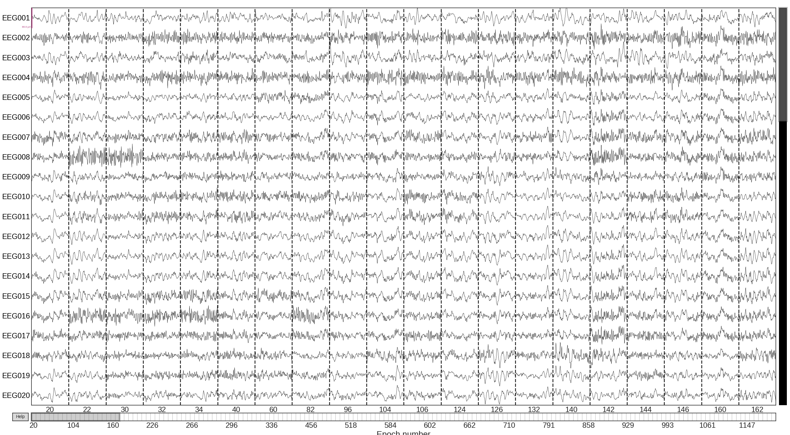

Note
Click here to download the full example code
Visualize bad sensors per trial¶
This example demonstrates how to use autoreject to
visualize the bad sensors in each trial
# Author: Mainak Jas <mainak.jas@telecom-paristech.fr>
# Denis A. Engemann <denis.engemann@gmail.com>
# License: BSD-3-Clause
# sphinx_gallery_thumbnail_number = 2
First, we download the data from OpenfMRI which is hosted on OpenNeuro.
We will do this using openneuro-py which can be installed using pip
(pip install openneuro-py).
import os
import openneuro
import autoreject
dataset = 'ds000117' # The id code on OpenNeuro for this example dataset
subject_id = 16 # OpenfMRI format of subject numbering
target_dir = os.path.join(
os.path.dirname(autoreject.__file__), '..', 'examples', dataset)
if not os.path.isdir(target_dir):
os.makedirs(target_dir)
openneuro.download(dataset=dataset, target_dir=target_dir,
include=[f'sub-{subject_id}/ses-meg/'])
Out:
Hello! This is openneuro-py 2022.1.0. Great to see you!
Please report problems and bugs at
https://github.com/hoechenberger/openneuro-py/issues
Preparing to download ds000117 ...
Retrieving up to 22 files (5 concurrent downloads).
dataset_description.json: 0.00B [00:00, ?B/s]
CHANGES: 0.00B [00:00, ?B/s]
sub-16_ses-meg_task-facerecognition_events.tsv: 0%| | 0.00/8.75k [00:00<?, ?B/s]
README: 0%| | 0.00/5.92k [00:00<?, ?B/s]
participants.tsv: 0%| | 0.00/333 [00:00<?, ?B/s]
sub-16_ses-meg_task-facerecognition_run-05_events.tsv: 0%| | 0.00/6.15k [00:00<?, ?B/s]
sub-16_ses-meg_scans.tsv: 0%| | 0.00/475 [00:00<?, ?B/s]
sub-16_ses-meg_task-facerecognition_run-06_events.tsv: 0%| | 0.00/6.24k [00:00<?, ?B/s]
sub-16_ses-meg_task-facerecognition_meg.json: 0%| | 0.00/1.67k [00:00<?, ?B/s]
sub-16_ses-meg_headshape.pos: 0%| | 0.00/4.22k [00:00<?, ?B/s]
sub-16_ses-meg_task-facerecognition_run-03_meg.fif: 0%| | 0.00/832M [00:00<?, ?B/s]
sub-16_ses-meg_task-facerecognition_run-03_meg.fif: 0%| | 17.6k/832M [00:00<1:36:55, 150kB/s]
sub-16_ses-meg_task-facerecognition_run-03_meg.fif: 0%| | 51.6k/832M [00:00<1:03:32, 229kB/s]
sub-16_ses-meg_task-facerecognition_run-03_meg.fif: 0%| | 120k/832M [00:00<38:33, 377kB/s]
sub-16_ses-meg_coordsystem.json: 0%| | 0.00/1.81k [00:00<?, ?B/s]
sub-16_ses-meg_task-facerecognition_run-06_meg.fif: 0%| | 0.00/822M [00:00<?, ?B/s]
sub-16_ses-meg_task-facerecognition_run-03_events.tsv: 0%| | 0.00/6.19k [00:00<?, ?B/s]
sub-16_ses-meg_task-facerecognition_run-03_meg.fif: 0%| | 239k/832M [00:00<24:07, 602kB/s]
sub-16_ses-meg_task-facerecognition_run-02_events.tsv: 0%| | 0.00/6.06k [00:00<?, ?B/s]
sub-16_ses-meg_task-facerecognition_run-06_meg.fif: 0%| | 17.6k/822M [00:00<1:38:05, 146kB/s]
sub-16_ses-meg_task-facerecognition_run-03_meg.fif: 0%| | 494k/832M [00:00<12:28, 1.16MB/s]
sub-16_ses-meg_task-facerecognition_run-06_meg.fif: 0%| | 51.6k/822M [00:00<1:03:41, 226kB/s]
sub-16_ses-meg_task-facerecognition_run-03_meg.fif: 0%| | 987k/832M [00:00<06:41, 2.17MB/s]
sub-16_ses-meg_task-facerecognition_run-06_meg.fif: 0%| | 120k/822M [00:00<38:21, 374kB/s]
sub-16_ses-meg_task-facerecognition_run-03_meg.fif: 0%| | 1.93M/832M [00:00<03:30, 4.14MB/s]
sub-16_ses-meg_task-facerecognition_run-03_meg.fif: 0%| | 3.11M/832M [00:00<02:16, 6.39MB/s]
sub-16_ses-meg_task-facerecognition_run-06_meg.fif: 0%| | 240k/822M [00:00<27:55, 514kB/s]
sub-16_ses-meg_task-facerecognition_run-06_meg.fif: 0%| | 290k/822M [00:00<42:35, 337kB/s]
sub-16_ses-meg_task-facerecognition_run-03_meg.fif: 0%| | 3.77M/832M [00:01<03:42, 3.90MB/s]
sub-16_ses-meg_task-facerecognition_run-03_meg.fif: 1%| | 6.47M/832M [00:01<01:42, 8.41MB/s]
sub-16_ses-meg_task-facerecognition_run-06_meg.fif: 0%| | 460k/822M [00:00<24:02, 597kB/s]
sub-16_ses-meg_task-facerecognition_run-06_meg.fif: 0%| | 596k/822M [00:01<21:14, 676kB/s]
sub-16_ses-meg_task-facerecognition_run-03_meg.fif: 1%| | 7.56M/832M [00:01<02:08, 6.71MB/s]
sub-16_ses-meg_task-facerecognition_run-06_meg.fif: 0%| | 681k/822M [00:01<21:12, 677kB/s]
sub-16_ses-meg_task-facerecognition_run-03_meg.fif: 1%|1 | 9.52M/832M [00:01<01:33, 9.23MB/s]
sub-16_ses-meg_task-facerecognition_run-06_meg.fif: 0%| | 766k/822M [00:01<20:58, 684kB/s]
sub-16_ses-meg_task-facerecognition_run-05_meg.fif: 0%| | 0.00/824M [00:00<?, ?B/s]
sub-16_ses-meg_task-facerecognition_run-03_meg.fif: 1%|1 | 10.7M/832M [00:01<01:29, 9.65MB/s]
sub-16_ses-meg_task-facerecognition_run-06_meg.fif: 0%| | 868k/822M [00:01<21:10, 678kB/s]
sub-16_ses-meg_task-facerecognition_run-05_meg.fif: 0%| | 17.6k/824M [00:00<1:56:15, 124kB/s]
sub-16_ses-meg_task-facerecognition_run-01_events.tsv: 0%| | 0.00/6.19k [00:00<?, ?B/s]
sub-16_ses-meg_task-facerecognition_run-03_meg.fif: 1%|1 | 11.9M/832M [00:02<01:47, 7.97MB/s]
sub-16_ses-meg_task-facerecognition_run-06_meg.fif: 0%| | 970k/822M [00:01<20:22, 704kB/s]
sub-16_ses-meg_task-facerecognition_run-05_meg.fif: 0%| | 52.6k/824M [00:00<1:10:36, 204kB/s]
sub-16_ses-meg_task-facerecognition_run-03_meg.fif: 2%|1 | 14.2M/832M [00:02<01:17, 11.1MB/s]
sub-16_ses-meg_task-facerecognition_run-06_meg.fif: 0%| | 1.05M/822M [00:01<19:21, 741kB/s]
sub-16_ses-meg_task-facerecognition_run-05_meg.fif: 0%| | 120k/824M [00:00<41:11, 349kB/s]
sub-16_ses-meg_task-facerecognition_run-03_meg.fif: 2%|1 | 15.5M/832M [00:02<01:18, 10.9MB/s]
sub-16_ses-meg_task-facerecognition_run-06_meg.fif: 0%| | 1.16M/822M [00:01<17:56, 799kB/s]
sub-16_ses-meg_task-facerecognition_run-05_meg.fif: 0%| | 188k/824M [00:00<33:50, 425kB/s]
sub-16_ses-meg_task-facerecognition_run-03_meg.fif: 2%|2 | 16.8M/832M [00:02<01:19, 10.7MB/s]
sub-16_ses-meg_task-facerecognition_run-06_meg.fif: 0%| | 1.26M/822M [00:02<17:45, 807kB/s]
sub-16_ses-meg_task-facerecognition_run-05_meg.fif: 0%| | 257k/824M [00:00<30:13, 476kB/s]
sub-16_ses-meg_task-facerecognition_run-03_meg.fif: 2%|2 | 18.0M/832M [00:02<01:20, 10.6MB/s]
sub-16_ses-meg_task-facerecognition_run-06_meg.fif: 0%| | 1.38M/822M [00:02<16:48, 853kB/s]
sub-16_ses-meg_task-facerecognition_run-05_meg.fif: 0%| | 341k/824M [00:00<26:58, 533kB/s]
sub-16_ses-meg_task-facerecognition_run-04_meg.fif: 0%| | 0.00/830M [00:00<?, ?B/s]
sub-16_ses-meg_task-facerecognition_run-06_meg.fif: 0%| | 1.48M/822M [00:02<16:53, 849kB/s]
sub-16_ses-meg_task-facerecognition_run-05_meg.fif: 0%| | 426k/824M [00:00<24:06, 597kB/s]
sub-16_ses-meg_task-facerecognition_run-04_meg.fif: 0%| | 17.6k/830M [00:00<1:40:14, 145kB/s]
sub-16_ses-meg_task-facerecognition_run-06_meg.fif: 0%| | 1.59M/822M [00:02<16:17, 880kB/s]
sub-16_ses-meg_task-facerecognition_run-05_meg.fif: 0%| | 511k/824M [00:01<22:54, 628kB/s]
sub-16_ses-meg_task-facerecognition_run-04_meg.fif: 0%| | 51.6k/830M [00:00<1:04:23, 225kB/s]
sub-16_ses-meg_task-facerecognition_run-03_meg.fif: 2%|2 | 19.1M/832M [00:03<02:19, 6.12MB/s]
sub-16_ses-meg_task-facerecognition_run-06_meg.fif: 0%| | 1.71M/822M [00:02<16:27, 871kB/s]
sub-16_ses-meg_task-facerecognition_run-05_meg.fif: 0%| | 596k/824M [00:01<22:58, 626kB/s]
sub-16_ses-meg_task-facerecognition_run-04_meg.fif: 0%| | 120k/830M [00:00<39:27, 368kB/s]
sub-16_ses-meg_task-facerecognition_run-06_meg.fif: 0%| | 1.83M/822M [00:02<16:01, 894kB/s]
sub-16_ses-meg_task-facerecognition_run-05_meg.fif: 0%| | 698k/824M [00:01<21:02, 684kB/s]
sub-16_ses-meg_task-facerecognition_run-04_meg.fif: 0%| | 240k/830M [00:00<24:05, 602kB/s]
sub-16_ses-meg_task-facerecognition_run-03_meg.fif: 2%|2 | 19.9M/832M [00:03<02:41, 5.28MB/s]
sub-16_ses-meg_task-facerecognition_run-05_meg.fif: 0%| | 783k/824M [00:01<20:45, 693kB/s]
sub-16_ses-meg_task-facerecognition_run-06_meg.fif: 0%| | 1.93M/822M [00:02<16:20, 877kB/s]
sub-16_ses-meg_task-facerecognition_run-04_meg.fif: 0%| | 511k/830M [00:00<12:19, 1.18MB/s]
sub-16_ses-meg_task-facerecognition_run-02_meg.fif: 0%| | 0.00/835M [00:00<?, ?B/s]
sub-16_ses-meg_task-facerecognition_run-06_meg.fif: 0%| | 2.04M/822M [00:02<15:53, 902kB/s]
sub-16_ses-meg_task-facerecognition_run-05_meg.fif: 0%| | 902k/824M [00:01<18:48, 765kB/s]
sub-16_ses-meg_task-facerecognition_run-04_meg.fif: 0%| | 1.00M/830M [00:00<06:38, 2.18MB/s]
sub-16_ses-meg_task-facerecognition_run-02_meg.fif: 0%| | 17.2k/835M [00:00<2:00:39, 121kB/s]
sub-16_ses-meg_task-facerecognition_run-03_meg.fif: 2%|2 | 20.6M/832M [00:03<03:09, 4.49MB/s]
sub-16_ses-meg_task-facerecognition_run-05_meg.fif: 0%| | 0.98M/824M [00:01<19:07, 752kB/s]
sub-16_ses-meg_task-facerecognition_run-06_meg.fif: 0%| | 2.16M/822M [00:03<16:24, 873kB/s]
sub-16_ses-meg_task-facerecognition_run-04_meg.fif: 0%| | 2.01M/830M [00:00<03:37, 3.99MB/s]
sub-16_ses-meg_task-facerecognition_run-02_meg.fif: 0%| | 67.2k/835M [00:00<1:06:53, 218kB/s]
sub-16_ses-meg_task-facerecognition_run-06_meg.fif: 0%| | 2.27M/822M [00:03<22:30, 636kB/s]
sub-16_ses-meg_task-facerecognition_run-05_meg.fif: 0%| | 1.10M/824M [00:02<25:11, 571kB/s]
sub-16_ses-meg_task-facerecognition_run-04_meg.fif: 0%| | 3.03M/830M [00:01<04:19, 3.34MB/s]
sub-16_ses-meg_task-facerecognition_run-03_meg.fif: 3%|2 | 21.2M/832M [00:03<04:35, 3.08MB/s]
sub-16_ses-meg_task-facerecognition_run-05_meg.fif: 0%| | 1.25M/824M [00:02<19:52, 723kB/s]
sub-16_ses-meg_task-facerecognition_run-06_meg.fif: 0%| | 2.44M/822M [00:03<17:55, 799kB/s]
sub-16_ses-meg_task-facerecognition_run-04_meg.fif: 1%| | 4.48M/830M [00:01<02:38, 5.45MB/s]
sub-16_ses-meg_task-facerecognition_run-02_meg.fif: 0%| | 101k/835M [00:00<1:53:34, 129kB/s]
sub-16_ses-meg_task-facerecognition_run-03_meg.fif: 3%|2 | 21.7M/832M [00:04<04:22, 3.24MB/s]
sub-16_ses-meg_task-facerecognition_run-05_meg.fif: 0%| | 1.33M/824M [00:02<20:29, 701kB/s]
sub-16_ses-meg_task-facerecognition_run-06_meg.fif: 0%| | 2.54M/822M [00:03<18:18, 782kB/s]
sub-16_ses-meg_task-facerecognition_run-04_meg.fif: 1%| | 5.67M/830M [00:01<02:06, 6.86MB/s]
sub-16_ses-meg_task-facerecognition_run-02_meg.fif: 0%| | 152k/835M [00:00<1:20:18, 182kB/s]
sub-16_ses-meg_task-facerecognition_run-05_meg.fif: 0%| | 1.41M/824M [00:02<20:18, 708kB/s]
sub-16_ses-meg_task-facerecognition_run-03_meg.fif: 3%|2 | 22.1M/832M [00:04<04:26, 3.19MB/s]
sub-16_ses-meg_task-facerecognition_run-04_meg.fif: 1%| | 6.76M/830M [00:01<02:12, 6.51MB/s]
sub-16_ses-meg_task-facerecognition_run-02_meg.fif: 0%| | 203k/835M [00:01<1:03:06, 231kB/s]
sub-16_ses-meg_task-facerecognition_run-05_meg.fif: 0%| | 1.51M/824M [00:02<20:48, 690kB/s]
sub-16_ses-meg_task-facerecognition_run-03_meg.fif: 3%|2 | 22.5M/832M [00:04<04:44, 2.98MB/s]
sub-16_ses-meg_task-facerecognition_run-06_meg.fif: 0%| | 2.62M/822M [00:03<25:02, 572kB/s]
sub-16_ses-meg_task-facerecognition_run-04_meg.fif: 1%| | 7.53M/830M [00:01<02:07, 6.75MB/s]
sub-16_ses-meg_task-facerecognition_run-02_meg.fif: 0%| | 271k/835M [00:01<47:52, 305kB/s]
sub-16_ses-meg_task-facerecognition_run-05_meg.fif: 0%| | 1.59M/824M [00:02<20:15, 709kB/s]
sub-16_ses-meg_task-facerecognition_run-03_meg.fif: 3%|2 | 22.8M/832M [00:04<04:39, 3.03MB/s]
sub-16_ses-meg_task-facerecognition_run-06_meg.fif: 0%| | 2.72M/822M [00:04<22:14, 644kB/s]
sub-16_ses-meg_task-facerecognition_run-04_meg.fif: 1%|1 | 9.29M/830M [00:01<01:34, 9.14MB/s]
sub-16_ses-meg_task-facerecognition_run-02_meg.fif: 0%| | 339k/835M [00:01<41:25, 352kB/s]
sub-16_ses-meg_task-facerecognition_run-05_meg.fif: 0%| | 1.69M/824M [00:02<20:25, 704kB/s]
sub-16_ses-meg_task-facerecognition_run-03_meg.fif: 3%|2 | 23.2M/832M [00:04<04:55, 2.87MB/s]
sub-16_ses-meg_task-facerecognition_run-04_meg.fif: 1%|1 | 10.3M/830M [00:02<01:35, 9.03MB/s]
sub-16_ses-meg_task-facerecognition_run-06_meg.fif: 0%| | 2.81M/822M [00:04<24:15, 590kB/s]
sub-16_ses-meg_task-facerecognition_run-04_meg.fif: 1%|1 | 11.3M/830M [00:02<01:32, 9.24MB/s]
sub-16_ses-meg_task-facerecognition_run-02_meg.fif: 0%| | 424k/835M [00:01<34:27, 424kB/s]
sub-16_ses-meg_task-facerecognition_run-05_meg.fif: 0%| | 1.79M/824M [00:02<20:01, 717kB/s]
sub-16_ses-meg_task-facerecognition_run-03_meg.fif: 3%|2 | 23.5M/832M [00:04<05:15, 2.69MB/s]
sub-16_ses-meg_task-facerecognition_run-06_meg.fif: 0%| | 2.87M/822M [00:04<25:20, 565kB/s]
sub-16_ses-meg_task-facerecognition_run-04_meg.fif: 1%|1 | 12.2M/830M [00:02<01:38, 8.72MB/s]
sub-16_ses-meg_task-facerecognition_run-02_meg.fif: 0%| | 492k/835M [00:01<32:40, 447kB/s]
sub-16_ses-meg_task-facerecognition_run-05_meg.fif: 0%| | 1.89M/824M [00:03<19:48, 725kB/s]
sub-16_ses-meg_task-facerecognition_run-03_meg.fif: 3%|2 | 23.8M/832M [00:04<05:28, 2.58MB/s]
sub-16_ses-meg_task-facerecognition_run-06_meg.fif: 0%| | 2.94M/822M [00:04<26:23, 543kB/s]
sub-16_ses-meg_task-facerecognition_run-04_meg.fif: 2%|1 | 13.1M/830M [00:02<01:42, 8.33MB/s]
sub-16_ses-meg_task-facerecognition_run-02_meg.fif: 0%| | 561k/835M [00:01<31:25, 464kB/s]
sub-16_ses-meg_task-facerecognition_run-05_meg.fif: 0%| | 1.99M/824M [00:03<19:44, 727kB/s]
sub-16_ses-meg_task-facerecognition_run-03_meg.fif: 3%|2 | 24.0M/832M [00:05<05:48, 2.43MB/s]
sub-16_ses-meg_task-facerecognition_run-06_meg.fif: 0%| | 3.01M/822M [00:04<27:13, 526kB/s]
sub-16_ses-meg_task-facerecognition_run-04_meg.fif: 2%|1 | 13.9M/830M [00:02<01:47, 7.97MB/s]
sub-16_ses-meg_task-facerecognition_run-02_meg.fif: 0%| | 645k/835M [00:01<29:20, 497kB/s]
sub-16_ses-meg_task-facerecognition_run-03_meg.fif: 3%|2 | 24.3M/832M [00:05<05:54, 2.39MB/s]
sub-16_ses-meg_task-facerecognition_run-05_meg.fif: 0%| | 2.11M/824M [00:03<19:01, 754kB/s]
sub-16_ses-meg_task-facerecognition_run-04_meg.fif: 2%|1 | 14.7M/830M [00:02<01:46, 8.02MB/s]
sub-16_ses-meg_task-facerecognition_run-06_meg.fif: 0%| | 3.07M/822M [00:04<27:58, 512kB/s]
sub-16_ses-meg_task-facerecognition_run-04_meg.fif: 2%|1 | 15.7M/830M [00:02<01:39, 8.58MB/s]
sub-16_ses-meg_task-facerecognition_run-02_meg.fif: 0%| | 730k/835M [00:02<27:41, 527kB/s]
sub-16_ses-meg_task-facerecognition_run-05_meg.fif: 0%| | 2.21M/824M [00:03<19:19, 743kB/s]
sub-16_ses-meg_task-facerecognition_run-03_meg.fif: 3%|2 | 24.7M/832M [00:05<05:52, 2.40MB/s]
sub-16_ses-meg_task-facerecognition_run-06_meg.fif: 0%| | 3.12M/822M [00:05<30:33, 468kB/s]
sub-16_ses-meg_task-facerecognition_run-02_meg.fif: 0%| | 799k/835M [00:02<28:02, 520kB/s]
sub-16_ses-meg_task-facerecognition_run-05_meg.fif: 0%| | 2.32M/824M [00:03<18:53, 760kB/s]
sub-16_ses-meg_task-facerecognition_run-03_meg.fif: 3%|3 | 25.0M/832M [00:05<05:54, 2.39MB/s]
sub-16_ses-meg_task-facerecognition_run-06_meg.fif: 0%| | 3.19M/822M [00:05<28:33, 501kB/s]
sub-16_ses-meg_task-facerecognition_run-04_meg.fif: 2%|1 | 16.6M/830M [00:02<02:23, 5.96MB/s]
sub-16_ses-meg_task-facerecognition_run-02_meg.fif: 0%| | 883k/835M [00:02<25:46, 566kB/s]
sub-16_ses-meg_task-facerecognition_run-03_meg.fif: 3%|3 | 25.4M/832M [00:05<05:31, 2.55MB/s]
sub-16_ses-meg_task-facerecognition_run-05_meg.fif: 0%| | 2.44M/824M [00:03<17:53, 802kB/s]
sub-16_ses-meg_task-facerecognition_run-06_meg.fif: 0%| | 3.25M/822M [00:05<27:26, 522kB/s]
sub-16_ses-meg_task-facerecognition_run-02_meg.fif: 0%| | 968k/835M [00:02<24:19, 599kB/s]
sub-16_ses-meg_task-facerecognition_run-05_meg.fif: 0%| | 2.54M/824M [00:03<17:13, 833kB/s]
sub-16_ses-meg_task-facerecognition_run-03_meg.fif: 3%|3 | 25.7M/832M [00:05<05:18, 2.65MB/s]
sub-16_ses-meg_task-facerecognition_run-06_meg.fif: 0%| | 3.32M/822M [00:05<26:57, 531kB/s]
sub-16_ses-meg_task-facerecognition_run-02_meg.fif: 0%| | 1.03M/835M [00:02<23:18, 626kB/s]
sub-16_ses-meg_task-facerecognition_run-05_meg.fif: 0%| | 2.66M/824M [00:04<16:23, 875kB/s]
sub-16_ses-meg_task-facerecognition_run-06_meg.fif: 0%| | 3.39M/822M [00:05<25:38, 558kB/s]
sub-16_ses-meg_task-facerecognition_run-03_meg.fif: 3%|3 | 26.1M/832M [00:05<05:11, 2.71MB/s]
sub-16_ses-meg_task-facerecognition_run-04_meg.fif: 2%|2 | 17.2M/830M [00:03<03:31, 4.03MB/s]
sub-16_ses-meg_task-facerecognition_run-02_meg.fif: 0%| | 1.11M/835M [00:02<22:38, 644kB/s]
sub-16_ses-meg_task-facerecognition_run-06_meg.fif: 0%| | 3.45M/822M [00:05<24:49, 576kB/s]
sub-16_ses-meg_task-facerecognition_run-05_meg.fif: 0%| | 2.77M/824M [00:04<15:54, 901kB/s]
sub-16_ses-meg_task-facerecognition_run-03_meg.fif: 3%|3 | 26.4M/832M [00:06<05:05, 2.77MB/s]
sub-16_ses-meg_task-facerecognition_run-04_meg.fif: 2%|2 | 17.8M/830M [00:03<03:34, 3.98MB/s]
sub-16_ses-meg_task-facerecognition_run-02_meg.fif: 0%| | 1.19M/835M [00:02<22:19, 653kB/s]
sub-16_ses-meg_task-facerecognition_run-05_meg.fif: 0%| | 2.89M/824M [00:04<15:45, 911kB/s]
sub-16_ses-meg_task-facerecognition_run-03_meg.fif: 3%|3 | 26.8M/832M [00:06<05:01, 2.80MB/s]
sub-16_ses-meg_task-facerecognition_run-06_meg.fif: 0%| | 3.54M/822M [00:05<24:54, 574kB/s]
sub-16_ses-meg_task-facerecognition_run-02_meg.fif: 0%| | 1.28M/835M [00:02<21:59, 663kB/s]
sub-16_ses-meg_task-facerecognition_run-04_meg.fif: 2%|2 | 18.3M/830M [00:03<03:38, 3.90MB/s]
sub-16_ses-meg_task-facerecognition_run-06_meg.fif: 0%| | 3.60M/822M [00:05<24:18, 588kB/s]
sub-16_ses-meg_task-facerecognition_run-05_meg.fif: 0%| | 3.01M/824M [00:04<15:20, 935kB/s]
sub-16_ses-meg_task-facerecognition_run-03_meg.fif: 3%|3 | 27.1M/832M [00:06<04:57, 2.83MB/s]
sub-16_ses-meg_task-facerecognition_run-06_meg.fif: 0%| | 3.67M/822M [00:05<23:41, 604kB/s]
sub-16_ses-meg_task-facerecognition_run-03_meg.fif: 3%|3 | 27.5M/832M [00:06<04:41, 3.00MB/s]
sub-16_ses-meg_task-facerecognition_run-02_meg.fif: 0%| | 1.38M/835M [00:03<20:31, 710kB/s]
sub-16_ses-meg_task-facerecognition_run-04_meg.fif: 2%|2 | 18.7M/830M [00:03<03:42, 3.83MB/s]
sub-16_ses-meg_task-facerecognition_run-05_meg.fif: 0%| | 3.12M/824M [00:04<15:04, 951kB/s]
sub-16_ses-meg_task-facerecognition_run-06_meg.fif: 0%| | 3.74M/822M [00:06<22:42, 630kB/s]
sub-16_ses-meg_task-facerecognition_run-02_meg.fif: 0%| | 1.46M/835M [00:03<20:34, 708kB/s]
sub-16_ses-meg_task-facerecognition_run-04_meg.fif: 2%|2 | 19.2M/830M [00:03<03:45, 3.77MB/s]
sub-16_ses-meg_task-facerecognition_run-05_meg.fif: 0%| | 3.24M/824M [00:04<15:00, 955kB/s]
sub-16_ses-meg_task-facerecognition_run-03_meg.fif: 3%|3 | 27.8M/832M [00:06<04:59, 2.82MB/s]
sub-16_ses-meg_task-facerecognition_run-06_meg.fif: 0%| | 3.80M/822M [00:06<23:35, 606kB/s]
sub-16_ses-meg_task-facerecognition_run-02_meg.fif: 0%| | 1.54M/835M [00:03<20:44, 703kB/s]
sub-16_ses-meg_task-facerecognition_run-04_meg.fif: 2%|2 | 19.6M/830M [00:03<03:52, 3.66MB/s]
sub-16_ses-meg_task-facerecognition_run-05_meg.fif: 0%| | 3.35M/824M [00:04<14:57, 958kB/s]
sub-16_ses-meg_task-facerecognition_run-03_meg.fif: 3%|3 | 28.2M/832M [00:06<04:55, 2.85MB/s]
sub-16_ses-meg_task-facerecognition_run-06_meg.fif: 0%| | 3.87M/822M [00:06<24:13, 590kB/s]
sub-16_ses-meg_task-facerecognition_run-02_meg.fif: 0%| | 1.63M/835M [00:03<20:27, 712kB/s]
sub-16_ses-meg_task-facerecognition_run-04_meg.fif: 2%|2 | 19.9M/830M [00:04<03:58, 3.57MB/s]
sub-16_ses-meg_task-facerecognition_run-05_meg.fif: 0%| | 3.47M/824M [00:04<14:50, 966kB/s]
sub-16_ses-meg_task-facerecognition_run-03_meg.fif: 3%|3 | 28.5M/832M [00:06<04:52, 2.88MB/s]
sub-16_ses-meg_task-facerecognition_run-06_meg.fif: 0%| | 3.94M/822M [00:06<24:09, 592kB/s]
sub-16_ses-meg_task-facerecognition_run-02_meg.fif: 0%| | 1.71M/835M [00:03<20:34, 708kB/s]
sub-16_ses-meg_task-facerecognition_run-04_meg.fif: 2%|2 | 20.3M/830M [00:04<04:02, 3.50MB/s]
sub-16_ses-meg_task-facerecognition_run-05_meg.fif: 0%| | 3.59M/824M [00:05<14:49, 967kB/s]
sub-16_ses-meg_task-facerecognition_run-03_meg.fif: 3%|3 | 28.9M/832M [00:06<04:48, 2.92MB/s]
sub-16_ses-meg_task-facerecognition_run-06_meg.fif: 0%| | 4.00M/822M [00:06<24:36, 581kB/s]
sub-16_ses-meg_task-facerecognition_run-04_meg.fif: 2%|2 | 20.6M/830M [00:04<04:09, 3.40MB/s]
sub-16_ses-meg_task-facerecognition_run-02_meg.fif: 0%| | 1.81M/835M [00:03<19:49, 734kB/s]
sub-16_ses-meg_task-facerecognition_run-05_meg.fif: 0%| | 3.72M/824M [00:05<14:34, 983kB/s]
sub-16_ses-meg_task-facerecognition_run-03_meg.fif: 4%|3 | 29.2M/832M [00:07<04:48, 2.92MB/s]
sub-16_ses-meg_task-facerecognition_run-06_meg.fif: 0%| | 4.07M/822M [00:06<24:49, 576kB/s]
sub-16_ses-meg_task-facerecognition_run-04_meg.fif: 3%|2 | 21.0M/830M [00:04<04:15, 3.32MB/s]
sub-16_ses-meg_task-facerecognition_run-02_meg.fif: 0%| | 1.89M/835M [00:03<19:50, 734kB/s]
sub-16_ses-meg_task-facerecognition_run-03_meg.fif: 4%|3 | 29.6M/832M [00:07<04:44, 2.95MB/s]
sub-16_ses-meg_task-facerecognition_run-05_meg.fif: 0%| | 3.84M/824M [00:05<14:34, 983kB/s]
sub-16_ses-meg_task-facerecognition_run-06_meg.fif: 1%| | 4.13M/822M [00:06<24:51, 575kB/s]
sub-16_ses-meg_task-facerecognition_run-04_meg.fif: 3%|2 | 21.3M/830M [00:04<04:18, 3.29MB/s]
sub-16_ses-meg_task-facerecognition_run-02_meg.fif: 0%| | 1.97M/835M [00:03<20:07, 724kB/s]
sub-16_ses-meg_task-facerecognition_run-05_meg.fif: 0%| | 3.95M/824M [00:05<14:28, 990kB/s]
sub-16_ses-meg_task-facerecognition_run-03_meg.fif: 4%|3 | 30.0M/832M [00:07<04:44, 2.96MB/s]
sub-16_ses-meg_task-facerecognition_run-04_meg.fif: 3%|2 | 21.7M/830M [00:04<04:10, 3.38MB/s]
sub-16_ses-meg_task-facerecognition_run-06_meg.fif: 1%| | 4.22M/822M [00:06<23:47, 601kB/s]
sub-16_ses-meg_task-facerecognition_run-02_meg.fif: 0%| | 2.06M/835M [00:04<20:25, 713kB/s]
sub-16_ses-meg_task-facerecognition_run-05_meg.fif: 0%| | 4.07M/824M [00:05<14:21, 998kB/s]
sub-16_ses-meg_task-facerecognition_run-03_meg.fif: 4%|3 | 30.3M/832M [00:07<04:41, 2.99MB/s]
sub-16_ses-meg_task-facerecognition_run-04_meg.fif: 3%|2 | 22.2M/830M [00:04<04:01, 3.51MB/s]
sub-16_ses-meg_task-facerecognition_run-06_meg.fif: 1%| | 4.28M/822M [00:07<24:26, 585kB/s]
sub-16_ses-meg_task-facerecognition_run-02_meg.fif: 0%| | 2.14M/835M [00:04<20:36, 706kB/s]
sub-16_ses-meg_task-facerecognition_run-05_meg.fif: 1%| | 4.18M/824M [00:05<14:32, 985kB/s]
sub-16_ses-meg_task-facerecognition_run-03_meg.fif: 4%|3 | 30.7M/832M [00:07<04:44, 2.95MB/s]
sub-16_ses-meg_task-facerecognition_run-04_meg.fif: 3%|2 | 22.6M/830M [00:04<03:57, 3.56MB/s]
sub-16_ses-meg_task-facerecognition_run-06_meg.fif: 1%| | 4.37M/822M [00:07<23:19, 613kB/s]
sub-16_ses-meg_task-facerecognition_run-02_meg.fif: 0%| | 2.24M/835M [00:04<19:51, 733kB/s]
sub-16_ses-meg_task-facerecognition_run-05_meg.fif: 1%| | 4.30M/824M [00:05<14:49, 966kB/s]
sub-16_ses-meg_task-facerecognition_run-03_meg.fif: 4%|3 | 31.0M/832M [00:07<04:43, 2.97MB/s]
sub-16_ses-meg_task-facerecognition_run-06_meg.fif: 1%| | 4.43M/822M [00:07<23:31, 608kB/s]
sub-16_ses-meg_task-facerecognition_run-04_meg.fif: 3%|2 | 23.1M/830M [00:05<03:57, 3.57MB/s]
sub-16_ses-meg_task-facerecognition_run-02_meg.fif: 0%| | 2.32M/835M [00:04<20:06, 724kB/s]
sub-16_ses-meg_task-facerecognition_run-03_meg.fif: 4%|3 | 31.4M/832M [00:07<04:31, 3.09MB/s]
sub-16_ses-meg_task-facerecognition_run-05_meg.fif: 1%| | 4.42M/824M [00:05<14:41, 974kB/s]
sub-16_ses-meg_task-facerecognition_run-04_meg.fif: 3%|2 | 23.5M/830M [00:05<03:52, 3.63MB/s]
sub-16_ses-meg_task-facerecognition_run-06_meg.fif: 1%| | 4.52M/822M [00:07<22:56, 623kB/s]
sub-16_ses-meg_task-facerecognition_run-02_meg.fif: 0%| | 2.41M/835M [00:04<20:23, 714kB/s]
sub-16_ses-meg_task-facerecognition_run-03_meg.fif: 4%|3 | 31.7M/832M [00:07<04:34, 3.06MB/s]
sub-16_ses-meg_task-facerecognition_run-05_meg.fif: 1%| | 4.53M/824M [00:06<14:42, 973kB/s]
sub-16_ses-meg_task-facerecognition_run-06_meg.fif: 1%| | 4.58M/822M [00:07<22:38, 631kB/s]
sub-16_ses-meg_task-facerecognition_run-04_meg.fif: 3%|2 | 24.0M/830M [00:05<03:47, 3.72MB/s]
sub-16_ses-meg_task-facerecognition_run-03_meg.fif: 4%|3 | 32.1M/832M [00:08<04:22, 3.20MB/s]
sub-16_ses-meg_task-facerecognition_run-02_meg.fif: 0%| | 2.49M/835M [00:04<20:29, 710kB/s]
sub-16_ses-meg_task-facerecognition_run-05_meg.fif: 1%| | 4.67M/824M [00:06<14:24, 994kB/s]
sub-16_ses-meg_task-facerecognition_run-04_meg.fif: 3%|2 | 24.4M/830M [00:05<03:45, 3.75MB/s]
sub-16_ses-meg_task-facerecognition_run-06_meg.fif: 1%| | 4.67M/822M [00:07<22:29, 635kB/s]
sub-16_ses-meg_task-facerecognition_run-03_meg.fif: 4%|3 | 32.4M/832M [00:08<04:30, 3.09MB/s]
sub-16_ses-meg_task-facerecognition_run-02_meg.fif: 0%| | 2.59M/835M [00:04<19:36, 742kB/s]
sub-16_ses-meg_task-facerecognition_run-05_meg.fif: 1%| | 4.78M/824M [00:06<14:36, 980kB/s]
sub-16_ses-meg_task-facerecognition_run-04_meg.fif: 3%|2 | 24.9M/830M [00:05<03:44, 3.77MB/s]
sub-16_ses-meg_task-facerecognition_run-03_meg.fif: 4%|3 | 32.7M/832M [00:08<04:34, 3.06MB/s]
sub-16_ses-meg_task-facerecognition_run-06_meg.fif: 1%| | 4.75M/822M [00:07<22:20, 639kB/s]
sub-16_ses-meg_task-facerecognition_run-02_meg.fif: 0%| | 2.67M/835M [00:04<20:02, 726kB/s]
sub-16_ses-meg_task-facerecognition_run-05_meg.fif: 1%| | 4.90M/824M [00:06<14:34, 982kB/s]
sub-16_ses-meg_task-facerecognition_run-03_meg.fif: 4%|3 | 33.0M/832M [00:08<04:42, 2.97MB/s]
sub-16_ses-meg_task-facerecognition_run-04_meg.fif: 3%|3 | 25.3M/830M [00:05<03:43, 3.78MB/s]
sub-16_ses-meg_task-facerecognition_run-06_meg.fif: 1%| | 4.83M/822M [00:07<21:41, 659kB/s]
sub-16_ses-meg_task-facerecognition_run-02_meg.fif: 0%| | 2.76M/835M [00:05<20:15, 718kB/s]
sub-16_ses-meg_task-facerecognition_run-05_meg.fif: 1%| | 5.01M/824M [00:06<14:21, 997kB/s]
sub-16_ses-meg_task-facerecognition_run-03_meg.fif: 4%|4 | 33.3M/832M [00:08<04:44, 2.94MB/s]
sub-16_ses-meg_task-facerecognition_run-06_meg.fif: 1%| | 4.90M/822M [00:08<21:40, 659kB/s]
sub-16_ses-meg_task-facerecognition_run-04_meg.fif: 3%|3 | 25.8M/830M [00:05<03:41, 3.81MB/s]
sub-16_ses-meg_task-facerecognition_run-02_meg.fif: 0%| | 2.84M/835M [00:05<20:18, 717kB/s]
sub-16_ses-meg_task-facerecognition_run-05_meg.fif: 1%| | 5.13M/824M [00:06<14:29, 987kB/s]
sub-16_ses-meg_task-facerecognition_run-03_meg.fif: 4%|4 | 33.6M/832M [00:08<04:45, 2.94MB/s]
sub-16_ses-meg_task-facerecognition_run-04_meg.fif: 3%|3 | 26.2M/830M [00:05<03:42, 3.79MB/s]
sub-16_ses-meg_task-facerecognition_run-06_meg.fif: 1%| | 4.98M/822M [00:08<21:50, 654kB/s]
sub-16_ses-meg_task-facerecognition_run-02_meg.fif: 0%| | 2.92M/835M [00:05<20:26, 712kB/s]
sub-16_ses-meg_task-facerecognition_run-03_meg.fif: 4%|4 | 33.9M/832M [00:08<04:34, 3.05MB/s]
sub-16_ses-meg_task-facerecognition_run-05_meg.fif: 1%| | 5.25M/824M [00:06<14:36, 979kB/s]
sub-16_ses-meg_task-facerecognition_run-04_meg.fif: 3%|3 | 26.7M/830M [00:06<03:39, 3.84MB/s]
sub-16_ses-meg_task-facerecognition_run-06_meg.fif: 1%| | 5.06M/822M [00:08<21:25, 666kB/s]
sub-16_ses-meg_task-facerecognition_run-02_meg.fif: 0%| | 3.02M/835M [00:05<19:45, 736kB/s]
sub-16_ses-meg_task-facerecognition_run-03_meg.fif: 4%|4 | 34.3M/832M [00:08<04:33, 3.06MB/s]
sub-16_ses-meg_task-facerecognition_run-05_meg.fif: 1%| | 5.36M/824M [00:06<14:38, 977kB/s]
sub-16_ses-meg_task-facerecognition_run-04_meg.fif: 3%|3 | 27.2M/830M [00:06<03:39, 3.85MB/s]
sub-16_ses-meg_task-facerecognition_run-06_meg.fif: 1%| | 5.15M/822M [00:08<21:06, 677kB/s]
sub-16_ses-meg_task-facerecognition_run-02_meg.fif: 0%| | 3.10M/835M [00:05<19:59, 728kB/s]
sub-16_ses-meg_task-facerecognition_run-03_meg.fif: 4%|4 | 34.7M/832M [00:08<04:35, 3.03MB/s]
sub-16_ses-meg_task-facerecognition_run-05_meg.fif: 1%| | 5.50M/824M [00:07<14:27, 989kB/s]
sub-16_ses-meg_task-facerecognition_run-04_meg.fif: 3%|3 | 27.6M/830M [00:06<03:38, 3.86MB/s]
sub-16_ses-meg_task-facerecognition_run-06_meg.fif: 1%| | 5.23M/822M [00:08<21:19, 669kB/s]
sub-16_ses-meg_task-facerecognition_run-02_meg.fif: 0%| | 3.19M/835M [00:05<19:54, 731kB/s]
sub-16_ses-meg_task-facerecognition_run-03_meg.fif: 4%|4 | 35.1M/832M [00:09<04:32, 3.07MB/s]
sub-16_ses-meg_task-facerecognition_run-05_meg.fif: 1%| | 5.61M/824M [00:07<14:26, 990kB/s]
sub-16_ses-meg_task-facerecognition_run-04_meg.fif: 3%|3 | 28.1M/830M [00:06<03:40, 3.82MB/s]
sub-16_ses-meg_task-facerecognition_run-06_meg.fif: 1%| | 5.31M/822M [00:08<21:01, 679kB/s]
sub-16_ses-meg_task-facerecognition_run-02_meg.fif: 0%| | 3.27M/835M [00:05<20:05, 724kB/s]
sub-16_ses-meg_task-facerecognition_run-05_meg.fif: 1%| | 5.73M/824M [00:07<14:27, 989kB/s]
sub-16_ses-meg_task-facerecognition_run-03_meg.fif: 4%|4 | 35.5M/832M [00:09<04:29, 3.10MB/s]
sub-16_ses-meg_task-facerecognition_run-04_meg.fif: 3%|3 | 28.6M/830M [00:06<03:36, 3.89MB/s]
sub-16_ses-meg_task-facerecognition_run-06_meg.fif: 1%| | 5.40M/822M [00:08<20:31, 696kB/s]
sub-16_ses-meg_task-facerecognition_run-02_meg.fif: 0%| | 3.35M/835M [00:05<20:07, 722kB/s]
sub-16_ses-meg_task-facerecognition_run-05_meg.fif: 1%| | 5.84M/824M [00:07<14:33, 982kB/s]
sub-16_ses-meg_task-facerecognition_run-03_meg.fif: 4%|4 | 35.9M/832M [00:09<04:25, 3.14MB/s]
sub-16_ses-meg_task-facerecognition_run-04_meg.fif: 3%|3 | 29.0M/830M [00:06<03:34, 3.91MB/s]
sub-16_ses-meg_task-facerecognition_run-06_meg.fif: 1%| | 5.48M/822M [00:08<20:30, 696kB/s]
sub-16_ses-meg_task-facerecognition_run-02_meg.fif: 0%| | 3.45M/835M [00:06<19:36, 742kB/s]
sub-16_ses-meg_task-facerecognition_run-05_meg.fif: 1%| | 5.96M/824M [00:07<14:22, 994kB/s]
sub-16_ses-meg_task-facerecognition_run-03_meg.fif: 4%|4 | 36.2M/832M [00:09<04:20, 3.21MB/s]
sub-16_ses-meg_task-facerecognition_run-04_meg.fif: 4%|3 | 29.5M/830M [00:06<03:34, 3.92MB/s]
sub-16_ses-meg_task-facerecognition_run-06_meg.fif: 1%| | 5.56M/822M [00:09<20:27, 697kB/s]
sub-16_ses-meg_task-facerecognition_run-02_meg.fif: 0%| | 3.54M/835M [00:06<19:40, 739kB/s]
sub-16_ses-meg_task-facerecognition_run-03_meg.fif: 4%|4 | 36.6M/832M [00:09<04:11, 3.31MB/s]
sub-16_ses-meg_task-facerecognition_run-05_meg.fif: 1%| | 6.08M/824M [00:07<14:30, 985kB/s]
sub-16_ses-meg_task-facerecognition_run-06_meg.fif: 1%| | 5.65M/822M [00:09<19:52, 718kB/s]
sub-16_ses-meg_task-facerecognition_run-04_meg.fif: 4%|3 | 30.0M/830M [00:06<03:33, 3.93MB/s]
sub-16_ses-meg_task-facerecognition_run-02_meg.fif: 0%| | 3.62M/835M [00:06<19:58, 728kB/s]
sub-16_ses-meg_task-facerecognition_run-03_meg.fif: 4%|4 | 37.0M/832M [00:09<04:16, 3.24MB/s]
sub-16_ses-meg_task-facerecognition_run-05_meg.fif: 1%| | 6.21M/824M [00:07<14:16, 1.00MB/s]
sub-16_ses-meg_task-facerecognition_run-06_meg.fif: 1%| | 5.73M/822M [00:09<19:53, 717kB/s]
sub-16_ses-meg_task-facerecognition_run-04_meg.fif: 4%|3 | 30.4M/830M [00:07<03:32, 3.95MB/s]
sub-16_ses-meg_task-facerecognition_run-02_meg.fif: 0%| | 3.72M/835M [00:06<19:16, 754kB/s]
sub-16_ses-meg_task-facerecognition_run-03_meg.fif: 5%|4 | 37.5M/832M [00:09<04:13, 3.28MB/s]
sub-16_ses-meg_task-facerecognition_run-05_meg.fif: 1%| | 6.33M/824M [00:07<14:21, 995kB/s]
sub-16_ses-meg_task-facerecognition_run-06_meg.fif: 1%| | 5.81M/822M [00:09<19:19, 738kB/s]
sub-16_ses-meg_task-facerecognition_run-04_meg.fif: 4%|3 | 30.9M/830M [00:07<03:34, 3.91MB/s]
sub-16_ses-meg_task-facerecognition_run-02_meg.fif: 0%| | 3.80M/835M [00:06<19:38, 740kB/s]
sub-16_ses-meg_task-facerecognition_run-03_meg.fif: 5%|4 | 37.9M/832M [00:09<04:05, 3.39MB/s]
sub-16_ses-meg_task-facerecognition_run-05_meg.fif: 1%| | 6.44M/824M [00:08<14:11, 1.01MB/s]
sub-16_ses-meg_task-facerecognition_run-06_meg.fif: 1%| | 5.89M/822M [00:09<19:42, 724kB/s]
sub-16_ses-meg_task-facerecognition_run-04_meg.fif: 4%|3 | 31.4M/830M [00:07<03:34, 3.91MB/s]
sub-16_ses-meg_task-facerecognition_run-02_meg.fif: 0%| | 3.90M/835M [00:06<18:55, 768kB/s]
sub-16_ses-meg_task-facerecognition_run-05_meg.fif: 1%| | 6.56M/824M [00:08<14:16, 1.00MB/s]
sub-16_ses-meg_task-facerecognition_run-03_meg.fif: 5%|4 | 38.3M/832M [00:10<04:07, 3.36MB/s]
sub-16_ses-meg_task-facerecognition_run-06_meg.fif: 1%| | 5.98M/822M [00:09<19:56, 715kB/s]
sub-16_ses-meg_task-facerecognition_run-04_meg.fif: 4%|3 | 31.8M/830M [00:07<03:24, 4.10MB/s]
sub-16_ses-meg_task-facerecognition_run-02_meg.fif: 0%| | 3.98M/835M [00:06<19:15, 755kB/s]
sub-16_ses-meg_task-facerecognition_run-03_meg.fif: 5%|4 | 38.7M/832M [00:10<03:58, 3.49MB/s]
sub-16_ses-meg_task-facerecognition_run-04_meg.fif: 4%|3 | 32.2M/830M [00:07<03:27, 4.03MB/s]
sub-16_ses-meg_task-facerecognition_run-05_meg.fif: 1%| | 6.69M/824M [00:08<14:10, 1.01MB/s]
sub-16_ses-meg_task-facerecognition_run-06_meg.fif: 1%| | 6.06M/822M [00:09<19:54, 716kB/s]
sub-16_ses-meg_task-facerecognition_run-02_meg.fif: 0%| | 4.08M/835M [00:06<18:52, 770kB/s]
sub-16_ses-meg_task-facerecognition_run-04_meg.fif: 4%|3 | 32.6M/830M [00:07<03:34, 3.90MB/s]
sub-16_ses-meg_task-facerecognition_run-03_meg.fif: 5%|4 | 39.1M/832M [00:10<03:58, 3.48MB/s]
sub-16_ses-meg_task-facerecognition_run-05_meg.fif: 1%| | 6.81M/824M [00:08<13:59, 1.02MB/s]
sub-16_ses-meg_task-facerecognition_run-06_meg.fif: 1%| | 6.14M/822M [00:09<20:01, 712kB/s]
sub-16_ses-meg_task-facerecognition_run-02_meg.fif: 0%| | 4.17M/835M [00:07<19:01, 764kB/s]
sub-16_ses-meg_task-facerecognition_run-04_meg.fif: 4%|3 | 33.0M/830M [00:07<03:39, 3.81MB/s]
sub-16_ses-meg_task-facerecognition_run-03_meg.fif: 5%|4 | 39.6M/832M [00:10<03:54, 3.54MB/s]
sub-16_ses-meg_task-facerecognition_run-06_meg.fif: 1%| | 6.23M/822M [00:10<20:12, 706kB/s]
sub-16_ses-meg_task-facerecognition_run-05_meg.fif: 1%| | 6.94M/824M [00:08<14:01, 1.02MB/s]
sub-16_ses-meg_task-facerecognition_run-02_meg.fif: 1%| | 4.27M/835M [00:07<18:37, 780kB/s]
sub-16_ses-meg_task-facerecognition_run-04_meg.fif: 4%|4 | 33.4M/830M [00:07<03:46, 3.68MB/s]
sub-16_ses-meg_task-facerecognition_run-06_meg.fif: 1%| | 6.31M/822M [00:10<19:31, 730kB/s]
sub-16_ses-meg_task-facerecognition_run-05_meg.fif: 1%| | 7.06M/824M [00:08<13:43, 1.04MB/s]
sub-16_ses-meg_task-facerecognition_run-03_meg.fif: 5%|4 | 40.0M/832M [00:10<03:52, 3.57MB/s]
sub-16_ses-meg_task-facerecognition_run-04_meg.fif: 4%|4 | 33.8M/830M [00:07<03:38, 3.83MB/s]
sub-16_ses-meg_task-facerecognition_run-02_meg.fif: 1%| | 4.37M/835M [00:07<18:16, 795kB/s]
sub-16_ses-meg_task-facerecognition_run-05_meg.fif: 1%| | 7.19M/824M [00:08<13:32, 1.05MB/s]
sub-16_ses-meg_task-facerecognition_run-03_meg.fif: 5%|4 | 40.5M/832M [00:10<03:51, 3.59MB/s]
sub-16_ses-meg_task-facerecognition_run-06_meg.fif: 1%| | 6.41M/822M [00:10<19:14, 741kB/s]
sub-16_ses-meg_task-facerecognition_run-04_meg.fif: 4%|4 | 34.2M/830M [00:08<03:33, 3.92MB/s]
sub-16_ses-meg_task-facerecognition_run-02_meg.fif: 1%| | 4.47M/835M [00:07<18:00, 807kB/s]
sub-16_ses-meg_task-facerecognition_run-06_meg.fif: 1%| | 6.49M/822M [00:10<19:18, 738kB/s]
sub-16_ses-meg_task-facerecognition_run-03_meg.fif: 5%|4 | 40.9M/832M [00:10<03:49, 3.62MB/s]
sub-16_ses-meg_task-facerecognition_run-05_meg.fif: 1%| | 7.32M/824M [00:08<13:43, 1.04MB/s]
sub-16_ses-meg_task-facerecognition_run-04_meg.fif: 4%|4 | 34.6M/830M [00:08<03:24, 4.08MB/s]
sub-16_ses-meg_task-facerecognition_run-02_meg.fif: 1%| | 4.56M/835M [00:07<17:48, 816kB/s]
sub-16_ses-meg_task-facerecognition_run-06_meg.fif: 1%| | 6.59M/822M [00:10<18:28, 771kB/s]
sub-16_ses-meg_task-facerecognition_run-03_meg.fif: 5%|4 | 41.4M/832M [00:10<03:42, 3.73MB/s]
sub-16_ses-meg_task-facerecognition_run-04_meg.fif: 4%|4 | 35.0M/830M [00:08<03:29, 3.99MB/s]
sub-16_ses-meg_task-facerecognition_run-05_meg.fif: 1%| | 7.45M/824M [00:09<13:38, 1.05MB/s]
sub-16_ses-meg_task-facerecognition_run-02_meg.fif: 1%| | 4.66M/835M [00:07<17:54, 810kB/s]
sub-16_ses-meg_task-facerecognition_run-06_meg.fif: 1%| | 6.69M/822M [00:10<17:55, 795kB/s]
sub-16_ses-meg_task-facerecognition_run-04_meg.fif: 4%|4 | 35.4M/830M [00:08<03:35, 3.87MB/s]
sub-16_ses-meg_task-facerecognition_run-03_meg.fif: 5%|5 | 41.8M/832M [00:11<03:38, 3.79MB/s]
sub-16_ses-meg_task-facerecognition_run-05_meg.fif: 1%| | 7.59M/824M [00:09<13:21, 1.07MB/s]
sub-16_ses-meg_task-facerecognition_run-02_meg.fif: 1%| | 4.76M/835M [00:07<17:43, 819kB/s]
sub-16_ses-meg_task-facerecognition_run-06_meg.fif: 1%| | 6.77M/822M [00:10<17:40, 806kB/s]
sub-16_ses-meg_task-facerecognition_run-03_meg.fif: 5%|5 | 42.3M/832M [00:11<03:27, 3.98MB/s]
sub-16_ses-meg_task-facerecognition_run-04_meg.fif: 4%|4 | 35.8M/830M [00:08<03:56, 3.52MB/s]
sub-16_ses-meg_task-facerecognition_run-05_meg.fif: 1%| | 7.72M/824M [00:09<13:15, 1.08MB/s]
sub-16_ses-meg_task-facerecognition_run-06_meg.fif: 1%| | 6.86M/822M [00:10<17:39, 807kB/s]
sub-16_ses-meg_task-facerecognition_run-02_meg.fif: 1%| | 4.86M/835M [00:07<17:40, 821kB/s]
sub-16_ses-meg_task-facerecognition_run-03_meg.fif: 5%|5 | 42.7M/832M [00:11<03:32, 3.89MB/s]
sub-16_ses-meg_task-facerecognition_run-04_meg.fif: 4%|4 | 36.2M/830M [00:08<03:39, 3.79MB/s]
sub-16_ses-meg_task-facerecognition_run-05_meg.fif: 1%| | 7.85M/824M [00:09<12:57, 1.10MB/s]
sub-16_ses-meg_task-facerecognition_run-06_meg.fif: 1%| | 6.94M/822M [00:10<18:00, 791kB/s]
sub-16_ses-meg_task-facerecognition_run-03_meg.fif: 5%|5 | 43.0M/832M [00:11<03:39, 3.77MB/s]
sub-16_ses-meg_task-facerecognition_run-02_meg.fif: 1%| | 4.98M/835M [00:08<17:16, 840kB/s]
sub-16_ses-meg_task-facerecognition_run-04_meg.fif: 4%|4 | 36.6M/830M [00:08<03:47, 3.66MB/s]
sub-16_ses-meg_task-facerecognition_run-05_meg.fif: 1%| | 7.99M/824M [00:09<13:01, 1.09MB/s]
sub-16_ses-meg_task-facerecognition_run-03_meg.fif: 5%|5 | 43.4M/832M [00:11<03:41, 3.74MB/s]
sub-16_ses-meg_task-facerecognition_run-06_meg.fif: 1%| | 7.04M/822M [00:11<17:14, 826kB/s]
sub-16_ses-meg_task-facerecognition_run-04_meg.fif: 4%|4 | 37.0M/830M [00:08<03:34, 3.87MB/s]
sub-16_ses-meg_task-facerecognition_run-02_meg.fif: 1%| | 5.08M/835M [00:08<17:06, 848kB/s]
sub-16_ses-meg_task-facerecognition_run-05_meg.fif: 1%| | 8.12M/824M [00:09<12:41, 1.12MB/s]
sub-16_ses-meg_task-facerecognition_run-03_meg.fif: 5%|5 | 43.8M/832M [00:11<03:41, 3.73MB/s]
sub-16_ses-meg_task-facerecognition_run-04_meg.fif: 5%|4 | 37.4M/830M [00:08<03:31, 3.93MB/s]
sub-16_ses-meg_task-facerecognition_run-06_meg.fif: 1%| | 7.14M/822M [00:11<17:18, 823kB/s]
sub-16_ses-meg_task-facerecognition_run-02_meg.fif: 1%| | 5.20M/835M [00:08<16:49, 863kB/s]
sub-16_ses-meg_task-facerecognition_run-05_meg.fif: 1%|1 | 8.25M/824M [00:09<12:06, 1.18MB/s]
sub-16_ses-meg_task-facerecognition_run-03_meg.fif: 5%|5 | 44.3M/832M [00:11<03:23, 4.05MB/s]
sub-16_ses-meg_task-facerecognition_run-04_meg.fif: 5%|4 | 37.8M/830M [00:09<03:36, 3.84MB/s]
sub-16_ses-meg_task-facerecognition_run-06_meg.fif: 1%| | 7.26M/822M [00:11<16:34, 859kB/s]
sub-16_ses-meg_task-facerecognition_run-02_meg.fif: 1%| | 5.31M/835M [00:08<16:07, 900kB/s]
sub-16_ses-meg_task-facerecognition_run-05_meg.fif: 1%|1 | 8.40M/824M [00:09<12:06, 1.18MB/s]
sub-16_ses-meg_task-facerecognition_run-03_meg.fif: 5%|5 | 44.8M/832M [00:11<03:14, 4.24MB/s]
sub-16_ses-meg_task-facerecognition_run-04_meg.fif: 5%|4 | 38.2M/830M [00:09<03:39, 3.79MB/s]
sub-16_ses-meg_task-facerecognition_run-06_meg.fif: 1%| | 7.37M/822M [00:11<16:03, 886kB/s]
sub-16_ses-meg_task-facerecognition_run-02_meg.fif: 1%| | 5.43M/835M [00:08<15:46, 919kB/s]
sub-16_ses-meg_task-facerecognition_run-03_meg.fif: 5%|5 | 45.2M/832M [00:11<03:17, 4.18MB/s]
sub-16_ses-meg_task-facerecognition_run-05_meg.fif: 1%|1 | 8.55M/824M [00:10<11:58, 1.19MB/s]
sub-16_ses-meg_task-facerecognition_run-04_meg.fif: 5%|4 | 38.6M/830M [00:09<03:48, 3.63MB/s]
sub-16_ses-meg_task-facerecognition_run-06_meg.fif: 1%| | 7.49M/822M [00:11<15:07, 941kB/s]
sub-16_ses-meg_task-facerecognition_run-03_meg.fif: 5%|5 | 45.6M/832M [00:12<03:16, 4.20MB/s]
sub-16_ses-meg_task-facerecognition_run-02_meg.fif: 1%| | 5.54M/835M [00:08<15:12, 953kB/s]
sub-16_ses-meg_task-facerecognition_run-04_meg.fif: 5%|4 | 38.9M/830M [00:09<03:44, 3.70MB/s]
sub-16_ses-meg_task-facerecognition_run-05_meg.fif: 1%|1 | 8.70M/824M [00:10<11:52, 1.20MB/s]
sub-16_ses-meg_task-facerecognition_run-06_meg.fif: 1%| | 7.60M/822M [00:11<14:27, 984kB/s]
sub-16_ses-meg_task-facerecognition_run-03_meg.fif: 6%|5 | 46.0M/832M [00:12<03:18, 4.16MB/s]
sub-16_ses-meg_task-facerecognition_run-02_meg.fif: 1%| | 5.66M/835M [00:08<14:34, 995kB/s]
sub-16_ses-meg_task-facerecognition_run-05_meg.fif: 1%|1 | 8.83M/824M [00:10<11:23, 1.25MB/s]
sub-16_ses-meg_task-facerecognition_run-04_meg.fif: 5%|4 | 39.4M/830M [00:09<03:37, 3.81MB/s]
sub-16_ses-meg_task-facerecognition_run-06_meg.fif: 1%| | 7.70M/822M [00:11<14:46, 963kB/s]
sub-16_ses-meg_task-facerecognition_run-03_meg.fif: 6%|5 | 46.4M/832M [00:12<03:17, 4.16MB/s]
sub-16_ses-meg_task-facerecognition_run-02_meg.fif: 1%| | 5.78M/835M [00:08<14:14, 1.02MB/s]
sub-16_ses-meg_task-facerecognition_run-04_meg.fif: 5%|4 | 39.7M/830M [00:09<03:36, 3.83MB/s]
sub-16_ses-meg_task-facerecognition_run-05_meg.fif: 1%|1 | 8.97M/824M [00:10<11:22, 1.25MB/s]
sub-16_ses-meg_task-facerecognition_run-03_meg.fif: 6%|5 | 46.9M/832M [00:12<03:04, 4.47MB/s]
sub-16_ses-meg_task-facerecognition_run-06_meg.fif: 1%| | 7.82M/822M [00:11<14:27, 985kB/s]
sub-16_ses-meg_task-facerecognition_run-04_meg.fif: 5%|4 | 40.1M/830M [00:09<03:36, 3.82MB/s]
sub-16_ses-meg_task-facerecognition_run-02_meg.fif: 1%| | 5.91M/835M [00:09<14:00, 1.03MB/s]
sub-16_ses-meg_task-facerecognition_run-05_meg.fif: 1%|1 | 9.10M/824M [00:10<11:37, 1.22MB/s]
sub-16_ses-meg_task-facerecognition_run-06_meg.fif: 1%| | 7.95M/822M [00:12<13:07, 1.08MB/s]
sub-16_ses-meg_task-facerecognition_run-03_meg.fif: 6%|5 | 47.4M/832M [00:12<03:07, 4.39MB/s]
sub-16_ses-meg_task-facerecognition_run-04_meg.fif: 5%|4 | 40.5M/830M [00:09<03:39, 3.78MB/s]
sub-16_ses-meg_task-facerecognition_run-02_meg.fif: 1%| | 6.04M/835M [00:09<13:42, 1.06MB/s]
sub-16_ses-meg_task-facerecognition_run-05_meg.fif: 1%|1 | 9.23M/824M [00:10<11:44, 1.21MB/s]
sub-16_ses-meg_task-facerecognition_run-03_meg.fif: 6%|5 | 47.8M/832M [00:12<03:03, 4.48MB/s]
sub-16_ses-meg_task-facerecognition_run-06_meg.fif: 1%| | 8.07M/822M [00:12<13:22, 1.06MB/s]
sub-16_ses-meg_task-facerecognition_run-04_meg.fif: 5%|4 | 40.9M/830M [00:09<03:41, 3.74MB/s]
sub-16_ses-meg_task-facerecognition_run-05_meg.fif: 1%|1 | 9.35M/824M [00:10<11:55, 1.19MB/s]
sub-16_ses-meg_task-facerecognition_run-02_meg.fif: 1%| | 6.17M/835M [00:09<13:03, 1.11MB/s]
sub-16_ses-meg_task-facerecognition_run-03_meg.fif: 6%|5 | 48.3M/832M [00:12<02:59, 4.57MB/s]
sub-16_ses-meg_task-facerecognition_run-06_meg.fif: 1%| | 8.19M/822M [00:12<13:08, 1.08MB/s]
sub-16_ses-meg_task-facerecognition_run-04_meg.fif: 5%|4 | 41.3M/830M [00:10<03:39, 3.76MB/s]
sub-16_ses-meg_task-facerecognition_run-02_meg.fif: 1%| | 6.29M/835M [00:09<12:49, 1.13MB/s]
sub-16_ses-meg_task-facerecognition_run-05_meg.fif: 1%|1 | 9.51M/824M [00:10<10:52, 1.31MB/s]
sub-16_ses-meg_task-facerecognition_run-03_meg.fif: 6%|5 | 48.8M/832M [00:12<02:58, 4.60MB/s]
sub-16_ses-meg_task-facerecognition_run-06_meg.fif: 1%|1 | 8.32M/822M [00:12<12:49, 1.11MB/s]
sub-16_ses-meg_task-facerecognition_run-04_meg.fif: 5%|5 | 41.7M/830M [00:10<03:31, 3.91MB/s]
sub-16_ses-meg_task-facerecognition_run-05_meg.fif: 1%|1 | 9.66M/824M [00:10<10:26, 1.36MB/s]
sub-16_ses-meg_task-facerecognition_run-02_meg.fif: 1%| | 6.41M/835M [00:09<12:58, 1.12MB/s]
sub-16_ses-meg_task-facerecognition_run-03_meg.fif: 6%|5 | 49.3M/832M [00:12<02:55, 4.67MB/s]
sub-16_ses-meg_task-facerecognition_run-04_meg.fif: 5%|5 | 42.1M/830M [00:10<03:35, 3.83MB/s]
sub-16_ses-meg_task-facerecognition_run-06_meg.fif: 1%|1 | 8.47M/822M [00:12<12:12, 1.17MB/s]
sub-16_ses-meg_task-facerecognition_run-05_meg.fif: 1%|1 | 9.80M/824M [00:11<10:27, 1.36MB/s]
sub-16_ses-meg_task-facerecognition_run-02_meg.fif: 1%| | 6.52M/835M [00:09<13:49, 1.05MB/s]
sub-16_ses-meg_task-facerecognition_run-03_meg.fif: 6%|5 | 49.8M/832M [00:13<03:03, 4.48MB/s]
sub-16_ses-meg_task-facerecognition_run-06_meg.fif: 1%|1 | 8.58M/822M [00:12<12:16, 1.16MB/s]
sub-16_ses-meg_task-facerecognition_run-04_meg.fif: 5%|5 | 42.4M/830M [00:10<03:55, 3.51MB/s]
sub-16_ses-meg_task-facerecognition_run-05_meg.fif: 1%|1 | 9.93M/824M [00:11<10:46, 1.32MB/s]
sub-16_ses-meg_task-facerecognition_run-02_meg.fif: 1%| | 6.66M/835M [00:09<12:45, 1.14MB/s]
sub-16_ses-meg_task-facerecognition_run-03_meg.fif: 6%|6 | 50.4M/832M [00:13<02:44, 4.98MB/s]
sub-16_ses-meg_task-facerecognition_run-06_meg.fif: 1%|1 | 8.72M/822M [00:12<12:16, 1.16MB/s]
sub-16_ses-meg_task-facerecognition_run-04_meg.fif: 5%|5 | 42.8M/830M [00:10<03:55, 3.51MB/s]
sub-16_ses-meg_task-facerecognition_run-05_meg.fif: 1%|1 | 10.1M/824M [00:11<10:52, 1.31MB/s]
sub-16_ses-meg_task-facerecognition_run-02_meg.fif: 1%| | 6.77M/835M [00:09<12:35, 1.15MB/s]
sub-16_ses-meg_task-facerecognition_run-03_meg.fif: 6%|6 | 50.9M/832M [00:13<02:55, 4.66MB/s]
sub-16_ses-meg_task-facerecognition_run-06_meg.fif: 1%|1 | 8.85M/822M [00:12<11:51, 1.20MB/s]
sub-16_ses-meg_task-facerecognition_run-04_meg.fif: 5%|5 | 43.2M/830M [00:10<04:04, 3.38MB/s]
sub-16_ses-meg_task-facerecognition_run-05_meg.fif: 1%|1 | 10.2M/824M [00:11<10:36, 1.34MB/s]
sub-16_ses-meg_task-facerecognition_run-02_meg.fif: 1%| | 6.94M/835M [00:09<12:14, 1.18MB/s]
sub-16_ses-meg_task-facerecognition_run-03_meg.fif: 6%|6 | 51.3M/832M [00:13<02:56, 4.65MB/s]
sub-16_ses-meg_task-facerecognition_run-06_meg.fif: 1%|1 | 8.98M/822M [00:12<11:35, 1.23MB/s]
sub-16_ses-meg_task-facerecognition_run-04_meg.fif: 5%|5 | 43.6M/830M [00:10<03:43, 3.69MB/s]
sub-16_ses-meg_task-facerecognition_run-05_meg.fif: 1%|1 | 10.4M/824M [00:11<09:57, 1.43MB/s]
sub-16_ses-meg_task-facerecognition_run-02_meg.fif: 1%| | 7.09M/835M [00:10<11:18, 1.28MB/s]
sub-16_ses-meg_task-facerecognition_run-03_meg.fif: 6%|6 | 51.9M/832M [00:13<02:54, 4.69MB/s]
sub-16_ses-meg_task-facerecognition_run-06_meg.fif: 1%|1 | 9.15M/822M [00:13<10:37, 1.34MB/s]
sub-16_ses-meg_task-facerecognition_run-04_meg.fif: 5%|5 | 44.0M/830M [00:10<03:43, 3.68MB/s]
sub-16_ses-meg_task-facerecognition_run-05_meg.fif: 1%|1 | 10.5M/824M [00:11<10:12, 1.39MB/s]
sub-16_ses-meg_task-facerecognition_run-03_meg.fif: 6%|6 | 52.4M/832M [00:13<02:48, 4.84MB/s]
sub-16_ses-meg_task-facerecognition_run-02_meg.fif: 1%| | 7.22M/835M [00:10<12:20, 1.17MB/s]
sub-16_ses-meg_task-facerecognition_run-06_meg.fif: 1%|1 | 9.28M/822M [00:13<11:01, 1.29MB/s]
sub-16_ses-meg_task-facerecognition_run-04_meg.fif: 5%|5 | 44.3M/830M [00:10<03:54, 3.51MB/s]
sub-16_ses-meg_task-facerecognition_run-05_meg.fif: 1%|1 | 10.7M/824M [00:11<10:51, 1.31MB/s]
sub-16_ses-meg_task-facerecognition_run-02_meg.fif: 1%| | 7.34M/835M [00:10<12:21, 1.17MB/s]
sub-16_ses-meg_task-facerecognition_run-03_meg.fif: 6%|6 | 52.8M/832M [00:13<03:00, 4.53MB/s]
sub-16_ses-meg_task-facerecognition_run-06_meg.fif: 1%|1 | 9.41M/822M [00:13<11:00, 1.29MB/s]
sub-16_ses-meg_task-facerecognition_run-04_meg.fif: 5%|5 | 44.7M/830M [00:11<04:12, 3.26MB/s]
sub-16_ses-meg_task-facerecognition_run-05_meg.fif: 1%|1 | 10.8M/824M [00:11<09:59, 1.42MB/s]
sub-16_ses-meg_task-facerecognition_run-02_meg.fif: 1%| | 7.49M/835M [00:10<11:35, 1.25MB/s]
sub-16_ses-meg_task-facerecognition_run-03_meg.fif: 6%|6 | 53.4M/832M [00:13<02:51, 4.75MB/s]
sub-16_ses-meg_task-facerecognition_run-06_meg.fif: 1%|1 | 9.56M/822M [00:13<10:50, 1.31MB/s]
sub-16_ses-meg_task-facerecognition_run-05_meg.fif: 1%|1 | 11.0M/824M [00:11<09:36, 1.48MB/s]
sub-16_ses-meg_task-facerecognition_run-04_meg.fif: 5%|5 | 45.1M/830M [00:11<04:04, 3.37MB/s]
sub-16_ses-meg_task-facerecognition_run-03_meg.fif: 6%|6 | 54.0M/832M [00:13<02:45, 4.94MB/s]
sub-16_ses-meg_task-facerecognition_run-02_meg.fif: 1%| | 7.67M/835M [00:10<11:00, 1.31MB/s]
sub-16_ses-meg_task-facerecognition_run-06_meg.fif: 1%|1 | 9.73M/822M [00:13<09:58, 1.42MB/s]
sub-16_ses-meg_task-facerecognition_run-05_meg.fif: 1%|1 | 11.2M/824M [00:12<09:54, 1.43MB/s]
sub-16_ses-meg_task-facerecognition_run-04_meg.fif: 5%|5 | 45.5M/830M [00:11<04:00, 3.42MB/s]
sub-16_ses-meg_task-facerecognition_run-03_meg.fif: 7%|6 | 54.5M/832M [00:14<02:48, 4.85MB/s]
sub-16_ses-meg_task-facerecognition_run-06_meg.fif: 1%|1 | 9.88M/822M [00:13<10:40, 1.33MB/s]
sub-16_ses-meg_task-facerecognition_run-04_meg.fif: 6%|5 | 45.8M/830M [00:11<04:02, 3.39MB/s]
sub-16_ses-meg_task-facerecognition_run-05_meg.fif: 1%|1 | 11.3M/824M [00:12<10:26, 1.36MB/s]
sub-16_ses-meg_task-facerecognition_run-03_meg.fif: 7%|6 | 54.9M/832M [00:14<02:50, 4.79MB/s]
sub-16_ses-meg_task-facerecognition_run-06_meg.fif: 1%|1 | 10.0M/822M [00:13<09:56, 1.43MB/s]
sub-16_ses-meg_task-facerecognition_run-02_meg.fif: 1%| | 7.80M/835M [00:10<15:10, 953kB/s]
sub-16_ses-meg_task-facerecognition_run-05_meg.fif: 1%|1 | 11.5M/824M [00:12<09:44, 1.46MB/s]
sub-16_ses-meg_task-facerecognition_run-04_meg.fif: 6%|5 | 46.2M/830M [00:11<04:20, 3.16MB/s]
sub-16_ses-meg_task-facerecognition_run-03_meg.fif: 7%|6 | 55.5M/832M [00:14<02:43, 4.98MB/s]
sub-16_ses-meg_task-facerecognition_run-06_meg.fif: 1%|1 | 10.2M/822M [00:13<09:34, 1.48MB/s]
sub-16_ses-meg_task-facerecognition_run-05_meg.fif: 1%|1 | 11.7M/824M [00:12<09:01, 1.57MB/s]
sub-16_ses-meg_task-facerecognition_run-03_meg.fif: 7%|6 | 55.9M/832M [00:14<02:43, 4.99MB/s]
sub-16_ses-meg_task-facerecognition_run-04_meg.fif: 6%|5 | 46.5M/830M [00:11<04:23, 3.12MB/s]
sub-16_ses-meg_task-facerecognition_run-06_meg.fif: 1%|1 | 10.4M/822M [00:13<09:31, 1.49MB/s]
sub-16_ses-meg_task-facerecognition_run-03_meg.fif: 7%|6 | 56.5M/832M [00:14<02:38, 5.14MB/s]
sub-16_ses-meg_task-facerecognition_run-05_meg.fif: 1%|1 | 11.8M/824M [00:12<09:15, 1.53MB/s]
sub-16_ses-meg_task-facerecognition_run-04_meg.fif: 6%|5 | 46.9M/830M [00:11<04:00, 3.41MB/s]
sub-16_ses-meg_task-facerecognition_run-06_meg.fif: 1%|1 | 10.5M/822M [00:14<09:13, 1.54MB/s]
sub-16_ses-meg_task-facerecognition_run-02_meg.fif: 1%| | 7.92M/835M [00:11<21:09, 683kB/s]
sub-16_ses-meg_task-facerecognition_run-03_meg.fif: 7%|6 | 57.0M/832M [00:14<02:31, 5.35MB/s]
sub-16_ses-meg_task-facerecognition_run-05_meg.fif: 1%|1 | 12.0M/824M [00:12<09:13, 1.54MB/s]
sub-16_ses-meg_task-facerecognition_run-04_meg.fif: 6%|5 | 47.3M/830M [00:11<04:14, 3.23MB/s]
sub-16_ses-meg_task-facerecognition_run-06_meg.fif: 1%|1 | 10.7M/822M [00:14<09:02, 1.57MB/s]
sub-16_ses-meg_task-facerecognition_run-05_meg.fif: 1%|1 | 12.2M/824M [00:12<08:27, 1.68MB/s]
sub-16_ses-meg_task-facerecognition_run-03_meg.fif: 7%|6 | 57.5M/832M [00:14<02:42, 4.99MB/s]
sub-16_ses-meg_task-facerecognition_run-02_meg.fif: 1%| | 8.00M/835M [00:11<22:34, 640kB/s]
sub-16_ses-meg_task-facerecognition_run-06_meg.fif: 1%|1 | 10.8M/822M [00:14<09:10, 1.55MB/s]
sub-16_ses-meg_task-facerecognition_run-04_meg.fif: 6%|5 | 47.6M/830M [00:12<04:30, 3.03MB/s]
sub-16_ses-meg_task-facerecognition_run-03_meg.fif: 7%|6 | 58.0M/832M [00:14<03:42, 3.65MB/s]
sub-16_ses-meg_task-facerecognition_run-06_meg.fif: 1%|1 | 11.0M/822M [00:14<12:04, 1.17MB/s]
sub-16_ses-meg_task-facerecognition_run-05_meg.fif: 1%|1 | 12.4M/824M [00:13<12:14, 1.16MB/s]
sub-16_ses-meg_task-facerecognition_run-04_meg.fif: 6%|5 | 47.9M/830M [00:12<05:43, 2.39MB/s]
sub-16_ses-meg_task-facerecognition_run-02_meg.fif: 1%| | 8.08M/835M [00:11<27:56, 517kB/s]
sub-16_ses-meg_task-facerecognition_run-06_meg.fif: 1%|1 | 11.3M/822M [00:14<09:07, 1.55MB/s]
sub-16_ses-meg_task-facerecognition_run-03_meg.fif: 7%|7 | 58.8M/832M [00:15<03:02, 4.44MB/s]
sub-16_ses-meg_task-facerecognition_run-04_meg.fif: 6%|5 | 48.5M/830M [00:12<04:17, 3.19MB/s]
sub-16_ses-meg_task-facerecognition_run-05_meg.fif: 2%|1 | 12.7M/824M [00:13<08:16, 1.71MB/s]
sub-16_ses-meg_task-facerecognition_run-02_meg.fif: 1%| | 8.15M/835M [00:11<27:10, 532kB/s]
sub-16_ses-meg_task-facerecognition_run-06_meg.fif: 1%|1 | 11.5M/822M [00:14<08:17, 1.71MB/s]
sub-16_ses-meg_task-facerecognition_run-03_meg.fif: 7%|7 | 59.8M/832M [00:15<02:15, 5.97MB/s]
sub-16_ses-meg_task-facerecognition_run-05_meg.fif: 2%|1 | 12.9M/824M [00:13<08:31, 1.66MB/s]
sub-16_ses-meg_task-facerecognition_run-04_meg.fif: 6%|5 | 48.8M/830M [00:12<04:48, 2.84MB/s]
sub-16_ses-meg_task-facerecognition_run-02_meg.fif: 1%| | 8.22M/835M [00:11<27:30, 525kB/s]
sub-16_ses-meg_task-facerecognition_run-05_meg.fif: 2%|1 | 13.1M/824M [00:13<08:16, 1.71MB/s]
sub-16_ses-meg_task-facerecognition_run-06_meg.fif: 1%|1 | 11.7M/822M [00:14<09:20, 1.51MB/s]
sub-16_ses-meg_task-facerecognition_run-04_meg.fif: 6%|5 | 49.1M/830M [00:12<05:02, 2.71MB/s]
sub-16_ses-meg_task-facerecognition_run-03_meg.fif: 7%|7 | 60.5M/832M [00:15<02:48, 4.80MB/s]
sub-16_ses-meg_task-facerecognition_run-02_meg.fif: 1%| | 8.28M/835M [00:12<29:25, 491kB/s]
sub-16_ses-meg_task-facerecognition_run-05_meg.fif: 2%|1 | 13.3M/824M [00:13<08:15, 1.71MB/s]
sub-16_ses-meg_task-facerecognition_run-06_meg.fif: 1%|1 | 11.8M/822M [00:14<10:08, 1.40MB/s]
sub-16_ses-meg_task-facerecognition_run-03_meg.fif: 7%|7 | 61.0M/832M [00:15<02:55, 4.62MB/s]
sub-16_ses-meg_task-facerecognition_run-05_meg.fif: 2%|1 | 13.5M/824M [00:13<08:18, 1.70MB/s]
sub-16_ses-meg_task-facerecognition_run-04_meg.fif: 6%|5 | 49.4M/830M [00:12<05:45, 2.37MB/s]
sub-16_ses-meg_task-facerecognition_run-02_meg.fif: 1%| | 8.35M/835M [00:12<30:41, 471kB/s]
sub-16_ses-meg_task-facerecognition_run-06_meg.fif: 1%|1 | 12.0M/822M [00:15<10:50, 1.31MB/s]
sub-16_ses-meg_task-facerecognition_run-05_meg.fif: 2%|1 | 13.7M/824M [00:13<08:20, 1.70MB/s]
sub-16_ses-meg_task-facerecognition_run-04_meg.fif: 6%|5 | 49.7M/830M [00:12<05:48, 2.35MB/s]
sub-16_ses-meg_task-facerecognition_run-03_meg.fif: 7%|7 | 61.5M/832M [00:15<03:07, 4.31MB/s]
sub-16_ses-meg_task-facerecognition_run-02_meg.fif: 1%|1 | 8.40M/835M [00:12<31:30, 459kB/s]
sub-16_ses-meg_task-facerecognition_run-06_meg.fif: 1%|1 | 12.1M/822M [00:15<10:46, 1.31MB/s]
sub-16_ses-meg_task-facerecognition_run-05_meg.fif: 2%|1 | 13.9M/824M [00:13<08:18, 1.70MB/s]
sub-16_ses-meg_task-facerecognition_run-04_meg.fif: 6%|6 | 49.9M/830M [00:13<05:57, 2.29MB/s]
sub-16_ses-meg_task-facerecognition_run-03_meg.fif: 7%|7 | 62.0M/832M [00:15<03:16, 4.10MB/s]
sub-16_ses-meg_task-facerecognition_run-02_meg.fif: 1%|1 | 8.45M/835M [00:12<32:01, 451kB/s]
sub-16_ses-meg_task-facerecognition_run-06_meg.fif: 1%|1 | 12.2M/822M [00:15<11:19, 1.25MB/s]
sub-16_ses-meg_task-facerecognition_run-04_meg.fif: 6%|6 | 50.1M/830M [00:13<05:53, 2.31MB/s]
sub-16_ses-meg_task-facerecognition_run-05_meg.fif: 2%|1 | 14.1M/824M [00:13<08:11, 1.73MB/s]
sub-16_ses-meg_task-facerecognition_run-03_meg.fif: 8%|7 | 62.4M/832M [00:15<03:19, 4.05MB/s]
sub-16_ses-meg_task-facerecognition_run-02_meg.fif: 1%|1 | 8.52M/835M [00:12<30:45, 470kB/s]
sub-16_ses-meg_task-facerecognition_run-06_meg.fif: 2%|1 | 12.4M/822M [00:15<11:19, 1.25MB/s]
sub-16_ses-meg_task-facerecognition_run-04_meg.fif: 6%|6 | 50.4M/830M [00:13<06:03, 2.25MB/s]
sub-16_ses-meg_task-facerecognition_run-05_meg.fif: 2%|1 | 14.3M/824M [00:14<07:49, 1.81MB/s]
sub-16_ses-meg_task-facerecognition_run-03_meg.fif: 8%|7 | 62.8M/832M [00:15<03:25, 3.92MB/s]
sub-16_ses-meg_task-facerecognition_run-02_meg.fif: 1%|1 | 8.57M/835M [00:12<31:25, 460kB/s]
sub-16_ses-meg_task-facerecognition_run-06_meg.fif: 2%|1 | 12.5M/822M [00:15<11:18, 1.25MB/s]
sub-16_ses-meg_task-facerecognition_run-05_meg.fif: 2%|1 | 14.5M/824M [00:14<07:45, 1.82MB/s]
sub-16_ses-meg_task-facerecognition_run-04_meg.fif: 6%|6 | 50.6M/830M [00:13<06:11, 2.20MB/s]
sub-16_ses-meg_task-facerecognition_run-03_meg.fif: 8%|7 | 63.2M/832M [00:16<03:35, 3.74MB/s]
sub-16_ses-meg_task-facerecognition_run-05_meg.fif: 2%|1 | 14.7M/824M [00:14<07:36, 1.86MB/s]
sub-16_ses-meg_task-facerecognition_run-06_meg.fif: 2%|1 | 12.7M/822M [00:15<11:18, 1.25MB/s]
sub-16_ses-meg_task-facerecognition_run-04_meg.fif: 6%|6 | 50.8M/830M [00:13<06:20, 2.15MB/s]
sub-16_ses-meg_task-facerecognition_run-02_meg.fif: 1%|1 | 8.63M/835M [00:12<31:20, 461kB/s]
sub-16_ses-meg_task-facerecognition_run-03_meg.fif: 8%|7 | 63.6M/832M [00:16<03:43, 3.61MB/s]
sub-16_ses-meg_task-facerecognition_run-05_meg.fif: 2%|1 | 14.8M/824M [00:14<07:35, 1.86MB/s]
sub-16_ses-meg_task-facerecognition_run-06_meg.fif: 2%|1 | 12.8M/822M [00:15<11:00, 1.29MB/s]
sub-16_ses-meg_task-facerecognition_run-04_meg.fif: 6%|6 | 51.1M/830M [00:13<06:15, 2.18MB/s]
sub-16_ses-meg_task-facerecognition_run-03_meg.fif: 8%|7 | 63.9M/832M [00:16<03:43, 3.61MB/s]
sub-16_ses-meg_task-facerecognition_run-02_meg.fif: 1%|1 | 8.70M/835M [00:12<30:43, 470kB/s]
sub-16_ses-meg_task-facerecognition_run-05_meg.fif: 2%|1 | 15.0M/824M [00:14<07:48, 1.81MB/s]
sub-16_ses-meg_task-facerecognition_run-06_meg.fif: 2%|1 | 12.9M/822M [00:15<11:11, 1.26MB/s]
sub-16_ses-meg_task-facerecognition_run-04_meg.fif: 6%|6 | 51.3M/830M [00:13<06:22, 2.14MB/s]
sub-16_ses-meg_task-facerecognition_run-02_meg.fif: 1%|1 | 8.75M/835M [00:13<30:19, 476kB/s]
sub-16_ses-meg_task-facerecognition_run-03_meg.fif: 8%|7 | 64.3M/832M [00:16<03:39, 3.67MB/s]
sub-16_ses-meg_task-facerecognition_run-05_meg.fif: 2%|1 | 15.2M/824M [00:14<07:29, 1.88MB/s]
sub-16_ses-meg_task-facerecognition_run-06_meg.fif: 2%|1 | 13.1M/822M [00:16<11:26, 1.24MB/s]
sub-16_ses-meg_task-facerecognition_run-04_meg.fif: 6%|6 | 51.5M/830M [00:13<06:16, 2.17MB/s]
sub-16_ses-meg_task-facerecognition_run-03_meg.fif: 8%|7 | 64.8M/832M [00:16<03:26, 3.89MB/s]
sub-16_ses-meg_task-facerecognition_run-02_meg.fif: 1%|1 | 8.81M/835M [00:13<30:29, 474kB/s]
sub-16_ses-meg_task-facerecognition_run-05_meg.fif: 2%|1 | 15.4M/824M [00:14<07:34, 1.86MB/s]
sub-16_ses-meg_task-facerecognition_run-04_meg.fif: 6%|6 | 51.8M/830M [00:13<06:10, 2.21MB/s]
sub-16_ses-meg_task-facerecognition_run-06_meg.fif: 2%|1 | 13.2M/822M [00:16<11:45, 1.20MB/s]
sub-16_ses-meg_task-facerecognition_run-03_meg.fif: 8%|7 | 65.2M/832M [00:16<03:30, 3.83MB/s]
sub-16_ses-meg_task-facerecognition_run-05_meg.fif: 2%|1 | 15.7M/824M [00:14<07:22, 1.92MB/s]
sub-16_ses-meg_task-facerecognition_run-02_meg.fif: 1%|1 | 8.88M/835M [00:13<30:05, 480kB/s]
sub-16_ses-meg_task-facerecognition_run-06_meg.fif: 2%|1 | 13.3M/822M [00:16<11:19, 1.25MB/s]
sub-16_ses-meg_task-facerecognition_run-04_meg.fif: 6%|6 | 52.0M/830M [00:14<06:12, 2.19MB/s]
sub-16_ses-meg_task-facerecognition_run-03_meg.fif: 8%|7 | 65.5M/832M [00:16<03:35, 3.73MB/s]
sub-16_ses-meg_task-facerecognition_run-05_meg.fif: 2%|1 | 15.9M/824M [00:14<06:52, 2.05MB/s]
sub-16_ses-meg_task-facerecognition_run-02_meg.fif: 1%|1 | 8.93M/835M [00:13<29:51, 484kB/s]
sub-16_ses-meg_task-facerecognition_run-06_meg.fif: 2%|1 | 13.5M/822M [00:16<10:43, 1.32MB/s]
sub-16_ses-meg_task-facerecognition_run-04_meg.fif: 6%|6 | 52.2M/830M [00:14<06:05, 2.23MB/s]
sub-16_ses-meg_task-facerecognition_run-03_meg.fif: 8%|7 | 65.9M/832M [00:16<03:38, 3.68MB/s]
sub-16_ses-meg_task-facerecognition_run-05_meg.fif: 2%|1 | 16.1M/824M [00:15<07:11, 1.96MB/s]
sub-16_ses-meg_task-facerecognition_run-04_meg.fif: 6%|6 | 52.4M/830M [00:14<05:58, 2.28MB/s]
sub-16_ses-meg_task-facerecognition_run-06_meg.fif: 2%|1 | 13.6M/822M [00:16<10:54, 1.30MB/s]
sub-16_ses-meg_task-facerecognition_run-03_meg.fif: 8%|7 | 66.3M/832M [00:16<03:34, 3.74MB/s]
sub-16_ses-meg_task-facerecognition_run-02_meg.fif: 1%|1 | 9.00M/835M [00:13<30:13, 478kB/s]
sub-16_ses-meg_task-facerecognition_run-05_meg.fif: 2%|1 | 16.3M/824M [00:15<07:12, 1.96MB/s]
sub-16_ses-meg_task-facerecognition_run-04_meg.fif: 6%|6 | 52.7M/830M [00:14<06:01, 2.25MB/s]
sub-16_ses-meg_task-facerecognition_run-06_meg.fif: 2%|1 | 13.8M/822M [00:16<11:05, 1.27MB/s]
sub-16_ses-meg_task-facerecognition_run-03_meg.fif: 8%|8 | 66.7M/832M [00:17<03:25, 3.91MB/s]
sub-16_ses-meg_task-facerecognition_run-02_meg.fif: 1%|1 | 9.05M/835M [00:13<29:24, 491kB/s]
sub-16_ses-meg_task-facerecognition_run-05_meg.fif: 2%|2 | 16.5M/824M [00:15<07:14, 1.95MB/s]
sub-16_ses-meg_task-facerecognition_run-04_meg.fif: 6%|6 | 52.9M/830M [00:14<06:09, 2.21MB/s]
sub-16_ses-meg_task-facerecognition_run-06_meg.fif: 2%|1 | 13.9M/822M [00:16<10:58, 1.29MB/s]
sub-16_ses-meg_task-facerecognition_run-03_meg.fif: 8%|8 | 67.1M/832M [00:17<03:20, 4.00MB/s]
sub-16_ses-meg_task-facerecognition_run-02_meg.fif: 1%|1 | 9.11M/835M [00:13<29:37, 487kB/s]
sub-16_ses-meg_task-facerecognition_run-05_meg.fif: 2%|2 | 16.7M/824M [00:15<07:10, 1.96MB/s]
sub-16_ses-meg_task-facerecognition_run-04_meg.fif: 6%|6 | 53.2M/830M [00:14<05:53, 2.30MB/s]
sub-16_ses-meg_task-facerecognition_run-03_meg.fif: 8%|8 | 67.5M/832M [00:17<03:19, 4.03MB/s]
sub-16_ses-meg_task-facerecognition_run-06_meg.fif: 2%|1 | 14.0M/822M [00:16<11:14, 1.26MB/s]
sub-16_ses-meg_task-facerecognition_run-02_meg.fif: 1%|1 | 9.16M/835M [00:13<29:22, 491kB/s]
sub-16_ses-meg_task-facerecognition_run-04_meg.fif: 6%|6 | 53.4M/830M [00:14<05:50, 2.33MB/s]
sub-16_ses-meg_task-facerecognition_run-05_meg.fif: 2%|2 | 17.0M/824M [00:15<06:52, 2.05MB/s]
sub-16_ses-meg_task-facerecognition_run-03_meg.fif: 8%|8 | 67.9M/832M [00:17<03:30, 3.81MB/s]
sub-16_ses-meg_task-facerecognition_run-06_meg.fif: 2%|1 | 14.2M/822M [00:16<11:13, 1.26MB/s]
sub-16_ses-meg_task-facerecognition_run-02_meg.fif: 1%|1 | 9.23M/835M [00:14<28:28, 507kB/s]
sub-16_ses-meg_task-facerecognition_run-04_meg.fif: 6%|6 | 53.6M/830M [00:14<05:47, 2.34MB/s]
sub-16_ses-meg_task-facerecognition_run-05_meg.fif: 2%|2 | 17.2M/824M [00:15<06:34, 2.14MB/s]
sub-16_ses-meg_task-facerecognition_run-03_meg.fif: 8%|8 | 68.3M/832M [00:17<03:30, 3.80MB/s]
sub-16_ses-meg_task-facerecognition_run-06_meg.fif: 2%|1 | 14.3M/822M [00:17<10:44, 1.31MB/s]
sub-16_ses-meg_task-facerecognition_run-04_meg.fif: 6%|6 | 53.9M/830M [00:14<05:48, 2.34MB/s]
sub-16_ses-meg_task-facerecognition_run-02_meg.fif: 1%|1 | 9.28M/835M [00:14<30:07, 479kB/s]
sub-16_ses-meg_task-facerecognition_run-05_meg.fif: 2%|2 | 17.4M/824M [00:15<06:33, 2.15MB/s]
sub-16_ses-meg_task-facerecognition_run-03_meg.fif: 8%|8 | 68.7M/832M [00:17<03:24, 3.92MB/s]
sub-16_ses-meg_task-facerecognition_run-06_meg.fif: 2%|1 | 14.5M/822M [00:17<10:29, 1.34MB/s]
sub-16_ses-meg_task-facerecognition_run-04_meg.fif: 7%|6 | 54.1M/830M [00:15<05:55, 2.29MB/s]
sub-16_ses-meg_task-facerecognition_run-05_meg.fif: 2%|2 | 17.6M/824M [00:15<06:43, 2.10MB/s]
sub-16_ses-meg_task-facerecognition_run-02_meg.fif: 1%|1 | 9.35M/835M [00:14<28:44, 502kB/s]
sub-16_ses-meg_task-facerecognition_run-03_meg.fif: 8%|8 | 69.1M/832M [00:17<03:17, 4.05MB/s]
sub-16_ses-meg_task-facerecognition_run-06_meg.fif: 2%|1 | 14.6M/822M [00:17<10:03, 1.40MB/s]
sub-16_ses-meg_task-facerecognition_run-04_meg.fif: 7%|6 | 54.3M/830M [00:15<05:49, 2.33MB/s]
sub-16_ses-meg_task-facerecognition_run-05_meg.fif: 2%|2 | 17.8M/824M [00:15<06:42, 2.10MB/s]
sub-16_ses-meg_task-facerecognition_run-02_meg.fif: 1%|1 | 9.40M/835M [00:14<28:34, 505kB/s]
sub-16_ses-meg_task-facerecognition_run-03_meg.fif: 8%|8 | 69.6M/832M [00:17<03:10, 4.19MB/s]
sub-16_ses-meg_task-facerecognition_run-06_meg.fif: 2%|1 | 14.8M/822M [00:17<10:13, 1.38MB/s]
sub-16_ses-meg_task-facerecognition_run-04_meg.fif: 7%|6 | 54.6M/830M [00:15<05:46, 2.35MB/s]
sub-16_ses-meg_task-facerecognition_run-05_meg.fif: 2%|2 | 18.0M/824M [00:16<06:47, 2.07MB/s]
sub-16_ses-meg_task-facerecognition_run-03_meg.fif: 8%|8 | 70.0M/832M [00:17<03:10, 4.20MB/s]
sub-16_ses-meg_task-facerecognition_run-02_meg.fif: 1%|1 | 9.46M/835M [00:14<28:09, 512kB/s]
sub-16_ses-meg_task-facerecognition_run-06_meg.fif: 2%|1 | 14.9M/822M [00:17<10:27, 1.35MB/s]
sub-16_ses-meg_task-facerecognition_run-05_meg.fif: 2%|2 | 18.3M/824M [00:16<06:27, 2.18MB/s]
sub-16_ses-meg_task-facerecognition_run-04_meg.fif: 7%|6 | 54.9M/830M [00:15<05:31, 2.45MB/s]
sub-16_ses-meg_task-facerecognition_run-03_meg.fif: 8%|8 | 70.4M/832M [00:18<03:13, 4.14MB/s]
sub-16_ses-meg_task-facerecognition_run-02_meg.fif: 1%|1 | 9.51M/835M [00:14<28:08, 513kB/s]
sub-16_ses-meg_task-facerecognition_run-06_meg.fif: 2%|1 | 15.1M/822M [00:17<10:44, 1.31MB/s]
sub-16_ses-meg_task-facerecognition_run-04_meg.fif: 7%|6 | 55.2M/830M [00:15<05:22, 2.52MB/s]
sub-16_ses-meg_task-facerecognition_run-05_meg.fif: 2%|2 | 18.5M/824M [00:16<06:23, 2.20MB/s]
sub-16_ses-meg_task-facerecognition_run-03_meg.fif: 9%|8 | 70.8M/832M [00:18<03:16, 4.06MB/s]
sub-16_ses-meg_task-facerecognition_run-02_meg.fif: 1%|1 | 9.56M/835M [00:14<28:32, 505kB/s]
sub-16_ses-meg_task-facerecognition_run-06_meg.fif: 2%|1 | 15.2M/822M [00:17<10:37, 1.33MB/s]
sub-16_ses-meg_task-facerecognition_run-05_meg.fif: 2%|2 | 18.7M/824M [00:16<06:19, 2.22MB/s]
sub-16_ses-meg_task-facerecognition_run-03_meg.fif: 9%|8 | 71.2M/832M [00:18<03:18, 4.01MB/s]
sub-16_ses-meg_task-facerecognition_run-04_meg.fif: 7%|6 | 55.4M/830M [00:15<05:35, 2.42MB/s]
sub-16_ses-meg_task-facerecognition_run-02_meg.fif: 1%|1 | 9.63M/835M [00:14<27:29, 525kB/s]
sub-16_ses-meg_task-facerecognition_run-06_meg.fif: 2%|1 | 15.3M/822M [00:17<10:49, 1.30MB/s]
sub-16_ses-meg_task-facerecognition_run-05_meg.fif: 2%|2 | 18.9M/824M [00:16<06:29, 2.17MB/s]
sub-16_ses-meg_task-facerecognition_run-03_meg.fif: 9%|8 | 71.6M/832M [00:18<03:14, 4.10MB/s]
sub-16_ses-meg_task-facerecognition_run-04_meg.fif: 7%|6 | 55.6M/830M [00:15<05:42, 2.37MB/s]
sub-16_ses-meg_task-facerecognition_run-02_meg.fif: 1%|1 | 9.69M/835M [00:15<27:24, 526kB/s]
sub-16_ses-meg_task-facerecognition_run-06_meg.fif: 2%|1 | 15.5M/822M [00:17<10:48, 1.30MB/s]
sub-16_ses-meg_task-facerecognition_run-05_meg.fif: 2%|2 | 19.2M/824M [00:16<06:27, 2.18MB/s]
sub-16_ses-meg_task-facerecognition_run-03_meg.fif: 9%|8 | 72.1M/832M [00:18<03:08, 4.23MB/s]
sub-16_ses-meg_task-facerecognition_run-04_meg.fif: 7%|6 | 55.9M/830M [00:15<05:44, 2.36MB/s]
sub-16_ses-meg_task-facerecognition_run-06_meg.fif: 2%|1 | 15.6M/822M [00:18<10:12, 1.38MB/s]
sub-16_ses-meg_task-facerecognition_run-02_meg.fif: 1%|1 | 9.76M/835M [00:15<27:06, 532kB/s]
sub-16_ses-meg_task-facerecognition_run-05_meg.fif: 2%|2 | 19.4M/824M [00:16<06:37, 2.12MB/s]
sub-16_ses-meg_task-facerecognition_run-03_meg.fif: 9%|8 | 72.5M/832M [00:18<03:09, 4.20MB/s]
sub-16_ses-meg_task-facerecognition_run-04_meg.fif: 7%|6 | 56.1M/830M [00:15<05:48, 2.33MB/s]
sub-16_ses-meg_task-facerecognition_run-06_meg.fif: 2%|1 | 15.8M/822M [00:18<09:59, 1.41MB/s]
sub-16_ses-meg_task-facerecognition_run-02_meg.fif: 1%|1 | 9.83M/835M [00:15<26:44, 540kB/s]
sub-16_ses-meg_task-facerecognition_run-03_meg.fif: 9%|8 | 72.9M/832M [00:18<03:10, 4.18MB/s]
sub-16_ses-meg_task-facerecognition_run-05_meg.fif: 2%|2 | 19.6M/824M [00:16<06:23, 2.20MB/s]
sub-16_ses-meg_task-facerecognition_run-04_meg.fif: 7%|6 | 56.4M/830M [00:15<05:40, 2.39MB/s]
sub-16_ses-meg_task-facerecognition_run-06_meg.fif: 2%|1 | 15.9M/822M [00:18<10:24, 1.35MB/s]
sub-16_ses-meg_task-facerecognition_run-05_meg.fif: 2%|2 | 19.9M/824M [00:16<06:15, 2.24MB/s]
sub-16_ses-meg_task-facerecognition_run-03_meg.fif: 9%|8 | 73.3M/832M [00:18<03:14, 4.09MB/s]
sub-16_ses-meg_task-facerecognition_run-04_meg.fif: 7%|6 | 56.6M/830M [00:16<05:28, 2.47MB/s]
sub-16_ses-meg_task-facerecognition_run-02_meg.fif: 1%|1 | 9.89M/835M [00:15<26:21, 547kB/s]
sub-16_ses-meg_task-facerecognition_run-06_meg.fif: 2%|1 | 16.1M/822M [00:18<10:45, 1.31MB/s]
sub-16_ses-meg_task-facerecognition_run-05_meg.fif: 2%|2 | 20.1M/824M [00:17<06:22, 2.21MB/s]
sub-16_ses-meg_task-facerecognition_run-03_meg.fif: 9%|8 | 73.7M/832M [00:18<03:18, 4.00MB/s]
sub-16_ses-meg_task-facerecognition_run-04_meg.fif: 7%|6 | 56.9M/830M [00:16<05:35, 2.42MB/s]
sub-16_ses-meg_task-facerecognition_run-02_meg.fif: 1%|1 | 9.96M/835M [00:15<26:22, 547kB/s]
sub-16_ses-meg_task-facerecognition_run-06_meg.fif: 2%|1 | 16.2M/822M [00:18<10:46, 1.31MB/s]
sub-16_ses-meg_task-facerecognition_run-05_meg.fif: 2%|2 | 20.3M/824M [00:17<06:19, 2.22MB/s]
sub-16_ses-meg_task-facerecognition_run-03_meg.fif: 9%|8 | 74.1M/832M [00:18<03:15, 4.06MB/s]
sub-16_ses-meg_task-facerecognition_run-04_meg.fif: 7%|6 | 57.1M/830M [00:16<05:41, 2.37MB/s]
sub-16_ses-meg_task-facerecognition_run-02_meg.fif: 1%|1 | 10.0M/835M [00:15<26:11, 551kB/s]
sub-16_ses-meg_task-facerecognition_run-05_meg.fif: 2%|2 | 20.5M/824M [00:17<06:18, 2.22MB/s]
sub-16_ses-meg_task-facerecognition_run-06_meg.fif: 2%|1 | 16.3M/822M [00:18<10:30, 1.34MB/s]
sub-16_ses-meg_task-facerecognition_run-03_meg.fif: 9%|8 | 74.6M/832M [00:19<03:06, 4.26MB/s]
sub-16_ses-meg_task-facerecognition_run-04_meg.fif: 7%|6 | 57.3M/830M [00:16<05:46, 2.34MB/s]
sub-16_ses-meg_task-facerecognition_run-02_meg.fif: 1%|1 | 10.1M/835M [00:15<26:11, 550kB/s]
sub-16_ses-meg_task-facerecognition_run-03_meg.fif: 9%|9 | 75.0M/832M [00:19<03:06, 4.25MB/s]
sub-16_ses-meg_task-facerecognition_run-06_meg.fif: 2%|2 | 16.5M/822M [00:18<10:56, 1.29MB/s]
sub-16_ses-meg_task-facerecognition_run-05_meg.fif: 3%|2 | 20.7M/824M [00:17<06:39, 2.11MB/s]
sub-16_ses-meg_task-facerecognition_run-04_meg.fif: 7%|6 | 57.6M/830M [00:16<05:38, 2.39MB/s]
sub-16_ses-meg_task-facerecognition_run-02_meg.fif: 1%|1 | 10.2M/835M [00:15<25:56, 556kB/s]
sub-16_ses-meg_task-facerecognition_run-03_meg.fif: 9%|9 | 75.4M/832M [00:19<03:05, 4.28MB/s]
sub-16_ses-meg_task-facerecognition_run-06_meg.fif: 2%|2 | 16.6M/822M [00:18<10:44, 1.31MB/s]
sub-16_ses-meg_task-facerecognition_run-05_meg.fif: 3%|2 | 21.0M/824M [00:17<06:18, 2.23MB/s]
sub-16_ses-meg_task-facerecognition_run-04_meg.fif: 7%|6 | 57.8M/830M [00:16<05:42, 2.36MB/s]
sub-16_ses-meg_task-facerecognition_run-05_meg.fif: 3%|2 | 21.2M/824M [00:17<06:08, 2.28MB/s]
sub-16_ses-meg_task-facerecognition_run-02_meg.fif: 1%|1 | 10.2M/835M [00:16<25:54, 557kB/s]
sub-16_ses-meg_task-facerecognition_run-03_meg.fif: 9%|9 | 75.9M/832M [00:19<03:13, 4.09MB/s]
sub-16_ses-meg_task-facerecognition_run-06_meg.fif: 2%|2 | 16.8M/822M [00:18<10:36, 1.33MB/s]
sub-16_ses-meg_task-facerecognition_run-04_meg.fif: 7%|6 | 58.1M/830M [00:16<05:36, 2.41MB/s]
sub-16_ses-meg_task-facerecognition_run-05_meg.fif: 3%|2 | 21.4M/824M [00:17<06:07, 2.29MB/s]
sub-16_ses-meg_task-facerecognition_run-03_meg.fif: 9%|9 | 76.3M/832M [00:19<03:18, 3.99MB/s]
sub-16_ses-meg_task-facerecognition_run-04_meg.fif: 7%|7 | 58.3M/830M [00:16<05:28, 2.47MB/s]
sub-16_ses-meg_task-facerecognition_run-02_meg.fif: 1%|1 | 10.3M/835M [00:16<25:58, 555kB/s]
sub-16_ses-meg_task-facerecognition_run-06_meg.fif: 2%|2 | 16.9M/822M [00:19<10:18, 1.36MB/s]
sub-16_ses-meg_task-facerecognition_run-05_meg.fif: 3%|2 | 21.7M/824M [00:17<06:05, 2.30MB/s]
sub-16_ses-meg_task-facerecognition_run-03_meg.fif: 9%|9 | 76.7M/832M [00:19<03:10, 4.16MB/s]
sub-16_ses-meg_task-facerecognition_run-02_meg.fif: 1%|1 | 10.4M/835M [00:16<24:23, 591kB/s]
sub-16_ses-meg_task-facerecognition_run-04_meg.fif: 7%|7 | 58.6M/830M [00:16<05:31, 2.44MB/s]
sub-16_ses-meg_task-facerecognition_run-06_meg.fif: 2%|2 | 17.1M/822M [00:19<10:07, 1.39MB/s]
sub-16_ses-meg_task-facerecognition_run-05_meg.fif: 3%|2 | 21.9M/824M [00:17<06:17, 2.23MB/s]
sub-16_ses-meg_task-facerecognition_run-03_meg.fif: 9%|9 | 77.2M/832M [00:19<03:07, 4.23MB/s]
sub-16_ses-meg_task-facerecognition_run-02_meg.fif: 1%|1 | 10.4M/835M [00:16<23:43, 608kB/s]
sub-16_ses-meg_task-facerecognition_run-06_meg.fif: 2%|2 | 17.2M/822M [00:19<10:07, 1.39MB/s]
sub-16_ses-meg_task-facerecognition_run-04_meg.fif: 7%|7 | 58.8M/830M [00:17<05:38, 2.39MB/s]
sub-16_ses-meg_task-facerecognition_run-05_meg.fif: 3%|2 | 22.1M/824M [00:17<06:20, 2.21MB/s]
sub-16_ses-meg_task-facerecognition_run-03_meg.fif: 9%|9 | 77.6M/832M [00:19<03:05, 4.26MB/s]
sub-16_ses-meg_task-facerecognition_run-04_meg.fif: 7%|7 | 59.1M/830M [00:17<05:38, 2.39MB/s]
sub-16_ses-meg_task-facerecognition_run-06_meg.fif: 2%|2 | 17.3M/822M [00:19<10:31, 1.34MB/s]
sub-16_ses-meg_task-facerecognition_run-02_meg.fif: 1%|1 | 10.5M/835M [00:16<24:25, 590kB/s]
sub-16_ses-meg_task-facerecognition_run-05_meg.fif: 3%|2 | 22.3M/824M [00:18<06:26, 2.17MB/s]
sub-16_ses-meg_task-facerecognition_run-03_meg.fif: 9%|9 | 78.0M/832M [00:19<03:07, 4.22MB/s]
sub-16_ses-meg_task-facerecognition_run-06_meg.fif: 2%|2 | 17.5M/822M [00:19<10:32, 1.33MB/s]
sub-16_ses-meg_task-facerecognition_run-04_meg.fif: 7%|7 | 59.3M/830M [00:17<05:49, 2.31MB/s]
sub-16_ses-meg_task-facerecognition_run-02_meg.fif: 1%|1 | 10.6M/835M [00:16<24:51, 580kB/s]
sub-16_ses-meg_task-facerecognition_run-05_meg.fif: 3%|2 | 22.6M/824M [00:18<06:15, 2.24MB/s]
sub-16_ses-meg_task-facerecognition_run-03_meg.fif: 9%|9 | 78.4M/832M [00:20<03:10, 4.15MB/s]
sub-16_ses-meg_task-facerecognition_run-06_meg.fif: 2%|2 | 17.6M/822M [00:19<10:47, 1.30MB/s]
sub-16_ses-meg_task-facerecognition_run-04_meg.fif: 7%|7 | 59.5M/830M [00:17<05:46, 2.34MB/s]
sub-16_ses-meg_task-facerecognition_run-02_meg.fif: 1%|1 | 10.6M/835M [00:16<23:52, 603kB/s]
sub-16_ses-meg_task-facerecognition_run-05_meg.fif: 3%|2 | 22.8M/824M [00:18<06:07, 2.28MB/s]
sub-16_ses-meg_task-facerecognition_run-03_meg.fif: 9%|9 | 78.8M/832M [00:20<03:15, 4.04MB/s]
sub-16_ses-meg_task-facerecognition_run-06_meg.fif: 2%|2 | 17.7M/822M [00:19<10:53, 1.29MB/s]
sub-16_ses-meg_task-facerecognition_run-04_meg.fif: 7%|7 | 59.8M/830M [00:17<05:38, 2.39MB/s]
sub-16_ses-meg_task-facerecognition_run-02_meg.fif: 1%|1 | 10.7M/835M [00:16<24:32, 587kB/s]
sub-16_ses-meg_task-facerecognition_run-05_meg.fif: 3%|2 | 23.0M/824M [00:18<06:06, 2.29MB/s]
sub-16_ses-meg_task-facerecognition_run-03_meg.fif: 10%|9 | 79.2M/832M [00:20<03:11, 4.13MB/s]
sub-16_ses-meg_task-facerecognition_run-04_meg.fif: 7%|7 | 60.1M/830M [00:17<05:24, 2.49MB/s]
sub-16_ses-meg_task-facerecognition_run-06_meg.fif: 2%|2 | 17.9M/822M [00:19<10:38, 1.32MB/s]
sub-16_ses-meg_task-facerecognition_run-02_meg.fif: 1%|1 | 10.8M/835M [00:16<23:27, 614kB/s]
sub-16_ses-meg_task-facerecognition_run-05_meg.fif: 3%|2 | 23.3M/824M [00:18<06:15, 2.23MB/s]
sub-16_ses-meg_task-facerecognition_run-03_meg.fif: 10%|9 | 79.7M/832M [00:20<03:07, 4.22MB/s]
sub-16_ses-meg_task-facerecognition_run-04_meg.fif: 7%|7 | 60.4M/830M [00:17<05:26, 2.48MB/s]
sub-16_ses-meg_task-facerecognition_run-06_meg.fif: 2%|2 | 18.0M/822M [00:19<10:06, 1.39MB/s]
sub-16_ses-meg_task-facerecognition_run-02_meg.fif: 1%|1 | 10.8M/835M [00:17<23:03, 625kB/s]
sub-16_ses-meg_task-facerecognition_run-05_meg.fif: 3%|2 | 23.5M/824M [00:18<06:21, 2.20MB/s]
sub-16_ses-meg_task-facerecognition_run-03_meg.fif: 10%|9 | 80.1M/832M [00:20<03:06, 4.23MB/s]
sub-16_ses-meg_task-facerecognition_run-06_meg.fif: 2%|2 | 18.2M/822M [00:20<10:02, 1.40MB/s]
sub-16_ses-meg_task-facerecognition_run-04_meg.fif: 7%|7 | 60.6M/830M [00:17<05:36, 2.40MB/s]
sub-16_ses-meg_task-facerecognition_run-02_meg.fif: 1%|1 | 10.9M/835M [00:17<23:06, 623kB/s]
sub-16_ses-meg_task-facerecognition_run-05_meg.fif: 3%|2 | 23.7M/824M [00:18<06:23, 2.19MB/s]
sub-16_ses-meg_task-facerecognition_run-03_meg.fif: 10%|9 | 80.6M/832M [00:20<03:03, 4.29MB/s]
sub-16_ses-meg_task-facerecognition_run-06_meg.fif: 2%|2 | 18.3M/822M [00:20<09:59, 1.41MB/s]
sub-16_ses-meg_task-facerecognition_run-04_meg.fif: 7%|7 | 60.8M/830M [00:17<05:44, 2.34MB/s]
sub-16_ses-meg_task-facerecognition_run-02_meg.fif: 1%|1 | 11.0M/835M [00:17<23:03, 625kB/s]
sub-16_ses-meg_task-facerecognition_run-05_meg.fif: 3%|2 | 23.9M/824M [00:18<06:10, 2.26MB/s]
sub-16_ses-meg_task-facerecognition_run-03_meg.fif: 10%|9 | 81.0M/832M [00:20<03:05, 4.26MB/s]
sub-16_ses-meg_task-facerecognition_run-04_meg.fif: 7%|7 | 61.1M/830M [00:18<05:41, 2.36MB/s]
sub-16_ses-meg_task-facerecognition_run-06_meg.fif: 2%|2 | 18.5M/822M [00:20<10:12, 1.38MB/s]
sub-16_ses-meg_task-facerecognition_run-02_meg.fif: 1%|1 | 11.0M/835M [00:17<22:34, 638kB/s]
sub-16_ses-meg_task-facerecognition_run-05_meg.fif: 3%|2 | 24.2M/824M [00:18<06:02, 2.31MB/s]
sub-16_ses-meg_task-facerecognition_run-03_meg.fif: 10%|9 | 81.4M/832M [00:20<03:10, 4.14MB/s]
sub-16_ses-meg_task-facerecognition_run-04_meg.fif: 7%|7 | 61.3M/830M [00:18<05:38, 2.38MB/s]
sub-16_ses-meg_task-facerecognition_run-06_meg.fif: 2%|2 | 18.6M/822M [00:20<10:27, 1.34MB/s]
sub-16_ses-meg_task-facerecognition_run-02_meg.fif: 1%|1 | 11.1M/835M [00:17<22:40, 635kB/s]
sub-16_ses-meg_task-facerecognition_run-05_meg.fif: 3%|2 | 24.4M/824M [00:19<06:12, 2.25MB/s]
sub-16_ses-meg_task-facerecognition_run-03_meg.fif: 10%|9 | 81.8M/832M [00:20<03:13, 4.07MB/s]
sub-16_ses-meg_task-facerecognition_run-04_meg.fif: 7%|7 | 61.6M/830M [00:18<05:36, 2.40MB/s]
sub-16_ses-meg_task-facerecognition_run-02_meg.fif: 1%|1 | 11.2M/835M [00:17<22:10, 650kB/s]
sub-16_ses-meg_task-facerecognition_run-06_meg.fif: 2%|2 | 18.8M/822M [00:20<10:19, 1.36MB/s]
sub-16_ses-meg_task-facerecognition_run-05_meg.fif: 3%|2 | 24.6M/824M [00:19<06:18, 2.21MB/s]
sub-16_ses-meg_task-facerecognition_run-03_meg.fif: 10%|9 | 82.2M/832M [00:21<03:08, 4.17MB/s]
sub-16_ses-meg_task-facerecognition_run-02_meg.fif: 1%|1 | 11.2M/835M [00:17<22:02, 653kB/s]
sub-16_ses-meg_task-facerecognition_run-06_meg.fif: 2%|2 | 18.9M/822M [00:20<10:25, 1.35MB/s]
sub-16_ses-meg_task-facerecognition_run-04_meg.fif: 7%|7 | 61.9M/830M [00:18<05:33, 2.41MB/s]
sub-16_ses-meg_task-facerecognition_run-05_meg.fif: 3%|3 | 24.8M/824M [00:19<06:16, 2.23MB/s]
sub-16_ses-meg_task-facerecognition_run-03_meg.fif: 10%|9 | 82.7M/832M [00:21<03:02, 4.31MB/s]
sub-16_ses-meg_task-facerecognition_run-02_meg.fif: 1%|1 | 11.3M/835M [00:17<21:41, 664kB/s]
sub-16_ses-meg_task-facerecognition_run-04_meg.fif: 7%|7 | 62.2M/830M [00:18<05:20, 2.52MB/s]
sub-16_ses-meg_task-facerecognition_run-06_meg.fif: 2%|2 | 19.1M/822M [00:20<10:30, 1.34MB/s]
sub-16_ses-meg_task-facerecognition_run-05_meg.fif: 3%|3 | 25.0M/824M [00:19<06:21, 2.19MB/s]
sub-16_ses-meg_task-facerecognition_run-03_meg.fif: 10%|9 | 83.1M/832M [00:21<03:06, 4.21MB/s]
sub-16_ses-meg_task-facerecognition_run-02_meg.fif: 1%|1 | 11.4M/835M [00:17<22:15, 647kB/s]
sub-16_ses-meg_task-facerecognition_run-04_meg.fif: 8%|7 | 62.4M/830M [00:18<05:24, 2.48MB/s]
sub-16_ses-meg_task-facerecognition_run-06_meg.fif: 2%|2 | 19.2M/822M [00:20<10:22, 1.35MB/s]
sub-16_ses-meg_task-facerecognition_run-05_meg.fif: 3%|3 | 25.3M/824M [00:19<06:18, 2.21MB/s]
sub-16_ses-meg_task-facerecognition_run-03_meg.fif: 10%|# | 83.5M/832M [00:21<03:07, 4.18MB/s]
sub-16_ses-meg_task-facerecognition_run-04_meg.fif: 8%|7 | 62.7M/830M [00:18<05:31, 2.43MB/s]
sub-16_ses-meg_task-facerecognition_run-02_meg.fif: 1%|1 | 11.4M/835M [00:18<21:54, 657kB/s]
sub-16_ses-meg_task-facerecognition_run-05_meg.fif: 3%|3 | 25.5M/824M [00:19<06:05, 2.29MB/s]
sub-16_ses-meg_task-facerecognition_run-03_meg.fif: 10%|# | 83.9M/832M [00:21<03:10, 4.11MB/s]
sub-16_ses-meg_task-facerecognition_run-06_meg.fif: 2%|2 | 19.4M/822M [00:20<10:13, 1.37MB/s]
sub-16_ses-meg_task-facerecognition_run-04_meg.fif: 8%|7 | 62.9M/830M [00:18<05:39, 2.37MB/s]
sub-16_ses-meg_task-facerecognition_run-05_meg.fif: 3%|3 | 25.8M/824M [00:19<06:03, 2.30MB/s]
sub-16_ses-meg_task-facerecognition_run-02_meg.fif: 1%|1 | 11.5M/835M [00:18<21:24, 673kB/s]
sub-16_ses-meg_task-facerecognition_run-03_meg.fif: 10%|# | 84.3M/832M [00:21<03:10, 4.11MB/s]
sub-16_ses-meg_task-facerecognition_run-06_meg.fif: 2%|2 | 19.6M/822M [00:21<10:06, 1.39MB/s]
sub-16_ses-meg_task-facerecognition_run-04_meg.fif: 8%|7 | 63.1M/830M [00:18<05:38, 2.38MB/s]
sub-16_ses-meg_task-facerecognition_run-05_meg.fif: 3%|3 | 26.0M/824M [00:19<06:04, 2.29MB/s]
sub-16_ses-meg_task-facerecognition_run-03_meg.fif: 10%|# | 84.7M/832M [00:21<03:07, 4.19MB/s]
sub-16_ses-meg_task-facerecognition_run-02_meg.fif: 1%|1 | 11.6M/835M [00:18<21:07, 681kB/s]
sub-16_ses-meg_task-facerecognition_run-06_meg.fif: 2%|2 | 19.7M/822M [00:21<09:29, 1.48MB/s]
sub-16_ses-meg_task-facerecognition_run-04_meg.fif: 8%|7 | 63.4M/830M [00:19<05:37, 2.38MB/s]
sub-16_ses-meg_task-facerecognition_run-03_meg.fif: 10%|# | 85.2M/832M [00:21<03:02, 4.29MB/s]
sub-16_ses-meg_task-facerecognition_run-05_meg.fif: 3%|3 | 26.2M/824M [00:19<06:16, 2.22MB/s]
sub-16_ses-meg_task-facerecognition_run-06_meg.fif: 2%|2 | 19.9M/822M [00:21<09:35, 1.46MB/s]
sub-16_ses-meg_task-facerecognition_run-02_meg.fif: 1%|1 | 11.7M/835M [00:18<20:59, 686kB/s]
sub-16_ses-meg_task-facerecognition_run-04_meg.fif: 8%|7 | 63.6M/830M [00:19<05:28, 2.45MB/s]
sub-16_ses-meg_task-facerecognition_run-03_meg.fif: 10%|# | 85.6M/832M [00:21<03:04, 4.25MB/s]
sub-16_ses-meg_task-facerecognition_run-05_meg.fif: 3%|3 | 26.4M/824M [00:19<06:16, 2.22MB/s]
sub-16_ses-meg_task-facerecognition_run-06_meg.fif: 2%|2 | 20.0M/822M [00:21<09:41, 1.45MB/s]
sub-16_ses-meg_task-facerecognition_run-02_meg.fif: 1%|1 | 11.8M/835M [00:18<20:07, 715kB/s]
sub-16_ses-meg_task-facerecognition_run-04_meg.fif: 8%|7 | 63.9M/830M [00:19<05:10, 2.58MB/s]
sub-16_ses-meg_task-facerecognition_run-03_meg.fif: 10%|# | 86.0M/832M [00:21<03:02, 4.29MB/s]
sub-16_ses-meg_task-facerecognition_run-05_meg.fif: 3%|3 | 26.7M/824M [00:20<06:15, 2.22MB/s]
sub-16_ses-meg_task-facerecognition_run-06_meg.fif: 2%|2 | 20.2M/822M [00:21<09:44, 1.44MB/s]
sub-16_ses-meg_task-facerecognition_run-02_meg.fif: 1%|1 | 11.9M/835M [00:18<19:19, 745kB/s]
sub-16_ses-meg_task-facerecognition_run-04_meg.fif: 8%|7 | 64.2M/830M [00:19<05:25, 2.47MB/s]
sub-16_ses-meg_task-facerecognition_run-05_meg.fif: 3%|3 | 26.9M/824M [00:20<06:07, 2.27MB/s]
sub-16_ses-meg_task-facerecognition_run-03_meg.fif: 10%|# | 86.5M/832M [00:22<03:09, 4.13MB/s]
sub-16_ses-meg_task-facerecognition_run-06_meg.fif: 2%|2 | 20.3M/822M [00:21<09:35, 1.46MB/s]
sub-16_ses-meg_task-facerecognition_run-02_meg.fif: 1%|1 | 11.9M/835M [00:18<18:44, 768kB/s]
sub-16_ses-meg_task-facerecognition_run-05_meg.fif: 3%|3 | 27.1M/824M [00:20<06:10, 2.25MB/s]
sub-16_ses-meg_task-facerecognition_run-03_meg.fif: 10%|# | 86.9M/832M [00:22<03:14, 4.02MB/s]
sub-16_ses-meg_task-facerecognition_run-04_meg.fif: 8%|7 | 64.4M/830M [00:19<05:39, 2.36MB/s]
sub-16_ses-meg_task-facerecognition_run-06_meg.fif: 2%|2 | 20.5M/822M [00:21<09:37, 1.45MB/s]
sub-16_ses-meg_task-facerecognition_run-02_meg.fif: 1%|1 | 12.0M/835M [00:18<18:28, 779kB/s]
sub-16_ses-meg_task-facerecognition_run-05_meg.fif: 3%|3 | 27.3M/824M [00:20<06:19, 2.20MB/s]
sub-16_ses-meg_task-facerecognition_run-04_meg.fif: 8%|7 | 64.7M/830M [00:19<05:41, 2.35MB/s]
sub-16_ses-meg_task-facerecognition_run-03_meg.fif: 10%|# | 87.3M/832M [00:22<03:10, 4.10MB/s]
sub-16_ses-meg_task-facerecognition_run-02_meg.fif: 1%|1 | 12.1M/835M [00:18<18:22, 783kB/s]
sub-16_ses-meg_task-facerecognition_run-06_meg.fif: 3%|2 | 20.6M/822M [00:21<10:04, 1.39MB/s]
sub-16_ses-meg_task-facerecognition_run-05_meg.fif: 3%|3 | 27.6M/824M [00:20<06:09, 2.26MB/s]
sub-16_ses-meg_task-facerecognition_run-03_meg.fif: 11%|# | 87.8M/832M [00:22<03:05, 4.21MB/s]
sub-16_ses-meg_task-facerecognition_run-04_meg.fif: 8%|7 | 64.9M/830M [00:19<05:37, 2.38MB/s]
sub-16_ses-meg_task-facerecognition_run-02_meg.fif: 1%|1 | 12.2M/835M [00:19<18:02, 798kB/s]
sub-16_ses-meg_task-facerecognition_run-06_meg.fif: 3%|2 | 20.8M/822M [00:22<09:48, 1.43MB/s]
sub-16_ses-meg_task-facerecognition_run-05_meg.fif: 3%|3 | 27.8M/824M [00:20<06:20, 2.19MB/s]
sub-16_ses-meg_task-facerecognition_run-03_meg.fif: 11%|# | 88.2M/832M [00:22<03:01, 4.30MB/s]
sub-16_ses-meg_task-facerecognition_run-04_meg.fif: 8%|7 | 65.2M/830M [00:19<05:24, 2.47MB/s]
sub-16_ses-meg_task-facerecognition_run-02_meg.fif: 1%|1 | 12.3M/835M [00:19<17:11, 837kB/s]
sub-16_ses-meg_task-facerecognition_run-06_meg.fif: 3%|2 | 21.0M/822M [00:22<09:38, 1.45MB/s]
sub-16_ses-meg_task-facerecognition_run-05_meg.fif: 3%|3 | 28.0M/824M [00:20<06:13, 2.23MB/s]
sub-16_ses-meg_task-facerecognition_run-04_meg.fif: 8%|7 | 65.4M/830M [00:19<05:20, 2.50MB/s]
sub-16_ses-meg_task-facerecognition_run-03_meg.fif: 11%|# | 88.6M/832M [00:22<03:04, 4.22MB/s]
sub-16_ses-meg_task-facerecognition_run-02_meg.fif: 1%|1 | 12.4M/835M [00:19<16:05, 893kB/s]
sub-16_ses-meg_task-facerecognition_run-05_meg.fif: 3%|3 | 28.3M/824M [00:20<06:13, 2.23MB/s]
sub-16_ses-meg_task-facerecognition_run-04_meg.fif: 8%|7 | 65.7M/830M [00:20<05:15, 2.54MB/s]
sub-16_ses-meg_task-facerecognition_run-06_meg.fif: 3%|2 | 21.2M/822M [00:22<09:27, 1.48MB/s]
sub-16_ses-meg_task-facerecognition_run-03_meg.fif: 11%|# | 89.0M/832M [00:22<03:08, 4.14MB/s]
sub-16_ses-meg_task-facerecognition_run-02_meg.fif: 1%|1 | 12.5M/835M [00:19<16:11, 888kB/s]
sub-16_ses-meg_task-facerecognition_run-05_meg.fif: 3%|3 | 28.5M/824M [00:20<05:57, 2.34MB/s]
sub-16_ses-meg_task-facerecognition_run-04_meg.fif: 8%|7 | 65.9M/830M [00:20<05:20, 2.50MB/s]
sub-16_ses-meg_task-facerecognition_run-03_meg.fif: 11%|# | 89.5M/832M [00:22<03:10, 4.09MB/s]
sub-16_ses-meg_task-facerecognition_run-06_meg.fif: 3%|2 | 21.4M/822M [00:22<09:19, 1.50MB/s]
sub-16_ses-meg_task-facerecognition_run-02_meg.fif: 2%|1 | 12.6M/835M [00:19<15:44, 914kB/s]
sub-16_ses-meg_task-facerecognition_run-05_meg.fif: 3%|3 | 28.7M/824M [00:21<06:00, 2.31MB/s]
sub-16_ses-meg_task-facerecognition_run-03_meg.fif: 11%|# | 89.9M/832M [00:22<03:06, 4.18MB/s]
sub-16_ses-meg_task-facerecognition_run-04_meg.fif: 8%|7 | 66.2M/830M [00:20<05:22, 2.49MB/s]
sub-16_ses-meg_task-facerecognition_run-06_meg.fif: 3%|2 | 21.5M/822M [00:22<09:03, 1.54MB/s]
sub-16_ses-meg_task-facerecognition_run-02_meg.fif: 2%|1 | 12.7M/835M [00:19<15:32, 925kB/s]
sub-16_ses-meg_task-facerecognition_run-03_meg.fif: 11%|# | 90.3M/832M [00:23<03:05, 4.18MB/s]
sub-16_ses-meg_task-facerecognition_run-05_meg.fif: 4%|3 | 29.0M/824M [00:21<06:22, 2.18MB/s]
sub-16_ses-meg_task-facerecognition_run-04_meg.fif: 8%|8 | 66.4M/830M [00:20<05:34, 2.40MB/s]
sub-16_ses-meg_task-facerecognition_run-06_meg.fif: 3%|2 | 21.7M/822M [00:22<08:48, 1.59MB/s]
sub-16_ses-meg_task-facerecognition_run-02_meg.fif: 2%|1 | 12.8M/835M [00:19<14:49, 970kB/s]
sub-16_ses-meg_task-facerecognition_run-03_meg.fif: 11%|# | 90.7M/832M [00:23<03:07, 4.14MB/s]
sub-16_ses-meg_task-facerecognition_run-05_meg.fif: 4%|3 | 29.2M/824M [00:21<06:16, 2.22MB/s]
sub-16_ses-meg_task-facerecognition_run-04_meg.fif: 8%|8 | 66.7M/830M [00:20<05:29, 2.43MB/s]
sub-16_ses-meg_task-facerecognition_run-06_meg.fif: 3%|2 | 21.9M/822M [00:22<08:47, 1.59MB/s]
sub-16_ses-meg_task-facerecognition_run-02_meg.fif: 2%|1 | 12.9M/835M [00:19<14:49, 970kB/s]
sub-16_ses-meg_task-facerecognition_run-03_meg.fif: 11%|# | 91.1M/832M [00:23<03:11, 4.07MB/s]
sub-16_ses-meg_task-facerecognition_run-04_meg.fif: 8%|8 | 67.0M/830M [00:20<05:22, 2.48MB/s]
sub-16_ses-meg_task-facerecognition_run-05_meg.fif: 4%|3 | 29.4M/824M [00:21<06:23, 2.17MB/s]
sub-16_ses-meg_task-facerecognition_run-06_meg.fif: 3%|2 | 22.0M/822M [00:22<08:50, 1.58MB/s]
sub-16_ses-meg_task-facerecognition_run-02_meg.fif: 2%|1 | 13.0M/835M [00:19<13:57, 1.03MB/s]
sub-16_ses-meg_task-facerecognition_run-04_meg.fif: 8%|8 | 67.2M/830M [00:20<05:22, 2.48MB/s]
sub-16_ses-meg_task-facerecognition_run-05_meg.fif: 4%|3 | 29.7M/824M [00:21<06:23, 2.17MB/s]
sub-16_ses-meg_task-facerecognition_run-03_meg.fif: 11%|# | 91.5M/832M [00:23<03:24, 3.79MB/s]
sub-16_ses-meg_task-facerecognition_run-06_meg.fif: 3%|2 | 22.2M/822M [00:22<08:44, 1.60MB/s]
sub-16_ses-meg_task-facerecognition_run-02_meg.fif: 2%|1 | 13.1M/835M [00:20<13:41, 1.05MB/s]
sub-16_ses-meg_task-facerecognition_run-03_meg.fif: 11%|#1 | 91.9M/832M [00:23<03:15, 3.98MB/s]
sub-16_ses-meg_task-facerecognition_run-04_meg.fif: 8%|8 | 67.5M/830M [00:20<05:30, 2.42MB/s]
sub-16_ses-meg_task-facerecognition_run-05_meg.fif: 4%|3 | 29.9M/824M [00:21<06:27, 2.15MB/s]
sub-16_ses-meg_task-facerecognition_run-06_meg.fif: 3%|2 | 22.4M/822M [00:23<09:06, 1.53MB/s]
sub-16_ses-meg_task-facerecognition_run-02_meg.fif: 2%|1 | 13.3M/835M [00:20<12:54, 1.11MB/s]
sub-16_ses-meg_task-facerecognition_run-04_meg.fif: 8%|8 | 67.7M/830M [00:20<05:31, 2.41MB/s]
sub-16_ses-meg_task-facerecognition_run-05_meg.fif: 4%|3 | 30.1M/824M [00:21<06:31, 2.13MB/s]
sub-16_ses-meg_task-facerecognition_run-03_meg.fif: 11%|#1 | 92.3M/832M [00:23<03:22, 3.84MB/s]
sub-16_ses-meg_task-facerecognition_run-06_meg.fif: 3%|2 | 22.6M/822M [00:23<08:32, 1.64MB/s]
sub-16_ses-meg_task-facerecognition_run-02_meg.fif: 2%|1 | 13.4M/835M [00:20<12:36, 1.14MB/s]
sub-16_ses-meg_task-facerecognition_run-04_meg.fif: 8%|8 | 67.9M/830M [00:21<05:31, 2.41MB/s]
sub-16_ses-meg_task-facerecognition_run-05_meg.fif: 4%|3 | 30.3M/824M [00:21<06:24, 2.17MB/s]
sub-16_ses-meg_task-facerecognition_run-03_meg.fif: 11%|#1 | 92.7M/832M [00:23<03:15, 3.97MB/s]
sub-16_ses-meg_task-facerecognition_run-06_meg.fif: 3%|2 | 22.7M/822M [00:23<08:38, 1.62MB/s]
sub-16_ses-meg_task-facerecognition_run-02_meg.fif: 2%|1 | 13.5M/835M [00:20<12:48, 1.12MB/s]
sub-16_ses-meg_task-facerecognition_run-04_meg.fif: 8%|8 | 68.2M/830M [00:21<05:30, 2.42MB/s]
sub-16_ses-meg_task-facerecognition_run-05_meg.fif: 4%|3 | 30.5M/824M [00:21<06:46, 2.05MB/s]
sub-16_ses-meg_task-facerecognition_run-03_meg.fif: 11%|#1 | 93.1M/832M [00:23<03:31, 3.66MB/s]
sub-16_ses-meg_task-facerecognition_run-06_meg.fif: 3%|2 | 22.9M/822M [00:23<08:44, 1.60MB/s]
sub-16_ses-meg_task-facerecognition_run-02_meg.fif: 2%|1 | 13.6M/835M [00:20<12:04, 1.19MB/s]
sub-16_ses-meg_task-facerecognition_run-04_meg.fif: 8%|8 | 68.4M/830M [00:21<05:16, 2.52MB/s]
sub-16_ses-meg_task-facerecognition_run-05_meg.fif: 4%|3 | 30.7M/824M [00:22<06:44, 2.06MB/s]
sub-16_ses-meg_task-facerecognition_run-03_meg.fif: 11%|#1 | 93.5M/832M [00:23<03:28, 3.72MB/s]
sub-16_ses-meg_task-facerecognition_run-06_meg.fif: 3%|2 | 23.1M/822M [00:23<08:37, 1.62MB/s]
sub-16_ses-meg_task-facerecognition_run-02_meg.fif: 2%|1 | 13.8M/835M [00:20<12:06, 1.19MB/s]
sub-16_ses-meg_task-facerecognition_run-04_meg.fif: 8%|8 | 68.7M/830M [00:21<05:22, 2.48MB/s]
sub-16_ses-meg_task-facerecognition_run-05_meg.fif: 4%|3 | 30.9M/824M [00:22<06:52, 2.02MB/s]
sub-16_ses-meg_task-facerecognition_run-03_meg.fif: 11%|#1 | 93.9M/832M [00:24<03:35, 3.59MB/s]
sub-16_ses-meg_task-facerecognition_run-06_meg.fif: 3%|2 | 23.2M/822M [00:23<08:41, 1.61MB/s]
sub-16_ses-meg_task-facerecognition_run-02_meg.fif: 2%|1 | 13.9M/835M [00:20<11:15, 1.27MB/s]
sub-16_ses-meg_task-facerecognition_run-04_meg.fif: 8%|8 | 68.9M/830M [00:21<05:29, 2.43MB/s]
sub-16_ses-meg_task-facerecognition_run-05_meg.fif: 4%|3 | 31.2M/824M [00:22<06:28, 2.14MB/s]
sub-16_ses-meg_task-facerecognition_run-03_meg.fif: 11%|#1 | 94.3M/832M [00:24<03:24, 3.79MB/s]
sub-16_ses-meg_task-facerecognition_run-06_meg.fif: 3%|2 | 23.4M/822M [00:23<08:42, 1.60MB/s]
sub-16_ses-meg_task-facerecognition_run-02_meg.fif: 2%|1 | 14.0M/835M [00:20<11:25, 1.26MB/s]
sub-16_ses-meg_task-facerecognition_run-04_meg.fif: 8%|8 | 69.2M/830M [00:21<05:31, 2.40MB/s]
sub-16_ses-meg_task-facerecognition_run-05_meg.fif: 4%|3 | 31.4M/824M [00:22<06:53, 2.01MB/s]
sub-16_ses-meg_task-facerecognition_run-06_meg.fif: 3%|2 | 23.6M/822M [00:23<08:37, 1.62MB/s]
sub-16_ses-meg_task-facerecognition_run-03_meg.fif: 11%|#1 | 94.7M/832M [00:24<03:37, 3.56MB/s]
sub-16_ses-meg_task-facerecognition_run-02_meg.fif: 2%|1 | 14.2M/835M [00:20<10:57, 1.31MB/s]
sub-16_ses-meg_task-facerecognition_run-04_meg.fif: 8%|8 | 69.5M/830M [00:21<05:01, 2.65MB/s]
sub-16_ses-meg_task-facerecognition_run-05_meg.fif: 4%|3 | 31.6M/824M [00:22<06:50, 2.02MB/s]
sub-16_ses-meg_task-facerecognition_run-03_meg.fif: 11%|#1 | 95.1M/832M [00:24<03:33, 3.62MB/s]
sub-16_ses-meg_task-facerecognition_run-02_meg.fif: 2%|1 | 14.3M/835M [00:21<10:51, 1.32MB/s]
sub-16_ses-meg_task-facerecognition_run-06_meg.fif: 3%|2 | 23.7M/822M [00:23<09:06, 1.53MB/s]
sub-16_ses-meg_task-facerecognition_run-04_meg.fif: 8%|8 | 69.8M/830M [00:21<05:16, 2.52MB/s]
sub-16_ses-meg_task-facerecognition_run-05_meg.fif: 4%|3 | 31.8M/824M [00:22<06:36, 2.09MB/s]
sub-16_ses-meg_task-facerecognition_run-03_meg.fif: 11%|#1 | 95.5M/832M [00:24<03:19, 3.87MB/s]
sub-16_ses-meg_task-facerecognition_run-06_meg.fif: 3%|2 | 23.9M/822M [00:24<08:31, 1.64MB/s]
sub-16_ses-meg_task-facerecognition_run-02_meg.fif: 2%|1 | 14.5M/835M [00:21<10:31, 1.36MB/s]
sub-16_ses-meg_task-facerecognition_run-04_meg.fif: 8%|8 | 70.0M/830M [00:21<05:39, 2.35MB/s]
sub-16_ses-meg_task-facerecognition_run-06_meg.fif: 3%|2 | 24.1M/822M [00:24<08:26, 1.65MB/s]
sub-16_ses-meg_task-facerecognition_run-02_meg.fif: 2%|1 | 14.6M/835M [00:21<10:18, 1.39MB/s]
sub-16_ses-meg_task-facerecognition_run-03_meg.fif: 12%|#1 | 95.9M/832M [00:24<03:52, 3.32MB/s]
sub-16_ses-meg_task-facerecognition_run-05_meg.fif: 4%|3 | 32.1M/824M [00:22<07:41, 1.80MB/s]
sub-16_ses-meg_task-facerecognition_run-04_meg.fif: 8%|8 | 70.2M/830M [00:22<05:51, 2.26MB/s]
sub-16_ses-meg_task-facerecognition_run-02_meg.fif: 2%|1 | 14.8M/835M [00:21<10:36, 1.35MB/s]
sub-16_ses-meg_task-facerecognition_run-06_meg.fif: 3%|2 | 24.2M/822M [00:24<08:52, 1.57MB/s]
sub-16_ses-meg_task-facerecognition_run-05_meg.fif: 4%|3 | 32.3M/824M [00:22<07:24, 1.87MB/s]
sub-16_ses-meg_task-facerecognition_run-03_meg.fif: 12%|#1 | 96.2M/832M [00:24<03:51, 3.34MB/s]
sub-16_ses-meg_task-facerecognition_run-04_meg.fif: 8%|8 | 70.5M/830M [00:22<05:27, 2.43MB/s]
sub-16_ses-meg_task-facerecognition_run-02_meg.fif: 2%|1 | 14.9M/835M [00:21<09:36, 1.49MB/s]
sub-16_ses-meg_task-facerecognition_run-06_meg.fif: 3%|2 | 24.5M/822M [00:24<08:06, 1.72MB/s]
sub-16_ses-meg_task-facerecognition_run-03_meg.fif: 12%|#1 | 96.6M/832M [00:24<03:45, 3.42MB/s]
sub-16_ses-meg_task-facerecognition_run-05_meg.fif: 4%|3 | 32.5M/824M [00:23<07:20, 1.88MB/s]
sub-16_ses-meg_task-facerecognition_run-04_meg.fif: 9%|8 | 70.8M/830M [00:22<05:26, 2.44MB/s]
sub-16_ses-meg_task-facerecognition_run-02_meg.fif: 2%|1 | 15.1M/835M [00:21<09:39, 1.48MB/s]
sub-16_ses-meg_task-facerecognition_run-06_meg.fif: 3%|2 | 24.6M/822M [00:24<08:14, 1.69MB/s]
sub-16_ses-meg_task-facerecognition_run-03_meg.fif: 12%|#1 | 96.9M/832M [00:24<03:51, 3.32MB/s]
sub-16_ses-meg_task-facerecognition_run-05_meg.fif: 4%|3 | 32.7M/824M [00:23<07:30, 1.84MB/s]
sub-16_ses-meg_task-facerecognition_run-04_meg.fif: 9%|8 | 71.1M/830M [00:22<05:27, 2.43MB/s]
sub-16_ses-meg_task-facerecognition_run-02_meg.fif: 2%|1 | 15.2M/835M [00:21<09:32, 1.50MB/s]
sub-16_ses-meg_task-facerecognition_run-06_meg.fif: 3%|3 | 24.8M/822M [00:24<08:08, 1.71MB/s]
sub-16_ses-meg_task-facerecognition_run-03_meg.fif: 12%|#1 | 97.3M/832M [00:25<03:44, 3.42MB/s]
sub-16_ses-meg_task-facerecognition_run-05_meg.fif: 4%|3 | 32.8M/824M [00:23<07:27, 1.85MB/s]
sub-16_ses-meg_task-facerecognition_run-02_meg.fif: 2%|1 | 15.4M/835M [00:21<08:36, 1.67MB/s]
sub-16_ses-meg_task-facerecognition_run-04_meg.fif: 9%|8 | 71.4M/830M [00:22<05:00, 2.65MB/s]
sub-16_ses-meg_task-facerecognition_run-06_meg.fif: 3%|3 | 25.0M/822M [00:24<07:24, 1.88MB/s]
sub-16_ses-meg_task-facerecognition_run-03_meg.fif: 12%|#1 | 98.0M/832M [00:25<03:05, 4.16MB/s]
sub-16_ses-meg_task-facerecognition_run-05_meg.fif: 4%|4 | 33.3M/824M [00:23<05:40, 2.44MB/s]
sub-16_ses-meg_task-facerecognition_run-02_meg.fif: 2%|1 | 15.6M/835M [00:21<08:05, 1.77MB/s]
sub-16_ses-meg_task-facerecognition_run-04_meg.fif: 9%|8 | 71.7M/830M [00:22<04:46, 2.77MB/s]
sub-16_ses-meg_task-facerecognition_run-06_meg.fif: 3%|3 | 25.2M/822M [00:24<07:28, 1.86MB/s]
sub-16_ses-meg_task-facerecognition_run-03_meg.fif: 12%|#1 | 98.4M/832M [00:25<03:19, 3.85MB/s]
sub-16_ses-meg_task-facerecognition_run-05_meg.fif: 4%|4 | 33.5M/824M [00:23<06:04, 2.27MB/s]
sub-16_ses-meg_task-facerecognition_run-02_meg.fif: 2%|1 | 15.8M/835M [00:22<08:48, 1.63MB/s]
sub-16_ses-meg_task-facerecognition_run-06_meg.fif: 3%|3 | 25.4M/822M [00:24<07:42, 1.81MB/s]
sub-16_ses-meg_task-facerecognition_run-04_meg.fif: 9%|8 | 72.0M/830M [00:22<05:35, 2.37MB/s]
sub-16_ses-meg_task-facerecognition_run-03_meg.fif: 12%|#1 | 98.8M/832M [00:25<03:29, 3.67MB/s]
sub-16_ses-meg_task-facerecognition_run-02_meg.fif: 2%|1 | 16.0M/835M [00:22<08:43, 1.64MB/s]
sub-16_ses-meg_task-facerecognition_run-05_meg.fif: 4%|4 | 33.8M/824M [00:23<06:42, 2.06MB/s]
sub-16_ses-meg_task-facerecognition_run-06_meg.fif: 3%|3 | 25.6M/822M [00:25<07:45, 1.80MB/s]
sub-16_ses-meg_task-facerecognition_run-04_meg.fif: 9%|8 | 72.3M/830M [00:22<05:21, 2.47MB/s]
sub-16_ses-meg_task-facerecognition_run-03_meg.fif: 12%|#1 | 99.2M/832M [00:25<03:34, 3.58MB/s]
sub-16_ses-meg_task-facerecognition_run-02_meg.fif: 2%|1 | 16.2M/835M [00:22<08:26, 1.70MB/s]
sub-16_ses-meg_task-facerecognition_run-05_meg.fif: 4%|4 | 34.0M/824M [00:23<06:41, 2.06MB/s]
sub-16_ses-meg_task-facerecognition_run-06_meg.fif: 3%|3 | 25.8M/822M [00:25<07:25, 1.87MB/s]
sub-16_ses-meg_task-facerecognition_run-04_meg.fif: 9%|8 | 72.5M/830M [00:22<05:19, 2.49MB/s]
sub-16_ses-meg_task-facerecognition_run-02_meg.fif: 2%|1 | 16.3M/835M [00:22<08:25, 1.70MB/s]
sub-16_ses-meg_task-facerecognition_run-03_meg.fif: 12%|#1 | 99.5M/832M [00:25<03:44, 3.42MB/s]
sub-16_ses-meg_task-facerecognition_run-06_meg.fif: 3%|3 | 26.0M/822M [00:25<07:43, 1.80MB/s]
sub-16_ses-meg_task-facerecognition_run-05_meg.fif: 4%|4 | 34.1M/824M [00:23<07:06, 1.94MB/s]
sub-16_ses-meg_task-facerecognition_run-04_meg.fif: 9%|8 | 72.8M/830M [00:23<05:07, 2.58MB/s]
sub-16_ses-meg_task-facerecognition_run-02_meg.fif: 2%|1 | 16.5M/835M [00:22<08:24, 1.70MB/s]
sub-16_ses-meg_task-facerecognition_run-03_meg.fif: 12%|#1 | 99.8M/832M [00:25<03:45, 3.40MB/s]
sub-16_ses-meg_task-facerecognition_run-06_meg.fif: 3%|3 | 26.2M/822M [00:25<07:40, 1.81MB/s]
sub-16_ses-meg_task-facerecognition_run-05_meg.fif: 4%|4 | 34.3M/824M [00:23<07:01, 1.97MB/s]
sub-16_ses-meg_task-facerecognition_run-04_meg.fif: 9%|8 | 73.1M/830M [00:23<05:11, 2.55MB/s]
sub-16_ses-meg_task-facerecognition_run-02_meg.fif: 2%|2 | 16.8M/835M [00:22<07:03, 2.03MB/s]
sub-16_ses-meg_task-facerecognition_run-03_meg.fif: 12%|#2 | 100M/832M [00:25<03:13, 3.96MB/s]
sub-16_ses-meg_task-facerecognition_run-06_meg.fif: 3%|3 | 26.5M/822M [00:25<06:32, 2.13MB/s]
sub-16_ses-meg_task-facerecognition_run-04_meg.fif: 9%|8 | 73.4M/830M [00:23<04:42, 2.81MB/s]
sub-16_ses-meg_task-facerecognition_run-05_meg.fif: 4%|4 | 34.7M/824M [00:24<05:53, 2.34MB/s]
sub-16_ses-meg_task-facerecognition_run-02_meg.fif: 2%|2 | 17.0M/835M [00:22<07:04, 2.02MB/s]
sub-16_ses-meg_task-facerecognition_run-03_meg.fif: 12%|#2 | 101M/832M [00:26<03:18, 3.87MB/s]
sub-16_ses-meg_task-facerecognition_run-06_meg.fif: 3%|3 | 26.7M/822M [00:25<06:25, 2.17MB/s]
sub-16_ses-meg_task-facerecognition_run-05_meg.fif: 4%|4 | 35.0M/824M [00:24<05:52, 2.35MB/s]
sub-16_ses-meg_task-facerecognition_run-04_meg.fif: 9%|8 | 73.7M/830M [00:23<04:59, 2.65MB/s]
sub-16_ses-meg_task-facerecognition_run-02_meg.fif: 2%|2 | 17.3M/835M [00:22<06:52, 2.08MB/s]
sub-16_ses-meg_task-facerecognition_run-03_meg.fif: 12%|#2 | 101M/832M [00:26<03:27, 3.70MB/s]
sub-16_ses-meg_task-facerecognition_run-05_meg.fif: 4%|4 | 35.2M/824M [00:24<05:51, 2.35MB/s]
sub-16_ses-meg_task-facerecognition_run-04_meg.fif: 9%|8 | 74.0M/830M [00:23<04:56, 2.68MB/s]
sub-16_ses-meg_task-facerecognition_run-06_meg.fif: 3%|3 | 26.9M/822M [00:25<06:45, 2.05MB/s]
sub-16_ses-meg_task-facerecognition_run-02_meg.fif: 2%|2 | 17.5M/835M [00:22<06:58, 2.05MB/s]
sub-16_ses-meg_task-facerecognition_run-06_meg.fif: 3%|3 | 27.2M/822M [00:25<08:33, 1.62MB/s]
sub-16_ses-meg_task-facerecognition_run-03_meg.fif: 12%|#2 | 102M/832M [00:26<04:50, 2.63MB/s]
sub-16_ses-meg_task-facerecognition_run-04_meg.fif: 9%|8 | 74.2M/830M [00:23<06:57, 1.90MB/s]
sub-16_ses-meg_task-facerecognition_run-06_meg.fif: 3%|3 | 27.4M/822M [00:26<07:38, 1.82MB/s]
sub-16_ses-meg_task-facerecognition_run-03_meg.fif: 12%|#2 | 102M/832M [00:26<04:00, 3.18MB/s]
sub-16_ses-meg_task-facerecognition_run-05_meg.fif: 4%|4 | 35.4M/824M [00:24<10:16, 1.34MB/s]
sub-16_ses-meg_task-facerecognition_run-02_meg.fif: 2%|2 | 17.7M/835M [00:23<11:00, 1.30MB/s]
sub-16_ses-meg_task-facerecognition_run-04_meg.fif: 9%|8 | 74.4M/830M [00:23<07:26, 1.77MB/s]
sub-16_ses-meg_task-facerecognition_run-06_meg.fif: 3%|3 | 27.8M/822M [00:26<05:44, 2.42MB/s]
sub-16_ses-meg_task-facerecognition_run-03_meg.fif: 12%|#2 | 103M/832M [00:26<03:13, 3.95MB/s]
sub-16_ses-meg_task-facerecognition_run-02_meg.fif: 2%|2 | 18.3M/835M [00:23<06:16, 2.28MB/s]
sub-16_ses-meg_task-facerecognition_run-05_meg.fif: 4%|4 | 36.1M/824M [00:24<06:06, 2.25MB/s]
sub-16_ses-meg_task-facerecognition_run-04_meg.fif: 9%|9 | 75.1M/830M [00:24<04:29, 2.94MB/s]
sub-16_ses-meg_task-facerecognition_run-06_meg.fif: 3%|3 | 28.1M/822M [00:26<06:18, 2.20MB/s]
sub-16_ses-meg_task-facerecognition_run-03_meg.fif: 12%|#2 | 103M/832M [00:26<03:34, 3.57MB/s]
sub-16_ses-meg_task-facerecognition_run-02_meg.fif: 2%|2 | 18.5M/835M [00:23<06:16, 2.27MB/s]
sub-16_ses-meg_task-facerecognition_run-04_meg.fif: 9%|9 | 75.5M/830M [00:24<04:34, 2.88MB/s]
sub-16_ses-meg_task-facerecognition_run-06_meg.fif: 3%|3 | 28.3M/822M [00:26<06:41, 2.07MB/s]
sub-16_ses-meg_task-facerecognition_run-05_meg.fif: 4%|4 | 36.4M/824M [00:25<07:09, 1.92MB/s]
sub-16_ses-meg_task-facerecognition_run-02_meg.fif: 2%|2 | 18.8M/835M [00:23<06:19, 2.26MB/s]
sub-16_ses-meg_task-facerecognition_run-04_meg.fif: 9%|9 | 75.8M/830M [00:24<04:41, 2.81MB/s]
sub-16_ses-meg_task-facerecognition_run-03_meg.fif: 12%|#2 | 104M/832M [00:26<04:02, 3.15MB/s]
sub-16_ses-meg_task-facerecognition_run-02_meg.fif: 2%|2 | 19.1M/835M [00:23<06:25, 2.22MB/s]
sub-16_ses-meg_task-facerecognition_run-05_meg.fif: 4%|4 | 36.6M/824M [00:25<07:26, 1.85MB/s]
sub-16_ses-meg_task-facerecognition_run-06_meg.fif: 3%|3 | 28.5M/822M [00:26<07:46, 1.79MB/s]
sub-16_ses-meg_task-facerecognition_run-04_meg.fif: 9%|9 | 76.1M/830M [00:24<04:49, 2.73MB/s]
sub-16_ses-meg_task-facerecognition_run-03_meg.fif: 12%|#2 | 104M/832M [00:27<04:11, 3.03MB/s]
sub-16_ses-meg_task-facerecognition_run-02_meg.fif: 2%|2 | 19.3M/835M [00:23<06:26, 2.21MB/s]
sub-16_ses-meg_task-facerecognition_run-05_meg.fif: 4%|4 | 36.9M/824M [00:25<07:34, 1.82MB/s]
sub-16_ses-meg_task-facerecognition_run-04_meg.fif: 9%|9 | 76.4M/830M [00:24<04:55, 2.68MB/s]
sub-16_ses-meg_task-facerecognition_run-06_meg.fif: 3%|3 | 28.7M/822M [00:26<08:03, 1.72MB/s]
sub-16_ses-meg_task-facerecognition_run-03_meg.fif: 13%|#2 | 104M/832M [00:27<04:33, 2.79MB/s]
sub-16_ses-meg_task-facerecognition_run-02_meg.fif: 2%|2 | 19.5M/835M [00:23<06:26, 2.21MB/s]
sub-16_ses-meg_task-facerecognition_run-04_meg.fif: 9%|9 | 76.7M/830M [00:24<04:53, 2.69MB/s]
sub-16_ses-meg_task-facerecognition_run-05_meg.fif: 4%|4 | 37.1M/824M [00:25<07:48, 1.76MB/s]
sub-16_ses-meg_task-facerecognition_run-06_meg.fif: 4%|3 | 28.9M/822M [00:26<08:13, 1.68MB/s]
sub-16_ses-meg_task-facerecognition_run-03_meg.fif: 13%|#2 | 104M/832M [00:27<04:31, 2.81MB/s]
sub-16_ses-meg_task-facerecognition_run-02_meg.fif: 2%|2 | 19.8M/835M [00:24<06:16, 2.27MB/s]
sub-16_ses-meg_task-facerecognition_run-04_meg.fif: 9%|9 | 77.0M/830M [00:24<04:44, 2.78MB/s]
sub-16_ses-meg_task-facerecognition_run-06_meg.fif: 4%|3 | 29.1M/822M [00:26<08:15, 1.68MB/s]
sub-16_ses-meg_task-facerecognition_run-05_meg.fif: 5%|4 | 37.3M/824M [00:25<07:58, 1.72MB/s]
sub-16_ses-meg_task-facerecognition_run-03_meg.fif: 13%|#2 | 105M/832M [00:27<04:42, 2.70MB/s]
sub-16_ses-meg_task-facerecognition_run-04_meg.fif: 9%|9 | 77.3M/830M [00:24<04:27, 2.95MB/s]
sub-16_ses-meg_task-facerecognition_run-02_meg.fif: 2%|2 | 20.1M/835M [00:24<06:05, 2.34MB/s]
sub-16_ses-meg_task-facerecognition_run-05_meg.fif: 5%|4 | 37.4M/824M [00:25<08:06, 1.69MB/s]
sub-16_ses-meg_task-facerecognition_run-03_meg.fif: 13%|#2 | 105M/832M [00:27<04:41, 2.71MB/s]
sub-16_ses-meg_task-facerecognition_run-06_meg.fif: 4%|3 | 29.3M/822M [00:27<08:27, 1.64MB/s]
sub-16_ses-meg_task-facerecognition_run-04_meg.fif: 9%|9 | 77.6M/830M [00:24<04:28, 2.93MB/s]
sub-16_ses-meg_task-facerecognition_run-02_meg.fif: 2%|2 | 20.4M/835M [00:24<05:44, 2.48MB/s]
sub-16_ses-meg_task-facerecognition_run-05_meg.fif: 5%|4 | 37.6M/824M [00:25<08:16, 1.66MB/s]
sub-16_ses-meg_task-facerecognition_run-03_meg.fif: 13%|#2 | 105M/832M [00:27<04:52, 2.61MB/s]
sub-16_ses-meg_task-facerecognition_run-06_meg.fif: 4%|3 | 29.5M/822M [00:27<08:27, 1.64MB/s]
sub-16_ses-meg_task-facerecognition_run-04_meg.fif: 9%|9 | 77.9M/830M [00:25<04:30, 2.92MB/s]
sub-16_ses-meg_task-facerecognition_run-02_meg.fif: 2%|2 | 20.7M/835M [00:24<05:50, 2.43MB/s]
sub-16_ses-meg_task-facerecognition_run-03_meg.fif: 13%|#2 | 106M/832M [00:27<04:39, 2.72MB/s]
sub-16_ses-meg_task-facerecognition_run-05_meg.fif: 5%|4 | 37.8M/824M [00:25<08:29, 1.62MB/s]
sub-16_ses-meg_task-facerecognition_run-06_meg.fif: 4%|3 | 29.7M/822M [00:27<08:14, 1.68MB/s]
sub-16_ses-meg_task-facerecognition_run-04_meg.fif: 9%|9 | 78.2M/830M [00:25<04:30, 2.92MB/s]
sub-16_ses-meg_task-facerecognition_run-02_meg.fif: 3%|2 | 20.9M/835M [00:24<05:57, 2.39MB/s]
sub-16_ses-meg_task-facerecognition_run-03_meg.fif: 13%|#2 | 106M/832M [00:27<04:51, 2.61MB/s]
sub-16_ses-meg_task-facerecognition_run-05_meg.fif: 5%|4 | 38.0M/824M [00:26<08:35, 1.60MB/s]
sub-16_ses-meg_task-facerecognition_run-04_meg.fif: 9%|9 | 78.5M/830M [00:25<04:33, 2.88MB/s]
sub-16_ses-meg_task-facerecognition_run-06_meg.fif: 4%|3 | 29.9M/822M [00:27<08:15, 1.68MB/s]
sub-16_ses-meg_task-facerecognition_run-02_meg.fif: 3%|2 | 21.2M/835M [00:24<05:45, 2.47MB/s]
sub-16_ses-meg_task-facerecognition_run-03_meg.fif: 13%|#2 | 106M/832M [00:28<04:45, 2.67MB/s]
sub-16_ses-meg_task-facerecognition_run-05_meg.fif: 5%|4 | 38.2M/824M [00:26<08:10, 1.68MB/s]
sub-16_ses-meg_task-facerecognition_run-06_meg.fif: 4%|3 | 30.1M/822M [00:27<07:49, 1.77MB/s]
sub-16_ses-meg_task-facerecognition_run-04_meg.fif: 9%|9 | 78.8M/830M [00:25<04:35, 2.86MB/s]
sub-16_ses-meg_task-facerecognition_run-02_meg.fif: 3%|2 | 21.4M/835M [00:24<05:27, 2.60MB/s]
sub-16_ses-meg_task-facerecognition_run-03_meg.fif: 13%|#2 | 106M/832M [00:28<04:43, 2.68MB/s]
sub-16_ses-meg_task-facerecognition_run-05_meg.fif: 5%|4 | 38.3M/824M [00:26<08:33, 1.60MB/s]
sub-16_ses-meg_task-facerecognition_run-06_meg.fif: 4%|3 | 30.3M/822M [00:27<07:52, 1.76MB/s]
sub-16_ses-meg_task-facerecognition_run-02_meg.fif: 3%|2 | 21.7M/835M [00:24<05:32, 2.56MB/s]
sub-16_ses-meg_task-facerecognition_run-04_meg.fif: 10%|9 | 79.2M/830M [00:25<04:26, 2.96MB/s]
sub-16_ses-meg_task-facerecognition_run-03_meg.fif: 13%|#2 | 107M/832M [00:28<04:41, 2.70MB/s]
sub-16_ses-meg_task-facerecognition_run-05_meg.fif: 5%|4 | 38.5M/824M [00:26<08:31, 1.61MB/s]
sub-16_ses-meg_task-facerecognition_run-06_meg.fif: 4%|3 | 30.5M/822M [00:27<07:56, 1.74MB/s]
sub-16_ses-meg_task-facerecognition_run-02_meg.fif: 3%|2 | 22.0M/835M [00:24<05:40, 2.51MB/s]
sub-16_ses-meg_task-facerecognition_run-04_meg.fif: 10%|9 | 79.5M/830M [00:25<04:20, 3.02MB/s]
sub-16_ses-meg_task-facerecognition_run-03_meg.fif: 13%|#2 | 107M/832M [00:28<04:34, 2.77MB/s]
sub-16_ses-meg_task-facerecognition_run-05_meg.fif: 5%|4 | 38.7M/824M [00:26<07:56, 1.73MB/s]
sub-16_ses-meg_task-facerecognition_run-06_meg.fif: 4%|3 | 30.6M/822M [00:27<08:11, 1.69MB/s]
sub-16_ses-meg_task-facerecognition_run-02_meg.fif: 3%|2 | 22.3M/835M [00:25<05:34, 2.55MB/s]
sub-16_ses-meg_task-facerecognition_run-04_meg.fif: 10%|9 | 79.9M/830M [00:25<04:17, 3.05MB/s]
sub-16_ses-meg_task-facerecognition_run-03_meg.fif: 13%|#2 | 107M/832M [00:28<04:36, 2.75MB/s]
sub-16_ses-meg_task-facerecognition_run-06_meg.fif: 4%|3 | 30.8M/822M [00:28<08:13, 1.68MB/s]
sub-16_ses-meg_task-facerecognition_run-02_meg.fif: 3%|2 | 22.6M/835M [00:25<05:13, 2.71MB/s]
sub-16_ses-meg_task-facerecognition_run-05_meg.fif: 5%|4 | 38.9M/824M [00:26<08:19, 1.65MB/s]
sub-16_ses-meg_task-facerecognition_run-04_meg.fif: 10%|9 | 80.3M/830M [00:25<03:59, 3.28MB/s]
sub-16_ses-meg_task-facerecognition_run-03_meg.fif: 13%|#2 | 108M/832M [00:28<04:44, 2.67MB/s]
sub-16_ses-meg_task-facerecognition_run-06_meg.fif: 4%|3 | 31.0M/822M [00:28<08:11, 1.69MB/s]
sub-16_ses-meg_task-facerecognition_run-02_meg.fif: 3%|2 | 22.8M/835M [00:25<05:22, 2.64MB/s]
sub-16_ses-meg_task-facerecognition_run-04_meg.fif: 10%|9 | 80.6M/830M [00:25<04:00, 3.26MB/s]
sub-16_ses-meg_task-facerecognition_run-05_meg.fif: 5%|4 | 39.1M/824M [00:26<08:08, 1.68MB/s]
sub-16_ses-meg_task-facerecognition_run-03_meg.fif: 13%|#2 | 108M/832M [00:28<04:33, 2.77MB/s]
sub-16_ses-meg_task-facerecognition_run-06_meg.fif: 4%|3 | 31.2M/822M [00:28<08:07, 1.70MB/s]
sub-16_ses-meg_task-facerecognition_run-02_meg.fif: 3%|2 | 23.1M/835M [00:25<05:28, 2.59MB/s]
sub-16_ses-meg_task-facerecognition_run-04_meg.fif: 10%|9 | 80.9M/830M [00:26<04:04, 3.22MB/s]
sub-16_ses-meg_task-facerecognition_run-03_meg.fif: 13%|#2 | 108M/832M [00:28<04:34, 2.77MB/s]
sub-16_ses-meg_task-facerecognition_run-05_meg.fif: 5%|4 | 39.3M/824M [00:26<08:00, 1.71MB/s]
sub-16_ses-meg_task-facerecognition_run-06_meg.fif: 4%|3 | 31.4M/822M [00:28<07:59, 1.73MB/s]
sub-16_ses-meg_task-facerecognition_run-02_meg.fif: 3%|2 | 23.4M/835M [00:25<05:19, 2.67MB/s]
sub-16_ses-meg_task-facerecognition_run-04_meg.fif: 10%|9 | 81.3M/830M [00:26<04:08, 3.16MB/s]
sub-16_ses-meg_task-facerecognition_run-03_meg.fif: 13%|#3 | 108M/832M [00:28<04:37, 2.73MB/s]
sub-16_ses-meg_task-facerecognition_run-05_meg.fif: 5%|4 | 39.5M/824M [00:27<07:56, 1.73MB/s]
sub-16_ses-meg_task-facerecognition_run-02_meg.fif: 3%|2 | 23.7M/835M [00:25<05:04, 2.79MB/s]
sub-16_ses-meg_task-facerecognition_run-04_meg.fif: 10%|9 | 81.6M/830M [00:26<04:10, 3.14MB/s]
sub-16_ses-meg_task-facerecognition_run-06_meg.fif: 4%|3 | 31.6M/822M [00:28<08:01, 1.72MB/s]
sub-16_ses-meg_task-facerecognition_run-03_meg.fif: 13%|#3 | 109M/832M [00:28<04:34, 2.76MB/s]
sub-16_ses-meg_task-facerecognition_run-05_meg.fif: 5%|4 | 39.7M/824M [00:27<07:33, 1.81MB/s]
sub-16_ses-meg_task-facerecognition_run-02_meg.fif: 3%|2 | 24.0M/835M [00:25<05:16, 2.69MB/s]
sub-16_ses-meg_task-facerecognition_run-03_meg.fif: 13%|#3 | 109M/832M [00:29<04:31, 2.80MB/s]
sub-16_ses-meg_task-facerecognition_run-04_meg.fif: 10%|9 | 81.9M/830M [00:26<04:12, 3.11MB/s]
sub-16_ses-meg_task-facerecognition_run-06_meg.fif: 4%|3 | 31.8M/822M [00:28<07:58, 1.73MB/s]
sub-16_ses-meg_task-facerecognition_run-05_meg.fif: 5%|4 | 40.0M/824M [00:27<07:37, 1.79MB/s]
sub-16_ses-meg_task-facerecognition_run-02_meg.fif: 3%|2 | 24.3M/835M [00:25<05:15, 2.70MB/s]
sub-16_ses-meg_task-facerecognition_run-03_meg.fif: 13%|#3 | 109M/832M [00:29<04:29, 2.81MB/s]
sub-16_ses-meg_task-facerecognition_run-04_meg.fif: 10%|9 | 82.3M/830M [00:26<03:53, 3.36MB/s]
sub-16_ses-meg_task-facerecognition_run-06_meg.fif: 4%|3 | 32.0M/822M [00:28<07:33, 1.83MB/s]
sub-16_ses-meg_task-facerecognition_run-05_meg.fif: 5%|4 | 40.2M/824M [00:27<07:11, 1.90MB/s]
sub-16_ses-meg_task-facerecognition_run-02_meg.fif: 3%|2 | 24.5M/835M [00:25<05:12, 2.72MB/s]
sub-16_ses-meg_task-facerecognition_run-03_meg.fif: 13%|#3 | 109M/832M [00:29<04:31, 2.79MB/s]
sub-16_ses-meg_task-facerecognition_run-04_meg.fif: 10%|9 | 82.6M/830M [00:26<03:56, 3.31MB/s]
sub-16_ses-meg_task-facerecognition_run-06_meg.fif: 4%|3 | 32.2M/822M [00:28<07:47, 1.77MB/s]
sub-16_ses-meg_task-facerecognition_run-05_meg.fif: 5%|4 | 40.4M/824M [00:27<07:27, 1.84MB/s]
sub-16_ses-meg_task-facerecognition_run-02_meg.fif: 3%|2 | 24.8M/835M [00:26<05:15, 2.69MB/s]
sub-16_ses-meg_task-facerecognition_run-04_meg.fif: 10%|9 | 82.9M/830M [00:26<03:57, 3.30MB/s]
sub-16_ses-meg_task-facerecognition_run-03_meg.fif: 13%|#3 | 110M/832M [00:29<04:33, 2.77MB/s]
sub-16_ses-meg_task-facerecognition_run-06_meg.fif: 4%|3 | 32.4M/822M [00:28<07:58, 1.73MB/s]
sub-16_ses-meg_task-facerecognition_run-02_meg.fif: 3%|3 | 25.1M/835M [00:26<05:05, 2.78MB/s]
sub-16_ses-meg_task-facerecognition_run-05_meg.fif: 5%|4 | 40.6M/824M [00:27<07:51, 1.74MB/s]
sub-16_ses-meg_task-facerecognition_run-03_meg.fif: 13%|#3 | 110M/832M [00:29<04:36, 2.74MB/s]
sub-16_ses-meg_task-facerecognition_run-04_meg.fif: 10%|# | 83.3M/830M [00:26<04:05, 3.20MB/s]
sub-16_ses-meg_task-facerecognition_run-06_meg.fif: 4%|3 | 32.5M/822M [00:29<08:03, 1.71MB/s]
sub-16_ses-meg_task-facerecognition_run-02_meg.fif: 3%|3 | 25.4M/835M [00:26<05:10, 2.73MB/s]
sub-16_ses-meg_task-facerecognition_run-03_meg.fif: 13%|#3 | 110M/832M [00:29<04:35, 2.74MB/s]
sub-16_ses-meg_task-facerecognition_run-05_meg.fif: 5%|4 | 40.7M/824M [00:27<08:08, 1.68MB/s]
sub-16_ses-meg_task-facerecognition_run-04_meg.fif: 10%|# | 83.6M/830M [00:26<04:05, 3.19MB/s]
sub-16_ses-meg_task-facerecognition_run-06_meg.fif: 4%|3 | 32.7M/822M [00:29<08:02, 1.71MB/s]
sub-16_ses-meg_task-facerecognition_run-02_meg.fif: 3%|3 | 25.6M/835M [00:26<05:10, 2.73MB/s]
sub-16_ses-meg_task-facerecognition_run-03_meg.fif: 13%|#3 | 111M/832M [00:29<04:29, 2.80MB/s]
sub-16_ses-meg_task-facerecognition_run-05_meg.fif: 5%|4 | 40.9M/824M [00:27<08:12, 1.67MB/s]
sub-16_ses-meg_task-facerecognition_run-04_meg.fif: 10%|# | 83.9M/830M [00:27<04:04, 3.21MB/s]
sub-16_ses-meg_task-facerecognition_run-06_meg.fif: 4%|3 | 32.9M/822M [00:29<08:16, 1.67MB/s]
sub-16_ses-meg_task-facerecognition_run-02_meg.fif: 3%|3 | 25.9M/835M [00:26<05:10, 2.74MB/s]
sub-16_ses-meg_task-facerecognition_run-03_meg.fif: 13%|#3 | 111M/832M [00:29<04:31, 2.78MB/s]
sub-16_ses-meg_task-facerecognition_run-05_meg.fif: 5%|4 | 41.1M/824M [00:27<08:14, 1.66MB/s]
sub-16_ses-meg_task-facerecognition_run-04_meg.fif: 10%|# | 84.3M/830M [00:27<03:52, 3.37MB/s]
sub-16_ses-meg_task-facerecognition_run-06_meg.fif: 4%|4 | 33.1M/822M [00:29<08:05, 1.71MB/s]
sub-16_ses-meg_task-facerecognition_run-02_meg.fif: 3%|3 | 26.1M/835M [00:26<05:10, 2.73MB/s]
sub-16_ses-meg_task-facerecognition_run-03_meg.fif: 13%|#3 | 111M/832M [00:29<04:30, 2.79MB/s]
sub-16_ses-meg_task-facerecognition_run-05_meg.fif: 5%|5 | 41.3M/824M [00:28<08:03, 1.70MB/s]
sub-16_ses-meg_task-facerecognition_run-04_meg.fif: 10%|# | 84.6M/830M [00:27<03:56, 3.31MB/s]
sub-16_ses-meg_task-facerecognition_run-06_meg.fif: 4%|4 | 33.3M/822M [00:29<07:37, 1.81MB/s]
sub-16_ses-meg_task-facerecognition_run-02_meg.fif: 3%|3 | 26.4M/835M [00:26<04:57, 2.85MB/s]
sub-16_ses-meg_task-facerecognition_run-03_meg.fif: 13%|#3 | 111M/832M [00:30<04:33, 2.76MB/s]
sub-16_ses-meg_task-facerecognition_run-04_meg.fif: 10%|# | 85.0M/830M [00:27<03:54, 3.33MB/s]
sub-16_ses-meg_task-facerecognition_run-05_meg.fif: 5%|5 | 41.5M/824M [00:28<08:02, 1.70MB/s]
sub-16_ses-meg_task-facerecognition_run-02_meg.fif: 3%|3 | 26.7M/835M [00:26<05:06, 2.77MB/s]
sub-16_ses-meg_task-facerecognition_run-06_meg.fif: 4%|4 | 33.5M/822M [00:29<07:55, 1.74MB/s]
sub-16_ses-meg_task-facerecognition_run-03_meg.fif: 13%|#3 | 112M/832M [00:30<04:34, 2.76MB/s]
sub-16_ses-meg_task-facerecognition_run-04_meg.fif: 10%|# | 85.3M/830M [00:27<04:00, 3.25MB/s]
sub-16_ses-meg_task-facerecognition_run-05_meg.fif: 5%|5 | 41.7M/824M [00:28<08:02, 1.70MB/s]
sub-16_ses-meg_task-facerecognition_run-02_meg.fif: 3%|3 | 27.0M/835M [00:26<05:07, 2.76MB/s]
sub-16_ses-meg_task-facerecognition_run-03_meg.fif: 13%|#3 | 112M/832M [00:30<04:30, 2.79MB/s]
sub-16_ses-meg_task-facerecognition_run-06_meg.fif: 4%|4 | 33.7M/822M [00:29<08:07, 1.69MB/s]
sub-16_ses-meg_task-facerecognition_run-04_meg.fif: 10%|# | 85.6M/830M [00:27<04:01, 3.24MB/s]
sub-16_ses-meg_task-facerecognition_run-02_meg.fif: 3%|3 | 27.3M/835M [00:26<05:12, 2.71MB/s]
sub-16_ses-meg_task-facerecognition_run-05_meg.fif: 5%|5 | 41.9M/824M [00:28<07:56, 1.72MB/s]
sub-16_ses-meg_task-facerecognition_run-03_meg.fif: 13%|#3 | 112M/832M [00:30<04:31, 2.78MB/s]
sub-16_ses-meg_task-facerecognition_run-06_meg.fif: 4%|4 | 33.8M/822M [00:29<08:12, 1.68MB/s]
sub-16_ses-meg_task-facerecognition_run-04_meg.fif: 10%|# | 86.0M/830M [00:27<03:51, 3.38MB/s]
sub-16_ses-meg_task-facerecognition_run-02_meg.fif: 3%|3 | 27.6M/835M [00:27<05:05, 2.78MB/s]
sub-16_ses-meg_task-facerecognition_run-03_meg.fif: 14%|#3 | 113M/832M [00:30<04:32, 2.77MB/s]
sub-16_ses-meg_task-facerecognition_run-06_meg.fif: 4%|4 | 34.0M/822M [00:29<08:15, 1.67MB/s]
sub-16_ses-meg_task-facerecognition_run-05_meg.fif: 5%|5 | 42.1M/824M [00:28<07:58, 1.71MB/s]
sub-16_ses-meg_task-facerecognition_run-04_meg.fif: 10%|# | 86.3M/830M [00:27<03:53, 3.34MB/s]
sub-16_ses-meg_task-facerecognition_run-02_meg.fif: 3%|3 | 27.9M/835M [00:27<04:55, 2.86MB/s]
sub-16_ses-meg_task-facerecognition_run-03_meg.fif: 14%|#3 | 113M/832M [00:30<04:31, 2.78MB/s]
sub-16_ses-meg_task-facerecognition_run-06_meg.fif: 4%|4 | 34.2M/822M [00:30<08:10, 1.68MB/s]
sub-16_ses-meg_task-facerecognition_run-04_meg.fif: 10%|# | 86.6M/830M [00:27<03:54, 3.33MB/s]
sub-16_ses-meg_task-facerecognition_run-05_meg.fif: 5%|5 | 42.4M/824M [00:28<07:50, 1.74MB/s]
sub-16_ses-meg_task-facerecognition_run-02_meg.fif: 3%|3 | 28.1M/835M [00:27<05:05, 2.77MB/s]
sub-16_ses-meg_task-facerecognition_run-03_meg.fif: 14%|#3 | 113M/832M [00:30<04:36, 2.73MB/s]
sub-16_ses-meg_task-facerecognition_run-06_meg.fif: 4%|4 | 34.4M/822M [00:30<07:46, 1.77MB/s]
sub-16_ses-meg_task-facerecognition_run-04_meg.fif: 10%|# | 87.0M/830M [00:27<03:57, 3.28MB/s]
sub-16_ses-meg_task-facerecognition_run-05_meg.fif: 5%|5 | 42.6M/824M [00:28<07:31, 1.82MB/s]
sub-16_ses-meg_task-facerecognition_run-02_meg.fif: 3%|3 | 28.4M/835M [00:27<05:02, 2.80MB/s]
sub-16_ses-meg_task-facerecognition_run-03_meg.fif: 14%|#3 | 113M/832M [00:30<04:31, 2.77MB/s]
sub-16_ses-meg_task-facerecognition_run-06_meg.fif: 4%|4 | 34.5M/822M [00:30<07:59, 1.72MB/s]
sub-16_ses-meg_task-facerecognition_run-04_meg.fif: 11%|# | 87.3M/830M [00:28<04:00, 3.24MB/s]
sub-16_ses-meg_task-facerecognition_run-05_meg.fif: 5%|5 | 42.7M/824M [00:28<07:46, 1.76MB/s]
sub-16_ses-meg_task-facerecognition_run-02_meg.fif: 3%|3 | 28.7M/835M [00:27<05:07, 2.75MB/s]
sub-16_ses-meg_task-facerecognition_run-03_meg.fif: 14%|#3 | 114M/832M [00:30<04:35, 2.73MB/s]
sub-16_ses-meg_task-facerecognition_run-06_meg.fif: 4%|4 | 34.7M/822M [00:30<08:02, 1.71MB/s]
sub-16_ses-meg_task-facerecognition_run-04_meg.fif: 11%|# | 87.7M/830M [00:28<03:51, 3.36MB/s]
sub-16_ses-meg_task-facerecognition_run-05_meg.fif: 5%|5 | 42.9M/824M [00:29<08:06, 1.68MB/s]
sub-16_ses-meg_task-facerecognition_run-02_meg.fif: 3%|3 | 29.0M/835M [00:27<05:02, 2.79MB/s]
sub-16_ses-meg_task-facerecognition_run-03_meg.fif: 14%|#3 | 114M/832M [00:30<04:34, 2.74MB/s]
sub-16_ses-meg_task-facerecognition_run-06_meg.fif: 4%|4 | 34.9M/822M [00:30<08:22, 1.64MB/s]
sub-16_ses-meg_task-facerecognition_run-04_meg.fif: 11%|# | 88.0M/830M [00:28<03:51, 3.36MB/s]
sub-16_ses-meg_task-facerecognition_run-05_meg.fif: 5%|5 | 43.1M/824M [00:29<08:23, 1.62MB/s]
sub-16_ses-meg_task-facerecognition_run-02_meg.fif: 4%|3 | 29.3M/835M [00:27<04:54, 2.87MB/s]
sub-16_ses-meg_task-facerecognition_run-03_meg.fif: 14%|#3 | 114M/832M [00:31<04:38, 2.71MB/s]
sub-16_ses-meg_task-facerecognition_run-06_meg.fif: 4%|4 | 35.0M/822M [00:30<08:16, 1.66MB/s]
sub-16_ses-meg_task-facerecognition_run-04_meg.fif: 11%|# | 88.3M/830M [00:28<03:54, 3.32MB/s]
sub-16_ses-meg_task-facerecognition_run-05_meg.fif: 5%|5 | 43.2M/824M [00:29<08:18, 1.64MB/s]
sub-16_ses-meg_task-facerecognition_run-03_meg.fif: 14%|#3 | 114M/832M [00:31<04:31, 2.77MB/s]
sub-16_ses-meg_task-facerecognition_run-02_meg.fif: 4%|3 | 29.6M/835M [00:27<05:03, 2.78MB/s]
sub-16_ses-meg_task-facerecognition_run-06_meg.fif: 4%|4 | 35.2M/822M [00:30<07:49, 1.76MB/s]
sub-16_ses-meg_task-facerecognition_run-04_meg.fif: 11%|# | 88.7M/830M [00:28<03:55, 3.30MB/s]
sub-16_ses-meg_task-facerecognition_run-02_meg.fif: 4%|3 | 29.8M/835M [00:27<05:02, 2.79MB/s]
sub-16_ses-meg_task-facerecognition_run-03_meg.fif: 14%|#3 | 115M/832M [00:31<04:33, 2.75MB/s]
sub-16_ses-meg_task-facerecognition_run-05_meg.fif: 5%|5 | 43.4M/824M [00:29<08:09, 1.67MB/s]
sub-16_ses-meg_task-facerecognition_run-06_meg.fif: 4%|4 | 35.4M/822M [00:30<08:03, 1.71MB/s]
sub-16_ses-meg_task-facerecognition_run-04_meg.fif: 11%|# | 89.0M/830M [00:28<03:55, 3.30MB/s]
sub-16_ses-meg_task-facerecognition_run-02_meg.fif: 4%|3 | 30.1M/835M [00:28<05:05, 2.76MB/s]
sub-16_ses-meg_task-facerecognition_run-03_meg.fif: 14%|#3 | 115M/832M [00:31<04:38, 2.70MB/s]
sub-16_ses-meg_task-facerecognition_run-05_meg.fif: 5%|5 | 43.7M/824M [00:29<08:08, 1.68MB/s]
sub-16_ses-meg_task-facerecognition_run-06_meg.fif: 4%|4 | 35.6M/822M [00:30<08:18, 1.65MB/s]
sub-16_ses-meg_task-facerecognition_run-04_meg.fif: 11%|# | 89.4M/830M [00:28<03:51, 3.36MB/s]
sub-16_ses-meg_task-facerecognition_run-02_meg.fif: 4%|3 | 30.4M/835M [00:28<05:02, 2.79MB/s]
sub-16_ses-meg_task-facerecognition_run-03_meg.fif: 14%|#3 | 115M/832M [00:31<04:31, 2.77MB/s]
sub-16_ses-meg_task-facerecognition_run-05_meg.fif: 5%|5 | 43.9M/824M [00:29<07:50, 1.74MB/s]
sub-16_ses-meg_task-facerecognition_run-06_meg.fif: 4%|4 | 35.8M/822M [00:31<07:58, 1.72MB/s]
sub-16_ses-meg_task-facerecognition_run-04_meg.fif: 11%|# | 89.7M/830M [00:28<04:01, 3.22MB/s]
sub-16_ses-meg_task-facerecognition_run-02_meg.fif: 4%|3 | 30.7M/835M [00:28<04:55, 2.85MB/s]
sub-16_ses-meg_task-facerecognition_run-03_meg.fif: 14%|#3 | 116M/832M [00:31<04:34, 2.74MB/s]
sub-16_ses-meg_task-facerecognition_run-06_meg.fif: 4%|4 | 35.9M/822M [00:31<08:21, 1.64MB/s]
sub-16_ses-meg_task-facerecognition_run-04_meg.fif: 11%|# | 90.0M/830M [00:28<04:03, 3.19MB/s]
sub-16_ses-meg_task-facerecognition_run-05_meg.fif: 5%|5 | 44.1M/824M [00:29<07:55, 1.72MB/s]
sub-16_ses-meg_task-facerecognition_run-03_meg.fif: 14%|#3 | 116M/832M [00:31<04:31, 2.77MB/s]
sub-16_ses-meg_task-facerecognition_run-02_meg.fif: 4%|3 | 31.0M/835M [00:28<05:01, 2.80MB/s]
sub-16_ses-meg_task-facerecognition_run-06_meg.fif: 4%|4 | 36.1M/822M [00:31<08:10, 1.68MB/s]
sub-16_ses-meg_task-facerecognition_run-04_meg.fif: 11%|# | 90.4M/830M [00:29<03:58, 3.25MB/s]
sub-16_ses-meg_task-facerecognition_run-05_meg.fif: 5%|5 | 44.3M/824M [00:29<07:50, 1.74MB/s]
sub-16_ses-meg_task-facerecognition_run-03_meg.fif: 14%|#3 | 116M/832M [00:31<04:24, 2.84MB/s]
sub-16_ses-meg_task-facerecognition_run-02_meg.fif: 4%|3 | 31.3M/835M [00:28<04:54, 2.86MB/s]
sub-16_ses-meg_task-facerecognition_run-06_meg.fif: 4%|4 | 36.3M/822M [00:31<07:59, 1.72MB/s]
sub-16_ses-meg_task-facerecognition_run-04_meg.fif: 11%|# | 90.7M/830M [00:29<03:56, 3.28MB/s]
sub-16_ses-meg_task-facerecognition_run-05_meg.fif: 5%|5 | 44.5M/824M [00:30<07:31, 1.81MB/s]
sub-16_ses-meg_task-facerecognition_run-02_meg.fif: 4%|3 | 31.6M/835M [00:28<04:59, 2.81MB/s]
sub-16_ses-meg_task-facerecognition_run-03_meg.fif: 14%|#3 | 116M/832M [00:31<04:37, 2.71MB/s]
sub-16_ses-meg_task-facerecognition_run-06_meg.fif: 4%|4 | 36.5M/822M [00:31<08:14, 1.66MB/s]
sub-16_ses-meg_task-facerecognition_run-04_meg.fif: 11%|# | 91.1M/830M [00:29<03:45, 3.44MB/s]
sub-16_ses-meg_task-facerecognition_run-05_meg.fif: 5%|5 | 44.7M/824M [00:30<07:52, 1.73MB/s]
sub-16_ses-meg_task-facerecognition_run-03_meg.fif: 14%|#4 | 117M/832M [00:32<04:39, 2.69MB/s]
sub-16_ses-meg_task-facerecognition_run-02_meg.fif: 4%|3 | 31.9M/835M [00:28<05:12, 2.70MB/s]
sub-16_ses-meg_task-facerecognition_run-06_meg.fif: 4%|4 | 36.7M/822M [00:31<07:54, 1.74MB/s]
sub-16_ses-meg_task-facerecognition_run-04_meg.fif: 11%|#1 | 91.5M/830M [00:29<03:47, 3.41MB/s]
sub-16_ses-meg_task-facerecognition_run-03_meg.fif: 14%|#4 | 117M/832M [00:32<04:37, 2.70MB/s]
sub-16_ses-meg_task-facerecognition_run-05_meg.fif: 5%|5 | 44.9M/824M [00:30<08:17, 1.64MB/s]
sub-16_ses-meg_task-facerecognition_run-02_meg.fif: 4%|3 | 32.2M/835M [00:28<05:00, 2.80MB/s]
sub-16_ses-meg_task-facerecognition_run-06_meg.fif: 4%|4 | 36.8M/822M [00:31<08:11, 1.67MB/s]
sub-16_ses-meg_task-facerecognition_run-04_meg.fif: 11%|#1 | 91.8M/830M [00:29<04:00, 3.22MB/s]
sub-16_ses-meg_task-facerecognition_run-03_meg.fif: 14%|#4 | 117M/832M [00:32<04:30, 2.77MB/s]
sub-16_ses-meg_task-facerecognition_run-02_meg.fif: 4%|3 | 32.5M/835M [00:28<04:59, 2.82MB/s]
sub-16_ses-meg_task-facerecognition_run-05_meg.fif: 5%|5 | 45.0M/824M [00:30<08:35, 1.58MB/s]
sub-16_ses-meg_task-facerecognition_run-06_meg.fif: 5%|4 | 37.0M/822M [00:31<08:16, 1.66MB/s]
sub-16_ses-meg_task-facerecognition_run-04_meg.fif: 11%|#1 | 92.2M/830M [00:29<03:53, 3.31MB/s]
sub-16_ses-meg_task-facerecognition_run-03_meg.fif: 14%|#4 | 118M/832M [00:32<04:25, 2.82MB/s]
sub-16_ses-meg_task-facerecognition_run-02_meg.fif: 4%|3 | 32.7M/835M [00:29<04:58, 2.82MB/s]
sub-16_ses-meg_task-facerecognition_run-05_meg.fif: 5%|5 | 45.2M/824M [00:30<08:16, 1.64MB/s]
sub-16_ses-meg_task-facerecognition_run-06_meg.fif: 5%|4 | 37.2M/822M [00:31<07:58, 1.72MB/s]
sub-16_ses-meg_task-facerecognition_run-04_meg.fif: 11%|#1 | 92.5M/830M [00:29<03:51, 3.34MB/s]
sub-16_ses-meg_task-facerecognition_run-02_meg.fif: 4%|3 | 33.0M/835M [00:29<04:54, 2.85MB/s]
sub-16_ses-meg_task-facerecognition_run-03_meg.fif: 14%|#4 | 118M/832M [00:32<04:33, 2.74MB/s]
sub-16_ses-meg_task-facerecognition_run-05_meg.fif: 6%|5 | 45.4M/824M [00:30<07:57, 1.71MB/s]
sub-16_ses-meg_task-facerecognition_run-06_meg.fif: 5%|4 | 37.4M/822M [00:32<08:14, 1.66MB/s]
sub-16_ses-meg_task-facerecognition_run-04_meg.fif: 11%|#1 | 92.9M/830M [00:29<03:40, 3.51MB/s]
sub-16_ses-meg_task-facerecognition_run-03_meg.fif: 14%|#4 | 118M/832M [00:32<04:34, 2.72MB/s]
sub-16_ses-meg_task-facerecognition_run-02_meg.fif: 4%|3 | 33.3M/835M [00:29<05:05, 2.75MB/s]
sub-16_ses-meg_task-facerecognition_run-05_meg.fif: 6%|5 | 45.6M/824M [00:30<07:59, 1.70MB/s]
sub-16_ses-meg_task-facerecognition_run-06_meg.fif: 5%|4 | 37.5M/822M [00:32<07:57, 1.72MB/s]
sub-16_ses-meg_task-facerecognition_run-04_meg.fif: 11%|#1 | 93.2M/830M [00:29<03:44, 3.44MB/s]
sub-16_ses-meg_task-facerecognition_run-02_meg.fif: 4%|4 | 33.6M/835M [00:29<04:58, 2.81MB/s]
sub-16_ses-meg_task-facerecognition_run-03_meg.fif: 14%|#4 | 118M/832M [00:32<04:39, 2.68MB/s]
sub-16_ses-meg_task-facerecognition_run-06_meg.fif: 5%|4 | 37.7M/822M [00:32<08:12, 1.67MB/s]
sub-16_ses-meg_task-facerecognition_run-05_meg.fif: 6%|5 | 45.9M/824M [00:30<07:57, 1.71MB/s]
sub-16_ses-meg_task-facerecognition_run-04_meg.fif: 11%|#1 | 93.6M/830M [00:30<03:57, 3.25MB/s]
sub-16_ses-meg_task-facerecognition_run-03_meg.fif: 14%|#4 | 119M/832M [00:32<04:28, 2.79MB/s]
sub-16_ses-meg_task-facerecognition_run-02_meg.fif: 4%|4 | 33.9M/835M [00:29<05:02, 2.78MB/s]
sub-16_ses-meg_task-facerecognition_run-06_meg.fif: 5%|4 | 37.9M/822M [00:32<07:53, 1.74MB/s]
sub-16_ses-meg_task-facerecognition_run-04_meg.fif: 11%|#1 | 93.9M/830M [00:30<03:59, 3.22MB/s]
sub-16_ses-meg_task-facerecognition_run-02_meg.fif: 4%|4 | 34.1M/835M [00:29<05:02, 2.78MB/s]
sub-16_ses-meg_task-facerecognition_run-03_meg.fif: 14%|#4 | 119M/832M [00:32<04:31, 2.75MB/s]
sub-16_ses-meg_task-facerecognition_run-05_meg.fif: 6%|5 | 46.1M/824M [00:31<08:00, 1.70MB/s]
sub-16_ses-meg_task-facerecognition_run-06_meg.fif: 5%|4 | 38.1M/822M [00:32<07:50, 1.75MB/s]
sub-16_ses-meg_task-facerecognition_run-02_meg.fif: 4%|4 | 34.4M/835M [00:29<04:59, 2.80MB/s]
sub-16_ses-meg_task-facerecognition_run-04_meg.fif: 11%|#1 | 94.2M/830M [00:30<04:10, 3.09MB/s]
sub-16_ses-meg_task-facerecognition_run-03_meg.fif: 14%|#4 | 119M/832M [00:32<04:31, 2.76MB/s]
sub-16_ses-meg_task-facerecognition_run-05_meg.fif: 6%|5 | 46.3M/824M [00:31<07:54, 1.72MB/s]
sub-16_ses-meg_task-facerecognition_run-06_meg.fif: 5%|4 | 38.3M/822M [00:32<08:05, 1.69MB/s]
sub-16_ses-meg_task-facerecognition_run-02_meg.fif: 4%|4 | 34.7M/835M [00:29<05:00, 2.80MB/s]
sub-16_ses-meg_task-facerecognition_run-04_meg.fif: 11%|#1 | 94.6M/830M [00:30<03:56, 3.26MB/s]
sub-16_ses-meg_task-facerecognition_run-03_meg.fif: 14%|#4 | 119M/832M [00:33<04:31, 2.75MB/s]
sub-16_ses-meg_task-facerecognition_run-05_meg.fif: 6%|5 | 46.5M/824M [00:31<07:53, 1.72MB/s]
sub-16_ses-meg_task-facerecognition_run-06_meg.fif: 5%|4 | 38.4M/822M [00:32<08:08, 1.68MB/s]
sub-16_ses-meg_task-facerecognition_run-02_meg.fif: 4%|4 | 35.0M/835M [00:29<04:56, 2.83MB/s]
sub-16_ses-meg_task-facerecognition_run-04_meg.fif: 11%|#1 | 95.0M/830M [00:30<03:41, 3.49MB/s]
sub-16_ses-meg_task-facerecognition_run-03_meg.fif: 14%|#4 | 120M/832M [00:33<04:39, 2.68MB/s]
sub-16_ses-meg_task-facerecognition_run-06_meg.fif: 5%|4 | 38.6M/822M [00:32<08:08, 1.68MB/s]
sub-16_ses-meg_task-facerecognition_run-05_meg.fif: 6%|5 | 46.7M/824M [00:31<07:54, 1.72MB/s]
sub-16_ses-meg_task-facerecognition_run-03_meg.fif: 14%|#4 | 120M/832M [00:33<04:26, 2.80MB/s]
sub-16_ses-meg_task-facerecognition_run-02_meg.fif: 4%|4 | 35.3M/835M [00:29<05:07, 2.73MB/s]
sub-16_ses-meg_task-facerecognition_run-04_meg.fif: 11%|#1 | 95.3M/830M [00:30<03:46, 3.40MB/s]
sub-16_ses-meg_task-facerecognition_run-04_meg.fif: 12%|#1 | 95.6M/830M [00:30<03:48, 3.37MB/s]
sub-16_ses-meg_task-facerecognition_run-02_meg.fif: 4%|4 | 35.6M/835M [00:30<05:01, 2.78MB/s]
sub-16_ses-meg_task-facerecognition_run-06_meg.fif: 5%|4 | 38.8M/822M [00:32<08:15, 1.66MB/s]
sub-16_ses-meg_task-facerecognition_run-03_meg.fif: 14%|#4 | 120M/832M [00:33<04:38, 2.68MB/s]
sub-16_ses-meg_task-facerecognition_run-05_meg.fif: 6%|5 | 47.0M/824M [00:31<07:53, 1.72MB/s]
sub-16_ses-meg_task-facerecognition_run-06_meg.fif: 5%|4 | 39.0M/822M [00:33<07:45, 1.76MB/s]
sub-16_ses-meg_task-facerecognition_run-02_meg.fif: 4%|4 | 35.8M/835M [00:30<05:08, 2.72MB/s]
sub-16_ses-meg_task-facerecognition_run-03_meg.fif: 14%|#4 | 121M/832M [00:33<04:33, 2.73MB/s]
sub-16_ses-meg_task-facerecognition_run-04_meg.fif: 12%|#1 | 96.0M/830M [00:30<04:04, 3.16MB/s]
sub-16_ses-meg_task-facerecognition_run-05_meg.fif: 6%|5 | 47.2M/824M [00:31<07:50, 1.73MB/s]
sub-16_ses-meg_task-facerecognition_run-02_meg.fif: 4%|4 | 36.1M/835M [00:30<05:01, 2.78MB/s]
sub-16_ses-meg_task-facerecognition_run-06_meg.fif: 5%|4 | 39.2M/822M [00:33<07:46, 1.76MB/s]
sub-16_ses-meg_task-facerecognition_run-03_meg.fif: 15%|#4 | 121M/832M [00:33<04:34, 2.72MB/s]
sub-16_ses-meg_task-facerecognition_run-04_meg.fif: 12%|#1 | 96.3M/830M [00:30<03:54, 3.28MB/s]
sub-16_ses-meg_task-facerecognition_run-05_meg.fif: 6%|5 | 47.4M/824M [00:31<07:53, 1.72MB/s]
sub-16_ses-meg_task-facerecognition_run-02_meg.fif: 4%|4 | 36.4M/835M [00:30<05:01, 2.77MB/s]
sub-16_ses-meg_task-facerecognition_run-03_meg.fif: 15%|#4 | 121M/832M [00:33<04:40, 2.66MB/s]
sub-16_ses-meg_task-facerecognition_run-06_meg.fif: 5%|4 | 39.4M/822M [00:33<08:01, 1.70MB/s]
sub-16_ses-meg_task-facerecognition_run-04_meg.fif: 12%|#1 | 96.7M/830M [00:31<03:40, 3.48MB/s]
sub-16_ses-meg_task-facerecognition_run-02_meg.fif: 4%|4 | 36.6M/835M [00:30<05:01, 2.78MB/s]
sub-16_ses-meg_task-facerecognition_run-05_meg.fif: 6%|5 | 47.6M/824M [00:31<07:50, 1.73MB/s]
sub-16_ses-meg_task-facerecognition_run-03_meg.fif: 15%|#4 | 121M/832M [00:33<04:37, 2.69MB/s]
sub-16_ses-meg_task-facerecognition_run-06_meg.fif: 5%|4 | 39.5M/822M [00:33<07:48, 1.75MB/s]
sub-16_ses-meg_task-facerecognition_run-04_meg.fif: 12%|#1 | 97.1M/830M [00:31<03:44, 3.42MB/s]
sub-16_ses-meg_task-facerecognition_run-02_meg.fif: 4%|4 | 36.9M/835M [00:30<05:09, 2.70MB/s]
sub-16_ses-meg_task-facerecognition_run-03_meg.fif: 15%|#4 | 122M/832M [00:33<04:30, 2.76MB/s]
sub-16_ses-meg_task-facerecognition_run-04_meg.fif: 12%|#1 | 97.4M/830M [00:31<03:47, 3.37MB/s]
sub-16_ses-meg_task-facerecognition_run-05_meg.fif: 6%|5 | 47.9M/824M [00:32<07:47, 1.74MB/s]
sub-16_ses-meg_task-facerecognition_run-06_meg.fif: 5%|4 | 39.7M/822M [00:33<08:05, 1.69MB/s]
sub-16_ses-meg_task-facerecognition_run-02_meg.fif: 4%|4 | 37.2M/835M [00:30<05:05, 2.74MB/s]
sub-16_ses-meg_task-facerecognition_run-03_meg.fif: 15%|#4 | 122M/832M [00:34<04:30, 2.75MB/s]
sub-16_ses-meg_task-facerecognition_run-06_meg.fif: 5%|4 | 39.9M/822M [00:33<07:49, 1.75MB/s]
sub-16_ses-meg_task-facerecognition_run-04_meg.fif: 12%|#1 | 97.7M/830M [00:31<04:02, 3.16MB/s]
sub-16_ses-meg_task-facerecognition_run-05_meg.fif: 6%|5 | 48.1M/824M [00:32<07:44, 1.75MB/s]
sub-16_ses-meg_task-facerecognition_run-02_meg.fif: 4%|4 | 37.5M/835M [00:30<05:05, 2.74MB/s]
sub-16_ses-meg_task-facerecognition_run-03_meg.fif: 15%|#4 | 122M/832M [00:34<04:38, 2.68MB/s]
sub-16_ses-meg_task-facerecognition_run-06_meg.fif: 5%|4 | 40.1M/822M [00:33<07:43, 1.77MB/s]
sub-16_ses-meg_task-facerecognition_run-04_meg.fif: 12%|#1 | 98.1M/830M [00:31<03:55, 3.26MB/s]
sub-16_ses-meg_task-facerecognition_run-02_meg.fif: 5%|4 | 37.7M/835M [00:30<05:00, 2.78MB/s]
sub-16_ses-meg_task-facerecognition_run-05_meg.fif: 6%|5 | 48.3M/824M [00:32<07:45, 1.75MB/s]
sub-16_ses-meg_task-facerecognition_run-03_meg.fif: 15%|#4 | 122M/832M [00:34<04:37, 2.68MB/s]
sub-16_ses-meg_task-facerecognition_run-04_meg.fif: 12%|#1 | 98.5M/830M [00:31<03:40, 3.48MB/s]
sub-16_ses-meg_task-facerecognition_run-06_meg.fif: 5%|4 | 40.3M/822M [00:33<07:53, 1.73MB/s]
sub-16_ses-meg_task-facerecognition_run-05_meg.fif: 6%|5 | 48.6M/824M [00:32<07:05, 1.91MB/s]
sub-16_ses-meg_task-facerecognition_run-02_meg.fif: 5%|4 | 38.0M/835M [00:31<05:08, 2.71MB/s]
sub-16_ses-meg_task-facerecognition_run-03_meg.fif: 15%|#4 | 123M/832M [00:34<04:31, 2.74MB/s]
sub-16_ses-meg_task-facerecognition_run-04_meg.fif: 12%|#1 | 98.8M/830M [00:31<03:48, 3.36MB/s]
sub-16_ses-meg_task-facerecognition_run-06_meg.fif: 5%|4 | 40.5M/822M [00:33<07:50, 1.74MB/s]
sub-16_ses-meg_task-facerecognition_run-02_meg.fif: 5%|4 | 38.3M/835M [00:31<05:10, 2.69MB/s]
sub-16_ses-meg_task-facerecognition_run-03_meg.fif: 15%|#4 | 123M/832M [00:34<04:32, 2.73MB/s]
sub-16_ses-meg_task-facerecognition_run-05_meg.fif: 6%|5 | 48.8M/824M [00:32<07:30, 1.80MB/s]
sub-16_ses-meg_task-facerecognition_run-04_meg.fif: 12%|#1 | 99.2M/830M [00:31<03:49, 3.34MB/s]
sub-16_ses-meg_task-facerecognition_run-06_meg.fif: 5%|4 | 40.7M/822M [00:34<07:57, 1.72MB/s]
sub-16_ses-meg_task-facerecognition_run-02_meg.fif: 5%|4 | 38.5M/835M [00:31<05:07, 2.72MB/s]
sub-16_ses-meg_task-facerecognition_run-03_meg.fif: 15%|#4 | 123M/832M [00:34<04:40, 2.65MB/s]
sub-16_ses-meg_task-facerecognition_run-05_meg.fif: 6%|5 | 48.9M/824M [00:32<07:48, 1.73MB/s]
sub-16_ses-meg_task-facerecognition_run-06_meg.fif: 5%|4 | 40.9M/822M [00:34<07:32, 1.81MB/s]
sub-16_ses-meg_task-facerecognition_run-04_meg.fif: 12%|#1 | 99.5M/830M [00:31<04:06, 3.11MB/s]
sub-16_ses-meg_task-facerecognition_run-02_meg.fif: 5%|4 | 38.8M/835M [00:31<05:04, 2.75MB/s]
sub-16_ses-meg_task-facerecognition_run-03_meg.fif: 15%|#4 | 124M/832M [00:34<04:36, 2.69MB/s]
sub-16_ses-meg_task-facerecognition_run-05_meg.fif: 6%|5 | 49.1M/824M [00:32<08:05, 1.67MB/s]
sub-16_ses-meg_task-facerecognition_run-06_meg.fif: 5%|4 | 41.0M/822M [00:34<07:27, 1.83MB/s]
sub-16_ses-meg_task-facerecognition_run-04_meg.fif: 12%|#2 | 99.9M/830M [00:32<03:54, 3.26MB/s]
sub-16_ses-meg_task-facerecognition_run-02_meg.fif: 5%|4 | 39.1M/835M [00:31<05:14, 2.66MB/s]
sub-16_ses-meg_task-facerecognition_run-03_meg.fif: 15%|#4 | 124M/832M [00:34<04:32, 2.72MB/s]
sub-16_ses-meg_task-facerecognition_run-05_meg.fif: 6%|5 | 49.3M/824M [00:32<07:50, 1.73MB/s]
sub-16_ses-meg_task-facerecognition_run-06_meg.fif: 5%|5 | 41.2M/822M [00:34<07:55, 1.72MB/s]
sub-16_ses-meg_task-facerecognition_run-04_meg.fif: 12%|#2 | 100M/830M [00:32<03:40, 3.47MB/s]
sub-16_ses-meg_task-facerecognition_run-02_meg.fif: 5%|4 | 39.4M/835M [00:31<05:09, 2.70MB/s]
sub-16_ses-meg_task-facerecognition_run-03_meg.fif: 15%|#4 | 124M/832M [00:34<04:36, 2.68MB/s]
sub-16_ses-meg_task-facerecognition_run-05_meg.fif: 6%|6 | 49.5M/824M [00:33<07:32, 1.79MB/s]
sub-16_ses-meg_task-facerecognition_run-06_meg.fif: 5%|5 | 41.4M/822M [00:34<07:29, 1.82MB/s]
sub-16_ses-meg_task-facerecognition_run-04_meg.fif: 12%|#2 | 101M/830M [00:32<03:51, 3.30MB/s]
sub-16_ses-meg_task-facerecognition_run-02_meg.fif: 5%|4 | 39.6M/835M [00:31<05:11, 2.68MB/s]
sub-16_ses-meg_task-facerecognition_run-03_meg.fif: 15%|#4 | 124M/832M [00:34<04:36, 2.68MB/s]
sub-16_ses-meg_task-facerecognition_run-05_meg.fif: 6%|6 | 49.8M/824M [00:33<07:03, 1.91MB/s]
sub-16_ses-meg_task-facerecognition_run-06_meg.fif: 5%|5 | 41.6M/822M [00:34<07:29, 1.82MB/s]
sub-16_ses-meg_task-facerecognition_run-02_meg.fif: 5%|4 | 39.9M/835M [00:31<05:04, 2.74MB/s]
sub-16_ses-meg_task-facerecognition_run-04_meg.fif: 12%|#2 | 101M/830M [00:32<03:54, 3.26MB/s]
sub-16_ses-meg_task-facerecognition_run-03_meg.fif: 15%|#4 | 125M/832M [00:35<04:38, 2.66MB/s]
sub-16_ses-meg_task-facerecognition_run-06_meg.fif: 5%|5 | 41.8M/822M [00:34<07:25, 1.84MB/s]
sub-16_ses-meg_task-facerecognition_run-05_meg.fif: 6%|6 | 50.0M/824M [00:33<07:27, 1.81MB/s]
sub-16_ses-meg_task-facerecognition_run-02_meg.fif: 5%|4 | 40.2M/835M [00:31<05:16, 2.63MB/s]
sub-16_ses-meg_task-facerecognition_run-03_meg.fif: 15%|#5 | 125M/832M [00:35<04:36, 2.68MB/s]
sub-16_ses-meg_task-facerecognition_run-04_meg.fif: 12%|#2 | 101M/830M [00:32<04:09, 3.07MB/s]
sub-16_ses-meg_task-facerecognition_run-06_meg.fif: 5%|5 | 42.0M/822M [00:34<07:42, 1.77MB/s]
sub-16_ses-meg_task-facerecognition_run-05_meg.fif: 6%|6 | 50.1M/824M [00:33<07:47, 1.73MB/s]
sub-16_ses-meg_task-facerecognition_run-02_meg.fif: 5%|4 | 40.5M/835M [00:31<05:13, 2.66MB/s]
sub-16_ses-meg_task-facerecognition_run-03_meg.fif: 15%|#5 | 125M/832M [00:35<04:36, 2.68MB/s]
sub-16_ses-meg_task-facerecognition_run-04_meg.fif: 12%|#2 | 102M/830M [00:32<03:56, 3.23MB/s]
sub-16_ses-meg_task-facerecognition_run-06_meg.fif: 5%|5 | 42.2M/822M [00:34<07:15, 1.88MB/s]
sub-16_ses-meg_task-facerecognition_run-05_meg.fif: 6%|6 | 50.3M/824M [00:33<07:29, 1.81MB/s]
sub-16_ses-meg_task-facerecognition_run-02_meg.fif: 5%|4 | 40.7M/835M [00:32<05:14, 2.65MB/s]
sub-16_ses-meg_task-facerecognition_run-03_meg.fif: 15%|#5 | 125M/832M [00:35<04:32, 2.72MB/s]
sub-16_ses-meg_task-facerecognition_run-04_meg.fif: 12%|#2 | 102M/830M [00:32<03:45, 3.39MB/s]
sub-16_ses-meg_task-facerecognition_run-06_meg.fif: 5%|5 | 42.4M/822M [00:35<07:13, 1.89MB/s]
sub-16_ses-meg_task-facerecognition_run-02_meg.fif: 5%|4 | 41.0M/835M [00:32<05:04, 2.74MB/s]
sub-16_ses-meg_task-facerecognition_run-03_meg.fif: 15%|#5 | 126M/832M [00:35<04:34, 2.70MB/s]
sub-16_ses-meg_task-facerecognition_run-05_meg.fif: 6%|6 | 50.6M/824M [00:33<07:20, 1.84MB/s]
sub-16_ses-meg_task-facerecognition_run-04_meg.fif: 12%|#2 | 102M/830M [00:32<03:51, 3.30MB/s]
sub-16_ses-meg_task-facerecognition_run-06_meg.fif: 5%|5 | 42.6M/822M [00:35<07:17, 1.87MB/s]
sub-16_ses-meg_task-facerecognition_run-03_meg.fif: 15%|#5 | 126M/832M [00:35<04:27, 2.77MB/s]
sub-16_ses-meg_task-facerecognition_run-02_meg.fif: 5%|4 | 41.3M/835M [00:32<05:21, 2.59MB/s]
sub-16_ses-meg_task-facerecognition_run-05_meg.fif: 6%|6 | 50.8M/824M [00:33<06:50, 1.97MB/s]
sub-16_ses-meg_task-facerecognition_run-04_meg.fif: 12%|#2 | 103M/830M [00:32<04:05, 3.11MB/s]
sub-16_ses-meg_task-facerecognition_run-06_meg.fif: 5%|5 | 42.8M/822M [00:35<07:39, 1.78MB/s]
sub-16_ses-meg_task-facerecognition_run-02_meg.fif: 5%|4 | 41.6M/835M [00:32<05:12, 2.66MB/s]
sub-16_ses-meg_task-facerecognition_run-03_meg.fif: 15%|#5 | 126M/832M [00:35<04:37, 2.67MB/s]
sub-16_ses-meg_task-facerecognition_run-04_meg.fif: 12%|#2 | 103M/830M [00:33<04:06, 3.10MB/s]
sub-16_ses-meg_task-facerecognition_run-06_meg.fif: 5%|5 | 43.0M/822M [00:35<07:16, 1.87MB/s]
sub-16_ses-meg_task-facerecognition_run-05_meg.fif: 6%|6 | 51.0M/824M [00:33<08:50, 1.53MB/s]
sub-16_ses-meg_task-facerecognition_run-02_meg.fif: 5%|5 | 41.8M/835M [00:32<05:25, 2.55MB/s]
sub-16_ses-meg_task-facerecognition_run-03_meg.fif: 15%|#5 | 127M/832M [00:35<04:48, 2.56MB/s]
sub-16_ses-meg_task-facerecognition_run-04_meg.fif: 12%|#2 | 103M/830M [00:33<03:59, 3.18MB/s]
sub-16_ses-meg_task-facerecognition_run-06_meg.fif: 5%|5 | 43.2M/822M [00:35<06:53, 1.97MB/s]
sub-16_ses-meg_task-facerecognition_run-02_meg.fif: 5%|5 | 42.1M/835M [00:32<05:01, 2.75MB/s]
sub-16_ses-meg_task-facerecognition_run-03_meg.fif: 15%|#5 | 127M/832M [00:35<04:24, 2.79MB/s]
sub-16_ses-meg_task-facerecognition_run-04_meg.fif: 12%|#2 | 104M/830M [00:33<03:51, 3.29MB/s]
sub-16_ses-meg_task-facerecognition_run-05_meg.fif: 6%|6 | 51.2M/824M [00:34<09:22, 1.44MB/s]
sub-16_ses-meg_task-facerecognition_run-06_meg.fif: 5%|5 | 43.4M/822M [00:35<07:04, 1.92MB/s]
sub-16_ses-meg_task-facerecognition_run-03_meg.fif: 15%|#5 | 127M/832M [00:36<04:24, 2.79MB/s]
sub-16_ses-meg_task-facerecognition_run-02_meg.fif: 5%|5 | 42.4M/835M [00:32<05:13, 2.65MB/s]
sub-16_ses-meg_task-facerecognition_run-04_meg.fif: 13%|#2 | 104M/830M [00:33<04:05, 3.10MB/s]
sub-16_ses-meg_task-facerecognition_run-05_meg.fif: 6%|6 | 51.3M/824M [00:34<10:03, 1.34MB/s]
sub-16_ses-meg_task-facerecognition_run-06_meg.fif: 5%|5 | 43.6M/822M [00:35<07:08, 1.90MB/s]
sub-16_ses-meg_task-facerecognition_run-02_meg.fif: 5%|5 | 42.7M/835M [00:32<05:14, 2.65MB/s]
sub-16_ses-meg_task-facerecognition_run-03_meg.fif: 15%|#5 | 127M/832M [00:36<04:34, 2.69MB/s]
sub-16_ses-meg_task-facerecognition_run-04_meg.fif: 13%|#2 | 104M/830M [00:33<04:00, 3.17MB/s]
sub-16_ses-meg_task-facerecognition_run-05_meg.fif: 6%|6 | 51.5M/824M [00:34<10:18, 1.31MB/s]
sub-16_ses-meg_task-facerecognition_run-06_meg.fif: 5%|5 | 43.8M/822M [00:35<06:46, 2.01MB/s]
sub-16_ses-meg_task-facerecognition_run-02_meg.fif: 5%|5 | 42.9M/835M [00:32<05:09, 2.69MB/s]
sub-16_ses-meg_task-facerecognition_run-03_meg.fif: 15%|#5 | 128M/832M [00:36<04:36, 2.67MB/s]
sub-16_ses-meg_task-facerecognition_run-04_meg.fif: 13%|#2 | 105M/830M [00:33<03:53, 3.26MB/s]
sub-16_ses-meg_task-facerecognition_run-05_meg.fif: 6%|6 | 51.6M/824M [00:34<09:31, 1.42MB/s]
sub-16_ses-meg_task-facerecognition_run-06_meg.fif: 5%|5 | 44.0M/822M [00:35<06:37, 2.05MB/s]
sub-16_ses-meg_task-facerecognition_run-02_meg.fif: 5%|5 | 43.2M/835M [00:33<05:01, 2.75MB/s]
sub-16_ses-meg_task-facerecognition_run-03_meg.fif: 15%|#5 | 128M/832M [00:36<04:13, 2.91MB/s]
sub-16_ses-meg_task-facerecognition_run-04_meg.fif: 13%|#2 | 105M/830M [00:33<03:50, 3.30MB/s]
sub-16_ses-meg_task-facerecognition_run-06_meg.fif: 5%|5 | 44.2M/822M [00:36<06:51, 1.98MB/s]
sub-16_ses-meg_task-facerecognition_run-02_meg.fif: 5%|5 | 43.5M/835M [00:33<05:10, 2.67MB/s]
sub-16_ses-meg_task-facerecognition_run-03_meg.fif: 15%|#5 | 128M/832M [00:36<04:20, 2.83MB/s]
sub-16_ses-meg_task-facerecognition_run-05_meg.fif: 6%|6 | 51.9M/824M [00:34<09:20, 1.44MB/s]
sub-16_ses-meg_task-facerecognition_run-04_meg.fif: 13%|#2 | 105M/830M [00:33<04:07, 3.08MB/s]
sub-16_ses-meg_task-facerecognition_run-06_meg.fif: 5%|5 | 44.5M/822M [00:36<06:44, 2.02MB/s]
sub-16_ses-meg_task-facerecognition_run-02_meg.fif: 5%|5 | 43.8M/835M [00:33<05:16, 2.62MB/s]
sub-16_ses-meg_task-facerecognition_run-03_meg.fif: 15%|#5 | 129M/832M [00:36<04:31, 2.71MB/s]
sub-16_ses-meg_task-facerecognition_run-04_meg.fif: 13%|#2 | 106M/830M [00:33<03:52, 3.26MB/s]
sub-16_ses-meg_task-facerecognition_run-05_meg.fif: 6%|6 | 52.1M/824M [00:34<09:16, 1.45MB/s]
sub-16_ses-meg_task-facerecognition_run-06_meg.fif: 5%|5 | 44.7M/822M [00:36<06:23, 2.13MB/s]
sub-16_ses-meg_task-facerecognition_run-02_meg.fif: 5%|5 | 44.1M/835M [00:33<05:05, 2.71MB/s]
sub-16_ses-meg_task-facerecognition_run-03_meg.fif: 16%|#5 | 129M/832M [00:36<04:18, 2.85MB/s]
sub-16_ses-meg_task-facerecognition_run-04_meg.fif: 13%|#2 | 106M/830M [00:34<04:00, 3.15MB/s]
sub-16_ses-meg_task-facerecognition_run-06_meg.fif: 5%|5 | 44.9M/822M [00:36<06:32, 2.08MB/s]
sub-16_ses-meg_task-facerecognition_run-02_meg.fif: 5%|5 | 44.3M/835M [00:33<05:09, 2.68MB/s]
sub-16_ses-meg_task-facerecognition_run-03_meg.fif: 16%|#5 | 129M/832M [00:36<04:17, 2.86MB/s]
sub-16_ses-meg_task-facerecognition_run-05_meg.fif: 6%|6 | 52.3M/824M [00:34<09:11, 1.47MB/s]
sub-16_ses-meg_task-facerecognition_run-04_meg.fif: 13%|#2 | 106M/830M [00:34<04:00, 3.16MB/s]
sub-16_ses-meg_task-facerecognition_run-06_meg.fif: 5%|5 | 45.1M/822M [00:36<06:35, 2.06MB/s]
sub-16_ses-meg_task-facerecognition_run-02_meg.fif: 5%|5 | 44.6M/835M [00:33<05:11, 2.66MB/s]
sub-16_ses-meg_task-facerecognition_run-03_meg.fif: 16%|#5 | 130M/832M [00:36<04:29, 2.73MB/s]
sub-16_ses-meg_task-facerecognition_run-04_meg.fif: 13%|#2 | 107M/830M [00:34<03:59, 3.16MB/s]
sub-16_ses-meg_task-facerecognition_run-05_meg.fif: 6%|6 | 52.5M/824M [00:35<09:07, 1.48MB/s]
sub-16_ses-meg_task-facerecognition_run-06_meg.fif: 6%|5 | 45.4M/822M [00:36<06:18, 2.15MB/s]
sub-16_ses-meg_task-facerecognition_run-02_meg.fif: 5%|5 | 44.9M/835M [00:33<05:08, 2.68MB/s]
sub-16_ses-meg_task-facerecognition_run-03_meg.fif: 16%|#5 | 130M/832M [00:37<04:33, 2.69MB/s]
sub-16_ses-meg_task-facerecognition_run-04_meg.fif: 13%|#2 | 107M/830M [00:34<04:03, 3.11MB/s]
sub-16_ses-meg_task-facerecognition_run-06_meg.fif: 6%|5 | 45.6M/822M [00:36<06:16, 2.16MB/s]
sub-16_ses-meg_task-facerecognition_run-02_meg.fif: 5%|5 | 45.1M/835M [00:33<05:12, 2.65MB/s]
sub-16_ses-meg_task-facerecognition_run-05_meg.fif: 6%|6 | 52.8M/824M [00:35<09:03, 1.49MB/s]
sub-16_ses-meg_task-facerecognition_run-03_meg.fif: 16%|#5 | 130M/832M [00:37<04:14, 2.89MB/s]
sub-16_ses-meg_task-facerecognition_run-04_meg.fif: 13%|#2 | 107M/830M [00:34<04:03, 3.11MB/s]
sub-16_ses-meg_task-facerecognition_run-06_meg.fif: 6%|5 | 45.8M/822M [00:36<06:29, 2.09MB/s]
sub-16_ses-meg_task-facerecognition_run-02_meg.fif: 5%|5 | 45.4M/835M [00:33<05:14, 2.63MB/s]
sub-16_ses-meg_task-facerecognition_run-04_meg.fif: 13%|#2 | 108M/830M [00:34<04:01, 3.13MB/s]
sub-16_ses-meg_task-facerecognition_run-05_meg.fif: 6%|6 | 53.0M/824M [00:35<08:52, 1.52MB/s]
sub-16_ses-meg_task-facerecognition_run-03_meg.fif: 16%|#5 | 130M/832M [00:37<05:56, 2.06MB/s]
sub-16_ses-meg_task-facerecognition_run-06_meg.fif: 6%|5 | 46.0M/822M [00:37<08:32, 1.59MB/s]
sub-16_ses-meg_task-facerecognition_run-02_meg.fif: 5%|5 | 45.7M/835M [00:34<06:56, 1.99MB/s]
sub-16_ses-meg_task-facerecognition_run-04_meg.fif: 13%|#2 | 108M/830M [00:34<04:56, 2.55MB/s]
sub-16_ses-meg_task-facerecognition_run-05_meg.fif: 6%|6 | 53.2M/824M [00:35<10:37, 1.27MB/s]
sub-16_ses-meg_task-facerecognition_run-03_meg.fif: 16%|#5 | 131M/832M [00:37<05:31, 2.22MB/s]
sub-16_ses-meg_task-facerecognition_run-02_meg.fif: 5%|5 | 45.9M/835M [00:34<06:29, 2.13MB/s]
sub-16_ses-meg_task-facerecognition_run-04_meg.fif: 13%|#3 | 108M/830M [00:34<03:53, 3.25MB/s]
sub-16_ses-meg_task-facerecognition_run-05_meg.fif: 6%|6 | 53.4M/824M [00:35<08:35, 1.57MB/s]
sub-16_ses-meg_task-facerecognition_run-03_meg.fif: 16%|#5 | 131M/832M [00:37<03:56, 3.10MB/s]
sub-16_ses-meg_task-facerecognition_run-02_meg.fif: 6%|5 | 46.4M/835M [00:34<04:47, 2.87MB/s]
sub-16_ses-meg_task-facerecognition_run-06_meg.fif: 6%|5 | 46.2M/822M [00:37<10:10, 1.33MB/s]
sub-16_ses-meg_task-facerecognition_run-04_meg.fif: 13%|#3 | 109M/830M [00:35<04:04, 3.09MB/s]
sub-16_ses-meg_task-facerecognition_run-05_meg.fif: 7%|6 | 53.6M/824M [00:35<08:53, 1.51MB/s]
sub-16_ses-meg_task-facerecognition_run-06_meg.fif: 6%|5 | 46.8M/822M [00:37<06:15, 2.17MB/s]
sub-16_ses-meg_task-facerecognition_run-04_meg.fif: 13%|#3 | 109M/830M [00:35<04:05, 3.08MB/s]
sub-16_ses-meg_task-facerecognition_run-03_meg.fif: 16%|#5 | 132M/832M [00:37<04:46, 2.57MB/s]
sub-16_ses-meg_task-facerecognition_run-05_meg.fif: 7%|6 | 53.8M/824M [00:35<08:43, 1.54MB/s]
sub-16_ses-meg_task-facerecognition_run-02_meg.fif: 6%|5 | 46.7M/835M [00:34<05:31, 2.50MB/s]
sub-16_ses-meg_task-facerecognition_run-04_meg.fif: 13%|#3 | 109M/830M [00:35<04:06, 3.07MB/s]
sub-16_ses-meg_task-facerecognition_run-06_meg.fif: 6%|5 | 47.0M/822M [00:37<06:31, 2.07MB/s]
sub-16_ses-meg_task-facerecognition_run-05_meg.fif: 7%|6 | 53.9M/824M [00:36<08:57, 1.50MB/s]
sub-16_ses-meg_task-facerecognition_run-03_meg.fif: 16%|#5 | 132M/832M [00:37<05:09, 2.37MB/s]
sub-16_ses-meg_task-facerecognition_run-02_meg.fif: 6%|5 | 47.0M/835M [00:34<06:14, 2.21MB/s]
sub-16_ses-meg_task-facerecognition_run-04_meg.fif: 13%|#3 | 110M/830M [00:35<04:02, 3.12MB/s]
sub-16_ses-meg_task-facerecognition_run-05_meg.fif: 7%|6 | 54.1M/824M [00:36<09:16, 1.45MB/s]
sub-16_ses-meg_task-facerecognition_run-06_meg.fif: 6%|5 | 47.2M/822M [00:37<07:00, 1.93MB/s]
sub-16_ses-meg_task-facerecognition_run-03_meg.fif: 16%|#5 | 132M/832M [00:38<05:34, 2.19MB/s]
sub-16_ses-meg_task-facerecognition_run-02_meg.fif: 6%|5 | 47.2M/835M [00:34<06:32, 2.10MB/s]
sub-16_ses-meg_task-facerecognition_run-04_meg.fif: 13%|#3 | 110M/830M [00:35<04:06, 3.06MB/s]
sub-16_ses-meg_task-facerecognition_run-05_meg.fif: 7%|6 | 54.3M/824M [00:36<09:12, 1.46MB/s]
sub-16_ses-meg_task-facerecognition_run-04_meg.fif: 13%|#3 | 110M/830M [00:35<04:01, 3.12MB/s]
sub-16_ses-meg_task-facerecognition_run-03_meg.fif: 16%|#5 | 132M/832M [00:38<05:43, 2.13MB/s]
sub-16_ses-meg_task-facerecognition_run-02_meg.fif: 6%|5 | 47.4M/835M [00:34<06:48, 2.02MB/s]
sub-16_ses-meg_task-facerecognition_run-06_meg.fif: 6%|5 | 47.5M/822M [00:37<08:17, 1.63MB/s]
sub-16_ses-meg_task-facerecognition_run-05_meg.fif: 7%|6 | 54.4M/824M [00:36<09:05, 1.48MB/s]
sub-16_ses-meg_task-facerecognition_run-03_meg.fif: 16%|#5 | 133M/832M [00:38<05:54, 2.07MB/s]
sub-16_ses-meg_task-facerecognition_run-02_meg.fif: 6%|5 | 47.7M/835M [00:35<07:00, 1.97MB/s]
sub-16_ses-meg_task-facerecognition_run-06_meg.fif: 6%|5 | 47.6M/822M [00:37<08:31, 1.59MB/s]
sub-16_ses-meg_task-facerecognition_run-05_meg.fif: 7%|6 | 54.6M/824M [00:36<08:57, 1.50MB/s]
sub-16_ses-meg_task-facerecognition_run-04_meg.fif: 13%|#3 | 111M/830M [00:35<05:32, 2.27MB/s]
sub-16_ses-meg_task-facerecognition_run-03_meg.fif: 16%|#5 | 133M/832M [00:38<05:50, 2.09MB/s]
sub-16_ses-meg_task-facerecognition_run-02_meg.fif: 6%|5 | 47.9M/835M [00:35<07:15, 1.89MB/s]
sub-16_ses-meg_task-facerecognition_run-06_meg.fif: 6%|5 | 47.8M/822M [00:38<08:50, 1.53MB/s]
sub-16_ses-meg_task-facerecognition_run-05_meg.fif: 7%|6 | 54.8M/824M [00:36<08:50, 1.52MB/s]
sub-16_ses-meg_task-facerecognition_run-04_meg.fif: 13%|#3 | 111M/830M [00:35<04:06, 3.05MB/s]
sub-16_ses-meg_task-facerecognition_run-03_meg.fif: 16%|#5 | 133M/832M [00:38<05:53, 2.07MB/s]
sub-16_ses-meg_task-facerecognition_run-02_meg.fif: 6%|5 | 48.1M/835M [00:35<07:05, 1.94MB/s]
sub-16_ses-meg_task-facerecognition_run-06_meg.fif: 6%|5 | 48.0M/822M [00:38<09:20, 1.45MB/s]
sub-16_ses-meg_task-facerecognition_run-05_meg.fif: 7%|6 | 55.0M/824M [00:36<08:46, 1.53MB/s]
sub-16_ses-meg_task-facerecognition_run-03_meg.fif: 16%|#6 | 133M/832M [00:38<06:07, 1.99MB/s]
sub-16_ses-meg_task-facerecognition_run-02_meg.fif: 6%|5 | 48.3M/835M [00:35<07:11, 1.91MB/s]
sub-16_ses-meg_task-facerecognition_run-04_meg.fif: 13%|#3 | 112M/830M [00:36<04:26, 2.83MB/s]
sub-16_ses-meg_task-facerecognition_run-03_meg.fif: 16%|#6 | 133M/832M [00:38<06:03, 2.02MB/s]
sub-16_ses-meg_task-facerecognition_run-06_meg.fif: 6%|5 | 48.1M/822M [00:38<09:47, 1.38MB/s]
sub-16_ses-meg_task-facerecognition_run-05_meg.fif: 7%|6 | 55.2M/824M [00:36<08:35, 1.56MB/s]
sub-16_ses-meg_task-facerecognition_run-02_meg.fif: 6%|5 | 48.5M/835M [00:35<07:12, 1.91MB/s]
sub-16_ses-meg_task-facerecognition_run-04_meg.fif: 13%|#3 | 112M/830M [00:36<04:35, 2.73MB/s]
sub-16_ses-meg_task-facerecognition_run-03_meg.fif: 16%|#6 | 134M/832M [00:38<06:01, 2.03MB/s]
sub-16_ses-meg_task-facerecognition_run-02_meg.fif: 6%|5 | 48.6M/835M [00:35<07:19, 1.88MB/s]
sub-16_ses-meg_task-facerecognition_run-05_meg.fif: 7%|6 | 55.4M/824M [00:37<08:37, 1.56MB/s]
sub-16_ses-meg_task-facerecognition_run-06_meg.fif: 6%|5 | 48.3M/822M [00:38<10:11, 1.33MB/s]
sub-16_ses-meg_task-facerecognition_run-04_meg.fif: 14%|#3 | 112M/830M [00:36<04:43, 2.66MB/s]
sub-16_ses-meg_task-facerecognition_run-03_meg.fif: 16%|#6 | 134M/832M [00:39<05:50, 2.09MB/s]
sub-16_ses-meg_task-facerecognition_run-02_meg.fif: 6%|5 | 48.8M/835M [00:35<07:13, 1.90MB/s]
sub-16_ses-meg_task-facerecognition_run-05_meg.fif: 7%|6 | 55.6M/824M [00:37<08:26, 1.59MB/s]
sub-16_ses-meg_task-facerecognition_run-06_meg.fif: 6%|5 | 48.4M/822M [00:38<10:38, 1.27MB/s]
sub-16_ses-meg_task-facerecognition_run-04_meg.fif: 14%|#3 | 113M/830M [00:36<04:51, 2.58MB/s]
sub-16_ses-meg_task-facerecognition_run-03_meg.fif: 16%|#6 | 134M/832M [00:39<06:01, 2.02MB/s]
sub-16_ses-meg_task-facerecognition_run-02_meg.fif: 6%|5 | 49.0M/835M [00:35<07:09, 1.92MB/s]
sub-16_ses-meg_task-facerecognition_run-06_meg.fif: 6%|5 | 48.5M/822M [00:38<10:54, 1.24MB/s]
sub-16_ses-meg_task-facerecognition_run-05_meg.fif: 7%|6 | 55.8M/824M [00:37<08:28, 1.58MB/s]
sub-16_ses-meg_task-facerecognition_run-04_meg.fif: 14%|#3 | 113M/830M [00:36<04:59, 2.51MB/s]
sub-16_ses-meg_task-facerecognition_run-02_meg.fif: 6%|5 | 49.2M/835M [00:35<07:11, 1.91MB/s]
sub-16_ses-meg_task-facerecognition_run-03_meg.fif: 16%|#6 | 134M/832M [00:39<06:07, 1.99MB/s]
sub-16_ses-meg_task-facerecognition_run-06_meg.fif: 6%|5 | 48.7M/822M [00:38<11:05, 1.22MB/s]
sub-16_ses-meg_task-facerecognition_run-05_meg.fif: 7%|6 | 56.0M/824M [00:37<08:17, 1.62MB/s]
sub-16_ses-meg_task-facerecognition_run-04_meg.fif: 14%|#3 | 113M/830M [00:36<05:09, 2.43MB/s]
sub-16_ses-meg_task-facerecognition_run-02_meg.fif: 6%|5 | 49.5M/835M [00:36<07:04, 1.94MB/s]
sub-16_ses-meg_task-facerecognition_run-03_meg.fif: 16%|#6 | 135M/832M [00:39<06:02, 2.02MB/s]
sub-16_ses-meg_task-facerecognition_run-06_meg.fif: 6%|5 | 48.8M/822M [00:38<11:30, 1.17MB/s]
sub-16_ses-meg_task-facerecognition_run-05_meg.fif: 7%|6 | 56.1M/824M [00:37<08:17, 1.62MB/s]
sub-16_ses-meg_task-facerecognition_run-04_meg.fif: 14%|#3 | 113M/830M [00:36<05:06, 2.45MB/s]
sub-16_ses-meg_task-facerecognition_run-02_meg.fif: 6%|5 | 49.7M/835M [00:36<06:58, 1.97MB/s]
sub-16_ses-meg_task-facerecognition_run-03_meg.fif: 16%|#6 | 135M/832M [00:39<05:55, 2.06MB/s]
sub-16_ses-meg_task-facerecognition_run-06_meg.fif: 6%|5 | 48.9M/822M [00:39<12:03, 1.12MB/s]
sub-16_ses-meg_task-facerecognition_run-04_meg.fif: 14%|#3 | 114M/830M [00:36<04:54, 2.55MB/s]
sub-16_ses-meg_task-facerecognition_run-05_meg.fif: 7%|6 | 56.3M/824M [00:37<08:11, 1.64MB/s]
sub-16_ses-meg_task-facerecognition_run-02_meg.fif: 6%|5 | 49.9M/835M [00:36<06:54, 1.99MB/s]
sub-16_ses-meg_task-facerecognition_run-03_meg.fif: 16%|#6 | 135M/832M [00:39<05:52, 2.07MB/s]
sub-16_ses-meg_task-facerecognition_run-06_meg.fif: 6%|5 | 49.0M/822M [00:39<11:50, 1.14MB/s]
sub-16_ses-meg_task-facerecognition_run-04_meg.fif: 14%|#3 | 114M/830M [00:37<04:45, 2.63MB/s]
sub-16_ses-meg_task-facerecognition_run-02_meg.fif: 6%|5 | 50.1M/835M [00:36<07:00, 1.96MB/s]
sub-16_ses-meg_task-facerecognition_run-05_meg.fif: 7%|6 | 56.5M/824M [00:37<08:07, 1.65MB/s]
sub-16_ses-meg_task-facerecognition_run-03_meg.fif: 16%|#6 | 135M/832M [00:39<05:32, 2.20MB/s]
sub-16_ses-meg_task-facerecognition_run-04_meg.fif: 14%|#3 | 114M/830M [00:37<04:53, 2.56MB/s]
sub-16_ses-meg_task-facerecognition_run-02_meg.fif: 6%|6 | 50.3M/835M [00:36<06:58, 1.96MB/s]
sub-16_ses-meg_task-facerecognition_run-06_meg.fif: 6%|5 | 49.2M/822M [00:39<11:28, 1.18MB/s]
sub-16_ses-meg_task-facerecognition_run-05_meg.fif: 7%|6 | 56.8M/824M [00:37<08:02, 1.67MB/s]
sub-16_ses-meg_task-facerecognition_run-03_meg.fif: 16%|#6 | 136M/832M [00:39<05:33, 2.19MB/s]
sub-16_ses-meg_task-facerecognition_run-04_meg.fif: 14%|#3 | 114M/830M [00:37<04:53, 2.56MB/s]
sub-16_ses-meg_task-facerecognition_run-02_meg.fif: 6%|6 | 50.5M/835M [00:36<06:57, 1.97MB/s]
sub-16_ses-meg_task-facerecognition_run-06_meg.fif: 6%|6 | 49.3M/822M [00:39<11:20, 1.19MB/s]
sub-16_ses-meg_task-facerecognition_run-05_meg.fif: 7%|6 | 57.0M/824M [00:38<08:02, 1.67MB/s]
sub-16_ses-meg_task-facerecognition_run-03_meg.fif: 16%|#6 | 136M/832M [00:39<05:44, 2.12MB/s]
sub-16_ses-meg_task-facerecognition_run-04_meg.fif: 14%|#3 | 115M/830M [00:37<04:58, 2.51MB/s]
sub-16_ses-meg_task-facerecognition_run-02_meg.fif: 6%|6 | 50.7M/835M [00:36<07:01, 1.95MB/s]
sub-16_ses-meg_task-facerecognition_run-06_meg.fif: 6%|6 | 49.5M/822M [00:39<11:08, 1.21MB/s]
sub-16_ses-meg_task-facerecognition_run-03_meg.fif: 16%|#6 | 136M/832M [00:40<05:38, 2.16MB/s]
sub-16_ses-meg_task-facerecognition_run-05_meg.fif: 7%|6 | 57.2M/824M [00:38<08:01, 1.67MB/s]
sub-16_ses-meg_task-facerecognition_run-02_meg.fif: 6%|6 | 50.9M/835M [00:36<06:45, 2.03MB/s]
sub-16_ses-meg_task-facerecognition_run-04_meg.fif: 14%|#3 | 115M/830M [00:37<05:05, 2.45MB/s]
sub-16_ses-meg_task-facerecognition_run-03_meg.fif: 16%|#6 | 136M/832M [00:40<05:38, 2.16MB/s]
sub-16_ses-meg_task-facerecognition_run-06_meg.fif: 6%|6 | 49.6M/822M [00:39<11:05, 1.22MB/s]
sub-16_ses-meg_task-facerecognition_run-05_meg.fif: 7%|6 | 57.4M/824M [00:38<07:59, 1.68MB/s]
sub-16_ses-meg_task-facerecognition_run-04_meg.fif: 14%|#3 | 115M/830M [00:37<04:58, 2.51MB/s]
sub-16_ses-meg_task-facerecognition_run-02_meg.fif: 6%|6 | 51.1M/835M [00:36<06:36, 2.07MB/s]
sub-16_ses-meg_task-facerecognition_run-03_meg.fif: 16%|#6 | 136M/832M [00:40<05:39, 2.15MB/s]
sub-16_ses-meg_task-facerecognition_run-06_meg.fif: 6%|6 | 49.8M/822M [00:39<10:59, 1.23MB/s]
sub-16_ses-meg_task-facerecognition_run-02_meg.fif: 6%|6 | 51.3M/835M [00:37<06:38, 2.06MB/s]
sub-16_ses-meg_task-facerecognition_run-05_meg.fif: 7%|6 | 57.6M/824M [00:38<07:57, 1.68MB/s]
sub-16_ses-meg_task-facerecognition_run-04_meg.fif: 14%|#3 | 115M/830M [00:37<04:50, 2.58MB/s]
sub-16_ses-meg_task-facerecognition_run-03_meg.fif: 16%|#6 | 137M/832M [00:40<05:47, 2.10MB/s]
sub-16_ses-meg_task-facerecognition_run-06_meg.fif: 6%|6 | 49.9M/822M [00:39<10:55, 1.24MB/s]
sub-16_ses-meg_task-facerecognition_run-02_meg.fif: 6%|6 | 51.5M/835M [00:37<06:49, 2.01MB/s]
sub-16_ses-meg_task-facerecognition_run-04_meg.fif: 14%|#3 | 116M/830M [00:37<04:44, 2.63MB/s]
sub-16_ses-meg_task-facerecognition_run-05_meg.fif: 7%|7 | 57.8M/824M [00:38<07:50, 1.71MB/s]
sub-16_ses-meg_task-facerecognition_run-03_meg.fif: 16%|#6 | 137M/832M [00:40<05:48, 2.09MB/s]
sub-16_ses-meg_task-facerecognition_run-02_meg.fif: 6%|6 | 51.7M/835M [00:37<06:46, 2.02MB/s]
sub-16_ses-meg_task-facerecognition_run-04_meg.fif: 14%|#3 | 116M/830M [00:37<04:40, 2.67MB/s]
sub-16_ses-meg_task-facerecognition_run-06_meg.fif: 6%|6 | 50.1M/822M [00:40<10:38, 1.27MB/s]
sub-16_ses-meg_task-facerecognition_run-05_meg.fif: 7%|7 | 58.0M/824M [00:38<07:57, 1.68MB/s]
sub-16_ses-meg_task-facerecognition_run-02_meg.fif: 6%|6 | 51.9M/835M [00:37<06:48, 2.01MB/s]
sub-16_ses-meg_task-facerecognition_run-03_meg.fif: 16%|#6 | 137M/832M [00:40<05:45, 2.11MB/s]
sub-16_ses-meg_task-facerecognition_run-04_meg.fif: 14%|#3 | 116M/830M [00:38<04:49, 2.59MB/s]
sub-16_ses-meg_task-facerecognition_run-06_meg.fif: 6%|6 | 50.3M/822M [00:40<10:36, 1.27MB/s]
sub-16_ses-meg_task-facerecognition_run-05_meg.fif: 7%|7 | 58.2M/824M [00:38<07:58, 1.68MB/s]
sub-16_ses-meg_task-facerecognition_run-02_meg.fif: 6%|6 | 52.1M/835M [00:37<06:44, 2.03MB/s]
sub-16_ses-meg_task-facerecognition_run-04_meg.fif: 14%|#4 | 117M/830M [00:38<04:38, 2.68MB/s]
sub-16_ses-meg_task-facerecognition_run-03_meg.fif: 17%|#6 | 137M/832M [00:40<05:40, 2.14MB/s]
sub-16_ses-meg_task-facerecognition_run-06_meg.fif: 6%|6 | 50.4M/822M [00:40<10:37, 1.27MB/s]
sub-16_ses-meg_task-facerecognition_run-05_meg.fif: 7%|7 | 58.4M/824M [00:38<07:58, 1.68MB/s]
sub-16_ses-meg_task-facerecognition_run-02_meg.fif: 6%|6 | 52.3M/835M [00:37<06:32, 2.09MB/s]
sub-16_ses-meg_task-facerecognition_run-04_meg.fif: 14%|#4 | 117M/830M [00:38<04:45, 2.63MB/s]
sub-16_ses-meg_task-facerecognition_run-03_meg.fif: 17%|#6 | 138M/832M [00:40<05:36, 2.17MB/s]
sub-16_ses-meg_task-facerecognition_run-06_meg.fif: 6%|6 | 50.6M/822M [00:40<10:27, 1.29MB/s]
sub-16_ses-meg_task-facerecognition_run-02_meg.fif: 6%|6 | 52.5M/835M [00:37<06:33, 2.09MB/s]
sub-16_ses-meg_task-facerecognition_run-05_meg.fif: 7%|7 | 58.6M/824M [00:39<07:53, 1.70MB/s]
sub-16_ses-meg_task-facerecognition_run-04_meg.fif: 14%|#4 | 117M/830M [00:38<04:48, 2.60MB/s]
sub-16_ses-meg_task-facerecognition_run-03_meg.fif: 17%|#6 | 138M/832M [00:41<05:34, 2.17MB/s]
sub-16_ses-meg_task-facerecognition_run-06_meg.fif: 6%|6 | 50.7M/822M [00:40<10:30, 1.28MB/s]
sub-16_ses-meg_task-facerecognition_run-02_meg.fif: 6%|6 | 52.7M/835M [00:37<06:44, 2.03MB/s]
sub-16_ses-meg_task-facerecognition_run-04_meg.fif: 14%|#4 | 117M/830M [00:38<04:43, 2.64MB/s]
sub-16_ses-meg_task-facerecognition_run-05_meg.fif: 7%|7 | 58.8M/824M [00:39<07:53, 1.70MB/s]
sub-16_ses-meg_task-facerecognition_run-03_meg.fif: 17%|#6 | 138M/832M [00:41<05:34, 2.17MB/s]
sub-16_ses-meg_task-facerecognition_run-06_meg.fif: 6%|6 | 50.9M/822M [00:40<10:28, 1.29MB/s]
sub-16_ses-meg_task-facerecognition_run-02_meg.fif: 6%|6 | 52.9M/835M [00:37<06:50, 2.00MB/s]
sub-16_ses-meg_task-facerecognition_run-04_meg.fif: 14%|#4 | 118M/830M [00:38<04:39, 2.67MB/s]
sub-16_ses-meg_task-facerecognition_run-05_meg.fif: 7%|7 | 59.0M/824M [00:39<07:56, 1.68MB/s]
sub-16_ses-meg_task-facerecognition_run-03_meg.fif: 17%|#6 | 138M/832M [00:41<05:31, 2.19MB/s]
sub-16_ses-meg_task-facerecognition_run-02_meg.fif: 6%|6 | 53.2M/835M [00:37<06:38, 2.06MB/s]
sub-16_ses-meg_task-facerecognition_run-04_meg.fif: 14%|#4 | 118M/830M [00:38<04:28, 2.78MB/s]
sub-16_ses-meg_task-facerecognition_run-06_meg.fif: 6%|6 | 51.0M/822M [00:40<10:17, 1.31MB/s]
sub-16_ses-meg_task-facerecognition_run-05_meg.fif: 7%|7 | 59.2M/824M [00:39<07:56, 1.68MB/s]
sub-16_ses-meg_task-facerecognition_run-02_meg.fif: 6%|6 | 53.4M/835M [00:38<06:43, 2.03MB/s]
sub-16_ses-meg_task-facerecognition_run-03_meg.fif: 17%|#6 | 139M/832M [00:41<05:35, 2.17MB/s]
sub-16_ses-meg_task-facerecognition_run-04_meg.fif: 14%|#4 | 118M/830M [00:38<04:39, 2.67MB/s]
sub-16_ses-meg_task-facerecognition_run-06_meg.fif: 6%|6 | 51.2M/822M [00:40<10:24, 1.29MB/s]
sub-16_ses-meg_task-facerecognition_run-05_meg.fif: 7%|7 | 59.4M/824M [00:39<07:50, 1.70MB/s]
sub-16_ses-meg_task-facerecognition_run-02_meg.fif: 6%|6 | 53.6M/835M [00:38<06:31, 2.09MB/s]
sub-16_ses-meg_task-facerecognition_run-03_meg.fif: 17%|#6 | 139M/832M [00:41<05:30, 2.20MB/s]
sub-16_ses-meg_task-facerecognition_run-04_meg.fif: 14%|#4 | 118M/830M [00:38<04:33, 2.73MB/s]
sub-16_ses-meg_task-facerecognition_run-06_meg.fif: 6%|6 | 51.3M/822M [00:41<10:17, 1.31MB/s]
sub-16_ses-meg_task-facerecognition_run-05_meg.fif: 7%|7 | 59.6M/824M [00:39<07:53, 1.69MB/s]
sub-16_ses-meg_task-facerecognition_run-02_meg.fif: 6%|6 | 53.8M/835M [00:38<06:40, 2.04MB/s]
sub-16_ses-meg_task-facerecognition_run-03_meg.fif: 17%|#6 | 139M/832M [00:41<05:21, 2.26MB/s]
sub-16_ses-meg_task-facerecognition_run-04_meg.fif: 14%|#4 | 119M/830M [00:38<04:38, 2.68MB/s]
sub-16_ses-meg_task-facerecognition_run-06_meg.fif: 6%|6 | 51.5M/822M [00:41<10:23, 1.30MB/s]
sub-16_ses-meg_task-facerecognition_run-05_meg.fif: 7%|7 | 59.8M/824M [00:39<07:49, 1.70MB/s]
sub-16_ses-meg_task-facerecognition_run-02_meg.fif: 6%|6 | 54.0M/835M [00:38<06:33, 2.08MB/s]
sub-16_ses-meg_task-facerecognition_run-03_meg.fif: 17%|#6 | 139M/832M [00:41<05:32, 2.19MB/s]
sub-16_ses-meg_task-facerecognition_run-04_meg.fif: 14%|#4 | 119M/830M [00:39<04:43, 2.63MB/s]
sub-16_ses-meg_task-facerecognition_run-06_meg.fif: 6%|6 | 51.7M/822M [00:41<10:14, 1.31MB/s]
sub-16_ses-meg_task-facerecognition_run-02_meg.fif: 6%|6 | 54.2M/835M [00:38<06:36, 2.07MB/s]
sub-16_ses-meg_task-facerecognition_run-03_meg.fif: 17%|#6 | 140M/832M [00:41<05:28, 2.21MB/s]
sub-16_ses-meg_task-facerecognition_run-05_meg.fif: 7%|7 | 60.0M/824M [00:39<07:53, 1.69MB/s]
sub-16_ses-meg_task-facerecognition_run-04_meg.fif: 14%|#4 | 119M/830M [00:39<04:40, 2.66MB/s]
sub-16_ses-meg_task-facerecognition_run-02_meg.fif: 7%|6 | 54.4M/835M [00:38<06:48, 2.00MB/s]
sub-16_ses-meg_task-facerecognition_run-06_meg.fif: 6%|6 | 51.8M/822M [00:41<10:23, 1.30MB/s]
sub-16_ses-meg_task-facerecognition_run-03_meg.fif: 17%|#6 | 140M/832M [00:41<05:32, 2.18MB/s]
sub-16_ses-meg_task-facerecognition_run-04_meg.fif: 14%|#4 | 120M/830M [00:39<04:31, 2.74MB/s]
sub-16_ses-meg_task-facerecognition_run-05_meg.fif: 7%|7 | 60.2M/824M [00:40<07:49, 1.71MB/s]
sub-16_ses-meg_task-facerecognition_run-03_meg.fif: 17%|#6 | 140M/832M [00:42<05:35, 2.17MB/s]
sub-16_ses-meg_task-facerecognition_run-02_meg.fif: 7%|6 | 54.7M/835M [00:38<06:43, 2.03MB/s]
sub-16_ses-meg_task-facerecognition_run-04_meg.fif: 14%|#4 | 120M/830M [00:39<04:32, 2.73MB/s]
sub-16_ses-meg_task-facerecognition_run-06_meg.fif: 6%|6 | 52.0M/822M [00:41<10:27, 1.29MB/s]
sub-16_ses-meg_task-facerecognition_run-05_meg.fif: 7%|7 | 60.4M/824M [00:40<07:53, 1.69MB/s]
sub-16_ses-meg_task-facerecognition_run-02_meg.fif: 7%|6 | 54.9M/835M [00:38<06:31, 2.09MB/s]
sub-16_ses-meg_task-facerecognition_run-04_meg.fif: 14%|#4 | 120M/830M [00:39<04:26, 2.79MB/s]
sub-16_ses-meg_task-facerecognition_run-03_meg.fif: 17%|#6 | 140M/832M [00:42<05:35, 2.16MB/s]
sub-16_ses-meg_task-facerecognition_run-06_meg.fif: 6%|6 | 52.1M/822M [00:41<10:16, 1.31MB/s]
sub-16_ses-meg_task-facerecognition_run-05_meg.fif: 7%|7 | 60.6M/824M [00:40<07:46, 1.72MB/s]
sub-16_ses-meg_task-facerecognition_run-03_meg.fif: 17%|#6 | 141M/832M [00:42<05:27, 2.21MB/s]
sub-16_ses-meg_task-facerecognition_run-04_meg.fif: 15%|#4 | 120M/830M [00:39<04:31, 2.74MB/s]
sub-16_ses-meg_task-facerecognition_run-02_meg.fif: 7%|6 | 55.1M/835M [00:38<06:41, 2.04MB/s]
sub-16_ses-meg_task-facerecognition_run-06_meg.fif: 6%|6 | 52.3M/822M [00:41<10:23, 1.29MB/s]
sub-16_ses-meg_task-facerecognition_run-05_meg.fif: 7%|7 | 60.8M/824M [00:40<07:48, 1.71MB/s]
sub-16_ses-meg_task-facerecognition_run-03_meg.fif: 17%|#6 | 141M/832M [00:42<05:24, 2.23MB/s]
sub-16_ses-meg_task-facerecognition_run-04_meg.fif: 15%|#4 | 121M/830M [00:39<04:38, 2.68MB/s]
sub-16_ses-meg_task-facerecognition_run-02_meg.fif: 7%|6 | 55.3M/835M [00:39<06:47, 2.01MB/s]
sub-16_ses-meg_task-facerecognition_run-06_meg.fif: 6%|6 | 52.4M/822M [00:42<10:19, 1.30MB/s]
sub-16_ses-meg_task-facerecognition_run-03_meg.fif: 17%|#6 | 141M/832M [00:42<05:27, 2.21MB/s]
sub-16_ses-meg_task-facerecognition_run-05_meg.fif: 7%|7 | 61.0M/824M [00:40<07:47, 1.71MB/s]
sub-16_ses-meg_task-facerecognition_run-02_meg.fif: 7%|6 | 55.5M/835M [00:39<06:29, 2.10MB/s]
sub-16_ses-meg_task-facerecognition_run-04_meg.fif: 15%|#4 | 121M/830M [00:39<04:40, 2.65MB/s]
sub-16_ses-meg_task-facerecognition_run-06_meg.fif: 6%|6 | 52.6M/822M [00:42<10:19, 1.30MB/s]
sub-16_ses-meg_task-facerecognition_run-03_meg.fif: 17%|#6 | 141M/832M [00:42<05:33, 2.17MB/s]
sub-16_ses-meg_task-facerecognition_run-02_meg.fif: 7%|6 | 55.7M/835M [00:39<06:25, 2.12MB/s]
sub-16_ses-meg_task-facerecognition_run-04_meg.fif: 15%|#4 | 121M/830M [00:39<04:31, 2.74MB/s]
sub-16_ses-meg_task-facerecognition_run-05_meg.fif: 7%|7 | 61.2M/824M [00:40<07:51, 1.70MB/s]
sub-16_ses-meg_task-facerecognition_run-03_meg.fif: 17%|#6 | 141M/832M [00:42<05:28, 2.20MB/s]
sub-16_ses-meg_task-facerecognition_run-06_meg.fif: 6%|6 | 52.8M/822M [00:42<10:10, 1.32MB/s]
sub-16_ses-meg_task-facerecognition_run-04_meg.fif: 15%|#4 | 122M/830M [00:40<04:25, 2.80MB/s]
sub-16_ses-meg_task-facerecognition_run-02_meg.fif: 7%|6 | 55.9M/835M [00:39<06:31, 2.09MB/s]
sub-16_ses-meg_task-facerecognition_run-05_meg.fif: 7%|7 | 61.4M/824M [00:40<07:48, 1.71MB/s]
sub-16_ses-meg_task-facerecognition_run-03_meg.fif: 17%|#7 | 142M/832M [00:42<05:38, 2.14MB/s]
sub-16_ses-meg_task-facerecognition_run-04_meg.fif: 15%|#4 | 122M/830M [00:40<04:32, 2.73MB/s]
sub-16_ses-meg_task-facerecognition_run-02_meg.fif: 7%|6 | 56.1M/835M [00:39<06:44, 2.02MB/s]
sub-16_ses-meg_task-facerecognition_run-06_meg.fif: 6%|6 | 52.9M/822M [00:42<10:17, 1.31MB/s]
sub-16_ses-meg_task-facerecognition_run-05_meg.fif: 7%|7 | 61.6M/824M [00:41<07:48, 1.70MB/s]
sub-16_ses-meg_task-facerecognition_run-03_meg.fif: 17%|#7 | 142M/832M [00:42<05:46, 2.09MB/s]
sub-16_ses-meg_task-facerecognition_run-04_meg.fif: 15%|#4 | 122M/830M [00:40<04:28, 2.77MB/s]
sub-16_ses-meg_task-facerecognition_run-02_meg.fif: 7%|6 | 56.4M/835M [00:39<06:39, 2.05MB/s]
sub-16_ses-meg_task-facerecognition_run-06_meg.fif: 6%|6 | 53.1M/822M [00:42<10:07, 1.33MB/s]
sub-16_ses-meg_task-facerecognition_run-05_meg.fif: 8%|7 | 61.8M/824M [00:41<07:52, 1.69MB/s]
sub-16_ses-meg_task-facerecognition_run-02_meg.fif: 7%|6 | 56.6M/835M [00:39<06:40, 2.04MB/s]
sub-16_ses-meg_task-facerecognition_run-03_meg.fif: 17%|#7 | 142M/832M [00:43<05:35, 2.15MB/s]
sub-16_ses-meg_task-facerecognition_run-04_meg.fif: 15%|#4 | 122M/830M [00:40<04:36, 2.69MB/s]
sub-16_ses-meg_task-facerecognition_run-06_meg.fif: 6%|6 | 53.2M/822M [00:42<10:17, 1.31MB/s]
sub-16_ses-meg_task-facerecognition_run-05_meg.fif: 8%|7 | 62.0M/824M [00:41<07:47, 1.71MB/s]
sub-16_ses-meg_task-facerecognition_run-02_meg.fif: 7%|6 | 56.8M/835M [00:39<06:39, 2.05MB/s]
sub-16_ses-meg_task-facerecognition_run-04_meg.fif: 15%|#4 | 123M/830M [00:40<04:33, 2.71MB/s]
sub-16_ses-meg_task-facerecognition_run-03_meg.fif: 17%|#7 | 142M/832M [00:43<06:29, 1.85MB/s]
sub-16_ses-meg_task-facerecognition_run-06_meg.fif: 6%|6 | 53.4M/822M [00:42<10:20, 1.30MB/s]
sub-16_ses-meg_task-facerecognition_run-05_meg.fif: 8%|7 | 62.3M/824M [00:41<07:47, 1.71MB/s]
sub-16_ses-meg_task-facerecognition_run-02_meg.fif: 7%|6 | 57.0M/835M [00:39<06:34, 2.07MB/s]
sub-16_ses-meg_task-facerecognition_run-04_meg.fif: 15%|#4 | 123M/830M [00:40<04:33, 2.71MB/s]
sub-16_ses-meg_task-facerecognition_run-03_meg.fif: 17%|#7 | 143M/832M [00:43<05:56, 2.03MB/s]
sub-16_ses-meg_task-facerecognition_run-06_meg.fif: 7%|6 | 53.5M/822M [00:42<10:09, 1.32MB/s]
sub-16_ses-meg_task-facerecognition_run-02_meg.fif: 7%|6 | 57.2M/835M [00:40<06:25, 2.12MB/s]
sub-16_ses-meg_task-facerecognition_run-04_meg.fif: 15%|#4 | 123M/830M [00:40<04:27, 2.78MB/s]
sub-16_ses-meg_task-facerecognition_run-05_meg.fif: 8%|7 | 62.5M/824M [00:41<07:51, 1.69MB/s]
sub-16_ses-meg_task-facerecognition_run-03_meg.fif: 17%|#7 | 143M/832M [00:43<06:22, 1.89MB/s]
sub-16_ses-meg_task-facerecognition_run-04_meg.fif: 15%|#4 | 123M/830M [00:40<04:27, 2.78MB/s]
sub-16_ses-meg_task-facerecognition_run-06_meg.fif: 7%|6 | 53.7M/822M [00:43<10:17, 1.30MB/s]
sub-16_ses-meg_task-facerecognition_run-02_meg.fif: 7%|6 | 57.4M/835M [00:40<06:34, 2.07MB/s]
sub-16_ses-meg_task-facerecognition_run-05_meg.fif: 8%|7 | 62.7M/824M [00:41<07:42, 1.72MB/s]
sub-16_ses-meg_task-facerecognition_run-04_meg.fif: 15%|#4 | 124M/830M [00:40<04:28, 2.76MB/s]
sub-16_ses-meg_task-facerecognition_run-02_meg.fif: 7%|6 | 57.6M/835M [00:40<06:37, 2.05MB/s]
sub-16_ses-meg_task-facerecognition_run-03_meg.fif: 17%|#7 | 143M/832M [00:43<06:43, 1.79MB/s]
sub-16_ses-meg_task-facerecognition_run-06_meg.fif: 7%|6 | 53.9M/822M [00:43<10:03, 1.33MB/s]
sub-16_ses-meg_task-facerecognition_run-05_meg.fif: 8%|7 | 62.9M/824M [00:41<07:44, 1.72MB/s]
sub-16_ses-meg_task-facerecognition_run-04_meg.fif: 15%|#4 | 124M/830M [00:40<04:33, 2.71MB/s]
sub-16_ses-meg_task-facerecognition_run-02_meg.fif: 7%|6 | 57.8M/835M [00:40<06:41, 2.03MB/s]
sub-16_ses-meg_task-facerecognition_run-03_meg.fif: 17%|#7 | 143M/832M [00:43<06:52, 1.75MB/s]
sub-16_ses-meg_task-facerecognition_run-06_meg.fif: 7%|6 | 54.0M/822M [00:43<10:12, 1.32MB/s]
sub-16_ses-meg_task-facerecognition_run-05_meg.fif: 8%|7 | 63.1M/824M [00:41<07:43, 1.72MB/s]
sub-16_ses-meg_task-facerecognition_run-04_meg.fif: 15%|#4 | 124M/830M [00:41<04:32, 2.72MB/s]
sub-16_ses-meg_task-facerecognition_run-02_meg.fif: 7%|6 | 58.1M/835M [00:40<06:28, 2.10MB/s]
sub-16_ses-meg_task-facerecognition_run-03_meg.fif: 17%|#7 | 143M/832M [00:43<06:53, 1.75MB/s]
sub-16_ses-meg_task-facerecognition_run-06_meg.fif: 7%|6 | 54.2M/822M [00:43<10:05, 1.33MB/s]
sub-16_ses-meg_task-facerecognition_run-05_meg.fif: 8%|7 | 63.3M/824M [00:42<07:39, 1.74MB/s]
sub-16_ses-meg_task-facerecognition_run-04_meg.fif: 15%|#4 | 125M/830M [00:41<04:33, 2.71MB/s]
sub-16_ses-meg_task-facerecognition_run-02_meg.fif: 7%|6 | 58.3M/835M [00:40<06:31, 2.08MB/s]
sub-16_ses-meg_task-facerecognition_run-03_meg.fif: 17%|#7 | 144M/832M [00:43<06:57, 1.73MB/s]
sub-16_ses-meg_task-facerecognition_run-06_meg.fif: 7%|6 | 54.3M/822M [00:43<10:16, 1.31MB/s]
sub-16_ses-meg_task-facerecognition_run-05_meg.fif: 8%|7 | 63.5M/824M [00:42<07:34, 1.75MB/s]
sub-16_ses-meg_task-facerecognition_run-02_meg.fif: 7%|6 | 58.5M/835M [00:40<06:35, 2.06MB/s]
sub-16_ses-meg_task-facerecognition_run-03_meg.fif: 17%|#7 | 144M/832M [00:44<06:39, 1.80MB/s]
sub-16_ses-meg_task-facerecognition_run-04_meg.fif: 15%|#5 | 125M/830M [00:41<05:33, 2.22MB/s]
sub-16_ses-meg_task-facerecognition_run-06_meg.fif: 7%|6 | 54.5M/822M [00:43<10:08, 1.32MB/s]
sub-16_ses-meg_task-facerecognition_run-02_meg.fif: 7%|7 | 58.7M/835M [00:40<06:20, 2.14MB/s]
sub-16_ses-meg_task-facerecognition_run-05_meg.fif: 8%|7 | 63.7M/824M [00:42<07:35, 1.75MB/s]
sub-16_ses-meg_task-facerecognition_run-03_meg.fif: 17%|#7 | 144M/832M [00:44<06:42, 1.79MB/s]
sub-16_ses-meg_task-facerecognition_run-04_meg.fif: 15%|#5 | 125M/830M [00:41<05:45, 2.14MB/s]
sub-16_ses-meg_task-facerecognition_run-06_meg.fif: 7%|6 | 54.6M/822M [00:43<10:12, 1.31MB/s]
sub-16_ses-meg_task-facerecognition_run-02_meg.fif: 7%|7 | 58.9M/835M [00:40<06:26, 2.11MB/s]
sub-16_ses-meg_task-facerecognition_run-05_meg.fif: 8%|7 | 63.9M/824M [00:42<07:36, 1.75MB/s]
sub-16_ses-meg_task-facerecognition_run-03_meg.fif: 17%|#7 | 144M/832M [00:44<06:55, 1.73MB/s]
sub-16_ses-meg_task-facerecognition_run-04_meg.fif: 15%|#5 | 125M/830M [00:41<06:00, 2.05MB/s]
sub-16_ses-meg_task-facerecognition_run-02_meg.fif: 7%|7 | 59.1M/835M [00:40<06:30, 2.09MB/s]
sub-16_ses-meg_task-facerecognition_run-06_meg.fif: 7%|6 | 54.8M/822M [00:43<10:04, 1.33MB/s]
sub-16_ses-meg_task-facerecognition_run-03_meg.fif: 17%|#7 | 144M/832M [00:44<06:46, 1.77MB/s]
sub-16_ses-meg_task-facerecognition_run-05_meg.fif: 8%|7 | 64.1M/824M [00:42<07:37, 1.74MB/s]
sub-16_ses-meg_task-facerecognition_run-04_meg.fif: 15%|#5 | 125M/830M [00:41<06:16, 1.96MB/s]
sub-16_ses-meg_task-facerecognition_run-02_meg.fif: 7%|7 | 59.3M/835M [00:41<06:45, 2.01MB/s]
sub-16_ses-meg_task-facerecognition_run-06_meg.fif: 7%|6 | 55.0M/822M [00:44<10:01, 1.34MB/s]
sub-16_ses-meg_task-facerecognition_run-03_meg.fif: 17%|#7 | 145M/832M [00:44<06:28, 1.86MB/s]
sub-16_ses-meg_task-facerecognition_run-05_meg.fif: 8%|7 | 64.3M/824M [00:42<07:23, 1.80MB/s]
sub-16_ses-meg_task-facerecognition_run-04_meg.fif: 15%|#5 | 126M/830M [00:41<06:21, 1.94MB/s]
sub-16_ses-meg_task-facerecognition_run-02_meg.fif: 7%|7 | 59.5M/835M [00:41<06:27, 2.10MB/s]
sub-16_ses-meg_task-facerecognition_run-03_meg.fif: 17%|#7 | 145M/832M [00:44<06:28, 1.85MB/s]
sub-16_ses-meg_task-facerecognition_run-06_meg.fif: 7%|6 | 55.1M/822M [00:44<09:53, 1.36MB/s]
sub-16_ses-meg_task-facerecognition_run-05_meg.fif: 8%|7 | 64.5M/824M [00:42<07:21, 1.80MB/s]
sub-16_ses-meg_task-facerecognition_run-02_meg.fif: 7%|7 | 59.8M/835M [00:41<06:22, 2.13MB/s]
sub-16_ses-meg_task-facerecognition_run-04_meg.fif: 15%|#5 | 126M/830M [00:41<06:15, 1.97MB/s]
sub-16_ses-meg_task-facerecognition_run-06_meg.fif: 7%|6 | 55.3M/822M [00:44<09:54, 1.35MB/s]
sub-16_ses-meg_task-facerecognition_run-03_meg.fif: 17%|#7 | 145M/832M [00:44<06:47, 1.77MB/s]
sub-16_ses-meg_task-facerecognition_run-05_meg.fif: 8%|7 | 64.8M/824M [00:42<07:19, 1.81MB/s]
sub-16_ses-meg_task-facerecognition_run-02_meg.fif: 7%|7 | 60.0M/835M [00:41<06:25, 2.11MB/s]
sub-16_ses-meg_task-facerecognition_run-04_meg.fif: 15%|#5 | 126M/830M [00:42<06:02, 2.04MB/s]
sub-16_ses-meg_task-facerecognition_run-03_meg.fif: 17%|#7 | 145M/832M [00:44<06:34, 1.83MB/s]
sub-16_ses-meg_task-facerecognition_run-05_meg.fif: 8%|7 | 65.0M/824M [00:42<06:53, 1.93MB/s]
sub-16_ses-meg_task-facerecognition_run-06_meg.fif: 7%|6 | 55.4M/822M [00:44<09:54, 1.35MB/s]
sub-16_ses-meg_task-facerecognition_run-02_meg.fif: 7%|7 | 60.2M/835M [00:41<06:14, 2.17MB/s]
sub-16_ses-meg_task-facerecognition_run-04_meg.fif: 15%|#5 | 126M/830M [00:42<05:50, 2.10MB/s]
sub-16_ses-meg_task-facerecognition_run-05_meg.fif: 8%|7 | 65.2M/824M [00:43<07:10, 1.85MB/s]
sub-16_ses-meg_task-facerecognition_run-06_meg.fif: 7%|6 | 55.6M/822M [00:44<09:49, 1.36MB/s]
sub-16_ses-meg_task-facerecognition_run-02_meg.fif: 7%|7 | 60.4M/835M [00:41<06:13, 2.17MB/s]
sub-16_ses-meg_task-facerecognition_run-03_meg.fif: 17%|#7 | 145M/832M [00:45<07:56, 1.51MB/s]
sub-16_ses-meg_task-facerecognition_run-04_meg.fif: 15%|#5 | 127M/830M [00:42<05:43, 2.15MB/s]
sub-16_ses-meg_task-facerecognition_run-05_meg.fif: 8%|7 | 65.4M/824M [00:43<07:26, 1.78MB/s]
sub-16_ses-meg_task-facerecognition_run-06_meg.fif: 7%|6 | 55.8M/822M [00:44<09:44, 1.37MB/s]
sub-16_ses-meg_task-facerecognition_run-02_meg.fif: 7%|7 | 60.6M/835M [00:41<06:30, 2.08MB/s]
sub-16_ses-meg_task-facerecognition_run-03_meg.fif: 18%|#7 | 146M/832M [00:45<06:12, 1.93MB/s]
sub-16_ses-meg_task-facerecognition_run-04_meg.fif: 15%|#5 | 127M/830M [00:42<05:32, 2.22MB/s]
sub-16_ses-meg_task-facerecognition_run-05_meg.fif: 8%|7 | 65.6M/824M [00:43<07:27, 1.78MB/s]
sub-16_ses-meg_task-facerecognition_run-02_meg.fif: 7%|7 | 60.9M/835M [00:41<06:29, 2.08MB/s]
sub-16_ses-meg_task-facerecognition_run-06_meg.fif: 7%|6 | 55.9M/822M [00:44<09:41, 1.38MB/s]
sub-16_ses-meg_task-facerecognition_run-03_meg.fif: 18%|#7 | 146M/832M [00:45<06:49, 1.76MB/s]
sub-16_ses-meg_task-facerecognition_run-04_meg.fif: 15%|#5 | 127M/830M [00:42<05:29, 2.24MB/s]
sub-16_ses-meg_task-facerecognition_run-02_meg.fif: 7%|7 | 61.1M/835M [00:41<06:20, 2.13MB/s]
sub-16_ses-meg_task-facerecognition_run-05_meg.fif: 8%|7 | 65.8M/824M [00:43<07:15, 1.82MB/s]
sub-16_ses-meg_task-facerecognition_run-06_meg.fif: 7%|6 | 56.1M/822M [00:44<09:40, 1.38MB/s]
sub-16_ses-meg_task-facerecognition_run-02_meg.fif: 7%|7 | 61.3M/835M [00:42<06:05, 2.22MB/s]
sub-16_ses-meg_task-facerecognition_run-04_meg.fif: 15%|#5 | 127M/830M [00:42<05:21, 2.30MB/s]
sub-16_ses-meg_task-facerecognition_run-03_meg.fif: 18%|#7 | 146M/832M [00:45<07:18, 1.64MB/s]
sub-16_ses-meg_task-facerecognition_run-05_meg.fif: 8%|8 | 66.0M/824M [00:43<07:10, 1.84MB/s]
sub-16_ses-meg_task-facerecognition_run-06_meg.fif: 7%|6 | 56.3M/822M [00:45<09:34, 1.40MB/s]
sub-16_ses-meg_task-facerecognition_run-02_meg.fif: 7%|7 | 61.5M/835M [00:42<06:09, 2.20MB/s]
sub-16_ses-meg_task-facerecognition_run-05_meg.fif: 8%|8 | 66.2M/824M [00:43<06:56, 1.91MB/s]
sub-16_ses-meg_task-facerecognition_run-04_meg.fif: 15%|#5 | 128M/830M [00:42<05:17, 2.32MB/s]
sub-16_ses-meg_task-facerecognition_run-03_meg.fif: 18%|#7 | 146M/832M [00:45<07:33, 1.59MB/s]
sub-16_ses-meg_task-facerecognition_run-06_meg.fif: 7%|6 | 56.5M/822M [00:45<09:32, 1.40MB/s]
sub-16_ses-meg_task-facerecognition_run-02_meg.fif: 7%|7 | 61.7M/835M [00:42<06:08, 2.20MB/s]
sub-16_ses-meg_task-facerecognition_run-05_meg.fif: 8%|8 | 66.3M/824M [00:43<07:02, 1.88MB/s]
sub-16_ses-meg_task-facerecognition_run-03_meg.fif: 18%|#7 | 146M/832M [00:45<07:32, 1.59MB/s]
sub-16_ses-meg_task-facerecognition_run-04_meg.fif: 15%|#5 | 128M/830M [00:42<05:12, 2.36MB/s]
sub-16_ses-meg_task-facerecognition_run-02_meg.fif: 7%|7 | 62.0M/835M [00:42<06:17, 2.15MB/s]
sub-16_ses-meg_task-facerecognition_run-05_meg.fif: 8%|8 | 66.5M/824M [00:43<06:51, 1.93MB/s]
sub-16_ses-meg_task-facerecognition_run-06_meg.fif: 7%|6 | 56.6M/822M [00:45<09:26, 1.42MB/s]
sub-16_ses-meg_task-facerecognition_run-03_meg.fif: 18%|#7 | 147M/832M [00:45<07:48, 1.53MB/s]
sub-16_ses-meg_task-facerecognition_run-04_meg.fif: 15%|#5 | 128M/830M [00:43<05:06, 2.41MB/s]
sub-16_ses-meg_task-facerecognition_run-02_meg.fif: 7%|7 | 62.2M/835M [00:42<06:20, 2.13MB/s]
sub-16_ses-meg_task-facerecognition_run-05_meg.fif: 8%|8 | 66.7M/824M [00:43<07:01, 1.88MB/s]
sub-16_ses-meg_task-facerecognition_run-06_meg.fif: 7%|6 | 56.8M/822M [00:45<09:18, 1.44MB/s]
sub-16_ses-meg_task-facerecognition_run-03_meg.fif: 18%|#7 | 147M/832M [00:45<07:55, 1.51MB/s]
sub-16_ses-meg_task-facerecognition_run-04_meg.fif: 15%|#5 | 129M/830M [00:43<05:02, 2.43MB/s]
sub-16_ses-meg_task-facerecognition_run-02_meg.fif: 7%|7 | 62.4M/835M [00:42<06:07, 2.21MB/s]
sub-16_ses-meg_task-facerecognition_run-05_meg.fif: 8%|8 | 67.0M/824M [00:44<07:00, 1.89MB/s]
sub-16_ses-meg_task-facerecognition_run-06_meg.fif: 7%|6 | 57.0M/822M [00:45<09:16, 1.44MB/s]
sub-16_ses-meg_task-facerecognition_run-03_meg.fif: 18%|#7 | 147M/832M [00:45<08:00, 1.49MB/s]
sub-16_ses-meg_task-facerecognition_run-04_meg.fif: 16%|#5 | 129M/830M [00:43<05:00, 2.44MB/s]
sub-16_ses-meg_task-facerecognition_run-02_meg.fif: 8%|7 | 62.7M/835M [00:42<06:00, 2.24MB/s]
sub-16_ses-meg_task-facerecognition_run-05_meg.fif: 8%|8 | 67.2M/824M [00:44<06:44, 1.96MB/s]
sub-16_ses-meg_task-facerecognition_run-06_meg.fif: 7%|6 | 57.2M/822M [00:45<09:05, 1.47MB/s]
sub-16_ses-meg_task-facerecognition_run-03_meg.fif: 18%|#7 | 147M/832M [00:46<08:16, 1.45MB/s]
sub-16_ses-meg_task-facerecognition_run-02_meg.fif: 8%|7 | 62.9M/835M [00:42<05:45, 2.35MB/s]
sub-16_ses-meg_task-facerecognition_run-04_meg.fif: 16%|#5 | 129M/830M [00:43<05:01, 2.44MB/s]
sub-16_ses-meg_task-facerecognition_run-05_meg.fif: 8%|8 | 67.4M/824M [00:44<06:29, 2.03MB/s]
sub-16_ses-meg_task-facerecognition_run-06_meg.fif: 7%|6 | 57.4M/822M [00:45<08:36, 1.55MB/s]
sub-16_ses-meg_task-facerecognition_run-03_meg.fif: 18%|#7 | 147M/832M [00:46<08:13, 1.45MB/s]
sub-16_ses-meg_task-facerecognition_run-02_meg.fif: 8%|7 | 63.2M/835M [00:42<05:47, 2.33MB/s]
sub-16_ses-meg_task-facerecognition_run-05_meg.fif: 8%|8 | 67.6M/824M [00:44<06:28, 2.04MB/s]
sub-16_ses-meg_task-facerecognition_run-04_meg.fif: 16%|#5 | 130M/830M [00:43<04:53, 2.50MB/s]
sub-16_ses-meg_task-facerecognition_run-03_meg.fif: 18%|#7 | 147M/832M [00:46<08:04, 1.48MB/s]
sub-16_ses-meg_task-facerecognition_run-06_meg.fif: 7%|7 | 57.6M/822M [00:45<08:57, 1.49MB/s]
sub-16_ses-meg_task-facerecognition_run-02_meg.fif: 8%|7 | 63.4M/835M [00:43<05:51, 2.30MB/s]
sub-16_ses-meg_task-facerecognition_run-05_meg.fif: 8%|8 | 67.8M/824M [00:44<06:37, 1.99MB/s]
sub-16_ses-meg_task-facerecognition_run-04_meg.fif: 16%|#5 | 130M/830M [00:43<04:52, 2.51MB/s]
sub-16_ses-meg_task-facerecognition_run-02_meg.fif: 8%|7 | 63.6M/835M [00:43<05:53, 2.29MB/s]
sub-16_ses-meg_task-facerecognition_run-06_meg.fif: 7%|7 | 57.7M/822M [00:46<08:47, 1.52MB/s]
sub-16_ses-meg_task-facerecognition_run-03_meg.fif: 18%|#7 | 148M/832M [00:46<07:59, 1.50MB/s]
sub-16_ses-meg_task-facerecognition_run-05_meg.fif: 8%|8 | 68.0M/824M [00:44<06:27, 2.05MB/s]
sub-16_ses-meg_task-facerecognition_run-04_meg.fif: 16%|#5 | 130M/830M [00:43<04:52, 2.51MB/s]
sub-16_ses-meg_task-facerecognition_run-02_meg.fif: 8%|7 | 63.9M/835M [00:43<05:52, 2.29MB/s]
sub-16_ses-meg_task-facerecognition_run-05_meg.fif: 8%|8 | 68.2M/824M [00:44<06:25, 2.05MB/s]
sub-16_ses-meg_task-facerecognition_run-03_meg.fif: 18%|#7 | 148M/832M [00:46<07:49, 1.53MB/s]
sub-16_ses-meg_task-facerecognition_run-06_meg.fif: 7%|7 | 57.9M/822M [00:46<08:43, 1.53MB/s]
sub-16_ses-meg_task-facerecognition_run-04_meg.fif: 16%|#5 | 130M/830M [00:43<04:51, 2.52MB/s]
sub-16_ses-meg_task-facerecognition_run-02_meg.fif: 8%|7 | 64.1M/835M [00:43<05:42, 2.36MB/s]
sub-16_ses-meg_task-facerecognition_run-05_meg.fif: 8%|8 | 68.5M/824M [00:44<06:20, 2.08MB/s]
sub-16_ses-meg_task-facerecognition_run-03_meg.fif: 18%|#7 | 148M/832M [00:46<07:44, 1.55MB/s]
sub-16_ses-meg_task-facerecognition_run-06_meg.fif: 7%|7 | 58.1M/822M [00:46<08:32, 1.56MB/s]
sub-16_ses-meg_task-facerecognition_run-02_meg.fif: 8%|7 | 64.4M/835M [00:43<05:32, 2.43MB/s]
sub-16_ses-meg_task-facerecognition_run-04_meg.fif: 16%|#5 | 131M/830M [00:44<04:49, 2.54MB/s]
sub-16_ses-meg_task-facerecognition_run-05_meg.fif: 8%|8 | 68.7M/824M [00:44<06:12, 2.13MB/s]
sub-16_ses-meg_task-facerecognition_run-03_meg.fif: 18%|#7 | 148M/832M [00:46<07:38, 1.56MB/s]
sub-16_ses-meg_task-facerecognition_run-06_meg.fif: 7%|7 | 58.3M/822M [00:46<08:23, 1.59MB/s]
sub-16_ses-meg_task-facerecognition_run-02_meg.fif: 8%|7 | 64.6M/835M [00:43<05:33, 2.43MB/s]
sub-16_ses-meg_task-facerecognition_run-04_meg.fif: 16%|#5 | 131M/830M [00:44<04:48, 2.54MB/s]
sub-16_ses-meg_task-facerecognition_run-05_meg.fif: 8%|8 | 69.0M/824M [00:45<05:53, 2.24MB/s]
sub-16_ses-meg_task-facerecognition_run-06_meg.fif: 7%|7 | 58.5M/822M [00:46<08:05, 1.65MB/s]
sub-16_ses-meg_task-facerecognition_run-03_meg.fif: 18%|#7 | 148M/832M [00:46<07:32, 1.58MB/s]
sub-16_ses-meg_task-facerecognition_run-02_meg.fif: 8%|7 | 64.8M/835M [00:43<05:33, 2.42MB/s]
sub-16_ses-meg_task-facerecognition_run-04_meg.fif: 16%|#5 | 131M/830M [00:44<04:44, 2.57MB/s]
sub-16_ses-meg_task-facerecognition_run-05_meg.fif: 8%|8 | 69.2M/824M [00:45<05:54, 2.23MB/s]
sub-16_ses-meg_task-facerecognition_run-02_meg.fif: 8%|7 | 65.1M/835M [00:43<05:35, 2.40MB/s]
sub-16_ses-meg_task-facerecognition_run-03_meg.fif: 18%|#7 | 148M/832M [00:47<07:29, 1.60MB/s]
sub-16_ses-meg_task-facerecognition_run-06_meg.fif: 7%|7 | 58.8M/822M [00:46<08:03, 1.65MB/s]
sub-16_ses-meg_task-facerecognition_run-05_meg.fif: 8%|8 | 69.4M/824M [00:45<06:01, 2.19MB/s]
sub-16_ses-meg_task-facerecognition_run-04_meg.fif: 16%|#5 | 132M/830M [00:44<04:43, 2.58MB/s]
sub-16_ses-meg_task-facerecognition_run-02_meg.fif: 8%|7 | 65.3M/835M [00:43<05:21, 2.51MB/s]
sub-16_ses-meg_task-facerecognition_run-03_meg.fif: 18%|#7 | 149M/832M [00:47<07:22, 1.62MB/s]
sub-16_ses-meg_task-facerecognition_run-06_meg.fif: 7%|7 | 59.0M/822M [00:46<07:53, 1.69MB/s]
sub-16_ses-meg_task-facerecognition_run-05_meg.fif: 8%|8 | 69.7M/824M [00:45<05:58, 2.21MB/s]
sub-16_ses-meg_task-facerecognition_run-04_meg.fif: 16%|#5 | 132M/830M [00:44<04:41, 2.60MB/s]
sub-16_ses-meg_task-facerecognition_run-02_meg.fif: 8%|7 | 65.6M/835M [00:43<05:18, 2.54MB/s]
sub-16_ses-meg_task-facerecognition_run-03_meg.fif: 18%|#7 | 149M/832M [00:47<07:19, 1.63MB/s]
sub-16_ses-meg_task-facerecognition_run-06_meg.fif: 7%|7 | 59.2M/822M [00:46<07:41, 1.73MB/s]
sub-16_ses-meg_task-facerecognition_run-05_meg.fif: 8%|8 | 69.9M/824M [00:45<05:38, 2.34MB/s]
sub-16_ses-meg_task-facerecognition_run-02_meg.fif: 8%|7 | 65.9M/835M [00:44<05:07, 2.63MB/s]
sub-16_ses-meg_task-facerecognition_run-04_meg.fif: 16%|#5 | 132M/830M [00:44<04:38, 2.63MB/s]
sub-16_ses-meg_task-facerecognition_run-05_meg.fif: 9%|8 | 70.2M/824M [00:45<05:41, 2.32MB/s]
sub-16_ses-meg_task-facerecognition_run-03_meg.fif: 18%|#7 | 149M/832M [00:47<07:21, 1.62MB/s]
sub-16_ses-meg_task-facerecognition_run-06_meg.fif: 7%|7 | 59.4M/822M [00:47<07:29, 1.78MB/s]
sub-16_ses-meg_task-facerecognition_run-02_meg.fif: 8%|7 | 66.2M/835M [00:44<05:09, 2.60MB/s]
sub-16_ses-meg_task-facerecognition_run-04_meg.fif: 16%|#5 | 133M/830M [00:44<04:38, 2.62MB/s]
sub-16_ses-meg_task-facerecognition_run-05_meg.fif: 9%|8 | 70.5M/824M [00:45<05:17, 2.49MB/s]
sub-16_ses-meg_task-facerecognition_run-03_meg.fif: 18%|#7 | 149M/832M [00:47<07:14, 1.65MB/s]
sub-16_ses-meg_task-facerecognition_run-06_meg.fif: 7%|7 | 59.6M/822M [00:47<07:17, 1.83MB/s]
sub-16_ses-meg_task-facerecognition_run-02_meg.fif: 8%|7 | 66.4M/835M [00:44<05:09, 2.60MB/s]
sub-16_ses-meg_task-facerecognition_run-04_meg.fif: 16%|#6 | 133M/830M [00:44<04:36, 2.64MB/s]
sub-16_ses-meg_task-facerecognition_run-05_meg.fif: 9%|8 | 70.7M/824M [00:45<05:14, 2.51MB/s]
sub-16_ses-meg_task-facerecognition_run-02_meg.fif: 8%|7 | 66.7M/835M [00:44<05:01, 2.68MB/s]
sub-16_ses-meg_task-facerecognition_run-03_meg.fif: 18%|#7 | 149M/832M [00:47<07:13, 1.65MB/s]
sub-16_ses-meg_task-facerecognition_run-06_meg.fif: 7%|7 | 59.9M/822M [00:47<07:08, 1.86MB/s]
sub-16_ses-meg_task-facerecognition_run-05_meg.fif: 9%|8 | 71.0M/824M [00:45<05:20, 2.47MB/s]
sub-16_ses-meg_task-facerecognition_run-04_meg.fif: 16%|#6 | 133M/830M [00:45<04:35, 2.66MB/s]
sub-16_ses-meg_task-facerecognition_run-02_meg.fif: 8%|8 | 67.0M/835M [00:44<04:59, 2.69MB/s]
sub-16_ses-meg_task-facerecognition_run-03_meg.fif: 18%|#7 | 150M/832M [00:47<07:11, 1.66MB/s]
sub-16_ses-meg_task-facerecognition_run-06_meg.fif: 7%|7 | 60.1M/822M [00:47<07:02, 1.89MB/s]
sub-16_ses-meg_task-facerecognition_run-05_meg.fif: 9%|8 | 71.2M/824M [00:46<05:26, 2.42MB/s]
sub-16_ses-meg_task-facerecognition_run-04_meg.fif: 16%|#6 | 134M/830M [00:45<04:34, 2.66MB/s]
sub-16_ses-meg_task-facerecognition_run-02_meg.fif: 8%|8 | 67.3M/835M [00:44<04:56, 2.71MB/s]
sub-16_ses-meg_task-facerecognition_run-03_meg.fif: 18%|#8 | 150M/832M [00:47<07:13, 1.65MB/s]
sub-16_ses-meg_task-facerecognition_run-06_meg.fif: 7%|7 | 60.4M/822M [00:47<06:49, 1.95MB/s]
sub-16_ses-meg_task-facerecognition_run-05_meg.fif: 9%|8 | 71.5M/824M [00:46<05:14, 2.50MB/s]
sub-16_ses-meg_task-facerecognition_run-02_meg.fif: 8%|8 | 67.6M/835M [00:44<04:48, 2.79MB/s]
sub-16_ses-meg_task-facerecognition_run-04_meg.fif: 16%|#6 | 134M/830M [00:45<04:32, 2.68MB/s]
sub-16_ses-meg_task-facerecognition_run-06_meg.fif: 7%|7 | 60.6M/822M [00:47<06:44, 1.97MB/s]
sub-16_ses-meg_task-facerecognition_run-03_meg.fif: 18%|#8 | 150M/832M [00:48<07:17, 1.64MB/s]
sub-16_ses-meg_task-facerecognition_run-05_meg.fif: 9%|8 | 71.8M/824M [00:46<04:56, 2.65MB/s]
sub-16_ses-meg_task-facerecognition_run-02_meg.fif: 8%|8 | 67.9M/835M [00:44<04:46, 2.81MB/s]
sub-16_ses-meg_task-facerecognition_run-04_meg.fif: 16%|#6 | 134M/830M [00:45<04:35, 2.65MB/s]
sub-16_ses-meg_task-facerecognition_run-05_meg.fif: 9%|8 | 72.1M/824M [00:46<04:53, 2.69MB/s]
sub-16_ses-meg_task-facerecognition_run-06_meg.fif: 7%|7 | 60.9M/822M [00:47<06:32, 2.03MB/s]
sub-16_ses-meg_task-facerecognition_run-03_meg.fif: 18%|#8 | 150M/832M [00:48<07:14, 1.64MB/s]
sub-16_ses-meg_task-facerecognition_run-02_meg.fif: 8%|8 | 68.1M/835M [00:44<04:46, 2.81MB/s]
sub-16_ses-meg_task-facerecognition_run-04_meg.fif: 16%|#6 | 135M/830M [00:45<04:35, 2.65MB/s]
sub-16_ses-meg_task-facerecognition_run-05_meg.fif: 9%|8 | 72.4M/824M [00:46<04:46, 2.75MB/s]
sub-16_ses-meg_task-facerecognition_run-02_meg.fif: 8%|8 | 68.4M/835M [00:45<04:41, 2.86MB/s]
sub-16_ses-meg_task-facerecognition_run-03_meg.fif: 18%|#8 | 150M/832M [00:48<07:10, 1.66MB/s]
sub-16_ses-meg_task-facerecognition_run-06_meg.fif: 7%|7 | 61.1M/822M [00:47<06:26, 2.07MB/s]
sub-16_ses-meg_task-facerecognition_run-04_meg.fif: 16%|#6 | 135M/830M [00:45<04:34, 2.65MB/s]
sub-16_ses-meg_task-facerecognition_run-05_meg.fif: 9%|8 | 72.7M/824M [00:46<04:43, 2.78MB/s]
sub-16_ses-meg_task-facerecognition_run-02_meg.fif: 8%|8 | 68.7M/835M [00:45<04:37, 2.90MB/s]
sub-16_ses-meg_task-facerecognition_run-06_meg.fif: 7%|7 | 61.4M/822M [00:48<06:16, 2.12MB/s]
sub-16_ses-meg_task-facerecognition_run-05_meg.fif: 9%|8 | 72.9M/824M [00:46<04:53, 2.68MB/s]
sub-16_ses-meg_task-facerecognition_run-02_meg.fif: 8%|8 | 69.0M/835M [00:45<04:29, 2.98MB/s]
sub-16_ses-meg_task-facerecognition_run-04_meg.fif: 16%|#6 | 135M/830M [00:45<04:37, 2.63MB/s]
sub-16_ses-meg_task-facerecognition_run-03_meg.fif: 18%|#8 | 151M/832M [00:48<09:06, 1.31MB/s]
sub-16_ses-meg_task-facerecognition_run-06_meg.fif: 8%|7 | 61.7M/822M [00:48<06:07, 2.17MB/s]
sub-16_ses-meg_task-facerecognition_run-02_meg.fif: 8%|8 | 69.3M/835M [00:45<04:21, 3.07MB/s]
sub-16_ses-meg_task-facerecognition_run-05_meg.fif: 9%|8 | 73.2M/824M [00:46<04:44, 2.77MB/s]
sub-16_ses-meg_task-facerecognition_run-03_meg.fif: 18%|#8 | 151M/832M [00:48<07:15, 1.64MB/s]
sub-16_ses-meg_task-facerecognition_run-04_meg.fif: 16%|#6 | 136M/830M [00:46<04:34, 2.66MB/s]
sub-16_ses-meg_task-facerecognition_run-06_meg.fif: 8%|7 | 62.0M/822M [00:48<05:49, 2.28MB/s]
sub-16_ses-meg_task-facerecognition_run-02_meg.fif: 8%|8 | 69.6M/835M [00:45<04:23, 3.05MB/s]
sub-16_ses-meg_task-facerecognition_run-05_meg.fif: 9%|8 | 73.6M/824M [00:46<04:28, 2.93MB/s]
sub-16_ses-meg_task-facerecognition_run-04_meg.fif: 16%|#6 | 136M/830M [00:46<04:36, 2.64MB/s]
sub-16_ses-meg_task-facerecognition_run-03_meg.fif: 18%|#8 | 151M/832M [00:48<08:03, 1.48MB/s]
sub-16_ses-meg_task-facerecognition_run-06_meg.fif: 8%|7 | 62.3M/822M [00:48<05:34, 2.38MB/s]
sub-16_ses-meg_task-facerecognition_run-02_meg.fif: 8%|8 | 69.9M/835M [00:45<04:23, 3.04MB/s]
sub-16_ses-meg_task-facerecognition_run-05_meg.fif: 9%|8 | 73.9M/824M [00:47<04:26, 2.95MB/s]
sub-16_ses-meg_task-facerecognition_run-04_meg.fif: 16%|#6 | 136M/830M [00:46<04:38, 2.61MB/s]
sub-16_ses-meg_task-facerecognition_run-02_meg.fif: 8%|8 | 70.2M/835M [00:45<04:25, 3.02MB/s]
sub-16_ses-meg_task-facerecognition_run-05_meg.fif: 9%|9 | 74.2M/824M [00:47<04:14, 3.09MB/s]
sub-16_ses-meg_task-facerecognition_run-03_meg.fif: 18%|#8 | 151M/832M [00:49<08:44, 1.36MB/s]
sub-16_ses-meg_task-facerecognition_run-06_meg.fif: 8%|7 | 62.5M/822M [00:48<06:55, 1.92MB/s]
sub-16_ses-meg_task-facerecognition_run-02_meg.fif: 8%|8 | 70.6M/835M [00:45<04:11, 3.19MB/s]
sub-16_ses-meg_task-facerecognition_run-05_meg.fif: 9%|9 | 74.5M/824M [00:47<04:18, 3.04MB/s]
sub-16_ses-meg_task-facerecognition_run-04_meg.fif: 16%|#6 | 137M/830M [00:46<04:37, 2.63MB/s]
sub-16_ses-meg_task-facerecognition_run-03_meg.fif: 18%|#8 | 151M/832M [00:49<08:42, 1.36MB/s]
sub-16_ses-meg_task-facerecognition_run-06_meg.fif: 8%|7 | 62.8M/822M [00:48<06:07, 2.17MB/s]
sub-16_ses-meg_task-facerecognition_run-02_meg.fif: 8%|8 | 71.0M/835M [00:45<04:02, 3.31MB/s]
sub-16_ses-meg_task-facerecognition_run-05_meg.fif: 9%|9 | 74.8M/824M [00:47<04:23, 2.98MB/s]
sub-16_ses-meg_task-facerecognition_run-03_meg.fif: 18%|#8 | 152M/832M [00:49<08:51, 1.34MB/s]
sub-16_ses-meg_task-facerecognition_run-04_meg.fif: 16%|#6 | 137M/830M [00:46<04:37, 2.62MB/s]
sub-16_ses-meg_task-facerecognition_run-02_meg.fif: 9%|8 | 71.3M/835M [00:45<04:06, 3.26MB/s]
sub-16_ses-meg_task-facerecognition_run-06_meg.fif: 8%|7 | 63.0M/822M [00:48<06:26, 2.06MB/s]
sub-16_ses-meg_task-facerecognition_run-05_meg.fif: 9%|9 | 75.2M/824M [00:47<04:06, 3.19MB/s]
sub-16_ses-meg_task-facerecognition_run-03_meg.fif: 18%|#8 | 152M/832M [00:49<09:12, 1.29MB/s]
sub-16_ses-meg_task-facerecognition_run-04_meg.fif: 17%|#6 | 137M/830M [00:46<04:38, 2.61MB/s]
sub-16_ses-meg_task-facerecognition_run-02_meg.fif: 9%|8 | 71.6M/835M [00:46<04:04, 3.27MB/s]
sub-16_ses-meg_task-facerecognition_run-05_meg.fif: 9%|9 | 75.5M/824M [00:47<04:04, 3.21MB/s]
sub-16_ses-meg_task-facerecognition_run-06_meg.fif: 8%|7 | 63.3M/822M [00:48<06:40, 1.99MB/s]
sub-16_ses-meg_task-facerecognition_run-03_meg.fif: 18%|#8 | 152M/832M [00:49<09:19, 1.27MB/s]
sub-16_ses-meg_task-facerecognition_run-04_meg.fif: 17%|#6 | 138M/830M [00:46<04:40, 2.59MB/s]
sub-16_ses-meg_task-facerecognition_run-02_meg.fif: 9%|8 | 71.9M/835M [00:46<04:04, 3.27MB/s]
sub-16_ses-meg_task-facerecognition_run-05_meg.fif: 9%|9 | 75.9M/824M [00:47<03:53, 3.36MB/s]
sub-16_ses-meg_task-facerecognition_run-06_meg.fif: 8%|7 | 63.5M/822M [00:49<06:40, 1.98MB/s]
sub-16_ses-meg_task-facerecognition_run-03_meg.fif: 18%|#8 | 152M/832M [00:49<09:44, 1.22MB/s]
sub-16_ses-meg_task-facerecognition_run-02_meg.fif: 9%|8 | 72.3M/835M [00:46<03:50, 3.48MB/s]
sub-16_ses-meg_task-facerecognition_run-05_meg.fif: 9%|9 | 76.2M/824M [00:47<03:59, 3.27MB/s]
sub-16_ses-meg_task-facerecognition_run-04_meg.fif: 17%|#6 | 138M/830M [00:46<04:44, 2.55MB/s]
sub-16_ses-meg_task-facerecognition_run-06_meg.fif: 8%|7 | 63.7M/822M [00:49<06:44, 1.96MB/s]
sub-16_ses-meg_task-facerecognition_run-03_meg.fif: 18%|#8 | 152M/832M [00:49<09:30, 1.25MB/s]
sub-16_ses-meg_task-facerecognition_run-02_meg.fif: 9%|8 | 72.6M/835M [00:46<03:55, 3.40MB/s]
sub-16_ses-meg_task-facerecognition_run-05_meg.fif: 9%|9 | 76.6M/824M [00:47<04:06, 3.18MB/s]
sub-16_ses-meg_task-facerecognition_run-04_meg.fif: 17%|#6 | 138M/830M [00:47<04:50, 2.50MB/s]
sub-16_ses-meg_task-facerecognition_run-06_meg.fif: 8%|7 | 63.9M/822M [00:49<06:33, 2.02MB/s]
sub-16_ses-meg_task-facerecognition_run-03_meg.fif: 18%|#8 | 152M/832M [00:49<09:08, 1.30MB/s]
sub-16_ses-meg_task-facerecognition_run-02_meg.fif: 9%|8 | 73.0M/835M [00:46<03:57, 3.37MB/s]
sub-16_ses-meg_task-facerecognition_run-05_meg.fif: 9%|9 | 76.9M/824M [00:47<03:54, 3.34MB/s]
sub-16_ses-meg_task-facerecognition_run-06_meg.fif: 8%|7 | 64.1M/822M [00:49<06:46, 1.95MB/s]
sub-16_ses-meg_task-facerecognition_run-04_meg.fif: 17%|#6 | 139M/830M [00:47<04:54, 2.46MB/s]
sub-16_ses-meg_task-facerecognition_run-03_meg.fif: 18%|#8 | 152M/832M [00:49<09:07, 1.30MB/s]
sub-16_ses-meg_task-facerecognition_run-02_meg.fif: 9%|8 | 73.3M/835M [00:46<04:00, 3.32MB/s]
sub-16_ses-meg_task-facerecognition_run-05_meg.fif: 9%|9 | 77.3M/824M [00:48<03:48, 3.43MB/s]
sub-16_ses-meg_task-facerecognition_run-02_meg.fif: 9%|8 | 73.7M/835M [00:46<03:45, 3.54MB/s]
sub-16_ses-meg_task-facerecognition_run-06_meg.fif: 8%|7 | 64.3M/822M [00:49<07:22, 1.80MB/s]
sub-16_ses-meg_task-facerecognition_run-03_meg.fif: 18%|#8 | 153M/832M [00:50<09:24, 1.26MB/s]
sub-16_ses-meg_task-facerecognition_run-05_meg.fif: 9%|9 | 77.6M/824M [00:48<03:51, 3.38MB/s]
sub-16_ses-meg_task-facerecognition_run-04_meg.fif: 17%|#6 | 139M/830M [00:47<05:00, 2.42MB/s]
sub-16_ses-meg_task-facerecognition_run-02_meg.fif: 9%|8 | 74.1M/835M [00:46<03:49, 3.48MB/s]
sub-16_ses-meg_task-facerecognition_run-03_meg.fif: 18%|#8 | 153M/832M [00:50<09:45, 1.22MB/s]
sub-16_ses-meg_task-facerecognition_run-05_meg.fif: 9%|9 | 78.0M/824M [00:48<03:51, 3.38MB/s]
sub-16_ses-meg_task-facerecognition_run-06_meg.fif: 8%|7 | 64.5M/822M [00:49<07:55, 1.67MB/s]
sub-16_ses-meg_task-facerecognition_run-04_meg.fif: 17%|#6 | 139M/830M [00:47<05:03, 2.39MB/s]
sub-16_ses-meg_task-facerecognition_run-02_meg.fif: 9%|8 | 74.4M/835M [00:46<03:51, 3.44MB/s]
sub-16_ses-meg_task-facerecognition_run-03_meg.fif: 18%|#8 | 153M/832M [00:50<09:23, 1.26MB/s]
sub-16_ses-meg_task-facerecognition_run-05_meg.fif: 10%|9 | 78.3M/824M [00:48<03:48, 3.43MB/s]
sub-16_ses-meg_task-facerecognition_run-06_meg.fif: 8%|7 | 64.7M/822M [00:49<07:50, 1.69MB/s]
sub-16_ses-meg_task-facerecognition_run-02_meg.fif: 9%|8 | 74.8M/835M [00:47<03:47, 3.50MB/s]
sub-16_ses-meg_task-facerecognition_run-05_meg.fif: 10%|9 | 78.7M/824M [00:48<03:41, 3.53MB/s]
sub-16_ses-meg_task-facerecognition_run-04_meg.fif: 17%|#6 | 140M/830M [00:47<05:13, 2.31MB/s]
sub-16_ses-meg_task-facerecognition_run-03_meg.fif: 18%|#8 | 153M/832M [00:50<09:13, 1.29MB/s]
sub-16_ses-meg_task-facerecognition_run-06_meg.fif: 8%|7 | 65.0M/822M [00:49<07:12, 1.83MB/s]
sub-16_ses-meg_task-facerecognition_run-02_meg.fif: 9%|8 | 75.1M/835M [00:47<03:47, 3.50MB/s]
sub-16_ses-meg_task-facerecognition_run-03_meg.fif: 18%|#8 | 153M/832M [00:50<09:31, 1.25MB/s]
sub-16_ses-meg_task-facerecognition_run-05_meg.fif: 10%|9 | 79.0M/824M [00:48<03:52, 3.36MB/s]
sub-16_ses-meg_task-facerecognition_run-06_meg.fif: 8%|7 | 65.2M/822M [00:50<06:45, 1.96MB/s]
sub-16_ses-meg_task-facerecognition_run-04_meg.fif: 17%|#6 | 140M/830M [00:47<05:18, 2.27MB/s]
sub-16_ses-meg_task-facerecognition_run-02_meg.fif: 9%|9 | 75.5M/835M [00:47<03:47, 3.50MB/s]
sub-16_ses-meg_task-facerecognition_run-05_meg.fif: 10%|9 | 79.4M/824M [00:48<03:40, 3.54MB/s]
sub-16_ses-meg_task-facerecognition_run-03_meg.fif: 18%|#8 | 153M/832M [00:50<09:52, 1.20MB/s]
sub-16_ses-meg_task-facerecognition_run-02_meg.fif: 9%|9 | 75.8M/835M [00:47<03:41, 3.60MB/s]
sub-16_ses-meg_task-facerecognition_run-06_meg.fif: 8%|7 | 65.4M/822M [00:50<07:20, 1.80MB/s]
sub-16_ses-meg_task-facerecognition_run-04_meg.fif: 17%|#6 | 140M/830M [00:48<05:24, 2.23MB/s]
sub-16_ses-meg_task-facerecognition_run-05_meg.fif: 10%|9 | 79.8M/824M [00:48<03:35, 3.62MB/s]
sub-16_ses-meg_task-facerecognition_run-03_meg.fif: 18%|#8 | 153M/832M [00:50<09:24, 1.26MB/s]
sub-16_ses-meg_task-facerecognition_run-02_meg.fif: 9%|9 | 76.2M/835M [00:47<03:44, 3.55MB/s]
sub-16_ses-meg_task-facerecognition_run-06_meg.fif: 8%|7 | 65.6M/822M [00:50<08:05, 1.63MB/s]
sub-16_ses-meg_task-facerecognition_run-04_meg.fif: 17%|#6 | 141M/830M [00:48<06:35, 1.83MB/s]
sub-16_ses-meg_task-facerecognition_run-05_meg.fif: 10%|9 | 80.2M/824M [00:49<05:11, 2.50MB/s]
sub-16_ses-meg_task-facerecognition_run-03_meg.fif: 18%|#8 | 153M/832M [00:50<12:52, 921kB/s]
sub-16_ses-meg_task-facerecognition_run-06_meg.fif: 8%|7 | 65.7M/822M [00:50<09:21, 1.41MB/s]
sub-16_ses-meg_task-facerecognition_run-04_meg.fif: 17%|#6 | 141M/830M [00:48<06:02, 1.99MB/s]
sub-16_ses-meg_task-facerecognition_run-05_meg.fif: 10%|9 | 80.6M/824M [00:49<04:21, 2.98MB/s]
sub-16_ses-meg_task-facerecognition_run-03_meg.fif: 18%|#8 | 154M/832M [00:51<12:27, 952kB/s]
sub-16_ses-meg_task-facerecognition_run-06_meg.fif: 8%|8 | 65.9M/822M [00:50<09:20, 1.41MB/s]
sub-16_ses-meg_task-facerecognition_run-02_meg.fif: 9%|9 | 76.5M/835M [00:47<06:24, 2.07MB/s]
sub-16_ses-meg_task-facerecognition_run-04_meg.fif: 17%|#7 | 141M/830M [00:48<05:01, 2.40MB/s]
sub-16_ses-meg_task-facerecognition_run-05_meg.fif: 10%|9 | 81.2M/824M [00:49<03:32, 3.67MB/s]
sub-16_ses-meg_task-facerecognition_run-06_meg.fif: 8%|8 | 66.2M/822M [00:50<07:28, 1.77MB/s]
sub-16_ses-meg_task-facerecognition_run-03_meg.fif: 18%|#8 | 154M/832M [00:51<09:20, 1.27MB/s]
sub-16_ses-meg_task-facerecognition_run-02_meg.fif: 9%|9 | 77.7M/835M [00:47<03:18, 3.99MB/s]
sub-16_ses-meg_task-facerecognition_run-05_meg.fif: 10%|9 | 81.6M/824M [00:49<03:32, 3.66MB/s]
sub-16_ses-meg_task-facerecognition_run-04_meg.fif: 17%|#7 | 141M/830M [00:48<05:16, 2.28MB/s]
sub-16_ses-meg_task-facerecognition_run-06_meg.fif: 8%|8 | 66.4M/822M [00:50<08:08, 1.62MB/s]
sub-16_ses-meg_task-facerecognition_run-03_meg.fif: 19%|#8 | 154M/832M [00:51<10:21, 1.14MB/s]
sub-16_ses-meg_task-facerecognition_run-02_meg.fif: 9%|9 | 78.2M/835M [00:48<03:31, 3.75MB/s]
sub-16_ses-meg_task-facerecognition_run-04_meg.fif: 17%|#7 | 142M/830M [00:48<05:25, 2.22MB/s]
sub-16_ses-meg_task-facerecognition_run-05_meg.fif: 10%|9 | 82.0M/824M [00:49<03:58, 3.26MB/s]
sub-16_ses-meg_task-facerecognition_run-06_meg.fif: 8%|8 | 66.5M/822M [00:51<08:36, 1.53MB/s]
sub-16_ses-meg_task-facerecognition_run-02_meg.fif: 9%|9 | 78.7M/835M [00:48<03:35, 3.69MB/s]
sub-16_ses-meg_task-facerecognition_run-03_meg.fif: 19%|#8 | 154M/832M [00:51<11:45, 1.01MB/s]
sub-16_ses-meg_task-facerecognition_run-04_meg.fif: 17%|#7 | 142M/830M [00:48<05:37, 2.14MB/s]
sub-16_ses-meg_task-facerecognition_run-05_meg.fif: 10%|9 | 82.3M/824M [00:49<04:19, 3.00MB/s]
sub-16_ses-meg_task-facerecognition_run-02_meg.fif: 9%|9 | 79.1M/835M [00:48<03:36, 3.65MB/s]
sub-16_ses-meg_task-facerecognition_run-06_meg.fif: 8%|8 | 66.7M/822M [00:51<09:51, 1.34MB/s]
sub-16_ses-meg_task-facerecognition_run-04_meg.fif: 17%|#7 | 142M/830M [00:49<05:53, 2.04MB/s]
sub-16_ses-meg_task-facerecognition_run-03_meg.fif: 19%|#8 | 154M/832M [00:51<12:40, 935kB/s]
sub-16_ses-meg_task-facerecognition_run-05_meg.fif: 10%|# | 82.7M/824M [00:49<04:35, 2.82MB/s]
sub-16_ses-meg_task-facerecognition_run-02_meg.fif: 10%|9 | 79.5M/835M [00:48<03:34, 3.70MB/s]
sub-16_ses-meg_task-facerecognition_run-04_meg.fif: 17%|#7 | 142M/830M [00:49<05:50, 2.06MB/s]
sub-16_ses-meg_task-facerecognition_run-06_meg.fif: 8%|8 | 66.9M/822M [00:51<10:03, 1.31MB/s]
sub-16_ses-meg_task-facerecognition_run-03_meg.fif: 19%|#8 | 154M/832M [00:51<13:20, 888kB/s]
sub-16_ses-meg_task-facerecognition_run-05_meg.fif: 10%|# | 83.0M/824M [00:50<04:44, 2.73MB/s]
sub-16_ses-meg_task-facerecognition_run-02_meg.fif: 10%|9 | 79.9M/835M [00:48<03:32, 3.73MB/s]
sub-16_ses-meg_task-facerecognition_run-06_meg.fif: 8%|8 | 67.0M/822M [00:51<09:59, 1.32MB/s]
sub-16_ses-meg_task-facerecognition_run-04_meg.fif: 17%|#7 | 143M/830M [00:49<05:48, 2.07MB/s]
sub-16_ses-meg_task-facerecognition_run-03_meg.fif: 19%|#8 | 154M/832M [00:51<13:12, 897kB/s]
sub-16_ses-meg_task-facerecognition_run-02_meg.fif: 10%|9 | 80.3M/835M [00:48<03:29, 3.79MB/s]
sub-16_ses-meg_task-facerecognition_run-05_meg.fif: 10%|# | 83.2M/824M [00:50<04:48, 2.69MB/s]
sub-16_ses-meg_task-facerecognition_run-06_meg.fif: 8%|8 | 67.1M/822M [00:51<10:03, 1.31MB/s]
sub-16_ses-meg_task-facerecognition_run-04_meg.fif: 17%|#7 | 143M/830M [00:49<05:41, 2.11MB/s]
sub-16_ses-meg_task-facerecognition_run-03_meg.fif: 19%|#8 | 155M/832M [00:52<13:10, 899kB/s]
sub-16_ses-meg_task-facerecognition_run-02_meg.fif: 10%|9 | 80.7M/835M [00:48<03:30, 3.76MB/s]
sub-16_ses-meg_task-facerecognition_run-05_meg.fif: 10%|# | 83.5M/824M [00:50<04:51, 2.67MB/s]
sub-16_ses-meg_task-facerecognition_run-06_meg.fif: 8%|8 | 67.3M/822M [00:51<10:30, 1.26MB/s]
sub-16_ses-meg_task-facerecognition_run-04_meg.fif: 17%|#7 | 143M/830M [00:49<05:37, 2.14MB/s]
sub-16_ses-meg_task-facerecognition_run-03_meg.fif: 19%|#8 | 155M/832M [00:52<12:53, 918kB/s]
sub-16_ses-meg_task-facerecognition_run-02_meg.fif: 10%|9 | 81.1M/835M [00:48<03:28, 3.80MB/s]
sub-16_ses-meg_task-facerecognition_run-05_meg.fif: 10%|# | 83.8M/824M [00:50<04:56, 2.62MB/s]
sub-16_ses-meg_task-facerecognition_run-06_meg.fif: 8%|8 | 67.4M/822M [00:51<10:51, 1.21MB/s]
sub-16_ses-meg_task-facerecognition_run-04_meg.fif: 17%|#7 | 143M/830M [00:49<05:27, 2.20MB/s]
sub-16_ses-meg_task-facerecognition_run-03_meg.fif: 19%|#8 | 155M/832M [00:52<12:57, 913kB/s]
sub-16_ses-meg_task-facerecognition_run-02_meg.fif: 10%|9 | 81.5M/835M [00:48<03:26, 3.84MB/s]
sub-16_ses-meg_task-facerecognition_run-05_meg.fif: 10%|# | 84.0M/824M [00:50<05:04, 2.55MB/s]
sub-16_ses-meg_task-facerecognition_run-06_meg.fif: 8%|8 | 67.5M/822M [00:51<11:17, 1.17MB/s]
sub-16_ses-meg_task-facerecognition_run-04_meg.fif: 17%|#7 | 144M/830M [00:49<05:21, 2.24MB/s]
sub-16_ses-meg_task-facerecognition_run-03_meg.fif: 19%|#8 | 155M/832M [00:52<12:45, 927kB/s]
sub-16_ses-meg_task-facerecognition_run-02_meg.fif: 10%|9 | 81.8M/835M [00:49<03:26, 3.83MB/s]
sub-16_ses-meg_task-facerecognition_run-05_meg.fif: 10%|# | 84.3M/824M [00:50<04:48, 2.68MB/s]
sub-16_ses-meg_task-facerecognition_run-06_meg.fif: 8%|8 | 67.6M/822M [00:52<11:09, 1.18MB/s]
sub-16_ses-meg_task-facerecognition_run-04_meg.fif: 17%|#7 | 144M/830M [00:49<05:02, 2.38MB/s]
sub-16_ses-meg_task-facerecognition_run-02_meg.fif: 10%|9 | 82.3M/835M [00:49<03:18, 3.98MB/s]
sub-16_ses-meg_task-facerecognition_run-03_meg.fif: 19%|#8 | 155M/832M [00:52<13:03, 906kB/s]
sub-16_ses-meg_task-facerecognition_run-05_meg.fif: 10%|# | 84.7M/824M [00:50<04:51, 2.66MB/s]
sub-16_ses-meg_task-facerecognition_run-04_meg.fif: 17%|#7 | 144M/830M [00:49<05:03, 2.37MB/s]
sub-16_ses-meg_task-facerecognition_run-02_meg.fif: 10%|9 | 82.7M/835M [00:49<03:14, 4.06MB/s]
sub-16_ses-meg_task-facerecognition_run-06_meg.fif: 8%|8 | 67.8M/822M [00:52<11:03, 1.19MB/s]
sub-16_ses-meg_task-facerecognition_run-03_meg.fif: 19%|#8 | 155M/832M [00:52<13:32, 874kB/s]
sub-16_ses-meg_task-facerecognition_run-05_meg.fif: 10%|# | 85.0M/824M [00:50<04:35, 2.82MB/s]
sub-16_ses-meg_task-facerecognition_run-04_meg.fif: 17%|#7 | 144M/830M [00:50<04:55, 2.44MB/s]
sub-16_ses-meg_task-facerecognition_run-02_meg.fif: 10%|9 | 83.1M/835M [00:49<03:17, 3.99MB/s]
sub-16_ses-meg_task-facerecognition_run-06_meg.fif: 8%|8 | 67.9M/822M [00:52<10:30, 1.25MB/s]
sub-16_ses-meg_task-facerecognition_run-03_meg.fif: 19%|#8 | 155M/832M [00:52<13:24, 882kB/s]
sub-16_ses-meg_task-facerecognition_run-05_meg.fif: 10%|# | 85.2M/824M [00:50<04:44, 2.73MB/s]
sub-16_ses-meg_task-facerecognition_run-02_meg.fif: 10%|9 | 83.5M/835M [00:49<03:10, 4.15MB/s]
sub-16_ses-meg_task-facerecognition_run-04_meg.fif: 17%|#7 | 145M/830M [00:50<05:06, 2.34MB/s]
sub-16_ses-meg_task-facerecognition_run-06_meg.fif: 8%|8 | 68.1M/822M [00:52<10:19, 1.28MB/s]
sub-16_ses-meg_task-facerecognition_run-03_meg.fif: 19%|#8 | 155M/832M [00:52<13:49, 855kB/s]
sub-16_ses-meg_task-facerecognition_run-05_meg.fif: 10%|# | 85.5M/824M [00:51<04:54, 2.63MB/s]
sub-16_ses-meg_task-facerecognition_run-04_meg.fif: 17%|#7 | 145M/830M [00:50<05:08, 2.33MB/s]
sub-16_ses-meg_task-facerecognition_run-02_meg.fif: 10%|# | 83.9M/835M [00:49<03:14, 4.06MB/s]
sub-16_ses-meg_task-facerecognition_run-03_meg.fif: 19%|#8 | 155M/832M [00:52<12:43, 930kB/s]
sub-16_ses-meg_task-facerecognition_run-06_meg.fif: 8%|8 | 68.2M/822M [00:52<10:18, 1.28MB/s]
sub-16_ses-meg_task-facerecognition_run-05_meg.fif: 10%|# | 85.8M/824M [00:51<04:54, 2.63MB/s]
sub-16_ses-meg_task-facerecognition_run-02_meg.fif: 10%|# | 84.3M/835M [00:49<03:13, 4.06MB/s]
sub-16_ses-meg_task-facerecognition_run-04_meg.fif: 17%|#7 | 145M/830M [00:50<05:15, 2.28MB/s]
sub-16_ses-meg_task-facerecognition_run-06_meg.fif: 8%|8 | 68.4M/822M [00:52<10:03, 1.31MB/s]
sub-16_ses-meg_task-facerecognition_run-03_meg.fif: 19%|#8 | 155M/832M [00:53<12:50, 921kB/s]
sub-16_ses-meg_task-facerecognition_run-05_meg.fif: 10%|# | 86.1M/824M [00:51<04:45, 2.71MB/s]
sub-16_ses-meg_task-facerecognition_run-02_meg.fif: 10%|# | 84.7M/835M [00:49<03:04, 4.26MB/s]
sub-16_ses-meg_task-facerecognition_run-04_meg.fif: 18%|#7 | 145M/830M [00:50<05:06, 2.34MB/s]
sub-16_ses-meg_task-facerecognition_run-05_meg.fif: 10%|# | 86.3M/824M [00:51<04:49, 2.67MB/s]
sub-16_ses-meg_task-facerecognition_run-03_meg.fif: 19%|#8 | 155M/832M [00:53<12:52, 918kB/s]
sub-16_ses-meg_task-facerecognition_run-06_meg.fif: 8%|8 | 68.6M/822M [00:52<10:11, 1.29MB/s]
sub-16_ses-meg_task-facerecognition_run-02_meg.fif: 10%|# | 85.2M/835M [00:49<03:04, 4.27MB/s]
sub-16_ses-meg_task-facerecognition_run-04_meg.fif: 18%|#7 | 146M/830M [00:50<04:58, 2.40MB/s]
sub-16_ses-meg_task-facerecognition_run-05_meg.fif: 11%|# | 86.6M/824M [00:51<04:43, 2.72MB/s]
sub-16_ses-meg_task-facerecognition_run-02_meg.fif: 10%|# | 85.6M/835M [00:49<03:04, 4.26MB/s]
sub-16_ses-meg_task-facerecognition_run-03_meg.fif: 19%|#8 | 156M/832M [00:53<12:37, 937kB/s]
sub-16_ses-meg_task-facerecognition_run-06_meg.fif: 8%|8 | 68.7M/822M [00:52<09:57, 1.32MB/s]
sub-16_ses-meg_task-facerecognition_run-04_meg.fif: 18%|#7 | 146M/830M [00:50<04:55, 2.43MB/s]
sub-16_ses-meg_task-facerecognition_run-05_meg.fif: 11%|# | 86.9M/824M [00:51<04:28, 2.87MB/s]
sub-16_ses-meg_task-facerecognition_run-02_meg.fif: 10%|# | 86.0M/835M [00:50<03:01, 4.33MB/s]
sub-16_ses-meg_task-facerecognition_run-03_meg.fif: 19%|#8 | 156M/832M [00:53<12:09, 972kB/s]
sub-16_ses-meg_task-facerecognition_run-06_meg.fif: 8%|8 | 68.9M/822M [00:53<09:50, 1.34MB/s]
sub-16_ses-meg_task-facerecognition_run-05_meg.fif: 11%|# | 87.2M/824M [00:51<04:37, 2.78MB/s]
sub-16_ses-meg_task-facerecognition_run-04_meg.fif: 18%|#7 | 146M/830M [00:50<04:51, 2.46MB/s]
sub-16_ses-meg_task-facerecognition_run-02_meg.fif: 10%|# | 86.4M/835M [00:50<03:05, 4.23MB/s]
sub-16_ses-meg_task-facerecognition_run-03_meg.fif: 19%|#8 | 156M/832M [00:53<12:39, 933kB/s]
sub-16_ses-meg_task-facerecognition_run-06_meg.fif: 8%|8 | 69.0M/822M [00:53<10:06, 1.30MB/s]
sub-16_ses-meg_task-facerecognition_run-05_meg.fif: 11%|# | 87.5M/824M [00:51<04:49, 2.67MB/s]
sub-16_ses-meg_task-facerecognition_run-02_meg.fif: 10%|# | 86.9M/835M [00:50<03:02, 4.29MB/s]
sub-16_ses-meg_task-facerecognition_run-04_meg.fif: 18%|#7 | 147M/830M [00:50<04:47, 2.49MB/s]
sub-16_ses-meg_task-facerecognition_run-03_meg.fif: 19%|#8 | 156M/832M [00:53<12:20, 957kB/s]
sub-16_ses-meg_task-facerecognition_run-06_meg.fif: 8%|8 | 69.2M/822M [00:53<09:55, 1.33MB/s]
sub-16_ses-meg_task-facerecognition_run-05_meg.fif: 11%|# | 87.8M/824M [00:51<04:42, 2.74MB/s]
sub-16_ses-meg_task-facerecognition_run-02_meg.fif: 10%|# | 87.4M/835M [00:50<02:55, 4.46MB/s]
sub-16_ses-meg_task-facerecognition_run-03_meg.fif: 19%|#8 | 156M/832M [00:53<12:26, 949kB/s]
sub-16_ses-meg_task-facerecognition_run-04_meg.fif: 18%|#7 | 147M/830M [00:51<04:43, 2.53MB/s]
sub-16_ses-meg_task-facerecognition_run-05_meg.fif: 11%|# | 88.1M/824M [00:51<04:36, 2.79MB/s]
sub-16_ses-meg_task-facerecognition_run-02_meg.fif: 11%|# | 87.8M/835M [00:50<02:55, 4.46MB/s]
sub-16_ses-meg_task-facerecognition_run-06_meg.fif: 8%|8 | 69.4M/822M [00:53<09:47, 1.34MB/s]
sub-16_ses-meg_task-facerecognition_run-03_meg.fif: 19%|#8 | 156M/832M [00:53<13:00, 908kB/s]
sub-16_ses-meg_task-facerecognition_run-04_meg.fif: 18%|#7 | 147M/830M [00:51<04:43, 2.53MB/s]
sub-16_ses-meg_task-facerecognition_run-05_meg.fif: 11%|# | 88.3M/824M [00:52<04:34, 2.81MB/s]
sub-16_ses-meg_task-facerecognition_run-02_meg.fif: 11%|# | 88.2M/835M [00:50<02:55, 4.47MB/s]
sub-16_ses-meg_task-facerecognition_run-06_meg.fif: 8%|8 | 69.5M/822M [00:53<09:58, 1.32MB/s]
sub-16_ses-meg_task-facerecognition_run-03_meg.fif: 19%|#8 | 156M/832M [00:54<13:04, 903kB/s]
sub-16_ses-meg_task-facerecognition_run-04_meg.fif: 18%|#7 | 148M/830M [00:51<04:41, 2.54MB/s]
sub-16_ses-meg_task-facerecognition_run-05_meg.fif: 11%|# | 88.6M/824M [00:52<04:28, 2.88MB/s]
sub-16_ses-meg_task-facerecognition_run-02_meg.fif: 11%|# | 88.7M/835M [00:50<02:57, 4.41MB/s]
sub-16_ses-meg_task-facerecognition_run-06_meg.fif: 8%|8 | 69.7M/822M [00:53<09:38, 1.36MB/s]
sub-16_ses-meg_task-facerecognition_run-03_meg.fif: 19%|#8 | 156M/832M [00:54<12:59, 909kB/s]
sub-16_ses-meg_task-facerecognition_run-05_meg.fif: 11%|# | 88.9M/824M [00:52<04:31, 2.83MB/s]
sub-16_ses-meg_task-facerecognition_run-02_meg.fif: 11%|# | 89.1M/835M [00:50<02:58, 4.38MB/s]
sub-16_ses-meg_task-facerecognition_run-04_meg.fif: 18%|#7 | 148M/830M [00:51<04:40, 2.55MB/s]
sub-16_ses-meg_task-facerecognition_run-06_meg.fif: 8%|8 | 69.9M/822M [00:53<09:51, 1.33MB/s]
sub-16_ses-meg_task-facerecognition_run-03_meg.fif: 19%|#8 | 156M/832M [00:54<12:50, 919kB/s]
sub-16_ses-meg_task-facerecognition_run-02_meg.fif: 11%|# | 89.6M/835M [00:50<02:54, 4.47MB/s]
sub-16_ses-meg_task-facerecognition_run-05_meg.fif: 11%|# | 89.2M/824M [00:52<04:42, 2.72MB/s]
sub-16_ses-meg_task-facerecognition_run-04_meg.fif: 18%|#7 | 148M/830M [00:51<04:25, 2.69MB/s]
sub-16_ses-meg_task-facerecognition_run-03_meg.fif: 19%|#8 | 157M/832M [00:54<12:51, 918kB/s]
sub-16_ses-meg_task-facerecognition_run-06_meg.fif: 9%|8 | 70.0M/822M [00:53<09:56, 1.32MB/s]
sub-16_ses-meg_task-facerecognition_run-02_meg.fif: 11%|# | 90.1M/835M [00:51<02:48, 4.64MB/s]
sub-16_ses-meg_task-facerecognition_run-05_meg.fif: 11%|# | 89.5M/824M [00:52<04:34, 2.81MB/s]
sub-16_ses-meg_task-facerecognition_run-04_meg.fif: 18%|#7 | 148M/830M [00:51<04:19, 2.76MB/s]
sub-16_ses-meg_task-facerecognition_run-03_meg.fif: 19%|#8 | 157M/832M [00:54<13:03, 904kB/s]
sub-16_ses-meg_task-facerecognition_run-02_meg.fif: 11%|# | 90.5M/835M [00:51<02:57, 4.39MB/s]
sub-16_ses-meg_task-facerecognition_run-05_meg.fif: 11%|# | 89.8M/824M [00:52<04:41, 2.73MB/s]
sub-16_ses-meg_task-facerecognition_run-06_meg.fif: 9%|8 | 70.2M/822M [00:54<10:08, 1.30MB/s]
sub-16_ses-meg_task-facerecognition_run-04_meg.fif: 18%|#7 | 149M/830M [00:51<04:36, 2.58MB/s]
sub-16_ses-meg_task-facerecognition_run-02_meg.fif: 11%|# | 91.0M/835M [00:51<02:54, 4.48MB/s]
sub-16_ses-meg_task-facerecognition_run-03_meg.fif: 19%|#8 | 157M/832M [00:54<12:57, 911kB/s]
sub-16_ses-meg_task-facerecognition_run-05_meg.fif: 11%|# | 90.1M/824M [00:52<04:36, 2.78MB/s]
sub-16_ses-meg_task-facerecognition_run-04_meg.fif: 18%|#7 | 149M/830M [00:51<04:29, 2.65MB/s]
sub-16_ses-meg_task-facerecognition_run-06_meg.fif: 9%|8 | 70.4M/822M [00:54<10:07, 1.30MB/s]
sub-16_ses-meg_task-facerecognition_run-02_meg.fif: 11%|# | 91.4M/835M [00:51<02:55, 4.44MB/s]
sub-16_ses-meg_task-facerecognition_run-05_meg.fif: 11%|# | 90.4M/824M [00:52<04:33, 2.81MB/s]
sub-16_ses-meg_task-facerecognition_run-03_meg.fif: 19%|#8 | 157M/832M [00:54<12:29, 944kB/s]
sub-16_ses-meg_task-facerecognition_run-04_meg.fif: 18%|#7 | 149M/830M [00:52<04:38, 2.57MB/s]
sub-16_ses-meg_task-facerecognition_run-06_meg.fif: 9%|8 | 70.5M/822M [00:54<09:58, 1.32MB/s]
sub-16_ses-meg_task-facerecognition_run-02_meg.fif: 11%|# | 91.8M/835M [00:51<02:54, 4.47MB/s]
sub-16_ses-meg_task-facerecognition_run-05_meg.fif: 11%|#1 | 90.6M/824M [00:52<04:37, 2.77MB/s]
sub-16_ses-meg_task-facerecognition_run-03_meg.fif: 19%|#8 | 157M/832M [00:54<12:42, 928kB/s]
sub-16_ses-meg_task-facerecognition_run-04_meg.fif: 18%|#8 | 150M/830M [00:52<04:43, 2.52MB/s]
sub-16_ses-meg_task-facerecognition_run-06_meg.fif: 9%|8 | 70.7M/822M [00:54<09:42, 1.35MB/s]
sub-16_ses-meg_task-facerecognition_run-02_meg.fif: 11%|#1 | 92.3M/835M [00:51<02:49, 4.59MB/s]
sub-16_ses-meg_task-facerecognition_run-05_meg.fif: 11%|#1 | 90.9M/824M [00:53<04:38, 2.76MB/s]
sub-16_ses-meg_task-facerecognition_run-03_meg.fif: 19%|#8 | 157M/832M [00:54<12:57, 910kB/s]
sub-16_ses-meg_task-facerecognition_run-04_meg.fif: 18%|#8 | 150M/830M [00:52<04:41, 2.53MB/s]
sub-16_ses-meg_task-facerecognition_run-02_meg.fif: 11%|#1 | 92.8M/835M [00:51<02:50, 4.57MB/s]
sub-16_ses-meg_task-facerecognition_run-06_meg.fif: 9%|8 | 70.8M/822M [00:54<09:53, 1.33MB/s]
sub-16_ses-meg_task-facerecognition_run-05_meg.fif: 11%|#1 | 91.2M/824M [00:53<04:34, 2.80MB/s]
sub-16_ses-meg_task-facerecognition_run-03_meg.fif: 19%|#8 | 157M/832M [00:55<13:06, 899kB/s]
sub-16_ses-meg_task-facerecognition_run-04_meg.fif: 18%|#8 | 150M/830M [00:52<04:22, 2.71MB/s]
sub-16_ses-meg_task-facerecognition_run-02_meg.fif: 11%|#1 | 93.2M/835M [00:51<02:48, 4.61MB/s]
sub-16_ses-meg_task-facerecognition_run-05_meg.fif: 11%|#1 | 91.5M/824M [00:53<04:36, 2.78MB/s]
sub-16_ses-meg_task-facerecognition_run-03_meg.fif: 19%|#8 | 157M/832M [00:55<12:53, 915kB/s]
sub-16_ses-meg_task-facerecognition_run-06_meg.fif: 9%|8 | 71.0M/822M [00:54<10:05, 1.30MB/s]
sub-16_ses-meg_task-facerecognition_run-04_meg.fif: 18%|#8 | 150M/830M [00:52<04:26, 2.68MB/s]
sub-16_ses-meg_task-facerecognition_run-02_meg.fif: 11%|#1 | 93.7M/835M [00:51<02:50, 4.55MB/s]
sub-16_ses-meg_task-facerecognition_run-05_meg.fif: 11%|#1 | 91.8M/824M [00:53<04:32, 2.82MB/s]
sub-16_ses-meg_task-facerecognition_run-04_meg.fif: 18%|#8 | 151M/830M [00:52<04:24, 2.69MB/s]
sub-16_ses-meg_task-facerecognition_run-03_meg.fif: 19%|#8 | 157M/832M [00:55<13:03, 903kB/s]
sub-16_ses-meg_task-facerecognition_run-06_meg.fif: 9%|8 | 71.2M/822M [00:54<10:00, 1.31MB/s]
sub-16_ses-meg_task-facerecognition_run-02_meg.fif: 11%|#1 | 94.1M/835M [00:51<02:54, 4.45MB/s]
sub-16_ses-meg_task-facerecognition_run-05_meg.fif: 11%|#1 | 92.1M/824M [00:53<04:29, 2.85MB/s]
sub-16_ses-meg_task-facerecognition_run-04_meg.fif: 18%|#8 | 151M/830M [00:52<04:36, 2.58MB/s]
sub-16_ses-meg_task-facerecognition_run-03_meg.fif: 19%|#8 | 157M/832M [00:55<13:00, 906kB/s]
sub-16_ses-meg_task-facerecognition_run-06_meg.fif: 9%|8 | 71.3M/822M [00:54<09:57, 1.32MB/s]
sub-16_ses-meg_task-facerecognition_run-02_meg.fif: 11%|#1 | 94.6M/835M [00:52<02:48, 4.60MB/s]
sub-16_ses-meg_task-facerecognition_run-05_meg.fif: 11%|#1 | 92.3M/824M [00:53<04:36, 2.78MB/s]
sub-16_ses-meg_task-facerecognition_run-04_meg.fif: 18%|#8 | 151M/830M [00:52<04:44, 2.51MB/s]
sub-16_ses-meg_task-facerecognition_run-03_meg.fif: 19%|#8 | 158M/832M [00:55<13:01, 905kB/s]
sub-16_ses-meg_task-facerecognition_run-06_meg.fif: 9%|8 | 71.5M/822M [00:55<09:47, 1.34MB/s]
sub-16_ses-meg_task-facerecognition_run-02_meg.fif: 11%|#1 | 95.1M/835M [00:52<02:48, 4.59MB/s]
sub-16_ses-meg_task-facerecognition_run-05_meg.fif: 11%|#1 | 92.6M/824M [00:53<04:37, 2.77MB/s]
sub-16_ses-meg_task-facerecognition_run-04_meg.fif: 18%|#8 | 151M/830M [00:52<04:39, 2.55MB/s]
sub-16_ses-meg_task-facerecognition_run-02_meg.fif: 11%|#1 | 95.5M/835M [00:52<02:46, 4.66MB/s]
sub-16_ses-meg_task-facerecognition_run-03_meg.fif: 19%|#8 | 158M/832M [00:55<12:31, 941kB/s]
sub-16_ses-meg_task-facerecognition_run-05_meg.fif: 11%|#1 | 92.9M/824M [00:53<04:41, 2.73MB/s]
sub-16_ses-meg_task-facerecognition_run-06_meg.fif: 9%|8 | 71.7M/822M [00:55<09:58, 1.32MB/s]
sub-16_ses-meg_task-facerecognition_run-04_meg.fif: 18%|#8 | 152M/830M [00:53<04:26, 2.67MB/s]
sub-16_ses-meg_task-facerecognition_run-02_meg.fif: 11%|#1 | 96.0M/835M [00:52<02:50, 4.55MB/s]
sub-16_ses-meg_task-facerecognition_run-05_meg.fif: 11%|#1 | 93.2M/824M [00:53<04:35, 2.78MB/s]
sub-16_ses-meg_task-facerecognition_run-03_meg.fif: 19%|#8 | 158M/832M [00:55<12:38, 933kB/s]
sub-16_ses-meg_task-facerecognition_run-06_meg.fif: 9%|8 | 71.8M/822M [00:55<09:59, 1.31MB/s]
sub-16_ses-meg_task-facerecognition_run-04_meg.fif: 18%|#8 | 152M/830M [00:53<04:26, 2.67MB/s]
sub-16_ses-meg_task-facerecognition_run-02_meg.fif: 12%|#1 | 96.4M/835M [00:52<02:51, 4.50MB/s]
sub-16_ses-meg_task-facerecognition_run-05_meg.fif: 11%|#1 | 93.4M/824M [00:54<04:37, 2.76MB/s]
sub-16_ses-meg_task-facerecognition_run-04_meg.fif: 18%|#8 | 152M/830M [00:53<04:25, 2.68MB/s]
sub-16_ses-meg_task-facerecognition_run-06_meg.fif: 9%|8 | 72.0M/822M [00:55<10:13, 1.28MB/s]
sub-16_ses-meg_task-facerecognition_run-02_meg.fif: 12%|#1 | 96.9M/835M [00:52<02:45, 4.67MB/s]
sub-16_ses-meg_task-facerecognition_run-05_meg.fif: 11%|#1 | 93.7M/824M [00:54<04:34, 2.79MB/s]
sub-16_ses-meg_task-facerecognition_run-03_meg.fif: 19%|#8 | 158M/832M [00:56<16:52, 698kB/s]
sub-16_ses-meg_task-facerecognition_run-04_meg.fif: 18%|#8 | 153M/830M [00:53<04:36, 2.57MB/s]
sub-16_ses-meg_task-facerecognition_run-02_meg.fif: 12%|#1 | 97.4M/835M [00:52<02:47, 4.61MB/s]
sub-16_ses-meg_task-facerecognition_run-05_meg.fif: 11%|#1 | 94.0M/824M [00:54<04:35, 2.78MB/s]
sub-16_ses-meg_task-facerecognition_run-06_meg.fif: 9%|8 | 72.2M/822M [00:55<10:09, 1.29MB/s]
sub-16_ses-meg_task-facerecognition_run-03_meg.fif: 19%|#8 | 158M/832M [00:56<12:23, 951kB/s]
sub-16_ses-meg_task-facerecognition_run-04_meg.fif: 18%|#8 | 153M/830M [00:53<04:39, 2.54MB/s]
sub-16_ses-meg_task-facerecognition_run-02_meg.fif: 12%|#1 | 97.8M/835M [00:52<02:46, 4.65MB/s]
sub-16_ses-meg_task-facerecognition_run-05_meg.fif: 11%|#1 | 94.2M/824M [00:54<04:35, 2.77MB/s]
sub-16_ses-meg_task-facerecognition_run-06_meg.fif: 9%|8 | 72.3M/822M [00:55<09:59, 1.31MB/s]
sub-16_ses-meg_task-facerecognition_run-04_meg.fif: 18%|#8 | 153M/830M [00:53<04:34, 2.59MB/s]
sub-16_ses-meg_task-facerecognition_run-02_meg.fif: 12%|#1 | 98.3M/835M [00:52<02:45, 4.66MB/s]
sub-16_ses-meg_task-facerecognition_run-05_meg.fif: 11%|#1 | 94.5M/824M [00:54<04:28, 2.85MB/s]
sub-16_ses-meg_task-facerecognition_run-03_meg.fif: 19%|#9 | 158M/832M [00:56<13:32, 869kB/s]
sub-16_ses-meg_task-facerecognition_run-06_meg.fif: 9%|8 | 72.5M/822M [00:55<10:01, 1.31MB/s]
sub-16_ses-meg_task-facerecognition_run-04_meg.fif: 18%|#8 | 153M/830M [00:53<04:19, 2.73MB/s]
sub-16_ses-meg_task-facerecognition_run-02_meg.fif: 12%|#1 | 98.7M/835M [00:53<02:47, 4.62MB/s]
sub-16_ses-meg_task-facerecognition_run-05_meg.fif: 12%|#1 | 94.8M/824M [00:54<04:29, 2.84MB/s]
sub-16_ses-meg_task-facerecognition_run-06_meg.fif: 9%|8 | 72.6M/822M [00:55<09:51, 1.33MB/s]
sub-16_ses-meg_task-facerecognition_run-04_meg.fif: 19%|#8 | 154M/830M [00:53<04:20, 2.72MB/s]
sub-16_ses-meg_task-facerecognition_run-02_meg.fif: 12%|#1 | 99.2M/835M [00:53<02:43, 4.73MB/s]
sub-16_ses-meg_task-facerecognition_run-03_meg.fif: 19%|#9 | 158M/832M [00:56<14:48, 795kB/s]
sub-16_ses-meg_task-facerecognition_run-05_meg.fif: 12%|#1 | 95.1M/824M [00:54<04:37, 2.75MB/s]
sub-16_ses-meg_task-facerecognition_run-04_meg.fif: 19%|#8 | 154M/830M [00:53<04:24, 2.68MB/s]
sub-16_ses-meg_task-facerecognition_run-02_meg.fif: 12%|#1 | 99.7M/835M [00:53<02:42, 4.76MB/s]
sub-16_ses-meg_task-facerecognition_run-06_meg.fif: 9%|8 | 72.8M/822M [00:56<09:48, 1.34MB/s]
sub-16_ses-meg_task-facerecognition_run-03_meg.fif: 19%|#9 | 158M/832M [00:56<14:54, 789kB/s]
sub-16_ses-meg_task-facerecognition_run-05_meg.fif: 12%|#1 | 95.4M/824M [00:54<04:35, 2.77MB/s]
sub-16_ses-meg_task-facerecognition_run-02_meg.fif: 12%|#1 | 100M/835M [00:53<02:42, 4.73MB/s]
sub-16_ses-meg_task-facerecognition_run-04_meg.fif: 19%|#8 | 154M/830M [00:54<04:34, 2.58MB/s]
sub-16_ses-meg_task-facerecognition_run-06_meg.fif: 9%|8 | 73.0M/822M [00:56<09:43, 1.35MB/s]
sub-16_ses-meg_task-facerecognition_run-05_meg.fif: 12%|#1 | 95.7M/824M [00:54<04:38, 2.74MB/s]
sub-16_ses-meg_task-facerecognition_run-03_meg.fif: 19%|#9 | 158M/832M [00:56<15:09, 776kB/s]
sub-16_ses-meg_task-facerecognition_run-02_meg.fif: 12%|#2 | 101M/835M [00:53<02:48, 4.56MB/s]
sub-16_ses-meg_task-facerecognition_run-04_meg.fif: 19%|#8 | 154M/830M [00:54<04:46, 2.47MB/s]
sub-16_ses-meg_task-facerecognition_run-06_meg.fif: 9%|8 | 73.1M/822M [00:56<09:25, 1.39MB/s]
sub-16_ses-meg_task-facerecognition_run-05_meg.fif: 12%|#1 | 95.9M/824M [00:54<04:34, 2.78MB/s]
sub-16_ses-meg_task-facerecognition_run-03_meg.fif: 19%|#9 | 159M/832M [00:56<15:29, 760kB/s]
sub-16_ses-meg_task-facerecognition_run-02_meg.fif: 12%|#2 | 101M/835M [00:53<02:50, 4.52MB/s]
sub-16_ses-meg_task-facerecognition_run-06_meg.fif: 9%|8 | 73.2M/822M [00:56<09:31, 1.37MB/s]
sub-16_ses-meg_task-facerecognition_run-04_meg.fif: 19%|#8 | 155M/830M [00:54<04:38, 2.54MB/s]
sub-16_ses-meg_task-facerecognition_run-05_meg.fif: 12%|#1 | 96.2M/824M [00:55<04:44, 2.69MB/s]
sub-16_ses-meg_task-facerecognition_run-03_meg.fif: 19%|#9 | 159M/832M [00:56<14:38, 804kB/s]
sub-16_ses-meg_task-facerecognition_run-02_meg.fif: 12%|#2 | 102M/835M [00:53<02:53, 4.43MB/s]
sub-16_ses-meg_task-facerecognition_run-04_meg.fif: 19%|#8 | 155M/830M [00:54<04:29, 2.63MB/s]
sub-16_ses-meg_task-facerecognition_run-06_meg.fif: 9%|8 | 73.4M/822M [00:56<09:58, 1.31MB/s]
sub-16_ses-meg_task-facerecognition_run-05_meg.fif: 12%|#1 | 96.5M/824M [00:55<04:50, 2.62MB/s]
sub-16_ses-meg_task-facerecognition_run-03_meg.fif: 19%|#9 | 159M/832M [00:57<14:46, 796kB/s]
sub-16_ses-meg_task-facerecognition_run-02_meg.fif: 12%|#2 | 102M/835M [00:53<02:51, 4.48MB/s]
sub-16_ses-meg_task-facerecognition_run-04_meg.fif: 19%|#8 | 155M/830M [00:54<04:28, 2.64MB/s]
sub-16_ses-meg_task-facerecognition_run-06_meg.fif: 9%|8 | 73.5M/822M [00:56<10:11, 1.28MB/s]
sub-16_ses-meg_task-facerecognition_run-05_meg.fif: 12%|#1 | 96.8M/824M [00:55<04:48, 2.64MB/s]
sub-16_ses-meg_task-facerecognition_run-03_meg.fif: 19%|#9 | 159M/832M [00:57<14:13, 827kB/s]
sub-16_ses-meg_task-facerecognition_run-02_meg.fif: 12%|#2 | 102M/835M [00:53<02:43, 4.70MB/s]
sub-16_ses-meg_task-facerecognition_run-04_meg.fif: 19%|#8 | 156M/830M [00:54<04:30, 2.62MB/s]
sub-16_ses-meg_task-facerecognition_run-05_meg.fif: 12%|#1 | 97.1M/824M [00:55<04:39, 2.72MB/s]
sub-16_ses-meg_task-facerecognition_run-06_meg.fif: 9%|8 | 73.6M/822M [00:56<10:18, 1.27MB/s]
sub-16_ses-meg_task-facerecognition_run-03_meg.fif: 19%|#9 | 159M/832M [00:57<14:12, 828kB/s]
sub-16_ses-meg_task-facerecognition_run-02_meg.fif: 12%|#2 | 103M/835M [00:53<02:46, 4.62MB/s]
sub-16_ses-meg_task-facerecognition_run-04_meg.fif: 19%|#8 | 156M/830M [00:54<04:40, 2.52MB/s]
sub-16_ses-meg_task-facerecognition_run-05_meg.fif: 12%|#1 | 97.3M/824M [00:55<04:37, 2.75MB/s]
sub-16_ses-meg_task-facerecognition_run-06_meg.fif: 9%|8 | 73.8M/822M [00:56<09:51, 1.33MB/s]
sub-16_ses-meg_task-facerecognition_run-03_meg.fif: 19%|#9 | 159M/832M [00:57<14:05, 835kB/s]
sub-16_ses-meg_task-facerecognition_run-02_meg.fif: 12%|#2 | 103M/835M [00:54<02:47, 4.59MB/s]
sub-16_ses-meg_task-facerecognition_run-05_meg.fif: 12%|#1 | 97.6M/824M [00:55<04:32, 2.79MB/s]
sub-16_ses-meg_task-facerecognition_run-04_meg.fif: 19%|#8 | 156M/830M [00:54<04:46, 2.46MB/s]
sub-16_ses-meg_task-facerecognition_run-06_meg.fif: 9%|8 | 74.0M/822M [00:57<09:32, 1.37MB/s]
sub-16_ses-meg_task-facerecognition_run-02_meg.fif: 12%|#2 | 104M/835M [00:54<02:44, 4.66MB/s]
sub-16_ses-meg_task-facerecognition_run-03_meg.fif: 19%|#9 | 159M/832M [00:57<14:32, 809kB/s]
sub-16_ses-meg_task-facerecognition_run-05_meg.fif: 12%|#1 | 97.9M/824M [00:55<04:37, 2.74MB/s]
sub-16_ses-meg_task-facerecognition_run-04_meg.fif: 19%|#8 | 156M/830M [00:54<04:35, 2.56MB/s]
sub-16_ses-meg_task-facerecognition_run-06_meg.fif: 9%|9 | 74.1M/822M [00:57<09:17, 1.41MB/s]
sub-16_ses-meg_task-facerecognition_run-02_meg.fif: 12%|#2 | 104M/835M [00:54<02:46, 4.62MB/s]
sub-16_ses-meg_task-facerecognition_run-03_meg.fif: 19%|#9 | 159M/832M [00:57<13:53, 846kB/s]
sub-16_ses-meg_task-facerecognition_run-04_meg.fif: 19%|#8 | 157M/830M [00:55<04:20, 2.71MB/s]
sub-16_ses-meg_task-facerecognition_run-05_meg.fif: 12%|#1 | 98.2M/824M [00:55<04:46, 2.66MB/s]
sub-16_ses-meg_task-facerecognition_run-06_meg.fif: 9%|9 | 74.3M/822M [00:57<09:17, 1.41MB/s]
sub-16_ses-meg_task-facerecognition_run-02_meg.fif: 13%|#2 | 105M/835M [00:54<02:44, 4.66MB/s]
sub-16_ses-meg_task-facerecognition_run-03_meg.fif: 19%|#9 | 159M/832M [00:57<14:14, 826kB/s]
sub-16_ses-meg_task-facerecognition_run-05_meg.fif: 12%|#1 | 98.5M/824M [00:55<04:33, 2.79MB/s]
sub-16_ses-meg_task-facerecognition_run-04_meg.fif: 19%|#8 | 157M/830M [00:55<04:24, 2.67MB/s]
sub-16_ses-meg_task-facerecognition_run-06_meg.fif: 9%|9 | 74.4M/822M [00:57<09:35, 1.36MB/s]
sub-16_ses-meg_task-facerecognition_run-02_meg.fif: 13%|#2 | 105M/835M [00:54<02:47, 4.57MB/s]
sub-16_ses-meg_task-facerecognition_run-05_meg.fif: 12%|#1 | 98.7M/824M [00:56<04:31, 2.80MB/s]
sub-16_ses-meg_task-facerecognition_run-03_meg.fif: 19%|#9 | 159M/832M [00:57<14:02, 837kB/s]
sub-16_ses-meg_task-facerecognition_run-04_meg.fif: 19%|#8 | 157M/830M [00:55<04:29, 2.62MB/s]
sub-16_ses-meg_task-facerecognition_run-06_meg.fif: 9%|9 | 74.6M/822M [00:57<09:35, 1.36MB/s]
sub-16_ses-meg_task-facerecognition_run-02_meg.fif: 13%|#2 | 106M/835M [00:54<02:49, 4.52MB/s]
sub-16_ses-meg_task-facerecognition_run-05_meg.fif: 12%|#2 | 99.0M/824M [00:56<04:31, 2.80MB/s]
sub-16_ses-meg_task-facerecognition_run-03_meg.fif: 19%|#9 | 159M/832M [00:58<13:47, 852kB/s]
sub-16_ses-meg_task-facerecognition_run-04_meg.fif: 19%|#8 | 157M/830M [00:55<04:38, 2.53MB/s]
sub-16_ses-meg_task-facerecognition_run-02_meg.fif: 13%|#2 | 106M/835M [00:54<02:45, 4.61MB/s]
sub-16_ses-meg_task-facerecognition_run-06_meg.fif: 9%|9 | 74.7M/822M [00:57<10:05, 1.29MB/s]
sub-16_ses-meg_task-facerecognition_run-05_meg.fif: 12%|#2 | 99.3M/824M [00:56<04:38, 2.73MB/s]
sub-16_ses-meg_task-facerecognition_run-03_meg.fif: 19%|#9 | 160M/832M [00:58<12:55, 909kB/s]
sub-16_ses-meg_task-facerecognition_run-04_meg.fif: 19%|#8 | 158M/830M [00:55<04:46, 2.47MB/s]
sub-16_ses-meg_task-facerecognition_run-02_meg.fif: 13%|#2 | 107M/835M [00:54<02:44, 4.66MB/s]
sub-16_ses-meg_task-facerecognition_run-06_meg.fif: 9%|9 | 74.8M/822M [00:57<10:01, 1.30MB/s]
sub-16_ses-meg_task-facerecognition_run-05_meg.fif: 12%|#2 | 99.6M/824M [00:56<04:37, 2.74MB/s]
sub-16_ses-meg_task-facerecognition_run-03_meg.fif: 19%|#9 | 160M/832M [00:58<13:02, 901kB/s]
sub-16_ses-meg_task-facerecognition_run-04_meg.fif: 19%|#9 | 158M/830M [00:55<04:38, 2.53MB/s]
sub-16_ses-meg_task-facerecognition_run-02_meg.fif: 13%|#2 | 107M/835M [00:54<02:43, 4.67MB/s]
sub-16_ses-meg_task-facerecognition_run-06_meg.fif: 9%|9 | 75.0M/822M [00:57<09:13, 1.41MB/s]
sub-16_ses-meg_task-facerecognition_run-05_meg.fif: 12%|#2 | 99.9M/824M [00:56<04:32, 2.78MB/s]
sub-16_ses-meg_task-facerecognition_run-03_meg.fif: 19%|#9 | 160M/832M [00:58<13:05, 898kB/s]
sub-16_ses-meg_task-facerecognition_run-04_meg.fif: 19%|#9 | 158M/830M [00:55<04:29, 2.62MB/s]
sub-16_ses-meg_task-facerecognition_run-02_meg.fif: 13%|#2 | 108M/835M [00:55<02:46, 4.58MB/s]
sub-16_ses-meg_task-facerecognition_run-06_meg.fif: 9%|9 | 75.2M/822M [00:57<08:42, 1.50MB/s]
sub-16_ses-meg_task-facerecognition_run-05_meg.fif: 12%|#2 | 100M/824M [00:56<04:32, 2.78MB/s]
sub-16_ses-meg_task-facerecognition_run-03_meg.fif: 19%|#9 | 160M/832M [00:58<13:08, 894kB/s]
sub-16_ses-meg_task-facerecognition_run-04_meg.fif: 19%|#9 | 159M/830M [00:55<04:22, 2.69MB/s]
sub-16_ses-meg_task-facerecognition_run-02_meg.fif: 13%|#2 | 108M/835M [00:55<02:49, 4.51MB/s]
sub-16_ses-meg_task-facerecognition_run-06_meg.fif: 9%|9 | 75.3M/822M [00:58<09:00, 1.45MB/s]
sub-16_ses-meg_task-facerecognition_run-05_meg.fif: 12%|#2 | 100M/824M [00:56<04:35, 2.75MB/s]
sub-16_ses-meg_task-facerecognition_run-03_meg.fif: 19%|#9 | 160M/832M [00:58<13:09, 893kB/s]
sub-16_ses-meg_task-facerecognition_run-04_meg.fif: 19%|#9 | 159M/830M [00:55<04:21, 2.70MB/s]
sub-16_ses-meg_task-facerecognition_run-02_meg.fif: 13%|#2 | 108M/835M [00:55<02:45, 4.61MB/s]
sub-16_ses-meg_task-facerecognition_run-06_meg.fif: 9%|9 | 75.5M/822M [00:58<09:27, 1.38MB/s]
sub-16_ses-meg_task-facerecognition_run-05_meg.fif: 12%|#2 | 101M/824M [00:56<04:38, 2.72MB/s]
sub-16_ses-meg_task-facerecognition_run-03_meg.fif: 19%|#9 | 160M/832M [00:58<13:18, 882kB/s]
sub-16_ses-meg_task-facerecognition_run-02_meg.fif: 13%|#3 | 109M/835M [00:55<02:43, 4.65MB/s]
sub-16_ses-meg_task-facerecognition_run-04_meg.fif: 19%|#9 | 159M/830M [00:56<04:35, 2.56MB/s]
sub-16_ses-meg_task-facerecognition_run-06_meg.fif: 9%|9 | 75.6M/822M [00:58<09:35, 1.36MB/s]
sub-16_ses-meg_task-facerecognition_run-05_meg.fif: 12%|#2 | 101M/824M [00:56<04:36, 2.74MB/s]
sub-16_ses-meg_task-facerecognition_run-03_meg.fif: 19%|#9 | 160M/832M [00:58<12:36, 932kB/s]
sub-16_ses-meg_task-facerecognition_run-02_meg.fif: 13%|#3 | 109M/835M [00:55<02:44, 4.63MB/s]
sub-16_ses-meg_task-facerecognition_run-04_meg.fif: 19%|#9 | 159M/830M [00:56<04:41, 2.50MB/s]
sub-16_ses-meg_task-facerecognition_run-05_meg.fif: 12%|#2 | 101M/824M [00:56<04:35, 2.75MB/s]
sub-16_ses-meg_task-facerecognition_run-06_meg.fif: 9%|9 | 75.8M/822M [00:58<09:38, 1.35MB/s]
sub-16_ses-meg_task-facerecognition_run-03_meg.fif: 19%|#9 | 160M/832M [00:58<12:50, 914kB/s]
sub-16_ses-meg_task-facerecognition_run-02_meg.fif: 13%|#3 | 110M/835M [00:55<02:48, 4.51MB/s]
sub-16_ses-meg_task-facerecognition_run-04_meg.fif: 19%|#9 | 160M/830M [00:56<04:40, 2.51MB/s]
sub-16_ses-meg_task-facerecognition_run-05_meg.fif: 12%|#2 | 102M/824M [00:57<04:26, 2.84MB/s]
sub-16_ses-meg_task-facerecognition_run-06_meg.fif: 9%|9 | 75.9M/822M [00:58<08:54, 1.46MB/s]
sub-16_ses-meg_task-facerecognition_run-02_meg.fif: 13%|#3 | 110M/835M [00:55<02:49, 4.49MB/s]
sub-16_ses-meg_task-facerecognition_run-03_meg.fif: 19%|#9 | 160M/832M [00:59<12:59, 903kB/s]
sub-16_ses-meg_task-facerecognition_run-04_meg.fif: 19%|#9 | 160M/830M [00:56<04:31, 2.59MB/s]
sub-16_ses-meg_task-facerecognition_run-05_meg.fif: 12%|#2 | 102M/824M [00:57<04:32, 2.78MB/s]
sub-16_ses-meg_task-facerecognition_run-06_meg.fif: 9%|9 | 76.1M/822M [00:58<08:47, 1.48MB/s]
sub-16_ses-meg_task-facerecognition_run-02_meg.fif: 13%|#3 | 111M/835M [00:55<02:46, 4.56MB/s]
sub-16_ses-meg_task-facerecognition_run-03_meg.fif: 19%|#9 | 160M/832M [00:59<12:49, 915kB/s]
sub-16_ses-meg_task-facerecognition_run-04_meg.fif: 19%|#9 | 160M/830M [00:56<04:24, 2.66MB/s]
sub-16_ses-meg_task-facerecognition_run-05_meg.fif: 12%|#2 | 102M/824M [00:57<04:37, 2.73MB/s]
sub-16_ses-meg_task-facerecognition_run-06_meg.fif: 9%|9 | 76.3M/822M [00:58<08:29, 1.53MB/s]
sub-16_ses-meg_task-facerecognition_run-02_meg.fif: 13%|#3 | 111M/835M [00:55<02:45, 4.60MB/s]
sub-16_ses-meg_task-facerecognition_run-03_meg.fif: 19%|#9 | 161M/832M [00:59<13:15, 885kB/s]
sub-16_ses-meg_task-facerecognition_run-04_meg.fif: 19%|#9 | 161M/830M [00:56<04:23, 2.66MB/s]
sub-16_ses-meg_task-facerecognition_run-05_meg.fif: 12%|#2 | 102M/824M [00:57<04:36, 2.74MB/s]
sub-16_ses-meg_task-facerecognition_run-06_meg.fif: 9%|9 | 76.5M/822M [00:58<08:34, 1.52MB/s]
sub-16_ses-meg_task-facerecognition_run-02_meg.fif: 13%|#3 | 112M/835M [00:55<02:49, 4.49MB/s]
sub-16_ses-meg_task-facerecognition_run-03_meg.fif: 19%|#9 | 161M/832M [00:59<13:00, 902kB/s]
sub-16_ses-meg_task-facerecognition_run-04_meg.fif: 19%|#9 | 161M/830M [00:56<04:37, 2.53MB/s]
sub-16_ses-meg_task-facerecognition_run-05_meg.fif: 12%|#2 | 103M/824M [00:57<04:30, 2.79MB/s]
sub-16_ses-meg_task-facerecognition_run-06_meg.fif: 9%|9 | 76.6M/822M [00:58<08:44, 1.49MB/s]
sub-16_ses-meg_task-facerecognition_run-02_meg.fif: 13%|#3 | 112M/835M [00:56<02:51, 4.41MB/s]
sub-16_ses-meg_task-facerecognition_run-04_meg.fif: 19%|#9 | 161M/830M [00:56<04:42, 2.48MB/s]
sub-16_ses-meg_task-facerecognition_run-03_meg.fif: 19%|#9 | 161M/832M [00:59<13:15, 885kB/s]
sub-16_ses-meg_task-facerecognition_run-05_meg.fif: 13%|#2 | 103M/824M [00:57<04:27, 2.83MB/s]
sub-16_ses-meg_task-facerecognition_run-06_meg.fif: 9%|9 | 76.7M/822M [00:59<08:59, 1.45MB/s]
sub-16_ses-meg_task-facerecognition_run-02_meg.fif: 13%|#3 | 113M/835M [00:56<02:48, 4.50MB/s]
sub-16_ses-meg_task-facerecognition_run-04_meg.fif: 19%|#9 | 161M/830M [00:56<04:30, 2.60MB/s]
sub-16_ses-meg_task-facerecognition_run-03_meg.fif: 19%|#9 | 161M/832M [00:59<12:27, 941kB/s]
sub-16_ses-meg_task-facerecognition_run-05_meg.fif: 13%|#2 | 103M/824M [00:57<04:24, 2.86MB/s]
sub-16_ses-meg_task-facerecognition_run-06_meg.fif: 9%|9 | 76.9M/822M [00:59<08:29, 1.53MB/s]
sub-16_ses-meg_task-facerecognition_run-02_meg.fif: 14%|#3 | 113M/835M [00:56<03:05, 4.09MB/s]
sub-16_ses-meg_task-facerecognition_run-04_meg.fif: 19%|#9 | 162M/830M [00:57<04:12, 2.77MB/s]
sub-16_ses-meg_task-facerecognition_run-03_meg.fif: 19%|#9 | 161M/832M [00:59<12:29, 938kB/s]
sub-16_ses-meg_task-facerecognition_run-05_meg.fif: 13%|#2 | 104M/824M [00:57<04:22, 2.87MB/s]
sub-16_ses-meg_task-facerecognition_run-06_meg.fif: 9%|9 | 77.1M/822M [00:59<07:45, 1.68MB/s]
sub-16_ses-meg_task-facerecognition_run-04_meg.fif: 20%|#9 | 162M/830M [00:57<04:11, 2.79MB/s]
sub-16_ses-meg_task-facerecognition_run-02_meg.fif: 14%|#3 | 113M/835M [00:56<03:14, 3.88MB/s]
sub-16_ses-meg_task-facerecognition_run-03_meg.fif: 19%|#9 | 161M/832M [00:59<12:24, 944kB/s]
sub-16_ses-meg_task-facerecognition_run-05_meg.fif: 13%|#2 | 104M/824M [00:57<04:16, 2.94MB/s]
sub-16_ses-meg_task-facerecognition_run-06_meg.fif: 9%|9 | 77.3M/822M [00:59<07:32, 1.73MB/s]
sub-16_ses-meg_task-facerecognition_run-04_meg.fif: 20%|#9 | 162M/830M [00:57<04:12, 2.78MB/s]
sub-16_ses-meg_task-facerecognition_run-02_meg.fif: 14%|#3 | 114M/835M [00:56<03:15, 3.87MB/s]
sub-16_ses-meg_task-facerecognition_run-05_meg.fif: 13%|#2 | 104M/824M [00:58<04:11, 3.00MB/s]
sub-16_ses-meg_task-facerecognition_run-03_meg.fif: 19%|#9 | 161M/832M [00:59<12:26, 942kB/s]
sub-16_ses-meg_task-facerecognition_run-06_meg.fif: 9%|9 | 77.5M/822M [00:59<07:32, 1.72MB/s]
sub-16_ses-meg_task-facerecognition_run-05_meg.fif: 13%|#2 | 104M/824M [00:58<04:10, 3.01MB/s]
sub-16_ses-meg_task-facerecognition_run-04_meg.fif: 20%|#9 | 162M/830M [00:57<04:20, 2.69MB/s]
sub-16_ses-meg_task-facerecognition_run-02_meg.fif: 14%|#3 | 114M/835M [00:56<03:24, 3.70MB/s]
sub-16_ses-meg_task-facerecognition_run-03_meg.fif: 19%|#9 | 161M/832M [01:00<12:20, 949kB/s]
sub-16_ses-meg_task-facerecognition_run-06_meg.fif: 9%|9 | 77.6M/822M [00:59<07:40, 1.69MB/s]
sub-16_ses-meg_task-facerecognition_run-05_meg.fif: 13%|#2 | 105M/824M [00:58<04:10, 3.00MB/s]
sub-16_ses-meg_task-facerecognition_run-02_meg.fif: 14%|#3 | 115M/835M [00:56<03:22, 3.74MB/s]
sub-16_ses-meg_task-facerecognition_run-04_meg.fif: 20%|#9 | 163M/830M [00:57<04:23, 2.66MB/s]
sub-16_ses-meg_task-facerecognition_run-03_meg.fif: 19%|#9 | 161M/832M [01:00<12:25, 943kB/s]
sub-16_ses-meg_task-facerecognition_run-06_meg.fif: 9%|9 | 77.8M/822M [00:59<07:48, 1.67MB/s]
sub-16_ses-meg_task-facerecognition_run-05_meg.fif: 13%|#2 | 105M/824M [00:58<04:12, 2.99MB/s]
sub-16_ses-meg_task-facerecognition_run-04_meg.fif: 20%|#9 | 163M/830M [00:57<04:16, 2.72MB/s]
sub-16_ses-meg_task-facerecognition_run-02_meg.fif: 14%|#3 | 115M/835M [00:56<03:26, 3.65MB/s]
sub-16_ses-meg_task-facerecognition_run-03_meg.fif: 19%|#9 | 161M/832M [01:00<12:31, 936kB/s]
sub-16_ses-meg_task-facerecognition_run-06_meg.fif: 9%|9 | 78.0M/822M [00:59<07:18, 1.78MB/s]
sub-16_ses-meg_task-facerecognition_run-05_meg.fif: 13%|#2 | 105M/824M [00:58<04:10, 3.00MB/s]
sub-16_ses-meg_task-facerecognition_run-04_meg.fif: 20%|#9 | 163M/830M [00:57<04:08, 2.82MB/s]
sub-16_ses-meg_task-facerecognition_run-02_meg.fif: 14%|#3 | 115M/835M [00:57<03:28, 3.62MB/s]
sub-16_ses-meg_task-facerecognition_run-03_meg.fif: 19%|#9 | 162M/832M [01:00<11:59, 976kB/s]
sub-16_ses-meg_task-facerecognition_run-06_meg.fif: 10%|9 | 78.2M/822M [00:59<06:47, 1.92MB/s]
sub-16_ses-meg_task-facerecognition_run-04_meg.fif: 20%|#9 | 164M/830M [00:57<04:06, 2.83MB/s]
sub-16_ses-meg_task-facerecognition_run-05_meg.fif: 13%|#2 | 106M/824M [00:58<04:07, 3.04MB/s]
sub-16_ses-meg_task-facerecognition_run-02_meg.fif: 14%|#3 | 116M/835M [00:57<03:28, 3.61MB/s]
sub-16_ses-meg_task-facerecognition_run-03_meg.fif: 19%|#9 | 162M/832M [01:00<12:34, 931kB/s]
sub-16_ses-meg_task-facerecognition_run-06_meg.fif: 10%|9 | 78.4M/822M [01:00<06:56, 1.87MB/s]
sub-16_ses-meg_task-facerecognition_run-05_meg.fif: 13%|#2 | 106M/824M [00:58<04:04, 3.08MB/s]
sub-16_ses-meg_task-facerecognition_run-02_meg.fif: 14%|#3 | 116M/835M [00:57<03:24, 3.68MB/s]
sub-16_ses-meg_task-facerecognition_run-04_meg.fif: 20%|#9 | 164M/830M [00:57<04:16, 2.73MB/s]
sub-16_ses-meg_task-facerecognition_run-03_meg.fif: 19%|#9 | 162M/832M [01:00<12:35, 930kB/s]
sub-16_ses-meg_task-facerecognition_run-06_meg.fif: 10%|9 | 78.6M/822M [01:00<07:17, 1.78MB/s]
sub-16_ses-meg_task-facerecognition_run-05_meg.fif: 13%|#2 | 106M/824M [00:58<04:07, 3.04MB/s]
sub-16_ses-meg_task-facerecognition_run-02_meg.fif: 14%|#3 | 116M/835M [00:57<03:21, 3.74MB/s]
sub-16_ses-meg_task-facerecognition_run-04_meg.fif: 20%|#9 | 164M/830M [00:57<04:25, 2.63MB/s]
sub-16_ses-meg_task-facerecognition_run-03_meg.fif: 19%|#9 | 162M/832M [01:00<12:24, 943kB/s]
sub-16_ses-meg_task-facerecognition_run-06_meg.fif: 10%|9 | 78.8M/822M [01:00<07:08, 1.82MB/s]
sub-16_ses-meg_task-facerecognition_run-05_meg.fif: 13%|#2 | 107M/824M [00:58<04:10, 3.00MB/s]
sub-16_ses-meg_task-facerecognition_run-02_meg.fif: 14%|#3 | 117M/835M [00:57<03:26, 3.64MB/s]
sub-16_ses-meg_task-facerecognition_run-04_meg.fif: 20%|#9 | 164M/830M [00:58<04:19, 2.69MB/s]
sub-16_ses-meg_task-facerecognition_run-03_meg.fif: 19%|#9 | 162M/832M [01:00<13:03, 896kB/s]
sub-16_ses-meg_task-facerecognition_run-06_meg.fif: 10%|9 | 79.0M/822M [01:00<07:05, 1.83MB/s]
sub-16_ses-meg_task-facerecognition_run-05_meg.fif: 13%|#2 | 107M/824M [00:58<04:07, 3.04MB/s]
sub-16_ses-meg_task-facerecognition_run-02_meg.fif: 14%|#4 | 117M/835M [00:57<03:30, 3.58MB/s]
sub-16_ses-meg_task-facerecognition_run-04_meg.fif: 20%|#9 | 165M/830M [00:58<04:05, 2.84MB/s]
sub-16_ses-meg_task-facerecognition_run-03_meg.fif: 19%|#9 | 162M/832M [01:00<12:32, 934kB/s]
sub-16_ses-meg_task-facerecognition_run-06_meg.fif: 10%|9 | 79.2M/822M [01:00<06:41, 1.94MB/s]
sub-16_ses-meg_task-facerecognition_run-05_meg.fif: 13%|#3 | 107M/824M [00:59<04:09, 3.01MB/s]
sub-16_ses-meg_task-facerecognition_run-02_meg.fif: 14%|#4 | 117M/835M [00:57<03:25, 3.67MB/s]
sub-16_ses-meg_task-facerecognition_run-04_meg.fif: 20%|#9 | 165M/830M [00:58<04:10, 2.79MB/s]
sub-16_ses-meg_task-facerecognition_run-03_meg.fif: 19%|#9 | 162M/832M [01:01<12:44, 919kB/s]
sub-16_ses-meg_task-facerecognition_run-06_meg.fif: 10%|9 | 79.5M/822M [01:00<06:25, 2.02MB/s]
sub-16_ses-meg_task-facerecognition_run-02_meg.fif: 14%|#4 | 118M/835M [00:57<03:14, 3.86MB/s]
sub-16_ses-meg_task-facerecognition_run-05_meg.fif: 13%|#3 | 108M/824M [00:59<04:23, 2.85MB/s]
sub-16_ses-meg_task-facerecognition_run-04_meg.fif: 20%|#9 | 165M/830M [00:58<04:10, 2.79MB/s]
sub-16_ses-meg_task-facerecognition_run-03_meg.fif: 19%|#9 | 162M/832M [01:01<12:30, 936kB/s]
sub-16_ses-meg_task-facerecognition_run-06_meg.fif: 10%|9 | 79.7M/822M [01:00<06:38, 1.96MB/s]
sub-16_ses-meg_task-facerecognition_run-02_meg.fif: 14%|#4 | 118M/835M [00:57<03:16, 3.83MB/s]
sub-16_ses-meg_task-facerecognition_run-04_meg.fif: 20%|#9 | 166M/830M [00:58<04:14, 2.74MB/s]
sub-16_ses-meg_task-facerecognition_run-05_meg.fif: 13%|#3 | 108M/824M [00:59<04:45, 2.63MB/s]
sub-16_ses-meg_task-facerecognition_run-03_meg.fif: 20%|#9 | 162M/832M [01:01<12:53, 907kB/s]
sub-16_ses-meg_task-facerecognition_run-06_meg.fif: 10%|9 | 79.9M/822M [01:00<06:24, 2.03MB/s]
sub-16_ses-meg_task-facerecognition_run-02_meg.fif: 14%|#4 | 119M/835M [00:57<03:14, 3.86MB/s]
sub-16_ses-meg_task-facerecognition_run-04_meg.fif: 20%|#9 | 166M/830M [00:58<04:15, 2.73MB/s]
sub-16_ses-meg_task-facerecognition_run-05_meg.fif: 13%|#3 | 108M/824M [00:59<05:00, 2.50MB/s]
sub-16_ses-meg_task-facerecognition_run-03_meg.fif: 20%|#9 | 162M/832M [01:01<12:49, 912kB/s]
sub-16_ses-meg_task-facerecognition_run-06_meg.fif: 10%|9 | 80.1M/822M [01:00<06:25, 2.02MB/s]
sub-16_ses-meg_task-facerecognition_run-02_meg.fif: 14%|#4 | 119M/835M [00:58<03:12, 3.91MB/s]
sub-16_ses-meg_task-facerecognition_run-04_meg.fif: 20%|## | 166M/830M [00:58<03:54, 2.97MB/s]
sub-16_ses-meg_task-facerecognition_run-05_meg.fif: 13%|#3 | 108M/824M [00:59<05:02, 2.48MB/s]
sub-16_ses-meg_task-facerecognition_run-02_meg.fif: 14%|#4 | 119M/835M [00:58<03:05, 4.06MB/s]
sub-16_ses-meg_task-facerecognition_run-03_meg.fif: 20%|#9 | 163M/832M [01:01<12:45, 918kB/s]
sub-16_ses-meg_task-facerecognition_run-06_meg.fif: 10%|9 | 80.3M/822M [01:01<06:53, 1.88MB/s]
sub-16_ses-meg_task-facerecognition_run-04_meg.fif: 20%|## | 167M/830M [00:58<03:54, 2.97MB/s]
sub-16_ses-meg_task-facerecognition_run-05_meg.fif: 13%|#3 | 109M/824M [00:59<05:05, 2.46MB/s]
sub-16_ses-meg_task-facerecognition_run-02_meg.fif: 14%|#4 | 120M/835M [00:58<03:04, 4.06MB/s]
sub-16_ses-meg_task-facerecognition_run-03_meg.fif: 20%|#9 | 163M/832M [01:01<12:16, 953kB/s]
sub-16_ses-meg_task-facerecognition_run-06_meg.fif: 10%|9 | 80.5M/822M [01:01<06:59, 1.85MB/s]
sub-16_ses-meg_task-facerecognition_run-04_meg.fif: 20%|## | 167M/830M [00:58<03:51, 3.00MB/s]
sub-16_ses-meg_task-facerecognition_run-05_meg.fif: 13%|#3 | 109M/824M [00:59<05:03, 2.47MB/s]
sub-16_ses-meg_task-facerecognition_run-02_meg.fif: 14%|#4 | 120M/835M [00:58<03:02, 4.11MB/s]
sub-16_ses-meg_task-facerecognition_run-06_meg.fif: 10%|9 | 80.6M/822M [01:01<06:59, 1.85MB/s]
sub-16_ses-meg_task-facerecognition_run-03_meg.fif: 20%|#9 | 163M/832M [01:01<12:10, 961kB/s]
sub-16_ses-meg_task-facerecognition_run-04_meg.fif: 20%|## | 167M/830M [00:59<03:55, 2.95MB/s]
sub-16_ses-meg_task-facerecognition_run-05_meg.fif: 13%|#3 | 109M/824M [00:59<05:09, 2.42MB/s]
sub-16_ses-meg_task-facerecognition_run-02_meg.fif: 14%|#4 | 121M/835M [00:58<03:05, 4.04MB/s]
sub-16_ses-meg_task-facerecognition_run-06_meg.fif: 10%|9 | 80.8M/822M [01:01<07:18, 1.77MB/s]
sub-16_ses-meg_task-facerecognition_run-04_meg.fif: 20%|## | 167M/830M [00:59<04:00, 2.89MB/s]
sub-16_ses-meg_task-facerecognition_run-05_meg.fif: 13%|#3 | 109M/824M [01:00<04:57, 2.52MB/s]
sub-16_ses-meg_task-facerecognition_run-02_meg.fif: 14%|#4 | 121M/835M [00:58<03:02, 4.11MB/s]
sub-16_ses-meg_task-facerecognition_run-03_meg.fif: 20%|#9 | 163M/832M [01:01<16:30, 708kB/s]
sub-16_ses-meg_task-facerecognition_run-06_meg.fif: 10%|9 | 81.0M/822M [01:01<07:37, 1.70MB/s]
sub-16_ses-meg_task-facerecognition_run-04_meg.fif: 20%|## | 168M/830M [00:59<03:46, 3.07MB/s]
sub-16_ses-meg_task-facerecognition_run-05_meg.fif: 13%|#3 | 110M/824M [01:00<04:56, 2.53MB/s]
sub-16_ses-meg_task-facerecognition_run-02_meg.fif: 15%|#4 | 122M/835M [00:58<02:59, 4.18MB/s]
sub-16_ses-meg_task-facerecognition_run-04_meg.fif: 20%|## | 168M/830M [00:59<03:42, 3.12MB/s]
sub-16_ses-meg_task-facerecognition_run-06_meg.fif: 10%|9 | 81.2M/822M [01:01<07:38, 1.69MB/s]
sub-16_ses-meg_task-facerecognition_run-03_meg.fif: 20%|#9 | 163M/832M [01:02<13:12, 886kB/s]
sub-16_ses-meg_task-facerecognition_run-02_meg.fif: 15%|#4 | 122M/835M [00:58<02:54, 4.28MB/s]
sub-16_ses-meg_task-facerecognition_run-05_meg.fif: 13%|#3 | 110M/824M [01:00<04:59, 2.50MB/s]
sub-16_ses-meg_task-facerecognition_run-06_meg.fif: 10%|9 | 81.3M/822M [01:01<07:39, 1.69MB/s]
sub-16_ses-meg_task-facerecognition_run-04_meg.fif: 20%|## | 168M/830M [00:59<03:50, 3.01MB/s]
sub-16_ses-meg_task-facerecognition_run-05_meg.fif: 13%|#3 | 110M/824M [01:00<04:56, 2.52MB/s]
sub-16_ses-meg_task-facerecognition_run-02_meg.fif: 15%|#4 | 122M/835M [00:58<03:00, 4.15MB/s]
sub-16_ses-meg_task-facerecognition_run-03_meg.fif: 20%|#9 | 163M/832M [01:02<14:49, 788kB/s]
sub-16_ses-meg_task-facerecognition_run-04_meg.fif: 20%|## | 169M/830M [00:59<03:51, 2.99MB/s]
sub-16_ses-meg_task-facerecognition_run-06_meg.fif: 10%|9 | 81.5M/822M [01:01<07:25, 1.74MB/s]
sub-16_ses-meg_task-facerecognition_run-05_meg.fif: 13%|#3 | 110M/824M [01:00<04:57, 2.51MB/s]
sub-16_ses-meg_task-facerecognition_run-02_meg.fif: 15%|#4 | 123M/835M [00:58<03:04, 4.06MB/s]
sub-16_ses-meg_task-facerecognition_run-04_meg.fif: 20%|## | 169M/830M [00:59<03:50, 3.00MB/s]
sub-16_ses-meg_task-facerecognition_run-03_meg.fif: 20%|#9 | 163M/832M [01:02<15:51, 737kB/s]
sub-16_ses-meg_task-facerecognition_run-05_meg.fif: 13%|#3 | 111M/824M [01:00<04:54, 2.54MB/s]
sub-16_ses-meg_task-facerecognition_run-02_meg.fif: 15%|#4 | 123M/835M [00:59<03:02, 4.10MB/s]
sub-16_ses-meg_task-facerecognition_run-04_meg.fif: 20%|## | 169M/830M [00:59<03:41, 3.13MB/s]
sub-16_ses-meg_task-facerecognition_run-06_meg.fif: 10%|9 | 81.7M/822M [01:02<09:54, 1.31MB/s]
sub-16_ses-meg_task-facerecognition_run-03_meg.fif: 20%|#9 | 163M/832M [01:02<15:34, 751kB/s]
sub-16_ses-meg_task-facerecognition_run-05_meg.fif: 13%|#3 | 111M/824M [01:00<04:55, 2.53MB/s]
sub-16_ses-meg_task-facerecognition_run-02_meg.fif: 15%|#4 | 124M/835M [00:59<02:57, 4.21MB/s]
sub-16_ses-meg_task-facerecognition_run-04_meg.fif: 20%|## | 170M/830M [00:59<03:41, 3.13MB/s]
sub-16_ses-meg_task-facerecognition_run-05_meg.fif: 13%|#3 | 111M/824M [01:00<04:42, 2.65MB/s]
sub-16_ses-meg_task-facerecognition_run-03_meg.fif: 20%|#9 | 163M/832M [01:02<15:35, 749kB/s]
sub-16_ses-meg_task-facerecognition_run-02_meg.fif: 15%|#4 | 124M/835M [00:59<02:58, 4.19MB/s]
sub-16_ses-meg_task-facerecognition_run-04_meg.fif: 20%|## | 170M/830M [01:00<03:43, 3.09MB/s]
sub-16_ses-meg_task-facerecognition_run-05_meg.fif: 14%|#3 | 111M/824M [01:00<04:46, 2.61MB/s]
sub-16_ses-meg_task-facerecognition_run-06_meg.fif: 10%|9 | 81.9M/822M [01:02<12:26, 1.04MB/s]
sub-16_ses-meg_task-facerecognition_run-02_meg.fif: 15%|#4 | 124M/835M [00:59<02:58, 4.18MB/s]
sub-16_ses-meg_task-facerecognition_run-03_meg.fif: 20%|#9 | 163M/832M [01:02<15:16, 764kB/s]
sub-16_ses-meg_task-facerecognition_run-04_meg.fif: 21%|## | 170M/830M [01:00<03:47, 3.04MB/s]
sub-16_ses-meg_task-facerecognition_run-02_meg.fif: 15%|#4 | 125M/835M [00:59<02:51, 4.34MB/s]
sub-16_ses-meg_task-facerecognition_run-03_meg.fif: 20%|#9 | 164M/832M [01:02<14:56, 782kB/s]
sub-16_ses-meg_task-facerecognition_run-05_meg.fif: 14%|#3 | 112M/824M [01:01<06:18, 1.97MB/s]
sub-16_ses-meg_task-facerecognition_run-02_meg.fif: 15%|#5 | 125M/835M [00:59<02:51, 4.34MB/s]
sub-16_ses-meg_task-facerecognition_run-04_meg.fif: 21%|## | 171M/830M [01:00<04:15, 2.71MB/s]
sub-16_ses-meg_task-facerecognition_run-06_meg.fif: 10%|9 | 82.0M/822M [01:02<15:10, 853kB/s]
sub-16_ses-meg_task-facerecognition_run-03_meg.fif: 20%|#9 | 164M/832M [01:02<14:31, 804kB/s]
sub-16_ses-meg_task-facerecognition_run-05_meg.fif: 14%|#3 | 112M/824M [01:01<04:22, 2.84MB/s]
sub-16_ses-meg_task-facerecognition_run-02_meg.fif: 15%|#5 | 126M/835M [00:59<02:43, 4.54MB/s]
sub-16_ses-meg_task-facerecognition_run-04_meg.fif: 21%|## | 171M/830M [01:00<03:39, 3.15MB/s]
sub-16_ses-meg_task-facerecognition_run-03_meg.fif: 20%|#9 | 164M/832M [01:03<14:10, 824kB/s]
sub-16_ses-meg_task-facerecognition_run-06_meg.fif: 10%|9 | 82.1M/822M [01:02<15:49, 817kB/s]
sub-16_ses-meg_task-facerecognition_run-02_meg.fif: 15%|#5 | 126M/835M [00:59<02:47, 4.44MB/s]
sub-16_ses-meg_task-facerecognition_run-04_meg.fif: 21%|## | 171M/830M [01:00<03:53, 2.97MB/s]
sub-16_ses-meg_task-facerecognition_run-03_meg.fif: 20%|#9 | 164M/832M [01:03<13:55, 838kB/s]
sub-16_ses-meg_task-facerecognition_run-05_meg.fif: 14%|#3 | 113M/824M [01:01<05:00, 2.48MB/s]
sub-16_ses-meg_task-facerecognition_run-06_meg.fif: 10%|9 | 82.2M/822M [01:02<16:01, 807kB/s]
sub-16_ses-meg_task-facerecognition_run-02_meg.fif: 15%|#5 | 127M/835M [00:59<02:48, 4.40MB/s]
sub-16_ses-meg_task-facerecognition_run-04_meg.fif: 21%|## | 172M/830M [01:00<03:59, 2.88MB/s]
sub-16_ses-meg_task-facerecognition_run-03_meg.fif: 20%|#9 | 164M/832M [01:03<14:00, 833kB/s]
sub-16_ses-meg_task-facerecognition_run-05_meg.fif: 14%|#3 | 113M/824M [01:01<05:08, 2.42MB/s]
sub-16_ses-meg_task-facerecognition_run-02_meg.fif: 15%|#5 | 127M/835M [01:00<02:43, 4.54MB/s]
sub-16_ses-meg_task-facerecognition_run-06_meg.fif: 10%|# | 82.3M/822M [01:02<16:32, 782kB/s]
sub-16_ses-meg_task-facerecognition_run-04_meg.fif: 21%|## | 172M/830M [01:00<03:58, 2.89MB/s]
sub-16_ses-meg_task-facerecognition_run-03_meg.fif: 20%|#9 | 164M/832M [01:03<13:27, 867kB/s]
sub-16_ses-meg_task-facerecognition_run-02_meg.fif: 15%|#5 | 128M/835M [01:00<02:37, 4.71MB/s]
sub-16_ses-meg_task-facerecognition_run-05_meg.fif: 14%|#3 | 113M/824M [01:01<05:16, 2.35MB/s]
sub-16_ses-meg_task-facerecognition_run-06_meg.fif: 10%|# | 82.3M/822M [01:03<16:58, 761kB/s]
sub-16_ses-meg_task-facerecognition_run-04_meg.fif: 21%|## | 172M/830M [01:00<04:07, 2.79MB/s]
sub-16_ses-meg_task-facerecognition_run-03_meg.fif: 20%|#9 | 164M/832M [01:03<13:23, 872kB/s]
sub-16_ses-meg_task-facerecognition_run-02_meg.fif: 15%|#5 | 128M/835M [01:00<02:37, 4.72MB/s]
sub-16_ses-meg_task-facerecognition_run-05_meg.fif: 14%|#3 | 113M/824M [01:01<05:24, 2.29MB/s]
sub-16_ses-meg_task-facerecognition_run-06_meg.fif: 10%|# | 82.4M/822M [01:03<17:13, 750kB/s]
sub-16_ses-meg_task-facerecognition_run-04_meg.fif: 21%|## | 172M/830M [01:00<04:05, 2.81MB/s]
sub-16_ses-meg_task-facerecognition_run-03_meg.fif: 20%|#9 | 164M/832M [01:03<13:32, 862kB/s]
sub-16_ses-meg_task-facerecognition_run-02_meg.fif: 15%|#5 | 129M/835M [01:00<02:38, 4.68MB/s]
sub-16_ses-meg_task-facerecognition_run-06_meg.fif: 10%|# | 82.5M/822M [01:03<16:58, 761kB/s]
sub-16_ses-meg_task-facerecognition_run-05_meg.fif: 14%|#3 | 114M/824M [01:01<05:29, 2.26MB/s]
sub-16_ses-meg_task-facerecognition_run-04_meg.fif: 21%|## | 173M/830M [01:01<04:10, 2.75MB/s]
sub-16_ses-meg_task-facerecognition_run-03_meg.fif: 20%|#9 | 164M/832M [01:03<12:47, 912kB/s]
sub-16_ses-meg_task-facerecognition_run-02_meg.fif: 15%|#5 | 129M/835M [01:00<02:40, 4.61MB/s]
sub-16_ses-meg_task-facerecognition_run-04_meg.fif: 21%|## | 173M/830M [01:01<04:10, 2.75MB/s]
sub-16_ses-meg_task-facerecognition_run-06_meg.fif: 10%|# | 82.6M/822M [01:03<17:38, 732kB/s]
sub-16_ses-meg_task-facerecognition_run-05_meg.fif: 14%|#3 | 114M/824M [01:01<05:34, 2.23MB/s]
sub-16_ses-meg_task-facerecognition_run-02_meg.fif: 16%|#5 | 130M/835M [01:00<02:39, 4.64MB/s]
sub-16_ses-meg_task-facerecognition_run-03_meg.fif: 20%|#9 | 164M/832M [01:03<12:45, 914kB/s]
sub-16_ses-meg_task-facerecognition_run-04_meg.fif: 21%|## | 173M/830M [01:01<04:04, 2.82MB/s]
sub-16_ses-meg_task-facerecognition_run-06_meg.fif: 10%|# | 82.7M/822M [01:03<16:48, 769kB/s]
sub-16_ses-meg_task-facerecognition_run-02_meg.fif: 16%|#5 | 130M/835M [01:00<02:38, 4.68MB/s]
sub-16_ses-meg_task-facerecognition_run-05_meg.fif: 14%|#3 | 114M/824M [01:02<05:34, 2.23MB/s]
sub-16_ses-meg_task-facerecognition_run-03_meg.fif: 20%|#9 | 165M/832M [01:04<12:51, 907kB/s]
sub-16_ses-meg_task-facerecognition_run-04_meg.fif: 21%|## | 174M/830M [01:01<03:59, 2.88MB/s]
sub-16_ses-meg_task-facerecognition_run-06_meg.fif: 10%|# | 82.8M/822M [01:03<17:33, 736kB/s]
sub-16_ses-meg_task-facerecognition_run-02_meg.fif: 16%|#5 | 130M/835M [01:00<02:33, 4.81MB/s]
sub-16_ses-meg_task-facerecognition_run-05_meg.fif: 14%|#3 | 114M/824M [01:02<05:26, 2.28MB/s]
sub-16_ses-meg_task-facerecognition_run-03_meg.fif: 20%|#9 | 165M/832M [01:04<12:28, 935kB/s]
sub-16_ses-meg_task-facerecognition_run-04_meg.fif: 21%|## | 174M/830M [01:01<03:55, 2.92MB/s]
sub-16_ses-meg_task-facerecognition_run-02_meg.fif: 16%|#5 | 131M/835M [01:00<02:34, 4.79MB/s]
sub-16_ses-meg_task-facerecognition_run-05_meg.fif: 14%|#3 | 115M/824M [01:02<05:12, 2.38MB/s]
sub-16_ses-meg_task-facerecognition_run-04_meg.fif: 21%|## | 174M/830M [01:01<04:01, 2.85MB/s]
sub-16_ses-meg_task-facerecognition_run-06_meg.fif: 10%|# | 82.8M/822M [01:03<21:35, 598kB/s]
sub-16_ses-meg_task-facerecognition_run-02_meg.fif: 16%|#5 | 131M/835M [01:00<02:43, 4.51MB/s]
sub-16_ses-meg_task-facerecognition_run-05_meg.fif: 14%|#3 | 115M/824M [01:02<05:18, 2.33MB/s]
sub-16_ses-meg_task-facerecognition_run-04_meg.fif: 21%|##1 | 174M/830M [01:01<04:02, 2.84MB/s]
sub-16_ses-meg_task-facerecognition_run-03_meg.fif: 20%|#9 | 165M/832M [01:04<16:08, 723kB/s]
sub-16_ses-meg_task-facerecognition_run-06_meg.fif: 10%|# | 83.0M/822M [01:03<16:56, 763kB/s]
sub-16_ses-meg_task-facerecognition_run-02_meg.fif: 16%|#5 | 132M/835M [01:01<02:42, 4.54MB/s]
sub-16_ses-meg_task-facerecognition_run-05_meg.fif: 14%|#3 | 115M/824M [01:02<05:36, 2.21MB/s]
sub-16_ses-meg_task-facerecognition_run-04_meg.fif: 21%|##1 | 175M/830M [01:01<04:00, 2.86MB/s]
sub-16_ses-meg_task-facerecognition_run-03_meg.fif: 20%|#9 | 165M/832M [01:04<12:15, 951kB/s]
sub-16_ses-meg_task-facerecognition_run-02_meg.fif: 16%|#5 | 132M/835M [01:01<02:34, 4.76MB/s]
sub-16_ses-meg_task-facerecognition_run-06_meg.fif: 10%|# | 83.1M/822M [01:04<17:57, 719kB/s]
sub-16_ses-meg_task-facerecognition_run-05_meg.fif: 14%|#4 | 115M/824M [01:02<05:31, 2.24MB/s]
sub-16_ses-meg_task-facerecognition_run-04_meg.fif: 21%|##1 | 175M/830M [01:01<03:51, 2.97MB/s]
sub-16_ses-meg_task-facerecognition_run-02_meg.fif: 16%|#5 | 133M/835M [01:01<02:33, 4.80MB/s]
sub-16_ses-meg_task-facerecognition_run-03_meg.fif: 20%|#9 | 165M/832M [01:04<13:09, 886kB/s]
sub-16_ses-meg_task-facerecognition_run-05_meg.fif: 14%|#4 | 116M/824M [01:02<05:11, 2.38MB/s]
sub-16_ses-meg_task-facerecognition_run-04_meg.fif: 21%|##1 | 175M/830M [01:02<03:42, 3.08MB/s]
sub-16_ses-meg_task-facerecognition_run-02_meg.fif: 16%|#5 | 133M/835M [01:01<02:31, 4.85MB/s]
sub-16_ses-meg_task-facerecognition_run-06_meg.fif: 10%|# | 83.1M/822M [01:04<20:46, 621kB/s]
sub-16_ses-meg_task-facerecognition_run-05_meg.fif: 14%|#4 | 116M/824M [01:02<05:18, 2.33MB/s]
sub-16_ses-meg_task-facerecognition_run-04_meg.fif: 21%|##1 | 176M/830M [01:02<03:36, 3.17MB/s]
sub-16_ses-meg_task-facerecognition_run-03_meg.fif: 20%|#9 | 165M/832M [01:04<14:41, 793kB/s]
sub-16_ses-meg_task-facerecognition_run-02_meg.fif: 16%|#6 | 134M/835M [01:01<02:31, 4.85MB/s]
sub-16_ses-meg_task-facerecognition_run-06_meg.fif: 10%|# | 83.2M/822M [01:04<21:23, 603kB/s]
sub-16_ses-meg_task-facerecognition_run-05_meg.fif: 14%|#4 | 116M/824M [01:03<05:19, 2.33MB/s]
sub-16_ses-meg_task-facerecognition_run-04_meg.fif: 21%|##1 | 176M/830M [01:02<03:42, 3.09MB/s]
sub-16_ses-meg_task-facerecognition_run-02_meg.fif: 16%|#6 | 134M/835M [01:01<02:37, 4.67MB/s]
sub-16_ses-meg_task-facerecognition_run-03_meg.fif: 20%|#9 | 165M/832M [01:04<14:53, 782kB/s]
sub-16_ses-meg_task-facerecognition_run-06_meg.fif: 10%|# | 83.3M/822M [01:04<21:51, 591kB/s]
sub-16_ses-meg_task-facerecognition_run-05_meg.fif: 14%|#4 | 116M/824M [01:03<05:13, 2.36MB/s]
sub-16_ses-meg_task-facerecognition_run-04_meg.fif: 21%|##1 | 176M/830M [01:02<03:49, 2.99MB/s]
sub-16_ses-meg_task-facerecognition_run-02_meg.fif: 16%|#6 | 135M/835M [01:01<02:37, 4.66MB/s]
sub-16_ses-meg_task-facerecognition_run-03_meg.fif: 20%|#9 | 165M/832M [01:05<15:02, 775kB/s]
sub-16_ses-meg_task-facerecognition_run-05_meg.fif: 14%|#4 | 117M/824M [01:03<04:59, 2.48MB/s]
sub-16_ses-meg_task-facerecognition_run-06_meg.fif: 10%|# | 83.4M/822M [01:04<21:12, 609kB/s]
sub-16_ses-meg_task-facerecognition_run-04_meg.fif: 21%|##1 | 177M/830M [01:02<03:47, 3.02MB/s]
sub-16_ses-meg_task-facerecognition_run-02_meg.fif: 16%|#6 | 135M/835M [01:01<02:33, 4.77MB/s]
sub-16_ses-meg_task-facerecognition_run-03_meg.fif: 20%|#9 | 165M/832M [01:05<15:35, 747kB/s]
sub-16_ses-meg_task-facerecognition_run-04_meg.fif: 21%|##1 | 177M/830M [01:02<03:33, 3.21MB/s]
sub-16_ses-meg_task-facerecognition_run-05_meg.fif: 14%|#4 | 117M/824M [01:03<05:11, 2.38MB/s]
sub-16_ses-meg_task-facerecognition_run-06_meg.fif: 10%|# | 83.4M/822M [01:04<21:55, 589kB/s]
sub-16_ses-meg_task-facerecognition_run-02_meg.fif: 16%|#6 | 136M/835M [01:01<02:32, 4.82MB/s]
sub-16_ses-meg_task-facerecognition_run-04_meg.fif: 21%|##1 | 177M/830M [01:02<03:27, 3.29MB/s]
sub-16_ses-meg_task-facerecognition_run-03_meg.fif: 20%|#9 | 166M/832M [01:05<15:25, 755kB/s]
sub-16_ses-meg_task-facerecognition_run-05_meg.fif: 14%|#4 | 117M/824M [01:03<05:13, 2.36MB/s]
sub-16_ses-meg_task-facerecognition_run-02_meg.fif: 16%|#6 | 136M/835M [01:02<02:35, 4.71MB/s]
sub-16_ses-meg_task-facerecognition_run-06_meg.fif: 10%|# | 83.5M/822M [01:04<20:53, 618kB/s]
sub-16_ses-meg_task-facerecognition_run-04_meg.fif: 21%|##1 | 178M/830M [01:02<03:27, 3.29MB/s]
sub-16_ses-meg_task-facerecognition_run-03_meg.fif: 20%|#9 | 166M/832M [01:05<15:10, 768kB/s]
sub-16_ses-meg_task-facerecognition_run-05_meg.fif: 14%|#4 | 117M/824M [01:03<05:11, 2.38MB/s]
sub-16_ses-meg_task-facerecognition_run-02_meg.fif: 16%|#6 | 137M/835M [01:02<02:32, 4.81MB/s]
sub-16_ses-meg_task-facerecognition_run-06_meg.fif: 10%|# | 83.6M/822M [01:05<21:12, 608kB/s]
sub-16_ses-meg_task-facerecognition_run-05_meg.fif: 14%|#4 | 118M/824M [01:03<05:04, 2.43MB/s]
sub-16_ses-meg_task-facerecognition_run-04_meg.fif: 21%|##1 | 178M/830M [01:02<03:33, 3.20MB/s]
sub-16_ses-meg_task-facerecognition_run-03_meg.fif: 20%|#9 | 166M/832M [01:05<15:09, 768kB/s]
sub-16_ses-meg_task-facerecognition_run-02_meg.fif: 16%|#6 | 137M/835M [01:02<02:35, 4.71MB/s]
sub-16_ses-meg_task-facerecognition_run-06_meg.fif: 10%|# | 83.7M/822M [01:05<20:58, 615kB/s]
sub-16_ses-meg_task-facerecognition_run-05_meg.fif: 14%|#4 | 118M/824M [01:03<05:05, 2.43MB/s]
sub-16_ses-meg_task-facerecognition_run-04_meg.fif: 21%|##1 | 178M/830M [01:02<03:36, 3.16MB/s]
sub-16_ses-meg_task-facerecognition_run-02_meg.fif: 16%|#6 | 138M/835M [01:02<02:33, 4.77MB/s]
sub-16_ses-meg_task-facerecognition_run-03_meg.fif: 20%|#9 | 166M/832M [01:05<15:07, 770kB/s]
sub-16_ses-meg_task-facerecognition_run-06_meg.fif: 10%|# | 83.7M/822M [01:05<20:58, 615kB/s]
sub-16_ses-meg_task-facerecognition_run-05_meg.fif: 14%|#4 | 118M/824M [01:03<04:58, 2.48MB/s]
sub-16_ses-meg_task-facerecognition_run-04_meg.fif: 22%|##1 | 179M/830M [01:03<03:36, 3.16MB/s]
sub-16_ses-meg_task-facerecognition_run-02_meg.fif: 17%|#6 | 138M/835M [01:02<02:31, 4.83MB/s]
sub-16_ses-meg_task-facerecognition_run-03_meg.fif: 20%|#9 | 166M/832M [01:05<15:05, 771kB/s]
sub-16_ses-meg_task-facerecognition_run-05_meg.fif: 14%|#4 | 118M/824M [01:04<05:06, 2.42MB/s]
sub-16_ses-meg_task-facerecognition_run-04_meg.fif: 22%|##1 | 179M/830M [01:03<03:23, 3.36MB/s]
sub-16_ses-meg_task-facerecognition_run-06_meg.fif: 10%|# | 83.8M/822M [01:05<20:25, 632kB/s]
sub-16_ses-meg_task-facerecognition_run-02_meg.fif: 17%|#6 | 139M/835M [01:02<02:32, 4.79MB/s]
sub-16_ses-meg_task-facerecognition_run-03_meg.fif: 20%|#9 | 166M/832M [01:05<14:28, 804kB/s]
sub-16_ses-meg_task-facerecognition_run-04_meg.fif: 22%|##1 | 179M/830M [01:03<03:19, 3.42MB/s]
sub-16_ses-meg_task-facerecognition_run-05_meg.fif: 14%|#4 | 119M/824M [01:04<05:08, 2.40MB/s]
sub-16_ses-meg_task-facerecognition_run-02_meg.fif: 17%|#6 | 139M/835M [01:02<02:31, 4.82MB/s]
sub-16_ses-meg_task-facerecognition_run-06_meg.fif: 10%|# | 83.9M/822M [01:05<20:20, 634kB/s]
sub-16_ses-meg_task-facerecognition_run-04_meg.fif: 22%|##1 | 180M/830M [01:03<03:19, 3.42MB/s]
sub-16_ses-meg_task-facerecognition_run-05_meg.fif: 14%|#4 | 119M/824M [01:04<05:01, 2.45MB/s]
sub-16_ses-meg_task-facerecognition_run-03_meg.fif: 20%|#9 | 166M/832M [01:06<14:39, 794kB/s]
sub-16_ses-meg_task-facerecognition_run-02_meg.fif: 17%|#6 | 140M/835M [01:02<02:34, 4.72MB/s]
sub-16_ses-meg_task-facerecognition_run-06_meg.fif: 10%|# | 84.0M/822M [01:05<20:07, 641kB/s]
sub-16_ses-meg_task-facerecognition_run-05_meg.fif: 14%|#4 | 119M/824M [01:04<04:56, 2.49MB/s]
sub-16_ses-meg_task-facerecognition_run-04_meg.fif: 22%|##1 | 180M/830M [01:03<03:25, 3.32MB/s]
sub-16_ses-meg_task-facerecognition_run-03_meg.fif: 20%|#9 | 166M/832M [01:06<14:43, 790kB/s]
sub-16_ses-meg_task-facerecognition_run-02_meg.fif: 17%|#6 | 140M/835M [01:02<02:35, 4.68MB/s]
sub-16_ses-meg_task-facerecognition_run-06_meg.fif: 10%|# | 84.0M/822M [01:05<20:17, 636kB/s]
sub-16_ses-meg_task-facerecognition_run-05_meg.fif: 14%|#4 | 119M/824M [01:04<04:55, 2.50MB/s]
sub-16_ses-meg_task-facerecognition_run-04_meg.fif: 22%|##1 | 180M/830M [01:03<03:27, 3.28MB/s]
sub-16_ses-meg_task-facerecognition_run-02_meg.fif: 17%|#6 | 141M/835M [01:02<02:29, 4.88MB/s]
sub-16_ses-meg_task-facerecognition_run-03_meg.fif: 20%|#9 | 166M/832M [01:06<14:11, 819kB/s]
sub-16_ses-meg_task-facerecognition_run-05_meg.fif: 15%|#4 | 120M/824M [01:04<04:56, 2.49MB/s]
sub-16_ses-meg_task-facerecognition_run-06_meg.fif: 10%|# | 84.1M/822M [01:05<20:21, 634kB/s]
sub-16_ses-meg_task-facerecognition_run-02_meg.fif: 17%|#6 | 141M/835M [01:03<02:27, 4.94MB/s]
sub-16_ses-meg_task-facerecognition_run-04_meg.fif: 22%|##1 | 181M/830M [01:03<03:28, 3.27MB/s]
sub-16_ses-meg_task-facerecognition_run-03_meg.fif: 20%|#9 | 166M/832M [01:06<13:43, 848kB/s]
sub-16_ses-meg_task-facerecognition_run-05_meg.fif: 15%|#4 | 120M/824M [01:04<05:02, 2.44MB/s]
sub-16_ses-meg_task-facerecognition_run-04_meg.fif: 22%|##1 | 181M/830M [01:03<03:14, 3.51MB/s]
sub-16_ses-meg_task-facerecognition_run-02_meg.fif: 17%|#6 | 142M/835M [01:03<02:29, 4.86MB/s]
sub-16_ses-meg_task-facerecognition_run-06_meg.fif: 10%|# | 84.2M/822M [01:06<19:51, 649kB/s]
sub-16_ses-meg_task-facerecognition_run-03_meg.fif: 20%|## | 166M/832M [01:06<14:03, 828kB/s]
sub-16_ses-meg_task-facerecognition_run-05_meg.fif: 15%|#4 | 120M/824M [01:04<05:02, 2.44MB/s]
sub-16_ses-meg_task-facerecognition_run-04_meg.fif: 22%|##1 | 182M/830M [01:03<03:11, 3.54MB/s]
sub-16_ses-meg_task-facerecognition_run-02_meg.fif: 17%|#6 | 142M/835M [01:03<02:31, 4.79MB/s]
sub-16_ses-meg_task-facerecognition_run-06_meg.fif: 10%|# | 84.3M/822M [01:06<20:17, 636kB/s]
sub-16_ses-meg_task-facerecognition_run-03_meg.fif: 20%|## | 167M/832M [01:06<14:15, 816kB/s]
sub-16_ses-meg_task-facerecognition_run-05_meg.fif: 15%|#4 | 120M/824M [01:04<04:56, 2.49MB/s]
sub-16_ses-meg_task-facerecognition_run-04_meg.fif: 22%|##1 | 182M/830M [01:04<03:14, 3.50MB/s]
sub-16_ses-meg_task-facerecognition_run-02_meg.fif: 17%|#7 | 142M/835M [01:03<02:32, 4.76MB/s]
sub-16_ses-meg_task-facerecognition_run-06_meg.fif: 10%|# | 84.4M/822M [01:06<19:58, 646kB/s]
sub-16_ses-meg_task-facerecognition_run-03_meg.fif: 20%|## | 167M/832M [01:06<14:17, 814kB/s]
sub-16_ses-meg_task-facerecognition_run-05_meg.fif: 15%|#4 | 121M/824M [01:04<04:51, 2.53MB/s]
sub-16_ses-meg_task-facerecognition_run-04_meg.fif: 22%|##1 | 182M/830M [01:04<03:14, 3.50MB/s]
sub-16_ses-meg_task-facerecognition_run-02_meg.fif: 17%|#7 | 143M/835M [01:03<02:32, 4.75MB/s]
sub-16_ses-meg_task-facerecognition_run-06_meg.fif: 10%|# | 84.4M/822M [01:06<19:39, 656kB/s]
sub-16_ses-meg_task-facerecognition_run-03_meg.fif: 20%|## | 167M/832M [01:06<14:38, 794kB/s]
sub-16_ses-meg_task-facerecognition_run-05_meg.fif: 15%|#4 | 121M/824M [01:05<04:49, 2.54MB/s]
sub-16_ses-meg_task-facerecognition_run-02_meg.fif: 17%|#7 | 143M/835M [01:03<02:28, 4.87MB/s]
sub-16_ses-meg_task-facerecognition_run-04_meg.fif: 22%|##1 | 183M/830M [01:04<03:19, 3.40MB/s]
sub-16_ses-meg_task-facerecognition_run-03_meg.fif: 20%|## | 167M/832M [01:07<14:37, 795kB/s]
sub-16_ses-meg_task-facerecognition_run-05_meg.fif: 15%|#4 | 121M/824M [01:05<04:53, 2.51MB/s]
sub-16_ses-meg_task-facerecognition_run-06_meg.fif: 10%|# | 84.5M/822M [01:06<19:42, 654kB/s]
sub-16_ses-meg_task-facerecognition_run-02_meg.fif: 17%|#7 | 144M/835M [01:03<02:28, 4.88MB/s]
sub-16_ses-meg_task-facerecognition_run-04_meg.fif: 22%|##2 | 183M/830M [01:04<03:22, 3.36MB/s]
sub-16_ses-meg_task-facerecognition_run-03_meg.fif: 20%|## | 167M/832M [01:07<14:37, 795kB/s]
sub-16_ses-meg_task-facerecognition_run-05_meg.fif: 15%|#4 | 121M/824M [01:05<04:59, 2.46MB/s]
sub-16_ses-meg_task-facerecognition_run-02_meg.fif: 17%|#7 | 144M/835M [01:03<02:29, 4.86MB/s]
sub-16_ses-meg_task-facerecognition_run-04_meg.fif: 22%|##2 | 183M/830M [01:04<03:10, 3.56MB/s]
sub-16_ses-meg_task-facerecognition_run-06_meg.fif: 10%|# | 84.6M/822M [01:06<19:41, 655kB/s]
sub-16_ses-meg_task-facerecognition_run-03_meg.fif: 20%|## | 167M/832M [01:07<14:30, 801kB/s]
sub-16_ses-meg_task-facerecognition_run-05_meg.fif: 15%|#4 | 122M/824M [01:05<05:04, 2.42MB/s]
sub-16_ses-meg_task-facerecognition_run-04_meg.fif: 22%|##2 | 184M/830M [01:04<03:16, 3.46MB/s]
sub-16_ses-meg_task-facerecognition_run-02_meg.fif: 17%|#7 | 145M/835M [01:03<02:37, 4.59MB/s]
sub-16_ses-meg_task-facerecognition_run-06_meg.fif: 10%|# | 84.7M/822M [01:06<20:02, 643kB/s]
sub-16_ses-meg_task-facerecognition_run-03_meg.fif: 20%|## | 167M/832M [01:07<14:05, 825kB/s]
sub-16_ses-meg_task-facerecognition_run-05_meg.fif: 15%|#4 | 122M/824M [01:05<04:59, 2.45MB/s]
sub-16_ses-meg_task-facerecognition_run-02_meg.fif: 17%|#7 | 145M/835M [01:04<02:37, 4.59MB/s]
sub-16_ses-meg_task-facerecognition_run-04_meg.fif: 22%|##2 | 184M/830M [01:04<03:20, 3.38MB/s]
sub-16_ses-meg_task-facerecognition_run-06_meg.fif: 10%|# | 84.8M/822M [01:06<20:10, 639kB/s]
sub-16_ses-meg_task-facerecognition_run-05_meg.fif: 15%|#4 | 122M/824M [01:05<04:54, 2.49MB/s]
sub-16_ses-meg_task-facerecognition_run-02_meg.fif: 17%|#7 | 146M/835M [01:04<02:33, 4.71MB/s]
sub-16_ses-meg_task-facerecognition_run-04_meg.fif: 22%|##2 | 184M/830M [01:04<03:11, 3.53MB/s]
sub-16_ses-meg_task-facerecognition_run-03_meg.fif: 20%|## | 167M/832M [01:07<14:23, 807kB/s]
sub-16_ses-meg_task-facerecognition_run-06_meg.fif: 10%|# | 84.8M/822M [01:07<20:05, 641kB/s]
sub-16_ses-meg_task-facerecognition_run-05_meg.fif: 15%|#4 | 122M/824M [01:05<04:52, 2.51MB/s]
sub-16_ses-meg_task-facerecognition_run-02_meg.fif: 18%|#7 | 146M/835M [01:04<02:29, 4.82MB/s]
sub-16_ses-meg_task-facerecognition_run-04_meg.fif: 22%|##2 | 185M/830M [01:04<03:18, 3.41MB/s]
sub-16_ses-meg_task-facerecognition_run-03_meg.fif: 20%|## | 167M/832M [01:07<14:30, 801kB/s]
sub-16_ses-meg_task-facerecognition_run-05_meg.fif: 15%|#4 | 123M/824M [01:05<04:59, 2.45MB/s]
sub-16_ses-meg_task-facerecognition_run-02_meg.fif: 18%|#7 | 147M/835M [01:04<02:30, 4.80MB/s]
sub-16_ses-meg_task-facerecognition_run-06_meg.fif: 10%|# | 84.9M/822M [01:07<19:50, 649kB/s]
sub-16_ses-meg_task-facerecognition_run-04_meg.fif: 22%|##2 | 185M/830M [01:05<03:20, 3.38MB/s]
sub-16_ses-meg_task-facerecognition_run-03_meg.fif: 20%|## | 167M/832M [01:07<14:21, 809kB/s]
sub-16_ses-meg_task-facerecognition_run-02_meg.fif: 18%|#7 | 147M/835M [01:04<02:30, 4.78MB/s]
sub-16_ses-meg_task-facerecognition_run-05_meg.fif: 15%|#4 | 123M/824M [01:05<05:03, 2.42MB/s]
sub-16_ses-meg_task-facerecognition_run-04_meg.fif: 22%|##2 | 185M/830M [01:05<03:09, 3.57MB/s]
sub-16_ses-meg_task-facerecognition_run-06_meg.fif: 10%|# | 85.0M/822M [01:07<19:31, 660kB/s]
sub-16_ses-meg_task-facerecognition_run-03_meg.fif: 20%|## | 167M/832M [01:07<13:45, 845kB/s]
sub-16_ses-meg_task-facerecognition_run-02_meg.fif: 18%|#7 | 148M/835M [01:04<02:30, 4.80MB/s]
sub-16_ses-meg_task-facerecognition_run-05_meg.fif: 15%|#4 | 123M/824M [01:06<04:58, 2.46MB/s]
sub-16_ses-meg_task-facerecognition_run-04_meg.fif: 22%|##2 | 186M/830M [01:05<03:06, 3.62MB/s]
sub-16_ses-meg_task-facerecognition_run-06_meg.fif: 10%|# | 85.1M/822M [01:07<19:25, 663kB/s]
sub-16_ses-meg_task-facerecognition_run-03_meg.fif: 20%|## | 168M/832M [01:07<13:59, 830kB/s]
sub-16_ses-meg_task-facerecognition_run-05_meg.fif: 15%|#4 | 123M/824M [01:06<04:53, 2.50MB/s]
sub-16_ses-meg_task-facerecognition_run-02_meg.fif: 18%|#7 | 148M/835M [01:04<02:34, 4.66MB/s]
sub-16_ses-meg_task-facerecognition_run-04_meg.fif: 22%|##2 | 186M/830M [01:05<03:13, 3.50MB/s]
sub-16_ses-meg_task-facerecognition_run-06_meg.fif: 10%|# | 85.2M/822M [01:07<19:59, 644kB/s]
sub-16_ses-meg_task-facerecognition_run-03_meg.fif: 20%|## | 168M/832M [01:08<14:22, 808kB/s]
sub-16_ses-meg_task-facerecognition_run-05_meg.fif: 15%|#5 | 124M/824M [01:06<04:54, 2.49MB/s]
sub-16_ses-meg_task-facerecognition_run-02_meg.fif: 18%|#7 | 149M/835M [01:04<02:28, 4.84MB/s]
sub-16_ses-meg_task-facerecognition_run-04_meg.fif: 22%|##2 | 187M/830M [01:05<03:12, 3.50MB/s]
sub-16_ses-meg_task-facerecognition_run-06_meg.fif: 10%|# | 85.2M/822M [01:07<18:59, 678kB/s]
sub-16_ses-meg_task-facerecognition_run-05_meg.fif: 15%|#5 | 124M/824M [01:06<04:53, 2.50MB/s]
sub-16_ses-meg_task-facerecognition_run-02_meg.fif: 18%|#7 | 149M/835M [01:04<02:28, 4.85MB/s]
sub-16_ses-meg_task-facerecognition_run-03_meg.fif: 20%|## | 168M/832M [01:08<14:54, 779kB/s]
sub-16_ses-meg_task-facerecognition_run-04_meg.fif: 23%|##2 | 187M/830M [01:05<03:16, 3.43MB/s]
sub-16_ses-meg_task-facerecognition_run-03_meg.fif: 20%|## | 168M/832M [01:08<14:43, 788kB/s]
sub-16_ses-meg_task-facerecognition_run-02_meg.fif: 18%|#7 | 150M/835M [01:04<02:29, 4.80MB/s]
sub-16_ses-meg_task-facerecognition_run-05_meg.fif: 15%|#5 | 124M/824M [01:06<05:05, 2.40MB/s]
sub-16_ses-meg_task-facerecognition_run-06_meg.fif: 10%|# | 85.3M/822M [01:07<19:02, 676kB/s]
sub-16_ses-meg_task-facerecognition_run-04_meg.fif: 23%|##2 | 187M/830M [01:05<03:17, 3.41MB/s]
sub-16_ses-meg_task-facerecognition_run-02_meg.fif: 18%|#7 | 150M/835M [01:05<02:32, 4.72MB/s]
sub-16_ses-meg_task-facerecognition_run-05_meg.fif: 15%|#5 | 124M/824M [01:06<05:06, 2.39MB/s]
sub-16_ses-meg_task-facerecognition_run-03_meg.fif: 20%|## | 168M/832M [01:08<14:30, 800kB/s]
sub-16_ses-meg_task-facerecognition_run-04_meg.fif: 23%|##2 | 188M/830M [01:05<03:07, 3.59MB/s]
sub-16_ses-meg_task-facerecognition_run-06_meg.fif: 10%|# | 85.4M/822M [01:08<19:04, 675kB/s]
sub-16_ses-meg_task-facerecognition_run-02_meg.fif: 18%|#8 | 151M/835M [01:05<02:34, 4.64MB/s]
sub-16_ses-meg_task-facerecognition_run-05_meg.fif: 15%|#5 | 125M/824M [01:06<04:53, 2.50MB/s]
sub-16_ses-meg_task-facerecognition_run-03_meg.fif: 20%|## | 168M/832M [01:08<14:07, 822kB/s]
sub-16_ses-meg_task-facerecognition_run-04_meg.fif: 23%|##2 | 188M/830M [01:05<03:05, 3.62MB/s]
sub-16_ses-meg_task-facerecognition_run-06_meg.fif: 10%|# | 85.5M/822M [01:08<19:02, 676kB/s]
sub-16_ses-meg_task-facerecognition_run-05_meg.fif: 15%|#5 | 125M/824M [01:06<04:50, 2.53MB/s]
sub-16_ses-meg_task-facerecognition_run-02_meg.fif: 18%|#8 | 151M/835M [01:05<02:32, 4.72MB/s]
sub-16_ses-meg_task-facerecognition_run-03_meg.fif: 20%|## | 168M/832M [01:08<13:43, 846kB/s]
sub-16_ses-meg_task-facerecognition_run-04_meg.fif: 23%|##2 | 188M/830M [01:05<03:11, 3.51MB/s]
sub-16_ses-meg_task-facerecognition_run-06_meg.fif: 10%|# | 85.6M/822M [01:08<18:35, 692kB/s]
sub-16_ses-meg_task-facerecognition_run-02_meg.fif: 18%|#8 | 152M/835M [01:05<02:27, 4.87MB/s]
sub-16_ses-meg_task-facerecognition_run-05_meg.fif: 15%|#5 | 125M/824M [01:06<04:54, 2.49MB/s]
sub-16_ses-meg_task-facerecognition_run-04_meg.fif: 23%|##2 | 189M/830M [01:06<03:11, 3.51MB/s]
sub-16_ses-meg_task-facerecognition_run-03_meg.fif: 20%|## | 168M/832M [01:08<14:03, 825kB/s]
sub-16_ses-meg_task-facerecognition_run-02_meg.fif: 18%|#8 | 152M/835M [01:05<02:28, 4.83MB/s]
sub-16_ses-meg_task-facerecognition_run-06_meg.fif: 10%|# | 85.7M/822M [01:08<18:45, 686kB/s]
sub-16_ses-meg_task-facerecognition_run-05_meg.fif: 15%|#5 | 125M/824M [01:06<05:00, 2.43MB/s]
sub-16_ses-meg_task-facerecognition_run-03_meg.fif: 20%|## | 168M/832M [01:08<13:35, 853kB/s]
sub-16_ses-meg_task-facerecognition_run-04_meg.fif: 23%|##2 | 189M/830M [01:06<03:16, 3.43MB/s]
sub-16_ses-meg_task-facerecognition_run-02_meg.fif: 18%|#8 | 152M/835M [01:05<02:31, 4.73MB/s]
sub-16_ses-meg_task-facerecognition_run-05_meg.fif: 15%|#5 | 126M/824M [01:07<05:05, 2.39MB/s]
sub-16_ses-meg_task-facerecognition_run-06_meg.fif: 10%|# | 85.8M/822M [01:08<18:32, 694kB/s]
sub-16_ses-meg_task-facerecognition_run-04_meg.fif: 23%|##2 | 189M/830M [01:06<03:20, 3.35MB/s]
sub-16_ses-meg_task-facerecognition_run-03_meg.fif: 20%|## | 168M/832M [01:08<13:55, 833kB/s]
sub-16_ses-meg_task-facerecognition_run-02_meg.fif: 18%|#8 | 153M/835M [01:05<02:35, 4.61MB/s]
sub-16_ses-meg_task-facerecognition_run-05_meg.fif: 15%|#5 | 126M/824M [01:07<05:09, 2.36MB/s]
sub-16_ses-meg_task-facerecognition_run-06_meg.fif: 10%|# | 85.8M/822M [01:08<18:19, 702kB/s]
sub-16_ses-meg_task-facerecognition_run-04_meg.fif: 23%|##2 | 190M/830M [01:06<03:12, 3.49MB/s]
sub-16_ses-meg_task-facerecognition_run-03_meg.fif: 20%|## | 168M/832M [01:09<14:09, 820kB/s]
sub-16_ses-meg_task-facerecognition_run-02_meg.fif: 18%|#8 | 153M/835M [01:05<02:31, 4.73MB/s]
sub-16_ses-meg_task-facerecognition_run-05_meg.fif: 15%|#5 | 126M/824M [01:07<04:53, 2.49MB/s]
sub-16_ses-meg_task-facerecognition_run-04_meg.fif: 23%|##2 | 190M/830M [01:06<03:08, 3.56MB/s]
sub-16_ses-meg_task-facerecognition_run-06_meg.fif: 10%|# | 85.9M/822M [01:08<18:14, 705kB/s]
sub-16_ses-meg_task-facerecognition_run-03_meg.fif: 20%|## | 169M/832M [01:09<14:01, 827kB/s]
sub-16_ses-meg_task-facerecognition_run-02_meg.fif: 18%|#8 | 154M/835M [01:05<02:26, 4.86MB/s]
sub-16_ses-meg_task-facerecognition_run-05_meg.fif: 15%|#5 | 126M/824M [01:07<04:55, 2.47MB/s]
sub-16_ses-meg_task-facerecognition_run-04_meg.fif: 23%|##2 | 190M/830M [01:06<03:11, 3.50MB/s]
sub-16_ses-meg_task-facerecognition_run-02_meg.fif: 18%|#8 | 154M/835M [01:06<02:27, 4.85MB/s]
sub-16_ses-meg_task-facerecognition_run-03_meg.fif: 20%|## | 169M/832M [01:09<13:58, 830kB/s]
sub-16_ses-meg_task-facerecognition_run-06_meg.fif: 10%|# | 86.0M/822M [01:08<17:57, 716kB/s]
sub-16_ses-meg_task-facerecognition_run-05_meg.fif: 15%|#5 | 127M/824M [01:07<04:58, 2.45MB/s]
sub-16_ses-meg_task-facerecognition_run-04_meg.fif: 23%|##2 | 191M/830M [01:06<03:11, 3.50MB/s]
sub-16_ses-meg_task-facerecognition_run-02_meg.fif: 19%|#8 | 155M/835M [01:06<02:29, 4.77MB/s]
sub-16_ses-meg_task-facerecognition_run-03_meg.fif: 20%|## | 169M/832M [01:09<13:39, 849kB/s]
sub-16_ses-meg_task-facerecognition_run-06_meg.fif: 10%|# | 86.1M/822M [01:09<17:56, 717kB/s]
sub-16_ses-meg_task-facerecognition_run-05_meg.fif: 15%|#5 | 127M/824M [01:07<04:55, 2.47MB/s]
sub-16_ses-meg_task-facerecognition_run-04_meg.fif: 23%|##3 | 191M/830M [01:06<03:16, 3.41MB/s]
sub-16_ses-meg_task-facerecognition_run-02_meg.fif: 19%|#8 | 155M/835M [01:06<02:31, 4.70MB/s]
sub-16_ses-meg_task-facerecognition_run-03_meg.fif: 20%|## | 169M/832M [01:09<13:36, 852kB/s]
sub-16_ses-meg_task-facerecognition_run-05_meg.fif: 15%|#5 | 127M/824M [01:07<05:01, 2.42MB/s]
sub-16_ses-meg_task-facerecognition_run-06_meg.fif: 10%|# | 86.2M/822M [01:09<17:43, 725kB/s]
sub-16_ses-meg_task-facerecognition_run-04_meg.fif: 23%|##3 | 192M/830M [01:06<03:19, 3.35MB/s]
sub-16_ses-meg_task-facerecognition_run-02_meg.fif: 19%|#8 | 156M/835M [01:06<02:29, 4.76MB/s]
sub-16_ses-meg_task-facerecognition_run-03_meg.fif: 20%|## | 169M/832M [01:09<13:16, 873kB/s]
sub-16_ses-meg_task-facerecognition_run-05_meg.fif: 15%|#5 | 127M/824M [01:07<05:05, 2.39MB/s]
sub-16_ses-meg_task-facerecognition_run-04_meg.fif: 23%|##3 | 192M/830M [01:07<03:09, 3.54MB/s]
sub-16_ses-meg_task-facerecognition_run-06_meg.fif: 10%|# | 86.3M/822M [01:09<17:53, 719kB/s]
sub-16_ses-meg_task-facerecognition_run-02_meg.fif: 19%|#8 | 156M/835M [01:06<02:25, 4.89MB/s]
sub-16_ses-meg_task-facerecognition_run-03_meg.fif: 20%|## | 169M/832M [01:09<13:24, 864kB/s]
sub-16_ses-meg_task-facerecognition_run-05_meg.fif: 16%|#5 | 128M/824M [01:07<04:55, 2.47MB/s]
sub-16_ses-meg_task-facerecognition_run-04_meg.fif: 23%|##3 | 192M/830M [01:07<03:09, 3.53MB/s]
sub-16_ses-meg_task-facerecognition_run-02_meg.fif: 19%|#8 | 157M/835M [01:06<02:27, 4.81MB/s]
sub-16_ses-meg_task-facerecognition_run-06_meg.fif: 11%|# | 86.4M/822M [01:09<17:24, 738kB/s]
sub-16_ses-meg_task-facerecognition_run-03_meg.fif: 20%|## | 169M/832M [01:09<13:11, 878kB/s]
sub-16_ses-meg_task-facerecognition_run-05_meg.fif: 16%|#5 | 128M/824M [01:08<04:53, 2.49MB/s]
sub-16_ses-meg_task-facerecognition_run-04_meg.fif: 23%|##3 | 193M/830M [01:07<03:17, 3.39MB/s]
sub-16_ses-meg_task-facerecognition_run-02_meg.fif: 19%|#8 | 157M/835M [01:06<02:29, 4.76MB/s]
sub-16_ses-meg_task-facerecognition_run-06_meg.fif: 11%|# | 86.5M/822M [01:09<17:41, 727kB/s]
sub-16_ses-meg_task-facerecognition_run-03_meg.fif: 20%|## | 169M/832M [01:10<13:41, 846kB/s]
sub-16_ses-meg_task-facerecognition_run-05_meg.fif: 16%|#5 | 128M/824M [01:08<04:54, 2.48MB/s]
sub-16_ses-meg_task-facerecognition_run-04_meg.fif: 23%|##3 | 193M/830M [01:07<03:16, 3.40MB/s]
sub-16_ses-meg_task-facerecognition_run-02_meg.fif: 19%|#8 | 158M/835M [01:06<02:30, 4.72MB/s]
sub-16_ses-meg_task-facerecognition_run-06_meg.fif: 11%|# | 86.6M/822M [01:09<17:25, 738kB/s]
sub-16_ses-meg_task-facerecognition_run-05_meg.fif: 16%|#5 | 128M/824M [01:08<04:57, 2.45MB/s]
sub-16_ses-meg_task-facerecognition_run-03_meg.fif: 20%|## | 169M/832M [01:10<13:54, 832kB/s]
sub-16_ses-meg_task-facerecognition_run-04_meg.fif: 23%|##3 | 193M/830M [01:07<03:20, 3.33MB/s]
sub-16_ses-meg_task-facerecognition_run-02_meg.fif: 19%|#8 | 158M/835M [01:06<02:28, 4.78MB/s]
sub-16_ses-meg_task-facerecognition_run-05_meg.fif: 16%|#5 | 129M/824M [01:08<05:04, 2.39MB/s]
sub-16_ses-meg_task-facerecognition_run-04_meg.fif: 23%|##3 | 194M/830M [01:07<03:10, 3.50MB/s]
sub-16_ses-meg_task-facerecognition_run-06_meg.fif: 11%|# | 86.7M/822M [01:09<17:15, 745kB/s]
sub-16_ses-meg_task-facerecognition_run-03_meg.fif: 20%|## | 169M/832M [01:10<13:33, 854kB/s]
sub-16_ses-meg_task-facerecognition_run-02_meg.fif: 19%|#8 | 159M/835M [01:06<02:27, 4.81MB/s]
sub-16_ses-meg_task-facerecognition_run-05_meg.fif: 16%|#5 | 129M/824M [01:08<05:03, 2.40MB/s]
sub-16_ses-meg_task-facerecognition_run-04_meg.fif: 23%|##3 | 194M/830M [01:07<03:12, 3.47MB/s]
sub-16_ses-meg_task-facerecognition_run-03_meg.fif: 20%|## | 169M/832M [01:10<13:13, 875kB/s]
sub-16_ses-meg_task-facerecognition_run-02_meg.fif: 19%|#9 | 159M/835M [01:07<02:27, 4.81MB/s]
sub-16_ses-meg_task-facerecognition_run-06_meg.fif: 11%|# | 86.8M/822M [01:09<17:33, 732kB/s]
sub-16_ses-meg_task-facerecognition_run-05_meg.fif: 16%|#5 | 129M/824M [01:08<04:52, 2.49MB/s]
sub-16_ses-meg_task-facerecognition_run-04_meg.fif: 23%|##3 | 194M/830M [01:07<03:16, 3.39MB/s]
sub-16_ses-meg_task-facerecognition_run-03_meg.fif: 20%|## | 170M/832M [01:10<13:04, 886kB/s]
sub-16_ses-meg_task-facerecognition_run-02_meg.fif: 19%|#9 | 160M/835M [01:07<02:28, 4.76MB/s]
sub-16_ses-meg_task-facerecognition_run-06_meg.fif: 11%|# | 86.9M/822M [01:10<17:24, 738kB/s]
sub-16_ses-meg_task-facerecognition_run-05_meg.fif: 16%|#5 | 130M/824M [01:08<04:51, 2.50MB/s]
sub-16_ses-meg_task-facerecognition_run-04_meg.fif: 23%|##3 | 195M/830M [01:07<03:17, 3.37MB/s]
sub-16_ses-meg_task-facerecognition_run-03_meg.fif: 20%|## | 170M/832M [01:10<12:52, 899kB/s]
sub-16_ses-meg_task-facerecognition_run-02_meg.fif: 19%|#9 | 160M/835M [01:07<02:30, 4.70MB/s]
sub-16_ses-meg_task-facerecognition_run-06_meg.fif: 11%|# | 87.0M/822M [01:10<17:10, 748kB/s]
sub-16_ses-meg_task-facerecognition_run-05_meg.fif: 16%|#5 | 130M/824M [01:08<04:50, 2.51MB/s]
sub-16_ses-meg_task-facerecognition_run-04_meg.fif: 23%|##3 | 195M/830M [01:08<03:22, 3.30MB/s]
sub-16_ses-meg_task-facerecognition_run-02_meg.fif: 19%|#9 | 161M/835M [01:07<02:25, 4.86MB/s]
sub-16_ses-meg_task-facerecognition_run-03_meg.fif: 20%|## | 170M/832M [01:10<12:51, 900kB/s]
sub-16_ses-meg_task-facerecognition_run-04_meg.fif: 24%|##3 | 195M/830M [01:08<03:12, 3.46MB/s]
sub-16_ses-meg_task-facerecognition_run-02_meg.fif: 19%|#9 | 161M/835M [01:07<02:25, 4.87MB/s]
sub-16_ses-meg_task-facerecognition_run-06_meg.fif: 11%|# | 87.1M/822M [01:10<17:04, 752kB/s]
sub-16_ses-meg_task-facerecognition_run-05_meg.fif: 16%|#5 | 130M/824M [01:08<05:06, 2.37MB/s]
sub-16_ses-meg_task-facerecognition_run-03_meg.fif: 20%|## | 170M/832M [01:10<13:25, 862kB/s]
sub-16_ses-meg_task-facerecognition_run-02_meg.fif: 19%|#9 | 162M/835M [01:07<02:26, 4.83MB/s]
sub-16_ses-meg_task-facerecognition_run-04_meg.fif: 24%|##3 | 196M/830M [01:08<03:15, 3.40MB/s]
sub-16_ses-meg_task-facerecognition_run-05_meg.fif: 16%|#5 | 130M/824M [01:09<05:03, 2.39MB/s]
sub-16_ses-meg_task-facerecognition_run-06_meg.fif: 11%|# | 87.2M/822M [01:10<16:52, 761kB/s]
sub-16_ses-meg_task-facerecognition_run-03_meg.fif: 20%|## | 170M/832M [01:10<13:19, 868kB/s]
sub-16_ses-meg_task-facerecognition_run-04_meg.fif: 24%|##3 | 196M/830M [01:08<03:15, 3.41MB/s]
sub-16_ses-meg_task-facerecognition_run-02_meg.fif: 19%|#9 | 162M/835M [01:07<02:29, 4.71MB/s]
sub-16_ses-meg_task-facerecognition_run-05_meg.fif: 16%|#5 | 131M/824M [01:09<04:52, 2.49MB/s]
sub-16_ses-meg_task-facerecognition_run-03_meg.fif: 20%|## | 170M/832M [01:11<12:52, 899kB/s]
sub-16_ses-meg_task-facerecognition_run-06_meg.fif: 11%|# | 87.3M/822M [01:10<16:47, 765kB/s]
sub-16_ses-meg_task-facerecognition_run-02_meg.fif: 19%|#9 | 163M/835M [01:07<02:25, 4.86MB/s]
sub-16_ses-meg_task-facerecognition_run-05_meg.fif: 16%|#5 | 131M/824M [01:09<04:50, 2.51MB/s]
sub-16_ses-meg_task-facerecognition_run-04_meg.fif: 24%|##3 | 196M/830M [01:08<03:22, 3.28MB/s]
sub-16_ses-meg_task-facerecognition_run-03_meg.fif: 20%|## | 170M/832M [01:11<12:35, 919kB/s]
sub-16_ses-meg_task-facerecognition_run-06_meg.fif: 11%|# | 87.4M/822M [01:10<16:14, 790kB/s]
sub-16_ses-meg_task-facerecognition_run-02_meg.fif: 20%|#9 | 163M/835M [01:07<02:25, 4.86MB/s]
sub-16_ses-meg_task-facerecognition_run-04_meg.fif: 24%|##3 | 197M/830M [01:08<03:17, 3.37MB/s]
sub-16_ses-meg_task-facerecognition_run-05_meg.fif: 16%|#5 | 131M/824M [01:09<04:53, 2.47MB/s]
sub-16_ses-meg_task-facerecognition_run-03_meg.fif: 20%|## | 170M/832M [01:11<12:42, 910kB/s]
sub-16_ses-meg_task-facerecognition_run-02_meg.fif: 20%|#9 | 163M/835M [01:07<02:26, 4.82MB/s]
sub-16_ses-meg_task-facerecognition_run-04_meg.fif: 24%|##3 | 197M/830M [01:08<03:17, 3.37MB/s]
sub-16_ses-meg_task-facerecognition_run-05_meg.fif: 16%|#5 | 131M/824M [01:09<05:02, 2.40MB/s]
sub-16_ses-meg_task-facerecognition_run-06_meg.fif: 11%|# | 87.5M/822M [01:10<16:18, 787kB/s]
sub-16_ses-meg_task-facerecognition_run-03_meg.fif: 20%|## | 170M/832M [01:11<13:16, 871kB/s]
sub-16_ses-meg_task-facerecognition_run-02_meg.fif: 20%|#9 | 164M/835M [01:08<02:30, 4.69MB/s]
sub-16_ses-meg_task-facerecognition_run-04_meg.fif: 24%|##3 | 197M/830M [01:08<03:24, 3.24MB/s]
sub-16_ses-meg_task-facerecognition_run-05_meg.fif: 16%|#5 | 132M/824M [01:09<04:53, 2.47MB/s]
sub-16_ses-meg_task-facerecognition_run-06_meg.fif: 11%|# | 87.6M/822M [01:11<15:52, 809kB/s]
sub-16_ses-meg_task-facerecognition_run-03_meg.fif: 20%|## | 170M/832M [01:11<12:47, 903kB/s]
sub-16_ses-meg_task-facerecognition_run-02_meg.fif: 20%|#9 | 164M/835M [01:08<02:26, 4.80MB/s]
sub-16_ses-meg_task-facerecognition_run-04_meg.fif: 24%|##3 | 198M/830M [01:08<03:25, 3.22MB/s]
sub-16_ses-meg_task-facerecognition_run-05_meg.fif: 16%|#6 | 132M/824M [01:09<04:47, 2.53MB/s]
sub-16_ses-meg_task-facerecognition_run-03_meg.fif: 21%|## | 171M/832M [01:11<12:32, 922kB/s]
sub-16_ses-meg_task-facerecognition_run-06_meg.fif: 11%|# | 87.7M/822M [01:11<15:32, 825kB/s]
sub-16_ses-meg_task-facerecognition_run-02_meg.fif: 20%|#9 | 165M/835M [01:08<02:24, 4.86MB/s]
sub-16_ses-meg_task-facerecognition_run-04_meg.fif: 24%|##3 | 198M/830M [01:08<03:20, 3.31MB/s]
sub-16_ses-meg_task-facerecognition_run-05_meg.fif: 16%|#6 | 132M/824M [01:09<04:49, 2.51MB/s]
sub-16_ses-meg_task-facerecognition_run-03_meg.fif: 21%|## | 171M/832M [01:11<12:09, 951kB/s]
sub-16_ses-meg_task-facerecognition_run-02_meg.fif: 20%|#9 | 165M/835M [01:08<02:27, 4.75MB/s]
sub-16_ses-meg_task-facerecognition_run-04_meg.fif: 24%|##3 | 198M/830M [01:09<03:21, 3.29MB/s]
sub-16_ses-meg_task-facerecognition_run-06_meg.fif: 11%|# | 87.8M/822M [01:11<15:16, 840kB/s]
sub-16_ses-meg_task-facerecognition_run-05_meg.fif: 16%|#6 | 132M/824M [01:09<05:03, 2.39MB/s]
sub-16_ses-meg_task-facerecognition_run-03_meg.fif: 21%|## | 171M/832M [01:11<12:01, 961kB/s]
sub-16_ses-meg_task-facerecognition_run-02_meg.fif: 20%|#9 | 166M/835M [01:08<02:31, 4.64MB/s]
sub-16_ses-meg_task-facerecognition_run-04_meg.fif: 24%|##3 | 199M/830M [01:09<03:28, 3.18MB/s]
sub-16_ses-meg_task-facerecognition_run-05_meg.fif: 16%|#6 | 133M/824M [01:10<05:06, 2.37MB/s]
sub-16_ses-meg_task-facerecognition_run-06_meg.fif: 11%|# | 87.9M/822M [01:11<15:13, 842kB/s]
sub-16_ses-meg_task-facerecognition_run-03_meg.fif: 21%|## | 171M/832M [01:11<12:10, 948kB/s]
sub-16_ses-meg_task-facerecognition_run-02_meg.fif: 20%|#9 | 166M/835M [01:08<02:26, 4.79MB/s]
sub-16_ses-meg_task-facerecognition_run-04_meg.fif: 24%|##3 | 199M/830M [01:09<03:29, 3.16MB/s]
sub-16_ses-meg_task-facerecognition_run-05_meg.fif: 16%|#6 | 133M/824M [01:10<04:51, 2.48MB/s]
sub-16_ses-meg_task-facerecognition_run-06_meg.fif: 11%|# | 88.1M/822M [01:11<14:38, 876kB/s]
sub-16_ses-meg_task-facerecognition_run-02_meg.fif: 20%|#9 | 167M/835M [01:08<02:24, 4.84MB/s]
sub-16_ses-meg_task-facerecognition_run-03_meg.fif: 21%|## | 171M/832M [01:12<12:12, 946kB/s]
sub-16_ses-meg_task-facerecognition_run-04_meg.fif: 24%|##4 | 199M/830M [01:09<03:24, 3.24MB/s]
sub-16_ses-meg_task-facerecognition_run-05_meg.fif: 16%|#6 | 133M/824M [01:10<04:52, 2.48MB/s]
sub-16_ses-meg_task-facerecognition_run-02_meg.fif: 20%|## | 167M/835M [01:08<02:27, 4.76MB/s]
sub-16_ses-meg_task-facerecognition_run-03_meg.fif: 21%|## | 171M/832M [01:12<11:53, 971kB/s]
sub-16_ses-meg_task-facerecognition_run-04_meg.fif: 24%|##4 | 200M/830M [01:09<03:28, 3.18MB/s]
sub-16_ses-meg_task-facerecognition_run-06_meg.fif: 11%|# | 88.2M/822M [01:11<14:19, 896kB/s]
sub-16_ses-meg_task-facerecognition_run-05_meg.fif: 16%|#6 | 133M/824M [01:10<04:59, 2.42MB/s]
sub-16_ses-meg_task-facerecognition_run-03_meg.fif: 21%|## | 171M/832M [01:12<11:22, 1.02MB/s]
sub-16_ses-meg_task-facerecognition_run-02_meg.fif: 20%|## | 168M/835M [01:08<02:33, 4.57MB/s]
sub-16_ses-meg_task-facerecognition_run-04_meg.fif: 24%|##4 | 200M/830M [01:09<03:28, 3.17MB/s]
sub-16_ses-meg_task-facerecognition_run-05_meg.fif: 16%|#6 | 134M/824M [01:10<04:53, 2.46MB/s]
sub-16_ses-meg_task-facerecognition_run-06_meg.fif: 11%|# | 88.3M/822M [01:11<14:10, 904kB/s]
sub-16_ses-meg_task-facerecognition_run-02_meg.fif: 20%|## | 168M/835M [01:09<02:22, 4.90MB/s]
sub-16_ses-meg_task-facerecognition_run-03_meg.fif: 21%|## | 171M/832M [01:12<11:25, 1.01MB/s]
sub-16_ses-meg_task-facerecognition_run-04_meg.fif: 24%|##4 | 200M/830M [01:09<03:38, 3.03MB/s]
sub-16_ses-meg_task-facerecognition_run-05_meg.fif: 16%|#6 | 134M/824M [01:10<04:44, 2.54MB/s]
sub-16_ses-meg_task-facerecognition_run-06_meg.fif: 11%|# | 88.5M/822M [01:12<12:36, 1.02MB/s]
sub-16_ses-meg_task-facerecognition_run-02_meg.fif: 20%|## | 169M/835M [01:09<02:26, 4.77MB/s]
sub-16_ses-meg_task-facerecognition_run-04_meg.fif: 24%|##4 | 201M/830M [01:09<03:27, 3.18MB/s]
sub-16_ses-meg_task-facerecognition_run-03_meg.fif: 21%|## | 171M/832M [01:12<11:41, 987kB/s]
sub-16_ses-meg_task-facerecognition_run-05_meg.fif: 16%|#6 | 134M/824M [01:10<04:56, 2.44MB/s]
sub-16_ses-meg_task-facerecognition_run-06_meg.fif: 11%|# | 88.6M/822M [01:12<12:22, 1.04MB/s]
sub-16_ses-meg_task-facerecognition_run-02_meg.fif: 20%|## | 169M/835M [01:09<02:29, 4.67MB/s]
sub-16_ses-meg_task-facerecognition_run-03_meg.fif: 21%|## | 172M/832M [01:12<11:00, 1.05MB/s]
sub-16_ses-meg_task-facerecognition_run-04_meg.fif: 24%|##4 | 201M/830M [01:09<03:35, 3.07MB/s]
sub-16_ses-meg_task-facerecognition_run-05_meg.fif: 16%|#6 | 134M/824M [01:10<05:05, 2.37MB/s]
sub-16_ses-meg_task-facerecognition_run-06_meg.fif: 11%|# | 88.7M/822M [01:12<13:01, 984kB/s]
sub-16_ses-meg_task-facerecognition_run-02_meg.fif: 20%|## | 170M/835M [01:09<02:27, 4.72MB/s]
sub-16_ses-meg_task-facerecognition_run-03_meg.fif: 21%|## | 172M/832M [01:12<10:53, 1.06MB/s]
sub-16_ses-meg_task-facerecognition_run-04_meg.fif: 24%|##4 | 201M/830M [01:10<03:35, 3.06MB/s]
sub-16_ses-meg_task-facerecognition_run-05_meg.fif: 16%|#6 | 135M/824M [01:10<04:54, 2.46MB/s]
sub-16_ses-meg_task-facerecognition_run-02_meg.fif: 20%|## | 170M/835M [01:09<02:25, 4.79MB/s]
sub-16_ses-meg_task-facerecognition_run-06_meg.fif: 11%|# | 88.8M/822M [01:12<13:23, 956kB/s]
sub-16_ses-meg_task-facerecognition_run-04_meg.fif: 24%|##4 | 202M/830M [01:10<03:29, 3.14MB/s]
sub-16_ses-meg_task-facerecognition_run-03_meg.fif: 21%|## | 172M/832M [01:12<11:16, 1.02MB/s]
sub-16_ses-meg_task-facerecognition_run-05_meg.fif: 16%|#6 | 135M/824M [01:11<04:52, 2.47MB/s]
sub-16_ses-meg_task-facerecognition_run-02_meg.fif: 20%|## | 171M/835M [01:09<02:30, 4.64MB/s]
sub-16_ses-meg_task-facerecognition_run-06_meg.fif: 11%|# | 88.9M/822M [01:12<12:09, 1.05MB/s]
sub-16_ses-meg_task-facerecognition_run-03_meg.fif: 21%|## | 172M/832M [01:12<10:34, 1.09MB/s]
sub-16_ses-meg_task-facerecognition_run-04_meg.fif: 24%|##4 | 202M/830M [01:10<03:39, 3.00MB/s]
sub-16_ses-meg_task-facerecognition_run-05_meg.fif: 16%|#6 | 135M/824M [01:11<05:02, 2.39MB/s]
sub-16_ses-meg_task-facerecognition_run-02_meg.fif: 20%|## | 171M/835M [01:09<02:29, 4.66MB/s]
sub-16_ses-meg_task-facerecognition_run-06_meg.fif: 11%|# | 89.1M/822M [01:12<11:45, 1.09MB/s]
sub-16_ses-meg_task-facerecognition_run-03_meg.fif: 21%|## | 172M/832M [01:13<10:01, 1.15MB/s]
sub-16_ses-meg_task-facerecognition_run-04_meg.fif: 24%|##4 | 202M/830M [01:10<03:38, 3.01MB/s]
sub-16_ses-meg_task-facerecognition_run-05_meg.fif: 16%|#6 | 135M/824M [01:11<04:57, 2.43MB/s]
sub-16_ses-meg_task-facerecognition_run-03_meg.fif: 21%|## | 172M/832M [01:13<10:21, 1.11MB/s]
sub-16_ses-meg_task-facerecognition_run-02_meg.fif: 21%|## | 172M/835M [01:09<03:32, 3.28MB/s]
sub-16_ses-meg_task-facerecognition_run-06_meg.fif: 11%|# | 89.2M/822M [01:12<16:21, 783kB/s]
sub-16_ses-meg_task-facerecognition_run-04_meg.fif: 24%|##4 | 202M/830M [01:10<05:04, 2.16MB/s]
sub-16_ses-meg_task-facerecognition_run-05_meg.fif: 16%|#6 | 136M/824M [01:11<06:40, 1.80MB/s]
sub-16_ses-meg_task-facerecognition_run-02_meg.fif: 21%|## | 172M/835M [01:10<02:57, 3.92MB/s]
sub-16_ses-meg_task-facerecognition_run-03_meg.fif: 21%|## | 172M/832M [01:13<13:28, 856kB/s]
sub-16_ses-meg_task-facerecognition_run-06_meg.fif: 11%|# | 89.4M/822M [01:12<11:22, 1.13MB/s]
sub-16_ses-meg_task-facerecognition_run-05_meg.fif: 16%|#6 | 136M/824M [01:11<05:53, 2.04MB/s]
sub-16_ses-meg_task-facerecognition_run-04_meg.fif: 24%|##4 | 203M/830M [01:10<05:23, 2.03MB/s]
sub-16_ses-meg_task-facerecognition_run-02_meg.fif: 21%|## | 173M/835M [01:10<02:16, 5.09MB/s]
sub-16_ses-meg_task-facerecognition_run-03_meg.fif: 21%|## | 173M/832M [01:13<09:05, 1.27MB/s]
sub-16_ses-meg_task-facerecognition_run-05_meg.fif: 17%|#6 | 136M/824M [01:11<04:21, 2.76MB/s]
sub-16_ses-meg_task-facerecognition_run-06_meg.fif: 11%|# | 89.5M/822M [01:13<11:33, 1.11MB/s]
sub-16_ses-meg_task-facerecognition_run-04_meg.fif: 25%|##4 | 203M/830M [01:10<03:19, 3.29MB/s]
sub-16_ses-meg_task-facerecognition_run-03_meg.fif: 21%|## | 173M/832M [01:13<09:25, 1.22MB/s]
sub-16_ses-meg_task-facerecognition_run-02_meg.fif: 21%|## | 174M/835M [01:10<02:33, 4.51MB/s]
sub-16_ses-meg_task-facerecognition_run-06_meg.fif: 11%|# | 89.7M/822M [01:13<11:31, 1.11MB/s]
sub-16_ses-meg_task-facerecognition_run-05_meg.fif: 17%|#6 | 137M/824M [01:11<04:34, 2.63MB/s]
sub-16_ses-meg_task-facerecognition_run-04_meg.fif: 25%|##4 | 204M/830M [01:11<03:27, 3.16MB/s]
sub-16_ses-meg_task-facerecognition_run-03_meg.fif: 21%|## | 173M/832M [01:13<09:34, 1.20MB/s]
sub-16_ses-meg_task-facerecognition_run-06_meg.fif: 11%|# | 89.8M/822M [01:13<11:28, 1.11MB/s]
sub-16_ses-meg_task-facerecognition_run-05_meg.fif: 17%|#6 | 137M/824M [01:11<04:42, 2.55MB/s]
sub-16_ses-meg_task-facerecognition_run-04_meg.fif: 25%|##4 | 204M/830M [01:11<03:38, 3.01MB/s]
sub-16_ses-meg_task-facerecognition_run-02_meg.fif: 21%|## | 174M/835M [01:10<02:59, 3.86MB/s]
sub-16_ses-meg_task-facerecognition_run-03_meg.fif: 21%|## | 173M/832M [01:13<09:33, 1.21MB/s]
sub-16_ses-meg_task-facerecognition_run-05_meg.fif: 17%|#6 | 137M/824M [01:12<04:45, 2.52MB/s]
sub-16_ses-meg_task-facerecognition_run-06_meg.fif: 11%|# | 89.9M/822M [01:13<11:20, 1.13MB/s]
sub-16_ses-meg_task-facerecognition_run-04_meg.fif: 25%|##4 | 205M/830M [01:11<03:39, 2.99MB/s]
sub-16_ses-meg_task-facerecognition_run-03_meg.fif: 21%|## | 173M/832M [01:13<09:24, 1.22MB/s]
sub-16_ses-meg_task-facerecognition_run-02_meg.fif: 21%|## | 175M/835M [01:10<03:12, 3.59MB/s]
sub-16_ses-meg_task-facerecognition_run-06_meg.fif: 11%|# | 90.1M/822M [01:13<10:48, 1.18MB/s]
sub-16_ses-meg_task-facerecognition_run-05_meg.fif: 17%|#6 | 137M/824M [01:12<04:49, 2.49MB/s]
sub-16_ses-meg_task-facerecognition_run-04_meg.fif: 25%|##4 | 205M/830M [01:11<03:41, 2.96MB/s]
sub-16_ses-meg_task-facerecognition_run-03_meg.fif: 21%|## | 173M/832M [01:14<09:21, 1.23MB/s]
sub-16_ses-meg_task-facerecognition_run-05_meg.fif: 17%|#6 | 138M/824M [01:12<04:47, 2.50MB/s]
sub-16_ses-meg_task-facerecognition_run-02_meg.fif: 21%|## | 175M/835M [01:10<03:18, 3.48MB/s]
sub-16_ses-meg_task-facerecognition_run-06_meg.fif: 11%|# | 90.2M/822M [01:13<10:48, 1.18MB/s]
sub-16_ses-meg_task-facerecognition_run-04_meg.fif: 25%|##4 | 205M/830M [01:11<03:41, 2.95MB/s]
sub-16_ses-meg_task-facerecognition_run-03_meg.fif: 21%|## | 173M/832M [01:14<09:31, 1.21MB/s]
sub-16_ses-meg_task-facerecognition_run-05_meg.fif: 17%|#6 | 138M/824M [01:12<04:46, 2.51MB/s]
sub-16_ses-meg_task-facerecognition_run-06_meg.fif: 11%|# | 90.3M/822M [01:13<10:28, 1.22MB/s]
sub-16_ses-meg_task-facerecognition_run-02_meg.fif: 21%|## | 175M/835M [01:10<03:24, 3.39MB/s]
sub-16_ses-meg_task-facerecognition_run-04_meg.fif: 25%|##4 | 205M/830M [01:11<03:45, 2.90MB/s]
sub-16_ses-meg_task-facerecognition_run-03_meg.fif: 21%|## | 173M/832M [01:14<09:32, 1.21MB/s]
sub-16_ses-meg_task-facerecognition_run-05_meg.fif: 17%|#6 | 138M/824M [01:12<04:54, 2.44MB/s]
sub-16_ses-meg_task-facerecognition_run-06_meg.fif: 11%|#1 | 90.5M/822M [01:13<10:26, 1.22MB/s]
sub-16_ses-meg_task-facerecognition_run-02_meg.fif: 21%|##1 | 176M/835M [01:11<03:27, 3.33MB/s]
sub-16_ses-meg_task-facerecognition_run-04_meg.fif: 25%|##4 | 206M/830M [01:11<03:43, 2.93MB/s]
sub-16_ses-meg_task-facerecognition_run-03_meg.fif: 21%|## | 174M/832M [01:14<09:06, 1.26MB/s]
sub-16_ses-meg_task-facerecognition_run-06_meg.fif: 11%|#1 | 90.6M/822M [01:14<10:06, 1.27MB/s]
sub-16_ses-meg_task-facerecognition_run-05_meg.fif: 17%|#6 | 139M/824M [01:12<04:48, 2.49MB/s]
sub-16_ses-meg_task-facerecognition_run-02_meg.fif: 21%|##1 | 176M/835M [01:11<03:27, 3.33MB/s]
sub-16_ses-meg_task-facerecognition_run-04_meg.fif: 25%|##4 | 206M/830M [01:11<03:46, 2.89MB/s]
sub-16_ses-meg_task-facerecognition_run-03_meg.fif: 21%|## | 174M/832M [01:14<09:05, 1.27MB/s]
sub-16_ses-meg_task-facerecognition_run-05_meg.fif: 17%|#6 | 139M/824M [01:12<04:39, 2.57MB/s]
sub-16_ses-meg_task-facerecognition_run-02_meg.fif: 21%|##1 | 176M/835M [01:11<03:22, 3.42MB/s]
sub-16_ses-meg_task-facerecognition_run-06_meg.fif: 11%|#1 | 90.7M/822M [01:14<10:27, 1.22MB/s]
sub-16_ses-meg_task-facerecognition_run-04_meg.fif: 25%|##4 | 206M/830M [01:11<03:39, 2.98MB/s]
sub-16_ses-meg_task-facerecognition_run-03_meg.fif: 21%|## | 174M/832M [01:14<08:44, 1.31MB/s]
sub-16_ses-meg_task-facerecognition_run-05_meg.fif: 17%|#6 | 139M/824M [01:12<04:36, 2.59MB/s]
sub-16_ses-meg_task-facerecognition_run-02_meg.fif: 21%|##1 | 177M/835M [01:11<03:23, 3.40MB/s]
sub-16_ses-meg_task-facerecognition_run-06_meg.fif: 11%|#1 | 90.9M/822M [01:14<10:30, 1.22MB/s]
sub-16_ses-meg_task-facerecognition_run-03_meg.fif: 21%|## | 174M/832M [01:14<08:27, 1.36MB/s]
sub-16_ses-meg_task-facerecognition_run-04_meg.fif: 25%|##4 | 207M/830M [01:12<03:34, 3.05MB/s]
sub-16_ses-meg_task-facerecognition_run-05_meg.fif: 17%|#6 | 139M/824M [01:12<04:29, 2.67MB/s]
sub-16_ses-meg_task-facerecognition_run-02_meg.fif: 21%|##1 | 177M/835M [01:11<03:26, 3.35MB/s]
sub-16_ses-meg_task-facerecognition_run-06_meg.fif: 11%|#1 | 91.0M/822M [01:14<10:21, 1.23MB/s]
sub-16_ses-meg_task-facerecognition_run-03_meg.fif: 21%|## | 174M/832M [01:14<08:41, 1.32MB/s]
sub-16_ses-meg_task-facerecognition_run-04_meg.fif: 25%|##4 | 207M/830M [01:12<03:30, 3.10MB/s]
sub-16_ses-meg_task-facerecognition_run-05_meg.fif: 17%|#6 | 140M/824M [01:13<04:23, 2.73MB/s]
sub-16_ses-meg_task-facerecognition_run-02_meg.fif: 21%|##1 | 177M/835M [01:11<03:27, 3.33MB/s]
sub-16_ses-meg_task-facerecognition_run-06_meg.fif: 11%|#1 | 91.2M/822M [01:14<09:37, 1.33MB/s]
sub-16_ses-meg_task-facerecognition_run-03_meg.fif: 21%|## | 174M/832M [01:14<08:49, 1.30MB/s]
sub-16_ses-meg_task-facerecognition_run-04_meg.fif: 25%|##4 | 208M/830M [01:12<03:17, 3.30MB/s]
sub-16_ses-meg_task-facerecognition_run-05_meg.fif: 17%|#6 | 140M/824M [01:13<04:21, 2.74MB/s]
sub-16_ses-meg_task-facerecognition_run-02_meg.fif: 21%|##1 | 178M/835M [01:11<03:33, 3.23MB/s]
sub-16_ses-meg_task-facerecognition_run-06_meg.fif: 11%|#1 | 91.3M/822M [01:14<09:41, 1.32MB/s]
sub-16_ses-meg_task-facerecognition_run-03_meg.fif: 21%|## | 174M/832M [01:15<08:38, 1.33MB/s]
sub-16_ses-meg_task-facerecognition_run-04_meg.fif: 25%|##5 | 208M/830M [01:12<03:19, 3.27MB/s]
sub-16_ses-meg_task-facerecognition_run-05_meg.fif: 17%|#7 | 140M/824M [01:13<04:31, 2.64MB/s]
sub-16_ses-meg_task-facerecognition_run-02_meg.fif: 21%|##1 | 178M/835M [01:11<03:33, 3.22MB/s]
sub-16_ses-meg_task-facerecognition_run-06_meg.fif: 11%|#1 | 91.5M/822M [01:14<09:21, 1.36MB/s]
sub-16_ses-meg_task-facerecognition_run-03_meg.fif: 21%|## | 175M/832M [01:15<08:23, 1.37MB/s]
sub-16_ses-meg_task-facerecognition_run-04_meg.fif: 25%|##5 | 208M/830M [01:12<03:20, 3.26MB/s]
sub-16_ses-meg_task-facerecognition_run-05_meg.fif: 17%|#7 | 140M/824M [01:13<04:23, 2.72MB/s]
sub-16_ses-meg_task-facerecognition_run-02_meg.fif: 21%|##1 | 178M/835M [01:11<03:28, 3.30MB/s]
sub-16_ses-meg_task-facerecognition_run-06_meg.fif: 11%|#1 | 91.6M/822M [01:14<09:14, 1.38MB/s]
sub-16_ses-meg_task-facerecognition_run-04_meg.fif: 25%|##5 | 208M/830M [01:12<03:22, 3.23MB/s]
sub-16_ses-meg_task-facerecognition_run-03_meg.fif: 21%|## | 175M/832M [01:15<08:15, 1.39MB/s]
sub-16_ses-meg_task-facerecognition_run-05_meg.fif: 17%|#7 | 141M/824M [01:13<04:19, 2.76MB/s]
sub-16_ses-meg_task-facerecognition_run-02_meg.fif: 21%|##1 | 179M/835M [01:11<03:20, 3.43MB/s]
sub-16_ses-meg_task-facerecognition_run-06_meg.fif: 11%|#1 | 91.7M/822M [01:14<09:27, 1.35MB/s]
sub-16_ses-meg_task-facerecognition_run-04_meg.fif: 25%|##5 | 209M/830M [01:12<03:24, 3.19MB/s]
sub-16_ses-meg_task-facerecognition_run-03_meg.fif: 21%|##1 | 175M/832M [01:15<08:10, 1.40MB/s]
sub-16_ses-meg_task-facerecognition_run-05_meg.fif: 17%|#7 | 141M/824M [01:13<04:14, 2.82MB/s]
sub-16_ses-meg_task-facerecognition_run-02_meg.fif: 21%|##1 | 179M/835M [01:12<03:21, 3.42MB/s]
sub-16_ses-meg_task-facerecognition_run-06_meg.fif: 11%|#1 | 91.9M/822M [01:15<09:49, 1.30MB/s]
sub-16_ses-meg_task-facerecognition_run-04_meg.fif: 25%|##5 | 209M/830M [01:12<03:21, 3.22MB/s]
sub-16_ses-meg_task-facerecognition_run-03_meg.fif: 21%|##1 | 175M/832M [01:15<08:01, 1.43MB/s]
sub-16_ses-meg_task-facerecognition_run-05_meg.fif: 17%|#7 | 141M/824M [01:13<04:03, 2.93MB/s]
sub-16_ses-meg_task-facerecognition_run-02_meg.fif: 21%|##1 | 179M/835M [01:12<03:25, 3.35MB/s]
sub-16_ses-meg_task-facerecognition_run-06_meg.fif: 11%|#1 | 92.0M/822M [01:15<09:46, 1.31MB/s]
sub-16_ses-meg_task-facerecognition_run-04_meg.fif: 25%|##5 | 210M/830M [01:12<03:08, 3.46MB/s]
sub-16_ses-meg_task-facerecognition_run-03_meg.fif: 21%|##1 | 175M/832M [01:15<07:58, 1.44MB/s]
sub-16_ses-meg_task-facerecognition_run-05_meg.fif: 17%|#7 | 142M/824M [01:13<04:14, 2.81MB/s]
sub-16_ses-meg_task-facerecognition_run-02_meg.fif: 22%|##1 | 180M/835M [01:12<03:29, 3.29MB/s]
sub-16_ses-meg_task-facerecognition_run-06_meg.fif: 11%|#1 | 92.2M/822M [01:15<09:19, 1.37MB/s]
sub-16_ses-meg_task-facerecognition_run-04_meg.fif: 25%|##5 | 210M/830M [01:13<03:11, 3.39MB/s]
sub-16_ses-meg_task-facerecognition_run-03_meg.fif: 21%|##1 | 175M/832M [01:15<08:19, 1.38MB/s]
sub-16_ses-meg_task-facerecognition_run-02_meg.fif: 22%|##1 | 180M/835M [01:12<03:31, 3.25MB/s]
sub-16_ses-meg_task-facerecognition_run-05_meg.fif: 17%|#7 | 142M/824M [01:13<04:24, 2.70MB/s]
sub-16_ses-meg_task-facerecognition_run-06_meg.fif: 11%|#1 | 92.3M/822M [01:15<09:00, 1.42MB/s]
sub-16_ses-meg_task-facerecognition_run-04_meg.fif: 25%|##5 | 210M/830M [01:13<03:15, 3.33MB/s]
sub-16_ses-meg_task-facerecognition_run-03_meg.fif: 21%|##1 | 175M/832M [01:15<08:11, 1.40MB/s]
sub-16_ses-meg_task-facerecognition_run-02_meg.fif: 22%|##1 | 180M/835M [01:12<03:23, 3.37MB/s]
sub-16_ses-meg_task-facerecognition_run-05_meg.fif: 17%|#7 | 142M/824M [01:14<04:16, 2.78MB/s]
sub-16_ses-meg_task-facerecognition_run-06_meg.fif: 11%|#1 | 92.5M/822M [01:15<08:58, 1.42MB/s]
sub-16_ses-meg_task-facerecognition_run-04_meg.fif: 25%|##5 | 211M/830M [01:13<03:17, 3.28MB/s]
sub-16_ses-meg_task-facerecognition_run-03_meg.fif: 21%|##1 | 176M/832M [01:15<08:16, 1.38MB/s]
sub-16_ses-meg_task-facerecognition_run-02_meg.fif: 22%|##1 | 181M/835M [01:12<03:24, 3.36MB/s]
sub-16_ses-meg_task-facerecognition_run-05_meg.fif: 17%|#7 | 143M/824M [01:14<04:14, 2.81MB/s]
sub-16_ses-meg_task-facerecognition_run-06_meg.fif: 11%|#1 | 92.6M/822M [01:15<09:21, 1.36MB/s]
sub-16_ses-meg_task-facerecognition_run-04_meg.fif: 25%|##5 | 211M/830M [01:13<03:22, 3.20MB/s]
sub-16_ses-meg_task-facerecognition_run-02_meg.fif: 22%|##1 | 181M/835M [01:12<03:25, 3.35MB/s]
sub-16_ses-meg_task-facerecognition_run-03_meg.fif: 21%|##1 | 176M/832M [01:16<08:04, 1.42MB/s]
sub-16_ses-meg_task-facerecognition_run-05_meg.fif: 17%|#7 | 143M/824M [01:14<04:08, 2.87MB/s]
sub-16_ses-meg_task-facerecognition_run-06_meg.fif: 11%|#1 | 92.7M/822M [01:15<09:49, 1.30MB/s]
sub-16_ses-meg_task-facerecognition_run-05_meg.fif: 17%|#7 | 143M/824M [01:14<04:10, 2.85MB/s]
sub-16_ses-meg_task-facerecognition_run-02_meg.fif: 22%|##1 | 181M/835M [01:12<03:30, 3.26MB/s]
sub-16_ses-meg_task-facerecognition_run-04_meg.fif: 25%|##5 | 211M/830M [01:13<03:18, 3.27MB/s]
sub-16_ses-meg_task-facerecognition_run-03_meg.fif: 21%|##1 | 176M/832M [01:16<07:54, 1.45MB/s]
sub-16_ses-meg_task-facerecognition_run-06_meg.fif: 11%|#1 | 92.9M/822M [01:15<09:38, 1.32MB/s]
sub-16_ses-meg_task-facerecognition_run-02_meg.fif: 22%|##1 | 182M/835M [01:12<03:28, 3.29MB/s]
sub-16_ses-meg_task-facerecognition_run-05_meg.fif: 17%|#7 | 143M/824M [01:14<04:18, 2.76MB/s]
sub-16_ses-meg_task-facerecognition_run-03_meg.fif: 21%|##1 | 176M/832M [01:16<07:34, 1.51MB/s]
sub-16_ses-meg_task-facerecognition_run-04_meg.fif: 25%|##5 | 212M/830M [01:13<03:22, 3.20MB/s]
sub-16_ses-meg_task-facerecognition_run-06_meg.fif: 11%|#1 | 93.0M/822M [01:15<09:10, 1.39MB/s]
sub-16_ses-meg_task-facerecognition_run-02_meg.fif: 22%|##1 | 182M/835M [01:13<03:26, 3.32MB/s]
sub-16_ses-meg_task-facerecognition_run-05_meg.fif: 17%|#7 | 144M/824M [01:14<04:09, 2.86MB/s]
sub-16_ses-meg_task-facerecognition_run-04_meg.fif: 26%|##5 | 212M/830M [01:13<03:11, 3.39MB/s]
sub-16_ses-meg_task-facerecognition_run-03_meg.fif: 21%|##1 | 176M/832M [01:16<07:50, 1.46MB/s]
sub-16_ses-meg_task-facerecognition_run-06_meg.fif: 11%|#1 | 93.2M/822M [01:16<09:08, 1.39MB/s]
sub-16_ses-meg_task-facerecognition_run-04_meg.fif: 26%|##5 | 212M/830M [01:13<03:11, 3.38MB/s]
sub-16_ses-meg_task-facerecognition_run-05_meg.fif: 17%|#7 | 144M/824M [01:14<04:10, 2.85MB/s]
sub-16_ses-meg_task-facerecognition_run-02_meg.fif: 22%|##1 | 182M/835M [01:13<03:26, 3.32MB/s]
sub-16_ses-meg_task-facerecognition_run-03_meg.fif: 21%|##1 | 176M/832M [01:16<08:18, 1.38MB/s]
sub-16_ses-meg_task-facerecognition_run-06_meg.fif: 11%|#1 | 93.4M/822M [01:16<08:50, 1.44MB/s]
sub-16_ses-meg_task-facerecognition_run-02_meg.fif: 22%|##1 | 183M/835M [01:13<03:21, 3.40MB/s]
sub-16_ses-meg_task-facerecognition_run-05_meg.fif: 18%|#7 | 144M/824M [01:14<04:01, 2.95MB/s]
sub-16_ses-meg_task-facerecognition_run-04_meg.fif: 26%|##5 | 213M/830M [01:13<03:24, 3.16MB/s]
sub-16_ses-meg_task-facerecognition_run-03_meg.fif: 21%|##1 | 177M/832M [01:16<08:16, 1.39MB/s]
sub-16_ses-meg_task-facerecognition_run-06_meg.fif: 11%|#1 | 93.5M/822M [01:16<09:03, 1.41MB/s]
sub-16_ses-meg_task-facerecognition_run-05_meg.fif: 18%|#7 | 145M/824M [01:14<04:05, 2.90MB/s]
sub-16_ses-meg_task-facerecognition_run-02_meg.fif: 22%|##1 | 183M/835M [01:13<03:30, 3.24MB/s]
sub-16_ses-meg_task-facerecognition_run-04_meg.fif: 26%|##5 | 213M/830M [01:14<03:25, 3.15MB/s]
sub-16_ses-meg_task-facerecognition_run-03_meg.fif: 21%|##1 | 177M/832M [01:16<08:06, 1.41MB/s]
sub-16_ses-meg_task-facerecognition_run-05_meg.fif: 18%|#7 | 145M/824M [01:14<04:07, 2.88MB/s]
sub-16_ses-meg_task-facerecognition_run-06_meg.fif: 11%|#1 | 93.6M/822M [01:16<09:34, 1.33MB/s]
sub-16_ses-meg_task-facerecognition_run-02_meg.fif: 22%|##1 | 183M/835M [01:13<03:31, 3.23MB/s]
sub-16_ses-meg_task-facerecognition_run-04_meg.fif: 26%|##5 | 213M/830M [01:14<03:21, 3.22MB/s]
sub-16_ses-meg_task-facerecognition_run-03_meg.fif: 21%|##1 | 177M/832M [01:16<07:51, 1.46MB/s]
sub-16_ses-meg_task-facerecognition_run-05_meg.fif: 18%|#7 | 145M/824M [01:15<04:13, 2.81MB/s]
sub-16_ses-meg_task-facerecognition_run-02_meg.fif: 22%|##2 | 184M/835M [01:13<03:27, 3.29MB/s]
sub-16_ses-meg_task-facerecognition_run-06_meg.fif: 11%|#1 | 93.8M/822M [01:16<09:38, 1.32MB/s]
sub-16_ses-meg_task-facerecognition_run-04_meg.fif: 26%|##5 | 214M/830M [01:14<03:07, 3.46MB/s]
sub-16_ses-meg_task-facerecognition_run-03_meg.fif: 21%|##1 | 177M/832M [01:16<07:50, 1.46MB/s]
sub-16_ses-meg_task-facerecognition_run-05_meg.fif: 18%|#7 | 145M/824M [01:15<04:03, 2.92MB/s]
sub-16_ses-meg_task-facerecognition_run-02_meg.fif: 22%|##2 | 184M/835M [01:13<03:24, 3.34MB/s]
sub-16_ses-meg_task-facerecognition_run-06_meg.fif: 11%|#1 | 93.9M/822M [01:16<09:42, 1.31MB/s]
sub-16_ses-meg_task-facerecognition_run-04_meg.fif: 26%|##5 | 214M/830M [01:14<03:07, 3.45MB/s]
sub-16_ses-meg_task-facerecognition_run-03_meg.fif: 21%|##1 | 177M/832M [01:17<08:15, 1.39MB/s]
sub-16_ses-meg_task-facerecognition_run-05_meg.fif: 18%|#7 | 146M/824M [01:15<03:55, 3.02MB/s]
sub-16_ses-meg_task-facerecognition_run-02_meg.fif: 22%|##2 | 184M/835M [01:13<03:23, 3.35MB/s]
sub-16_ses-meg_task-facerecognition_run-06_meg.fif: 11%|#1 | 94.1M/822M [01:16<09:07, 1.40MB/s]
sub-16_ses-meg_task-facerecognition_run-04_meg.fif: 26%|##5 | 214M/830M [01:14<03:16, 3.29MB/s]
sub-16_ses-meg_task-facerecognition_run-03_meg.fif: 21%|##1 | 177M/832M [01:17<08:17, 1.38MB/s]
sub-16_ses-meg_task-facerecognition_run-02_meg.fif: 22%|##2 | 185M/835M [01:13<03:25, 3.31MB/s]
sub-16_ses-meg_task-facerecognition_run-05_meg.fif: 18%|#7 | 146M/824M [01:15<04:09, 2.84MB/s]
sub-16_ses-meg_task-facerecognition_run-06_meg.fif: 11%|#1 | 94.2M/822M [01:16<09:00, 1.41MB/s]
sub-16_ses-meg_task-facerecognition_run-03_meg.fif: 21%|##1 | 177M/832M [01:17<07:59, 1.43MB/s]
sub-16_ses-meg_task-facerecognition_run-04_meg.fif: 26%|##5 | 215M/830M [01:14<03:25, 3.14MB/s]
sub-16_ses-meg_task-facerecognition_run-05_meg.fif: 18%|#7 | 146M/824M [01:15<04:08, 2.86MB/s]
sub-16_ses-meg_task-facerecognition_run-02_meg.fif: 22%|##2 | 185M/835M [01:14<03:30, 3.24MB/s]
sub-16_ses-meg_task-facerecognition_run-06_meg.fif: 11%|#1 | 94.4M/822M [01:16<09:02, 1.41MB/s]
sub-16_ses-meg_task-facerecognition_run-04_meg.fif: 26%|##5 | 215M/830M [01:14<03:23, 3.17MB/s]
sub-16_ses-meg_task-facerecognition_run-03_meg.fif: 21%|##1 | 178M/832M [01:17<08:01, 1.42MB/s]
sub-16_ses-meg_task-facerecognition_run-02_meg.fif: 22%|##2 | 185M/835M [01:14<03:23, 3.34MB/s]
sub-16_ses-meg_task-facerecognition_run-05_meg.fif: 18%|#7 | 147M/824M [01:15<04:09, 2.85MB/s]
sub-16_ses-meg_task-facerecognition_run-06_meg.fif: 12%|#1 | 94.5M/822M [01:17<09:29, 1.34MB/s]
sub-16_ses-meg_task-facerecognition_run-03_meg.fif: 21%|##1 | 178M/832M [01:17<07:49, 1.46MB/s]
sub-16_ses-meg_task-facerecognition_run-04_meg.fif: 26%|##5 | 216M/830M [01:14<03:14, 3.32MB/s]
sub-16_ses-meg_task-facerecognition_run-02_meg.fif: 22%|##2 | 186M/835M [01:14<03:23, 3.35MB/s]
sub-16_ses-meg_task-facerecognition_run-05_meg.fif: 18%|#7 | 147M/824M [01:15<03:59, 2.96MB/s]
sub-16_ses-meg_task-facerecognition_run-06_meg.fif: 12%|#1 | 94.7M/822M [01:17<09:44, 1.30MB/s]
sub-16_ses-meg_task-facerecognition_run-04_meg.fif: 26%|##6 | 216M/830M [01:14<03:06, 3.46MB/s]
sub-16_ses-meg_task-facerecognition_run-03_meg.fif: 21%|##1 | 178M/832M [01:17<08:10, 1.40MB/s]
sub-16_ses-meg_task-facerecognition_run-05_meg.fif: 18%|#7 | 147M/824M [01:15<04:01, 2.93MB/s]
sub-16_ses-meg_task-facerecognition_run-02_meg.fif: 22%|##2 | 186M/835M [01:14<03:29, 3.25MB/s]
sub-16_ses-meg_task-facerecognition_run-04_meg.fif: 26%|##6 | 216M/830M [01:15<03:10, 3.39MB/s]
sub-16_ses-meg_task-facerecognition_run-06_meg.fif: 12%|#1 | 94.8M/822M [01:17<09:40, 1.31MB/s]
sub-16_ses-meg_task-facerecognition_run-03_meg.fif: 21%|##1 | 178M/832M [01:17<08:15, 1.38MB/s]
sub-16_ses-meg_task-facerecognition_run-02_meg.fif: 22%|##2 | 186M/835M [01:14<03:30, 3.24MB/s]
sub-16_ses-meg_task-facerecognition_run-05_meg.fif: 18%|#7 | 148M/824M [01:15<04:15, 2.77MB/s]
sub-16_ses-meg_task-facerecognition_run-06_meg.fif: 12%|#1 | 95.0M/822M [01:17<09:15, 1.37MB/s]
sub-16_ses-meg_task-facerecognition_run-03_meg.fif: 21%|##1 | 178M/832M [01:17<08:06, 1.41MB/s]
sub-16_ses-meg_task-facerecognition_run-04_meg.fif: 26%|##6 | 217M/830M [01:15<03:19, 3.22MB/s]
sub-16_ses-meg_task-facerecognition_run-02_meg.fif: 22%|##2 | 187M/835M [01:14<03:25, 3.31MB/s]
sub-16_ses-meg_task-facerecognition_run-05_meg.fif: 18%|#7 | 148M/824M [01:16<04:02, 2.92MB/s]
sub-16_ses-meg_task-facerecognition_run-06_meg.fif: 12%|#1 | 95.1M/822M [01:17<08:59, 1.41MB/s]
sub-16_ses-meg_task-facerecognition_run-03_meg.fif: 21%|##1 | 178M/832M [01:17<07:56, 1.44MB/s]
sub-16_ses-meg_task-facerecognition_run-04_meg.fif: 26%|##6 | 217M/830M [01:15<03:25, 3.13MB/s]
sub-16_ses-meg_task-facerecognition_run-05_meg.fif: 18%|#7 | 148M/824M [01:16<03:57, 2.98MB/s]
sub-16_ses-meg_task-facerecognition_run-02_meg.fif: 22%|##2 | 187M/835M [01:14<03:25, 3.31MB/s]
sub-16_ses-meg_task-facerecognition_run-03_meg.fif: 21%|##1 | 178M/832M [01:18<07:44, 1.47MB/s]
sub-16_ses-meg_task-facerecognition_run-06_meg.fif: 12%|#1 | 95.3M/822M [01:17<09:02, 1.41MB/s]
sub-16_ses-meg_task-facerecognition_run-04_meg.fif: 26%|##6 | 217M/830M [01:15<03:17, 3.25MB/s]
sub-16_ses-meg_task-facerecognition_run-05_meg.fif: 18%|#8 | 148M/824M [01:16<03:52, 3.04MB/s]
sub-16_ses-meg_task-facerecognition_run-02_meg.fif: 22%|##2 | 187M/835M [01:14<03:24, 3.33MB/s]
sub-16_ses-meg_task-facerecognition_run-04_meg.fif: 26%|##6 | 218M/830M [01:15<03:06, 3.45MB/s]
sub-16_ses-meg_task-facerecognition_run-03_meg.fif: 21%|##1 | 179M/832M [01:18<08:01, 1.42MB/s]
sub-16_ses-meg_task-facerecognition_run-06_meg.fif: 12%|#1 | 95.4M/822M [01:17<09:29, 1.34MB/s]
sub-16_ses-meg_task-facerecognition_run-02_meg.fif: 22%|##2 | 188M/835M [01:14<03:25, 3.30MB/s]
sub-16_ses-meg_task-facerecognition_run-05_meg.fif: 18%|#8 | 149M/824M [01:16<04:05, 2.88MB/s]
sub-16_ses-meg_task-facerecognition_run-04_meg.fif: 26%|##6 | 218M/830M [01:15<03:08, 3.41MB/s]
sub-16_ses-meg_task-facerecognition_run-03_meg.fif: 21%|##1 | 179M/832M [01:18<08:19, 1.37MB/s]
sub-16_ses-meg_task-facerecognition_run-02_meg.fif: 23%|##2 | 188M/835M [01:14<03:28, 3.25MB/s]
sub-16_ses-meg_task-facerecognition_run-06_meg.fif: 12%|#1 | 95.6M/822M [01:17<09:45, 1.30MB/s]
sub-16_ses-meg_task-facerecognition_run-05_meg.fif: 18%|#8 | 149M/824M [01:16<04:04, 2.89MB/s]
sub-16_ses-meg_task-facerecognition_run-04_meg.fif: 26%|##6 | 218M/830M [01:15<03:18, 3.23MB/s]
sub-16_ses-meg_task-facerecognition_run-02_meg.fif: 23%|##2 | 188M/835M [01:15<03:23, 3.33MB/s]
sub-16_ses-meg_task-facerecognition_run-05_meg.fif: 18%|#8 | 149M/824M [01:16<04:05, 2.88MB/s]
sub-16_ses-meg_task-facerecognition_run-06_meg.fif: 12%|#1 | 95.7M/822M [01:17<09:46, 1.30MB/s]
sub-16_ses-meg_task-facerecognition_run-03_meg.fif: 22%|##1 | 179M/832M [01:18<08:26, 1.35MB/s]
sub-16_ses-meg_task-facerecognition_run-02_meg.fif: 23%|##2 | 189M/835M [01:15<03:23, 3.33MB/s]
sub-16_ses-meg_task-facerecognition_run-05_meg.fif: 18%|#8 | 150M/824M [01:16<03:55, 3.00MB/s]
sub-16_ses-meg_task-facerecognition_run-04_meg.fif: 26%|##6 | 219M/830M [01:15<03:27, 3.10MB/s]
sub-16_ses-meg_task-facerecognition_run-06_meg.fif: 12%|#1 | 95.9M/822M [01:18<09:08, 1.39MB/s]
sub-16_ses-meg_task-facerecognition_run-03_meg.fif: 22%|##1 | 179M/832M [01:18<07:59, 1.43MB/s]
sub-16_ses-meg_task-facerecognition_run-02_meg.fif: 23%|##2 | 189M/835M [01:15<03:28, 3.25MB/s]
sub-16_ses-meg_task-facerecognition_run-06_meg.fif: 12%|#1 | 96.0M/822M [01:18<08:51, 1.43MB/s]
sub-16_ses-meg_task-facerecognition_run-05_meg.fif: 18%|#8 | 150M/824M [01:16<03:59, 2.95MB/s]
sub-16_ses-meg_task-facerecognition_run-04_meg.fif: 26%|##6 | 219M/830M [01:15<03:21, 3.19MB/s]
sub-16_ses-meg_task-facerecognition_run-03_meg.fif: 22%|##1 | 179M/832M [01:18<07:46, 1.47MB/s]
sub-16_ses-meg_task-facerecognition_run-02_meg.fif: 23%|##2 | 189M/835M [01:15<03:29, 3.23MB/s]
sub-16_ses-meg_task-facerecognition_run-04_meg.fif: 26%|##6 | 219M/830M [01:16<03:06, 3.43MB/s]
sub-16_ses-meg_task-facerecognition_run-03_meg.fif: 22%|##1 | 179M/832M [01:18<07:54, 1.44MB/s]
sub-16_ses-meg_task-facerecognition_run-05_meg.fif: 18%|#8 | 150M/824M [01:16<04:13, 2.79MB/s]
sub-16_ses-meg_task-facerecognition_run-06_meg.fif: 12%|#1 | 96.2M/822M [01:18<09:21, 1.36MB/s]
sub-16_ses-meg_task-facerecognition_run-02_meg.fif: 23%|##2 | 190M/835M [01:15<03:24, 3.30MB/s]
sub-16_ses-meg_task-facerecognition_run-04_meg.fif: 26%|##6 | 220M/830M [01:16<03:06, 3.44MB/s]
sub-16_ses-meg_task-facerecognition_run-05_meg.fif: 18%|#8 | 151M/824M [01:17<04:00, 2.94MB/s]
sub-16_ses-meg_task-facerecognition_run-06_meg.fif: 12%|#1 | 96.3M/822M [01:18<09:41, 1.31MB/s]
sub-16_ses-meg_task-facerecognition_run-03_meg.fif: 22%|##1 | 180M/832M [01:18<08:17, 1.37MB/s]
sub-16_ses-meg_task-facerecognition_run-04_meg.fif: 27%|##6 | 220M/830M [01:16<03:15, 3.27MB/s]
sub-16_ses-meg_task-facerecognition_run-05_meg.fif: 18%|#8 | 151M/824M [01:17<04:04, 2.88MB/s]
sub-16_ses-meg_task-facerecognition_run-06_meg.fif: 12%|#1 | 96.4M/822M [01:18<09:47, 1.29MB/s]
sub-16_ses-meg_task-facerecognition_run-03_meg.fif: 22%|##1 | 180M/832M [01:19<08:29, 1.34MB/s]
sub-16_ses-meg_task-facerecognition_run-02_meg.fif: 23%|##2 | 190M/835M [01:15<04:37, 2.44MB/s]
sub-16_ses-meg_task-facerecognition_run-05_meg.fif: 18%|#8 | 151M/824M [01:17<03:51, 3.05MB/s]
sub-16_ses-meg_task-facerecognition_run-04_meg.fif: 27%|##6 | 220M/830M [01:16<03:21, 3.18MB/s]
sub-16_ses-meg_task-facerecognition_run-03_meg.fif: 22%|##1 | 180M/832M [01:19<07:46, 1.46MB/s]
sub-16_ses-meg_task-facerecognition_run-06_meg.fif: 12%|#1 | 96.6M/822M [01:18<09:23, 1.35MB/s]
sub-16_ses-meg_task-facerecognition_run-05_meg.fif: 18%|#8 | 151M/824M [01:17<03:53, 3.02MB/s]
sub-16_ses-meg_task-facerecognition_run-04_meg.fif: 27%|##6 | 221M/830M [01:16<03:21, 3.17MB/s]
sub-16_ses-meg_task-facerecognition_run-06_meg.fif: 12%|#1 | 96.8M/822M [01:18<08:47, 1.44MB/s]
sub-16_ses-meg_task-facerecognition_run-03_meg.fif: 22%|##1 | 180M/832M [01:19<07:58, 1.43MB/s]
sub-16_ses-meg_task-facerecognition_run-02_meg.fif: 23%|##2 | 190M/835M [01:15<05:03, 2.23MB/s]
sub-16_ses-meg_task-facerecognition_run-05_meg.fif: 18%|#8 | 152M/824M [01:17<03:57, 2.96MB/s]
sub-16_ses-meg_task-facerecognition_run-04_meg.fif: 27%|##6 | 221M/830M [01:16<03:08, 3.38MB/s]
sub-16_ses-meg_task-facerecognition_run-06_meg.fif: 12%|#1 | 96.9M/822M [01:18<08:45, 1.45MB/s]
sub-16_ses-meg_task-facerecognition_run-02_meg.fif: 23%|##2 | 191M/835M [01:16<05:22, 2.09MB/s]
sub-16_ses-meg_task-facerecognition_run-05_meg.fif: 18%|#8 | 152M/824M [01:17<03:48, 3.08MB/s]
sub-16_ses-meg_task-facerecognition_run-03_meg.fif: 22%|##1 | 180M/832M [01:19<09:52, 1.15MB/s]
sub-16_ses-meg_task-facerecognition_run-04_meg.fif: 27%|##6 | 222M/830M [01:16<02:57, 3.59MB/s]
sub-16_ses-meg_task-facerecognition_run-06_meg.fif: 12%|#1 | 97.1M/822M [01:18<08:42, 1.45MB/s]
sub-16_ses-meg_task-facerecognition_run-02_meg.fif: 23%|##2 | 191M/835M [01:16<05:32, 2.03MB/s]
sub-16_ses-meg_task-facerecognition_run-05_meg.fif: 19%|#8 | 152M/824M [01:17<03:41, 3.18MB/s]
sub-16_ses-meg_task-facerecognition_run-04_meg.fif: 27%|##6 | 222M/830M [01:16<02:55, 3.64MB/s]
sub-16_ses-meg_task-facerecognition_run-03_meg.fif: 22%|##1 | 180M/832M [01:19<08:06, 1.40MB/s]
sub-16_ses-meg_task-facerecognition_run-06_meg.fif: 12%|#1 | 97.2M/822M [01:19<09:02, 1.40MB/s]
sub-16_ses-meg_task-facerecognition_run-05_meg.fif: 19%|#8 | 153M/824M [01:17<03:40, 3.18MB/s]
sub-16_ses-meg_task-facerecognition_run-02_meg.fif: 23%|##2 | 191M/835M [01:16<05:40, 1.99MB/s]
sub-16_ses-meg_task-facerecognition_run-04_meg.fif: 27%|##6 | 222M/830M [01:16<02:56, 3.61MB/s]
sub-16_ses-meg_task-facerecognition_run-06_meg.fif: 12%|#1 | 97.4M/822M [01:19<08:51, 1.43MB/s]
sub-16_ses-meg_task-facerecognition_run-03_meg.fif: 22%|##1 | 181M/832M [01:19<08:37, 1.32MB/s]
sub-16_ses-meg_task-facerecognition_run-05_meg.fif: 19%|#8 | 153M/824M [01:17<03:35, 3.26MB/s]
sub-16_ses-meg_task-facerecognition_run-02_meg.fif: 23%|##2 | 191M/835M [01:16<05:47, 1.94MB/s]
sub-16_ses-meg_task-facerecognition_run-04_meg.fif: 27%|##6 | 223M/830M [01:17<03:04, 3.45MB/s]
sub-16_ses-meg_task-facerecognition_run-06_meg.fif: 12%|#1 | 97.5M/822M [01:19<08:46, 1.44MB/s]
sub-16_ses-meg_task-facerecognition_run-03_meg.fif: 22%|##1 | 181M/832M [01:19<08:54, 1.28MB/s]
sub-16_ses-meg_task-facerecognition_run-05_meg.fif: 19%|#8 | 153M/824M [01:17<03:45, 3.11MB/s]
sub-16_ses-meg_task-facerecognition_run-02_meg.fif: 23%|##2 | 191M/835M [01:16<05:43, 1.97MB/s]
sub-16_ses-meg_task-facerecognition_run-04_meg.fif: 27%|##6 | 223M/830M [01:17<03:06, 3.41MB/s]
sub-16_ses-meg_task-facerecognition_run-06_meg.fif: 12%|#1 | 97.7M/822M [01:19<08:40, 1.46MB/s]
sub-16_ses-meg_task-facerecognition_run-03_meg.fif: 22%|##1 | 181M/832M [01:19<09:12, 1.24MB/s]
sub-16_ses-meg_task-facerecognition_run-05_meg.fif: 19%|#8 | 154M/824M [01:18<03:48, 3.07MB/s]
sub-16_ses-meg_task-facerecognition_run-02_meg.fif: 23%|##2 | 192M/835M [01:16<05:47, 1.94MB/s]
sub-16_ses-meg_task-facerecognition_run-04_meg.fif: 27%|##6 | 223M/830M [01:17<03:07, 3.39MB/s]
sub-16_ses-meg_task-facerecognition_run-06_meg.fif: 12%|#1 | 97.9M/822M [01:19<08:42, 1.45MB/s]
sub-16_ses-meg_task-facerecognition_run-02_meg.fif: 23%|##2 | 192M/835M [01:16<05:53, 1.91MB/s]
sub-16_ses-meg_task-facerecognition_run-04_meg.fif: 27%|##6 | 224M/830M [01:17<03:01, 3.51MB/s]
sub-16_ses-meg_task-facerecognition_run-03_meg.fif: 22%|##1 | 181M/832M [01:20<10:53, 1.05MB/s]
sub-16_ses-meg_task-facerecognition_run-05_meg.fif: 19%|#8 | 154M/824M [01:18<04:52, 2.40MB/s]
sub-16_ses-meg_task-facerecognition_run-06_meg.fif: 12%|#1 | 98.0M/822M [01:19<08:34, 1.48MB/s]
sub-16_ses-meg_task-facerecognition_run-02_meg.fif: 23%|##2 | 192M/835M [01:16<06:05, 1.84MB/s]
sub-16_ses-meg_task-facerecognition_run-04_meg.fif: 27%|##6 | 224M/830M [01:17<02:51, 3.70MB/s]
sub-16_ses-meg_task-facerecognition_run-03_meg.fif: 22%|##1 | 181M/832M [01:20<09:33, 1.19MB/s]
sub-16_ses-meg_task-facerecognition_run-06_meg.fif: 12%|#1 | 98.2M/822M [01:19<08:11, 1.55MB/s]
sub-16_ses-meg_task-facerecognition_run-05_meg.fif: 19%|#8 | 155M/824M [01:18<03:40, 3.18MB/s]
sub-16_ses-meg_task-facerecognition_run-04_meg.fif: 27%|##7 | 224M/830M [01:17<02:54, 3.65MB/s]
sub-16_ses-meg_task-facerecognition_run-02_meg.fif: 23%|##3 | 192M/835M [01:16<06:10, 1.82MB/s]
sub-16_ses-meg_task-facerecognition_run-06_meg.fif: 12%|#1 | 98.4M/822M [01:19<08:10, 1.55MB/s]
sub-16_ses-meg_task-facerecognition_run-03_meg.fif: 22%|##1 | 181M/832M [01:20<10:31, 1.08MB/s]
sub-16_ses-meg_task-facerecognition_run-04_meg.fif: 27%|##7 | 225M/830M [01:17<02:59, 3.54MB/s]
sub-16_ses-meg_task-facerecognition_run-02_meg.fif: 23%|##3 | 192M/835M [01:17<05:42, 1.97MB/s]
sub-16_ses-meg_task-facerecognition_run-05_meg.fif: 19%|#8 | 155M/824M [01:18<04:12, 2.77MB/s]
sub-16_ses-meg_task-facerecognition_run-06_meg.fif: 12%|#1 | 98.5M/822M [01:20<08:18, 1.52MB/s]
sub-16_ses-meg_task-facerecognition_run-02_meg.fif: 23%|##3 | 193M/835M [01:17<05:36, 2.00MB/s]
sub-16_ses-meg_task-facerecognition_run-04_meg.fif: 27%|##7 | 225M/830M [01:17<03:03, 3.46MB/s]
sub-16_ses-meg_task-facerecognition_run-03_meg.fif: 22%|##1 | 181M/832M [01:20<11:00, 1.03MB/s]
sub-16_ses-meg_task-facerecognition_run-05_meg.fif: 19%|#8 | 155M/824M [01:18<04:21, 2.68MB/s]
sub-16_ses-meg_task-facerecognition_run-06_meg.fif: 12%|#2 | 98.7M/822M [01:20<08:33, 1.48MB/s]
sub-16_ses-meg_task-facerecognition_run-04_meg.fif: 27%|##7 | 226M/830M [01:17<03:02, 3.47MB/s]
sub-16_ses-meg_task-facerecognition_run-02_meg.fif: 23%|##3 | 193M/835M [01:17<05:32, 2.02MB/s]
sub-16_ses-meg_task-facerecognition_run-03_meg.fif: 22%|##1 | 181M/832M [01:20<11:27, 993kB/s]
sub-16_ses-meg_task-facerecognition_run-06_meg.fif: 12%|#2 | 98.8M/822M [01:20<08:29, 1.49MB/s]
sub-16_ses-meg_task-facerecognition_run-05_meg.fif: 19%|#8 | 155M/824M [01:18<04:30, 2.59MB/s]
sub-16_ses-meg_task-facerecognition_run-02_meg.fif: 23%|##3 | 193M/835M [01:17<05:21, 2.09MB/s]
sub-16_ses-meg_task-facerecognition_run-04_meg.fif: 27%|##7 | 226M/830M [01:18<03:00, 3.51MB/s]
sub-16_ses-meg_task-facerecognition_run-03_meg.fif: 22%|##1 | 182M/832M [01:20<11:27, 991kB/s]
sub-16_ses-meg_task-facerecognition_run-05_meg.fif: 19%|#8 | 156M/824M [01:18<04:32, 2.57MB/s]
sub-16_ses-meg_task-facerecognition_run-06_meg.fif: 12%|#2 | 99.0M/822M [01:20<08:29, 1.49MB/s]
sub-16_ses-meg_task-facerecognition_run-04_meg.fif: 27%|##7 | 226M/830M [01:18<02:51, 3.70MB/s]
sub-16_ses-meg_task-facerecognition_run-02_meg.fif: 23%|##3 | 193M/835M [01:17<05:27, 2.05MB/s]
sub-16_ses-meg_task-facerecognition_run-05_meg.fif: 19%|#8 | 156M/824M [01:19<04:27, 2.61MB/s]
sub-16_ses-meg_task-facerecognition_run-03_meg.fif: 22%|##1 | 182M/832M [01:20<11:41, 972kB/s]
sub-16_ses-meg_task-facerecognition_run-06_meg.fif: 12%|#2 | 99.2M/822M [01:20<08:07, 1.56MB/s]
sub-16_ses-meg_task-facerecognition_run-04_meg.fif: 27%|##7 | 227M/830M [01:18<02:48, 3.75MB/s]
sub-16_ses-meg_task-facerecognition_run-02_meg.fif: 23%|##3 | 194M/835M [01:17<05:39, 1.98MB/s]
sub-16_ses-meg_task-facerecognition_run-05_meg.fif: 19%|#8 | 156M/824M [01:19<04:19, 2.70MB/s]
sub-16_ses-meg_task-facerecognition_run-03_meg.fif: 22%|##1 | 182M/832M [01:20<11:12, 1.01MB/s]
sub-16_ses-meg_task-facerecognition_run-06_meg.fif: 12%|#2 | 99.3M/822M [01:20<07:54, 1.60MB/s]
sub-16_ses-meg_task-facerecognition_run-04_meg.fif: 27%|##7 | 227M/830M [01:18<02:53, 3.64MB/s]
sub-16_ses-meg_task-facerecognition_run-02_meg.fif: 23%|##3 | 194M/835M [01:17<05:50, 1.92MB/s]
sub-16_ses-meg_task-facerecognition_run-05_meg.fif: 19%|#9 | 157M/824M [01:19<04:25, 2.64MB/s]
sub-16_ses-meg_task-facerecognition_run-06_meg.fif: 12%|#2 | 99.5M/822M [01:20<07:36, 1.66MB/s]
sub-16_ses-meg_task-facerecognition_run-03_meg.fif: 22%|##1 | 182M/832M [01:21<11:34, 981kB/s]
sub-16_ses-meg_task-facerecognition_run-04_meg.fif: 27%|##7 | 227M/830M [01:18<02:56, 3.58MB/s]
sub-16_ses-meg_task-facerecognition_run-02_meg.fif: 23%|##3 | 194M/835M [01:17<05:41, 1.97MB/s]
sub-16_ses-meg_task-facerecognition_run-05_meg.fif: 19%|#9 | 157M/824M [01:19<04:36, 2.53MB/s]
sub-16_ses-meg_task-facerecognition_run-06_meg.fif: 12%|#2 | 99.7M/822M [01:20<07:45, 1.63MB/s]
sub-16_ses-meg_task-facerecognition_run-03_meg.fif: 22%|##1 | 182M/832M [01:21<11:26, 992kB/s]
sub-16_ses-meg_task-facerecognition_run-04_meg.fif: 27%|##7 | 228M/830M [01:18<03:00, 3.51MB/s]
sub-16_ses-meg_task-facerecognition_run-02_meg.fif: 23%|##3 | 194M/835M [01:17<05:32, 2.02MB/s]
sub-16_ses-meg_task-facerecognition_run-05_meg.fif: 19%|#9 | 157M/824M [01:19<04:30, 2.59MB/s]
sub-16_ses-meg_task-facerecognition_run-06_meg.fif: 12%|#2 | 99.9M/822M [01:20<07:57, 1.59MB/s]
sub-16_ses-meg_task-facerecognition_run-03_meg.fif: 22%|##1 | 182M/832M [01:21<11:26, 992kB/s]
sub-16_ses-meg_task-facerecognition_run-04_meg.fif: 27%|##7 | 228M/830M [01:18<03:02, 3.46MB/s]
sub-16_ses-meg_task-facerecognition_run-05_meg.fif: 19%|#9 | 157M/824M [01:19<04:24, 2.64MB/s]
sub-16_ses-meg_task-facerecognition_run-02_meg.fif: 23%|##3 | 194M/835M [01:18<05:29, 2.04MB/s]
sub-16_ses-meg_task-facerecognition_run-06_meg.fif: 12%|#2 | 100M/822M [01:21<08:07, 1.55MB/s]
sub-16_ses-meg_task-facerecognition_run-03_meg.fif: 22%|##1 | 182M/832M [01:21<11:37, 977kB/s]
sub-16_ses-meg_task-facerecognition_run-04_meg.fif: 28%|##7 | 228M/830M [01:18<03:01, 3.48MB/s]
sub-16_ses-meg_task-facerecognition_run-05_meg.fif: 19%|#9 | 158M/824M [01:19<04:22, 2.66MB/s]
sub-16_ses-meg_task-facerecognition_run-02_meg.fif: 23%|##3 | 195M/835M [01:18<05:24, 2.07MB/s]
sub-16_ses-meg_task-facerecognition_run-06_meg.fif: 12%|#2 | 100M/822M [01:21<08:02, 1.57MB/s]
sub-16_ses-meg_task-facerecognition_run-03_meg.fif: 22%|##1 | 182M/832M [01:21<12:05, 939kB/s]
sub-16_ses-meg_task-facerecognition_run-04_meg.fif: 28%|##7 | 229M/830M [01:18<02:54, 3.60MB/s]
sub-16_ses-meg_task-facerecognition_run-05_meg.fif: 19%|#9 | 158M/824M [01:19<04:09, 2.80MB/s]
sub-16_ses-meg_task-facerecognition_run-06_meg.fif: 12%|#2 | 100M/822M [01:21<07:44, 1.63MB/s]
sub-16_ses-meg_task-facerecognition_run-02_meg.fif: 23%|##3 | 195M/835M [01:18<05:22, 2.08MB/s]
sub-16_ses-meg_task-facerecognition_run-03_meg.fif: 22%|##1 | 182M/832M [01:21<11:52, 956kB/s]
sub-16_ses-meg_task-facerecognition_run-04_meg.fif: 28%|##7 | 229M/830M [01:19<02:49, 3.72MB/s]
sub-16_ses-meg_task-facerecognition_run-05_meg.fif: 19%|#9 | 158M/824M [01:19<04:08, 2.81MB/s]
sub-16_ses-meg_task-facerecognition_run-06_meg.fif: 12%|#2 | 101M/822M [01:21<07:45, 1.63MB/s]
sub-16_ses-meg_task-facerecognition_run-02_meg.fif: 23%|##3 | 195M/835M [01:18<05:21, 2.09MB/s]
sub-16_ses-meg_task-facerecognition_run-04_meg.fif: 28%|##7 | 230M/830M [01:19<02:45, 3.80MB/s]
sub-16_ses-meg_task-facerecognition_run-03_meg.fif: 22%|##1 | 183M/832M [01:21<11:33, 981kB/s]
sub-16_ses-meg_task-facerecognition_run-05_meg.fif: 19%|#9 | 159M/824M [01:19<04:15, 2.73MB/s]
sub-16_ses-meg_task-facerecognition_run-06_meg.fif: 12%|#2 | 101M/822M [01:21<07:22, 1.71MB/s]
sub-16_ses-meg_task-facerecognition_run-04_meg.fif: 28%|##7 | 230M/830M [01:19<02:50, 3.69MB/s]
sub-16_ses-meg_task-facerecognition_run-02_meg.fif: 23%|##3 | 195M/835M [01:18<05:19, 2.10MB/s]
sub-16_ses-meg_task-facerecognition_run-03_meg.fif: 22%|##1 | 183M/832M [01:21<11:19, 1.00MB/s]
sub-16_ses-meg_task-facerecognition_run-05_meg.fif: 19%|#9 | 159M/824M [01:20<04:14, 2.74MB/s]
sub-16_ses-meg_task-facerecognition_run-06_meg.fif: 12%|#2 | 101M/822M [01:21<07:11, 1.75MB/s]
sub-16_ses-meg_task-facerecognition_run-04_meg.fif: 28%|##7 | 230M/830M [01:19<02:53, 3.63MB/s]
sub-16_ses-meg_task-facerecognition_run-02_meg.fif: 23%|##3 | 196M/835M [01:18<05:13, 2.14MB/s]
sub-16_ses-meg_task-facerecognition_run-05_meg.fif: 19%|#9 | 159M/824M [01:20<04:09, 2.79MB/s]
sub-16_ses-meg_task-facerecognition_run-03_meg.fif: 22%|##1 | 183M/832M [01:22<11:11, 1.01MB/s]
sub-16_ses-meg_task-facerecognition_run-06_meg.fif: 12%|#2 | 101M/822M [01:21<07:19, 1.72MB/s]
sub-16_ses-meg_task-facerecognition_run-04_meg.fif: 28%|##7 | 231M/830M [01:19<02:57, 3.54MB/s]
sub-16_ses-meg_task-facerecognition_run-02_meg.fif: 23%|##3 | 196M/835M [01:18<04:57, 2.25MB/s]
sub-16_ses-meg_task-facerecognition_run-05_meg.fif: 19%|#9 | 159M/824M [01:20<04:02, 2.87MB/s]
sub-16_ses-meg_task-facerecognition_run-03_meg.fif: 22%|##1 | 183M/832M [01:22<11:10, 1.01MB/s]
sub-16_ses-meg_task-facerecognition_run-06_meg.fif: 12%|#2 | 101M/822M [01:21<07:29, 1.68MB/s]
sub-16_ses-meg_task-facerecognition_run-04_meg.fif: 28%|##7 | 231M/830M [01:19<03:01, 3.45MB/s]
sub-16_ses-meg_task-facerecognition_run-02_meg.fif: 23%|##3 | 196M/835M [01:18<05:04, 2.20MB/s]
sub-16_ses-meg_task-facerecognition_run-05_meg.fif: 19%|#9 | 160M/824M [01:20<03:56, 2.94MB/s]
sub-16_ses-meg_task-facerecognition_run-03_meg.fif: 22%|##2 | 183M/832M [01:22<11:06, 1.02MB/s]
sub-16_ses-meg_task-facerecognition_run-06_meg.fif: 12%|#2 | 101M/822M [01:21<07:32, 1.67MB/s]
sub-16_ses-meg_task-facerecognition_run-04_meg.fif: 28%|##7 | 232M/830M [01:19<02:57, 3.53MB/s]
sub-16_ses-meg_task-facerecognition_run-05_meg.fif: 19%|#9 | 160M/824M [01:20<03:56, 2.95MB/s]
sub-16_ses-meg_task-facerecognition_run-02_meg.fif: 24%|##3 | 196M/835M [01:19<05:12, 2.14MB/s]
sub-16_ses-meg_task-facerecognition_run-06_meg.fif: 12%|#2 | 102M/822M [01:21<07:04, 1.78MB/s]
sub-16_ses-meg_task-facerecognition_run-03_meg.fif: 22%|##2 | 183M/832M [01:22<11:04, 1.02MB/s]
sub-16_ses-meg_task-facerecognition_run-04_meg.fif: 28%|##7 | 232M/830M [01:19<02:49, 3.70MB/s]
sub-16_ses-meg_task-facerecognition_run-05_meg.fif: 19%|#9 | 160M/824M [01:20<04:05, 2.84MB/s]
sub-16_ses-meg_task-facerecognition_run-02_meg.fif: 24%|##3 | 197M/835M [01:19<05:12, 2.14MB/s]
sub-16_ses-meg_task-facerecognition_run-06_meg.fif: 12%|#2 | 102M/822M [01:22<07:07, 1.77MB/s]
sub-16_ses-meg_task-facerecognition_run-03_meg.fif: 22%|##2 | 183M/832M [01:22<11:00, 1.03MB/s]
sub-16_ses-meg_task-facerecognition_run-04_meg.fif: 28%|##7 | 232M/830M [01:19<02:55, 3.57MB/s]
sub-16_ses-meg_task-facerecognition_run-05_meg.fif: 19%|#9 | 161M/824M [01:20<04:10, 2.77MB/s]
sub-16_ses-meg_task-facerecognition_run-02_meg.fif: 24%|##3 | 197M/835M [01:19<05:16, 2.12MB/s]
sub-16_ses-meg_task-facerecognition_run-06_meg.fif: 12%|#2 | 102M/822M [01:22<06:52, 1.83MB/s]
sub-16_ses-meg_task-facerecognition_run-03_meg.fif: 22%|##2 | 183M/832M [01:22<10:47, 1.05MB/s]
sub-16_ses-meg_task-facerecognition_run-04_meg.fif: 28%|##8 | 233M/830M [01:20<03:01, 3.45MB/s]
sub-16_ses-meg_task-facerecognition_run-05_meg.fif: 20%|#9 | 161M/824M [01:20<04:04, 2.85MB/s]
sub-16_ses-meg_task-facerecognition_run-02_meg.fif: 24%|##3 | 197M/835M [01:19<05:26, 2.05MB/s]
sub-16_ses-meg_task-facerecognition_run-06_meg.fif: 12%|#2 | 102M/822M [01:22<06:56, 1.81MB/s]
sub-16_ses-meg_task-facerecognition_run-03_meg.fif: 22%|##2 | 184M/832M [01:22<10:45, 1.05MB/s]
sub-16_ses-meg_task-facerecognition_run-04_meg.fif: 28%|##8 | 233M/830M [01:20<03:04, 3.40MB/s]
sub-16_ses-meg_task-facerecognition_run-05_meg.fif: 20%|#9 | 161M/824M [01:20<04:04, 2.84MB/s]
sub-16_ses-meg_task-facerecognition_run-02_meg.fif: 24%|##3 | 197M/835M [01:19<05:31, 2.02MB/s]
sub-16_ses-meg_task-facerecognition_run-06_meg.fif: 12%|#2 | 102M/822M [01:22<07:11, 1.75MB/s]
sub-16_ses-meg_task-facerecognition_run-03_meg.fif: 22%|##2 | 184M/832M [01:22<10:34, 1.07MB/s]
sub-16_ses-meg_task-facerecognition_run-04_meg.fif: 28%|##8 | 233M/830M [01:20<03:09, 3.31MB/s]
sub-16_ses-meg_task-facerecognition_run-05_meg.fif: 20%|#9 | 161M/824M [01:21<03:58, 2.92MB/s]
sub-16_ses-meg_task-facerecognition_run-02_meg.fif: 24%|##3 | 198M/835M [01:19<05:22, 2.07MB/s]
sub-16_ses-meg_task-facerecognition_run-06_meg.fif: 12%|#2 | 103M/822M [01:22<07:11, 1.75MB/s]
sub-16_ses-meg_task-facerecognition_run-03_meg.fif: 22%|##2 | 184M/832M [01:23<10:53, 1.04MB/s]
sub-16_ses-meg_task-facerecognition_run-04_meg.fif: 28%|##8 | 234M/830M [01:20<03:00, 3.46MB/s]
sub-16_ses-meg_task-facerecognition_run-05_meg.fif: 20%|#9 | 162M/824M [01:21<03:53, 2.97MB/s]
sub-16_ses-meg_task-facerecognition_run-02_meg.fif: 24%|##3 | 198M/835M [01:19<05:26, 2.05MB/s]
sub-16_ses-meg_task-facerecognition_run-06_meg.fif: 13%|#2 | 103M/822M [01:22<06:40, 1.88MB/s]
sub-16_ses-meg_task-facerecognition_run-04_meg.fif: 28%|##8 | 234M/830M [01:20<02:49, 3.69MB/s]
sub-16_ses-meg_task-facerecognition_run-03_meg.fif: 22%|##2 | 184M/832M [01:23<11:11, 1.01MB/s]
sub-16_ses-meg_task-facerecognition_run-05_meg.fif: 20%|#9 | 162M/824M [01:21<03:39, 3.15MB/s]
sub-16_ses-meg_task-facerecognition_run-06_meg.fif: 13%|#2 | 103M/822M [01:22<06:29, 1.93MB/s]
sub-16_ses-meg_task-facerecognition_run-02_meg.fif: 24%|##3 | 198M/835M [01:19<05:19, 2.09MB/s]
sub-16_ses-meg_task-facerecognition_run-04_meg.fif: 28%|##8 | 234M/830M [01:20<02:52, 3.62MB/s]
sub-16_ses-meg_task-facerecognition_run-03_meg.fif: 22%|##2 | 184M/832M [01:23<11:23, 994kB/s]
sub-16_ses-meg_task-facerecognition_run-05_meg.fif: 20%|#9 | 163M/824M [01:21<03:44, 3.08MB/s]
sub-16_ses-meg_task-facerecognition_run-06_meg.fif: 13%|#2 | 103M/822M [01:22<06:13, 2.02MB/s]
sub-16_ses-meg_task-facerecognition_run-02_meg.fif: 24%|##3 | 198M/835M [01:19<05:10, 2.15MB/s]
sub-16_ses-meg_task-facerecognition_run-04_meg.fif: 28%|##8 | 235M/830M [01:20<02:50, 3.66MB/s]
sub-16_ses-meg_task-facerecognition_run-03_meg.fif: 22%|##2 | 184M/832M [01:23<11:19, 999kB/s]
sub-16_ses-meg_task-facerecognition_run-05_meg.fif: 20%|#9 | 163M/824M [01:21<03:51, 2.99MB/s]
sub-16_ses-meg_task-facerecognition_run-06_meg.fif: 13%|#2 | 103M/822M [01:22<06:11, 2.03MB/s]
sub-16_ses-meg_task-facerecognition_run-02_meg.fif: 24%|##3 | 199M/835M [01:20<05:01, 2.22MB/s]
sub-16_ses-meg_task-facerecognition_run-04_meg.fif: 28%|##8 | 235M/830M [01:20<02:54, 3.57MB/s]
sub-16_ses-meg_task-facerecognition_run-03_meg.fif: 22%|##2 | 184M/832M [01:23<11:12, 1.01MB/s]
sub-16_ses-meg_task-facerecognition_run-05_meg.fif: 20%|#9 | 163M/824M [01:21<03:48, 3.03MB/s]
sub-16_ses-meg_task-facerecognition_run-06_meg.fif: 13%|#2 | 104M/822M [01:23<06:21, 1.97MB/s]
sub-16_ses-meg_task-facerecognition_run-02_meg.fif: 24%|##3 | 199M/835M [01:20<05:15, 2.12MB/s]
sub-16_ses-meg_task-facerecognition_run-04_meg.fif: 28%|##8 | 236M/830M [01:20<02:57, 3.52MB/s]
sub-16_ses-meg_task-facerecognition_run-05_meg.fif: 20%|#9 | 163M/824M [01:21<03:46, 3.06MB/s]
sub-16_ses-meg_task-facerecognition_run-03_meg.fif: 22%|##2 | 184M/832M [01:23<11:03, 1.02MB/s]
sub-16_ses-meg_task-facerecognition_run-06_meg.fif: 13%|#2 | 104M/822M [01:23<06:21, 1.97MB/s]
sub-16_ses-meg_task-facerecognition_run-02_meg.fif: 24%|##3 | 199M/835M [01:20<05:12, 2.13MB/s]
sub-16_ses-meg_task-facerecognition_run-04_meg.fif: 28%|##8 | 236M/830M [01:20<03:04, 3.38MB/s]
sub-16_ses-meg_task-facerecognition_run-05_meg.fif: 20%|#9 | 164M/824M [01:21<03:38, 3.17MB/s]
sub-16_ses-meg_task-facerecognition_run-06_meg.fif: 13%|#2 | 104M/822M [01:23<05:58, 2.10MB/s]
sub-16_ses-meg_task-facerecognition_run-03_meg.fif: 22%|##2 | 184M/832M [01:23<10:56, 1.03MB/s]
sub-16_ses-meg_task-facerecognition_run-02_meg.fif: 24%|##3 | 199M/835M [01:20<05:01, 2.21MB/s]
sub-16_ses-meg_task-facerecognition_run-04_meg.fif: 28%|##8 | 236M/830M [01:21<03:00, 3.46MB/s]
sub-16_ses-meg_task-facerecognition_run-05_meg.fif: 20%|#9 | 164M/824M [01:21<03:43, 3.09MB/s]
sub-16_ses-meg_task-facerecognition_run-06_meg.fif: 13%|#2 | 104M/822M [01:23<05:49, 2.15MB/s]
sub-16_ses-meg_task-facerecognition_run-03_meg.fif: 22%|##2 | 185M/832M [01:23<10:57, 1.03MB/s]
sub-16_ses-meg_task-facerecognition_run-02_meg.fif: 24%|##3 | 199M/835M [01:20<05:10, 2.15MB/s]
sub-16_ses-meg_task-facerecognition_run-04_meg.fif: 29%|##8 | 237M/830M [01:21<02:47, 3.72MB/s]
sub-16_ses-meg_task-facerecognition_run-05_meg.fif: 20%|#9 | 164M/824M [01:22<03:35, 3.20MB/s]
sub-16_ses-meg_task-facerecognition_run-06_meg.fif: 13%|#2 | 104M/822M [01:23<05:39, 2.22MB/s]
sub-16_ses-meg_task-facerecognition_run-02_meg.fif: 24%|##3 | 200M/835M [01:20<05:18, 2.09MB/s]
sub-16_ses-meg_task-facerecognition_run-04_meg.fif: 29%|##8 | 237M/830M [01:21<02:47, 3.71MB/s]
sub-16_ses-meg_task-facerecognition_run-03_meg.fif: 22%|##2 | 185M/832M [01:23<10:54, 1.04MB/s]
sub-16_ses-meg_task-facerecognition_run-06_meg.fif: 13%|#2 | 105M/822M [01:23<05:31, 2.27MB/s]
sub-16_ses-meg_task-facerecognition_run-05_meg.fif: 20%|## | 165M/824M [01:22<03:43, 3.09MB/s]
sub-16_ses-meg_task-facerecognition_run-04_meg.fif: 29%|##8 | 237M/830M [01:21<02:48, 3.70MB/s]
sub-16_ses-meg_task-facerecognition_run-02_meg.fif: 24%|##3 | 200M/835M [01:20<05:28, 2.03MB/s]
sub-16_ses-meg_task-facerecognition_run-03_meg.fif: 22%|##2 | 185M/832M [01:24<10:54, 1.04MB/s]
sub-16_ses-meg_task-facerecognition_run-05_meg.fif: 20%|## | 165M/824M [01:22<03:44, 3.07MB/s]
sub-16_ses-meg_task-facerecognition_run-06_meg.fif: 13%|#2 | 105M/822M [01:23<05:37, 2.23MB/s]
sub-16_ses-meg_task-facerecognition_run-04_meg.fif: 29%|##8 | 238M/830M [01:21<02:53, 3.58MB/s]
sub-16_ses-meg_task-facerecognition_run-02_meg.fif: 24%|##3 | 200M/835M [01:20<05:22, 2.06MB/s]
sub-16_ses-meg_task-facerecognition_run-05_meg.fif: 20%|## | 165M/824M [01:22<03:46, 3.05MB/s]
sub-16_ses-meg_task-facerecognition_run-03_meg.fif: 22%|##2 | 185M/832M [01:24<11:01, 1.03MB/s]
sub-16_ses-meg_task-facerecognition_run-06_meg.fif: 13%|#2 | 105M/822M [01:23<05:45, 2.18MB/s]
sub-16_ses-meg_task-facerecognition_run-04_meg.fif: 29%|##8 | 238M/830M [01:21<03:00, 3.45MB/s]
sub-16_ses-meg_task-facerecognition_run-02_meg.fif: 24%|##3 | 200M/835M [01:20<05:14, 2.11MB/s]
sub-16_ses-meg_task-facerecognition_run-06_meg.fif: 13%|#2 | 105M/822M [01:23<05:22, 2.33MB/s]
sub-16_ses-meg_task-facerecognition_run-05_meg.fif: 20%|## | 166M/824M [01:22<03:42, 3.10MB/s]
sub-16_ses-meg_task-facerecognition_run-03_meg.fif: 22%|##2 | 185M/832M [01:24<10:57, 1.03MB/s]
sub-16_ses-meg_task-facerecognition_run-02_meg.fif: 24%|##4 | 201M/835M [01:21<05:12, 2.13MB/s]
sub-16_ses-meg_task-facerecognition_run-04_meg.fif: 29%|##8 | 238M/830M [01:21<03:09, 3.27MB/s]
sub-16_ses-meg_task-facerecognition_run-06_meg.fif: 13%|#2 | 106M/822M [01:24<05:14, 2.39MB/s]
sub-16_ses-meg_task-facerecognition_run-05_meg.fif: 20%|## | 166M/824M [01:22<03:39, 3.15MB/s]
sub-16_ses-meg_task-facerecognition_run-03_meg.fif: 22%|##2 | 185M/832M [01:24<10:58, 1.03MB/s]
sub-16_ses-meg_task-facerecognition_run-02_meg.fif: 24%|##4 | 201M/835M [01:21<05:16, 2.10MB/s]
sub-16_ses-meg_task-facerecognition_run-05_meg.fif: 20%|## | 166M/824M [01:22<03:36, 3.19MB/s]
sub-16_ses-meg_task-facerecognition_run-04_meg.fif: 29%|##8 | 239M/830M [01:21<03:04, 3.35MB/s]
sub-16_ses-meg_task-facerecognition_run-06_meg.fif: 13%|#2 | 106M/822M [01:24<05:02, 2.48MB/s]
sub-16_ses-meg_task-facerecognition_run-03_meg.fif: 22%|##2 | 185M/832M [01:24<10:21, 1.09MB/s]
sub-16_ses-meg_task-facerecognition_run-02_meg.fif: 24%|##4 | 201M/835M [01:21<05:02, 2.20MB/s]
sub-16_ses-meg_task-facerecognition_run-06_meg.fif: 13%|#2 | 106M/822M [01:24<05:00, 2.50MB/s]
sub-16_ses-meg_task-facerecognition_run-05_meg.fif: 20%|## | 167M/824M [01:22<03:42, 3.09MB/s]
sub-16_ses-meg_task-facerecognition_run-04_meg.fif: 29%|##8 | 239M/830M [01:22<03:02, 3.40MB/s]
sub-16_ses-meg_task-facerecognition_run-03_meg.fif: 22%|##2 | 185M/832M [01:24<10:20, 1.09MB/s]
sub-16_ses-meg_task-facerecognition_run-02_meg.fif: 24%|##4 | 201M/835M [01:21<05:12, 2.13MB/s]
sub-16_ses-meg_task-facerecognition_run-05_meg.fif: 20%|## | 167M/824M [01:22<03:42, 3.09MB/s]
sub-16_ses-meg_task-facerecognition_run-06_meg.fif: 13%|#2 | 106M/822M [01:24<05:07, 2.44MB/s]
sub-16_ses-meg_task-facerecognition_run-04_meg.fif: 29%|##8 | 240M/830M [01:22<02:52, 3.60MB/s]
sub-16_ses-meg_task-facerecognition_run-03_meg.fif: 22%|##2 | 186M/832M [01:24<10:51, 1.04MB/s]
sub-16_ses-meg_task-facerecognition_run-05_meg.fif: 20%|## | 167M/824M [01:23<03:42, 3.09MB/s]
sub-16_ses-meg_task-facerecognition_run-02_meg.fif: 24%|##4 | 201M/835M [01:21<05:20, 2.08MB/s]
sub-16_ses-meg_task-facerecognition_run-06_meg.fif: 13%|#2 | 107M/822M [01:24<05:11, 2.40MB/s]
sub-16_ses-meg_task-facerecognition_run-04_meg.fif: 29%|##8 | 240M/830M [01:22<02:50, 3.63MB/s]
sub-16_ses-meg_task-facerecognition_run-03_meg.fif: 22%|##2 | 186M/832M [01:24<10:50, 1.04MB/s]
sub-16_ses-meg_task-facerecognition_run-05_meg.fif: 20%|## | 168M/824M [01:23<03:39, 3.13MB/s]
sub-16_ses-meg_task-facerecognition_run-02_meg.fif: 24%|##4 | 202M/835M [01:21<05:37, 1.97MB/s]
sub-16_ses-meg_task-facerecognition_run-06_meg.fif: 13%|#3 | 107M/822M [01:24<04:49, 2.59MB/s]
sub-16_ses-meg_task-facerecognition_run-04_meg.fif: 29%|##8 | 240M/830M [01:22<02:54, 3.55MB/s]
sub-16_ses-meg_task-facerecognition_run-03_meg.fif: 22%|##2 | 186M/832M [01:25<11:06, 1.02MB/s]
sub-16_ses-meg_task-facerecognition_run-05_meg.fif: 20%|## | 168M/824M [01:23<03:41, 3.11MB/s]
sub-16_ses-meg_task-facerecognition_run-02_meg.fif: 24%|##4 | 202M/835M [01:21<05:30, 2.01MB/s]
sub-16_ses-meg_task-facerecognition_run-06_meg.fif: 13%|#3 | 107M/822M [01:24<04:39, 2.68MB/s]
sub-16_ses-meg_task-facerecognition_run-04_meg.fif: 29%|##8 | 241M/830M [01:22<02:54, 3.54MB/s]
sub-16_ses-meg_task-facerecognition_run-03_meg.fif: 22%|##2 | 186M/832M [01:25<11:22, 993kB/s]
sub-16_ses-meg_task-facerecognition_run-05_meg.fif: 20%|## | 168M/824M [01:23<03:47, 3.02MB/s]
sub-16_ses-meg_task-facerecognition_run-02_meg.fif: 24%|##4 | 202M/835M [01:21<05:19, 2.08MB/s]
sub-16_ses-meg_task-facerecognition_run-06_meg.fif: 13%|#3 | 108M/822M [01:24<04:30, 2.77MB/s]
sub-16_ses-meg_task-facerecognition_run-04_meg.fif: 29%|##9 | 241M/830M [01:22<03:05, 3.34MB/s]
sub-16_ses-meg_task-facerecognition_run-05_meg.fif: 20%|## | 168M/824M [01:23<03:45, 3.05MB/s]
sub-16_ses-meg_task-facerecognition_run-02_meg.fif: 24%|##4 | 202M/835M [01:21<05:19, 2.08MB/s]
sub-16_ses-meg_task-facerecognition_run-03_meg.fif: 22%|##2 | 186M/832M [01:25<11:55, 946kB/s]
sub-16_ses-meg_task-facerecognition_run-06_meg.fif: 13%|#3 | 108M/822M [01:24<04:36, 2.71MB/s]
sub-16_ses-meg_task-facerecognition_run-04_meg.fif: 29%|##9 | 241M/830M [01:22<03:11, 3.23MB/s]
sub-16_ses-meg_task-facerecognition_run-05_meg.fif: 20%|## | 169M/824M [01:23<03:43, 3.08MB/s]
sub-16_ses-meg_task-facerecognition_run-02_meg.fif: 24%|##4 | 202M/835M [01:22<05:21, 2.06MB/s]
sub-16_ses-meg_task-facerecognition_run-03_meg.fif: 22%|##2 | 186M/832M [01:25<11:15, 1.00MB/s]
sub-16_ses-meg_task-facerecognition_run-06_meg.fif: 13%|#3 | 108M/822M [01:24<04:38, 2.69MB/s]
sub-16_ses-meg_task-facerecognition_run-05_meg.fif: 21%|## | 169M/824M [01:23<03:39, 3.13MB/s]
sub-16_ses-meg_task-facerecognition_run-04_meg.fif: 29%|##9 | 242M/830M [01:22<03:09, 3.25MB/s]
sub-16_ses-meg_task-facerecognition_run-02_meg.fif: 24%|##4 | 203M/835M [01:22<05:35, 1.98MB/s]
sub-16_ses-meg_task-facerecognition_run-06_meg.fif: 13%|#3 | 108M/822M [01:25<04:29, 2.78MB/s]
sub-16_ses-meg_task-facerecognition_run-03_meg.fif: 22%|##2 | 186M/832M [01:25<10:56, 1.03MB/s]
sub-16_ses-meg_task-facerecognition_run-04_meg.fif: 29%|##9 | 242M/830M [01:22<02:57, 3.47MB/s]
sub-16_ses-meg_task-facerecognition_run-05_meg.fif: 21%|## | 169M/824M [01:23<03:50, 2.98MB/s]
sub-16_ses-meg_task-facerecognition_run-02_meg.fif: 24%|##4 | 203M/835M [01:22<05:36, 1.97MB/s]
sub-16_ses-meg_task-facerecognition_run-06_meg.fif: 13%|#3 | 109M/822M [01:25<04:16, 2.92MB/s]
sub-16_ses-meg_task-facerecognition_run-03_meg.fif: 22%|##2 | 186M/832M [01:25<10:55, 1.03MB/s]
sub-16_ses-meg_task-facerecognition_run-04_meg.fif: 29%|##9 | 243M/830M [01:23<02:56, 3.48MB/s]
sub-16_ses-meg_task-facerecognition_run-05_meg.fif: 21%|## | 170M/824M [01:23<03:51, 2.96MB/s]
sub-16_ses-meg_task-facerecognition_run-02_meg.fif: 24%|##4 | 203M/835M [01:22<05:29, 2.01MB/s]
sub-16_ses-meg_task-facerecognition_run-06_meg.fif: 13%|#3 | 109M/822M [01:25<04:11, 2.98MB/s]
sub-16_ses-meg_task-facerecognition_run-03_meg.fif: 22%|##2 | 186M/832M [01:25<10:49, 1.04MB/s]
sub-16_ses-meg_task-facerecognition_run-04_meg.fif: 29%|##9 | 243M/830M [01:23<02:57, 3.47MB/s]
sub-16_ses-meg_task-facerecognition_run-05_meg.fif: 21%|## | 170M/824M [01:23<03:51, 2.97MB/s]
sub-16_ses-meg_task-facerecognition_run-02_meg.fif: 24%|##4 | 203M/835M [01:22<05:25, 2.04MB/s]
sub-16_ses-meg_task-facerecognition_run-06_meg.fif: 13%|#3 | 109M/822M [01:25<04:19, 2.88MB/s]
sub-16_ses-meg_task-facerecognition_run-03_meg.fif: 22%|##2 | 187M/832M [01:25<11:00, 1.02MB/s]
sub-16_ses-meg_task-facerecognition_run-05_meg.fif: 21%|## | 170M/824M [01:24<03:48, 3.00MB/s]
sub-16_ses-meg_task-facerecognition_run-04_meg.fif: 29%|##9 | 243M/830M [01:23<03:03, 3.35MB/s]
sub-16_ses-meg_task-facerecognition_run-02_meg.fif: 24%|##4 | 204M/835M [01:22<05:26, 2.03MB/s]
sub-16_ses-meg_task-facerecognition_run-06_meg.fif: 13%|#3 | 110M/822M [01:25<04:18, 2.88MB/s]
sub-16_ses-meg_task-facerecognition_run-03_meg.fif: 22%|##2 | 187M/832M [01:26<11:18, 998kB/s]
sub-16_ses-meg_task-facerecognition_run-05_meg.fif: 21%|## | 171M/824M [01:24<03:54, 2.93MB/s]
sub-16_ses-meg_task-facerecognition_run-04_meg.fif: 29%|##9 | 244M/830M [01:23<03:14, 3.16MB/s]
sub-16_ses-meg_task-facerecognition_run-06_meg.fif: 13%|#3 | 110M/822M [01:25<03:57, 3.15MB/s]
sub-16_ses-meg_task-facerecognition_run-02_meg.fif: 24%|##4 | 204M/835M [01:22<05:42, 1.94MB/s]
sub-16_ses-meg_task-facerecognition_run-03_meg.fif: 22%|##2 | 187M/832M [01:26<11:34, 974kB/s]
sub-16_ses-meg_task-facerecognition_run-05_meg.fif: 21%|## | 171M/824M [01:24<03:53, 2.93MB/s]
sub-16_ses-meg_task-facerecognition_run-06_meg.fif: 13%|#3 | 110M/822M [01:25<03:47, 3.28MB/s]
sub-16_ses-meg_task-facerecognition_run-04_meg.fif: 29%|##9 | 244M/830M [01:23<03:19, 3.08MB/s]
sub-16_ses-meg_task-facerecognition_run-02_meg.fif: 24%|##4 | 204M/835M [01:22<05:40, 1.94MB/s]
sub-16_ses-meg_task-facerecognition_run-03_meg.fif: 22%|##2 | 187M/832M [01:26<11:25, 987kB/s]
sub-16_ses-meg_task-facerecognition_run-05_meg.fif: 21%|## | 171M/824M [01:24<03:59, 2.86MB/s]
sub-16_ses-meg_task-facerecognition_run-04_meg.fif: 29%|##9 | 244M/830M [01:23<02:59, 3.43MB/s]
sub-16_ses-meg_task-facerecognition_run-06_meg.fif: 13%|#3 | 111M/822M [01:25<03:57, 3.14MB/s]
sub-16_ses-meg_task-facerecognition_run-02_meg.fif: 24%|##4 | 204M/835M [01:22<05:33, 1.98MB/s]
sub-16_ses-meg_task-facerecognition_run-05_meg.fif: 21%|## | 171M/824M [01:24<03:53, 2.93MB/s]
sub-16_ses-meg_task-facerecognition_run-03_meg.fif: 22%|##2 | 187M/832M [01:26<11:08, 1.01MB/s]
sub-16_ses-meg_task-facerecognition_run-04_meg.fif: 29%|##9 | 245M/830M [01:23<03:03, 3.34MB/s]
sub-16_ses-meg_task-facerecognition_run-06_meg.fif: 14%|#3 | 111M/822M [01:25<04:00, 3.10MB/s]
sub-16_ses-meg_task-facerecognition_run-02_meg.fif: 24%|##4 | 204M/835M [01:23<05:28, 2.01MB/s]
sub-16_ses-meg_task-facerecognition_run-05_meg.fif: 21%|## | 172M/824M [01:24<04:02, 2.82MB/s]
sub-16_ses-meg_task-facerecognition_run-03_meg.fif: 22%|##2 | 187M/832M [01:26<10:58, 1.03MB/s]
sub-16_ses-meg_task-facerecognition_run-06_meg.fif: 14%|#3 | 111M/822M [01:26<03:45, 3.31MB/s]
sub-16_ses-meg_task-facerecognition_run-04_meg.fif: 30%|##9 | 245M/830M [01:23<03:09, 3.24MB/s]
sub-16_ses-meg_task-facerecognition_run-02_meg.fif: 24%|##4 | 205M/835M [01:23<05:36, 1.97MB/s]
sub-16_ses-meg_task-facerecognition_run-05_meg.fif: 21%|## | 172M/824M [01:24<04:11, 2.72MB/s]
sub-16_ses-meg_task-facerecognition_run-02_meg.fif: 25%|##4 | 205M/835M [01:23<05:51, 1.88MB/s]
sub-16_ses-meg_task-facerecognition_run-03_meg.fif: 23%|##2 | 187M/832M [01:26<15:09, 743kB/s]
sub-16_ses-meg_task-facerecognition_run-06_meg.fif: 14%|#3 | 112M/822M [01:26<05:11, 2.39MB/s]
sub-16_ses-meg_task-facerecognition_run-05_meg.fif: 21%|## | 172M/824M [01:24<05:02, 2.26MB/s]
sub-16_ses-meg_task-facerecognition_run-04_meg.fif: 30%|##9 | 245M/830M [01:24<04:25, 2.31MB/s]
sub-16_ses-meg_task-facerecognition_run-02_meg.fif: 25%|##4 | 205M/835M [01:23<05:30, 2.00MB/s]
sub-16_ses-meg_task-facerecognition_run-03_meg.fif: 23%|##2 | 187M/832M [01:26<11:39, 966kB/s]
sub-16_ses-meg_task-facerecognition_run-06_meg.fif: 14%|#3 | 112M/822M [01:26<03:43, 3.32MB/s]
sub-16_ses-meg_task-facerecognition_run-04_meg.fif: 30%|##9 | 246M/830M [01:24<03:15, 3.13MB/s]
sub-16_ses-meg_task-facerecognition_run-02_meg.fif: 25%|##4 | 205M/835M [01:23<05:12, 2.11MB/s]
sub-16_ses-meg_task-facerecognition_run-05_meg.fif: 21%|## | 173M/824M [01:25<04:20, 2.62MB/s]
sub-16_ses-meg_task-facerecognition_run-03_meg.fif: 23%|##2 | 188M/832M [01:26<12:05, 932kB/s]
sub-16_ses-meg_task-facerecognition_run-06_meg.fif: 14%|#3 | 113M/822M [01:26<03:50, 3.23MB/s]
sub-16_ses-meg_task-facerecognition_run-02_meg.fif: 25%|##4 | 205M/835M [01:23<05:06, 2.15MB/s]
sub-16_ses-meg_task-facerecognition_run-05_meg.fif: 21%|##1 | 173M/824M [01:25<04:27, 2.55MB/s]
sub-16_ses-meg_task-facerecognition_run-04_meg.fif: 30%|##9 | 246M/830M [01:24<03:33, 2.87MB/s]
sub-16_ses-meg_task-facerecognition_run-02_meg.fif: 25%|##4 | 206M/835M [01:23<04:59, 2.20MB/s]
sub-16_ses-meg_task-facerecognition_run-03_meg.fif: 23%|##2 | 188M/832M [01:27<12:14, 920kB/s]
sub-16_ses-meg_task-facerecognition_run-06_meg.fif: 14%|#3 | 113M/822M [01:26<03:57, 3.12MB/s]
sub-16_ses-meg_task-facerecognition_run-05_meg.fif: 21%|##1 | 173M/824M [01:25<04:32, 2.50MB/s]
sub-16_ses-meg_task-facerecognition_run-04_meg.fif: 30%|##9 | 247M/830M [01:24<03:37, 2.81MB/s]
sub-16_ses-meg_task-facerecognition_run-02_meg.fif: 25%|##4 | 206M/835M [01:23<05:00, 2.20MB/s]
sub-16_ses-meg_task-facerecognition_run-03_meg.fif: 23%|##2 | 188M/832M [01:27<12:22, 910kB/s]
sub-16_ses-meg_task-facerecognition_run-06_meg.fif: 14%|#3 | 113M/822M [01:26<04:02, 3.07MB/s]
sub-16_ses-meg_task-facerecognition_run-05_meg.fif: 21%|##1 | 174M/824M [01:25<04:22, 2.59MB/s]
sub-16_ses-meg_task-facerecognition_run-04_meg.fif: 30%|##9 | 247M/830M [01:24<03:39, 2.79MB/s]
sub-16_ses-meg_task-facerecognition_run-02_meg.fif: 25%|##4 | 206M/835M [01:23<04:51, 2.26MB/s]
sub-16_ses-meg_task-facerecognition_run-06_meg.fif: 14%|#3 | 114M/822M [01:26<04:03, 3.05MB/s]
sub-16_ses-meg_task-facerecognition_run-03_meg.fif: 23%|##2 | 188M/832M [01:27<12:40, 888kB/s]
sub-16_ses-meg_task-facerecognition_run-05_meg.fif: 21%|##1 | 174M/824M [01:25<04:24, 2.57MB/s]
sub-16_ses-meg_task-facerecognition_run-02_meg.fif: 25%|##4 | 206M/835M [01:24<04:55, 2.23MB/s]
sub-16_ses-meg_task-facerecognition_run-04_meg.fif: 30%|##9 | 247M/830M [01:24<03:37, 2.81MB/s]
sub-16_ses-meg_task-facerecognition_run-06_meg.fif: 14%|#3 | 114M/822M [01:27<04:05, 3.03MB/s]
sub-16_ses-meg_task-facerecognition_run-05_meg.fif: 21%|##1 | 174M/824M [01:25<04:29, 2.52MB/s]
sub-16_ses-meg_task-facerecognition_run-03_meg.fif: 23%|##2 | 188M/832M [01:27<12:55, 871kB/s]
sub-16_ses-meg_task-facerecognition_run-02_meg.fif: 25%|##4 | 207M/835M [01:24<04:36, 2.39MB/s]
sub-16_ses-meg_task-facerecognition_run-04_meg.fif: 30%|##9 | 248M/830M [01:24<03:35, 2.83MB/s]
sub-16_ses-meg_task-facerecognition_run-06_meg.fif: 14%|#3 | 114M/822M [01:27<03:58, 3.11MB/s]
sub-16_ses-meg_task-facerecognition_run-05_meg.fif: 21%|##1 | 174M/824M [01:25<04:29, 2.53MB/s]
sub-16_ses-meg_task-facerecognition_run-03_meg.fif: 23%|##2 | 188M/832M [01:27<12:22, 910kB/s]
sub-16_ses-meg_task-facerecognition_run-02_meg.fif: 25%|##4 | 207M/835M [01:24<04:45, 2.31MB/s]
sub-16_ses-meg_task-facerecognition_run-06_meg.fif: 14%|#3 | 115M/822M [01:27<03:48, 3.25MB/s]
sub-16_ses-meg_task-facerecognition_run-04_meg.fif: 30%|##9 | 248M/830M [01:24<03:32, 2.88MB/s]
sub-16_ses-meg_task-facerecognition_run-05_meg.fif: 21%|##1 | 175M/824M [01:25<04:29, 2.53MB/s]
sub-16_ses-meg_task-facerecognition_run-03_meg.fif: 23%|##2 | 188M/832M [01:27<12:20, 911kB/s]
sub-16_ses-meg_task-facerecognition_run-02_meg.fif: 25%|##4 | 207M/835M [01:24<04:41, 2.34MB/s]
sub-16_ses-meg_task-facerecognition_run-06_meg.fif: 14%|#3 | 115M/822M [01:27<03:52, 3.18MB/s]
sub-16_ses-meg_task-facerecognition_run-05_meg.fif: 21%|##1 | 175M/824M [01:25<04:12, 2.69MB/s]
sub-16_ses-meg_task-facerecognition_run-04_meg.fif: 30%|##9 | 248M/830M [01:25<03:30, 2.90MB/s]
sub-16_ses-meg_task-facerecognition_run-02_meg.fif: 25%|##4 | 207M/835M [01:24<04:37, 2.38MB/s]
sub-16_ses-meg_task-facerecognition_run-03_meg.fif: 23%|##2 | 188M/832M [01:27<11:50, 950kB/s]
sub-16_ses-meg_task-facerecognition_run-06_meg.fif: 14%|#4 | 115M/822M [01:27<04:00, 3.08MB/s]
sub-16_ses-meg_task-facerecognition_run-05_meg.fif: 21%|##1 | 175M/824M [01:26<04:28, 2.53MB/s]
sub-16_ses-meg_task-facerecognition_run-04_meg.fif: 30%|##9 | 249M/830M [01:25<03:30, 2.89MB/s]
sub-16_ses-meg_task-facerecognition_run-02_meg.fif: 25%|##4 | 208M/835M [01:24<04:38, 2.36MB/s]
sub-16_ses-meg_task-facerecognition_run-03_meg.fif: 23%|##2 | 188M/832M [01:27<11:41, 962kB/s]
sub-16_ses-meg_task-facerecognition_run-06_meg.fif: 14%|#4 | 116M/822M [01:27<03:45, 3.28MB/s]
sub-16_ses-meg_task-facerecognition_run-05_meg.fif: 21%|##1 | 175M/824M [01:26<04:31, 2.51MB/s]
sub-16_ses-meg_task-facerecognition_run-04_meg.fif: 30%|### | 249M/830M [01:25<03:23, 2.99MB/s]
sub-16_ses-meg_task-facerecognition_run-02_meg.fif: 25%|##4 | 208M/835M [01:24<04:37, 2.37MB/s]
sub-16_ses-meg_task-facerecognition_run-06_meg.fif: 14%|#4 | 116M/822M [01:27<03:55, 3.15MB/s]
sub-16_ses-meg_task-facerecognition_run-03_meg.fif: 23%|##2 | 189M/832M [01:28<11:36, 969kB/s]
sub-16_ses-meg_task-facerecognition_run-05_meg.fif: 21%|##1 | 176M/824M [01:26<04:23, 2.58MB/s]
sub-16_ses-meg_task-facerecognition_run-04_meg.fif: 30%|### | 250M/830M [01:25<03:13, 3.14MB/s]
sub-16_ses-meg_task-facerecognition_run-02_meg.fif: 25%|##4 | 208M/835M [01:24<04:29, 2.44MB/s]
sub-16_ses-meg_task-facerecognition_run-06_meg.fif: 14%|#4 | 116M/822M [01:27<03:48, 3.24MB/s]
sub-16_ses-meg_task-facerecognition_run-05_meg.fif: 21%|##1 | 176M/824M [01:26<04:23, 2.58MB/s]
sub-16_ses-meg_task-facerecognition_run-03_meg.fif: 23%|##2 | 189M/832M [01:28<11:37, 967kB/s]
sub-16_ses-meg_task-facerecognition_run-04_meg.fif: 30%|### | 250M/830M [01:25<03:16, 3.10MB/s]
sub-16_ses-meg_task-facerecognition_run-02_meg.fif: 25%|##4 | 208M/835M [01:24<04:36, 2.38MB/s]
sub-16_ses-meg_task-facerecognition_run-06_meg.fif: 14%|#4 | 117M/822M [01:27<03:41, 3.34MB/s]
sub-16_ses-meg_task-facerecognition_run-05_meg.fif: 21%|##1 | 176M/824M [01:26<04:16, 2.65MB/s]
sub-16_ses-meg_task-facerecognition_run-02_meg.fif: 25%|##4 | 209M/835M [01:25<04:23, 2.49MB/s]
sub-16_ses-meg_task-facerecognition_run-04_meg.fif: 30%|### | 250M/830M [01:25<03:20, 3.04MB/s]
sub-16_ses-meg_task-facerecognition_run-03_meg.fif: 23%|##2 | 189M/832M [01:28<11:25, 984kB/s]
sub-16_ses-meg_task-facerecognition_run-06_meg.fif: 14%|#4 | 117M/822M [01:27<03:47, 3.25MB/s]
sub-16_ses-meg_task-facerecognition_run-05_meg.fif: 21%|##1 | 176M/824M [01:26<04:21, 2.60MB/s]
sub-16_ses-meg_task-facerecognition_run-04_meg.fif: 30%|### | 250M/830M [01:25<03:26, 2.94MB/s]
sub-16_ses-meg_task-facerecognition_run-02_meg.fif: 25%|##5 | 209M/835M [01:25<04:39, 2.35MB/s]
sub-16_ses-meg_task-facerecognition_run-03_meg.fif: 23%|##2 | 189M/832M [01:28<11:27, 980kB/s]
sub-16_ses-meg_task-facerecognition_run-05_meg.fif: 21%|##1 | 177M/824M [01:26<04:20, 2.60MB/s]
sub-16_ses-meg_task-facerecognition_run-06_meg.fif: 14%|#4 | 117M/822M [01:28<03:54, 3.15MB/s]
sub-16_ses-meg_task-facerecognition_run-02_meg.fif: 25%|##5 | 209M/835M [01:25<04:38, 2.36MB/s]
sub-16_ses-meg_task-facerecognition_run-04_meg.fif: 30%|### | 251M/830M [01:25<03:41, 2.75MB/s]
sub-16_ses-meg_task-facerecognition_run-03_meg.fif: 23%|##2 | 189M/832M [01:28<10:39, 1.05MB/s]
sub-16_ses-meg_task-facerecognition_run-06_meg.fif: 14%|#4 | 118M/822M [01:28<03:48, 3.23MB/s]
sub-16_ses-meg_task-facerecognition_run-05_meg.fif: 21%|##1 | 177M/824M [01:26<04:22, 2.59MB/s]
sub-16_ses-meg_task-facerecognition_run-02_meg.fif: 25%|##5 | 209M/835M [01:25<04:27, 2.46MB/s]
sub-16_ses-meg_task-facerecognition_run-04_meg.fif: 30%|### | 251M/830M [01:26<03:29, 2.90MB/s]
sub-16_ses-meg_task-facerecognition_run-03_meg.fif: 23%|##2 | 189M/832M [01:28<10:54, 1.03MB/s]
sub-16_ses-meg_task-facerecognition_run-06_meg.fif: 14%|#4 | 118M/822M [01:28<03:45, 3.28MB/s]
sub-16_ses-meg_task-facerecognition_run-05_meg.fif: 22%|##1 | 177M/824M [01:26<04:20, 2.60MB/s]
sub-16_ses-meg_task-facerecognition_run-02_meg.fif: 25%|##5 | 210M/835M [01:25<04:29, 2.43MB/s]
sub-16_ses-meg_task-facerecognition_run-04_meg.fif: 30%|### | 252M/830M [01:26<03:15, 3.11MB/s]
sub-16_ses-meg_task-facerecognition_run-03_meg.fif: 23%|##2 | 189M/832M [01:28<10:45, 1.04MB/s]
sub-16_ses-meg_task-facerecognition_run-06_meg.fif: 14%|#4 | 118M/822M [01:28<03:50, 3.20MB/s]
sub-16_ses-meg_task-facerecognition_run-05_meg.fif: 22%|##1 | 178M/824M [01:27<04:27, 2.54MB/s]
sub-16_ses-meg_task-facerecognition_run-02_meg.fif: 25%|##5 | 210M/835M [01:25<04:34, 2.39MB/s]
sub-16_ses-meg_task-facerecognition_run-04_meg.fif: 30%|### | 252M/830M [01:26<03:17, 3.08MB/s]
sub-16_ses-meg_task-facerecognition_run-06_meg.fif: 14%|#4 | 119M/822M [01:28<03:49, 3.21MB/s]
sub-16_ses-meg_task-facerecognition_run-05_meg.fif: 22%|##1 | 178M/824M [01:27<04:17, 2.63MB/s]
sub-16_ses-meg_task-facerecognition_run-03_meg.fif: 23%|##2 | 189M/832M [01:28<11:22, 988kB/s]
sub-16_ses-meg_task-facerecognition_run-02_meg.fif: 25%|##5 | 210M/835M [01:25<04:34, 2.39MB/s]
sub-16_ses-meg_task-facerecognition_run-04_meg.fif: 30%|### | 252M/830M [01:26<03:19, 3.04MB/s]
sub-16_ses-meg_task-facerecognition_run-06_meg.fif: 14%|#4 | 119M/822M [01:28<03:47, 3.23MB/s]
sub-16_ses-meg_task-facerecognition_run-05_meg.fif: 22%|##1 | 178M/824M [01:27<04:17, 2.63MB/s]
sub-16_ses-meg_task-facerecognition_run-03_meg.fif: 23%|##2 | 189M/832M [01:29<11:26, 982kB/s]
sub-16_ses-meg_task-facerecognition_run-02_meg.fif: 25%|##5 | 210M/835M [01:25<04:22, 2.49MB/s]
sub-16_ses-meg_task-facerecognition_run-06_meg.fif: 15%|#4 | 119M/822M [01:28<03:36, 3.41MB/s]
sub-16_ses-meg_task-facerecognition_run-04_meg.fif: 30%|### | 252M/830M [01:26<03:30, 2.87MB/s]
sub-16_ses-meg_task-facerecognition_run-05_meg.fif: 22%|##1 | 178M/824M [01:27<04:20, 2.59MB/s]
sub-16_ses-meg_task-facerecognition_run-02_meg.fif: 25%|##5 | 211M/835M [01:25<04:23, 2.49MB/s]
sub-16_ses-meg_task-facerecognition_run-03_meg.fif: 23%|##2 | 190M/832M [01:29<11:37, 966kB/s]
sub-16_ses-meg_task-facerecognition_run-04_meg.fif: 30%|### | 253M/830M [01:26<03:22, 3.00MB/s]
sub-16_ses-meg_task-facerecognition_run-06_meg.fif: 15%|#4 | 120M/822M [01:28<03:45, 3.26MB/s]
sub-16_ses-meg_task-facerecognition_run-05_meg.fif: 22%|##1 | 179M/824M [01:27<04:21, 2.59MB/s]
sub-16_ses-meg_task-facerecognition_run-02_meg.fif: 25%|##5 | 211M/835M [01:25<04:22, 2.50MB/s]
sub-16_ses-meg_task-facerecognition_run-03_meg.fif: 23%|##2 | 190M/832M [01:29<12:07, 926kB/s]
sub-16_ses-meg_task-facerecognition_run-04_meg.fif: 30%|### | 253M/830M [01:26<03:19, 3.04MB/s]
sub-16_ses-meg_task-facerecognition_run-06_meg.fif: 15%|#4 | 120M/822M [01:28<03:50, 3.20MB/s]
sub-16_ses-meg_task-facerecognition_run-05_meg.fif: 22%|##1 | 179M/824M [01:27<04:22, 2.58MB/s]
sub-16_ses-meg_task-facerecognition_run-02_meg.fif: 25%|##5 | 211M/835M [01:26<04:27, 2.45MB/s]
sub-16_ses-meg_task-facerecognition_run-04_meg.fif: 31%|### | 253M/830M [01:26<03:22, 2.99MB/s]
sub-16_ses-meg_task-facerecognition_run-05_meg.fif: 22%|##1 | 179M/824M [01:27<04:16, 2.63MB/s]
sub-16_ses-meg_task-facerecognition_run-06_meg.fif: 15%|#4 | 120M/822M [01:29<03:50, 3.19MB/s]
sub-16_ses-meg_task-facerecognition_run-03_meg.fif: 23%|##2 | 190M/832M [01:29<11:47, 952kB/s]
sub-16_ses-meg_task-facerecognition_run-02_meg.fif: 25%|##5 | 211M/835M [01:26<04:25, 2.47MB/s]
sub-16_ses-meg_task-facerecognition_run-05_meg.fif: 22%|##1 | 179M/824M [01:27<04:13, 2.66MB/s]
sub-16_ses-meg_task-facerecognition_run-06_meg.fif: 15%|#4 | 121M/822M [01:29<03:41, 3.32MB/s]
sub-16_ses-meg_task-facerecognition_run-04_meg.fif: 31%|### | 254M/830M [01:26<03:35, 2.80MB/s]
sub-16_ses-meg_task-facerecognition_run-02_meg.fif: 25%|##5 | 212M/835M [01:26<04:17, 2.54MB/s]
sub-16_ses-meg_task-facerecognition_run-03_meg.fif: 23%|##2 | 190M/832M [01:29<11:43, 956kB/s]
sub-16_ses-meg_task-facerecognition_run-06_meg.fif: 15%|#4 | 121M/822M [01:29<03:50, 3.19MB/s]
sub-16_ses-meg_task-facerecognition_run-05_meg.fif: 22%|##1 | 180M/824M [01:27<04:30, 2.50MB/s]
sub-16_ses-meg_task-facerecognition_run-04_meg.fif: 31%|### | 254M/830M [01:27<03:23, 2.97MB/s]
sub-16_ses-meg_task-facerecognition_run-02_meg.fif: 25%|##5 | 212M/835M [01:26<04:23, 2.48MB/s]
sub-16_ses-meg_task-facerecognition_run-03_meg.fif: 23%|##2 | 190M/832M [01:29<10:54, 1.03MB/s]
sub-16_ses-meg_task-facerecognition_run-06_meg.fif: 15%|#4 | 121M/822M [01:29<03:52, 3.16MB/s]
sub-16_ses-meg_task-facerecognition_run-05_meg.fif: 22%|##1 | 180M/824M [01:27<04:22, 2.57MB/s]
sub-16_ses-meg_task-facerecognition_run-04_meg.fif: 31%|### | 254M/830M [01:27<03:21, 2.99MB/s]
sub-16_ses-meg_task-facerecognition_run-02_meg.fif: 25%|##5 | 212M/835M [01:26<04:10, 2.61MB/s]
sub-16_ses-meg_task-facerecognition_run-03_meg.fif: 23%|##2 | 190M/832M [01:29<10:53, 1.03MB/s]
sub-16_ses-meg_task-facerecognition_run-06_meg.fif: 15%|#4 | 122M/822M [01:29<03:43, 3.29MB/s]
sub-16_ses-meg_task-facerecognition_run-05_meg.fif: 22%|##1 | 180M/824M [01:28<04:20, 2.59MB/s]
sub-16_ses-meg_task-facerecognition_run-04_meg.fif: 31%|### | 255M/830M [01:27<03:24, 2.95MB/s]
sub-16_ses-meg_task-facerecognition_run-02_meg.fif: 25%|##5 | 212M/835M [01:26<04:10, 2.60MB/s]
sub-16_ses-meg_task-facerecognition_run-03_meg.fif: 23%|##2 | 190M/832M [01:30<11:35, 968kB/s]
sub-16_ses-meg_task-facerecognition_run-06_meg.fif: 15%|#4 | 122M/822M [01:29<03:45, 3.25MB/s]
sub-16_ses-meg_task-facerecognition_run-05_meg.fif: 22%|##1 | 180M/824M [01:28<04:22, 2.56MB/s]
sub-16_ses-meg_task-facerecognition_run-02_meg.fif: 25%|##5 | 213M/835M [01:26<04:06, 2.65MB/s]
sub-16_ses-meg_task-facerecognition_run-04_meg.fif: 31%|### | 255M/830M [01:27<03:38, 2.76MB/s]
sub-16_ses-meg_task-facerecognition_run-03_meg.fif: 23%|##2 | 190M/832M [01:30<11:57, 938kB/s]
sub-16_ses-meg_task-facerecognition_run-06_meg.fif: 15%|#4 | 122M/822M [01:29<03:53, 3.14MB/s]
sub-16_ses-meg_task-facerecognition_run-05_meg.fif: 22%|##1 | 181M/824M [01:28<04:25, 2.54MB/s]
sub-16_ses-meg_task-facerecognition_run-02_meg.fif: 25%|##5 | 213M/835M [01:26<04:02, 2.69MB/s]
sub-16_ses-meg_task-facerecognition_run-04_meg.fif: 31%|### | 255M/830M [01:27<03:23, 2.96MB/s]
sub-16_ses-meg_task-facerecognition_run-03_meg.fif: 23%|##2 | 191M/832M [01:30<11:18, 991kB/s]
sub-16_ses-meg_task-facerecognition_run-06_meg.fif: 15%|#4 | 123M/822M [01:29<03:46, 3.24MB/s]
sub-16_ses-meg_task-facerecognition_run-05_meg.fif: 22%|##1 | 181M/824M [01:28<04:23, 2.56MB/s]
sub-16_ses-meg_task-facerecognition_run-02_meg.fif: 26%|##5 | 213M/835M [01:26<04:06, 2.65MB/s]
sub-16_ses-meg_task-facerecognition_run-04_meg.fif: 31%|### | 256M/830M [01:27<03:21, 2.99MB/s]
sub-16_ses-meg_task-facerecognition_run-03_meg.fif: 23%|##2 | 191M/832M [01:30<11:15, 996kB/s]
sub-16_ses-meg_task-facerecognition_run-06_meg.fif: 15%|#4 | 123M/822M [01:29<03:48, 3.21MB/s]
sub-16_ses-meg_task-facerecognition_run-05_meg.fif: 22%|##1 | 181M/824M [01:28<04:26, 2.52MB/s]
sub-16_ses-meg_task-facerecognition_run-02_meg.fif: 26%|##5 | 213M/835M [01:27<04:05, 2.66MB/s]
sub-16_ses-meg_task-facerecognition_run-04_meg.fif: 31%|### | 256M/830M [01:27<03:27, 2.90MB/s]
sub-16_ses-meg_task-facerecognition_run-05_meg.fif: 22%|##2 | 181M/824M [01:28<04:55, 2.28MB/s]
sub-16_ses-meg_task-facerecognition_run-03_meg.fif: 23%|##2 | 191M/832M [01:30<12:20, 908kB/s]
sub-16_ses-meg_task-facerecognition_run-02_meg.fif: 26%|##5 | 214M/835M [01:27<04:18, 2.52MB/s]
sub-16_ses-meg_task-facerecognition_run-06_meg.fif: 15%|#5 | 123M/822M [01:30<04:29, 2.72MB/s]
sub-16_ses-meg_task-facerecognition_run-04_meg.fif: 31%|### | 256M/830M [01:27<03:42, 2.71MB/s]
sub-16_ses-meg_task-facerecognition_run-05_meg.fif: 22%|##2 | 182M/824M [01:28<04:14, 2.64MB/s]
sub-16_ses-meg_task-facerecognition_run-03_meg.fif: 23%|##2 | 191M/832M [01:30<12:11, 920kB/s]
sub-16_ses-meg_task-facerecognition_run-02_meg.fif: 26%|##5 | 214M/835M [01:27<03:54, 2.77MB/s]
sub-16_ses-meg_task-facerecognition_run-06_meg.fif: 15%|#5 | 124M/822M [01:30<03:54, 3.13MB/s]
sub-16_ses-meg_task-facerecognition_run-04_meg.fif: 31%|### | 257M/830M [01:27<03:26, 2.91MB/s]
sub-16_ses-meg_task-facerecognition_run-02_meg.fif: 26%|##5 | 214M/835M [01:27<03:47, 2.86MB/s]
sub-16_ses-meg_task-facerecognition_run-05_meg.fif: 22%|##2 | 182M/824M [01:28<04:21, 2.57MB/s]
sub-16_ses-meg_task-facerecognition_run-03_meg.fif: 23%|##2 | 191M/832M [01:30<12:23, 904kB/s]
sub-16_ses-meg_task-facerecognition_run-06_meg.fif: 15%|#5 | 124M/822M [01:30<03:47, 3.22MB/s]
sub-16_ses-meg_task-facerecognition_run-04_meg.fif: 31%|### | 257M/830M [01:28<03:24, 2.94MB/s]
sub-16_ses-meg_task-facerecognition_run-02_meg.fif: 26%|##5 | 215M/835M [01:27<03:55, 2.76MB/s]
sub-16_ses-meg_task-facerecognition_run-05_meg.fif: 22%|##2 | 182M/824M [01:28<04:28, 2.51MB/s]
sub-16_ses-meg_task-facerecognition_run-03_meg.fif: 23%|##2 | 191M/832M [01:30<11:23, 983kB/s]
sub-16_ses-meg_task-facerecognition_run-06_meg.fif: 15%|#5 | 124M/822M [01:30<03:52, 3.14MB/s]
sub-16_ses-meg_task-facerecognition_run-04_meg.fif: 31%|### | 257M/830M [01:28<03:28, 2.88MB/s]
sub-16_ses-meg_task-facerecognition_run-02_meg.fif: 26%|##5 | 215M/835M [01:27<03:44, 2.90MB/s]
sub-16_ses-meg_task-facerecognition_run-05_meg.fif: 22%|##2 | 183M/824M [01:29<04:27, 2.51MB/s]
sub-16_ses-meg_task-facerecognition_run-06_meg.fif: 15%|#5 | 125M/822M [01:30<03:52, 3.14MB/s]
sub-16_ses-meg_task-facerecognition_run-03_meg.fif: 23%|##2 | 191M/832M [01:30<11:49, 947kB/s]
sub-16_ses-meg_task-facerecognition_run-04_meg.fif: 31%|###1 | 257M/830M [01:28<03:36, 2.78MB/s]
sub-16_ses-meg_task-facerecognition_run-05_meg.fif: 22%|##2 | 183M/824M [01:29<04:19, 2.59MB/s]
sub-16_ses-meg_task-facerecognition_run-03_meg.fif: 23%|##2 | 191M/832M [01:31<12:07, 924kB/s]
sub-16_ses-meg_task-facerecognition_run-02_meg.fif: 26%|##5 | 215M/835M [01:27<05:15, 2.06MB/s]
sub-16_ses-meg_task-facerecognition_run-06_meg.fif: 15%|#5 | 125M/822M [01:30<05:14, 2.32MB/s]
sub-16_ses-meg_task-facerecognition_run-04_meg.fif: 31%|###1 | 258M/830M [01:28<04:31, 2.21MB/s]
sub-16_ses-meg_task-facerecognition_run-03_meg.fif: 23%|##3 | 191M/832M [01:31<14:17, 783kB/s]
sub-16_ses-meg_task-facerecognition_run-02_meg.fif: 26%|##5 | 216M/835M [01:27<04:27, 2.43MB/s]
sub-16_ses-meg_task-facerecognition_run-05_meg.fif: 22%|##2 | 183M/824M [01:29<05:53, 1.90MB/s]
sub-16_ses-meg_task-facerecognition_run-06_meg.fif: 15%|#5 | 125M/822M [01:30<04:45, 2.56MB/s]
sub-16_ses-meg_task-facerecognition_run-04_meg.fif: 31%|###1 | 258M/830M [01:28<04:16, 2.34MB/s]
sub-16_ses-meg_task-facerecognition_run-03_meg.fif: 23%|##3 | 192M/832M [01:31<11:55, 939kB/s]
sub-16_ses-meg_task-facerecognition_run-02_meg.fif: 26%|##5 | 216M/835M [01:28<03:37, 2.99MB/s]
sub-16_ses-meg_task-facerecognition_run-05_meg.fif: 22%|##2 | 183M/824M [01:29<04:50, 2.31MB/s]
sub-16_ses-meg_task-facerecognition_run-06_meg.fif: 15%|#5 | 126M/822M [01:30<04:19, 2.81MB/s]
sub-16_ses-meg_task-facerecognition_run-04_meg.fif: 31%|###1 | 258M/830M [01:28<03:29, 2.87MB/s]
sub-16_ses-meg_task-facerecognition_run-02_meg.fif: 26%|##5 | 216M/835M [01:28<03:35, 3.01MB/s]
sub-16_ses-meg_task-facerecognition_run-05_meg.fif: 22%|##2 | 184M/824M [01:29<04:20, 2.58MB/s]
sub-16_ses-meg_task-facerecognition_run-06_meg.fif: 15%|#5 | 126M/822M [01:31<03:51, 3.15MB/s]
sub-16_ses-meg_task-facerecognition_run-03_meg.fif: 23%|##3 | 192M/832M [01:31<12:30, 895kB/s]
sub-16_ses-meg_task-facerecognition_run-04_meg.fif: 31%|###1 | 259M/830M [01:28<03:40, 2.72MB/s]
sub-16_ses-meg_task-facerecognition_run-03_meg.fif: 23%|##3 | 192M/832M [01:31<12:32, 893kB/s]
sub-16_ses-meg_task-facerecognition_run-05_meg.fif: 22%|##2 | 184M/824M [01:29<04:27, 2.50MB/s]
sub-16_ses-meg_task-facerecognition_run-06_meg.fif: 15%|#5 | 127M/822M [01:31<03:57, 3.06MB/s]
sub-16_ses-meg_task-facerecognition_run-02_meg.fif: 26%|##5 | 217M/835M [01:28<04:06, 2.63MB/s]
sub-16_ses-meg_task-facerecognition_run-04_meg.fif: 31%|###1 | 259M/830M [01:29<03:42, 2.69MB/s]
sub-16_ses-meg_task-facerecognition_run-05_meg.fif: 22%|##2 | 184M/824M [01:29<04:34, 2.44MB/s]
sub-16_ses-meg_task-facerecognition_run-03_meg.fif: 23%|##3 | 192M/832M [01:31<13:03, 857kB/s]
sub-16_ses-meg_task-facerecognition_run-06_meg.fif: 15%|#5 | 127M/822M [01:31<04:01, 3.02MB/s]
sub-16_ses-meg_task-facerecognition_run-04_meg.fif: 31%|###1 | 259M/830M [01:29<03:31, 2.83MB/s]
sub-16_ses-meg_task-facerecognition_run-02_meg.fif: 26%|##5 | 217M/835M [01:28<04:19, 2.50MB/s]
sub-16_ses-meg_task-facerecognition_run-05_meg.fif: 22%|##2 | 185M/824M [01:29<04:34, 2.44MB/s]
sub-16_ses-meg_task-facerecognition_run-03_meg.fif: 23%|##3 | 192M/832M [01:31<13:20, 839kB/s]
sub-16_ses-meg_task-facerecognition_run-06_meg.fif: 15%|#5 | 127M/822M [01:31<04:08, 2.93MB/s]
sub-16_ses-meg_task-facerecognition_run-04_meg.fif: 31%|###1 | 260M/830M [01:29<03:32, 2.82MB/s]
sub-16_ses-meg_task-facerecognition_run-02_meg.fif: 26%|##6 | 217M/835M [01:28<04:45, 2.27MB/s]
sub-16_ses-meg_task-facerecognition_run-05_meg.fif: 22%|##2 | 185M/824M [01:30<04:45, 2.35MB/s]
sub-16_ses-meg_task-facerecognition_run-03_meg.fif: 23%|##3 | 192M/832M [01:31<12:28, 896kB/s]
sub-16_ses-meg_task-facerecognition_run-04_meg.fif: 31%|###1 | 260M/830M [01:29<03:36, 2.77MB/s]
sub-16_ses-meg_task-facerecognition_run-06_meg.fif: 16%|#5 | 128M/822M [01:31<04:04, 2.97MB/s]
sub-16_ses-meg_task-facerecognition_run-02_meg.fif: 26%|##6 | 218M/835M [01:28<04:49, 2.24MB/s]
sub-16_ses-meg_task-facerecognition_run-05_meg.fif: 22%|##2 | 185M/824M [01:30<04:33, 2.45MB/s]
sub-16_ses-meg_task-facerecognition_run-04_meg.fif: 31%|###1 | 260M/830M [01:29<03:39, 2.72MB/s]
sub-16_ses-meg_task-facerecognition_run-03_meg.fif: 23%|##3 | 192M/832M [01:32<12:20, 906kB/s]
sub-16_ses-meg_task-facerecognition_run-06_meg.fif: 16%|#5 | 128M/822M [01:31<04:03, 2.99MB/s]
sub-16_ses-meg_task-facerecognition_run-02_meg.fif: 26%|##6 | 218M/835M [01:28<04:50, 2.23MB/s]
sub-16_ses-meg_task-facerecognition_run-05_meg.fif: 23%|##2 | 185M/824M [01:30<04:29, 2.48MB/s]
sub-16_ses-meg_task-facerecognition_run-04_meg.fif: 31%|###1 | 261M/830M [01:29<03:45, 2.65MB/s]
sub-16_ses-meg_task-facerecognition_run-06_meg.fif: 16%|#5 | 128M/822M [01:31<03:50, 3.16MB/s]
sub-16_ses-meg_task-facerecognition_run-03_meg.fif: 23%|##3 | 192M/832M [01:32<12:23, 902kB/s]
sub-16_ses-meg_task-facerecognition_run-02_meg.fif: 26%|##6 | 218M/835M [01:28<05:01, 2.15MB/s]
sub-16_ses-meg_task-facerecognition_run-05_meg.fif: 23%|##2 | 186M/824M [01:30<04:43, 2.36MB/s]
sub-16_ses-meg_task-facerecognition_run-04_meg.fif: 31%|###1 | 261M/830M [01:29<03:38, 2.73MB/s]
sub-16_ses-meg_task-facerecognition_run-06_meg.fif: 16%|#5 | 129M/822M [01:31<03:59, 3.04MB/s]
sub-16_ses-meg_task-facerecognition_run-03_meg.fif: 23%|##3 | 192M/832M [01:32<11:52, 941kB/s]
sub-16_ses-meg_task-facerecognition_run-05_meg.fif: 23%|##2 | 186M/824M [01:30<04:56, 2.26MB/s]
sub-16_ses-meg_task-facerecognition_run-02_meg.fif: 26%|##6 | 218M/835M [01:29<05:30, 1.96MB/s]
sub-16_ses-meg_task-facerecognition_run-04_meg.fif: 31%|###1 | 261M/830M [01:29<03:49, 2.60MB/s]
sub-16_ses-meg_task-facerecognition_run-06_meg.fif: 16%|#5 | 129M/822M [01:32<04:09, 2.92MB/s]
sub-16_ses-meg_task-facerecognition_run-03_meg.fif: 23%|##3 | 193M/832M [01:32<11:34, 966kB/s]
sub-16_ses-meg_task-facerecognition_run-05_meg.fif: 23%|##2 | 186M/824M [01:30<04:46, 2.34MB/s]
sub-16_ses-meg_task-facerecognition_run-02_meg.fif: 26%|##6 | 218M/835M [01:29<05:27, 1.98MB/s]
sub-16_ses-meg_task-facerecognition_run-04_meg.fif: 31%|###1 | 261M/830M [01:29<03:43, 2.67MB/s]
sub-16_ses-meg_task-facerecognition_run-06_meg.fif: 16%|#5 | 129M/822M [01:32<04:15, 2.84MB/s]
sub-16_ses-meg_task-facerecognition_run-03_meg.fif: 23%|##3 | 193M/832M [01:32<11:30, 970kB/s]
sub-16_ses-meg_task-facerecognition_run-05_meg.fif: 23%|##2 | 186M/824M [01:30<04:27, 2.50MB/s]
sub-16_ses-meg_task-facerecognition_run-02_meg.fif: 26%|##6 | 219M/835M [01:29<05:12, 2.07MB/s]
sub-16_ses-meg_task-facerecognition_run-06_meg.fif: 16%|#5 | 130M/822M [01:32<04:07, 2.94MB/s]
sub-16_ses-meg_task-facerecognition_run-04_meg.fif: 32%|###1 | 262M/830M [01:30<03:38, 2.72MB/s]
sub-16_ses-meg_task-facerecognition_run-05_meg.fif: 23%|##2 | 187M/824M [01:30<04:29, 2.48MB/s]
sub-16_ses-meg_task-facerecognition_run-02_meg.fif: 26%|##6 | 219M/835M [01:29<05:11, 2.07MB/s]
sub-16_ses-meg_task-facerecognition_run-03_meg.fif: 23%|##3 | 193M/832M [01:32<11:22, 982kB/s]
sub-16_ses-meg_task-facerecognition_run-06_meg.fif: 16%|#5 | 130M/822M [01:32<03:55, 3.08MB/s]
sub-16_ses-meg_task-facerecognition_run-04_meg.fif: 32%|###1 | 262M/830M [01:30<03:34, 2.78MB/s]
sub-16_ses-meg_task-facerecognition_run-05_meg.fif: 23%|##2 | 187M/824M [01:31<04:26, 2.50MB/s]
sub-16_ses-meg_task-facerecognition_run-02_meg.fif: 26%|##6 | 219M/835M [01:29<05:06, 2.11MB/s]
sub-16_ses-meg_task-facerecognition_run-03_meg.fif: 23%|##3 | 193M/832M [01:32<11:05, 1.01MB/s]
sub-16_ses-meg_task-facerecognition_run-06_meg.fif: 16%|#5 | 130M/822M [01:32<03:51, 3.14MB/s]
sub-16_ses-meg_task-facerecognition_run-04_meg.fif: 32%|###1 | 262M/830M [01:30<03:32, 2.80MB/s]
sub-16_ses-meg_task-facerecognition_run-05_meg.fif: 23%|##2 | 187M/824M [01:31<04:18, 2.58MB/s]
sub-16_ses-meg_task-facerecognition_run-02_meg.fif: 26%|##6 | 219M/835M [01:29<05:06, 2.11MB/s]
sub-16_ses-meg_task-facerecognition_run-03_meg.fif: 23%|##3 | 193M/832M [01:33<10:57, 1.02MB/s]
sub-16_ses-meg_task-facerecognition_run-06_meg.fif: 16%|#5 | 131M/822M [01:32<03:49, 3.16MB/s]
sub-16_ses-meg_task-facerecognition_run-05_meg.fif: 23%|##2 | 187M/824M [01:31<04:27, 2.50MB/s]
sub-16_ses-meg_task-facerecognition_run-04_meg.fif: 32%|###1 | 263M/830M [01:30<03:29, 2.84MB/s]
sub-16_ses-meg_task-facerecognition_run-02_meg.fif: 26%|##6 | 220M/835M [01:29<05:01, 2.14MB/s]
sub-16_ses-meg_task-facerecognition_run-06_meg.fif: 16%|#5 | 131M/822M [01:32<03:36, 3.34MB/s]
sub-16_ses-meg_task-facerecognition_run-03_meg.fif: 23%|##3 | 193M/832M [01:33<10:40, 1.05MB/s]
sub-16_ses-meg_task-facerecognition_run-05_meg.fif: 23%|##2 | 188M/824M [01:31<04:25, 2.51MB/s]
sub-16_ses-meg_task-facerecognition_run-04_meg.fif: 32%|###1 | 263M/830M [01:30<03:25, 2.89MB/s]
sub-16_ses-meg_task-facerecognition_run-06_meg.fif: 16%|#5 | 131M/822M [01:32<03:45, 3.21MB/s]
sub-16_ses-meg_task-facerecognition_run-02_meg.fif: 26%|##6 | 220M/835M [01:29<04:59, 2.16MB/s]
sub-16_ses-meg_task-facerecognition_run-03_meg.fif: 23%|##3 | 193M/832M [01:33<10:34, 1.06MB/s]
sub-16_ses-meg_task-facerecognition_run-05_meg.fif: 23%|##2 | 188M/824M [01:31<04:13, 2.63MB/s]
sub-16_ses-meg_task-facerecognition_run-04_meg.fif: 32%|###1 | 264M/830M [01:30<03:24, 2.91MB/s]
sub-16_ses-meg_task-facerecognition_run-06_meg.fif: 16%|#6 | 132M/822M [01:32<03:53, 3.10MB/s]
sub-16_ses-meg_task-facerecognition_run-02_meg.fif: 26%|##6 | 220M/835M [01:30<04:53, 2.20MB/s]
sub-16_ses-meg_task-facerecognition_run-05_meg.fif: 23%|##2 | 188M/824M [01:31<04:17, 2.59MB/s]
sub-16_ses-meg_task-facerecognition_run-03_meg.fif: 23%|##3 | 193M/832M [01:33<10:21, 1.08MB/s]
sub-16_ses-meg_task-facerecognition_run-04_meg.fif: 32%|###1 | 264M/830M [01:30<03:22, 2.93MB/s]
sub-16_ses-meg_task-facerecognition_run-06_meg.fif: 16%|#6 | 132M/822M [01:33<03:54, 3.09MB/s]
sub-16_ses-meg_task-facerecognition_run-02_meg.fif: 26%|##6 | 220M/835M [01:30<04:51, 2.21MB/s]
sub-16_ses-meg_task-facerecognition_run-05_meg.fif: 23%|##2 | 189M/824M [01:31<04:18, 2.58MB/s]
sub-16_ses-meg_task-facerecognition_run-03_meg.fif: 23%|##3 | 194M/832M [01:33<10:22, 1.07MB/s]
sub-16_ses-meg_task-facerecognition_run-06_meg.fif: 16%|#6 | 132M/822M [01:33<03:46, 3.19MB/s]
sub-16_ses-meg_task-facerecognition_run-04_meg.fif: 32%|###1 | 264M/830M [01:30<03:22, 2.93MB/s]
sub-16_ses-meg_task-facerecognition_run-05_meg.fif: 23%|##2 | 189M/824M [01:31<04:14, 2.61MB/s]
sub-16_ses-meg_task-facerecognition_run-02_meg.fif: 26%|##6 | 221M/835M [01:30<04:51, 2.21MB/s]
sub-16_ses-meg_task-facerecognition_run-03_meg.fif: 23%|##3 | 194M/832M [01:33<10:07, 1.10MB/s]
sub-16_ses-meg_task-facerecognition_run-06_meg.fif: 16%|#6 | 133M/822M [01:33<03:40, 3.28MB/s]
sub-16_ses-meg_task-facerecognition_run-05_meg.fif: 23%|##2 | 189M/824M [01:31<04:14, 2.61MB/s]
sub-16_ses-meg_task-facerecognition_run-04_meg.fif: 32%|###1 | 265M/830M [01:31<03:21, 2.95MB/s]
sub-16_ses-meg_task-facerecognition_run-02_meg.fif: 26%|##6 | 221M/835M [01:30<04:48, 2.24MB/s]
sub-16_ses-meg_task-facerecognition_run-03_meg.fif: 23%|##3 | 194M/832M [01:33<10:03, 1.11MB/s]
sub-16_ses-meg_task-facerecognition_run-06_meg.fif: 16%|#6 | 133M/822M [01:33<03:38, 3.31MB/s]
sub-16_ses-meg_task-facerecognition_run-05_meg.fif: 23%|##2 | 189M/824M [01:31<04:24, 2.51MB/s]
sub-16_ses-meg_task-facerecognition_run-04_meg.fif: 32%|###1 | 265M/830M [01:31<03:20, 2.95MB/s]
sub-16_ses-meg_task-facerecognition_run-02_meg.fif: 26%|##6 | 221M/835M [01:30<04:48, 2.23MB/s]
sub-16_ses-meg_task-facerecognition_run-06_meg.fif: 16%|#6 | 133M/822M [01:33<03:32, 3.41MB/s]
sub-16_ses-meg_task-facerecognition_run-03_meg.fif: 23%|##3 | 194M/832M [01:33<10:07, 1.10MB/s]
sub-16_ses-meg_task-facerecognition_run-05_meg.fif: 23%|##3 | 190M/824M [01:32<04:18, 2.58MB/s]
sub-16_ses-meg_task-facerecognition_run-04_meg.fif: 32%|###1 | 265M/830M [01:31<03:19, 2.97MB/s]
sub-16_ses-meg_task-facerecognition_run-06_meg.fif: 16%|#6 | 134M/822M [01:33<03:42, 3.24MB/s]
sub-16_ses-meg_task-facerecognition_run-02_meg.fif: 27%|##6 | 222M/835M [01:30<04:46, 2.25MB/s]
sub-16_ses-meg_task-facerecognition_run-03_meg.fif: 23%|##3 | 194M/832M [01:34<10:00, 1.11MB/s]
sub-16_ses-meg_task-facerecognition_run-05_meg.fif: 23%|##3 | 190M/824M [01:32<04:03, 2.73MB/s]
sub-16_ses-meg_task-facerecognition_run-04_meg.fif: 32%|###2 | 266M/830M [01:31<03:19, 2.96MB/s]
sub-16_ses-meg_task-facerecognition_run-06_meg.fif: 16%|#6 | 134M/822M [01:33<03:47, 3.18MB/s]
sub-16_ses-meg_task-facerecognition_run-02_meg.fif: 27%|##6 | 222M/835M [01:30<04:46, 2.25MB/s]
sub-16_ses-meg_task-facerecognition_run-05_meg.fif: 23%|##3 | 190M/824M [01:32<04:10, 2.65MB/s]
sub-16_ses-meg_task-facerecognition_run-03_meg.fif: 23%|##3 | 194M/832M [01:34<09:56, 1.12MB/s]
sub-16_ses-meg_task-facerecognition_run-06_meg.fif: 16%|#6 | 134M/822M [01:33<03:49, 3.14MB/s]
sub-16_ses-meg_task-facerecognition_run-02_meg.fif: 27%|##6 | 222M/835M [01:30<04:30, 2.38MB/s]
sub-16_ses-meg_task-facerecognition_run-04_meg.fif: 32%|###2 | 266M/830M [01:31<03:18, 2.98MB/s]
sub-16_ses-meg_task-facerecognition_run-05_meg.fif: 23%|##3 | 190M/824M [01:32<04:12, 2.63MB/s]
sub-16_ses-meg_task-facerecognition_run-03_meg.fif: 23%|##3 | 194M/832M [01:34<09:50, 1.13MB/s]
sub-16_ses-meg_task-facerecognition_run-06_meg.fif: 16%|#6 | 135M/822M [01:33<03:43, 3.23MB/s]
sub-16_ses-meg_task-facerecognition_run-02_meg.fif: 27%|##6 | 222M/835M [01:31<04:34, 2.34MB/s]
sub-16_ses-meg_task-facerecognition_run-04_meg.fif: 32%|###2 | 266M/830M [01:31<03:19, 2.96MB/s]
sub-16_ses-meg_task-facerecognition_run-05_meg.fif: 23%|##3 | 191M/824M [01:32<04:10, 2.65MB/s]
sub-16_ses-meg_task-facerecognition_run-03_meg.fif: 23%|##3 | 195M/832M [01:34<09:57, 1.12MB/s]
sub-16_ses-meg_task-facerecognition_run-06_meg.fif: 16%|#6 | 135M/822M [01:33<03:35, 3.34MB/s]
sub-16_ses-meg_task-facerecognition_run-02_meg.fif: 27%|##6 | 223M/835M [01:31<04:45, 2.25MB/s]
sub-16_ses-meg_task-facerecognition_run-04_meg.fif: 32%|###2 | 267M/830M [01:31<03:07, 3.15MB/s]
sub-16_ses-meg_task-facerecognition_run-05_meg.fif: 23%|##3 | 191M/824M [01:32<04:14, 2.61MB/s]
sub-16_ses-meg_task-facerecognition_run-06_meg.fif: 16%|#6 | 135M/822M [01:34<03:27, 3.48MB/s]
sub-16_ses-meg_task-facerecognition_run-03_meg.fif: 23%|##3 | 195M/832M [01:34<09:54, 1.12MB/s]
sub-16_ses-meg_task-facerecognition_run-02_meg.fif: 27%|##6 | 223M/835M [01:31<04:52, 2.20MB/s]
sub-16_ses-meg_task-facerecognition_run-04_meg.fif: 32%|###2 | 267M/830M [01:31<03:10, 3.10MB/s]
sub-16_ses-meg_task-facerecognition_run-05_meg.fif: 23%|##3 | 191M/824M [01:32<04:17, 2.57MB/s]
sub-16_ses-meg_task-facerecognition_run-06_meg.fif: 17%|#6 | 136M/822M [01:34<03:36, 3.32MB/s]
sub-16_ses-meg_task-facerecognition_run-03_meg.fif: 23%|##3 | 195M/832M [01:34<09:59, 1.12MB/s]
sub-16_ses-meg_task-facerecognition_run-02_meg.fif: 27%|##6 | 223M/835M [01:31<04:45, 2.25MB/s]
sub-16_ses-meg_task-facerecognition_run-04_meg.fif: 32%|###2 | 267M/830M [01:32<03:16, 3.01MB/s]
sub-16_ses-meg_task-facerecognition_run-05_meg.fif: 23%|##3 | 192M/824M [01:32<04:06, 2.69MB/s]
sub-16_ses-meg_task-facerecognition_run-06_meg.fif: 17%|#6 | 136M/822M [01:34<03:45, 3.19MB/s]
sub-16_ses-meg_task-facerecognition_run-02_meg.fif: 27%|##6 | 223M/835M [01:31<04:55, 2.17MB/s]
sub-16_ses-meg_task-facerecognition_run-03_meg.fif: 23%|##3 | 195M/832M [01:34<09:57, 1.12MB/s]
sub-16_ses-meg_task-facerecognition_run-04_meg.fif: 32%|###2 | 268M/830M [01:32<03:21, 2.93MB/s]
sub-16_ses-meg_task-facerecognition_run-05_meg.fif: 23%|##3 | 192M/824M [01:32<04:11, 2.64MB/s]
sub-16_ses-meg_task-facerecognition_run-06_meg.fif: 17%|#6 | 136M/822M [01:34<03:46, 3.18MB/s]
sub-16_ses-meg_task-facerecognition_run-02_meg.fif: 27%|##6 | 223M/835M [01:31<04:46, 2.24MB/s]
sub-16_ses-meg_task-facerecognition_run-04_meg.fif: 32%|###2 | 268M/830M [01:32<03:15, 3.02MB/s]
sub-16_ses-meg_task-facerecognition_run-05_meg.fif: 23%|##3 | 192M/824M [01:33<04:15, 2.60MB/s]
sub-16_ses-meg_task-facerecognition_run-03_meg.fif: 23%|##3 | 195M/832M [01:34<09:57, 1.12MB/s]
sub-16_ses-meg_task-facerecognition_run-06_meg.fif: 17%|#6 | 137M/822M [01:34<03:44, 3.20MB/s]
sub-16_ses-meg_task-facerecognition_run-02_meg.fif: 27%|##6 | 224M/835M [01:31<04:34, 2.33MB/s]
sub-16_ses-meg_task-facerecognition_run-04_meg.fif: 32%|###2 | 268M/830M [01:32<03:21, 2.93MB/s]
sub-16_ses-meg_task-facerecognition_run-05_meg.fif: 23%|##3 | 192M/824M [01:33<04:04, 2.71MB/s]
sub-16_ses-meg_task-facerecognition_run-03_meg.fif: 23%|##3 | 195M/832M [01:35<09:50, 1.13MB/s]
sub-16_ses-meg_task-facerecognition_run-06_meg.fif: 17%|#6 | 137M/822M [01:34<03:37, 3.30MB/s]
sub-16_ses-meg_task-facerecognition_run-02_meg.fif: 27%|##6 | 224M/835M [01:31<04:40, 2.29MB/s]
sub-16_ses-meg_task-facerecognition_run-04_meg.fif: 32%|###2 | 269M/830M [01:32<03:14, 3.03MB/s]
sub-16_ses-meg_task-facerecognition_run-05_meg.fif: 23%|##3 | 193M/824M [01:33<04:13, 2.61MB/s]
sub-16_ses-meg_task-facerecognition_run-03_meg.fif: 23%|##3 | 195M/832M [01:35<09:29, 1.17MB/s]
sub-16_ses-meg_task-facerecognition_run-06_meg.fif: 17%|#6 | 137M/822M [01:34<03:30, 3.40MB/s]
sub-16_ses-meg_task-facerecognition_run-04_meg.fif: 32%|###2 | 269M/830M [01:32<03:11, 3.08MB/s]
sub-16_ses-meg_task-facerecognition_run-02_meg.fif: 27%|##6 | 224M/835M [01:31<04:49, 2.22MB/s]
sub-16_ses-meg_task-facerecognition_run-05_meg.fif: 23%|##3 | 193M/824M [01:33<04:21, 2.53MB/s]
sub-16_ses-meg_task-facerecognition_run-03_meg.fif: 23%|##3 | 195M/832M [01:35<09:36, 1.16MB/s]
sub-16_ses-meg_task-facerecognition_run-06_meg.fif: 17%|#6 | 138M/822M [01:34<03:41, 3.24MB/s]
sub-16_ses-meg_task-facerecognition_run-02_meg.fif: 27%|##6 | 224M/835M [01:32<04:54, 2.18MB/s]
sub-16_ses-meg_task-facerecognition_run-04_meg.fif: 32%|###2 | 269M/830M [01:32<03:19, 2.94MB/s]
sub-16_ses-meg_task-facerecognition_run-05_meg.fif: 23%|##3 | 193M/824M [01:33<04:14, 2.60MB/s]
sub-16_ses-meg_task-facerecognition_run-06_meg.fif: 17%|#6 | 138M/822M [01:34<03:42, 3.22MB/s]
sub-16_ses-meg_task-facerecognition_run-03_meg.fif: 24%|##3 | 196M/832M [01:35<09:41, 1.15MB/s]
sub-16_ses-meg_task-facerecognition_run-02_meg.fif: 27%|##6 | 225M/835M [01:32<04:44, 2.25MB/s]
sub-16_ses-meg_task-facerecognition_run-04_meg.fif: 32%|###2 | 270M/830M [01:32<03:20, 2.93MB/s]
sub-16_ses-meg_task-facerecognition_run-05_meg.fif: 23%|##3 | 194M/824M [01:33<04:01, 2.74MB/s]
sub-16_ses-meg_task-facerecognition_run-06_meg.fif: 17%|#6 | 138M/822M [01:35<03:45, 3.17MB/s]
sub-16_ses-meg_task-facerecognition_run-02_meg.fif: 27%|##6 | 225M/835M [01:32<04:48, 2.22MB/s]
sub-16_ses-meg_task-facerecognition_run-03_meg.fif: 24%|##3 | 196M/832M [01:35<09:55, 1.12MB/s]
sub-16_ses-meg_task-facerecognition_run-04_meg.fif: 33%|###2 | 270M/830M [01:32<03:14, 3.02MB/s]
sub-16_ses-meg_task-facerecognition_run-05_meg.fif: 24%|##3 | 194M/824M [01:33<04:12, 2.62MB/s]
sub-16_ses-meg_task-facerecognition_run-06_meg.fif: 17%|#6 | 139M/822M [01:35<03:37, 3.29MB/s]
sub-16_ses-meg_task-facerecognition_run-02_meg.fif: 27%|##6 | 225M/835M [01:32<04:29, 2.37MB/s]
sub-16_ses-meg_task-facerecognition_run-04_meg.fif: 33%|###2 | 270M/830M [01:32<03:21, 2.91MB/s]
sub-16_ses-meg_task-facerecognition_run-03_meg.fif: 24%|##3 | 196M/832M [01:35<09:58, 1.11MB/s]
sub-16_ses-meg_task-facerecognition_run-05_meg.fif: 24%|##3 | 194M/824M [01:33<04:08, 2.66MB/s]
sub-16_ses-meg_task-facerecognition_run-06_meg.fif: 17%|#6 | 139M/822M [01:35<03:31, 3.39MB/s]
sub-16_ses-meg_task-facerecognition_run-02_meg.fif: 27%|##6 | 225M/835M [01:32<04:39, 2.29MB/s]
sub-16_ses-meg_task-facerecognition_run-04_meg.fif: 33%|###2 | 271M/830M [01:33<03:13, 3.03MB/s]
sub-16_ses-meg_task-facerecognition_run-05_meg.fif: 24%|##3 | 194M/824M [01:33<04:14, 2.59MB/s]
sub-16_ses-meg_task-facerecognition_run-03_meg.fif: 24%|##3 | 196M/832M [01:35<09:54, 1.12MB/s]
sub-16_ses-meg_task-facerecognition_run-06_meg.fif: 17%|#6 | 139M/822M [01:35<03:38, 3.27MB/s]
sub-16_ses-meg_task-facerecognition_run-04_meg.fif: 33%|###2 | 271M/830M [01:33<03:12, 3.04MB/s]
sub-16_ses-meg_task-facerecognition_run-02_meg.fif: 27%|##7 | 226M/835M [01:32<04:49, 2.21MB/s]
sub-16_ses-meg_task-facerecognition_run-05_meg.fif: 24%|##3 | 195M/824M [01:34<04:22, 2.52MB/s]
sub-16_ses-meg_task-facerecognition_run-03_meg.fif: 24%|##3 | 196M/832M [01:35<09:52, 1.13MB/s]
sub-16_ses-meg_task-facerecognition_run-06_meg.fif: 17%|#6 | 140M/822M [01:35<03:43, 3.20MB/s]
sub-16_ses-meg_task-facerecognition_run-04_meg.fif: 33%|###2 | 271M/830M [01:33<03:18, 2.95MB/s]
sub-16_ses-meg_task-facerecognition_run-02_meg.fif: 27%|##7 | 226M/835M [01:32<04:49, 2.21MB/s]
sub-16_ses-meg_task-facerecognition_run-05_meg.fif: 24%|##3 | 195M/824M [01:34<04:16, 2.57MB/s]
sub-16_ses-meg_task-facerecognition_run-06_meg.fif: 17%|#7 | 140M/822M [01:35<03:39, 3.27MB/s]
sub-16_ses-meg_task-facerecognition_run-03_meg.fif: 24%|##3 | 196M/832M [01:36<09:51, 1.13MB/s]
sub-16_ses-meg_task-facerecognition_run-04_meg.fif: 33%|###2 | 271M/830M [01:33<03:13, 3.04MB/s]
sub-16_ses-meg_task-facerecognition_run-02_meg.fif: 27%|##7 | 226M/835M [01:32<04:46, 2.23MB/s]
sub-16_ses-meg_task-facerecognition_run-05_meg.fif: 24%|##3 | 195M/824M [01:34<04:02, 2.72MB/s]
sub-16_ses-meg_task-facerecognition_run-06_meg.fif: 17%|#7 | 140M/822M [01:35<03:42, 3.22MB/s]
sub-16_ses-meg_task-facerecognition_run-02_meg.fif: 27%|##7 | 226M/835M [01:32<04:45, 2.24MB/s]
sub-16_ses-meg_task-facerecognition_run-04_meg.fif: 33%|###2 | 272M/830M [01:33<03:16, 2.98MB/s]
sub-16_ses-meg_task-facerecognition_run-03_meg.fif: 24%|##3 | 196M/832M [01:36<09:53, 1.12MB/s]
sub-16_ses-meg_task-facerecognition_run-05_meg.fif: 24%|##3 | 195M/824M [01:34<04:06, 2.67MB/s]
sub-16_ses-meg_task-facerecognition_run-06_meg.fif: 17%|#7 | 141M/822M [01:35<03:33, 3.34MB/s]
sub-16_ses-meg_task-facerecognition_run-02_meg.fif: 27%|##7 | 226M/835M [01:32<04:26, 2.40MB/s]
sub-16_ses-meg_task-facerecognition_run-04_meg.fif: 33%|###2 | 272M/830M [01:33<03:17, 2.97MB/s]
sub-16_ses-meg_task-facerecognition_run-03_meg.fif: 24%|##3 | 197M/832M [01:36<09:51, 1.13MB/s]
sub-16_ses-meg_task-facerecognition_run-05_meg.fif: 24%|##3 | 196M/824M [01:34<04:06, 2.67MB/s]
sub-16_ses-meg_task-facerecognition_run-06_meg.fif: 17%|#7 | 141M/822M [01:35<03:32, 3.37MB/s]
sub-16_ses-meg_task-facerecognition_run-02_meg.fif: 27%|##7 | 227M/835M [01:33<04:39, 2.28MB/s]
sub-16_ses-meg_task-facerecognition_run-04_meg.fif: 33%|###2 | 272M/830M [01:33<03:12, 3.04MB/s]
sub-16_ses-meg_task-facerecognition_run-05_meg.fif: 24%|##3 | 196M/824M [01:34<04:07, 2.66MB/s]
sub-16_ses-meg_task-facerecognition_run-03_meg.fif: 24%|##3 | 197M/832M [01:36<09:52, 1.13MB/s]
sub-16_ses-meg_task-facerecognition_run-06_meg.fif: 17%|#7 | 141M/822M [01:36<03:38, 3.27MB/s]
sub-16_ses-meg_task-facerecognition_run-04_meg.fif: 33%|###2 | 273M/830M [01:33<03:15, 2.99MB/s]
sub-16_ses-meg_task-facerecognition_run-02_meg.fif: 27%|##7 | 227M/835M [01:33<04:52, 2.18MB/s]
sub-16_ses-meg_task-facerecognition_run-05_meg.fif: 24%|##3 | 196M/824M [01:34<04:17, 2.55MB/s]
sub-16_ses-meg_task-facerecognition_run-06_meg.fif: 17%|#7 | 142M/822M [01:36<03:35, 3.32MB/s]
sub-16_ses-meg_task-facerecognition_run-03_meg.fif: 24%|##3 | 197M/832M [01:36<09:49, 1.13MB/s]
sub-16_ses-meg_task-facerecognition_run-04_meg.fif: 33%|###2 | 273M/830M [01:33<03:16, 2.98MB/s]
sub-16_ses-meg_task-facerecognition_run-02_meg.fif: 27%|##7 | 227M/835M [01:33<04:50, 2.20MB/s]
sub-16_ses-meg_task-facerecognition_run-05_meg.fif: 24%|##3 | 197M/824M [01:34<04:20, 2.53MB/s]
sub-16_ses-meg_task-facerecognition_run-06_meg.fif: 17%|#7 | 142M/822M [01:36<03:40, 3.24MB/s]
sub-16_ses-meg_task-facerecognition_run-03_meg.fif: 24%|##3 | 197M/832M [01:36<09:50, 1.13MB/s]
sub-16_ses-meg_task-facerecognition_run-04_meg.fif: 33%|###2 | 273M/830M [01:34<03:13, 3.02MB/s]
sub-16_ses-meg_task-facerecognition_run-02_meg.fif: 27%|##7 | 227M/835M [01:33<04:43, 2.25MB/s]
sub-16_ses-meg_task-facerecognition_run-06_meg.fif: 17%|#7 | 142M/822M [01:36<03:35, 3.30MB/s]
sub-16_ses-meg_task-facerecognition_run-05_meg.fif: 24%|##3 | 197M/824M [01:34<04:12, 2.60MB/s]
sub-16_ses-meg_task-facerecognition_run-04_meg.fif: 33%|###2 | 274M/830M [01:34<03:17, 2.96MB/s]
sub-16_ses-meg_task-facerecognition_run-02_meg.fif: 27%|##7 | 228M/835M [01:33<04:45, 2.23MB/s]
sub-16_ses-meg_task-facerecognition_run-03_meg.fif: 24%|##3 | 197M/832M [01:36<09:59, 1.11MB/s]
sub-16_ses-meg_task-facerecognition_run-06_meg.fif: 17%|#7 | 143M/822M [01:36<03:31, 3.36MB/s]
sub-16_ses-meg_task-facerecognition_run-05_meg.fif: 24%|##3 | 197M/824M [01:35<03:59, 2.74MB/s]
sub-16_ses-meg_task-facerecognition_run-04_meg.fif: 33%|###2 | 274M/830M [01:34<03:13, 3.02MB/s]
sub-16_ses-meg_task-facerecognition_run-02_meg.fif: 27%|##7 | 228M/835M [01:33<04:42, 2.25MB/s]
sub-16_ses-meg_task-facerecognition_run-03_meg.fif: 24%|##3 | 197M/832M [01:36<09:55, 1.12MB/s]
sub-16_ses-meg_task-facerecognition_run-06_meg.fif: 17%|#7 | 143M/822M [01:36<03:35, 3.31MB/s]
sub-16_ses-meg_task-facerecognition_run-05_meg.fif: 24%|##3 | 197M/824M [01:35<04:06, 2.66MB/s]
sub-16_ses-meg_task-facerecognition_run-04_meg.fif: 33%|###3 | 274M/830M [01:34<03:14, 3.00MB/s]
sub-16_ses-meg_task-facerecognition_run-02_meg.fif: 27%|##7 | 228M/835M [01:33<04:32, 2.33MB/s]
sub-16_ses-meg_task-facerecognition_run-03_meg.fif: 24%|##3 | 197M/832M [01:37<09:52, 1.12MB/s]
sub-16_ses-meg_task-facerecognition_run-06_meg.fif: 17%|#7 | 143M/822M [01:36<03:42, 3.19MB/s]
sub-16_ses-meg_task-facerecognition_run-05_meg.fif: 24%|##3 | 198M/824M [01:35<04:09, 2.63MB/s]
sub-16_ses-meg_task-facerecognition_run-04_meg.fif: 33%|###3 | 274M/830M [01:34<03:19, 2.93MB/s]
sub-16_ses-meg_task-facerecognition_run-02_meg.fif: 27%|##7 | 228M/835M [01:33<04:48, 2.21MB/s]
sub-16_ses-meg_task-facerecognition_run-06_meg.fif: 17%|#7 | 144M/822M [01:36<03:37, 3.27MB/s]
sub-16_ses-meg_task-facerecognition_run-05_meg.fif: 24%|##4 | 198M/824M [01:35<04:07, 2.65MB/s]
sub-16_ses-meg_task-facerecognition_run-03_meg.fif: 24%|##3 | 198M/832M [01:37<09:47, 1.13MB/s]
sub-16_ses-meg_task-facerecognition_run-04_meg.fif: 33%|###3 | 275M/830M [01:34<03:15, 2.98MB/s]
sub-16_ses-meg_task-facerecognition_run-02_meg.fif: 27%|##7 | 229M/835M [01:33<05:07, 2.07MB/s]
sub-16_ses-meg_task-facerecognition_run-06_meg.fif: 18%|#7 | 144M/822M [01:36<03:47, 3.12MB/s]
sub-16_ses-meg_task-facerecognition_run-03_meg.fif: 24%|##3 | 198M/832M [01:37<10:00, 1.11MB/s]
sub-16_ses-meg_task-facerecognition_run-05_meg.fif: 24%|##4 | 198M/824M [01:35<04:24, 2.48MB/s]
sub-16_ses-meg_task-facerecognition_run-04_meg.fif: 33%|###3 | 275M/830M [01:34<03:21, 2.88MB/s]
sub-16_ses-meg_task-facerecognition_run-02_meg.fif: 27%|##7 | 229M/835M [01:34<04:51, 2.18MB/s]
sub-16_ses-meg_task-facerecognition_run-06_meg.fif: 18%|#7 | 144M/822M [01:37<03:36, 3.28MB/s]
sub-16_ses-meg_task-facerecognition_run-03_meg.fif: 24%|##3 | 198M/832M [01:37<10:19, 1.07MB/s]
sub-16_ses-meg_task-facerecognition_run-05_meg.fif: 24%|##4 | 198M/824M [01:35<04:24, 2.48MB/s]
sub-16_ses-meg_task-facerecognition_run-04_meg.fif: 33%|###3 | 275M/830M [01:34<03:15, 2.98MB/s]
sub-16_ses-meg_task-facerecognition_run-02_meg.fif: 27%|##7 | 229M/835M [01:34<04:44, 2.23MB/s]
sub-16_ses-meg_task-facerecognition_run-06_meg.fif: 18%|#7 | 145M/822M [01:37<03:36, 3.28MB/s]
sub-16_ses-meg_task-facerecognition_run-03_meg.fif: 24%|##3 | 198M/832M [01:37<10:15, 1.08MB/s]
sub-16_ses-meg_task-facerecognition_run-05_meg.fif: 24%|##4 | 199M/824M [01:35<04:11, 2.61MB/s]
sub-16_ses-meg_task-facerecognition_run-04_meg.fif: 33%|###3 | 276M/830M [01:34<03:19, 2.92MB/s]
sub-16_ses-meg_task-facerecognition_run-02_meg.fif: 27%|##7 | 229M/835M [01:34<04:44, 2.24MB/s]
sub-16_ses-meg_task-facerecognition_run-06_meg.fif: 18%|#7 | 145M/822M [01:37<03:43, 3.17MB/s]
sub-16_ses-meg_task-facerecognition_run-05_meg.fif: 24%|##4 | 199M/824M [01:35<04:08, 2.64MB/s]
sub-16_ses-meg_task-facerecognition_run-03_meg.fif: 24%|##3 | 198M/832M [01:37<10:27, 1.06MB/s]
sub-16_ses-meg_task-facerecognition_run-04_meg.fif: 33%|###3 | 276M/830M [01:35<03:22, 2.88MB/s]
sub-16_ses-meg_task-facerecognition_run-02_meg.fif: 27%|##7 | 230M/835M [01:34<04:42, 2.25MB/s]
sub-16_ses-meg_task-facerecognition_run-06_meg.fif: 18%|#7 | 145M/822M [01:37<03:41, 3.21MB/s]
sub-16_ses-meg_task-facerecognition_run-05_meg.fif: 24%|##4 | 199M/824M [01:35<04:06, 2.66MB/s]
sub-16_ses-meg_task-facerecognition_run-03_meg.fif: 24%|##3 | 198M/832M [01:37<09:44, 1.14MB/s]
sub-16_ses-meg_task-facerecognition_run-04_meg.fif: 33%|###3 | 276M/830M [01:35<03:16, 2.95MB/s]
sub-16_ses-meg_task-facerecognition_run-02_meg.fif: 28%|##7 | 230M/835M [01:34<04:32, 2.33MB/s]
sub-16_ses-meg_task-facerecognition_run-06_meg.fif: 18%|#7 | 146M/822M [01:37<03:42, 3.19MB/s]
sub-16_ses-meg_task-facerecognition_run-05_meg.fif: 24%|##4 | 200M/824M [01:36<04:10, 2.61MB/s]
sub-16_ses-meg_task-facerecognition_run-03_meg.fif: 24%|##3 | 198M/832M [01:37<09:25, 1.18MB/s]
sub-16_ses-meg_task-facerecognition_run-04_meg.fif: 33%|###3 | 277M/830M [01:35<03:16, 2.96MB/s]
sub-16_ses-meg_task-facerecognition_run-06_meg.fif: 18%|#7 | 146M/822M [01:37<03:30, 3.37MB/s]
sub-16_ses-meg_task-facerecognition_run-02_meg.fif: 28%|##7 | 230M/835M [01:34<04:43, 2.24MB/s]
sub-16_ses-meg_task-facerecognition_run-05_meg.fif: 24%|##4 | 200M/824M [01:36<04:14, 2.57MB/s]
sub-16_ses-meg_task-facerecognition_run-04_meg.fif: 33%|###3 | 277M/830M [01:35<03:15, 2.97MB/s]
sub-16_ses-meg_task-facerecognition_run-03_meg.fif: 24%|##3 | 198M/832M [01:38<09:31, 1.16MB/s]
sub-16_ses-meg_task-facerecognition_run-06_meg.fif: 18%|#7 | 146M/822M [01:37<03:33, 3.32MB/s]
sub-16_ses-meg_task-facerecognition_run-02_meg.fif: 28%|##7 | 230M/835M [01:34<05:02, 2.10MB/s]
sub-16_ses-meg_task-facerecognition_run-04_meg.fif: 33%|###3 | 277M/830M [01:35<03:15, 2.96MB/s]
sub-16_ses-meg_task-facerecognition_run-05_meg.fif: 24%|##4 | 200M/824M [01:36<04:14, 2.57MB/s]
sub-16_ses-meg_task-facerecognition_run-03_meg.fif: 24%|##3 | 199M/832M [01:38<09:00, 1.23MB/s]
sub-16_ses-meg_task-facerecognition_run-06_meg.fif: 18%|#7 | 147M/822M [01:37<03:43, 3.17MB/s]
sub-16_ses-meg_task-facerecognition_run-02_meg.fif: 28%|##7 | 231M/835M [01:34<04:43, 2.24MB/s]
sub-16_ses-meg_task-facerecognition_run-05_meg.fif: 24%|##4 | 200M/824M [01:36<04:03, 2.68MB/s]
sub-16_ses-meg_task-facerecognition_run-04_meg.fif: 33%|###3 | 277M/830M [01:35<03:18, 2.93MB/s]
sub-16_ses-meg_task-facerecognition_run-03_meg.fif: 24%|##3 | 199M/832M [01:38<09:29, 1.17MB/s]
sub-16_ses-meg_task-facerecognition_run-06_meg.fif: 18%|#7 | 147M/822M [01:37<03:38, 3.25MB/s]
sub-16_ses-meg_task-facerecognition_run-02_meg.fif: 28%|##7 | 231M/835M [01:34<04:42, 2.25MB/s]
sub-16_ses-meg_task-facerecognition_run-05_meg.fif: 24%|##4 | 201M/824M [01:36<04:07, 2.64MB/s]
sub-16_ses-meg_task-facerecognition_run-04_meg.fif: 33%|###3 | 278M/830M [01:35<03:15, 2.96MB/s]
sub-16_ses-meg_task-facerecognition_run-03_meg.fif: 24%|##3 | 199M/832M [01:38<09:42, 1.14MB/s]
sub-16_ses-meg_task-facerecognition_run-06_meg.fif: 18%|#7 | 147M/822M [01:37<03:41, 3.19MB/s]
sub-16_ses-meg_task-facerecognition_run-02_meg.fif: 28%|##7 | 231M/835M [01:35<04:35, 2.30MB/s]
sub-16_ses-meg_task-facerecognition_run-05_meg.fif: 24%|##4 | 201M/824M [01:36<04:04, 2.67MB/s]
sub-16_ses-meg_task-facerecognition_run-04_meg.fif: 33%|###3 | 278M/830M [01:35<03:14, 2.97MB/s]
sub-16_ses-meg_task-facerecognition_run-03_meg.fif: 24%|##3 | 199M/832M [01:38<09:25, 1.17MB/s]
sub-16_ses-meg_task-facerecognition_run-06_meg.fif: 18%|#7 | 148M/822M [01:38<03:36, 3.26MB/s]
sub-16_ses-meg_task-facerecognition_run-02_meg.fif: 28%|##7 | 231M/835M [01:35<04:32, 2.33MB/s]
sub-16_ses-meg_task-facerecognition_run-05_meg.fif: 24%|##4 | 201M/824M [01:36<04:10, 2.61MB/s]
sub-16_ses-meg_task-facerecognition_run-04_meg.fif: 34%|###3 | 278M/830M [01:35<03:16, 2.94MB/s]
sub-16_ses-meg_task-facerecognition_run-03_meg.fif: 24%|##3 | 199M/832M [01:38<09:41, 1.14MB/s]
sub-16_ses-meg_task-facerecognition_run-06_meg.fif: 18%|#8 | 148M/822M [01:38<03:31, 3.34MB/s]
sub-16_ses-meg_task-facerecognition_run-02_meg.fif: 28%|##7 | 231M/835M [01:35<04:45, 2.22MB/s]
sub-16_ses-meg_task-facerecognition_run-05_meg.fif: 24%|##4 | 201M/824M [01:36<04:13, 2.58MB/s]
sub-16_ses-meg_task-facerecognition_run-04_meg.fif: 34%|###3 | 279M/830M [01:35<03:13, 2.99MB/s]
sub-16_ses-meg_task-facerecognition_run-06_meg.fif: 18%|#8 | 148M/822M [01:38<03:36, 3.26MB/s]
sub-16_ses-meg_task-facerecognition_run-03_meg.fif: 24%|##3 | 199M/832M [01:38<09:45, 1.13MB/s]
sub-16_ses-meg_task-facerecognition_run-05_meg.fif: 24%|##4 | 202M/824M [01:36<04:04, 2.67MB/s]
sub-16_ses-meg_task-facerecognition_run-02_meg.fif: 28%|##7 | 232M/835M [01:35<04:52, 2.16MB/s]
sub-16_ses-meg_task-facerecognition_run-04_meg.fif: 34%|###3 | 279M/830M [01:36<03:16, 2.95MB/s]
sub-16_ses-meg_task-facerecognition_run-06_meg.fif: 18%|#8 | 149M/822M [01:38<03:39, 3.22MB/s]
sub-16_ses-meg_task-facerecognition_run-03_meg.fif: 24%|##3 | 199M/832M [01:38<09:09, 1.21MB/s]
sub-16_ses-meg_task-facerecognition_run-02_meg.fif: 28%|##7 | 232M/835M [01:35<04:38, 2.27MB/s]
sub-16_ses-meg_task-facerecognition_run-05_meg.fif: 25%|##4 | 202M/824M [01:37<04:12, 2.59MB/s]
sub-16_ses-meg_task-facerecognition_run-04_meg.fif: 34%|###3 | 279M/830M [01:36<03:14, 2.97MB/s]
sub-16_ses-meg_task-facerecognition_run-06_meg.fif: 18%|#8 | 149M/822M [01:38<03:38, 3.22MB/s]
sub-16_ses-meg_task-facerecognition_run-03_meg.fif: 24%|##3 | 199M/832M [01:38<08:51, 1.25MB/s]
sub-16_ses-meg_task-facerecognition_run-02_meg.fif: 28%|##7 | 232M/835M [01:35<04:28, 2.36MB/s]
sub-16_ses-meg_task-facerecognition_run-04_meg.fif: 34%|###3 | 280M/830M [01:36<03:11, 3.01MB/s]
sub-16_ses-meg_task-facerecognition_run-05_meg.fif: 25%|##4 | 202M/824M [01:37<04:32, 2.39MB/s]
sub-16_ses-meg_task-facerecognition_run-06_meg.fif: 18%|#8 | 149M/822M [01:38<03:33, 3.30MB/s]
sub-16_ses-meg_task-facerecognition_run-02_meg.fif: 28%|##7 | 232M/835M [01:35<04:27, 2.37MB/s]
sub-16_ses-meg_task-facerecognition_run-04_meg.fif: 34%|###3 | 280M/830M [01:36<03:08, 3.06MB/s]
sub-16_ses-meg_task-facerecognition_run-03_meg.fif: 24%|##3 | 200M/832M [01:39<08:45, 1.26MB/s]
sub-16_ses-meg_task-facerecognition_run-05_meg.fif: 25%|##4 | 202M/824M [01:37<04:49, 2.25MB/s]
sub-16_ses-meg_task-facerecognition_run-06_meg.fif: 18%|#8 | 150M/822M [01:38<03:24, 3.45MB/s]
sub-16_ses-meg_task-facerecognition_run-02_meg.fif: 28%|##7 | 233M/835M [01:35<04:14, 2.48MB/s]
sub-16_ses-meg_task-facerecognition_run-04_meg.fif: 34%|###3 | 280M/830M [01:36<03:07, 3.07MB/s]
sub-16_ses-meg_task-facerecognition_run-03_meg.fif: 24%|##4 | 200M/832M [01:39<08:42, 1.27MB/s]
sub-16_ses-meg_task-facerecognition_run-05_meg.fif: 25%|##4 | 203M/824M [01:37<04:58, 2.18MB/s]
sub-16_ses-meg_task-facerecognition_run-06_meg.fif: 18%|#8 | 150M/822M [01:38<03:26, 3.41MB/s]
sub-16_ses-meg_task-facerecognition_run-04_meg.fif: 34%|###3 | 280M/830M [01:36<03:09, 3.04MB/s]
sub-16_ses-meg_task-facerecognition_run-02_meg.fif: 28%|##7 | 233M/835M [01:35<04:26, 2.37MB/s]
sub-16_ses-meg_task-facerecognition_run-03_meg.fif: 24%|##4 | 200M/832M [01:39<08:38, 1.28MB/s]
sub-16_ses-meg_task-facerecognition_run-05_meg.fif: 25%|##4 | 203M/824M [01:37<05:03, 2.14MB/s]
sub-16_ses-meg_task-facerecognition_run-06_meg.fif: 18%|#8 | 150M/822M [01:38<03:31, 3.32MB/s]
sub-16_ses-meg_task-facerecognition_run-04_meg.fif: 34%|###3 | 281M/830M [01:36<03:04, 3.13MB/s]
sub-16_ses-meg_task-facerecognition_run-02_meg.fif: 28%|##7 | 233M/835M [01:36<04:36, 2.28MB/s]
sub-16_ses-meg_task-facerecognition_run-03_meg.fif: 24%|##4 | 200M/832M [01:39<08:09, 1.35MB/s]
sub-16_ses-meg_task-facerecognition_run-06_meg.fif: 18%|#8 | 151M/822M [01:39<03:30, 3.34MB/s]
sub-16_ses-meg_task-facerecognition_run-05_meg.fif: 25%|##4 | 203M/824M [01:37<05:08, 2.11MB/s]
sub-16_ses-meg_task-facerecognition_run-04_meg.fif: 34%|###3 | 281M/830M [01:36<03:04, 3.12MB/s]
sub-16_ses-meg_task-facerecognition_run-02_meg.fif: 28%|##7 | 233M/835M [01:36<04:28, 2.35MB/s]
sub-16_ses-meg_task-facerecognition_run-06_meg.fif: 18%|#8 | 151M/822M [01:39<03:30, 3.35MB/s]
sub-16_ses-meg_task-facerecognition_run-03_meg.fif: 24%|##4 | 200M/832M [01:39<08:27, 1.31MB/s]
sub-16_ses-meg_task-facerecognition_run-05_meg.fif: 25%|##4 | 203M/824M [01:37<05:16, 2.06MB/s]
sub-16_ses-meg_task-facerecognition_run-04_meg.fif: 34%|###3 | 281M/830M [01:36<03:09, 3.04MB/s]
sub-16_ses-meg_task-facerecognition_run-02_meg.fif: 28%|##7 | 234M/835M [01:36<04:22, 2.40MB/s]
sub-16_ses-meg_task-facerecognition_run-06_meg.fif: 18%|#8 | 151M/822M [01:39<03:22, 3.48MB/s]
sub-16_ses-meg_task-facerecognition_run-03_meg.fif: 24%|##4 | 200M/832M [01:39<08:42, 1.27MB/s]
sub-16_ses-meg_task-facerecognition_run-05_meg.fif: 25%|##4 | 204M/824M [01:37<05:09, 2.10MB/s]
sub-16_ses-meg_task-facerecognition_run-04_meg.fif: 34%|###3 | 282M/830M [01:37<03:03, 3.13MB/s]
sub-16_ses-meg_task-facerecognition_run-02_meg.fif: 28%|##8 | 234M/835M [01:36<04:24, 2.38MB/s]
sub-16_ses-meg_task-facerecognition_run-06_meg.fif: 18%|#8 | 152M/822M [01:39<03:27, 3.39MB/s]
sub-16_ses-meg_task-facerecognition_run-03_meg.fif: 24%|##4 | 201M/832M [01:39<08:21, 1.32MB/s]
sub-16_ses-meg_task-facerecognition_run-05_meg.fif: 25%|##4 | 204M/824M [01:37<05:03, 2.14MB/s]
sub-16_ses-meg_task-facerecognition_run-04_meg.fif: 34%|###3 | 282M/830M [01:37<03:06, 3.07MB/s]
sub-16_ses-meg_task-facerecognition_run-02_meg.fif: 28%|##8 | 234M/835M [01:36<04:12, 2.49MB/s]
sub-16_ses-meg_task-facerecognition_run-06_meg.fif: 18%|#8 | 152M/822M [01:39<03:32, 3.30MB/s]
sub-16_ses-meg_task-facerecognition_run-05_meg.fif: 25%|##4 | 204M/824M [01:38<04:58, 2.17MB/s]
sub-16_ses-meg_task-facerecognition_run-03_meg.fif: 24%|##4 | 201M/832M [01:39<08:25, 1.31MB/s]
sub-16_ses-meg_task-facerecognition_run-04_meg.fif: 34%|###4 | 282M/830M [01:37<03:06, 3.08MB/s]
sub-16_ses-meg_task-facerecognition_run-02_meg.fif: 28%|##8 | 234M/835M [01:36<04:28, 2.35MB/s]
sub-16_ses-meg_task-facerecognition_run-06_meg.fif: 19%|#8 | 152M/822M [01:39<03:35, 3.26MB/s]
sub-16_ses-meg_task-facerecognition_run-05_meg.fif: 25%|##4 | 204M/824M [01:38<05:00, 2.16MB/s]
sub-16_ses-meg_task-facerecognition_run-03_meg.fif: 24%|##4 | 201M/832M [01:40<07:55, 1.39MB/s]
sub-16_ses-meg_task-facerecognition_run-04_meg.fif: 34%|###4 | 283M/830M [01:37<03:12, 2.98MB/s]
sub-16_ses-meg_task-facerecognition_run-02_meg.fif: 28%|##8 | 235M/835M [01:36<04:31, 2.32MB/s]
sub-16_ses-meg_task-facerecognition_run-06_meg.fif: 19%|#8 | 153M/822M [01:39<03:28, 3.37MB/s]
sub-16_ses-meg_task-facerecognition_run-05_meg.fif: 25%|##4 | 204M/824M [01:38<05:03, 2.14MB/s]
sub-16_ses-meg_task-facerecognition_run-03_meg.fif: 24%|##4 | 201M/832M [01:40<07:47, 1.42MB/s]
sub-16_ses-meg_task-facerecognition_run-02_meg.fif: 28%|##8 | 235M/835M [01:36<04:15, 2.47MB/s]
sub-16_ses-meg_task-facerecognition_run-04_meg.fif: 34%|###4 | 283M/830M [01:37<03:34, 2.67MB/s]
sub-16_ses-meg_task-facerecognition_run-06_meg.fif: 19%|#8 | 153M/822M [01:39<03:18, 3.54MB/s]
sub-16_ses-meg_task-facerecognition_run-05_meg.fif: 25%|##4 | 205M/824M [01:38<04:49, 2.24MB/s]
sub-16_ses-meg_task-facerecognition_run-03_meg.fif: 24%|##4 | 201M/832M [01:40<07:34, 1.45MB/s]
sub-16_ses-meg_task-facerecognition_run-02_meg.fif: 28%|##8 | 235M/835M [01:36<04:07, 2.55MB/s]
sub-16_ses-meg_task-facerecognition_run-04_meg.fif: 34%|###4 | 283M/830M [01:37<03:39, 2.61MB/s]
sub-16_ses-meg_task-facerecognition_run-06_meg.fif: 19%|#8 | 153M/822M [01:39<03:18, 3.53MB/s]
sub-16_ses-meg_task-facerecognition_run-05_meg.fif: 25%|##4 | 205M/824M [01:38<04:40, 2.31MB/s]
sub-16_ses-meg_task-facerecognition_run-03_meg.fif: 24%|##4 | 201M/832M [01:40<07:09, 1.54MB/s]
sub-16_ses-meg_task-facerecognition_run-02_meg.fif: 28%|##8 | 235M/835M [01:37<04:07, 2.54MB/s]
sub-16_ses-meg_task-facerecognition_run-06_meg.fif: 19%|#8 | 154M/822M [01:39<03:23, 3.44MB/s]
sub-16_ses-meg_task-facerecognition_run-04_meg.fif: 34%|###4 | 284M/830M [01:37<03:49, 2.50MB/s]
sub-16_ses-meg_task-facerecognition_run-05_meg.fif: 25%|##4 | 205M/824M [01:38<04:41, 2.31MB/s]
sub-16_ses-meg_task-facerecognition_run-03_meg.fif: 24%|##4 | 201M/832M [01:40<07:23, 1.49MB/s]
sub-16_ses-meg_task-facerecognition_run-02_meg.fif: 28%|##8 | 236M/835M [01:37<04:04, 2.57MB/s]
sub-16_ses-meg_task-facerecognition_run-06_meg.fif: 19%|#8 | 154M/822M [01:40<03:23, 3.43MB/s]
sub-16_ses-meg_task-facerecognition_run-05_meg.fif: 25%|##4 | 205M/824M [01:38<04:38, 2.33MB/s]
sub-16_ses-meg_task-facerecognition_run-04_meg.fif: 34%|###4 | 284M/830M [01:37<04:01, 2.38MB/s]
sub-16_ses-meg_task-facerecognition_run-02_meg.fif: 28%|##8 | 236M/835M [01:37<04:11, 2.49MB/s]
sub-16_ses-meg_task-facerecognition_run-03_meg.fif: 24%|##4 | 202M/832M [01:40<07:42, 1.43MB/s]
sub-16_ses-meg_task-facerecognition_run-06_meg.fif: 19%|#8 | 154M/822M [01:40<03:24, 3.42MB/s]
sub-16_ses-meg_task-facerecognition_run-05_meg.fif: 25%|##4 | 206M/824M [01:38<04:44, 2.28MB/s]
sub-16_ses-meg_task-facerecognition_run-04_meg.fif: 34%|###4 | 284M/830M [01:37<03:53, 2.46MB/s]
sub-16_ses-meg_task-facerecognition_run-02_meg.fif: 28%|##8 | 236M/835M [01:37<04:13, 2.48MB/s]
sub-16_ses-meg_task-facerecognition_run-03_meg.fif: 24%|##4 | 202M/832M [01:40<07:18, 1.51MB/s]
sub-16_ses-meg_task-facerecognition_run-06_meg.fif: 19%|#8 | 155M/822M [01:40<03:16, 3.56MB/s]
sub-16_ses-meg_task-facerecognition_run-05_meg.fif: 25%|##4 | 206M/824M [01:38<04:40, 2.31MB/s]
sub-16_ses-meg_task-facerecognition_run-04_meg.fif: 34%|###4 | 284M/830M [01:38<03:56, 2.42MB/s]
sub-16_ses-meg_task-facerecognition_run-02_meg.fif: 28%|##8 | 237M/835M [01:37<04:08, 2.53MB/s]
sub-16_ses-meg_task-facerecognition_run-06_meg.fif: 19%|#8 | 155M/822M [01:40<03:20, 3.49MB/s]
sub-16_ses-meg_task-facerecognition_run-03_meg.fif: 24%|##4 | 202M/832M [01:40<07:17, 1.51MB/s]
sub-16_ses-meg_task-facerecognition_run-05_meg.fif: 25%|##5 | 206M/824M [01:39<04:35, 2.35MB/s]
sub-16_ses-meg_task-facerecognition_run-04_meg.fif: 34%|###4 | 285M/830M [01:38<04:02, 2.36MB/s]
sub-16_ses-meg_task-facerecognition_run-02_meg.fif: 28%|##8 | 237M/835M [01:37<04:00, 2.61MB/s]
sub-16_ses-meg_task-facerecognition_run-03_meg.fif: 24%|##4 | 202M/832M [01:40<06:58, 1.58MB/s]
sub-16_ses-meg_task-facerecognition_run-06_meg.fif: 19%|#8 | 156M/822M [01:40<03:25, 3.40MB/s]
sub-16_ses-meg_task-facerecognition_run-05_meg.fif: 25%|##5 | 206M/824M [01:39<04:32, 2.37MB/s]
sub-16_ses-meg_task-facerecognition_run-04_meg.fif: 34%|###4 | 285M/830M [01:38<03:51, 2.47MB/s]
sub-16_ses-meg_task-facerecognition_run-02_meg.fif: 28%|##8 | 237M/835M [01:37<04:01, 2.59MB/s]
sub-16_ses-meg_task-facerecognition_run-03_meg.fif: 24%|##4 | 202M/832M [01:41<06:44, 1.63MB/s]
sub-16_ses-meg_task-facerecognition_run-06_meg.fif: 19%|#8 | 156M/822M [01:40<03:27, 3.36MB/s]
sub-16_ses-meg_task-facerecognition_run-05_meg.fif: 25%|##5 | 207M/824M [01:39<04:40, 2.31MB/s]
sub-16_ses-meg_task-facerecognition_run-04_meg.fif: 34%|###4 | 285M/830M [01:38<04:01, 2.37MB/s]
sub-16_ses-meg_task-facerecognition_run-02_meg.fif: 28%|##8 | 237M/835M [01:37<04:12, 2.49MB/s]
sub-16_ses-meg_task-facerecognition_run-06_meg.fif: 19%|#9 | 156M/822M [01:40<03:24, 3.42MB/s]
sub-16_ses-meg_task-facerecognition_run-03_meg.fif: 24%|##4 | 203M/832M [01:41<07:16, 1.51MB/s]
sub-16_ses-meg_task-facerecognition_run-05_meg.fif: 25%|##5 | 207M/824M [01:39<04:51, 2.22MB/s]
sub-16_ses-meg_task-facerecognition_run-04_meg.fif: 34%|###4 | 285M/830M [01:38<04:00, 2.38MB/s]
sub-16_ses-meg_task-facerecognition_run-06_meg.fif: 19%|#9 | 157M/822M [01:40<03:25, 3.40MB/s]
sub-16_ses-meg_task-facerecognition_run-02_meg.fif: 28%|##8 | 238M/835M [01:37<04:17, 2.44MB/s]
sub-16_ses-meg_task-facerecognition_run-03_meg.fif: 24%|##4 | 203M/832M [01:41<06:57, 1.58MB/s]
sub-16_ses-meg_task-facerecognition_run-04_meg.fif: 34%|###4 | 285M/830M [01:38<03:58, 2.39MB/s]
sub-16_ses-meg_task-facerecognition_run-05_meg.fif: 25%|##5 | 207M/824M [01:39<04:39, 2.31MB/s]
sub-16_ses-meg_task-facerecognition_run-02_meg.fif: 28%|##8 | 238M/835M [01:38<04:00, 2.61MB/s]
sub-16_ses-meg_task-facerecognition_run-06_meg.fif: 19%|#9 | 157M/822M [01:40<03:28, 3.35MB/s]
sub-16_ses-meg_task-facerecognition_run-04_meg.fif: 34%|###4 | 286M/830M [01:38<03:52, 2.45MB/s]
sub-16_ses-meg_task-facerecognition_run-03_meg.fif: 24%|##4 | 203M/832M [01:41<06:50, 1.61MB/s]
sub-16_ses-meg_task-facerecognition_run-05_meg.fif: 25%|##5 | 207M/824M [01:39<04:35, 2.34MB/s]
sub-16_ses-meg_task-facerecognition_run-02_meg.fif: 29%|##8 | 238M/835M [01:38<04:03, 2.58MB/s]
sub-16_ses-meg_task-facerecognition_run-06_meg.fif: 19%|#9 | 157M/822M [01:41<03:33, 3.27MB/s]
sub-16_ses-meg_task-facerecognition_run-03_meg.fif: 24%|##4 | 203M/832M [01:41<06:42, 1.64MB/s]
sub-16_ses-meg_task-facerecognition_run-05_meg.fif: 25%|##5 | 208M/824M [01:39<04:40, 2.30MB/s]
sub-16_ses-meg_task-facerecognition_run-04_meg.fif: 34%|###4 | 286M/830M [01:38<04:04, 2.34MB/s]
sub-16_ses-meg_task-facerecognition_run-02_meg.fif: 29%|##8 | 238M/835M [01:38<04:09, 2.51MB/s]
sub-16_ses-meg_task-facerecognition_run-06_meg.fif: 19%|#9 | 158M/822M [01:41<03:26, 3.38MB/s]
sub-16_ses-meg_task-facerecognition_run-03_meg.fif: 24%|##4 | 203M/832M [01:41<06:24, 1.72MB/s]
sub-16_ses-meg_task-facerecognition_run-04_meg.fif: 34%|###4 | 286M/830M [01:38<03:52, 2.46MB/s]
sub-16_ses-meg_task-facerecognition_run-05_meg.fif: 25%|##5 | 208M/824M [01:39<04:53, 2.20MB/s]
sub-16_ses-meg_task-facerecognition_run-02_meg.fif: 29%|##8 | 239M/835M [01:38<04:06, 2.54MB/s]
sub-16_ses-meg_task-facerecognition_run-06_meg.fif: 19%|#9 | 158M/822M [01:41<03:29, 3.32MB/s]
sub-16_ses-meg_task-facerecognition_run-03_meg.fif: 24%|##4 | 203M/832M [01:41<06:30, 1.69MB/s]
sub-16_ses-meg_task-facerecognition_run-05_meg.fif: 25%|##5 | 208M/824M [01:39<04:39, 2.31MB/s]
sub-16_ses-meg_task-facerecognition_run-04_meg.fif: 35%|###4 | 287M/830M [01:39<04:01, 2.36MB/s]
sub-16_ses-meg_task-facerecognition_run-02_meg.fif: 29%|##8 | 239M/835M [01:38<03:59, 2.61MB/s]
sub-16_ses-meg_task-facerecognition_run-06_meg.fif: 19%|#9 | 158M/822M [01:41<03:29, 3.32MB/s]
sub-16_ses-meg_task-facerecognition_run-05_meg.fif: 25%|##5 | 208M/824M [01:39<04:42, 2.28MB/s]
sub-16_ses-meg_task-facerecognition_run-03_meg.fif: 24%|##4 | 204M/832M [01:41<06:35, 1.67MB/s]
sub-16_ses-meg_task-facerecognition_run-04_meg.fif: 35%|###4 | 287M/830M [01:39<03:53, 2.44MB/s]
sub-16_ses-meg_task-facerecognition_run-02_meg.fif: 29%|##8 | 239M/835M [01:38<04:05, 2.54MB/s]
sub-16_ses-meg_task-facerecognition_run-06_meg.fif: 19%|#9 | 159M/822M [01:41<03:31, 3.28MB/s]
sub-16_ses-meg_task-facerecognition_run-05_meg.fif: 25%|##5 | 209M/824M [01:40<04:49, 2.23MB/s]
sub-16_ses-meg_task-facerecognition_run-03_meg.fif: 24%|##4 | 204M/832M [01:41<06:25, 1.71MB/s]
sub-16_ses-meg_task-facerecognition_run-04_meg.fif: 35%|###4 | 287M/830M [01:39<04:02, 2.35MB/s]
sub-16_ses-meg_task-facerecognition_run-06_meg.fif: 19%|#9 | 159M/822M [01:41<03:25, 3.38MB/s]
sub-16_ses-meg_task-facerecognition_run-02_meg.fif: 29%|##8 | 239M/835M [01:38<04:14, 2.46MB/s]
sub-16_ses-meg_task-facerecognition_run-05_meg.fif: 25%|##5 | 209M/824M [01:40<04:48, 2.24MB/s]
sub-16_ses-meg_task-facerecognition_run-03_meg.fif: 25%|##4 | 204M/832M [01:42<06:11, 1.77MB/s]
sub-16_ses-meg_task-facerecognition_run-04_meg.fif: 35%|###4 | 287M/830M [01:39<03:57, 2.40MB/s]
sub-16_ses-meg_task-facerecognition_run-02_meg.fif: 29%|##8 | 240M/835M [01:38<03:55, 2.66MB/s]
sub-16_ses-meg_task-facerecognition_run-06_meg.fif: 19%|#9 | 159M/822M [01:41<03:30, 3.30MB/s]
sub-16_ses-meg_task-facerecognition_run-05_meg.fif: 25%|##5 | 209M/824M [01:40<04:48, 2.23MB/s]
sub-16_ses-meg_task-facerecognition_run-03_meg.fif: 25%|##4 | 204M/832M [01:42<06:21, 1.73MB/s]
sub-16_ses-meg_task-facerecognition_run-04_meg.fif: 35%|###4 | 288M/830M [01:39<03:56, 2.41MB/s]
sub-16_ses-meg_task-facerecognition_run-06_meg.fif: 19%|#9 | 160M/822M [01:41<03:32, 3.27MB/s]
sub-16_ses-meg_task-facerecognition_run-02_meg.fif: 29%|##8 | 240M/835M [01:38<04:00, 2.60MB/s]
sub-16_ses-meg_task-facerecognition_run-05_meg.fif: 25%|##5 | 209M/824M [01:40<04:56, 2.17MB/s]
sub-16_ses-meg_task-facerecognition_run-03_meg.fif: 25%|##4 | 204M/832M [01:42<06:11, 1.77MB/s]
sub-16_ses-meg_task-facerecognition_run-04_meg.fif: 35%|###4 | 288M/830M [01:39<04:08, 2.29MB/s]
sub-16_ses-meg_task-facerecognition_run-06_meg.fif: 19%|#9 | 160M/822M [01:41<03:28, 3.33MB/s]
sub-16_ses-meg_task-facerecognition_run-02_meg.fif: 29%|##8 | 240M/835M [01:39<04:09, 2.50MB/s]
sub-16_ses-meg_task-facerecognition_run-05_meg.fif: 25%|##5 | 209M/824M [01:40<04:56, 2.17MB/s]
sub-16_ses-meg_task-facerecognition_run-03_meg.fif: 25%|##4 | 205M/832M [01:42<06:01, 1.82MB/s]
sub-16_ses-meg_task-facerecognition_run-04_meg.fif: 35%|###4 | 288M/830M [01:39<03:55, 2.41MB/s]
sub-16_ses-meg_task-facerecognition_run-06_meg.fif: 19%|#9 | 160M/822M [01:41<03:32, 3.26MB/s]
sub-16_ses-meg_task-facerecognition_run-02_meg.fif: 29%|##8 | 241M/835M [01:39<03:55, 2.65MB/s]
sub-16_ses-meg_task-facerecognition_run-05_meg.fif: 25%|##5 | 210M/824M [01:40<04:55, 2.18MB/s]
sub-16_ses-meg_task-facerecognition_run-03_meg.fif: 25%|##4 | 205M/832M [01:42<06:07, 1.79MB/s]
sub-16_ses-meg_task-facerecognition_run-04_meg.fif: 35%|###4 | 288M/830M [01:40<05:44, 1.65MB/s]
sub-16_ses-meg_task-facerecognition_run-03_meg.fif: 25%|##4 | 205M/832M [01:42<07:40, 1.43MB/s]
sub-16_ses-meg_task-facerecognition_run-02_meg.fif: 29%|##8 | 241M/835M [01:39<05:22, 1.93MB/s]
sub-16_ses-meg_task-facerecognition_run-06_meg.fif: 20%|#9 | 161M/822M [01:42<05:05, 2.27MB/s]
sub-16_ses-meg_task-facerecognition_run-05_meg.fif: 25%|##5 | 210M/824M [01:40<06:54, 1.55MB/s]
sub-16_ses-meg_task-facerecognition_run-04_meg.fif: 35%|###4 | 289M/830M [01:40<03:36, 2.63MB/s]
sub-16_ses-meg_task-facerecognition_run-03_meg.fif: 25%|##4 | 205M/832M [01:42<05:32, 1.98MB/s]
sub-16_ses-meg_task-facerecognition_run-06_meg.fif: 20%|#9 | 161M/822M [01:42<04:06, 2.81MB/s]
sub-16_ses-meg_task-facerecognition_run-02_meg.fif: 29%|##8 | 241M/835M [01:39<04:52, 2.13MB/s]
sub-16_ses-meg_task-facerecognition_run-05_meg.fif: 26%|##5 | 210M/824M [01:40<04:48, 2.23MB/s]
sub-16_ses-meg_task-facerecognition_run-06_meg.fif: 20%|#9 | 162M/822M [01:42<03:16, 3.52MB/s]
sub-16_ses-meg_task-facerecognition_run-02_meg.fif: 29%|##8 | 242M/835M [01:39<03:42, 2.80MB/s]
sub-16_ses-meg_task-facerecognition_run-03_meg.fif: 25%|##4 | 205M/832M [01:42<05:41, 1.92MB/s]
sub-16_ses-meg_task-facerecognition_run-04_meg.fif: 35%|###4 | 289M/830M [01:40<03:49, 2.47MB/s]
sub-16_ses-meg_task-facerecognition_run-05_meg.fif: 26%|##5 | 211M/824M [01:41<04:59, 2.15MB/s]
sub-16_ses-meg_task-facerecognition_run-03_meg.fif: 25%|##4 | 206M/832M [01:43<05:48, 1.88MB/s]
sub-16_ses-meg_task-facerecognition_run-04_meg.fif: 35%|###4 | 289M/830M [01:40<03:51, 2.45MB/s]
sub-16_ses-meg_task-facerecognition_run-02_meg.fif: 29%|##8 | 242M/835M [01:39<04:09, 2.49MB/s]
sub-16_ses-meg_task-facerecognition_run-05_meg.fif: 26%|##5 | 211M/824M [01:41<05:06, 2.09MB/s]
sub-16_ses-meg_task-facerecognition_run-06_meg.fif: 20%|#9 | 162M/822M [01:42<03:56, 2.92MB/s]
sub-16_ses-meg_task-facerecognition_run-03_meg.fif: 25%|##4 | 206M/832M [01:43<05:47, 1.89MB/s]
sub-16_ses-meg_task-facerecognition_run-04_meg.fif: 35%|###4 | 290M/830M [01:40<03:47, 2.49MB/s]
sub-16_ses-meg_task-facerecognition_run-05_meg.fif: 26%|##5 | 211M/824M [01:41<05:03, 2.12MB/s]
sub-16_ses-meg_task-facerecognition_run-06_meg.fif: 20%|#9 | 162M/822M [01:42<04:12, 2.74MB/s]
sub-16_ses-meg_task-facerecognition_run-02_meg.fif: 29%|##8 | 242M/835M [01:39<04:37, 2.24MB/s]
sub-16_ses-meg_task-facerecognition_run-04_meg.fif: 35%|###4 | 290M/830M [01:40<03:42, 2.55MB/s]
sub-16_ses-meg_task-facerecognition_run-03_meg.fif: 25%|##4 | 206M/832M [01:43<05:39, 1.93MB/s]
sub-16_ses-meg_task-facerecognition_run-05_meg.fif: 26%|##5 | 211M/824M [01:41<05:05, 2.10MB/s]
sub-16_ses-meg_task-facerecognition_run-03_meg.fif: 25%|##4 | 206M/832M [01:43<05:34, 1.96MB/s]
sub-16_ses-meg_task-facerecognition_run-04_meg.fif: 35%|###4 | 290M/830M [01:40<03:48, 2.48MB/s]
sub-16_ses-meg_task-facerecognition_run-06_meg.fif: 20%|#9 | 163M/822M [01:42<04:27, 2.58MB/s]
sub-16_ses-meg_task-facerecognition_run-05_meg.fif: 26%|##5 | 211M/824M [01:41<05:06, 2.10MB/s]
sub-16_ses-meg_task-facerecognition_run-02_meg.fif: 29%|##9 | 242M/835M [01:40<05:09, 2.01MB/s]
sub-16_ses-meg_task-facerecognition_run-03_meg.fif: 25%|##4 | 207M/832M [01:43<05:33, 1.97MB/s]
sub-16_ses-meg_task-facerecognition_run-04_meg.fif: 35%|###4 | 291M/830M [01:40<03:51, 2.44MB/s]
sub-16_ses-meg_task-facerecognition_run-06_meg.fif: 20%|#9 | 163M/822M [01:43<04:38, 2.48MB/s]
sub-16_ses-meg_task-facerecognition_run-05_meg.fif: 26%|##5 | 212M/824M [01:41<05:10, 2.07MB/s]
sub-16_ses-meg_task-facerecognition_run-02_meg.fif: 29%|##9 | 243M/835M [01:40<05:14, 1.97MB/s]
sub-16_ses-meg_task-facerecognition_run-03_meg.fif: 25%|##4 | 207M/832M [01:43<05:20, 2.05MB/s]
sub-16_ses-meg_task-facerecognition_run-04_meg.fif: 35%|###5 | 291M/830M [01:40<03:40, 2.57MB/s]
sub-16_ses-meg_task-facerecognition_run-06_meg.fif: 20%|#9 | 163M/822M [01:43<04:44, 2.42MB/s]
sub-16_ses-meg_task-facerecognition_run-05_meg.fif: 26%|##5 | 212M/824M [01:41<05:17, 2.02MB/s]
sub-16_ses-meg_task-facerecognition_run-02_meg.fif: 29%|##9 | 243M/835M [01:40<05:16, 1.96MB/s]
sub-16_ses-meg_task-facerecognition_run-03_meg.fif: 25%|##4 | 207M/832M [01:43<05:30, 1.98MB/s]
sub-16_ses-meg_task-facerecognition_run-04_meg.fif: 35%|###5 | 291M/830M [01:41<03:41, 2.55MB/s]
sub-16_ses-meg_task-facerecognition_run-02_meg.fif: 29%|##9 | 243M/835M [01:40<05:10, 2.00MB/s]
sub-16_ses-meg_task-facerecognition_run-06_meg.fif: 20%|#9 | 163M/822M [01:43<04:48, 2.40MB/s]
sub-16_ses-meg_task-facerecognition_run-05_meg.fif: 26%|##5 | 212M/824M [01:41<05:16, 2.03MB/s]
sub-16_ses-meg_task-facerecognition_run-03_meg.fif: 25%|##4 | 207M/832M [01:43<05:27, 2.00MB/s]
sub-16_ses-meg_task-facerecognition_run-04_meg.fif: 35%|###5 | 291M/830M [01:41<03:40, 2.56MB/s]
sub-16_ses-meg_task-facerecognition_run-02_meg.fif: 29%|##9 | 243M/835M [01:40<05:07, 2.02MB/s]
sub-16_ses-meg_task-facerecognition_run-05_meg.fif: 26%|##5 | 212M/824M [01:42<04:54, 2.18MB/s]
sub-16_ses-meg_task-facerecognition_run-06_meg.fif: 20%|#9 | 164M/822M [01:43<04:50, 2.37MB/s]
sub-16_ses-meg_task-facerecognition_run-04_meg.fif: 35%|###5 | 292M/830M [01:41<03:33, 2.65MB/s]
sub-16_ses-meg_task-facerecognition_run-03_meg.fif: 25%|##4 | 207M/832M [01:43<05:31, 1.98MB/s]
sub-16_ses-meg_task-facerecognition_run-02_meg.fif: 29%|##9 | 243M/835M [01:40<05:14, 1.97MB/s]
sub-16_ses-meg_task-facerecognition_run-05_meg.fif: 26%|##5 | 213M/824M [01:42<05:02, 2.12MB/s]
sub-16_ses-meg_task-facerecognition_run-06_meg.fif: 20%|#9 | 164M/822M [01:43<04:58, 2.31MB/s]
sub-16_ses-meg_task-facerecognition_run-04_meg.fif: 35%|###5 | 292M/830M [01:41<03:23, 2.77MB/s]
sub-16_ses-meg_task-facerecognition_run-03_meg.fif: 25%|##4 | 208M/832M [01:44<05:21, 2.04MB/s]
sub-16_ses-meg_task-facerecognition_run-06_meg.fif: 20%|#9 | 164M/822M [01:43<04:48, 2.39MB/s]
sub-16_ses-meg_task-facerecognition_run-02_meg.fif: 29%|##9 | 244M/835M [01:40<05:22, 1.92MB/s]
sub-16_ses-meg_task-facerecognition_run-05_meg.fif: 26%|##5 | 213M/824M [01:42<04:59, 2.14MB/s]
sub-16_ses-meg_task-facerecognition_run-04_meg.fif: 35%|###5 | 292M/830M [01:41<03:28, 2.70MB/s]
sub-16_ses-meg_task-facerecognition_run-03_meg.fif: 25%|##4 | 208M/832M [01:44<05:13, 2.09MB/s]
sub-16_ses-meg_task-facerecognition_run-06_meg.fif: 20%|#9 | 164M/822M [01:43<04:51, 2.36MB/s]
sub-16_ses-meg_task-facerecognition_run-05_meg.fif: 26%|##5 | 213M/824M [01:42<04:56, 2.16MB/s]
sub-16_ses-meg_task-facerecognition_run-02_meg.fif: 29%|##9 | 244M/835M [01:40<05:40, 1.82MB/s]
sub-16_ses-meg_task-facerecognition_run-04_meg.fif: 35%|###5 | 292M/830M [01:41<03:31, 2.66MB/s]
sub-16_ses-meg_task-facerecognition_run-03_meg.fif: 25%|##5 | 208M/832M [01:44<04:55, 2.21MB/s]
sub-16_ses-meg_task-facerecognition_run-05_meg.fif: 26%|##5 | 213M/824M [01:42<04:53, 2.18MB/s]
sub-16_ses-meg_task-facerecognition_run-06_meg.fif: 20%|## | 165M/822M [01:43<04:59, 2.30MB/s]
sub-16_ses-meg_task-facerecognition_run-02_meg.fif: 29%|##9 | 244M/835M [01:40<05:27, 1.89MB/s]
sub-16_ses-meg_task-facerecognition_run-04_meg.fif: 35%|###5 | 293M/830M [01:41<03:29, 2.70MB/s]
sub-16_ses-meg_task-facerecognition_run-03_meg.fif: 25%|##5 | 208M/832M [01:44<05:05, 2.14MB/s]
sub-16_ses-meg_task-facerecognition_run-06_meg.fif: 20%|## | 165M/822M [01:43<04:51, 2.37MB/s]
sub-16_ses-meg_task-facerecognition_run-05_meg.fif: 26%|##5 | 213M/824M [01:42<05:04, 2.10MB/s]
sub-16_ses-meg_task-facerecognition_run-02_meg.fif: 29%|##9 | 244M/835M [01:41<05:38, 1.83MB/s]
sub-16_ses-meg_task-facerecognition_run-04_meg.fif: 35%|###5 | 293M/830M [01:41<03:32, 2.65MB/s]
sub-16_ses-meg_task-facerecognition_run-03_meg.fif: 25%|##5 | 209M/832M [01:44<05:00, 2.18MB/s]
sub-16_ses-meg_task-facerecognition_run-06_meg.fif: 20%|## | 165M/822M [01:44<04:52, 2.36MB/s]
sub-16_ses-meg_task-facerecognition_run-05_meg.fif: 26%|##5 | 214M/824M [01:42<04:56, 2.16MB/s]
sub-16_ses-meg_task-facerecognition_run-02_meg.fif: 29%|##9 | 244M/835M [01:41<05:23, 1.91MB/s]
sub-16_ses-meg_task-facerecognition_run-04_meg.fif: 35%|###5 | 293M/830M [01:41<03:23, 2.77MB/s]
sub-16_ses-meg_task-facerecognition_run-03_meg.fif: 25%|##5 | 209M/832M [01:44<05:01, 2.17MB/s]
sub-16_ses-meg_task-facerecognition_run-06_meg.fif: 20%|## | 165M/822M [01:44<05:00, 2.29MB/s]
sub-16_ses-meg_task-facerecognition_run-05_meg.fif: 26%|##5 | 214M/824M [01:42<04:46, 2.23MB/s]
sub-16_ses-meg_task-facerecognition_run-02_meg.fif: 29%|##9 | 245M/835M [01:41<05:08, 2.01MB/s]
sub-16_ses-meg_task-facerecognition_run-04_meg.fif: 35%|###5 | 294M/830M [01:42<03:15, 2.88MB/s]
sub-16_ses-meg_task-facerecognition_run-03_meg.fif: 25%|##5 | 209M/832M [01:44<04:59, 2.18MB/s]
sub-16_ses-meg_task-facerecognition_run-06_meg.fif: 20%|## | 166M/822M [01:44<04:45, 2.41MB/s]
sub-16_ses-meg_task-facerecognition_run-05_meg.fif: 26%|##5 | 214M/824M [01:42<04:50, 2.20MB/s]
sub-16_ses-meg_task-facerecognition_run-02_meg.fif: 29%|##9 | 245M/835M [01:41<05:10, 1.99MB/s]
sub-16_ses-meg_task-facerecognition_run-04_meg.fif: 35%|###5 | 294M/830M [01:42<03:09, 2.98MB/s]
sub-16_ses-meg_task-facerecognition_run-03_meg.fif: 25%|##5 | 209M/832M [01:44<04:50, 2.25MB/s]
sub-16_ses-meg_task-facerecognition_run-06_meg.fif: 20%|## | 166M/822M [01:44<04:41, 2.45MB/s]
sub-16_ses-meg_task-facerecognition_run-05_meg.fif: 26%|##6 | 214M/824M [01:42<04:39, 2.29MB/s]
sub-16_ses-meg_task-facerecognition_run-02_meg.fif: 29%|##9 | 245M/835M [01:41<05:13, 1.97MB/s]
sub-16_ses-meg_task-facerecognition_run-03_meg.fif: 25%|##5 | 209M/832M [01:44<04:39, 2.34MB/s]
sub-16_ses-meg_task-facerecognition_run-04_meg.fif: 35%|###5 | 294M/830M [01:42<03:15, 2.87MB/s]
sub-16_ses-meg_task-facerecognition_run-06_meg.fif: 20%|## | 166M/822M [01:44<04:37, 2.48MB/s]
sub-16_ses-meg_task-facerecognition_run-05_meg.fif: 26%|##6 | 215M/824M [01:43<04:40, 2.28MB/s]
sub-16_ses-meg_task-facerecognition_run-02_meg.fif: 29%|##9 | 245M/835M [01:41<05:22, 1.92MB/s]
sub-16_ses-meg_task-facerecognition_run-03_meg.fif: 25%|##5 | 210M/832M [01:45<04:39, 2.34MB/s]
sub-16_ses-meg_task-facerecognition_run-04_meg.fif: 35%|###5 | 295M/830M [01:42<03:16, 2.86MB/s]
sub-16_ses-meg_task-facerecognition_run-06_meg.fif: 20%|## | 166M/822M [01:44<04:37, 2.48MB/s]
sub-16_ses-meg_task-facerecognition_run-05_meg.fif: 26%|##6 | 215M/824M [01:43<04:38, 2.29MB/s]
sub-16_ses-meg_task-facerecognition_run-02_meg.fif: 29%|##9 | 245M/835M [01:41<05:18, 1.94MB/s]
sub-16_ses-meg_task-facerecognition_run-04_meg.fif: 36%|###5 | 295M/830M [01:42<03:14, 2.89MB/s]
sub-16_ses-meg_task-facerecognition_run-03_meg.fif: 25%|##5 | 210M/832M [01:45<04:46, 2.27MB/s]
sub-16_ses-meg_task-facerecognition_run-06_meg.fif: 20%|## | 167M/822M [01:44<04:43, 2.43MB/s]
sub-16_ses-meg_task-facerecognition_run-05_meg.fif: 26%|##6 | 215M/824M [01:43<04:50, 2.20MB/s]
sub-16_ses-meg_task-facerecognition_run-02_meg.fif: 29%|##9 | 246M/835M [01:41<05:19, 1.93MB/s]
sub-16_ses-meg_task-facerecognition_run-04_meg.fif: 36%|###5 | 295M/830M [01:42<03:09, 2.97MB/s]
sub-16_ses-meg_task-facerecognition_run-03_meg.fif: 25%|##5 | 210M/832M [01:45<04:44, 2.29MB/s]
sub-16_ses-meg_task-facerecognition_run-06_meg.fif: 20%|## | 167M/822M [01:44<04:48, 2.38MB/s]
sub-16_ses-meg_task-facerecognition_run-05_meg.fif: 26%|##6 | 215M/824M [01:43<04:50, 2.20MB/s]
sub-16_ses-meg_task-facerecognition_run-02_meg.fif: 29%|##9 | 246M/835M [01:41<05:13, 1.97MB/s]
sub-16_ses-meg_task-facerecognition_run-03_meg.fif: 25%|##5 | 210M/832M [01:45<04:42, 2.31MB/s]
sub-16_ses-meg_task-facerecognition_run-04_meg.fif: 36%|###5 | 295M/830M [01:42<03:08, 2.97MB/s]
sub-16_ses-meg_task-facerecognition_run-06_meg.fif: 20%|## | 167M/822M [01:44<04:42, 2.43MB/s]
sub-16_ses-meg_task-facerecognition_run-05_meg.fif: 26%|##6 | 216M/824M [01:43<04:31, 2.35MB/s]
sub-16_ses-meg_task-facerecognition_run-02_meg.fif: 29%|##9 | 246M/835M [01:42<05:11, 1.99MB/s]
sub-16_ses-meg_task-facerecognition_run-03_meg.fif: 25%|##5 | 211M/832M [01:45<04:33, 2.38MB/s]
sub-16_ses-meg_task-facerecognition_run-04_meg.fif: 36%|###5 | 296M/830M [01:42<02:58, 3.14MB/s]
sub-16_ses-meg_task-facerecognition_run-06_meg.fif: 20%|## | 167M/822M [01:45<04:32, 2.52MB/s]
sub-16_ses-meg_task-facerecognition_run-05_meg.fif: 26%|##6 | 216M/824M [01:43<04:40, 2.27MB/s]
sub-16_ses-meg_task-facerecognition_run-02_meg.fif: 29%|##9 | 246M/835M [01:42<04:56, 2.08MB/s]
sub-16_ses-meg_task-facerecognition_run-03_meg.fif: 25%|##5 | 211M/832M [01:45<04:31, 2.40MB/s]
sub-16_ses-meg_task-facerecognition_run-04_meg.fif: 36%|###5 | 296M/830M [01:42<03:01, 3.09MB/s]
sub-16_ses-meg_task-facerecognition_run-06_meg.fif: 20%|## | 168M/822M [01:45<04:31, 2.53MB/s]
sub-16_ses-meg_task-facerecognition_run-05_meg.fif: 26%|##6 | 216M/824M [01:43<04:38, 2.28MB/s]
sub-16_ses-meg_task-facerecognition_run-02_meg.fif: 30%|##9 | 247M/835M [01:42<04:55, 2.09MB/s]
sub-16_ses-meg_task-facerecognition_run-03_meg.fif: 25%|##5 | 211M/832M [01:45<04:27, 2.43MB/s]
sub-16_ses-meg_task-facerecognition_run-04_meg.fif: 36%|###5 | 296M/830M [01:42<03:08, 2.97MB/s]
sub-16_ses-meg_task-facerecognition_run-06_meg.fif: 20%|## | 168M/822M [01:45<04:36, 2.48MB/s]
sub-16_ses-meg_task-facerecognition_run-05_meg.fif: 26%|##6 | 216M/824M [01:43<04:33, 2.33MB/s]
sub-16_ses-meg_task-facerecognition_run-02_meg.fif: 30%|##9 | 247M/835M [01:42<05:04, 2.02MB/s]
sub-16_ses-meg_task-facerecognition_run-03_meg.fif: 25%|##5 | 211M/832M [01:45<04:40, 2.32MB/s]
sub-16_ses-meg_task-facerecognition_run-04_meg.fif: 36%|###5 | 297M/830M [01:43<03:05, 3.02MB/s]
sub-16_ses-meg_task-facerecognition_run-06_meg.fif: 20%|## | 168M/822M [01:45<04:34, 2.49MB/s]
sub-16_ses-meg_task-facerecognition_run-05_meg.fif: 26%|##6 | 216M/824M [01:43<04:32, 2.33MB/s]
sub-16_ses-meg_task-facerecognition_run-02_meg.fif: 30%|##9 | 247M/835M [01:42<05:11, 1.98MB/s]
sub-16_ses-meg_task-facerecognition_run-03_meg.fif: 25%|##5 | 212M/832M [01:45<04:34, 2.37MB/s]
sub-16_ses-meg_task-facerecognition_run-04_meg.fif: 36%|###5 | 297M/830M [01:43<03:04, 3.03MB/s]
sub-16_ses-meg_task-facerecognition_run-06_meg.fif: 20%|## | 168M/822M [01:45<04:43, 2.42MB/s]
sub-16_ses-meg_task-facerecognition_run-05_meg.fif: 26%|##6 | 217M/824M [01:44<04:46, 2.23MB/s]
sub-16_ses-meg_task-facerecognition_run-02_meg.fif: 30%|##9 | 247M/835M [01:42<05:11, 1.98MB/s]
sub-16_ses-meg_task-facerecognition_run-03_meg.fif: 25%|##5 | 212M/832M [01:45<04:35, 2.36MB/s]
sub-16_ses-meg_task-facerecognition_run-04_meg.fif: 36%|###5 | 297M/830M [01:43<03:04, 3.03MB/s]
sub-16_ses-meg_task-facerecognition_run-06_meg.fif: 21%|## | 169M/822M [01:45<04:43, 2.41MB/s]
sub-16_ses-meg_task-facerecognition_run-05_meg.fif: 26%|##6 | 217M/824M [01:44<04:45, 2.23MB/s]
sub-16_ses-meg_task-facerecognition_run-02_meg.fif: 30%|##9 | 247M/835M [01:42<05:16, 1.95MB/s]
sub-16_ses-meg_task-facerecognition_run-03_meg.fif: 25%|##5 | 212M/832M [01:46<04:29, 2.42MB/s]
sub-16_ses-meg_task-facerecognition_run-04_meg.fif: 36%|###5 | 298M/830M [01:43<02:56, 3.17MB/s]
sub-16_ses-meg_task-facerecognition_run-06_meg.fif: 21%|## | 169M/822M [01:45<04:32, 2.51MB/s]
sub-16_ses-meg_task-facerecognition_run-05_meg.fif: 26%|##6 | 217M/824M [01:44<04:30, 2.35MB/s]
sub-16_ses-meg_task-facerecognition_run-03_meg.fif: 26%|##5 | 212M/832M [01:46<04:23, 2.46MB/s]
sub-16_ses-meg_task-facerecognition_run-02_meg.fif: 30%|##9 | 248M/835M [01:42<05:07, 2.00MB/s]
sub-16_ses-meg_task-facerecognition_run-04_meg.fif: 36%|###5 | 298M/830M [01:43<03:00, 3.09MB/s]
sub-16_ses-meg_task-facerecognition_run-06_meg.fif: 21%|## | 169M/822M [01:45<04:29, 2.54MB/s]
sub-16_ses-meg_task-facerecognition_run-03_meg.fif: 26%|##5 | 213M/832M [01:46<04:26, 2.44MB/s]
sub-16_ses-meg_task-facerecognition_run-05_meg.fif: 26%|##6 | 217M/824M [01:44<04:41, 2.25MB/s]
sub-16_ses-meg_task-facerecognition_run-02_meg.fif: 30%|##9 | 248M/835M [01:42<04:57, 2.07MB/s]
sub-16_ses-meg_task-facerecognition_run-04_meg.fif: 36%|###5 | 298M/830M [01:43<03:02, 3.05MB/s]
sub-16_ses-meg_task-facerecognition_run-06_meg.fif: 21%|## | 169M/822M [01:45<04:33, 2.50MB/s]
sub-16_ses-meg_task-facerecognition_run-04_meg.fif: 36%|###5 | 299M/830M [01:43<03:02, 3.06MB/s]
sub-16_ses-meg_task-facerecognition_run-02_meg.fif: 30%|##9 | 248M/835M [01:43<04:52, 2.10MB/s]
sub-16_ses-meg_task-facerecognition_run-03_meg.fif: 26%|##5 | 213M/832M [01:46<04:33, 2.37MB/s]
sub-16_ses-meg_task-facerecognition_run-05_meg.fif: 26%|##6 | 218M/824M [01:44<04:38, 2.28MB/s]
sub-16_ses-meg_task-facerecognition_run-06_meg.fif: 21%|## | 170M/822M [01:45<04:33, 2.50MB/s]
sub-16_ses-meg_task-facerecognition_run-03_meg.fif: 26%|##5 | 213M/832M [01:46<04:28, 2.42MB/s]
sub-16_ses-meg_task-facerecognition_run-04_meg.fif: 36%|###5 | 299M/830M [01:43<03:04, 3.01MB/s]
sub-16_ses-meg_task-facerecognition_run-05_meg.fif: 26%|##6 | 218M/824M [01:44<04:33, 2.32MB/s]
sub-16_ses-meg_task-facerecognition_run-02_meg.fif: 30%|##9 | 248M/835M [01:43<05:08, 2.00MB/s]
sub-16_ses-meg_task-facerecognition_run-06_meg.fif: 21%|## | 170M/822M [01:46<04:43, 2.41MB/s]
sub-16_ses-meg_task-facerecognition_run-03_meg.fif: 26%|##5 | 213M/832M [01:46<04:35, 2.36MB/s]
sub-16_ses-meg_task-facerecognition_run-04_meg.fif: 36%|###6 | 299M/830M [01:43<02:59, 3.09MB/s]
sub-16_ses-meg_task-facerecognition_run-05_meg.fif: 26%|##6 | 218M/824M [01:44<04:39, 2.27MB/s]
sub-16_ses-meg_task-facerecognition_run-02_meg.fif: 30%|##9 | 248M/835M [01:43<05:19, 1.93MB/s]
sub-16_ses-meg_task-facerecognition_run-06_meg.fif: 21%|## | 170M/822M [01:46<04:37, 2.47MB/s]
sub-16_ses-meg_task-facerecognition_run-03_meg.fif: 26%|##5 | 214M/832M [01:46<04:24, 2.45MB/s]
sub-16_ses-meg_task-facerecognition_run-04_meg.fif: 36%|###6 | 300M/830M [01:44<02:52, 3.22MB/s]
sub-16_ses-meg_task-facerecognition_run-05_meg.fif: 27%|##6 | 218M/824M [01:44<04:41, 2.26MB/s]
sub-16_ses-meg_task-facerecognition_run-02_meg.fif: 30%|##9 | 249M/835M [01:43<05:09, 1.99MB/s]
sub-16_ses-meg_task-facerecognition_run-06_meg.fif: 21%|## | 170M/822M [01:46<04:30, 2.53MB/s]
sub-16_ses-meg_task-facerecognition_run-03_meg.fif: 26%|##5 | 214M/832M [01:46<04:24, 2.45MB/s]
sub-16_ses-meg_task-facerecognition_run-04_meg.fif: 36%|###6 | 300M/830M [01:44<02:58, 3.12MB/s]
sub-16_ses-meg_task-facerecognition_run-05_meg.fif: 27%|##6 | 219M/824M [01:44<04:49, 2.19MB/s]
sub-16_ses-meg_task-facerecognition_run-02_meg.fif: 30%|##9 | 249M/835M [01:43<05:18, 1.93MB/s]
sub-16_ses-meg_task-facerecognition_run-06_meg.fif: 21%|## | 171M/822M [01:46<04:33, 2.50MB/s]
sub-16_ses-meg_task-facerecognition_run-03_meg.fif: 26%|##5 | 214M/832M [01:46<04:26, 2.43MB/s]
sub-16_ses-meg_task-facerecognition_run-04_meg.fif: 36%|###6 | 300M/830M [01:44<02:59, 3.10MB/s]
sub-16_ses-meg_task-facerecognition_run-05_meg.fif: 27%|##6 | 219M/824M [01:45<04:34, 2.31MB/s]
sub-16_ses-meg_task-facerecognition_run-02_meg.fif: 30%|##9 | 249M/835M [01:43<05:12, 1.97MB/s]
sub-16_ses-meg_task-facerecognition_run-06_meg.fif: 21%|## | 171M/822M [01:46<04:37, 2.46MB/s]
sub-16_ses-meg_task-facerecognition_run-03_meg.fif: 26%|##5 | 214M/832M [01:47<04:26, 2.43MB/s]
sub-16_ses-meg_task-facerecognition_run-04_meg.fif: 36%|###6 | 301M/830M [01:44<03:00, 3.09MB/s]
sub-16_ses-meg_task-facerecognition_run-05_meg.fif: 27%|##6 | 219M/824M [01:45<04:43, 2.24MB/s]
sub-16_ses-meg_task-facerecognition_run-02_meg.fif: 30%|##9 | 249M/835M [01:43<05:01, 2.04MB/s]
sub-16_ses-meg_task-facerecognition_run-06_meg.fif: 21%|## | 171M/822M [01:46<04:35, 2.48MB/s]
sub-16_ses-meg_task-facerecognition_run-03_meg.fif: 26%|##5 | 215M/832M [01:47<04:34, 2.36MB/s]
sub-16_ses-meg_task-facerecognition_run-04_meg.fif: 36%|###6 | 301M/830M [01:44<03:04, 3.01MB/s]
sub-16_ses-meg_task-facerecognition_run-02_meg.fif: 30%|##9 | 249M/835M [01:43<04:58, 2.06MB/s]
sub-16_ses-meg_task-facerecognition_run-05_meg.fif: 27%|##6 | 219M/824M [01:45<04:37, 2.29MB/s]
sub-16_ses-meg_task-facerecognition_run-06_meg.fif: 21%|## | 171M/822M [01:46<04:43, 2.41MB/s]
sub-16_ses-meg_task-facerecognition_run-03_meg.fif: 26%|##5 | 215M/832M [01:47<04:29, 2.40MB/s]
sub-16_ses-meg_task-facerecognition_run-04_meg.fif: 36%|###6 | 301M/830M [01:44<02:58, 3.11MB/s]
sub-16_ses-meg_task-facerecognition_run-05_meg.fif: 27%|##6 | 220M/824M [01:45<04:37, 2.29MB/s]
sub-16_ses-meg_task-facerecognition_run-02_meg.fif: 30%|##9 | 250M/835M [01:43<05:14, 1.96MB/s]
sub-16_ses-meg_task-facerecognition_run-06_meg.fif: 21%|## | 172M/822M [01:46<04:40, 2.43MB/s]
sub-16_ses-meg_task-facerecognition_run-03_meg.fif: 26%|##5 | 215M/832M [01:47<04:17, 2.52MB/s]
sub-16_ses-meg_task-facerecognition_run-04_meg.fif: 36%|###6 | 302M/830M [01:44<02:49, 3.27MB/s]
sub-16_ses-meg_task-facerecognition_run-05_meg.fif: 27%|##6 | 220M/824M [01:45<04:37, 2.28MB/s]
sub-16_ses-meg_task-facerecognition_run-02_meg.fif: 30%|##9 | 250M/835M [01:44<05:13, 1.96MB/s]
sub-16_ses-meg_task-facerecognition_run-06_meg.fif: 21%|## | 172M/822M [01:46<04:25, 2.56MB/s]
sub-16_ses-meg_task-facerecognition_run-03_meg.fif: 26%|##5 | 215M/832M [01:47<04:20, 2.48MB/s]
sub-16_ses-meg_task-facerecognition_run-04_meg.fif: 36%|###6 | 302M/830M [01:44<02:54, 3.18MB/s]
sub-16_ses-meg_task-facerecognition_run-05_meg.fif: 27%|##6 | 220M/824M [01:45<04:48, 2.20MB/s]
sub-16_ses-meg_task-facerecognition_run-02_meg.fif: 30%|##9 | 250M/835M [01:44<05:17, 1.94MB/s]
sub-16_ses-meg_task-facerecognition_run-06_meg.fif: 21%|## | 172M/822M [01:47<04:37, 2.46MB/s]
sub-16_ses-meg_task-facerecognition_run-03_meg.fif: 26%|##5 | 216M/832M [01:47<04:22, 2.46MB/s]
sub-16_ses-meg_task-facerecognition_run-04_meg.fif: 36%|###6 | 302M/830M [01:44<02:58, 3.10MB/s]
sub-16_ses-meg_task-facerecognition_run-05_meg.fif: 27%|##6 | 220M/824M [01:45<04:40, 2.26MB/s]
sub-16_ses-meg_task-facerecognition_run-02_meg.fif: 30%|##9 | 250M/835M [01:44<05:12, 1.97MB/s]
sub-16_ses-meg_task-facerecognition_run-06_meg.fif: 21%|## | 172M/822M [01:47<04:38, 2.45MB/s]
sub-16_ses-meg_task-facerecognition_run-03_meg.fif: 26%|##5 | 216M/832M [01:47<04:31, 2.38MB/s]
sub-16_ses-meg_task-facerecognition_run-04_meg.fif: 36%|###6 | 302M/830M [01:45<03:00, 3.07MB/s]
sub-16_ses-meg_task-facerecognition_run-05_meg.fif: 27%|##6 | 221M/824M [01:45<04:41, 2.24MB/s]
sub-16_ses-meg_task-facerecognition_run-02_meg.fif: 30%|##9 | 251M/835M [01:44<05:01, 2.03MB/s]
sub-16_ses-meg_task-facerecognition_run-06_meg.fif: 21%|##1 | 173M/822M [01:47<04:40, 2.42MB/s]
sub-16_ses-meg_task-facerecognition_run-03_meg.fif: 26%|##5 | 216M/832M [01:47<04:29, 2.40MB/s]
sub-16_ses-meg_task-facerecognition_run-04_meg.fif: 36%|###6 | 303M/830M [01:45<03:01, 3.05MB/s]
sub-16_ses-meg_task-facerecognition_run-05_meg.fif: 27%|##6 | 221M/824M [01:45<04:36, 2.29MB/s]
sub-16_ses-meg_task-facerecognition_run-02_meg.fif: 30%|### | 251M/835M [01:44<05:00, 2.04MB/s]
sub-16_ses-meg_task-facerecognition_run-06_meg.fif: 21%|##1 | 173M/822M [01:47<04:43, 2.40MB/s]
sub-16_ses-meg_task-facerecognition_run-03_meg.fif: 26%|##6 | 216M/832M [01:47<04:30, 2.39MB/s]
sub-16_ses-meg_task-facerecognition_run-04_meg.fif: 37%|###6 | 303M/830M [01:45<02:54, 3.16MB/s]
sub-16_ses-meg_task-facerecognition_run-05_meg.fif: 27%|##6 | 221M/824M [01:46<04:42, 2.24MB/s]
sub-16_ses-meg_task-facerecognition_run-02_meg.fif: 30%|### | 251M/835M [01:44<05:16, 1.94MB/s]
sub-16_ses-meg_task-facerecognition_run-06_meg.fif: 21%|##1 | 173M/822M [01:47<04:39, 2.44MB/s]
sub-16_ses-meg_task-facerecognition_run-03_meg.fif: 26%|##6 | 217M/832M [01:48<04:18, 2.49MB/s]
sub-16_ses-meg_task-facerecognition_run-04_meg.fif: 37%|###6 | 303M/830M [01:45<02:51, 3.23MB/s]
sub-16_ses-meg_task-facerecognition_run-05_meg.fif: 27%|##6 | 221M/824M [01:46<04:45, 2.22MB/s]
sub-16_ses-meg_task-facerecognition_run-02_meg.fif: 30%|### | 251M/835M [01:44<05:15, 1.94MB/s]
sub-16_ses-meg_task-facerecognition_run-06_meg.fif: 21%|##1 | 173M/822M [01:47<04:27, 2.54MB/s]
sub-16_ses-meg_task-facerecognition_run-03_meg.fif: 26%|##6 | 217M/832M [01:48<04:16, 2.51MB/s]
sub-16_ses-meg_task-facerecognition_run-04_meg.fif: 37%|###6 | 304M/830M [01:45<02:59, 3.08MB/s]
sub-16_ses-meg_task-facerecognition_run-02_meg.fif: 30%|### | 251M/835M [01:44<05:19, 1.92MB/s]
sub-16_ses-meg_task-facerecognition_run-05_meg.fif: 27%|##6 | 221M/824M [01:46<04:48, 2.19MB/s]
sub-16_ses-meg_task-facerecognition_run-06_meg.fif: 21%|##1 | 174M/822M [01:47<04:38, 2.44MB/s]
sub-16_ses-meg_task-facerecognition_run-03_meg.fif: 26%|##6 | 217M/832M [01:48<04:28, 2.40MB/s]
sub-16_ses-meg_task-facerecognition_run-04_meg.fif: 37%|###6 | 304M/830M [01:45<02:57, 3.11MB/s]
sub-16_ses-meg_task-facerecognition_run-02_meg.fif: 30%|### | 252M/835M [01:44<05:07, 1.99MB/s]
sub-16_ses-meg_task-facerecognition_run-05_meg.fif: 27%|##6 | 222M/824M [01:46<04:38, 2.27MB/s]
sub-16_ses-meg_task-facerecognition_run-06_meg.fif: 21%|##1 | 174M/822M [01:47<04:35, 2.46MB/s]
sub-16_ses-meg_task-facerecognition_run-03_meg.fif: 26%|##6 | 217M/832M [01:48<04:30, 2.38MB/s]
sub-16_ses-meg_task-facerecognition_run-04_meg.fif: 37%|###6 | 304M/830M [01:45<02:57, 3.10MB/s]
sub-16_ses-meg_task-facerecognition_run-05_meg.fif: 27%|##6 | 222M/824M [01:46<04:40, 2.25MB/s]
sub-16_ses-meg_task-facerecognition_run-02_meg.fif: 30%|### | 252M/835M [01:45<05:04, 2.01MB/s]
sub-16_ses-meg_task-facerecognition_run-06_meg.fif: 21%|##1 | 174M/822M [01:47<04:39, 2.43MB/s]
sub-16_ses-meg_task-facerecognition_run-03_meg.fif: 26%|##6 | 218M/832M [01:48<04:29, 2.39MB/s]
sub-16_ses-meg_task-facerecognition_run-04_meg.fif: 37%|###6 | 305M/830M [01:45<02:56, 3.12MB/s]
sub-16_ses-meg_task-facerecognition_run-05_meg.fif: 27%|##6 | 222M/824M [01:46<04:34, 2.30MB/s]
sub-16_ses-meg_task-facerecognition_run-02_meg.fif: 30%|### | 252M/835M [01:45<05:01, 2.03MB/s]
sub-16_ses-meg_task-facerecognition_run-06_meg.fif: 21%|##1 | 174M/822M [01:48<04:48, 2.35MB/s]
sub-16_ses-meg_task-facerecognition_run-03_meg.fif: 26%|##6 | 218M/832M [01:48<04:18, 2.49MB/s]
sub-16_ses-meg_task-facerecognition_run-04_meg.fif: 37%|###6 | 305M/830M [01:45<02:49, 3.25MB/s]
sub-16_ses-meg_task-facerecognition_run-05_meg.fif: 27%|##6 | 222M/824M [01:46<04:38, 2.26MB/s]
sub-16_ses-meg_task-facerecognition_run-02_meg.fif: 30%|### | 252M/835M [01:45<05:13, 1.95MB/s]
sub-16_ses-meg_task-facerecognition_run-06_meg.fif: 21%|##1 | 175M/822M [01:48<04:32, 2.49MB/s]
sub-16_ses-meg_task-facerecognition_run-03_meg.fif: 26%|##6 | 218M/832M [01:48<04:19, 2.48MB/s]
sub-16_ses-meg_task-facerecognition_run-04_meg.fif: 37%|###6 | 305M/830M [01:45<02:55, 3.13MB/s]
sub-16_ses-meg_task-facerecognition_run-05_meg.fif: 27%|##7 | 223M/824M [01:46<04:50, 2.17MB/s]
sub-16_ses-meg_task-facerecognition_run-02_meg.fif: 30%|### | 252M/835M [01:45<05:11, 1.96MB/s]
sub-16_ses-meg_task-facerecognition_run-06_meg.fif: 21%|##1 | 175M/822M [01:48<04:24, 2.57MB/s]
sub-16_ses-meg_task-facerecognition_run-03_meg.fif: 26%|##6 | 218M/832M [01:48<04:23, 2.45MB/s]
sub-16_ses-meg_task-facerecognition_run-04_meg.fif: 37%|###6 | 306M/830M [01:46<02:53, 3.17MB/s]
sub-16_ses-meg_task-facerecognition_run-02_meg.fif: 30%|### | 253M/835M [01:45<05:14, 1.95MB/s]
sub-16_ses-meg_task-facerecognition_run-05_meg.fif: 27%|##7 | 223M/824M [01:46<04:40, 2.25MB/s]
sub-16_ses-meg_task-facerecognition_run-06_meg.fif: 21%|##1 | 175M/822M [01:48<04:35, 2.46MB/s]
sub-16_ses-meg_task-facerecognition_run-03_meg.fif: 26%|##6 | 219M/832M [01:48<04:32, 2.36MB/s]
sub-16_ses-meg_task-facerecognition_run-04_meg.fif: 37%|###6 | 306M/830M [01:46<02:57, 3.09MB/s]
sub-16_ses-meg_task-facerecognition_run-05_meg.fif: 27%|##7 | 223M/824M [01:47<04:35, 2.29MB/s]
sub-16_ses-meg_task-facerecognition_run-02_meg.fif: 30%|### | 253M/835M [01:45<05:03, 2.01MB/s]
sub-16_ses-meg_task-facerecognition_run-06_meg.fif: 21%|##1 | 175M/822M [01:48<04:39, 2.43MB/s]
sub-16_ses-meg_task-facerecognition_run-03_meg.fif: 26%|##6 | 219M/832M [01:48<04:27, 2.41MB/s]
sub-16_ses-meg_task-facerecognition_run-04_meg.fif: 37%|###6 | 306M/830M [01:46<03:03, 2.99MB/s]
sub-16_ses-meg_task-facerecognition_run-05_meg.fif: 27%|##7 | 223M/824M [01:47<04:38, 2.26MB/s]
sub-16_ses-meg_task-facerecognition_run-02_meg.fif: 30%|### | 253M/835M [01:45<05:02, 2.02MB/s]
sub-16_ses-meg_task-facerecognition_run-06_meg.fif: 21%|##1 | 176M/822M [01:48<04:39, 2.43MB/s]
sub-16_ses-meg_task-facerecognition_run-03_meg.fif: 26%|##6 | 219M/832M [01:49<04:27, 2.40MB/s]
sub-16_ses-meg_task-facerecognition_run-04_meg.fif: 37%|###6 | 307M/830M [01:46<02:56, 3.12MB/s]
sub-16_ses-meg_task-facerecognition_run-05_meg.fif: 27%|##7 | 224M/824M [01:47<04:38, 2.26MB/s]
sub-16_ses-meg_task-facerecognition_run-02_meg.fif: 30%|### | 253M/835M [01:45<05:02, 2.01MB/s]
sub-16_ses-meg_task-facerecognition_run-06_meg.fif: 21%|##1 | 176M/822M [01:48<04:40, 2.41MB/s]
sub-16_ses-meg_task-facerecognition_run-03_meg.fif: 26%|##6 | 219M/832M [01:49<04:20, 2.46MB/s]
sub-16_ses-meg_task-facerecognition_run-04_meg.fif: 37%|###6 | 307M/830M [01:46<02:51, 3.20MB/s]
sub-16_ses-meg_task-facerecognition_run-05_meg.fif: 27%|##7 | 224M/824M [01:47<04:42, 2.22MB/s]
sub-16_ses-meg_task-facerecognition_run-02_meg.fif: 30%|### | 253M/835M [01:45<05:14, 1.94MB/s]
sub-16_ses-meg_task-facerecognition_run-06_meg.fif: 21%|##1 | 176M/822M [01:48<04:33, 2.48MB/s]
sub-16_ses-meg_task-facerecognition_run-03_meg.fif: 26%|##6 | 220M/832M [01:49<04:21, 2.46MB/s]
sub-16_ses-meg_task-facerecognition_run-04_meg.fif: 37%|###7 | 307M/830M [01:46<02:55, 3.13MB/s]
sub-16_ses-meg_task-facerecognition_run-05_meg.fif: 27%|##7 | 224M/824M [01:47<04:41, 2.23MB/s]
sub-16_ses-meg_task-facerecognition_run-06_meg.fif: 21%|##1 | 176M/822M [01:48<04:30, 2.50MB/s]
sub-16_ses-meg_task-facerecognition_run-02_meg.fif: 30%|### | 254M/835M [01:46<05:17, 1.92MB/s]
sub-16_ses-meg_task-facerecognition_run-03_meg.fif: 26%|##6 | 220M/832M [01:49<04:22, 2.45MB/s]
sub-16_ses-meg_task-facerecognition_run-04_meg.fif: 37%|###7 | 308M/830M [01:46<02:53, 3.15MB/s]
sub-16_ses-meg_task-facerecognition_run-05_meg.fif: 27%|##7 | 224M/824M [01:47<04:30, 2.33MB/s]
sub-16_ses-meg_task-facerecognition_run-02_meg.fif: 30%|### | 254M/835M [01:46<05:03, 2.01MB/s]
sub-16_ses-meg_task-facerecognition_run-06_meg.fif: 22%|##1 | 177M/822M [01:49<04:36, 2.45MB/s]
sub-16_ses-meg_task-facerecognition_run-03_meg.fif: 26%|##6 | 220M/832M [01:49<04:31, 2.37MB/s]
sub-16_ses-meg_task-facerecognition_run-04_meg.fif: 37%|###7 | 308M/830M [01:46<02:55, 3.12MB/s]
sub-16_ses-meg_task-facerecognition_run-05_meg.fif: 27%|##7 | 224M/824M [01:47<04:35, 2.28MB/s]
sub-16_ses-meg_task-facerecognition_run-06_meg.fif: 22%|##1 | 177M/822M [01:49<04:33, 2.48MB/s]
sub-16_ses-meg_task-facerecognition_run-02_meg.fif: 30%|### | 254M/835M [01:46<05:08, 1.97MB/s]
sub-16_ses-meg_task-facerecognition_run-03_meg.fif: 26%|##6 | 220M/832M [01:49<04:29, 2.38MB/s]
sub-16_ses-meg_task-facerecognition_run-04_meg.fif: 37%|###7 | 308M/830M [01:46<02:57, 3.09MB/s]
sub-16_ses-meg_task-facerecognition_run-05_meg.fif: 27%|##7 | 225M/824M [01:47<04:33, 2.30MB/s]
sub-16_ses-meg_task-facerecognition_run-02_meg.fif: 30%|### | 254M/835M [01:46<04:59, 2.04MB/s]
sub-16_ses-meg_task-facerecognition_run-06_meg.fif: 22%|##1 | 177M/822M [01:49<04:45, 2.37MB/s]
sub-16_ses-meg_task-facerecognition_run-03_meg.fif: 27%|##6 | 221M/832M [01:49<04:24, 2.42MB/s]
sub-16_ses-meg_task-facerecognition_run-04_meg.fif: 37%|###7 | 309M/830M [01:47<02:49, 3.22MB/s]
sub-16_ses-meg_task-facerecognition_run-05_meg.fif: 27%|##7 | 225M/824M [01:47<04:35, 2.28MB/s]
sub-16_ses-meg_task-facerecognition_run-06_meg.fif: 22%|##1 | 178M/822M [01:49<04:32, 2.48MB/s]
sub-16_ses-meg_task-facerecognition_run-02_meg.fif: 30%|### | 254M/835M [01:46<04:54, 2.07MB/s]
sub-16_ses-meg_task-facerecognition_run-03_meg.fif: 27%|##6 | 221M/832M [01:49<04:24, 2.43MB/s]
sub-16_ses-meg_task-facerecognition_run-04_meg.fif: 37%|###7 | 309M/830M [01:47<02:56, 3.09MB/s]
sub-16_ses-meg_task-facerecognition_run-05_meg.fif: 27%|##7 | 225M/824M [01:48<04:42, 2.22MB/s]
sub-16_ses-meg_task-facerecognition_run-06_meg.fif: 22%|##1 | 178M/822M [01:49<04:26, 2.53MB/s]
sub-16_ses-meg_task-facerecognition_run-02_meg.fif: 30%|### | 255M/835M [01:46<04:59, 2.04MB/s]
sub-16_ses-meg_task-facerecognition_run-03_meg.fif: 27%|##6 | 221M/832M [01:49<04:24, 2.42MB/s]
sub-16_ses-meg_task-facerecognition_run-04_meg.fif: 37%|###7 | 309M/830M [01:47<02:53, 3.15MB/s]
sub-16_ses-meg_task-facerecognition_run-05_meg.fif: 27%|##7 | 225M/824M [01:48<04:33, 2.30MB/s]
sub-16_ses-meg_task-facerecognition_run-06_meg.fif: 22%|##1 | 178M/822M [01:49<04:30, 2.49MB/s]
sub-16_ses-meg_task-facerecognition_run-02_meg.fif: 31%|### | 255M/835M [01:46<05:09, 1.96MB/s]
sub-16_ses-meg_task-facerecognition_run-03_meg.fif: 27%|##6 | 221M/832M [01:50<04:29, 2.38MB/s]
sub-16_ses-meg_task-facerecognition_run-04_meg.fif: 37%|###7 | 310M/830M [01:47<02:58, 3.06MB/s]
sub-16_ses-meg_task-facerecognition_run-05_meg.fif: 27%|##7 | 226M/824M [01:48<04:35, 2.28MB/s]
sub-16_ses-meg_task-facerecognition_run-06_meg.fif: 22%|##1 | 178M/822M [01:49<04:30, 2.50MB/s]
sub-16_ses-meg_task-facerecognition_run-02_meg.fif: 31%|### | 255M/835M [01:46<05:01, 2.02MB/s]
sub-16_ses-meg_task-facerecognition_run-03_meg.fif: 27%|##6 | 222M/832M [01:50<04:27, 2.39MB/s]
sub-16_ses-meg_task-facerecognition_run-04_meg.fif: 37%|###7 | 310M/830M [01:47<03:03, 2.97MB/s]
sub-16_ses-meg_task-facerecognition_run-05_meg.fif: 27%|##7 | 226M/824M [01:48<04:30, 2.32MB/s]
sub-16_ses-meg_task-facerecognition_run-06_meg.fif: 22%|##1 | 179M/822M [01:49<04:42, 2.39MB/s]
sub-16_ses-meg_task-facerecognition_run-02_meg.fif: 31%|### | 255M/835M [01:46<05:06, 1.98MB/s]
sub-16_ses-meg_task-facerecognition_run-03_meg.fif: 27%|##6 | 222M/832M [01:50<04:21, 2.45MB/s]
sub-16_ses-meg_task-facerecognition_run-05_meg.fif: 27%|##7 | 226M/824M [01:48<04:33, 2.29MB/s]
sub-16_ses-meg_task-facerecognition_run-04_meg.fif: 37%|###7 | 310M/830M [01:47<02:57, 3.07MB/s]
sub-16_ses-meg_task-facerecognition_run-06_meg.fif: 22%|##1 | 179M/822M [01:49<04:37, 2.44MB/s]
sub-16_ses-meg_task-facerecognition_run-02_meg.fif: 31%|### | 256M/835M [01:47<04:56, 2.05MB/s]
sub-16_ses-meg_task-facerecognition_run-03_meg.fif: 27%|##6 | 222M/832M [01:50<04:27, 2.39MB/s]
sub-16_ses-meg_task-facerecognition_run-05_meg.fif: 27%|##7 | 226M/824M [01:48<04:37, 2.26MB/s]
sub-16_ses-meg_task-facerecognition_run-04_meg.fif: 37%|###7 | 311M/830M [01:47<02:48, 3.23MB/s]
sub-16_ses-meg_task-facerecognition_run-02_meg.fif: 31%|### | 256M/835M [01:47<04:43, 2.14MB/s]
sub-16_ses-meg_task-facerecognition_run-03_meg.fif: 27%|##6 | 222M/832M [01:50<04:16, 2.50MB/s]
sub-16_ses-meg_task-facerecognition_run-06_meg.fif: 22%|##1 | 179M/822M [01:50<05:14, 2.14MB/s]
sub-16_ses-meg_task-facerecognition_run-05_meg.fif: 28%|##7 | 227M/824M [01:48<04:41, 2.22MB/s]
sub-16_ses-meg_task-facerecognition_run-04_meg.fif: 37%|###7 | 311M/830M [01:47<03:00, 3.01MB/s]
sub-16_ses-meg_task-facerecognition_run-02_meg.fif: 31%|### | 256M/835M [01:47<04:59, 2.03MB/s]
sub-16_ses-meg_task-facerecognition_run-06_meg.fif: 22%|##1 | 179M/822M [01:50<04:46, 2.35MB/s]
sub-16_ses-meg_task-facerecognition_run-03_meg.fif: 27%|##6 | 223M/832M [01:50<04:34, 2.33MB/s]
sub-16_ses-meg_task-facerecognition_run-05_meg.fif: 28%|##7 | 227M/824M [01:48<04:30, 2.31MB/s]
sub-16_ses-meg_task-facerecognition_run-04_meg.fif: 37%|###7 | 311M/830M [01:47<02:59, 3.03MB/s]
sub-16_ses-meg_task-facerecognition_run-02_meg.fif: 31%|### | 256M/835M [01:47<05:10, 1.96MB/s]
sub-16_ses-meg_task-facerecognition_run-06_meg.fif: 22%|##1 | 180M/822M [01:50<04:41, 2.40MB/s]
sub-16_ses-meg_task-facerecognition_run-03_meg.fif: 27%|##6 | 223M/832M [01:50<04:35, 2.32MB/s]
sub-16_ses-meg_task-facerecognition_run-05_meg.fif: 28%|##7 | 227M/824M [01:48<04:28, 2.33MB/s]
sub-16_ses-meg_task-facerecognition_run-04_meg.fif: 38%|###7 | 311M/830M [01:48<03:00, 3.02MB/s]
sub-16_ses-meg_task-facerecognition_run-02_meg.fif: 31%|### | 256M/835M [01:47<05:04, 1.99MB/s]
sub-16_ses-meg_task-facerecognition_run-03_meg.fif: 27%|##6 | 223M/832M [01:50<04:26, 2.40MB/s]
sub-16_ses-meg_task-facerecognition_run-06_meg.fif: 22%|##1 | 180M/822M [01:50<04:31, 2.48MB/s]
sub-16_ses-meg_task-facerecognition_run-05_meg.fif: 28%|##7 | 227M/824M [01:48<04:33, 2.28MB/s]
sub-16_ses-meg_task-facerecognition_run-04_meg.fif: 38%|###7 | 312M/830M [01:48<03:00, 3.02MB/s]
sub-16_ses-meg_task-facerecognition_run-02_meg.fif: 31%|### | 257M/835M [01:47<05:00, 2.02MB/s]
sub-16_ses-meg_task-facerecognition_run-03_meg.fif: 27%|##6 | 223M/832M [01:50<04:28, 2.38MB/s]
sub-16_ses-meg_task-facerecognition_run-06_meg.fif: 22%|##1 | 180M/822M [01:50<04:30, 2.48MB/s]
sub-16_ses-meg_task-facerecognition_run-04_meg.fif: 38%|###7 | 312M/830M [01:48<02:56, 3.08MB/s]
sub-16_ses-meg_task-facerecognition_run-05_meg.fif: 28%|##7 | 228M/824M [01:49<04:40, 2.22MB/s]
sub-16_ses-meg_task-facerecognition_run-02_meg.fif: 31%|### | 257M/835M [01:47<04:44, 2.14MB/s]
sub-16_ses-meg_task-facerecognition_run-03_meg.fif: 27%|##6 | 224M/832M [01:51<04:26, 2.40MB/s]
sub-16_ses-meg_task-facerecognition_run-06_meg.fif: 22%|##1 | 180M/822M [01:50<04:45, 2.35MB/s]
sub-16_ses-meg_task-facerecognition_run-04_meg.fif: 38%|###7 | 312M/830M [01:48<02:56, 3.08MB/s]
sub-16_ses-meg_task-facerecognition_run-05_meg.fif: 28%|##7 | 228M/824M [01:49<04:30, 2.31MB/s]
sub-16_ses-meg_task-facerecognition_run-02_meg.fif: 31%|### | 257M/835M [01:47<04:48, 2.10MB/s]
sub-16_ses-meg_task-facerecognition_run-03_meg.fif: 27%|##6 | 224M/832M [01:51<04:32, 2.34MB/s]
sub-16_ses-meg_task-facerecognition_run-06_meg.fif: 22%|##1 | 181M/822M [01:50<04:43, 2.37MB/s]
sub-16_ses-meg_task-facerecognition_run-04_meg.fif: 38%|###7 | 313M/830M [01:48<03:01, 3.00MB/s]
sub-16_ses-meg_task-facerecognition_run-05_meg.fif: 28%|##7 | 228M/824M [01:49<04:25, 2.36MB/s]
sub-16_ses-meg_task-facerecognition_run-03_meg.fif: 27%|##6 | 224M/832M [01:51<04:33, 2.33MB/s]
sub-16_ses-meg_task-facerecognition_run-02_meg.fif: 31%|### | 257M/835M [01:47<05:01, 2.01MB/s]
sub-16_ses-meg_task-facerecognition_run-06_meg.fif: 22%|##1 | 181M/822M [01:50<04:35, 2.44MB/s]
sub-16_ses-meg_task-facerecognition_run-04_meg.fif: 38%|###7 | 313M/830M [01:48<03:03, 2.96MB/s]
sub-16_ses-meg_task-facerecognition_run-05_meg.fif: 28%|##7 | 228M/824M [01:49<04:23, 2.37MB/s]
sub-16_ses-meg_task-facerecognition_run-03_meg.fif: 27%|##6 | 224M/832M [01:51<04:19, 2.45MB/s]
sub-16_ses-meg_task-facerecognition_run-02_meg.fif: 31%|### | 257M/835M [01:48<04:58, 2.03MB/s]
sub-16_ses-meg_task-facerecognition_run-06_meg.fif: 22%|##2 | 181M/822M [01:50<04:27, 2.52MB/s]
sub-16_ses-meg_task-facerecognition_run-04_meg.fif: 38%|###7 | 313M/830M [01:48<02:51, 3.16MB/s]
sub-16_ses-meg_task-facerecognition_run-05_meg.fif: 28%|##7 | 229M/824M [01:49<04:32, 2.29MB/s]
sub-16_ses-meg_task-facerecognition_run-03_meg.fif: 27%|##6 | 225M/832M [01:51<04:15, 2.49MB/s]
sub-16_ses-meg_task-facerecognition_run-02_meg.fif: 31%|### | 258M/835M [01:48<04:50, 2.09MB/s]
sub-16_ses-meg_task-facerecognition_run-06_meg.fif: 22%|##2 | 181M/822M [01:51<04:34, 2.45MB/s]
sub-16_ses-meg_task-facerecognition_run-04_meg.fif: 38%|###7 | 314M/830M [01:48<03:01, 2.98MB/s]
sub-16_ses-meg_task-facerecognition_run-05_meg.fif: 28%|##7 | 229M/824M [01:49<04:34, 2.27MB/s]
sub-16_ses-meg_task-facerecognition_run-02_meg.fif: 31%|### | 258M/835M [01:48<04:35, 2.20MB/s]
sub-16_ses-meg_task-facerecognition_run-03_meg.fif: 27%|##7 | 225M/832M [01:51<04:30, 2.36MB/s]
sub-16_ses-meg_task-facerecognition_run-04_meg.fif: 38%|###7 | 314M/830M [01:48<03:00, 3.01MB/s]
sub-16_ses-meg_task-facerecognition_run-06_meg.fif: 22%|##2 | 182M/822M [01:51<04:51, 2.31MB/s]
sub-16_ses-meg_task-facerecognition_run-05_meg.fif: 28%|##7 | 229M/824M [01:49<04:25, 2.35MB/s]
sub-16_ses-meg_task-facerecognition_run-02_meg.fif: 31%|### | 258M/835M [01:48<04:45, 2.12MB/s]
sub-16_ses-meg_task-facerecognition_run-03_meg.fif: 27%|##7 | 225M/832M [01:51<04:36, 2.30MB/s]
sub-16_ses-meg_task-facerecognition_run-06_meg.fif: 22%|##2 | 182M/822M [01:51<04:45, 2.35MB/s]
sub-16_ses-meg_task-facerecognition_run-04_meg.fif: 38%|###7 | 314M/830M [01:49<03:02, 2.96MB/s]
sub-16_ses-meg_task-facerecognition_run-05_meg.fif: 28%|##7 | 229M/824M [01:49<04:17, 2.42MB/s]
sub-16_ses-meg_task-facerecognition_run-02_meg.fif: 31%|### | 258M/835M [01:48<04:54, 2.05MB/s]
sub-16_ses-meg_task-facerecognition_run-03_meg.fif: 27%|##7 | 225M/832M [01:51<04:31, 2.35MB/s]
sub-16_ses-meg_task-facerecognition_run-04_meg.fif: 38%|###7 | 315M/830M [01:49<02:56, 3.07MB/s]
sub-16_ses-meg_task-facerecognition_run-06_meg.fif: 22%|##2 | 182M/822M [01:51<04:37, 2.42MB/s]
sub-16_ses-meg_task-facerecognition_run-05_meg.fif: 28%|##7 | 230M/824M [01:49<04:23, 2.37MB/s]
sub-16_ses-meg_task-facerecognition_run-03_meg.fif: 27%|##7 | 226M/832M [01:51<04:25, 2.39MB/s]
sub-16_ses-meg_task-facerecognition_run-02_meg.fif: 31%|### | 259M/835M [01:48<04:52, 2.07MB/s]
sub-16_ses-meg_task-facerecognition_run-06_meg.fif: 22%|##2 | 182M/822M [01:51<04:31, 2.47MB/s]
sub-16_ses-meg_task-facerecognition_run-04_meg.fif: 38%|###7 | 315M/830M [01:49<03:01, 2.97MB/s]
sub-16_ses-meg_task-facerecognition_run-05_meg.fif: 28%|##7 | 230M/824M [01:50<04:28, 2.32MB/s]
sub-16_ses-meg_task-facerecognition_run-03_meg.fif: 27%|##7 | 226M/832M [01:52<04:21, 2.43MB/s]
sub-16_ses-meg_task-facerecognition_run-02_meg.fif: 31%|### | 259M/835M [01:48<04:35, 2.20MB/s]
sub-16_ses-meg_task-facerecognition_run-04_meg.fif: 38%|###7 | 315M/830M [01:49<03:01, 2.98MB/s]
sub-16_ses-meg_task-facerecognition_run-06_meg.fif: 22%|##2 | 183M/822M [01:51<04:40, 2.39MB/s]
sub-16_ses-meg_task-facerecognition_run-05_meg.fif: 28%|##7 | 230M/824M [01:50<04:22, 2.37MB/s]
sub-16_ses-meg_task-facerecognition_run-02_meg.fif: 31%|###1 | 259M/835M [01:48<04:32, 2.22MB/s]
sub-16_ses-meg_task-facerecognition_run-03_meg.fif: 27%|##7 | 226M/832M [01:52<04:33, 2.33MB/s]
sub-16_ses-meg_task-facerecognition_run-04_meg.fif: 38%|###7 | 315M/830M [01:49<03:03, 2.94MB/s]
sub-16_ses-meg_task-facerecognition_run-05_meg.fif: 28%|##7 | 230M/824M [01:50<04:16, 2.43MB/s]
sub-16_ses-meg_task-facerecognition_run-06_meg.fif: 22%|##2 | 183M/822M [01:51<04:59, 2.24MB/s]
sub-16_ses-meg_task-facerecognition_run-02_meg.fif: 31%|###1 | 259M/835M [01:48<04:48, 2.09MB/s]
sub-16_ses-meg_task-facerecognition_run-03_meg.fif: 27%|##7 | 226M/832M [01:52<04:32, 2.33MB/s]
sub-16_ses-meg_task-facerecognition_run-04_meg.fif: 38%|###8 | 316M/830M [01:49<02:58, 3.02MB/s]
sub-16_ses-meg_task-facerecognition_run-05_meg.fif: 28%|##7 | 230M/824M [01:50<04:22, 2.37MB/s]
sub-16_ses-meg_task-facerecognition_run-06_meg.fif: 22%|##2 | 183M/822M [01:51<04:46, 2.34MB/s]
sub-16_ses-meg_task-facerecognition_run-03_meg.fif: 27%|##7 | 227M/832M [01:52<04:23, 2.41MB/s]
sub-16_ses-meg_task-facerecognition_run-02_meg.fif: 31%|###1 | 259M/835M [01:49<04:49, 2.08MB/s]
sub-16_ses-meg_task-facerecognition_run-05_meg.fif: 28%|##8 | 231M/824M [01:50<04:20, 2.38MB/s]
sub-16_ses-meg_task-facerecognition_run-04_meg.fif: 38%|###8 | 316M/830M [01:49<03:04, 2.93MB/s]
sub-16_ses-meg_task-facerecognition_run-06_meg.fif: 22%|##2 | 183M/822M [01:51<04:37, 2.41MB/s]
sub-16_ses-meg_task-facerecognition_run-03_meg.fif: 27%|##7 | 227M/832M [01:52<04:23, 2.41MB/s]
sub-16_ses-meg_task-facerecognition_run-02_meg.fif: 31%|###1 | 260M/835M [01:49<04:27, 2.26MB/s]
sub-16_ses-meg_task-facerecognition_run-05_meg.fif: 28%|##8 | 231M/824M [01:50<04:05, 2.53MB/s]
sub-16_ses-meg_task-facerecognition_run-04_meg.fif: 38%|###8 | 316M/830M [01:49<03:05, 2.91MB/s]
sub-16_ses-meg_task-facerecognition_run-06_meg.fif: 22%|##2 | 184M/822M [01:52<04:34, 2.44MB/s]
sub-16_ses-meg_task-facerecognition_run-02_meg.fif: 31%|###1 | 260M/835M [01:49<04:29, 2.24MB/s]
sub-16_ses-meg_task-facerecognition_run-03_meg.fif: 27%|##7 | 227M/832M [01:52<04:31, 2.34MB/s]
sub-16_ses-meg_task-facerecognition_run-05_meg.fif: 28%|##8 | 231M/824M [01:50<04:11, 2.47MB/s]
sub-16_ses-meg_task-facerecognition_run-04_meg.fif: 38%|###8 | 317M/830M [01:49<03:09, 2.84MB/s]
sub-16_ses-meg_task-facerecognition_run-06_meg.fif: 22%|##2 | 184M/822M [01:52<04:55, 2.26MB/s]
sub-16_ses-meg_task-facerecognition_run-03_meg.fif: 27%|##7 | 227M/832M [01:52<04:23, 2.41MB/s]
sub-16_ses-meg_task-facerecognition_run-02_meg.fif: 31%|###1 | 260M/835M [01:49<04:35, 2.19MB/s]
sub-16_ses-meg_task-facerecognition_run-04_meg.fif: 38%|###8 | 317M/830M [01:50<02:55, 3.06MB/s]
sub-16_ses-meg_task-facerecognition_run-05_meg.fif: 28%|##8 | 232M/824M [01:50<04:20, 2.38MB/s]
sub-16_ses-meg_task-facerecognition_run-06_meg.fif: 22%|##2 | 184M/822M [01:52<05:00, 2.23MB/s]
sub-16_ses-meg_task-facerecognition_run-03_meg.fif: 27%|##7 | 227M/832M [01:52<04:21, 2.42MB/s]
sub-16_ses-meg_task-facerecognition_run-02_meg.fif: 31%|###1 | 260M/835M [01:49<04:36, 2.18MB/s]
sub-16_ses-meg_task-facerecognition_run-05_meg.fif: 28%|##8 | 232M/824M [01:50<04:20, 2.39MB/s]
sub-16_ses-meg_task-facerecognition_run-04_meg.fif: 38%|###8 | 317M/830M [01:50<03:08, 2.86MB/s]
sub-16_ses-meg_task-facerecognition_run-06_meg.fif: 22%|##2 | 184M/822M [01:52<04:48, 2.32MB/s]
sub-16_ses-meg_task-facerecognition_run-02_meg.fif: 31%|###1 | 261M/835M [01:49<04:16, 2.35MB/s]
sub-16_ses-meg_task-facerecognition_run-03_meg.fif: 27%|##7 | 228M/832M [01:52<04:37, 2.29MB/s]
sub-16_ses-meg_task-facerecognition_run-05_meg.fif: 28%|##8 | 232M/824M [01:51<04:08, 2.49MB/s]
sub-16_ses-meg_task-facerecognition_run-04_meg.fif: 38%|###8 | 318M/830M [01:50<03:04, 2.91MB/s]
sub-16_ses-meg_task-facerecognition_run-06_meg.fif: 22%|##2 | 185M/822M [01:52<04:45, 2.34MB/s]
sub-16_ses-meg_task-facerecognition_run-03_meg.fif: 27%|##7 | 228M/832M [01:52<04:29, 2.35MB/s]
sub-16_ses-meg_task-facerecognition_run-02_meg.fif: 31%|###1 | 261M/835M [01:49<04:34, 2.20MB/s]
sub-16_ses-meg_task-facerecognition_run-05_meg.fif: 28%|##8 | 232M/824M [01:51<04:14, 2.44MB/s]
sub-16_ses-meg_task-facerecognition_run-04_meg.fif: 38%|###8 | 318M/830M [01:50<03:03, 2.92MB/s]
sub-16_ses-meg_task-facerecognition_run-06_meg.fif: 22%|##2 | 185M/822M [01:52<05:11, 2.15MB/s]
sub-16_ses-meg_task-facerecognition_run-03_meg.fif: 27%|##7 | 228M/832M [01:53<04:24, 2.39MB/s]
sub-16_ses-meg_task-facerecognition_run-02_meg.fif: 31%|###1 | 261M/835M [01:49<04:32, 2.21MB/s]
sub-16_ses-meg_task-facerecognition_run-05_meg.fif: 28%|##8 | 232M/824M [01:51<04:14, 2.43MB/s]
sub-16_ses-meg_task-facerecognition_run-04_meg.fif: 38%|###8 | 318M/830M [01:50<03:08, 2.85MB/s]
sub-16_ses-meg_task-facerecognition_run-06_meg.fif: 23%|##2 | 185M/822M [01:52<04:57, 2.24MB/s]
sub-16_ses-meg_task-facerecognition_run-02_meg.fif: 31%|###1 | 261M/835M [01:49<04:23, 2.29MB/s]
sub-16_ses-meg_task-facerecognition_run-03_meg.fif: 27%|##7 | 228M/832M [01:53<04:25, 2.38MB/s]
sub-16_ses-meg_task-facerecognition_run-05_meg.fif: 28%|##8 | 233M/824M [01:51<04:02, 2.56MB/s]
sub-16_ses-meg_task-facerecognition_run-04_meg.fif: 38%|###8 | 318M/830M [01:50<03:04, 2.91MB/s]
sub-16_ses-meg_task-facerecognition_run-06_meg.fif: 23%|##2 | 185M/822M [01:52<04:53, 2.28MB/s]
sub-16_ses-meg_task-facerecognition_run-02_meg.fif: 31%|###1 | 262M/835M [01:49<04:23, 2.28MB/s]
sub-16_ses-meg_task-facerecognition_run-03_meg.fif: 27%|##7 | 229M/832M [01:53<04:29, 2.35MB/s]
sub-16_ses-meg_task-facerecognition_run-04_meg.fif: 38%|###8 | 319M/830M [01:50<03:03, 2.92MB/s]
sub-16_ses-meg_task-facerecognition_run-05_meg.fif: 28%|##8 | 233M/824M [01:51<04:09, 2.48MB/s]
sub-16_ses-meg_task-facerecognition_run-06_meg.fif: 23%|##2 | 186M/822M [01:52<05:00, 2.22MB/s]
sub-16_ses-meg_task-facerecognition_run-02_meg.fif: 31%|###1 | 262M/835M [01:50<04:24, 2.27MB/s]
sub-16_ses-meg_task-facerecognition_run-03_meg.fif: 28%|##7 | 229M/832M [01:53<04:21, 2.42MB/s]
sub-16_ses-meg_task-facerecognition_run-05_meg.fif: 28%|##8 | 233M/824M [01:51<04:06, 2.51MB/s]
sub-16_ses-meg_task-facerecognition_run-04_meg.fif: 38%|###8 | 319M/830M [01:50<03:09, 2.82MB/s]
sub-16_ses-meg_task-facerecognition_run-02_meg.fif: 31%|###1 | 262M/835M [01:50<04:11, 2.39MB/s]
sub-16_ses-meg_task-facerecognition_run-03_meg.fif: 28%|##7 | 229M/832M [01:53<04:23, 2.39MB/s]
sub-16_ses-meg_task-facerecognition_run-06_meg.fif: 23%|##2 | 186M/822M [01:53<05:18, 2.09MB/s]
sub-16_ses-meg_task-facerecognition_run-05_meg.fif: 28%|##8 | 234M/824M [01:51<04:00, 2.58MB/s]
sub-16_ses-meg_task-facerecognition_run-04_meg.fif: 38%|###8 | 319M/830M [01:50<03:07, 2.86MB/s]
sub-16_ses-meg_task-facerecognition_run-03_meg.fif: 28%|##7 | 229M/832M [01:53<04:25, 2.38MB/s]
sub-16_ses-meg_task-facerecognition_run-02_meg.fif: 31%|###1 | 262M/835M [01:50<04:17, 2.33MB/s]
sub-16_ses-meg_task-facerecognition_run-06_meg.fif: 23%|##2 | 186M/822M [01:53<05:00, 2.22MB/s]
sub-16_ses-meg_task-facerecognition_run-05_meg.fif: 28%|##8 | 234M/824M [01:51<04:09, 2.48MB/s]
sub-16_ses-meg_task-facerecognition_run-03_meg.fif: 28%|##7 | 230M/832M [01:53<05:50, 1.80MB/s]
sub-16_ses-meg_task-facerecognition_run-06_meg.fif: 23%|##2 | 186M/822M [01:53<06:40, 1.66MB/s]
sub-16_ses-meg_task-facerecognition_run-02_meg.fif: 31%|###1 | 263M/835M [01:50<05:51, 1.71MB/s]
sub-16_ses-meg_task-facerecognition_run-05_meg.fif: 28%|##8 | 234M/824M [01:52<05:33, 1.85MB/s]
sub-16_ses-meg_task-facerecognition_run-04_meg.fif: 38%|###8 | 320M/830M [01:51<05:31, 1.62MB/s]
sub-16_ses-meg_task-facerecognition_run-03_meg.fif: 28%|##7 | 230M/832M [01:53<04:15, 2.47MB/s]
sub-16_ses-meg_task-facerecognition_run-06_meg.fif: 23%|##2 | 187M/822M [01:53<05:09, 2.15MB/s]
sub-16_ses-meg_task-facerecognition_run-02_meg.fif: 31%|###1 | 263M/835M [01:50<03:54, 2.56MB/s]
sub-16_ses-meg_task-facerecognition_run-05_meg.fif: 28%|##8 | 235M/824M [01:52<03:39, 2.81MB/s]
sub-16_ses-meg_task-facerecognition_run-04_meg.fif: 39%|###8 | 321M/830M [01:51<02:54, 3.07MB/s]
sub-16_ses-meg_task-facerecognition_run-06_meg.fif: 23%|##2 | 187M/822M [01:53<04:59, 2.22MB/s]
sub-16_ses-meg_task-facerecognition_run-03_meg.fif: 28%|##7 | 230M/832M [01:54<04:21, 2.41MB/s]
sub-16_ses-meg_task-facerecognition_run-02_meg.fif: 32%|###1 | 263M/835M [01:50<04:07, 2.42MB/s]
sub-16_ses-meg_task-facerecognition_run-05_meg.fif: 29%|##8 | 235M/824M [01:52<03:55, 2.62MB/s]
sub-16_ses-meg_task-facerecognition_run-06_meg.fif: 23%|##2 | 187M/822M [01:53<05:07, 2.17MB/s]
sub-16_ses-meg_task-facerecognition_run-03_meg.fif: 28%|##7 | 231M/832M [01:54<04:29, 2.34MB/s]
sub-16_ses-meg_task-facerecognition_run-05_meg.fif: 29%|##8 | 235M/824M [01:52<03:54, 2.64MB/s]
sub-16_ses-meg_task-facerecognition_run-02_meg.fif: 32%|###1 | 264M/835M [01:50<04:13, 2.37MB/s]
sub-16_ses-meg_task-facerecognition_run-04_meg.fif: 39%|###8 | 321M/830M [01:51<03:28, 2.56MB/s]
sub-16_ses-meg_task-facerecognition_run-03_meg.fif: 28%|##7 | 231M/832M [01:54<04:30, 2.33MB/s]
sub-16_ses-meg_task-facerecognition_run-06_meg.fif: 23%|##2 | 187M/822M [01:53<05:14, 2.11MB/s]
sub-16_ses-meg_task-facerecognition_run-02_meg.fif: 32%|###1 | 264M/835M [01:51<04:10, 2.39MB/s]
sub-16_ses-meg_task-facerecognition_run-05_meg.fif: 29%|##8 | 235M/824M [01:52<03:58, 2.58MB/s]
sub-16_ses-meg_task-facerecognition_run-03_meg.fif: 28%|##7 | 231M/832M [01:54<04:28, 2.34MB/s]
sub-16_ses-meg_task-facerecognition_run-06_meg.fif: 23%|##2 | 188M/822M [01:53<05:03, 2.20MB/s]
sub-16_ses-meg_task-facerecognition_run-02_meg.fif: 32%|###1 | 264M/835M [01:51<04:04, 2.45MB/s]
sub-16_ses-meg_task-facerecognition_run-05_meg.fif: 29%|##8 | 236M/824M [01:52<03:58, 2.59MB/s]
sub-16_ses-meg_task-facerecognition_run-04_meg.fif: 39%|###8 | 321M/830M [01:51<03:52, 2.30MB/s]
sub-16_ses-meg_task-facerecognition_run-03_meg.fif: 28%|##7 | 231M/832M [01:54<04:25, 2.37MB/s]
sub-16_ses-meg_task-facerecognition_run-06_meg.fif: 23%|##2 | 188M/822M [01:54<05:10, 2.15MB/s]
sub-16_ses-meg_task-facerecognition_run-02_meg.fif: 32%|###1 | 264M/835M [01:51<03:56, 2.53MB/s]
sub-16_ses-meg_task-facerecognition_run-05_meg.fif: 29%|##8 | 236M/824M [01:52<04:02, 2.54MB/s]
sub-16_ses-meg_task-facerecognition_run-03_meg.fif: 28%|##7 | 232M/832M [01:54<04:19, 2.43MB/s]
sub-16_ses-meg_task-facerecognition_run-04_meg.fif: 39%|###8 | 322M/830M [01:51<03:55, 2.27MB/s]
sub-16_ses-meg_task-facerecognition_run-06_meg.fif: 23%|##2 | 188M/822M [01:54<05:07, 2.16MB/s]
sub-16_ses-meg_task-facerecognition_run-02_meg.fif: 32%|###1 | 265M/835M [01:51<04:04, 2.45MB/s]
sub-16_ses-meg_task-facerecognition_run-05_meg.fif: 29%|##8 | 236M/824M [01:52<04:05, 2.51MB/s]
sub-16_ses-meg_task-facerecognition_run-03_meg.fif: 28%|##7 | 232M/832M [01:54<04:15, 2.46MB/s]
sub-16_ses-meg_task-facerecognition_run-06_meg.fif: 23%|##2 | 188M/822M [01:54<05:15, 2.10MB/s]
sub-16_ses-meg_task-facerecognition_run-04_meg.fif: 39%|###8 | 322M/830M [01:52<04:02, 2.20MB/s]
sub-16_ses-meg_task-facerecognition_run-05_meg.fif: 29%|##8 | 237M/824M [01:52<03:59, 2.57MB/s]
sub-16_ses-meg_task-facerecognition_run-02_meg.fif: 32%|###1 | 265M/835M [01:51<04:11, 2.38MB/s]
sub-16_ses-meg_task-facerecognition_run-03_meg.fif: 28%|##7 | 232M/832M [01:54<04:17, 2.44MB/s]
sub-16_ses-meg_task-facerecognition_run-06_meg.fif: 23%|##2 | 188M/822M [01:54<05:19, 2.08MB/s]
sub-16_ses-meg_task-facerecognition_run-05_meg.fif: 29%|##8 | 237M/824M [01:53<03:49, 2.68MB/s]
sub-16_ses-meg_task-facerecognition_run-02_meg.fif: 32%|###1 | 265M/835M [01:51<04:09, 2.40MB/s]
sub-16_ses-meg_task-facerecognition_run-04_meg.fif: 39%|###8 | 322M/830M [01:52<04:15, 2.09MB/s]
sub-16_ses-meg_task-facerecognition_run-03_meg.fif: 28%|##7 | 232M/832M [01:54<04:23, 2.39MB/s]
sub-16_ses-meg_task-facerecognition_run-06_meg.fif: 23%|##2 | 189M/822M [01:54<05:07, 2.16MB/s]
sub-16_ses-meg_task-facerecognition_run-02_meg.fif: 32%|###1 | 265M/835M [01:51<04:01, 2.48MB/s]
sub-16_ses-meg_task-facerecognition_run-04_meg.fif: 39%|###8 | 322M/830M [01:52<04:11, 2.11MB/s]
sub-16_ses-meg_task-facerecognition_run-05_meg.fif: 29%|##8 | 237M/824M [01:53<03:51, 2.65MB/s]
sub-16_ses-meg_task-facerecognition_run-03_meg.fif: 28%|##7 | 233M/832M [01:55<04:14, 2.47MB/s]
sub-16_ses-meg_task-facerecognition_run-06_meg.fif: 23%|##2 | 189M/822M [01:54<04:51, 2.27MB/s]
sub-16_ses-meg_task-facerecognition_run-02_meg.fif: 32%|###1 | 266M/835M [01:51<03:58, 2.51MB/s]
sub-16_ses-meg_task-facerecognition_run-05_meg.fif: 29%|##8 | 237M/824M [01:53<03:37, 2.83MB/s]
sub-16_ses-meg_task-facerecognition_run-04_meg.fif: 39%|###8 | 323M/830M [01:52<04:18, 2.06MB/s]
sub-16_ses-meg_task-facerecognition_run-03_meg.fif: 28%|##7 | 233M/832M [01:55<04:09, 2.52MB/s]
sub-16_ses-meg_task-facerecognition_run-06_meg.fif: 23%|##3 | 189M/822M [01:54<04:50, 2.28MB/s]
sub-16_ses-meg_task-facerecognition_run-02_meg.fif: 32%|###1 | 266M/835M [01:51<03:47, 2.62MB/s]
sub-16_ses-meg_task-facerecognition_run-05_meg.fif: 29%|##8 | 238M/824M [01:53<03:39, 2.80MB/s]
sub-16_ses-meg_task-facerecognition_run-04_meg.fif: 39%|###8 | 323M/830M [01:52<04:17, 2.06MB/s]
sub-16_ses-meg_task-facerecognition_run-03_meg.fif: 28%|##8 | 233M/832M [01:55<04:07, 2.54MB/s]
sub-16_ses-meg_task-facerecognition_run-06_meg.fif: 23%|##3 | 189M/822M [01:54<04:43, 2.34MB/s]
sub-16_ses-meg_task-facerecognition_run-02_meg.fif: 32%|###1 | 266M/835M [01:51<03:48, 2.62MB/s]
sub-16_ses-meg_task-facerecognition_run-05_meg.fif: 29%|##8 | 238M/824M [01:53<03:46, 2.71MB/s]
sub-16_ses-meg_task-facerecognition_run-03_meg.fif: 28%|##8 | 233M/832M [01:55<03:56, 2.65MB/s]
sub-16_ses-meg_task-facerecognition_run-04_meg.fif: 39%|###8 | 323M/830M [01:52<04:25, 2.00MB/s]
sub-16_ses-meg_task-facerecognition_run-06_meg.fif: 23%|##3 | 190M/822M [01:54<04:46, 2.31MB/s]
sub-16_ses-meg_task-facerecognition_run-02_meg.fif: 32%|###1 | 267M/835M [01:52<03:54, 2.54MB/s]
sub-16_ses-meg_task-facerecognition_run-05_meg.fif: 29%|##8 | 238M/824M [01:53<03:48, 2.68MB/s]
sub-16_ses-meg_task-facerecognition_run-04_meg.fif: 39%|###8 | 323M/830M [01:52<04:24, 2.01MB/s]
sub-16_ses-meg_task-facerecognition_run-03_meg.fif: 28%|##8 | 234M/832M [01:55<04:04, 2.56MB/s]
sub-16_ses-meg_task-facerecognition_run-06_meg.fif: 23%|##3 | 190M/822M [01:55<04:56, 2.24MB/s]
sub-16_ses-meg_task-facerecognition_run-02_meg.fif: 32%|###1 | 267M/835M [01:52<03:55, 2.53MB/s]
sub-16_ses-meg_task-facerecognition_run-05_meg.fif: 29%|##8 | 239M/824M [01:53<03:40, 2.78MB/s]
sub-16_ses-meg_task-facerecognition_run-04_meg.fif: 39%|###8 | 323M/830M [01:52<04:16, 2.07MB/s]
sub-16_ses-meg_task-facerecognition_run-03_meg.fif: 28%|##8 | 234M/832M [01:55<04:09, 2.52MB/s]
sub-16_ses-meg_task-facerecognition_run-06_meg.fif: 23%|##3 | 190M/822M [01:55<04:58, 2.22MB/s]
sub-16_ses-meg_task-facerecognition_run-02_meg.fif: 32%|###1 | 267M/835M [01:52<03:53, 2.55MB/s]
sub-16_ses-meg_task-facerecognition_run-05_meg.fif: 29%|##9 | 239M/824M [01:53<03:45, 2.73MB/s]
sub-16_ses-meg_task-facerecognition_run-04_meg.fif: 39%|###8 | 324M/830M [01:53<04:30, 1.96MB/s]
sub-16_ses-meg_task-facerecognition_run-03_meg.fif: 28%|##8 | 234M/832M [01:55<04:08, 2.53MB/s]
sub-16_ses-meg_task-facerecognition_run-06_meg.fif: 23%|##3 | 190M/822M [01:55<04:46, 2.31MB/s]
sub-16_ses-meg_task-facerecognition_run-02_meg.fif: 32%|###2 | 267M/835M [01:52<03:51, 2.58MB/s]
sub-16_ses-meg_task-facerecognition_run-05_meg.fif: 29%|##9 | 239M/824M [01:53<03:30, 2.91MB/s]
sub-16_ses-meg_task-facerecognition_run-04_meg.fif: 39%|###8 | 324M/830M [01:53<04:25, 2.00MB/s]
sub-16_ses-meg_task-facerecognition_run-03_meg.fif: 28%|##8 | 234M/832M [01:55<04:06, 2.54MB/s]
sub-16_ses-meg_task-facerecognition_run-06_meg.fif: 23%|##3 | 191M/822M [01:55<04:36, 2.39MB/s]
sub-16_ses-meg_task-facerecognition_run-02_meg.fif: 32%|###2 | 268M/835M [01:52<03:42, 2.67MB/s]
sub-16_ses-meg_task-facerecognition_run-05_meg.fif: 29%|##9 | 239M/824M [01:54<03:33, 2.86MB/s]
sub-16_ses-meg_task-facerecognition_run-04_meg.fif: 39%|###9 | 324M/830M [01:53<04:31, 1.96MB/s]
sub-16_ses-meg_task-facerecognition_run-03_meg.fif: 28%|##8 | 235M/832M [01:55<03:56, 2.65MB/s]
sub-16_ses-meg_task-facerecognition_run-06_meg.fif: 23%|##3 | 191M/822M [01:55<04:42, 2.34MB/s]
sub-16_ses-meg_task-facerecognition_run-02_meg.fif: 32%|###2 | 268M/835M [01:52<03:45, 2.64MB/s]
sub-16_ses-meg_task-facerecognition_run-05_meg.fif: 29%|##9 | 240M/824M [01:54<03:48, 2.68MB/s]
sub-16_ses-meg_task-facerecognition_run-03_meg.fif: 28%|##8 | 235M/832M [01:56<03:58, 2.62MB/s]
sub-16_ses-meg_task-facerecognition_run-04_meg.fif: 39%|###9 | 324M/830M [01:53<04:43, 1.87MB/s]
sub-16_ses-meg_task-facerecognition_run-06_meg.fif: 23%|##3 | 191M/822M [01:55<04:58, 2.22MB/s]
sub-16_ses-meg_task-facerecognition_run-02_meg.fif: 32%|###2 | 268M/835M [01:52<03:47, 2.62MB/s]
sub-16_ses-meg_task-facerecognition_run-05_meg.fif: 29%|##9 | 240M/824M [01:54<03:41, 2.76MB/s]
sub-16_ses-meg_task-facerecognition_run-03_meg.fif: 28%|##8 | 235M/832M [01:56<04:05, 2.55MB/s]
sub-16_ses-meg_task-facerecognition_run-04_meg.fif: 39%|###9 | 324M/830M [01:53<04:30, 1.96MB/s]
sub-16_ses-meg_task-facerecognition_run-06_meg.fif: 23%|##3 | 191M/822M [01:55<04:52, 2.26MB/s]
sub-16_ses-meg_task-facerecognition_run-02_meg.fif: 32%|###2 | 268M/835M [01:52<03:53, 2.54MB/s]
sub-16_ses-meg_task-facerecognition_run-05_meg.fif: 29%|##9 | 240M/824M [01:54<03:42, 2.75MB/s]
sub-16_ses-meg_task-facerecognition_run-03_meg.fif: 28%|##8 | 236M/832M [01:56<04:00, 2.60MB/s]
sub-16_ses-meg_task-facerecognition_run-04_meg.fif: 39%|###9 | 325M/830M [01:53<04:27, 1.98MB/s]
sub-16_ses-meg_task-facerecognition_run-06_meg.fif: 23%|##3 | 192M/822M [01:55<04:44, 2.32MB/s]
sub-16_ses-meg_task-facerecognition_run-02_meg.fif: 32%|###2 | 269M/835M [01:52<03:48, 2.60MB/s]
sub-16_ses-meg_task-facerecognition_run-05_meg.fif: 29%|##9 | 241M/824M [01:54<03:31, 2.89MB/s]
sub-16_ses-meg_task-facerecognition_run-03_meg.fif: 28%|##8 | 236M/832M [01:56<04:05, 2.55MB/s]
sub-16_ses-meg_task-facerecognition_run-06_meg.fif: 23%|##3 | 192M/822M [01:55<04:32, 2.42MB/s]
sub-16_ses-meg_task-facerecognition_run-04_meg.fif: 39%|###9 | 325M/830M [01:53<04:38, 1.90MB/s]
sub-16_ses-meg_task-facerecognition_run-02_meg.fif: 32%|###2 | 269M/835M [01:53<03:40, 2.69MB/s]
sub-16_ses-meg_task-facerecognition_run-05_meg.fif: 29%|##9 | 241M/824M [01:54<03:35, 2.84MB/s]
sub-16_ses-meg_task-facerecognition_run-03_meg.fif: 28%|##8 | 236M/832M [01:56<03:50, 2.71MB/s]
sub-16_ses-meg_task-facerecognition_run-04_meg.fif: 39%|###9 | 325M/830M [01:53<04:35, 1.93MB/s]
sub-16_ses-meg_task-facerecognition_run-06_meg.fif: 23%|##3 | 192M/822M [01:56<04:45, 2.32MB/s]
sub-16_ses-meg_task-facerecognition_run-02_meg.fif: 32%|###2 | 269M/835M [01:53<03:49, 2.58MB/s]
sub-16_ses-meg_task-facerecognition_run-05_meg.fif: 29%|##9 | 241M/824M [01:54<03:44, 2.72MB/s]
sub-16_ses-meg_task-facerecognition_run-03_meg.fif: 28%|##8 | 236M/832M [01:56<04:02, 2.57MB/s]
sub-16_ses-meg_task-facerecognition_run-04_meg.fif: 39%|###9 | 325M/830M [01:53<04:45, 1.85MB/s]
sub-16_ses-meg_task-facerecognition_run-06_meg.fif: 23%|##3 | 192M/822M [01:56<04:53, 2.25MB/s]
sub-16_ses-meg_task-facerecognition_run-02_meg.fif: 32%|###2 | 269M/835M [01:53<03:48, 2.59MB/s]
sub-16_ses-meg_task-facerecognition_run-05_meg.fif: 29%|##9 | 242M/824M [01:54<03:33, 2.86MB/s]
sub-16_ses-meg_task-facerecognition_run-03_meg.fif: 28%|##8 | 237M/832M [01:56<04:06, 2.54MB/s]
sub-16_ses-meg_task-facerecognition_run-04_meg.fif: 39%|###9 | 325M/830M [01:54<04:27, 1.98MB/s]
sub-16_ses-meg_task-facerecognition_run-06_meg.fif: 23%|##3 | 193M/822M [01:56<04:41, 2.34MB/s]
sub-16_ses-meg_task-facerecognition_run-02_meg.fif: 32%|###2 | 270M/835M [01:53<03:49, 2.59MB/s]
sub-16_ses-meg_task-facerecognition_run-05_meg.fif: 29%|##9 | 242M/824M [01:54<03:29, 2.91MB/s]
sub-16_ses-meg_task-facerecognition_run-03_meg.fif: 28%|##8 | 237M/832M [01:56<04:02, 2.57MB/s]
sub-16_ses-meg_task-facerecognition_run-06_meg.fif: 23%|##3 | 193M/822M [01:56<04:34, 2.40MB/s]
sub-16_ses-meg_task-facerecognition_run-04_meg.fif: 39%|###9 | 326M/830M [01:54<04:33, 1.93MB/s]
sub-16_ses-meg_task-facerecognition_run-02_meg.fif: 32%|###2 | 270M/835M [01:53<03:38, 2.71MB/s]
sub-16_ses-meg_task-facerecognition_run-05_meg.fif: 29%|##9 | 242M/824M [01:55<03:32, 2.87MB/s]
sub-16_ses-meg_task-facerecognition_run-03_meg.fif: 29%|##8 | 237M/832M [01:56<03:48, 2.72MB/s]
sub-16_ses-meg_task-facerecognition_run-06_meg.fif: 23%|##3 | 193M/822M [01:56<04:43, 2.33MB/s]
sub-16_ses-meg_task-facerecognition_run-04_meg.fif: 39%|###9 | 326M/830M [01:54<04:33, 1.93MB/s]
sub-16_ses-meg_task-facerecognition_run-02_meg.fif: 32%|###2 | 270M/835M [01:53<03:49, 2.58MB/s]
sub-16_ses-meg_task-facerecognition_run-05_meg.fif: 29%|##9 | 242M/824M [01:55<03:44, 2.71MB/s]
sub-16_ses-meg_task-facerecognition_run-03_meg.fif: 29%|##8 | 237M/832M [01:56<04:00, 2.59MB/s]
sub-16_ses-meg_task-facerecognition_run-04_meg.fif: 39%|###9 | 326M/830M [01:54<04:42, 1.87MB/s]
sub-16_ses-meg_task-facerecognition_run-06_meg.fif: 24%|##3 | 193M/822M [01:56<04:54, 2.24MB/s]
sub-16_ses-meg_task-facerecognition_run-02_meg.fif: 32%|###2 | 271M/835M [01:53<03:47, 2.60MB/s]
sub-16_ses-meg_task-facerecognition_run-05_meg.fif: 29%|##9 | 243M/824M [01:55<03:36, 2.81MB/s]
sub-16_ses-meg_task-facerecognition_run-03_meg.fif: 29%|##8 | 238M/832M [01:57<04:05, 2.54MB/s]
sub-16_ses-meg_task-facerecognition_run-04_meg.fif: 39%|###9 | 326M/830M [01:54<04:34, 1.93MB/s]
sub-16_ses-meg_task-facerecognition_run-02_meg.fif: 32%|###2 | 271M/835M [01:53<03:50, 2.57MB/s]
sub-16_ses-meg_task-facerecognition_run-06_meg.fif: 24%|##3 | 194M/822M [01:56<04:50, 2.27MB/s]
sub-16_ses-meg_task-facerecognition_run-05_meg.fif: 30%|##9 | 243M/824M [01:55<03:31, 2.88MB/s]
sub-16_ses-meg_task-facerecognition_run-03_meg.fif: 29%|##8 | 238M/832M [01:57<04:01, 2.57MB/s]
sub-16_ses-meg_task-facerecognition_run-04_meg.fif: 39%|###9 | 326M/830M [01:54<04:39, 1.89MB/s]
sub-16_ses-meg_task-facerecognition_run-02_meg.fif: 32%|###2 | 271M/835M [01:53<03:37, 2.72MB/s]
sub-16_ses-meg_task-facerecognition_run-06_meg.fif: 24%|##3 | 194M/822M [01:56<04:39, 2.35MB/s]
sub-16_ses-meg_task-facerecognition_run-05_meg.fif: 30%|##9 | 243M/824M [01:55<03:33, 2.85MB/s]
sub-16_ses-meg_task-facerecognition_run-03_meg.fif: 29%|##8 | 238M/832M [01:57<03:52, 2.68MB/s]
sub-16_ses-meg_task-facerecognition_run-04_meg.fif: 39%|###9 | 327M/830M [01:54<04:36, 1.91MB/s]
sub-16_ses-meg_task-facerecognition_run-06_meg.fif: 24%|##3 | 194M/822M [01:56<04:37, 2.38MB/s]
sub-16_ses-meg_task-facerecognition_run-02_meg.fif: 32%|###2 | 271M/835M [01:54<03:48, 2.58MB/s]
sub-16_ses-meg_task-facerecognition_run-05_meg.fif: 30%|##9 | 244M/824M [01:55<03:42, 2.73MB/s]
sub-16_ses-meg_task-facerecognition_run-03_meg.fif: 29%|##8 | 239M/832M [01:57<04:01, 2.57MB/s]
sub-16_ses-meg_task-facerecognition_run-04_meg.fif: 39%|###9 | 327M/830M [01:54<04:43, 1.86MB/s]
sub-16_ses-meg_task-facerecognition_run-02_meg.fif: 33%|###2 | 272M/835M [01:54<03:49, 2.57MB/s]
sub-16_ses-meg_task-facerecognition_run-06_meg.fif: 24%|##3 | 194M/822M [01:57<04:52, 2.25MB/s]
sub-16_ses-meg_task-facerecognition_run-05_meg.fif: 30%|##9 | 244M/824M [01:55<03:38, 2.79MB/s]
sub-16_ses-meg_task-facerecognition_run-03_meg.fif: 29%|##8 | 239M/832M [01:57<04:00, 2.59MB/s]
sub-16_ses-meg_task-facerecognition_run-04_meg.fif: 39%|###9 | 327M/830M [01:54<04:36, 1.91MB/s]
sub-16_ses-meg_task-facerecognition_run-02_meg.fif: 33%|###2 | 272M/835M [01:54<03:45, 2.62MB/s]
sub-16_ses-meg_task-facerecognition_run-06_meg.fif: 24%|##3 | 195M/822M [01:57<04:48, 2.28MB/s]
sub-16_ses-meg_task-facerecognition_run-05_meg.fif: 30%|##9 | 244M/824M [01:55<03:29, 2.90MB/s]
sub-16_ses-meg_task-facerecognition_run-03_meg.fif: 29%|##8 | 239M/832M [01:57<04:00, 2.58MB/s]
sub-16_ses-meg_task-facerecognition_run-02_meg.fif: 33%|###2 | 272M/835M [01:54<03:39, 2.69MB/s]
sub-16_ses-meg_task-facerecognition_run-04_meg.fif: 39%|###9 | 327M/830M [01:55<04:43, 1.86MB/s]
sub-16_ses-meg_task-facerecognition_run-06_meg.fif: 24%|##3 | 195M/822M [01:57<04:37, 2.37MB/s]
sub-16_ses-meg_task-facerecognition_run-05_meg.fif: 30%|##9 | 244M/824M [01:55<03:37, 2.79MB/s]
sub-16_ses-meg_task-facerecognition_run-03_meg.fif: 29%|##8 | 239M/832M [01:57<03:51, 2.68MB/s]
sub-16_ses-meg_task-facerecognition_run-04_meg.fif: 39%|###9 | 327M/830M [01:55<04:42, 1.87MB/s]
sub-16_ses-meg_task-facerecognition_run-02_meg.fif: 33%|###2 | 272M/835M [01:54<03:45, 2.62MB/s]
sub-16_ses-meg_task-facerecognition_run-06_meg.fif: 24%|##3 | 195M/822M [01:57<04:36, 2.38MB/s]
sub-16_ses-meg_task-facerecognition_run-05_meg.fif: 30%|##9 | 245M/824M [01:55<03:39, 2.77MB/s]
sub-16_ses-meg_task-facerecognition_run-03_meg.fif: 29%|##8 | 240M/832M [01:57<04:02, 2.56MB/s]
sub-16_ses-meg_task-facerecognition_run-04_meg.fif: 39%|###9 | 328M/830M [01:55<04:45, 1.85MB/s]
sub-16_ses-meg_task-facerecognition_run-02_meg.fif: 33%|###2 | 273M/835M [01:54<03:44, 2.63MB/s]
sub-16_ses-meg_task-facerecognition_run-06_meg.fif: 24%|##3 | 195M/822M [01:57<04:48, 2.28MB/s]
sub-16_ses-meg_task-facerecognition_run-05_meg.fif: 30%|##9 | 245M/824M [01:56<03:34, 2.83MB/s]
sub-16_ses-meg_task-facerecognition_run-03_meg.fif: 29%|##8 | 240M/832M [01:57<03:57, 2.62MB/s]
sub-16_ses-meg_task-facerecognition_run-04_meg.fif: 39%|###9 | 328M/830M [01:55<04:34, 1.92MB/s]
sub-16_ses-meg_task-facerecognition_run-02_meg.fif: 33%|###2 | 273M/835M [01:54<03:37, 2.71MB/s]
sub-16_ses-meg_task-facerecognition_run-06_meg.fif: 24%|##3 | 196M/822M [01:57<04:47, 2.29MB/s]
sub-16_ses-meg_task-facerecognition_run-05_meg.fif: 30%|##9 | 245M/824M [01:56<03:32, 2.85MB/s]
sub-16_ses-meg_task-facerecognition_run-03_meg.fif: 29%|##8 | 240M/832M [01:58<03:58, 2.60MB/s]
sub-16_ses-meg_task-facerecognition_run-02_meg.fif: 33%|###2 | 273M/835M [01:54<03:45, 2.62MB/s]
sub-16_ses-meg_task-facerecognition_run-04_meg.fif: 40%|###9 | 328M/830M [01:55<04:49, 1.82MB/s]
sub-16_ses-meg_task-facerecognition_run-06_meg.fif: 24%|##3 | 196M/822M [01:57<04:36, 2.38MB/s]
sub-16_ses-meg_task-facerecognition_run-05_meg.fif: 30%|##9 | 246M/824M [01:56<03:39, 2.76MB/s]
sub-16_ses-meg_task-facerecognition_run-03_meg.fif: 29%|##8 | 240M/832M [01:58<03:53, 2.66MB/s]
sub-16_ses-meg_task-facerecognition_run-02_meg.fif: 33%|###2 | 274M/835M [01:54<03:44, 2.63MB/s]
sub-16_ses-meg_task-facerecognition_run-04_meg.fif: 40%|###9 | 328M/830M [01:55<04:45, 1.84MB/s]
sub-16_ses-meg_task-facerecognition_run-06_meg.fif: 24%|##3 | 196M/822M [01:57<04:34, 2.39MB/s]
sub-16_ses-meg_task-facerecognition_run-05_meg.fif: 30%|##9 | 246M/824M [01:56<03:34, 2.83MB/s]
sub-16_ses-meg_task-facerecognition_run-03_meg.fif: 29%|##8 | 241M/832M [01:58<04:02, 2.55MB/s]
sub-16_ses-meg_task-facerecognition_run-02_meg.fif: 33%|###2 | 274M/835M [01:55<03:48, 2.58MB/s]
sub-16_ses-meg_task-facerecognition_run-04_meg.fif: 40%|###9 | 328M/830M [01:55<04:50, 1.81MB/s]
sub-16_ses-meg_task-facerecognition_run-06_meg.fif: 24%|##3 | 196M/822M [01:57<04:49, 2.27MB/s]
sub-16_ses-meg_task-facerecognition_run-05_meg.fif: 30%|##9 | 246M/824M [01:56<03:32, 2.85MB/s]
sub-16_ses-meg_task-facerecognition_run-03_meg.fif: 29%|##8 | 241M/832M [01:58<03:57, 2.61MB/s]
sub-16_ses-meg_task-facerecognition_run-02_meg.fif: 33%|###2 | 274M/835M [01:55<03:36, 2.72MB/s]
sub-16_ses-meg_task-facerecognition_run-04_meg.fif: 40%|###9 | 329M/830M [01:55<04:37, 1.90MB/s]
sub-16_ses-meg_task-facerecognition_run-06_meg.fif: 24%|##3 | 196M/822M [01:58<04:47, 2.28MB/s]
sub-16_ses-meg_task-facerecognition_run-03_meg.fif: 29%|##9 | 241M/832M [01:58<03:45, 2.75MB/s]
sub-16_ses-meg_task-facerecognition_run-05_meg.fif: 30%|##9 | 247M/824M [01:56<03:29, 2.89MB/s]
sub-16_ses-meg_task-facerecognition_run-02_meg.fif: 33%|###2 | 274M/835M [01:55<03:46, 2.59MB/s]
sub-16_ses-meg_task-facerecognition_run-04_meg.fif: 40%|###9 | 329M/830M [01:55<04:48, 1.82MB/s]
sub-16_ses-meg_task-facerecognition_run-06_meg.fif: 24%|##3 | 197M/822M [01:58<04:35, 2.38MB/s]
sub-16_ses-meg_task-facerecognition_run-03_meg.fif: 29%|##9 | 242M/832M [01:58<03:53, 2.65MB/s]
sub-16_ses-meg_task-facerecognition_run-05_meg.fif: 30%|##9 | 247M/824M [01:56<03:36, 2.80MB/s]
sub-16_ses-meg_task-facerecognition_run-02_meg.fif: 33%|###2 | 275M/835M [01:55<03:47, 2.58MB/s]
sub-16_ses-meg_task-facerecognition_run-04_meg.fif: 40%|###9 | 329M/830M [01:56<04:48, 1.83MB/s]
sub-16_ses-meg_task-facerecognition_run-06_meg.fif: 24%|##3 | 197M/822M [01:58<04:35, 2.38MB/s]
sub-16_ses-meg_task-facerecognition_run-05_meg.fif: 30%|### | 247M/824M [01:56<03:35, 2.81MB/s]
sub-16_ses-meg_task-facerecognition_run-03_meg.fif: 29%|##9 | 242M/832M [01:58<04:05, 2.52MB/s]
sub-16_ses-meg_task-facerecognition_run-02_meg.fif: 33%|###2 | 275M/835M [01:55<03:42, 2.64MB/s]
sub-16_ses-meg_task-facerecognition_run-04_meg.fif: 40%|###9 | 329M/830M [01:56<04:35, 1.91MB/s]
sub-16_ses-meg_task-facerecognition_run-06_meg.fif: 24%|##3 | 197M/822M [01:58<04:48, 2.27MB/s]
sub-16_ses-meg_task-facerecognition_run-03_meg.fif: 29%|##9 | 242M/832M [01:58<03:58, 2.59MB/s]
sub-16_ses-meg_task-facerecognition_run-05_meg.fif: 30%|### | 247M/824M [01:57<03:31, 2.86MB/s]
sub-16_ses-meg_task-facerecognition_run-02_meg.fif: 33%|###2 | 275M/835M [01:55<03:41, 2.65MB/s]
sub-16_ses-meg_task-facerecognition_run-04_meg.fif: 40%|###9 | 329M/830M [01:56<04:47, 1.83MB/s]
sub-16_ses-meg_task-facerecognition_run-06_meg.fif: 24%|##4 | 197M/822M [01:58<04:47, 2.28MB/s]
sub-16_ses-meg_task-facerecognition_run-03_meg.fif: 29%|##9 | 242M/832M [01:58<03:51, 2.67MB/s]
sub-16_ses-meg_task-facerecognition_run-05_meg.fif: 30%|### | 248M/824M [01:57<03:27, 2.91MB/s]
sub-16_ses-meg_task-facerecognition_run-02_meg.fif: 33%|###2 | 275M/835M [01:55<03:44, 2.62MB/s]
sub-16_ses-meg_task-facerecognition_run-04_meg.fif: 40%|###9 | 330M/830M [01:56<04:45, 1.84MB/s]
sub-16_ses-meg_task-facerecognition_run-06_meg.fif: 24%|##4 | 198M/822M [01:58<04:35, 2.38MB/s]
sub-16_ses-meg_task-facerecognition_run-03_meg.fif: 29%|##9 | 243M/832M [01:59<03:57, 2.60MB/s]
sub-16_ses-meg_task-facerecognition_run-05_meg.fif: 30%|### | 248M/824M [01:57<03:35, 2.80MB/s]
sub-16_ses-meg_task-facerecognition_run-02_meg.fif: 33%|###3 | 276M/835M [01:55<03:43, 2.63MB/s]
sub-16_ses-meg_task-facerecognition_run-04_meg.fif: 40%|###9 | 330M/830M [01:56<04:45, 1.84MB/s]
sub-16_ses-meg_task-facerecognition_run-06_meg.fif: 24%|##4 | 198M/822M [01:58<04:30, 2.42MB/s]
sub-16_ses-meg_task-facerecognition_run-03_meg.fif: 29%|##9 | 243M/832M [01:59<03:59, 2.58MB/s]
sub-16_ses-meg_task-facerecognition_run-05_meg.fif: 30%|### | 248M/824M [01:57<03:33, 2.82MB/s]
sub-16_ses-meg_task-facerecognition_run-02_meg.fif: 33%|###3 | 276M/835M [01:55<03:34, 2.73MB/s]
sub-16_ses-meg_task-facerecognition_run-04_meg.fif: 40%|###9 | 330M/830M [01:56<04:35, 1.91MB/s]
sub-16_ses-meg_task-facerecognition_run-03_meg.fif: 29%|##9 | 243M/832M [01:59<03:50, 2.68MB/s]
sub-16_ses-meg_task-facerecognition_run-06_meg.fif: 24%|##4 | 198M/822M [01:58<04:48, 2.27MB/s]
sub-16_ses-meg_task-facerecognition_run-05_meg.fif: 30%|### | 249M/824M [01:57<03:32, 2.83MB/s]
sub-16_ses-meg_task-facerecognition_run-02_meg.fif: 33%|###3 | 276M/835M [01:55<03:46, 2.59MB/s]
sub-16_ses-meg_task-facerecognition_run-04_meg.fif: 40%|###9 | 330M/830M [01:56<04:54, 1.78MB/s]
sub-16_ses-meg_task-facerecognition_run-03_meg.fif: 29%|##9 | 243M/832M [01:59<03:53, 2.64MB/s]
sub-16_ses-meg_task-facerecognition_run-06_meg.fif: 24%|##4 | 199M/822M [01:58<04:45, 2.29MB/s]
sub-16_ses-meg_task-facerecognition_run-02_meg.fif: 33%|###3 | 277M/835M [01:56<03:45, 2.60MB/s]
sub-16_ses-meg_task-facerecognition_run-05_meg.fif: 30%|### | 249M/824M [01:57<03:28, 2.89MB/s]
sub-16_ses-meg_task-facerecognition_run-04_meg.fif: 40%|###9 | 330M/830M [01:56<04:51, 1.80MB/s]
sub-16_ses-meg_task-facerecognition_run-03_meg.fif: 29%|##9 | 244M/832M [01:59<04:01, 2.56MB/s]
sub-16_ses-meg_task-facerecognition_run-06_meg.fif: 24%|##4 | 199M/822M [01:59<04:37, 2.35MB/s]
sub-16_ses-meg_task-facerecognition_run-02_meg.fif: 33%|###3 | 277M/835M [01:56<03:46, 2.58MB/s]
sub-16_ses-meg_task-facerecognition_run-05_meg.fif: 30%|### | 249M/824M [01:57<03:36, 2.79MB/s]
sub-16_ses-meg_task-facerecognition_run-04_meg.fif: 40%|###9 | 331M/830M [01:56<04:50, 1.80MB/s]
sub-16_ses-meg_task-facerecognition_run-03_meg.fif: 29%|##9 | 244M/832M [01:59<03:58, 2.58MB/s]
sub-16_ses-meg_task-facerecognition_run-06_meg.fif: 24%|##4 | 199M/822M [01:59<04:30, 2.41MB/s]
sub-16_ses-meg_task-facerecognition_run-02_meg.fif: 33%|###3 | 277M/835M [01:56<03:34, 2.73MB/s]
sub-16_ses-meg_task-facerecognition_run-05_meg.fif: 30%|### | 250M/824M [01:57<03:29, 2.87MB/s]
sub-16_ses-meg_task-facerecognition_run-04_meg.fif: 40%|###9 | 331M/830M [01:56<04:38, 1.88MB/s]
sub-16_ses-meg_task-facerecognition_run-03_meg.fif: 29%|##9 | 244M/832M [01:59<03:50, 2.67MB/s]
sub-16_ses-meg_task-facerecognition_run-06_meg.fif: 24%|##4 | 199M/822M [01:59<04:49, 2.26MB/s]
sub-16_ses-meg_task-facerecognition_run-05_meg.fif: 30%|### | 250M/824M [01:57<03:23, 2.96MB/s]
sub-16_ses-meg_task-facerecognition_run-02_meg.fif: 33%|###3 | 277M/835M [01:56<03:44, 2.60MB/s]
sub-16_ses-meg_task-facerecognition_run-04_meg.fif: 40%|###9 | 331M/830M [01:57<04:50, 1.80MB/s]
sub-16_ses-meg_task-facerecognition_run-03_meg.fif: 29%|##9 | 244M/832M [01:59<03:56, 2.61MB/s]
sub-16_ses-meg_task-facerecognition_run-06_meg.fif: 24%|##4 | 200M/822M [01:59<04:45, 2.29MB/s]
sub-16_ses-meg_task-facerecognition_run-05_meg.fif: 30%|### | 250M/824M [01:57<03:26, 2.91MB/s]
sub-16_ses-meg_task-facerecognition_run-02_meg.fif: 33%|###3 | 278M/835M [01:56<03:44, 2.61MB/s]
sub-16_ses-meg_task-facerecognition_run-04_meg.fif: 40%|###9 | 331M/830M [01:57<04:42, 1.86MB/s]
sub-16_ses-meg_task-facerecognition_run-03_meg.fif: 29%|##9 | 245M/832M [01:59<03:58, 2.58MB/s]
sub-16_ses-meg_task-facerecognition_run-06_meg.fif: 24%|##4 | 200M/822M [01:59<04:32, 2.40MB/s]
sub-16_ses-meg_task-facerecognition_run-02_meg.fif: 33%|###3 | 278M/835M [01:56<03:38, 2.68MB/s]
sub-16_ses-meg_task-facerecognition_run-05_meg.fif: 30%|### | 251M/824M [01:58<03:35, 2.78MB/s]
sub-16_ses-meg_task-facerecognition_run-04_meg.fif: 40%|###9 | 331M/830M [01:57<04:46, 1.83MB/s]
sub-16_ses-meg_task-facerecognition_run-03_meg.fif: 29%|##9 | 245M/832M [02:00<03:49, 2.68MB/s]
sub-16_ses-meg_task-facerecognition_run-06_meg.fif: 24%|##4 | 200M/822M [01:59<04:34, 2.37MB/s]
sub-16_ses-meg_task-facerecognition_run-02_meg.fif: 33%|###3 | 278M/835M [01:56<03:39, 2.66MB/s]
sub-16_ses-meg_task-facerecognition_run-05_meg.fif: 30%|### | 251M/824M [01:58<03:33, 2.81MB/s]
sub-16_ses-meg_task-facerecognition_run-04_meg.fif: 40%|###9 | 332M/830M [01:57<04:36, 1.89MB/s]
sub-16_ses-meg_task-facerecognition_run-03_meg.fif: 29%|##9 | 245M/832M [02:00<03:52, 2.64MB/s]
sub-16_ses-meg_task-facerecognition_run-05_meg.fif: 30%|### | 251M/824M [01:58<03:27, 2.89MB/s]
sub-16_ses-meg_task-facerecognition_run-06_meg.fif: 24%|##4 | 200M/822M [01:59<04:48, 2.26MB/s]
sub-16_ses-meg_task-facerecognition_run-02_meg.fif: 33%|###3 | 278M/835M [01:56<03:46, 2.57MB/s]
sub-16_ses-meg_task-facerecognition_run-04_meg.fif: 40%|###9 | 332M/830M [01:57<04:48, 1.81MB/s]
sub-16_ses-meg_task-facerecognition_run-03_meg.fif: 30%|##9 | 246M/832M [02:00<04:01, 2.55MB/s]
sub-16_ses-meg_task-facerecognition_run-02_meg.fif: 33%|###3 | 279M/835M [01:56<03:43, 2.62MB/s]
sub-16_ses-meg_task-facerecognition_run-05_meg.fif: 31%|### | 251M/824M [01:58<03:35, 2.79MB/s]
sub-16_ses-meg_task-facerecognition_run-06_meg.fif: 24%|##4 | 200M/822M [01:59<04:47, 2.27MB/s]
sub-16_ses-meg_task-facerecognition_run-04_meg.fif: 40%|###9 | 332M/830M [01:57<04:41, 1.86MB/s]
sub-16_ses-meg_task-facerecognition_run-03_meg.fif: 30%|##9 | 246M/832M [02:00<03:59, 2.57MB/s]
sub-16_ses-meg_task-facerecognition_run-05_meg.fif: 31%|### | 252M/824M [01:58<03:31, 2.84MB/s]
sub-16_ses-meg_task-facerecognition_run-02_meg.fif: 33%|###3 | 279M/835M [01:57<03:33, 2.74MB/s]
sub-16_ses-meg_task-facerecognition_run-06_meg.fif: 24%|##4 | 201M/822M [01:59<04:33, 2.38MB/s]
sub-16_ses-meg_task-facerecognition_run-03_meg.fif: 30%|##9 | 246M/832M [02:00<03:51, 2.66MB/s]
sub-16_ses-meg_task-facerecognition_run-04_meg.fif: 40%|###9 | 332M/830M [01:57<04:45, 1.83MB/s]
sub-16_ses-meg_task-facerecognition_run-05_meg.fif: 31%|### | 252M/824M [01:58<03:22, 2.97MB/s]
sub-16_ses-meg_task-facerecognition_run-02_meg.fif: 33%|###3 | 279M/835M [01:57<03:44, 2.60MB/s]
sub-16_ses-meg_task-facerecognition_run-06_meg.fif: 24%|##4 | 201M/822M [02:00<04:33, 2.38MB/s]
sub-16_ses-meg_task-facerecognition_run-04_meg.fif: 40%|#### | 332M/830M [01:57<04:29, 1.93MB/s]
sub-16_ses-meg_task-facerecognition_run-03_meg.fif: 30%|##9 | 246M/832M [02:00<03:57, 2.59MB/s]
sub-16_ses-meg_task-facerecognition_run-05_meg.fif: 31%|### | 252M/824M [01:58<03:26, 2.90MB/s]
sub-16_ses-meg_task-facerecognition_run-02_meg.fif: 33%|###3 | 280M/835M [01:57<03:45, 2.59MB/s]
sub-16_ses-meg_task-facerecognition_run-06_meg.fif: 24%|##4 | 201M/822M [02:00<04:48, 2.26MB/s]
sub-16_ses-meg_task-facerecognition_run-03_meg.fif: 30%|##9 | 247M/832M [02:00<03:59, 2.57MB/s]
sub-16_ses-meg_task-facerecognition_run-04_meg.fif: 40%|#### | 333M/830M [01:58<04:48, 1.81MB/s]
sub-16_ses-meg_task-facerecognition_run-05_meg.fif: 31%|### | 253M/824M [01:58<03:36, 2.76MB/s]
sub-16_ses-meg_task-facerecognition_run-02_meg.fif: 33%|###3 | 280M/835M [01:57<03:44, 2.59MB/s]
sub-16_ses-meg_task-facerecognition_run-06_meg.fif: 25%|##4 | 201M/822M [02:00<04:47, 2.26MB/s]
sub-16_ses-meg_task-facerecognition_run-03_meg.fif: 30%|##9 | 247M/832M [02:00<03:48, 2.68MB/s]
sub-16_ses-meg_task-facerecognition_run-04_meg.fif: 40%|#### | 333M/830M [01:58<04:42, 1.85MB/s]
sub-16_ses-meg_task-facerecognition_run-05_meg.fif: 31%|### | 253M/824M [01:58<03:32, 2.81MB/s]
sub-16_ses-meg_task-facerecognition_run-02_meg.fif: 34%|###3 | 280M/835M [01:57<03:38, 2.67MB/s]
sub-16_ses-meg_task-facerecognition_run-06_meg.fif: 25%|##4 | 202M/822M [02:00<04:30, 2.40MB/s]
sub-16_ses-meg_task-facerecognition_run-03_meg.fif: 30%|##9 | 247M/832M [02:00<03:51, 2.64MB/s]
sub-16_ses-meg_task-facerecognition_run-04_meg.fif: 40%|#### | 333M/830M [01:58<04:42, 1.84MB/s]
sub-16_ses-meg_task-facerecognition_run-05_meg.fif: 31%|### | 253M/824M [01:59<03:30, 2.84MB/s]
sub-16_ses-meg_task-facerecognition_run-02_meg.fif: 34%|###3 | 280M/835M [01:57<03:45, 2.58MB/s]
sub-16_ses-meg_task-facerecognition_run-06_meg.fif: 25%|##4 | 202M/822M [02:00<04:34, 2.37MB/s]
sub-16_ses-meg_task-facerecognition_run-03_meg.fif: 30%|##9 | 247M/832M [02:01<04:00, 2.55MB/s]
sub-16_ses-meg_task-facerecognition_run-04_meg.fif: 40%|#### | 333M/830M [01:58<04:27, 1.95MB/s]
sub-16_ses-meg_task-facerecognition_run-05_meg.fif: 31%|### | 253M/824M [01:59<03:35, 2.77MB/s]
sub-16_ses-meg_task-facerecognition_run-02_meg.fif: 34%|###3 | 281M/835M [01:57<03:39, 2.65MB/s]
sub-16_ses-meg_task-facerecognition_run-06_meg.fif: 25%|##4 | 202M/822M [02:00<04:44, 2.28MB/s]
sub-16_ses-meg_task-facerecognition_run-03_meg.fif: 30%|##9 | 248M/832M [02:01<03:58, 2.57MB/s]
sub-16_ses-meg_task-facerecognition_run-05_meg.fif: 31%|### | 254M/824M [01:59<03:29, 2.85MB/s]
sub-16_ses-meg_task-facerecognition_run-04_meg.fif: 40%|#### | 333M/830M [01:58<04:44, 1.83MB/s]
sub-16_ses-meg_task-facerecognition_run-02_meg.fif: 34%|###3 | 281M/835M [01:57<03:38, 2.66MB/s]
sub-16_ses-meg_task-facerecognition_run-06_meg.fif: 25%|##4 | 202M/822M [02:00<04:35, 2.36MB/s]
sub-16_ses-meg_task-facerecognition_run-03_meg.fif: 30%|##9 | 248M/832M [02:01<03:47, 2.69MB/s]
sub-16_ses-meg_task-facerecognition_run-05_meg.fif: 31%|### | 254M/824M [01:59<03:21, 2.96MB/s]
sub-16_ses-meg_task-facerecognition_run-04_meg.fif: 40%|#### | 334M/830M [01:58<04:34, 1.89MB/s]
sub-16_ses-meg_task-facerecognition_run-02_meg.fif: 34%|###3 | 281M/835M [01:57<03:39, 2.65MB/s]
sub-16_ses-meg_task-facerecognition_run-06_meg.fif: 25%|##4 | 203M/822M [02:00<04:34, 2.37MB/s]
sub-16_ses-meg_task-facerecognition_run-03_meg.fif: 30%|##9 | 248M/832M [02:01<03:54, 2.61MB/s]
sub-16_ses-meg_task-facerecognition_run-05_meg.fif: 31%|### | 254M/824M [01:59<03:28, 2.87MB/s]
sub-16_ses-meg_task-facerecognition_run-04_meg.fif: 40%|#### | 334M/830M [01:58<04:37, 1.88MB/s]
sub-16_ses-meg_task-facerecognition_run-02_meg.fif: 34%|###3 | 281M/835M [01:58<03:44, 2.58MB/s]
sub-16_ses-meg_task-facerecognition_run-06_meg.fif: 25%|##4 | 203M/822M [02:00<04:46, 2.26MB/s]
sub-16_ses-meg_task-facerecognition_run-03_meg.fif: 30%|##9 | 249M/832M [02:01<03:59, 2.56MB/s]
sub-16_ses-meg_task-facerecognition_run-04_meg.fif: 40%|#### | 334M/830M [01:58<04:29, 1.93MB/s]
sub-16_ses-meg_task-facerecognition_run-05_meg.fif: 31%|### | 255M/824M [01:59<03:38, 2.73MB/s]
sub-16_ses-meg_task-facerecognition_run-02_meg.fif: 34%|###3 | 282M/835M [01:58<03:43, 2.60MB/s]
sub-16_ses-meg_task-facerecognition_run-06_meg.fif: 25%|##4 | 203M/822M [02:01<04:48, 2.25MB/s]
sub-16_ses-meg_task-facerecognition_run-03_meg.fif: 30%|##9 | 249M/832M [02:01<03:52, 2.63MB/s]
sub-16_ses-meg_task-facerecognition_run-04_meg.fif: 40%|#### | 334M/830M [01:58<04:35, 1.89MB/s]
sub-16_ses-meg_task-facerecognition_run-05_meg.fif: 31%|### | 255M/824M [01:59<03:32, 2.81MB/s]
sub-16_ses-meg_task-facerecognition_run-02_meg.fif: 34%|###3 | 282M/835M [01:58<03:35, 2.69MB/s]
sub-16_ses-meg_task-facerecognition_run-06_meg.fif: 25%|##4 | 203M/822M [02:01<04:31, 2.39MB/s]
sub-16_ses-meg_task-facerecognition_run-03_meg.fif: 30%|##9 | 249M/832M [02:01<03:51, 2.64MB/s]
sub-16_ses-meg_task-facerecognition_run-04_meg.fif: 40%|#### | 334M/830M [01:59<04:34, 1.90MB/s]
sub-16_ses-meg_task-facerecognition_run-05_meg.fif: 31%|### | 255M/824M [01:59<03:25, 2.90MB/s]
sub-16_ses-meg_task-facerecognition_run-02_meg.fif: 34%|###3 | 282M/835M [01:58<03:43, 2.59MB/s]
sub-16_ses-meg_task-facerecognition_run-06_meg.fif: 25%|##4 | 204M/822M [02:01<04:35, 2.35MB/s]
sub-16_ses-meg_task-facerecognition_run-03_meg.fif: 30%|##9 | 249M/832M [02:01<03:59, 2.55MB/s]
sub-16_ses-meg_task-facerecognition_run-04_meg.fif: 40%|#### | 335M/830M [01:59<04:22, 1.98MB/s]
sub-16_ses-meg_task-facerecognition_run-05_meg.fif: 31%|###1 | 255M/824M [01:59<03:33, 2.79MB/s]
sub-16_ses-meg_task-facerecognition_run-02_meg.fif: 34%|###3 | 283M/835M [01:58<03:46, 2.56MB/s]
sub-16_ses-meg_task-facerecognition_run-06_meg.fif: 25%|##4 | 204M/822M [02:01<04:46, 2.27MB/s]
sub-16_ses-meg_task-facerecognition_run-03_meg.fif: 30%|##9 | 250M/832M [02:01<03:56, 2.59MB/s]
sub-16_ses-meg_task-facerecognition_run-05_meg.fif: 31%|###1 | 256M/824M [02:00<03:35, 2.77MB/s]
sub-16_ses-meg_task-facerecognition_run-04_meg.fif: 40%|#### | 335M/830M [01:59<04:38, 1.87MB/s]
sub-16_ses-meg_task-facerecognition_run-02_meg.fif: 34%|###3 | 283M/835M [01:58<03:40, 2.63MB/s]
sub-16_ses-meg_task-facerecognition_run-06_meg.fif: 25%|##4 | 204M/822M [02:01<04:36, 2.35MB/s]
sub-16_ses-meg_task-facerecognition_run-03_meg.fif: 30%|### | 250M/832M [02:01<03:47, 2.68MB/s]
sub-16_ses-meg_task-facerecognition_run-05_meg.fif: 31%|###1 | 256M/824M [02:00<03:25, 2.90MB/s]
sub-16_ses-meg_task-facerecognition_run-02_meg.fif: 34%|###3 | 283M/835M [01:58<03:38, 2.65MB/s]
sub-16_ses-meg_task-facerecognition_run-04_meg.fif: 40%|#### | 335M/830M [01:59<04:38, 1.86MB/s]
sub-16_ses-meg_task-facerecognition_run-06_meg.fif: 25%|##4 | 204M/822M [02:01<04:33, 2.37MB/s]
sub-16_ses-meg_task-facerecognition_run-03_meg.fif: 30%|### | 250M/832M [02:02<03:56, 2.58MB/s]
sub-16_ses-meg_task-facerecognition_run-05_meg.fif: 31%|###1 | 256M/824M [02:00<03:28, 2.86MB/s]
sub-16_ses-meg_task-facerecognition_run-04_meg.fif: 40%|#### | 335M/830M [01:59<04:32, 1.91MB/s]
sub-16_ses-meg_task-facerecognition_run-02_meg.fif: 34%|###3 | 283M/835M [01:58<03:43, 2.59MB/s]
sub-16_ses-meg_task-facerecognition_run-06_meg.fif: 25%|##4 | 205M/822M [02:01<04:44, 2.28MB/s]
sub-16_ses-meg_task-facerecognition_run-03_meg.fif: 30%|### | 250M/832M [02:02<03:59, 2.54MB/s]
sub-16_ses-meg_task-facerecognition_run-04_meg.fif: 40%|#### | 335M/830M [01:59<04:24, 1.96MB/s]
sub-16_ses-meg_task-facerecognition_run-05_meg.fif: 31%|###1 | 257M/824M [02:00<03:36, 2.75MB/s]
sub-16_ses-meg_task-facerecognition_run-02_meg.fif: 34%|###3 | 284M/835M [01:58<03:42, 2.60MB/s]
sub-16_ses-meg_task-facerecognition_run-06_meg.fif: 25%|##4 | 205M/822M [02:01<04:47, 2.25MB/s]
sub-16_ses-meg_task-facerecognition_run-03_meg.fif: 30%|### | 251M/832M [02:02<03:49, 2.65MB/s]
sub-16_ses-meg_task-facerecognition_run-05_meg.fif: 31%|###1 | 257M/824M [02:00<03:31, 2.81MB/s]
sub-16_ses-meg_task-facerecognition_run-02_meg.fif: 34%|###3 | 284M/835M [01:59<03:40, 2.62MB/s]
sub-16_ses-meg_task-facerecognition_run-04_meg.fif: 40%|#### | 336M/830M [01:59<04:32, 1.90MB/s]
sub-16_ses-meg_task-facerecognition_run-06_meg.fif: 25%|##4 | 205M/822M [02:01<04:29, 2.40MB/s]
sub-16_ses-meg_task-facerecognition_run-03_meg.fif: 30%|### | 251M/832M [02:02<03:55, 2.59MB/s]
sub-16_ses-meg_task-facerecognition_run-02_meg.fif: 34%|###4 | 284M/835M [01:59<03:40, 2.62MB/s]
sub-16_ses-meg_task-facerecognition_run-04_meg.fif: 40%|#### | 336M/830M [01:59<04:29, 1.93MB/s]
sub-16_ses-meg_task-facerecognition_run-06_meg.fif: 25%|##4 | 205M/822M [02:02<04:40, 2.30MB/s]
sub-16_ses-meg_task-facerecognition_run-05_meg.fif: 31%|###1 | 257M/824M [02:00<04:14, 2.33MB/s]
sub-16_ses-meg_task-facerecognition_run-03_meg.fif: 30%|### | 251M/832M [02:02<04:00, 2.53MB/s]
sub-16_ses-meg_task-facerecognition_run-02_meg.fif: 34%|###4 | 284M/835M [01:59<03:42, 2.60MB/s]
sub-16_ses-meg_task-facerecognition_run-04_meg.fif: 40%|#### | 336M/830M [01:59<04:13, 2.04MB/s]
sub-16_ses-meg_task-facerecognition_run-06_meg.fif: 25%|##5 | 206M/822M [02:02<04:42, 2.28MB/s]
sub-16_ses-meg_task-facerecognition_run-03_meg.fif: 30%|### | 251M/832M [02:02<03:51, 2.63MB/s]
sub-16_ses-meg_task-facerecognition_run-05_meg.fif: 31%|###1 | 258M/824M [02:00<03:41, 2.68MB/s]
sub-16_ses-meg_task-facerecognition_run-02_meg.fif: 34%|###4 | 285M/835M [01:59<03:30, 2.75MB/s]
sub-16_ses-meg_task-facerecognition_run-04_meg.fif: 40%|#### | 336M/830M [02:00<04:19, 1.99MB/s]
sub-16_ses-meg_task-facerecognition_run-06_meg.fif: 25%|##5 | 206M/822M [02:02<04:31, 2.38MB/s]
sub-16_ses-meg_task-facerecognition_run-03_meg.fif: 30%|### | 252M/832M [02:02<03:45, 2.70MB/s]
sub-16_ses-meg_task-facerecognition_run-05_meg.fif: 31%|###1 | 258M/824M [02:00<03:50, 2.58MB/s]
sub-16_ses-meg_task-facerecognition_run-02_meg.fif: 34%|###4 | 285M/835M [01:59<03:35, 2.68MB/s]
sub-16_ses-meg_task-facerecognition_run-04_meg.fif: 41%|#### | 336M/830M [02:00<04:14, 2.04MB/s]
sub-16_ses-meg_task-facerecognition_run-06_meg.fif: 25%|##5 | 206M/822M [02:02<04:19, 2.49MB/s]
sub-16_ses-meg_task-facerecognition_run-03_meg.fif: 30%|### | 252M/832M [02:02<03:47, 2.68MB/s]
sub-16_ses-meg_task-facerecognition_run-02_meg.fif: 34%|###4 | 285M/835M [01:59<03:35, 2.68MB/s]
sub-16_ses-meg_task-facerecognition_run-04_meg.fif: 41%|#### | 337M/830M [02:00<04:07, 2.09MB/s]
sub-16_ses-meg_task-facerecognition_run-05_meg.fif: 31%|###1 | 258M/824M [02:01<04:07, 2.40MB/s]
sub-16_ses-meg_task-facerecognition_run-06_meg.fif: 25%|##5 | 206M/822M [02:02<04:30, 2.39MB/s]
sub-16_ses-meg_task-facerecognition_run-03_meg.fif: 30%|### | 252M/832M [02:02<03:46, 2.68MB/s]
sub-16_ses-meg_task-facerecognition_run-02_meg.fif: 34%|###4 | 286M/835M [01:59<03:32, 2.71MB/s]
sub-16_ses-meg_task-facerecognition_run-04_meg.fif: 41%|#### | 337M/830M [02:00<03:58, 2.17MB/s]
sub-16_ses-meg_task-facerecognition_run-05_meg.fif: 31%|###1 | 258M/824M [02:01<04:12, 2.35MB/s]
sub-16_ses-meg_task-facerecognition_run-03_meg.fif: 30%|### | 253M/832M [02:03<03:40, 2.75MB/s]
sub-16_ses-meg_task-facerecognition_run-06_meg.fif: 25%|##5 | 207M/822M [02:02<04:30, 2.38MB/s]
sub-16_ses-meg_task-facerecognition_run-02_meg.fif: 34%|###4 | 286M/835M [01:59<03:29, 2.76MB/s]
sub-16_ses-meg_task-facerecognition_run-04_meg.fif: 41%|#### | 337M/830M [02:00<04:06, 2.10MB/s]
sub-16_ses-meg_task-facerecognition_run-05_meg.fif: 31%|###1 | 259M/824M [02:01<04:26, 2.23MB/s]
sub-16_ses-meg_task-facerecognition_run-03_meg.fif: 30%|### | 253M/832M [02:03<03:45, 2.69MB/s]
sub-16_ses-meg_task-facerecognition_run-06_meg.fif: 25%|##5 | 207M/822M [02:02<04:21, 2.46MB/s]
sub-16_ses-meg_task-facerecognition_run-02_meg.fif: 34%|###4 | 286M/835M [01:59<03:33, 2.70MB/s]
sub-16_ses-meg_task-facerecognition_run-04_meg.fif: 41%|#### | 337M/830M [02:00<04:07, 2.09MB/s]
sub-16_ses-meg_task-facerecognition_run-05_meg.fif: 31%|###1 | 259M/824M [02:01<04:24, 2.24MB/s]
sub-16_ses-meg_task-facerecognition_run-03_meg.fif: 30%|### | 253M/832M [02:03<03:47, 2.67MB/s]
sub-16_ses-meg_task-facerecognition_run-06_meg.fif: 25%|##5 | 207M/822M [02:02<04:14, 2.53MB/s]
sub-16_ses-meg_task-facerecognition_run-02_meg.fif: 34%|###4 | 286M/835M [01:59<03:28, 2.76MB/s]
sub-16_ses-meg_task-facerecognition_run-04_meg.fif: 41%|#### | 338M/830M [02:00<04:05, 2.11MB/s]
sub-16_ses-meg_task-facerecognition_run-05_meg.fif: 31%|###1 | 259M/824M [02:01<04:14, 2.32MB/s]
sub-16_ses-meg_task-facerecognition_run-03_meg.fif: 30%|### | 253M/832M [02:03<03:39, 2.76MB/s]
sub-16_ses-meg_task-facerecognition_run-06_meg.fif: 25%|##5 | 207M/822M [02:02<04:27, 2.41MB/s]
sub-16_ses-meg_task-facerecognition_run-02_meg.fif: 34%|###4 | 287M/835M [02:00<03:25, 2.79MB/s]
sub-16_ses-meg_task-facerecognition_run-04_meg.fif: 41%|#### | 338M/830M [02:00<03:57, 2.18MB/s]
sub-16_ses-meg_task-facerecognition_run-03_meg.fif: 30%|### | 254M/832M [02:03<03:43, 2.72MB/s]
sub-16_ses-meg_task-facerecognition_run-05_meg.fif: 31%|###1 | 259M/824M [02:01<04:24, 2.23MB/s]
sub-16_ses-meg_task-facerecognition_run-06_meg.fif: 25%|##5 | 208M/822M [02:03<04:29, 2.39MB/s]
sub-16_ses-meg_task-facerecognition_run-02_meg.fif: 34%|###4 | 287M/835M [02:00<03:32, 2.71MB/s]
sub-16_ses-meg_task-facerecognition_run-04_meg.fif: 41%|#### | 338M/830M [02:00<04:01, 2.14MB/s]
sub-16_ses-meg_task-facerecognition_run-03_meg.fif: 31%|### | 254M/832M [02:03<03:47, 2.66MB/s]
sub-16_ses-meg_task-facerecognition_run-06_meg.fif: 25%|##5 | 208M/822M [02:03<04:19, 2.48MB/s]
sub-16_ses-meg_task-facerecognition_run-05_meg.fif: 32%|###1 | 260M/824M [02:01<04:37, 2.13MB/s]
sub-16_ses-meg_task-facerecognition_run-02_meg.fif: 34%|###4 | 287M/835M [02:00<03:35, 2.67MB/s]
sub-16_ses-meg_task-facerecognition_run-04_meg.fif: 41%|#### | 338M/830M [02:00<03:58, 2.17MB/s]
sub-16_ses-meg_task-facerecognition_run-03_meg.fif: 31%|### | 254M/832M [02:03<03:50, 2.63MB/s]
sub-16_ses-meg_task-facerecognition_run-06_meg.fif: 25%|##5 | 208M/822M [02:03<04:25, 2.43MB/s]
sub-16_ses-meg_task-facerecognition_run-05_meg.fif: 32%|###1 | 260M/824M [02:01<04:13, 2.33MB/s]
sub-16_ses-meg_task-facerecognition_run-02_meg.fif: 34%|###4 | 287M/835M [02:00<03:34, 2.67MB/s]
sub-16_ses-meg_task-facerecognition_run-04_meg.fif: 41%|#### | 338M/830M [02:01<03:46, 2.28MB/s]
sub-16_ses-meg_task-facerecognition_run-03_meg.fif: 31%|### | 254M/832M [02:03<03:40, 2.75MB/s]
sub-16_ses-meg_task-facerecognition_run-05_meg.fif: 32%|###1 | 260M/824M [02:01<04:08, 2.38MB/s]
sub-16_ses-meg_task-facerecognition_run-06_meg.fif: 25%|##5 | 208M/822M [02:03<04:35, 2.34MB/s]
sub-16_ses-meg_task-facerecognition_run-02_meg.fif: 34%|###4 | 288M/835M [02:00<03:33, 2.69MB/s]
sub-16_ses-meg_task-facerecognition_run-04_meg.fif: 41%|#### | 339M/830M [02:01<04:03, 2.11MB/s]
sub-16_ses-meg_task-facerecognition_run-03_meg.fif: 31%|### | 255M/832M [02:03<03:44, 2.69MB/s]
sub-16_ses-meg_task-facerecognition_run-06_meg.fif: 25%|##5 | 209M/822M [02:03<04:25, 2.43MB/s]
sub-16_ses-meg_task-facerecognition_run-05_meg.fif: 32%|###1 | 260M/824M [02:02<04:29, 2.20MB/s]
sub-16_ses-meg_task-facerecognition_run-02_meg.fif: 34%|###4 | 288M/835M [02:00<03:32, 2.70MB/s]
sub-16_ses-meg_task-facerecognition_run-04_meg.fif: 41%|#### | 339M/830M [02:01<03:55, 2.19MB/s]
sub-16_ses-meg_task-facerecognition_run-03_meg.fif: 31%|### | 255M/832M [02:04<03:50, 2.63MB/s]
sub-16_ses-meg_task-facerecognition_run-06_meg.fif: 25%|##5 | 209M/822M [02:03<04:18, 2.49MB/s]
sub-16_ses-meg_task-facerecognition_run-05_meg.fif: 32%|###1 | 261M/824M [02:02<04:20, 2.27MB/s]
sub-16_ses-meg_task-facerecognition_run-02_meg.fif: 35%|###4 | 288M/835M [02:00<03:33, 2.69MB/s]
sub-16_ses-meg_task-facerecognition_run-04_meg.fif: 41%|#### | 339M/830M [02:01<03:44, 2.29MB/s]
sub-16_ses-meg_task-facerecognition_run-03_meg.fif: 31%|### | 255M/832M [02:04<03:41, 2.73MB/s]
sub-16_ses-meg_task-facerecognition_run-05_meg.fif: 32%|###1 | 261M/824M [02:02<05:47, 1.70MB/s]
sub-16_ses-meg_task-facerecognition_run-06_meg.fif: 25%|##5 | 209M/822M [02:03<06:15, 1.71MB/s]
sub-16_ses-meg_task-facerecognition_run-04_meg.fif: 41%|#### | 339M/830M [02:01<05:09, 1.66MB/s]
sub-16_ses-meg_task-facerecognition_run-05_meg.fif: 32%|###1 | 261M/824M [02:02<04:59, 1.97MB/s]
sub-16_ses-meg_task-facerecognition_run-06_meg.fif: 25%|##5 | 210M/822M [02:03<05:23, 1.98MB/s]
sub-16_ses-meg_task-facerecognition_run-02_meg.fif: 35%|###4 | 289M/835M [02:01<06:07, 1.56MB/s]
sub-16_ses-meg_task-facerecognition_run-04_meg.fif: 41%|#### | 340M/830M [02:01<04:47, 1.79MB/s]
sub-16_ses-meg_task-facerecognition_run-03_meg.fif: 31%|### | 256M/832M [02:04<06:06, 1.65MB/s]
sub-16_ses-meg_task-facerecognition_run-05_meg.fif: 32%|###1 | 262M/824M [02:02<03:48, 2.58MB/s]
sub-16_ses-meg_task-facerecognition_run-02_meg.fif: 35%|###4 | 289M/835M [02:01<03:15, 2.92MB/s]
sub-16_ses-meg_task-facerecognition_run-06_meg.fif: 26%|##5 | 210M/822M [02:04<04:23, 2.44MB/s]
sub-16_ses-meg_task-facerecognition_run-03_meg.fif: 31%|### | 256M/832M [02:04<03:32, 2.84MB/s]
sub-16_ses-meg_task-facerecognition_run-04_meg.fif: 41%|#### | 340M/830M [02:01<03:37, 2.37MB/s]
sub-16_ses-meg_task-facerecognition_run-05_meg.fif: 32%|###1 | 262M/824M [02:02<03:56, 2.49MB/s]
sub-16_ses-meg_task-facerecognition_run-04_meg.fif: 41%|#### | 340M/830M [02:02<04:11, 2.04MB/s]
sub-16_ses-meg_task-facerecognition_run-06_meg.fif: 26%|##5 | 210M/822M [02:04<05:09, 2.07MB/s]
sub-16_ses-meg_task-facerecognition_run-05_meg.fif: 32%|###1 | 262M/824M [02:02<04:04, 2.41MB/s]
sub-16_ses-meg_task-facerecognition_run-02_meg.fif: 35%|###4 | 290M/835M [02:01<03:54, 2.44MB/s]
sub-16_ses-meg_task-facerecognition_run-03_meg.fif: 31%|### | 257M/832M [02:04<04:14, 2.37MB/s]
sub-16_ses-meg_task-facerecognition_run-06_meg.fif: 26%|##5 | 210M/822M [02:04<05:17, 2.02MB/s]
sub-16_ses-meg_task-facerecognition_run-04_meg.fif: 41%|####1 | 341M/830M [02:02<04:31, 1.89MB/s]
sub-16_ses-meg_task-facerecognition_run-05_meg.fif: 32%|###1 | 262M/824M [02:03<04:11, 2.34MB/s]
sub-16_ses-meg_task-facerecognition_run-03_meg.fif: 31%|### | 257M/832M [02:04<04:37, 2.17MB/s]
sub-16_ses-meg_task-facerecognition_run-02_meg.fif: 35%|###4 | 290M/835M [02:01<04:19, 2.20MB/s]
sub-16_ses-meg_task-facerecognition_run-06_meg.fif: 26%|##5 | 211M/822M [02:04<05:29, 1.95MB/s]
sub-16_ses-meg_task-facerecognition_run-05_meg.fif: 32%|###1 | 263M/824M [02:03<04:17, 2.29MB/s]
sub-16_ses-meg_task-facerecognition_run-04_meg.fif: 41%|####1 | 341M/830M [02:02<05:00, 1.71MB/s]
sub-16_ses-meg_task-facerecognition_run-05_meg.fif: 32%|###1 | 263M/824M [02:03<04:23, 2.23MB/s]
sub-16_ses-meg_task-facerecognition_run-06_meg.fif: 26%|##5 | 211M/822M [02:04<05:51, 1.83MB/s]
sub-16_ses-meg_task-facerecognition_run-03_meg.fif: 31%|### | 257M/832M [02:05<04:49, 2.08MB/s]
sub-16_ses-meg_task-facerecognition_run-02_meg.fif: 35%|###4 | 290M/835M [02:01<04:28, 2.13MB/s]
sub-16_ses-meg_task-facerecognition_run-04_meg.fif: 41%|####1 | 341M/830M [02:02<05:05, 1.68MB/s]
sub-16_ses-meg_task-facerecognition_run-05_meg.fif: 32%|###1 | 263M/824M [02:03<04:20, 2.25MB/s]
sub-16_ses-meg_task-facerecognition_run-06_meg.fif: 26%|##5 | 211M/822M [02:04<05:57, 1.79MB/s]
sub-16_ses-meg_task-facerecognition_run-03_meg.fif: 31%|### | 258M/832M [02:05<05:00, 2.01MB/s]
sub-16_ses-meg_task-facerecognition_run-02_meg.fif: 35%|###4 | 291M/835M [02:01<04:35, 2.07MB/s]
sub-16_ses-meg_task-facerecognition_run-04_meg.fif: 41%|####1 | 341M/830M [02:02<05:11, 1.65MB/s]
sub-16_ses-meg_task-facerecognition_run-06_meg.fif: 26%|##5 | 211M/822M [02:04<06:08, 1.74MB/s]
sub-16_ses-meg_task-facerecognition_run-05_meg.fif: 32%|###1 | 263M/824M [02:03<04:19, 2.27MB/s]
sub-16_ses-meg_task-facerecognition_run-03_meg.fif: 31%|### | 258M/832M [02:05<05:06, 1.96MB/s]
sub-16_ses-meg_task-facerecognition_run-04_meg.fif: 41%|####1 | 341M/830M [02:02<05:14, 1.63MB/s]
sub-16_ses-meg_task-facerecognition_run-02_meg.fif: 35%|###4 | 291M/835M [02:02<04:42, 2.02MB/s]
sub-16_ses-meg_task-facerecognition_run-06_meg.fif: 26%|##5 | 211M/822M [02:05<06:19, 1.69MB/s]
sub-16_ses-meg_task-facerecognition_run-05_meg.fif: 32%|###2 | 264M/824M [02:03<04:16, 2.29MB/s]
sub-16_ses-meg_task-facerecognition_run-03_meg.fif: 31%|###1 | 258M/832M [02:05<05:12, 1.93MB/s]
sub-16_ses-meg_task-facerecognition_run-04_meg.fif: 41%|####1 | 341M/830M [02:02<05:17, 1.61MB/s]
sub-16_ses-meg_task-facerecognition_run-02_meg.fif: 35%|###4 | 291M/835M [02:02<04:48, 1.98MB/s]
sub-16_ses-meg_task-facerecognition_run-06_meg.fif: 26%|##5 | 212M/822M [02:05<06:27, 1.65MB/s]
sub-16_ses-meg_task-facerecognition_run-05_meg.fif: 32%|###2 | 264M/824M [02:03<04:12, 2.32MB/s]
sub-16_ses-meg_task-facerecognition_run-03_meg.fif: 31%|###1 | 258M/832M [02:05<05:17, 1.89MB/s]
sub-16_ses-meg_task-facerecognition_run-02_meg.fif: 35%|###4 | 291M/835M [02:02<04:52, 1.95MB/s]
sub-16_ses-meg_task-facerecognition_run-04_meg.fif: 41%|####1 | 342M/830M [02:02<05:19, 1.60MB/s]
sub-16_ses-meg_task-facerecognition_run-06_meg.fif: 26%|##5 | 212M/822M [02:05<06:24, 1.67MB/s]
sub-16_ses-meg_task-facerecognition_run-05_meg.fif: 32%|###2 | 264M/824M [02:03<04:11, 2.33MB/s]
sub-16_ses-meg_task-facerecognition_run-03_meg.fif: 31%|###1 | 258M/832M [02:05<05:22, 1.87MB/s]
sub-16_ses-meg_task-facerecognition_run-04_meg.fif: 41%|####1 | 342M/830M [02:03<05:04, 1.68MB/s]
sub-16_ses-meg_task-facerecognition_run-02_meg.fif: 35%|###4 | 292M/835M [02:02<04:56, 1.92MB/s]
sub-16_ses-meg_task-facerecognition_run-06_meg.fif: 26%|##5 | 212M/822M [02:05<06:12, 1.72MB/s]
sub-16_ses-meg_task-facerecognition_run-05_meg.fif: 32%|###2 | 265M/824M [02:04<04:07, 2.37MB/s]
sub-16_ses-meg_task-facerecognition_run-03_meg.fif: 31%|###1 | 259M/832M [02:05<05:18, 1.89MB/s]
sub-16_ses-meg_task-facerecognition_run-04_meg.fif: 41%|####1 | 342M/830M [02:03<05:13, 1.63MB/s]
sub-16_ses-meg_task-facerecognition_run-02_meg.fif: 35%|###4 | 292M/835M [02:02<05:00, 1.90MB/s]
sub-16_ses-meg_task-facerecognition_run-06_meg.fif: 26%|##5 | 212M/822M [02:05<06:14, 1.71MB/s]
sub-16_ses-meg_task-facerecognition_run-02_meg.fif: 35%|###4 | 292M/835M [02:02<04:55, 1.93MB/s]
sub-16_ses-meg_task-facerecognition_run-05_meg.fif: 32%|###2 | 265M/824M [02:04<04:05, 2.39MB/s]
sub-16_ses-meg_task-facerecognition_run-04_meg.fif: 41%|####1 | 342M/830M [02:03<05:13, 1.63MB/s]
sub-16_ses-meg_task-facerecognition_run-03_meg.fif: 31%|###1 | 259M/832M [02:05<05:17, 1.89MB/s]
sub-16_ses-meg_task-facerecognition_run-06_meg.fif: 26%|##5 | 212M/822M [02:05<06:06, 1.75MB/s]
sub-16_ses-meg_task-facerecognition_run-04_meg.fif: 41%|####1 | 342M/830M [02:03<05:14, 1.63MB/s]
sub-16_ses-meg_task-facerecognition_run-05_meg.fif: 32%|###2 | 265M/824M [02:04<03:59, 2.45MB/s]
sub-16_ses-meg_task-facerecognition_run-02_meg.fif: 35%|###4 | 292M/835M [02:02<04:53, 1.94MB/s]
sub-16_ses-meg_task-facerecognition_run-03_meg.fif: 31%|###1 | 259M/832M [02:06<05:15, 1.90MB/s]
sub-16_ses-meg_task-facerecognition_run-04_meg.fif: 41%|####1 | 343M/830M [02:03<05:14, 1.63MB/s]
sub-16_ses-meg_task-facerecognition_run-05_meg.fif: 32%|###2 | 265M/824M [02:04<03:47, 2.58MB/s]
sub-16_ses-meg_task-facerecognition_run-06_meg.fif: 26%|##5 | 213M/822M [02:05<06:06, 1.74MB/s]
sub-16_ses-meg_task-facerecognition_run-02_meg.fif: 35%|###5 | 292M/835M [02:02<04:51, 1.95MB/s]
sub-16_ses-meg_task-facerecognition_run-03_meg.fif: 31%|###1 | 259M/832M [02:06<05:11, 1.93MB/s]
sub-16_ses-meg_task-facerecognition_run-04_meg.fif: 41%|####1 | 343M/830M [02:03<05:14, 1.63MB/s]
sub-16_ses-meg_task-facerecognition_run-05_meg.fif: 32%|###2 | 266M/824M [02:04<03:55, 2.48MB/s]
sub-16_ses-meg_task-facerecognition_run-02_meg.fif: 35%|###5 | 293M/835M [02:02<04:38, 2.04MB/s]
sub-16_ses-meg_task-facerecognition_run-06_meg.fif: 26%|##5 | 213M/822M [02:05<06:00, 1.77MB/s]
sub-16_ses-meg_task-facerecognition_run-03_meg.fif: 31%|###1 | 260M/832M [02:06<05:10, 1.93MB/s]
sub-16_ses-meg_task-facerecognition_run-04_meg.fif: 41%|####1 | 343M/830M [02:03<05:06, 1.67MB/s]
sub-16_ses-meg_task-facerecognition_run-05_meg.fif: 32%|###2 | 266M/824M [02:04<03:55, 2.48MB/s]
sub-16_ses-meg_task-facerecognition_run-02_meg.fif: 35%|###5 | 293M/835M [02:03<04:40, 2.03MB/s]
sub-16_ses-meg_task-facerecognition_run-06_meg.fif: 26%|##5 | 213M/822M [02:06<06:00, 1.77MB/s]
sub-16_ses-meg_task-facerecognition_run-03_meg.fif: 31%|###1 | 260M/832M [02:06<05:09, 1.94MB/s]
sub-16_ses-meg_task-facerecognition_run-05_meg.fif: 32%|###2 | 266M/824M [02:04<03:56, 2.48MB/s]
sub-16_ses-meg_task-facerecognition_run-04_meg.fif: 41%|####1 | 343M/830M [02:03<05:10, 1.65MB/s]
sub-16_ses-meg_task-facerecognition_run-02_meg.fif: 35%|###5 | 293M/835M [02:03<04:43, 2.00MB/s]
sub-16_ses-meg_task-facerecognition_run-06_meg.fif: 26%|##5 | 213M/822M [02:06<05:57, 1.79MB/s]
sub-16_ses-meg_task-facerecognition_run-03_meg.fif: 31%|###1 | 260M/832M [02:06<05:07, 1.95MB/s]
sub-16_ses-meg_task-facerecognition_run-05_meg.fif: 32%|###2 | 266M/824M [02:04<04:01, 2.42MB/s]
sub-16_ses-meg_task-facerecognition_run-02_meg.fif: 35%|###5 | 293M/835M [02:03<04:48, 1.97MB/s]
sub-16_ses-meg_task-facerecognition_run-04_meg.fif: 41%|####1 | 343M/830M [02:03<05:07, 1.66MB/s]
sub-16_ses-meg_task-facerecognition_run-06_meg.fif: 26%|##5 | 214M/822M [02:06<05:51, 1.82MB/s]
sub-16_ses-meg_task-facerecognition_run-03_meg.fif: 31%|###1 | 260M/832M [02:06<05:05, 1.96MB/s]
sub-16_ses-meg_task-facerecognition_run-05_meg.fif: 32%|###2 | 267M/824M [02:04<04:02, 2.41MB/s]
sub-16_ses-meg_task-facerecognition_run-02_meg.fif: 35%|###5 | 293M/835M [02:03<04:52, 1.94MB/s]
sub-16_ses-meg_task-facerecognition_run-04_meg.fif: 41%|####1 | 343M/830M [02:04<05:05, 1.67MB/s]
sub-16_ses-meg_task-facerecognition_run-06_meg.fif: 26%|##5 | 214M/822M [02:06<05:50, 1.82MB/s]
sub-16_ses-meg_task-facerecognition_run-05_meg.fif: 32%|###2 | 267M/824M [02:05<03:58, 2.44MB/s]
sub-16_ses-meg_task-facerecognition_run-03_meg.fif: 31%|###1 | 260M/832M [02:06<05:03, 1.97MB/s]
sub-16_ses-meg_task-facerecognition_run-02_meg.fif: 35%|###5 | 294M/835M [02:03<04:51, 1.95MB/s]
sub-16_ses-meg_task-facerecognition_run-04_meg.fif: 41%|####1 | 344M/830M [02:04<05:03, 1.68MB/s]
sub-16_ses-meg_task-facerecognition_run-06_meg.fif: 26%|##6 | 214M/822M [02:06<05:49, 1.82MB/s]
sub-16_ses-meg_task-facerecognition_run-05_meg.fif: 32%|###2 | 267M/824M [02:05<03:47, 2.57MB/s]
sub-16_ses-meg_task-facerecognition_run-02_meg.fif: 35%|###5 | 294M/835M [02:03<04:44, 2.00MB/s]
sub-16_ses-meg_task-facerecognition_run-03_meg.fif: 31%|###1 | 261M/832M [02:06<05:00, 1.99MB/s]
sub-16_ses-meg_task-facerecognition_run-04_meg.fif: 41%|####1 | 344M/830M [02:04<04:50, 1.75MB/s]
sub-16_ses-meg_task-facerecognition_run-06_meg.fif: 26%|##6 | 214M/822M [02:06<05:31, 1.92MB/s]
sub-16_ses-meg_task-facerecognition_run-05_meg.fif: 32%|###2 | 267M/824M [02:05<03:43, 2.61MB/s]
sub-16_ses-meg_task-facerecognition_run-02_meg.fif: 35%|###5 | 294M/835M [02:03<04:42, 2.01MB/s]
sub-16_ses-meg_task-facerecognition_run-03_meg.fif: 31%|###1 | 261M/832M [02:07<05:01, 1.99MB/s]
sub-16_ses-meg_task-facerecognition_run-04_meg.fif: 41%|####1 | 344M/830M [02:04<04:53, 1.74MB/s]
sub-16_ses-meg_task-facerecognition_run-05_meg.fif: 33%|###2 | 268M/824M [02:05<03:48, 2.55MB/s]
sub-16_ses-meg_task-facerecognition_run-06_meg.fif: 26%|##6 | 214M/822M [02:06<05:38, 1.89MB/s]
sub-16_ses-meg_task-facerecognition_run-02_meg.fif: 35%|###5 | 294M/835M [02:03<04:32, 2.08MB/s]
sub-16_ses-meg_task-facerecognition_run-04_meg.fif: 41%|####1 | 344M/830M [02:04<04:52, 1.74MB/s]
sub-16_ses-meg_task-facerecognition_run-03_meg.fif: 31%|###1 | 261M/832M [02:07<04:57, 2.01MB/s]
sub-16_ses-meg_task-facerecognition_run-05_meg.fif: 33%|###2 | 268M/824M [02:05<03:49, 2.54MB/s]
sub-16_ses-meg_task-facerecognition_run-06_meg.fif: 26%|##6 | 215M/822M [02:06<05:43, 1.85MB/s]
sub-16_ses-meg_task-facerecognition_run-02_meg.fif: 35%|###5 | 294M/835M [02:03<04:33, 2.07MB/s]
sub-16_ses-meg_task-facerecognition_run-04_meg.fif: 41%|####1 | 344M/830M [02:04<04:53, 1.74MB/s]
sub-16_ses-meg_task-facerecognition_run-03_meg.fif: 31%|###1 | 261M/832M [02:07<04:47, 2.08MB/s]
sub-16_ses-meg_task-facerecognition_run-06_meg.fif: 26%|##6 | 215M/822M [02:06<05:45, 1.84MB/s]
sub-16_ses-meg_task-facerecognition_run-05_meg.fif: 33%|###2 | 268M/824M [02:05<03:56, 2.47MB/s]
sub-16_ses-meg_task-facerecognition_run-02_meg.fif: 35%|###5 | 295M/835M [02:04<04:36, 2.05MB/s]
sub-16_ses-meg_task-facerecognition_run-04_meg.fif: 41%|####1 | 345M/830M [02:04<04:54, 1.73MB/s]
sub-16_ses-meg_task-facerecognition_run-03_meg.fif: 31%|###1 | 262M/832M [02:07<04:51, 2.05MB/s]
sub-16_ses-meg_task-facerecognition_run-05_meg.fif: 33%|###2 | 268M/824M [02:05<03:53, 2.49MB/s]
sub-16_ses-meg_task-facerecognition_run-06_meg.fif: 26%|##6 | 215M/822M [02:07<05:40, 1.87MB/s]
sub-16_ses-meg_task-facerecognition_run-02_meg.fif: 35%|###5 | 295M/835M [02:04<04:40, 2.02MB/s]
sub-16_ses-meg_task-facerecognition_run-03_meg.fif: 31%|###1 | 262M/832M [02:07<04:50, 2.06MB/s]
sub-16_ses-meg_task-facerecognition_run-04_meg.fif: 42%|####1 | 345M/830M [02:04<05:00, 1.70MB/s]
sub-16_ses-meg_task-facerecognition_run-05_meg.fif: 33%|###2 | 269M/824M [02:05<03:48, 2.54MB/s]
sub-16_ses-meg_task-facerecognition_run-06_meg.fif: 26%|##6 | 215M/822M [02:07<05:39, 1.88MB/s]
sub-16_ses-meg_task-facerecognition_run-02_meg.fif: 35%|###5 | 295M/835M [02:04<04:41, 2.01MB/s]
sub-16_ses-meg_task-facerecognition_run-03_meg.fif: 31%|###1 | 262M/832M [02:07<04:55, 2.02MB/s]
sub-16_ses-meg_task-facerecognition_run-04_meg.fif: 42%|####1 | 345M/830M [02:05<05:01, 1.69MB/s]
sub-16_ses-meg_task-facerecognition_run-05_meg.fif: 33%|###2 | 269M/824M [02:05<03:35, 2.70MB/s]
sub-16_ses-meg_task-facerecognition_run-06_meg.fif: 26%|##6 | 215M/822M [02:07<05:49, 1.82MB/s]
sub-16_ses-meg_task-facerecognition_run-02_meg.fif: 35%|###5 | 295M/835M [02:04<04:37, 2.04MB/s]
sub-16_ses-meg_task-facerecognition_run-03_meg.fif: 32%|###1 | 262M/832M [02:07<04:49, 2.07MB/s]
sub-16_ses-meg_task-facerecognition_run-04_meg.fif: 42%|####1 | 345M/830M [02:05<04:58, 1.71MB/s]
sub-16_ses-meg_task-facerecognition_run-06_meg.fif: 26%|##6 | 215M/822M [02:07<05:36, 1.89MB/s]
sub-16_ses-meg_task-facerecognition_run-05_meg.fif: 33%|###2 | 269M/824M [02:05<03:42, 2.62MB/s]
sub-16_ses-meg_task-facerecognition_run-02_meg.fif: 35%|###5 | 296M/835M [02:04<04:34, 2.06MB/s]
sub-16_ses-meg_task-facerecognition_run-03_meg.fif: 32%|###1 | 262M/832M [02:07<04:54, 2.03MB/s]
sub-16_ses-meg_task-facerecognition_run-04_meg.fif: 42%|####1 | 345M/830M [02:05<04:43, 1.80MB/s]
sub-16_ses-meg_task-facerecognition_run-06_meg.fif: 26%|##6 | 216M/822M [02:07<05:45, 1.84MB/s]
sub-16_ses-meg_task-facerecognition_run-05_meg.fif: 33%|###2 | 270M/824M [02:06<03:47, 2.55MB/s]
sub-16_ses-meg_task-facerecognition_run-02_meg.fif: 35%|###5 | 296M/835M [02:04<04:29, 2.10MB/s]
sub-16_ses-meg_task-facerecognition_run-03_meg.fif: 32%|###1 | 263M/832M [02:07<04:55, 2.02MB/s]
sub-16_ses-meg_task-facerecognition_run-04_meg.fif: 42%|####1 | 345M/830M [02:05<04:50, 1.75MB/s]
sub-16_ses-meg_task-facerecognition_run-06_meg.fif: 26%|##6 | 216M/822M [02:07<05:43, 1.85MB/s]
sub-16_ses-meg_task-facerecognition_run-05_meg.fif: 33%|###2 | 270M/824M [02:06<03:47, 2.56MB/s]
sub-16_ses-meg_task-facerecognition_run-02_meg.fif: 35%|###5 | 296M/835M [02:04<04:31, 2.09MB/s]
sub-16_ses-meg_task-facerecognition_run-03_meg.fif: 32%|###1 | 263M/832M [02:08<04:52, 2.04MB/s]
sub-16_ses-meg_task-facerecognition_run-04_meg.fif: 42%|####1 | 346M/830M [02:05<04:49, 1.76MB/s]
sub-16_ses-meg_task-facerecognition_run-06_meg.fif: 26%|##6 | 216M/822M [02:07<05:42, 1.85MB/s]
sub-16_ses-meg_task-facerecognition_run-02_meg.fif: 35%|###5 | 296M/835M [02:04<04:35, 2.05MB/s]
sub-16_ses-meg_task-facerecognition_run-05_meg.fif: 33%|###2 | 270M/824M [02:06<03:54, 2.47MB/s]
sub-16_ses-meg_task-facerecognition_run-03_meg.fif: 32%|###1 | 263M/832M [02:08<04:46, 2.09MB/s]
sub-16_ses-meg_task-facerecognition_run-04_meg.fif: 42%|####1 | 346M/830M [02:05<04:48, 1.76MB/s]
sub-16_ses-meg_task-facerecognition_run-06_meg.fif: 26%|##6 | 216M/822M [02:07<05:29, 1.93MB/s]
sub-16_ses-meg_task-facerecognition_run-05_meg.fif: 33%|###2 | 270M/824M [02:06<03:48, 2.54MB/s]
sub-16_ses-meg_task-facerecognition_run-02_meg.fif: 35%|###5 | 296M/835M [02:04<04:42, 2.00MB/s]
sub-16_ses-meg_task-facerecognition_run-03_meg.fif: 32%|###1 | 263M/832M [02:08<04:53, 2.03MB/s]
sub-16_ses-meg_task-facerecognition_run-04_meg.fif: 42%|####1 | 346M/830M [02:05<04:53, 1.73MB/s]
sub-16_ses-meg_task-facerecognition_run-06_meg.fif: 26%|##6 | 216M/822M [02:07<05:34, 1.90MB/s]
sub-16_ses-meg_task-facerecognition_run-05_meg.fif: 33%|###2 | 271M/824M [02:06<03:43, 2.60MB/s]
sub-16_ses-meg_task-facerecognition_run-02_meg.fif: 36%|###5 | 297M/835M [02:05<04:40, 2.01MB/s]
sub-16_ses-meg_task-facerecognition_run-03_meg.fif: 32%|###1 | 263M/832M [02:08<04:52, 2.03MB/s]
sub-16_ses-meg_task-facerecognition_run-04_meg.fif: 42%|####1 | 346M/830M [02:05<04:56, 1.71MB/s]
sub-16_ses-meg_task-facerecognition_run-05_meg.fif: 33%|###2 | 271M/824M [02:06<03:36, 2.68MB/s]
sub-16_ses-meg_task-facerecognition_run-06_meg.fif: 26%|##6 | 217M/822M [02:08<05:50, 1.81MB/s]
sub-16_ses-meg_task-facerecognition_run-02_meg.fif: 36%|###5 | 297M/835M [02:05<04:34, 2.06MB/s]
sub-16_ses-meg_task-facerecognition_run-03_meg.fif: 32%|###1 | 264M/832M [02:08<04:52, 2.04MB/s]
sub-16_ses-meg_task-facerecognition_run-04_meg.fif: 42%|####1 | 346M/830M [02:05<05:01, 1.69MB/s]
sub-16_ses-meg_task-facerecognition_run-06_meg.fif: 26%|##6 | 217M/822M [02:08<05:37, 1.88MB/s]
sub-16_ses-meg_task-facerecognition_run-05_meg.fif: 33%|###2 | 271M/824M [02:06<03:44, 2.58MB/s]
sub-16_ses-meg_task-facerecognition_run-02_meg.fif: 36%|###5 | 297M/835M [02:05<04:33, 2.06MB/s]
sub-16_ses-meg_task-facerecognition_run-03_meg.fif: 32%|###1 | 264M/832M [02:08<04:45, 2.09MB/s]
sub-16_ses-meg_task-facerecognition_run-04_meg.fif: 42%|####1 | 347M/830M [02:06<04:57, 1.71MB/s]
sub-16_ses-meg_task-facerecognition_run-05_meg.fif: 33%|###2 | 271M/824M [02:06<03:45, 2.57MB/s]
sub-16_ses-meg_task-facerecognition_run-06_meg.fif: 26%|##6 | 217M/822M [02:08<05:49, 1.82MB/s]
sub-16_ses-meg_task-facerecognition_run-02_meg.fif: 36%|###5 | 297M/835M [02:05<04:25, 2.12MB/s]
sub-16_ses-meg_task-facerecognition_run-03_meg.fif: 32%|###1 | 264M/832M [02:08<04:53, 2.03MB/s]
sub-16_ses-meg_task-facerecognition_run-04_meg.fif: 42%|####1 | 347M/830M [02:06<04:41, 1.80MB/s]
sub-16_ses-meg_task-facerecognition_run-06_meg.fif: 26%|##6 | 217M/822M [02:08<05:48, 1.82MB/s]
sub-16_ses-meg_task-facerecognition_run-05_meg.fif: 33%|###2 | 272M/824M [02:06<03:50, 2.51MB/s]
sub-16_ses-meg_task-facerecognition_run-02_meg.fif: 36%|###5 | 297M/835M [02:05<04:30, 2.09MB/s]
sub-16_ses-meg_task-facerecognition_run-03_meg.fif: 32%|###1 | 264M/832M [02:08<04:51, 2.04MB/s]
sub-16_ses-meg_task-facerecognition_run-04_meg.fif: 42%|####1 | 347M/830M [02:06<04:46, 1.77MB/s]
sub-16_ses-meg_task-facerecognition_run-02_meg.fif: 36%|###5 | 298M/835M [02:05<04:30, 2.08MB/s]
sub-16_ses-meg_task-facerecognition_run-05_meg.fif: 33%|###3 | 272M/824M [02:07<03:51, 2.50MB/s]
sub-16_ses-meg_task-facerecognition_run-06_meg.fif: 26%|##6 | 217M/822M [02:08<05:42, 1.85MB/s]
sub-16_ses-meg_task-facerecognition_run-03_meg.fif: 32%|###1 | 265M/832M [02:08<04:52, 2.03MB/s]
sub-16_ses-meg_task-facerecognition_run-04_meg.fif: 42%|####1 | 347M/830M [02:06<04:46, 1.77MB/s]
sub-16_ses-meg_task-facerecognition_run-05_meg.fif: 33%|###3 | 272M/824M [02:07<03:46, 2.56MB/s]
sub-16_ses-meg_task-facerecognition_run-02_meg.fif: 36%|###5 | 298M/835M [02:05<04:33, 2.06MB/s]
sub-16_ses-meg_task-facerecognition_run-06_meg.fif: 26%|##6 | 218M/822M [02:08<05:35, 1.89MB/s]
sub-16_ses-meg_task-facerecognition_run-03_meg.fif: 32%|###1 | 265M/832M [02:09<04:55, 2.02MB/s]
sub-16_ses-meg_task-facerecognition_run-04_meg.fif: 42%|####1 | 347M/830M [02:06<04:50, 1.74MB/s]
sub-16_ses-meg_task-facerecognition_run-05_meg.fif: 33%|###3 | 272M/824M [02:07<03:39, 2.63MB/s]
sub-16_ses-meg_task-facerecognition_run-06_meg.fif: 26%|##6 | 218M/822M [02:08<05:26, 1.94MB/s]
sub-16_ses-meg_task-facerecognition_run-02_meg.fif: 36%|###5 | 298M/835M [02:05<04:41, 2.00MB/s]
sub-16_ses-meg_task-facerecognition_run-03_meg.fif: 32%|###1 | 265M/832M [02:09<04:53, 2.03MB/s]
sub-16_ses-meg_task-facerecognition_run-04_meg.fif: 42%|####1 | 347M/830M [02:06<04:53, 1.72MB/s]
sub-16_ses-meg_task-facerecognition_run-05_meg.fif: 33%|###3 | 273M/824M [02:07<03:37, 2.66MB/s]
sub-16_ses-meg_task-facerecognition_run-02_meg.fif: 36%|###5 | 298M/835M [02:05<04:37, 2.03MB/s]
sub-16_ses-meg_task-facerecognition_run-06_meg.fif: 27%|##6 | 218M/822M [02:08<05:38, 1.87MB/s]
sub-16_ses-meg_task-facerecognition_run-03_meg.fif: 32%|###1 | 265M/832M [02:09<04:48, 2.06MB/s]
sub-16_ses-meg_task-facerecognition_run-04_meg.fif: 42%|####1 | 348M/830M [02:06<04:58, 1.70MB/s]
sub-16_ses-meg_task-facerecognition_run-05_meg.fif: 33%|###3 | 273M/824M [02:07<03:45, 2.56MB/s]
sub-16_ses-meg_task-facerecognition_run-02_meg.fif: 36%|###5 | 298M/835M [02:06<04:29, 2.09MB/s]
sub-16_ses-meg_task-facerecognition_run-06_meg.fif: 27%|##6 | 218M/822M [02:08<05:50, 1.81MB/s]
sub-16_ses-meg_task-facerecognition_run-03_meg.fif: 32%|###1 | 265M/832M [02:09<04:43, 2.10MB/s]
sub-16_ses-meg_task-facerecognition_run-05_meg.fif: 33%|###3 | 273M/824M [02:07<03:46, 2.55MB/s]
sub-16_ses-meg_task-facerecognition_run-04_meg.fif: 42%|####1 | 348M/830M [02:06<05:05, 1.66MB/s]
sub-16_ses-meg_task-facerecognition_run-02_meg.fif: 36%|###5 | 299M/835M [02:06<04:29, 2.09MB/s]
sub-16_ses-meg_task-facerecognition_run-06_meg.fif: 27%|##6 | 218M/822M [02:09<05:44, 1.83MB/s]
sub-16_ses-meg_task-facerecognition_run-03_meg.fif: 32%|###1 | 266M/832M [02:09<04:53, 2.02MB/s]
sub-16_ses-meg_task-facerecognition_run-05_meg.fif: 33%|###3 | 273M/824M [02:07<03:45, 2.56MB/s]
sub-16_ses-meg_task-facerecognition_run-02_meg.fif: 36%|###5 | 299M/835M [02:06<04:23, 2.13MB/s]
sub-16_ses-meg_task-facerecognition_run-04_meg.fif: 42%|####1 | 348M/830M [02:06<04:57, 1.70MB/s]
sub-16_ses-meg_task-facerecognition_run-06_meg.fif: 27%|##6 | 219M/822M [02:09<05:53, 1.79MB/s]
sub-16_ses-meg_task-facerecognition_run-03_meg.fif: 32%|###1 | 266M/832M [02:09<04:53, 2.02MB/s]
sub-16_ses-meg_task-facerecognition_run-05_meg.fif: 33%|###3 | 274M/824M [02:07<03:46, 2.54MB/s]
sub-16_ses-meg_task-facerecognition_run-02_meg.fif: 36%|###5 | 299M/835M [02:06<04:29, 2.08MB/s]
sub-16_ses-meg_task-facerecognition_run-06_meg.fif: 27%|##6 | 219M/822M [02:09<05:41, 1.85MB/s]
sub-16_ses-meg_task-facerecognition_run-04_meg.fif: 42%|####1 | 348M/830M [02:07<04:56, 1.71MB/s]
sub-16_ses-meg_task-facerecognition_run-03_meg.fif: 32%|###1 | 266M/832M [02:09<04:54, 2.01MB/s]
sub-16_ses-meg_task-facerecognition_run-05_meg.fif: 33%|###3 | 274M/824M [02:07<03:44, 2.57MB/s]
sub-16_ses-meg_task-facerecognition_run-02_meg.fif: 36%|###5 | 299M/835M [02:06<04:29, 2.08MB/s]
sub-16_ses-meg_task-facerecognition_run-06_meg.fif: 27%|##6 | 219M/822M [02:09<05:40, 1.86MB/s]
sub-16_ses-meg_task-facerecognition_run-04_meg.fif: 42%|####1 | 348M/830M [02:07<04:57, 1.70MB/s]
sub-16_ses-meg_task-facerecognition_run-03_meg.fif: 32%|###1 | 266M/832M [02:09<04:56, 2.00MB/s]
sub-16_ses-meg_task-facerecognition_run-05_meg.fif: 33%|###3 | 274M/824M [02:07<03:44, 2.57MB/s]
sub-16_ses-meg_task-facerecognition_run-06_meg.fif: 27%|##6 | 219M/822M [02:09<05:36, 1.88MB/s]
sub-16_ses-meg_task-facerecognition_run-02_meg.fif: 36%|###5 | 300M/835M [02:06<04:38, 2.02MB/s]
sub-16_ses-meg_task-facerecognition_run-03_meg.fif: 32%|###2 | 266M/832M [02:09<04:45, 2.07MB/s]
sub-16_ses-meg_task-facerecognition_run-04_meg.fif: 42%|####1 | 349M/830M [02:07<04:50, 1.74MB/s]
sub-16_ses-meg_task-facerecognition_run-05_meg.fif: 33%|###3 | 274M/824M [02:08<03:45, 2.55MB/s]
sub-16_ses-meg_task-facerecognition_run-06_meg.fif: 27%|##6 | 219M/822M [02:09<05:48, 1.82MB/s]
sub-16_ses-meg_task-facerecognition_run-02_meg.fif: 36%|###5 | 300M/835M [02:06<04:41, 2.00MB/s]
sub-16_ses-meg_task-facerecognition_run-03_meg.fif: 32%|###2 | 267M/832M [02:10<04:49, 2.05MB/s]
sub-16_ses-meg_task-facerecognition_run-05_meg.fif: 33%|###3 | 275M/824M [02:08<03:45, 2.55MB/s]
sub-16_ses-meg_task-facerecognition_run-04_meg.fif: 42%|####2 | 349M/830M [02:07<04:58, 1.69MB/s]
sub-16_ses-meg_task-facerecognition_run-06_meg.fif: 27%|##6 | 219M/822M [02:09<05:44, 1.84MB/s]
sub-16_ses-meg_task-facerecognition_run-02_meg.fif: 36%|###5 | 300M/835M [02:06<04:38, 2.01MB/s]
sub-16_ses-meg_task-facerecognition_run-03_meg.fif: 32%|###2 | 267M/832M [02:10<04:49, 2.04MB/s]
sub-16_ses-meg_task-facerecognition_run-05_meg.fif: 33%|###3 | 275M/824M [02:08<03:45, 2.55MB/s]
sub-16_ses-meg_task-facerecognition_run-04_meg.fif: 42%|####2 | 349M/830M [02:07<04:51, 1.73MB/s]
sub-16_ses-meg_task-facerecognition_run-06_meg.fif: 27%|##6 | 220M/822M [02:09<05:52, 1.79MB/s]
sub-16_ses-meg_task-facerecognition_run-02_meg.fif: 36%|###5 | 300M/835M [02:06<04:39, 2.01MB/s]
sub-16_ses-meg_task-facerecognition_run-03_meg.fif: 32%|###2 | 267M/832M [02:10<04:53, 2.02MB/s]
sub-16_ses-meg_task-facerecognition_run-05_meg.fif: 33%|###3 | 275M/824M [02:08<03:45, 2.55MB/s]
sub-16_ses-meg_task-facerecognition_run-06_meg.fif: 27%|##6 | 220M/822M [02:09<05:37, 1.87MB/s]
sub-16_ses-meg_task-facerecognition_run-04_meg.fif: 42%|####2 | 349M/830M [02:07<04:54, 1.71MB/s]
sub-16_ses-meg_task-facerecognition_run-02_meg.fif: 36%|###5 | 300M/835M [02:06<04:30, 2.08MB/s]
sub-16_ses-meg_task-facerecognition_run-03_meg.fif: 32%|###2 | 267M/832M [02:10<04:54, 2.01MB/s]
sub-16_ses-meg_task-facerecognition_run-05_meg.fif: 33%|###3 | 275M/824M [02:08<03:41, 2.59MB/s]
sub-16_ses-meg_task-facerecognition_run-06_meg.fif: 27%|##6 | 220M/822M [02:09<05:34, 1.89MB/s]
sub-16_ses-meg_task-facerecognition_run-04_meg.fif: 42%|####2 | 349M/830M [02:07<04:44, 1.77MB/s]
sub-16_ses-meg_task-facerecognition_run-02_meg.fif: 36%|###5 | 301M/835M [02:07<04:25, 2.11MB/s]
sub-16_ses-meg_task-facerecognition_run-03_meg.fif: 32%|###2 | 267M/832M [02:10<04:57, 1.99MB/s]
sub-16_ses-meg_task-facerecognition_run-05_meg.fif: 33%|###3 | 276M/824M [02:08<03:47, 2.53MB/s]
sub-16_ses-meg_task-facerecognition_run-06_meg.fif: 27%|##6 | 220M/822M [02:10<05:35, 1.88MB/s]
sub-16_ses-meg_task-facerecognition_run-02_meg.fif: 36%|###6 | 301M/835M [02:07<04:19, 2.16MB/s]
sub-16_ses-meg_task-facerecognition_run-04_meg.fif: 42%|####2 | 350M/830M [02:07<04:41, 1.79MB/s]
sub-16_ses-meg_task-facerecognition_run-05_meg.fif: 34%|###3 | 276M/824M [02:08<03:41, 2.59MB/s]
sub-16_ses-meg_task-facerecognition_run-03_meg.fif: 32%|###2 | 268M/832M [02:10<04:55, 2.00MB/s]
sub-16_ses-meg_task-facerecognition_run-06_meg.fif: 27%|##6 | 220M/822M [02:10<05:38, 1.86MB/s]
sub-16_ses-meg_task-facerecognition_run-04_meg.fif: 42%|####2 | 350M/830M [02:07<04:35, 1.83MB/s]
sub-16_ses-meg_task-facerecognition_run-02_meg.fif: 36%|###6 | 301M/835M [02:07<04:29, 2.08MB/s]
sub-16_ses-meg_task-facerecognition_run-05_meg.fif: 34%|###3 | 276M/824M [02:08<03:41, 2.59MB/s]
sub-16_ses-meg_task-facerecognition_run-03_meg.fif: 32%|###2 | 268M/832M [02:10<04:39, 2.12MB/s]
sub-16_ses-meg_task-facerecognition_run-06_meg.fif: 27%|##6 | 221M/822M [02:10<05:50, 1.80MB/s]
sub-16_ses-meg_task-facerecognition_run-04_meg.fif: 42%|####2 | 350M/830M [02:08<04:39, 1.80MB/s]
sub-16_ses-meg_task-facerecognition_run-02_meg.fif: 36%|###6 | 301M/835M [02:07<04:35, 2.04MB/s]
sub-16_ses-meg_task-facerecognition_run-05_meg.fif: 34%|###3 | 276M/824M [02:08<03:46, 2.54MB/s]
sub-16_ses-meg_task-facerecognition_run-03_meg.fif: 32%|###2 | 268M/832M [02:10<04:46, 2.07MB/s]
sub-16_ses-meg_task-facerecognition_run-06_meg.fif: 27%|##6 | 221M/822M [02:10<05:46, 1.82MB/s]
sub-16_ses-meg_task-facerecognition_run-02_meg.fif: 36%|###6 | 301M/835M [02:07<04:36, 2.02MB/s]
sub-16_ses-meg_task-facerecognition_run-05_meg.fif: 34%|###3 | 277M/824M [02:09<03:43, 2.56MB/s]
sub-16_ses-meg_task-facerecognition_run-04_meg.fif: 42%|####2 | 350M/830M [02:08<04:44, 1.77MB/s]
sub-16_ses-meg_task-facerecognition_run-03_meg.fif: 32%|###2 | 268M/832M [02:10<04:48, 2.05MB/s]
sub-16_ses-meg_task-facerecognition_run-06_meg.fif: 27%|##6 | 221M/822M [02:10<05:37, 1.86MB/s]
sub-16_ses-meg_task-facerecognition_run-05_meg.fif: 34%|###3 | 277M/824M [02:09<03:38, 2.62MB/s]
sub-16_ses-meg_task-facerecognition_run-02_meg.fif: 36%|###6 | 302M/835M [02:07<04:36, 2.02MB/s]
sub-16_ses-meg_task-facerecognition_run-04_meg.fif: 42%|####2 | 350M/830M [02:08<04:46, 1.76MB/s]
sub-16_ses-meg_task-facerecognition_run-03_meg.fif: 32%|###2 | 268M/832M [02:11<04:52, 2.02MB/s]
sub-16_ses-meg_task-facerecognition_run-06_meg.fif: 27%|##6 | 221M/822M [02:10<05:24, 1.94MB/s]
sub-16_ses-meg_task-facerecognition_run-02_meg.fif: 36%|###6 | 302M/835M [02:07<04:30, 2.07MB/s]
sub-16_ses-meg_task-facerecognition_run-05_meg.fif: 34%|###3 | 277M/824M [02:09<03:43, 2.57MB/s]
sub-16_ses-meg_task-facerecognition_run-04_meg.fif: 42%|####2 | 351M/830M [02:08<04:53, 1.72MB/s]
sub-16_ses-meg_task-facerecognition_run-03_meg.fif: 32%|###2 | 269M/832M [02:11<04:44, 2.07MB/s]
sub-16_ses-meg_task-facerecognition_run-06_meg.fif: 27%|##6 | 221M/822M [02:10<05:28, 1.92MB/s]
sub-16_ses-meg_task-facerecognition_run-05_meg.fif: 34%|###3 | 278M/824M [02:09<03:37, 2.64MB/s]
sub-16_ses-meg_task-facerecognition_run-02_meg.fif: 36%|###6 | 302M/835M [02:07<04:27, 2.09MB/s]
sub-16_ses-meg_task-facerecognition_run-04_meg.fif: 42%|####2 | 351M/830M [02:08<04:45, 1.76MB/s]
sub-16_ses-meg_task-facerecognition_run-03_meg.fif: 32%|###2 | 269M/832M [02:11<04:49, 2.04MB/s]
sub-16_ses-meg_task-facerecognition_run-06_meg.fif: 27%|##6 | 222M/822M [02:10<05:31, 1.90MB/s]
sub-16_ses-meg_task-facerecognition_run-05_meg.fif: 34%|###3 | 278M/824M [02:09<03:38, 2.62MB/s]
sub-16_ses-meg_task-facerecognition_run-02_meg.fif: 36%|###6 | 302M/835M [02:07<04:19, 2.15MB/s]
sub-16_ses-meg_task-facerecognition_run-04_meg.fif: 42%|####2 | 351M/830M [02:08<04:43, 1.77MB/s]
sub-16_ses-meg_task-facerecognition_run-03_meg.fif: 32%|###2 | 269M/832M [02:11<04:43, 2.08MB/s]
sub-16_ses-meg_task-facerecognition_run-06_meg.fif: 27%|##6 | 222M/822M [02:10<05:30, 1.91MB/s]
sub-16_ses-meg_task-facerecognition_run-04_meg.fif: 42%|####2 | 351M/830M [02:08<04:36, 1.82MB/s]
sub-16_ses-meg_task-facerecognition_run-02_meg.fif: 36%|###6 | 303M/835M [02:08<04:22, 2.13MB/s]
sub-16_ses-meg_task-facerecognition_run-03_meg.fif: 32%|###2 | 269M/832M [02:11<04:44, 2.08MB/s]
sub-16_ses-meg_task-facerecognition_run-05_meg.fif: 34%|###3 | 278M/824M [02:09<03:46, 2.52MB/s]
sub-16_ses-meg_task-facerecognition_run-06_meg.fif: 27%|##7 | 222M/822M [02:11<05:23, 1.94MB/s]
sub-16_ses-meg_task-facerecognition_run-02_meg.fif: 36%|###6 | 303M/835M [02:08<04:24, 2.11MB/s]
sub-16_ses-meg_task-facerecognition_run-04_meg.fif: 42%|####2 | 351M/830M [02:08<04:37, 1.81MB/s]
sub-16_ses-meg_task-facerecognition_run-03_meg.fif: 32%|###2 | 270M/832M [02:11<04:46, 2.06MB/s]
sub-16_ses-meg_task-facerecognition_run-05_meg.fif: 34%|###3 | 278M/824M [02:09<03:46, 2.52MB/s]
sub-16_ses-meg_task-facerecognition_run-06_meg.fif: 27%|##7 | 222M/822M [02:11<05:30, 1.90MB/s]
sub-16_ses-meg_task-facerecognition_run-02_meg.fif: 36%|###6 | 303M/835M [02:08<04:30, 2.06MB/s]
sub-16_ses-meg_task-facerecognition_run-04_meg.fif: 42%|####2 | 352M/830M [02:08<04:38, 1.81MB/s]
sub-16_ses-meg_task-facerecognition_run-05_meg.fif: 34%|###3 | 279M/824M [02:09<03:38, 2.61MB/s]
sub-16_ses-meg_task-facerecognition_run-03_meg.fif: 32%|###2 | 270M/832M [02:11<04:43, 2.08MB/s]
sub-16_ses-meg_task-facerecognition_run-02_meg.fif: 36%|###6 | 303M/835M [02:08<04:29, 2.07MB/s]
sub-16_ses-meg_task-facerecognition_run-05_meg.fif: 34%|###3 | 279M/824M [02:09<03:35, 2.65MB/s]
sub-16_ses-meg_task-facerecognition_run-03_meg.fif: 32%|###2 | 270M/832M [02:11<04:38, 2.11MB/s]
sub-16_ses-meg_task-facerecognition_run-06_meg.fif: 27%|##7 | 222M/822M [02:11<05:35, 1.87MB/s]
sub-16_ses-meg_task-facerecognition_run-04_meg.fif: 42%|####2 | 352M/830M [02:09<04:37, 1.81MB/s]
sub-16_ses-meg_task-facerecognition_run-02_meg.fif: 36%|###6 | 303M/835M [02:08<04:22, 2.13MB/s]
sub-16_ses-meg_task-facerecognition_run-05_meg.fif: 34%|###3 | 279M/824M [02:09<03:33, 2.68MB/s]
sub-16_ses-meg_task-facerecognition_run-03_meg.fif: 32%|###2 | 270M/832M [02:11<04:34, 2.15MB/s]
sub-16_ses-meg_task-facerecognition_run-04_meg.fif: 42%|####2 | 352M/830M [02:09<04:31, 1.84MB/s]
sub-16_ses-meg_task-facerecognition_run-06_meg.fif: 27%|##7 | 223M/822M [02:11<05:26, 1.93MB/s]
sub-16_ses-meg_task-facerecognition_run-02_meg.fif: 36%|###6 | 304M/835M [02:08<04:17, 2.16MB/s]
sub-16_ses-meg_task-facerecognition_run-05_meg.fif: 34%|###3 | 279M/824M [02:10<03:32, 2.68MB/s]
sub-16_ses-meg_task-facerecognition_run-03_meg.fif: 33%|###2 | 270M/832M [02:11<04:37, 2.13MB/s]
sub-16_ses-meg_task-facerecognition_run-04_meg.fif: 42%|####2 | 352M/830M [02:09<04:36, 1.81MB/s]
sub-16_ses-meg_task-facerecognition_run-06_meg.fif: 27%|##7 | 223M/822M [02:11<05:18, 1.97MB/s]
sub-16_ses-meg_task-facerecognition_run-02_meg.fif: 36%|###6 | 304M/835M [02:08<04:15, 2.18MB/s]
sub-16_ses-meg_task-facerecognition_run-03_meg.fif: 33%|###2 | 271M/832M [02:12<04:36, 2.13MB/s]
sub-16_ses-meg_task-facerecognition_run-05_meg.fif: 34%|###3 | 280M/824M [02:10<03:40, 2.59MB/s]
sub-16_ses-meg_task-facerecognition_run-04_meg.fif: 42%|####2 | 352M/830M [02:09<04:33, 1.84MB/s]
sub-16_ses-meg_task-facerecognition_run-06_meg.fif: 27%|##7 | 223M/822M [02:11<05:13, 2.00MB/s]
sub-16_ses-meg_task-facerecognition_run-02_meg.fif: 36%|###6 | 304M/835M [02:08<04:17, 2.16MB/s]
sub-16_ses-meg_task-facerecognition_run-03_meg.fif: 33%|###2 | 271M/832M [02:12<04:49, 2.03MB/s]
sub-16_ses-meg_task-facerecognition_run-05_meg.fif: 34%|###3 | 280M/824M [02:10<03:49, 2.48MB/s]
sub-16_ses-meg_task-facerecognition_run-04_meg.fif: 42%|####2 | 352M/830M [02:09<04:31, 1.85MB/s]
sub-16_ses-meg_task-facerecognition_run-06_meg.fif: 27%|##7 | 223M/822M [02:11<05:15, 1.99MB/s]
sub-16_ses-meg_task-facerecognition_run-02_meg.fif: 36%|###6 | 304M/835M [02:08<04:22, 2.12MB/s]
sub-16_ses-meg_task-facerecognition_run-03_meg.fif: 33%|###2 | 271M/832M [02:12<04:34, 2.14MB/s]
sub-16_ses-meg_task-facerecognition_run-04_meg.fif: 42%|####2 | 353M/830M [02:09<04:31, 1.84MB/s]
sub-16_ses-meg_task-facerecognition_run-05_meg.fif: 34%|###4 | 280M/824M [02:10<03:45, 2.52MB/s]
sub-16_ses-meg_task-facerecognition_run-06_meg.fif: 27%|##7 | 224M/822M [02:11<05:20, 1.96MB/s]
sub-16_ses-meg_task-facerecognition_run-02_meg.fif: 36%|###6 | 305M/835M [02:09<04:20, 2.14MB/s]
sub-16_ses-meg_task-facerecognition_run-03_meg.fif: 33%|###2 | 271M/832M [02:12<04:30, 2.18MB/s]
sub-16_ses-meg_task-facerecognition_run-06_meg.fif: 27%|##7 | 224M/822M [02:11<05:03, 2.07MB/s]
sub-16_ses-meg_task-facerecognition_run-05_meg.fif: 34%|###4 | 281M/824M [02:10<03:32, 2.68MB/s]
sub-16_ses-meg_task-facerecognition_run-04_meg.fif: 43%|####2 | 353M/830M [02:09<04:23, 1.90MB/s]
sub-16_ses-meg_task-facerecognition_run-02_meg.fif: 36%|###6 | 305M/835M [02:09<04:15, 2.18MB/s]
sub-16_ses-meg_task-facerecognition_run-03_meg.fif: 33%|###2 | 272M/832M [02:12<04:26, 2.20MB/s]
sub-16_ses-meg_task-facerecognition_run-05_meg.fif: 34%|###4 | 281M/824M [02:10<03:23, 2.80MB/s]
sub-16_ses-meg_task-facerecognition_run-06_meg.fif: 27%|##7 | 224M/822M [02:12<05:07, 2.04MB/s]
sub-16_ses-meg_task-facerecognition_run-04_meg.fif: 43%|####2 | 353M/830M [02:09<04:20, 1.92MB/s]
sub-16_ses-meg_task-facerecognition_run-02_meg.fif: 37%|###6 | 305M/835M [02:09<04:16, 2.17MB/s]
sub-16_ses-meg_task-facerecognition_run-03_meg.fif: 33%|###2 | 272M/832M [02:12<04:34, 2.14MB/s]
sub-16_ses-meg_task-facerecognition_run-04_meg.fif: 43%|####2 | 353M/830M [02:09<04:19, 1.93MB/s]
sub-16_ses-meg_task-facerecognition_run-05_meg.fif: 34%|###4 | 281M/824M [02:10<03:29, 2.71MB/s]
sub-16_ses-meg_task-facerecognition_run-06_meg.fif: 27%|##7 | 224M/822M [02:12<05:18, 1.97MB/s]
sub-16_ses-meg_task-facerecognition_run-02_meg.fif: 37%|###6 | 305M/835M [02:09<04:07, 2.25MB/s]
sub-16_ses-meg_task-facerecognition_run-03_meg.fif: 33%|###2 | 272M/832M [02:12<04:24, 2.22MB/s]
sub-16_ses-meg_task-facerecognition_run-06_meg.fif: 27%|##7 | 224M/822M [02:12<05:08, 2.03MB/s]
sub-16_ses-meg_task-facerecognition_run-04_meg.fif: 43%|####2 | 353M/830M [02:10<04:28, 1.87MB/s]
sub-16_ses-meg_task-facerecognition_run-05_meg.fif: 34%|###4 | 281M/824M [02:10<03:34, 2.65MB/s]
sub-16_ses-meg_task-facerecognition_run-02_meg.fif: 37%|###6 | 305M/835M [02:09<04:06, 2.25MB/s]
sub-16_ses-meg_task-facerecognition_run-03_meg.fif: 33%|###2 | 272M/832M [02:12<04:32, 2.15MB/s]
sub-16_ses-meg_task-facerecognition_run-06_meg.fif: 27%|##7 | 225M/822M [02:12<05:10, 2.02MB/s]
sub-16_ses-meg_task-facerecognition_run-04_meg.fif: 43%|####2 | 354M/830M [02:10<04:21, 1.91MB/s]
sub-16_ses-meg_task-facerecognition_run-05_meg.fif: 34%|###4 | 282M/824M [02:10<03:27, 2.74MB/s]
sub-16_ses-meg_task-facerecognition_run-02_meg.fif: 37%|###6 | 306M/835M [02:09<04:15, 2.18MB/s]
sub-16_ses-meg_task-facerecognition_run-03_meg.fif: 33%|###2 | 272M/832M [02:12<04:26, 2.20MB/s]
sub-16_ses-meg_task-facerecognition_run-04_meg.fif: 43%|####2 | 354M/830M [02:10<04:08, 2.01MB/s]
sub-16_ses-meg_task-facerecognition_run-06_meg.fif: 27%|##7 | 225M/822M [02:12<05:02, 2.07MB/s]
sub-16_ses-meg_task-facerecognition_run-05_meg.fif: 34%|###4 | 282M/824M [02:11<03:32, 2.67MB/s]
sub-16_ses-meg_task-facerecognition_run-02_meg.fif: 37%|###6 | 306M/835M [02:09<04:12, 2.20MB/s]
sub-16_ses-meg_task-facerecognition_run-03_meg.fif: 33%|###2 | 273M/832M [02:13<04:23, 2.22MB/s]
sub-16_ses-meg_task-facerecognition_run-06_meg.fif: 27%|##7 | 225M/822M [02:12<04:50, 2.16MB/s]
sub-16_ses-meg_task-facerecognition_run-04_meg.fif: 43%|####2 | 354M/830M [02:10<04:12, 1.98MB/s]
sub-16_ses-meg_task-facerecognition_run-05_meg.fif: 34%|###4 | 282M/824M [02:11<03:34, 2.65MB/s]
sub-16_ses-meg_task-facerecognition_run-02_meg.fif: 37%|###6 | 306M/835M [02:09<04:05, 2.26MB/s]
sub-16_ses-meg_task-facerecognition_run-03_meg.fif: 33%|###2 | 273M/832M [02:13<04:16, 2.29MB/s]
sub-16_ses-meg_task-facerecognition_run-04_meg.fif: 43%|####2 | 354M/830M [02:10<04:08, 2.01MB/s]
sub-16_ses-meg_task-facerecognition_run-06_meg.fif: 27%|##7 | 225M/822M [02:12<04:50, 2.15MB/s]
sub-16_ses-meg_task-facerecognition_run-05_meg.fif: 34%|###4 | 283M/824M [02:11<03:29, 2.71MB/s]
sub-16_ses-meg_task-facerecognition_run-02_meg.fif: 37%|###6 | 306M/835M [02:09<04:01, 2.30MB/s]
sub-16_ses-meg_task-facerecognition_run-03_meg.fif: 33%|###2 | 273M/832M [02:13<04:33, 2.14MB/s]
sub-16_ses-meg_task-facerecognition_run-04_meg.fif: 43%|####2 | 355M/830M [02:10<04:12, 1.97MB/s]
sub-16_ses-meg_task-facerecognition_run-06_meg.fif: 27%|##7 | 225M/822M [02:12<05:03, 2.06MB/s]
sub-16_ses-meg_task-facerecognition_run-05_meg.fif: 34%|###4 | 283M/824M [02:11<03:27, 2.73MB/s]
sub-16_ses-meg_task-facerecognition_run-02_meg.fif: 37%|###6 | 307M/835M [02:09<03:51, 2.39MB/s]
sub-16_ses-meg_task-facerecognition_run-03_meg.fif: 33%|###2 | 273M/832M [02:13<04:16, 2.28MB/s]
sub-16_ses-meg_task-facerecognition_run-04_meg.fif: 43%|####2 | 355M/830M [02:10<04:14, 1.96MB/s]
sub-16_ses-meg_task-facerecognition_run-05_meg.fif: 34%|###4 | 283M/824M [02:11<03:23, 2.79MB/s]
sub-16_ses-meg_task-facerecognition_run-06_meg.fif: 27%|##7 | 226M/822M [02:12<04:50, 2.15MB/s]
sub-16_ses-meg_task-facerecognition_run-02_meg.fif: 37%|###6 | 307M/835M [02:10<03:59, 2.31MB/s]
sub-16_ses-meg_task-facerecognition_run-05_meg.fif: 34%|###4 | 283M/824M [02:11<03:16, 2.89MB/s]
sub-16_ses-meg_task-facerecognition_run-03_meg.fif: 33%|###2 | 274M/832M [02:13<04:07, 2.36MB/s]
sub-16_ses-meg_task-facerecognition_run-04_meg.fif: 43%|####2 | 355M/830M [02:10<04:02, 2.05MB/s]
sub-16_ses-meg_task-facerecognition_run-06_meg.fif: 27%|##7 | 226M/822M [02:13<04:52, 2.14MB/s]
sub-16_ses-meg_task-facerecognition_run-02_meg.fif: 37%|###6 | 307M/835M [02:10<04:03, 2.27MB/s]
sub-16_ses-meg_task-facerecognition_run-04_meg.fif: 43%|####2 | 355M/830M [02:10<03:49, 2.17MB/s]
sub-16_ses-meg_task-facerecognition_run-03_meg.fif: 33%|###2 | 274M/832M [02:13<04:09, 2.35MB/s]
sub-16_ses-meg_task-facerecognition_run-05_meg.fif: 34%|###4 | 284M/824M [02:11<03:26, 2.75MB/s]
sub-16_ses-meg_task-facerecognition_run-06_meg.fif: 28%|##7 | 226M/822M [02:13<04:51, 2.15MB/s]
sub-16_ses-meg_task-facerecognition_run-02_meg.fif: 37%|###6 | 307M/835M [02:10<03:53, 2.37MB/s]
sub-16_ses-meg_task-facerecognition_run-03_meg.fif: 33%|###2 | 274M/832M [02:13<04:12, 2.32MB/s]
sub-16_ses-meg_task-facerecognition_run-04_meg.fif: 43%|####2 | 355M/830M [02:11<03:53, 2.13MB/s]
sub-16_ses-meg_task-facerecognition_run-05_meg.fif: 34%|###4 | 284M/824M [02:11<03:28, 2.72MB/s]
sub-16_ses-meg_task-facerecognition_run-06_meg.fif: 28%|##7 | 226M/822M [02:13<04:36, 2.26MB/s]
sub-16_ses-meg_task-facerecognition_run-02_meg.fif: 37%|###6 | 308M/835M [02:10<03:56, 2.34MB/s]
sub-16_ses-meg_task-facerecognition_run-03_meg.fif: 33%|###2 | 274M/832M [02:13<04:03, 2.40MB/s]
sub-16_ses-meg_task-facerecognition_run-04_meg.fif: 43%|####2 | 356M/830M [02:11<03:54, 2.13MB/s]
sub-16_ses-meg_task-facerecognition_run-06_meg.fif: 28%|##7 | 227M/822M [02:13<04:32, 2.29MB/s]
sub-16_ses-meg_task-facerecognition_run-05_meg.fif: 35%|###4 | 284M/824M [02:11<03:19, 2.84MB/s]
sub-16_ses-meg_task-facerecognition_run-02_meg.fif: 37%|###6 | 308M/835M [02:10<03:48, 2.42MB/s]
sub-16_ses-meg_task-facerecognition_run-03_meg.fif: 33%|###3 | 275M/832M [02:13<04:03, 2.40MB/s]
sub-16_ses-meg_task-facerecognition_run-04_meg.fif: 43%|####2 | 356M/830M [02:11<03:50, 2.15MB/s]
sub-16_ses-meg_task-facerecognition_run-06_meg.fif: 28%|##7 | 227M/822M [02:13<04:34, 2.27MB/s]
sub-16_ses-meg_task-facerecognition_run-05_meg.fif: 35%|###4 | 285M/824M [02:12<03:15, 2.89MB/s]
sub-16_ses-meg_task-facerecognition_run-02_meg.fif: 37%|###6 | 308M/835M [02:10<03:43, 2.47MB/s]
sub-16_ses-meg_task-facerecognition_run-03_meg.fif: 33%|###3 | 275M/832M [02:14<04:01, 2.41MB/s]
sub-16_ses-meg_task-facerecognition_run-04_meg.fif: 43%|####2 | 356M/830M [02:11<03:54, 2.12MB/s]
sub-16_ses-meg_task-facerecognition_run-06_meg.fif: 28%|##7 | 227M/822M [02:13<04:33, 2.28MB/s]
sub-16_ses-meg_task-facerecognition_run-05_meg.fif: 35%|###4 | 285M/824M [02:12<03:16, 2.88MB/s]
sub-16_ses-meg_task-facerecognition_run-02_meg.fif: 37%|###6 | 308M/835M [02:10<03:50, 2.40MB/s]
sub-16_ses-meg_task-facerecognition_run-03_meg.fif: 33%|###3 | 275M/832M [02:14<04:00, 2.43MB/s]
sub-16_ses-meg_task-facerecognition_run-05_meg.fif: 35%|###4 | 285M/824M [02:12<03:14, 2.90MB/s]
sub-16_ses-meg_task-facerecognition_run-04_meg.fif: 43%|####2 | 356M/830M [02:11<03:50, 2.16MB/s]
sub-16_ses-meg_task-facerecognition_run-06_meg.fif: 28%|##7 | 227M/822M [02:13<04:36, 2.26MB/s]
sub-16_ses-meg_task-facerecognition_run-02_meg.fif: 37%|###6 | 309M/835M [02:10<03:49, 2.41MB/s]
sub-16_ses-meg_task-facerecognition_run-03_meg.fif: 33%|###3 | 275M/832M [02:14<04:07, 2.35MB/s]
sub-16_ses-meg_task-facerecognition_run-04_meg.fif: 43%|####2 | 357M/830M [02:11<03:41, 2.25MB/s]
sub-16_ses-meg_task-facerecognition_run-05_meg.fif: 35%|###4 | 285M/824M [02:12<03:22, 2.79MB/s]
sub-16_ses-meg_task-facerecognition_run-06_meg.fif: 28%|##7 | 228M/822M [02:13<04:30, 2.31MB/s]
sub-16_ses-meg_task-facerecognition_run-02_meg.fif: 37%|###6 | 309M/835M [02:10<03:48, 2.42MB/s]
sub-16_ses-meg_task-facerecognition_run-03_meg.fif: 33%|###3 | 276M/832M [02:14<04:00, 2.42MB/s]
sub-16_ses-meg_task-facerecognition_run-06_meg.fif: 28%|##7 | 228M/822M [02:13<04:25, 2.34MB/s]
sub-16_ses-meg_task-facerecognition_run-04_meg.fif: 43%|####2 | 357M/830M [02:11<03:45, 2.20MB/s]
sub-16_ses-meg_task-facerecognition_run-05_meg.fif: 35%|###4 | 286M/824M [02:12<03:21, 2.79MB/s]
sub-16_ses-meg_task-facerecognition_run-02_meg.fif: 37%|###6 | 309M/835M [02:11<03:45, 2.45MB/s]
sub-16_ses-meg_task-facerecognition_run-03_meg.fif: 33%|###3 | 276M/832M [02:14<04:00, 2.43MB/s]
sub-16_ses-meg_task-facerecognition_run-04_meg.fif: 43%|####2 | 357M/830M [02:11<03:45, 2.20MB/s]
sub-16_ses-meg_task-facerecognition_run-06_meg.fif: 28%|##7 | 228M/822M [02:14<04:33, 2.28MB/s]
sub-16_ses-meg_task-facerecognition_run-05_meg.fif: 35%|###4 | 286M/824M [02:12<03:15, 2.88MB/s]
sub-16_ses-meg_task-facerecognition_run-02_meg.fif: 37%|###7 | 309M/835M [02:11<03:45, 2.44MB/s]
sub-16_ses-meg_task-facerecognition_run-03_meg.fif: 33%|###3 | 276M/832M [02:14<04:01, 2.42MB/s]
sub-16_ses-meg_task-facerecognition_run-06_meg.fif: 28%|##7 | 228M/822M [02:14<04:25, 2.35MB/s]
sub-16_ses-meg_task-facerecognition_run-04_meg.fif: 43%|####3 | 357M/830M [02:11<03:50, 2.16MB/s]
sub-16_ses-meg_task-facerecognition_run-05_meg.fif: 35%|###4 | 286M/824M [02:12<03:14, 2.90MB/s]
sub-16_ses-meg_task-facerecognition_run-02_meg.fif: 37%|###7 | 309M/835M [02:11<03:46, 2.43MB/s]
sub-16_ses-meg_task-facerecognition_run-03_meg.fif: 33%|###3 | 276M/832M [02:14<04:05, 2.37MB/s]
sub-16_ses-meg_task-facerecognition_run-04_meg.fif: 43%|####3 | 357M/830M [02:11<03:35, 2.30MB/s]
sub-16_ses-meg_task-facerecognition_run-06_meg.fif: 28%|##7 | 229M/822M [02:14<04:31, 2.29MB/s]
sub-16_ses-meg_task-facerecognition_run-05_meg.fif: 35%|###4 | 287M/824M [02:12<03:19, 2.82MB/s]
sub-16_ses-meg_task-facerecognition_run-02_meg.fif: 37%|###7 | 310M/835M [02:11<03:50, 2.39MB/s]
sub-16_ses-meg_task-facerecognition_run-03_meg.fif: 33%|###3 | 277M/832M [02:14<04:00, 2.42MB/s]
sub-16_ses-meg_task-facerecognition_run-06_meg.fif: 28%|##7 | 229M/822M [02:14<04:21, 2.38MB/s]
sub-16_ses-meg_task-facerecognition_run-04_meg.fif: 43%|####3 | 358M/830M [02:12<03:41, 2.24MB/s]
sub-16_ses-meg_task-facerecognition_run-02_meg.fif: 37%|###7 | 310M/835M [02:11<03:45, 2.44MB/s]
sub-16_ses-meg_task-facerecognition_run-05_meg.fif: 35%|###4 | 287M/824M [02:12<03:28, 2.70MB/s]
sub-16_ses-meg_task-facerecognition_run-03_meg.fif: 33%|###3 | 277M/832M [02:14<03:57, 2.45MB/s]
sub-16_ses-meg_task-facerecognition_run-04_meg.fif: 43%|####3 | 358M/830M [02:12<03:40, 2.24MB/s]
sub-16_ses-meg_task-facerecognition_run-06_meg.fif: 28%|##7 | 229M/822M [02:14<04:32, 2.28MB/s]
sub-16_ses-meg_task-facerecognition_run-02_meg.fif: 37%|###7 | 310M/835M [02:11<03:45, 2.44MB/s]
sub-16_ses-meg_task-facerecognition_run-05_meg.fif: 35%|###4 | 287M/824M [02:13<03:17, 2.85MB/s]
sub-16_ses-meg_task-facerecognition_run-03_meg.fif: 33%|###3 | 277M/832M [02:14<03:58, 2.44MB/s]
sub-16_ses-meg_task-facerecognition_run-06_meg.fif: 28%|##7 | 229M/822M [02:14<04:28, 2.31MB/s]
sub-16_ses-meg_task-facerecognition_run-04_meg.fif: 43%|####3 | 358M/830M [02:12<03:46, 2.19MB/s]
sub-16_ses-meg_task-facerecognition_run-05_meg.fif: 35%|###4 | 288M/824M [02:13<03:15, 2.88MB/s]
sub-16_ses-meg_task-facerecognition_run-02_meg.fif: 37%|###7 | 310M/835M [02:11<03:52, 2.37MB/s]
sub-16_ses-meg_task-facerecognition_run-03_meg.fif: 33%|###3 | 277M/832M [02:15<04:00, 2.41MB/s]
sub-16_ses-meg_task-facerecognition_run-06_meg.fif: 28%|##7 | 230M/822M [02:14<04:15, 2.43MB/s]
sub-16_ses-meg_task-facerecognition_run-02_meg.fif: 37%|###7 | 311M/835M [02:11<03:41, 2.48MB/s]
sub-16_ses-meg_task-facerecognition_run-04_meg.fif: 43%|####3 | 358M/830M [02:12<03:34, 2.31MB/s]
sub-16_ses-meg_task-facerecognition_run-05_meg.fif: 35%|###4 | 288M/824M [02:13<03:23, 2.77MB/s]
sub-16_ses-meg_task-facerecognition_run-03_meg.fif: 33%|###3 | 278M/832M [02:15<03:58, 2.44MB/s]
sub-16_ses-meg_task-facerecognition_run-06_meg.fif: 28%|##7 | 230M/822M [02:14<04:27, 2.33MB/s]
sub-16_ses-meg_task-facerecognition_run-02_meg.fif: 37%|###7 | 311M/835M [02:11<03:39, 2.50MB/s]
sub-16_ses-meg_task-facerecognition_run-05_meg.fif: 35%|###4 | 288M/824M [02:13<03:22, 2.77MB/s]
sub-16_ses-meg_task-facerecognition_run-04_meg.fif: 43%|####3 | 359M/830M [02:12<03:40, 2.25MB/s]
sub-16_ses-meg_task-facerecognition_run-03_meg.fif: 33%|###3 | 278M/832M [02:15<04:02, 2.39MB/s]
sub-16_ses-meg_task-facerecognition_run-06_meg.fif: 28%|##7 | 230M/822M [02:14<04:19, 2.39MB/s]
sub-16_ses-meg_task-facerecognition_run-02_meg.fif: 37%|###7 | 311M/835M [02:11<03:44, 2.45MB/s]
sub-16_ses-meg_task-facerecognition_run-05_meg.fif: 35%|###5 | 288M/824M [02:13<03:17, 2.84MB/s]
sub-16_ses-meg_task-facerecognition_run-04_meg.fif: 43%|####3 | 359M/830M [02:12<03:41, 2.23MB/s]
sub-16_ses-meg_task-facerecognition_run-03_meg.fif: 33%|###3 | 278M/832M [02:15<03:58, 2.44MB/s]
sub-16_ses-meg_task-facerecognition_run-06_meg.fif: 28%|##8 | 230M/822M [02:14<04:22, 2.36MB/s]
sub-16_ses-meg_task-facerecognition_run-02_meg.fif: 37%|###7 | 311M/835M [02:12<03:45, 2.44MB/s]
sub-16_ses-meg_task-facerecognition_run-05_meg.fif: 35%|###5 | 289M/824M [02:13<03:24, 2.74MB/s]
sub-16_ses-meg_task-facerecognition_run-04_meg.fif: 43%|####3 | 359M/830M [02:12<03:40, 2.24MB/s]
sub-16_ses-meg_task-facerecognition_run-03_meg.fif: 33%|###3 | 278M/832M [02:15<03:57, 2.45MB/s]
sub-16_ses-meg_task-facerecognition_run-06_meg.fif: 28%|##8 | 230M/822M [02:15<04:24, 2.34MB/s]
sub-16_ses-meg_task-facerecognition_run-02_meg.fif: 37%|###7 | 312M/835M [02:12<03:44, 2.44MB/s]
sub-16_ses-meg_task-facerecognition_run-05_meg.fif: 35%|###5 | 289M/824M [02:13<03:28, 2.69MB/s]
sub-16_ses-meg_task-facerecognition_run-04_meg.fif: 43%|####3 | 359M/830M [02:12<03:36, 2.28MB/s]
sub-16_ses-meg_task-facerecognition_run-03_meg.fif: 33%|###3 | 278M/832M [02:15<04:00, 2.41MB/s]
sub-16_ses-meg_task-facerecognition_run-06_meg.fif: 28%|##8 | 231M/822M [02:15<06:15, 1.65MB/s]
sub-16_ses-meg_task-facerecognition_run-05_meg.fif: 35%|###5 | 289M/824M [02:13<04:41, 1.99MB/s]
sub-16_ses-meg_task-facerecognition_run-02_meg.fif: 37%|###7 | 312M/835M [02:12<05:27, 1.68MB/s]
sub-16_ses-meg_task-facerecognition_run-03_meg.fif: 34%|###3 | 279M/832M [02:15<05:31, 1.75MB/s]
sub-16_ses-meg_task-facerecognition_run-06_meg.fif: 28%|##8 | 231M/822M [02:15<05:13, 1.98MB/s]
sub-16_ses-meg_task-facerecognition_run-05_meg.fif: 35%|###5 | 289M/824M [02:14<04:14, 2.21MB/s]
sub-16_ses-meg_task-facerecognition_run-02_meg.fif: 37%|###7 | 312M/835M [02:12<04:25, 2.06MB/s]
sub-16_ses-meg_task-facerecognition_run-03_meg.fif: 34%|###3 | 279M/832M [02:15<03:54, 2.47MB/s]
sub-16_ses-meg_task-facerecognition_run-04_meg.fif: 43%|####3 | 360M/830M [02:13<06:07, 1.34MB/s]
sub-16_ses-meg_task-facerecognition_run-06_meg.fif: 28%|##8 | 231M/822M [02:15<03:45, 2.74MB/s]
sub-16_ses-meg_task-facerecognition_run-02_meg.fif: 37%|###7 | 313M/835M [02:12<03:22, 2.71MB/s]
sub-16_ses-meg_task-facerecognition_run-05_meg.fif: 35%|###5 | 290M/824M [02:14<03:17, 2.84MB/s]
sub-16_ses-meg_task-facerecognition_run-04_meg.fif: 43%|####3 | 360M/830M [02:13<05:37, 1.46MB/s]
sub-16_ses-meg_task-facerecognition_run-03_meg.fif: 34%|###3 | 279M/832M [02:16<03:52, 2.49MB/s]
sub-16_ses-meg_task-facerecognition_run-02_meg.fif: 37%|###7 | 313M/835M [02:12<03:32, 2.58MB/s]
sub-16_ses-meg_task-facerecognition_run-04_meg.fif: 43%|####3 | 360M/830M [02:13<05:40, 1.45MB/s]
sub-16_ses-meg_task-facerecognition_run-05_meg.fif: 35%|###5 | 290M/824M [02:14<03:37, 2.58MB/s]
sub-16_ses-meg_task-facerecognition_run-06_meg.fif: 28%|##8 | 232M/822M [02:15<04:35, 2.25MB/s]
sub-16_ses-meg_task-facerecognition_run-03_meg.fif: 34%|###3 | 280M/832M [02:16<04:30, 2.14MB/s]
sub-16_ses-meg_task-facerecognition_run-02_meg.fif: 38%|###7 | 313M/835M [02:12<03:35, 2.54MB/s]
sub-16_ses-meg_task-facerecognition_run-04_meg.fif: 43%|####3 | 360M/830M [02:13<05:31, 1.49MB/s]
sub-16_ses-meg_task-facerecognition_run-05_meg.fif: 35%|###5 | 291M/824M [02:14<03:57, 2.35MB/s]
sub-16_ses-meg_task-facerecognition_run-03_meg.fif: 34%|###3 | 280M/832M [02:16<04:49, 2.00MB/s]
sub-16_ses-meg_task-facerecognition_run-06_meg.fif: 28%|##8 | 232M/822M [02:15<04:53, 2.11MB/s]
sub-16_ses-meg_task-facerecognition_run-02_meg.fif: 38%|###7 | 314M/835M [02:13<03:36, 2.53MB/s]
sub-16_ses-meg_task-facerecognition_run-04_meg.fif: 43%|####3 | 360M/830M [02:13<05:25, 1.51MB/s]
sub-16_ses-meg_task-facerecognition_run-05_meg.fif: 35%|###5 | 291M/824M [02:14<04:15, 2.18MB/s]
sub-16_ses-meg_task-facerecognition_run-02_meg.fif: 38%|###7 | 314M/835M [02:13<03:34, 2.55MB/s]
sub-16_ses-meg_task-facerecognition_run-03_meg.fif: 34%|###3 | 280M/832M [02:16<05:11, 1.86MB/s]
sub-16_ses-meg_task-facerecognition_run-04_meg.fif: 43%|####3 | 360M/830M [02:13<05:26, 1.51MB/s]
sub-16_ses-meg_task-facerecognition_run-06_meg.fif: 28%|##8 | 232M/822M [02:16<05:25, 1.90MB/s]
sub-16_ses-meg_task-facerecognition_run-05_meg.fif: 35%|###5 | 291M/824M [02:14<04:24, 2.11MB/s]
sub-16_ses-meg_task-facerecognition_run-02_meg.fif: 38%|###7 | 314M/835M [02:13<03:34, 2.54MB/s]
sub-16_ses-meg_task-facerecognition_run-04_meg.fif: 43%|####3 | 361M/830M [02:13<05:36, 1.46MB/s]
sub-16_ses-meg_task-facerecognition_run-03_meg.fif: 34%|###3 | 280M/832M [02:16<05:18, 1.81MB/s]
sub-16_ses-meg_task-facerecognition_run-06_meg.fif: 28%|##8 | 233M/822M [02:16<05:34, 1.85MB/s]
sub-16_ses-meg_task-facerecognition_run-05_meg.fif: 35%|###5 | 291M/824M [02:14<04:29, 2.07MB/s]
sub-16_ses-meg_task-facerecognition_run-02_meg.fif: 38%|###7 | 315M/835M [02:13<03:23, 2.69MB/s]
sub-16_ses-meg_task-facerecognition_run-04_meg.fif: 43%|####3 | 361M/830M [02:14<05:39, 1.45MB/s]
sub-16_ses-meg_task-facerecognition_run-03_meg.fif: 34%|###3 | 281M/832M [02:16<05:24, 1.78MB/s]
sub-16_ses-meg_task-facerecognition_run-06_meg.fif: 28%|##8 | 233M/822M [02:16<05:40, 1.81MB/s]
sub-16_ses-meg_task-facerecognition_run-05_meg.fif: 35%|###5 | 291M/824M [02:14<04:35, 2.02MB/s]
sub-16_ses-meg_task-facerecognition_run-02_meg.fif: 38%|###7 | 315M/835M [02:13<03:24, 2.67MB/s]
sub-16_ses-meg_task-facerecognition_run-03_meg.fif: 34%|###3 | 281M/832M [02:16<05:13, 1.84MB/s]
sub-16_ses-meg_task-facerecognition_run-04_meg.fif: 43%|####3 | 361M/830M [02:14<05:30, 1.49MB/s]
sub-16_ses-meg_task-facerecognition_run-06_meg.fif: 28%|##8 | 233M/822M [02:16<05:46, 1.78MB/s]
sub-16_ses-meg_task-facerecognition_run-05_meg.fif: 35%|###5 | 292M/824M [02:15<04:46, 1.95MB/s]
sub-16_ses-meg_task-facerecognition_run-02_meg.fif: 38%|###7 | 315M/835M [02:13<03:28, 2.62MB/s]
sub-16_ses-meg_task-facerecognition_run-03_meg.fif: 34%|###3 | 281M/832M [02:16<05:23, 1.79MB/s]
sub-16_ses-meg_task-facerecognition_run-04_meg.fif: 43%|####3 | 361M/830M [02:14<05:25, 1.51MB/s]
sub-16_ses-meg_task-facerecognition_run-06_meg.fif: 28%|##8 | 233M/822M [02:16<05:48, 1.77MB/s]
sub-16_ses-meg_task-facerecognition_run-05_meg.fif: 35%|###5 | 292M/824M [02:15<04:36, 2.02MB/s]
sub-16_ses-meg_task-facerecognition_run-02_meg.fif: 38%|###7 | 315M/835M [02:13<03:29, 2.60MB/s]
sub-16_ses-meg_task-facerecognition_run-03_meg.fif: 34%|###3 | 281M/832M [02:17<05:22, 1.79MB/s]
sub-16_ses-meg_task-facerecognition_run-04_meg.fif: 44%|####3 | 361M/830M [02:14<05:21, 1.53MB/s]
sub-16_ses-meg_task-facerecognition_run-06_meg.fif: 28%|##8 | 233M/822M [02:16<05:48, 1.77MB/s]
sub-16_ses-meg_task-facerecognition_run-05_meg.fif: 35%|###5 | 292M/824M [02:15<04:41, 1.98MB/s]
sub-16_ses-meg_task-facerecognition_run-02_meg.fif: 38%|###7 | 316M/835M [02:13<03:27, 2.63MB/s]
sub-16_ses-meg_task-facerecognition_run-03_meg.fif: 34%|###3 | 281M/832M [02:17<05:29, 1.75MB/s]
sub-16_ses-meg_task-facerecognition_run-04_meg.fif: 44%|####3 | 362M/830M [02:14<05:18, 1.55MB/s]
sub-16_ses-meg_task-facerecognition_run-05_meg.fif: 35%|###5 | 292M/824M [02:15<04:43, 1.96MB/s]
sub-16_ses-meg_task-facerecognition_run-02_meg.fif: 38%|###7 | 316M/835M [02:13<03:24, 2.66MB/s]
sub-16_ses-meg_task-facerecognition_run-06_meg.fif: 28%|##8 | 234M/822M [02:16<05:48, 1.77MB/s]
sub-16_ses-meg_task-facerecognition_run-03_meg.fif: 34%|###3 | 282M/832M [02:17<05:22, 1.79MB/s]
sub-16_ses-meg_task-facerecognition_run-05_meg.fif: 36%|###5 | 292M/824M [02:15<04:38, 2.00MB/s]
sub-16_ses-meg_task-facerecognition_run-02_meg.fif: 38%|###7 | 316M/835M [02:14<03:13, 2.82MB/s]
sub-16_ses-meg_task-facerecognition_run-04_meg.fif: 44%|####3 | 362M/830M [02:14<05:16, 1.55MB/s]
sub-16_ses-meg_task-facerecognition_run-06_meg.fif: 28%|##8 | 234M/822M [02:16<05:46, 1.78MB/s]
sub-16_ses-meg_task-facerecognition_run-03_meg.fif: 34%|###3 | 282M/832M [02:17<05:17, 1.82MB/s]
sub-16_ses-meg_task-facerecognition_run-05_meg.fif: 36%|###5 | 293M/824M [02:15<04:37, 2.01MB/s]
sub-16_ses-meg_task-facerecognition_run-02_meg.fif: 38%|###7 | 316M/835M [02:14<03:09, 2.86MB/s]
sub-16_ses-meg_task-facerecognition_run-04_meg.fif: 44%|####3 | 362M/830M [02:14<05:14, 1.56MB/s]
sub-16_ses-meg_task-facerecognition_run-03_meg.fif: 34%|###3 | 282M/832M [02:17<05:11, 1.85MB/s]
sub-16_ses-meg_task-facerecognition_run-06_meg.fif: 28%|##8 | 234M/822M [02:17<05:42, 1.80MB/s]
sub-16_ses-meg_task-facerecognition_run-05_meg.fif: 36%|###5 | 293M/824M [02:15<04:36, 2.02MB/s]
sub-16_ses-meg_task-facerecognition_run-02_meg.fif: 38%|###7 | 317M/835M [02:14<03:14, 2.80MB/s]
sub-16_ses-meg_task-facerecognition_run-04_meg.fif: 44%|####3 | 362M/830M [02:14<05:13, 1.57MB/s]
sub-16_ses-meg_task-facerecognition_run-03_meg.fif: 34%|###3 | 282M/832M [02:17<05:17, 1.82MB/s]
sub-16_ses-meg_task-facerecognition_run-06_meg.fif: 28%|##8 | 234M/822M [02:17<05:41, 1.80MB/s]
sub-16_ses-meg_task-facerecognition_run-02_meg.fif: 38%|###7 | 317M/835M [02:14<03:11, 2.84MB/s]
sub-16_ses-meg_task-facerecognition_run-05_meg.fif: 36%|###5 | 293M/824M [02:15<04:29, 2.06MB/s]
sub-16_ses-meg_task-facerecognition_run-03_meg.fif: 34%|###3 | 282M/832M [02:17<05:14, 1.83MB/s]
sub-16_ses-meg_task-facerecognition_run-04_meg.fif: 44%|####3 | 362M/830M [02:15<05:07, 1.59MB/s]
sub-16_ses-meg_task-facerecognition_run-06_meg.fif: 29%|##8 | 234M/822M [02:17<05:40, 1.81MB/s]
sub-16_ses-meg_task-facerecognition_run-02_meg.fif: 38%|###7 | 317M/835M [02:14<03:11, 2.84MB/s]
sub-16_ses-meg_task-facerecognition_run-05_meg.fif: 36%|###5 | 293M/824M [02:15<04:28, 2.07MB/s]
sub-16_ses-meg_task-facerecognition_run-03_meg.fif: 34%|###3 | 282M/832M [02:17<05:19, 1.81MB/s]
sub-16_ses-meg_task-facerecognition_run-06_meg.fif: 29%|##8 | 235M/822M [02:17<05:20, 1.92MB/s]
sub-16_ses-meg_task-facerecognition_run-04_meg.fif: 44%|####3 | 363M/830M [02:15<05:10, 1.58MB/s]
sub-16_ses-meg_task-facerecognition_run-02_meg.fif: 38%|###8 | 318M/835M [02:14<03:10, 2.86MB/s]
sub-16_ses-meg_task-facerecognition_run-05_meg.fif: 36%|###5 | 294M/824M [02:16<04:38, 2.00MB/s]
sub-16_ses-meg_task-facerecognition_run-03_meg.fif: 34%|###3 | 283M/832M [02:17<05:17, 1.81MB/s]
sub-16_ses-meg_task-facerecognition_run-06_meg.fif: 29%|##8 | 235M/822M [02:17<05:27, 1.88MB/s]
sub-16_ses-meg_task-facerecognition_run-02_meg.fif: 38%|###8 | 318M/835M [02:14<03:03, 2.96MB/s]
sub-16_ses-meg_task-facerecognition_run-04_meg.fif: 44%|####3 | 363M/830M [02:15<05:10, 1.58MB/s]
sub-16_ses-meg_task-facerecognition_run-05_meg.fif: 36%|###5 | 294M/824M [02:16<04:26, 2.08MB/s]
sub-16_ses-meg_task-facerecognition_run-03_meg.fif: 34%|###3 | 283M/832M [02:18<05:05, 1.89MB/s]
sub-16_ses-meg_task-facerecognition_run-02_meg.fif: 38%|###8 | 318M/835M [02:14<03:02, 2.96MB/s]
sub-16_ses-meg_task-facerecognition_run-05_meg.fif: 36%|###5 | 294M/824M [02:16<04:26, 2.08MB/s]
sub-16_ses-meg_task-facerecognition_run-06_meg.fif: 29%|##8 | 235M/822M [02:17<05:44, 1.79MB/s]
sub-16_ses-meg_task-facerecognition_run-04_meg.fif: 44%|####3 | 363M/830M [02:15<05:05, 1.61MB/s]
sub-16_ses-meg_task-facerecognition_run-03_meg.fif: 34%|###4 | 283M/832M [02:18<05:03, 1.89MB/s]
sub-16_ses-meg_task-facerecognition_run-02_meg.fif: 38%|###8 | 319M/835M [02:14<02:57, 3.05MB/s]
sub-16_ses-meg_task-facerecognition_run-05_meg.fif: 36%|###5 | 294M/824M [02:16<04:24, 2.10MB/s]
sub-16_ses-meg_task-facerecognition_run-06_meg.fif: 29%|##8 | 235M/822M [02:17<05:43, 1.79MB/s]
sub-16_ses-meg_task-facerecognition_run-04_meg.fif: 44%|####3 | 363M/830M [02:15<05:07, 1.59MB/s]
sub-16_ses-meg_task-facerecognition_run-03_meg.fif: 34%|###4 | 283M/832M [02:18<05:04, 1.89MB/s]
sub-16_ses-meg_task-facerecognition_run-02_meg.fif: 38%|###8 | 319M/835M [02:14<02:59, 3.01MB/s]
sub-16_ses-meg_task-facerecognition_run-05_meg.fif: 36%|###5 | 294M/824M [02:16<04:20, 2.13MB/s]
sub-16_ses-meg_task-facerecognition_run-06_meg.fif: 29%|##8 | 235M/822M [02:17<05:31, 1.86MB/s]
sub-16_ses-meg_task-facerecognition_run-03_meg.fif: 34%|###4 | 283M/832M [02:18<05:07, 1.87MB/s]
sub-16_ses-meg_task-facerecognition_run-04_meg.fif: 44%|####3 | 363M/830M [02:15<05:04, 1.61MB/s]
sub-16_ses-meg_task-facerecognition_run-06_meg.fif: 29%|##8 | 236M/822M [02:17<05:31, 1.86MB/s]
sub-16_ses-meg_task-facerecognition_run-05_meg.fif: 36%|###5 | 295M/824M [02:16<04:21, 2.12MB/s]
sub-16_ses-meg_task-facerecognition_run-02_meg.fif: 38%|###8 | 319M/835M [02:15<03:06, 2.91MB/s]
sub-16_ses-meg_task-facerecognition_run-03_meg.fif: 34%|###4 | 284M/832M [02:18<05:11, 1.85MB/s]
sub-16_ses-meg_task-facerecognition_run-04_meg.fif: 44%|####3 | 363M/830M [02:15<05:04, 1.61MB/s]
sub-16_ses-meg_task-facerecognition_run-06_meg.fif: 29%|##8 | 236M/822M [02:18<05:30, 1.86MB/s]
sub-16_ses-meg_task-facerecognition_run-02_meg.fif: 38%|###8 | 319M/835M [02:15<02:57, 3.04MB/s]
sub-16_ses-meg_task-facerecognition_run-05_meg.fif: 36%|###5 | 295M/824M [02:16<04:28, 2.07MB/s]
sub-16_ses-meg_task-facerecognition_run-03_meg.fif: 34%|###4 | 284M/832M [02:18<05:06, 1.87MB/s]
sub-16_ses-meg_task-facerecognition_run-06_meg.fif: 29%|##8 | 236M/822M [02:18<05:11, 1.97MB/s]
sub-16_ses-meg_task-facerecognition_run-04_meg.fif: 44%|####3 | 364M/830M [02:15<05:02, 1.62MB/s]
sub-16_ses-meg_task-facerecognition_run-02_meg.fif: 38%|###8 | 320M/835M [02:15<02:59, 3.01MB/s]
sub-16_ses-meg_task-facerecognition_run-05_meg.fif: 36%|###5 | 295M/824M [02:16<04:28, 2.06MB/s]
sub-16_ses-meg_task-facerecognition_run-03_meg.fif: 34%|###4 | 284M/832M [02:18<05:19, 1.80MB/s]
sub-16_ses-meg_task-facerecognition_run-02_meg.fif: 38%|###8 | 320M/835M [02:15<02:51, 3.14MB/s]
sub-16_ses-meg_task-facerecognition_run-06_meg.fif: 29%|##8 | 236M/822M [02:18<05:25, 1.89MB/s]
sub-16_ses-meg_task-facerecognition_run-04_meg.fif: 44%|####3 | 364M/830M [02:16<05:03, 1.61MB/s]
sub-16_ses-meg_task-facerecognition_run-05_meg.fif: 36%|###5 | 295M/824M [02:16<04:20, 2.12MB/s]
sub-16_ses-meg_task-facerecognition_run-03_meg.fif: 34%|###4 | 284M/832M [02:18<05:11, 1.84MB/s]
sub-16_ses-meg_task-facerecognition_run-04_meg.fif: 44%|####3 | 364M/830M [02:16<05:05, 1.60MB/s]
sub-16_ses-meg_task-facerecognition_run-02_meg.fif: 38%|###8 | 320M/835M [02:15<03:01, 2.98MB/s]
sub-16_ses-meg_task-facerecognition_run-06_meg.fif: 29%|##8 | 236M/822M [02:18<05:53, 1.74MB/s]
sub-16_ses-meg_task-facerecognition_run-05_meg.fif: 36%|###5 | 295M/824M [02:17<04:32, 2.03MB/s]
sub-16_ses-meg_task-facerecognition_run-03_meg.fif: 34%|###4 | 284M/832M [02:18<05:09, 1.85MB/s]
sub-16_ses-meg_task-facerecognition_run-04_meg.fif: 44%|####3 | 364M/830M [02:16<05:02, 1.62MB/s]
sub-16_ses-meg_task-facerecognition_run-02_meg.fif: 38%|###8 | 321M/835M [02:15<03:05, 2.91MB/s]
sub-16_ses-meg_task-facerecognition_run-06_meg.fif: 29%|##8 | 237M/822M [02:18<05:47, 1.76MB/s]
sub-16_ses-meg_task-facerecognition_run-05_meg.fif: 36%|###5 | 296M/824M [02:17<04:36, 2.00MB/s]
sub-16_ses-meg_task-facerecognition_run-03_meg.fif: 34%|###4 | 285M/832M [02:19<04:55, 1.94MB/s]
sub-16_ses-meg_task-facerecognition_run-04_meg.fif: 44%|####3 | 364M/830M [02:16<04:46, 1.70MB/s]
sub-16_ses-meg_task-facerecognition_run-06_meg.fif: 29%|##8 | 237M/822M [02:18<05:41, 1.80MB/s]
sub-16_ses-meg_task-facerecognition_run-02_meg.fif: 38%|###8 | 321M/835M [02:15<03:11, 2.81MB/s]
sub-16_ses-meg_task-facerecognition_run-05_meg.fif: 36%|###5 | 296M/824M [02:17<04:31, 2.04MB/s]
sub-16_ses-meg_task-facerecognition_run-03_meg.fif: 34%|###4 | 285M/832M [02:19<05:02, 1.90MB/s]
sub-16_ses-meg_task-facerecognition_run-04_meg.fif: 44%|####3 | 365M/830M [02:16<04:45, 1.71MB/s]
sub-16_ses-meg_task-facerecognition_run-06_meg.fif: 29%|##8 | 237M/822M [02:18<05:26, 1.88MB/s]
sub-16_ses-meg_task-facerecognition_run-02_meg.fif: 38%|###8 | 321M/835M [02:15<03:02, 2.96MB/s]
sub-16_ses-meg_task-facerecognition_run-05_meg.fif: 36%|###5 | 296M/824M [02:17<04:25, 2.08MB/s]
sub-16_ses-meg_task-facerecognition_run-03_meg.fif: 34%|###4 | 285M/832M [02:19<05:11, 1.84MB/s]
sub-16_ses-meg_task-facerecognition_run-04_meg.fif: 44%|####3 | 365M/830M [02:16<04:55, 1.65MB/s]
sub-16_ses-meg_task-facerecognition_run-06_meg.fif: 29%|##8 | 237M/822M [02:18<05:29, 1.86MB/s]
sub-16_ses-meg_task-facerecognition_run-02_meg.fif: 39%|###8 | 322M/835M [02:16<02:58, 3.02MB/s]
sub-16_ses-meg_task-facerecognition_run-05_meg.fif: 36%|###5 | 296M/824M [02:17<04:21, 2.11MB/s]
sub-16_ses-meg_task-facerecognition_run-03_meg.fif: 34%|###4 | 285M/832M [02:19<05:17, 1.80MB/s]
sub-16_ses-meg_task-facerecognition_run-04_meg.fif: 44%|####3 | 365M/830M [02:16<05:03, 1.61MB/s]
sub-16_ses-meg_task-facerecognition_run-06_meg.fif: 29%|##8 | 237M/822M [02:18<05:26, 1.88MB/s]
sub-16_ses-meg_task-facerecognition_run-02_meg.fif: 39%|###8 | 322M/835M [02:16<02:53, 3.10MB/s]
sub-16_ses-meg_task-facerecognition_run-03_meg.fif: 34%|###4 | 285M/832M [02:19<05:07, 1.87MB/s]
sub-16_ses-meg_task-facerecognition_run-05_meg.fif: 36%|###6 | 297M/824M [02:17<04:20, 2.12MB/s]
sub-16_ses-meg_task-facerecognition_run-04_meg.fif: 44%|####3 | 365M/830M [02:16<05:08, 1.58MB/s]
sub-16_ses-meg_task-facerecognition_run-06_meg.fif: 29%|##8 | 238M/822M [02:19<05:16, 1.94MB/s]
sub-16_ses-meg_task-facerecognition_run-02_meg.fif: 39%|###8 | 323M/835M [02:16<02:51, 3.13MB/s]
sub-16_ses-meg_task-facerecognition_run-03_meg.fif: 34%|###4 | 286M/832M [02:19<05:05, 1.88MB/s]
sub-16_ses-meg_task-facerecognition_run-05_meg.fif: 36%|###6 | 297M/824M [02:17<04:20, 2.12MB/s]
sub-16_ses-meg_task-facerecognition_run-06_meg.fif: 29%|##8 | 238M/822M [02:19<05:11, 1.97MB/s]
sub-16_ses-meg_task-facerecognition_run-04_meg.fif: 44%|####3 | 365M/830M [02:16<04:59, 1.63MB/s]
sub-16_ses-meg_task-facerecognition_run-02_meg.fif: 39%|###8 | 323M/835M [02:16<02:49, 3.17MB/s]
sub-16_ses-meg_task-facerecognition_run-03_meg.fif: 34%|###4 | 286M/832M [02:19<05:01, 1.90MB/s]
sub-16_ses-meg_task-facerecognition_run-05_meg.fif: 36%|###6 | 297M/824M [02:17<04:16, 2.15MB/s]
sub-16_ses-meg_task-facerecognition_run-06_meg.fif: 29%|##8 | 238M/822M [02:19<05:24, 1.89MB/s]
sub-16_ses-meg_task-facerecognition_run-04_meg.fif: 44%|####4 | 365M/830M [02:17<04:55, 1.65MB/s]
sub-16_ses-meg_task-facerecognition_run-02_meg.fif: 39%|###8 | 323M/835M [02:16<02:47, 3.21MB/s]
sub-16_ses-meg_task-facerecognition_run-03_meg.fif: 34%|###4 | 286M/832M [02:19<05:01, 1.90MB/s]
sub-16_ses-meg_task-facerecognition_run-05_meg.fif: 36%|###6 | 298M/824M [02:18<04:15, 2.16MB/s]
sub-16_ses-meg_task-facerecognition_run-06_meg.fif: 29%|##8 | 238M/822M [02:19<05:32, 1.84MB/s]
sub-16_ses-meg_task-facerecognition_run-04_meg.fif: 44%|####4 | 366M/830M [02:17<04:47, 1.70MB/s]
sub-16_ses-meg_task-facerecognition_run-02_meg.fif: 39%|###8 | 324M/835M [02:16<02:45, 3.23MB/s]
sub-16_ses-meg_task-facerecognition_run-05_meg.fif: 36%|###6 | 298M/824M [02:18<04:04, 2.25MB/s]
sub-16_ses-meg_task-facerecognition_run-03_meg.fif: 34%|###4 | 286M/832M [02:19<04:59, 1.91MB/s]
sub-16_ses-meg_task-facerecognition_run-06_meg.fif: 29%|##8 | 238M/822M [02:19<05:28, 1.86MB/s]
sub-16_ses-meg_task-facerecognition_run-04_meg.fif: 44%|####4 | 366M/830M [02:17<04:42, 1.72MB/s]
sub-16_ses-meg_task-facerecognition_run-05_meg.fif: 36%|###6 | 298M/824M [02:18<04:11, 2.20MB/s]
sub-16_ses-meg_task-facerecognition_run-02_meg.fif: 39%|###8 | 324M/835M [02:16<02:44, 3.25MB/s]
sub-16_ses-meg_task-facerecognition_run-03_meg.fif: 34%|###4 | 287M/832M [02:20<04:57, 1.92MB/s]
sub-16_ses-meg_task-facerecognition_run-06_meg.fif: 29%|##9 | 239M/822M [02:19<05:25, 1.88MB/s]
sub-16_ses-meg_task-facerecognition_run-04_meg.fif: 44%|####4 | 366M/830M [02:17<04:42, 1.72MB/s]
sub-16_ses-meg_task-facerecognition_run-05_meg.fif: 36%|###6 | 298M/824M [02:18<04:20, 2.12MB/s]
sub-16_ses-meg_task-facerecognition_run-06_meg.fif: 29%|##9 | 239M/822M [02:19<05:16, 1.94MB/s]
sub-16_ses-meg_task-facerecognition_run-02_meg.fif: 39%|###8 | 324M/835M [02:16<02:44, 3.26MB/s]
sub-16_ses-meg_task-facerecognition_run-03_meg.fif: 34%|###4 | 287M/832M [02:20<04:58, 1.91MB/s]
sub-16_ses-meg_task-facerecognition_run-04_meg.fif: 44%|####4 | 366M/830M [02:17<04:37, 1.76MB/s]
sub-16_ses-meg_task-facerecognition_run-05_meg.fif: 36%|###6 | 298M/824M [02:18<04:17, 2.14MB/s]
sub-16_ses-meg_task-facerecognition_run-06_meg.fif: 29%|##9 | 239M/822M [02:19<05:22, 1.90MB/s]
sub-16_ses-meg_task-facerecognition_run-02_meg.fif: 39%|###8 | 325M/835M [02:17<02:43, 3.27MB/s]
sub-16_ses-meg_task-facerecognition_run-03_meg.fif: 34%|###4 | 287M/832M [02:20<04:57, 1.92MB/s]
sub-16_ses-meg_task-facerecognition_run-04_meg.fif: 44%|####4 | 367M/830M [02:17<04:29, 1.80MB/s]
sub-16_ses-meg_task-facerecognition_run-05_meg.fif: 36%|###6 | 299M/824M [02:18<04:10, 2.20MB/s]
sub-16_ses-meg_task-facerecognition_run-06_meg.fif: 29%|##9 | 239M/822M [02:19<05:19, 1.91MB/s]
sub-16_ses-meg_task-facerecognition_run-02_meg.fif: 39%|###8 | 325M/835M [02:17<02:43, 3.27MB/s]
sub-16_ses-meg_task-facerecognition_run-03_meg.fif: 35%|###4 | 287M/832M [02:20<04:56, 1.93MB/s]
sub-16_ses-meg_task-facerecognition_run-05_meg.fif: 36%|###6 | 299M/824M [02:18<04:11, 2.19MB/s]
sub-16_ses-meg_task-facerecognition_run-04_meg.fif: 44%|####4 | 367M/830M [02:17<04:25, 1.83MB/s]
sub-16_ses-meg_task-facerecognition_run-06_meg.fif: 29%|##9 | 239M/822M [02:20<05:18, 1.92MB/s]
sub-16_ses-meg_task-facerecognition_run-02_meg.fif: 39%|###8 | 326M/835M [02:17<02:43, 3.27MB/s]
sub-16_ses-meg_task-facerecognition_run-03_meg.fif: 35%|###4 | 287M/832M [02:20<04:55, 1.93MB/s]
sub-16_ses-meg_task-facerecognition_run-05_meg.fif: 36%|###6 | 299M/824M [02:18<04:18, 2.13MB/s]
sub-16_ses-meg_task-facerecognition_run-04_meg.fif: 44%|####4 | 367M/830M [02:17<04:20, 1.86MB/s]
sub-16_ses-meg_task-facerecognition_run-06_meg.fif: 29%|##9 | 240M/822M [02:20<05:19, 1.91MB/s]
sub-16_ses-meg_task-facerecognition_run-02_meg.fif: 39%|###9 | 326M/835M [02:17<02:42, 3.28MB/s]
sub-16_ses-meg_task-facerecognition_run-05_meg.fif: 36%|###6 | 299M/824M [02:18<04:05, 2.24MB/s]
sub-16_ses-meg_task-facerecognition_run-03_meg.fif: 35%|###4 | 288M/832M [02:20<04:57, 1.92MB/s]
sub-16_ses-meg_task-facerecognition_run-04_meg.fif: 44%|####4 | 367M/830M [02:18<04:16, 1.89MB/s]
sub-16_ses-meg_task-facerecognition_run-06_meg.fif: 29%|##9 | 240M/822M [02:20<05:17, 1.92MB/s]
sub-16_ses-meg_task-facerecognition_run-02_meg.fif: 39%|###9 | 326M/835M [02:17<02:43, 3.27MB/s]
sub-16_ses-meg_task-facerecognition_run-05_meg.fif: 36%|###6 | 300M/824M [02:18<04:11, 2.18MB/s]
sub-16_ses-meg_task-facerecognition_run-03_meg.fif: 35%|###4 | 288M/832M [02:20<04:57, 1.92MB/s]
sub-16_ses-meg_task-facerecognition_run-04_meg.fif: 44%|####4 | 367M/830M [02:18<04:14, 1.90MB/s]
sub-16_ses-meg_task-facerecognition_run-06_meg.fif: 29%|##9 | 240M/822M [02:20<05:10, 1.97MB/s]
sub-16_ses-meg_task-facerecognition_run-02_meg.fif: 39%|###9 | 327M/835M [02:17<02:40, 3.33MB/s]
sub-16_ses-meg_task-facerecognition_run-05_meg.fif: 36%|###6 | 300M/824M [02:19<04:20, 2.11MB/s]
sub-16_ses-meg_task-facerecognition_run-03_meg.fif: 35%|###4 | 288M/832M [02:20<04:56, 1.92MB/s]
sub-16_ses-meg_task-facerecognition_run-06_meg.fif: 29%|##9 | 240M/822M [02:20<05:08, 1.98MB/s]
sub-16_ses-meg_task-facerecognition_run-04_meg.fif: 44%|####4 | 368M/830M [02:18<04:08, 1.95MB/s]
sub-16_ses-meg_task-facerecognition_run-05_meg.fif: 36%|###6 | 300M/824M [02:19<04:12, 2.17MB/s]
sub-16_ses-meg_task-facerecognition_run-02_meg.fif: 39%|###9 | 327M/835M [02:17<02:40, 3.31MB/s]
sub-16_ses-meg_task-facerecognition_run-03_meg.fif: 35%|###4 | 288M/832M [02:21<04:58, 1.91MB/s]
sub-16_ses-meg_task-facerecognition_run-06_meg.fif: 29%|##9 | 240M/822M [02:20<05:20, 1.91MB/s]
sub-16_ses-meg_task-facerecognition_run-04_meg.fif: 44%|####4 | 368M/830M [02:18<04:04, 1.98MB/s]
sub-16_ses-meg_task-facerecognition_run-05_meg.fif: 36%|###6 | 300M/824M [02:19<04:10, 2.19MB/s]
sub-16_ses-meg_task-facerecognition_run-02_meg.fif: 39%|###9 | 328M/835M [02:17<02:41, 3.29MB/s]
sub-16_ses-meg_task-facerecognition_run-03_meg.fif: 35%|###4 | 289M/832M [02:21<04:55, 1.93MB/s]
sub-16_ses-meg_task-facerecognition_run-06_meg.fif: 29%|##9 | 241M/822M [02:20<05:31, 1.84MB/s]
sub-16_ses-meg_task-facerecognition_run-05_meg.fif: 36%|###6 | 300M/824M [02:19<04:14, 2.16MB/s]
sub-16_ses-meg_task-facerecognition_run-04_meg.fif: 44%|####4 | 368M/830M [02:18<03:58, 2.03MB/s]
sub-16_ses-meg_task-facerecognition_run-02_meg.fif: 39%|###9 | 328M/835M [02:17<02:41, 3.29MB/s]
sub-16_ses-meg_task-facerecognition_run-03_meg.fif: 35%|###4 | 289M/832M [02:21<04:53, 1.94MB/s]
sub-16_ses-meg_task-facerecognition_run-06_meg.fif: 29%|##9 | 241M/822M [02:20<05:27, 1.86MB/s]
sub-16_ses-meg_task-facerecognition_run-05_meg.fif: 36%|###6 | 301M/824M [02:19<04:18, 2.12MB/s]
sub-16_ses-meg_task-facerecognition_run-04_meg.fif: 44%|####4 | 368M/830M [02:18<03:57, 2.04MB/s]
sub-16_ses-meg_task-facerecognition_run-02_meg.fif: 39%|###9 | 328M/835M [02:18<02:41, 3.28MB/s]
sub-16_ses-meg_task-facerecognition_run-06_meg.fif: 29%|##9 | 241M/822M [02:21<05:17, 1.92MB/s]
sub-16_ses-meg_task-facerecognition_run-05_meg.fif: 37%|###6 | 301M/824M [02:19<04:08, 2.21MB/s]
sub-16_ses-meg_task-facerecognition_run-03_meg.fif: 35%|###4 | 289M/832M [02:21<04:57, 1.92MB/s]
sub-16_ses-meg_task-facerecognition_run-04_meg.fif: 44%|####4 | 369M/830M [02:18<03:51, 2.09MB/s]
sub-16_ses-meg_task-facerecognition_run-06_meg.fif: 29%|##9 | 241M/822M [02:21<05:20, 1.90MB/s]
sub-16_ses-meg_task-facerecognition_run-02_meg.fif: 39%|###9 | 329M/835M [02:18<02:41, 3.29MB/s]
sub-16_ses-meg_task-facerecognition_run-05_meg.fif: 37%|###6 | 301M/824M [02:19<04:09, 2.19MB/s]
sub-16_ses-meg_task-facerecognition_run-03_meg.fif: 35%|###4 | 289M/832M [02:21<04:56, 1.92MB/s]
sub-16_ses-meg_task-facerecognition_run-04_meg.fif: 44%|####4 | 369M/830M [02:18<03:44, 2.15MB/s]
sub-16_ses-meg_task-facerecognition_run-06_meg.fif: 29%|##9 | 241M/822M [02:21<05:16, 1.92MB/s]
sub-16_ses-meg_task-facerecognition_run-02_meg.fif: 39%|###9 | 329M/835M [02:18<02:41, 3.28MB/s]
sub-16_ses-meg_task-facerecognition_run-05_meg.fif: 37%|###6 | 301M/824M [02:19<04:20, 2.11MB/s]
sub-16_ses-meg_task-facerecognition_run-03_meg.fif: 35%|###4 | 290M/832M [02:21<04:55, 1.93MB/s]
sub-16_ses-meg_task-facerecognition_run-04_meg.fif: 44%|####4 | 369M/830M [02:19<03:41, 2.18MB/s]
sub-16_ses-meg_task-facerecognition_run-06_meg.fif: 29%|##9 | 242M/822M [02:21<05:04, 2.00MB/s]
sub-16_ses-meg_task-facerecognition_run-05_meg.fif: 37%|###6 | 302M/824M [02:19<04:16, 2.13MB/s]
sub-16_ses-meg_task-facerecognition_run-02_meg.fif: 39%|###9 | 330M/835M [02:18<02:39, 3.33MB/s]
sub-16_ses-meg_task-facerecognition_run-03_meg.fif: 35%|###4 | 290M/832M [02:21<04:55, 1.93MB/s]
sub-16_ses-meg_task-facerecognition_run-06_meg.fif: 29%|##9 | 242M/822M [02:21<05:13, 1.94MB/s]
sub-16_ses-meg_task-facerecognition_run-04_meg.fif: 45%|####4 | 370M/830M [02:19<03:35, 2.24MB/s]
sub-16_ses-meg_task-facerecognition_run-05_meg.fif: 37%|###6 | 302M/824M [02:20<04:08, 2.20MB/s]
sub-16_ses-meg_task-facerecognition_run-02_meg.fif: 40%|###9 | 330M/835M [02:18<02:40, 3.31MB/s]
sub-16_ses-meg_task-facerecognition_run-03_meg.fif: 35%|###4 | 290M/832M [02:21<04:54, 1.93MB/s]
sub-16_ses-meg_task-facerecognition_run-06_meg.fif: 29%|##9 | 242M/822M [02:21<05:19, 1.90MB/s]
sub-16_ses-meg_task-facerecognition_run-05_meg.fif: 37%|###6 | 302M/824M [02:20<04:09, 2.19MB/s]
sub-16_ses-meg_task-facerecognition_run-04_meg.fif: 45%|####4 | 370M/830M [02:19<03:30, 2.30MB/s]
sub-16_ses-meg_task-facerecognition_run-02_meg.fif: 40%|###9 | 330M/835M [02:18<02:41, 3.29MB/s]
sub-16_ses-meg_task-facerecognition_run-03_meg.fif: 35%|###4 | 290M/832M [02:22<04:57, 1.91MB/s]
sub-16_ses-meg_task-facerecognition_run-04_meg.fif: 45%|####4 | 370M/830M [02:19<03:16, 2.46MB/s]
sub-16_ses-meg_task-facerecognition_run-06_meg.fif: 29%|##9 | 242M/822M [02:21<05:32, 1.83MB/s]
sub-16_ses-meg_task-facerecognition_run-05_meg.fif: 37%|###6 | 302M/824M [02:20<04:18, 2.11MB/s]
sub-16_ses-meg_task-facerecognition_run-02_meg.fif: 40%|###9 | 331M/835M [02:18<02:40, 3.29MB/s]
sub-16_ses-meg_task-facerecognition_run-06_meg.fif: 29%|##9 | 242M/822M [02:21<05:14, 1.94MB/s]
sub-16_ses-meg_task-facerecognition_run-05_meg.fif: 37%|###6 | 302M/824M [02:20<04:04, 2.24MB/s]
sub-16_ses-meg_task-facerecognition_run-03_meg.fif: 35%|###4 | 290M/832M [02:22<04:56, 1.92MB/s]
sub-16_ses-meg_task-facerecognition_run-04_meg.fif: 45%|####4 | 370M/830M [02:19<03:21, 2.40MB/s]
sub-16_ses-meg_task-facerecognition_run-02_meg.fif: 40%|###9 | 331M/835M [02:18<02:40, 3.29MB/s]
sub-16_ses-meg_task-facerecognition_run-06_meg.fif: 30%|##9 | 243M/822M [02:21<05:17, 1.91MB/s]
sub-16_ses-meg_task-facerecognition_run-05_meg.fif: 37%|###6 | 303M/824M [02:20<04:16, 2.13MB/s]
sub-16_ses-meg_task-facerecognition_run-04_meg.fif: 45%|####4 | 371M/830M [02:19<03:17, 2.44MB/s]
sub-16_ses-meg_task-facerecognition_run-03_meg.fif: 35%|###4 | 291M/832M [02:22<04:55, 1.92MB/s]
sub-16_ses-meg_task-facerecognition_run-02_meg.fif: 40%|###9 | 332M/835M [02:19<02:39, 3.32MB/s]
sub-16_ses-meg_task-facerecognition_run-06_meg.fif: 30%|##9 | 243M/822M [02:22<05:21, 1.89MB/s]
sub-16_ses-meg_task-facerecognition_run-05_meg.fif: 37%|###6 | 303M/824M [02:20<04:16, 2.13MB/s]
sub-16_ses-meg_task-facerecognition_run-04_meg.fif: 45%|####4 | 371M/830M [02:19<03:13, 2.49MB/s]
sub-16_ses-meg_task-facerecognition_run-03_meg.fif: 35%|###4 | 291M/832M [02:22<04:53, 1.93MB/s]
sub-16_ses-meg_task-facerecognition_run-06_meg.fif: 30%|##9 | 243M/822M [02:22<05:06, 1.98MB/s]
sub-16_ses-meg_task-facerecognition_run-05_meg.fif: 37%|###6 | 303M/824M [02:20<04:10, 2.18MB/s]
sub-16_ses-meg_task-facerecognition_run-02_meg.fif: 40%|###9 | 332M/835M [02:19<02:40, 3.29MB/s]
sub-16_ses-meg_task-facerecognition_run-04_meg.fif: 45%|####4 | 371M/830M [02:19<03:09, 2.54MB/s]
sub-16_ses-meg_task-facerecognition_run-03_meg.fif: 35%|###4 | 291M/832M [02:22<04:56, 1.91MB/s]
sub-16_ses-meg_task-facerecognition_run-06_meg.fif: 30%|##9 | 243M/822M [02:22<05:02, 2.00MB/s]
sub-16_ses-meg_task-facerecognition_run-05_meg.fif: 37%|###6 | 303M/824M [02:20<04:06, 2.21MB/s]
sub-16_ses-meg_task-facerecognition_run-02_meg.fif: 40%|###9 | 332M/835M [02:19<02:39, 3.31MB/s]
sub-16_ses-meg_task-facerecognition_run-04_meg.fif: 45%|####4 | 372M/830M [02:20<03:03, 2.62MB/s]
sub-16_ses-meg_task-facerecognition_run-03_meg.fif: 35%|###5 | 291M/832M [02:22<04:56, 1.91MB/s]
sub-16_ses-meg_task-facerecognition_run-05_meg.fif: 37%|###6 | 304M/824M [02:20<04:08, 2.20MB/s]
sub-16_ses-meg_task-facerecognition_run-06_meg.fif: 30%|##9 | 243M/822M [02:22<05:15, 1.92MB/s]
sub-16_ses-meg_task-facerecognition_run-02_meg.fif: 40%|###9 | 333M/835M [02:19<02:38, 3.32MB/s]
sub-16_ses-meg_task-facerecognition_run-04_meg.fif: 45%|####4 | 372M/830M [02:20<03:01, 2.65MB/s]
sub-16_ses-meg_task-facerecognition_run-03_meg.fif: 35%|###5 | 292M/832M [02:22<04:54, 1.92MB/s]
sub-16_ses-meg_task-facerecognition_run-05_meg.fif: 37%|###6 | 304M/824M [02:21<04:14, 2.15MB/s]
sub-16_ses-meg_task-facerecognition_run-06_meg.fif: 30%|##9 | 244M/822M [02:22<05:22, 1.88MB/s]
sub-16_ses-meg_task-facerecognition_run-02_meg.fif: 40%|###9 | 333M/835M [02:19<02:31, 3.47MB/s]
sub-16_ses-meg_task-facerecognition_run-05_meg.fif: 37%|###6 | 304M/824M [02:21<04:04, 2.23MB/s]
sub-16_ses-meg_task-facerecognition_run-04_meg.fif: 45%|####4 | 372M/830M [02:20<02:54, 2.75MB/s]
sub-16_ses-meg_task-facerecognition_run-03_meg.fif: 35%|###5 | 292M/832M [02:23<04:54, 1.92MB/s]
sub-16_ses-meg_task-facerecognition_run-06_meg.fif: 30%|##9 | 244M/822M [02:22<05:23, 1.88MB/s]
sub-16_ses-meg_task-facerecognition_run-02_meg.fif: 40%|###9 | 333M/835M [02:19<02:33, 3.42MB/s]
sub-16_ses-meg_task-facerecognition_run-05_meg.fif: 37%|###6 | 304M/824M [02:21<04:13, 2.15MB/s]
sub-16_ses-meg_task-facerecognition_run-04_meg.fif: 45%|####4 | 373M/830M [02:20<02:50, 2.81MB/s]
sub-16_ses-meg_task-facerecognition_run-02_meg.fif: 40%|###9 | 334M/835M [02:19<02:33, 3.42MB/s]
sub-16_ses-meg_task-facerecognition_run-03_meg.fif: 35%|###5 | 292M/832M [02:23<05:02, 1.87MB/s]
sub-16_ses-meg_task-facerecognition_run-06_meg.fif: 30%|##9 | 244M/822M [02:22<05:17, 1.91MB/s]
sub-16_ses-meg_task-facerecognition_run-05_meg.fif: 37%|###6 | 304M/824M [02:21<04:05, 2.22MB/s]
sub-16_ses-meg_task-facerecognition_run-06_meg.fif: 30%|##9 | 244M/822M [02:22<05:02, 2.00MB/s]
sub-16_ses-meg_task-facerecognition_run-02_meg.fif: 40%|###9 | 334M/835M [02:19<02:39, 3.29MB/s]
sub-16_ses-meg_task-facerecognition_run-04_meg.fif: 45%|####4 | 373M/830M [02:20<02:48, 2.85MB/s]
sub-16_ses-meg_task-facerecognition_run-03_meg.fif: 35%|###5 | 292M/832M [02:23<04:56, 1.91MB/s]
sub-16_ses-meg_task-facerecognition_run-05_meg.fif: 37%|###6 | 305M/824M [02:21<04:04, 2.23MB/s]
sub-16_ses-meg_task-facerecognition_run-04_meg.fif: 45%|####4 | 373M/830M [02:20<02:35, 3.07MB/s]
sub-16_ses-meg_task-facerecognition_run-03_meg.fif: 35%|###5 | 293M/832M [02:23<04:42, 2.00MB/s]
sub-16_ses-meg_task-facerecognition_run-06_meg.fif: 30%|##9 | 245M/822M [02:22<05:11, 1.94MB/s]
sub-16_ses-meg_task-facerecognition_run-02_meg.fif: 40%|#### | 334M/835M [02:20<02:44, 3.20MB/s]
sub-16_ses-meg_task-facerecognition_run-05_meg.fif: 37%|###7 | 305M/824M [02:21<04:08, 2.19MB/s]
sub-16_ses-meg_task-facerecognition_run-04_meg.fif: 45%|####5 | 374M/830M [02:20<02:34, 3.09MB/s]
sub-16_ses-meg_task-facerecognition_run-03_meg.fif: 35%|###5 | 293M/832M [02:23<04:50, 1.94MB/s]
sub-16_ses-meg_task-facerecognition_run-02_meg.fif: 40%|#### | 335M/835M [02:20<02:49, 3.09MB/s]
sub-16_ses-meg_task-facerecognition_run-06_meg.fif: 30%|##9 | 245M/822M [02:23<05:12, 1.94MB/s]
sub-16_ses-meg_task-facerecognition_run-05_meg.fif: 37%|###7 | 305M/824M [02:21<04:04, 2.22MB/s]
sub-16_ses-meg_task-facerecognition_run-04_meg.fif: 45%|####5 | 374M/830M [02:20<02:40, 2.98MB/s]
sub-16_ses-meg_task-facerecognition_run-02_meg.fif: 40%|#### | 335M/835M [02:20<02:47, 3.13MB/s]
sub-16_ses-meg_task-facerecognition_run-06_meg.fif: 30%|##9 | 245M/822M [02:23<04:56, 2.04MB/s]
sub-16_ses-meg_task-facerecognition_run-03_meg.fif: 35%|###5 | 293M/832M [02:23<05:09, 1.83MB/s]
sub-16_ses-meg_task-facerecognition_run-05_meg.fif: 37%|###7 | 305M/824M [02:21<04:12, 2.15MB/s]
sub-16_ses-meg_task-facerecognition_run-02_meg.fif: 40%|#### | 335M/835M [02:20<02:37, 3.33MB/s]
sub-16_ses-meg_task-facerecognition_run-06_meg.fif: 30%|##9 | 245M/822M [02:23<05:01, 2.01MB/s]
sub-16_ses-meg_task-facerecognition_run-04_meg.fif: 45%|####5 | 374M/830M [02:21<02:44, 2.91MB/s]
sub-16_ses-meg_task-facerecognition_run-03_meg.fif: 35%|###5 | 293M/832M [02:23<05:11, 1.82MB/s]
sub-16_ses-meg_task-facerecognition_run-05_meg.fif: 37%|###7 | 306M/824M [02:21<04:10, 2.17MB/s]
sub-16_ses-meg_task-facerecognition_run-04_meg.fif: 45%|####5 | 375M/830M [02:21<02:28, 3.22MB/s]
sub-16_ses-meg_task-facerecognition_run-02_meg.fif: 40%|#### | 336M/835M [02:20<02:41, 3.24MB/s]
sub-16_ses-meg_task-facerecognition_run-03_meg.fif: 35%|###5 | 293M/832M [02:23<05:11, 1.82MB/s]
sub-16_ses-meg_task-facerecognition_run-06_meg.fif: 30%|##9 | 245M/822M [02:23<05:16, 1.91MB/s]
sub-16_ses-meg_task-facerecognition_run-05_meg.fif: 37%|###7 | 306M/824M [02:21<04:07, 2.20MB/s]
sub-16_ses-meg_task-facerecognition_run-02_meg.fif: 40%|#### | 336M/835M [02:20<02:44, 3.19MB/s]
sub-16_ses-meg_task-facerecognition_run-04_meg.fif: 45%|####5 | 375M/830M [02:21<02:34, 3.08MB/s]
sub-16_ses-meg_task-facerecognition_run-03_meg.fif: 35%|###5 | 293M/832M [02:23<05:14, 1.80MB/s]
sub-16_ses-meg_task-facerecognition_run-06_meg.fif: 30%|##9 | 246M/822M [02:23<05:22, 1.88MB/s]
sub-16_ses-meg_task-facerecognition_run-05_meg.fif: 37%|###7 | 306M/824M [02:22<04:12, 2.15MB/s]
sub-16_ses-meg_task-facerecognition_run-04_meg.fif: 45%|####5 | 375M/830M [02:21<02:18, 3.43MB/s]
sub-16_ses-meg_task-facerecognition_run-02_meg.fif: 40%|#### | 336M/835M [02:20<02:51, 3.05MB/s]
sub-16_ses-meg_task-facerecognition_run-06_meg.fif: 30%|##9 | 246M/822M [02:23<05:08, 1.96MB/s]
sub-16_ses-meg_task-facerecognition_run-05_meg.fif: 37%|###7 | 306M/824M [02:22<04:09, 2.18MB/s]
sub-16_ses-meg_task-facerecognition_run-03_meg.fif: 35%|###5 | 294M/832M [02:24<05:12, 1.81MB/s]
sub-16_ses-meg_task-facerecognition_run-04_meg.fif: 45%|####5 | 376M/830M [02:21<02:21, 3.38MB/s]
sub-16_ses-meg_task-facerecognition_run-02_meg.fif: 40%|#### | 337M/835M [02:20<03:00, 2.89MB/s]
sub-16_ses-meg_task-facerecognition_run-03_meg.fif: 35%|###5 | 294M/832M [02:24<04:57, 1.90MB/s]
sub-16_ses-meg_task-facerecognition_run-06_meg.fif: 30%|##9 | 246M/822M [02:23<05:14, 1.92MB/s]
sub-16_ses-meg_task-facerecognition_run-05_meg.fif: 37%|###7 | 306M/824M [02:22<04:23, 2.06MB/s]
sub-16_ses-meg_task-facerecognition_run-04_meg.fif: 45%|####5 | 376M/830M [02:21<02:29, 3.19MB/s]
sub-16_ses-meg_task-facerecognition_run-02_meg.fif: 40%|#### | 337M/835M [02:20<02:50, 3.06MB/s]
sub-16_ses-meg_task-facerecognition_run-06_meg.fif: 30%|##9 | 246M/822M [02:23<04:58, 2.02MB/s]
sub-16_ses-meg_task-facerecognition_run-05_meg.fif: 37%|###7 | 307M/824M [02:22<04:09, 2.17MB/s]
sub-16_ses-meg_task-facerecognition_run-03_meg.fif: 35%|###5 | 294M/832M [02:24<05:16, 1.78MB/s]
sub-16_ses-meg_task-facerecognition_run-04_meg.fif: 45%|####5 | 377M/830M [02:21<02:19, 3.41MB/s]
sub-16_ses-meg_task-facerecognition_run-02_meg.fif: 40%|#### | 337M/835M [02:21<02:43, 3.19MB/s]
sub-16_ses-meg_task-facerecognition_run-05_meg.fif: 37%|###7 | 307M/824M [02:22<04:02, 2.24MB/s]
sub-16_ses-meg_task-facerecognition_run-06_meg.fif: 30%|##9 | 246M/822M [02:23<05:05, 1.97MB/s]
sub-16_ses-meg_task-facerecognition_run-03_meg.fif: 35%|###5 | 294M/832M [02:24<05:34, 1.69MB/s]
sub-16_ses-meg_task-facerecognition_run-02_meg.fif: 40%|#### | 338M/835M [02:21<02:47, 3.12MB/s]
sub-16_ses-meg_task-facerecognition_run-04_meg.fif: 45%|####5 | 377M/830M [02:21<02:24, 3.29MB/s]
sub-16_ses-meg_task-facerecognition_run-05_meg.fif: 37%|###7 | 307M/824M [02:22<04:18, 2.09MB/s]
sub-16_ses-meg_task-facerecognition_run-06_meg.fif: 30%|### | 247M/822M [02:24<05:21, 1.88MB/s]
sub-16_ses-meg_task-facerecognition_run-03_meg.fif: 35%|###5 | 294M/832M [02:24<05:29, 1.71MB/s]
sub-16_ses-meg_task-facerecognition_run-04_meg.fif: 45%|####5 | 377M/830M [02:21<02:09, 3.65MB/s]
sub-16_ses-meg_task-facerecognition_run-02_meg.fif: 40%|#### | 338M/835M [02:21<02:55, 2.98MB/s]
sub-16_ses-meg_task-facerecognition_run-05_meg.fif: 37%|###7 | 307M/824M [02:22<04:16, 2.11MB/s]
sub-16_ses-meg_task-facerecognition_run-06_meg.fif: 30%|### | 247M/822M [02:24<05:13, 1.92MB/s]
sub-16_ses-meg_task-facerecognition_run-03_meg.fif: 35%|###5 | 295M/832M [02:24<05:29, 1.71MB/s]
sub-16_ses-meg_task-facerecognition_run-04_meg.fif: 45%|####5 | 378M/830M [02:22<02:14, 3.53MB/s]
sub-16_ses-meg_task-facerecognition_run-05_meg.fif: 37%|###7 | 308M/824M [02:22<04:13, 2.13MB/s]
sub-16_ses-meg_task-facerecognition_run-02_meg.fif: 41%|#### | 338M/835M [02:21<03:06, 2.80MB/s]
sub-16_ses-meg_task-facerecognition_run-03_meg.fif: 35%|###5 | 295M/832M [02:24<05:13, 1.80MB/s]
sub-16_ses-meg_task-facerecognition_run-06_meg.fif: 30%|### | 247M/822M [02:24<05:21, 1.88MB/s]
sub-16_ses-meg_task-facerecognition_run-04_meg.fif: 46%|####5 | 378M/830M [02:22<02:13, 3.55MB/s]
sub-16_ses-meg_task-facerecognition_run-05_meg.fif: 37%|###7 | 308M/824M [02:22<04:09, 2.17MB/s]
sub-16_ses-meg_task-facerecognition_run-02_meg.fif: 41%|#### | 339M/835M [02:21<02:59, 2.90MB/s]
sub-16_ses-meg_task-facerecognition_run-06_meg.fif: 30%|### | 247M/822M [02:24<05:00, 2.01MB/s]
sub-16_ses-meg_task-facerecognition_run-03_meg.fif: 35%|###5 | 295M/832M [02:24<05:33, 1.69MB/s]
sub-16_ses-meg_task-facerecognition_run-04_meg.fif: 46%|####5 | 378M/830M [02:22<02:16, 3.47MB/s]
sub-16_ses-meg_task-facerecognition_run-05_meg.fif: 37%|###7 | 308M/824M [02:23<04:11, 2.15MB/s]
sub-16_ses-meg_task-facerecognition_run-02_meg.fif: 41%|#### | 339M/835M [02:21<02:49, 3.07MB/s]
sub-16_ses-meg_task-facerecognition_run-06_meg.fif: 30%|### | 248M/822M [02:24<05:07, 1.96MB/s]
sub-16_ses-meg_task-facerecognition_run-03_meg.fif: 35%|###5 | 295M/832M [02:25<05:58, 1.57MB/s]
sub-16_ses-meg_task-facerecognition_run-04_meg.fif: 46%|####5 | 379M/830M [02:22<02:05, 3.78MB/s]
sub-16_ses-meg_task-facerecognition_run-05_meg.fif: 37%|###7 | 308M/824M [02:23<04:28, 2.02MB/s]
sub-16_ses-meg_task-facerecognition_run-02_meg.fif: 41%|#### | 339M/835M [02:21<02:53, 3.00MB/s]
sub-16_ses-meg_task-facerecognition_run-06_meg.fif: 30%|### | 248M/822M [02:24<05:24, 1.86MB/s]
sub-16_ses-meg_task-facerecognition_run-03_meg.fif: 36%|###5 | 295M/832M [02:25<05:42, 1.64MB/s]
sub-16_ses-meg_task-facerecognition_run-04_meg.fif: 46%|####5 | 379M/830M [02:22<02:12, 3.58MB/s]
sub-16_ses-meg_task-facerecognition_run-05_meg.fif: 37%|###7 | 308M/824M [02:23<04:13, 2.13MB/s]
sub-16_ses-meg_task-facerecognition_run-02_meg.fif: 41%|#### | 340M/835M [02:21<03:04, 2.81MB/s]
sub-16_ses-meg_task-facerecognition_run-06_meg.fif: 30%|### | 248M/822M [02:24<05:16, 1.90MB/s]
sub-16_ses-meg_task-facerecognition_run-03_meg.fif: 36%|###5 | 296M/832M [02:25<05:46, 1.62MB/s]
sub-16_ses-meg_task-facerecognition_run-04_meg.fif: 46%|####5 | 380M/830M [02:22<02:04, 3.79MB/s]
sub-16_ses-meg_task-facerecognition_run-05_meg.fif: 37%|###7 | 309M/824M [02:23<04:13, 2.13MB/s]
sub-16_ses-meg_task-facerecognition_run-02_meg.fif: 41%|#### | 340M/835M [02:21<03:13, 2.68MB/s]
sub-16_ses-meg_task-facerecognition_run-06_meg.fif: 30%|### | 248M/822M [02:24<05:00, 2.00MB/s]
sub-16_ses-meg_task-facerecognition_run-03_meg.fif: 36%|###5 | 296M/832M [02:25<05:40, 1.65MB/s]
sub-16_ses-meg_task-facerecognition_run-04_meg.fif: 46%|####5 | 380M/830M [02:22<01:59, 3.95MB/s]
sub-16_ses-meg_task-facerecognition_run-05_meg.fif: 37%|###7 | 309M/824M [02:23<04:12, 2.14MB/s]
sub-16_ses-meg_task-facerecognition_run-02_meg.fif: 41%|#### | 340M/835M [02:22<02:52, 3.00MB/s]
sub-16_ses-meg_task-facerecognition_run-06_meg.fif: 30%|### | 248M/822M [02:24<05:08, 1.95MB/s]
sub-16_ses-meg_task-facerecognition_run-04_meg.fif: 46%|####5 | 380M/830M [02:22<02:02, 3.86MB/s]
sub-16_ses-meg_task-facerecognition_run-03_meg.fif: 36%|###5 | 296M/832M [02:25<06:06, 1.53MB/s]
sub-16_ses-meg_task-facerecognition_run-05_meg.fif: 38%|###7 | 309M/824M [02:23<04:34, 1.97MB/s]
sub-16_ses-meg_task-facerecognition_run-02_meg.fif: 41%|#### | 341M/835M [02:22<03:00, 2.87MB/s]
sub-16_ses-meg_task-facerecognition_run-06_meg.fif: 30%|### | 249M/822M [02:25<05:24, 1.86MB/s]
sub-16_ses-meg_task-facerecognition_run-04_meg.fif: 46%|####5 | 381M/830M [02:22<02:02, 3.86MB/s]
sub-16_ses-meg_task-facerecognition_run-03_meg.fif: 36%|###5 | 296M/832M [02:25<06:01, 1.55MB/s]
sub-16_ses-meg_task-facerecognition_run-05_meg.fif: 38%|###7 | 309M/824M [02:23<04:09, 2.16MB/s]
sub-16_ses-meg_task-facerecognition_run-04_meg.fif: 46%|####5 | 381M/830M [02:22<01:56, 4.03MB/s]
sub-16_ses-meg_task-facerecognition_run-02_meg.fif: 41%|#### | 341M/835M [02:22<03:13, 2.67MB/s]
sub-16_ses-meg_task-facerecognition_run-06_meg.fif: 30%|### | 249M/822M [02:25<05:19, 1.88MB/s]
sub-16_ses-meg_task-facerecognition_run-03_meg.fif: 36%|###5 | 296M/832M [02:25<06:03, 1.55MB/s]
sub-16_ses-meg_task-facerecognition_run-05_meg.fif: 38%|###7 | 310M/824M [02:23<04:18, 2.09MB/s]
sub-16_ses-meg_task-facerecognition_run-06_meg.fif: 30%|### | 249M/822M [02:25<04:47, 2.09MB/s]
sub-16_ses-meg_task-facerecognition_run-02_meg.fif: 41%|#### | 341M/835M [02:22<03:18, 2.62MB/s]
sub-16_ses-meg_task-facerecognition_run-04_meg.fif: 46%|####5 | 382M/830M [02:23<02:54, 2.70MB/s]
sub-16_ses-meg_task-facerecognition_run-03_meg.fif: 36%|###5 | 296M/832M [02:25<08:21, 1.12MB/s]
sub-16_ses-meg_task-facerecognition_run-02_meg.fif: 41%|#### | 341M/835M [02:22<04:04, 2.12MB/s]
sub-16_ses-meg_task-facerecognition_run-05_meg.fif: 38%|###7 | 310M/824M [02:24<05:50, 1.54MB/s]
sub-16_ses-meg_task-facerecognition_run-06_meg.fif: 30%|### | 249M/822M [02:25<06:41, 1.49MB/s]
sub-16_ses-meg_task-facerecognition_run-03_meg.fif: 36%|###5 | 297M/832M [02:26<07:36, 1.23MB/s]
sub-16_ses-meg_task-facerecognition_run-02_meg.fif: 41%|#### | 342M/835M [02:22<04:02, 2.14MB/s]
sub-16_ses-meg_task-facerecognition_run-04_meg.fif: 46%|####6 | 382M/830M [02:23<03:04, 2.54MB/s]
sub-16_ses-meg_task-facerecognition_run-05_meg.fif: 38%|###7 | 310M/824M [02:24<04:13, 2.12MB/s]
sub-16_ses-meg_task-facerecognition_run-06_meg.fif: 30%|### | 250M/822M [02:25<04:47, 2.09MB/s]
sub-16_ses-meg_task-facerecognition_run-02_meg.fif: 41%|#### | 342M/835M [02:22<02:59, 2.88MB/s]
sub-16_ses-meg_task-facerecognition_run-04_meg.fif: 46%|####6 | 383M/830M [02:23<01:37, 4.80MB/s]
sub-16_ses-meg_task-facerecognition_run-03_meg.fif: 36%|###5 | 297M/832M [02:26<06:08, 1.52MB/s]
sub-16_ses-meg_task-facerecognition_run-05_meg.fif: 38%|###7 | 310M/824M [02:24<04:17, 2.09MB/s]
sub-16_ses-meg_task-facerecognition_run-06_meg.fif: 30%|### | 250M/822M [02:25<04:57, 2.02MB/s]
sub-16_ses-meg_task-facerecognition_run-05_meg.fif: 38%|###7 | 311M/824M [02:24<04:14, 2.11MB/s]
sub-16_ses-meg_task-facerecognition_run-02_meg.fif: 41%|#### | 342M/835M [02:23<03:25, 2.51MB/s]
sub-16_ses-meg_task-facerecognition_run-03_meg.fif: 36%|###5 | 297M/832M [02:26<06:52, 1.36MB/s]
sub-16_ses-meg_task-facerecognition_run-06_meg.fif: 30%|### | 250M/822M [02:25<04:58, 2.01MB/s]
sub-16_ses-meg_task-facerecognition_run-04_meg.fif: 46%|####6 | 384M/830M [02:23<02:02, 3.84MB/s]
sub-16_ses-meg_task-facerecognition_run-05_meg.fif: 38%|###7 | 311M/824M [02:24<04:05, 2.19MB/s]
sub-16_ses-meg_task-facerecognition_run-02_meg.fif: 41%|####1 | 343M/835M [02:23<03:39, 2.35MB/s]
sub-16_ses-meg_task-facerecognition_run-06_meg.fif: 30%|### | 250M/822M [02:26<05:01, 1.99MB/s]
sub-16_ses-meg_task-facerecognition_run-03_meg.fif: 36%|###5 | 297M/832M [02:26<07:30, 1.25MB/s]
sub-16_ses-meg_task-facerecognition_run-05_meg.fif: 38%|###7 | 311M/824M [02:24<04:07, 2.17MB/s]
sub-16_ses-meg_task-facerecognition_run-04_meg.fif: 46%|####6 | 384M/830M [02:23<02:09, 3.61MB/s]
sub-16_ses-meg_task-facerecognition_run-06_meg.fif: 30%|### | 251M/822M [02:26<05:04, 1.97MB/s]
sub-16_ses-meg_task-facerecognition_run-02_meg.fif: 41%|####1 | 343M/835M [02:23<03:53, 2.21MB/s]
sub-16_ses-meg_task-facerecognition_run-05_meg.fif: 38%|###7 | 311M/824M [02:24<04:10, 2.14MB/s]
sub-16_ses-meg_task-facerecognition_run-03_meg.fif: 36%|###5 | 297M/832M [02:26<07:53, 1.18MB/s]
sub-16_ses-meg_task-facerecognition_run-06_meg.fif: 31%|### | 251M/822M [02:26<05:00, 2.00MB/s]
sub-16_ses-meg_task-facerecognition_run-04_meg.fif: 46%|####6 | 385M/830M [02:24<02:20, 3.33MB/s]
sub-16_ses-meg_task-facerecognition_run-05_meg.fif: 38%|###7 | 312M/824M [02:24<04:19, 2.07MB/s]
sub-16_ses-meg_task-facerecognition_run-03_meg.fif: 36%|###5 | 297M/832M [02:26<08:07, 1.15MB/s]
sub-16_ses-meg_task-facerecognition_run-02_meg.fif: 41%|####1 | 343M/835M [02:23<04:25, 1.94MB/s]
sub-16_ses-meg_task-facerecognition_run-06_meg.fif: 31%|### | 251M/822M [02:26<04:59, 2.00MB/s]
sub-16_ses-meg_task-facerecognition_run-05_meg.fif: 38%|###7 | 312M/824M [02:25<04:10, 2.15MB/s]
sub-16_ses-meg_task-facerecognition_run-04_meg.fif: 46%|####6 | 385M/830M [02:24<02:28, 3.14MB/s]
sub-16_ses-meg_task-facerecognition_run-03_meg.fif: 36%|###5 | 298M/832M [02:26<08:21, 1.12MB/s]
sub-16_ses-meg_task-facerecognition_run-02_meg.fif: 41%|####1 | 343M/835M [02:23<04:28, 1.92MB/s]
sub-16_ses-meg_task-facerecognition_run-06_meg.fif: 31%|### | 251M/822M [02:26<04:45, 2.10MB/s]
sub-16_ses-meg_task-facerecognition_run-05_meg.fif: 38%|###7 | 312M/824M [02:25<04:11, 2.13MB/s]
sub-16_ses-meg_task-facerecognition_run-03_meg.fif: 36%|###5 | 298M/832M [02:27<08:31, 1.09MB/s]
sub-16_ses-meg_task-facerecognition_run-04_meg.fif: 46%|####6 | 385M/830M [02:24<02:31, 3.08MB/s]
sub-16_ses-meg_task-facerecognition_run-06_meg.fif: 31%|### | 251M/822M [02:26<04:44, 2.10MB/s]
sub-16_ses-meg_task-facerecognition_run-02_meg.fif: 41%|####1 | 344M/835M [02:23<04:32, 1.89MB/s]
sub-16_ses-meg_task-facerecognition_run-05_meg.fif: 38%|###7 | 312M/824M [02:25<04:05, 2.19MB/s]
sub-16_ses-meg_task-facerecognition_run-04_meg.fif: 46%|####6 | 386M/830M [02:24<02:28, 3.13MB/s]
sub-16_ses-meg_task-facerecognition_run-03_meg.fif: 36%|###5 | 298M/832M [02:27<08:39, 1.08MB/s]
sub-16_ses-meg_task-facerecognition_run-06_meg.fif: 31%|### | 252M/822M [02:26<04:42, 2.12MB/s]
sub-16_ses-meg_task-facerecognition_run-02_meg.fif: 41%|####1 | 344M/835M [02:23<04:19, 1.99MB/s]
sub-16_ses-meg_task-facerecognition_run-05_meg.fif: 38%|###7 | 313M/824M [02:25<03:52, 2.31MB/s]
sub-16_ses-meg_task-facerecognition_run-03_meg.fif: 36%|###5 | 298M/832M [02:27<08:43, 1.07MB/s]
sub-16_ses-meg_task-facerecognition_run-02_meg.fif: 41%|####1 | 344M/835M [02:23<04:11, 2.05MB/s]
sub-16_ses-meg_task-facerecognition_run-04_meg.fif: 47%|####6 | 386M/830M [02:24<02:32, 3.05MB/s]
sub-16_ses-meg_task-facerecognition_run-06_meg.fif: 31%|### | 252M/822M [02:26<04:46, 2.08MB/s]
sub-16_ses-meg_task-facerecognition_run-05_meg.fif: 38%|###7 | 313M/824M [02:25<03:51, 2.31MB/s]
sub-16_ses-meg_task-facerecognition_run-03_meg.fif: 36%|###5 | 298M/832M [02:27<08:47, 1.06MB/s]
sub-16_ses-meg_task-facerecognition_run-02_meg.fif: 41%|####1 | 344M/835M [02:24<04:14, 2.02MB/s]
sub-16_ses-meg_task-facerecognition_run-06_meg.fif: 31%|### | 252M/822M [02:26<04:37, 2.15MB/s]
sub-16_ses-meg_task-facerecognition_run-04_meg.fif: 47%|####6 | 386M/830M [02:24<02:36, 2.97MB/s]
sub-16_ses-meg_task-facerecognition_run-05_meg.fif: 38%|###7 | 313M/824M [02:25<03:48, 2.34MB/s]
sub-16_ses-meg_task-facerecognition_run-03_meg.fif: 36%|###5 | 298M/832M [02:27<08:42, 1.07MB/s]
sub-16_ses-meg_task-facerecognition_run-06_meg.fif: 31%|### | 252M/822M [02:27<04:39, 2.14MB/s]
sub-16_ses-meg_task-facerecognition_run-02_meg.fif: 41%|####1 | 344M/835M [02:24<04:20, 1.98MB/s]
sub-16_ses-meg_task-facerecognition_run-04_meg.fif: 47%|####6 | 387M/830M [02:24<02:34, 3.02MB/s]
sub-16_ses-meg_task-facerecognition_run-05_meg.fif: 38%|###8 | 313M/824M [02:25<03:53, 2.30MB/s]
sub-16_ses-meg_task-facerecognition_run-03_meg.fif: 36%|###5 | 298M/832M [02:27<08:53, 1.05MB/s]
sub-16_ses-meg_task-facerecognition_run-06_meg.fif: 31%|### | 253M/822M [02:27<04:31, 2.20MB/s]
sub-16_ses-meg_task-facerecognition_run-02_meg.fif: 41%|####1 | 345M/835M [02:24<04:24, 1.94MB/s]
sub-16_ses-meg_task-facerecognition_run-04_meg.fif: 47%|####6 | 387M/830M [02:24<02:29, 3.11MB/s]
sub-16_ses-meg_task-facerecognition_run-05_meg.fif: 38%|###8 | 313M/824M [02:25<03:49, 2.33MB/s]
sub-16_ses-meg_task-facerecognition_run-03_meg.fif: 36%|###5 | 298M/832M [02:27<08:27, 1.10MB/s]
sub-16_ses-meg_task-facerecognition_run-06_meg.fif: 31%|### | 253M/822M [02:27<04:22, 2.28MB/s]
sub-16_ses-meg_task-facerecognition_run-04_meg.fif: 47%|####6 | 387M/830M [02:25<02:32, 3.04MB/s]
sub-16_ses-meg_task-facerecognition_run-02_meg.fif: 41%|####1 | 345M/835M [02:24<04:39, 1.84MB/s]
sub-16_ses-meg_task-facerecognition_run-05_meg.fif: 38%|###8 | 314M/824M [02:25<03:48, 2.34MB/s]
sub-16_ses-meg_task-facerecognition_run-03_meg.fif: 36%|###5 | 298M/832M [02:27<08:51, 1.05MB/s]
sub-16_ses-meg_task-facerecognition_run-06_meg.fif: 31%|### | 253M/822M [02:27<04:29, 2.21MB/s]
sub-16_ses-meg_task-facerecognition_run-02_meg.fif: 41%|####1 | 345M/835M [02:24<04:37, 1.85MB/s]
sub-16_ses-meg_task-facerecognition_run-04_meg.fif: 47%|####6 | 388M/830M [02:25<02:37, 2.94MB/s]
sub-16_ses-meg_task-facerecognition_run-05_meg.fif: 38%|###8 | 314M/824M [02:25<03:43, 2.39MB/s]
sub-16_ses-meg_task-facerecognition_run-06_meg.fif: 31%|### | 253M/822M [02:27<04:17, 2.32MB/s]
sub-16_ses-meg_task-facerecognition_run-03_meg.fif: 36%|###5 | 299M/832M [02:27<08:27, 1.10MB/s]
sub-16_ses-meg_task-facerecognition_run-02_meg.fif: 41%|####1 | 345M/835M [02:24<04:35, 1.87MB/s]
sub-16_ses-meg_task-facerecognition_run-04_meg.fif: 47%|####6 | 388M/830M [02:25<02:42, 2.86MB/s]
sub-16_ses-meg_task-facerecognition_run-05_meg.fif: 38%|###8 | 314M/824M [02:26<03:42, 2.40MB/s]
sub-16_ses-meg_task-facerecognition_run-06_meg.fif: 31%|### | 254M/822M [02:27<04:22, 2.27MB/s]
sub-16_ses-meg_task-facerecognition_run-02_meg.fif: 41%|####1 | 345M/835M [02:24<04:14, 2.02MB/s]
sub-16_ses-meg_task-facerecognition_run-03_meg.fif: 36%|###5 | 299M/832M [02:28<08:11, 1.14MB/s]
sub-16_ses-meg_task-facerecognition_run-04_meg.fif: 47%|####6 | 388M/830M [02:25<02:35, 2.98MB/s]
sub-16_ses-meg_task-facerecognition_run-05_meg.fif: 38%|###8 | 315M/824M [02:26<03:35, 2.47MB/s]
sub-16_ses-meg_task-facerecognition_run-06_meg.fif: 31%|### | 254M/822M [02:27<04:20, 2.29MB/s]
sub-16_ses-meg_task-facerecognition_run-02_meg.fif: 41%|####1 | 346M/835M [02:24<04:07, 2.08MB/s]
sub-16_ses-meg_task-facerecognition_run-03_meg.fif: 36%|###5 | 299M/832M [02:28<08:24, 1.11MB/s]
sub-16_ses-meg_task-facerecognition_run-04_meg.fif: 47%|####6 | 389M/830M [02:25<02:27, 3.14MB/s]
sub-16_ses-meg_task-facerecognition_run-05_meg.fif: 38%|###8 | 315M/824M [02:26<03:35, 2.48MB/s]
sub-16_ses-meg_task-facerecognition_run-02_meg.fif: 41%|####1 | 346M/835M [02:24<04:09, 2.06MB/s]
sub-16_ses-meg_task-facerecognition_run-06_meg.fif: 31%|### | 254M/822M [02:27<04:29, 2.21MB/s]
sub-16_ses-meg_task-facerecognition_run-03_meg.fif: 36%|###5 | 299M/832M [02:28<08:30, 1.09MB/s]
sub-16_ses-meg_task-facerecognition_run-05_meg.fif: 38%|###8 | 315M/824M [02:26<03:32, 2.51MB/s]
sub-16_ses-meg_task-facerecognition_run-04_meg.fif: 47%|####6 | 389M/830M [02:25<02:31, 3.06MB/s]
sub-16_ses-meg_task-facerecognition_run-03_meg.fif: 36%|###5 | 299M/832M [02:28<08:26, 1.10MB/s]
sub-16_ses-meg_task-facerecognition_run-02_meg.fif: 41%|####1 | 346M/835M [02:25<04:18, 1.99MB/s]
sub-16_ses-meg_task-facerecognition_run-04_meg.fif: 47%|####6 | 389M/830M [02:25<02:30, 3.07MB/s]
sub-16_ses-meg_task-facerecognition_run-06_meg.fif: 31%|### | 254M/822M [02:27<04:30, 2.20MB/s]
sub-16_ses-meg_task-facerecognition_run-05_meg.fif: 38%|###8 | 315M/824M [02:26<03:43, 2.38MB/s]
sub-16_ses-meg_task-facerecognition_run-02_meg.fif: 41%|####1 | 346M/835M [02:25<04:22, 1.95MB/s]
sub-16_ses-meg_task-facerecognition_run-03_meg.fif: 36%|###5 | 299M/832M [02:28<08:31, 1.09MB/s]
sub-16_ses-meg_task-facerecognition_run-04_meg.fif: 47%|####6 | 390M/830M [02:25<02:26, 3.16MB/s]
sub-16_ses-meg_task-facerecognition_run-06_meg.fif: 31%|### | 255M/822M [02:28<04:09, 2.39MB/s]
sub-16_ses-meg_task-facerecognition_run-05_meg.fif: 38%|###8 | 316M/824M [02:26<03:34, 2.49MB/s]
sub-16_ses-meg_task-facerecognition_run-02_meg.fif: 41%|####1 | 347M/835M [02:25<04:23, 1.94MB/s]
sub-16_ses-meg_task-facerecognition_run-06_meg.fif: 31%|###1 | 255M/822M [02:28<03:58, 2.50MB/s]
sub-16_ses-meg_task-facerecognition_run-04_meg.fif: 47%|####6 | 390M/830M [02:25<02:28, 3.10MB/s]
sub-16_ses-meg_task-facerecognition_run-03_meg.fif: 36%|###5 | 299M/832M [02:28<08:26, 1.10MB/s]
sub-16_ses-meg_task-facerecognition_run-05_meg.fif: 38%|###8 | 316M/824M [02:26<03:20, 2.66MB/s]
sub-16_ses-meg_task-facerecognition_run-02_meg.fif: 42%|####1 | 347M/835M [02:25<04:22, 1.95MB/s]
sub-16_ses-meg_task-facerecognition_run-03_meg.fif: 36%|###5 | 299M/832M [02:28<08:04, 1.15MB/s]
sub-16_ses-meg_task-facerecognition_run-04_meg.fif: 47%|####7 | 390M/830M [02:26<02:28, 3.10MB/s]
sub-16_ses-meg_task-facerecognition_run-05_meg.fif: 38%|###8 | 316M/824M [02:26<03:21, 2.65MB/s]
sub-16_ses-meg_task-facerecognition_run-06_meg.fif: 31%|###1 | 255M/822M [02:28<03:58, 2.49MB/s]
sub-16_ses-meg_task-facerecognition_run-02_meg.fif: 42%|####1 | 347M/835M [02:25<04:11, 2.04MB/s]
sub-16_ses-meg_task-facerecognition_run-04_meg.fif: 47%|####7 | 391M/830M [02:26<02:28, 3.10MB/s]
sub-16_ses-meg_task-facerecognition_run-05_meg.fif: 38%|###8 | 316M/824M [02:26<03:20, 2.65MB/s]
sub-16_ses-meg_task-facerecognition_run-03_meg.fif: 36%|###6 | 300M/832M [02:28<08:03, 1.16MB/s]
sub-16_ses-meg_task-facerecognition_run-06_meg.fif: 31%|###1 | 255M/822M [02:28<03:59, 2.48MB/s]
sub-16_ses-meg_task-facerecognition_run-04_meg.fif: 47%|####7 | 391M/830M [02:26<02:29, 3.08MB/s]
sub-16_ses-meg_task-facerecognition_run-02_meg.fif: 42%|####1 | 347M/835M [02:25<04:09, 2.05MB/s]
sub-16_ses-meg_task-facerecognition_run-06_meg.fif: 31%|###1 | 256M/822M [02:28<04:02, 2.45MB/s]
sub-16_ses-meg_task-facerecognition_run-03_meg.fif: 36%|###6 | 300M/832M [02:28<08:03, 1.15MB/s]
sub-16_ses-meg_task-facerecognition_run-05_meg.fif: 38%|###8 | 317M/824M [02:27<03:28, 2.55MB/s]
sub-16_ses-meg_task-facerecognition_run-04_meg.fif: 47%|####7 | 391M/830M [02:26<02:25, 3.17MB/s]
sub-16_ses-meg_task-facerecognition_run-06_meg.fif: 31%|###1 | 256M/822M [02:28<04:04, 2.43MB/s]
sub-16_ses-meg_task-facerecognition_run-05_meg.fif: 38%|###8 | 317M/824M [02:27<03:23, 2.61MB/s]
sub-16_ses-meg_task-facerecognition_run-02_meg.fif: 42%|####1 | 347M/835M [02:25<04:08, 2.06MB/s]
sub-16_ses-meg_task-facerecognition_run-03_meg.fif: 36%|###6 | 300M/832M [02:29<08:14, 1.13MB/s]
sub-16_ses-meg_task-facerecognition_run-04_meg.fif: 47%|####7 | 392M/830M [02:26<02:20, 3.27MB/s]
sub-16_ses-meg_task-facerecognition_run-06_meg.fif: 31%|###1 | 256M/822M [02:28<04:06, 2.40MB/s]
sub-16_ses-meg_task-facerecognition_run-05_meg.fif: 39%|###8 | 317M/824M [02:27<03:21, 2.64MB/s]
sub-16_ses-meg_task-facerecognition_run-03_meg.fif: 36%|###6 | 300M/832M [02:29<08:13, 1.13MB/s]
sub-16_ses-meg_task-facerecognition_run-02_meg.fif: 42%|####1 | 348M/835M [02:25<04:06, 2.07MB/s]
sub-16_ses-meg_task-facerecognition_run-04_meg.fif: 47%|####7 | 392M/830M [02:26<02:24, 3.18MB/s]
sub-16_ses-meg_task-facerecognition_run-05_meg.fif: 39%|###8 | 317M/824M [02:27<03:18, 2.68MB/s]
sub-16_ses-meg_task-facerecognition_run-06_meg.fif: 31%|###1 | 256M/822M [02:28<03:59, 2.47MB/s]
sub-16_ses-meg_task-facerecognition_run-03_meg.fif: 36%|###6 | 300M/832M [02:29<08:12, 1.13MB/s]
sub-16_ses-meg_task-facerecognition_run-02_meg.fif: 42%|####1 | 348M/835M [02:25<04:02, 2.11MB/s]
sub-16_ses-meg_task-facerecognition_run-04_meg.fif: 47%|####7 | 392M/830M [02:26<02:25, 3.15MB/s]
sub-16_ses-meg_task-facerecognition_run-05_meg.fif: 39%|###8 | 318M/824M [02:27<03:17, 2.69MB/s]
sub-16_ses-meg_task-facerecognition_run-06_meg.fif: 31%|###1 | 257M/822M [02:28<03:48, 2.60MB/s]
sub-16_ses-meg_task-facerecognition_run-03_meg.fif: 36%|###6 | 300M/832M [02:29<08:28, 1.10MB/s]
sub-16_ses-meg_task-facerecognition_run-02_meg.fif: 42%|####1 | 348M/835M [02:26<03:59, 2.13MB/s]
sub-16_ses-meg_task-facerecognition_run-05_meg.fif: 39%|###8 | 318M/824M [02:27<03:13, 2.74MB/s]
sub-16_ses-meg_task-facerecognition_run-04_meg.fif: 47%|####7 | 393M/830M [02:26<02:27, 3.11MB/s]
sub-16_ses-meg_task-facerecognition_run-06_meg.fif: 31%|###1 | 257M/822M [02:29<03:53, 2.54MB/s]
sub-16_ses-meg_task-facerecognition_run-03_meg.fif: 36%|###6 | 300M/832M [02:29<08:11, 1.13MB/s]
sub-16_ses-meg_task-facerecognition_run-02_meg.fif: 42%|####1 | 348M/835M [02:26<03:59, 2.13MB/s]
sub-16_ses-meg_task-facerecognition_run-04_meg.fif: 47%|####7 | 393M/830M [02:26<02:21, 3.25MB/s]
sub-16_ses-meg_task-facerecognition_run-06_meg.fif: 31%|###1 | 257M/822M [02:29<03:51, 2.55MB/s]
sub-16_ses-meg_task-facerecognition_run-05_meg.fif: 39%|###8 | 318M/824M [02:27<03:21, 2.63MB/s]
sub-16_ses-meg_task-facerecognition_run-03_meg.fif: 36%|###6 | 300M/832M [02:29<08:02, 1.16MB/s]
sub-16_ses-meg_task-facerecognition_run-02_meg.fif: 42%|####1 | 349M/835M [02:26<04:07, 2.06MB/s]
sub-16_ses-meg_task-facerecognition_run-04_meg.fif: 47%|####7 | 393M/830M [02:26<02:21, 3.24MB/s]
sub-16_ses-meg_task-facerecognition_run-05_meg.fif: 39%|###8 | 319M/824M [02:27<03:15, 2.71MB/s]
sub-16_ses-meg_task-facerecognition_run-06_meg.fif: 31%|###1 | 257M/822M [02:29<03:57, 2.49MB/s]
sub-16_ses-meg_task-facerecognition_run-03_meg.fif: 36%|###6 | 301M/832M [02:29<08:06, 1.14MB/s]
sub-16_ses-meg_task-facerecognition_run-02_meg.fif: 42%|####1 | 349M/835M [02:26<04:15, 2.00MB/s]
sub-16_ses-meg_task-facerecognition_run-04_meg.fif: 47%|####7 | 394M/830M [02:27<02:20, 3.25MB/s]
sub-16_ses-meg_task-facerecognition_run-05_meg.fif: 39%|###8 | 319M/824M [02:27<03:16, 2.69MB/s]
sub-16_ses-meg_task-facerecognition_run-06_meg.fif: 31%|###1 | 258M/822M [02:29<03:59, 2.47MB/s]
sub-16_ses-meg_task-facerecognition_run-03_meg.fif: 36%|###6 | 301M/832M [02:29<08:01, 1.16MB/s]
sub-16_ses-meg_task-facerecognition_run-02_meg.fif: 42%|####1 | 349M/835M [02:26<04:13, 2.01MB/s]
sub-16_ses-meg_task-facerecognition_run-04_meg.fif: 47%|####7 | 394M/830M [02:27<02:23, 3.19MB/s]
sub-16_ses-meg_task-facerecognition_run-06_meg.fif: 31%|###1 | 258M/822M [02:29<03:57, 2.50MB/s]
sub-16_ses-meg_task-facerecognition_run-05_meg.fif: 39%|###8 | 319M/824M [02:28<03:19, 2.65MB/s]
sub-16_ses-meg_task-facerecognition_run-03_meg.fif: 36%|###6 | 301M/832M [02:29<08:13, 1.13MB/s]
sub-16_ses-meg_task-facerecognition_run-02_meg.fif: 42%|####1 | 349M/835M [02:26<04:11, 2.03MB/s]
sub-16_ses-meg_task-facerecognition_run-04_meg.fif: 47%|####7 | 394M/830M [02:27<02:24, 3.17MB/s]
sub-16_ses-meg_task-facerecognition_run-05_meg.fif: 39%|###8 | 319M/824M [02:28<03:11, 2.76MB/s]
sub-16_ses-meg_task-facerecognition_run-06_meg.fif: 31%|###1 | 258M/822M [02:29<03:46, 2.62MB/s]
sub-16_ses-meg_task-facerecognition_run-03_meg.fif: 36%|###6 | 301M/832M [02:30<08:16, 1.12MB/s]
sub-16_ses-meg_task-facerecognition_run-02_meg.fif: 42%|####1 | 349M/835M [02:26<04:03, 2.09MB/s]
sub-16_ses-meg_task-facerecognition_run-04_meg.fif: 48%|####7 | 394M/830M [02:27<02:19, 3.27MB/s]
sub-16_ses-meg_task-facerecognition_run-06_meg.fif: 31%|###1 | 258M/822M [02:29<03:43, 2.64MB/s]
sub-16_ses-meg_task-facerecognition_run-05_meg.fif: 39%|###8 | 320M/824M [02:28<03:11, 2.76MB/s]
sub-16_ses-meg_task-facerecognition_run-03_meg.fif: 36%|###6 | 301M/832M [02:30<08:15, 1.12MB/s]
sub-16_ses-meg_task-facerecognition_run-02_meg.fif: 42%|####1 | 350M/835M [02:26<03:53, 2.18MB/s]
sub-16_ses-meg_task-facerecognition_run-04_meg.fif: 48%|####7 | 395M/830M [02:27<02:22, 3.21MB/s]
sub-16_ses-meg_task-facerecognition_run-06_meg.fif: 31%|###1 | 259M/822M [02:29<03:45, 2.62MB/s]
sub-16_ses-meg_task-facerecognition_run-05_meg.fif: 39%|###8 | 320M/824M [02:28<03:07, 2.81MB/s]
sub-16_ses-meg_task-facerecognition_run-03_meg.fif: 36%|###6 | 301M/832M [02:30<08:30, 1.09MB/s]
sub-16_ses-meg_task-facerecognition_run-02_meg.fif: 42%|####1 | 350M/835M [02:26<04:01, 2.10MB/s]
sub-16_ses-meg_task-facerecognition_run-04_meg.fif: 48%|####7 | 395M/830M [02:27<02:21, 3.23MB/s]
sub-16_ses-meg_task-facerecognition_run-06_meg.fif: 32%|###1 | 259M/822M [02:29<03:47, 2.60MB/s]
sub-16_ses-meg_task-facerecognition_run-05_meg.fif: 39%|###8 | 320M/824M [02:28<03:13, 2.72MB/s]
sub-16_ses-meg_task-facerecognition_run-03_meg.fif: 36%|###6 | 301M/832M [02:30<08:06, 1.14MB/s]
sub-16_ses-meg_task-facerecognition_run-02_meg.fif: 42%|####1 | 350M/835M [02:27<04:02, 2.10MB/s]
sub-16_ses-meg_task-facerecognition_run-04_meg.fif: 48%|####7 | 395M/830M [02:27<02:19, 3.28MB/s]
sub-16_ses-meg_task-facerecognition_run-05_meg.fif: 39%|###8 | 321M/824M [02:28<03:10, 2.78MB/s]
sub-16_ses-meg_task-facerecognition_run-06_meg.fif: 32%|###1 | 259M/822M [02:29<03:54, 2.52MB/s]
sub-16_ses-meg_task-facerecognition_run-03_meg.fif: 36%|###6 | 301M/832M [02:30<08:04, 1.15MB/s]
sub-16_ses-meg_task-facerecognition_run-02_meg.fif: 42%|####1 | 350M/835M [02:27<04:12, 2.01MB/s]
sub-16_ses-meg_task-facerecognition_run-04_meg.fif: 48%|####7 | 396M/830M [02:27<02:21, 3.22MB/s]
sub-16_ses-meg_task-facerecognition_run-06_meg.fif: 32%|###1 | 260M/822M [02:30<03:55, 2.50MB/s]
sub-16_ses-meg_task-facerecognition_run-05_meg.fif: 39%|###8 | 321M/824M [02:28<03:14, 2.71MB/s]
sub-16_ses-meg_task-facerecognition_run-03_meg.fif: 36%|###6 | 301M/832M [02:30<08:07, 1.14MB/s]
sub-16_ses-meg_task-facerecognition_run-02_meg.fif: 42%|####1 | 350M/835M [02:27<04:12, 2.01MB/s]
sub-16_ses-meg_task-facerecognition_run-04_meg.fif: 48%|####7 | 396M/830M [02:27<02:22, 3.20MB/s]
sub-16_ses-meg_task-facerecognition_run-06_meg.fif: 32%|###1 | 260M/822M [02:30<03:49, 2.57MB/s]
sub-16_ses-meg_task-facerecognition_run-05_meg.fif: 39%|###8 | 321M/824M [02:28<03:11, 2.76MB/s]
sub-16_ses-meg_task-facerecognition_run-03_meg.fif: 36%|###6 | 302M/832M [02:30<08:03, 1.15MB/s]
sub-16_ses-meg_task-facerecognition_run-02_meg.fif: 42%|####1 | 351M/835M [02:27<04:12, 2.01MB/s]
sub-16_ses-meg_task-facerecognition_run-04_meg.fif: 48%|####7 | 396M/830M [02:28<02:22, 3.19MB/s]
sub-16_ses-meg_task-facerecognition_run-06_meg.fif: 32%|###1 | 260M/822M [02:30<03:40, 2.68MB/s]
sub-16_ses-meg_task-facerecognition_run-05_meg.fif: 39%|###9 | 321M/824M [02:28<03:07, 2.80MB/s]
sub-16_ses-meg_task-facerecognition_run-03_meg.fif: 36%|###6 | 302M/832M [02:30<08:11, 1.13MB/s]
sub-16_ses-meg_task-facerecognition_run-04_meg.fif: 48%|####7 | 397M/830M [02:28<02:20, 3.23MB/s]
sub-16_ses-meg_task-facerecognition_run-02_meg.fif: 42%|####2 | 351M/835M [02:27<04:11, 2.02MB/s]
sub-16_ses-meg_task-facerecognition_run-05_meg.fif: 39%|###9 | 322M/824M [02:28<03:05, 2.83MB/s]
sub-16_ses-meg_task-facerecognition_run-06_meg.fif: 32%|###1 | 260M/822M [02:30<03:42, 2.65MB/s]
sub-16_ses-meg_task-facerecognition_run-03_meg.fif: 36%|###6 | 302M/832M [02:30<08:12, 1.13MB/s]
sub-16_ses-meg_task-facerecognition_run-02_meg.fif: 42%|####2 | 351M/835M [02:27<04:00, 2.11MB/s]
sub-16_ses-meg_task-facerecognition_run-04_meg.fif: 48%|####7 | 397M/830M [02:28<02:21, 3.22MB/s]
sub-16_ses-meg_task-facerecognition_run-06_meg.fif: 32%|###1 | 261M/822M [02:30<03:48, 2.58MB/s]
sub-16_ses-meg_task-facerecognition_run-05_meg.fif: 39%|###9 | 322M/824M [02:29<03:14, 2.70MB/s]
sub-16_ses-meg_task-facerecognition_run-03_meg.fif: 36%|###6 | 302M/832M [02:31<08:12, 1.13MB/s]
sub-16_ses-meg_task-facerecognition_run-02_meg.fif: 42%|####2 | 351M/835M [02:27<03:51, 2.19MB/s]
sub-16_ses-meg_task-facerecognition_run-04_meg.fif: 48%|####7 | 397M/830M [02:28<02:16, 3.32MB/s]
sub-16_ses-meg_task-facerecognition_run-06_meg.fif: 32%|###1 | 261M/822M [02:30<03:47, 2.58MB/s]
sub-16_ses-meg_task-facerecognition_run-05_meg.fif: 39%|###9 | 322M/824M [02:29<03:10, 2.76MB/s]
sub-16_ses-meg_task-facerecognition_run-03_meg.fif: 36%|###6 | 302M/832M [02:31<08:17, 1.12MB/s]
sub-16_ses-meg_task-facerecognition_run-02_meg.fif: 42%|####2 | 352M/835M [02:27<03:59, 2.12MB/s]
sub-16_ses-meg_task-facerecognition_run-04_meg.fif: 48%|####7 | 398M/830M [02:28<02:18, 3.27MB/s]
sub-16_ses-meg_task-facerecognition_run-06_meg.fif: 32%|###1 | 261M/822M [02:30<03:55, 2.50MB/s]
sub-16_ses-meg_task-facerecognition_run-05_meg.fif: 39%|###9 | 323M/824M [02:29<03:11, 2.74MB/s]
sub-16_ses-meg_task-facerecognition_run-03_meg.fif: 36%|###6 | 302M/832M [02:31<08:08, 1.14MB/s]
sub-16_ses-meg_task-facerecognition_run-02_meg.fif: 42%|####2 | 352M/835M [02:27<04:04, 2.07MB/s]
sub-16_ses-meg_task-facerecognition_run-04_meg.fif: 48%|####7 | 398M/830M [02:28<02:22, 3.18MB/s]
sub-16_ses-meg_task-facerecognition_run-06_meg.fif: 32%|###1 | 261M/822M [02:30<03:54, 2.51MB/s]
sub-16_ses-meg_task-facerecognition_run-05_meg.fif: 39%|###9 | 323M/824M [02:29<03:16, 2.68MB/s]
sub-16_ses-meg_task-facerecognition_run-03_meg.fif: 36%|###6 | 302M/832M [02:31<08:25, 1.10MB/s]
sub-16_ses-meg_task-facerecognition_run-04_meg.fif: 48%|####7 | 398M/830M [02:28<02:24, 3.14MB/s]
sub-16_ses-meg_task-facerecognition_run-02_meg.fif: 42%|####2 | 352M/835M [02:28<04:13, 2.00MB/s]
sub-16_ses-meg_task-facerecognition_run-06_meg.fif: 32%|###1 | 262M/822M [02:30<03:46, 2.59MB/s]
sub-16_ses-meg_task-facerecognition_run-05_meg.fif: 39%|###9 | 323M/824M [02:29<03:09, 2.77MB/s]
sub-16_ses-meg_task-facerecognition_run-03_meg.fif: 36%|###6 | 302M/832M [02:31<08:09, 1.13MB/s]
sub-16_ses-meg_task-facerecognition_run-02_meg.fif: 42%|####2 | 352M/835M [02:28<04:09, 2.03MB/s]
sub-16_ses-meg_task-facerecognition_run-04_meg.fif: 48%|####8 | 399M/830M [02:28<02:21, 3.19MB/s]
sub-16_ses-meg_task-facerecognition_run-06_meg.fif: 32%|###1 | 262M/822M [02:31<03:46, 2.60MB/s]
sub-16_ses-meg_task-facerecognition_run-05_meg.fif: 39%|###9 | 323M/824M [02:29<03:12, 2.73MB/s]
sub-16_ses-meg_task-facerecognition_run-04_meg.fif: 48%|####8 | 399M/830M [02:28<02:21, 3.20MB/s]
sub-16_ses-meg_task-facerecognition_run-02_meg.fif: 42%|####2 | 352M/835M [02:28<04:10, 2.02MB/s]
sub-16_ses-meg_task-facerecognition_run-06_meg.fif: 32%|###1 | 262M/822M [02:31<03:41, 2.65MB/s]
sub-16_ses-meg_task-facerecognition_run-05_meg.fif: 39%|###9 | 324M/824M [02:29<03:11, 2.74MB/s]
sub-16_ses-meg_task-facerecognition_run-03_meg.fif: 36%|###6 | 303M/832M [02:31<08:05, 1.14MB/s]
sub-16_ses-meg_task-facerecognition_run-04_meg.fif: 48%|####8 | 399M/830M [02:29<02:16, 3.31MB/s]
sub-16_ses-meg_task-facerecognition_run-02_meg.fif: 42%|####2 | 353M/835M [02:28<04:03, 2.08MB/s]
sub-16_ses-meg_task-facerecognition_run-06_meg.fif: 32%|###1 | 262M/822M [02:31<03:45, 2.60MB/s]
sub-16_ses-meg_task-facerecognition_run-03_meg.fif: 36%|###6 | 303M/832M [02:31<08:00, 1.16MB/s]
sub-16_ses-meg_task-facerecognition_run-05_meg.fif: 39%|###9 | 324M/824M [02:29<03:31, 2.47MB/s]
sub-16_ses-meg_task-facerecognition_run-02_meg.fif: 42%|####2 | 353M/835M [02:28<03:56, 2.14MB/s]
sub-16_ses-meg_task-facerecognition_run-04_meg.fif: 48%|####8 | 400M/830M [02:29<02:19, 3.23MB/s]
sub-16_ses-meg_task-facerecognition_run-06_meg.fif: 32%|###1 | 263M/822M [02:31<03:53, 2.51MB/s]
sub-16_ses-meg_task-facerecognition_run-05_meg.fif: 39%|###9 | 324M/824M [02:29<03:19, 2.63MB/s]
sub-16_ses-meg_task-facerecognition_run-03_meg.fif: 36%|###6 | 303M/832M [02:31<07:55, 1.17MB/s]
sub-16_ses-meg_task-facerecognition_run-02_meg.fif: 42%|####2 | 353M/835M [02:28<03:59, 2.11MB/s]
sub-16_ses-meg_task-facerecognition_run-04_meg.fif: 48%|####8 | 400M/830M [02:29<02:24, 3.13MB/s]
sub-16_ses-meg_task-facerecognition_run-06_meg.fif: 32%|###1 | 263M/822M [02:31<04:01, 2.42MB/s]
sub-16_ses-meg_task-facerecognition_run-05_meg.fif: 39%|###9 | 324M/824M [02:30<03:14, 2.69MB/s]
sub-16_ses-meg_task-facerecognition_run-03_meg.fif: 36%|###6 | 303M/832M [02:31<07:44, 1.19MB/s]
sub-16_ses-meg_task-facerecognition_run-04_meg.fif: 48%|####8 | 400M/830M [02:29<02:24, 3.13MB/s]
sub-16_ses-meg_task-facerecognition_run-02_meg.fif: 42%|####2 | 353M/835M [02:28<04:08, 2.04MB/s]
sub-16_ses-meg_task-facerecognition_run-05_meg.fif: 39%|###9 | 325M/824M [02:30<03:08, 2.78MB/s]
sub-16_ses-meg_task-facerecognition_run-06_meg.fif: 32%|###2 | 263M/822M [02:31<03:55, 2.49MB/s]
sub-16_ses-meg_task-facerecognition_run-03_meg.fif: 36%|###6 | 303M/832M [02:32<07:38, 1.21MB/s]
sub-16_ses-meg_task-facerecognition_run-04_meg.fif: 48%|####8 | 401M/830M [02:29<02:18, 3.26MB/s]
sub-16_ses-meg_task-facerecognition_run-02_meg.fif: 42%|####2 | 354M/835M [02:28<04:08, 2.03MB/s]
sub-16_ses-meg_task-facerecognition_run-05_meg.fif: 39%|###9 | 325M/824M [02:30<03:06, 2.80MB/s]
sub-16_ses-meg_task-facerecognition_run-06_meg.fif: 32%|###2 | 264M/822M [02:31<03:45, 2.60MB/s]
sub-16_ses-meg_task-facerecognition_run-03_meg.fif: 36%|###6 | 303M/832M [02:32<07:54, 1.17MB/s]
sub-16_ses-meg_task-facerecognition_run-04_meg.fif: 48%|####8 | 401M/830M [02:29<02:20, 3.21MB/s]
sub-16_ses-meg_task-facerecognition_run-02_meg.fif: 42%|####2 | 354M/835M [02:28<04:07, 2.04MB/s]
sub-16_ses-meg_task-facerecognition_run-05_meg.fif: 39%|###9 | 325M/824M [02:30<03:06, 2.80MB/s]
sub-16_ses-meg_task-facerecognition_run-06_meg.fif: 32%|###2 | 264M/822M [02:31<03:43, 2.62MB/s]
sub-16_ses-meg_task-facerecognition_run-03_meg.fif: 36%|###6 | 303M/832M [02:32<08:01, 1.15MB/s]
sub-16_ses-meg_task-facerecognition_run-04_meg.fif: 48%|####8 | 401M/830M [02:29<02:17, 3.27MB/s]
sub-16_ses-meg_task-facerecognition_run-02_meg.fif: 42%|####2 | 354M/835M [02:29<04:05, 2.06MB/s]
sub-16_ses-meg_task-facerecognition_run-06_meg.fif: 32%|###2 | 264M/822M [02:31<03:35, 2.72MB/s]
sub-16_ses-meg_task-facerecognition_run-05_meg.fif: 40%|###9 | 326M/824M [02:30<03:12, 2.71MB/s]
sub-16_ses-meg_task-facerecognition_run-03_meg.fif: 36%|###6 | 303M/832M [02:32<08:07, 1.14MB/s]
sub-16_ses-meg_task-facerecognition_run-04_meg.fif: 48%|####8 | 402M/830M [02:29<02:15, 3.31MB/s]
sub-16_ses-meg_task-facerecognition_run-02_meg.fif: 42%|####2 | 354M/835M [02:29<03:58, 2.12MB/s]
sub-16_ses-meg_task-facerecognition_run-06_meg.fif: 32%|###2 | 264M/822M [02:32<03:44, 2.60MB/s]
sub-16_ses-meg_task-facerecognition_run-05_meg.fif: 40%|###9 | 326M/824M [02:30<03:17, 2.64MB/s]
sub-16_ses-meg_task-facerecognition_run-03_meg.fif: 36%|###6 | 304M/832M [02:32<08:02, 1.15MB/s]
sub-16_ses-meg_task-facerecognition_run-04_meg.fif: 48%|####8 | 402M/830M [02:29<02:20, 3.19MB/s]
sub-16_ses-meg_task-facerecognition_run-02_meg.fif: 42%|####2 | 354M/835M [02:29<03:57, 2.12MB/s]
sub-16_ses-meg_task-facerecognition_run-06_meg.fif: 32%|###2 | 265M/822M [02:32<03:50, 2.54MB/s]
sub-16_ses-meg_task-facerecognition_run-05_meg.fif: 40%|###9 | 326M/824M [02:30<03:10, 2.74MB/s]
sub-16_ses-meg_task-facerecognition_run-02_meg.fif: 42%|####2 | 355M/835M [02:29<03:57, 2.12MB/s]
sub-16_ses-meg_task-facerecognition_run-04_meg.fif: 48%|####8 | 402M/830M [02:29<02:23, 3.13MB/s]
sub-16_ses-meg_task-facerecognition_run-03_meg.fif: 37%|###6 | 304M/832M [02:32<07:51, 1.18MB/s]
sub-16_ses-meg_task-facerecognition_run-05_meg.fif: 40%|###9 | 326M/824M [02:30<03:03, 2.85MB/s]
sub-16_ses-meg_task-facerecognition_run-06_meg.fif: 32%|###2 | 265M/822M [02:32<03:58, 2.45MB/s]
sub-16_ses-meg_task-facerecognition_run-02_meg.fif: 42%|####2 | 355M/835M [02:29<04:03, 2.07MB/s]
sub-16_ses-meg_task-facerecognition_run-04_meg.fif: 49%|####8 | 403M/830M [02:30<02:22, 3.16MB/s]
sub-16_ses-meg_task-facerecognition_run-03_meg.fif: 37%|###6 | 304M/832M [02:32<07:48, 1.18MB/s]
sub-16_ses-meg_task-facerecognition_run-05_meg.fif: 40%|###9 | 327M/824M [02:30<03:03, 2.84MB/s]
sub-16_ses-meg_task-facerecognition_run-06_meg.fif: 32%|###2 | 265M/822M [02:32<03:54, 2.49MB/s]
sub-16_ses-meg_task-facerecognition_run-04_meg.fif: 49%|####8 | 403M/830M [02:30<02:15, 3.30MB/s]
sub-16_ses-meg_task-facerecognition_run-02_meg.fif: 43%|####2 | 355M/835M [02:29<04:05, 2.05MB/s]
sub-16_ses-meg_task-facerecognition_run-05_meg.fif: 40%|###9 | 327M/824M [02:31<03:02, 2.86MB/s]
sub-16_ses-meg_task-facerecognition_run-06_meg.fif: 32%|###2 | 265M/822M [02:32<03:44, 2.60MB/s]
sub-16_ses-meg_task-facerecognition_run-03_meg.fif: 37%|###6 | 304M/832M [02:32<07:33, 1.22MB/s]
sub-16_ses-meg_task-facerecognition_run-02_meg.fif: 43%|####2 | 355M/835M [02:29<03:58, 2.11MB/s]
sub-16_ses-meg_task-facerecognition_run-04_meg.fif: 49%|####8 | 403M/830M [02:30<02:15, 3.29MB/s]
sub-16_ses-meg_task-facerecognition_run-05_meg.fif: 40%|###9 | 327M/824M [02:31<03:05, 2.80MB/s]
sub-16_ses-meg_task-facerecognition_run-06_meg.fif: 32%|###2 | 266M/822M [02:32<03:39, 2.65MB/s]
sub-16_ses-meg_task-facerecognition_run-03_meg.fif: 37%|###6 | 304M/832M [02:33<07:33, 1.22MB/s]
sub-16_ses-meg_task-facerecognition_run-04_meg.fif: 49%|####8 | 404M/830M [02:30<02:13, 3.34MB/s]
sub-16_ses-meg_task-facerecognition_run-02_meg.fif: 43%|####2 | 355M/835M [02:29<03:58, 2.11MB/s]
sub-16_ses-meg_task-facerecognition_run-05_meg.fif: 40%|###9 | 328M/824M [02:31<03:09, 2.74MB/s]
sub-16_ses-meg_task-facerecognition_run-02_meg.fif: 43%|####2 | 356M/835M [02:29<03:54, 2.14MB/s]
sub-16_ses-meg_task-facerecognition_run-04_meg.fif: 49%|####8 | 404M/830M [02:30<02:15, 3.31MB/s]
sub-16_ses-meg_task-facerecognition_run-05_meg.fif: 40%|###9 | 328M/824M [02:31<03:09, 2.75MB/s]
sub-16_ses-meg_task-facerecognition_run-06_meg.fif: 32%|###2 | 266M/822M [02:32<04:50, 2.01MB/s]
sub-16_ses-meg_task-facerecognition_run-03_meg.fif: 37%|###6 | 304M/832M [02:33<09:19, 988kB/s]
sub-16_ses-meg_task-facerecognition_run-02_meg.fif: 43%|####2 | 356M/835M [02:29<03:45, 2.23MB/s]
sub-16_ses-meg_task-facerecognition_run-05_meg.fif: 40%|###9 | 328M/824M [02:31<03:00, 2.88MB/s]
sub-16_ses-meg_task-facerecognition_run-06_meg.fif: 32%|###2 | 266M/822M [02:32<03:45, 2.58MB/s]
sub-16_ses-meg_task-facerecognition_run-03_meg.fif: 37%|###6 | 305M/832M [02:33<07:15, 1.27MB/s]
sub-16_ses-meg_task-facerecognition_run-02_meg.fif: 43%|####2 | 356M/835M [02:30<03:56, 2.13MB/s]
sub-16_ses-meg_task-facerecognition_run-04_meg.fif: 49%|####8 | 404M/830M [02:30<03:08, 2.37MB/s]
sub-16_ses-meg_task-facerecognition_run-05_meg.fif: 40%|###9 | 328M/824M [02:31<03:03, 2.84MB/s]
sub-16_ses-meg_task-facerecognition_run-06_meg.fif: 32%|###2 | 267M/822M [02:33<04:02, 2.41MB/s]
sub-16_ses-meg_task-facerecognition_run-03_meg.fif: 37%|###6 | 305M/832M [02:33<07:45, 1.19MB/s]
sub-16_ses-meg_task-facerecognition_run-02_meg.fif: 43%|####2 | 356M/835M [02:30<03:58, 2.11MB/s]
sub-16_ses-meg_task-facerecognition_run-05_meg.fif: 40%|###9 | 329M/824M [02:31<03:00, 2.87MB/s]
sub-16_ses-meg_task-facerecognition_run-04_meg.fif: 49%|####8 | 405M/830M [02:30<02:26, 3.04MB/s]
sub-16_ses-meg_task-facerecognition_run-02_meg.fif: 43%|####2 | 357M/835M [02:30<03:53, 2.15MB/s]
sub-16_ses-meg_task-facerecognition_run-06_meg.fif: 32%|###2 | 267M/822M [02:33<04:17, 2.26MB/s]
sub-16_ses-meg_task-facerecognition_run-05_meg.fif: 40%|###9 | 329M/824M [02:31<02:59, 2.89MB/s]
sub-16_ses-meg_task-facerecognition_run-04_meg.fif: 49%|####8 | 405M/830M [02:31<02:32, 2.92MB/s]
sub-16_ses-meg_task-facerecognition_run-02_meg.fif: 43%|####2 | 357M/835M [02:30<03:49, 2.18MB/s]
sub-16_ses-meg_task-facerecognition_run-06_meg.fif: 32%|###2 | 267M/822M [02:33<04:26, 2.18MB/s]
sub-16_ses-meg_task-facerecognition_run-05_meg.fif: 40%|###9 | 329M/824M [02:31<03:06, 2.78MB/s]
sub-16_ses-meg_task-facerecognition_run-03_meg.fif: 37%|###6 | 305M/832M [02:33<10:06, 912kB/s]
sub-16_ses-meg_task-facerecognition_run-04_meg.fif: 49%|####8 | 406M/830M [02:31<02:38, 2.80MB/s]
sub-16_ses-meg_task-facerecognition_run-02_meg.fif: 43%|####2 | 357M/835M [02:30<03:47, 2.20MB/s]
sub-16_ses-meg_task-facerecognition_run-05_meg.fif: 40%|#### | 330M/824M [02:32<03:08, 2.74MB/s]
sub-16_ses-meg_task-facerecognition_run-03_meg.fif: 37%|###6 | 305M/832M [02:33<09:26, 975kB/s]
sub-16_ses-meg_task-facerecognition_run-06_meg.fif: 33%|###2 | 267M/822M [02:33<05:00, 1.93MB/s]
sub-16_ses-meg_task-facerecognition_run-02_meg.fif: 43%|####2 | 357M/835M [02:30<03:50, 2.17MB/s]
sub-16_ses-meg_task-facerecognition_run-04_meg.fif: 49%|####8 | 406M/830M [02:31<02:44, 2.70MB/s]
sub-16_ses-meg_task-facerecognition_run-05_meg.fif: 40%|#### | 330M/824M [02:32<03:00, 2.87MB/s]
sub-16_ses-meg_task-facerecognition_run-06_meg.fif: 33%|###2 | 268M/822M [02:33<05:14, 1.85MB/s]
sub-16_ses-meg_task-facerecognition_run-03_meg.fif: 37%|###6 | 305M/832M [02:34<10:20, 890kB/s]
sub-16_ses-meg_task-facerecognition_run-02_meg.fif: 43%|####2 | 357M/835M [02:30<03:47, 2.20MB/s]
sub-16_ses-meg_task-facerecognition_run-04_meg.fif: 49%|####8 | 406M/830M [02:31<02:49, 2.62MB/s]
sub-16_ses-meg_task-facerecognition_run-05_meg.fif: 40%|#### | 330M/824M [02:32<02:59, 2.88MB/s]
sub-16_ses-meg_task-facerecognition_run-02_meg.fif: 43%|####2 | 358M/835M [02:30<03:36, 2.31MB/s]
sub-16_ses-meg_task-facerecognition_run-06_meg.fif: 33%|###2 | 268M/822M [02:33<05:32, 1.75MB/s]
sub-16_ses-meg_task-facerecognition_run-05_meg.fif: 40%|#### | 331M/824M [02:32<02:53, 2.98MB/s]
sub-16_ses-meg_task-facerecognition_run-04_meg.fif: 49%|####8 | 406M/830M [02:31<02:53, 2.56MB/s]
sub-16_ses-meg_task-facerecognition_run-02_meg.fif: 43%|####2 | 358M/835M [02:30<03:41, 2.26MB/s]
sub-16_ses-meg_task-facerecognition_run-04_meg.fif: 49%|####8 | 407M/830M [02:31<02:50, 2.61MB/s]
sub-16_ses-meg_task-facerecognition_run-05_meg.fif: 40%|#### | 331M/824M [02:32<02:56, 2.93MB/s]
sub-16_ses-meg_task-facerecognition_run-06_meg.fif: 33%|###2 | 268M/822M [02:33<05:46, 1.68MB/s]
sub-16_ses-meg_task-facerecognition_run-03_meg.fif: 37%|###6 | 305M/832M [02:34<13:41, 673kB/s]
sub-16_ses-meg_task-facerecognition_run-02_meg.fif: 43%|####2 | 358M/835M [02:31<03:41, 2.26MB/s]
sub-16_ses-meg_task-facerecognition_run-05_meg.fif: 40%|#### | 331M/824M [02:32<02:58, 2.90MB/s]
sub-16_ses-meg_task-facerecognition_run-04_meg.fif: 49%|####9 | 407M/830M [02:31<02:49, 2.62MB/s]
sub-16_ses-meg_task-facerecognition_run-06_meg.fif: 33%|###2 | 268M/822M [02:33<06:00, 1.61MB/s]
sub-16_ses-meg_task-facerecognition_run-03_meg.fif: 37%|###6 | 305M/832M [02:34<11:32, 797kB/s]
sub-16_ses-meg_task-facerecognition_run-02_meg.fif: 43%|####2 | 358M/835M [02:31<03:40, 2.26MB/s]
sub-16_ses-meg_task-facerecognition_run-05_meg.fif: 40%|#### | 331M/824M [02:32<03:02, 2.82MB/s]
sub-16_ses-meg_task-facerecognition_run-06_meg.fif: 33%|###2 | 268M/822M [02:34<05:58, 1.62MB/s]
sub-16_ses-meg_task-facerecognition_run-04_meg.fif: 49%|####9 | 407M/830M [02:31<02:46, 2.66MB/s]
sub-16_ses-meg_task-facerecognition_run-02_meg.fif: 43%|####2 | 359M/835M [02:31<03:36, 2.31MB/s]
sub-16_ses-meg_task-facerecognition_run-05_meg.fif: 40%|#### | 332M/824M [02:32<03:04, 2.80MB/s]
sub-16_ses-meg_task-facerecognition_run-03_meg.fif: 37%|###6 | 305M/832M [02:34<13:00, 708kB/s]
sub-16_ses-meg_task-facerecognition_run-06_meg.fif: 33%|###2 | 268M/822M [02:34<06:02, 1.60MB/s]
sub-16_ses-meg_task-facerecognition_run-04_meg.fif: 49%|####9 | 408M/830M [02:31<02:45, 2.68MB/s]
sub-16_ses-meg_task-facerecognition_run-02_meg.fif: 43%|####2 | 359M/835M [02:31<03:34, 2.33MB/s]
sub-16_ses-meg_task-facerecognition_run-05_meg.fif: 40%|#### | 332M/824M [02:32<02:57, 2.90MB/s]
sub-16_ses-meg_task-facerecognition_run-06_meg.fif: 33%|###2 | 269M/822M [02:34<06:04, 1.59MB/s]
sub-16_ses-meg_task-facerecognition_run-04_meg.fif: 49%|####9 | 408M/830M [02:32<02:37, 2.81MB/s]
sub-16_ses-meg_task-facerecognition_run-03_meg.fif: 37%|###6 | 306M/832M [02:34<14:25, 638kB/s]
sub-16_ses-meg_task-facerecognition_run-02_meg.fif: 43%|####2 | 359M/835M [02:31<03:33, 2.34MB/s]
sub-16_ses-meg_task-facerecognition_run-05_meg.fif: 40%|#### | 332M/824M [02:32<02:54, 2.95MB/s]
sub-16_ses-meg_task-facerecognition_run-06_meg.fif: 33%|###2 | 269M/822M [02:34<06:10, 1.57MB/s]
sub-16_ses-meg_task-facerecognition_run-04_meg.fif: 49%|####9 | 408M/830M [02:32<02:31, 2.93MB/s]
sub-16_ses-meg_task-facerecognition_run-02_meg.fif: 43%|####3 | 359M/835M [02:31<03:33, 2.34MB/s]
sub-16_ses-meg_task-facerecognition_run-05_meg.fif: 40%|#### | 333M/824M [02:33<02:55, 2.94MB/s]
sub-16_ses-meg_task-facerecognition_run-03_meg.fif: 37%|###6 | 306M/832M [02:34<14:39, 627kB/s]
sub-16_ses-meg_task-facerecognition_run-04_meg.fif: 49%|####9 | 409M/830M [02:32<02:34, 2.85MB/s]
sub-16_ses-meg_task-facerecognition_run-06_meg.fif: 33%|###2 | 269M/822M [02:34<06:27, 1.49MB/s]
sub-16_ses-meg_task-facerecognition_run-02_meg.fif: 43%|####3 | 360M/835M [02:31<03:30, 2.37MB/s]
sub-16_ses-meg_task-facerecognition_run-05_meg.fif: 40%|#### | 333M/824M [02:33<02:58, 2.88MB/s]
sub-16_ses-meg_task-facerecognition_run-03_meg.fif: 37%|###6 | 306M/832M [02:35<14:52, 619kB/s]
sub-16_ses-meg_task-facerecognition_run-04_meg.fif: 49%|####9 | 409M/830M [02:32<02:33, 2.87MB/s]
sub-16_ses-meg_task-facerecognition_run-06_meg.fif: 33%|###2 | 269M/822M [02:34<06:31, 1.48MB/s]
sub-16_ses-meg_task-facerecognition_run-02_meg.fif: 43%|####3 | 360M/835M [02:31<03:27, 2.40MB/s]
sub-16_ses-meg_task-facerecognition_run-05_meg.fif: 40%|#### | 333M/824M [02:33<02:58, 2.88MB/s]
sub-16_ses-meg_task-facerecognition_run-03_meg.fif: 37%|###6 | 306M/832M [02:35<15:18, 601kB/s]
sub-16_ses-meg_task-facerecognition_run-04_meg.fif: 49%|####9 | 409M/830M [02:32<02:37, 2.80MB/s]
sub-16_ses-meg_task-facerecognition_run-02_meg.fif: 43%|####3 | 360M/835M [02:31<03:26, 2.42MB/s]
sub-16_ses-meg_task-facerecognition_run-06_meg.fif: 33%|###2 | 269M/822M [02:34<06:21, 1.52MB/s]
sub-16_ses-meg_task-facerecognition_run-05_meg.fif: 40%|#### | 333M/824M [02:33<02:58, 2.88MB/s]
sub-16_ses-meg_task-facerecognition_run-03_meg.fif: 37%|###6 | 306M/832M [02:35<15:29, 594kB/s]
sub-16_ses-meg_task-facerecognition_run-02_meg.fif: 43%|####3 | 360M/835M [02:31<03:26, 2.41MB/s]
sub-16_ses-meg_task-facerecognition_run-04_meg.fif: 49%|####9 | 410M/830M [02:32<02:44, 2.69MB/s]
sub-16_ses-meg_task-facerecognition_run-06_meg.fif: 33%|###2 | 269M/822M [02:34<06:11, 1.56MB/s]
sub-16_ses-meg_task-facerecognition_run-05_meg.fif: 41%|#### | 334M/824M [02:33<02:53, 2.96MB/s]
sub-16_ses-meg_task-facerecognition_run-04_meg.fif: 49%|####9 | 410M/830M [02:32<02:38, 2.77MB/s]
sub-16_ses-meg_task-facerecognition_run-03_meg.fif: 37%|###6 | 306M/832M [02:35<15:54, 578kB/s]
sub-16_ses-meg_task-facerecognition_run-02_meg.fif: 43%|####3 | 361M/835M [02:32<03:24, 2.43MB/s]
sub-16_ses-meg_task-facerecognition_run-06_meg.fif: 33%|###2 | 270M/822M [02:34<05:49, 1.66MB/s]
sub-16_ses-meg_task-facerecognition_run-05_meg.fif: 41%|#### | 334M/824M [02:33<02:50, 3.00MB/s]
sub-16_ses-meg_task-facerecognition_run-04_meg.fif: 49%|####9 | 410M/830M [02:32<02:27, 2.99MB/s]
sub-16_ses-meg_task-facerecognition_run-02_meg.fif: 43%|####3 | 361M/835M [02:32<03:22, 2.46MB/s]
sub-16_ses-meg_task-facerecognition_run-03_meg.fif: 37%|###6 | 306M/832M [02:35<15:22, 598kB/s]
sub-16_ses-meg_task-facerecognition_run-06_meg.fif: 33%|###2 | 270M/822M [02:35<05:50, 1.65MB/s]
sub-16_ses-meg_task-facerecognition_run-05_meg.fif: 41%|#### | 334M/824M [02:33<02:49, 3.04MB/s]
sub-16_ses-meg_task-facerecognition_run-04_meg.fif: 49%|####9 | 410M/830M [02:32<02:20, 3.12MB/s]
sub-16_ses-meg_task-facerecognition_run-02_meg.fif: 43%|####3 | 361M/835M [02:32<03:12, 2.58MB/s]
sub-16_ses-meg_task-facerecognition_run-05_meg.fif: 41%|#### | 335M/824M [02:33<02:49, 3.02MB/s]
sub-16_ses-meg_task-facerecognition_run-06_meg.fif: 33%|###2 | 270M/822M [02:35<05:42, 1.69MB/s]
sub-16_ses-meg_task-facerecognition_run-03_meg.fif: 37%|###6 | 306M/832M [02:35<15:03, 611kB/s]
sub-16_ses-meg_task-facerecognition_run-04_meg.fif: 49%|####9 | 411M/830M [02:33<02:25, 3.03MB/s]
sub-16_ses-meg_task-facerecognition_run-02_meg.fif: 43%|####3 | 361M/835M [02:32<03:14, 2.55MB/s]
sub-16_ses-meg_task-facerecognition_run-06_meg.fif: 33%|###2 | 270M/822M [02:35<05:41, 1.69MB/s]
sub-16_ses-meg_task-facerecognition_run-05_meg.fif: 41%|#### | 335M/824M [02:33<02:53, 2.95MB/s]
sub-16_ses-meg_task-facerecognition_run-03_meg.fif: 37%|###6 | 306M/832M [02:35<15:43, 584kB/s]
sub-16_ses-meg_task-facerecognition_run-04_meg.fif: 50%|####9 | 411M/830M [02:33<02:25, 3.02MB/s]
sub-16_ses-meg_task-facerecognition_run-02_meg.fif: 43%|####3 | 362M/835M [02:32<03:13, 2.57MB/s]
sub-16_ses-meg_task-facerecognition_run-05_meg.fif: 41%|#### | 335M/824M [02:34<02:56, 2.90MB/s]
sub-16_ses-meg_task-facerecognition_run-06_meg.fif: 33%|###2 | 270M/822M [02:35<06:48, 1.42MB/s]
sub-16_ses-meg_task-facerecognition_run-03_meg.fif: 37%|###6 | 306M/832M [02:35<15:27, 594kB/s]
sub-16_ses-meg_task-facerecognition_run-02_meg.fif: 43%|####3 | 362M/835M [02:32<03:08, 2.63MB/s]
sub-16_ses-meg_task-facerecognition_run-04_meg.fif: 50%|####9 | 411M/830M [02:33<02:31, 2.90MB/s]
sub-16_ses-meg_task-facerecognition_run-05_meg.fif: 41%|#### | 336M/824M [02:34<02:50, 2.99MB/s]
sub-16_ses-meg_task-facerecognition_run-06_meg.fif: 33%|###2 | 271M/822M [02:35<06:02, 1.60MB/s]
sub-16_ses-meg_task-facerecognition_run-02_meg.fif: 43%|####3 | 362M/835M [02:32<03:05, 2.67MB/s]
sub-16_ses-meg_task-facerecognition_run-03_meg.fif: 37%|###6 | 306M/832M [02:36<15:00, 613kB/s]
sub-16_ses-meg_task-facerecognition_run-04_meg.fif: 50%|####9 | 412M/830M [02:33<02:34, 2.84MB/s]
sub-16_ses-meg_task-facerecognition_run-05_meg.fif: 41%|#### | 336M/824M [02:34<02:44, 3.12MB/s]
sub-16_ses-meg_task-facerecognition_run-02_meg.fif: 43%|####3 | 362M/835M [02:32<03:04, 2.68MB/s]
sub-16_ses-meg_task-facerecognition_run-03_meg.fif: 37%|###6 | 306M/832M [02:36<15:13, 604kB/s]
sub-16_ses-meg_task-facerecognition_run-04_meg.fif: 50%|####9 | 412M/830M [02:33<02:26, 2.99MB/s]
sub-16_ses-meg_task-facerecognition_run-06_meg.fif: 33%|###2 | 271M/822M [02:35<06:43, 1.43MB/s]
sub-16_ses-meg_task-facerecognition_run-05_meg.fif: 41%|#### | 336M/824M [02:34<02:41, 3.17MB/s]
sub-16_ses-meg_task-facerecognition_run-02_meg.fif: 43%|####3 | 363M/835M [02:32<03:02, 2.71MB/s]
sub-16_ses-meg_task-facerecognition_run-04_meg.fif: 50%|####9 | 412M/830M [02:33<02:23, 3.05MB/s]
sub-16_ses-meg_task-facerecognition_run-03_meg.fif: 37%|###6 | 306M/832M [02:36<14:55, 615kB/s]
sub-16_ses-meg_task-facerecognition_run-05_meg.fif: 41%|#### | 337M/824M [02:34<02:40, 3.19MB/s]
sub-16_ses-meg_task-facerecognition_run-06_meg.fif: 33%|###2 | 271M/822M [02:35<07:28, 1.29MB/s]
sub-16_ses-meg_task-facerecognition_run-02_meg.fif: 43%|####3 | 363M/835M [02:33<03:01, 2.72MB/s]
sub-16_ses-meg_task-facerecognition_run-03_meg.fif: 37%|###6 | 306M/832M [02:36<15:01, 611kB/s]
sub-16_ses-meg_task-facerecognition_run-04_meg.fif: 50%|####9 | 413M/830M [02:33<02:19, 3.14MB/s]
sub-16_ses-meg_task-facerecognition_run-05_meg.fif: 41%|#### | 337M/824M [02:34<02:41, 3.15MB/s]
sub-16_ses-meg_task-facerecognition_run-02_meg.fif: 43%|####3 | 363M/835M [02:33<02:55, 2.83MB/s]
sub-16_ses-meg_task-facerecognition_run-06_meg.fif: 33%|###2 | 271M/822M [02:36<07:29, 1.28MB/s]
sub-16_ses-meg_task-facerecognition_run-03_meg.fif: 37%|###6 | 306M/832M [02:36<14:57, 614kB/s]
sub-16_ses-meg_task-facerecognition_run-04_meg.fif: 50%|####9 | 413M/830M [02:33<02:16, 3.22MB/s]
sub-16_ses-meg_task-facerecognition_run-05_meg.fif: 41%|#### | 337M/824M [02:34<02:45, 3.08MB/s]
sub-16_ses-meg_task-facerecognition_run-02_meg.fif: 44%|####3 | 364M/835M [02:33<02:50, 2.91MB/s]
sub-16_ses-meg_task-facerecognition_run-06_meg.fif: 33%|###2 | 271M/822M [02:36<07:35, 1.27MB/s]
sub-16_ses-meg_task-facerecognition_run-03_meg.fif: 37%|###6 | 307M/832M [02:36<14:45, 622kB/s]
sub-16_ses-meg_task-facerecognition_run-04_meg.fif: 50%|####9 | 413M/830M [02:33<02:17, 3.17MB/s]
sub-16_ses-meg_task-facerecognition_run-05_meg.fif: 41%|#### | 338M/824M [02:34<02:42, 3.13MB/s]
sub-16_ses-meg_task-facerecognition_run-02_meg.fif: 44%|####3 | 364M/835M [02:33<02:51, 2.87MB/s]
sub-16_ses-meg_task-facerecognition_run-04_meg.fif: 50%|####9 | 414M/830M [02:34<02:18, 3.15MB/s]
sub-16_ses-meg_task-facerecognition_run-05_meg.fif: 41%|####1 | 338M/824M [02:34<02:36, 3.25MB/s]
sub-16_ses-meg_task-facerecognition_run-06_meg.fif: 33%|###3 | 271M/822M [02:36<07:34, 1.27MB/s]
sub-16_ses-meg_task-facerecognition_run-03_meg.fif: 37%|###6 | 307M/832M [02:36<14:31, 632kB/s]
sub-16_ses-meg_task-facerecognition_run-02_meg.fif: 44%|####3 | 364M/835M [02:33<02:50, 2.89MB/s]
sub-16_ses-meg_task-facerecognition_run-05_meg.fif: 41%|####1 | 338M/824M [02:34<02:31, 3.37MB/s]
sub-16_ses-meg_task-facerecognition_run-04_meg.fif: 50%|####9 | 414M/830M [02:34<02:21, 3.08MB/s]
sub-16_ses-meg_task-facerecognition_run-06_meg.fif: 33%|###3 | 271M/822M [02:36<07:23, 1.30MB/s]
sub-16_ses-meg_task-facerecognition_run-02_meg.fif: 44%|####3 | 364M/835M [02:33<02:44, 3.00MB/s]
sub-16_ses-meg_task-facerecognition_run-03_meg.fif: 37%|###6 | 307M/832M [02:36<14:32, 631kB/s]
sub-16_ses-meg_task-facerecognition_run-05_meg.fif: 41%|####1 | 339M/824M [02:35<02:29, 3.40MB/s]
sub-16_ses-meg_task-facerecognition_run-04_meg.fif: 50%|####9 | 414M/830M [02:34<02:23, 3.03MB/s]
sub-16_ses-meg_task-facerecognition_run-02_meg.fif: 44%|####3 | 365M/835M [02:33<02:44, 2.99MB/s]
sub-16_ses-meg_task-facerecognition_run-03_meg.fif: 37%|###6 | 307M/832M [02:36<14:45, 622kB/s]
sub-16_ses-meg_task-facerecognition_run-06_meg.fif: 33%|###3 | 272M/822M [02:36<07:26, 1.29MB/s]
sub-16_ses-meg_task-facerecognition_run-05_meg.fif: 41%|####1 | 339M/824M [02:35<02:33, 3.30MB/s]
sub-16_ses-meg_task-facerecognition_run-04_meg.fif: 50%|####9 | 415M/830M [02:34<02:18, 3.15MB/s]
sub-16_ses-meg_task-facerecognition_run-02_meg.fif: 44%|####3 | 365M/835M [02:33<02:38, 3.12MB/s]
sub-16_ses-meg_task-facerecognition_run-03_meg.fif: 37%|###6 | 307M/832M [02:37<14:41, 625kB/s]
sub-16_ses-meg_task-facerecognition_run-06_meg.fif: 33%|###3 | 272M/822M [02:36<07:14, 1.33MB/s]
sub-16_ses-meg_task-facerecognition_run-05_meg.fif: 41%|####1 | 339M/824M [02:35<02:36, 3.24MB/s]
sub-16_ses-meg_task-facerecognition_run-04_meg.fif: 50%|####9 | 415M/830M [02:34<02:13, 3.26MB/s]
sub-16_ses-meg_task-facerecognition_run-02_meg.fif: 44%|####3 | 365M/835M [02:33<02:37, 3.12MB/s]
sub-16_ses-meg_task-facerecognition_run-06_meg.fif: 33%|###3 | 272M/822M [02:36<06:56, 1.38MB/s]
sub-16_ses-meg_task-facerecognition_run-03_meg.fif: 37%|###6 | 307M/832M [02:37<15:16, 601kB/s]
sub-16_ses-meg_task-facerecognition_run-05_meg.fif: 41%|####1 | 340M/824M [02:35<02:33, 3.30MB/s]
sub-16_ses-meg_task-facerecognition_run-04_meg.fif: 50%|##### | 415M/830M [02:34<02:10, 3.35MB/s]
sub-16_ses-meg_task-facerecognition_run-02_meg.fif: 44%|####3 | 366M/835M [02:33<02:37, 3.12MB/s]
sub-16_ses-meg_task-facerecognition_run-03_meg.fif: 37%|###6 | 307M/832M [02:37<15:05, 608kB/s]
sub-16_ses-meg_task-facerecognition_run-06_meg.fif: 33%|###3 | 272M/822M [02:36<06:54, 1.39MB/s]
sub-16_ses-meg_task-facerecognition_run-05_meg.fif: 41%|####1 | 340M/824M [02:35<02:25, 3.49MB/s]
sub-16_ses-meg_task-facerecognition_run-04_meg.fif: 50%|##### | 416M/830M [02:34<02:12, 3.29MB/s]
sub-16_ses-meg_task-facerecognition_run-02_meg.fif: 44%|####3 | 366M/835M [02:34<02:34, 3.19MB/s]
sub-16_ses-meg_task-facerecognition_run-03_meg.fif: 37%|###6 | 307M/832M [02:37<14:59, 612kB/s]
sub-16_ses-meg_task-facerecognition_run-06_meg.fif: 33%|###3 | 272M/822M [02:36<06:58, 1.38MB/s]
sub-16_ses-meg_task-facerecognition_run-05_meg.fif: 41%|####1 | 340M/824M [02:35<02:23, 3.54MB/s]
sub-16_ses-meg_task-facerecognition_run-04_meg.fif: 50%|##### | 416M/830M [02:34<02:14, 3.23MB/s]
sub-16_ses-meg_task-facerecognition_run-02_meg.fif: 44%|####3 | 366M/835M [02:34<02:27, 3.33MB/s]
sub-16_ses-meg_task-facerecognition_run-06_meg.fif: 33%|###3 | 272M/822M [02:37<06:56, 1.38MB/s]
sub-16_ses-meg_task-facerecognition_run-03_meg.fif: 37%|###6 | 307M/832M [02:37<14:41, 624kB/s]
sub-16_ses-meg_task-facerecognition_run-05_meg.fif: 41%|####1 | 341M/824M [02:35<02:19, 3.62MB/s]
sub-16_ses-meg_task-facerecognition_run-02_meg.fif: 44%|####3 | 367M/835M [02:34<02:28, 3.32MB/s]
sub-16_ses-meg_task-facerecognition_run-04_meg.fif: 50%|##### | 416M/830M [02:34<02:19, 3.12MB/s]
sub-16_ses-meg_task-facerecognition_run-06_meg.fif: 33%|###3 | 272M/822M [02:37<07:11, 1.34MB/s]
sub-16_ses-meg_task-facerecognition_run-03_meg.fif: 37%|###6 | 307M/832M [02:37<14:28, 634kB/s]
sub-16_ses-meg_task-facerecognition_run-05_meg.fif: 41%|####1 | 341M/824M [02:35<02:22, 3.54MB/s]
sub-16_ses-meg_task-facerecognition_run-02_meg.fif: 44%|####3 | 367M/835M [02:34<02:22, 3.43MB/s]
sub-16_ses-meg_task-facerecognition_run-04_meg.fif: 50%|##### | 417M/830M [02:35<02:22, 3.04MB/s]
sub-16_ses-meg_task-facerecognition_run-06_meg.fif: 33%|###3 | 273M/822M [02:37<07:26, 1.29MB/s]
sub-16_ses-meg_task-facerecognition_run-05_meg.fif: 41%|####1 | 341M/824M [02:35<02:28, 3.40MB/s]
sub-16_ses-meg_task-facerecognition_run-03_meg.fif: 37%|###6 | 307M/832M [02:37<14:31, 631kB/s]
sub-16_ses-meg_task-facerecognition_run-02_meg.fif: 44%|####3 | 367M/835M [02:34<02:25, 3.38MB/s]
sub-16_ses-meg_task-facerecognition_run-04_meg.fif: 50%|##### | 417M/830M [02:35<02:18, 3.13MB/s]
sub-16_ses-meg_task-facerecognition_run-06_meg.fif: 33%|###3 | 273M/822M [02:37<07:24, 1.30MB/s]
sub-16_ses-meg_task-facerecognition_run-05_meg.fif: 41%|####1 | 342M/824M [02:36<02:24, 3.50MB/s]
sub-16_ses-meg_task-facerecognition_run-02_meg.fif: 44%|####4 | 368M/835M [02:34<02:21, 3.47MB/s]
sub-16_ses-meg_task-facerecognition_run-03_meg.fif: 37%|###6 | 307M/832M [02:37<14:30, 632kB/s]
sub-16_ses-meg_task-facerecognition_run-04_meg.fif: 50%|##### | 417M/830M [02:35<02:11, 3.30MB/s]
sub-16_ses-meg_task-facerecognition_run-06_meg.fif: 33%|###3 | 273M/822M [02:37<06:54, 1.39MB/s]
sub-16_ses-meg_task-facerecognition_run-02_meg.fif: 44%|####4 | 368M/835M [02:34<02:19, 3.50MB/s]
sub-16_ses-meg_task-facerecognition_run-05_meg.fif: 42%|####1 | 342M/824M [02:36<02:18, 3.64MB/s]
sub-16_ses-meg_task-facerecognition_run-04_meg.fif: 50%|##### | 418M/830M [02:35<02:11, 3.30MB/s]
sub-16_ses-meg_task-facerecognition_run-03_meg.fif: 37%|###6 | 307M/832M [02:38<13:58, 656kB/s]
sub-16_ses-meg_task-facerecognition_run-06_meg.fif: 33%|###3 | 273M/822M [02:37<07:00, 1.37MB/s]
sub-16_ses-meg_task-facerecognition_run-02_meg.fif: 44%|####4 | 368M/835M [02:34<02:20, 3.49MB/s]
sub-16_ses-meg_task-facerecognition_run-05_meg.fif: 42%|####1 | 343M/824M [02:36<02:14, 3.74MB/s]
sub-16_ses-meg_task-facerecognition_run-04_meg.fif: 50%|##### | 418M/830M [02:35<02:15, 3.19MB/s]
sub-16_ses-meg_task-facerecognition_run-03_meg.fif: 37%|###6 | 307M/832M [02:38<14:16, 642kB/s]
sub-16_ses-meg_task-facerecognition_run-06_meg.fif: 33%|###3 | 273M/822M [02:37<06:52, 1.40MB/s]
sub-16_ses-meg_task-facerecognition_run-02_meg.fif: 44%|####4 | 369M/835M [02:34<02:17, 3.55MB/s]
sub-16_ses-meg_task-facerecognition_run-05_meg.fif: 42%|####1 | 343M/824M [02:36<02:17, 3.66MB/s]
sub-16_ses-meg_task-facerecognition_run-04_meg.fif: 50%|##### | 418M/830M [02:35<02:20, 3.08MB/s]
sub-16_ses-meg_task-facerecognition_run-03_meg.fif: 37%|###6 | 308M/832M [02:38<14:17, 641kB/s]
sub-16_ses-meg_task-facerecognition_run-06_meg.fif: 33%|###3 | 273M/822M [02:37<07:18, 1.31MB/s]
sub-16_ses-meg_task-facerecognition_run-02_meg.fif: 44%|####4 | 369M/835M [02:34<02:21, 3.46MB/s]
sub-16_ses-meg_task-facerecognition_run-05_meg.fif: 42%|####1 | 343M/824M [02:36<02:20, 3.59MB/s]
sub-16_ses-meg_task-facerecognition_run-03_meg.fif: 37%|###6 | 308M/832M [02:38<14:23, 637kB/s]
sub-16_ses-meg_task-facerecognition_run-04_meg.fif: 50%|##### | 419M/830M [02:35<02:26, 2.94MB/s]
sub-16_ses-meg_task-facerecognition_run-02_meg.fif: 44%|####4 | 370M/835M [02:35<02:14, 3.63MB/s]
sub-16_ses-meg_task-facerecognition_run-06_meg.fif: 33%|###3 | 273M/822M [02:37<07:35, 1.26MB/s]
sub-16_ses-meg_task-facerecognition_run-05_meg.fif: 42%|####1 | 344M/824M [02:36<02:22, 3.52MB/s]
sub-16_ses-meg_task-facerecognition_run-04_meg.fif: 50%|##### | 419M/830M [02:35<02:24, 2.98MB/s]
sub-16_ses-meg_task-facerecognition_run-03_meg.fif: 37%|###6 | 308M/832M [02:38<15:15, 601kB/s]
sub-16_ses-meg_task-facerecognition_run-02_meg.fif: 44%|####4 | 370M/835M [02:35<02:14, 3.62MB/s]
sub-16_ses-meg_task-facerecognition_run-06_meg.fif: 33%|###3 | 274M/822M [02:38<07:38, 1.25MB/s]
sub-16_ses-meg_task-facerecognition_run-05_meg.fif: 42%|####1 | 344M/824M [02:36<02:15, 3.72MB/s]
sub-16_ses-meg_task-facerecognition_run-04_meg.fif: 51%|##### | 419M/830M [02:35<02:15, 3.17MB/s]
sub-16_ses-meg_task-facerecognition_run-03_meg.fif: 37%|###6 | 308M/832M [02:38<14:55, 614kB/s]
sub-16_ses-meg_task-facerecognition_run-02_meg.fif: 44%|####4 | 370M/835M [02:35<02:11, 3.70MB/s]
sub-16_ses-meg_task-facerecognition_run-05_meg.fif: 42%|####1 | 344M/824M [02:36<02:12, 3.80MB/s]
sub-16_ses-meg_task-facerecognition_run-06_meg.fif: 33%|###3 | 274M/822M [02:38<07:14, 1.32MB/s]
sub-16_ses-meg_task-facerecognition_run-04_meg.fif: 51%|##### | 420M/830M [02:36<02:21, 3.04MB/s]
sub-16_ses-meg_task-facerecognition_run-02_meg.fif: 44%|####4 | 371M/835M [02:35<02:12, 3.69MB/s]
sub-16_ses-meg_task-facerecognition_run-03_meg.fif: 37%|###6 | 308M/832M [02:38<14:39, 625kB/s]
sub-16_ses-meg_task-facerecognition_run-06_meg.fif: 33%|###3 | 274M/822M [02:38<07:11, 1.33MB/s]
sub-16_ses-meg_task-facerecognition_run-05_meg.fif: 42%|####1 | 345M/824M [02:36<02:15, 3.70MB/s]
sub-16_ses-meg_task-facerecognition_run-04_meg.fif: 51%|##### | 420M/830M [02:36<02:28, 2.89MB/s]
sub-16_ses-meg_task-facerecognition_run-02_meg.fif: 44%|####4 | 371M/835M [02:35<02:12, 3.66MB/s]
sub-16_ses-meg_task-facerecognition_run-03_meg.fif: 37%|###7 | 308M/832M [02:38<14:40, 624kB/s]
sub-16_ses-meg_task-facerecognition_run-06_meg.fif: 33%|###3 | 274M/822M [02:38<07:22, 1.30MB/s]
sub-16_ses-meg_task-facerecognition_run-05_meg.fif: 42%|####1 | 345M/824M [02:37<02:21, 3.54MB/s]
sub-16_ses-meg_task-facerecognition_run-02_meg.fif: 44%|####4 | 371M/835M [02:35<02:06, 3.83MB/s]
sub-16_ses-meg_task-facerecognition_run-03_meg.fif: 37%|###7 | 308M/832M [02:38<14:49, 618kB/s]
sub-16_ses-meg_task-facerecognition_run-04_meg.fif: 51%|##### | 420M/830M [02:36<02:36, 2.75MB/s]
sub-16_ses-meg_task-facerecognition_run-05_meg.fif: 42%|####1 | 346M/824M [02:37<02:12, 3.78MB/s]
sub-16_ses-meg_task-facerecognition_run-06_meg.fif: 33%|###3 | 274M/822M [02:38<07:51, 1.22MB/s]
sub-16_ses-meg_task-facerecognition_run-02_meg.fif: 45%|####4 | 372M/835M [02:35<02:08, 3.79MB/s]
sub-16_ses-meg_task-facerecognition_run-04_meg.fif: 51%|##### | 421M/830M [02:36<02:30, 2.85MB/s]
sub-16_ses-meg_task-facerecognition_run-03_meg.fif: 37%|###7 | 308M/832M [02:39<15:31, 590kB/s]
sub-16_ses-meg_task-facerecognition_run-05_meg.fif: 42%|####2 | 346M/824M [02:37<02:09, 3.88MB/s]
sub-16_ses-meg_task-facerecognition_run-06_meg.fif: 33%|###3 | 274M/822M [02:38<08:02, 1.19MB/s]
sub-16_ses-meg_task-facerecognition_run-02_meg.fif: 45%|####4 | 372M/835M [02:35<02:07, 3.80MB/s]
sub-16_ses-meg_task-facerecognition_run-04_meg.fif: 51%|##### | 421M/830M [02:36<02:22, 3.01MB/s]
sub-16_ses-meg_task-facerecognition_run-03_meg.fif: 37%|###7 | 308M/832M [02:39<15:09, 604kB/s]
sub-16_ses-meg_task-facerecognition_run-05_meg.fif: 42%|####2 | 346M/824M [02:37<02:14, 3.71MB/s]
sub-16_ses-meg_task-facerecognition_run-06_meg.fif: 33%|###3 | 274M/822M [02:38<07:36, 1.26MB/s]
sub-16_ses-meg_task-facerecognition_run-02_meg.fif: 45%|####4 | 373M/835M [02:35<02:06, 3.83MB/s]
sub-16_ses-meg_task-facerecognition_run-04_meg.fif: 51%|##### | 421M/830M [02:36<02:30, 2.84MB/s]
sub-16_ses-meg_task-facerecognition_run-03_meg.fif: 37%|###7 | 308M/832M [02:39<15:23, 595kB/s]
sub-16_ses-meg_task-facerecognition_run-05_meg.fif: 42%|####2 | 347M/824M [02:37<02:17, 3.63MB/s]
sub-16_ses-meg_task-facerecognition_run-06_meg.fif: 33%|###3 | 275M/822M [02:38<07:33, 1.26MB/s]
sub-16_ses-meg_task-facerecognition_run-02_meg.fif: 45%|####4 | 373M/835M [02:36<02:03, 3.94MB/s]
sub-16_ses-meg_task-facerecognition_run-04_meg.fif: 51%|##### | 421M/830M [02:36<02:40, 2.67MB/s]
sub-16_ses-meg_task-facerecognition_run-05_meg.fif: 42%|####2 | 347M/824M [02:37<02:06, 3.96MB/s]
sub-16_ses-meg_task-facerecognition_run-03_meg.fif: 37%|###7 | 308M/832M [02:39<14:46, 620kB/s]
sub-16_ses-meg_task-facerecognition_run-02_meg.fif: 45%|####4 | 373M/835M [02:36<02:04, 3.91MB/s]
sub-16_ses-meg_task-facerecognition_run-06_meg.fif: 33%|###3 | 275M/822M [02:39<08:10, 1.17MB/s]
sub-16_ses-meg_task-facerecognition_run-04_meg.fif: 51%|##### | 422M/830M [02:36<02:44, 2.60MB/s]
sub-16_ses-meg_task-facerecognition_run-05_meg.fif: 42%|####2 | 348M/824M [02:37<02:17, 3.63MB/s]
sub-16_ses-meg_task-facerecognition_run-03_meg.fif: 37%|###7 | 308M/832M [02:39<15:31, 589kB/s]
sub-16_ses-meg_task-facerecognition_run-02_meg.fif: 45%|####4 | 374M/835M [02:36<02:04, 3.88MB/s]
sub-16_ses-meg_task-facerecognition_run-06_meg.fif: 33%|###3 | 275M/822M [02:39<08:34, 1.12MB/s]
sub-16_ses-meg_task-facerecognition_run-04_meg.fif: 51%|##### | 422M/830M [02:36<02:28, 2.89MB/s]
sub-16_ses-meg_task-facerecognition_run-05_meg.fif: 42%|####2 | 348M/824M [02:37<02:14, 3.72MB/s]
sub-16_ses-meg_task-facerecognition_run-02_meg.fif: 45%|####4 | 374M/835M [02:36<01:59, 4.05MB/s]
sub-16_ses-meg_task-facerecognition_run-03_meg.fif: 37%|###7 | 308M/832M [02:39<15:57, 574kB/s]
sub-16_ses-meg_task-facerecognition_run-06_meg.fif: 33%|###3 | 275M/822M [02:39<07:55, 1.21MB/s]
sub-16_ses-meg_task-facerecognition_run-05_meg.fif: 42%|####2 | 348M/824M [02:37<02:07, 3.90MB/s]
sub-16_ses-meg_task-facerecognition_run-04_meg.fif: 51%|##### | 422M/830M [02:37<02:37, 2.72MB/s]
sub-16_ses-meg_task-facerecognition_run-02_meg.fif: 45%|####4 | 375M/835M [02:36<02:00, 4.02MB/s]
sub-16_ses-meg_task-facerecognition_run-03_meg.fif: 37%|###7 | 308M/832M [02:39<15:30, 590kB/s]
sub-16_ses-meg_task-facerecognition_run-06_meg.fif: 33%|###3 | 275M/822M [02:39<07:58, 1.20MB/s]
sub-16_ses-meg_task-facerecognition_run-05_meg.fif: 42%|####2 | 349M/824M [02:38<02:08, 3.88MB/s]
sub-16_ses-meg_task-facerecognition_run-02_meg.fif: 45%|####4 | 375M/835M [02:36<01:56, 4.13MB/s]
sub-16_ses-meg_task-facerecognition_run-04_meg.fif: 51%|##### | 423M/830M [02:37<02:44, 2.60MB/s]
sub-16_ses-meg_task-facerecognition_run-03_meg.fif: 37%|###7 | 308M/832M [02:39<15:32, 589kB/s]
sub-16_ses-meg_task-facerecognition_run-06_meg.fif: 33%|###3 | 275M/822M [02:39<08:44, 1.09MB/s]
sub-16_ses-meg_task-facerecognition_run-05_meg.fif: 42%|####2 | 349M/824M [02:38<02:11, 3.77MB/s]
sub-16_ses-meg_task-facerecognition_run-04_meg.fif: 51%|##### | 423M/830M [02:37<02:42, 2.64MB/s]
sub-16_ses-meg_task-facerecognition_run-02_meg.fif: 45%|####4 | 375M/835M [02:36<02:48, 2.86MB/s]
sub-16_ses-meg_task-facerecognition_run-03_meg.fif: 37%|###7 | 309M/832M [02:40<21:30, 425kB/s]
sub-16_ses-meg_task-facerecognition_run-06_meg.fif: 33%|###3 | 275M/822M [02:39<11:50, 806kB/s]
sub-16_ses-meg_task-facerecognition_run-04_meg.fif: 51%|##### | 423M/830M [02:37<03:35, 1.98MB/s]
sub-16_ses-meg_task-facerecognition_run-02_meg.fif: 45%|####5 | 376M/835M [02:36<02:22, 3.38MB/s]
sub-16_ses-meg_task-facerecognition_run-03_meg.fif: 37%|###7 | 309M/832M [02:40<18:17, 500kB/s]
sub-16_ses-meg_task-facerecognition_run-05_meg.fif: 42%|####2 | 350M/824M [02:38<03:27, 2.40MB/s]
sub-16_ses-meg_task-facerecognition_run-06_meg.fif: 34%|###3 | 275M/822M [02:39<09:51, 969kB/s]
sub-16_ses-meg_task-facerecognition_run-04_meg.fif: 51%|#####1 | 423M/830M [02:37<03:08, 2.27MB/s]
sub-16_ses-meg_task-facerecognition_run-02_meg.fif: 45%|####5 | 377M/835M [02:37<01:50, 4.34MB/s]
sub-16_ses-meg_task-facerecognition_run-03_meg.fif: 37%|###7 | 309M/832M [02:40<14:58, 611kB/s]
sub-16_ses-meg_task-facerecognition_run-05_meg.fif: 43%|####2 | 350M/824M [02:38<02:12, 3.76MB/s]
sub-16_ses-meg_task-facerecognition_run-06_meg.fif: 34%|###3 | 276M/822M [02:39<07:59, 1.19MB/s]
sub-16_ses-meg_task-facerecognition_run-04_meg.fif: 51%|#####1 | 424M/830M [02:37<02:34, 2.76MB/s]
sub-16_ses-meg_task-facerecognition_run-02_meg.fif: 45%|####5 | 377M/835M [02:37<01:57, 4.10MB/s]
sub-16_ses-meg_task-facerecognition_run-03_meg.fif: 37%|###7 | 309M/832M [02:40<15:39, 584kB/s]
sub-16_ses-meg_task-facerecognition_run-04_meg.fif: 51%|#####1 | 424M/830M [02:37<02:40, 2.65MB/s]
sub-16_ses-meg_task-facerecognition_run-05_meg.fif: 43%|####2 | 351M/824M [02:38<02:30, 3.29MB/s]
sub-16_ses-meg_task-facerecognition_run-06_meg.fif: 34%|###3 | 276M/822M [02:40<09:48, 973kB/s]
sub-16_ses-meg_task-facerecognition_run-02_meg.fif: 45%|####5 | 378M/835M [02:37<02:09, 3.69MB/s]
sub-16_ses-meg_task-facerecognition_run-03_meg.fif: 37%|###7 | 309M/832M [02:40<16:02, 570kB/s]
sub-16_ses-meg_task-facerecognition_run-04_meg.fif: 51%|#####1 | 424M/830M [02:38<02:44, 2.59MB/s]
sub-16_ses-meg_task-facerecognition_run-05_meg.fif: 43%|####2 | 351M/824M [02:38<02:38, 3.13MB/s]
sub-16_ses-meg_task-facerecognition_run-03_meg.fif: 37%|###7 | 309M/832M [02:40<15:57, 573kB/s]
sub-16_ses-meg_task-facerecognition_run-02_meg.fif: 45%|####5 | 378M/835M [02:37<02:16, 3.52MB/s]
sub-16_ses-meg_task-facerecognition_run-06_meg.fif: 34%|###3 | 276M/822M [02:40<10:13, 933kB/s]
sub-16_ses-meg_task-facerecognition_run-04_meg.fif: 51%|#####1 | 425M/830M [02:38<02:47, 2.54MB/s]
sub-16_ses-meg_task-facerecognition_run-03_meg.fif: 37%|###7 | 309M/832M [02:40<15:33, 587kB/s]
sub-16_ses-meg_task-facerecognition_run-05_meg.fif: 43%|####2 | 352M/824M [02:39<02:41, 3.06MB/s]
sub-16_ses-meg_task-facerecognition_run-02_meg.fif: 45%|####5 | 378M/835M [02:37<02:22, 3.36MB/s]
sub-16_ses-meg_task-facerecognition_run-04_meg.fif: 51%|#####1 | 425M/830M [02:38<02:41, 2.63MB/s]
sub-16_ses-meg_task-facerecognition_run-06_meg.fif: 34%|###3 | 276M/822M [02:40<10:48, 882kB/s]
sub-16_ses-meg_task-facerecognition_run-05_meg.fif: 43%|####2 | 352M/824M [02:39<02:47, 2.96MB/s]
sub-16_ses-meg_task-facerecognition_run-04_meg.fif: 51%|#####1 | 425M/830M [02:38<02:43, 2.60MB/s]
sub-16_ses-meg_task-facerecognition_run-03_meg.fif: 37%|###7 | 309M/832M [02:41<16:02, 569kB/s]
sub-16_ses-meg_task-facerecognition_run-02_meg.fif: 45%|####5 | 379M/835M [02:37<02:36, 3.07MB/s]
sub-16_ses-meg_task-facerecognition_run-06_meg.fif: 34%|###3 | 276M/822M [02:40<11:21, 840kB/s]
sub-16_ses-meg_task-facerecognition_run-04_meg.fif: 51%|#####1 | 426M/830M [02:38<02:42, 2.61MB/s]
sub-16_ses-meg_task-facerecognition_run-05_meg.fif: 43%|####2 | 352M/824M [02:39<02:51, 2.89MB/s]
sub-16_ses-meg_task-facerecognition_run-02_meg.fif: 45%|####5 | 379M/835M [02:37<02:34, 3.10MB/s]
sub-16_ses-meg_task-facerecognition_run-03_meg.fif: 37%|###7 | 309M/832M [02:41<15:35, 586kB/s]
sub-16_ses-meg_task-facerecognition_run-06_meg.fif: 34%|###3 | 276M/822M [02:40<11:49, 806kB/s]
sub-16_ses-meg_task-facerecognition_run-04_meg.fif: 51%|#####1 | 426M/830M [02:38<02:46, 2.55MB/s]
sub-16_ses-meg_task-facerecognition_run-05_meg.fif: 43%|####2 | 353M/824M [02:39<02:52, 2.86MB/s]
sub-16_ses-meg_task-facerecognition_run-02_meg.fif: 45%|####5 | 379M/835M [02:37<02:39, 2.99MB/s]
sub-16_ses-meg_task-facerecognition_run-06_meg.fif: 34%|###3 | 276M/822M [02:40<11:50, 805kB/s]
sub-16_ses-meg_task-facerecognition_run-04_meg.fif: 51%|#####1 | 426M/830M [02:38<02:42, 2.61MB/s]
sub-16_ses-meg_task-facerecognition_run-03_meg.fif: 37%|###7 | 309M/832M [02:41<18:31, 493kB/s]
sub-16_ses-meg_task-facerecognition_run-05_meg.fif: 43%|####2 | 353M/824M [02:39<02:55, 2.82MB/s]
sub-16_ses-meg_task-facerecognition_run-02_meg.fif: 45%|####5 | 380M/835M [02:38<02:40, 2.97MB/s]
sub-16_ses-meg_task-facerecognition_run-06_meg.fif: 34%|###3 | 276M/822M [02:40<12:11, 782kB/s]
sub-16_ses-meg_task-facerecognition_run-04_meg.fif: 51%|#####1 | 426M/830M [02:38<02:44, 2.58MB/s]
sub-16_ses-meg_task-facerecognition_run-05_meg.fif: 43%|####2 | 353M/824M [02:39<02:53, 2.84MB/s]
sub-16_ses-meg_task-facerecognition_run-03_meg.fif: 37%|###7 | 309M/832M [02:41<16:33, 551kB/s]
sub-16_ses-meg_task-facerecognition_run-02_meg.fif: 45%|####5 | 380M/835M [02:38<02:39, 2.99MB/s]
sub-16_ses-meg_task-facerecognition_run-06_meg.fif: 34%|###3 | 276M/822M [02:41<11:57, 797kB/s]
sub-16_ses-meg_task-facerecognition_run-04_meg.fif: 51%|#####1 | 427M/830M [02:38<02:41, 2.62MB/s]
sub-16_ses-meg_task-facerecognition_run-05_meg.fif: 43%|####2 | 353M/824M [02:39<02:53, 2.84MB/s]
sub-16_ses-meg_task-facerecognition_run-02_meg.fif: 46%|####5 | 380M/835M [02:38<02:35, 3.08MB/s]
sub-16_ses-meg_task-facerecognition_run-04_meg.fif: 51%|#####1 | 427M/830M [02:38<02:34, 2.74MB/s]
sub-16_ses-meg_task-facerecognition_run-06_meg.fif: 34%|###3 | 277M/822M [02:41<12:18, 775kB/s]
sub-16_ses-meg_task-facerecognition_run-05_meg.fif: 43%|####2 | 354M/824M [02:39<02:53, 2.84MB/s]
sub-16_ses-meg_task-facerecognition_run-03_meg.fif: 37%|###7 | 309M/832M [02:41<19:04, 479kB/s]
sub-16_ses-meg_task-facerecognition_run-02_meg.fif: 46%|####5 | 381M/835M [02:38<02:30, 3.17MB/s]
sub-16_ses-meg_task-facerecognition_run-04_meg.fif: 51%|#####1 | 427M/830M [02:39<02:30, 2.80MB/s]
sub-16_ses-meg_task-facerecognition_run-06_meg.fif: 34%|###3 | 277M/822M [02:41<11:59, 795kB/s]
sub-16_ses-meg_task-facerecognition_run-05_meg.fif: 43%|####2 | 354M/824M [02:39<02:46, 2.95MB/s]
sub-16_ses-meg_task-facerecognition_run-02_meg.fif: 46%|####5 | 381M/835M [02:38<02:30, 3.16MB/s]
sub-16_ses-meg_task-facerecognition_run-03_meg.fif: 37%|###7 | 309M/832M [02:41<19:09, 477kB/s]
sub-16_ses-meg_task-facerecognition_run-04_meg.fif: 51%|#####1 | 427M/830M [02:39<02:33, 2.75MB/s]
sub-16_ses-meg_task-facerecognition_run-06_meg.fif: 34%|###3 | 277M/822M [02:41<12:06, 787kB/s]
sub-16_ses-meg_task-facerecognition_run-05_meg.fif: 43%|####3 | 354M/824M [02:40<02:53, 2.84MB/s]
sub-16_ses-meg_task-facerecognition_run-02_meg.fif: 46%|####5 | 381M/835M [02:38<02:36, 3.05MB/s]
sub-16_ses-meg_task-facerecognition_run-04_meg.fif: 52%|#####1 | 428M/830M [02:39<02:31, 2.79MB/s]
sub-16_ses-meg_task-facerecognition_run-05_meg.fif: 43%|####3 | 355M/824M [02:40<02:52, 2.86MB/s]
sub-16_ses-meg_task-facerecognition_run-06_meg.fif: 34%|###3 | 277M/822M [02:41<11:50, 805kB/s]
sub-16_ses-meg_task-facerecognition_run-02_meg.fif: 46%|####5 | 381M/835M [02:38<02:40, 2.97MB/s]
sub-16_ses-meg_task-facerecognition_run-03_meg.fif: 37%|###7 | 309M/832M [02:42<21:00, 435kB/s]
sub-16_ses-meg_task-facerecognition_run-04_meg.fif: 52%|#####1 | 428M/830M [02:39<02:32, 2.76MB/s]
sub-16_ses-meg_task-facerecognition_run-05_meg.fif: 43%|####3 | 355M/824M [02:40<02:51, 2.86MB/s]
sub-16_ses-meg_task-facerecognition_run-02_meg.fif: 46%|####5 | 382M/835M [02:38<02:40, 2.97MB/s]
sub-16_ses-meg_task-facerecognition_run-06_meg.fif: 34%|###3 | 277M/822M [02:41<13:37, 699kB/s]
sub-16_ses-meg_task-facerecognition_run-04_meg.fif: 52%|#####1 | 428M/830M [02:39<02:28, 2.83MB/s]
sub-16_ses-meg_task-facerecognition_run-05_meg.fif: 43%|####3 | 355M/824M [02:40<02:50, 2.88MB/s]
sub-16_ses-meg_task-facerecognition_run-03_meg.fif: 37%|###7 | 310M/832M [02:42<23:31, 388kB/s]
sub-16_ses-meg_task-facerecognition_run-02_meg.fif: 46%|####5 | 382M/835M [02:38<02:31, 3.13MB/s]
sub-16_ses-meg_task-facerecognition_run-06_meg.fif: 34%|###3 | 277M/822M [02:41<12:22, 770kB/s]
sub-16_ses-meg_task-facerecognition_run-05_meg.fif: 43%|####3 | 356M/824M [02:40<02:48, 2.92MB/s]
sub-16_ses-meg_task-facerecognition_run-02_meg.fif: 46%|####5 | 382M/835M [02:39<02:31, 3.14MB/s]
sub-16_ses-meg_task-facerecognition_run-04_meg.fif: 52%|#####1 | 429M/830M [02:39<03:10, 2.21MB/s]
sub-16_ses-meg_task-facerecognition_run-05_meg.fif: 43%|####3 | 356M/824M [02:40<02:42, 3.03MB/s]
sub-16_ses-meg_task-facerecognition_run-06_meg.fif: 34%|###3 | 277M/822M [02:41<13:29, 706kB/s]
sub-16_ses-meg_task-facerecognition_run-03_meg.fif: 37%|###7 | 310M/832M [02:42<27:44, 329kB/s]
sub-16_ses-meg_task-facerecognition_run-02_meg.fif: 46%|####5 | 383M/835M [02:39<02:30, 3.15MB/s]
sub-16_ses-meg_task-facerecognition_run-04_meg.fif: 52%|#####1 | 429M/830M [02:39<02:26, 2.86MB/s]
sub-16_ses-meg_task-facerecognition_run-05_meg.fif: 43%|####3 | 356M/824M [02:40<02:47, 2.93MB/s]
sub-16_ses-meg_task-facerecognition_run-06_meg.fif: 34%|###3 | 277M/822M [02:42<13:34, 701kB/s]
sub-16_ses-meg_task-facerecognition_run-02_meg.fif: 46%|####5 | 383M/835M [02:39<02:22, 3.32MB/s]
sub-16_ses-meg_task-facerecognition_run-03_meg.fif: 37%|###7 | 310M/832M [02:42<28:24, 321kB/s]
sub-16_ses-meg_task-facerecognition_run-05_meg.fif: 43%|####3 | 356M/824M [02:40<02:47, 2.93MB/s]
sub-16_ses-meg_task-facerecognition_run-04_meg.fif: 52%|#####1 | 429M/830M [02:39<02:46, 2.53MB/s]
sub-16_ses-meg_task-facerecognition_run-02_meg.fif: 46%|####5 | 383M/835M [02:39<02:26, 3.23MB/s]
sub-16_ses-meg_task-facerecognition_run-06_meg.fif: 34%|###3 | 277M/822M [02:42<14:11, 671kB/s]
sub-16_ses-meg_task-facerecognition_run-05_meg.fif: 43%|####3 | 357M/824M [02:40<02:52, 2.84MB/s]
sub-16_ses-meg_task-facerecognition_run-04_meg.fif: 52%|#####1 | 430M/830M [02:40<02:52, 2.43MB/s]
sub-16_ses-meg_task-facerecognition_run-02_meg.fif: 46%|####5 | 384M/835M [02:39<02:32, 3.11MB/s]
sub-16_ses-meg_task-facerecognition_run-06_meg.fif: 34%|###3 | 277M/822M [02:42<14:34, 653kB/s]
sub-16_ses-meg_task-facerecognition_run-03_meg.fif: 37%|###7 | 310M/832M [02:42<31:23, 291kB/s]
sub-16_ses-meg_task-facerecognition_run-05_meg.fif: 43%|####3 | 357M/824M [02:41<02:48, 2.91MB/s]
sub-16_ses-meg_task-facerecognition_run-04_meg.fif: 52%|#####1 | 430M/830M [02:40<02:56, 2.38MB/s]
sub-16_ses-meg_task-facerecognition_run-02_meg.fif: 46%|####5 | 384M/835M [02:39<02:32, 3.11MB/s]
sub-16_ses-meg_task-facerecognition_run-06_meg.fif: 34%|###3 | 277M/822M [02:42<14:54, 638kB/s]
sub-16_ses-meg_task-facerecognition_run-03_meg.fif: 37%|###7 | 310M/832M [02:42<32:11, 284kB/s]
sub-16_ses-meg_task-facerecognition_run-02_meg.fif: 46%|####6 | 384M/835M [02:39<02:31, 3.12MB/s]
sub-16_ses-meg_task-facerecognition_run-04_meg.fif: 52%|#####1 | 430M/830M [02:40<03:00, 2.33MB/s]
sub-16_ses-meg_task-facerecognition_run-06_meg.fif: 34%|###3 | 277M/822M [02:42<15:16, 623kB/s]
sub-16_ses-meg_task-facerecognition_run-03_meg.fif: 37%|###7 | 310M/832M [02:43<32:52, 278kB/s]
sub-16_ses-meg_task-facerecognition_run-05_meg.fif: 43%|####3 | 357M/824M [02:41<03:36, 2.26MB/s]
sub-16_ses-meg_task-facerecognition_run-02_meg.fif: 46%|####6 | 385M/835M [02:39<02:25, 3.25MB/s]
sub-16_ses-meg_task-facerecognition_run-04_meg.fif: 52%|#####1 | 430M/830M [02:40<03:01, 2.31MB/s]
sub-16_ses-meg_task-facerecognition_run-06_meg.fif: 34%|###3 | 278M/822M [02:42<14:52, 640kB/s]
sub-16_ses-meg_task-facerecognition_run-05_meg.fif: 43%|####3 | 358M/824M [02:41<02:39, 3.07MB/s]
sub-16_ses-meg_task-facerecognition_run-02_meg.fif: 46%|####6 | 385M/835M [02:39<02:23, 3.29MB/s]
sub-16_ses-meg_task-facerecognition_run-03_meg.fif: 37%|###7 | 310M/832M [02:43<35:47, 255kB/s]
sub-16_ses-meg_task-facerecognition_run-04_meg.fif: 52%|#####1 | 431M/830M [02:40<02:58, 2.35MB/s]
sub-16_ses-meg_task-facerecognition_run-06_meg.fif: 34%|###3 | 278M/822M [02:42<14:28, 657kB/s]
sub-16_ses-meg_task-facerecognition_run-02_meg.fif: 46%|####6 | 385M/835M [02:39<02:23, 3.30MB/s]
sub-16_ses-meg_task-facerecognition_run-05_meg.fif: 43%|####3 | 358M/824M [02:41<02:57, 2.75MB/s]
sub-16_ses-meg_task-facerecognition_run-03_meg.fif: 37%|###7 | 310M/832M [02:43<35:06, 260kB/s]
sub-16_ses-meg_task-facerecognition_run-04_meg.fif: 52%|#####1 | 431M/830M [02:40<02:59, 2.33MB/s]
sub-16_ses-meg_task-facerecognition_run-06_meg.fif: 34%|###3 | 278M/822M [02:42<14:10, 671kB/s]
sub-16_ses-meg_task-facerecognition_run-02_meg.fif: 46%|####6 | 386M/835M [02:40<02:24, 3.27MB/s]
sub-16_ses-meg_task-facerecognition_run-04_meg.fif: 52%|#####1 | 431M/830M [02:40<03:00, 2.32MB/s]
sub-16_ses-meg_task-facerecognition_run-05_meg.fif: 44%|####3 | 359M/824M [02:41<03:06, 2.62MB/s]
sub-16_ses-meg_task-facerecognition_run-02_meg.fif: 46%|####6 | 386M/835M [02:40<02:26, 3.21MB/s]
sub-16_ses-meg_task-facerecognition_run-06_meg.fif: 34%|###3 | 278M/822M [02:43<14:05, 675kB/s]
sub-16_ses-meg_task-facerecognition_run-04_meg.fif: 52%|#####1 | 431M/830M [02:40<03:04, 2.27MB/s]
sub-16_ses-meg_task-facerecognition_run-03_meg.fif: 37%|###7 | 310M/832M [02:43<42:57, 212kB/s]
sub-16_ses-meg_task-facerecognition_run-05_meg.fif: 44%|####3 | 359M/824M [02:41<03:20, 2.43MB/s]
sub-16_ses-meg_task-facerecognition_run-02_meg.fif: 46%|####6 | 386M/835M [02:40<02:26, 3.21MB/s]
sub-16_ses-meg_task-facerecognition_run-06_meg.fif: 34%|###3 | 278M/822M [02:43<13:56, 682kB/s]
sub-16_ses-meg_task-facerecognition_run-04_meg.fif: 52%|#####1 | 432M/830M [02:41<03:04, 2.27MB/s]
sub-16_ses-meg_task-facerecognition_run-03_meg.fif: 37%|###7 | 310M/832M [02:43<41:38, 219kB/s]
sub-16_ses-meg_task-facerecognition_run-05_meg.fif: 44%|####3 | 359M/824M [02:41<03:22, 2.40MB/s]
sub-16_ses-meg_task-facerecognition_run-02_meg.fif: 46%|####6 | 387M/835M [02:40<02:27, 3.19MB/s]
sub-16_ses-meg_task-facerecognition_run-06_meg.fif: 34%|###3 | 278M/822M [02:43<14:02, 677kB/s]
sub-16_ses-meg_task-facerecognition_run-04_meg.fif: 52%|#####2 | 432M/830M [02:41<03:00, 2.31MB/s]
sub-16_ses-meg_task-facerecognition_run-05_meg.fif: 44%|####3 | 359M/824M [02:41<03:25, 2.37MB/s]
sub-16_ses-meg_task-facerecognition_run-03_meg.fif: 37%|###7 | 310M/832M [02:43<40:42, 224kB/s]
sub-16_ses-meg_task-facerecognition_run-02_meg.fif: 46%|####6 | 387M/835M [02:40<02:18, 3.39MB/s]
sub-16_ses-meg_task-facerecognition_run-04_meg.fif: 52%|#####2 | 432M/830M [02:41<02:58, 2.34MB/s]
sub-16_ses-meg_task-facerecognition_run-06_meg.fif: 34%|###3 | 278M/822M [02:43<13:50, 687kB/s]
sub-16_ses-meg_task-facerecognition_run-05_meg.fif: 44%|####3 | 360M/824M [02:42<03:32, 2.29MB/s]
sub-16_ses-meg_task-facerecognition_run-02_meg.fif: 46%|####6 | 387M/835M [02:40<02:21, 3.31MB/s]
sub-16_ses-meg_task-facerecognition_run-03_meg.fif: 37%|###7 | 310M/832M [02:43<39:25, 231kB/s]
sub-16_ses-meg_task-facerecognition_run-04_meg.fif: 52%|#####2 | 432M/830M [02:41<03:02, 2.29MB/s]
sub-16_ses-meg_task-facerecognition_run-06_meg.fif: 34%|###3 | 278M/822M [02:43<13:49, 688kB/s]
sub-16_ses-meg_task-facerecognition_run-02_meg.fif: 46%|####6 | 388M/835M [02:40<02:21, 3.32MB/s]
sub-16_ses-meg_task-facerecognition_run-05_meg.fif: 44%|####3 | 360M/824M [02:42<03:48, 2.13MB/s]
sub-16_ses-meg_task-facerecognition_run-04_meg.fif: 52%|#####2 | 433M/830M [02:41<02:52, 2.41MB/s]
sub-16_ses-meg_task-facerecognition_run-03_meg.fif: 37%|###7 | 310M/832M [02:44<38:32, 237kB/s]
sub-16_ses-meg_task-facerecognition_run-06_meg.fif: 34%|###3 | 278M/822M [02:43<13:51, 686kB/s]
sub-16_ses-meg_task-facerecognition_run-02_meg.fif: 46%|####6 | 388M/835M [02:40<02:24, 3.25MB/s]
sub-16_ses-meg_task-facerecognition_run-04_meg.fif: 52%|#####2 | 433M/830M [02:41<02:57, 2.35MB/s]
sub-16_ses-meg_task-facerecognition_run-03_meg.fif: 37%|###7 | 310M/832M [02:44<37:28, 243kB/s]
sub-16_ses-meg_task-facerecognition_run-05_meg.fif: 44%|####3 | 360M/824M [02:42<04:29, 1.80MB/s]
sub-16_ses-meg_task-facerecognition_run-02_meg.fif: 47%|####6 | 388M/835M [02:40<02:25, 3.21MB/s]
sub-16_ses-meg_task-facerecognition_run-04_meg.fif: 52%|#####2 | 433M/830M [02:41<03:00, 2.31MB/s]
sub-16_ses-meg_task-facerecognition_run-06_meg.fif: 34%|###3 | 278M/822M [02:43<17:47, 534kB/s]
sub-16_ses-meg_task-facerecognition_run-03_meg.fif: 37%|###7 | 310M/832M [02:44<37:19, 244kB/s]
sub-16_ses-meg_task-facerecognition_run-05_meg.fif: 44%|####3 | 360M/824M [02:42<04:18, 1.88MB/s]
sub-16_ses-meg_task-facerecognition_run-02_meg.fif: 47%|####6 | 389M/835M [02:41<02:30, 3.11MB/s]
sub-16_ses-meg_task-facerecognition_run-04_meg.fif: 52%|#####2 | 433M/830M [02:41<02:51, 2.42MB/s]
sub-16_ses-meg_task-facerecognition_run-06_meg.fif: 34%|###3 | 278M/822M [02:44<13:33, 701kB/s]
sub-16_ses-meg_task-facerecognition_run-03_meg.fif: 37%|###7 | 310M/832M [02:44<36:38, 249kB/s]
sub-16_ses-meg_task-facerecognition_run-02_meg.fif: 47%|####6 | 389M/835M [02:41<02:23, 3.25MB/s]
sub-16_ses-meg_task-facerecognition_run-04_meg.fif: 52%|#####2 | 434M/830M [02:41<02:59, 2.32MB/s]
sub-16_ses-meg_task-facerecognition_run-05_meg.fif: 44%|####3 | 360M/824M [02:42<05:00, 1.62MB/s]
sub-16_ses-meg_task-facerecognition_run-02_meg.fif: 47%|####6 | 389M/835M [02:41<02:19, 3.35MB/s]
sub-16_ses-meg_task-facerecognition_run-03_meg.fif: 37%|###7 | 310M/832M [02:44<36:21, 251kB/s]
sub-16_ses-meg_task-facerecognition_run-04_meg.fif: 52%|#####2 | 434M/830M [02:41<02:58, 2.34MB/s]
sub-16_ses-meg_task-facerecognition_run-06_meg.fif: 34%|###3 | 278M/822M [02:44<15:19, 620kB/s]
sub-16_ses-meg_task-facerecognition_run-05_meg.fif: 44%|####3 | 361M/824M [02:42<05:18, 1.53MB/s]
sub-16_ses-meg_task-facerecognition_run-02_meg.fif: 47%|####6 | 390M/835M [02:41<02:19, 3.36MB/s]
sub-16_ses-meg_task-facerecognition_run-03_meg.fif: 37%|###7 | 310M/832M [02:44<35:34, 256kB/s]
sub-16_ses-meg_task-facerecognition_run-04_meg.fif: 52%|#####2 | 434M/830M [02:42<02:53, 2.40MB/s]
sub-16_ses-meg_task-facerecognition_run-06_meg.fif: 34%|###3 | 279M/822M [02:44<16:00, 593kB/s]
sub-16_ses-meg_task-facerecognition_run-02_meg.fif: 47%|####6 | 390M/835M [02:41<02:21, 3.30MB/s]
sub-16_ses-meg_task-facerecognition_run-05_meg.fif: 44%|####3 | 361M/824M [02:42<05:42, 1.42MB/s]
sub-16_ses-meg_task-facerecognition_run-04_meg.fif: 52%|#####2 | 434M/830M [02:42<02:49, 2.46MB/s]
sub-16_ses-meg_task-facerecognition_run-03_meg.fif: 37%|###7 | 310M/832M [02:44<35:46, 255kB/s]
sub-16_ses-meg_task-facerecognition_run-06_meg.fif: 34%|###3 | 279M/822M [02:44<16:16, 583kB/s]
sub-16_ses-meg_task-facerecognition_run-02_meg.fif: 47%|####6 | 390M/835M [02:41<02:21, 3.30MB/s]
sub-16_ses-meg_task-facerecognition_run-04_meg.fif: 52%|#####2 | 435M/830M [02:42<02:47, 2.48MB/s]
sub-16_ses-meg_task-facerecognition_run-05_meg.fif: 44%|####3 | 361M/824M [02:43<05:56, 1.36MB/s]
sub-16_ses-meg_task-facerecognition_run-03_meg.fif: 37%|###7 | 310M/832M [02:44<35:06, 260kB/s]
sub-16_ses-meg_task-facerecognition_run-06_meg.fif: 34%|###3 | 279M/822M [02:44<16:26, 577kB/s]
sub-16_ses-meg_task-facerecognition_run-02_meg.fif: 47%|####6 | 391M/835M [02:41<02:25, 3.19MB/s]
sub-16_ses-meg_task-facerecognition_run-04_meg.fif: 52%|#####2 | 435M/830M [02:42<02:50, 2.44MB/s]
sub-16_ses-meg_task-facerecognition_run-05_meg.fif: 44%|####3 | 361M/824M [02:43<06:03, 1.34MB/s]
sub-16_ses-meg_task-facerecognition_run-03_meg.fif: 37%|###7 | 310M/832M [02:45<34:59, 261kB/s]
sub-16_ses-meg_task-facerecognition_run-02_meg.fif: 47%|####6 | 391M/835M [02:41<02:22, 3.26MB/s]
sub-16_ses-meg_task-facerecognition_run-06_meg.fif: 34%|###3 | 279M/822M [02:44<16:43, 568kB/s]
sub-16_ses-meg_task-facerecognition_run-04_meg.fif: 52%|#####2 | 435M/830M [02:42<02:49, 2.45MB/s]
sub-16_ses-meg_task-facerecognition_run-05_meg.fif: 44%|####3 | 361M/824M [02:43<06:22, 1.27MB/s]
sub-16_ses-meg_task-facerecognition_run-03_meg.fif: 37%|###7 | 310M/832M [02:45<35:03, 260kB/s]
sub-16_ses-meg_task-facerecognition_run-02_meg.fif: 47%|####6 | 391M/835M [02:41<02:18, 3.36MB/s]
sub-16_ses-meg_task-facerecognition_run-04_meg.fif: 52%|#####2 | 435M/830M [02:42<02:52, 2.40MB/s]
sub-16_ses-meg_task-facerecognition_run-06_meg.fif: 34%|###3 | 279M/822M [02:44<16:52, 563kB/s]
sub-16_ses-meg_task-facerecognition_run-05_meg.fif: 44%|####3 | 361M/824M [02:43<06:23, 1.26MB/s]
sub-16_ses-meg_task-facerecognition_run-02_meg.fif: 47%|####6 | 392M/835M [02:42<02:17, 3.39MB/s]
sub-16_ses-meg_task-facerecognition_run-03_meg.fif: 37%|###7 | 310M/832M [02:45<35:01, 260kB/s]
sub-16_ses-meg_task-facerecognition_run-04_meg.fif: 52%|#####2 | 436M/830M [02:42<02:45, 2.49MB/s]
sub-16_ses-meg_task-facerecognition_run-06_meg.fif: 34%|###3 | 279M/822M [02:44<16:00, 593kB/s]
sub-16_ses-meg_task-facerecognition_run-05_meg.fif: 44%|####3 | 361M/824M [02:43<06:22, 1.27MB/s]
sub-16_ses-meg_task-facerecognition_run-02_meg.fif: 47%|####6 | 392M/835M [02:42<02:18, 3.36MB/s]
sub-16_ses-meg_task-facerecognition_run-03_meg.fif: 37%|###7 | 310M/832M [02:45<34:56, 261kB/s]
sub-16_ses-meg_task-facerecognition_run-04_meg.fif: 52%|#####2 | 436M/830M [02:42<02:41, 2.56MB/s]
sub-16_ses-meg_task-facerecognition_run-05_meg.fif: 44%|####3 | 362M/824M [02:43<06:04, 1.33MB/s]
sub-16_ses-meg_task-facerecognition_run-06_meg.fif: 34%|###3 | 279M/822M [02:45<15:54, 597kB/s]
sub-16_ses-meg_task-facerecognition_run-02_meg.fif: 47%|####6 | 392M/835M [02:42<02:22, 3.26MB/s]
sub-16_ses-meg_task-facerecognition_run-04_meg.fif: 53%|#####2 | 436M/830M [02:42<02:43, 2.52MB/s]
sub-16_ses-meg_task-facerecognition_run-03_meg.fif: 37%|###7 | 310M/832M [02:45<34:56, 261kB/s]
sub-16_ses-meg_task-facerecognition_run-05_meg.fif: 44%|####3 | 362M/824M [02:43<06:07, 1.32MB/s]
sub-16_ses-meg_task-facerecognition_run-02_meg.fif: 47%|####7 | 393M/835M [02:42<02:22, 3.26MB/s]
sub-16_ses-meg_task-facerecognition_run-06_meg.fif: 34%|###3 | 279M/822M [02:45<15:32, 610kB/s]
sub-16_ses-meg_task-facerecognition_run-04_meg.fif: 53%|#####2 | 436M/830M [02:43<02:49, 2.44MB/s]
sub-16_ses-meg_task-facerecognition_run-03_meg.fif: 37%|###7 | 310M/832M [02:45<35:08, 259kB/s]
sub-16_ses-meg_task-facerecognition_run-02_meg.fif: 47%|####7 | 393M/835M [02:42<02:20, 3.31MB/s]
sub-16_ses-meg_task-facerecognition_run-05_meg.fif: 44%|####3 | 362M/824M [02:43<06:09, 1.31MB/s]
sub-16_ses-meg_task-facerecognition_run-06_meg.fif: 34%|###3 | 279M/822M [02:45<14:53, 637kB/s]
sub-16_ses-meg_task-facerecognition_run-04_meg.fif: 53%|#####2 | 437M/830M [02:43<02:49, 2.44MB/s]
sub-16_ses-meg_task-facerecognition_run-03_meg.fif: 37%|###7 | 310M/832M [02:45<35:01, 260kB/s]
sub-16_ses-meg_task-facerecognition_run-05_meg.fif: 44%|####3 | 362M/824M [02:44<06:02, 1.33MB/s]
sub-16_ses-meg_task-facerecognition_run-02_meg.fif: 47%|####7 | 393M/835M [02:42<02:19, 3.33MB/s]
sub-16_ses-meg_task-facerecognition_run-06_meg.fif: 34%|###3 | 279M/822M [02:45<15:06, 628kB/s]
sub-16_ses-meg_task-facerecognition_run-04_meg.fif: 53%|#####2 | 437M/830M [02:43<02:49, 2.43MB/s]
sub-16_ses-meg_task-facerecognition_run-02_meg.fif: 47%|####7 | 394M/835M [02:42<02:17, 3.37MB/s]
sub-16_ses-meg_task-facerecognition_run-03_meg.fif: 37%|###7 | 310M/832M [02:45<33:54, 269kB/s]
sub-16_ses-meg_task-facerecognition_run-05_meg.fif: 44%|####3 | 362M/824M [02:44<06:14, 1.29MB/s]
sub-16_ses-meg_task-facerecognition_run-04_meg.fif: 53%|#####2 | 437M/830M [02:43<02:42, 2.54MB/s]
sub-16_ses-meg_task-facerecognition_run-06_meg.fif: 34%|###3 | 279M/822M [02:45<14:36, 650kB/s]
sub-16_ses-meg_task-facerecognition_run-02_meg.fif: 47%|####7 | 394M/835M [02:42<02:19, 3.33MB/s]
sub-16_ses-meg_task-facerecognition_run-05_meg.fif: 44%|####3 | 362M/824M [02:44<06:08, 1.31MB/s]
sub-16_ses-meg_task-facerecognition_run-03_meg.fif: 37%|###7 | 310M/832M [02:46<34:03, 268kB/s]
sub-16_ses-meg_task-facerecognition_run-04_meg.fif: 53%|#####2 | 437M/830M [02:43<02:39, 2.59MB/s]
sub-16_ses-meg_task-facerecognition_run-06_meg.fif: 34%|###3 | 279M/822M [02:45<14:14, 666kB/s]
sub-16_ses-meg_task-facerecognition_run-02_meg.fif: 47%|####7 | 394M/835M [02:42<02:23, 3.23MB/s]
sub-16_ses-meg_task-facerecognition_run-05_meg.fif: 44%|####3 | 362M/824M [02:44<06:18, 1.28MB/s]
sub-16_ses-meg_task-facerecognition_run-03_meg.fif: 37%|###7 | 310M/832M [02:46<34:03, 268kB/s]
sub-16_ses-meg_task-facerecognition_run-04_meg.fif: 53%|#####2 | 438M/830M [02:43<02:42, 2.53MB/s]
sub-16_ses-meg_task-facerecognition_run-06_meg.fif: 34%|###3 | 279M/822M [02:45<14:03, 675kB/s]
sub-16_ses-meg_task-facerecognition_run-02_meg.fif: 47%|####7 | 395M/835M [02:42<02:21, 3.26MB/s]
sub-16_ses-meg_task-facerecognition_run-05_meg.fif: 44%|####4 | 363M/824M [02:44<06:04, 1.33MB/s]
sub-16_ses-meg_task-facerecognition_run-03_meg.fif: 37%|###7 | 311M/832M [02:46<34:08, 267kB/s]
sub-16_ses-meg_task-facerecognition_run-04_meg.fif: 53%|#####2 | 438M/830M [02:43<02:47, 2.46MB/s]
sub-16_ses-meg_task-facerecognition_run-02_meg.fif: 47%|####7 | 395M/835M [02:43<02:18, 3.34MB/s]
sub-16_ses-meg_task-facerecognition_run-06_meg.fif: 34%|###4 | 280M/822M [02:45<14:19, 662kB/s]
sub-16_ses-meg_task-facerecognition_run-05_meg.fif: 44%|####4 | 363M/824M [02:44<05:58, 1.35MB/s]
sub-16_ses-meg_task-facerecognition_run-04_meg.fif: 53%|#####2 | 438M/830M [02:43<02:49, 2.42MB/s]
sub-16_ses-meg_task-facerecognition_run-03_meg.fif: 37%|###7 | 311M/832M [02:46<30:54, 295kB/s]
sub-16_ses-meg_task-facerecognition_run-02_meg.fif: 47%|####7 | 395M/835M [02:43<02:20, 3.29MB/s]
sub-16_ses-meg_task-facerecognition_run-05_meg.fif: 44%|####4 | 363M/824M [02:44<05:44, 1.40MB/s]
sub-16_ses-meg_task-facerecognition_run-06_meg.fif: 34%|###4 | 280M/822M [02:46<14:04, 674kB/s]
sub-16_ses-meg_task-facerecognition_run-04_meg.fif: 53%|#####2 | 438M/830M [02:43<02:53, 2.37MB/s]
sub-16_ses-meg_task-facerecognition_run-03_meg.fif: 37%|###7 | 311M/832M [02:46<31:19, 291kB/s]
sub-16_ses-meg_task-facerecognition_run-02_meg.fif: 47%|####7 | 396M/835M [02:43<02:22, 3.24MB/s]
sub-16_ses-meg_task-facerecognition_run-05_meg.fif: 44%|####4 | 363M/824M [02:44<05:51, 1.37MB/s]
sub-16_ses-meg_task-facerecognition_run-06_meg.fif: 34%|###4 | 280M/822M [02:46<13:58, 678kB/s]
sub-16_ses-meg_task-facerecognition_run-04_meg.fif: 53%|#####2 | 439M/830M [02:44<02:49, 2.43MB/s]
sub-16_ses-meg_task-facerecognition_run-02_meg.fif: 47%|####7 | 396M/835M [02:43<02:22, 3.23MB/s]
sub-16_ses-meg_task-facerecognition_run-03_meg.fif: 37%|###7 | 311M/832M [02:46<29:05, 313kB/s]
sub-16_ses-meg_task-facerecognition_run-05_meg.fif: 44%|####4 | 363M/824M [02:44<05:58, 1.35MB/s]
sub-16_ses-meg_task-facerecognition_run-06_meg.fif: 34%|###4 | 280M/822M [02:46<13:27, 704kB/s]
sub-16_ses-meg_task-facerecognition_run-04_meg.fif: 53%|#####2 | 439M/830M [02:44<02:38, 2.59MB/s]
sub-16_ses-meg_task-facerecognition_run-02_meg.fif: 47%|####7 | 396M/835M [02:43<02:22, 3.22MB/s]
sub-16_ses-meg_task-facerecognition_run-03_meg.fif: 37%|###7 | 311M/832M [02:46<29:40, 307kB/s]
sub-16_ses-meg_task-facerecognition_run-05_meg.fif: 44%|####4 | 363M/824M [02:45<06:14, 1.29MB/s]
sub-16_ses-meg_task-facerecognition_run-06_meg.fif: 34%|###4 | 280M/822M [02:46<13:37, 696kB/s]
sub-16_ses-meg_task-facerecognition_run-04_meg.fif: 53%|#####2 | 439M/830M [02:44<02:39, 2.57MB/s]
sub-16_ses-meg_task-facerecognition_run-02_meg.fif: 48%|####7 | 397M/835M [02:43<02:19, 3.31MB/s]
sub-16_ses-meg_task-facerecognition_run-03_meg.fif: 37%|###7 | 311M/832M [02:46<28:01, 325kB/s]
sub-16_ses-meg_task-facerecognition_run-05_meg.fif: 44%|####4 | 363M/824M [02:45<06:00, 1.34MB/s]
sub-16_ses-meg_task-facerecognition_run-04_meg.fif: 53%|#####2 | 439M/830M [02:44<02:41, 2.53MB/s]
sub-16_ses-meg_task-facerecognition_run-06_meg.fif: 34%|###4 | 280M/822M [02:46<13:42, 691kB/s]
sub-16_ses-meg_task-facerecognition_run-02_meg.fif: 48%|####7 | 397M/835M [02:43<02:13, 3.44MB/s]
sub-16_ses-meg_task-facerecognition_run-05_meg.fif: 44%|####4 | 364M/824M [02:45<06:01, 1.33MB/s]
sub-16_ses-meg_task-facerecognition_run-03_meg.fif: 37%|###7 | 311M/832M [02:47<28:52, 315kB/s]
sub-16_ses-meg_task-facerecognition_run-04_meg.fif: 53%|#####2 | 440M/830M [02:44<02:45, 2.48MB/s]
sub-16_ses-meg_task-facerecognition_run-02_meg.fif: 48%|####7 | 398M/835M [02:43<02:16, 3.36MB/s]
sub-16_ses-meg_task-facerecognition_run-06_meg.fif: 34%|###4 | 280M/822M [02:46<13:42, 691kB/s]
sub-16_ses-meg_task-facerecognition_run-05_meg.fif: 44%|####4 | 364M/824M [02:45<05:54, 1.36MB/s]
sub-16_ses-meg_task-facerecognition_run-04_meg.fif: 53%|#####2 | 440M/830M [02:44<02:43, 2.51MB/s]
sub-16_ses-meg_task-facerecognition_run-03_meg.fif: 37%|###7 | 311M/832M [02:47<27:40, 329kB/s]
sub-16_ses-meg_task-facerecognition_run-02_meg.fif: 48%|####7 | 398M/835M [02:43<02:18, 3.32MB/s]
sub-16_ses-meg_task-facerecognition_run-06_meg.fif: 34%|###4 | 280M/822M [02:46<13:30, 701kB/s]
sub-16_ses-meg_task-facerecognition_run-05_meg.fif: 44%|####4 | 364M/824M [02:45<05:50, 1.37MB/s]
sub-16_ses-meg_task-facerecognition_run-04_meg.fif: 53%|#####3 | 440M/830M [02:44<02:44, 2.48MB/s]
sub-16_ses-meg_task-facerecognition_run-03_meg.fif: 37%|###7 | 311M/832M [02:47<26:03, 349kB/s]
sub-16_ses-meg_task-facerecognition_run-02_meg.fif: 48%|####7 | 398M/835M [02:44<02:17, 3.32MB/s]
sub-16_ses-meg_task-facerecognition_run-06_meg.fif: 34%|###4 | 280M/822M [02:46<13:31, 700kB/s]
sub-16_ses-meg_task-facerecognition_run-05_meg.fif: 44%|####4 | 364M/824M [02:45<05:40, 1.42MB/s]
sub-16_ses-meg_task-facerecognition_run-04_meg.fif: 53%|#####3 | 441M/830M [02:44<02:46, 2.45MB/s]
sub-16_ses-meg_task-facerecognition_run-02_meg.fif: 48%|####7 | 399M/835M [02:44<02:19, 3.28MB/s]
sub-16_ses-meg_task-facerecognition_run-03_meg.fif: 37%|###7 | 311M/832M [02:47<26:48, 340kB/s]
sub-16_ses-meg_task-facerecognition_run-05_meg.fif: 44%|####4 | 364M/824M [02:45<05:42, 1.41MB/s]
sub-16_ses-meg_task-facerecognition_run-06_meg.fif: 34%|###4 | 280M/822M [02:47<13:28, 702kB/s]
sub-16_ses-meg_task-facerecognition_run-04_meg.fif: 53%|#####3 | 441M/830M [02:44<02:38, 2.58MB/s]
sub-16_ses-meg_task-facerecognition_run-02_meg.fif: 48%|####7 | 399M/835M [02:44<02:21, 3.23MB/s]
sub-16_ses-meg_task-facerecognition_run-03_meg.fif: 37%|###7 | 311M/832M [02:47<25:43, 354kB/s]
sub-16_ses-meg_task-facerecognition_run-04_meg.fif: 53%|#####3 | 441M/830M [02:45<02:41, 2.53MB/s]
sub-16_ses-meg_task-facerecognition_run-05_meg.fif: 44%|####4 | 364M/824M [02:45<05:53, 1.36MB/s]
sub-16_ses-meg_task-facerecognition_run-06_meg.fif: 34%|###4 | 280M/822M [02:47<13:34, 698kB/s]
sub-16_ses-meg_task-facerecognition_run-02_meg.fif: 48%|####7 | 399M/835M [02:44<02:18, 3.31MB/s]
sub-16_ses-meg_task-facerecognition_run-04_meg.fif: 53%|#####3 | 441M/830M [02:45<02:41, 2.52MB/s]
sub-16_ses-meg_task-facerecognition_run-03_meg.fif: 37%|###7 | 311M/832M [02:47<25:25, 358kB/s]
sub-16_ses-meg_task-facerecognition_run-05_meg.fif: 44%|####4 | 364M/824M [02:45<05:59, 1.34MB/s]
sub-16_ses-meg_task-facerecognition_run-06_meg.fif: 34%|###4 | 280M/822M [02:47<13:30, 701kB/s]
sub-16_ses-meg_task-facerecognition_run-02_meg.fif: 48%|####7 | 400M/835M [02:44<02:13, 3.43MB/s]
sub-16_ses-meg_task-facerecognition_run-04_meg.fif: 53%|#####3 | 442M/830M [02:45<02:43, 2.49MB/s]
sub-16_ses-meg_task-facerecognition_run-05_meg.fif: 44%|####4 | 365M/824M [02:46<05:59, 1.34MB/s]
sub-16_ses-meg_task-facerecognition_run-03_meg.fif: 37%|###7 | 311M/832M [02:47<24:41, 369kB/s]
sub-16_ses-meg_task-facerecognition_run-02_meg.fif: 48%|####7 | 400M/835M [02:44<02:15, 3.37MB/s]
sub-16_ses-meg_task-facerecognition_run-06_meg.fif: 34%|###4 | 281M/822M [02:47<13:31, 700kB/s]
sub-16_ses-meg_task-facerecognition_run-04_meg.fif: 53%|#####3 | 442M/830M [02:45<02:42, 2.50MB/s]
sub-16_ses-meg_task-facerecognition_run-05_meg.fif: 44%|####4 | 365M/824M [02:46<05:51, 1.37MB/s]
sub-16_ses-meg_task-facerecognition_run-03_meg.fif: 37%|###7 | 311M/832M [02:48<24:07, 377kB/s]
sub-16_ses-meg_task-facerecognition_run-02_meg.fif: 48%|####7 | 400M/835M [02:44<02:14, 3.38MB/s]
sub-16_ses-meg_task-facerecognition_run-06_meg.fif: 34%|###4 | 281M/822M [02:47<13:30, 701kB/s]
sub-16_ses-meg_task-facerecognition_run-04_meg.fif: 53%|#####3 | 442M/830M [02:45<02:40, 2.53MB/s]
sub-16_ses-meg_task-facerecognition_run-05_meg.fif: 44%|####4 | 365M/824M [02:46<05:54, 1.36MB/s]
sub-16_ses-meg_task-facerecognition_run-02_meg.fif: 48%|####7 | 401M/835M [02:44<02:15, 3.35MB/s]
sub-16_ses-meg_task-facerecognition_run-03_meg.fif: 37%|###7 | 311M/832M [02:48<23:53, 381kB/s]
sub-16_ses-meg_task-facerecognition_run-06_meg.fif: 34%|###4 | 281M/822M [02:47<13:30, 700kB/s]
sub-16_ses-meg_task-facerecognition_run-04_meg.fif: 53%|#####3 | 442M/830M [02:45<02:41, 2.53MB/s]
sub-16_ses-meg_task-facerecognition_run-02_meg.fif: 48%|####7 | 401M/835M [02:44<02:15, 3.35MB/s]
sub-16_ses-meg_task-facerecognition_run-05_meg.fif: 44%|####4 | 365M/824M [02:46<05:52, 1.36MB/s]
sub-16_ses-meg_task-facerecognition_run-03_meg.fif: 37%|###7 | 311M/832M [02:48<23:50, 382kB/s]
sub-16_ses-meg_task-facerecognition_run-04_meg.fif: 53%|#####3 | 443M/830M [02:45<02:40, 2.54MB/s]
sub-16_ses-meg_task-facerecognition_run-06_meg.fif: 34%|###4 | 281M/822M [02:47<13:35, 696kB/s]
sub-16_ses-meg_task-facerecognition_run-02_meg.fif: 48%|####8 | 401M/835M [02:45<02:14, 3.38MB/s]
sub-16_ses-meg_task-facerecognition_run-05_meg.fif: 44%|####4 | 365M/824M [02:46<05:50, 1.37MB/s]
sub-16_ses-meg_task-facerecognition_run-06_meg.fif: 34%|###4 | 281M/822M [02:47<13:45, 688kB/s]
sub-16_ses-meg_task-facerecognition_run-03_meg.fif: 37%|###7 | 311M/832M [02:48<24:24, 373kB/s]
sub-16_ses-meg_task-facerecognition_run-04_meg.fif: 53%|#####3 | 443M/830M [02:45<02:49, 2.39MB/s]
sub-16_ses-meg_task-facerecognition_run-02_meg.fif: 48%|####8 | 402M/835M [02:45<02:13, 3.41MB/s]
sub-16_ses-meg_task-facerecognition_run-05_meg.fif: 44%|####4 | 365M/824M [02:46<05:52, 1.36MB/s]
sub-16_ses-meg_task-facerecognition_run-06_meg.fif: 34%|###4 | 281M/822M [02:48<13:35, 696kB/s]
sub-16_ses-meg_task-facerecognition_run-03_meg.fif: 37%|###7 | 311M/832M [02:48<23:54, 381kB/s]
sub-16_ses-meg_task-facerecognition_run-04_meg.fif: 53%|#####3 | 443M/830M [02:45<02:49, 2.39MB/s]
sub-16_ses-meg_task-facerecognition_run-02_meg.fif: 48%|####8 | 402M/835M [02:45<02:19, 3.25MB/s]
sub-16_ses-meg_task-facerecognition_run-05_meg.fif: 44%|####4 | 366M/824M [02:46<05:48, 1.38MB/s]
sub-16_ses-meg_task-facerecognition_run-04_meg.fif: 53%|#####3 | 443M/830M [02:45<02:38, 2.56MB/s]
sub-16_ses-meg_task-facerecognition_run-06_meg.fif: 34%|###4 | 281M/822M [02:48<13:34, 697kB/s]
sub-16_ses-meg_task-facerecognition_run-03_meg.fif: 37%|###7 | 311M/832M [02:48<23:37, 385kB/s]
sub-16_ses-meg_task-facerecognition_run-02_meg.fif: 48%|####8 | 402M/835M [02:45<02:22, 3.19MB/s]
sub-16_ses-meg_task-facerecognition_run-05_meg.fif: 44%|####4 | 366M/824M [02:46<05:47, 1.38MB/s]
sub-16_ses-meg_task-facerecognition_run-04_meg.fif: 53%|#####3 | 444M/830M [02:46<02:39, 2.54MB/s]
sub-16_ses-meg_task-facerecognition_run-02_meg.fif: 48%|####8 | 403M/835M [02:45<02:13, 3.39MB/s]
sub-16_ses-meg_task-facerecognition_run-06_meg.fif: 34%|###4 | 281M/822M [02:48<13:30, 700kB/s]
sub-16_ses-meg_task-facerecognition_run-03_meg.fif: 37%|###7 | 311M/832M [02:48<23:25, 388kB/s]
sub-16_ses-meg_task-facerecognition_run-05_meg.fif: 44%|####4 | 366M/824M [02:46<05:58, 1.34MB/s]
sub-16_ses-meg_task-facerecognition_run-04_meg.fif: 53%|#####3 | 444M/830M [02:46<02:38, 2.55MB/s]
sub-16_ses-meg_task-facerecognition_run-02_meg.fif: 48%|####8 | 403M/835M [02:45<02:12, 3.41MB/s]
sub-16_ses-meg_task-facerecognition_run-06_meg.fif: 34%|###4 | 281M/822M [02:48<13:33, 697kB/s]
sub-16_ses-meg_task-facerecognition_run-03_meg.fif: 37%|###7 | 311M/832M [02:48<23:19, 390kB/s]
sub-16_ses-meg_task-facerecognition_run-05_meg.fif: 44%|####4 | 366M/824M [02:47<05:58, 1.34MB/s]
sub-16_ses-meg_task-facerecognition_run-04_meg.fif: 53%|#####3 | 444M/830M [02:46<02:39, 2.53MB/s]
sub-16_ses-meg_task-facerecognition_run-02_meg.fif: 48%|####8 | 403M/835M [02:45<02:10, 3.47MB/s]
sub-16_ses-meg_task-facerecognition_run-06_meg.fif: 34%|###4 | 281M/822M [02:48<13:39, 692kB/s]
sub-16_ses-meg_task-facerecognition_run-03_meg.fif: 37%|###7 | 311M/832M [02:49<23:26, 388kB/s]
sub-16_ses-meg_task-facerecognition_run-05_meg.fif: 44%|####4 | 366M/824M [02:47<05:54, 1.35MB/s]
sub-16_ses-meg_task-facerecognition_run-04_meg.fif: 54%|#####3 | 444M/830M [02:46<02:39, 2.54MB/s]
sub-16_ses-meg_task-facerecognition_run-02_meg.fif: 48%|####8 | 404M/835M [02:45<02:12, 3.43MB/s]
sub-16_ses-meg_task-facerecognition_run-06_meg.fif: 34%|###4 | 281M/822M [02:48<13:32, 698kB/s]
sub-16_ses-meg_task-facerecognition_run-05_meg.fif: 44%|####4 | 366M/824M [02:47<05:54, 1.35MB/s]
sub-16_ses-meg_task-facerecognition_run-03_meg.fif: 37%|###7 | 312M/832M [02:49<21:08, 430kB/s]
sub-16_ses-meg_task-facerecognition_run-04_meg.fif: 54%|#####3 | 445M/830M [02:46<02:41, 2.50MB/s]
sub-16_ses-meg_task-facerecognition_run-02_meg.fif: 48%|####8 | 404M/835M [02:45<02:11, 3.43MB/s]
sub-16_ses-meg_task-facerecognition_run-06_meg.fif: 34%|###4 | 281M/822M [02:48<12:48, 738kB/s]
sub-16_ses-meg_task-facerecognition_run-05_meg.fif: 44%|####4 | 366M/824M [02:47<05:42, 1.40MB/s]
sub-16_ses-meg_task-facerecognition_run-04_meg.fif: 54%|#####3 | 445M/830M [02:46<02:41, 2.51MB/s]
sub-16_ses-meg_task-facerecognition_run-03_meg.fif: 37%|###7 | 312M/832M [02:49<22:58, 396kB/s]
sub-16_ses-meg_task-facerecognition_run-02_meg.fif: 48%|####8 | 404M/835M [02:45<02:17, 3.28MB/s]
sub-16_ses-meg_task-facerecognition_run-05_meg.fif: 45%|####4 | 367M/824M [02:47<05:50, 1.37MB/s]
sub-16_ses-meg_task-facerecognition_run-06_meg.fif: 34%|###4 | 281M/822M [02:48<13:08, 719kB/s]
sub-16_ses-meg_task-facerecognition_run-04_meg.fif: 54%|#####3 | 445M/830M [02:46<02:39, 2.54MB/s]
sub-16_ses-meg_task-facerecognition_run-03_meg.fif: 37%|###7 | 312M/832M [02:49<22:53, 397kB/s]
sub-16_ses-meg_task-facerecognition_run-02_meg.fif: 48%|####8 | 405M/835M [02:46<02:19, 3.24MB/s]
sub-16_ses-meg_task-facerecognition_run-05_meg.fif: 45%|####4 | 367M/824M [02:47<06:00, 1.33MB/s]
sub-16_ses-meg_task-facerecognition_run-04_meg.fif: 54%|#####3 | 445M/830M [02:46<02:42, 2.48MB/s]
sub-16_ses-meg_task-facerecognition_run-06_meg.fif: 34%|###4 | 282M/822M [02:49<13:21, 707kB/s]
sub-16_ses-meg_task-facerecognition_run-03_meg.fif: 37%|###7 | 312M/832M [02:49<21:46, 418kB/s]
sub-16_ses-meg_task-facerecognition_run-02_meg.fif: 49%|####8 | 405M/835M [02:46<02:14, 3.34MB/s]
sub-16_ses-meg_task-facerecognition_run-05_meg.fif: 45%|####4 | 367M/824M [02:47<06:04, 1.31MB/s]
sub-16_ses-meg_task-facerecognition_run-04_meg.fif: 54%|#####3 | 446M/830M [02:46<02:44, 2.45MB/s]
sub-16_ses-meg_task-facerecognition_run-06_meg.fif: 34%|###4 | 282M/822M [02:49<13:27, 702kB/s]
sub-16_ses-meg_task-facerecognition_run-03_meg.fif: 37%|###7 | 312M/832M [02:49<21:22, 425kB/s]
sub-16_ses-meg_task-facerecognition_run-02_meg.fif: 49%|####8 | 406M/835M [02:46<02:11, 3.43MB/s]
sub-16_ses-meg_task-facerecognition_run-05_meg.fif: 45%|####4 | 367M/824M [02:47<06:05, 1.31MB/s]
sub-16_ses-meg_task-facerecognition_run-04_meg.fif: 54%|#####3 | 446M/830M [02:47<02:43, 2.47MB/s]
sub-16_ses-meg_task-facerecognition_run-06_meg.fif: 34%|###4 | 282M/822M [02:49<14:06, 669kB/s]
sub-16_ses-meg_task-facerecognition_run-02_meg.fif: 49%|####8 | 406M/835M [02:46<02:08, 3.51MB/s]
sub-16_ses-meg_task-facerecognition_run-03_meg.fif: 37%|###7 | 312M/832M [02:49<20:13, 450kB/s]
sub-16_ses-meg_task-facerecognition_run-04_meg.fif: 54%|#####3 | 446M/830M [02:47<02:40, 2.50MB/s]
sub-16_ses-meg_task-facerecognition_run-05_meg.fif: 45%|####4 | 367M/824M [02:47<05:54, 1.35MB/s]
sub-16_ses-meg_task-facerecognition_run-06_meg.fif: 34%|###4 | 282M/822M [02:49<14:01, 673kB/s]
sub-16_ses-meg_task-facerecognition_run-04_meg.fif: 54%|#####3 | 446M/830M [02:47<02:34, 2.61MB/s]
sub-16_ses-meg_task-facerecognition_run-03_meg.fif: 37%|###7 | 312M/832M [02:49<19:08, 475kB/s]
sub-16_ses-meg_task-facerecognition_run-02_meg.fif: 49%|####8 | 407M/835M [02:46<02:07, 3.54MB/s]
sub-16_ses-meg_task-facerecognition_run-05_meg.fif: 45%|####4 | 367M/824M [02:48<05:52, 1.36MB/s]
sub-16_ses-meg_task-facerecognition_run-06_meg.fif: 34%|###4 | 282M/822M [02:49<13:52, 680kB/s]
sub-16_ses-meg_task-facerecognition_run-04_meg.fif: 54%|#####3 | 447M/830M [02:47<02:29, 2.69MB/s]
sub-16_ses-meg_task-facerecognition_run-03_meg.fif: 37%|###7 | 312M/832M [02:50<18:30, 491kB/s]
sub-16_ses-meg_task-facerecognition_run-02_meg.fif: 49%|####8 | 407M/835M [02:46<02:04, 3.60MB/s]
sub-16_ses-meg_task-facerecognition_run-05_meg.fif: 45%|####4 | 367M/824M [02:48<05:48, 1.37MB/s]
sub-16_ses-meg_task-facerecognition_run-06_meg.fif: 34%|###4 | 282M/822M [02:49<13:19, 708kB/s]
sub-16_ses-meg_task-facerecognition_run-04_meg.fif: 54%|#####3 | 447M/830M [02:47<02:34, 2.60MB/s]
sub-16_ses-meg_task-facerecognition_run-03_meg.fif: 37%|###7 | 312M/832M [02:50<17:18, 525kB/s]
sub-16_ses-meg_task-facerecognition_run-02_meg.fif: 49%|####8 | 407M/835M [02:46<02:03, 3.63MB/s]
sub-16_ses-meg_task-facerecognition_run-05_meg.fif: 45%|####4 | 368M/824M [02:48<05:46, 1.38MB/s]
sub-16_ses-meg_task-facerecognition_run-06_meg.fif: 34%|###4 | 282M/822M [02:49<12:57, 728kB/s]
sub-16_ses-meg_task-facerecognition_run-04_meg.fif: 54%|#####3 | 447M/830M [02:47<02:35, 2.59MB/s]
sub-16_ses-meg_task-facerecognition_run-03_meg.fif: 38%|###7 | 312M/832M [02:50<17:09, 529kB/s]
sub-16_ses-meg_task-facerecognition_run-02_meg.fif: 49%|####8 | 408M/835M [02:46<02:01, 3.68MB/s]
sub-16_ses-meg_task-facerecognition_run-05_meg.fif: 45%|####4 | 368M/824M [02:48<05:47, 1.38MB/s]
sub-16_ses-meg_task-facerecognition_run-04_meg.fif: 54%|#####3 | 448M/830M [02:47<02:35, 2.58MB/s]
sub-16_ses-meg_task-facerecognition_run-06_meg.fif: 34%|###4 | 282M/822M [02:49<13:12, 714kB/s]
sub-16_ses-meg_task-facerecognition_run-02_meg.fif: 49%|####8 | 408M/835M [02:47<01:56, 3.86MB/s]
sub-16_ses-meg_task-facerecognition_run-03_meg.fif: 38%|###7 | 312M/832M [02:50<16:09, 562kB/s]
sub-16_ses-meg_task-facerecognition_run-05_meg.fif: 45%|####4 | 368M/824M [02:48<05:35, 1.43MB/s]
sub-16_ses-meg_task-facerecognition_run-04_meg.fif: 54%|#####3 | 448M/830M [02:47<02:36, 2.57MB/s]
sub-16_ses-meg_task-facerecognition_run-06_meg.fif: 34%|###4 | 282M/822M [02:50<12:56, 729kB/s]
sub-16_ses-meg_task-facerecognition_run-02_meg.fif: 49%|####8 | 409M/835M [02:47<01:56, 3.83MB/s]
sub-16_ses-meg_task-facerecognition_run-03_meg.fif: 38%|###7 | 312M/832M [02:50<15:27, 588kB/s]
sub-16_ses-meg_task-facerecognition_run-04_meg.fif: 54%|#####3 | 448M/830M [02:47<02:32, 2.64MB/s]
sub-16_ses-meg_task-facerecognition_run-05_meg.fif: 45%|####4 | 368M/824M [02:48<05:37, 1.42MB/s]
sub-16_ses-meg_task-facerecognition_run-06_meg.fif: 34%|###4 | 282M/822M [02:50<12:39, 745kB/s]
sub-16_ses-meg_task-facerecognition_run-02_meg.fif: 49%|####8 | 409M/835M [02:47<01:57, 3.80MB/s]
sub-16_ses-meg_task-facerecognition_run-03_meg.fif: 38%|###7 | 312M/832M [02:50<14:53, 610kB/s]
sub-16_ses-meg_task-facerecognition_run-04_meg.fif: 54%|#####4 | 448M/830M [02:48<02:28, 2.70MB/s]
sub-16_ses-meg_task-facerecognition_run-05_meg.fif: 45%|####4 | 368M/824M [02:48<05:37, 1.41MB/s]
sub-16_ses-meg_task-facerecognition_run-06_meg.fif: 34%|###4 | 282M/822M [02:50<12:34, 750kB/s]
sub-16_ses-meg_task-facerecognition_run-02_meg.fif: 49%|####9 | 409M/835M [02:47<01:59, 3.75MB/s]
sub-16_ses-meg_task-facerecognition_run-04_meg.fif: 54%|#####4 | 449M/830M [02:48<02:25, 2.76MB/s]
sub-16_ses-meg_task-facerecognition_run-03_meg.fif: 38%|###7 | 312M/832M [02:50<13:48, 658kB/s]
sub-16_ses-meg_task-facerecognition_run-02_meg.fif: 49%|####9 | 410M/835M [02:47<01:57, 3.79MB/s]
sub-16_ses-meg_task-facerecognition_run-05_meg.fif: 45%|####4 | 368M/824M [02:48<05:32, 1.43MB/s]
sub-16_ses-meg_task-facerecognition_run-06_meg.fif: 34%|###4 | 283M/822M [02:50<12:42, 742kB/s]
sub-16_ses-meg_task-facerecognition_run-04_meg.fif: 54%|#####4 | 449M/830M [02:48<02:28, 2.69MB/s]
sub-16_ses-meg_task-facerecognition_run-03_meg.fif: 38%|###7 | 312M/832M [02:50<13:39, 665kB/s]
sub-16_ses-meg_task-facerecognition_run-02_meg.fif: 49%|####9 | 410M/835M [02:47<01:53, 3.91MB/s]
sub-16_ses-meg_task-facerecognition_run-05_meg.fif: 45%|####4 | 369M/824M [02:49<05:34, 1.43MB/s]
sub-16_ses-meg_task-facerecognition_run-06_meg.fif: 34%|###4 | 283M/822M [02:50<12:20, 764kB/s]
sub-16_ses-meg_task-facerecognition_run-04_meg.fif: 54%|#####4 | 449M/830M [02:48<02:29, 2.68MB/s]
sub-16_ses-meg_task-facerecognition_run-03_meg.fif: 38%|###7 | 313M/832M [02:51<12:58, 699kB/s]
sub-16_ses-meg_task-facerecognition_run-02_meg.fif: 49%|####9 | 411M/835M [02:47<01:54, 3.90MB/s]
sub-16_ses-meg_task-facerecognition_run-05_meg.fif: 45%|####4 | 369M/824M [02:49<05:17, 1.50MB/s]
sub-16_ses-meg_task-facerecognition_run-04_meg.fif: 54%|#####4 | 449M/830M [02:48<02:30, 2.65MB/s]
sub-16_ses-meg_task-facerecognition_run-06_meg.fif: 34%|###4 | 283M/822M [02:50<12:13, 771kB/s]
sub-16_ses-meg_task-facerecognition_run-02_meg.fif: 49%|####9 | 411M/835M [02:47<01:53, 3.91MB/s]
sub-16_ses-meg_task-facerecognition_run-03_meg.fif: 38%|###7 | 313M/832M [02:51<13:13, 687kB/s]
sub-16_ses-meg_task-facerecognition_run-05_meg.fif: 45%|####4 | 369M/824M [02:49<05:19, 1.49MB/s]
sub-16_ses-meg_task-facerecognition_run-04_meg.fif: 54%|#####4 | 450M/830M [02:48<02:28, 2.69MB/s]
sub-16_ses-meg_task-facerecognition_run-02_meg.fif: 49%|####9 | 411M/835M [02:47<01:50, 4.03MB/s]
sub-16_ses-meg_task-facerecognition_run-03_meg.fif: 38%|###7 | 313M/832M [02:51<13:23, 678kB/s]
sub-16_ses-meg_task-facerecognition_run-05_meg.fif: 45%|####4 | 369M/824M [02:49<05:22, 1.48MB/s]
sub-16_ses-meg_task-facerecognition_run-04_meg.fif: 54%|#####4 | 450M/830M [02:48<02:22, 2.79MB/s]
sub-16_ses-meg_task-facerecognition_run-06_meg.fif: 34%|###4 | 283M/822M [02:50<15:09, 622kB/s]
sub-16_ses-meg_task-facerecognition_run-02_meg.fif: 49%|####9 | 412M/835M [02:48<01:50, 4.01MB/s]
sub-16_ses-meg_task-facerecognition_run-05_meg.fif: 45%|####4 | 369M/824M [02:49<05:26, 1.46MB/s]
sub-16_ses-meg_task-facerecognition_run-03_meg.fif: 38%|###7 | 313M/832M [02:51<12:49, 707kB/s]
sub-16_ses-meg_task-facerecognition_run-04_meg.fif: 54%|#####4 | 450M/830M [02:48<02:18, 2.88MB/s]
sub-16_ses-meg_task-facerecognition_run-02_meg.fif: 49%|####9 | 412M/835M [02:48<01:49, 4.05MB/s]
sub-16_ses-meg_task-facerecognition_run-06_meg.fif: 34%|###4 | 283M/822M [02:51<11:28, 821kB/s]
sub-16_ses-meg_task-facerecognition_run-05_meg.fif: 45%|####4 | 369M/824M [02:49<05:21, 1.48MB/s]
sub-16_ses-meg_task-facerecognition_run-03_meg.fif: 38%|###7 | 313M/832M [02:51<12:22, 733kB/s]
sub-16_ses-meg_task-facerecognition_run-04_meg.fif: 54%|#####4 | 451M/830M [02:48<02:21, 2.81MB/s]
sub-16_ses-meg_task-facerecognition_run-02_meg.fif: 49%|####9 | 413M/835M [02:48<01:50, 4.00MB/s]
sub-16_ses-meg_task-facerecognition_run-05_meg.fif: 45%|####4 | 370M/824M [02:49<05:19, 1.49MB/s]
sub-16_ses-meg_task-facerecognition_run-03_meg.fif: 38%|###7 | 313M/832M [02:51<12:16, 739kB/s]
sub-16_ses-meg_task-facerecognition_run-02_meg.fif: 49%|####9 | 413M/835M [02:48<01:48, 4.10MB/s]
sub-16_ses-meg_task-facerecognition_run-06_meg.fif: 34%|###4 | 283M/822M [02:51<13:05, 720kB/s]
sub-16_ses-meg_task-facerecognition_run-04_meg.fif: 54%|#####4 | 451M/830M [02:49<02:29, 2.67MB/s]
sub-16_ses-meg_task-facerecognition_run-05_meg.fif: 45%|####4 | 370M/824M [02:49<05:17, 1.50MB/s]
sub-16_ses-meg_task-facerecognition_run-02_meg.fif: 49%|####9 | 413M/835M [02:48<01:47, 4.11MB/s]
sub-16_ses-meg_task-facerecognition_run-03_meg.fif: 38%|###7 | 313M/832M [02:51<12:04, 751kB/s]
sub-16_ses-meg_task-facerecognition_run-04_meg.fif: 54%|#####4 | 451M/830M [02:49<02:21, 2.81MB/s]
sub-16_ses-meg_task-facerecognition_run-05_meg.fif: 45%|####4 | 370M/824M [02:49<05:20, 1.48MB/s]
sub-16_ses-meg_task-facerecognition_run-06_meg.fif: 34%|###4 | 283M/822M [02:51<13:51, 680kB/s]
sub-16_ses-meg_task-facerecognition_run-02_meg.fif: 50%|####9 | 414M/835M [02:48<01:48, 4.09MB/s]
sub-16_ses-meg_task-facerecognition_run-04_meg.fif: 54%|#####4 | 452M/830M [02:49<02:18, 2.86MB/s]
sub-16_ses-meg_task-facerecognition_run-03_meg.fif: 38%|###7 | 313M/832M [02:51<12:01, 754kB/s]
sub-16_ses-meg_task-facerecognition_run-05_meg.fif: 45%|####4 | 370M/824M [02:50<05:09, 1.54MB/s]
sub-16_ses-meg_task-facerecognition_run-06_meg.fif: 34%|###4 | 283M/822M [02:51<13:45, 684kB/s]
sub-16_ses-meg_task-facerecognition_run-02_meg.fif: 50%|####9 | 414M/835M [02:48<01:48, 4.05MB/s]
sub-16_ses-meg_task-facerecognition_run-04_meg.fif: 54%|#####4 | 452M/830M [02:49<02:18, 2.86MB/s]
sub-16_ses-meg_task-facerecognition_run-05_meg.fif: 45%|####4 | 370M/824M [02:50<05:10, 1.53MB/s]
sub-16_ses-meg_task-facerecognition_run-03_meg.fif: 38%|###7 | 313M/832M [02:52<11:48, 768kB/s]
sub-16_ses-meg_task-facerecognition_run-06_meg.fif: 34%|###4 | 283M/822M [02:51<13:41, 687kB/s]
sub-16_ses-meg_task-facerecognition_run-02_meg.fif: 50%|####9 | 415M/835M [02:48<01:47, 4.10MB/s]
sub-16_ses-meg_task-facerecognition_run-04_meg.fif: 54%|#####4 | 452M/830M [02:49<02:22, 2.78MB/s]
sub-16_ses-meg_task-facerecognition_run-05_meg.fif: 45%|####4 | 370M/824M [02:50<05:13, 1.51MB/s]
sub-16_ses-meg_task-facerecognition_run-03_meg.fif: 38%|###7 | 313M/832M [02:52<11:46, 770kB/s]
sub-16_ses-meg_task-facerecognition_run-06_meg.fif: 34%|###4 | 283M/822M [02:51<13:36, 692kB/s]
sub-16_ses-meg_task-facerecognition_run-02_meg.fif: 50%|####9 | 415M/835M [02:48<01:41, 4.33MB/s]
sub-16_ses-meg_task-facerecognition_run-04_meg.fif: 54%|#####4 | 452M/830M [02:49<02:14, 2.94MB/s]
sub-16_ses-meg_task-facerecognition_run-05_meg.fif: 45%|####4 | 370M/824M [02:50<05:03, 1.57MB/s]
sub-16_ses-meg_task-facerecognition_run-03_meg.fif: 38%|###7 | 313M/832M [02:52<11:56, 758kB/s]
sub-16_ses-meg_task-facerecognition_run-02_meg.fif: 50%|####9 | 416M/835M [02:48<01:40, 4.37MB/s]
sub-16_ses-meg_task-facerecognition_run-06_meg.fif: 34%|###4 | 283M/822M [02:51<13:42, 686kB/s]
sub-16_ses-meg_task-facerecognition_run-04_meg.fif: 55%|#####4 | 453M/830M [02:49<02:15, 2.91MB/s]
sub-16_ses-meg_task-facerecognition_run-05_meg.fif: 45%|####4 | 371M/824M [02:50<05:07, 1.54MB/s]
sub-16_ses-meg_task-facerecognition_run-03_meg.fif: 38%|###7 | 314M/832M [02:52<11:13, 807kB/s]
sub-16_ses-meg_task-facerecognition_run-02_meg.fif: 50%|####9 | 416M/835M [02:49<01:41, 4.32MB/s]
sub-16_ses-meg_task-facerecognition_run-04_meg.fif: 55%|#####4 | 453M/830M [02:49<02:15, 2.91MB/s]
sub-16_ses-meg_task-facerecognition_run-06_meg.fif: 34%|###4 | 284M/822M [02:51<13:13, 712kB/s]
sub-16_ses-meg_task-facerecognition_run-05_meg.fif: 45%|####5 | 371M/824M [02:50<04:58, 1.59MB/s]
sub-16_ses-meg_task-facerecognition_run-02_meg.fif: 50%|####9 | 416M/835M [02:49<01:42, 4.30MB/s]
sub-16_ses-meg_task-facerecognition_run-04_meg.fif: 55%|#####4 | 453M/830M [02:49<02:14, 2.93MB/s]
sub-16_ses-meg_task-facerecognition_run-03_meg.fif: 38%|###7 | 314M/832M [02:52<11:23, 795kB/s]
sub-16_ses-meg_task-facerecognition_run-05_meg.fif: 45%|####5 | 371M/824M [02:50<04:52, 1.62MB/s]
sub-16_ses-meg_task-facerecognition_run-06_meg.fif: 35%|###4 | 284M/822M [02:52<13:22, 703kB/s]
sub-16_ses-meg_task-facerecognition_run-04_meg.fif: 55%|#####4 | 454M/830M [02:49<02:09, 3.06MB/s]
sub-16_ses-meg_task-facerecognition_run-02_meg.fif: 50%|####9 | 417M/835M [02:49<01:39, 4.42MB/s]
sub-16_ses-meg_task-facerecognition_run-03_meg.fif: 38%|###7 | 314M/832M [02:52<11:26, 792kB/s]
sub-16_ses-meg_task-facerecognition_run-05_meg.fif: 45%|####5 | 371M/824M [02:50<04:50, 1.63MB/s]
sub-16_ses-meg_task-facerecognition_run-06_meg.fif: 35%|###4 | 284M/822M [02:52<12:49, 733kB/s]
sub-16_ses-meg_task-facerecognition_run-04_meg.fif: 55%|#####4 | 454M/830M [02:50<02:10, 3.02MB/s]
sub-16_ses-meg_task-facerecognition_run-02_meg.fif: 50%|####9 | 417M/835M [02:49<01:38, 4.43MB/s]
sub-16_ses-meg_task-facerecognition_run-03_meg.fif: 38%|###7 | 314M/832M [02:52<11:36, 781kB/s]
sub-16_ses-meg_task-facerecognition_run-05_meg.fif: 45%|####5 | 371M/824M [02:50<04:54, 1.61MB/s]
sub-16_ses-meg_task-facerecognition_run-06_meg.fif: 35%|###4 | 284M/822M [02:52<13:08, 716kB/s]
sub-16_ses-meg_task-facerecognition_run-02_meg.fif: 50%|##### | 418M/835M [02:49<01:32, 4.72MB/s]
sub-16_ses-meg_task-facerecognition_run-04_meg.fif: 55%|#####4 | 454M/830M [02:50<02:06, 3.12MB/s]
sub-16_ses-meg_task-facerecognition_run-05_meg.fif: 45%|####5 | 372M/824M [02:51<04:35, 1.72MB/s]
sub-16_ses-meg_task-facerecognition_run-03_meg.fif: 38%|###7 | 314M/832M [02:52<11:25, 793kB/s]
sub-16_ses-meg_task-facerecognition_run-06_meg.fif: 35%|###4 | 284M/822M [02:52<12:24, 758kB/s]
sub-16_ses-meg_task-facerecognition_run-02_meg.fif: 50%|##### | 418M/835M [02:49<01:33, 4.66MB/s]
sub-16_ses-meg_task-facerecognition_run-04_meg.fif: 55%|#####4 | 455M/830M [02:50<02:07, 3.08MB/s]
sub-16_ses-meg_task-facerecognition_run-05_meg.fif: 45%|####5 | 372M/824M [02:51<04:44, 1.66MB/s]
sub-16_ses-meg_task-facerecognition_run-03_meg.fif: 38%|###7 | 314M/832M [02:53<11:47, 768kB/s]
sub-16_ses-meg_task-facerecognition_run-06_meg.fif: 35%|###4 | 284M/822M [02:52<12:28, 754kB/s]
sub-16_ses-meg_task-facerecognition_run-02_meg.fif: 50%|##### | 419M/835M [02:49<01:33, 4.67MB/s]
sub-16_ses-meg_task-facerecognition_run-04_meg.fif: 55%|#####4 | 455M/830M [02:50<02:07, 3.09MB/s]
sub-16_ses-meg_task-facerecognition_run-05_meg.fif: 45%|####5 | 372M/824M [02:51<04:32, 1.74MB/s]
sub-16_ses-meg_task-facerecognition_run-06_meg.fif: 35%|###4 | 284M/822M [02:52<12:20, 762kB/s]
sub-16_ses-meg_task-facerecognition_run-03_meg.fif: 38%|###7 | 314M/832M [02:53<12:16, 737kB/s]
sub-16_ses-meg_task-facerecognition_run-02_meg.fif: 50%|##### | 419M/835M [02:49<01:33, 4.66MB/s]
sub-16_ses-meg_task-facerecognition_run-04_meg.fif: 55%|#####4 | 455M/830M [02:50<01:58, 3.32MB/s]
sub-16_ses-meg_task-facerecognition_run-05_meg.fif: 45%|####5 | 372M/824M [02:51<04:20, 1.82MB/s]
sub-16_ses-meg_task-facerecognition_run-06_meg.fif: 35%|###4 | 284M/822M [02:52<12:29, 753kB/s]
sub-16_ses-meg_task-facerecognition_run-03_meg.fif: 38%|###7 | 314M/832M [02:53<12:32, 721kB/s]
sub-16_ses-meg_task-facerecognition_run-02_meg.fif: 50%|##### | 420M/835M [02:49<01:28, 4.91MB/s]
sub-16_ses-meg_task-facerecognition_run-04_meg.fif: 55%|#####4 | 456M/830M [02:50<01:57, 3.33MB/s]
sub-16_ses-meg_task-facerecognition_run-05_meg.fif: 45%|####5 | 372M/824M [02:51<04:16, 1.84MB/s]
sub-16_ses-meg_task-facerecognition_run-06_meg.fif: 35%|###4 | 284M/822M [02:52<12:38, 743kB/s]
sub-16_ses-meg_task-facerecognition_run-03_meg.fif: 38%|###7 | 314M/832M [02:53<12:02, 752kB/s]
sub-16_ses-meg_task-facerecognition_run-02_meg.fif: 50%|##### | 420M/835M [02:50<01:25, 5.08MB/s]
sub-16_ses-meg_task-facerecognition_run-04_meg.fif: 55%|#####4 | 456M/830M [02:50<01:56, 3.36MB/s]
sub-16_ses-meg_task-facerecognition_run-05_meg.fif: 45%|####5 | 372M/824M [02:51<04:16, 1.85MB/s]
sub-16_ses-meg_task-facerecognition_run-03_meg.fif: 38%|###7 | 314M/832M [02:53<11:55, 758kB/s]
sub-16_ses-meg_task-facerecognition_run-02_meg.fif: 50%|##### | 421M/835M [02:50<01:24, 5.13MB/s]
sub-16_ses-meg_task-facerecognition_run-04_meg.fif: 55%|#####4 | 456M/830M [02:50<01:57, 3.35MB/s]
sub-16_ses-meg_task-facerecognition_run-06_meg.fif: 35%|###4 | 284M/822M [02:53<12:17, 764kB/s]
sub-16_ses-meg_task-facerecognition_run-05_meg.fif: 45%|####5 | 373M/824M [02:51<04:16, 1.84MB/s]
sub-16_ses-meg_task-facerecognition_run-02_meg.fif: 50%|##### | 421M/835M [02:50<01:25, 5.07MB/s]
sub-16_ses-meg_task-facerecognition_run-04_meg.fif: 55%|#####4 | 457M/830M [02:50<01:57, 3.34MB/s]
sub-16_ses-meg_task-facerecognition_run-03_meg.fif: 38%|###7 | 314M/832M [02:53<11:59, 754kB/s]
sub-16_ses-meg_task-facerecognition_run-05_meg.fif: 45%|####5 | 373M/824M [02:51<04:13, 1.86MB/s]
sub-16_ses-meg_task-facerecognition_run-06_meg.fif: 35%|###4 | 284M/822M [02:53<12:09, 773kB/s]
sub-16_ses-meg_task-facerecognition_run-02_meg.fif: 51%|##### | 422M/835M [02:50<01:25, 5.06MB/s]
sub-16_ses-meg_task-facerecognition_run-04_meg.fif: 55%|#####5 | 457M/830M [02:51<01:52, 3.48MB/s]
sub-16_ses-meg_task-facerecognition_run-03_meg.fif: 38%|###7 | 314M/832M [02:53<12:00, 754kB/s]
sub-16_ses-meg_task-facerecognition_run-05_meg.fif: 45%|####5 | 373M/824M [02:51<04:09, 1.89MB/s]
sub-16_ses-meg_task-facerecognition_run-06_meg.fif: 35%|###4 | 285M/822M [02:53<12:10, 772kB/s]
sub-16_ses-meg_task-facerecognition_run-02_meg.fif: 51%|##### | 422M/835M [02:50<01:23, 5.20MB/s]
sub-16_ses-meg_task-facerecognition_run-04_meg.fif: 55%|#####5 | 457M/830M [02:51<01:52, 3.49MB/s]
sub-16_ses-meg_task-facerecognition_run-05_meg.fif: 45%|####5 | 373M/824M [02:51<03:58, 1.98MB/s]
sub-16_ses-meg_task-facerecognition_run-03_meg.fif: 38%|###7 | 315M/832M [02:53<12:06, 747kB/s]
sub-16_ses-meg_task-facerecognition_run-02_meg.fif: 51%|##### | 423M/835M [02:50<01:20, 5.37MB/s]
sub-16_ses-meg_task-facerecognition_run-06_meg.fif: 35%|###4 | 285M/822M [02:53<12:10, 772kB/s]
sub-16_ses-meg_task-facerecognition_run-04_meg.fif: 55%|#####5 | 458M/830M [02:51<01:51, 3.50MB/s]
sub-16_ses-meg_task-facerecognition_run-05_meg.fif: 45%|####5 | 374M/824M [02:52<03:56, 2.00MB/s]
sub-16_ses-meg_task-facerecognition_run-02_meg.fif: 51%|##### | 424M/835M [02:50<01:21, 5.30MB/s]
sub-16_ses-meg_task-facerecognition_run-04_meg.fif: 55%|#####5 | 458M/830M [02:51<01:51, 3.50MB/s]
sub-16_ses-meg_task-facerecognition_run-03_meg.fif: 38%|###7 | 315M/832M [02:54<12:15, 737kB/s]
sub-16_ses-meg_task-facerecognition_run-06_meg.fif: 35%|###4 | 285M/822M [02:53<12:04, 777kB/s]
sub-16_ses-meg_task-facerecognition_run-05_meg.fif: 45%|####5 | 374M/824M [02:52<03:59, 1.97MB/s]
sub-16_ses-meg_task-facerecognition_run-02_meg.fif: 51%|##### | 424M/835M [02:50<01:23, 5.16MB/s]
sub-16_ses-meg_task-facerecognition_run-04_meg.fif: 55%|#####5 | 458M/830M [02:51<01:51, 3.51MB/s]
sub-16_ses-meg_task-facerecognition_run-03_meg.fif: 38%|###7 | 315M/832M [02:54<12:24, 728kB/s]
sub-16_ses-meg_task-facerecognition_run-06_meg.fif: 35%|###4 | 285M/822M [02:53<12:15, 766kB/s]
sub-16_ses-meg_task-facerecognition_run-05_meg.fif: 45%|####5 | 374M/824M [02:52<04:03, 1.94MB/s]
sub-16_ses-meg_task-facerecognition_run-02_meg.fif: 51%|##### | 425M/835M [02:50<01:23, 5.16MB/s]
sub-16_ses-meg_task-facerecognition_run-04_meg.fif: 55%|#####5 | 459M/830M [02:51<01:51, 3.48MB/s]
sub-16_ses-meg_task-facerecognition_run-03_meg.fif: 38%|###7 | 315M/832M [02:54<12:38, 715kB/s]
sub-16_ses-meg_task-facerecognition_run-05_meg.fif: 45%|####5 | 374M/824M [02:52<04:01, 1.95MB/s]
sub-16_ses-meg_task-facerecognition_run-02_meg.fif: 51%|##### | 425M/835M [02:50<01:18, 5.46MB/s]
sub-16_ses-meg_task-facerecognition_run-04_meg.fif: 55%|#####5 | 459M/830M [02:51<01:50, 3.51MB/s]
sub-16_ses-meg_task-facerecognition_run-06_meg.fif: 35%|###4 | 285M/822M [02:53<12:25, 756kB/s]
sub-16_ses-meg_task-facerecognition_run-05_meg.fif: 45%|####5 | 374M/824M [02:52<03:51, 2.04MB/s]
sub-16_ses-meg_task-facerecognition_run-06_meg.fif: 35%|###4 | 285M/822M [02:53<12:01, 781kB/s]
sub-16_ses-meg_task-facerecognition_run-02_meg.fif: 51%|##### | 426M/835M [02:51<01:20, 5.31MB/s]
sub-16_ses-meg_task-facerecognition_run-03_meg.fif: 38%|###7 | 315M/832M [02:54<12:31, 721kB/s]
sub-16_ses-meg_task-facerecognition_run-04_meg.fif: 55%|#####5 | 459M/830M [02:51<01:53, 3.44MB/s]
sub-16_ses-meg_task-facerecognition_run-05_meg.fif: 45%|####5 | 375M/824M [02:52<03:44, 2.10MB/s]
sub-16_ses-meg_task-facerecognition_run-02_meg.fif: 51%|#####1 | 426M/835M [02:51<01:23, 5.16MB/s]
sub-16_ses-meg_task-facerecognition_run-04_meg.fif: 55%|#####5 | 460M/830M [02:51<01:51, 3.48MB/s]
sub-16_ses-meg_task-facerecognition_run-06_meg.fif: 35%|###4 | 285M/822M [02:54<12:15, 765kB/s]
sub-16_ses-meg_task-facerecognition_run-03_meg.fif: 38%|###7 | 315M/832M [02:54<13:02, 693kB/s]
sub-16_ses-meg_task-facerecognition_run-02_meg.fif: 51%|#####1 | 427M/835M [02:51<01:21, 5.23MB/s]
sub-16_ses-meg_task-facerecognition_run-04_meg.fif: 55%|#####5 | 460M/830M [02:51<01:49, 3.55MB/s]
sub-16_ses-meg_task-facerecognition_run-05_meg.fif: 46%|####5 | 375M/824M [02:52<03:54, 2.01MB/s]
sub-16_ses-meg_task-facerecognition_run-06_meg.fif: 35%|###4 | 285M/822M [02:54<12:07, 774kB/s]
sub-16_ses-meg_task-facerecognition_run-03_meg.fif: 38%|###7 | 315M/832M [02:54<13:08, 687kB/s]
sub-16_ses-meg_task-facerecognition_run-02_meg.fif: 51%|#####1 | 427M/835M [02:51<01:19, 5.38MB/s]
sub-16_ses-meg_task-facerecognition_run-04_meg.fif: 55%|#####5 | 461M/830M [02:52<01:49, 3.54MB/s]
sub-16_ses-meg_task-facerecognition_run-05_meg.fif: 46%|####5 | 375M/824M [02:52<03:56, 1.99MB/s]
sub-16_ses-meg_task-facerecognition_run-06_meg.fif: 35%|###4 | 285M/822M [02:54<12:55, 726kB/s]
sub-16_ses-meg_task-facerecognition_run-04_meg.fif: 56%|#####5 | 461M/830M [02:52<01:49, 3.54MB/s]
sub-16_ses-meg_task-facerecognition_run-02_meg.fif: 51%|#####1 | 428M/835M [02:51<01:22, 5.18MB/s]
sub-16_ses-meg_task-facerecognition_run-05_meg.fif: 46%|####5 | 375M/824M [02:52<03:40, 2.13MB/s]
sub-16_ses-meg_task-facerecognition_run-03_meg.fif: 38%|###7 | 315M/832M [02:54<13:31, 668kB/s]
sub-16_ses-meg_task-facerecognition_run-06_meg.fif: 35%|###4 | 285M/822M [02:54<13:41, 685kB/s]
sub-16_ses-meg_task-facerecognition_run-04_meg.fif: 56%|#####5 | 461M/830M [02:52<01:47, 3.59MB/s]
sub-16_ses-meg_task-facerecognition_run-02_meg.fif: 51%|#####1 | 428M/835M [02:51<01:20, 5.32MB/s]
sub-16_ses-meg_task-facerecognition_run-05_meg.fif: 46%|####5 | 375M/824M [02:53<03:43, 2.10MB/s]
sub-16_ses-meg_task-facerecognition_run-06_meg.fif: 35%|###4 | 285M/822M [02:54<14:04, 667kB/s]
sub-16_ses-meg_task-facerecognition_run-03_meg.fif: 38%|###7 | 315M/832M [02:55<13:55, 648kB/s]
sub-16_ses-meg_task-facerecognition_run-04_meg.fif: 56%|#####5 | 462M/830M [02:52<01:50, 3.51MB/s]
sub-16_ses-meg_task-facerecognition_run-02_meg.fif: 51%|#####1 | 429M/835M [02:51<01:20, 5.29MB/s]
sub-16_ses-meg_task-facerecognition_run-05_meg.fif: 46%|####5 | 376M/824M [02:53<03:52, 2.02MB/s]
sub-16_ses-meg_task-facerecognition_run-04_meg.fif: 56%|#####5 | 462M/830M [02:52<01:48, 3.57MB/s]
sub-16_ses-meg_task-facerecognition_run-02_meg.fif: 51%|#####1 | 429M/835M [02:51<01:20, 5.31MB/s]
sub-16_ses-meg_task-facerecognition_run-06_meg.fif: 35%|###4 | 285M/822M [02:54<13:42, 684kB/s]
sub-16_ses-meg_task-facerecognition_run-03_meg.fif: 38%|###7 | 315M/832M [02:55<13:55, 648kB/s]
sub-16_ses-meg_task-facerecognition_run-05_meg.fif: 46%|####5 | 376M/824M [02:53<03:41, 2.12MB/s]
sub-16_ses-meg_task-facerecognition_run-02_meg.fif: 51%|#####1 | 430M/835M [02:51<01:19, 5.37MB/s]
sub-16_ses-meg_task-facerecognition_run-06_meg.fif: 35%|###4 | 286M/822M [02:54<13:39, 687kB/s]
sub-16_ses-meg_task-facerecognition_run-03_meg.fif: 38%|###7 | 315M/832M [02:55<17:26, 517kB/s]
sub-16_ses-meg_task-facerecognition_run-05_meg.fif: 46%|####5 | 376M/824M [02:53<05:07, 1.53MB/s]
sub-16_ses-meg_task-facerecognition_run-04_meg.fif: 56%|#####5 | 462M/830M [02:52<02:49, 2.28MB/s]
sub-16_ses-meg_task-facerecognition_run-06_meg.fif: 35%|###4 | 286M/822M [02:55<18:23, 510kB/s]
sub-16_ses-meg_task-facerecognition_run-03_meg.fif: 38%|###7 | 316M/832M [02:55<17:22, 519kB/s]
sub-16_ses-meg_task-facerecognition_run-05_meg.fif: 46%|####5 | 376M/824M [02:53<04:26, 1.76MB/s]
sub-16_ses-meg_task-facerecognition_run-04_meg.fif: 56%|#####5 | 463M/830M [02:52<02:01, 3.17MB/s]
sub-16_ses-meg_task-facerecognition_run-02_meg.fif: 52%|#####1 | 430M/835M [02:52<02:16, 3.12MB/s]
sub-16_ses-meg_task-facerecognition_run-06_meg.fif: 35%|###4 | 286M/822M [02:55<14:04, 666kB/s]
sub-16_ses-meg_task-facerecognition_run-05_meg.fif: 46%|####5 | 377M/824M [02:53<03:21, 2.33MB/s]
sub-16_ses-meg_task-facerecognition_run-03_meg.fif: 38%|###7 | 316M/832M [02:55<14:30, 622kB/s]
sub-16_ses-meg_task-facerecognition_run-04_meg.fif: 56%|#####5 | 464M/830M [02:52<01:33, 4.10MB/s]
sub-16_ses-meg_task-facerecognition_run-02_meg.fif: 52%|#####1 | 432M/835M [02:52<01:12, 5.86MB/s]
sub-16_ses-meg_task-facerecognition_run-06_meg.fif: 35%|###4 | 286M/822M [02:55<14:20, 653kB/s]
sub-16_ses-meg_task-facerecognition_run-03_meg.fif: 38%|###7 | 316M/832M [02:55<16:03, 562kB/s]
sub-16_ses-meg_task-facerecognition_run-05_meg.fif: 46%|####5 | 377M/824M [02:53<03:45, 2.08MB/s]
sub-16_ses-meg_task-facerecognition_run-06_meg.fif: 35%|###4 | 286M/822M [02:55<14:37, 641kB/s]
sub-16_ses-meg_task-facerecognition_run-04_meg.fif: 56%|#####5 | 464M/830M [02:53<01:53, 3.37MB/s]
sub-16_ses-meg_task-facerecognition_run-02_meg.fif: 52%|#####1 | 433M/835M [02:52<01:26, 4.86MB/s]
sub-16_ses-meg_task-facerecognition_run-03_meg.fif: 38%|###7 | 316M/832M [02:55<16:53, 534kB/s]
sub-16_ses-meg_task-facerecognition_run-06_meg.fif: 35%|###4 | 286M/822M [02:55<14:32, 644kB/s]
sub-16_ses-meg_task-facerecognition_run-05_meg.fif: 46%|####5 | 377M/824M [02:54<04:22, 1.79MB/s]
sub-16_ses-meg_task-facerecognition_run-04_meg.fif: 56%|#####5 | 465M/830M [02:53<02:01, 3.15MB/s]
sub-16_ses-meg_task-facerecognition_run-06_meg.fif: 35%|###4 | 286M/822M [02:55<14:52, 630kB/s]
sub-16_ses-meg_task-facerecognition_run-02_meg.fif: 52%|#####1 | 433M/835M [02:52<01:31, 4.59MB/s]
sub-16_ses-meg_task-facerecognition_run-05_meg.fif: 46%|####5 | 377M/824M [02:54<04:36, 1.69MB/s]
sub-16_ses-meg_task-facerecognition_run-03_meg.fif: 38%|###7 | 316M/832M [02:56<19:45, 457kB/s]
sub-16_ses-meg_task-facerecognition_run-04_meg.fif: 56%|#####5 | 465M/830M [02:53<02:12, 2.89MB/s]
sub-16_ses-meg_task-facerecognition_run-06_meg.fif: 35%|###4 | 286M/822M [02:55<15:23, 609kB/s]
sub-16_ses-meg_task-facerecognition_run-03_meg.fif: 38%|###7 | 316M/832M [02:56<19:38, 459kB/s]
sub-16_ses-meg_task-facerecognition_run-02_meg.fif: 52%|#####1 | 434M/835M [02:52<01:34, 4.44MB/s]
sub-16_ses-meg_task-facerecognition_run-05_meg.fif: 46%|####5 | 378M/824M [02:54<04:43, 1.65MB/s]
sub-16_ses-meg_task-facerecognition_run-06_meg.fif: 35%|###4 | 286M/822M [02:55<14:51, 630kB/s]
sub-16_ses-meg_task-facerecognition_run-04_meg.fif: 56%|#####6 | 465M/830M [02:53<02:18, 2.77MB/s]
sub-16_ses-meg_task-facerecognition_run-03_meg.fif: 38%|###7 | 316M/832M [02:56<20:23, 442kB/s]
sub-16_ses-meg_task-facerecognition_run-05_meg.fif: 46%|####5 | 378M/824M [02:54<04:47, 1.62MB/s]
sub-16_ses-meg_task-facerecognition_run-02_meg.fif: 52%|#####2 | 435M/835M [02:53<01:42, 4.12MB/s]
sub-16_ses-meg_task-facerecognition_run-06_meg.fif: 35%|###4 | 286M/822M [02:55<15:02, 623kB/s]
sub-16_ses-meg_task-facerecognition_run-04_meg.fif: 56%|#####6 | 465M/830M [02:53<02:21, 2.70MB/s]
sub-16_ses-meg_task-facerecognition_run-05_meg.fif: 46%|####5 | 378M/824M [02:54<04:51, 1.60MB/s]
sub-16_ses-meg_task-facerecognition_run-03_meg.fif: 38%|###7 | 316M/832M [02:56<20:15, 445kB/s]
sub-16_ses-meg_task-facerecognition_run-06_meg.fif: 35%|###4 | 286M/822M [02:56<14:39, 639kB/s]
sub-16_ses-meg_task-facerecognition_run-02_meg.fif: 52%|#####2 | 435M/835M [02:53<01:43, 4.06MB/s]
sub-16_ses-meg_task-facerecognition_run-04_meg.fif: 56%|#####6 | 466M/830M [02:53<02:20, 2.72MB/s]
sub-16_ses-meg_task-facerecognition_run-03_meg.fif: 38%|###7 | 316M/832M [02:56<20:08, 448kB/s]
sub-16_ses-meg_task-facerecognition_run-05_meg.fif: 46%|####5 | 378M/824M [02:54<04:55, 1.58MB/s]
sub-16_ses-meg_task-facerecognition_run-02_meg.fif: 52%|#####2 | 435M/835M [02:53<01:44, 4.01MB/s]
sub-16_ses-meg_task-facerecognition_run-06_meg.fif: 35%|###4 | 286M/822M [02:56<14:39, 639kB/s]
sub-16_ses-meg_task-facerecognition_run-04_meg.fif: 56%|#####6 | 466M/830M [02:54<02:22, 2.69MB/s]
sub-16_ses-meg_task-facerecognition_run-03_meg.fif: 38%|###7 | 316M/832M [02:56<20:12, 446kB/s]
sub-16_ses-meg_task-facerecognition_run-05_meg.fif: 46%|####5 | 378M/824M [02:54<04:55, 1.58MB/s]
sub-16_ses-meg_task-facerecognition_run-02_meg.fif: 52%|#####2 | 436M/835M [02:53<01:42, 4.10MB/s]
sub-16_ses-meg_task-facerecognition_run-04_meg.fif: 56%|#####6 | 466M/830M [02:54<02:19, 2.73MB/s]
sub-16_ses-meg_task-facerecognition_run-06_meg.fif: 35%|###4 | 286M/822M [02:56<14:38, 639kB/s]
sub-16_ses-meg_task-facerecognition_run-02_meg.fif: 52%|#####2 | 436M/835M [02:53<01:42, 4.06MB/s]
sub-16_ses-meg_task-facerecognition_run-05_meg.fif: 46%|####5 | 379M/824M [02:55<04:53, 1.59MB/s]
sub-16_ses-meg_task-facerecognition_run-03_meg.fif: 38%|###7 | 316M/832M [02:56<20:41, 436kB/s]
sub-16_ses-meg_task-facerecognition_run-04_meg.fif: 56%|#####6 | 467M/830M [02:54<02:27, 2.59MB/s]
sub-16_ses-meg_task-facerecognition_run-06_meg.fif: 35%|###4 | 287M/822M [02:56<14:37, 640kB/s]
sub-16_ses-meg_task-facerecognition_run-02_meg.fif: 52%|#####2 | 437M/835M [02:53<01:45, 3.98MB/s]
sub-16_ses-meg_task-facerecognition_run-03_meg.fif: 38%|###8 | 316M/832M [02:57<20:05, 449kB/s]
sub-16_ses-meg_task-facerecognition_run-05_meg.fif: 46%|####5 | 379M/824M [02:55<04:53, 1.59MB/s]
sub-16_ses-meg_task-facerecognition_run-04_meg.fif: 56%|#####6 | 467M/830M [02:54<02:25, 2.62MB/s]
sub-16_ses-meg_task-facerecognition_run-06_meg.fif: 35%|###4 | 287M/822M [02:56<14:29, 646kB/s]
sub-16_ses-meg_task-facerecognition_run-02_meg.fif: 52%|#####2 | 437M/835M [02:53<01:48, 3.85MB/s]
sub-16_ses-meg_task-facerecognition_run-04_meg.fif: 56%|#####6 | 467M/830M [02:54<02:23, 2.66MB/s]
sub-16_ses-meg_task-facerecognition_run-05_meg.fif: 46%|####6 | 379M/824M [02:55<04:52, 1.60MB/s]
sub-16_ses-meg_task-facerecognition_run-03_meg.fif: 38%|###8 | 316M/832M [02:57<20:12, 446kB/s]
sub-16_ses-meg_task-facerecognition_run-06_meg.fif: 35%|###4 | 287M/822M [02:56<14:31, 644kB/s]
sub-16_ses-meg_task-facerecognition_run-02_meg.fif: 52%|#####2 | 437M/835M [02:53<01:48, 3.84MB/s]
sub-16_ses-meg_task-facerecognition_run-04_meg.fif: 56%|#####6 | 467M/830M [02:54<02:24, 2.63MB/s]
sub-16_ses-meg_task-facerecognition_run-03_meg.fif: 38%|###8 | 316M/832M [02:57<19:44, 456kB/s]
sub-16_ses-meg_task-facerecognition_run-05_meg.fif: 46%|####6 | 379M/824M [02:55<04:46, 1.62MB/s]
sub-16_ses-meg_task-facerecognition_run-06_meg.fif: 35%|###4 | 287M/822M [02:56<14:31, 644kB/s]
sub-16_ses-meg_task-facerecognition_run-02_meg.fif: 52%|#####2 | 438M/835M [02:53<01:49, 3.79MB/s]
sub-16_ses-meg_task-facerecognition_run-04_meg.fif: 56%|#####6 | 468M/830M [02:54<02:24, 2.63MB/s]
sub-16_ses-meg_task-facerecognition_run-05_meg.fif: 46%|####6 | 379M/824M [02:55<04:44, 1.64MB/s]
sub-16_ses-meg_task-facerecognition_run-02_meg.fif: 52%|#####2 | 438M/835M [02:54<01:44, 4.00MB/s]
sub-16_ses-meg_task-facerecognition_run-06_meg.fif: 35%|###4 | 287M/822M [02:56<14:17, 654kB/s]
sub-16_ses-meg_task-facerecognition_run-04_meg.fif: 56%|#####6 | 468M/830M [02:54<02:19, 2.72MB/s]
sub-16_ses-meg_task-facerecognition_run-03_meg.fif: 38%|###8 | 316M/832M [02:57<25:17, 356kB/s]
sub-16_ses-meg_task-facerecognition_run-05_meg.fif: 46%|####6 | 380M/824M [02:55<04:42, 1.65MB/s]
sub-16_ses-meg_task-facerecognition_run-06_meg.fif: 35%|###4 | 287M/822M [02:57<14:22, 651kB/s]
sub-16_ses-meg_task-facerecognition_run-02_meg.fif: 53%|#####2 | 439M/835M [02:54<01:42, 4.06MB/s]
sub-16_ses-meg_task-facerecognition_run-04_meg.fif: 56%|#####6 | 468M/830M [02:54<02:17, 2.77MB/s]
sub-16_ses-meg_task-facerecognition_run-03_meg.fif: 38%|###8 | 316M/832M [02:57<20:18, 444kB/s]
sub-16_ses-meg_task-facerecognition_run-05_meg.fif: 46%|####6 | 380M/824M [02:55<04:39, 1.67MB/s]
sub-16_ses-meg_task-facerecognition_run-02_meg.fif: 53%|#####2 | 439M/835M [02:54<01:38, 4.21MB/s]
sub-16_ses-meg_task-facerecognition_run-04_meg.fif: 56%|#####6 | 469M/830M [02:54<02:19, 2.71MB/s]
sub-16_ses-meg_task-facerecognition_run-06_meg.fif: 35%|###4 | 287M/822M [02:57<14:25, 649kB/s]
sub-16_ses-meg_task-facerecognition_run-02_meg.fif: 53%|#####2 | 440M/835M [02:54<01:40, 4.13MB/s]
sub-16_ses-meg_task-facerecognition_run-04_meg.fif: 56%|#####6 | 469M/830M [02:55<02:19, 2.72MB/s]
sub-16_ses-meg_task-facerecognition_run-05_meg.fif: 46%|####6 | 380M/824M [02:55<04:39, 1.66MB/s]
sub-16_ses-meg_task-facerecognition_run-03_meg.fif: 38%|###8 | 316M/832M [02:57<22:12, 406kB/s]
sub-16_ses-meg_task-facerecognition_run-06_meg.fif: 35%|###4 | 287M/822M [02:57<14:19, 653kB/s]
sub-16_ses-meg_task-facerecognition_run-02_meg.fif: 53%|#####2 | 440M/835M [02:54<01:43, 4.01MB/s]
sub-16_ses-meg_task-facerecognition_run-04_meg.fif: 56%|#####6 | 469M/830M [02:55<02:20, 2.70MB/s]
sub-16_ses-meg_task-facerecognition_run-05_meg.fif: 46%|####6 | 380M/824M [02:56<04:37, 1.67MB/s]
sub-16_ses-meg_task-facerecognition_run-06_meg.fif: 35%|###4 | 287M/822M [02:57<14:13, 657kB/s]
sub-16_ses-meg_task-facerecognition_run-03_meg.fif: 38%|###8 | 317M/832M [02:57<22:23, 402kB/s]
sub-16_ses-meg_task-facerecognition_run-02_meg.fif: 53%|#####2 | 440M/835M [02:54<01:43, 4.01MB/s]
sub-16_ses-meg_task-facerecognition_run-04_meg.fif: 57%|#####6 | 469M/830M [02:55<02:20, 2.70MB/s]
sub-16_ses-meg_task-facerecognition_run-05_meg.fif: 46%|####6 | 380M/824M [02:56<04:21, 1.77MB/s]
sub-16_ses-meg_task-facerecognition_run-06_meg.fif: 35%|###4 | 287M/822M [02:57<14:01, 666kB/s]
sub-16_ses-meg_task-facerecognition_run-03_meg.fif: 38%|###8 | 317M/832M [02:58<22:55, 393kB/s]
sub-16_ses-meg_task-facerecognition_run-02_meg.fif: 53%|#####2 | 441M/835M [02:54<01:44, 3.95MB/s]
sub-16_ses-meg_task-facerecognition_run-04_meg.fif: 57%|#####6 | 470M/830M [02:55<02:15, 2.78MB/s]
sub-16_ses-meg_task-facerecognition_run-05_meg.fif: 46%|####6 | 381M/824M [02:56<04:33, 1.70MB/s]
sub-16_ses-meg_task-facerecognition_run-06_meg.fif: 35%|###4 | 287M/822M [02:57<14:42, 635kB/s]
sub-16_ses-meg_task-facerecognition_run-03_meg.fif: 38%|###8 | 317M/832M [02:58<23:14, 388kB/s]
sub-16_ses-meg_task-facerecognition_run-04_meg.fif: 57%|#####6 | 470M/830M [02:55<02:11, 2.87MB/s]
sub-16_ses-meg_task-facerecognition_run-02_meg.fif: 53%|#####2 | 441M/835M [02:54<01:43, 4.01MB/s]
sub-16_ses-meg_task-facerecognition_run-05_meg.fif: 46%|####6 | 381M/824M [02:56<04:38, 1.67MB/s]
sub-16_ses-meg_task-facerecognition_run-06_meg.fif: 35%|###4 | 287M/822M [02:57<14:56, 625kB/s]
sub-16_ses-meg_task-facerecognition_run-04_meg.fif: 57%|#####6 | 470M/830M [02:55<02:13, 2.83MB/s]
sub-16_ses-meg_task-facerecognition_run-02_meg.fif: 53%|#####2 | 442M/835M [02:54<01:37, 4.23MB/s]
sub-16_ses-meg_task-facerecognition_run-03_meg.fif: 38%|###8 | 317M/832M [02:58<23:02, 391kB/s]
sub-16_ses-meg_task-facerecognition_run-05_meg.fif: 46%|####6 | 381M/824M [02:56<04:37, 1.68MB/s]
sub-16_ses-meg_task-facerecognition_run-06_meg.fif: 35%|###4 | 287M/822M [02:57<14:58, 624kB/s]
sub-16_ses-meg_task-facerecognition_run-02_meg.fif: 53%|#####2 | 442M/835M [02:55<01:35, 4.32MB/s]
sub-16_ses-meg_task-facerecognition_run-04_meg.fif: 57%|#####6 | 471M/830M [02:55<02:17, 2.74MB/s]
sub-16_ses-meg_task-facerecognition_run-03_meg.fif: 38%|###8 | 317M/832M [02:58<22:47, 395kB/s]
sub-16_ses-meg_task-facerecognition_run-05_meg.fif: 46%|####6 | 381M/824M [02:56<04:22, 1.77MB/s]
sub-16_ses-meg_task-facerecognition_run-06_meg.fif: 35%|###4 | 287M/822M [02:58<14:39, 638kB/s]
sub-16_ses-meg_task-facerecognition_run-02_meg.fif: 53%|#####2 | 443M/835M [02:55<01:38, 4.18MB/s]
sub-16_ses-meg_task-facerecognition_run-04_meg.fif: 57%|#####6 | 471M/830M [02:55<02:22, 2.64MB/s]
sub-16_ses-meg_task-facerecognition_run-03_meg.fif: 38%|###8 | 317M/832M [02:58<22:32, 399kB/s]
sub-16_ses-meg_task-facerecognition_run-05_meg.fif: 46%|####6 | 381M/824M [02:56<04:18, 1.80MB/s]
sub-16_ses-meg_task-facerecognition_run-06_meg.fif: 35%|###4 | 288M/822M [02:58<14:15, 655kB/s]
sub-16_ses-meg_task-facerecognition_run-02_meg.fif: 53%|#####3 | 443M/835M [02:55<01:41, 4.06MB/s]
sub-16_ses-meg_task-facerecognition_run-04_meg.fif: 57%|#####6 | 471M/830M [02:55<02:19, 2.70MB/s]
sub-16_ses-meg_task-facerecognition_run-03_meg.fif: 38%|###8 | 317M/832M [02:58<22:58, 392kB/s]
sub-16_ses-meg_task-facerecognition_run-05_meg.fif: 46%|####6 | 381M/824M [02:56<04:33, 1.69MB/s]
sub-16_ses-meg_task-facerecognition_run-02_meg.fif: 53%|#####3 | 443M/835M [02:55<01:38, 4.16MB/s]
sub-16_ses-meg_task-facerecognition_run-04_meg.fif: 57%|#####6 | 471M/830M [02:56<02:13, 2.82MB/s]
sub-16_ses-meg_task-facerecognition_run-06_meg.fif: 35%|###4 | 288M/822M [02:58<14:33, 641kB/s]
sub-16_ses-meg_task-facerecognition_run-03_meg.fif: 38%|###8 | 317M/832M [02:58<21:43, 414kB/s]
sub-16_ses-meg_task-facerecognition_run-05_meg.fif: 46%|####6 | 382M/824M [02:56<04:43, 1.64MB/s]
sub-16_ses-meg_task-facerecognition_run-04_meg.fif: 57%|#####6 | 472M/830M [02:56<02:09, 2.90MB/s]
sub-16_ses-meg_task-facerecognition_run-02_meg.fif: 53%|#####3 | 444M/835M [02:55<01:41, 4.05MB/s]
sub-16_ses-meg_task-facerecognition_run-06_meg.fif: 35%|###5 | 288M/822M [02:58<14:45, 633kB/s]
sub-16_ses-meg_task-facerecognition_run-03_meg.fif: 38%|###8 | 317M/832M [02:58<21:12, 424kB/s]
sub-16_ses-meg_task-facerecognition_run-05_meg.fif: 46%|####6 | 382M/824M [02:57<04:52, 1.59MB/s]
sub-16_ses-meg_task-facerecognition_run-02_meg.fif: 53%|#####3 | 444M/835M [02:55<01:42, 4.00MB/s]
sub-16_ses-meg_task-facerecognition_run-04_meg.fif: 57%|#####6 | 472M/830M [02:56<02:20, 2.68MB/s]
sub-16_ses-meg_task-facerecognition_run-06_meg.fif: 35%|###5 | 288M/822M [02:58<14:25, 647kB/s]
sub-16_ses-meg_task-facerecognition_run-05_meg.fif: 46%|####6 | 382M/824M [02:57<04:31, 1.70MB/s]
sub-16_ses-meg_task-facerecognition_run-03_meg.fif: 38%|###8 | 317M/832M [02:59<21:03, 427kB/s]
sub-16_ses-meg_task-facerecognition_run-02_meg.fif: 53%|#####3 | 445M/835M [02:55<01:35, 4.29MB/s]
sub-16_ses-meg_task-facerecognition_run-04_meg.fif: 57%|#####6 | 472M/830M [02:56<02:18, 2.71MB/s]
sub-16_ses-meg_task-facerecognition_run-06_meg.fif: 35%|###5 | 288M/822M [02:58<14:29, 644kB/s]
sub-16_ses-meg_task-facerecognition_run-05_meg.fif: 46%|####6 | 382M/824M [02:57<04:29, 1.72MB/s]
sub-16_ses-meg_task-facerecognition_run-02_meg.fif: 53%|#####3 | 445M/835M [02:55<01:34, 4.32MB/s]
sub-16_ses-meg_task-facerecognition_run-04_meg.fif: 57%|#####6 | 473M/830M [02:56<02:13, 2.82MB/s]
sub-16_ses-meg_task-facerecognition_run-03_meg.fif: 38%|###8 | 317M/832M [02:59<20:23, 441kB/s]
sub-16_ses-meg_task-facerecognition_run-06_meg.fif: 35%|###5 | 288M/822M [02:58<14:07, 661kB/s]
sub-16_ses-meg_task-facerecognition_run-02_meg.fif: 53%|#####3 | 446M/835M [02:55<01:34, 4.31MB/s]
sub-16_ses-meg_task-facerecognition_run-04_meg.fif: 57%|#####6 | 473M/830M [02:56<02:13, 2.81MB/s]
sub-16_ses-meg_task-facerecognition_run-05_meg.fif: 46%|####6 | 382M/824M [02:57<04:34, 1.68MB/s]
sub-16_ses-meg_task-facerecognition_run-03_meg.fif: 38%|###8 | 317M/832M [02:59<20:36, 437kB/s]
sub-16_ses-meg_task-facerecognition_run-06_meg.fif: 35%|###5 | 288M/822M [02:58<14:14, 655kB/s]
sub-16_ses-meg_task-facerecognition_run-02_meg.fif: 53%|#####3 | 446M/835M [02:56<01:35, 4.26MB/s]
sub-16_ses-meg_task-facerecognition_run-04_meg.fif: 57%|#####6 | 473M/830M [02:56<02:10, 2.88MB/s]
sub-16_ses-meg_task-facerecognition_run-05_meg.fif: 46%|####6 | 383M/824M [02:57<04:32, 1.70MB/s]
sub-16_ses-meg_task-facerecognition_run-06_meg.fif: 35%|###5 | 288M/822M [02:58<14:12, 656kB/s]
sub-16_ses-meg_task-facerecognition_run-03_meg.fif: 38%|###8 | 317M/832M [02:59<19:53, 452kB/s]
sub-16_ses-meg_task-facerecognition_run-04_meg.fif: 57%|#####7 | 473M/830M [02:56<02:08, 2.91MB/s]
sub-16_ses-meg_task-facerecognition_run-02_meg.fif: 53%|#####3 | 446M/835M [02:56<01:38, 4.15MB/s]
sub-16_ses-meg_task-facerecognition_run-06_meg.fif: 35%|###5 | 288M/822M [02:59<14:07, 661kB/s]
sub-16_ses-meg_task-facerecognition_run-05_meg.fif: 46%|####6 | 383M/824M [02:57<04:27, 1.73MB/s]
sub-16_ses-meg_task-facerecognition_run-03_meg.fif: 38%|###8 | 317M/832M [02:59<20:11, 446kB/s]
sub-16_ses-meg_task-facerecognition_run-02_meg.fif: 53%|#####3 | 447M/835M [02:56<01:39, 4.11MB/s]
sub-16_ses-meg_task-facerecognition_run-04_meg.fif: 57%|#####7 | 474M/830M [02:56<02:11, 2.85MB/s]
sub-16_ses-meg_task-facerecognition_run-05_meg.fif: 46%|####6 | 383M/824M [02:57<04:19, 1.78MB/s]
sub-16_ses-meg_task-facerecognition_run-06_meg.fif: 35%|###5 | 288M/822M [02:59<14:46, 631kB/s]
sub-16_ses-meg_task-facerecognition_run-03_meg.fif: 38%|###8 | 317M/832M [02:59<19:40, 457kB/s]
sub-16_ses-meg_task-facerecognition_run-02_meg.fif: 54%|#####3 | 447M/835M [02:56<01:35, 4.24MB/s]
sub-16_ses-meg_task-facerecognition_run-04_meg.fif: 57%|#####7 | 474M/830M [02:57<02:11, 2.84MB/s]
sub-16_ses-meg_task-facerecognition_run-05_meg.fif: 47%|####6 | 383M/824M [02:57<04:23, 1.75MB/s]
sub-16_ses-meg_task-facerecognition_run-06_meg.fif: 35%|###5 | 288M/822M [02:59<14:48, 630kB/s]
sub-16_ses-meg_task-facerecognition_run-02_meg.fif: 54%|#####3 | 448M/835M [02:56<01:34, 4.30MB/s]
sub-16_ses-meg_task-facerecognition_run-03_meg.fif: 38%|###8 | 317M/832M [02:59<20:32, 438kB/s]
sub-16_ses-meg_task-facerecognition_run-04_meg.fif: 57%|#####7 | 474M/830M [02:57<02:13, 2.80MB/s]
sub-16_ses-meg_task-facerecognition_run-05_meg.fif: 47%|####6 | 383M/824M [02:57<04:24, 1.74MB/s]
sub-16_ses-meg_task-facerecognition_run-06_meg.fif: 35%|###5 | 288M/822M [02:59<14:40, 635kB/s]
sub-16_ses-meg_task-facerecognition_run-02_meg.fif: 54%|#####3 | 448M/835M [02:56<01:30, 4.47MB/s]
sub-16_ses-meg_task-facerecognition_run-04_meg.fif: 57%|#####7 | 475M/830M [02:57<02:14, 2.77MB/s]
sub-16_ses-meg_task-facerecognition_run-03_meg.fif: 38%|###8 | 317M/832M [02:59<19:49, 454kB/s]
sub-16_ses-meg_task-facerecognition_run-05_meg.fif: 47%|####6 | 384M/824M [02:58<04:29, 1.71MB/s]
sub-16_ses-meg_task-facerecognition_run-06_meg.fif: 35%|###5 | 288M/822M [02:59<15:11, 614kB/s]
sub-16_ses-meg_task-facerecognition_run-02_meg.fif: 54%|#####3 | 449M/835M [02:56<01:34, 4.28MB/s]
sub-16_ses-meg_task-facerecognition_run-04_meg.fif: 57%|#####7 | 475M/830M [02:57<02:11, 2.83MB/s]
sub-16_ses-meg_task-facerecognition_run-03_meg.fif: 38%|###8 | 317M/832M [03:00<20:04, 448kB/s]
sub-16_ses-meg_task-facerecognition_run-05_meg.fif: 47%|####6 | 384M/824M [02:58<04:33, 1.69MB/s]
sub-16_ses-meg_task-facerecognition_run-06_meg.fif: 35%|###5 | 288M/822M [02:59<14:36, 638kB/s]
sub-16_ses-meg_task-facerecognition_run-02_meg.fif: 54%|#####3 | 449M/835M [02:56<01:34, 4.27MB/s]
sub-16_ses-meg_task-facerecognition_run-04_meg.fif: 57%|#####7 | 475M/830M [02:57<02:08, 2.90MB/s]
sub-16_ses-meg_task-facerecognition_run-05_meg.fif: 47%|####6 | 384M/824M [02:58<04:37, 1.66MB/s]
sub-16_ses-meg_task-facerecognition_run-03_meg.fif: 38%|###8 | 317M/832M [03:00<19:39, 457kB/s]
sub-16_ses-meg_task-facerecognition_run-02_meg.fif: 54%|#####3 | 449M/835M [02:56<01:35, 4.24MB/s]
sub-16_ses-meg_task-facerecognition_run-04_meg.fif: 57%|#####7 | 475M/830M [02:57<02:07, 2.93MB/s]
sub-16_ses-meg_task-facerecognition_run-06_meg.fif: 35%|###5 | 289M/822M [02:59<14:15, 654kB/s]
sub-16_ses-meg_task-facerecognition_run-03_meg.fif: 38%|###8 | 318M/832M [03:00<19:47, 454kB/s]
sub-16_ses-meg_task-facerecognition_run-05_meg.fif: 47%|####6 | 384M/824M [02:58<04:34, 1.68MB/s]
sub-16_ses-meg_task-facerecognition_run-02_meg.fif: 54%|#####3 | 450M/835M [02:56<01:37, 4.14MB/s]
sub-16_ses-meg_task-facerecognition_run-04_meg.fif: 57%|#####7 | 476M/830M [02:57<02:09, 2.87MB/s]
sub-16_ses-meg_task-facerecognition_run-06_meg.fif: 35%|###5 | 289M/822M [02:59<14:47, 630kB/s]
sub-16_ses-meg_task-facerecognition_run-05_meg.fif: 47%|####6 | 384M/824M [02:58<04:22, 1.75MB/s]
sub-16_ses-meg_task-facerecognition_run-03_meg.fif: 38%|###8 | 318M/832M [03:00<19:30, 461kB/s]
sub-16_ses-meg_task-facerecognition_run-04_meg.fif: 57%|#####7 | 476M/830M [02:57<02:10, 2.85MB/s]
sub-16_ses-meg_task-facerecognition_run-02_meg.fif: 54%|#####3 | 450M/835M [02:57<01:36, 4.19MB/s]
sub-16_ses-meg_task-facerecognition_run-06_meg.fif: 35%|###5 | 289M/822M [03:00<14:20, 650kB/s]
sub-16_ses-meg_task-facerecognition_run-05_meg.fif: 47%|####6 | 384M/824M [02:58<04:19, 1.77MB/s]
sub-16_ses-meg_task-facerecognition_run-03_meg.fif: 38%|###8 | 318M/832M [03:00<19:36, 458kB/s]
sub-16_ses-meg_task-facerecognition_run-02_meg.fif: 54%|#####3 | 451M/835M [02:57<01:30, 4.48MB/s]
sub-16_ses-meg_task-facerecognition_run-04_meg.fif: 57%|#####7 | 476M/830M [02:57<02:12, 2.81MB/s]
sub-16_ses-meg_task-facerecognition_run-06_meg.fif: 35%|###5 | 289M/822M [03:00<14:03, 663kB/s]
sub-16_ses-meg_task-facerecognition_run-05_meg.fif: 47%|####6 | 385M/824M [02:58<04:21, 1.76MB/s]
sub-16_ses-meg_task-facerecognition_run-02_meg.fif: 54%|#####4 | 451M/835M [02:57<01:30, 4.45MB/s]
sub-16_ses-meg_task-facerecognition_run-04_meg.fif: 57%|#####7 | 477M/830M [02:57<02:11, 2.82MB/s]
sub-16_ses-meg_task-facerecognition_run-03_meg.fif: 38%|###8 | 318M/832M [03:00<19:26, 462kB/s]
sub-16_ses-meg_task-facerecognition_run-06_meg.fif: 35%|###5 | 289M/822M [03:00<13:58, 667kB/s]
sub-16_ses-meg_task-facerecognition_run-05_meg.fif: 47%|####6 | 385M/824M [02:58<04:25, 1.73MB/s]
sub-16_ses-meg_task-facerecognition_run-02_meg.fif: 54%|#####4 | 452M/835M [02:57<01:31, 4.39MB/s]
sub-16_ses-meg_task-facerecognition_run-04_meg.fif: 57%|#####7 | 477M/830M [02:58<02:10, 2.85MB/s]
sub-16_ses-meg_task-facerecognition_run-03_meg.fif: 38%|###8 | 318M/832M [03:00<19:30, 461kB/s]
sub-16_ses-meg_task-facerecognition_run-06_meg.fif: 35%|###5 | 289M/822M [03:00<13:45, 677kB/s]
sub-16_ses-meg_task-facerecognition_run-05_meg.fif: 47%|####6 | 385M/824M [02:58<04:26, 1.72MB/s]
sub-16_ses-meg_task-facerecognition_run-04_meg.fif: 57%|#####7 | 477M/830M [02:58<02:07, 2.91MB/s]
sub-16_ses-meg_task-facerecognition_run-02_meg.fif: 54%|#####4 | 452M/835M [02:57<01:33, 4.28MB/s]
sub-16_ses-meg_task-facerecognition_run-03_meg.fif: 38%|###8 | 318M/832M [03:00<19:19, 465kB/s]
sub-16_ses-meg_task-facerecognition_run-06_meg.fif: 35%|###5 | 289M/822M [03:00<14:04, 662kB/s]
sub-16_ses-meg_task-facerecognition_run-05_meg.fif: 47%|####6 | 385M/824M [02:59<04:31, 1.69MB/s]
sub-16_ses-meg_task-facerecognition_run-04_meg.fif: 58%|#####7 | 477M/830M [02:58<02:08, 2.88MB/s]
sub-16_ses-meg_task-facerecognition_run-02_meg.fif: 54%|#####4 | 453M/835M [02:57<01:35, 4.22MB/s]
sub-16_ses-meg_task-facerecognition_run-03_meg.fif: 38%|###8 | 318M/832M [03:00<19:50, 453kB/s]
sub-16_ses-meg_task-facerecognition_run-06_meg.fif: 35%|###5 | 289M/822M [03:00<13:59, 666kB/s]
sub-16_ses-meg_task-facerecognition_run-05_meg.fif: 47%|####6 | 385M/824M [02:59<04:36, 1.66MB/s]
sub-16_ses-meg_task-facerecognition_run-04_meg.fif: 58%|#####7 | 478M/830M [02:58<02:09, 2.85MB/s]
sub-16_ses-meg_task-facerecognition_run-02_meg.fif: 54%|#####4 | 453M/835M [02:57<01:35, 4.20MB/s]
sub-16_ses-meg_task-facerecognition_run-03_meg.fif: 38%|###8 | 318M/832M [03:01<19:49, 453kB/s]
sub-16_ses-meg_task-facerecognition_run-06_meg.fif: 35%|###5 | 289M/822M [03:00<14:34, 639kB/s]
sub-16_ses-meg_task-facerecognition_run-05_meg.fif: 47%|####6 | 386M/824M [02:59<04:26, 1.72MB/s]
sub-16_ses-meg_task-facerecognition_run-04_meg.fif: 58%|#####7 | 478M/830M [02:58<02:07, 2.90MB/s]
sub-16_ses-meg_task-facerecognition_run-02_meg.fif: 54%|#####4 | 453M/835M [02:57<01:34, 4.25MB/s]
sub-16_ses-meg_task-facerecognition_run-06_meg.fif: 35%|###5 | 289M/822M [03:00<14:16, 652kB/s]
sub-16_ses-meg_task-facerecognition_run-03_meg.fif: 38%|###8 | 318M/832M [03:01<19:33, 459kB/s]
sub-16_ses-meg_task-facerecognition_run-05_meg.fif: 47%|####6 | 386M/824M [02:59<04:21, 1.75MB/s]
sub-16_ses-meg_task-facerecognition_run-04_meg.fif: 58%|#####7 | 478M/830M [02:58<02:09, 2.85MB/s]
sub-16_ses-meg_task-facerecognition_run-02_meg.fif: 54%|#####4 | 454M/835M [02:57<01:28, 4.51MB/s]
sub-16_ses-meg_task-facerecognition_run-03_meg.fif: 38%|###8 | 318M/832M [03:01<19:15, 466kB/s]
sub-16_ses-meg_task-facerecognition_run-06_meg.fif: 35%|###5 | 289M/822M [03:00<14:24, 646kB/s]
sub-16_ses-meg_task-facerecognition_run-05_meg.fif: 47%|####6 | 386M/824M [02:59<04:21, 1.75MB/s]
sub-16_ses-meg_task-facerecognition_run-02_meg.fif: 54%|#####4 | 454M/835M [02:58<01:29, 4.45MB/s]
sub-16_ses-meg_task-facerecognition_run-04_meg.fif: 58%|#####7 | 479M/830M [02:58<02:11, 2.80MB/s]
sub-16_ses-meg_task-facerecognition_run-06_meg.fif: 35%|###5 | 289M/822M [03:01<14:01, 664kB/s]
sub-16_ses-meg_task-facerecognition_run-05_meg.fif: 47%|####6 | 386M/824M [02:59<04:24, 1.74MB/s]
sub-16_ses-meg_task-facerecognition_run-03_meg.fif: 38%|###8 | 318M/832M [03:01<19:09, 469kB/s]
sub-16_ses-meg_task-facerecognition_run-04_meg.fif: 58%|#####7 | 479M/830M [02:58<02:08, 2.87MB/s]
sub-16_ses-meg_task-facerecognition_run-02_meg.fif: 54%|#####4 | 455M/835M [02:58<01:31, 4.35MB/s]
sub-16_ses-meg_task-facerecognition_run-05_meg.fif: 47%|####6 | 386M/824M [02:59<04:24, 1.74MB/s]
sub-16_ses-meg_task-facerecognition_run-06_meg.fif: 35%|###5 | 289M/822M [03:01<13:46, 676kB/s]
sub-16_ses-meg_task-facerecognition_run-04_meg.fif: 58%|#####7 | 479M/830M [02:58<02:08, 2.87MB/s]
sub-16_ses-meg_task-facerecognition_run-02_meg.fif: 55%|#####4 | 455M/835M [02:58<01:33, 4.25MB/s]
sub-16_ses-meg_task-facerecognition_run-03_meg.fif: 38%|###8 | 318M/832M [03:01<21:47, 412kB/s]
sub-16_ses-meg_task-facerecognition_run-05_meg.fif: 47%|####6 | 386M/824M [02:59<04:25, 1.73MB/s]
sub-16_ses-meg_task-facerecognition_run-04_meg.fif: 58%|#####7 | 480M/830M [02:59<02:07, 2.88MB/s]
sub-16_ses-meg_task-facerecognition_run-02_meg.fif: 55%|#####4 | 456M/835M [02:58<01:33, 4.24MB/s]
sub-16_ses-meg_task-facerecognition_run-06_meg.fif: 35%|###5 | 290M/822M [03:01<13:41, 680kB/s]
sub-16_ses-meg_task-facerecognition_run-03_meg.fif: 38%|###8 | 318M/832M [03:01<19:56, 450kB/s]
sub-16_ses-meg_task-facerecognition_run-05_meg.fif: 47%|####6 | 387M/824M [02:59<04:27, 1.71MB/s]
sub-16_ses-meg_task-facerecognition_run-04_meg.fif: 58%|#####7 | 480M/830M [02:59<02:08, 2.85MB/s]
sub-16_ses-meg_task-facerecognition_run-02_meg.fif: 55%|#####4 | 456M/835M [02:58<01:34, 4.22MB/s]
sub-16_ses-meg_task-facerecognition_run-06_meg.fif: 35%|###5 | 290M/822M [03:01<13:35, 685kB/s]
sub-16_ses-meg_task-facerecognition_run-05_meg.fif: 47%|####6 | 387M/824M [03:00<04:21, 1.75MB/s]
sub-16_ses-meg_task-facerecognition_run-03_meg.fif: 38%|###8 | 318M/832M [03:01<21:05, 426kB/s]
sub-16_ses-meg_task-facerecognition_run-04_meg.fif: 58%|#####7 | 480M/830M [02:59<02:07, 2.89MB/s]
sub-16_ses-meg_task-facerecognition_run-02_meg.fif: 55%|#####4 | 457M/835M [02:58<01:32, 4.27MB/s]
sub-16_ses-meg_task-facerecognition_run-06_meg.fif: 35%|###5 | 290M/822M [03:01<13:28, 690kB/s]
sub-16_ses-meg_task-facerecognition_run-05_meg.fif: 47%|####6 | 387M/824M [03:00<04:15, 1.79MB/s]
sub-16_ses-meg_task-facerecognition_run-03_meg.fif: 38%|###8 | 318M/832M [03:02<21:39, 414kB/s]
sub-16_ses-meg_task-facerecognition_run-02_meg.fif: 55%|#####4 | 457M/835M [02:58<01:28, 4.49MB/s]
sub-16_ses-meg_task-facerecognition_run-04_meg.fif: 58%|#####7 | 480M/830M [02:59<02:10, 2.81MB/s]
sub-16_ses-meg_task-facerecognition_run-06_meg.fif: 35%|###5 | 290M/822M [03:01<12:57, 718kB/s]
sub-16_ses-meg_task-facerecognition_run-05_meg.fif: 47%|####6 | 387M/824M [03:00<04:17, 1.78MB/s]
sub-16_ses-meg_task-facerecognition_run-02_meg.fif: 55%|#####4 | 457M/835M [02:58<01:29, 4.41MB/s]
sub-16_ses-meg_task-facerecognition_run-04_meg.fif: 58%|#####7 | 481M/830M [02:59<02:08, 2.85MB/s]
sub-16_ses-meg_task-facerecognition_run-03_meg.fif: 38%|###8 | 318M/832M [03:02<21:59, 408kB/s]
sub-16_ses-meg_task-facerecognition_run-06_meg.fif: 35%|###5 | 290M/822M [03:01<12:48, 726kB/s]
sub-16_ses-meg_task-facerecognition_run-05_meg.fif: 47%|####7 | 387M/824M [03:00<04:19, 1.77MB/s]
sub-16_ses-meg_task-facerecognition_run-04_meg.fif: 58%|#####7 | 481M/830M [02:59<02:06, 2.90MB/s]
sub-16_ses-meg_task-facerecognition_run-02_meg.fif: 55%|#####4 | 458M/835M [02:58<01:32, 4.29MB/s]
sub-16_ses-meg_task-facerecognition_run-03_meg.fif: 38%|###8 | 318M/832M [03:02<22:04, 407kB/s]
sub-16_ses-meg_task-facerecognition_run-06_meg.fif: 35%|###5 | 290M/822M [03:01<12:22, 752kB/s]
sub-16_ses-meg_task-facerecognition_run-05_meg.fif: 47%|####7 | 387M/824M [03:00<04:18, 1.77MB/s]
sub-16_ses-meg_task-facerecognition_run-04_meg.fif: 58%|#####7 | 481M/830M [02:59<02:04, 2.93MB/s]
sub-16_ses-meg_task-facerecognition_run-02_meg.fif: 55%|#####4 | 458M/835M [02:59<01:32, 4.27MB/s]
sub-16_ses-meg_task-facerecognition_run-03_meg.fif: 38%|###8 | 318M/832M [03:02<22:07, 406kB/s]
sub-16_ses-meg_task-facerecognition_run-06_meg.fif: 35%|###5 | 290M/822M [03:01<12:38, 736kB/s]
sub-16_ses-meg_task-facerecognition_run-05_meg.fif: 47%|####7 | 388M/824M [03:00<04:24, 1.73MB/s]
sub-16_ses-meg_task-facerecognition_run-04_meg.fif: 58%|#####7 | 482M/830M [02:59<02:05, 2.91MB/s]
sub-16_ses-meg_task-facerecognition_run-02_meg.fif: 55%|#####4 | 459M/835M [02:59<01:33, 4.23MB/s]
sub-16_ses-meg_task-facerecognition_run-03_meg.fif: 38%|###8 | 318M/832M [03:02<22:10, 405kB/s]
sub-16_ses-meg_task-facerecognition_run-06_meg.fif: 35%|###5 | 290M/822M [03:02<12:32, 741kB/s]
sub-16_ses-meg_task-facerecognition_run-05_meg.fif: 47%|####7 | 388M/824M [03:00<04:25, 1.72MB/s]
sub-16_ses-meg_task-facerecognition_run-04_meg.fif: 58%|#####8 | 482M/830M [02:59<02:06, 2.88MB/s]
sub-16_ses-meg_task-facerecognition_run-02_meg.fif: 55%|#####4 | 459M/835M [02:59<01:33, 4.20MB/s]
sub-16_ses-meg_task-facerecognition_run-03_meg.fif: 38%|###8 | 318M/832M [03:02<21:18, 421kB/s]
sub-16_ses-meg_task-facerecognition_run-05_meg.fif: 47%|####7 | 388M/824M [03:00<04:11, 1.82MB/s]
sub-16_ses-meg_task-facerecognition_run-06_meg.fif: 35%|###5 | 290M/822M [03:02<12:29, 744kB/s]
sub-16_ses-meg_task-facerecognition_run-02_meg.fif: 55%|#####5 | 460M/835M [02:59<01:30, 4.36MB/s]
sub-16_ses-meg_task-facerecognition_run-04_meg.fif: 58%|#####8 | 482M/830M [02:59<02:10, 2.79MB/s]
sub-16_ses-meg_task-facerecognition_run-03_meg.fif: 38%|###8 | 319M/832M [03:02<21:04, 426kB/s]
sub-16_ses-meg_task-facerecognition_run-05_meg.fif: 47%|####7 | 388M/824M [03:00<04:09, 1.83MB/s]
sub-16_ses-meg_task-facerecognition_run-02_meg.fif: 55%|#####5 | 460M/835M [02:59<01:27, 4.51MB/s]
sub-16_ses-meg_task-facerecognition_run-04_meg.fif: 58%|#####8 | 482M/830M [03:00<02:07, 2.85MB/s]
sub-16_ses-meg_task-facerecognition_run-06_meg.fif: 35%|###5 | 290M/822M [03:02<12:39, 734kB/s]
sub-16_ses-meg_task-facerecognition_run-05_meg.fif: 47%|####7 | 388M/824M [03:01<04:11, 1.81MB/s]
sub-16_ses-meg_task-facerecognition_run-03_meg.fif: 38%|###8 | 319M/832M [03:02<20:23, 440kB/s]
sub-16_ses-meg_task-facerecognition_run-04_meg.fif: 58%|#####8 | 483M/830M [03:00<02:04, 2.92MB/s]
sub-16_ses-meg_task-facerecognition_run-02_meg.fif: 55%|#####5 | 460M/835M [02:59<01:30, 4.36MB/s]
sub-16_ses-meg_task-facerecognition_run-06_meg.fif: 35%|###5 | 290M/822M [03:02<12:19, 753kB/s]
sub-16_ses-meg_task-facerecognition_run-05_meg.fif: 47%|####7 | 389M/824M [03:01<04:11, 1.82MB/s]
sub-16_ses-meg_task-facerecognition_run-03_meg.fif: 38%|###8 | 319M/832M [03:02<20:15, 443kB/s]
sub-16_ses-meg_task-facerecognition_run-04_meg.fif: 58%|#####8 | 483M/830M [03:00<02:04, 2.92MB/s]
sub-16_ses-meg_task-facerecognition_run-02_meg.fif: 55%|#####5 | 461M/835M [02:59<01:32, 4.24MB/s]
sub-16_ses-meg_task-facerecognition_run-06_meg.fif: 35%|###5 | 290M/822M [03:02<12:22, 751kB/s]
sub-16_ses-meg_task-facerecognition_run-05_meg.fif: 47%|####7 | 389M/824M [03:01<04:10, 1.82MB/s]
sub-16_ses-meg_task-facerecognition_run-04_meg.fif: 58%|#####8 | 483M/830M [03:00<02:04, 2.93MB/s]
sub-16_ses-meg_task-facerecognition_run-02_meg.fif: 55%|#####5 | 461M/835M [02:59<01:31, 4.28MB/s]
sub-16_ses-meg_task-facerecognition_run-06_meg.fif: 35%|###5 | 291M/822M [03:02<11:57, 777kB/s]
sub-16_ses-meg_task-facerecognition_run-03_meg.fif: 38%|###8 | 319M/832M [03:03<19:57, 449kB/s]
sub-16_ses-meg_task-facerecognition_run-05_meg.fif: 47%|####7 | 389M/824M [03:01<04:16, 1.77MB/s]
sub-16_ses-meg_task-facerecognition_run-04_meg.fif: 58%|#####8 | 484M/830M [03:00<02:05, 2.90MB/s]
sub-16_ses-meg_task-facerecognition_run-02_meg.fif: 55%|#####5 | 462M/835M [02:59<01:33, 4.20MB/s]
sub-16_ses-meg_task-facerecognition_run-06_meg.fif: 35%|###5 | 291M/822M [03:02<11:19, 820kB/s]
sub-16_ses-meg_task-facerecognition_run-03_meg.fif: 38%|###8 | 319M/832M [03:03<19:45, 454kB/s]
sub-16_ses-meg_task-facerecognition_run-05_meg.fif: 47%|####7 | 389M/824M [03:01<04:05, 1.86MB/s]
sub-16_ses-meg_task-facerecognition_run-04_meg.fif: 58%|#####8 | 484M/830M [03:00<02:06, 2.86MB/s]
sub-16_ses-meg_task-facerecognition_run-02_meg.fif: 55%|#####5 | 462M/835M [02:59<01:32, 4.23MB/s]
sub-16_ses-meg_task-facerecognition_run-03_meg.fif: 38%|###8 | 319M/832M [03:03<19:36, 457kB/s]
sub-16_ses-meg_task-facerecognition_run-06_meg.fif: 35%|###5 | 291M/822M [03:02<11:12, 828kB/s]
sub-16_ses-meg_task-facerecognition_run-05_meg.fif: 47%|####7 | 389M/824M [03:01<04:05, 1.85MB/s]
sub-16_ses-meg_task-facerecognition_run-04_meg.fif: 58%|#####8 | 484M/830M [03:00<02:05, 2.89MB/s]
sub-16_ses-meg_task-facerecognition_run-02_meg.fif: 55%|#####5 | 463M/835M [03:00<01:28, 4.39MB/s]
sub-16_ses-meg_task-facerecognition_run-06_meg.fif: 35%|###5 | 291M/822M [03:03<10:38, 872kB/s]
sub-16_ses-meg_task-facerecognition_run-05_meg.fif: 47%|####7 | 390M/824M [03:01<04:05, 1.86MB/s]
sub-16_ses-meg_task-facerecognition_run-03_meg.fif: 38%|###8 | 319M/832M [03:03<19:18, 465kB/s]
sub-16_ses-meg_task-facerecognition_run-04_meg.fif: 58%|#####8 | 484M/830M [03:00<02:04, 2.91MB/s]
sub-16_ses-meg_task-facerecognition_run-02_meg.fif: 55%|#####5 | 463M/835M [03:00<01:28, 4.41MB/s]
sub-16_ses-meg_task-facerecognition_run-04_meg.fif: 58%|#####8 | 485M/830M [03:00<02:02, 2.96MB/s]
sub-16_ses-meg_task-facerecognition_run-05_meg.fif: 47%|####7 | 390M/824M [03:01<04:02, 1.88MB/s]
sub-16_ses-meg_task-facerecognition_run-06_meg.fif: 35%|###5 | 291M/822M [03:03<10:17, 901kB/s]
sub-16_ses-meg_task-facerecognition_run-02_meg.fif: 55%|#####5 | 464M/835M [03:00<01:31, 4.27MB/s]
sub-16_ses-meg_task-facerecognition_run-03_meg.fif: 38%|###8 | 319M/832M [03:03<19:07, 469kB/s]
sub-16_ses-meg_task-facerecognition_run-05_meg.fif: 47%|####7 | 390M/824M [03:01<03:55, 1.93MB/s]
sub-16_ses-meg_task-facerecognition_run-04_meg.fif: 58%|#####8 | 485M/830M [03:01<02:00, 2.99MB/s]
sub-16_ses-meg_task-facerecognition_run-06_meg.fif: 35%|###5 | 291M/822M [03:03<09:34, 969kB/s]
sub-16_ses-meg_task-facerecognition_run-02_meg.fif: 56%|#####5 | 464M/835M [03:00<01:29, 4.34MB/s]
sub-16_ses-meg_task-facerecognition_run-03_meg.fif: 38%|###8 | 319M/832M [03:03<18:48, 477kB/s]
sub-16_ses-meg_task-facerecognition_run-05_meg.fif: 47%|####7 | 390M/824M [03:01<03:56, 1.92MB/s]
sub-16_ses-meg_task-facerecognition_run-04_meg.fif: 58%|#####8 | 485M/830M [03:01<02:03, 2.92MB/s]
sub-16_ses-meg_task-facerecognition_run-02_meg.fif: 56%|#####5 | 464M/835M [03:00<01:31, 4.27MB/s]
sub-16_ses-meg_task-facerecognition_run-06_meg.fif: 35%|###5 | 291M/822M [03:03<09:34, 970kB/s]
sub-16_ses-meg_task-facerecognition_run-03_meg.fif: 38%|###8 | 319M/832M [03:03<18:20, 489kB/s]
sub-16_ses-meg_task-facerecognition_run-04_meg.fif: 58%|#####8 | 486M/830M [03:01<02:01, 2.97MB/s]
sub-16_ses-meg_task-facerecognition_run-05_meg.fif: 47%|####7 | 390M/824M [03:02<04:00, 1.89MB/s]
sub-16_ses-meg_task-facerecognition_run-02_meg.fif: 56%|#####5 | 465M/835M [03:00<01:31, 4.24MB/s]
sub-16_ses-meg_task-facerecognition_run-06_meg.fif: 35%|###5 | 291M/822M [03:03<09:10, 1.01MB/s]
sub-16_ses-meg_task-facerecognition_run-03_meg.fif: 38%|###8 | 319M/832M [03:04<18:43, 479kB/s]
sub-16_ses-meg_task-facerecognition_run-04_meg.fif: 59%|#####8 | 486M/830M [03:01<02:01, 2.97MB/s]
sub-16_ses-meg_task-facerecognition_run-02_meg.fif: 56%|#####5 | 465M/835M [03:00<01:29, 4.35MB/s]
sub-16_ses-meg_task-facerecognition_run-05_meg.fif: 47%|####7 | 391M/824M [03:02<03:51, 1.96MB/s]
sub-16_ses-meg_task-facerecognition_run-06_meg.fif: 35%|###5 | 291M/822M [03:03<08:37, 1.08MB/s]
sub-16_ses-meg_task-facerecognition_run-02_meg.fif: 56%|#####5 | 466M/835M [03:00<01:26, 4.46MB/s]
sub-16_ses-meg_task-facerecognition_run-05_meg.fif: 47%|####7 | 391M/824M [03:02<03:47, 1.99MB/s]
sub-16_ses-meg_task-facerecognition_run-04_meg.fif: 59%|#####8 | 486M/830M [03:01<02:02, 2.95MB/s]
sub-16_ses-meg_task-facerecognition_run-03_meg.fif: 38%|###8 | 319M/832M [03:04<18:20, 489kB/s]
sub-16_ses-meg_task-facerecognition_run-06_meg.fif: 35%|###5 | 292M/822M [03:03<08:20, 1.11MB/s]
sub-16_ses-meg_task-facerecognition_run-02_meg.fif: 56%|#####5 | 466M/835M [03:00<01:27, 4.41MB/s]
sub-16_ses-meg_task-facerecognition_run-04_meg.fif: 59%|#####8 | 487M/830M [03:01<02:00, 2.99MB/s]
sub-16_ses-meg_task-facerecognition_run-05_meg.fif: 47%|####7 | 391M/824M [03:02<03:45, 2.01MB/s]
sub-16_ses-meg_task-facerecognition_run-03_meg.fif: 38%|###8 | 319M/832M [03:04<18:30, 484kB/s]
sub-16_ses-meg_task-facerecognition_run-06_meg.fif: 35%|###5 | 292M/822M [03:03<08:01, 1.16MB/s]
sub-16_ses-meg_task-facerecognition_run-02_meg.fif: 56%|#####5 | 467M/835M [03:01<01:29, 4.34MB/s]
sub-16_ses-meg_task-facerecognition_run-04_meg.fif: 59%|#####8 | 487M/830M [03:01<01:58, 3.04MB/s]
sub-16_ses-meg_task-facerecognition_run-05_meg.fif: 47%|####7 | 391M/824M [03:02<03:41, 2.05MB/s]
sub-16_ses-meg_task-facerecognition_run-03_meg.fif: 38%|###8 | 319M/832M [03:04<18:14, 491kB/s]
sub-16_ses-meg_task-facerecognition_run-06_meg.fif: 36%|###5 | 292M/822M [03:04<07:34, 1.22MB/s]
sub-16_ses-meg_task-facerecognition_run-02_meg.fif: 56%|#####5 | 467M/835M [03:01<01:29, 4.33MB/s]
sub-16_ses-meg_task-facerecognition_run-04_meg.fif: 59%|#####8 | 487M/830M [03:01<01:59, 3.01MB/s]
sub-16_ses-meg_task-facerecognition_run-05_meg.fif: 48%|####7 | 391M/824M [03:02<03:42, 2.03MB/s]
sub-16_ses-meg_task-facerecognition_run-03_meg.fif: 38%|###8 | 319M/832M [03:04<18:12, 492kB/s]
sub-16_ses-meg_task-facerecognition_run-06_meg.fif: 36%|###5 | 292M/822M [03:04<07:18, 1.27MB/s]
sub-16_ses-meg_task-facerecognition_run-02_meg.fif: 56%|#####5 | 467M/835M [03:01<01:28, 4.34MB/s]
sub-16_ses-meg_task-facerecognition_run-04_meg.fif: 59%|#####8 | 488M/830M [03:01<01:57, 3.07MB/s]
sub-16_ses-meg_task-facerecognition_run-05_meg.fif: 48%|####7 | 392M/824M [03:02<03:41, 2.05MB/s]
sub-16_ses-meg_task-facerecognition_run-06_meg.fif: 36%|###5 | 292M/822M [03:04<07:15, 1.28MB/s]
sub-16_ses-meg_task-facerecognition_run-03_meg.fif: 38%|###8 | 319M/832M [03:04<18:13, 491kB/s]
sub-16_ses-meg_task-facerecognition_run-02_meg.fif: 56%|#####6 | 468M/835M [03:01<01:27, 4.42MB/s]
sub-16_ses-meg_task-facerecognition_run-04_meg.fif: 59%|#####8 | 488M/830M [03:02<01:58, 3.03MB/s]
sub-16_ses-meg_task-facerecognition_run-05_meg.fif: 48%|####7 | 392M/824M [03:02<03:40, 2.05MB/s]
sub-16_ses-meg_task-facerecognition_run-02_meg.fif: 56%|#####6 | 468M/835M [03:01<01:25, 4.50MB/s]
sub-16_ses-meg_task-facerecognition_run-03_meg.fif: 38%|###8 | 319M/832M [03:04<18:38, 481kB/s]
sub-16_ses-meg_task-facerecognition_run-04_meg.fif: 59%|#####8 | 488M/830M [03:02<01:58, 3.03MB/s]
sub-16_ses-meg_task-facerecognition_run-05_meg.fif: 48%|####7 | 392M/824M [03:02<03:34, 2.11MB/s]
sub-16_ses-meg_task-facerecognition_run-06_meg.fif: 36%|###5 | 292M/822M [03:04<07:33, 1.23MB/s]
sub-16_ses-meg_task-facerecognition_run-02_meg.fif: 56%|#####6 | 469M/835M [03:01<01:26, 4.44MB/s]
sub-16_ses-meg_task-facerecognition_run-05_meg.fif: 48%|####7 | 392M/824M [03:03<03:30, 2.15MB/s]
sub-16_ses-meg_task-facerecognition_run-04_meg.fif: 59%|#####8 | 488M/830M [03:02<01:54, 3.13MB/s]
sub-16_ses-meg_task-facerecognition_run-06_meg.fif: 36%|###5 | 292M/822M [03:04<07:09, 1.29MB/s]
sub-16_ses-meg_task-facerecognition_run-03_meg.fif: 38%|###8 | 320M/832M [03:04<18:17, 490kB/s]
sub-16_ses-meg_task-facerecognition_run-02_meg.fif: 56%|#####6 | 469M/835M [03:01<01:27, 4.38MB/s]
sub-16_ses-meg_task-facerecognition_run-05_meg.fif: 48%|####7 | 392M/824M [03:03<03:23, 2.22MB/s]
sub-16_ses-meg_task-facerecognition_run-04_meg.fif: 59%|#####8 | 489M/830M [03:02<01:54, 3.13MB/s]
sub-16_ses-meg_task-facerecognition_run-06_meg.fif: 36%|###5 | 293M/822M [03:04<06:53, 1.34MB/s]
sub-16_ses-meg_task-facerecognition_run-03_meg.fif: 38%|###8 | 320M/832M [03:05<18:15, 490kB/s]
sub-16_ses-meg_task-facerecognition_run-02_meg.fif: 56%|#####6 | 470M/835M [03:01<01:26, 4.41MB/s]
sub-16_ses-meg_task-facerecognition_run-05_meg.fif: 48%|####7 | 393M/824M [03:03<03:23, 2.22MB/s]
sub-16_ses-meg_task-facerecognition_run-04_meg.fif: 59%|#####8 | 489M/830M [03:02<01:54, 3.11MB/s]
sub-16_ses-meg_task-facerecognition_run-06_meg.fif: 36%|###5 | 293M/822M [03:04<06:22, 1.45MB/s]
sub-16_ses-meg_task-facerecognition_run-03_meg.fif: 38%|###8 | 320M/832M [03:05<18:36, 481kB/s]
sub-16_ses-meg_task-facerecognition_run-02_meg.fif: 56%|#####6 | 470M/835M [03:01<01:26, 4.41MB/s]
sub-16_ses-meg_task-facerecognition_run-05_meg.fif: 48%|####7 | 393M/824M [03:03<03:24, 2.21MB/s]
sub-16_ses-meg_task-facerecognition_run-04_meg.fif: 59%|#####8 | 489M/830M [03:02<01:53, 3.15MB/s]
sub-16_ses-meg_task-facerecognition_run-06_meg.fif: 36%|###5 | 293M/822M [03:04<06:02, 1.53MB/s]
sub-16_ses-meg_task-facerecognition_run-03_meg.fif: 38%|###8 | 320M/832M [03:05<18:42, 478kB/s]
sub-16_ses-meg_task-facerecognition_run-02_meg.fif: 56%|#####6 | 471M/835M [03:01<01:26, 4.42MB/s]
sub-16_ses-meg_task-facerecognition_run-05_meg.fif: 48%|####7 | 393M/824M [03:03<03:26, 2.19MB/s]
sub-16_ses-meg_task-facerecognition_run-04_meg.fif: 59%|#####8 | 490M/830M [03:02<01:54, 3.11MB/s]
sub-16_ses-meg_task-facerecognition_run-06_meg.fif: 36%|###5 | 293M/822M [03:04<05:49, 1.59MB/s]
sub-16_ses-meg_task-facerecognition_run-03_meg.fif: 38%|###8 | 320M/832M [03:05<18:30, 484kB/s]
sub-16_ses-meg_task-facerecognition_run-02_meg.fif: 56%|#####6 | 471M/835M [03:02<01:24, 4.54MB/s]
sub-16_ses-meg_task-facerecognition_run-05_meg.fif: 48%|####7 | 393M/824M [03:03<03:15, 2.30MB/s]
sub-16_ses-meg_task-facerecognition_run-04_meg.fif: 59%|#####9 | 490M/830M [03:02<01:51, 3.20MB/s]
sub-16_ses-meg_task-facerecognition_run-06_meg.fif: 36%|###5 | 293M/822M [03:05<06:03, 1.52MB/s]
sub-16_ses-meg_task-facerecognition_run-03_meg.fif: 38%|###8 | 320M/832M [03:05<18:45, 477kB/s]
sub-16_ses-meg_task-facerecognition_run-02_meg.fif: 56%|#####6 | 471M/835M [03:02<01:26, 4.41MB/s]
sub-16_ses-meg_task-facerecognition_run-05_meg.fif: 48%|####7 | 394M/824M [03:03<03:15, 2.30MB/s]
sub-16_ses-meg_task-facerecognition_run-04_meg.fif: 59%|#####9 | 490M/830M [03:02<01:52, 3.18MB/s]
sub-16_ses-meg_task-facerecognition_run-06_meg.fif: 36%|###5 | 293M/822M [03:05<06:01, 1.53MB/s]
sub-16_ses-meg_task-facerecognition_run-02_meg.fif: 56%|#####6 | 472M/835M [03:02<01:27, 4.34MB/s]
sub-16_ses-meg_task-facerecognition_run-05_meg.fif: 48%|####7 | 394M/824M [03:03<03:16, 2.29MB/s]
sub-16_ses-meg_task-facerecognition_run-03_meg.fif: 38%|###8 | 320M/832M [03:05<18:26, 485kB/s]
sub-16_ses-meg_task-facerecognition_run-04_meg.fif: 59%|#####9 | 491M/830M [03:02<01:53, 3.14MB/s]
sub-16_ses-meg_task-facerecognition_run-06_meg.fif: 36%|###5 | 294M/822M [03:05<05:39, 1.63MB/s]
sub-16_ses-meg_task-facerecognition_run-05_meg.fif: 48%|####7 | 394M/824M [03:03<03:13, 2.33MB/s]
sub-16_ses-meg_task-facerecognition_run-02_meg.fif: 57%|#####6 | 472M/835M [03:02<01:27, 4.34MB/s]
sub-16_ses-meg_task-facerecognition_run-04_meg.fif: 59%|#####9 | 491M/830M [03:03<01:52, 3.17MB/s]
sub-16_ses-meg_task-facerecognition_run-03_meg.fif: 38%|###8 | 320M/832M [03:05<19:11, 466kB/s]
sub-16_ses-meg_task-facerecognition_run-06_meg.fif: 36%|###5 | 294M/822M [03:05<05:19, 1.73MB/s]
sub-16_ses-meg_task-facerecognition_run-05_meg.fif: 48%|####7 | 394M/824M [03:03<03:11, 2.35MB/s]
sub-16_ses-meg_task-facerecognition_run-02_meg.fif: 57%|#####6 | 473M/835M [03:02<01:26, 4.39MB/s]
sub-16_ses-meg_task-facerecognition_run-04_meg.fif: 59%|#####9 | 491M/830M [03:03<01:51, 3.18MB/s]
sub-16_ses-meg_task-facerecognition_run-06_meg.fif: 36%|###5 | 294M/822M [03:05<05:10, 1.78MB/s]
sub-16_ses-meg_task-facerecognition_run-03_meg.fif: 38%|###8 | 320M/832M [03:05<19:01, 470kB/s]
sub-16_ses-meg_task-facerecognition_run-05_meg.fif: 48%|####7 | 395M/824M [03:04<03:06, 2.42MB/s]
sub-16_ses-meg_task-facerecognition_run-02_meg.fif: 57%|#####6 | 473M/835M [03:02<01:27, 4.35MB/s]
sub-16_ses-meg_task-facerecognition_run-04_meg.fif: 59%|#####9 | 492M/830M [03:03<01:51, 3.18MB/s]
sub-16_ses-meg_task-facerecognition_run-06_meg.fif: 36%|###5 | 294M/822M [03:05<05:08, 1.79MB/s]
sub-16_ses-meg_task-facerecognition_run-03_meg.fif: 38%|###8 | 320M/832M [03:06<18:48, 476kB/s]
sub-16_ses-meg_task-facerecognition_run-05_meg.fif: 48%|####7 | 395M/824M [03:04<03:10, 2.36MB/s]
sub-16_ses-meg_task-facerecognition_run-02_meg.fif: 57%|#####6 | 474M/835M [03:02<01:27, 4.32MB/s]
sub-16_ses-meg_task-facerecognition_run-04_meg.fif: 59%|#####9 | 492M/830M [03:03<01:51, 3.17MB/s]
sub-16_ses-meg_task-facerecognition_run-06_meg.fif: 36%|###5 | 294M/822M [03:05<05:10, 1.78MB/s]
sub-16_ses-meg_task-facerecognition_run-05_meg.fif: 48%|####7 | 395M/824M [03:04<03:09, 2.38MB/s]
sub-16_ses-meg_task-facerecognition_run-02_meg.fif: 57%|#####6 | 474M/835M [03:02<01:28, 4.29MB/s]
sub-16_ses-meg_task-facerecognition_run-04_meg.fif: 59%|#####9 | 492M/830M [03:03<01:51, 3.18MB/s]
sub-16_ses-meg_task-facerecognition_run-03_meg.fif: 38%|###8 | 320M/832M [03:06<18:55, 473kB/s]
sub-16_ses-meg_task-facerecognition_run-06_meg.fif: 36%|###5 | 295M/822M [03:05<05:04, 1.82MB/s]
sub-16_ses-meg_task-facerecognition_run-05_meg.fif: 48%|####7 | 395M/824M [03:04<03:03, 2.45MB/s]
sub-16_ses-meg_task-facerecognition_run-02_meg.fif: 57%|#####6 | 474M/835M [03:02<01:27, 4.31MB/s]
sub-16_ses-meg_task-facerecognition_run-04_meg.fif: 59%|#####9 | 493M/830M [03:03<01:50, 3.19MB/s]
sub-16_ses-meg_task-facerecognition_run-03_meg.fif: 38%|###8 | 320M/832M [03:06<19:03, 469kB/s]
sub-16_ses-meg_task-facerecognition_run-06_meg.fif: 36%|###5 | 295M/822M [03:05<04:36, 2.00MB/s]
sub-16_ses-meg_task-facerecognition_run-05_meg.fif: 48%|####8 | 396M/824M [03:04<03:03, 2.45MB/s]
sub-16_ses-meg_task-facerecognition_run-02_meg.fif: 57%|#####6 | 475M/835M [03:03<01:27, 4.30MB/s]
sub-16_ses-meg_task-facerecognition_run-04_meg.fif: 59%|#####9 | 493M/830M [03:03<01:51, 3.16MB/s]
sub-16_ses-meg_task-facerecognition_run-03_meg.fif: 38%|###8 | 320M/832M [03:06<17:45, 504kB/s]
sub-16_ses-meg_task-facerecognition_run-06_meg.fif: 36%|###5 | 295M/822M [03:05<04:41, 1.96MB/s]
sub-16_ses-meg_task-facerecognition_run-04_meg.fif: 59%|#####9 | 493M/830M [03:03<01:53, 3.11MB/s]
sub-16_ses-meg_task-facerecognition_run-05_meg.fif: 48%|####8 | 396M/824M [03:04<03:13, 2.32MB/s]
sub-16_ses-meg_task-facerecognition_run-02_meg.fif: 57%|#####6 | 475M/835M [03:03<01:31, 4.12MB/s]
sub-16_ses-meg_task-facerecognition_run-06_meg.fif: 36%|###5 | 295M/822M [03:06<04:47, 1.92MB/s]
sub-16_ses-meg_task-facerecognition_run-03_meg.fif: 38%|###8 | 320M/832M [03:06<18:27, 485kB/s]
sub-16_ses-meg_task-facerecognition_run-04_meg.fif: 59%|#####9 | 494M/830M [03:03<01:51, 3.18MB/s]
sub-16_ses-meg_task-facerecognition_run-02_meg.fif: 57%|#####6 | 476M/835M [03:03<01:29, 4.21MB/s]
sub-16_ses-meg_task-facerecognition_run-05_meg.fif: 48%|####8 | 396M/824M [03:04<03:04, 2.44MB/s]
sub-16_ses-meg_task-facerecognition_run-06_meg.fif: 36%|###5 | 295M/822M [03:06<04:44, 1.94MB/s]
sub-16_ses-meg_task-facerecognition_run-04_meg.fif: 59%|#####9 | 494M/830M [03:03<01:51, 3.17MB/s]
sub-16_ses-meg_task-facerecognition_run-05_meg.fif: 48%|####8 | 396M/824M [03:04<02:56, 2.54MB/s]
sub-16_ses-meg_task-facerecognition_run-02_meg.fif: 57%|#####7 | 476M/835M [03:03<01:28, 4.25MB/s]
sub-16_ses-meg_task-facerecognition_run-03_meg.fif: 39%|###8 | 320M/832M [03:06<19:39, 455kB/s]
sub-16_ses-meg_task-facerecognition_run-06_meg.fif: 36%|###5 | 296M/822M [03:06<04:15, 2.16MB/s]
sub-16_ses-meg_task-facerecognition_run-03_meg.fif: 39%|###8 | 320M/832M [03:06<19:17, 463kB/s]
sub-16_ses-meg_task-facerecognition_run-04_meg.fif: 60%|#####9 | 494M/830M [03:04<01:53, 3.10MB/s]
sub-16_ses-meg_task-facerecognition_run-05_meg.fif: 48%|####8 | 397M/824M [03:04<02:59, 2.49MB/s]
sub-16_ses-meg_task-facerecognition_run-02_meg.fif: 57%|#####7 | 477M/835M [03:03<01:30, 4.15MB/s]
sub-16_ses-meg_task-facerecognition_run-06_meg.fif: 36%|###6 | 296M/822M [03:06<04:21, 2.11MB/s]
sub-16_ses-meg_task-facerecognition_run-04_meg.fif: 60%|#####9 | 494M/830M [03:04<01:53, 3.10MB/s]
sub-16_ses-meg_task-facerecognition_run-03_meg.fif: 39%|###8 | 320M/832M [03:06<19:43, 453kB/s]
sub-16_ses-meg_task-facerecognition_run-02_meg.fif: 57%|#####7 | 477M/835M [03:03<01:32, 4.07MB/s]
sub-16_ses-meg_task-facerecognition_run-05_meg.fif: 48%|####8 | 397M/824M [03:05<03:06, 2.40MB/s]
sub-16_ses-meg_task-facerecognition_run-04_meg.fif: 60%|#####9 | 495M/830M [03:04<01:52, 3.14MB/s]
sub-16_ses-meg_task-facerecognition_run-06_meg.fif: 36%|###6 | 296M/822M [03:06<04:29, 2.05MB/s]
sub-16_ses-meg_task-facerecognition_run-02_meg.fif: 57%|#####7 | 477M/835M [03:03<01:32, 4.04MB/s]
sub-16_ses-meg_task-facerecognition_run-05_meg.fif: 48%|####8 | 397M/824M [03:05<03:00, 2.47MB/s]
sub-16_ses-meg_task-facerecognition_run-03_meg.fif: 39%|###8 | 320M/832M [03:07<20:23, 438kB/s]
sub-16_ses-meg_task-facerecognition_run-04_meg.fif: 60%|#####9 | 495M/830M [03:04<01:53, 3.10MB/s]
sub-16_ses-meg_task-facerecognition_run-02_meg.fif: 57%|#####7 | 478M/835M [03:03<01:32, 4.05MB/s]
sub-16_ses-meg_task-facerecognition_run-06_meg.fif: 36%|###6 | 296M/822M [03:06<04:21, 2.11MB/s]
sub-16_ses-meg_task-facerecognition_run-05_meg.fif: 48%|####8 | 397M/824M [03:05<02:54, 2.56MB/s]
sub-16_ses-meg_task-facerecognition_run-03_meg.fif: 39%|###8 | 321M/832M [03:07<19:02, 469kB/s]
sub-16_ses-meg_task-facerecognition_run-04_meg.fif: 60%|#####9 | 495M/830M [03:04<01:53, 3.09MB/s]
sub-16_ses-meg_task-facerecognition_run-06_meg.fif: 36%|###6 | 297M/822M [03:06<03:51, 2.38MB/s]
sub-16_ses-meg_task-facerecognition_run-02_meg.fif: 57%|#####7 | 478M/835M [03:03<01:35, 3.93MB/s]
sub-16_ses-meg_task-facerecognition_run-05_meg.fif: 48%|####8 | 398M/824M [03:05<03:01, 2.46MB/s]
sub-16_ses-meg_task-facerecognition_run-03_meg.fif: 39%|###8 | 321M/832M [03:07<19:42, 454kB/s]
sub-16_ses-meg_task-facerecognition_run-02_meg.fif: 57%|#####7 | 479M/835M [03:04<02:08, 2.91MB/s]
sub-16_ses-meg_task-facerecognition_run-05_meg.fif: 48%|####8 | 398M/824M [03:05<04:09, 1.79MB/s]
sub-16_ses-meg_task-facerecognition_run-06_meg.fif: 36%|###6 | 297M/822M [03:07<05:44, 1.60MB/s]
sub-16_ses-meg_task-facerecognition_run-04_meg.fif: 60%|#####9 | 496M/830M [03:04<02:56, 1.99MB/s]
sub-16_ses-meg_task-facerecognition_run-03_meg.fif: 39%|###8 | 321M/832M [03:07<26:26, 338kB/s]
sub-16_ses-meg_task-facerecognition_run-02_meg.fif: 57%|#####7 | 479M/835M [03:04<01:59, 3.13MB/s]
sub-16_ses-meg_task-facerecognition_run-05_meg.fif: 48%|####8 | 398M/824M [03:05<03:24, 2.18MB/s]
sub-16_ses-meg_task-facerecognition_run-04_meg.fif: 60%|#####9 | 496M/830M [03:04<02:07, 2.75MB/s]
sub-16_ses-meg_task-facerecognition_run-06_meg.fif: 36%|###6 | 297M/822M [03:07<04:55, 1.86MB/s]
sub-16_ses-meg_task-facerecognition_run-02_meg.fif: 57%|#####7 | 480M/835M [03:04<01:25, 4.37MB/s]
sub-16_ses-meg_task-facerecognition_run-03_meg.fif: 39%|###8 | 321M/832M [03:07<19:20, 462kB/s]
sub-16_ses-meg_task-facerecognition_run-05_meg.fif: 48%|####8 | 399M/824M [03:05<02:33, 2.90MB/s]
sub-16_ses-meg_task-facerecognition_run-04_meg.fif: 60%|#####9 | 497M/830M [03:05<01:40, 3.47MB/s]
sub-16_ses-meg_task-facerecognition_run-06_meg.fif: 36%|###6 | 298M/822M [03:07<03:49, 2.40MB/s]
sub-16_ses-meg_task-facerecognition_run-03_meg.fif: 39%|###8 | 321M/832M [03:07<19:19, 462kB/s]
sub-16_ses-meg_task-facerecognition_run-02_meg.fif: 57%|#####7 | 480M/835M [03:04<01:35, 3.89MB/s]
sub-16_ses-meg_task-facerecognition_run-04_meg.fif: 60%|#####9 | 497M/830M [03:05<01:45, 3.30MB/s]
sub-16_ses-meg_task-facerecognition_run-05_meg.fif: 48%|####8 | 399M/824M [03:06<03:01, 2.46MB/s]
sub-16_ses-meg_task-facerecognition_run-06_meg.fif: 36%|###6 | 298M/822M [03:07<04:16, 2.15MB/s]
sub-16_ses-meg_task-facerecognition_run-03_meg.fif: 39%|###8 | 321M/832M [03:07<19:58, 447kB/s]
sub-16_ses-meg_task-facerecognition_run-04_meg.fif: 60%|#####9 | 498M/830M [03:05<01:48, 3.21MB/s]
sub-16_ses-meg_task-facerecognition_run-02_meg.fif: 58%|#####7 | 481M/835M [03:04<01:49, 3.40MB/s]
sub-16_ses-meg_task-facerecognition_run-06_meg.fif: 36%|###6 | 298M/822M [03:07<04:33, 2.01MB/s]
sub-16_ses-meg_task-facerecognition_run-05_meg.fif: 48%|####8 | 399M/824M [03:06<03:26, 2.15MB/s]
sub-16_ses-meg_task-facerecognition_run-03_meg.fif: 39%|###8 | 321M/832M [03:08<19:41, 454kB/s]
sub-16_ses-meg_task-facerecognition_run-04_meg.fif: 60%|#####9 | 498M/830M [03:05<01:49, 3.17MB/s]
sub-16_ses-meg_task-facerecognition_run-02_meg.fif: 58%|#####7 | 481M/835M [03:04<01:59, 3.12MB/s]
sub-16_ses-meg_task-facerecognition_run-03_meg.fif: 39%|###8 | 321M/832M [03:08<19:58, 447kB/s]
sub-16_ses-meg_task-facerecognition_run-05_meg.fif: 49%|####8 | 400M/824M [03:06<03:42, 2.00MB/s]
sub-16_ses-meg_task-facerecognition_run-04_meg.fif: 60%|###### | 498M/830M [03:05<01:49, 3.19MB/s]
sub-16_ses-meg_task-facerecognition_run-06_meg.fif: 36%|###6 | 298M/822M [03:07<05:05, 1.79MB/s]
sub-16_ses-meg_task-facerecognition_run-02_meg.fif: 58%|#####7 | 481M/835M [03:04<02:04, 2.98MB/s]
sub-16_ses-meg_task-facerecognition_run-03_meg.fif: 39%|###8 | 321M/832M [03:08<21:39, 412kB/s]
sub-16_ses-meg_task-facerecognition_run-04_meg.fif: 60%|###### | 499M/830M [03:05<01:59, 2.90MB/s]
sub-16_ses-meg_task-facerecognition_run-05_meg.fif: 49%|####8 | 400M/824M [03:06<04:04, 1.82MB/s]
sub-16_ses-meg_task-facerecognition_run-06_meg.fif: 36%|###6 | 299M/822M [03:07<05:30, 1.66MB/s]
sub-16_ses-meg_task-facerecognition_run-02_meg.fif: 58%|#####7 | 482M/835M [03:05<02:08, 2.88MB/s]
sub-16_ses-meg_task-facerecognition_run-03_meg.fif: 39%|###8 | 321M/832M [03:08<21:16, 420kB/s]
sub-16_ses-meg_task-facerecognition_run-04_meg.fif: 60%|###### | 499M/830M [03:05<01:51, 3.12MB/s]
sub-16_ses-meg_task-facerecognition_run-05_meg.fif: 49%|####8 | 400M/824M [03:06<04:00, 1.85MB/s]
sub-16_ses-meg_task-facerecognition_run-06_meg.fif: 36%|###6 | 299M/822M [03:08<05:27, 1.68MB/s]
sub-16_ses-meg_task-facerecognition_run-02_meg.fif: 58%|#####7 | 482M/835M [03:05<02:11, 2.81MB/s]
sub-16_ses-meg_task-facerecognition_run-03_meg.fif: 39%|###8 | 321M/832M [03:08<19:45, 452kB/s]
sub-16_ses-meg_task-facerecognition_run-04_meg.fif: 60%|###### | 499M/830M [03:05<01:50, 3.13MB/s]
sub-16_ses-meg_task-facerecognition_run-06_meg.fif: 36%|###6 | 299M/822M [03:08<05:29, 1.66MB/s]
sub-16_ses-meg_task-facerecognition_run-05_meg.fif: 49%|####8 | 400M/824M [03:06<04:01, 1.84MB/s]
sub-16_ses-meg_task-facerecognition_run-02_meg.fif: 58%|#####7 | 482M/835M [03:05<02:15, 2.74MB/s]
sub-16_ses-meg_task-facerecognition_run-04_meg.fif: 60%|###### | 500M/830M [03:05<01:45, 3.28MB/s]
sub-16_ses-meg_task-facerecognition_run-03_meg.fif: 39%|###8 | 321M/832M [03:08<19:04, 468kB/s]
sub-16_ses-meg_task-facerecognition_run-06_meg.fif: 36%|###6 | 299M/822M [03:08<05:27, 1.67MB/s]
sub-16_ses-meg_task-facerecognition_run-05_meg.fif: 49%|####8 | 400M/824M [03:06<04:03, 1.82MB/s]
sub-16_ses-meg_task-facerecognition_run-02_meg.fif: 58%|#####7 | 482M/835M [03:05<02:16, 2.70MB/s]
sub-16_ses-meg_task-facerecognition_run-04_meg.fif: 60%|###### | 500M/830M [03:06<01:48, 3.19MB/s]
sub-16_ses-meg_task-facerecognition_run-03_meg.fif: 39%|###8 | 321M/832M [03:08<18:25, 485kB/s]
sub-16_ses-meg_task-facerecognition_run-06_meg.fif: 36%|###6 | 299M/822M [03:08<05:11, 1.76MB/s]
sub-16_ses-meg_task-facerecognition_run-05_meg.fif: 49%|####8 | 401M/824M [03:06<03:56, 1.87MB/s]
sub-16_ses-meg_task-facerecognition_run-02_meg.fif: 58%|#####7 | 483M/835M [03:05<02:19, 2.64MB/s]
sub-16_ses-meg_task-facerecognition_run-04_meg.fif: 60%|###### | 500M/830M [03:06<01:48, 3.18MB/s]
sub-16_ses-meg_task-facerecognition_run-06_meg.fif: 36%|###6 | 300M/822M [03:08<05:17, 1.72MB/s]
sub-16_ses-meg_task-facerecognition_run-03_meg.fif: 39%|###8 | 321M/832M [03:08<18:08, 492kB/s]
sub-16_ses-meg_task-facerecognition_run-05_meg.fif: 49%|####8 | 401M/824M [03:07<03:58, 1.86MB/s]
sub-16_ses-meg_task-facerecognition_run-02_meg.fif: 58%|#####7 | 483M/835M [03:05<02:17, 2.69MB/s]
sub-16_ses-meg_task-facerecognition_run-04_meg.fif: 60%|###### | 501M/830M [03:06<01:48, 3.18MB/s]
sub-16_ses-meg_task-facerecognition_run-06_meg.fif: 36%|###6 | 300M/822M [03:08<05:28, 1.67MB/s]
sub-16_ses-meg_task-facerecognition_run-03_meg.fif: 39%|###8 | 321M/832M [03:09<17:42, 504kB/s]
sub-16_ses-meg_task-facerecognition_run-05_meg.fif: 49%|####8 | 401M/824M [03:07<04:15, 1.74MB/s]
sub-16_ses-meg_task-facerecognition_run-02_meg.fif: 58%|#####7 | 483M/835M [03:05<02:13, 2.76MB/s]
sub-16_ses-meg_task-facerecognition_run-04_meg.fif: 60%|###### | 501M/830M [03:06<01:45, 3.28MB/s]
sub-16_ses-meg_task-facerecognition_run-06_meg.fif: 36%|###6 | 300M/822M [03:08<05:33, 1.64MB/s]
sub-16_ses-meg_task-facerecognition_run-03_meg.fif: 39%|###8 | 321M/832M [03:09<16:43, 534kB/s]
sub-16_ses-meg_task-facerecognition_run-05_meg.fif: 49%|####8 | 401M/824M [03:07<04:08, 1.78MB/s]
sub-16_ses-meg_task-facerecognition_run-02_meg.fif: 58%|#####7 | 484M/835M [03:05<02:11, 2.81MB/s]
sub-16_ses-meg_task-facerecognition_run-04_meg.fif: 60%|###### | 501M/830M [03:06<01:41, 3.40MB/s]
sub-16_ses-meg_task-facerecognition_run-06_meg.fif: 37%|###6 | 300M/822M [03:08<05:28, 1.67MB/s]
sub-16_ses-meg_task-facerecognition_run-05_meg.fif: 49%|####8 | 401M/824M [03:07<04:04, 1.81MB/s]
sub-16_ses-meg_task-facerecognition_run-03_meg.fif: 39%|###8 | 321M/832M [03:09<16:51, 529kB/s]
sub-16_ses-meg_task-facerecognition_run-02_meg.fif: 58%|#####7 | 484M/835M [03:05<02:09, 2.84MB/s]
sub-16_ses-meg_task-facerecognition_run-04_meg.fif: 60%|###### | 502M/830M [03:06<01:39, 3.45MB/s]
sub-16_ses-meg_task-facerecognition_run-06_meg.fif: 37%|###6 | 300M/822M [03:08<05:15, 1.73MB/s]
sub-16_ses-meg_task-facerecognition_run-05_meg.fif: 49%|####8 | 402M/824M [03:07<04:08, 1.78MB/s]
sub-16_ses-meg_task-facerecognition_run-03_meg.fif: 39%|###8 | 322M/832M [03:09<16:40, 535kB/s]
sub-16_ses-meg_task-facerecognition_run-02_meg.fif: 58%|#####7 | 484M/835M [03:06<02:13, 2.76MB/s]
sub-16_ses-meg_task-facerecognition_run-04_meg.fif: 60%|###### | 502M/830M [03:06<01:42, 3.37MB/s]
sub-16_ses-meg_task-facerecognition_run-06_meg.fif: 37%|###6 | 300M/822M [03:09<05:09, 1.77MB/s]
sub-16_ses-meg_task-facerecognition_run-05_meg.fif: 49%|####8 | 402M/824M [03:07<04:08, 1.78MB/s]
sub-16_ses-meg_task-facerecognition_run-02_meg.fif: 58%|#####8 | 485M/835M [03:06<02:09, 2.85MB/s]
sub-16_ses-meg_task-facerecognition_run-03_meg.fif: 39%|###8 | 322M/832M [03:09<15:55, 560kB/s]
sub-16_ses-meg_task-facerecognition_run-04_meg.fif: 61%|###### | 502M/830M [03:06<01:40, 3.42MB/s]
sub-16_ses-meg_task-facerecognition_run-06_meg.fif: 37%|###6 | 301M/822M [03:09<05:10, 1.76MB/s]
sub-16_ses-meg_task-facerecognition_run-05_meg.fif: 49%|####8 | 402M/824M [03:07<04:07, 1.79MB/s]
sub-16_ses-meg_task-facerecognition_run-03_meg.fif: 39%|###8 | 322M/832M [03:09<15:37, 571kB/s]
sub-16_ses-meg_task-facerecognition_run-02_meg.fif: 58%|#####8 | 485M/835M [03:06<02:16, 2.70MB/s]
sub-16_ses-meg_task-facerecognition_run-04_meg.fif: 61%|###### | 503M/830M [03:06<01:42, 3.34MB/s]
sub-16_ses-meg_task-facerecognition_run-06_meg.fif: 37%|###6 | 301M/822M [03:09<05:25, 1.68MB/s]
sub-16_ses-meg_task-facerecognition_run-05_meg.fif: 49%|####8 | 402M/824M [03:07<04:12, 1.75MB/s]
sub-16_ses-meg_task-facerecognition_run-02_meg.fif: 58%|#####8 | 485M/835M [03:06<02:11, 2.79MB/s]
sub-16_ses-meg_task-facerecognition_run-03_meg.fif: 39%|###8 | 322M/832M [03:09<16:03, 555kB/s]
sub-16_ses-meg_task-facerecognition_run-04_meg.fif: 61%|###### | 503M/830M [03:07<01:41, 3.37MB/s]
sub-16_ses-meg_task-facerecognition_run-06_meg.fif: 37%|###6 | 301M/822M [03:09<05:25, 1.68MB/s]
sub-16_ses-meg_task-facerecognition_run-05_meg.fif: 49%|####8 | 402M/824M [03:07<04:14, 1.74MB/s]
sub-16_ses-meg_task-facerecognition_run-02_meg.fif: 58%|#####8 | 485M/835M [03:06<02:08, 2.86MB/s]
sub-16_ses-meg_task-facerecognition_run-04_meg.fif: 61%|###### | 503M/830M [03:07<01:43, 3.31MB/s]
sub-16_ses-meg_task-facerecognition_run-03_meg.fif: 39%|###8 | 322M/832M [03:09<16:25, 543kB/s]
sub-16_ses-meg_task-facerecognition_run-06_meg.fif: 37%|###6 | 301M/822M [03:09<05:14, 1.74MB/s]
sub-16_ses-meg_task-facerecognition_run-05_meg.fif: 49%|####8 | 402M/824M [03:08<04:07, 1.78MB/s]
sub-16_ses-meg_task-facerecognition_run-02_meg.fif: 58%|#####8 | 486M/835M [03:06<02:07, 2.87MB/s]
sub-16_ses-meg_task-facerecognition_run-04_meg.fif: 61%|###### | 504M/830M [03:07<01:38, 3.46MB/s]
sub-16_ses-meg_task-facerecognition_run-03_meg.fif: 39%|###8 | 322M/832M [03:09<16:14, 549kB/s]
sub-16_ses-meg_task-facerecognition_run-06_meg.fif: 37%|###6 | 301M/822M [03:09<05:18, 1.72MB/s]
sub-16_ses-meg_task-facerecognition_run-05_meg.fif: 49%|####8 | 403M/824M [03:08<04:15, 1.73MB/s]
sub-16_ses-meg_task-facerecognition_run-02_meg.fif: 58%|#####8 | 486M/835M [03:06<02:12, 2.76MB/s]
sub-16_ses-meg_task-facerecognition_run-04_meg.fif: 61%|###### | 504M/830M [03:07<01:41, 3.38MB/s]
sub-16_ses-meg_task-facerecognition_run-03_meg.fif: 39%|###8 | 322M/832M [03:10<15:48, 564kB/s]
sub-16_ses-meg_task-facerecognition_run-06_meg.fif: 37%|###6 | 302M/822M [03:09<05:23, 1.69MB/s]
sub-16_ses-meg_task-facerecognition_run-05_meg.fif: 49%|####8 | 403M/824M [03:08<04:19, 1.70MB/s]
sub-16_ses-meg_task-facerecognition_run-02_meg.fif: 58%|#####8 | 486M/835M [03:06<02:24, 2.54MB/s]
sub-16_ses-meg_task-facerecognition_run-04_meg.fif: 61%|###### | 504M/830M [03:07<01:48, 3.15MB/s]
sub-16_ses-meg_task-facerecognition_run-03_meg.fif: 39%|###8 | 322M/832M [03:10<16:26, 542kB/s]
sub-16_ses-meg_task-facerecognition_run-06_meg.fif: 37%|###6 | 302M/822M [03:09<05:30, 1.65MB/s]
sub-16_ses-meg_task-facerecognition_run-05_meg.fif: 49%|####8 | 403M/824M [03:08<04:25, 1.66MB/s]
sub-16_ses-meg_task-facerecognition_run-02_meg.fif: 58%|#####8 | 487M/835M [03:06<02:15, 2.70MB/s]
sub-16_ses-meg_task-facerecognition_run-04_meg.fif: 61%|###### | 505M/830M [03:07<01:45, 3.22MB/s]
sub-16_ses-meg_task-facerecognition_run-06_meg.fif: 37%|###6 | 302M/822M [03:09<05:29, 1.66MB/s]
sub-16_ses-meg_task-facerecognition_run-03_meg.fif: 39%|###8 | 322M/832M [03:10<16:35, 537kB/s]
sub-16_ses-meg_task-facerecognition_run-05_meg.fif: 49%|####8 | 403M/824M [03:08<04:25, 1.66MB/s]
sub-16_ses-meg_task-facerecognition_run-02_meg.fif: 58%|#####8 | 487M/835M [03:07<02:14, 2.72MB/s]
sub-16_ses-meg_task-facerecognition_run-04_meg.fif: 61%|###### | 505M/830M [03:07<01:46, 3.19MB/s]
sub-16_ses-meg_task-facerecognition_run-06_meg.fif: 37%|###6 | 302M/822M [03:09<05:27, 1.67MB/s]
sub-16_ses-meg_task-facerecognition_run-05_meg.fif: 49%|####8 | 403M/824M [03:08<04:04, 1.80MB/s]
sub-16_ses-meg_task-facerecognition_run-03_meg.fif: 39%|###8 | 322M/832M [03:10<16:56, 526kB/s]
sub-16_ses-meg_task-facerecognition_run-04_meg.fif: 61%|###### | 506M/830M [03:07<01:27, 3.91MB/s]
sub-16_ses-meg_task-facerecognition_run-02_meg.fif: 58%|#####8 | 487M/835M [03:07<02:10, 2.80MB/s]
sub-16_ses-meg_task-facerecognition_run-06_meg.fif: 37%|###6 | 302M/822M [03:10<05:26, 1.67MB/s]
sub-16_ses-meg_task-facerecognition_run-05_meg.fif: 49%|####8 | 404M/824M [03:08<04:18, 1.71MB/s]
sub-16_ses-meg_task-facerecognition_run-03_meg.fif: 39%|###8 | 322M/832M [03:10<16:45, 532kB/s]
sub-16_ses-meg_task-facerecognition_run-02_meg.fif: 58%|#####8 | 488M/835M [03:07<02:01, 3.01MB/s]
sub-16_ses-meg_task-facerecognition_run-04_meg.fif: 61%|###### | 506M/830M [03:07<01:32, 3.68MB/s]
sub-16_ses-meg_task-facerecognition_run-06_meg.fif: 37%|###6 | 302M/822M [03:10<05:33, 1.64MB/s]
sub-16_ses-meg_task-facerecognition_run-05_meg.fif: 49%|####9 | 404M/824M [03:08<04:23, 1.67MB/s]
sub-16_ses-meg_task-facerecognition_run-03_meg.fif: 39%|###8 | 322M/832M [03:10<16:19, 546kB/s]
sub-16_ses-meg_task-facerecognition_run-02_meg.fif: 58%|#####8 | 488M/835M [03:07<02:06, 2.88MB/s]
sub-16_ses-meg_task-facerecognition_run-04_meg.fif: 61%|###### | 506M/830M [03:08<01:35, 3.57MB/s]
sub-16_ses-meg_task-facerecognition_run-06_meg.fif: 37%|###6 | 303M/822M [03:10<05:02, 1.80MB/s]
sub-16_ses-meg_task-facerecognition_run-05_meg.fif: 49%|####9 | 404M/824M [03:08<04:24, 1.66MB/s]
sub-16_ses-meg_task-facerecognition_run-02_meg.fif: 58%|#####8 | 488M/835M [03:07<02:08, 2.84MB/s]
sub-16_ses-meg_task-facerecognition_run-04_meg.fif: 61%|######1 | 507M/830M [03:08<01:33, 3.62MB/s]
sub-16_ses-meg_task-facerecognition_run-03_meg.fif: 39%|###8 | 322M/832M [03:10<16:15, 548kB/s]
sub-16_ses-meg_task-facerecognition_run-06_meg.fif: 37%|###6 | 303M/822M [03:10<05:05, 1.78MB/s]
sub-16_ses-meg_task-facerecognition_run-05_meg.fif: 49%|####9 | 404M/824M [03:09<04:16, 1.72MB/s]
sub-16_ses-meg_task-facerecognition_run-04_meg.fif: 61%|######1 | 507M/830M [03:08<01:33, 3.63MB/s]
sub-16_ses-meg_task-facerecognition_run-02_meg.fif: 58%|#####8 | 488M/835M [03:07<02:13, 2.72MB/s]
sub-16_ses-meg_task-facerecognition_run-03_meg.fif: 39%|###8 | 322M/832M [03:10<16:07, 552kB/s]
sub-16_ses-meg_task-facerecognition_run-06_meg.fif: 37%|###6 | 303M/822M [03:10<05:28, 1.66MB/s]
sub-16_ses-meg_task-facerecognition_run-05_meg.fif: 49%|####9 | 404M/824M [03:09<04:17, 1.71MB/s]
sub-16_ses-meg_task-facerecognition_run-04_meg.fif: 61%|######1 | 508M/830M [03:08<01:32, 3.64MB/s]
sub-16_ses-meg_task-facerecognition_run-02_meg.fif: 59%|#####8 | 489M/835M [03:07<02:08, 2.82MB/s]
sub-16_ses-meg_task-facerecognition_run-03_meg.fif: 39%|###8 | 322M/832M [03:11<16:22, 544kB/s]
sub-16_ses-meg_task-facerecognition_run-06_meg.fif: 37%|###6 | 303M/822M [03:10<05:17, 1.71MB/s]
sub-16_ses-meg_task-facerecognition_run-05_meg.fif: 49%|####9 | 404M/824M [03:09<04:19, 1.70MB/s]
sub-16_ses-meg_task-facerecognition_run-04_meg.fif: 61%|######1 | 508M/830M [03:08<01:34, 3.59MB/s]
sub-16_ses-meg_task-facerecognition_run-02_meg.fif: 59%|#####8 | 489M/835M [03:07<02:07, 2.84MB/s]
sub-16_ses-meg_task-facerecognition_run-06_meg.fif: 37%|###6 | 303M/822M [03:10<05:16, 1.72MB/s]
sub-16_ses-meg_task-facerecognition_run-03_meg.fif: 39%|###8 | 323M/832M [03:11<16:02, 555kB/s]
sub-16_ses-meg_task-facerecognition_run-05_meg.fif: 49%|####9 | 405M/824M [03:09<04:10, 1.75MB/s]
sub-16_ses-meg_task-facerecognition_run-02_meg.fif: 59%|#####8 | 489M/835M [03:07<02:03, 2.95MB/s]
sub-16_ses-meg_task-facerecognition_run-04_meg.fif: 61%|######1 | 508M/830M [03:08<01:34, 3.57MB/s]
sub-16_ses-meg_task-facerecognition_run-06_meg.fif: 37%|###6 | 303M/822M [03:10<05:14, 1.73MB/s]
sub-16_ses-meg_task-facerecognition_run-03_meg.fif: 39%|###8 | 323M/832M [03:11<16:31, 538kB/s]
sub-16_ses-meg_task-facerecognition_run-05_meg.fif: 49%|####9 | 405M/824M [03:09<04:33, 1.60MB/s]
sub-16_ses-meg_task-facerecognition_run-04_meg.fif: 61%|######1 | 509M/830M [03:08<01:31, 3.69MB/s]
sub-16_ses-meg_task-facerecognition_run-02_meg.fif: 59%|#####8 | 490M/835M [03:08<02:09, 2.80MB/s]
sub-16_ses-meg_task-facerecognition_run-06_meg.fif: 37%|###6 | 304M/822M [03:10<05:18, 1.71MB/s]
sub-16_ses-meg_task-facerecognition_run-03_meg.fif: 39%|###8 | 323M/832M [03:11<15:42, 567kB/s]
sub-16_ses-meg_task-facerecognition_run-04_meg.fif: 61%|######1 | 509M/830M [03:08<01:28, 3.80MB/s]
sub-16_ses-meg_task-facerecognition_run-02_meg.fif: 59%|#####8 | 490M/835M [03:08<02:07, 2.84MB/s]
sub-16_ses-meg_task-facerecognition_run-06_meg.fif: 37%|###6 | 304M/822M [03:11<05:01, 1.80MB/s]
sub-16_ses-meg_task-facerecognition_run-05_meg.fif: 49%|####9 | 405M/824M [03:09<04:56, 1.48MB/s]
sub-16_ses-meg_task-facerecognition_run-02_meg.fif: 59%|#####8 | 490M/835M [03:08<02:10, 2.78MB/s]
sub-16_ses-meg_task-facerecognition_run-03_meg.fif: 39%|###8 | 323M/832M [03:11<16:28, 540kB/s]
sub-16_ses-meg_task-facerecognition_run-05_meg.fif: 49%|####9 | 405M/824M [03:09<04:59, 1.46MB/s]
sub-16_ses-meg_task-facerecognition_run-06_meg.fif: 37%|###6 | 304M/822M [03:11<05:22, 1.69MB/s]
sub-16_ses-meg_task-facerecognition_run-04_meg.fif: 61%|######1 | 510M/830M [03:08<01:38, 3.42MB/s]
sub-16_ses-meg_task-facerecognition_run-06_meg.fif: 37%|###7 | 304M/822M [03:11<05:23, 1.68MB/s]
sub-16_ses-meg_task-facerecognition_run-03_meg.fif: 39%|###8 | 323M/832M [03:11<16:36, 536kB/s]
sub-16_ses-meg_task-facerecognition_run-02_meg.fif: 59%|#####8 | 491M/835M [03:08<02:12, 2.73MB/s]
sub-16_ses-meg_task-facerecognition_run-05_meg.fif: 49%|####9 | 405M/824M [03:09<05:13, 1.40MB/s]
sub-16_ses-meg_task-facerecognition_run-04_meg.fif: 61%|######1 | 510M/830M [03:09<01:30, 3.72MB/s]
sub-16_ses-meg_task-facerecognition_run-02_meg.fif: 59%|#####8 | 491M/835M [03:08<02:12, 2.72MB/s]
sub-16_ses-meg_task-facerecognition_run-03_meg.fif: 39%|###8 | 323M/832M [03:11<15:59, 557kB/s]
sub-16_ses-meg_task-facerecognition_run-06_meg.fif: 37%|###7 | 304M/822M [03:11<05:32, 1.63MB/s]
sub-16_ses-meg_task-facerecognition_run-05_meg.fif: 49%|####9 | 405M/824M [03:10<05:19, 1.37MB/s]
sub-16_ses-meg_task-facerecognition_run-04_meg.fif: 61%|######1 | 510M/830M [03:09<01:33, 3.60MB/s]
sub-16_ses-meg_task-facerecognition_run-02_meg.fif: 59%|#####8 | 491M/835M [03:08<02:02, 2.95MB/s]
sub-16_ses-meg_task-facerecognition_run-06_meg.fif: 37%|###7 | 305M/822M [03:11<05:22, 1.68MB/s]
sub-16_ses-meg_task-facerecognition_run-05_meg.fif: 49%|####9 | 406M/824M [03:10<05:19, 1.37MB/s]
sub-16_ses-meg_task-facerecognition_run-03_meg.fif: 39%|###8 | 323M/832M [03:11<16:06, 552kB/s]
sub-16_ses-meg_task-facerecognition_run-04_meg.fif: 62%|######1 | 511M/830M [03:09<01:34, 3.53MB/s]
sub-16_ses-meg_task-facerecognition_run-02_meg.fif: 59%|#####8 | 491M/835M [03:08<02:02, 2.95MB/s]
sub-16_ses-meg_task-facerecognition_run-06_meg.fif: 37%|###7 | 305M/822M [03:11<05:07, 1.76MB/s]
sub-16_ses-meg_task-facerecognition_run-05_meg.fif: 49%|####9 | 406M/824M [03:10<05:23, 1.35MB/s]
sub-16_ses-meg_task-facerecognition_run-03_meg.fif: 39%|###8 | 323M/832M [03:12<16:22, 543kB/s]
sub-16_ses-meg_task-facerecognition_run-04_meg.fif: 62%|######1 | 511M/830M [03:09<01:32, 3.61MB/s]
sub-16_ses-meg_task-facerecognition_run-02_meg.fif: 59%|#####8 | 492M/835M [03:08<02:03, 2.92MB/s]
sub-16_ses-meg_task-facerecognition_run-05_meg.fif: 49%|####9 | 406M/824M [03:10<05:21, 1.36MB/s]
sub-16_ses-meg_task-facerecognition_run-04_meg.fif: 62%|######1 | 512M/830M [03:09<01:32, 3.62MB/s]
sub-16_ses-meg_task-facerecognition_run-06_meg.fif: 37%|###7 | 305M/822M [03:11<05:43, 1.58MB/s]
sub-16_ses-meg_task-facerecognition_run-03_meg.fif: 39%|###8 | 323M/832M [03:12<16:50, 528kB/s]
sub-16_ses-meg_task-facerecognition_run-05_meg.fif: 49%|####9 | 406M/824M [03:10<05:32, 1.32MB/s]
sub-16_ses-meg_task-facerecognition_run-02_meg.fif: 59%|#####8 | 492M/835M [03:08<02:14, 2.67MB/s]
sub-16_ses-meg_task-facerecognition_run-06_meg.fif: 37%|###7 | 305M/822M [03:11<05:35, 1.62MB/s]
sub-16_ses-meg_task-facerecognition_run-04_meg.fif: 62%|######1 | 512M/830M [03:09<01:39, 3.37MB/s]
sub-16_ses-meg_task-facerecognition_run-03_meg.fif: 39%|###8 | 323M/832M [03:12<16:17, 546kB/s]
sub-16_ses-meg_task-facerecognition_run-02_meg.fif: 59%|#####8 | 492M/835M [03:09<02:13, 2.69MB/s]
sub-16_ses-meg_task-facerecognition_run-05_meg.fif: 49%|####9 | 406M/824M [03:10<05:36, 1.30MB/s]
sub-16_ses-meg_task-facerecognition_run-06_meg.fif: 37%|###7 | 305M/822M [03:11<05:31, 1.64MB/s]
sub-16_ses-meg_task-facerecognition_run-04_meg.fif: 62%|######1 | 512M/830M [03:09<01:40, 3.33MB/s]
sub-16_ses-meg_task-facerecognition_run-03_meg.fif: 39%|###8 | 323M/832M [03:12<16:25, 541kB/s]
sub-16_ses-meg_task-facerecognition_run-02_meg.fif: 59%|#####8 | 493M/835M [03:09<02:06, 2.84MB/s]
sub-16_ses-meg_task-facerecognition_run-05_meg.fif: 49%|####9 | 406M/824M [03:10<05:11, 1.41MB/s]
sub-16_ses-meg_task-facerecognition_run-06_meg.fif: 37%|###7 | 305M/822M [03:12<05:27, 1.65MB/s]
sub-16_ses-meg_task-facerecognition_run-04_meg.fif: 62%|######1 | 513M/830M [03:09<01:33, 3.58MB/s]
sub-16_ses-meg_task-facerecognition_run-03_meg.fif: 39%|###8 | 323M/832M [03:12<15:55, 558kB/s]
sub-16_ses-meg_task-facerecognition_run-02_meg.fif: 59%|#####9 | 493M/835M [03:09<02:08, 2.80MB/s]
sub-16_ses-meg_task-facerecognition_run-06_meg.fif: 37%|###7 | 306M/822M [03:12<05:22, 1.68MB/s]
sub-16_ses-meg_task-facerecognition_run-05_meg.fif: 49%|####9 | 406M/824M [03:10<05:18, 1.37MB/s]
sub-16_ses-meg_task-facerecognition_run-04_meg.fif: 62%|######1 | 513M/830M [03:10<01:28, 3.75MB/s]
sub-16_ses-meg_task-facerecognition_run-03_meg.fif: 39%|###8 | 323M/832M [03:12<16:54, 526kB/s]
sub-16_ses-meg_task-facerecognition_run-02_meg.fif: 59%|#####9 | 493M/835M [03:09<02:14, 2.66MB/s]
sub-16_ses-meg_task-facerecognition_run-05_meg.fif: 49%|####9 | 407M/824M [03:10<05:07, 1.42MB/s]
sub-16_ses-meg_task-facerecognition_run-06_meg.fif: 37%|###7 | 306M/822M [03:12<05:32, 1.63MB/s]
sub-16_ses-meg_task-facerecognition_run-04_meg.fif: 62%|######1 | 514M/830M [03:10<01:27, 3.80MB/s]
sub-16_ses-meg_task-facerecognition_run-03_meg.fif: 39%|###8 | 323M/832M [03:12<16:04, 553kB/s]
sub-16_ses-meg_task-facerecognition_run-05_meg.fif: 49%|####9 | 407M/824M [03:11<04:54, 1.48MB/s]
sub-16_ses-meg_task-facerecognition_run-02_meg.fif: 59%|#####9 | 493M/835M [03:09<02:09, 2.76MB/s]
sub-16_ses-meg_task-facerecognition_run-06_meg.fif: 37%|###7 | 306M/822M [03:12<05:15, 1.72MB/s]
sub-16_ses-meg_task-facerecognition_run-04_meg.fif: 62%|######1 | 514M/830M [03:10<01:27, 3.78MB/s]
sub-16_ses-meg_task-facerecognition_run-03_meg.fif: 39%|###8 | 323M/832M [03:12<15:20, 579kB/s]
sub-16_ses-meg_task-facerecognition_run-05_meg.fif: 49%|####9 | 407M/824M [03:11<04:51, 1.50MB/s]
sub-16_ses-meg_task-facerecognition_run-06_meg.fif: 37%|###7 | 306M/822M [03:12<05:15, 1.72MB/s]
sub-16_ses-meg_task-facerecognition_run-02_meg.fif: 59%|#####9 | 494M/835M [03:09<02:13, 2.68MB/s]
sub-16_ses-meg_task-facerecognition_run-04_meg.fif: 62%|######1 | 514M/830M [03:10<01:27, 3.80MB/s]
sub-16_ses-meg_task-facerecognition_run-03_meg.fif: 39%|###8 | 323M/832M [03:13<16:00, 555kB/s]
sub-16_ses-meg_task-facerecognition_run-05_meg.fif: 49%|####9 | 407M/824M [03:11<04:49, 1.51MB/s]
sub-16_ses-meg_task-facerecognition_run-06_meg.fif: 37%|###7 | 306M/822M [03:12<05:18, 1.70MB/s]
sub-16_ses-meg_task-facerecognition_run-02_meg.fif: 59%|#####9 | 494M/835M [03:09<02:03, 2.90MB/s]
sub-16_ses-meg_task-facerecognition_run-04_meg.fif: 62%|######1 | 515M/830M [03:10<01:26, 3.83MB/s]
sub-16_ses-meg_task-facerecognition_run-05_meg.fif: 49%|####9 | 407M/824M [03:11<04:39, 1.56MB/s]
sub-16_ses-meg_task-facerecognition_run-02_meg.fif: 59%|#####9 | 494M/835M [03:09<02:03, 2.90MB/s]
sub-16_ses-meg_task-facerecognition_run-03_meg.fif: 39%|###8 | 324M/832M [03:13<15:13, 584kB/s]
sub-16_ses-meg_task-facerecognition_run-06_meg.fif: 37%|###7 | 306M/822M [03:12<05:18, 1.70MB/s]
sub-16_ses-meg_task-facerecognition_run-04_meg.fif: 62%|######2 | 515M/830M [03:10<01:26, 3.82MB/s]
sub-16_ses-meg_task-facerecognition_run-05_meg.fif: 49%|####9 | 407M/824M [03:11<04:56, 1.47MB/s]
sub-16_ses-meg_task-facerecognition_run-02_meg.fif: 59%|#####9 | 495M/835M [03:09<02:11, 2.72MB/s]
sub-16_ses-meg_task-facerecognition_run-06_meg.fif: 37%|###7 | 307M/822M [03:12<05:34, 1.61MB/s]
sub-16_ses-meg_task-facerecognition_run-03_meg.fif: 39%|###8 | 324M/832M [03:13<15:16, 581kB/s]
sub-16_ses-meg_task-facerecognition_run-04_meg.fif: 62%|######2 | 515M/830M [03:10<01:35, 3.46MB/s]
sub-16_ses-meg_task-facerecognition_run-05_meg.fif: 49%|####9 | 407M/824M [03:11<04:43, 1.54MB/s]
sub-16_ses-meg_task-facerecognition_run-02_meg.fif: 59%|#####9 | 495M/835M [03:10<02:05, 2.84MB/s]
sub-16_ses-meg_task-facerecognition_run-06_meg.fif: 37%|###7 | 307M/822M [03:12<05:44, 1.57MB/s]
sub-16_ses-meg_task-facerecognition_run-04_meg.fif: 62%|######2 | 516M/830M [03:10<01:28, 3.74MB/s]
sub-16_ses-meg_task-facerecognition_run-03_meg.fif: 39%|###8 | 324M/832M [03:13<14:48, 600kB/s]
sub-16_ses-meg_task-facerecognition_run-05_meg.fif: 49%|####9 | 408M/824M [03:11<04:33, 1.60MB/s]
sub-16_ses-meg_task-facerecognition_run-02_meg.fif: 59%|#####9 | 495M/835M [03:10<02:05, 2.85MB/s]
sub-16_ses-meg_task-facerecognition_run-04_meg.fif: 62%|######2 | 516M/830M [03:10<01:28, 3.71MB/s]
sub-16_ses-meg_task-facerecognition_run-06_meg.fif: 37%|###7 | 307M/822M [03:13<05:42, 1.58MB/s]
sub-16_ses-meg_task-facerecognition_run-03_meg.fif: 39%|###8 | 324M/832M [03:13<14:49, 599kB/s]
sub-16_ses-meg_task-facerecognition_run-05_meg.fif: 50%|####9 | 408M/824M [03:11<04:35, 1.58MB/s]
sub-16_ses-meg_task-facerecognition_run-02_meg.fif: 59%|#####9 | 496M/835M [03:10<02:02, 2.90MB/s]
sub-16_ses-meg_task-facerecognition_run-04_meg.fif: 62%|######2 | 517M/830M [03:10<01:30, 3.62MB/s]
sub-16_ses-meg_task-facerecognition_run-06_meg.fif: 37%|###7 | 307M/822M [03:13<05:15, 1.71MB/s]
sub-16_ses-meg_task-facerecognition_run-05_meg.fif: 50%|####9 | 408M/824M [03:11<04:30, 1.61MB/s]
sub-16_ses-meg_task-facerecognition_run-03_meg.fif: 39%|###8 | 324M/832M [03:13<15:03, 589kB/s]
sub-16_ses-meg_task-facerecognition_run-02_meg.fif: 59%|#####9 | 496M/835M [03:10<02:05, 2.83MB/s]
sub-16_ses-meg_task-facerecognition_run-04_meg.fif: 62%|######2 | 517M/830M [03:11<01:33, 3.53MB/s]
sub-16_ses-meg_task-facerecognition_run-06_meg.fif: 37%|###7 | 307M/822M [03:13<05:35, 1.61MB/s]
sub-16_ses-meg_task-facerecognition_run-05_meg.fif: 50%|####9 | 408M/824M [03:11<04:30, 1.61MB/s]
sub-16_ses-meg_task-facerecognition_run-02_meg.fif: 59%|#####9 | 496M/835M [03:10<02:06, 2.82MB/s]
sub-16_ses-meg_task-facerecognition_run-03_meg.fif: 39%|###8 | 324M/832M [03:13<14:36, 607kB/s]
sub-16_ses-meg_task-facerecognition_run-04_meg.fif: 62%|######2 | 517M/830M [03:11<01:27, 3.74MB/s]
sub-16_ses-meg_task-facerecognition_run-05_meg.fif: 50%|####9 | 408M/824M [03:12<04:30, 1.61MB/s]
sub-16_ses-meg_task-facerecognition_run-06_meg.fif: 37%|###7 | 308M/822M [03:13<05:48, 1.55MB/s]
sub-16_ses-meg_task-facerecognition_run-02_meg.fif: 59%|#####9 | 496M/835M [03:10<02:12, 2.69MB/s]
sub-16_ses-meg_task-facerecognition_run-03_meg.fif: 39%|###8 | 324M/832M [03:13<15:09, 585kB/s]
sub-16_ses-meg_task-facerecognition_run-04_meg.fif: 62%|######2 | 518M/830M [03:11<01:33, 3.49MB/s]
sub-16_ses-meg_task-facerecognition_run-06_meg.fif: 37%|###7 | 308M/822M [03:13<05:50, 1.54MB/s]
sub-16_ses-meg_task-facerecognition_run-05_meg.fif: 50%|####9 | 408M/824M [03:12<04:41, 1.55MB/s]
sub-16_ses-meg_task-facerecognition_run-02_meg.fif: 59%|#####9 | 497M/835M [03:10<02:12, 2.68MB/s]
sub-16_ses-meg_task-facerecognition_run-03_meg.fif: 39%|###8 | 324M/832M [03:14<14:37, 607kB/s]
sub-16_ses-meg_task-facerecognition_run-04_meg.fif: 62%|######2 | 518M/830M [03:11<01:34, 3.46MB/s]
sub-16_ses-meg_task-facerecognition_run-06_meg.fif: 37%|###7 | 308M/822M [03:13<05:20, 1.68MB/s]
sub-16_ses-meg_task-facerecognition_run-05_meg.fif: 50%|####9 | 409M/824M [03:12<04:34, 1.59MB/s]
sub-16_ses-meg_task-facerecognition_run-02_meg.fif: 59%|#####9 | 497M/835M [03:10<02:08, 2.77MB/s]
sub-16_ses-meg_task-facerecognition_run-03_meg.fif: 39%|###8 | 324M/832M [03:14<14:06, 629kB/s]
sub-16_ses-meg_task-facerecognition_run-04_meg.fif: 62%|######2 | 518M/830M [03:11<01:29, 3.66MB/s]
sub-16_ses-meg_task-facerecognition_run-06_meg.fif: 37%|###7 | 308M/822M [03:13<05:09, 1.74MB/s]
sub-16_ses-meg_task-facerecognition_run-05_meg.fif: 50%|####9 | 409M/824M [03:12<04:19, 1.67MB/s]
sub-16_ses-meg_task-facerecognition_run-02_meg.fif: 60%|#####9 | 497M/835M [03:10<02:01, 2.92MB/s]
sub-16_ses-meg_task-facerecognition_run-03_meg.fif: 39%|###8 | 324M/832M [03:14<13:09, 675kB/s]
sub-16_ses-meg_task-facerecognition_run-06_meg.fif: 38%|###7 | 308M/822M [03:13<05:05, 1.76MB/s]
sub-16_ses-meg_task-facerecognition_run-05_meg.fif: 50%|####9 | 409M/824M [03:12<04:08, 1.75MB/s]
sub-16_ses-meg_task-facerecognition_run-04_meg.fif: 62%|######2 | 519M/830M [03:11<01:41, 3.23MB/s]
sub-16_ses-meg_task-facerecognition_run-02_meg.fif: 60%|#####9 | 498M/835M [03:11<02:09, 2.73MB/s]
sub-16_ses-meg_task-facerecognition_run-03_meg.fif: 39%|###8 | 324M/832M [03:14<13:28, 659kB/s]
sub-16_ses-meg_task-facerecognition_run-06_meg.fif: 38%|###7 | 308M/822M [03:14<05:02, 1.78MB/s]
sub-16_ses-meg_task-facerecognition_run-05_meg.fif: 50%|####9 | 409M/824M [03:12<04:00, 1.81MB/s]
sub-16_ses-meg_task-facerecognition_run-02_meg.fif: 60%|#####9 | 498M/835M [03:11<02:00, 2.95MB/s]
sub-16_ses-meg_task-facerecognition_run-04_meg.fif: 63%|######2 | 519M/830M [03:11<01:34, 3.46MB/s]
sub-16_ses-meg_task-facerecognition_run-03_meg.fif: 39%|###8 | 324M/832M [03:14<13:14, 670kB/s]
sub-16_ses-meg_task-facerecognition_run-06_meg.fif: 38%|###7 | 309M/822M [03:14<05:08, 1.74MB/s]
sub-16_ses-meg_task-facerecognition_run-05_meg.fif: 50%|####9 | 409M/824M [03:12<04:12, 1.72MB/s]
sub-16_ses-meg_task-facerecognition_run-02_meg.fif: 60%|#####9 | 498M/835M [03:11<01:59, 2.95MB/s]
sub-16_ses-meg_task-facerecognition_run-04_meg.fif: 63%|######2 | 520M/830M [03:11<01:28, 3.67MB/s]
sub-16_ses-meg_task-facerecognition_run-03_meg.fif: 39%|###8 | 324M/832M [03:14<13:05, 678kB/s]
sub-16_ses-meg_task-facerecognition_run-06_meg.fif: 38%|###7 | 309M/822M [03:14<05:10, 1.73MB/s]
sub-16_ses-meg_task-facerecognition_run-05_meg.fif: 50%|####9 | 410M/824M [03:12<04:20, 1.67MB/s]
sub-16_ses-meg_task-facerecognition_run-02_meg.fif: 60%|#####9 | 499M/835M [03:11<02:01, 2.90MB/s]
sub-16_ses-meg_task-facerecognition_run-04_meg.fif: 63%|######2 | 520M/830M [03:12<01:21, 3.97MB/s]
sub-16_ses-meg_task-facerecognition_run-03_meg.fif: 39%|###9 | 325M/832M [03:14<13:10, 673kB/s]
sub-16_ses-meg_task-facerecognition_run-05_meg.fif: 50%|####9 | 410M/824M [03:12<04:20, 1.66MB/s]
sub-16_ses-meg_task-facerecognition_run-06_meg.fif: 38%|###7 | 309M/822M [03:14<05:01, 1.79MB/s]
sub-16_ses-meg_task-facerecognition_run-04_meg.fif: 63%|######2 | 521M/830M [03:12<01:16, 4.23MB/s]
sub-16_ses-meg_task-facerecognition_run-02_meg.fif: 60%|#####9 | 499M/835M [03:11<02:00, 2.92MB/s]
sub-16_ses-meg_task-facerecognition_run-05_meg.fif: 50%|####9 | 410M/824M [03:13<04:10, 1.73MB/s]
sub-16_ses-meg_task-facerecognition_run-06_meg.fif: 38%|###7 | 309M/822M [03:14<04:41, 1.91MB/s]
sub-16_ses-meg_task-facerecognition_run-03_meg.fif: 39%|###9 | 325M/832M [03:14<12:49, 692kB/s]
sub-16_ses-meg_task-facerecognition_run-02_meg.fif: 60%|#####9 | 499M/835M [03:11<02:02, 2.88MB/s]
sub-16_ses-meg_task-facerecognition_run-04_meg.fif: 63%|######2 | 521M/830M [03:12<01:19, 4.07MB/s]
sub-16_ses-meg_task-facerecognition_run-05_meg.fif: 50%|####9 | 410M/824M [03:13<04:06, 1.76MB/s]
sub-16_ses-meg_task-facerecognition_run-06_meg.fif: 38%|###7 | 309M/822M [03:14<04:41, 1.91MB/s]
sub-16_ses-meg_task-facerecognition_run-02_meg.fif: 60%|#####9 | 499M/835M [03:11<02:00, 2.91MB/s]
sub-16_ses-meg_task-facerecognition_run-03_meg.fif: 39%|###9 | 325M/832M [03:15<12:30, 709kB/s]
sub-16_ses-meg_task-facerecognition_run-04_meg.fif: 63%|######2 | 522M/830M [03:12<01:26, 3.74MB/s]
sub-16_ses-meg_task-facerecognition_run-05_meg.fif: 50%|####9 | 410M/824M [03:13<04:02, 1.79MB/s]
sub-16_ses-meg_task-facerecognition_run-06_meg.fif: 38%|###7 | 310M/822M [03:14<04:46, 1.87MB/s]
sub-16_ses-meg_task-facerecognition_run-02_meg.fif: 60%|#####9 | 500M/835M [03:11<01:54, 3.08MB/s]
sub-16_ses-meg_task-facerecognition_run-04_meg.fif: 63%|######2 | 522M/830M [03:12<01:23, 3.89MB/s]
sub-16_ses-meg_task-facerecognition_run-03_meg.fif: 39%|###9 | 325M/832M [03:15<11:59, 740kB/s]
sub-16_ses-meg_task-facerecognition_run-05_meg.fif: 50%|####9 | 410M/824M [03:13<04:13, 1.71MB/s]
sub-16_ses-meg_task-facerecognition_run-06_meg.fif: 38%|###7 | 310M/822M [03:14<04:58, 1.80MB/s]
sub-16_ses-meg_task-facerecognition_run-02_meg.fif: 60%|#####9 | 500M/835M [03:11<02:01, 2.90MB/s]
sub-16_ses-meg_task-facerecognition_run-04_meg.fif: 63%|######2 | 522M/830M [03:12<01:25, 3.77MB/s]
sub-16_ses-meg_task-facerecognition_run-03_meg.fif: 39%|###9 | 325M/832M [03:15<11:31, 768kB/s]
sub-16_ses-meg_task-facerecognition_run-06_meg.fif: 38%|###7 | 310M/822M [03:14<04:54, 1.82MB/s]
sub-16_ses-meg_task-facerecognition_run-05_meg.fif: 50%|####9 | 411M/824M [03:13<04:18, 1.68MB/s]
sub-16_ses-meg_task-facerecognition_run-02_meg.fif: 60%|#####9 | 500M/835M [03:12<01:59, 2.94MB/s]
sub-16_ses-meg_task-facerecognition_run-04_meg.fif: 63%|######2 | 523M/830M [03:12<01:26, 3.73MB/s]
sub-16_ses-meg_task-facerecognition_run-06_meg.fif: 38%|###7 | 310M/822M [03:15<04:50, 1.84MB/s]
sub-16_ses-meg_task-facerecognition_run-03_meg.fif: 39%|###9 | 325M/832M [03:15<11:23, 778kB/s]
sub-16_ses-meg_task-facerecognition_run-05_meg.fif: 50%|####9 | 411M/824M [03:13<04:11, 1.72MB/s]
sub-16_ses-meg_task-facerecognition_run-02_meg.fif: 60%|#####9 | 501M/835M [03:12<02:04, 2.82MB/s]
sub-16_ses-meg_task-facerecognition_run-04_meg.fif: 63%|######3 | 523M/830M [03:12<01:30, 3.57MB/s]
sub-16_ses-meg_task-facerecognition_run-06_meg.fif: 38%|###7 | 310M/822M [03:15<04:58, 1.80MB/s]
sub-16_ses-meg_task-facerecognition_run-05_meg.fif: 50%|####9 | 411M/824M [03:13<04:13, 1.71MB/s]
sub-16_ses-meg_task-facerecognition_run-03_meg.fif: 39%|###9 | 325M/832M [03:15<10:42, 827kB/s]
sub-16_ses-meg_task-facerecognition_run-02_meg.fif: 60%|#####9 | 501M/835M [03:12<01:59, 2.93MB/s]
sub-16_ses-meg_task-facerecognition_run-04_meg.fif: 63%|######3 | 524M/830M [03:12<01:18, 4.07MB/s]
sub-16_ses-meg_task-facerecognition_run-05_meg.fif: 50%|####9 | 411M/824M [03:13<04:05, 1.76MB/s]
sub-16_ses-meg_task-facerecognition_run-06_meg.fif: 38%|###7 | 311M/822M [03:15<04:56, 1.81MB/s]
sub-16_ses-meg_task-facerecognition_run-02_meg.fif: 60%|###### | 501M/835M [03:12<01:54, 3.05MB/s]
sub-16_ses-meg_task-facerecognition_run-03_meg.fif: 39%|###9 | 325M/832M [03:15<10:17, 860kB/s]
sub-16_ses-meg_task-facerecognition_run-04_meg.fif: 63%|######3 | 524M/830M [03:13<01:23, 3.87MB/s]
sub-16_ses-meg_task-facerecognition_run-06_meg.fif: 38%|###7 | 311M/822M [03:15<04:45, 1.88MB/s]
sub-16_ses-meg_task-facerecognition_run-05_meg.fif: 50%|####9 | 411M/824M [03:13<04:09, 1.73MB/s]
sub-16_ses-meg_task-facerecognition_run-02_meg.fif: 60%|###### | 502M/835M [03:12<01:57, 2.98MB/s]
sub-16_ses-meg_task-facerecognition_run-03_meg.fif: 39%|###9 | 325M/832M [03:15<09:43, 910kB/s]
sub-16_ses-meg_task-facerecognition_run-04_meg.fif: 63%|######3 | 525M/830M [03:13<01:22, 3.89MB/s]
sub-16_ses-meg_task-facerecognition_run-06_meg.fif: 38%|###7 | 311M/822M [03:15<04:34, 1.95MB/s]
sub-16_ses-meg_task-facerecognition_run-05_meg.fif: 50%|####9 | 412M/824M [03:14<04:09, 1.73MB/s]
sub-16_ses-meg_task-facerecognition_run-02_meg.fif: 60%|###### | 502M/835M [03:12<01:56, 2.99MB/s]
sub-16_ses-meg_task-facerecognition_run-03_meg.fif: 39%|###9 | 325M/832M [03:15<09:14, 959kB/s]
sub-16_ses-meg_task-facerecognition_run-04_meg.fif: 63%|######3 | 525M/830M [03:13<01:25, 3.77MB/s]
sub-16_ses-meg_task-facerecognition_run-06_meg.fif: 38%|###7 | 311M/822M [03:15<04:28, 2.00MB/s]
sub-16_ses-meg_task-facerecognition_run-05_meg.fif: 50%|####9 | 412M/824M [03:14<04:02, 1.78MB/s]
sub-16_ses-meg_task-facerecognition_run-02_meg.fif: 60%|###### | 502M/835M [03:12<01:54, 3.05MB/s]
sub-16_ses-meg_task-facerecognition_run-03_meg.fif: 39%|###9 | 326M/832M [03:16<08:47, 1.01MB/s]
sub-16_ses-meg_task-facerecognition_run-04_meg.fif: 63%|######3 | 525M/830M [03:13<01:20, 3.96MB/s]
sub-16_ses-meg_task-facerecognition_run-06_meg.fif: 38%|###7 | 311M/822M [03:15<04:20, 2.05MB/s]
sub-16_ses-meg_task-facerecognition_run-05_meg.fif: 50%|##### | 412M/824M [03:14<04:01, 1.79MB/s]
sub-16_ses-meg_task-facerecognition_run-02_meg.fif: 60%|###### | 503M/835M [03:12<01:55, 3.03MB/s]
sub-16_ses-meg_task-facerecognition_run-03_meg.fif: 39%|###9 | 326M/832M [03:16<09:03, 976kB/s]
sub-16_ses-meg_task-facerecognition_run-04_meg.fif: 63%|######3 | 526M/830M [03:13<01:20, 3.96MB/s]
sub-16_ses-meg_task-facerecognition_run-06_meg.fif: 38%|###7 | 312M/822M [03:15<04:30, 1.98MB/s]
sub-16_ses-meg_task-facerecognition_run-05_meg.fif: 50%|##### | 412M/824M [03:14<03:54, 1.84MB/s]
sub-16_ses-meg_task-facerecognition_run-02_meg.fif: 60%|###### | 503M/835M [03:12<01:53, 3.07MB/s]
sub-16_ses-meg_task-facerecognition_run-03_meg.fif: 39%|###9 | 326M/832M [03:16<08:42, 1.02MB/s]
sub-16_ses-meg_task-facerecognition_run-04_meg.fif: 63%|######3 | 526M/830M [03:13<01:17, 4.09MB/s]
sub-16_ses-meg_task-facerecognition_run-06_meg.fif: 38%|###7 | 312M/822M [03:15<04:27, 2.00MB/s]
sub-16_ses-meg_task-facerecognition_run-05_meg.fif: 50%|##### | 412M/824M [03:14<03:58, 1.81MB/s]
sub-16_ses-meg_task-facerecognition_run-02_meg.fif: 60%|###### | 503M/835M [03:13<01:49, 3.17MB/s]
sub-16_ses-meg_task-facerecognition_run-03_meg.fif: 39%|###9 | 326M/832M [03:16<08:30, 1.04MB/s]
sub-16_ses-meg_task-facerecognition_run-04_meg.fif: 63%|######3 | 527M/830M [03:13<01:19, 4.00MB/s]
sub-16_ses-meg_task-facerecognition_run-06_meg.fif: 38%|###7 | 312M/822M [03:15<04:19, 2.06MB/s]
sub-16_ses-meg_task-facerecognition_run-05_meg.fif: 50%|##### | 413M/824M [03:14<04:03, 1.77MB/s]
sub-16_ses-meg_task-facerecognition_run-02_meg.fif: 60%|###### | 504M/835M [03:13<01:48, 3.21MB/s]
sub-16_ses-meg_task-facerecognition_run-03_meg.fif: 39%|###9 | 326M/832M [03:16<08:31, 1.04MB/s]
sub-16_ses-meg_task-facerecognition_run-04_meg.fif: 63%|######3 | 527M/830M [03:13<01:19, 4.00MB/s]
sub-16_ses-meg_task-facerecognition_run-06_meg.fif: 38%|###7 | 312M/822M [03:16<04:11, 2.13MB/s]
sub-16_ses-meg_task-facerecognition_run-02_meg.fif: 60%|###### | 504M/835M [03:13<01:50, 3.14MB/s]
sub-16_ses-meg_task-facerecognition_run-05_meg.fif: 50%|##### | 413M/824M [03:14<04:07, 1.74MB/s]
sub-16_ses-meg_task-facerecognition_run-03_meg.fif: 39%|###9 | 326M/832M [03:16<08:18, 1.06MB/s]
sub-16_ses-meg_task-facerecognition_run-04_meg.fif: 64%|######3 | 527M/830M [03:13<01:20, 3.95MB/s]
sub-16_ses-meg_task-facerecognition_run-06_meg.fif: 38%|###8 | 313M/822M [03:16<04:07, 2.16MB/s]
sub-16_ses-meg_task-facerecognition_run-02_meg.fif: 60%|###### | 504M/835M [03:13<01:50, 3.14MB/s]
sub-16_ses-meg_task-facerecognition_run-05_meg.fif: 50%|##### | 413M/824M [03:14<04:07, 1.74MB/s]
sub-16_ses-meg_task-facerecognition_run-04_meg.fif: 64%|######3 | 528M/830M [03:14<01:18, 4.03MB/s]
sub-16_ses-meg_task-facerecognition_run-03_meg.fif: 39%|###9 | 326M/832M [03:16<07:52, 1.12MB/s]
sub-16_ses-meg_task-facerecognition_run-06_meg.fif: 38%|###8 | 313M/822M [03:16<04:07, 2.16MB/s]
sub-16_ses-meg_task-facerecognition_run-02_meg.fif: 60%|###### | 505M/835M [03:13<01:51, 3.12MB/s]
sub-16_ses-meg_task-facerecognition_run-05_meg.fif: 50%|##### | 413M/824M [03:14<03:55, 1.83MB/s]
sub-16_ses-meg_task-facerecognition_run-04_meg.fif: 64%|######3 | 528M/830M [03:14<01:16, 4.13MB/s]
sub-16_ses-meg_task-facerecognition_run-06_meg.fif: 38%|###8 | 313M/822M [03:16<04:13, 2.11MB/s]
sub-16_ses-meg_task-facerecognition_run-03_meg.fif: 39%|###9 | 326M/832M [03:16<07:40, 1.15MB/s]
sub-16_ses-meg_task-facerecognition_run-02_meg.fif: 60%|###### | 505M/835M [03:13<01:47, 3.22MB/s]
sub-16_ses-meg_task-facerecognition_run-05_meg.fif: 50%|##### | 413M/824M [03:15<03:52, 1.85MB/s]
sub-16_ses-meg_task-facerecognition_run-04_meg.fif: 64%|######3 | 529M/830M [03:14<01:20, 3.93MB/s]
sub-16_ses-meg_task-facerecognition_run-06_meg.fif: 38%|###8 | 313M/822M [03:16<04:10, 2.13MB/s]
sub-16_ses-meg_task-facerecognition_run-02_meg.fif: 60%|###### | 505M/835M [03:13<01:47, 3.21MB/s]
sub-16_ses-meg_task-facerecognition_run-05_meg.fif: 50%|##### | 413M/824M [03:15<03:57, 1.81MB/s]
sub-16_ses-meg_task-facerecognition_run-03_meg.fif: 39%|###9 | 327M/832M [03:17<07:22, 1.20MB/s]
sub-16_ses-meg_task-facerecognition_run-04_meg.fif: 64%|######3 | 529M/830M [03:14<01:21, 3.87MB/s]
sub-16_ses-meg_task-facerecognition_run-06_meg.fif: 38%|###8 | 313M/822M [03:16<04:03, 2.19MB/s]
sub-16_ses-meg_task-facerecognition_run-02_meg.fif: 61%|###### | 505M/835M [03:13<01:53, 3.05MB/s]
sub-16_ses-meg_task-facerecognition_run-05_meg.fif: 50%|##### | 414M/824M [03:15<04:11, 1.71MB/s]
sub-16_ses-meg_task-facerecognition_run-04_meg.fif: 64%|######3 | 529M/830M [03:14<01:21, 3.87MB/s]
sub-16_ses-meg_task-facerecognition_run-03_meg.fif: 39%|###9 | 327M/832M [03:17<07:09, 1.23MB/s]
sub-16_ses-meg_task-facerecognition_run-06_meg.fif: 38%|###8 | 314M/822M [03:16<04:01, 2.21MB/s]
sub-16_ses-meg_task-facerecognition_run-02_meg.fif: 61%|###### | 506M/835M [03:13<01:51, 3.10MB/s]
sub-16_ses-meg_task-facerecognition_run-05_meg.fif: 50%|##### | 414M/824M [03:15<04:19, 1.66MB/s]
sub-16_ses-meg_task-facerecognition_run-04_meg.fif: 64%|######3 | 530M/830M [03:14<01:20, 3.92MB/s]
sub-16_ses-meg_task-facerecognition_run-03_meg.fif: 39%|###9 | 327M/832M [03:17<06:28, 1.36MB/s]
sub-16_ses-meg_task-facerecognition_run-06_meg.fif: 38%|###8 | 314M/822M [03:16<04:00, 2.21MB/s]
sub-16_ses-meg_task-facerecognition_run-02_meg.fif: 61%|###### | 506M/835M [03:13<01:51, 3.11MB/s]
sub-16_ses-meg_task-facerecognition_run-05_meg.fif: 50%|##### | 414M/824M [03:15<04:06, 1.74MB/s]
sub-16_ses-meg_task-facerecognition_run-04_meg.fif: 64%|######3 | 530M/830M [03:14<01:19, 3.96MB/s]
sub-16_ses-meg_task-facerecognition_run-03_meg.fif: 39%|###9 | 327M/832M [03:17<06:26, 1.37MB/s]
sub-16_ses-meg_task-facerecognition_run-06_meg.fif: 38%|###8 | 314M/822M [03:16<04:01, 2.20MB/s]
sub-16_ses-meg_task-facerecognition_run-02_meg.fif: 61%|###### | 506M/835M [03:14<01:46, 3.25MB/s]
sub-16_ses-meg_task-facerecognition_run-05_meg.fif: 50%|##### | 414M/824M [03:15<04:10, 1.72MB/s]
sub-16_ses-meg_task-facerecognition_run-03_meg.fif: 39%|###9 | 327M/832M [03:17<06:24, 1.38MB/s]
sub-16_ses-meg_task-facerecognition_run-04_meg.fif: 64%|######3 | 531M/830M [03:14<01:23, 3.78MB/s]
sub-16_ses-meg_task-facerecognition_run-06_meg.fif: 38%|###8 | 314M/822M [03:17<04:00, 2.22MB/s]
sub-16_ses-meg_task-facerecognition_run-02_meg.fif: 61%|###### | 507M/835M [03:14<01:51, 3.10MB/s]
sub-16_ses-meg_task-facerecognition_run-05_meg.fif: 50%|##### | 414M/824M [03:15<04:04, 1.75MB/s]
sub-16_ses-meg_task-facerecognition_run-03_meg.fif: 39%|###9 | 327M/832M [03:17<06:26, 1.37MB/s]
sub-16_ses-meg_task-facerecognition_run-04_meg.fif: 64%|######3 | 531M/830M [03:14<01:26, 3.63MB/s]
sub-16_ses-meg_task-facerecognition_run-06_meg.fif: 38%|###8 | 315M/822M [03:17<03:51, 2.30MB/s]
sub-16_ses-meg_task-facerecognition_run-02_meg.fif: 61%|###### | 507M/835M [03:14<01:49, 3.14MB/s]
sub-16_ses-meg_task-facerecognition_run-04_meg.fif: 64%|######3 | 531M/830M [03:15<01:21, 3.84MB/s]
sub-16_ses-meg_task-facerecognition_run-05_meg.fif: 50%|##### | 415M/824M [03:15<04:19, 1.65MB/s]
sub-16_ses-meg_task-facerecognition_run-03_meg.fif: 39%|###9 | 328M/832M [03:17<06:31, 1.35MB/s]
sub-16_ses-meg_task-facerecognition_run-06_meg.fif: 38%|###8 | 315M/822M [03:17<03:53, 2.28MB/s]
sub-16_ses-meg_task-facerecognition_run-02_meg.fif: 61%|###### | 507M/835M [03:14<01:51, 3.09MB/s]
sub-16_ses-meg_task-facerecognition_run-04_meg.fif: 64%|######4 | 532M/830M [03:15<01:19, 3.94MB/s]
sub-16_ses-meg_task-facerecognition_run-05_meg.fif: 50%|##### | 415M/824M [03:15<04:32, 1.57MB/s]
sub-16_ses-meg_task-facerecognition_run-03_meg.fif: 39%|###9 | 328M/832M [03:17<05:47, 1.52MB/s]
sub-16_ses-meg_task-facerecognition_run-06_meg.fif: 38%|###8 | 315M/822M [03:17<03:59, 2.22MB/s]
sub-16_ses-meg_task-facerecognition_run-02_meg.fif: 61%|###### | 508M/835M [03:14<01:47, 3.20MB/s]
sub-16_ses-meg_task-facerecognition_run-03_meg.fif: 39%|###9 | 328M/832M [03:17<05:40, 1.55MB/s]
sub-16_ses-meg_task-facerecognition_run-04_meg.fif: 64%|######4 | 532M/830M [03:15<01:24, 3.70MB/s]
sub-16_ses-meg_task-facerecognition_run-06_meg.fif: 38%|###8 | 315M/822M [03:17<03:53, 2.28MB/s]
sub-16_ses-meg_task-facerecognition_run-05_meg.fif: 50%|##### | 415M/824M [03:16<04:31, 1.58MB/s]
sub-16_ses-meg_task-facerecognition_run-02_meg.fif: 61%|###### | 508M/835M [03:14<01:52, 3.06MB/s]
sub-16_ses-meg_task-facerecognition_run-03_meg.fif: 39%|###9 | 328M/832M [03:18<05:40, 1.55MB/s]
sub-16_ses-meg_task-facerecognition_run-04_meg.fif: 64%|######4 | 533M/830M [03:15<01:27, 3.59MB/s]
sub-16_ses-meg_task-facerecognition_run-06_meg.fif: 38%|###8 | 316M/822M [03:17<03:45, 2.36MB/s]
sub-16_ses-meg_task-facerecognition_run-05_meg.fif: 50%|##### | 415M/824M [03:16<04:18, 1.66MB/s]
sub-16_ses-meg_task-facerecognition_run-02_meg.fif: 61%|###### | 508M/835M [03:14<01:50, 3.10MB/s]
sub-16_ses-meg_task-facerecognition_run-04_meg.fif: 64%|######4 | 533M/830M [03:15<01:24, 3.69MB/s]
sub-16_ses-meg_task-facerecognition_run-05_meg.fif: 50%|##### | 415M/824M [03:16<04:14, 1.68MB/s]
sub-16_ses-meg_task-facerecognition_run-06_meg.fif: 38%|###8 | 316M/822M [03:17<03:50, 2.30MB/s]
sub-16_ses-meg_task-facerecognition_run-02_meg.fif: 61%|###### | 509M/835M [03:14<01:49, 3.14MB/s]
sub-16_ses-meg_task-facerecognition_run-03_meg.fif: 39%|###9 | 328M/832M [03:18<05:56, 1.48MB/s]
sub-16_ses-meg_task-facerecognition_run-04_meg.fif: 64%|######4 | 533M/830M [03:15<01:21, 3.82MB/s]
sub-16_ses-meg_task-facerecognition_run-02_meg.fif: 61%|###### | 509M/835M [03:14<01:49, 3.12MB/s]
sub-16_ses-meg_task-facerecognition_run-03_meg.fif: 39%|###9 | 329M/832M [03:18<05:17, 1.66MB/s]
sub-16_ses-meg_task-facerecognition_run-06_meg.fif: 38%|###8 | 316M/822M [03:17<03:55, 2.25MB/s]
sub-16_ses-meg_task-facerecognition_run-05_meg.fif: 50%|##### | 415M/824M [03:16<04:34, 1.56MB/s]
sub-16_ses-meg_task-facerecognition_run-04_meg.fif: 64%|######4 | 534M/830M [03:15<01:27, 3.57MB/s]
sub-16_ses-meg_task-facerecognition_run-02_meg.fif: 61%|###### | 509M/835M [03:15<01:50, 3.09MB/s]
sub-16_ses-meg_task-facerecognition_run-03_meg.fif: 40%|###9 | 329M/832M [03:18<05:16, 1.67MB/s]
sub-16_ses-meg_task-facerecognition_run-06_meg.fif: 38%|###8 | 316M/822M [03:17<03:47, 2.33MB/s]
sub-16_ses-meg_task-facerecognition_run-05_meg.fif: 50%|##### | 416M/824M [03:16<04:44, 1.50MB/s]
sub-16_ses-meg_task-facerecognition_run-04_meg.fif: 64%|######4 | 534M/830M [03:15<01:25, 3.62MB/s]
sub-16_ses-meg_task-facerecognition_run-02_meg.fif: 61%|######1 | 510M/835M [03:15<01:52, 3.02MB/s]
sub-16_ses-meg_task-facerecognition_run-03_meg.fif: 40%|###9 | 329M/832M [03:18<05:17, 1.66MB/s]
sub-16_ses-meg_task-facerecognition_run-06_meg.fif: 39%|###8 | 317M/822M [03:18<03:32, 2.49MB/s]
sub-16_ses-meg_task-facerecognition_run-05_meg.fif: 50%|##### | 416M/824M [03:16<04:32, 1.57MB/s]
sub-16_ses-meg_task-facerecognition_run-04_meg.fif: 64%|######4 | 534M/830M [03:15<01:23, 3.70MB/s]
sub-16_ses-meg_task-facerecognition_run-03_meg.fif: 40%|###9 | 329M/832M [03:18<05:03, 1.74MB/s]
sub-16_ses-meg_task-facerecognition_run-02_meg.fif: 61%|######1 | 510M/835M [03:15<01:48, 3.15MB/s]
sub-16_ses-meg_task-facerecognition_run-06_meg.fif: 39%|###8 | 317M/822M [03:18<03:48, 2.32MB/s]
sub-16_ses-meg_task-facerecognition_run-05_meg.fif: 51%|##### | 416M/824M [03:16<04:21, 1.64MB/s]
sub-16_ses-meg_task-facerecognition_run-03_meg.fif: 40%|###9 | 329M/832M [03:18<04:58, 1.76MB/s]
sub-16_ses-meg_task-facerecognition_run-04_meg.fif: 64%|######4 | 535M/830M [03:16<01:28, 3.49MB/s]
sub-16_ses-meg_task-facerecognition_run-02_meg.fif: 61%|######1 | 510M/835M [03:15<01:52, 3.03MB/s]
sub-16_ses-meg_task-facerecognition_run-06_meg.fif: 39%|###8 | 317M/822M [03:18<03:45, 2.35MB/s]
sub-16_ses-meg_task-facerecognition_run-05_meg.fif: 51%|##### | 416M/824M [03:16<04:44, 1.50MB/s]
sub-16_ses-meg_task-facerecognition_run-03_meg.fif: 40%|###9 | 329M/832M [03:18<05:04, 1.73MB/s]
sub-16_ses-meg_task-facerecognition_run-04_meg.fif: 64%|######4 | 535M/830M [03:16<01:31, 3.40MB/s]
sub-16_ses-meg_task-facerecognition_run-06_meg.fif: 39%|###8 | 317M/822M [03:18<05:11, 1.70MB/s]
sub-16_ses-meg_task-facerecognition_run-02_meg.fif: 61%|######1 | 511M/835M [03:15<02:42, 2.09MB/s]
sub-16_ses-meg_task-facerecognition_run-04_meg.fif: 64%|######4 | 535M/830M [03:16<01:58, 2.60MB/s]
sub-16_ses-meg_task-facerecognition_run-05_meg.fif: 51%|##### | 416M/824M [03:17<06:38, 1.07MB/s]
sub-16_ses-meg_task-facerecognition_run-03_meg.fif: 40%|###9 | 330M/832M [03:19<06:45, 1.30MB/s]
sub-16_ses-meg_task-facerecognition_run-06_meg.fif: 39%|###8 | 318M/822M [03:18<04:19, 2.04MB/s]
sub-16_ses-meg_task-facerecognition_run-02_meg.fif: 61%|######1 | 511M/835M [03:15<02:12, 2.57MB/s]
sub-16_ses-meg_task-facerecognition_run-03_meg.fif: 40%|###9 | 330M/832M [03:19<04:30, 1.94MB/s]
sub-16_ses-meg_task-facerecognition_run-04_meg.fif: 65%|######4 | 536M/830M [03:16<01:48, 2.86MB/s]
sub-16_ses-meg_task-facerecognition_run-05_meg.fif: 51%|##### | 417M/824M [03:17<04:36, 1.54MB/s]
sub-16_ses-meg_task-facerecognition_run-06_meg.fif: 39%|###8 | 318M/822M [03:18<03:21, 2.62MB/s]
sub-16_ses-meg_task-facerecognition_run-02_meg.fif: 61%|######1 | 512M/835M [03:15<01:40, 3.38MB/s]
sub-16_ses-meg_task-facerecognition_run-04_meg.fif: 65%|######4 | 537M/830M [03:16<01:21, 3.80MB/s]
sub-16_ses-meg_task-facerecognition_run-03_meg.fif: 40%|###9 | 330M/832M [03:19<04:48, 1.82MB/s]
sub-16_ses-meg_task-facerecognition_run-05_meg.fif: 51%|##### | 417M/824M [03:17<04:50, 1.47MB/s]
sub-16_ses-meg_task-facerecognition_run-06_meg.fif: 39%|###8 | 318M/822M [03:18<03:33, 2.48MB/s]
sub-16_ses-meg_task-facerecognition_run-02_meg.fif: 61%|######1 | 512M/835M [03:16<01:56, 2.91MB/s]
sub-16_ses-meg_task-facerecognition_run-05_meg.fif: 51%|##### | 417M/824M [03:17<04:53, 1.45MB/s]
sub-16_ses-meg_task-facerecognition_run-04_meg.fif: 65%|######4 | 537M/830M [03:16<01:34, 3.26MB/s]
sub-16_ses-meg_task-facerecognition_run-06_meg.fif: 39%|###8 | 319M/822M [03:19<03:29, 2.52MB/s]
sub-16_ses-meg_task-facerecognition_run-03_meg.fif: 40%|###9 | 330M/832M [03:19<05:37, 1.56MB/s]
sub-16_ses-meg_task-facerecognition_run-05_meg.fif: 51%|##### | 417M/824M [03:17<04:56, 1.44MB/s]
sub-16_ses-meg_task-facerecognition_run-02_meg.fif: 61%|######1 | 512M/835M [03:16<02:09, 2.62MB/s]
sub-16_ses-meg_task-facerecognition_run-06_meg.fif: 39%|###8 | 319M/822M [03:19<03:36, 2.44MB/s]
sub-16_ses-meg_task-facerecognition_run-03_meg.fif: 40%|###9 | 331M/832M [03:19<05:46, 1.52MB/s]
sub-16_ses-meg_task-facerecognition_run-04_meg.fif: 65%|######4 | 537M/830M [03:16<01:50, 2.78MB/s]
sub-16_ses-meg_task-facerecognition_run-06_meg.fif: 39%|###8 | 319M/822M [03:19<03:29, 2.52MB/s]
sub-16_ses-meg_task-facerecognition_run-05_meg.fif: 51%|##### | 417M/824M [03:17<04:49, 1.47MB/s]
sub-16_ses-meg_task-facerecognition_run-02_meg.fif: 61%|######1 | 513M/835M [03:16<02:15, 2.50MB/s]
sub-16_ses-meg_task-facerecognition_run-03_meg.fif: 40%|###9 | 331M/832M [03:19<05:54, 1.48MB/s]
sub-16_ses-meg_task-facerecognition_run-04_meg.fif: 65%|######4 | 538M/830M [03:17<01:54, 2.69MB/s]
sub-16_ses-meg_task-facerecognition_run-06_meg.fif: 39%|###8 | 319M/822M [03:19<03:23, 2.58MB/s]
sub-16_ses-meg_task-facerecognition_run-05_meg.fif: 51%|##### | 418M/824M [03:17<04:45, 1.49MB/s]
sub-16_ses-meg_task-facerecognition_run-02_meg.fif: 61%|######1 | 513M/835M [03:16<02:27, 2.30MB/s]
sub-16_ses-meg_task-facerecognition_run-03_meg.fif: 40%|###9 | 331M/832M [03:19<06:05, 1.44MB/s]
sub-16_ses-meg_task-facerecognition_run-06_meg.fif: 39%|###8 | 320M/822M [03:19<03:27, 2.54MB/s]
sub-16_ses-meg_task-facerecognition_run-04_meg.fif: 65%|######4 | 538M/830M [03:17<01:57, 2.60MB/s]
sub-16_ses-meg_task-facerecognition_run-05_meg.fif: 51%|##### | 418M/824M [03:18<04:43, 1.50MB/s]
sub-16_ses-meg_task-facerecognition_run-02_meg.fif: 61%|######1 | 513M/835M [03:16<02:30, 2.25MB/s]
sub-16_ses-meg_task-facerecognition_run-03_meg.fif: 40%|###9 | 331M/832M [03:20<06:14, 1.40MB/s]
sub-16_ses-meg_task-facerecognition_run-06_meg.fif: 39%|###8 | 320M/822M [03:19<03:35, 2.45MB/s]
sub-16_ses-meg_task-facerecognition_run-04_meg.fif: 65%|######4 | 538M/830M [03:17<02:01, 2.52MB/s]
sub-16_ses-meg_task-facerecognition_run-05_meg.fif: 51%|##### | 418M/824M [03:18<04:36, 1.54MB/s]
sub-16_ses-meg_task-facerecognition_run-02_meg.fif: 61%|######1 | 513M/835M [03:16<02:31, 2.23MB/s]
sub-16_ses-meg_task-facerecognition_run-06_meg.fif: 39%|###8 | 320M/822M [03:19<03:28, 2.52MB/s]
sub-16_ses-meg_task-facerecognition_run-03_meg.fif: 40%|###9 | 331M/832M [03:20<06:30, 1.35MB/s]
sub-16_ses-meg_task-facerecognition_run-04_meg.fif: 65%|######4 | 538M/830M [03:17<02:04, 2.45MB/s]
sub-16_ses-meg_task-facerecognition_run-05_meg.fif: 51%|##### | 418M/824M [03:18<04:25, 1.60MB/s]
sub-16_ses-meg_task-facerecognition_run-02_meg.fif: 61%|######1 | 514M/835M [03:16<02:25, 2.32MB/s]
sub-16_ses-meg_task-facerecognition_run-06_meg.fif: 39%|###8 | 320M/822M [03:19<03:24, 2.58MB/s]
sub-16_ses-meg_task-facerecognition_run-04_meg.fif: 65%|######4 | 539M/830M [03:17<02:00, 2.53MB/s]
sub-16_ses-meg_task-facerecognition_run-03_meg.fif: 40%|###9 | 331M/832M [03:20<06:39, 1.31MB/s]
sub-16_ses-meg_task-facerecognition_run-05_meg.fif: 51%|##### | 418M/824M [03:18<04:24, 1.61MB/s]
sub-16_ses-meg_task-facerecognition_run-06_meg.fif: 39%|###9 | 321M/822M [03:19<03:24, 2.57MB/s]
sub-16_ses-meg_task-facerecognition_run-02_meg.fif: 62%|######1 | 514M/835M [03:16<02:30, 2.24MB/s]
sub-16_ses-meg_task-facerecognition_run-04_meg.fif: 65%|######4 | 539M/830M [03:17<02:00, 2.53MB/s]
sub-16_ses-meg_task-facerecognition_run-03_meg.fif: 40%|###9 | 331M/832M [03:20<06:42, 1.30MB/s]
sub-16_ses-meg_task-facerecognition_run-05_meg.fif: 51%|##### | 418M/824M [03:18<04:12, 1.68MB/s]
sub-16_ses-meg_task-facerecognition_run-06_meg.fif: 39%|###9 | 321M/822M [03:19<03:24, 2.57MB/s]
sub-16_ses-meg_task-facerecognition_run-02_meg.fif: 62%|######1 | 514M/835M [03:17<02:29, 2.25MB/s]
sub-16_ses-meg_task-facerecognition_run-04_meg.fif: 65%|######4 | 539M/830M [03:17<02:00, 2.54MB/s]
sub-16_ses-meg_task-facerecognition_run-03_meg.fif: 40%|###9 | 332M/832M [03:20<06:29, 1.35MB/s]
sub-16_ses-meg_task-facerecognition_run-05_meg.fif: 51%|##### | 419M/824M [03:18<04:29, 1.57MB/s]
sub-16_ses-meg_task-facerecognition_run-06_meg.fif: 39%|###9 | 321M/822M [03:20<03:31, 2.48MB/s]
sub-16_ses-meg_task-facerecognition_run-02_meg.fif: 62%|######1 | 514M/835M [03:17<02:34, 2.18MB/s]
sub-16_ses-meg_task-facerecognition_run-04_meg.fif: 65%|######4 | 539M/830M [03:17<02:01, 2.51MB/s]
sub-16_ses-meg_task-facerecognition_run-03_meg.fif: 40%|###9 | 332M/832M [03:20<06:28, 1.35MB/s]
sub-16_ses-meg_task-facerecognition_run-05_meg.fif: 51%|##### | 419M/824M [03:18<04:31, 1.57MB/s]
sub-16_ses-meg_task-facerecognition_run-06_meg.fif: 39%|###9 | 322M/822M [03:20<03:32, 2.47MB/s]
sub-16_ses-meg_task-facerecognition_run-02_meg.fif: 62%|######1 | 515M/835M [03:17<02:39, 2.11MB/s]
sub-16_ses-meg_task-facerecognition_run-04_meg.fif: 65%|######4 | 540M/830M [03:18<02:08, 2.38MB/s]
sub-16_ses-meg_task-facerecognition_run-03_meg.fif: 40%|###9 | 332M/832M [03:20<06:20, 1.38MB/s]
sub-16_ses-meg_task-facerecognition_run-05_meg.fif: 51%|##### | 419M/824M [03:18<04:18, 1.64MB/s]
sub-16_ses-meg_task-facerecognition_run-06_meg.fif: 39%|###9 | 322M/822M [03:20<03:36, 2.42MB/s]
sub-16_ses-meg_task-facerecognition_run-02_meg.fif: 62%|######1 | 515M/835M [03:17<02:34, 2.18MB/s]
sub-16_ses-meg_task-facerecognition_run-04_meg.fif: 65%|######5 | 540M/830M [03:18<02:09, 2.35MB/s]
sub-16_ses-meg_task-facerecognition_run-05_meg.fif: 51%|##### | 419M/824M [03:18<04:01, 1.76MB/s]
sub-16_ses-meg_task-facerecognition_run-06_meg.fif: 39%|###9 | 322M/822M [03:20<03:20, 2.62MB/s]
sub-16_ses-meg_task-facerecognition_run-02_meg.fif: 62%|######1 | 515M/835M [03:17<02:29, 2.25MB/s]
sub-16_ses-meg_task-facerecognition_run-03_meg.fif: 40%|###9 | 332M/832M [03:20<06:15, 1.40MB/s]
sub-16_ses-meg_task-facerecognition_run-04_meg.fif: 65%|######5 | 540M/830M [03:18<02:03, 2.45MB/s]
sub-16_ses-meg_task-facerecognition_run-05_meg.fif: 51%|##### | 419M/824M [03:19<04:07, 1.71MB/s]
sub-16_ses-meg_task-facerecognition_run-06_meg.fif: 39%|###9 | 322M/822M [03:20<03:21, 2.60MB/s]
sub-16_ses-meg_task-facerecognition_run-02_meg.fif: 62%|######1 | 515M/835M [03:17<02:31, 2.21MB/s]
sub-16_ses-meg_task-facerecognition_run-04_meg.fif: 65%|######5 | 540M/830M [03:18<02:03, 2.47MB/s]
sub-16_ses-meg_task-facerecognition_run-03_meg.fif: 40%|###9 | 332M/832M [03:21<06:13, 1.40MB/s]
sub-16_ses-meg_task-facerecognition_run-02_meg.fif: 62%|######1 | 515M/835M [03:17<02:27, 2.27MB/s]
sub-16_ses-meg_task-facerecognition_run-06_meg.fif: 39%|###9 | 323M/822M [03:20<03:14, 2.69MB/s]
sub-16_ses-meg_task-facerecognition_run-05_meg.fif: 51%|##### | 420M/824M [03:19<04:15, 1.66MB/s]
sub-16_ses-meg_task-facerecognition_run-04_meg.fif: 65%|######5 | 541M/830M [03:18<01:58, 2.56MB/s]
sub-16_ses-meg_task-facerecognition_run-03_meg.fif: 40%|###9 | 333M/832M [03:21<06:03, 1.44MB/s]
sub-16_ses-meg_task-facerecognition_run-06_meg.fif: 39%|###9 | 323M/822M [03:20<03:13, 2.71MB/s]
sub-16_ses-meg_task-facerecognition_run-02_meg.fif: 62%|######1 | 516M/835M [03:17<02:30, 2.23MB/s]
sub-16_ses-meg_task-facerecognition_run-05_meg.fif: 51%|##### | 420M/824M [03:19<04:04, 1.73MB/s]
sub-16_ses-meg_task-facerecognition_run-04_meg.fif: 65%|######5 | 541M/830M [03:18<02:02, 2.47MB/s]
sub-16_ses-meg_task-facerecognition_run-03_meg.fif: 40%|###9 | 333M/832M [03:21<05:52, 1.49MB/s]
sub-16_ses-meg_task-facerecognition_run-06_meg.fif: 39%|###9 | 323M/822M [03:20<03:13, 2.71MB/s]
sub-16_ses-meg_task-facerecognition_run-02_meg.fif: 62%|######1 | 516M/835M [03:17<02:31, 2.21MB/s]
sub-16_ses-meg_task-facerecognition_run-05_meg.fif: 51%|##### | 420M/824M [03:19<03:58, 1.77MB/s]
sub-16_ses-meg_task-facerecognition_run-04_meg.fif: 65%|######5 | 541M/830M [03:18<02:05, 2.42MB/s]
sub-16_ses-meg_task-facerecognition_run-03_meg.fif: 40%|#### | 333M/832M [03:21<05:51, 1.49MB/s]
sub-16_ses-meg_task-facerecognition_run-02_meg.fif: 62%|######1 | 516M/835M [03:18<02:27, 2.27MB/s]
sub-16_ses-meg_task-facerecognition_run-05_meg.fif: 51%|#####1 | 420M/824M [03:19<03:50, 1.83MB/s]
sub-16_ses-meg_task-facerecognition_run-06_meg.fif: 39%|###9 | 323M/822M [03:20<03:24, 2.56MB/s]
sub-16_ses-meg_task-facerecognition_run-04_meg.fif: 65%|######5 | 541M/830M [03:18<02:05, 2.42MB/s]
sub-16_ses-meg_task-facerecognition_run-03_meg.fif: 40%|#### | 333M/832M [03:21<06:07, 1.42MB/s]
sub-16_ses-meg_task-facerecognition_run-02_meg.fif: 62%|######1 | 516M/835M [03:18<02:26, 2.28MB/s]
sub-16_ses-meg_task-facerecognition_run-06_meg.fif: 39%|###9 | 324M/822M [03:21<03:27, 2.52MB/s]
sub-16_ses-meg_task-facerecognition_run-04_meg.fif: 65%|######5 | 542M/830M [03:18<01:56, 2.60MB/s]
sub-16_ses-meg_task-facerecognition_run-05_meg.fif: 51%|#####1 | 420M/824M [03:19<04:06, 1.72MB/s]
sub-16_ses-meg_task-facerecognition_run-03_meg.fif: 40%|#### | 333M/832M [03:21<05:54, 1.47MB/s]
sub-16_ses-meg_task-facerecognition_run-02_meg.fif: 62%|######1 | 517M/835M [03:18<02:26, 2.29MB/s]
sub-16_ses-meg_task-facerecognition_run-06_meg.fif: 39%|###9 | 324M/822M [03:21<03:20, 2.61MB/s]
sub-16_ses-meg_task-facerecognition_run-05_meg.fif: 51%|#####1 | 421M/824M [03:19<04:00, 1.76MB/s]
sub-16_ses-meg_task-facerecognition_run-04_meg.fif: 65%|######5 | 542M/830M [03:18<01:58, 2.55MB/s]
sub-16_ses-meg_task-facerecognition_run-03_meg.fif: 40%|#### | 333M/832M [03:21<06:02, 1.44MB/s]
sub-16_ses-meg_task-facerecognition_run-02_meg.fif: 62%|######1 | 517M/835M [03:18<02:26, 2.29MB/s]
sub-16_ses-meg_task-facerecognition_run-04_meg.fif: 65%|######5 | 542M/830M [03:19<01:58, 2.55MB/s]
sub-16_ses-meg_task-facerecognition_run-06_meg.fif: 39%|###9 | 324M/822M [03:21<03:20, 2.60MB/s]
sub-16_ses-meg_task-facerecognition_run-05_meg.fif: 51%|#####1 | 421M/824M [03:19<03:55, 1.79MB/s]
sub-16_ses-meg_task-facerecognition_run-03_meg.fif: 40%|#### | 333M/832M [03:21<06:00, 1.45MB/s]
sub-16_ses-meg_task-facerecognition_run-02_meg.fif: 62%|######1 | 517M/835M [03:18<02:26, 2.28MB/s]
sub-16_ses-meg_task-facerecognition_run-06_meg.fif: 39%|###9 | 325M/822M [03:21<03:17, 2.64MB/s]
sub-16_ses-meg_task-facerecognition_run-05_meg.fif: 51%|#####1 | 421M/824M [03:20<03:58, 1.77MB/s]
sub-16_ses-meg_task-facerecognition_run-04_meg.fif: 65%|######5 | 542M/830M [03:19<02:03, 2.44MB/s]
sub-16_ses-meg_task-facerecognition_run-03_meg.fif: 40%|#### | 334M/832M [03:21<06:05, 1.43MB/s]
sub-16_ses-meg_task-facerecognition_run-02_meg.fif: 62%|######1 | 517M/835M [03:18<02:26, 2.28MB/s]
sub-16_ses-meg_task-facerecognition_run-06_meg.fif: 40%|###9 | 325M/822M [03:21<03:07, 2.78MB/s]
sub-16_ses-meg_task-facerecognition_run-04_meg.fif: 65%|######5 | 543M/830M [03:19<01:57, 2.57MB/s]
sub-16_ses-meg_task-facerecognition_run-05_meg.fif: 51%|#####1 | 421M/824M [03:20<03:49, 1.84MB/s]
sub-16_ses-meg_task-facerecognition_run-03_meg.fif: 40%|#### | 334M/832M [03:22<06:08, 1.42MB/s]
sub-16_ses-meg_task-facerecognition_run-02_meg.fif: 62%|######1 | 518M/835M [03:18<02:26, 2.28MB/s]
sub-16_ses-meg_task-facerecognition_run-04_meg.fif: 65%|######5 | 543M/830M [03:19<01:55, 2.60MB/s]
sub-16_ses-meg_task-facerecognition_run-06_meg.fif: 40%|###9 | 325M/822M [03:21<03:15, 2.67MB/s]
sub-16_ses-meg_task-facerecognition_run-05_meg.fif: 51%|#####1 | 421M/824M [03:20<03:45, 1.87MB/s]
sub-16_ses-meg_task-facerecognition_run-03_meg.fif: 40%|#### | 334M/832M [03:22<06:03, 1.44MB/s]
sub-16_ses-meg_task-facerecognition_run-02_meg.fif: 62%|######1 | 518M/835M [03:18<02:18, 2.40MB/s]
sub-16_ses-meg_task-facerecognition_run-06_meg.fif: 40%|###9 | 325M/822M [03:21<03:17, 2.64MB/s]
sub-16_ses-meg_task-facerecognition_run-05_meg.fif: 51%|#####1 | 421M/824M [03:20<03:46, 1.86MB/s]
sub-16_ses-meg_task-facerecognition_run-04_meg.fif: 65%|######5 | 543M/830M [03:19<01:55, 2.60MB/s]
sub-16_ses-meg_task-facerecognition_run-03_meg.fif: 40%|#### | 334M/832M [03:22<05:41, 1.53MB/s]
sub-16_ses-meg_task-facerecognition_run-02_meg.fif: 62%|######2 | 518M/835M [03:18<02:22, 2.33MB/s]
sub-16_ses-meg_task-facerecognition_run-05_meg.fif: 51%|#####1 | 422M/824M [03:20<03:48, 1.85MB/s]
sub-16_ses-meg_task-facerecognition_run-06_meg.fif: 40%|###9 | 326M/822M [03:21<03:19, 2.61MB/s]
sub-16_ses-meg_task-facerecognition_run-04_meg.fif: 65%|######5 | 544M/830M [03:19<01:50, 2.72MB/s]
sub-16_ses-meg_task-facerecognition_run-03_meg.fif: 40%|#### | 334M/832M [03:22<05:42, 1.53MB/s]
sub-16_ses-meg_task-facerecognition_run-02_meg.fif: 62%|######2 | 518M/835M [03:19<02:19, 2.38MB/s]
sub-16_ses-meg_task-facerecognition_run-05_meg.fif: 51%|#####1 | 422M/824M [03:20<03:46, 1.86MB/s]
sub-16_ses-meg_task-facerecognition_run-06_meg.fif: 40%|###9 | 326M/822M [03:21<03:12, 2.70MB/s]
sub-16_ses-meg_task-facerecognition_run-04_meg.fif: 66%|######5 | 544M/830M [03:19<01:54, 2.63MB/s]
sub-16_ses-meg_task-facerecognition_run-03_meg.fif: 40%|#### | 334M/832M [03:22<05:48, 1.50MB/s]
sub-16_ses-meg_task-facerecognition_run-02_meg.fif: 62%|######2 | 519M/835M [03:19<02:20, 2.37MB/s]
sub-16_ses-meg_task-facerecognition_run-06_meg.fif: 40%|###9 | 326M/822M [03:22<03:09, 2.74MB/s]
sub-16_ses-meg_task-facerecognition_run-05_meg.fif: 51%|#####1 | 422M/824M [03:20<03:41, 1.90MB/s]
sub-16_ses-meg_task-facerecognition_run-04_meg.fif: 66%|######5 | 544M/830M [03:19<01:53, 2.64MB/s]
sub-16_ses-meg_task-facerecognition_run-03_meg.fif: 40%|#### | 335M/832M [03:22<05:47, 1.50MB/s]
sub-16_ses-meg_task-facerecognition_run-02_meg.fif: 62%|######2 | 519M/835M [03:19<02:19, 2.38MB/s]
sub-16_ses-meg_task-facerecognition_run-06_meg.fif: 40%|###9 | 326M/822M [03:22<03:09, 2.74MB/s]
sub-16_ses-meg_task-facerecognition_run-05_meg.fif: 51%|#####1 | 422M/824M [03:20<03:44, 1.88MB/s]
sub-16_ses-meg_task-facerecognition_run-04_meg.fif: 66%|######5 | 544M/830M [03:19<01:55, 2.60MB/s]
sub-16_ses-meg_task-facerecognition_run-02_meg.fif: 62%|######2 | 519M/835M [03:19<02:21, 2.34MB/s]
sub-16_ses-meg_task-facerecognition_run-03_meg.fif: 40%|#### | 335M/832M [03:22<06:00, 1.45MB/s]
sub-16_ses-meg_task-facerecognition_run-06_meg.fif: 40%|###9 | 327M/822M [03:22<03:10, 2.72MB/s]
sub-16_ses-meg_task-facerecognition_run-05_meg.fif: 51%|#####1 | 422M/824M [03:20<03:42, 1.89MB/s]
sub-16_ses-meg_task-facerecognition_run-04_meg.fif: 66%|######5 | 545M/830M [03:20<01:53, 2.63MB/s]
sub-16_ses-meg_task-facerecognition_run-02_meg.fif: 62%|######2 | 519M/835M [03:19<02:23, 2.32MB/s]
sub-16_ses-meg_task-facerecognition_run-03_meg.fif: 40%|#### | 335M/832M [03:22<05:57, 1.46MB/s]
sub-16_ses-meg_task-facerecognition_run-05_meg.fif: 51%|#####1 | 423M/824M [03:20<03:36, 1.94MB/s]
sub-16_ses-meg_task-facerecognition_run-06_meg.fif: 40%|###9 | 327M/822M [03:22<03:15, 2.66MB/s]
sub-16_ses-meg_task-facerecognition_run-04_meg.fif: 66%|######5 | 545M/830M [03:20<01:55, 2.59MB/s]
sub-16_ses-meg_task-facerecognition_run-02_meg.fif: 62%|######2 | 519M/835M [03:19<02:16, 2.43MB/s]
sub-16_ses-meg_task-facerecognition_run-03_meg.fif: 40%|#### | 335M/832M [03:22<05:51, 1.48MB/s]
sub-16_ses-meg_task-facerecognition_run-06_meg.fif: 40%|###9 | 327M/822M [03:22<03:14, 2.66MB/s]
sub-16_ses-meg_task-facerecognition_run-05_meg.fif: 51%|#####1 | 423M/824M [03:21<03:37, 1.93MB/s]
sub-16_ses-meg_task-facerecognition_run-04_meg.fif: 66%|######5 | 545M/830M [03:20<01:50, 2.69MB/s]
sub-16_ses-meg_task-facerecognition_run-02_meg.fif: 62%|######2 | 520M/835M [03:19<02:18, 2.39MB/s]
sub-16_ses-meg_task-facerecognition_run-06_meg.fif: 40%|###9 | 328M/822M [03:22<03:13, 2.68MB/s]
sub-16_ses-meg_task-facerecognition_run-03_meg.fif: 40%|#### | 335M/832M [03:23<05:59, 1.45MB/s]
sub-16_ses-meg_task-facerecognition_run-05_meg.fif: 51%|#####1 | 423M/824M [03:21<03:42, 1.89MB/s]
sub-16_ses-meg_task-facerecognition_run-04_meg.fif: 66%|######5 | 546M/830M [03:20<01:47, 2.77MB/s]
sub-16_ses-meg_task-facerecognition_run-02_meg.fif: 62%|######2 | 520M/835M [03:19<02:20, 2.35MB/s]
sub-16_ses-meg_task-facerecognition_run-06_meg.fif: 40%|###9 | 328M/822M [03:22<03:09, 2.74MB/s]
sub-16_ses-meg_task-facerecognition_run-05_meg.fif: 51%|#####1 | 423M/824M [03:21<03:38, 1.92MB/s]
sub-16_ses-meg_task-facerecognition_run-03_meg.fif: 40%|#### | 335M/832M [03:23<05:59, 1.45MB/s]
sub-16_ses-meg_task-facerecognition_run-04_meg.fif: 66%|######5 | 546M/830M [03:20<01:51, 2.68MB/s]
sub-16_ses-meg_task-facerecognition_run-02_meg.fif: 62%|######2 | 520M/835M [03:19<02:18, 2.38MB/s]
sub-16_ses-meg_task-facerecognition_run-06_meg.fif: 40%|###9 | 328M/822M [03:22<03:08, 2.75MB/s]
sub-16_ses-meg_task-facerecognition_run-05_meg.fif: 51%|#####1 | 423M/824M [03:21<03:41, 1.89MB/s]
sub-16_ses-meg_task-facerecognition_run-03_meg.fif: 40%|#### | 336M/832M [03:23<05:56, 1.46MB/s]
sub-16_ses-meg_task-facerecognition_run-04_meg.fif: 66%|######5 | 546M/830M [03:20<01:52, 2.65MB/s]
sub-16_ses-meg_task-facerecognition_run-06_meg.fif: 40%|###9 | 328M/822M [03:22<03:09, 2.73MB/s]
sub-16_ses-meg_task-facerecognition_run-02_meg.fif: 62%|######2 | 520M/835M [03:20<02:17, 2.41MB/s]
sub-16_ses-meg_task-facerecognition_run-05_meg.fif: 51%|#####1 | 424M/824M [03:21<03:32, 1.98MB/s]
sub-16_ses-meg_task-facerecognition_run-04_meg.fif: 66%|######5 | 546M/830M [03:20<01:53, 2.61MB/s]
sub-16_ses-meg_task-facerecognition_run-03_meg.fif: 40%|#### | 336M/832M [03:23<05:54, 1.47MB/s]
sub-16_ses-meg_task-facerecognition_run-06_meg.fif: 40%|###9 | 329M/822M [03:22<03:14, 2.66MB/s]
sub-16_ses-meg_task-facerecognition_run-02_meg.fif: 62%|######2 | 521M/835M [03:20<02:20, 2.35MB/s]
sub-16_ses-meg_task-facerecognition_run-05_meg.fif: 51%|#####1 | 424M/824M [03:21<03:42, 1.88MB/s]
sub-16_ses-meg_task-facerecognition_run-04_meg.fif: 66%|######5 | 547M/830M [03:20<01:51, 2.67MB/s]
sub-16_ses-meg_task-facerecognition_run-03_meg.fif: 40%|#### | 336M/832M [03:23<05:35, 1.55MB/s]
sub-16_ses-meg_task-facerecognition_run-06_meg.fif: 40%|#### | 329M/822M [03:23<03:15, 2.64MB/s]
sub-16_ses-meg_task-facerecognition_run-02_meg.fif: 62%|######2 | 521M/835M [03:20<02:21, 2.33MB/s]
sub-16_ses-meg_task-facerecognition_run-05_meg.fif: 51%|#####1 | 424M/824M [03:21<03:38, 1.92MB/s]
sub-16_ses-meg_task-facerecognition_run-04_meg.fif: 66%|######5 | 547M/830M [03:20<01:53, 2.62MB/s]
sub-16_ses-meg_task-facerecognition_run-03_meg.fif: 40%|#### | 336M/832M [03:23<05:43, 1.51MB/s]
sub-16_ses-meg_task-facerecognition_run-06_meg.fif: 40%|#### | 329M/822M [03:23<03:10, 2.72MB/s]
sub-16_ses-meg_task-facerecognition_run-02_meg.fif: 62%|######2 | 521M/835M [03:20<02:20, 2.34MB/s]
sub-16_ses-meg_task-facerecognition_run-05_meg.fif: 52%|#####1 | 424M/824M [03:21<03:34, 1.96MB/s]
sub-16_ses-meg_task-facerecognition_run-04_meg.fif: 66%|######5 | 547M/830M [03:21<01:50, 2.69MB/s]
sub-16_ses-meg_task-facerecognition_run-03_meg.fif: 40%|#### | 336M/832M [03:23<05:46, 1.50MB/s]
sub-16_ses-meg_task-facerecognition_run-06_meg.fif: 40%|#### | 329M/822M [03:23<03:07, 2.76MB/s]
sub-16_ses-meg_task-facerecognition_run-02_meg.fif: 62%|######2 | 521M/835M [03:20<02:17, 2.40MB/s]
sub-16_ses-meg_task-facerecognition_run-05_meg.fif: 52%|#####1 | 424M/824M [03:21<03:43, 1.87MB/s]
sub-16_ses-meg_task-facerecognition_run-04_meg.fif: 66%|######5 | 548M/830M [03:21<01:47, 2.75MB/s]
sub-16_ses-meg_task-facerecognition_run-03_meg.fif: 40%|#### | 336M/832M [03:23<05:53, 1.47MB/s]
sub-16_ses-meg_task-facerecognition_run-06_meg.fif: 40%|#### | 330M/822M [03:23<03:14, 2.66MB/s]
sub-16_ses-meg_task-facerecognition_run-02_meg.fif: 62%|######2 | 522M/835M [03:20<02:18, 2.38MB/s]
sub-16_ses-meg_task-facerecognition_run-05_meg.fif: 52%|#####1 | 425M/824M [03:22<03:39, 1.91MB/s]
sub-16_ses-meg_task-facerecognition_run-04_meg.fif: 66%|######5 | 548M/830M [03:21<01:51, 2.66MB/s]
sub-16_ses-meg_task-facerecognition_run-03_meg.fif: 40%|#### | 337M/832M [03:23<05:55, 1.46MB/s]
sub-16_ses-meg_task-facerecognition_run-06_meg.fif: 40%|#### | 330M/822M [03:23<03:14, 2.65MB/s]
sub-16_ses-meg_task-facerecognition_run-02_meg.fif: 62%|######2 | 522M/835M [03:20<02:20, 2.35MB/s]
sub-16_ses-meg_task-facerecognition_run-05_meg.fif: 52%|#####1 | 425M/824M [03:22<03:34, 1.95MB/s]
sub-16_ses-meg_task-facerecognition_run-04_meg.fif: 66%|######6 | 548M/830M [03:21<01:50, 2.69MB/s]
sub-16_ses-meg_task-facerecognition_run-03_meg.fif: 40%|#### | 337M/832M [03:24<05:46, 1.50MB/s]
sub-16_ses-meg_task-facerecognition_run-06_meg.fif: 40%|#### | 330M/822M [03:23<03:12, 2.68MB/s]
sub-16_ses-meg_task-facerecognition_run-02_meg.fif: 63%|######2 | 522M/835M [03:20<02:16, 2.41MB/s]
sub-16_ses-meg_task-facerecognition_run-05_meg.fif: 52%|#####1 | 425M/824M [03:22<03:41, 1.89MB/s]
sub-16_ses-meg_task-facerecognition_run-04_meg.fif: 66%|######6 | 548M/830M [03:21<01:54, 2.59MB/s]
sub-16_ses-meg_task-facerecognition_run-03_meg.fif: 40%|#### | 337M/832M [03:24<05:51, 1.48MB/s]
sub-16_ses-meg_task-facerecognition_run-06_meg.fif: 40%|#### | 331M/822M [03:23<03:14, 2.65MB/s]
sub-16_ses-meg_task-facerecognition_run-02_meg.fif: 63%|######2 | 522M/835M [03:20<02:19, 2.35MB/s]
sub-16_ses-meg_task-facerecognition_run-05_meg.fif: 52%|#####1 | 425M/824M [03:22<03:40, 1.89MB/s]
sub-16_ses-meg_task-facerecognition_run-04_meg.fif: 66%|######6 | 549M/830M [03:21<01:51, 2.64MB/s]
sub-16_ses-meg_task-facerecognition_run-06_meg.fif: 40%|#### | 331M/822M [03:23<03:08, 2.73MB/s]
sub-16_ses-meg_task-facerecognition_run-03_meg.fif: 41%|#### | 337M/832M [03:24<05:56, 1.45MB/s]
sub-16_ses-meg_task-facerecognition_run-02_meg.fif: 63%|######2 | 523M/835M [03:20<02:18, 2.37MB/s]
sub-16_ses-meg_task-facerecognition_run-05_meg.fif: 52%|#####1 | 425M/824M [03:22<03:33, 1.96MB/s]
sub-16_ses-meg_task-facerecognition_run-04_meg.fif: 66%|######6 | 549M/830M [03:21<01:51, 2.64MB/s]
sub-16_ses-meg_task-facerecognition_run-06_meg.fif: 40%|#### | 331M/822M [03:23<03:10, 2.71MB/s]
sub-16_ses-meg_task-facerecognition_run-02_meg.fif: 63%|######2 | 523M/835M [03:21<02:15, 2.42MB/s]
sub-16_ses-meg_task-facerecognition_run-03_meg.fif: 41%|#### | 337M/832M [03:24<05:58, 1.45MB/s]
sub-16_ses-meg_task-facerecognition_run-05_meg.fif: 52%|#####1 | 426M/824M [03:22<03:33, 1.95MB/s]
sub-16_ses-meg_task-facerecognition_run-04_meg.fif: 66%|######6 | 549M/830M [03:21<01:49, 2.68MB/s]
sub-16_ses-meg_task-facerecognition_run-06_meg.fif: 40%|#### | 331M/822M [03:24<03:13, 2.65MB/s]
sub-16_ses-meg_task-facerecognition_run-02_meg.fif: 63%|######2 | 523M/835M [03:21<02:17, 2.39MB/s]
sub-16_ses-meg_task-facerecognition_run-03_meg.fif: 41%|#### | 337M/832M [03:24<05:53, 1.47MB/s]
sub-16_ses-meg_task-facerecognition_run-05_meg.fif: 52%|#####1 | 426M/824M [03:22<03:34, 1.94MB/s]
sub-16_ses-meg_task-facerecognition_run-04_meg.fif: 66%|######6 | 549M/830M [03:21<01:44, 2.80MB/s]
sub-16_ses-meg_task-facerecognition_run-06_meg.fif: 40%|#### | 332M/822M [03:24<03:09, 2.72MB/s]
sub-16_ses-meg_task-facerecognition_run-02_meg.fif: 63%|######2 | 523M/835M [03:21<02:18, 2.36MB/s]
sub-16_ses-meg_task-facerecognition_run-03_meg.fif: 41%|#### | 337M/832M [03:24<05:37, 1.54MB/s]
sub-16_ses-meg_task-facerecognition_run-05_meg.fif: 52%|#####1 | 426M/824M [03:22<03:38, 1.91MB/s]
sub-16_ses-meg_task-facerecognition_run-04_meg.fif: 66%|######6 | 550M/830M [03:22<01:47, 2.74MB/s]
sub-16_ses-meg_task-facerecognition_run-06_meg.fif: 40%|#### | 332M/822M [03:24<03:12, 2.67MB/s]
sub-16_ses-meg_task-facerecognition_run-02_meg.fif: 63%|######2 | 524M/835M [03:21<02:17, 2.37MB/s]
sub-16_ses-meg_task-facerecognition_run-03_meg.fif: 41%|#### | 338M/832M [03:24<05:40, 1.52MB/s]
sub-16_ses-meg_task-facerecognition_run-05_meg.fif: 52%|#####1 | 426M/824M [03:22<03:34, 1.95MB/s]
sub-16_ses-meg_task-facerecognition_run-04_meg.fif: 66%|######6 | 550M/830M [03:22<01:48, 2.70MB/s]
sub-16_ses-meg_task-facerecognition_run-06_meg.fif: 40%|#### | 332M/822M [03:24<03:12, 2.67MB/s]
sub-16_ses-meg_task-facerecognition_run-02_meg.fif: 63%|######2 | 524M/835M [03:21<02:18, 2.36MB/s]
sub-16_ses-meg_task-facerecognition_run-03_meg.fif: 41%|#### | 338M/832M [03:24<05:37, 1.54MB/s]
sub-16_ses-meg_task-facerecognition_run-05_meg.fif: 52%|#####1 | 426M/824M [03:23<03:40, 1.89MB/s]
sub-16_ses-meg_task-facerecognition_run-04_meg.fif: 66%|######6 | 550M/830M [03:22<01:49, 2.69MB/s]
sub-16_ses-meg_task-facerecognition_run-06_meg.fif: 40%|#### | 332M/822M [03:24<03:08, 2.72MB/s]
sub-16_ses-meg_task-facerecognition_run-02_meg.fif: 63%|######2 | 524M/835M [03:21<02:16, 2.38MB/s]
sub-16_ses-meg_task-facerecognition_run-03_meg.fif: 41%|#### | 338M/832M [03:24<05:49, 1.48MB/s]
sub-16_ses-meg_task-facerecognition_run-05_meg.fif: 52%|#####1 | 427M/824M [03:23<03:34, 1.94MB/s]
sub-16_ses-meg_task-facerecognition_run-04_meg.fif: 66%|######6 | 551M/830M [03:22<01:53, 2.59MB/s]
sub-16_ses-meg_task-facerecognition_run-06_meg.fif: 40%|#### | 333M/822M [03:24<03:08, 2.72MB/s]
sub-16_ses-meg_task-facerecognition_run-02_meg.fif: 63%|######2 | 524M/835M [03:21<02:19, 2.33MB/s]
sub-16_ses-meg_task-facerecognition_run-03_meg.fif: 41%|#### | 338M/832M [03:25<05:51, 1.47MB/s]
sub-16_ses-meg_task-facerecognition_run-05_meg.fif: 52%|#####1 | 427M/824M [03:23<03:33, 1.95MB/s]
sub-16_ses-meg_task-facerecognition_run-04_meg.fif: 66%|######6 | 551M/830M [03:22<01:48, 2.69MB/s]
sub-16_ses-meg_task-facerecognition_run-06_meg.fif: 41%|#### | 333M/822M [03:24<03:04, 2.78MB/s]
sub-16_ses-meg_task-facerecognition_run-02_meg.fif: 63%|######2 | 525M/835M [03:21<02:14, 2.42MB/s]
sub-16_ses-meg_task-facerecognition_run-03_meg.fif: 41%|#### | 338M/832M [03:25<05:37, 1.53MB/s]
sub-16_ses-meg_task-facerecognition_run-05_meg.fif: 52%|#####1 | 427M/824M [03:23<03:32, 1.95MB/s]
sub-16_ses-meg_task-facerecognition_run-04_meg.fif: 66%|######6 | 551M/830M [03:22<01:48, 2.70MB/s]
sub-16_ses-meg_task-facerecognition_run-06_meg.fif: 41%|#### | 333M/822M [03:24<03:11, 2.68MB/s]
sub-16_ses-meg_task-facerecognition_run-02_meg.fif: 63%|######2 | 525M/835M [03:21<02:14, 2.41MB/s]
sub-16_ses-meg_task-facerecognition_run-03_meg.fif: 41%|#### | 338M/832M [03:25<05:43, 1.51MB/s]
sub-16_ses-meg_task-facerecognition_run-05_meg.fif: 52%|#####1 | 427M/824M [03:23<03:32, 1.96MB/s]
sub-16_ses-meg_task-facerecognition_run-04_meg.fif: 66%|######6 | 551M/830M [03:22<01:45, 2.78MB/s]
sub-16_ses-meg_task-facerecognition_run-06_meg.fif: 41%|#### | 334M/822M [03:24<03:10, 2.69MB/s]
sub-16_ses-meg_task-facerecognition_run-02_meg.fif: 63%|######2 | 525M/835M [03:22<02:14, 2.41MB/s]
sub-16_ses-meg_task-facerecognition_run-03_meg.fif: 41%|#### | 339M/832M [03:25<05:50, 1.48MB/s]
sub-16_ses-meg_task-facerecognition_run-05_meg.fif: 52%|#####1 | 427M/824M [03:23<03:37, 1.91MB/s]
sub-16_ses-meg_task-facerecognition_run-04_meg.fif: 66%|######6 | 552M/830M [03:22<01:46, 2.74MB/s]
sub-16_ses-meg_task-facerecognition_run-06_meg.fif: 41%|#### | 334M/822M [03:25<03:12, 2.66MB/s]
sub-16_ses-meg_task-facerecognition_run-02_meg.fif: 63%|######2 | 525M/835M [03:22<02:14, 2.42MB/s]
sub-16_ses-meg_task-facerecognition_run-05_meg.fif: 52%|#####1 | 428M/824M [03:23<03:38, 1.90MB/s]
sub-16_ses-meg_task-facerecognition_run-03_meg.fif: 41%|#### | 339M/832M [03:25<05:48, 1.48MB/s]
sub-16_ses-meg_task-facerecognition_run-04_meg.fif: 66%|######6 | 552M/830M [03:22<01:47, 2.72MB/s]
sub-16_ses-meg_task-facerecognition_run-06_meg.fif: 41%|#### | 334M/822M [03:25<03:09, 2.70MB/s]
sub-16_ses-meg_task-facerecognition_run-02_meg.fif: 63%|######2 | 526M/835M [03:22<02:17, 2.36MB/s]
sub-16_ses-meg_task-facerecognition_run-03_meg.fif: 41%|#### | 339M/832M [03:25<05:30, 1.57MB/s]
sub-16_ses-meg_task-facerecognition_run-05_meg.fif: 52%|#####1 | 428M/824M [03:23<03:41, 1.88MB/s]
sub-16_ses-meg_task-facerecognition_run-04_meg.fif: 67%|######6 | 552M/830M [03:22<01:50, 2.65MB/s]
sub-16_ses-meg_task-facerecognition_run-06_meg.fif: 41%|#### | 334M/822M [03:25<03:06, 2.74MB/s]
sub-16_ses-meg_task-facerecognition_run-02_meg.fif: 63%|######2 | 526M/835M [03:22<02:17, 2.36MB/s]
sub-16_ses-meg_task-facerecognition_run-05_meg.fif: 52%|#####1 | 428M/824M [03:23<03:34, 1.93MB/s]
sub-16_ses-meg_task-facerecognition_run-03_meg.fif: 41%|#### | 339M/832M [03:25<05:30, 1.56MB/s]
sub-16_ses-meg_task-facerecognition_run-06_meg.fif: 41%|#### | 335M/822M [03:25<03:05, 2.75MB/s]
sub-16_ses-meg_task-facerecognition_run-04_meg.fif: 67%|######6 | 552M/830M [03:23<01:52, 2.59MB/s]
sub-16_ses-meg_task-facerecognition_run-02_meg.fif: 63%|######2 | 526M/835M [03:22<02:14, 2.42MB/s]
sub-16_ses-meg_task-facerecognition_run-05_meg.fif: 52%|#####1 | 428M/824M [03:23<03:32, 1.95MB/s]
sub-16_ses-meg_task-facerecognition_run-03_meg.fif: 41%|#### | 339M/832M [03:25<05:31, 1.56MB/s]
sub-16_ses-meg_task-facerecognition_run-04_meg.fif: 67%|######6 | 553M/830M [03:23<01:50, 2.64MB/s]
sub-16_ses-meg_task-facerecognition_run-02_meg.fif: 63%|######3 | 526M/835M [03:22<02:13, 2.43MB/s]
sub-16_ses-meg_task-facerecognition_run-06_meg.fif: 41%|#### | 335M/822M [03:25<03:10, 2.68MB/s]
sub-16_ses-meg_task-facerecognition_run-05_meg.fif: 52%|#####2 | 428M/824M [03:24<03:28, 1.99MB/s]
sub-16_ses-meg_task-facerecognition_run-03_meg.fif: 41%|#### | 339M/832M [03:25<05:37, 1.53MB/s]
sub-16_ses-meg_task-facerecognition_run-04_meg.fif: 67%|######6 | 553M/830M [03:23<01:45, 2.76MB/s]
sub-16_ses-meg_task-facerecognition_run-02_meg.fif: 63%|######3 | 527M/835M [03:22<02:12, 2.44MB/s]
sub-16_ses-meg_task-facerecognition_run-06_meg.fif: 41%|#### | 335M/822M [03:25<03:07, 2.72MB/s]
sub-16_ses-meg_task-facerecognition_run-05_meg.fif: 52%|#####2 | 429M/824M [03:24<03:34, 1.94MB/s]
sub-16_ses-meg_task-facerecognition_run-03_meg.fif: 41%|#### | 340M/832M [03:26<05:29, 1.57MB/s]
sub-16_ses-meg_task-facerecognition_run-04_meg.fif: 67%|######6 | 553M/830M [03:23<01:43, 2.80MB/s]
sub-16_ses-meg_task-facerecognition_run-02_meg.fif: 63%|######3 | 527M/835M [03:22<02:14, 2.41MB/s]
sub-16_ses-meg_task-facerecognition_run-06_meg.fif: 41%|#### | 335M/822M [03:25<03:11, 2.67MB/s]
sub-16_ses-meg_task-facerecognition_run-05_meg.fif: 52%|#####2 | 429M/824M [03:24<03:34, 1.93MB/s]
sub-16_ses-meg_task-facerecognition_run-03_meg.fif: 41%|#### | 340M/832M [03:26<05:35, 1.54MB/s]
sub-16_ses-meg_task-facerecognition_run-02_meg.fif: 63%|######3 | 527M/835M [03:22<02:15, 2.38MB/s]
sub-16_ses-meg_task-facerecognition_run-04_meg.fif: 67%|######6 | 554M/830M [03:23<01:46, 2.73MB/s]
sub-16_ses-meg_task-facerecognition_run-06_meg.fif: 41%|#### | 336M/822M [03:25<03:11, 2.66MB/s]
sub-16_ses-meg_task-facerecognition_run-05_meg.fif: 52%|#####2 | 429M/824M [03:24<03:31, 1.96MB/s]
sub-16_ses-meg_task-facerecognition_run-03_meg.fif: 41%|#### | 340M/832M [03:26<05:39, 1.52MB/s]
sub-16_ses-meg_task-facerecognition_run-02_meg.fif: 63%|######3 | 527M/835M [03:22<02:15, 2.39MB/s]
sub-16_ses-meg_task-facerecognition_run-06_meg.fif: 41%|#### | 336M/822M [03:25<03:05, 2.74MB/s]
sub-16_ses-meg_task-facerecognition_run-04_meg.fif: 67%|######6 | 554M/830M [03:23<01:46, 2.72MB/s]
sub-16_ses-meg_task-facerecognition_run-03_meg.fif: 41%|#### | 340M/832M [03:26<05:13, 1.64MB/s]
sub-16_ses-meg_task-facerecognition_run-05_meg.fif: 52%|#####2 | 429M/824M [03:24<03:36, 1.91MB/s]
sub-16_ses-meg_task-facerecognition_run-06_meg.fif: 41%|#### | 336M/822M [03:25<03:02, 2.79MB/s]
sub-16_ses-meg_task-facerecognition_run-04_meg.fif: 67%|######6 | 554M/830M [03:23<01:47, 2.69MB/s]
sub-16_ses-meg_task-facerecognition_run-02_meg.fif: 63%|######3 | 527M/835M [03:23<02:14, 2.41MB/s]
sub-16_ses-meg_task-facerecognition_run-05_meg.fif: 52%|#####2 | 429M/824M [03:24<03:30, 1.96MB/s]
sub-16_ses-meg_task-facerecognition_run-03_meg.fif: 41%|#### | 340M/832M [03:26<05:16, 1.63MB/s]
sub-16_ses-meg_task-facerecognition_run-04_meg.fif: 67%|######6 | 554M/830M [03:23<01:46, 2.71MB/s]
sub-16_ses-meg_task-facerecognition_run-02_meg.fif: 63%|######3 | 528M/835M [03:23<02:10, 2.47MB/s]
sub-16_ses-meg_task-facerecognition_run-06_meg.fif: 41%|#### | 337M/822M [03:26<03:10, 2.67MB/s]
sub-16_ses-meg_task-facerecognition_run-05_meg.fif: 52%|#####2 | 430M/824M [03:24<03:30, 1.96MB/s]
sub-16_ses-meg_task-facerecognition_run-03_meg.fif: 41%|#### | 340M/832M [03:26<05:22, 1.60MB/s]
sub-16_ses-meg_task-facerecognition_run-04_meg.fif: 67%|######6 | 555M/830M [03:23<01:45, 2.73MB/s]
sub-16_ses-meg_task-facerecognition_run-02_meg.fif: 63%|######3 | 528M/835M [03:23<02:09, 2.48MB/s]
sub-16_ses-meg_task-facerecognition_run-06_meg.fif: 41%|#### | 337M/822M [03:26<03:09, 2.69MB/s]
sub-16_ses-meg_task-facerecognition_run-05_meg.fif: 52%|#####2 | 430M/824M [03:24<03:27, 1.99MB/s]
sub-16_ses-meg_task-facerecognition_run-04_meg.fif: 67%|######6 | 555M/830M [03:24<01:42, 2.83MB/s]
sub-16_ses-meg_task-facerecognition_run-03_meg.fif: 41%|#### | 341M/832M [03:26<05:27, 1.57MB/s]
sub-16_ses-meg_task-facerecognition_run-06_meg.fif: 41%|####1 | 337M/822M [03:26<03:09, 2.68MB/s]
sub-16_ses-meg_task-facerecognition_run-02_meg.fif: 63%|######3 | 528M/835M [03:23<02:11, 2.46MB/s]
sub-16_ses-meg_task-facerecognition_run-05_meg.fif: 52%|#####2 | 430M/824M [03:24<03:30, 1.96MB/s]
sub-16_ses-meg_task-facerecognition_run-03_meg.fif: 41%|#### | 341M/832M [03:26<05:12, 1.65MB/s]
sub-16_ses-meg_task-facerecognition_run-04_meg.fif: 67%|######6 | 555M/830M [03:24<01:45, 2.74MB/s]
sub-16_ses-meg_task-facerecognition_run-02_meg.fif: 63%|######3 | 528M/835M [03:23<02:10, 2.46MB/s]
sub-16_ses-meg_task-facerecognition_run-06_meg.fif: 41%|####1 | 337M/822M [03:26<03:12, 2.64MB/s]
sub-16_ses-meg_task-facerecognition_run-05_meg.fif: 52%|#####2 | 430M/824M [03:25<03:24, 2.01MB/s]
sub-16_ses-meg_task-facerecognition_run-04_meg.fif: 67%|######6 | 556M/830M [03:24<01:43, 2.77MB/s]
sub-16_ses-meg_task-facerecognition_run-03_meg.fif: 41%|#### | 341M/832M [03:26<05:13, 1.64MB/s]
sub-16_ses-meg_task-facerecognition_run-02_meg.fif: 63%|######3 | 529M/835M [03:23<02:10, 2.46MB/s]
sub-16_ses-meg_task-facerecognition_run-06_meg.fif: 41%|####1 | 338M/822M [03:26<03:09, 2.68MB/s]
sub-16_ses-meg_task-facerecognition_run-05_meg.fif: 52%|#####2 | 430M/824M [03:25<03:27, 1.99MB/s]
sub-16_ses-meg_task-facerecognition_run-04_meg.fif: 67%|######6 | 556M/830M [03:24<01:45, 2.73MB/s]
sub-16_ses-meg_task-facerecognition_run-03_meg.fif: 41%|#### | 341M/832M [03:27<05:10, 1.66MB/s]
sub-16_ses-meg_task-facerecognition_run-02_meg.fif: 63%|######3 | 529M/835M [03:23<02:10, 2.46MB/s]
sub-16_ses-meg_task-facerecognition_run-06_meg.fif: 41%|####1 | 338M/822M [03:26<03:05, 2.74MB/s]
sub-16_ses-meg_task-facerecognition_run-05_meg.fif: 52%|#####2 | 431M/824M [03:25<03:24, 2.01MB/s]
sub-16_ses-meg_task-facerecognition_run-04_meg.fif: 67%|######6 | 556M/830M [03:24<01:44, 2.75MB/s]
sub-16_ses-meg_task-facerecognition_run-06_meg.fif: 41%|####1 | 338M/822M [03:26<03:00, 2.80MB/s]
sub-16_ses-meg_task-facerecognition_run-02_meg.fif: 63%|######3 | 529M/835M [03:23<02:08, 2.50MB/s]
sub-16_ses-meg_task-facerecognition_run-03_meg.fif: 41%|####1 | 341M/832M [03:27<05:12, 1.65MB/s]
sub-16_ses-meg_task-facerecognition_run-05_meg.fif: 52%|#####2 | 431M/824M [03:25<03:24, 2.01MB/s]
sub-16_ses-meg_task-facerecognition_run-04_meg.fif: 67%|######7 | 556M/830M [03:24<01:45, 2.72MB/s]
sub-16_ses-meg_task-facerecognition_run-02_meg.fif: 63%|######3 | 530M/835M [03:23<02:07, 2.52MB/s]
sub-16_ses-meg_task-facerecognition_run-03_meg.fif: 41%|####1 | 341M/832M [03:27<04:54, 1.75MB/s]
sub-16_ses-meg_task-facerecognition_run-06_meg.fif: 41%|####1 | 339M/822M [03:26<03:09, 2.67MB/s]
sub-16_ses-meg_task-facerecognition_run-05_meg.fif: 52%|#####2 | 431M/824M [03:25<03:24, 2.01MB/s]
sub-16_ses-meg_task-facerecognition_run-04_meg.fif: 67%|######7 | 557M/830M [03:24<01:40, 2.86MB/s]
sub-16_ses-meg_task-facerecognition_run-02_meg.fif: 63%|######3 | 530M/835M [03:24<02:06, 2.54MB/s]
sub-16_ses-meg_task-facerecognition_run-03_meg.fif: 41%|####1 | 342M/832M [03:27<04:52, 1.76MB/s]
sub-16_ses-meg_task-facerecognition_run-06_meg.fif: 41%|####1 | 339M/822M [03:26<03:07, 2.70MB/s]
sub-16_ses-meg_task-facerecognition_run-05_meg.fif: 52%|#####2 | 431M/824M [03:25<03:23, 2.02MB/s]
sub-16_ses-meg_task-facerecognition_run-04_meg.fif: 67%|######7 | 557M/830M [03:24<01:41, 2.83MB/s]
sub-16_ses-meg_task-facerecognition_run-02_meg.fif: 63%|######3 | 530M/835M [03:24<02:06, 2.54MB/s]
sub-16_ses-meg_task-facerecognition_run-06_meg.fif: 41%|####1 | 339M/822M [03:27<03:11, 2.65MB/s]
sub-16_ses-meg_task-facerecognition_run-03_meg.fif: 41%|####1 | 342M/832M [03:27<05:04, 1.69MB/s]
sub-16_ses-meg_task-facerecognition_run-05_meg.fif: 52%|#####2 | 431M/824M [03:25<03:18, 2.07MB/s]
sub-16_ses-meg_task-facerecognition_run-04_meg.fif: 67%|######7 | 557M/830M [03:24<01:40, 2.86MB/s]
sub-16_ses-meg_task-facerecognition_run-02_meg.fif: 63%|######3 | 530M/835M [03:24<02:06, 2.53MB/s]
sub-16_ses-meg_task-facerecognition_run-06_meg.fif: 41%|####1 | 339M/822M [03:27<03:11, 2.64MB/s]
sub-16_ses-meg_task-facerecognition_run-03_meg.fif: 41%|####1 | 342M/832M [03:27<04:55, 1.74MB/s]
sub-16_ses-meg_task-facerecognition_run-05_meg.fif: 52%|#####2 | 432M/824M [03:25<03:22, 2.03MB/s]
sub-16_ses-meg_task-facerecognition_run-02_meg.fif: 64%|######3 | 531M/835M [03:24<02:05, 2.54MB/s]
sub-16_ses-meg_task-facerecognition_run-04_meg.fif: 67%|######7 | 558M/830M [03:25<01:42, 2.79MB/s]
sub-16_ses-meg_task-facerecognition_run-06_meg.fif: 41%|####1 | 340M/822M [03:27<03:08, 2.68MB/s]
sub-16_ses-meg_task-facerecognition_run-03_meg.fif: 41%|####1 | 342M/832M [03:27<04:44, 1.81MB/s]
sub-16_ses-meg_task-facerecognition_run-05_meg.fif: 52%|#####2 | 432M/824M [03:25<03:23, 2.02MB/s]
sub-16_ses-meg_task-facerecognition_run-04_meg.fif: 67%|######7 | 558M/830M [03:25<01:41, 2.83MB/s]
sub-16_ses-meg_task-facerecognition_run-02_meg.fif: 64%|######3 | 531M/835M [03:24<02:03, 2.59MB/s]
sub-16_ses-meg_task-facerecognition_run-06_meg.fif: 41%|####1 | 340M/822M [03:27<03:03, 2.75MB/s]
sub-16_ses-meg_task-facerecognition_run-03_meg.fif: 41%|####1 | 342M/832M [03:27<04:40, 1.83MB/s]
sub-16_ses-meg_task-facerecognition_run-05_meg.fif: 52%|#####2 | 432M/824M [03:26<03:17, 2.08MB/s]
sub-16_ses-meg_task-facerecognition_run-02_meg.fif: 64%|######3 | 531M/835M [03:24<02:01, 2.63MB/s]
sub-16_ses-meg_task-facerecognition_run-04_meg.fif: 67%|######7 | 558M/830M [03:25<01:40, 2.83MB/s]
sub-16_ses-meg_task-facerecognition_run-06_meg.fif: 41%|####1 | 340M/822M [03:27<03:03, 2.75MB/s]
sub-16_ses-meg_task-facerecognition_run-03_meg.fif: 41%|####1 | 343M/832M [03:27<04:42, 1.82MB/s]
sub-16_ses-meg_task-facerecognition_run-05_meg.fif: 52%|#####2 | 432M/824M [03:26<03:15, 2.10MB/s]
sub-16_ses-meg_task-facerecognition_run-02_meg.fif: 64%|######3 | 531M/835M [03:24<02:00, 2.64MB/s]
sub-16_ses-meg_task-facerecognition_run-04_meg.fif: 67%|######7 | 558M/830M [03:25<01:37, 2.92MB/s]
sub-16_ses-meg_task-facerecognition_run-06_meg.fif: 41%|####1 | 340M/822M [03:27<03:04, 2.73MB/s]
sub-16_ses-meg_task-facerecognition_run-03_meg.fif: 41%|####1 | 343M/832M [03:28<04:29, 1.90MB/s]
sub-16_ses-meg_task-facerecognition_run-05_meg.fif: 53%|#####2 | 432M/824M [03:26<03:15, 2.10MB/s]
sub-16_ses-meg_task-facerecognition_run-02_meg.fif: 64%|######3 | 532M/835M [03:24<01:58, 2.68MB/s]
sub-16_ses-meg_task-facerecognition_run-04_meg.fif: 67%|######7 | 559M/830M [03:25<01:38, 2.89MB/s]
sub-16_ses-meg_task-facerecognition_run-06_meg.fif: 41%|####1 | 341M/822M [03:27<03:08, 2.68MB/s]
sub-16_ses-meg_task-facerecognition_run-03_meg.fif: 41%|####1 | 343M/832M [03:28<04:27, 1.91MB/s]
sub-16_ses-meg_task-facerecognition_run-05_meg.fif: 53%|#####2 | 433M/824M [03:26<03:12, 2.13MB/s]
sub-16_ses-meg_task-facerecognition_run-02_meg.fif: 64%|######3 | 532M/835M [03:24<02:00, 2.63MB/s]
sub-16_ses-meg_task-facerecognition_run-04_meg.fif: 67%|######7 | 559M/830M [03:25<01:38, 2.90MB/s]
sub-16_ses-meg_task-facerecognition_run-06_meg.fif: 41%|####1 | 341M/822M [03:27<03:11, 2.63MB/s]
sub-16_ses-meg_task-facerecognition_run-03_meg.fif: 41%|####1 | 343M/832M [03:28<04:34, 1.87MB/s]
sub-16_ses-meg_task-facerecognition_run-05_meg.fif: 53%|#####2 | 433M/824M [03:26<03:14, 2.11MB/s]
sub-16_ses-meg_task-facerecognition_run-04_meg.fif: 67%|######7 | 559M/830M [03:25<01:40, 2.83MB/s]
sub-16_ses-meg_task-facerecognition_run-02_meg.fif: 64%|######3 | 532M/835M [03:24<02:04, 2.56MB/s]
sub-16_ses-meg_task-facerecognition_run-06_meg.fif: 42%|####1 | 341M/822M [03:27<03:10, 2.64MB/s]
sub-16_ses-meg_task-facerecognition_run-03_meg.fif: 41%|####1 | 343M/832M [03:28<04:25, 1.93MB/s]
sub-16_ses-meg_task-facerecognition_run-05_meg.fif: 53%|#####2 | 433M/824M [03:26<03:17, 2.08MB/s]
sub-16_ses-meg_task-facerecognition_run-04_meg.fif: 67%|######7 | 560M/830M [03:25<01:38, 2.87MB/s]
sub-16_ses-meg_task-facerecognition_run-02_meg.fif: 64%|######3 | 532M/835M [03:25<02:00, 2.64MB/s]
sub-16_ses-meg_task-facerecognition_run-06_meg.fif: 42%|####1 | 342M/822M [03:27<03:04, 2.73MB/s]
sub-16_ses-meg_task-facerecognition_run-03_meg.fif: 41%|####1 | 344M/832M [03:28<04:27, 1.92MB/s]
sub-16_ses-meg_task-facerecognition_run-05_meg.fif: 53%|#####2 | 433M/824M [03:26<03:12, 2.13MB/s]
sub-16_ses-meg_task-facerecognition_run-04_meg.fif: 67%|######7 | 560M/830M [03:25<01:36, 2.93MB/s]
sub-16_ses-meg_task-facerecognition_run-02_meg.fif: 64%|######3 | 533M/835M [03:25<01:58, 2.68MB/s]
sub-16_ses-meg_task-facerecognition_run-06_meg.fif: 42%|####1 | 342M/822M [03:28<03:10, 2.64MB/s]
sub-16_ses-meg_task-facerecognition_run-03_meg.fif: 41%|####1 | 344M/832M [03:28<04:27, 1.92MB/s]
sub-16_ses-meg_task-facerecognition_run-05_meg.fif: 53%|#####2 | 434M/824M [03:26<03:11, 2.13MB/s]
sub-16_ses-meg_task-facerecognition_run-04_meg.fif: 67%|######7 | 560M/830M [03:25<01:36, 2.92MB/s]
sub-16_ses-meg_task-facerecognition_run-02_meg.fif: 64%|######3 | 533M/835M [03:25<01:58, 2.69MB/s]
sub-16_ses-meg_task-facerecognition_run-06_meg.fif: 42%|####1 | 342M/822M [03:28<03:11, 2.63MB/s]
sub-16_ses-meg_task-facerecognition_run-03_meg.fif: 41%|####1 | 344M/832M [03:28<04:08, 2.06MB/s]
sub-16_ses-meg_task-facerecognition_run-04_meg.fif: 67%|######7 | 560M/830M [03:26<01:35, 2.96MB/s]
sub-16_ses-meg_task-facerecognition_run-02_meg.fif: 64%|######3 | 533M/835M [03:25<01:56, 2.73MB/s]
sub-16_ses-meg_task-facerecognition_run-05_meg.fif: 53%|#####2 | 434M/824M [03:26<03:20, 2.04MB/s]
sub-16_ses-meg_task-facerecognition_run-06_meg.fif: 42%|####1 | 342M/822M [03:28<03:16, 2.56MB/s]
sub-16_ses-meg_task-facerecognition_run-03_meg.fif: 41%|####1 | 344M/832M [03:28<04:18, 1.98MB/s]
sub-16_ses-meg_task-facerecognition_run-04_meg.fif: 68%|######7 | 561M/830M [03:26<01:37, 2.91MB/s]
sub-16_ses-meg_task-facerecognition_run-02_meg.fif: 64%|######3 | 533M/835M [03:25<01:58, 2.68MB/s]
sub-16_ses-meg_task-facerecognition_run-05_meg.fif: 53%|#####2 | 434M/824M [03:26<03:29, 1.95MB/s]
sub-16_ses-meg_task-facerecognition_run-06_meg.fif: 42%|####1 | 343M/822M [03:28<03:20, 2.51MB/s]
sub-16_ses-meg_task-facerecognition_run-03_meg.fif: 41%|####1 | 344M/832M [03:28<04:17, 1.98MB/s]
sub-16_ses-meg_task-facerecognition_run-02_meg.fif: 64%|######3 | 534M/835M [03:25<01:56, 2.70MB/s]
sub-16_ses-meg_task-facerecognition_run-04_meg.fif: 68%|######7 | 561M/830M [03:26<01:39, 2.84MB/s]
sub-16_ses-meg_task-facerecognition_run-05_meg.fif: 53%|#####2 | 434M/824M [03:27<03:19, 2.05MB/s]
sub-16_ses-meg_task-facerecognition_run-06_meg.fif: 42%|####1 | 343M/822M [03:28<03:11, 2.62MB/s]
sub-16_ses-meg_task-facerecognition_run-03_meg.fif: 41%|####1 | 345M/832M [03:29<04:06, 2.07MB/s]
sub-16_ses-meg_task-facerecognition_run-02_meg.fif: 64%|######3 | 534M/835M [03:25<01:57, 2.69MB/s]
sub-16_ses-meg_task-facerecognition_run-04_meg.fif: 68%|######7 | 561M/830M [03:26<01:35, 2.94MB/s]
sub-16_ses-meg_task-facerecognition_run-05_meg.fif: 53%|#####2 | 434M/824M [03:27<03:18, 2.05MB/s]
sub-16_ses-meg_task-facerecognition_run-06_meg.fif: 42%|####1 | 343M/822M [03:28<03:13, 2.60MB/s]
sub-16_ses-meg_task-facerecognition_run-03_meg.fif: 41%|####1 | 345M/832M [03:29<04:09, 2.05MB/s]
sub-16_ses-meg_task-facerecognition_run-02_meg.fif: 64%|######3 | 534M/835M [03:25<01:57, 2.69MB/s]
sub-16_ses-meg_task-facerecognition_run-04_meg.fif: 68%|######7 | 562M/830M [03:26<01:37, 2.88MB/s]
sub-16_ses-meg_task-facerecognition_run-05_meg.fif: 53%|#####2 | 435M/824M [03:27<03:07, 2.17MB/s]
sub-16_ses-meg_task-facerecognition_run-06_meg.fif: 42%|####1 | 343M/822M [03:28<03:21, 2.49MB/s]
sub-16_ses-meg_task-facerecognition_run-03_meg.fif: 41%|####1 | 345M/832M [03:29<03:58, 2.14MB/s]
sub-16_ses-meg_task-facerecognition_run-02_meg.fif: 64%|######3 | 535M/835M [03:25<01:56, 2.70MB/s]
sub-16_ses-meg_task-facerecognition_run-04_meg.fif: 68%|######7 | 562M/830M [03:26<01:35, 2.94MB/s]
sub-16_ses-meg_task-facerecognition_run-05_meg.fif: 53%|#####2 | 435M/824M [03:27<03:11, 2.13MB/s]
sub-16_ses-meg_task-facerecognition_run-06_meg.fif: 42%|####1 | 344M/822M [03:28<03:25, 2.44MB/s]
sub-16_ses-meg_task-facerecognition_run-03_meg.fif: 42%|####1 | 345M/832M [03:29<04:07, 2.06MB/s]
sub-16_ses-meg_task-facerecognition_run-02_meg.fif: 64%|######4 | 535M/835M [03:26<01:54, 2.76MB/s]
sub-16_ses-meg_task-facerecognition_run-04_meg.fif: 68%|######7 | 562M/830M [03:26<01:37, 2.88MB/s]
sub-16_ses-meg_task-facerecognition_run-05_meg.fif: 53%|#####2 | 435M/824M [03:27<03:25, 1.98MB/s]
sub-16_ses-meg_task-facerecognition_run-03_meg.fif: 42%|####1 | 346M/832M [03:29<04:00, 2.12MB/s]
sub-16_ses-meg_task-facerecognition_run-06_meg.fif: 42%|####1 | 344M/822M [03:28<03:30, 2.39MB/s]
sub-16_ses-meg_task-facerecognition_run-02_meg.fif: 64%|######4 | 535M/835M [03:26<01:56, 2.70MB/s]
sub-16_ses-meg_task-facerecognition_run-04_meg.fif: 68%|######7 | 563M/830M [03:26<01:34, 2.96MB/s]
sub-16_ses-meg_task-facerecognition_run-05_meg.fif: 53%|#####2 | 435M/824M [03:27<03:23, 2.00MB/s]
sub-16_ses-meg_task-facerecognition_run-03_meg.fif: 42%|####1 | 346M/832M [03:29<03:55, 2.17MB/s]
sub-16_ses-meg_task-facerecognition_run-06_meg.fif: 42%|####1 | 344M/822M [03:29<03:18, 2.52MB/s]
sub-16_ses-meg_task-facerecognition_run-02_meg.fif: 64%|######4 | 535M/835M [03:26<01:55, 2.71MB/s]
sub-16_ses-meg_task-facerecognition_run-04_meg.fif: 68%|######7 | 563M/830M [03:26<01:37, 2.89MB/s]
sub-16_ses-meg_task-facerecognition_run-03_meg.fif: 42%|####1 | 346M/832M [03:29<03:47, 2.24MB/s]
sub-16_ses-meg_task-facerecognition_run-05_meg.fif: 53%|#####2 | 436M/824M [03:27<03:25, 1.98MB/s]
sub-16_ses-meg_task-facerecognition_run-06_meg.fif: 42%|####1 | 344M/822M [03:29<03:24, 2.45MB/s]
sub-16_ses-meg_task-facerecognition_run-02_meg.fif: 64%|######4 | 536M/835M [03:26<01:56, 2.70MB/s]
sub-16_ses-meg_task-facerecognition_run-04_meg.fif: 68%|######7 | 563M/830M [03:27<01:35, 2.93MB/s]
sub-16_ses-meg_task-facerecognition_run-05_meg.fif: 53%|#####2 | 436M/824M [03:27<03:14, 2.09MB/s]
sub-16_ses-meg_task-facerecognition_run-03_meg.fif: 42%|####1 | 346M/832M [03:29<03:58, 2.13MB/s]
sub-16_ses-meg_task-facerecognition_run-06_meg.fif: 42%|####1 | 345M/822M [03:29<03:27, 2.41MB/s]
sub-16_ses-meg_task-facerecognition_run-02_meg.fif: 64%|######4 | 536M/835M [03:26<01:53, 2.76MB/s]
sub-16_ses-meg_task-facerecognition_run-04_meg.fif: 68%|######7 | 563M/830M [03:27<01:37, 2.88MB/s]
sub-16_ses-meg_task-facerecognition_run-05_meg.fif: 53%|#####2 | 436M/824M [03:28<03:20, 2.03MB/s]
sub-16_ses-meg_task-facerecognition_run-03_meg.fif: 42%|####1 | 346M/832M [03:29<03:52, 2.19MB/s]
sub-16_ses-meg_task-facerecognition_run-02_meg.fif: 64%|######4 | 536M/835M [03:26<01:54, 2.74MB/s]
sub-16_ses-meg_task-facerecognition_run-06_meg.fif: 42%|####1 | 345M/822M [03:29<03:37, 2.30MB/s]
sub-16_ses-meg_task-facerecognition_run-04_meg.fif: 68%|######7 | 564M/830M [03:27<01:36, 2.89MB/s]
sub-16_ses-meg_task-facerecognition_run-03_meg.fif: 42%|####1 | 347M/832M [03:29<03:46, 2.24MB/s]
sub-16_ses-meg_task-facerecognition_run-02_meg.fif: 64%|######4 | 536M/835M [03:26<01:53, 2.77MB/s]
sub-16_ses-meg_task-facerecognition_run-04_meg.fif: 68%|######7 | 564M/830M [03:27<01:33, 2.99MB/s]
sub-16_ses-meg_task-facerecognition_run-05_meg.fif: 53%|#####2 | 436M/824M [03:28<03:38, 1.86MB/s]
sub-16_ses-meg_task-facerecognition_run-06_meg.fif: 42%|####1 | 345M/822M [03:29<03:29, 2.39MB/s]
sub-16_ses-meg_task-facerecognition_run-03_meg.fif: 42%|####1 | 347M/832M [03:30<03:42, 2.29MB/s]
sub-16_ses-meg_task-facerecognition_run-02_meg.fif: 64%|######4 | 537M/835M [03:26<01:53, 2.76MB/s]
sub-16_ses-meg_task-facerecognition_run-06_meg.fif: 42%|####2 | 345M/822M [03:29<03:29, 2.39MB/s]
sub-16_ses-meg_task-facerecognition_run-05_meg.fif: 53%|#####2 | 436M/824M [03:28<03:29, 1.94MB/s]
sub-16_ses-meg_task-facerecognition_run-04_meg.fif: 68%|######7 | 564M/830M [03:27<01:34, 2.94MB/s]
sub-16_ses-meg_task-facerecognition_run-02_meg.fif: 64%|######4 | 537M/835M [03:26<01:51, 2.79MB/s]
sub-16_ses-meg_task-facerecognition_run-03_meg.fif: 42%|####1 | 347M/832M [03:30<03:48, 2.23MB/s]
sub-16_ses-meg_task-facerecognition_run-05_meg.fif: 53%|#####3 | 437M/824M [03:28<03:21, 2.01MB/s]
sub-16_ses-meg_task-facerecognition_run-04_meg.fif: 68%|######7 | 565M/830M [03:27<01:35, 2.93MB/s]
sub-16_ses-meg_task-facerecognition_run-06_meg.fif: 42%|####2 | 346M/822M [03:29<03:35, 2.32MB/s]
sub-16_ses-meg_task-facerecognition_run-02_meg.fif: 64%|######4 | 537M/835M [03:26<01:51, 2.81MB/s]
sub-16_ses-meg_task-facerecognition_run-03_meg.fif: 42%|####1 | 347M/832M [03:30<03:38, 2.32MB/s]
sub-16_ses-meg_task-facerecognition_run-04_meg.fif: 68%|######8 | 565M/830M [03:27<01:34, 2.94MB/s]
sub-16_ses-meg_task-facerecognition_run-05_meg.fif: 53%|#####3 | 437M/824M [03:28<03:28, 1.94MB/s]
sub-16_ses-meg_task-facerecognition_run-06_meg.fif: 42%|####2 | 346M/822M [03:29<03:38, 2.28MB/s]
sub-16_ses-meg_task-facerecognition_run-02_meg.fif: 64%|######4 | 538M/835M [03:27<01:53, 2.75MB/s]
sub-16_ses-meg_task-facerecognition_run-03_meg.fif: 42%|####1 | 348M/832M [03:30<03:32, 2.39MB/s]
sub-16_ses-meg_task-facerecognition_run-04_meg.fif: 68%|######8 | 565M/830M [03:27<01:34, 2.94MB/s]
sub-16_ses-meg_task-facerecognition_run-06_meg.fif: 42%|####2 | 346M/822M [03:29<03:21, 2.47MB/s]
sub-16_ses-meg_task-facerecognition_run-05_meg.fif: 53%|#####3 | 437M/824M [03:28<03:48, 1.78MB/s]
sub-16_ses-meg_task-facerecognition_run-02_meg.fif: 64%|######4 | 538M/835M [03:27<01:52, 2.76MB/s]
sub-16_ses-meg_task-facerecognition_run-03_meg.fif: 42%|####1 | 348M/832M [03:30<03:42, 2.28MB/s]
sub-16_ses-meg_task-facerecognition_run-04_meg.fif: 68%|######8 | 565M/830M [03:27<01:34, 2.93MB/s]
sub-16_ses-meg_task-facerecognition_run-06_meg.fif: 42%|####2 | 346M/822M [03:30<03:34, 2.33MB/s]
sub-16_ses-meg_task-facerecognition_run-05_meg.fif: 53%|#####3 | 437M/824M [03:28<03:40, 1.83MB/s]
sub-16_ses-meg_task-facerecognition_run-02_meg.fif: 64%|######4 | 538M/835M [03:27<01:51, 2.80MB/s]
sub-16_ses-meg_task-facerecognition_run-04_meg.fif: 68%|######8 | 566M/830M [03:27<01:35, 2.92MB/s]
sub-16_ses-meg_task-facerecognition_run-03_meg.fif: 42%|####1 | 348M/832M [03:30<03:33, 2.38MB/s]
sub-16_ses-meg_task-facerecognition_run-06_meg.fif: 42%|####2 | 347M/822M [03:30<03:39, 2.27MB/s]
sub-16_ses-meg_task-facerecognition_run-05_meg.fif: 53%|#####3 | 437M/824M [03:28<03:30, 1.92MB/s]
sub-16_ses-meg_task-facerecognition_run-02_meg.fif: 64%|######4 | 538M/835M [03:27<02:30, 2.07MB/s]
sub-16_ses-meg_task-facerecognition_run-03_meg.fif: 42%|####1 | 348M/832M [03:30<04:59, 1.69MB/s]
sub-16_ses-meg_task-facerecognition_run-06_meg.fif: 42%|####2 | 347M/822M [03:30<04:50, 1.72MB/s]
sub-16_ses-meg_task-facerecognition_run-04_meg.fif: 68%|######8 | 566M/830M [03:28<02:24, 1.92MB/s]
sub-16_ses-meg_task-facerecognition_run-02_meg.fif: 65%|######4 | 539M/835M [03:27<02:10, 2.38MB/s]
sub-16_ses-meg_task-facerecognition_run-03_meg.fif: 42%|####1 | 349M/832M [03:30<04:14, 1.99MB/s]
sub-16_ses-meg_task-facerecognition_run-06_meg.fif: 42%|####2 | 347M/822M [03:30<04:09, 1.99MB/s]
sub-16_ses-meg_task-facerecognition_run-04_meg.fif: 68%|######8 | 567M/830M [03:28<01:48, 2.56MB/s]
sub-16_ses-meg_task-facerecognition_run-05_meg.fif: 53%|#####3 | 438M/824M [03:29<05:53, 1.14MB/s]
sub-16_ses-meg_task-facerecognition_run-02_meg.fif: 65%|######4 | 539M/835M [03:27<01:41, 3.05MB/s]
sub-16_ses-meg_task-facerecognition_run-06_meg.fif: 42%|####2 | 348M/822M [03:30<03:14, 2.56MB/s]
sub-16_ses-meg_task-facerecognition_run-03_meg.fif: 42%|####1 | 349M/832M [03:31<03:18, 2.55MB/s]
sub-16_ses-meg_task-facerecognition_run-04_meg.fif: 68%|######8 | 567M/830M [03:28<01:21, 3.37MB/s]
sub-16_ses-meg_task-facerecognition_run-05_meg.fif: 53%|#####3 | 438M/824M [03:29<03:37, 1.86MB/s]
sub-16_ses-meg_task-facerecognition_run-02_meg.fif: 65%|######4 | 540M/835M [03:27<01:58, 2.62MB/s]
sub-16_ses-meg_task-facerecognition_run-04_meg.fif: 68%|######8 | 567M/830M [03:28<01:27, 3.16MB/s]
sub-16_ses-meg_task-facerecognition_run-03_meg.fif: 42%|####2 | 349M/832M [03:31<03:48, 2.22MB/s]
sub-16_ses-meg_task-facerecognition_run-06_meg.fif: 42%|####2 | 348M/822M [03:30<04:05, 2.03MB/s]
sub-16_ses-meg_task-facerecognition_run-05_meg.fif: 53%|#####3 | 438M/824M [03:29<03:46, 1.79MB/s]
sub-16_ses-meg_task-facerecognition_run-04_meg.fif: 68%|######8 | 568M/830M [03:28<01:29, 3.08MB/s]
sub-16_ses-meg_task-facerecognition_run-02_meg.fif: 65%|######4 | 540M/835M [03:28<02:16, 2.28MB/s]
sub-16_ses-meg_task-facerecognition_run-03_meg.fif: 42%|####2 | 350M/832M [03:31<04:03, 2.08MB/s]
sub-16_ses-meg_task-facerecognition_run-05_meg.fif: 53%|#####3 | 439M/824M [03:29<03:45, 1.79MB/s]
sub-16_ses-meg_task-facerecognition_run-06_meg.fif: 42%|####2 | 348M/822M [03:31<04:20, 1.91MB/s]
sub-16_ses-meg_task-facerecognition_run-04_meg.fif: 68%|######8 | 568M/830M [03:28<01:32, 2.97MB/s]
sub-16_ses-meg_task-facerecognition_run-02_meg.fif: 65%|######4 | 540M/835M [03:28<02:20, 2.21MB/s]
sub-16_ses-meg_task-facerecognition_run-05_meg.fif: 53%|#####3 | 439M/824M [03:29<03:47, 1.78MB/s]
sub-16_ses-meg_task-facerecognition_run-03_meg.fif: 42%|####2 | 350M/832M [03:31<04:28, 1.88MB/s]
sub-16_ses-meg_task-facerecognition_run-06_meg.fif: 42%|####2 | 348M/822M [03:31<04:29, 1.84MB/s]
sub-16_ses-meg_task-facerecognition_run-04_meg.fif: 68%|######8 | 568M/830M [03:28<01:31, 2.99MB/s]
sub-16_ses-meg_task-facerecognition_run-02_meg.fif: 65%|######4 | 540M/835M [03:28<02:24, 2.14MB/s]
sub-16_ses-meg_task-facerecognition_run-05_meg.fif: 53%|#####3 | 439M/824M [03:29<03:54, 1.72MB/s]
sub-16_ses-meg_task-facerecognition_run-03_meg.fif: 42%|####2 | 350M/832M [03:31<04:37, 1.82MB/s]
sub-16_ses-meg_task-facerecognition_run-04_meg.fif: 69%|######8 | 569M/830M [03:29<01:34, 2.89MB/s]
sub-16_ses-meg_task-facerecognition_run-06_meg.fif: 42%|####2 | 348M/822M [03:31<04:53, 1.69MB/s]
sub-16_ses-meg_task-facerecognition_run-02_meg.fif: 65%|######4 | 541M/835M [03:28<02:32, 2.03MB/s]
sub-16_ses-meg_task-facerecognition_run-05_meg.fif: 53%|#####3 | 439M/824M [03:29<03:50, 1.75MB/s]
sub-16_ses-meg_task-facerecognition_run-03_meg.fif: 42%|####2 | 350M/832M [03:31<04:38, 1.81MB/s]
sub-16_ses-meg_task-facerecognition_run-04_meg.fif: 69%|######8 | 569M/830M [03:29<01:33, 2.92MB/s]
sub-16_ses-meg_task-facerecognition_run-06_meg.fif: 42%|####2 | 349M/822M [03:31<04:51, 1.70MB/s]
sub-16_ses-meg_task-facerecognition_run-02_meg.fif: 65%|######4 | 541M/835M [03:28<02:36, 1.97MB/s]
sub-16_ses-meg_task-facerecognition_run-05_meg.fif: 53%|#####3 | 439M/824M [03:30<03:40, 1.83MB/s]
sub-16_ses-meg_task-facerecognition_run-03_meg.fif: 42%|####2 | 351M/832M [03:31<04:42, 1.79MB/s]
sub-16_ses-meg_task-facerecognition_run-04_meg.fif: 69%|######8 | 569M/830M [03:29<01:29, 3.07MB/s]
sub-16_ses-meg_task-facerecognition_run-06_meg.fif: 42%|####2 | 349M/822M [03:31<04:59, 1.66MB/s]
sub-16_ses-meg_task-facerecognition_run-02_meg.fif: 65%|######4 | 541M/835M [03:28<02:34, 2.00MB/s]
sub-16_ses-meg_task-facerecognition_run-05_meg.fif: 53%|#####3 | 440M/824M [03:30<03:36, 1.86MB/s]
sub-16_ses-meg_task-facerecognition_run-03_meg.fif: 42%|####2 | 351M/832M [03:32<04:37, 1.82MB/s]
sub-16_ses-meg_task-facerecognition_run-04_meg.fif: 69%|######8 | 570M/830M [03:29<01:28, 3.10MB/s]
sub-16_ses-meg_task-facerecognition_run-06_meg.fif: 42%|####2 | 349M/822M [03:31<04:51, 1.70MB/s]
sub-16_ses-meg_task-facerecognition_run-02_meg.fif: 65%|######4 | 541M/835M [03:28<02:30, 2.06MB/s]
sub-16_ses-meg_task-facerecognition_run-05_meg.fif: 53%|#####3 | 440M/824M [03:30<03:35, 1.87MB/s]
sub-16_ses-meg_task-facerecognition_run-03_meg.fif: 42%|####2 | 351M/832M [03:32<04:47, 1.75MB/s]
sub-16_ses-meg_task-facerecognition_run-04_meg.fif: 69%|######8 | 570M/830M [03:29<01:29, 3.06MB/s]
sub-16_ses-meg_task-facerecognition_run-06_meg.fif: 42%|####2 | 349M/822M [03:31<04:52, 1.70MB/s]
sub-16_ses-meg_task-facerecognition_run-02_meg.fif: 65%|######4 | 541M/835M [03:28<02:26, 2.11MB/s]
sub-16_ses-meg_task-facerecognition_run-05_meg.fif: 53%|#####3 | 440M/824M [03:30<03:34, 1.88MB/s]
sub-16_ses-meg_task-facerecognition_run-03_meg.fif: 42%|####2 | 351M/832M [03:32<04:40, 1.80MB/s]
sub-16_ses-meg_task-facerecognition_run-04_meg.fif: 69%|######8 | 570M/830M [03:29<01:24, 3.21MB/s]
sub-16_ses-meg_task-facerecognition_run-06_meg.fif: 43%|####2 | 349M/822M [03:31<04:52, 1.70MB/s]
sub-16_ses-meg_task-facerecognition_run-02_meg.fif: 65%|######4 | 542M/835M [03:29<02:25, 2.11MB/s]
sub-16_ses-meg_task-facerecognition_run-05_meg.fif: 53%|#####3 | 440M/824M [03:30<03:23, 1.98MB/s]
sub-16_ses-meg_task-facerecognition_run-04_meg.fif: 69%|######8 | 571M/830M [03:29<01:25, 3.19MB/s]
sub-16_ses-meg_task-facerecognition_run-03_meg.fif: 42%|####2 | 351M/832M [03:32<04:41, 1.79MB/s]
sub-16_ses-meg_task-facerecognition_run-06_meg.fif: 43%|####2 | 350M/822M [03:31<04:36, 1.79MB/s]
sub-16_ses-meg_task-facerecognition_run-02_meg.fif: 65%|######4 | 542M/835M [03:29<02:26, 2.09MB/s]
sub-16_ses-meg_task-facerecognition_run-05_meg.fif: 53%|#####3 | 440M/824M [03:30<03:27, 1.93MB/s]
sub-16_ses-meg_task-facerecognition_run-04_meg.fif: 69%|######8 | 571M/830M [03:29<01:25, 3.20MB/s]
sub-16_ses-meg_task-facerecognition_run-03_meg.fif: 42%|####2 | 351M/832M [03:32<04:45, 1.77MB/s]
sub-16_ses-meg_task-facerecognition_run-06_meg.fif: 43%|####2 | 350M/822M [03:32<04:47, 1.72MB/s]
sub-16_ses-meg_task-facerecognition_run-02_meg.fif: 65%|######4 | 542M/835M [03:29<02:30, 2.05MB/s]
sub-16_ses-meg_task-facerecognition_run-05_meg.fif: 53%|#####3 | 441M/824M [03:30<03:25, 1.95MB/s]
sub-16_ses-meg_task-facerecognition_run-04_meg.fif: 69%|######8 | 571M/830M [03:29<01:23, 3.25MB/s]
sub-16_ses-meg_task-facerecognition_run-03_meg.fif: 42%|####2 | 352M/832M [03:32<04:56, 1.70MB/s]
sub-16_ses-meg_task-facerecognition_run-06_meg.fif: 43%|####2 | 350M/822M [03:32<04:50, 1.70MB/s]
sub-16_ses-meg_task-facerecognition_run-02_meg.fif: 65%|######4 | 542M/835M [03:29<02:33, 2.00MB/s]
sub-16_ses-meg_task-facerecognition_run-05_meg.fif: 54%|#####3 | 441M/824M [03:30<03:24, 1.96MB/s]
sub-16_ses-meg_task-facerecognition_run-04_meg.fif: 69%|######8 | 572M/830M [03:30<01:22, 3.28MB/s]
sub-16_ses-meg_task-facerecognition_run-03_meg.fif: 42%|####2 | 352M/832M [03:32<04:54, 1.71MB/s]
sub-16_ses-meg_task-facerecognition_run-06_meg.fif: 43%|####2 | 350M/822M [03:32<05:01, 1.64MB/s]
sub-16_ses-meg_task-facerecognition_run-05_meg.fif: 54%|#####3 | 441M/824M [03:30<03:20, 2.00MB/s]
sub-16_ses-meg_task-facerecognition_run-02_meg.fif: 65%|######4 | 543M/835M [03:29<02:37, 1.95MB/s]
sub-16_ses-meg_task-facerecognition_run-04_meg.fif: 69%|######8 | 572M/830M [03:30<01:24, 3.21MB/s]
sub-16_ses-meg_task-facerecognition_run-03_meg.fif: 42%|####2 | 352M/832M [03:32<04:39, 1.80MB/s]
sub-16_ses-meg_task-facerecognition_run-06_meg.fif: 43%|####2 | 350M/822M [03:32<04:57, 1.66MB/s]
sub-16_ses-meg_task-facerecognition_run-05_meg.fif: 54%|#####3 | 441M/824M [03:31<03:22, 1.98MB/s]
sub-16_ses-meg_task-facerecognition_run-02_meg.fif: 65%|######4 | 543M/835M [03:29<02:33, 1.99MB/s]
sub-16_ses-meg_task-facerecognition_run-04_meg.fif: 69%|######8 | 572M/830M [03:30<01:20, 3.36MB/s]
sub-16_ses-meg_task-facerecognition_run-06_meg.fif: 43%|####2 | 350M/822M [03:32<04:56, 1.67MB/s]
sub-16_ses-meg_task-facerecognition_run-03_meg.fif: 42%|####2 | 352M/832M [03:32<04:34, 1.83MB/s]
sub-16_ses-meg_task-facerecognition_run-05_meg.fif: 54%|#####3 | 442M/824M [03:31<03:07, 2.14MB/s]
sub-16_ses-meg_task-facerecognition_run-02_meg.fif: 65%|######5 | 543M/835M [03:29<02:24, 2.13MB/s]
sub-16_ses-meg_task-facerecognition_run-04_meg.fif: 69%|######8 | 573M/830M [03:30<01:19, 3.40MB/s]
sub-16_ses-meg_task-facerecognition_run-03_meg.fif: 42%|####2 | 352M/832M [03:33<04:35, 1.83MB/s]
sub-16_ses-meg_task-facerecognition_run-06_meg.fif: 43%|####2 | 351M/822M [03:32<04:48, 1.71MB/s]
sub-16_ses-meg_task-facerecognition_run-02_meg.fif: 65%|######5 | 543M/835M [03:29<02:21, 2.17MB/s]
sub-16_ses-meg_task-facerecognition_run-05_meg.fif: 54%|#####3 | 442M/824M [03:31<03:14, 2.06MB/s]
sub-16_ses-meg_task-facerecognition_run-04_meg.fif: 69%|######9 | 573M/830M [03:30<01:20, 3.37MB/s]
sub-16_ses-meg_task-facerecognition_run-03_meg.fif: 42%|####2 | 353M/832M [03:33<04:34, 1.83MB/s]
sub-16_ses-meg_task-facerecognition_run-02_meg.fif: 65%|######5 | 543M/835M [03:29<02:21, 2.16MB/s]
sub-16_ses-meg_task-facerecognition_run-06_meg.fif: 43%|####2 | 351M/822M [03:32<04:42, 1.75MB/s]
sub-16_ses-meg_task-facerecognition_run-05_meg.fif: 54%|#####3 | 442M/824M [03:31<03:14, 2.05MB/s]
sub-16_ses-meg_task-facerecognition_run-04_meg.fif: 69%|######9 | 573M/830M [03:30<01:18, 3.41MB/s]
sub-16_ses-meg_task-facerecognition_run-03_meg.fif: 42%|####2 | 353M/832M [03:33<04:24, 1.90MB/s]
sub-16_ses-meg_task-facerecognition_run-02_meg.fif: 65%|######5 | 544M/835M [03:30<02:22, 2.14MB/s]
sub-16_ses-meg_task-facerecognition_run-05_meg.fif: 54%|#####3 | 442M/824M [03:31<03:11, 2.09MB/s]
sub-16_ses-meg_task-facerecognition_run-04_meg.fif: 69%|######9 | 574M/830M [03:30<01:17, 3.47MB/s]
sub-16_ses-meg_task-facerecognition_run-06_meg.fif: 43%|####2 | 351M/822M [03:32<04:40, 1.76MB/s]
sub-16_ses-meg_task-facerecognition_run-03_meg.fif: 42%|####2 | 353M/832M [03:33<04:26, 1.88MB/s]
sub-16_ses-meg_task-facerecognition_run-05_meg.fif: 54%|#####3 | 442M/824M [03:31<03:08, 2.12MB/s]
sub-16_ses-meg_task-facerecognition_run-04_meg.fif: 69%|######9 | 574M/830M [03:30<01:15, 3.55MB/s]
sub-16_ses-meg_task-facerecognition_run-02_meg.fif: 65%|######5 | 544M/835M [03:30<02:25, 2.10MB/s]
sub-16_ses-meg_task-facerecognition_run-06_meg.fif: 43%|####2 | 351M/822M [03:33<04:37, 1.78MB/s]
sub-16_ses-meg_task-facerecognition_run-03_meg.fif: 42%|####2 | 353M/832M [03:33<04:34, 1.83MB/s]
sub-16_ses-meg_task-facerecognition_run-05_meg.fif: 54%|#####3 | 443M/824M [03:31<03:04, 2.17MB/s]
sub-16_ses-meg_task-facerecognition_run-04_meg.fif: 69%|######9 | 575M/830M [03:30<01:14, 3.59MB/s]
sub-16_ses-meg_task-facerecognition_run-02_meg.fif: 65%|######5 | 544M/835M [03:30<02:28, 2.06MB/s]
sub-16_ses-meg_task-facerecognition_run-06_meg.fif: 43%|####2 | 352M/822M [03:33<04:36, 1.79MB/s]
sub-16_ses-meg_task-facerecognition_run-03_meg.fif: 42%|####2 | 353M/832M [03:33<04:32, 1.84MB/s]
sub-16_ses-meg_task-facerecognition_run-05_meg.fif: 54%|#####3 | 443M/824M [03:31<02:59, 2.23MB/s]
sub-16_ses-meg_task-facerecognition_run-04_meg.fif: 69%|######9 | 575M/830M [03:30<01:14, 3.59MB/s]
sub-16_ses-meg_task-facerecognition_run-02_meg.fif: 65%|######5 | 544M/835M [03:30<02:24, 2.11MB/s]
sub-16_ses-meg_task-facerecognition_run-06_meg.fif: 43%|####2 | 352M/822M [03:33<04:39, 1.77MB/s]
sub-16_ses-meg_task-facerecognition_run-03_meg.fif: 43%|####2 | 354M/832M [03:33<04:24, 1.90MB/s]
sub-16_ses-meg_task-facerecognition_run-02_meg.fif: 65%|######5 | 545M/835M [03:30<02:18, 2.20MB/s]
sub-16_ses-meg_task-facerecognition_run-04_meg.fif: 69%|######9 | 575M/830M [03:31<01:19, 3.36MB/s]
sub-16_ses-meg_task-facerecognition_run-05_meg.fif: 54%|#####3 | 443M/824M [03:31<03:19, 2.01MB/s]
sub-16_ses-meg_task-facerecognition_run-06_meg.fif: 43%|####2 | 352M/822M [03:33<04:35, 1.79MB/s]
sub-16_ses-meg_task-facerecognition_run-03_meg.fif: 43%|####2 | 354M/832M [03:33<04:16, 1.96MB/s]
sub-16_ses-meg_task-facerecognition_run-02_meg.fif: 65%|######5 | 545M/835M [03:30<02:20, 2.17MB/s]
sub-16_ses-meg_task-facerecognition_run-04_meg.fif: 69%|######9 | 576M/830M [03:31<01:16, 3.50MB/s]
sub-16_ses-meg_task-facerecognition_run-05_meg.fif: 54%|#####3 | 443M/824M [03:32<03:09, 2.10MB/s]
sub-16_ses-meg_task-facerecognition_run-06_meg.fif: 43%|####2 | 352M/822M [03:33<04:35, 1.79MB/s]
sub-16_ses-meg_task-facerecognition_run-04_meg.fif: 69%|######9 | 576M/830M [03:31<01:14, 3.56MB/s]
sub-16_ses-meg_task-facerecognition_run-03_meg.fif: 43%|####2 | 354M/832M [03:33<04:38, 1.80MB/s]
sub-16_ses-meg_task-facerecognition_run-02_meg.fif: 65%|######5 | 545M/835M [03:30<02:24, 2.11MB/s]
sub-16_ses-meg_task-facerecognition_run-05_meg.fif: 54%|#####3 | 443M/824M [03:32<03:09, 2.10MB/s]
sub-16_ses-meg_task-facerecognition_run-06_meg.fif: 43%|####2 | 352M/822M [03:33<04:48, 1.71MB/s]
sub-16_ses-meg_task-facerecognition_run-04_meg.fif: 69%|######9 | 576M/830M [03:31<01:14, 3.57MB/s]
sub-16_ses-meg_task-facerecognition_run-03_meg.fif: 43%|####2 | 354M/832M [03:34<04:27, 1.87MB/s]
sub-16_ses-meg_task-facerecognition_run-02_meg.fif: 65%|######5 | 545M/835M [03:30<02:25, 2.09MB/s]
sub-16_ses-meg_task-facerecognition_run-05_meg.fif: 54%|#####3 | 444M/824M [03:32<03:06, 2.14MB/s]
sub-16_ses-meg_task-facerecognition_run-06_meg.fif: 43%|####2 | 352M/822M [03:33<04:36, 1.78MB/s]
sub-16_ses-meg_task-facerecognition_run-04_meg.fif: 69%|######9 | 577M/830M [03:31<01:15, 3.53MB/s]
sub-16_ses-meg_task-facerecognition_run-03_meg.fif: 43%|####2 | 354M/832M [03:34<04:30, 1.85MB/s]
sub-16_ses-meg_task-facerecognition_run-05_meg.fif: 54%|#####3 | 444M/824M [03:32<03:03, 2.17MB/s]
sub-16_ses-meg_task-facerecognition_run-02_meg.fif: 65%|######5 | 545M/835M [03:30<02:27, 2.07MB/s]
sub-16_ses-meg_task-facerecognition_run-04_meg.fif: 69%|######9 | 577M/830M [03:31<01:14, 3.54MB/s]
sub-16_ses-meg_task-facerecognition_run-06_meg.fif: 43%|####2 | 353M/822M [03:33<04:42, 1.74MB/s]
sub-16_ses-meg_task-facerecognition_run-02_meg.fif: 65%|######5 | 546M/835M [03:30<02:20, 2.17MB/s]
sub-16_ses-meg_task-facerecognition_run-03_meg.fif: 43%|####2 | 355M/832M [03:34<04:30, 1.85MB/s]
sub-16_ses-meg_task-facerecognition_run-05_meg.fif: 54%|#####3 | 444M/824M [03:32<03:04, 2.16MB/s]
sub-16_ses-meg_task-facerecognition_run-04_meg.fif: 70%|######9 | 577M/830M [03:31<01:13, 3.60MB/s]
sub-16_ses-meg_task-facerecognition_run-06_meg.fif: 43%|####2 | 353M/822M [03:33<04:38, 1.76MB/s]
sub-16_ses-meg_task-facerecognition_run-02_meg.fif: 65%|######5 | 546M/835M [03:31<02:16, 2.22MB/s]
sub-16_ses-meg_task-facerecognition_run-05_meg.fif: 54%|#####3 | 444M/824M [03:32<02:58, 2.23MB/s]
sub-16_ses-meg_task-facerecognition_run-03_meg.fif: 43%|####2 | 355M/832M [03:34<04:34, 1.82MB/s]
sub-16_ses-meg_task-facerecognition_run-04_meg.fif: 70%|######9 | 578M/830M [03:31<01:10, 3.74MB/s]
sub-16_ses-meg_task-facerecognition_run-06_meg.fif: 43%|####2 | 353M/822M [03:34<04:34, 1.79MB/s]
sub-16_ses-meg_task-facerecognition_run-02_meg.fif: 65%|######5 | 546M/835M [03:31<02:17, 2.20MB/s]
sub-16_ses-meg_task-facerecognition_run-03_meg.fif: 43%|####2 | 355M/832M [03:34<04:25, 1.89MB/s]
sub-16_ses-meg_task-facerecognition_run-05_meg.fif: 54%|#####3 | 445M/824M [03:32<03:02, 2.18MB/s]
sub-16_ses-meg_task-facerecognition_run-04_meg.fif: 70%|######9 | 578M/830M [03:31<01:10, 3.73MB/s]
sub-16_ses-meg_task-facerecognition_run-06_meg.fif: 43%|####2 | 353M/822M [03:34<04:35, 1.79MB/s]
sub-16_ses-meg_task-facerecognition_run-03_meg.fif: 43%|####2 | 355M/832M [03:34<04:23, 1.90MB/s]
sub-16_ses-meg_task-facerecognition_run-02_meg.fif: 65%|######5 | 546M/835M [03:31<02:21, 2.14MB/s]
sub-16_ses-meg_task-facerecognition_run-05_meg.fif: 54%|#####4 | 445M/824M [03:32<02:55, 2.27MB/s]
sub-16_ses-meg_task-facerecognition_run-04_meg.fif: 70%|######9 | 579M/830M [03:32<01:09, 3.81MB/s]
sub-16_ses-meg_task-facerecognition_run-03_meg.fif: 43%|####2 | 355M/832M [03:34<04:21, 1.91MB/s]
sub-16_ses-meg_task-facerecognition_run-05_meg.fif: 54%|#####4 | 445M/824M [03:32<02:53, 2.29MB/s]
sub-16_ses-meg_task-facerecognition_run-02_meg.fif: 65%|######5 | 547M/835M [03:31<02:18, 2.18MB/s]
sub-16_ses-meg_task-facerecognition_run-06_meg.fif: 43%|####2 | 353M/822M [03:34<04:34, 1.79MB/s]
sub-16_ses-meg_task-facerecognition_run-04_meg.fif: 70%|######9 | 579M/830M [03:32<01:11, 3.67MB/s]
sub-16_ses-meg_task-facerecognition_run-03_meg.fif: 43%|####2 | 356M/832M [03:34<04:20, 1.92MB/s]
sub-16_ses-meg_task-facerecognition_run-05_meg.fif: 54%|#####4 | 445M/824M [03:32<02:47, 2.37MB/s]
sub-16_ses-meg_task-facerecognition_run-02_meg.fif: 65%|######5 | 547M/835M [03:31<02:22, 2.13MB/s]
sub-16_ses-meg_task-facerecognition_run-06_meg.fif: 43%|####3 | 354M/822M [03:34<04:34, 1.79MB/s]
sub-16_ses-meg_task-facerecognition_run-04_meg.fif: 70%|######9 | 579M/830M [03:32<01:09, 3.79MB/s]
sub-16_ses-meg_task-facerecognition_run-03_meg.fif: 43%|####2 | 356M/832M [03:34<04:20, 1.92MB/s]
sub-16_ses-meg_task-facerecognition_run-05_meg.fif: 54%|#####4 | 446M/824M [03:33<02:54, 2.27MB/s]
sub-16_ses-meg_task-facerecognition_run-02_meg.fif: 65%|######5 | 547M/835M [03:31<02:25, 2.08MB/s]
sub-16_ses-meg_task-facerecognition_run-06_meg.fif: 43%|####3 | 354M/822M [03:34<04:33, 1.79MB/s]
sub-16_ses-meg_task-facerecognition_run-04_meg.fif: 70%|######9 | 580M/830M [03:32<01:10, 3.74MB/s]
sub-16_ses-meg_task-facerecognition_run-03_meg.fif: 43%|####2 | 356M/832M [03:35<04:25, 1.88MB/s]
sub-16_ses-meg_task-facerecognition_run-02_meg.fif: 66%|######5 | 547M/835M [03:31<02:19, 2.17MB/s]
sub-16_ses-meg_task-facerecognition_run-05_meg.fif: 54%|#####4 | 446M/824M [03:33<02:57, 2.23MB/s]
sub-16_ses-meg_task-facerecognition_run-06_meg.fif: 43%|####3 | 354M/822M [03:34<04:32, 1.80MB/s]
sub-16_ses-meg_task-facerecognition_run-04_meg.fif: 70%|######9 | 580M/830M [03:32<01:08, 3.81MB/s]
sub-16_ses-meg_task-facerecognition_run-03_meg.fif: 43%|####2 | 356M/832M [03:35<04:16, 1.95MB/s]
sub-16_ses-meg_task-facerecognition_run-02_meg.fif: 66%|######5 | 547M/835M [03:31<02:12, 2.27MB/s]
sub-16_ses-meg_task-facerecognition_run-05_meg.fif: 54%|#####4 | 446M/824M [03:33<02:47, 2.37MB/s]
sub-16_ses-meg_task-facerecognition_run-06_meg.fif: 43%|####3 | 354M/822M [03:34<04:21, 1.88MB/s]
sub-16_ses-meg_task-facerecognition_run-04_meg.fif: 70%|######9 | 580M/830M [03:32<01:08, 3.82MB/s]
sub-16_ses-meg_task-facerecognition_run-03_meg.fif: 43%|####2 | 356M/832M [03:35<04:22, 1.90MB/s]
sub-16_ses-meg_task-facerecognition_run-02_meg.fif: 66%|######5 | 548M/835M [03:31<02:13, 2.27MB/s]
sub-16_ses-meg_task-facerecognition_run-05_meg.fif: 54%|#####4 | 446M/824M [03:33<02:55, 2.26MB/s]
sub-16_ses-meg_task-facerecognition_run-04_meg.fif: 70%|######9 | 581M/830M [03:32<01:06, 3.92MB/s]
sub-16_ses-meg_task-facerecognition_run-06_meg.fif: 43%|####3 | 354M/822M [03:34<04:31, 1.81MB/s]
sub-16_ses-meg_task-facerecognition_run-03_meg.fif: 43%|####2 | 357M/832M [03:35<04:20, 1.91MB/s]
sub-16_ses-meg_task-facerecognition_run-02_meg.fif: 66%|######5 | 548M/835M [03:32<02:16, 2.20MB/s]
sub-16_ses-meg_task-facerecognition_run-05_meg.fif: 54%|#####4 | 447M/824M [03:33<02:56, 2.25MB/s]
sub-16_ses-meg_task-facerecognition_run-06_meg.fif: 43%|####3 | 355M/822M [03:34<04:19, 1.89MB/s]
sub-16_ses-meg_task-facerecognition_run-04_meg.fif: 70%|####### | 581M/830M [03:32<01:09, 3.76MB/s]
sub-16_ses-meg_task-facerecognition_run-03_meg.fif: 43%|####2 | 357M/832M [03:35<04:17, 1.94MB/s]
sub-16_ses-meg_task-facerecognition_run-02_meg.fif: 66%|######5 | 548M/835M [03:32<02:16, 2.20MB/s]
sub-16_ses-meg_task-facerecognition_run-05_meg.fif: 54%|#####4 | 447M/824M [03:33<02:51, 2.31MB/s]
sub-16_ses-meg_task-facerecognition_run-04_meg.fif: 70%|####### | 582M/830M [03:32<01:07, 3.85MB/s]
sub-16_ses-meg_task-facerecognition_run-06_meg.fif: 43%|####3 | 355M/822M [03:35<04:32, 1.80MB/s]
sub-16_ses-meg_task-facerecognition_run-03_meg.fif: 43%|####2 | 357M/832M [03:35<04:12, 1.97MB/s]
sub-16_ses-meg_task-facerecognition_run-02_meg.fif: 66%|######5 | 548M/835M [03:32<02:23, 2.10MB/s]
sub-16_ses-meg_task-facerecognition_run-05_meg.fif: 54%|#####4 | 447M/824M [03:33<02:51, 2.30MB/s]
sub-16_ses-meg_task-facerecognition_run-06_meg.fif: 43%|####3 | 355M/822M [03:35<04:27, 1.83MB/s]
sub-16_ses-meg_task-facerecognition_run-04_meg.fif: 70%|####### | 582M/830M [03:32<01:09, 3.76MB/s]
sub-16_ses-meg_task-facerecognition_run-03_meg.fif: 43%|####2 | 357M/832M [03:35<04:23, 1.89MB/s]
sub-16_ses-meg_task-facerecognition_run-02_meg.fif: 66%|######5 | 549M/835M [03:32<02:22, 2.11MB/s]
sub-16_ses-meg_task-facerecognition_run-05_meg.fif: 54%|#####4 | 447M/824M [03:33<02:46, 2.37MB/s]
sub-16_ses-meg_task-facerecognition_run-04_meg.fif: 70%|####### | 582M/830M [03:33<01:07, 3.87MB/s]
sub-16_ses-meg_task-facerecognition_run-06_meg.fif: 43%|####3 | 355M/822M [03:35<04:30, 1.81MB/s]
sub-16_ses-meg_task-facerecognition_run-03_meg.fif: 43%|####2 | 357M/832M [03:35<04:22, 1.90MB/s]
sub-16_ses-meg_task-facerecognition_run-02_meg.fif: 66%|######5 | 549M/835M [03:32<02:16, 2.20MB/s]
sub-16_ses-meg_task-facerecognition_run-05_meg.fif: 54%|#####4 | 448M/824M [03:33<02:51, 2.31MB/s]
sub-16_ses-meg_task-facerecognition_run-06_meg.fif: 43%|####3 | 355M/822M [03:35<04:28, 1.82MB/s]
sub-16_ses-meg_task-facerecognition_run-04_meg.fif: 70%|####### | 583M/830M [03:33<01:08, 3.80MB/s]
sub-16_ses-meg_task-facerecognition_run-03_meg.fif: 43%|####2 | 358M/832M [03:35<04:21, 1.91MB/s]
sub-16_ses-meg_task-facerecognition_run-02_meg.fif: 66%|######5 | 549M/835M [03:32<02:11, 2.27MB/s]
sub-16_ses-meg_task-facerecognition_run-05_meg.fif: 54%|#####4 | 448M/824M [03:34<02:49, 2.32MB/s]
sub-16_ses-meg_task-facerecognition_run-06_meg.fif: 43%|####3 | 356M/822M [03:35<04:27, 1.83MB/s]
sub-16_ses-meg_task-facerecognition_run-04_meg.fif: 70%|####### | 583M/830M [03:33<01:06, 3.91MB/s]
sub-16_ses-meg_task-facerecognition_run-03_meg.fif: 43%|####2 | 358M/832M [03:36<04:20, 1.91MB/s]
sub-16_ses-meg_task-facerecognition_run-02_meg.fif: 66%|######5 | 549M/835M [03:32<02:12, 2.26MB/s]
sub-16_ses-meg_task-facerecognition_run-05_meg.fif: 54%|#####4 | 448M/824M [03:34<02:54, 2.26MB/s]
sub-16_ses-meg_task-facerecognition_run-06_meg.fif: 43%|####3 | 356M/822M [03:35<04:24, 1.85MB/s]
sub-16_ses-meg_task-facerecognition_run-04_meg.fif: 70%|####### | 584M/830M [03:33<01:07, 3.83MB/s]
sub-16_ses-meg_task-facerecognition_run-03_meg.fif: 43%|####3 | 358M/832M [03:36<04:20, 1.91MB/s]
sub-16_ses-meg_task-facerecognition_run-02_meg.fif: 66%|######5 | 549M/835M [03:32<02:18, 2.17MB/s]
sub-16_ses-meg_task-facerecognition_run-05_meg.fif: 54%|#####4 | 448M/824M [03:34<02:53, 2.28MB/s]
sub-16_ses-meg_task-facerecognition_run-06_meg.fif: 43%|####3 | 356M/822M [03:35<04:31, 1.80MB/s]
sub-16_ses-meg_task-facerecognition_run-04_meg.fif: 70%|####### | 584M/830M [03:33<01:07, 3.83MB/s]
sub-16_ses-meg_task-facerecognition_run-03_meg.fif: 43%|####3 | 358M/832M [03:36<04:18, 1.92MB/s]
sub-16_ses-meg_task-facerecognition_run-02_meg.fif: 66%|######5 | 550M/835M [03:32<02:19, 2.15MB/s]
sub-16_ses-meg_task-facerecognition_run-05_meg.fif: 54%|#####4 | 448M/824M [03:34<02:48, 2.34MB/s]
sub-16_ses-meg_task-facerecognition_run-06_meg.fif: 43%|####3 | 356M/822M [03:35<04:31, 1.80MB/s]
sub-16_ses-meg_task-facerecognition_run-04_meg.fif: 70%|####### | 584M/830M [03:33<01:07, 3.83MB/s]
sub-16_ses-meg_task-facerecognition_run-03_meg.fif: 43%|####3 | 358M/832M [03:36<04:26, 1.86MB/s]
sub-16_ses-meg_task-facerecognition_run-02_meg.fif: 66%|######5 | 550M/835M [03:33<02:18, 2.17MB/s]
sub-16_ses-meg_task-facerecognition_run-05_meg.fif: 54%|#####4 | 449M/824M [03:34<02:50, 2.31MB/s]
sub-16_ses-meg_task-facerecognition_run-04_meg.fif: 70%|####### | 585M/830M [03:33<01:05, 3.95MB/s]
sub-16_ses-meg_task-facerecognition_run-06_meg.fif: 43%|####3 | 356M/822M [03:35<04:31, 1.80MB/s]
sub-16_ses-meg_task-facerecognition_run-03_meg.fif: 43%|####3 | 358M/832M [03:36<04:19, 1.92MB/s]
sub-16_ses-meg_task-facerecognition_run-02_meg.fif: 66%|######5 | 550M/835M [03:33<02:23, 2.08MB/s]
sub-16_ses-meg_task-facerecognition_run-05_meg.fif: 55%|#####4 | 449M/824M [03:34<02:55, 2.24MB/s]
sub-16_ses-meg_task-facerecognition_run-06_meg.fif: 43%|####3 | 356M/822M [03:36<04:33, 1.79MB/s]
sub-16_ses-meg_task-facerecognition_run-04_meg.fif: 70%|####### | 585M/830M [03:33<01:07, 3.83MB/s]
sub-16_ses-meg_task-facerecognition_run-03_meg.fif: 43%|####3 | 359M/832M [03:36<04:24, 1.87MB/s]
sub-16_ses-meg_task-facerecognition_run-05_meg.fif: 55%|#####4 | 449M/824M [03:34<02:50, 2.31MB/s]
sub-16_ses-meg_task-facerecognition_run-02_meg.fif: 66%|######5 | 550M/835M [03:33<02:19, 2.14MB/s]
sub-16_ses-meg_task-facerecognition_run-04_meg.fif: 71%|####### | 586M/830M [03:33<01:06, 3.89MB/s]
sub-16_ses-meg_task-facerecognition_run-06_meg.fif: 43%|####3 | 357M/822M [03:36<04:33, 1.78MB/s]
sub-16_ses-meg_task-facerecognition_run-03_meg.fif: 43%|####3 | 359M/832M [03:36<04:24, 1.88MB/s]
sub-16_ses-meg_task-facerecognition_run-05_meg.fif: 55%|#####4 | 449M/824M [03:34<02:49, 2.31MB/s]
sub-16_ses-meg_task-facerecognition_run-06_meg.fif: 43%|####3 | 357M/822M [03:36<04:27, 1.82MB/s]
sub-16_ses-meg_task-facerecognition_run-02_meg.fif: 66%|######5 | 551M/835M [03:33<02:15, 2.20MB/s]
sub-16_ses-meg_task-facerecognition_run-04_meg.fif: 71%|####### | 586M/830M [03:34<01:07, 3.79MB/s]
sub-16_ses-meg_task-facerecognition_run-03_meg.fif: 43%|####3 | 359M/832M [03:36<04:21, 1.90MB/s]
sub-16_ses-meg_task-facerecognition_run-04_meg.fif: 71%|####### | 586M/830M [03:34<01:06, 3.86MB/s]
sub-16_ses-meg_task-facerecognition_run-05_meg.fif: 55%|#####4 | 450M/824M [03:34<02:56, 2.22MB/s]
sub-16_ses-meg_task-facerecognition_run-06_meg.fif: 43%|####3 | 357M/822M [03:36<04:31, 1.80MB/s]
sub-16_ses-meg_task-facerecognition_run-02_meg.fif: 66%|######5 | 551M/835M [03:33<02:14, 2.22MB/s]
sub-16_ses-meg_task-facerecognition_run-03_meg.fif: 43%|####3 | 359M/832M [03:36<04:19, 1.91MB/s]
sub-16_ses-meg_task-facerecognition_run-05_meg.fif: 55%|#####4 | 450M/824M [03:35<02:52, 2.28MB/s]
sub-16_ses-meg_task-facerecognition_run-04_meg.fif: 71%|####### | 587M/830M [03:34<01:06, 3.82MB/s]
sub-16_ses-meg_task-facerecognition_run-06_meg.fif: 43%|####3 | 357M/822M [03:36<04:30, 1.80MB/s]
sub-16_ses-meg_task-facerecognition_run-02_meg.fif: 66%|######5 | 551M/835M [03:33<02:11, 2.26MB/s]
sub-16_ses-meg_task-facerecognition_run-03_meg.fif: 43%|####3 | 359M/832M [03:36<04:20, 1.90MB/s]
sub-16_ses-meg_task-facerecognition_run-05_meg.fif: 55%|#####4 | 450M/824M [03:35<02:48, 2.32MB/s]
sub-16_ses-meg_task-facerecognition_run-04_meg.fif: 71%|####### | 587M/830M [03:34<01:06, 3.86MB/s]
sub-16_ses-meg_task-facerecognition_run-06_meg.fif: 43%|####3 | 357M/822M [03:36<04:32, 1.79MB/s]
sub-16_ses-meg_task-facerecognition_run-02_meg.fif: 66%|######6 | 551M/835M [03:33<02:13, 2.23MB/s]
sub-16_ses-meg_task-facerecognition_run-03_meg.fif: 43%|####3 | 360M/832M [03:37<04:19, 1.91MB/s]
sub-16_ses-meg_task-facerecognition_run-05_meg.fif: 55%|#####4 | 450M/824M [03:35<02:46, 2.35MB/s]
sub-16_ses-meg_task-facerecognition_run-04_meg.fif: 71%|####### | 587M/830M [03:34<01:06, 3.85MB/s]
sub-16_ses-meg_task-facerecognition_run-06_meg.fif: 44%|####3 | 358M/822M [03:36<04:31, 1.79MB/s]
sub-16_ses-meg_task-facerecognition_run-02_meg.fif: 66%|######6 | 552M/835M [03:33<02:17, 2.17MB/s]
sub-16_ses-meg_task-facerecognition_run-03_meg.fif: 43%|####3 | 360M/832M [03:37<04:20, 1.90MB/s]
sub-16_ses-meg_task-facerecognition_run-04_meg.fif: 71%|####### | 588M/830M [03:34<01:05, 3.91MB/s]
sub-16_ses-meg_task-facerecognition_run-05_meg.fif: 55%|#####4 | 451M/824M [03:35<02:53, 2.26MB/s]
sub-16_ses-meg_task-facerecognition_run-02_meg.fif: 66%|######6 | 552M/835M [03:33<02:17, 2.17MB/s]
sub-16_ses-meg_task-facerecognition_run-06_meg.fif: 44%|####3 | 358M/822M [03:36<04:27, 1.82MB/s]
sub-16_ses-meg_task-facerecognition_run-03_meg.fif: 43%|####3 | 360M/832M [03:37<04:23, 1.88MB/s]
sub-16_ses-meg_task-facerecognition_run-05_meg.fif: 55%|#####4 | 451M/824M [03:35<02:46, 2.35MB/s]
sub-16_ses-meg_task-facerecognition_run-04_meg.fif: 71%|####### | 588M/830M [03:34<01:07, 3.77MB/s]
sub-16_ses-meg_task-facerecognition_run-06_meg.fif: 44%|####3 | 358M/822M [03:36<04:24, 1.84MB/s]
sub-16_ses-meg_task-facerecognition_run-02_meg.fif: 66%|######6 | 552M/835M [03:34<02:20, 2.12MB/s]
sub-16_ses-meg_task-facerecognition_run-03_meg.fif: 43%|####3 | 360M/832M [03:37<04:14, 1.94MB/s]
sub-16_ses-meg_task-facerecognition_run-04_meg.fif: 71%|####### | 589M/830M [03:34<01:05, 3.88MB/s]
sub-16_ses-meg_task-facerecognition_run-05_meg.fif: 55%|#####4 | 451M/824M [03:35<02:52, 2.26MB/s]
sub-16_ses-meg_task-facerecognition_run-06_meg.fif: 44%|####3 | 358M/822M [03:37<04:16, 1.90MB/s]
sub-16_ses-meg_task-facerecognition_run-02_meg.fif: 66%|######6 | 552M/835M [03:34<02:14, 2.21MB/s]
sub-16_ses-meg_task-facerecognition_run-03_meg.fif: 43%|####3 | 360M/832M [03:37<04:15, 1.94MB/s]
sub-16_ses-meg_task-facerecognition_run-04_meg.fif: 71%|####### | 589M/830M [03:34<01:04, 3.90MB/s]
sub-16_ses-meg_task-facerecognition_run-05_meg.fif: 55%|#####4 | 451M/824M [03:35<02:55, 2.23MB/s]
sub-16_ses-meg_task-facerecognition_run-06_meg.fif: 44%|####3 | 358M/822M [03:37<04:26, 1.83MB/s]
sub-16_ses-meg_task-facerecognition_run-02_meg.fif: 66%|######6 | 552M/835M [03:34<02:10, 2.27MB/s]
sub-16_ses-meg_task-facerecognition_run-03_meg.fif: 43%|####3 | 361M/832M [03:37<04:15, 1.93MB/s]
sub-16_ses-meg_task-facerecognition_run-04_meg.fif: 71%|####### | 589M/830M [03:34<01:04, 3.92MB/s]
sub-16_ses-meg_task-facerecognition_run-05_meg.fif: 55%|#####4 | 452M/824M [03:35<02:49, 2.30MB/s]
sub-16_ses-meg_task-facerecognition_run-02_meg.fif: 66%|######6 | 553M/835M [03:34<02:08, 2.30MB/s]
sub-16_ses-meg_task-facerecognition_run-06_meg.fif: 44%|####3 | 359M/822M [03:37<04:28, 1.81MB/s]
sub-16_ses-meg_task-facerecognition_run-03_meg.fif: 43%|####3 | 361M/832M [03:37<04:13, 1.95MB/s]
sub-16_ses-meg_task-facerecognition_run-04_meg.fif: 71%|#######1 | 590M/830M [03:35<01:03, 3.95MB/s]
sub-16_ses-meg_task-facerecognition_run-05_meg.fif: 55%|#####4 | 452M/824M [03:35<02:46, 2.34MB/s]
sub-16_ses-meg_task-facerecognition_run-06_meg.fif: 44%|####3 | 359M/822M [03:37<04:24, 1.84MB/s]
sub-16_ses-meg_task-facerecognition_run-02_meg.fif: 66%|######6 | 553M/835M [03:34<02:10, 2.27MB/s]
sub-16_ses-meg_task-facerecognition_run-03_meg.fif: 43%|####3 | 361M/832M [03:37<04:17, 1.92MB/s]
sub-16_ses-meg_task-facerecognition_run-04_meg.fif: 71%|#######1 | 590M/830M [03:35<01:04, 3.90MB/s]
sub-16_ses-meg_task-facerecognition_run-05_meg.fif: 55%|#####4 | 452M/824M [03:36<02:47, 2.32MB/s]
sub-16_ses-meg_task-facerecognition_run-06_meg.fif: 44%|####3 | 359M/822M [03:37<04:23, 1.85MB/s]
sub-16_ses-meg_task-facerecognition_run-02_meg.fif: 66%|######6 | 553M/835M [03:34<02:14, 2.20MB/s]
sub-16_ses-meg_task-facerecognition_run-03_meg.fif: 43%|####3 | 361M/832M [03:37<04:11, 1.97MB/s]
sub-16_ses-meg_task-facerecognition_run-04_meg.fif: 71%|#######1 | 591M/830M [03:35<01:04, 3.89MB/s]
sub-16_ses-meg_task-facerecognition_run-05_meg.fif: 55%|#####4 | 452M/824M [03:36<02:47, 2.32MB/s]
sub-16_ses-meg_task-facerecognition_run-06_meg.fif: 44%|####3 | 359M/822M [03:37<04:15, 1.90MB/s]
sub-16_ses-meg_task-facerecognition_run-02_meg.fif: 66%|######6 | 553M/835M [03:34<02:14, 2.20MB/s]
sub-16_ses-meg_task-facerecognition_run-03_meg.fif: 43%|####3 | 361M/832M [03:38<04:13, 1.95MB/s]
sub-16_ses-meg_task-facerecognition_run-04_meg.fif: 71%|#######1 | 591M/830M [03:35<01:05, 3.85MB/s]
sub-16_ses-meg_task-facerecognition_run-05_meg.fif: 55%|#####4 | 452M/824M [03:36<02:48, 2.32MB/s]
sub-16_ses-meg_task-facerecognition_run-06_meg.fif: 44%|####3 | 359M/822M [03:37<04:10, 1.93MB/s]
sub-16_ses-meg_task-facerecognition_run-02_meg.fif: 66%|######6 | 554M/835M [03:34<02:17, 2.15MB/s]
sub-16_ses-meg_task-facerecognition_run-03_meg.fif: 43%|####3 | 362M/832M [03:38<04:14, 1.94MB/s]
sub-16_ses-meg_task-facerecognition_run-04_meg.fif: 71%|#######1 | 591M/830M [03:35<01:04, 3.88MB/s]
sub-16_ses-meg_task-facerecognition_run-05_meg.fif: 55%|#####4 | 453M/824M [03:36<02:51, 2.27MB/s]
sub-16_ses-meg_task-facerecognition_run-06_meg.fif: 44%|####3 | 360M/822M [03:37<04:19, 1.87MB/s]
sub-16_ses-meg_task-facerecognition_run-02_meg.fif: 66%|######6 | 554M/835M [03:34<02:10, 2.27MB/s]
sub-16_ses-meg_task-facerecognition_run-03_meg.fif: 43%|####3 | 362M/832M [03:38<04:09, 1.98MB/s]
sub-16_ses-meg_task-facerecognition_run-04_meg.fif: 71%|#######1 | 592M/830M [03:35<01:04, 3.87MB/s]
sub-16_ses-meg_task-facerecognition_run-05_meg.fif: 55%|#####4 | 453M/824M [03:36<02:49, 2.29MB/s]
sub-16_ses-meg_task-facerecognition_run-06_meg.fif: 44%|####3 | 360M/822M [03:37<04:24, 1.83MB/s]
sub-16_ses-meg_task-facerecognition_run-03_meg.fif: 44%|####3 | 362M/832M [03:38<04:07, 1.99MB/s]
sub-16_ses-meg_task-facerecognition_run-02_meg.fif: 66%|######6 | 554M/835M [03:35<02:11, 2.25MB/s]
sub-16_ses-meg_task-facerecognition_run-04_meg.fif: 71%|#######1 | 592M/830M [03:35<01:03, 3.92MB/s]
sub-16_ses-meg_task-facerecognition_run-05_meg.fif: 55%|#####5 | 453M/824M [03:36<02:46, 2.33MB/s]
sub-16_ses-meg_task-facerecognition_run-06_meg.fif: 44%|####3 | 360M/822M [03:37<04:21, 1.85MB/s]
sub-16_ses-meg_task-facerecognition_run-02_meg.fif: 66%|######6 | 554M/835M [03:35<02:05, 2.35MB/s]
sub-16_ses-meg_task-facerecognition_run-03_meg.fif: 44%|####3 | 362M/832M [03:38<04:10, 1.97MB/s]
sub-16_ses-meg_task-facerecognition_run-04_meg.fif: 71%|#######1 | 592M/830M [03:35<01:05, 3.78MB/s]
sub-16_ses-meg_task-facerecognition_run-05_meg.fif: 55%|#####5 | 453M/824M [03:36<02:48, 2.31MB/s]
sub-16_ses-meg_task-facerecognition_run-06_meg.fif: 44%|####3 | 360M/822M [03:38<04:12, 1.92MB/s]
sub-16_ses-meg_task-facerecognition_run-02_meg.fif: 66%|######6 | 555M/835M [03:35<02:08, 2.29MB/s]
sub-16_ses-meg_task-facerecognition_run-03_meg.fif: 44%|####3 | 362M/832M [03:38<04:13, 1.94MB/s]
sub-16_ses-meg_task-facerecognition_run-04_meg.fif: 71%|#######1 | 593M/830M [03:35<01:05, 3.82MB/s]
sub-16_ses-meg_task-facerecognition_run-05_meg.fif: 55%|#####5 | 454M/824M [03:36<02:51, 2.27MB/s]
sub-16_ses-meg_task-facerecognition_run-06_meg.fif: 44%|####3 | 360M/822M [03:38<04:19, 1.87MB/s]
sub-16_ses-meg_task-facerecognition_run-03_meg.fif: 44%|####3 | 363M/832M [03:38<04:08, 1.98MB/s]
sub-16_ses-meg_task-facerecognition_run-02_meg.fif: 66%|######6 | 555M/835M [03:35<02:13, 2.21MB/s]
sub-16_ses-meg_task-facerecognition_run-04_meg.fif: 71%|#######1 | 593M/830M [03:36<01:04, 3.83MB/s]
sub-16_ses-meg_task-facerecognition_run-05_meg.fif: 55%|#####5 | 454M/824M [03:36<02:47, 2.31MB/s]
sub-16_ses-meg_task-facerecognition_run-06_meg.fif: 44%|####3 | 361M/822M [03:38<04:12, 1.92MB/s]
sub-16_ses-meg_task-facerecognition_run-03_meg.fif: 44%|####3 | 363M/832M [03:38<04:06, 1.99MB/s]
sub-16_ses-meg_task-facerecognition_run-02_meg.fif: 66%|######6 | 555M/835M [03:35<02:11, 2.24MB/s]
sub-16_ses-meg_task-facerecognition_run-04_meg.fif: 71%|#######1 | 594M/830M [03:36<01:05, 3.78MB/s]
sub-16_ses-meg_task-facerecognition_run-05_meg.fif: 55%|#####5 | 454M/824M [03:36<02:52, 2.25MB/s]
sub-16_ses-meg_task-facerecognition_run-06_meg.fif: 44%|####3 | 361M/822M [03:38<04:08, 1.95MB/s]
sub-16_ses-meg_task-facerecognition_run-03_meg.fif: 44%|####3 | 363M/832M [03:38<04:07, 1.99MB/s]
sub-16_ses-meg_task-facerecognition_run-02_meg.fif: 66%|######6 | 555M/835M [03:35<02:14, 2.19MB/s]
sub-16_ses-meg_task-facerecognition_run-04_meg.fif: 72%|#######1 | 594M/830M [03:36<01:03, 3.89MB/s]
sub-16_ses-meg_task-facerecognition_run-05_meg.fif: 55%|#####5 | 454M/824M [03:37<02:49, 2.29MB/s]
sub-16_ses-meg_task-facerecognition_run-06_meg.fif: 44%|####3 | 361M/822M [03:38<04:12, 1.92MB/s]
sub-16_ses-meg_task-facerecognition_run-03_meg.fif: 44%|####3 | 363M/832M [03:38<04:05, 2.00MB/s]
sub-16_ses-meg_task-facerecognition_run-02_meg.fif: 67%|######6 | 555M/835M [03:35<02:10, 2.25MB/s]
sub-16_ses-meg_task-facerecognition_run-04_meg.fif: 72%|#######1 | 594M/830M [03:36<01:05, 3.76MB/s]
sub-16_ses-meg_task-facerecognition_run-05_meg.fif: 55%|#####5 | 455M/824M [03:37<02:47, 2.31MB/s]
sub-16_ses-meg_task-facerecognition_run-06_meg.fif: 44%|####3 | 361M/822M [03:38<04:19, 1.86MB/s]
sub-16_ses-meg_task-facerecognition_run-03_meg.fif: 44%|####3 | 363M/832M [03:39<04:09, 1.97MB/s]
sub-16_ses-meg_task-facerecognition_run-02_meg.fif: 67%|######6 | 556M/835M [03:35<02:04, 2.35MB/s]
sub-16_ses-meg_task-facerecognition_run-04_meg.fif: 72%|#######1 | 595M/830M [03:36<01:05, 3.76MB/s]
sub-16_ses-meg_task-facerecognition_run-05_meg.fif: 55%|#####5 | 455M/824M [03:37<02:50, 2.27MB/s]
sub-16_ses-meg_task-facerecognition_run-03_meg.fif: 44%|####3 | 364M/832M [03:39<04:04, 2.01MB/s]
sub-16_ses-meg_task-facerecognition_run-06_meg.fif: 44%|####3 | 361M/822M [03:38<04:16, 1.89MB/s]
sub-16_ses-meg_task-facerecognition_run-02_meg.fif: 67%|######6 | 556M/835M [03:35<02:07, 2.30MB/s]
sub-16_ses-meg_task-facerecognition_run-04_meg.fif: 72%|#######1 | 595M/830M [03:36<01:05, 3.78MB/s]
sub-16_ses-meg_task-facerecognition_run-05_meg.fif: 55%|#####5 | 455M/824M [03:37<02:45, 2.33MB/s]
sub-16_ses-meg_task-facerecognition_run-03_meg.fif: 44%|####3 | 364M/832M [03:39<04:01, 2.03MB/s]
sub-16_ses-meg_task-facerecognition_run-06_meg.fif: 44%|####3 | 361M/822M [03:38<04:12, 1.91MB/s]
sub-16_ses-meg_task-facerecognition_run-02_meg.fif: 67%|######6 | 556M/835M [03:36<02:10, 2.25MB/s]
sub-16_ses-meg_task-facerecognition_run-04_meg.fif: 72%|#######1 | 596M/830M [03:36<01:05, 3.75MB/s]
sub-16_ses-meg_task-facerecognition_run-05_meg.fif: 55%|#####5 | 455M/824M [03:37<02:50, 2.26MB/s]
sub-16_ses-meg_task-facerecognition_run-03_meg.fif: 44%|####3 | 364M/832M [03:39<04:03, 2.02MB/s]
sub-16_ses-meg_task-facerecognition_run-06_meg.fif: 44%|####4 | 362M/822M [03:38<04:01, 2.00MB/s]
sub-16_ses-meg_task-facerecognition_run-04_meg.fif: 72%|#######1 | 596M/830M [03:36<01:04, 3.80MB/s]
sub-16_ses-meg_task-facerecognition_run-02_meg.fif: 67%|######6 | 556M/835M [03:36<02:11, 2.22MB/s]
sub-16_ses-meg_task-facerecognition_run-05_meg.fif: 55%|#####5 | 456M/824M [03:37<02:50, 2.26MB/s]
sub-16_ses-meg_task-facerecognition_run-03_meg.fif: 44%|####3 | 364M/832M [03:39<04:01, 2.03MB/s]
sub-16_ses-meg_task-facerecognition_run-06_meg.fif: 44%|####4 | 362M/822M [03:39<04:04, 1.98MB/s]
sub-16_ses-meg_task-facerecognition_run-02_meg.fif: 67%|######6 | 557M/835M [03:36<02:12, 2.20MB/s]
sub-16_ses-meg_task-facerecognition_run-04_meg.fif: 72%|#######1 | 596M/830M [03:36<01:07, 3.63MB/s]
sub-16_ses-meg_task-facerecognition_run-05_meg.fif: 55%|#####5 | 456M/824M [03:37<02:49, 2.28MB/s]
sub-16_ses-meg_task-facerecognition_run-03_meg.fif: 44%|####3 | 364M/832M [03:39<04:04, 2.00MB/s]
sub-16_ses-meg_task-facerecognition_run-06_meg.fif: 44%|####4 | 362M/822M [03:39<04:08, 1.94MB/s]
sub-16_ses-meg_task-facerecognition_run-04_meg.fif: 72%|#######1 | 597M/830M [03:36<01:05, 3.71MB/s]
sub-16_ses-meg_task-facerecognition_run-02_meg.fif: 67%|######6 | 557M/835M [03:36<02:07, 2.30MB/s]
sub-16_ses-meg_task-facerecognition_run-05_meg.fif: 55%|#####5 | 456M/824M [03:37<02:50, 2.26MB/s]
sub-16_ses-meg_task-facerecognition_run-03_meg.fif: 44%|####3 | 365M/832M [03:39<04:01, 2.03MB/s]
sub-16_ses-meg_task-facerecognition_run-06_meg.fif: 44%|####4 | 362M/822M [03:39<04:09, 1.93MB/s]
sub-16_ses-meg_task-facerecognition_run-04_meg.fif: 72%|#######1 | 597M/830M [03:37<01:06, 3.69MB/s]
sub-16_ses-meg_task-facerecognition_run-02_meg.fif: 67%|######6 | 557M/835M [03:36<02:02, 2.39MB/s]
sub-16_ses-meg_task-facerecognition_run-05_meg.fif: 55%|#####5 | 456M/824M [03:37<02:44, 2.34MB/s]
sub-16_ses-meg_task-facerecognition_run-03_meg.fif: 44%|####3 | 365M/832M [03:39<03:58, 2.05MB/s]
sub-16_ses-meg_task-facerecognition_run-06_meg.fif: 44%|####4 | 363M/822M [03:39<04:04, 1.97MB/s]
sub-16_ses-meg_task-facerecognition_run-04_meg.fif: 72%|#######1 | 597M/830M [03:37<01:05, 3.71MB/s]
sub-16_ses-meg_task-facerecognition_run-02_meg.fif: 67%|######6 | 557M/835M [03:36<02:05, 2.31MB/s]
sub-16_ses-meg_task-facerecognition_run-05_meg.fif: 55%|#####5 | 456M/824M [03:38<02:53, 2.22MB/s]
sub-16_ses-meg_task-facerecognition_run-03_meg.fif: 44%|####3 | 365M/832M [03:39<03:57, 2.06MB/s]
sub-16_ses-meg_task-facerecognition_run-04_meg.fif: 72%|#######1 | 598M/830M [03:37<01:06, 3.66MB/s]
sub-16_ses-meg_task-facerecognition_run-06_meg.fif: 44%|####4 | 363M/822M [03:39<03:55, 2.05MB/s]
sub-16_ses-meg_task-facerecognition_run-02_meg.fif: 67%|######6 | 558M/835M [03:36<02:06, 2.29MB/s]
sub-16_ses-meg_task-facerecognition_run-05_meg.fif: 55%|#####5 | 457M/824M [03:38<02:50, 2.25MB/s]
sub-16_ses-meg_task-facerecognition_run-03_meg.fif: 44%|####3 | 365M/832M [03:40<03:51, 2.11MB/s]
sub-16_ses-meg_task-facerecognition_run-04_meg.fif: 72%|#######2 | 598M/830M [03:37<01:07, 3.63MB/s]
sub-16_ses-meg_task-facerecognition_run-06_meg.fif: 44%|####4 | 363M/822M [03:39<03:58, 2.02MB/s]
sub-16_ses-meg_task-facerecognition_run-02_meg.fif: 67%|######6 | 558M/835M [03:36<02:10, 2.23MB/s]
sub-16_ses-meg_task-facerecognition_run-05_meg.fif: 55%|#####5 | 457M/824M [03:38<02:48, 2.29MB/s]
sub-16_ses-meg_task-facerecognition_run-03_meg.fif: 44%|####3 | 366M/832M [03:40<03:54, 2.09MB/s]
sub-16_ses-meg_task-facerecognition_run-04_meg.fif: 72%|#######2 | 598M/830M [03:37<01:07, 3.60MB/s]
sub-16_ses-meg_task-facerecognition_run-06_meg.fif: 44%|####4 | 363M/822M [03:39<04:04, 1.97MB/s]
sub-16_ses-meg_task-facerecognition_run-02_meg.fif: 67%|######6 | 558M/835M [03:36<02:05, 2.32MB/s]
sub-16_ses-meg_task-facerecognition_run-03_meg.fif: 44%|####3 | 366M/832M [03:40<03:54, 2.09MB/s]
sub-16_ses-meg_task-facerecognition_run-05_meg.fif: 56%|#####5 | 457M/824M [03:38<02:58, 2.15MB/s]
sub-16_ses-meg_task-facerecognition_run-04_meg.fif: 72%|#######2 | 599M/830M [03:37<01:06, 3.64MB/s]
sub-16_ses-meg_task-facerecognition_run-06_meg.fif: 44%|####4 | 363M/822M [03:39<03:56, 2.03MB/s]
sub-16_ses-meg_task-facerecognition_run-02_meg.fif: 67%|######6 | 558M/835M [03:36<02:00, 2.40MB/s]
sub-16_ses-meg_task-facerecognition_run-05_meg.fif: 56%|#####5 | 457M/824M [03:38<02:48, 2.28MB/s]
sub-16_ses-meg_task-facerecognition_run-04_meg.fif: 72%|#######2 | 599M/830M [03:37<01:07, 3.61MB/s]
sub-16_ses-meg_task-facerecognition_run-06_meg.fif: 44%|####4 | 364M/822M [03:39<03:54, 2.05MB/s]
sub-16_ses-meg_task-facerecognition_run-02_meg.fif: 67%|######6 | 559M/835M [03:37<02:03, 2.34MB/s]
sub-16_ses-meg_task-facerecognition_run-03_meg.fif: 44%|####3 | 366M/832M [03:40<04:44, 1.71MB/s]
sub-16_ses-meg_task-facerecognition_run-04_meg.fif: 72%|#######2 | 600M/830M [03:37<01:05, 3.70MB/s]
sub-16_ses-meg_task-facerecognition_run-05_meg.fif: 56%|#####5 | 458M/824M [03:38<02:56, 2.18MB/s]
sub-16_ses-meg_task-facerecognition_run-06_meg.fif: 44%|####4 | 364M/822M [03:40<03:40, 2.18MB/s]
sub-16_ses-meg_task-facerecognition_run-02_meg.fif: 67%|######6 | 559M/835M [03:37<02:07, 2.28MB/s]
sub-16_ses-meg_task-facerecognition_run-03_meg.fif: 44%|####4 | 366M/832M [03:40<03:58, 2.04MB/s]
sub-16_ses-meg_task-facerecognition_run-04_meg.fif: 72%|#######2 | 600M/830M [03:37<01:06, 3.63MB/s]
sub-16_ses-meg_task-facerecognition_run-05_meg.fif: 56%|#####5 | 458M/824M [03:38<03:02, 2.10MB/s]
sub-16_ses-meg_task-facerecognition_run-06_meg.fif: 44%|####4 | 364M/822M [03:40<03:40, 2.17MB/s]
sub-16_ses-meg_task-facerecognition_run-02_meg.fif: 67%|######6 | 559M/835M [03:37<02:03, 2.34MB/s]
sub-16_ses-meg_task-facerecognition_run-03_meg.fif: 44%|####4 | 366M/832M [03:40<04:24, 1.85MB/s]
sub-16_ses-meg_task-facerecognition_run-04_meg.fif: 72%|#######2 | 600M/830M [03:38<01:07, 3.58MB/s]
sub-16_ses-meg_task-facerecognition_run-05_meg.fif: 56%|#####5 | 458M/824M [03:38<02:52, 2.22MB/s]
sub-16_ses-meg_task-facerecognition_run-06_meg.fif: 44%|####4 | 364M/822M [03:40<03:47, 2.11MB/s]
sub-16_ses-meg_task-facerecognition_run-02_meg.fif: 67%|######6 | 559M/835M [03:37<01:56, 2.48MB/s]
sub-16_ses-meg_task-facerecognition_run-04_meg.fif: 72%|#######2 | 601M/830M [03:38<01:06, 3.63MB/s]
sub-16_ses-meg_task-facerecognition_run-03_meg.fif: 44%|####4 | 367M/832M [03:40<04:30, 1.81MB/s]
sub-16_ses-meg_task-facerecognition_run-05_meg.fif: 56%|#####5 | 458M/824M [03:38<02:47, 2.29MB/s]
sub-16_ses-meg_task-facerecognition_run-06_meg.fif: 44%|####4 | 365M/822M [03:40<03:49, 2.09MB/s]
sub-16_ses-meg_task-facerecognition_run-02_meg.fif: 67%|######7 | 560M/835M [03:37<01:53, 2.55MB/s]
sub-16_ses-meg_task-facerecognition_run-04_meg.fif: 72%|#######2 | 601M/830M [03:38<01:06, 3.63MB/s]
sub-16_ses-meg_task-facerecognition_run-03_meg.fif: 44%|####4 | 367M/832M [03:40<04:40, 1.74MB/s]
sub-16_ses-meg_task-facerecognition_run-05_meg.fif: 56%|#####5 | 459M/824M [03:39<02:51, 2.23MB/s]
sub-16_ses-meg_task-facerecognition_run-06_meg.fif: 44%|####4 | 365M/822M [03:40<03:46, 2.12MB/s]
sub-16_ses-meg_task-facerecognition_run-02_meg.fif: 67%|######7 | 560M/835M [03:37<02:01, 2.39MB/s]
sub-16_ses-meg_task-facerecognition_run-04_meg.fif: 72%|#######2 | 601M/830M [03:38<01:05, 3.69MB/s]
sub-16_ses-meg_task-facerecognition_run-03_meg.fif: 44%|####4 | 367M/832M [03:41<04:38, 1.75MB/s]
sub-16_ses-meg_task-facerecognition_run-05_meg.fif: 56%|#####5 | 459M/824M [03:39<02:42, 2.36MB/s]
sub-16_ses-meg_task-facerecognition_run-06_meg.fif: 44%|####4 | 365M/822M [03:40<03:24, 2.34MB/s]
sub-16_ses-meg_task-facerecognition_run-02_meg.fif: 67%|######7 | 560M/835M [03:37<01:57, 2.45MB/s]
sub-16_ses-meg_task-facerecognition_run-04_meg.fif: 72%|#######2 | 602M/830M [03:38<01:06, 3.58MB/s]
sub-16_ses-meg_task-facerecognition_run-03_meg.fif: 44%|####4 | 367M/832M [03:41<04:47, 1.69MB/s]
sub-16_ses-meg_task-facerecognition_run-06_meg.fif: 44%|####4 | 365M/822M [03:40<03:25, 2.33MB/s]
sub-16_ses-meg_task-facerecognition_run-05_meg.fif: 56%|#####5 | 459M/824M [03:39<02:54, 2.19MB/s]
sub-16_ses-meg_task-facerecognition_run-02_meg.fif: 67%|######7 | 560M/835M [03:37<01:57, 2.46MB/s]
sub-16_ses-meg_task-facerecognition_run-04_meg.fif: 73%|#######2 | 602M/830M [03:38<01:06, 3.60MB/s]
sub-16_ses-meg_task-facerecognition_run-03_meg.fif: 44%|####4 | 367M/832M [03:41<04:46, 1.70MB/s]
sub-16_ses-meg_task-facerecognition_run-06_meg.fif: 44%|####4 | 366M/822M [03:40<03:35, 2.22MB/s]
sub-16_ses-meg_task-facerecognition_run-05_meg.fif: 56%|#####5 | 459M/824M [03:39<02:56, 2.17MB/s]
sub-16_ses-meg_task-facerecognition_run-02_meg.fif: 67%|######7 | 561M/835M [03:37<01:52, 2.56MB/s]
sub-16_ses-meg_task-facerecognition_run-04_meg.fif: 73%|#######2 | 602M/830M [03:38<01:05, 3.64MB/s]
sub-16_ses-meg_task-facerecognition_run-03_meg.fif: 44%|####4 | 368M/832M [03:41<04:51, 1.67MB/s]
sub-16_ses-meg_task-facerecognition_run-06_meg.fif: 44%|####4 | 366M/822M [03:40<03:34, 2.23MB/s]
sub-16_ses-meg_task-facerecognition_run-05_meg.fif: 56%|#####5 | 460M/824M [03:39<02:52, 2.21MB/s]
sub-16_ses-meg_task-facerecognition_run-02_meg.fif: 67%|######7 | 561M/835M [03:38<01:48, 2.64MB/s]
sub-16_ses-meg_task-facerecognition_run-04_meg.fif: 73%|#######2 | 603M/830M [03:38<01:06, 3.57MB/s]
sub-16_ses-meg_task-facerecognition_run-03_meg.fif: 44%|####4 | 368M/832M [03:41<04:46, 1.70MB/s]
sub-16_ses-meg_task-facerecognition_run-06_meg.fif: 45%|####4 | 366M/822M [03:41<03:23, 2.35MB/s]
sub-16_ses-meg_task-facerecognition_run-05_meg.fif: 56%|#####5 | 460M/824M [03:39<02:45, 2.31MB/s]
sub-16_ses-meg_task-facerecognition_run-02_meg.fif: 67%|######7 | 561M/835M [03:38<01:52, 2.56MB/s]
sub-16_ses-meg_task-facerecognition_run-04_meg.fif: 73%|#######2 | 603M/830M [03:38<01:08, 3.48MB/s]
sub-16_ses-meg_task-facerecognition_run-03_meg.fif: 44%|####4 | 368M/832M [03:41<04:48, 1.69MB/s]
sub-16_ses-meg_task-facerecognition_run-06_meg.fif: 45%|####4 | 366M/822M [03:41<03:25, 2.33MB/s]
sub-16_ses-meg_task-facerecognition_run-05_meg.fif: 56%|#####5 | 460M/824M [03:39<02:53, 2.19MB/s]
sub-16_ses-meg_task-facerecognition_run-02_meg.fif: 67%|######7 | 562M/835M [03:38<01:57, 2.45MB/s]
sub-16_ses-meg_task-facerecognition_run-04_meg.fif: 73%|#######2 | 604M/830M [03:38<01:08, 3.46MB/s]
sub-16_ses-meg_task-facerecognition_run-03_meg.fif: 44%|####4 | 368M/832M [03:41<04:52, 1.66MB/s]
sub-16_ses-meg_task-facerecognition_run-06_meg.fif: 45%|####4 | 366M/822M [03:41<03:31, 2.26MB/s]
sub-16_ses-meg_task-facerecognition_run-04_meg.fif: 73%|#######2 | 604M/830M [03:39<01:06, 3.57MB/s]
sub-16_ses-meg_task-facerecognition_run-02_meg.fif: 67%|######7 | 562M/835M [03:38<01:51, 2.58MB/s]
sub-16_ses-meg_task-facerecognition_run-05_meg.fif: 56%|#####5 | 460M/824M [03:39<03:13, 1.97MB/s]
sub-16_ses-meg_task-facerecognition_run-03_meg.fif: 44%|####4 | 368M/832M [03:41<04:49, 1.68MB/s]
sub-16_ses-meg_task-facerecognition_run-06_meg.fif: 45%|####4 | 367M/822M [03:41<03:22, 2.36MB/s]
sub-16_ses-meg_task-facerecognition_run-02_meg.fif: 67%|######7 | 562M/835M [03:38<01:45, 2.72MB/s]
sub-16_ses-meg_task-facerecognition_run-04_meg.fif: 73%|#######2 | 604M/830M [03:39<01:07, 3.50MB/s]
sub-16_ses-meg_task-facerecognition_run-05_meg.fif: 56%|#####5 | 461M/824M [03:40<02:58, 2.13MB/s]
sub-16_ses-meg_task-facerecognition_run-03_meg.fif: 44%|####4 | 368M/832M [03:41<04:50, 1.67MB/s]
sub-16_ses-meg_task-facerecognition_run-06_meg.fif: 45%|####4 | 367M/822M [03:41<03:13, 2.47MB/s]
sub-16_ses-meg_task-facerecognition_run-04_meg.fif: 73%|#######2 | 605M/830M [03:39<01:08, 3.48MB/s]
sub-16_ses-meg_task-facerecognition_run-02_meg.fif: 67%|######7 | 562M/835M [03:38<01:52, 2.55MB/s]
sub-16_ses-meg_task-facerecognition_run-05_meg.fif: 56%|#####5 | 461M/824M [03:40<02:55, 2.17MB/s]
sub-16_ses-meg_task-facerecognition_run-03_meg.fif: 44%|####4 | 369M/832M [03:42<04:45, 1.70MB/s]
sub-16_ses-meg_task-facerecognition_run-06_meg.fif: 45%|####4 | 367M/822M [03:41<03:23, 2.35MB/s]
sub-16_ses-meg_task-facerecognition_run-04_meg.fif: 73%|#######2 | 605M/830M [03:39<01:07, 3.51MB/s]
sub-16_ses-meg_task-facerecognition_run-02_meg.fif: 67%|######7 | 563M/835M [03:38<01:52, 2.54MB/s]
sub-16_ses-meg_task-facerecognition_run-05_meg.fif: 56%|#####5 | 461M/824M [03:40<02:57, 2.14MB/s]
sub-16_ses-meg_task-facerecognition_run-03_meg.fif: 44%|####4 | 369M/832M [03:42<04:42, 1.72MB/s]
sub-16_ses-meg_task-facerecognition_run-06_meg.fif: 45%|####4 | 367M/822M [03:41<03:21, 2.37MB/s]
sub-16_ses-meg_task-facerecognition_run-04_meg.fif: 73%|#######2 | 605M/830M [03:39<01:08, 3.42MB/s]
sub-16_ses-meg_task-facerecognition_run-02_meg.fif: 67%|######7 | 563M/835M [03:38<01:43, 2.76MB/s]
sub-16_ses-meg_task-facerecognition_run-03_meg.fif: 44%|####4 | 369M/832M [03:42<04:43, 1.71MB/s]
sub-16_ses-meg_task-facerecognition_run-05_meg.fif: 56%|#####5 | 461M/824M [03:40<03:15, 1.95MB/s]
sub-16_ses-meg_task-facerecognition_run-06_meg.fif: 45%|####4 | 368M/822M [03:41<03:12, 2.47MB/s]
sub-16_ses-meg_task-facerecognition_run-04_meg.fif: 73%|#######2 | 606M/830M [03:39<01:08, 3.42MB/s]
sub-16_ses-meg_task-facerecognition_run-02_meg.fif: 67%|######7 | 563M/835M [03:38<01:48, 2.62MB/s]
sub-16_ses-meg_task-facerecognition_run-03_meg.fif: 44%|####4 | 369M/832M [03:42<04:46, 1.69MB/s]
sub-16_ses-meg_task-facerecognition_run-05_meg.fif: 56%|#####6 | 461M/824M [03:40<03:00, 2.11MB/s]
sub-16_ses-meg_task-facerecognition_run-06_meg.fif: 45%|####4 | 368M/822M [03:41<03:16, 2.42MB/s]
sub-16_ses-meg_task-facerecognition_run-04_meg.fif: 73%|#######2 | 606M/830M [03:39<01:07, 3.47MB/s]
sub-16_ses-meg_task-facerecognition_run-02_meg.fif: 67%|######7 | 564M/835M [03:39<02:36, 1.83MB/s]
sub-16_ses-meg_task-facerecognition_run-05_meg.fif: 56%|#####6 | 462M/824M [03:40<04:05, 1.55MB/s]
sub-16_ses-meg_task-facerecognition_run-06_meg.fif: 45%|####4 | 368M/822M [03:42<04:32, 1.74MB/s]
sub-16_ses-meg_task-facerecognition_run-04_meg.fif: 73%|#######3 | 606M/830M [03:39<01:35, 2.46MB/s]
sub-16_ses-meg_task-facerecognition_run-05_meg.fif: 56%|#####6 | 462M/824M [03:40<03:55, 1.61MB/s]
sub-16_ses-meg_task-facerecognition_run-02_meg.fif: 68%|######7 | 564M/835M [03:39<02:08, 2.22MB/s]
sub-16_ses-meg_task-facerecognition_run-06_meg.fif: 45%|####4 | 369M/822M [03:42<03:43, 2.13MB/s]
sub-16_ses-meg_task-facerecognition_run-03_meg.fif: 44%|####4 | 369M/832M [03:42<08:31, 948kB/s]
sub-16_ses-meg_task-facerecognition_run-04_meg.fif: 73%|#######3 | 607M/830M [03:40<01:23, 2.82MB/s]
sub-16_ses-meg_task-facerecognition_run-02_meg.fif: 68%|######7 | 564M/835M [03:39<01:35, 2.97MB/s]
sub-16_ses-meg_task-facerecognition_run-05_meg.fif: 56%|#####6 | 462M/824M [03:40<02:54, 2.17MB/s]
sub-16_ses-meg_task-facerecognition_run-06_meg.fif: 45%|####4 | 369M/822M [03:42<02:43, 2.90MB/s]
sub-16_ses-meg_task-facerecognition_run-03_meg.fif: 44%|####4 | 370M/832M [03:42<04:17, 1.88MB/s]
sub-16_ses-meg_task-facerecognition_run-04_meg.fif: 73%|#######3 | 607M/830M [03:40<01:03, 3.71MB/s]
sub-16_ses-meg_task-facerecognition_run-06_meg.fif: 45%|####4 | 369M/822M [03:42<02:56, 2.69MB/s]
sub-16_ses-meg_task-facerecognition_run-05_meg.fif: 56%|#####6 | 463M/824M [03:41<03:14, 1.95MB/s]
sub-16_ses-meg_task-facerecognition_run-04_meg.fif: 73%|#######3 | 608M/830M [03:40<01:05, 3.54MB/s]
sub-16_ses-meg_task-facerecognition_run-02_meg.fif: 68%|######7 | 565M/835M [03:39<01:52, 2.51MB/s]
sub-16_ses-meg_task-facerecognition_run-03_meg.fif: 44%|####4 | 370M/832M [03:43<04:28, 1.80MB/s]
sub-16_ses-meg_task-facerecognition_run-06_meg.fif: 45%|####4 | 370M/822M [03:42<03:00, 2.63MB/s]
sub-16_ses-meg_task-facerecognition_run-04_meg.fif: 73%|#######3 | 608M/830M [03:40<01:07, 3.45MB/s]
sub-16_ses-meg_task-facerecognition_run-03_meg.fif: 45%|####4 | 370M/832M [03:43<04:32, 1.78MB/s]
sub-16_ses-meg_task-facerecognition_run-05_meg.fif: 56%|#####6 | 463M/824M [03:41<03:54, 1.61MB/s]
sub-16_ses-meg_task-facerecognition_run-02_meg.fif: 68%|######7 | 565M/835M [03:39<02:05, 2.25MB/s]
sub-16_ses-meg_task-facerecognition_run-06_meg.fif: 45%|####5 | 370M/822M [03:42<03:03, 2.58MB/s]
sub-16_ses-meg_task-facerecognition_run-04_meg.fif: 73%|#######3 | 608M/830M [03:40<01:07, 3.45MB/s]
sub-16_ses-meg_task-facerecognition_run-03_meg.fif: 45%|####4 | 371M/832M [03:43<04:37, 1.74MB/s]
sub-16_ses-meg_task-facerecognition_run-06_meg.fif: 45%|####5 | 370M/822M [03:42<03:03, 2.58MB/s]
sub-16_ses-meg_task-facerecognition_run-04_meg.fif: 73%|#######3 | 609M/830M [03:40<01:07, 3.46MB/s]
sub-16_ses-meg_task-facerecognition_run-02_meg.fif: 68%|######7 | 565M/835M [03:40<02:13, 2.12MB/s]
sub-16_ses-meg_task-facerecognition_run-05_meg.fif: 56%|#####6 | 463M/824M [03:41<04:11, 1.50MB/s]
sub-16_ses-meg_task-facerecognition_run-03_meg.fif: 45%|####4 | 371M/832M [03:43<04:40, 1.73MB/s]
sub-16_ses-meg_task-facerecognition_run-04_meg.fif: 73%|#######3 | 609M/830M [03:40<01:07, 3.43MB/s]
sub-16_ses-meg_task-facerecognition_run-06_meg.fif: 45%|####5 | 371M/822M [03:42<03:06, 2.54MB/s]
sub-16_ses-meg_task-facerecognition_run-05_meg.fif: 56%|#####6 | 463M/824M [03:41<04:17, 1.47MB/s]
sub-16_ses-meg_task-facerecognition_run-02_meg.fif: 68%|######7 | 566M/835M [03:40<02:18, 2.03MB/s]
sub-16_ses-meg_task-facerecognition_run-03_meg.fif: 45%|####4 | 371M/832M [03:43<04:42, 1.71MB/s]
sub-16_ses-meg_task-facerecognition_run-04_meg.fif: 73%|#######3 | 610M/830M [03:40<01:07, 3.42MB/s]
sub-16_ses-meg_task-facerecognition_run-06_meg.fif: 45%|####5 | 371M/822M [03:43<03:05, 2.55MB/s]
sub-16_ses-meg_task-facerecognition_run-05_meg.fif: 56%|#####6 | 463M/824M [03:41<04:20, 1.45MB/s]
sub-16_ses-meg_task-facerecognition_run-02_meg.fif: 68%|######7 | 566M/835M [03:40<02:21, 2.00MB/s]
sub-16_ses-meg_task-facerecognition_run-04_meg.fif: 73%|#######3 | 610M/830M [03:40<01:06, 3.46MB/s]
sub-16_ses-meg_task-facerecognition_run-03_meg.fif: 45%|####4 | 371M/832M [03:43<04:46, 1.69MB/s]
sub-16_ses-meg_task-facerecognition_run-06_meg.fif: 45%|####5 | 371M/822M [03:43<03:02, 2.59MB/s]
sub-16_ses-meg_task-facerecognition_run-05_meg.fif: 56%|#####6 | 463M/824M [03:41<04:17, 1.47MB/s]
sub-16_ses-meg_task-facerecognition_run-02_meg.fif: 68%|######7 | 566M/835M [03:40<02:23, 1.96MB/s]
sub-16_ses-meg_task-facerecognition_run-04_meg.fif: 73%|#######3 | 610M/830M [03:41<01:07, 3.44MB/s]
sub-16_ses-meg_task-facerecognition_run-03_meg.fif: 45%|####4 | 371M/832M [03:43<04:44, 1.70MB/s]
sub-16_ses-meg_task-facerecognition_run-06_meg.fif: 45%|####5 | 371M/822M [03:43<03:02, 2.59MB/s]
sub-16_ses-meg_task-facerecognition_run-05_meg.fif: 56%|#####6 | 464M/824M [03:41<04:21, 1.45MB/s]
sub-16_ses-meg_task-facerecognition_run-02_meg.fif: 68%|######7 | 566M/835M [03:40<02:24, 1.96MB/s]
sub-16_ses-meg_task-facerecognition_run-03_meg.fif: 45%|####4 | 372M/832M [03:43<04:42, 1.71MB/s]
sub-16_ses-meg_task-facerecognition_run-06_meg.fif: 45%|####5 | 372M/822M [03:43<02:55, 2.69MB/s]
sub-16_ses-meg_task-facerecognition_run-04_meg.fif: 74%|#######3 | 611M/830M [03:41<01:07, 3.41MB/s]
sub-16_ses-meg_task-facerecognition_run-02_meg.fif: 68%|######7 | 566M/835M [03:40<02:23, 1.97MB/s]
sub-16_ses-meg_task-facerecognition_run-05_meg.fif: 56%|#####6 | 464M/824M [03:42<04:26, 1.42MB/s]
sub-16_ses-meg_task-facerecognition_run-06_meg.fif: 45%|####5 | 372M/822M [03:43<02:54, 2.71MB/s]
sub-16_ses-meg_task-facerecognition_run-04_meg.fif: 74%|#######3 | 611M/830M [03:41<01:05, 3.49MB/s]
sub-16_ses-meg_task-facerecognition_run-03_meg.fif: 45%|####4 | 372M/832M [03:43<04:44, 1.70MB/s]
sub-16_ses-meg_task-facerecognition_run-02_meg.fif: 68%|######7 | 567M/835M [03:40<02:25, 1.94MB/s]
sub-16_ses-meg_task-facerecognition_run-05_meg.fif: 56%|#####6 | 464M/824M [03:42<04:23, 1.43MB/s]
sub-16_ses-meg_task-facerecognition_run-06_meg.fif: 45%|####5 | 372M/822M [03:43<02:53, 2.71MB/s]
sub-16_ses-meg_task-facerecognition_run-04_meg.fif: 74%|#######3 | 611M/830M [03:41<01:04, 3.53MB/s]
sub-16_ses-meg_task-facerecognition_run-03_meg.fif: 45%|####4 | 372M/832M [03:44<04:44, 1.70MB/s]
sub-16_ses-meg_task-facerecognition_run-02_meg.fif: 68%|######7 | 567M/835M [03:40<02:22, 1.97MB/s]
sub-16_ses-meg_task-facerecognition_run-05_meg.fif: 56%|#####6 | 464M/824M [03:42<04:10, 1.51MB/s]
sub-16_ses-meg_task-facerecognition_run-06_meg.fif: 45%|####5 | 372M/822M [03:43<02:54, 2.69MB/s]
sub-16_ses-meg_task-facerecognition_run-04_meg.fif: 74%|#######3 | 612M/830M [03:41<01:03, 3.60MB/s]
sub-16_ses-meg_task-facerecognition_run-03_meg.fif: 45%|####4 | 372M/832M [03:44<04:29, 1.79MB/s]
sub-16_ses-meg_task-facerecognition_run-02_meg.fif: 68%|######7 | 567M/835M [03:40<02:24, 1.95MB/s]
sub-16_ses-meg_task-facerecognition_run-05_meg.fif: 56%|#####6 | 464M/824M [03:42<04:12, 1.49MB/s]
sub-16_ses-meg_task-facerecognition_run-06_meg.fif: 45%|####5 | 373M/822M [03:43<02:53, 2.72MB/s]
sub-16_ses-meg_task-facerecognition_run-04_meg.fif: 74%|#######3 | 612M/830M [03:41<01:03, 3.60MB/s]
sub-16_ses-meg_task-facerecognition_run-03_meg.fif: 45%|####4 | 372M/832M [03:44<04:36, 1.74MB/s]
sub-16_ses-meg_task-facerecognition_run-02_meg.fif: 68%|######7 | 567M/835M [03:41<02:26, 1.92MB/s]
sub-16_ses-meg_task-facerecognition_run-05_meg.fif: 56%|#####6 | 464M/824M [03:42<04:17, 1.46MB/s]
sub-16_ses-meg_task-facerecognition_run-06_meg.fif: 45%|####5 | 373M/822M [03:43<02:47, 2.82MB/s]
sub-16_ses-meg_task-facerecognition_run-04_meg.fif: 74%|#######3 | 612M/830M [03:41<01:04, 3.55MB/s]
sub-16_ses-meg_task-facerecognition_run-03_meg.fif: 45%|####4 | 372M/832M [03:44<04:36, 1.75MB/s]
sub-16_ses-meg_task-facerecognition_run-02_meg.fif: 68%|######7 | 567M/835M [03:41<02:26, 1.92MB/s]
sub-16_ses-meg_task-facerecognition_run-06_meg.fif: 45%|####5 | 373M/822M [03:44<02:42, 2.90MB/s]
sub-16_ses-meg_task-facerecognition_run-04_meg.fif: 74%|#######3 | 613M/830M [03:41<01:01, 3.74MB/s]
sub-16_ses-meg_task-facerecognition_run-05_meg.fif: 56%|#####6 | 464M/824M [03:42<04:26, 1.41MB/s]
sub-16_ses-meg_task-facerecognition_run-03_meg.fif: 45%|####4 | 373M/832M [03:44<04:37, 1.74MB/s]
sub-16_ses-meg_task-facerecognition_run-02_meg.fif: 68%|######7 | 568M/835M [03:41<02:25, 1.93MB/s]
sub-16_ses-meg_task-facerecognition_run-06_meg.fif: 45%|####5 | 374M/822M [03:44<02:41, 2.91MB/s]
sub-16_ses-meg_task-facerecognition_run-04_meg.fif: 74%|#######3 | 613M/830M [03:41<01:00, 3.79MB/s]
sub-16_ses-meg_task-facerecognition_run-05_meg.fif: 56%|#####6 | 465M/824M [03:42<04:33, 1.38MB/s]
sub-16_ses-meg_task-facerecognition_run-03_meg.fif: 45%|####4 | 373M/832M [03:44<04:31, 1.77MB/s]
sub-16_ses-meg_task-facerecognition_run-02_meg.fif: 68%|######7 | 568M/835M [03:41<02:18, 2.02MB/s]
sub-16_ses-meg_task-facerecognition_run-06_meg.fif: 45%|####5 | 374M/822M [03:44<02:43, 2.88MB/s]
sub-16_ses-meg_task-facerecognition_run-04_meg.fif: 74%|#######3 | 614M/830M [03:42<00:59, 3.82MB/s]
sub-16_ses-meg_task-facerecognition_run-03_meg.fif: 45%|####4 | 373M/832M [03:44<04:26, 1.81MB/s]
sub-16_ses-meg_task-facerecognition_run-05_meg.fif: 56%|#####6 | 465M/824M [03:42<04:29, 1.40MB/s]
sub-16_ses-meg_task-facerecognition_run-02_meg.fif: 68%|######8 | 568M/835M [03:41<02:19, 2.01MB/s]
sub-16_ses-meg_task-facerecognition_run-06_meg.fif: 46%|####5 | 374M/822M [03:44<02:42, 2.89MB/s]
sub-16_ses-meg_task-facerecognition_run-04_meg.fif: 74%|#######3 | 614M/830M [03:42<00:59, 3.80MB/s]
sub-16_ses-meg_task-facerecognition_run-03_meg.fif: 45%|####4 | 373M/832M [03:44<04:20, 1.84MB/s]
sub-16_ses-meg_task-facerecognition_run-05_meg.fif: 56%|#####6 | 465M/824M [03:42<04:23, 1.43MB/s]
sub-16_ses-meg_task-facerecognition_run-06_meg.fif: 46%|####5 | 374M/822M [03:44<02:43, 2.87MB/s]
sub-16_ses-meg_task-facerecognition_run-02_meg.fif: 68%|######8 | 568M/835M [03:41<02:21, 1.98MB/s]
sub-16_ses-meg_task-facerecognition_run-04_meg.fif: 74%|#######3 | 614M/830M [03:42<01:00, 3.72MB/s]
sub-16_ses-meg_task-facerecognition_run-05_meg.fif: 56%|#####6 | 465M/824M [03:43<04:09, 1.51MB/s]
sub-16_ses-meg_task-facerecognition_run-03_meg.fif: 45%|####4 | 373M/832M [03:44<04:32, 1.77MB/s]
sub-16_ses-meg_task-facerecognition_run-06_meg.fif: 46%|####5 | 375M/822M [03:44<02:40, 2.93MB/s]
sub-16_ses-meg_task-facerecognition_run-02_meg.fif: 68%|######8 | 568M/835M [03:41<02:22, 1.96MB/s]
sub-16_ses-meg_task-facerecognition_run-04_meg.fif: 74%|#######4 | 615M/830M [03:42<01:00, 3.77MB/s]
sub-16_ses-meg_task-facerecognition_run-05_meg.fif: 56%|#####6 | 465M/824M [03:43<04:13, 1.48MB/s]
sub-16_ses-meg_task-facerecognition_run-03_meg.fif: 45%|####4 | 374M/832M [03:45<04:37, 1.73MB/s]
sub-16_ses-meg_task-facerecognition_run-06_meg.fif: 46%|####5 | 375M/822M [03:44<02:39, 2.93MB/s]
sub-16_ses-meg_task-facerecognition_run-02_meg.fif: 68%|######8 | 569M/835M [03:41<02:24, 1.94MB/s]
sub-16_ses-meg_task-facerecognition_run-04_meg.fif: 74%|#######4 | 615M/830M [03:42<00:59, 3.80MB/s]
sub-16_ses-meg_task-facerecognition_run-05_meg.fif: 57%|#####6 | 465M/824M [03:43<04:09, 1.50MB/s]
sub-16_ses-meg_task-facerecognition_run-03_meg.fif: 45%|####4 | 374M/832M [03:45<04:36, 1.74MB/s]
sub-16_ses-meg_task-facerecognition_run-06_meg.fif: 46%|####5 | 375M/822M [03:44<02:39, 2.93MB/s]
sub-16_ses-meg_task-facerecognition_run-02_meg.fif: 68%|######8 | 569M/835M [03:41<02:22, 1.96MB/s]
sub-16_ses-meg_task-facerecognition_run-04_meg.fif: 74%|#######4 | 616M/830M [03:42<00:57, 3.90MB/s]
sub-16_ses-meg_task-facerecognition_run-03_meg.fif: 45%|####4 | 374M/832M [03:45<04:23, 1.82MB/s]
sub-16_ses-meg_task-facerecognition_run-05_meg.fif: 57%|#####6 | 466M/824M [03:43<04:18, 1.45MB/s]
sub-16_ses-meg_task-facerecognition_run-06_meg.fif: 46%|####5 | 376M/822M [03:44<02:39, 2.94MB/s]
sub-16_ses-meg_task-facerecognition_run-02_meg.fif: 68%|######8 | 569M/835M [03:41<02:16, 2.04MB/s]
sub-16_ses-meg_task-facerecognition_run-04_meg.fif: 74%|#######4 | 616M/830M [03:42<00:57, 3.90MB/s]
sub-16_ses-meg_task-facerecognition_run-03_meg.fif: 45%|####4 | 374M/832M [03:45<04:24, 1.82MB/s]
sub-16_ses-meg_task-facerecognition_run-05_meg.fif: 57%|#####6 | 466M/824M [03:43<04:28, 1.40MB/s]
sub-16_ses-meg_task-facerecognition_run-06_meg.fif: 46%|####5 | 376M/822M [03:44<02:35, 3.01MB/s]
sub-16_ses-meg_task-facerecognition_run-04_meg.fif: 74%|#######4 | 616M/830M [03:42<00:57, 3.90MB/s]
sub-16_ses-meg_task-facerecognition_run-02_meg.fif: 68%|######8 | 569M/835M [03:42<02:17, 2.02MB/s]
sub-16_ses-meg_task-facerecognition_run-03_meg.fif: 45%|####4 | 374M/832M [03:45<04:21, 1.84MB/s]
sub-16_ses-meg_task-facerecognition_run-05_meg.fif: 57%|#####6 | 466M/824M [03:43<04:31, 1.38MB/s]
sub-16_ses-meg_task-facerecognition_run-06_meg.fif: 46%|####5 | 376M/822M [03:45<02:32, 3.06MB/s]
sub-16_ses-meg_task-facerecognition_run-04_meg.fif: 74%|#######4 | 617M/830M [03:42<00:57, 3.91MB/s]
sub-16_ses-meg_task-facerecognition_run-02_meg.fif: 68%|######8 | 569M/835M [03:42<02:17, 2.03MB/s]
sub-16_ses-meg_task-facerecognition_run-03_meg.fif: 45%|####5 | 374M/832M [03:45<04:28, 1.79MB/s]
sub-16_ses-meg_task-facerecognition_run-06_meg.fif: 46%|####5 | 376M/822M [03:45<02:34, 3.02MB/s]
sub-16_ses-meg_task-facerecognition_run-05_meg.fif: 57%|#####6 | 466M/824M [03:43<04:24, 1.42MB/s]
sub-16_ses-meg_task-facerecognition_run-04_meg.fif: 74%|#######4 | 617M/830M [03:42<00:55, 4.03MB/s]
sub-16_ses-meg_task-facerecognition_run-02_meg.fif: 68%|######8 | 570M/835M [03:42<02:21, 1.97MB/s]
sub-16_ses-meg_task-facerecognition_run-03_meg.fif: 45%|####5 | 375M/832M [03:45<04:31, 1.77MB/s]
sub-16_ses-meg_task-facerecognition_run-06_meg.fif: 46%|####5 | 377M/822M [03:45<02:35, 3.00MB/s]
sub-16_ses-meg_task-facerecognition_run-04_meg.fif: 74%|#######4 | 617M/830M [03:43<00:56, 3.95MB/s]
sub-16_ses-meg_task-facerecognition_run-05_meg.fif: 57%|#####6 | 466M/824M [03:43<04:22, 1.43MB/s]
sub-16_ses-meg_task-facerecognition_run-02_meg.fif: 68%|######8 | 570M/835M [03:42<02:21, 1.96MB/s]
sub-16_ses-meg_task-facerecognition_run-03_meg.fif: 45%|####5 | 375M/832M [03:45<04:32, 1.76MB/s]
sub-16_ses-meg_task-facerecognition_run-06_meg.fif: 46%|####5 | 377M/822M [03:45<02:34, 3.01MB/s]
sub-16_ses-meg_task-facerecognition_run-04_meg.fif: 74%|#######4 | 618M/830M [03:43<00:56, 3.92MB/s]
sub-16_ses-meg_task-facerecognition_run-02_meg.fif: 68%|######8 | 570M/835M [03:42<02:18, 2.00MB/s]
sub-16_ses-meg_task-facerecognition_run-05_meg.fif: 57%|#####6 | 466M/824M [03:44<04:21, 1.43MB/s]
sub-16_ses-meg_task-facerecognition_run-03_meg.fif: 45%|####5 | 375M/832M [03:45<04:24, 1.81MB/s]
sub-16_ses-meg_task-facerecognition_run-06_meg.fif: 46%|####5 | 377M/822M [03:45<02:34, 3.01MB/s]
sub-16_ses-meg_task-facerecognition_run-04_meg.fif: 74%|#######4 | 618M/830M [03:43<00:57, 3.87MB/s]
sub-16_ses-meg_task-facerecognition_run-02_meg.fif: 68%|######8 | 570M/835M [03:42<02:17, 2.02MB/s]
sub-16_ses-meg_task-facerecognition_run-05_meg.fif: 57%|#####6 | 467M/824M [03:44<04:20, 1.44MB/s]
sub-16_ses-meg_task-facerecognition_run-03_meg.fif: 45%|####5 | 375M/832M [03:46<04:27, 1.79MB/s]
sub-16_ses-meg_task-facerecognition_run-06_meg.fif: 46%|####5 | 378M/822M [03:45<02:29, 3.12MB/s]
sub-16_ses-meg_task-facerecognition_run-04_meg.fif: 75%|#######4 | 619M/830M [03:43<00:56, 3.95MB/s]
sub-16_ses-meg_task-facerecognition_run-02_meg.fif: 68%|######8 | 570M/835M [03:42<02:18, 2.01MB/s]
sub-16_ses-meg_task-facerecognition_run-03_meg.fif: 45%|####5 | 375M/832M [03:46<04:23, 1.82MB/s]
sub-16_ses-meg_task-facerecognition_run-06_meg.fif: 46%|####5 | 378M/822M [03:45<02:31, 3.08MB/s]
sub-16_ses-meg_task-facerecognition_run-05_meg.fif: 57%|#####6 | 467M/824M [03:44<04:15, 1.47MB/s]
sub-16_ses-meg_task-facerecognition_run-04_meg.fif: 75%|#######4 | 619M/830M [03:43<00:54, 4.07MB/s]
sub-16_ses-meg_task-facerecognition_run-02_meg.fif: 68%|######8 | 571M/835M [03:42<02:21, 1.96MB/s]
sub-16_ses-meg_task-facerecognition_run-06_meg.fif: 46%|####6 | 378M/822M [03:45<02:34, 3.02MB/s]
sub-16_ses-meg_task-facerecognition_run-03_meg.fif: 45%|####5 | 376M/832M [03:46<04:27, 1.79MB/s]
sub-16_ses-meg_task-facerecognition_run-04_meg.fif: 75%|#######4 | 619M/830M [03:43<00:56, 3.95MB/s]
sub-16_ses-meg_task-facerecognition_run-05_meg.fif: 57%|#####6 | 467M/824M [03:44<04:15, 1.46MB/s]
sub-16_ses-meg_task-facerecognition_run-02_meg.fif: 68%|######8 | 571M/835M [03:42<02:20, 1.97MB/s]
sub-16_ses-meg_task-facerecognition_run-03_meg.fif: 45%|####5 | 376M/832M [03:46<04:30, 1.77MB/s]
sub-16_ses-meg_task-facerecognition_run-04_meg.fif: 75%|#######4 | 620M/830M [03:43<00:54, 4.07MB/s]
sub-16_ses-meg_task-facerecognition_run-06_meg.fif: 46%|####6 | 379M/822M [03:45<02:44, 2.83MB/s]
sub-16_ses-meg_task-facerecognition_run-02_meg.fif: 68%|######8 | 571M/835M [03:43<02:19, 1.98MB/s]
sub-16_ses-meg_task-facerecognition_run-05_meg.fif: 57%|#####6 | 467M/824M [03:44<04:17, 1.45MB/s]
sub-16_ses-meg_task-facerecognition_run-03_meg.fif: 45%|####5 | 376M/832M [03:46<04:29, 1.78MB/s]
sub-16_ses-meg_task-facerecognition_run-04_meg.fif: 75%|#######4 | 620M/830M [03:43<00:54, 4.01MB/s]
sub-16_ses-meg_task-facerecognition_run-06_meg.fif: 46%|####6 | 379M/822M [03:46<02:39, 2.91MB/s]
sub-16_ses-meg_task-facerecognition_run-02_meg.fif: 68%|######8 | 571M/835M [03:43<02:19, 1.99MB/s]
sub-16_ses-meg_task-facerecognition_run-05_meg.fif: 57%|#####6 | 467M/824M [03:44<04:16, 1.46MB/s]
sub-16_ses-meg_task-facerecognition_run-03_meg.fif: 45%|####5 | 376M/832M [03:46<04:26, 1.79MB/s]
sub-16_ses-meg_task-facerecognition_run-04_meg.fif: 75%|#######4 | 621M/830M [03:43<00:54, 4.03MB/s]
sub-16_ses-meg_task-facerecognition_run-06_meg.fif: 46%|####6 | 379M/822M [03:46<02:35, 2.99MB/s]
sub-16_ses-meg_task-facerecognition_run-02_meg.fif: 68%|######8 | 572M/835M [03:43<02:13, 2.07MB/s]
sub-16_ses-meg_task-facerecognition_run-03_meg.fif: 45%|####5 | 376M/832M [03:46<04:28, 1.78MB/s]
sub-16_ses-meg_task-facerecognition_run-05_meg.fif: 57%|#####6 | 467M/824M [03:44<04:17, 1.45MB/s]
sub-16_ses-meg_task-facerecognition_run-04_meg.fif: 75%|#######4 | 621M/830M [03:44<00:53, 4.09MB/s]
sub-16_ses-meg_task-facerecognition_run-06_meg.fif: 46%|####6 | 380M/822M [03:46<02:29, 3.11MB/s]
sub-16_ses-meg_task-facerecognition_run-02_meg.fif: 68%|######8 | 572M/835M [03:43<02:18, 2.00MB/s]
sub-16_ses-meg_task-facerecognition_run-03_meg.fif: 45%|####5 | 376M/832M [03:46<04:28, 1.78MB/s]
sub-16_ses-meg_task-facerecognition_run-04_meg.fif: 75%|#######4 | 621M/830M [03:44<00:54, 3.99MB/s]
sub-16_ses-meg_task-facerecognition_run-06_meg.fif: 46%|####6 | 380M/822M [03:46<02:27, 3.15MB/s]
sub-16_ses-meg_task-facerecognition_run-05_meg.fif: 57%|#####6 | 468M/824M [03:44<04:19, 1.44MB/s]
sub-16_ses-meg_task-facerecognition_run-02_meg.fif: 68%|######8 | 572M/835M [03:43<02:21, 1.96MB/s]
sub-16_ses-meg_task-facerecognition_run-03_meg.fif: 45%|####5 | 377M/832M [03:46<04:31, 1.76MB/s]
sub-16_ses-meg_task-facerecognition_run-04_meg.fif: 75%|#######4 | 622M/830M [03:44<00:53, 4.07MB/s]
sub-16_ses-meg_task-facerecognition_run-06_meg.fif: 46%|####6 | 380M/822M [03:46<02:30, 3.08MB/s]
sub-16_ses-meg_task-facerecognition_run-05_meg.fif: 57%|#####6 | 468M/824M [03:45<04:19, 1.44MB/s]
sub-16_ses-meg_task-facerecognition_run-02_meg.fif: 68%|######8 | 572M/835M [03:43<02:23, 1.92MB/s]
sub-16_ses-meg_task-facerecognition_run-04_meg.fif: 75%|#######4 | 622M/830M [03:44<00:53, 4.05MB/s]
sub-16_ses-meg_task-facerecognition_run-03_meg.fif: 45%|####5 | 377M/832M [03:47<04:30, 1.77MB/s]
sub-16_ses-meg_task-facerecognition_run-06_meg.fif: 46%|####6 | 381M/822M [03:46<02:40, 2.88MB/s]
sub-16_ses-meg_task-facerecognition_run-02_meg.fif: 69%|######8 | 572M/835M [03:43<02:19, 1.97MB/s]
sub-16_ses-meg_task-facerecognition_run-05_meg.fif: 57%|#####6 | 468M/824M [03:45<04:23, 1.42MB/s]
sub-16_ses-meg_task-facerecognition_run-04_meg.fif: 75%|#######4 | 623M/830M [03:44<00:53, 4.09MB/s]
sub-16_ses-meg_task-facerecognition_run-03_meg.fif: 45%|####5 | 377M/832M [03:47<04:33, 1.75MB/s]
sub-16_ses-meg_task-facerecognition_run-06_meg.fif: 46%|####6 | 381M/822M [03:46<02:34, 3.00MB/s]
sub-16_ses-meg_task-facerecognition_run-02_meg.fif: 69%|######8 | 573M/835M [03:43<02:14, 2.04MB/s]
sub-16_ses-meg_task-facerecognition_run-04_meg.fif: 75%|#######5 | 623M/830M [03:44<00:54, 3.97MB/s]
sub-16_ses-meg_task-facerecognition_run-03_meg.fif: 45%|####5 | 377M/832M [03:47<04:28, 1.77MB/s]
sub-16_ses-meg_task-facerecognition_run-05_meg.fif: 57%|#####6 | 468M/824M [03:45<04:21, 1.43MB/s]
sub-16_ses-meg_task-facerecognition_run-06_meg.fif: 46%|####6 | 381M/822M [03:46<02:26, 3.15MB/s]
sub-16_ses-meg_task-facerecognition_run-02_meg.fif: 69%|######8 | 573M/835M [03:43<02:19, 1.97MB/s]
sub-16_ses-meg_task-facerecognition_run-04_meg.fif: 75%|#######5 | 623M/830M [03:44<00:52, 4.11MB/s]
sub-16_ses-meg_task-facerecognition_run-03_meg.fif: 45%|####5 | 377M/832M [03:47<04:28, 1.77MB/s]
sub-16_ses-meg_task-facerecognition_run-05_meg.fif: 57%|#####6 | 468M/824M [03:45<04:22, 1.42MB/s]
sub-16_ses-meg_task-facerecognition_run-06_meg.fif: 46%|####6 | 382M/822M [03:46<02:25, 3.18MB/s]
sub-16_ses-meg_task-facerecognition_run-02_meg.fif: 69%|######8 | 573M/835M [03:44<02:20, 1.96MB/s]
sub-16_ses-meg_task-facerecognition_run-03_meg.fif: 45%|####5 | 378M/832M [03:47<04:30, 1.76MB/s]
sub-16_ses-meg_task-facerecognition_run-04_meg.fif: 75%|#######5 | 624M/830M [03:44<00:54, 4.00MB/s]
sub-16_ses-meg_task-facerecognition_run-06_meg.fif: 46%|####6 | 382M/822M [03:47<02:26, 3.16MB/s]
sub-16_ses-meg_task-facerecognition_run-05_meg.fif: 57%|#####6 | 469M/824M [03:45<04:15, 1.45MB/s]
sub-16_ses-meg_task-facerecognition_run-02_meg.fif: 69%|######8 | 573M/835M [03:44<02:23, 1.92MB/s]
sub-16_ses-meg_task-facerecognition_run-03_meg.fif: 45%|####5 | 378M/832M [03:47<04:28, 1.77MB/s]
sub-16_ses-meg_task-facerecognition_run-04_meg.fif: 75%|#######5 | 624M/830M [03:44<00:53, 4.06MB/s]
sub-16_ses-meg_task-facerecognition_run-05_meg.fif: 57%|#####6 | 469M/824M [03:45<04:05, 1.52MB/s]
sub-16_ses-meg_task-facerecognition_run-06_meg.fif: 46%|####6 | 382M/822M [03:47<02:35, 2.97MB/s]
sub-16_ses-meg_task-facerecognition_run-03_meg.fif: 45%|####5 | 378M/832M [03:47<04:27, 1.78MB/s]
sub-16_ses-meg_task-facerecognition_run-02_meg.fif: 69%|######8 | 573M/835M [03:44<02:26, 1.87MB/s]
sub-16_ses-meg_task-facerecognition_run-04_meg.fif: 75%|#######5 | 625M/830M [03:44<00:52, 4.12MB/s]
sub-16_ses-meg_task-facerecognition_run-05_meg.fif: 57%|#####6 | 469M/824M [03:45<04:06, 1.51MB/s]
sub-16_ses-meg_task-facerecognition_run-06_meg.fif: 47%|####6 | 382M/822M [03:47<02:37, 2.92MB/s]
sub-16_ses-meg_task-facerecognition_run-02_meg.fif: 69%|######8 | 574M/835M [03:44<02:19, 1.97MB/s]
sub-16_ses-meg_task-facerecognition_run-03_meg.fif: 45%|####5 | 378M/832M [03:47<04:40, 1.70MB/s]
sub-16_ses-meg_task-facerecognition_run-04_meg.fif: 75%|#######5 | 625M/830M [03:45<00:53, 4.04MB/s]
sub-16_ses-meg_task-facerecognition_run-06_meg.fif: 47%|####6 | 383M/822M [03:47<02:30, 3.06MB/s]
sub-16_ses-meg_task-facerecognition_run-05_meg.fif: 57%|#####6 | 469M/824M [03:45<04:19, 1.43MB/s]
sub-16_ses-meg_task-facerecognition_run-02_meg.fif: 69%|######8 | 574M/835M [03:44<02:15, 2.02MB/s]
sub-16_ses-meg_task-facerecognition_run-04_meg.fif: 75%|#######5 | 626M/830M [03:45<00:52, 4.08MB/s]
sub-16_ses-meg_task-facerecognition_run-03_meg.fif: 45%|####5 | 378M/832M [03:47<04:32, 1.74MB/s]
sub-16_ses-meg_task-facerecognition_run-06_meg.fif: 47%|####6 | 383M/822M [03:47<02:25, 3.15MB/s]
sub-16_ses-meg_task-facerecognition_run-05_meg.fif: 57%|#####6 | 469M/824M [03:46<04:27, 1.39MB/s]
sub-16_ses-meg_task-facerecognition_run-04_meg.fif: 75%|#######5 | 626M/830M [03:45<00:52, 4.05MB/s]
sub-16_ses-meg_task-facerecognition_run-03_meg.fif: 45%|####5 | 378M/832M [03:47<04:33, 1.74MB/s]
sub-16_ses-meg_task-facerecognition_run-02_meg.fif: 69%|######8 | 574M/835M [03:44<02:18, 1.98MB/s]
sub-16_ses-meg_task-facerecognition_run-06_meg.fif: 47%|####6 | 384M/822M [03:47<02:24, 3.18MB/s]
sub-16_ses-meg_task-facerecognition_run-04_meg.fif: 75%|#######5 | 626M/830M [03:45<00:51, 4.16MB/s]
sub-16_ses-meg_task-facerecognition_run-05_meg.fif: 57%|#####6 | 469M/824M [03:46<04:35, 1.35MB/s]
sub-16_ses-meg_task-facerecognition_run-03_meg.fif: 46%|####5 | 379M/832M [03:48<04:35, 1.72MB/s]
sub-16_ses-meg_task-facerecognition_run-02_meg.fif: 69%|######8 | 574M/835M [03:44<02:21, 1.94MB/s]
sub-16_ses-meg_task-facerecognition_run-06_meg.fif: 47%|####6 | 384M/822M [03:47<02:28, 3.09MB/s]
sub-16_ses-meg_task-facerecognition_run-05_meg.fif: 57%|#####6 | 469M/824M [03:46<04:22, 1.42MB/s]
sub-16_ses-meg_task-facerecognition_run-04_meg.fif: 75%|#######5 | 627M/830M [03:45<00:53, 4.03MB/s]
sub-16_ses-meg_task-facerecognition_run-03_meg.fif: 46%|####5 | 379M/832M [03:48<04:29, 1.77MB/s]
sub-16_ses-meg_task-facerecognition_run-02_meg.fif: 69%|######8 | 574M/835M [03:44<02:25, 1.88MB/s]
sub-16_ses-meg_task-facerecognition_run-05_meg.fif: 57%|#####7 | 470M/824M [03:46<04:07, 1.50MB/s]
sub-16_ses-meg_task-facerecognition_run-04_meg.fif: 76%|#######5 | 627M/830M [03:45<00:51, 4.12MB/s]
sub-16_ses-meg_task-facerecognition_run-06_meg.fif: 47%|####6 | 384M/822M [03:47<02:37, 2.92MB/s]
sub-16_ses-meg_task-facerecognition_run-03_meg.fif: 46%|####5 | 379M/832M [03:48<04:34, 1.73MB/s]
sub-16_ses-meg_task-facerecognition_run-02_meg.fif: 69%|######8 | 575M/835M [03:44<02:26, 1.87MB/s]
sub-16_ses-meg_task-facerecognition_run-04_meg.fif: 76%|#######5 | 628M/830M [03:45<00:52, 4.05MB/s]
sub-16_ses-meg_task-facerecognition_run-06_meg.fif: 47%|####6 | 384M/822M [03:47<02:31, 3.02MB/s]
sub-16_ses-meg_task-facerecognition_run-03_meg.fif: 46%|####5 | 379M/832M [03:48<04:33, 1.74MB/s]
sub-16_ses-meg_task-facerecognition_run-05_meg.fif: 57%|#####7 | 470M/824M [03:46<04:15, 1.45MB/s]
sub-16_ses-meg_task-facerecognition_run-02_meg.fif: 69%|######8 | 575M/835M [03:45<02:15, 2.02MB/s]
sub-16_ses-meg_task-facerecognition_run-03_meg.fif: 46%|####5 | 379M/832M [03:48<04:30, 1.76MB/s]
sub-16_ses-meg_task-facerecognition_run-06_meg.fif: 47%|####6 | 385M/822M [03:48<02:25, 3.16MB/s]
sub-16_ses-meg_task-facerecognition_run-04_meg.fif: 76%|#######5 | 628M/830M [03:45<00:52, 4.06MB/s]
sub-16_ses-meg_task-facerecognition_run-05_meg.fif: 57%|#####7 | 470M/824M [03:46<04:20, 1.42MB/s]
sub-16_ses-meg_task-facerecognition_run-02_meg.fif: 69%|######8 | 575M/835M [03:45<02:15, 2.02MB/s]
sub-16_ses-meg_task-facerecognition_run-06_meg.fif: 47%|####6 | 385M/822M [03:48<02:22, 3.21MB/s]
sub-16_ses-meg_task-facerecognition_run-04_meg.fif: 76%|#######5 | 628M/830M [03:45<00:52, 4.06MB/s]
sub-16_ses-meg_task-facerecognition_run-03_meg.fif: 46%|####5 | 379M/832M [03:48<04:30, 1.75MB/s]
sub-16_ses-meg_task-facerecognition_run-05_meg.fif: 57%|#####7 | 470M/824M [03:46<04:33, 1.35MB/s]
sub-16_ses-meg_task-facerecognition_run-02_meg.fif: 69%|######8 | 575M/835M [03:45<02:18, 1.97MB/s]
sub-16_ses-meg_task-facerecognition_run-04_meg.fif: 76%|#######5 | 629M/830M [03:46<00:51, 4.08MB/s]
sub-16_ses-meg_task-facerecognition_run-06_meg.fif: 47%|####6 | 385M/822M [03:48<02:26, 3.13MB/s]
sub-16_ses-meg_task-facerecognition_run-03_meg.fif: 46%|####5 | 380M/832M [03:48<04:36, 1.72MB/s]
sub-16_ses-meg_task-facerecognition_run-05_meg.fif: 57%|#####7 | 470M/824M [03:46<04:32, 1.36MB/s]
sub-16_ses-meg_task-facerecognition_run-02_meg.fif: 69%|######8 | 575M/835M [03:45<02:21, 1.92MB/s]
sub-16_ses-meg_task-facerecognition_run-04_meg.fif: 76%|#######5 | 629M/830M [03:46<00:52, 4.02MB/s]
sub-16_ses-meg_task-facerecognition_run-03_meg.fif: 46%|####5 | 380M/832M [03:48<04:32, 1.74MB/s]
sub-16_ses-meg_task-facerecognition_run-06_meg.fif: 47%|####6 | 386M/822M [03:48<02:35, 2.93MB/s]
sub-16_ses-meg_task-facerecognition_run-02_meg.fif: 69%|######8 | 576M/835M [03:45<02:24, 1.88MB/s]
sub-16_ses-meg_task-facerecognition_run-05_meg.fif: 57%|#####7 | 470M/824M [03:46<04:29, 1.38MB/s]
sub-16_ses-meg_task-facerecognition_run-04_meg.fif: 76%|#######5 | 630M/830M [03:46<00:52, 4.04MB/s]
sub-16_ses-meg_task-facerecognition_run-03_meg.fif: 46%|####5 | 380M/832M [03:48<04:33, 1.73MB/s]
sub-16_ses-meg_task-facerecognition_run-06_meg.fif: 47%|####6 | 386M/822M [03:48<02:32, 2.99MB/s]
sub-16_ses-meg_task-facerecognition_run-02_meg.fif: 69%|######8 | 576M/835M [03:45<02:19, 1.95MB/s]
sub-16_ses-meg_task-facerecognition_run-05_meg.fif: 57%|#####7 | 471M/824M [03:47<04:17, 1.44MB/s]
sub-16_ses-meg_task-facerecognition_run-04_meg.fif: 76%|#######5 | 630M/830M [03:46<00:51, 4.09MB/s]
sub-16_ses-meg_task-facerecognition_run-03_meg.fif: 46%|####5 | 380M/832M [03:49<04:32, 1.74MB/s]
sub-16_ses-meg_task-facerecognition_run-06_meg.fif: 47%|####7 | 386M/822M [03:48<02:25, 3.15MB/s]
sub-16_ses-meg_task-facerecognition_run-02_meg.fif: 69%|######8 | 576M/835M [03:45<02:16, 2.00MB/s]
sub-16_ses-meg_task-facerecognition_run-05_meg.fif: 57%|#####7 | 471M/824M [03:47<04:03, 1.52MB/s]
sub-16_ses-meg_task-facerecognition_run-04_meg.fif: 76%|#######5 | 630M/830M [03:46<00:52, 4.00MB/s]
sub-16_ses-meg_task-facerecognition_run-03_meg.fif: 46%|####5 | 380M/832M [03:49<04:22, 1.80MB/s]
sub-16_ses-meg_task-facerecognition_run-06_meg.fif: 47%|####7 | 387M/822M [03:48<02:22, 3.21MB/s]
sub-16_ses-meg_task-facerecognition_run-02_meg.fif: 69%|######8 | 576M/835M [03:45<02:17, 1.97MB/s]
sub-16_ses-meg_task-facerecognition_run-05_meg.fif: 57%|#####7 | 471M/824M [03:47<04:07, 1.50MB/s]
sub-16_ses-meg_task-facerecognition_run-04_meg.fif: 76%|#######5 | 631M/830M [03:46<00:51, 4.05MB/s]
sub-16_ses-meg_task-facerecognition_run-03_meg.fif: 46%|####5 | 381M/832M [03:49<04:33, 1.73MB/s]
sub-16_ses-meg_task-facerecognition_run-06_meg.fif: 47%|####7 | 387M/822M [03:48<02:26, 3.11MB/s]
sub-16_ses-meg_task-facerecognition_run-02_meg.fif: 69%|######9 | 576M/835M [03:45<02:19, 1.94MB/s]
sub-16_ses-meg_task-facerecognition_run-04_meg.fif: 76%|#######6 | 631M/830M [03:46<00:51, 4.06MB/s]
sub-16_ses-meg_task-facerecognition_run-05_meg.fif: 57%|#####7 | 471M/824M [03:47<04:18, 1.43MB/s]
sub-16_ses-meg_task-facerecognition_run-03_meg.fif: 46%|####5 | 381M/832M [03:49<04:26, 1.77MB/s]
sub-16_ses-meg_task-facerecognition_run-06_meg.fif: 47%|####7 | 387M/822M [03:48<02:35, 2.93MB/s]
sub-16_ses-meg_task-facerecognition_run-02_meg.fif: 69%|######9 | 577M/835M [03:46<02:23, 1.89MB/s]
sub-16_ses-meg_task-facerecognition_run-04_meg.fif: 76%|#######6 | 632M/830M [03:46<00:51, 4.06MB/s]
sub-16_ses-meg_task-facerecognition_run-05_meg.fif: 57%|#####7 | 471M/824M [03:47<04:29, 1.37MB/s]
sub-16_ses-meg_task-facerecognition_run-03_meg.fif: 46%|####5 | 381M/832M [03:49<04:30, 1.75MB/s]
sub-16_ses-meg_task-facerecognition_run-06_meg.fif: 47%|####7 | 388M/822M [03:49<02:31, 3.01MB/s]
sub-16_ses-meg_task-facerecognition_run-02_meg.fif: 69%|######9 | 577M/835M [03:46<02:18, 1.95MB/s]
sub-16_ses-meg_task-facerecognition_run-04_meg.fif: 76%|#######6 | 632M/830M [03:46<00:51, 4.01MB/s]
sub-16_ses-meg_task-facerecognition_run-05_meg.fif: 57%|#####7 | 471M/824M [03:47<04:25, 1.39MB/s]
sub-16_ses-meg_task-facerecognition_run-03_meg.fif: 46%|####5 | 381M/832M [03:49<04:28, 1.76MB/s]
sub-16_ses-meg_task-facerecognition_run-06_meg.fif: 47%|####7 | 388M/822M [03:49<02:24, 3.14MB/s]
sub-16_ses-meg_task-facerecognition_run-02_meg.fif: 69%|######9 | 577M/835M [03:46<02:16, 1.99MB/s]
sub-16_ses-meg_task-facerecognition_run-04_meg.fif: 76%|#######6 | 632M/830M [03:46<00:51, 4.01MB/s]
sub-16_ses-meg_task-facerecognition_run-03_meg.fif: 46%|####5 | 381M/832M [03:49<04:22, 1.80MB/s]
sub-16_ses-meg_task-facerecognition_run-06_meg.fif: 47%|####7 | 388M/822M [03:49<02:21, 3.22MB/s]
sub-16_ses-meg_task-facerecognition_run-05_meg.fif: 57%|#####7 | 472M/824M [03:47<04:22, 1.41MB/s]
sub-16_ses-meg_task-facerecognition_run-04_meg.fif: 76%|#######6 | 633M/830M [03:47<00:51, 4.01MB/s]
sub-16_ses-meg_task-facerecognition_run-02_meg.fif: 69%|######9 | 577M/835M [03:46<02:18, 1.95MB/s]
sub-16_ses-meg_task-facerecognition_run-03_meg.fif: 46%|####5 | 381M/832M [03:49<04:32, 1.73MB/s]
sub-16_ses-meg_task-facerecognition_run-06_meg.fif: 47%|####7 | 389M/822M [03:49<02:28, 3.06MB/s]
sub-16_ses-meg_task-facerecognition_run-05_meg.fif: 57%|#####7 | 472M/824M [03:47<04:17, 1.43MB/s]
sub-16_ses-meg_task-facerecognition_run-04_meg.fif: 76%|#######6 | 633M/830M [03:47<00:51, 4.02MB/s]
sub-16_ses-meg_task-facerecognition_run-02_meg.fif: 69%|######9 | 577M/835M [03:46<02:21, 1.92MB/s]
sub-16_ses-meg_task-facerecognition_run-03_meg.fif: 46%|####5 | 382M/832M [03:49<04:32, 1.73MB/s]
sub-16_ses-meg_task-facerecognition_run-06_meg.fif: 47%|####7 | 389M/822M [03:49<02:34, 2.94MB/s]
sub-16_ses-meg_task-facerecognition_run-04_meg.fif: 76%|#######6 | 634M/830M [03:47<00:51, 4.00MB/s]
sub-16_ses-meg_task-facerecognition_run-02_meg.fif: 69%|######9 | 578M/835M [03:46<02:24, 1.87MB/s]
sub-16_ses-meg_task-facerecognition_run-05_meg.fif: 57%|#####7 | 472M/824M [03:48<04:08, 1.48MB/s]
sub-16_ses-meg_task-facerecognition_run-03_meg.fif: 46%|####5 | 382M/832M [03:49<04:22, 1.80MB/s]
sub-16_ses-meg_task-facerecognition_run-06_meg.fif: 47%|####7 | 389M/822M [03:49<02:27, 3.08MB/s]
sub-16_ses-meg_task-facerecognition_run-04_meg.fif: 76%|#######6 | 634M/830M [03:47<00:51, 3.97MB/s]
sub-16_ses-meg_task-facerecognition_run-02_meg.fif: 69%|######9 | 578M/835M [03:46<02:13, 2.03MB/s]
sub-16_ses-meg_task-facerecognition_run-05_meg.fif: 57%|#####7 | 472M/824M [03:48<03:52, 1.58MB/s]
sub-16_ses-meg_task-facerecognition_run-03_meg.fif: 46%|####5 | 382M/832M [03:50<04:21, 1.80MB/s]
sub-16_ses-meg_task-facerecognition_run-06_meg.fif: 47%|####7 | 390M/822M [03:49<02:19, 3.24MB/s]
sub-16_ses-meg_task-facerecognition_run-04_meg.fif: 76%|#######6 | 634M/830M [03:47<00:51, 4.00MB/s]
sub-16_ses-meg_task-facerecognition_run-02_meg.fif: 69%|######9 | 578M/835M [03:46<02:14, 2.00MB/s]
sub-16_ses-meg_task-facerecognition_run-05_meg.fif: 57%|#####7 | 472M/824M [03:48<03:59, 1.54MB/s]
sub-16_ses-meg_task-facerecognition_run-03_meg.fif: 46%|####5 | 382M/832M [03:50<04:28, 1.76MB/s]
sub-16_ses-meg_task-facerecognition_run-06_meg.fif: 47%|####7 | 390M/822M [03:49<02:21, 3.20MB/s]
sub-16_ses-meg_task-facerecognition_run-04_meg.fif: 76%|#######6 | 635M/830M [03:47<00:51, 3.95MB/s]
sub-16_ses-meg_task-facerecognition_run-02_meg.fif: 69%|######9 | 578M/835M [03:46<02:17, 1.96MB/s]
sub-16_ses-meg_task-facerecognition_run-05_meg.fif: 57%|#####7 | 472M/824M [03:48<04:12, 1.46MB/s]
sub-16_ses-meg_task-facerecognition_run-03_meg.fif: 46%|####5 | 382M/832M [03:50<04:24, 1.78MB/s]
sub-16_ses-meg_task-facerecognition_run-06_meg.fif: 47%|####7 | 390M/822M [03:49<02:31, 2.99MB/s]
sub-16_ses-meg_task-facerecognition_run-04_meg.fif: 76%|#######6 | 635M/830M [03:47<00:52, 3.90MB/s]
sub-16_ses-meg_task-facerecognition_run-02_meg.fif: 69%|######9 | 578M/835M [03:47<02:22, 1.89MB/s]
sub-16_ses-meg_task-facerecognition_run-05_meg.fif: 57%|#####7 | 473M/824M [03:48<04:24, 1.39MB/s]
sub-16_ses-meg_task-facerecognition_run-03_meg.fif: 46%|####5 | 383M/832M [03:50<04:23, 1.79MB/s]
sub-16_ses-meg_task-facerecognition_run-06_meg.fif: 48%|####7 | 391M/822M [03:50<02:29, 3.02MB/s]
sub-16_ses-meg_task-facerecognition_run-04_meg.fif: 77%|#######6 | 636M/830M [03:47<00:52, 3.90MB/s]
sub-16_ses-meg_task-facerecognition_run-02_meg.fif: 69%|######9 | 579M/835M [03:47<02:16, 1.97MB/s]
sub-16_ses-meg_task-facerecognition_run-03_meg.fif: 46%|####6 | 383M/832M [03:50<04:23, 1.79MB/s]
sub-16_ses-meg_task-facerecognition_run-05_meg.fif: 57%|#####7 | 473M/824M [03:48<04:15, 1.44MB/s]
sub-16_ses-meg_task-facerecognition_run-06_meg.fif: 48%|####7 | 391M/822M [03:50<02:21, 3.19MB/s]
sub-16_ses-meg_task-facerecognition_run-04_meg.fif: 77%|#######6 | 636M/830M [03:47<00:52, 3.92MB/s]
sub-16_ses-meg_task-facerecognition_run-02_meg.fif: 69%|######9 | 579M/835M [03:47<02:10, 2.05MB/s]
sub-16_ses-meg_task-facerecognition_run-03_meg.fif: 46%|####6 | 383M/832M [03:50<04:24, 1.78MB/s]
sub-16_ses-meg_task-facerecognition_run-06_meg.fif: 48%|####7 | 391M/822M [03:50<02:18, 3.26MB/s]
sub-16_ses-meg_task-facerecognition_run-04_meg.fif: 77%|#######6 | 636M/830M [03:48<00:52, 3.89MB/s]
sub-16_ses-meg_task-facerecognition_run-05_meg.fif: 57%|#####7 | 473M/824M [03:48<04:11, 1.46MB/s]
sub-16_ses-meg_task-facerecognition_run-02_meg.fif: 69%|######9 | 579M/835M [03:47<02:17, 1.95MB/s]
sub-16_ses-meg_task-facerecognition_run-03_meg.fif: 46%|####6 | 383M/832M [03:50<04:28, 1.75MB/s]
sub-16_ses-meg_task-facerecognition_run-05_meg.fif: 57%|#####7 | 473M/824M [03:48<03:46, 1.62MB/s]
sub-16_ses-meg_task-facerecognition_run-04_meg.fif: 77%|#######6 | 637M/830M [03:48<00:51, 3.93MB/s]
sub-16_ses-meg_task-facerecognition_run-06_meg.fif: 48%|####7 | 392M/822M [03:50<02:30, 3.00MB/s]
sub-16_ses-meg_task-facerecognition_run-02_meg.fif: 69%|######9 | 579M/835M [03:47<02:21, 1.90MB/s]
sub-16_ses-meg_task-facerecognition_run-03_meg.fif: 46%|####6 | 383M/832M [03:50<04:21, 1.80MB/s]
sub-16_ses-meg_task-facerecognition_run-06_meg.fif: 48%|####7 | 392M/822M [03:50<02:28, 3.03MB/s]
sub-16_ses-meg_task-facerecognition_run-04_meg.fif: 77%|#######6 | 637M/830M [03:48<00:53, 3.81MB/s]
sub-16_ses-meg_task-facerecognition_run-05_meg.fif: 57%|#####7 | 473M/824M [03:49<03:52, 1.58MB/s]
sub-16_ses-meg_task-facerecognition_run-03_meg.fif: 46%|####6 | 383M/832M [03:50<04:14, 1.85MB/s]
sub-16_ses-meg_task-facerecognition_run-02_meg.fif: 69%|######9 | 580M/835M [03:47<02:21, 1.89MB/s]
sub-16_ses-meg_task-facerecognition_run-06_meg.fif: 48%|####7 | 392M/822M [03:50<02:21, 3.19MB/s]
sub-16_ses-meg_task-facerecognition_run-04_meg.fif: 77%|#######6 | 638M/830M [03:48<00:52, 3.86MB/s]
sub-16_ses-meg_task-facerecognition_run-05_meg.fif: 57%|#####7 | 474M/824M [03:49<04:02, 1.51MB/s]
sub-16_ses-meg_task-facerecognition_run-02_meg.fif: 69%|######9 | 580M/835M [03:47<02:11, 2.04MB/s]
sub-16_ses-meg_task-facerecognition_run-03_meg.fif: 46%|####6 | 384M/832M [03:51<04:24, 1.78MB/s]
sub-16_ses-meg_task-facerecognition_run-06_meg.fif: 48%|####7 | 393M/822M [03:50<02:19, 3.23MB/s]
sub-16_ses-meg_task-facerecognition_run-04_meg.fif: 77%|#######6 | 638M/830M [03:48<00:53, 3.79MB/s]
sub-16_ses-meg_task-facerecognition_run-05_meg.fif: 58%|#####7 | 474M/824M [03:49<04:15, 1.44MB/s]
sub-16_ses-meg_task-facerecognition_run-02_meg.fif: 69%|######9 | 580M/835M [03:47<02:13, 2.00MB/s]
sub-16_ses-meg_task-facerecognition_run-03_meg.fif: 46%|####6 | 384M/832M [03:51<04:18, 1.82MB/s]
sub-16_ses-meg_task-facerecognition_run-04_meg.fif: 77%|#######6 | 638M/830M [03:48<00:52, 3.82MB/s]
sub-16_ses-meg_task-facerecognition_run-06_meg.fif: 48%|####7 | 393M/822M [03:50<02:29, 3.02MB/s]
sub-16_ses-meg_task-facerecognition_run-05_meg.fif: 58%|#####7 | 474M/824M [03:49<04:06, 1.49MB/s]
sub-16_ses-meg_task-facerecognition_run-03_meg.fif: 46%|####6 | 384M/832M [03:51<04:14, 1.84MB/s]
sub-16_ses-meg_task-facerecognition_run-02_meg.fif: 69%|######9 | 580M/835M [03:47<02:17, 1.94MB/s]
sub-16_ses-meg_task-facerecognition_run-04_meg.fif: 77%|#######6 | 639M/830M [03:48<00:53, 3.73MB/s]
sub-16_ses-meg_task-facerecognition_run-06_meg.fif: 48%|####7 | 393M/822M [03:50<02:24, 3.11MB/s]
sub-16_ses-meg_task-facerecognition_run-05_meg.fif: 58%|#####7 | 474M/824M [03:49<03:37, 1.69MB/s]
sub-16_ses-meg_task-facerecognition_run-03_meg.fif: 46%|####6 | 384M/832M [03:51<04:15, 1.84MB/s]
sub-16_ses-meg_task-facerecognition_run-02_meg.fif: 69%|######9 | 580M/835M [03:48<02:20, 1.90MB/s]
sub-16_ses-meg_task-facerecognition_run-04_meg.fif: 77%|#######6 | 639M/830M [03:48<00:53, 3.75MB/s]
sub-16_ses-meg_task-facerecognition_run-06_meg.fif: 48%|####7 | 394M/822M [03:50<02:16, 3.30MB/s]
sub-16_ses-meg_task-facerecognition_run-05_meg.fif: 58%|#####7 | 474M/824M [03:49<03:44, 1.63MB/s]
sub-16_ses-meg_task-facerecognition_run-03_meg.fif: 46%|####6 | 384M/832M [03:51<04:17, 1.82MB/s]
sub-16_ses-meg_task-facerecognition_run-02_meg.fif: 70%|######9 | 581M/835M [03:48<02:10, 2.05MB/s]
sub-16_ses-meg_task-facerecognition_run-04_meg.fif: 77%|#######7 | 639M/830M [03:48<00:52, 3.82MB/s]
sub-16_ses-meg_task-facerecognition_run-06_meg.fif: 48%|####7 | 394M/822M [03:51<02:20, 3.21MB/s]
sub-16_ses-meg_task-facerecognition_run-03_meg.fif: 46%|####6 | 385M/832M [03:51<04:16, 1.83MB/s]
sub-16_ses-meg_task-facerecognition_run-02_meg.fif: 70%|######9 | 581M/835M [03:48<02:13, 2.00MB/s]
sub-16_ses-meg_task-facerecognition_run-05_meg.fif: 58%|#####7 | 474M/824M [03:49<04:01, 1.52MB/s]
sub-16_ses-meg_task-facerecognition_run-04_meg.fif: 77%|#######7 | 640M/830M [03:48<00:55, 3.59MB/s]
sub-16_ses-meg_task-facerecognition_run-06_meg.fif: 48%|####7 | 394M/822M [03:51<02:27, 3.04MB/s]
sub-16_ses-meg_task-facerecognition_run-03_meg.fif: 46%|####6 | 385M/832M [03:51<04:11, 1.86MB/s]
sub-16_ses-meg_task-facerecognition_run-02_meg.fif: 70%|######9 | 581M/835M [03:48<02:18, 1.93MB/s]
sub-16_ses-meg_task-facerecognition_run-05_meg.fif: 58%|#####7 | 475M/824M [03:49<04:05, 1.49MB/s]
sub-16_ses-meg_task-facerecognition_run-04_meg.fif: 77%|#######7 | 640M/830M [03:49<00:53, 3.71MB/s]
sub-16_ses-meg_task-facerecognition_run-06_meg.fif: 48%|####7 | 395M/822M [03:51<02:21, 3.17MB/s]
sub-16_ses-meg_task-facerecognition_run-03_meg.fif: 46%|####6 | 385M/832M [03:51<04:09, 1.88MB/s]
sub-16_ses-meg_task-facerecognition_run-02_meg.fif: 70%|######9 | 581M/835M [03:48<02:18, 1.92MB/s]
sub-16_ses-meg_task-facerecognition_run-05_meg.fif: 58%|#####7 | 475M/824M [03:49<03:44, 1.63MB/s]
sub-16_ses-meg_task-facerecognition_run-06_meg.fif: 48%|####8 | 395M/822M [03:51<02:19, 3.21MB/s]
sub-16_ses-meg_task-facerecognition_run-04_meg.fif: 77%|#######7 | 641M/830M [03:49<00:55, 3.61MB/s]
sub-16_ses-meg_task-facerecognition_run-03_meg.fif: 46%|####6 | 385M/832M [03:51<04:10, 1.87MB/s]
sub-16_ses-meg_task-facerecognition_run-02_meg.fif: 70%|######9 | 581M/835M [03:48<02:06, 2.10MB/s]
sub-16_ses-meg_task-facerecognition_run-05_meg.fif: 58%|#####7 | 475M/824M [03:50<03:35, 1.70MB/s]
sub-16_ses-meg_task-facerecognition_run-04_meg.fif: 77%|#######7 | 641M/830M [03:49<00:54, 3.62MB/s]
sub-16_ses-meg_task-facerecognition_run-06_meg.fif: 48%|####8 | 395M/822M [03:51<02:26, 3.05MB/s]
sub-16_ses-meg_task-facerecognition_run-03_meg.fif: 46%|####6 | 385M/832M [03:52<04:08, 1.88MB/s]
sub-16_ses-meg_task-facerecognition_run-02_meg.fif: 70%|######9 | 582M/835M [03:48<02:13, 1.99MB/s]
sub-16_ses-meg_task-facerecognition_run-04_meg.fif: 77%|#######7 | 641M/830M [03:49<00:54, 3.64MB/s]
sub-16_ses-meg_task-facerecognition_run-05_meg.fif: 58%|#####7 | 475M/824M [03:50<03:53, 1.57MB/s]
sub-16_ses-meg_task-facerecognition_run-06_meg.fif: 48%|####8 | 396M/822M [03:51<02:21, 3.16MB/s]
sub-16_ses-meg_task-facerecognition_run-03_meg.fif: 46%|####6 | 386M/832M [03:52<04:08, 1.89MB/s]
sub-16_ses-meg_task-facerecognition_run-02_meg.fif: 70%|######9 | 582M/835M [03:48<02:16, 1.95MB/s]
sub-16_ses-meg_task-facerecognition_run-04_meg.fif: 77%|#######7 | 642M/830M [03:49<00:55, 3.56MB/s]
sub-16_ses-meg_task-facerecognition_run-06_meg.fif: 48%|####8 | 396M/822M [03:51<02:13, 3.34MB/s]
sub-16_ses-meg_task-facerecognition_run-05_meg.fif: 58%|#####7 | 475M/824M [03:50<03:53, 1.56MB/s]
sub-16_ses-meg_task-facerecognition_run-03_meg.fif: 46%|####6 | 386M/832M [03:52<04:03, 1.92MB/s]
sub-16_ses-meg_task-facerecognition_run-02_meg.fif: 70%|######9 | 582M/835M [03:48<02:10, 2.03MB/s]
sub-16_ses-meg_task-facerecognition_run-04_meg.fif: 77%|#######7 | 642M/830M [03:49<00:55, 3.54MB/s]
sub-16_ses-meg_task-facerecognition_run-05_meg.fif: 58%|#####7 | 476M/824M [03:50<03:29, 1.74MB/s]
sub-16_ses-meg_task-facerecognition_run-06_meg.fif: 48%|####8 | 396M/822M [03:52<03:21, 2.21MB/s]
sub-16_ses-meg_task-facerecognition_run-03_meg.fif: 46%|####6 | 386M/832M [03:52<05:54, 1.32MB/s]
sub-16_ses-meg_task-facerecognition_run-02_meg.fif: 70%|######9 | 582M/835M [03:49<02:56, 1.50MB/s]
sub-16_ses-meg_task-facerecognition_run-04_meg.fif: 77%|#######7 | 642M/830M [03:49<01:18, 2.52MB/s]
sub-16_ses-meg_task-facerecognition_run-05_meg.fif: 58%|#####7 | 476M/824M [03:50<04:47, 1.27MB/s]
sub-16_ses-meg_task-facerecognition_run-06_meg.fif: 48%|####8 | 397M/822M [03:52<02:50, 2.62MB/s]
sub-16_ses-meg_task-facerecognition_run-03_meg.fif: 46%|####6 | 386M/832M [03:52<04:49, 1.62MB/s]
sub-16_ses-meg_task-facerecognition_run-02_meg.fif: 70%|######9 | 583M/835M [03:49<02:07, 2.07MB/s]
sub-16_ses-meg_task-facerecognition_run-04_meg.fif: 77%|#######7 | 643M/830M [03:49<00:51, 3.82MB/s]
sub-16_ses-meg_task-facerecognition_run-05_meg.fif: 58%|#####7 | 476M/824M [03:50<03:30, 1.73MB/s]
sub-16_ses-meg_task-facerecognition_run-06_meg.fif: 48%|####8 | 397M/822M [03:52<02:06, 3.53MB/s]
sub-16_ses-meg_task-facerecognition_run-03_meg.fif: 46%|####6 | 387M/832M [03:52<03:39, 2.12MB/s]
sub-16_ses-meg_task-facerecognition_run-02_meg.fif: 70%|######9 | 583M/835M [03:49<02:11, 2.02MB/s]
sub-16_ses-meg_task-facerecognition_run-04_meg.fif: 78%|#######7 | 644M/830M [03:50<00:53, 3.64MB/s]
sub-16_ses-meg_task-facerecognition_run-05_meg.fif: 58%|#####7 | 476M/824M [03:50<03:38, 1.67MB/s]
sub-16_ses-meg_task-facerecognition_run-03_meg.fif: 46%|####6 | 387M/832M [03:52<03:48, 2.04MB/s]
sub-16_ses-meg_task-facerecognition_run-06_meg.fif: 48%|####8 | 398M/822M [03:52<02:26, 3.04MB/s]
sub-16_ses-meg_task-facerecognition_run-02_meg.fif: 70%|######9 | 583M/835M [03:49<02:12, 1.99MB/s]
sub-16_ses-meg_task-facerecognition_run-04_meg.fif: 78%|#######7 | 644M/830M [03:50<00:55, 3.55MB/s]
sub-16_ses-meg_task-facerecognition_run-05_meg.fif: 58%|#####7 | 476M/824M [03:51<03:38, 1.67MB/s]
sub-16_ses-meg_task-facerecognition_run-03_meg.fif: 47%|####6 | 387M/832M [03:52<03:55, 1.98MB/s]
sub-16_ses-meg_task-facerecognition_run-02_meg.fif: 70%|######9 | 583M/835M [03:49<02:13, 1.98MB/s]
sub-16_ses-meg_task-facerecognition_run-05_meg.fif: 58%|#####7 | 477M/824M [03:51<03:38, 1.67MB/s]
sub-16_ses-meg_task-facerecognition_run-04_meg.fif: 78%|#######7 | 644M/830M [03:50<00:56, 3.46MB/s]
sub-16_ses-meg_task-facerecognition_run-06_meg.fif: 48%|####8 | 398M/822M [03:52<02:44, 2.70MB/s]
sub-16_ses-meg_task-facerecognition_run-03_meg.fif: 47%|####6 | 387M/832M [03:53<03:57, 1.96MB/s]
sub-16_ses-meg_task-facerecognition_run-02_meg.fif: 70%|######9 | 584M/835M [03:49<02:13, 1.98MB/s]
sub-16_ses-meg_task-facerecognition_run-05_meg.fif: 58%|#####7 | 477M/824M [03:51<03:38, 1.67MB/s]
sub-16_ses-meg_task-facerecognition_run-04_meg.fif: 78%|#######7 | 645M/830M [03:50<00:57, 3.40MB/s]
sub-16_ses-meg_task-facerecognition_run-03_meg.fif: 47%|####6 | 387M/832M [03:53<03:59, 1.94MB/s]
sub-16_ses-meg_task-facerecognition_run-02_meg.fif: 70%|######9 | 584M/835M [03:49<02:09, 2.03MB/s]
sub-16_ses-meg_task-facerecognition_run-06_meg.fif: 48%|####8 | 398M/822M [03:52<02:57, 2.50MB/s]
sub-16_ses-meg_task-facerecognition_run-04_meg.fif: 78%|#######7 | 645M/830M [03:50<00:56, 3.43MB/s]
sub-16_ses-meg_task-facerecognition_run-05_meg.fif: 58%|#####7 | 477M/824M [03:51<03:36, 1.68MB/s]
sub-16_ses-meg_task-facerecognition_run-03_meg.fif: 47%|####6 | 388M/832M [03:53<04:01, 1.93MB/s]
sub-16_ses-meg_task-facerecognition_run-02_meg.fif: 70%|######9 | 584M/835M [03:49<02:06, 2.08MB/s]
sub-16_ses-meg_task-facerecognition_run-06_meg.fif: 48%|####8 | 399M/822M [03:52<03:05, 2.39MB/s]
sub-16_ses-meg_task-facerecognition_run-04_meg.fif: 78%|#######7 | 645M/830M [03:50<00:55, 3.47MB/s]
sub-16_ses-meg_task-facerecognition_run-05_meg.fif: 58%|#####7 | 477M/824M [03:51<03:34, 1.70MB/s]
sub-16_ses-meg_task-facerecognition_run-03_meg.fif: 47%|####6 | 388M/832M [03:53<03:58, 1.95MB/s]
sub-16_ses-meg_task-facerecognition_run-02_meg.fif: 70%|######9 | 584M/835M [03:50<02:06, 2.07MB/s]
sub-16_ses-meg_task-facerecognition_run-04_meg.fif: 78%|#######7 | 646M/830M [03:50<00:55, 3.49MB/s]
sub-16_ses-meg_task-facerecognition_run-06_meg.fif: 49%|####8 | 399M/822M [03:53<03:09, 2.35MB/s]
sub-16_ses-meg_task-facerecognition_run-03_meg.fif: 47%|####6 | 388M/832M [03:53<03:52, 2.00MB/s]
sub-16_ses-meg_task-facerecognition_run-02_meg.fif: 70%|######9 | 584M/835M [03:50<02:08, 2.05MB/s]
sub-16_ses-meg_task-facerecognition_run-05_meg.fif: 58%|#####7 | 477M/824M [03:51<03:28, 1.74MB/s]
sub-16_ses-meg_task-facerecognition_run-04_meg.fif: 78%|#######7 | 646M/830M [03:50<00:55, 3.50MB/s]
sub-16_ses-meg_task-facerecognition_run-06_meg.fif: 49%|####8 | 399M/822M [03:53<03:10, 2.33MB/s]
sub-16_ses-meg_task-facerecognition_run-03_meg.fif: 47%|####6 | 388M/832M [03:53<03:50, 2.02MB/s]
sub-16_ses-meg_task-facerecognition_run-02_meg.fif: 70%|######9 | 585M/835M [03:50<02:04, 2.12MB/s]
sub-16_ses-meg_task-facerecognition_run-05_meg.fif: 58%|#####7 | 478M/824M [03:51<03:23, 1.78MB/s]
sub-16_ses-meg_task-facerecognition_run-04_meg.fif: 78%|#######7 | 646M/830M [03:50<00:55, 3.50MB/s]
sub-16_ses-meg_task-facerecognition_run-06_meg.fif: 49%|####8 | 399M/822M [03:53<03:09, 2.33MB/s]
sub-16_ses-meg_task-facerecognition_run-03_meg.fif: 47%|####6 | 388M/832M [03:53<03:49, 2.03MB/s]
sub-16_ses-meg_task-facerecognition_run-02_meg.fif: 70%|####### | 585M/835M [03:50<02:06, 2.08MB/s]
sub-16_ses-meg_task-facerecognition_run-04_meg.fif: 78%|#######7 | 647M/830M [03:51<00:54, 3.55MB/s]
sub-16_ses-meg_task-facerecognition_run-05_meg.fif: 58%|#####8 | 478M/824M [03:51<03:21, 1.80MB/s]
sub-16_ses-meg_task-facerecognition_run-06_meg.fif: 49%|####8 | 400M/822M [03:53<03:10, 2.33MB/s]
sub-16_ses-meg_task-facerecognition_run-03_meg.fif: 47%|####6 | 389M/832M [03:53<03:48, 2.04MB/s]
sub-16_ses-meg_task-facerecognition_run-02_meg.fif: 70%|####### | 585M/835M [03:50<02:05, 2.09MB/s]
sub-16_ses-meg_task-facerecognition_run-04_meg.fif: 78%|#######7 | 647M/830M [03:51<00:53, 3.61MB/s]
sub-16_ses-meg_task-facerecognition_run-06_meg.fif: 49%|####8 | 400M/822M [03:53<03:11, 2.31MB/s]
sub-16_ses-meg_task-facerecognition_run-05_meg.fif: 58%|#####8 | 478M/824M [03:52<03:17, 1.83MB/s]
sub-16_ses-meg_task-facerecognition_run-03_meg.fif: 47%|####6 | 389M/832M [03:53<03:48, 2.03MB/s]
sub-16_ses-meg_task-facerecognition_run-02_meg.fif: 70%|####### | 585M/835M [03:50<02:00, 2.18MB/s]
sub-16_ses-meg_task-facerecognition_run-04_meg.fif: 78%|#######7 | 648M/830M [03:51<00:53, 3.60MB/s]
sub-16_ses-meg_task-facerecognition_run-05_meg.fif: 58%|#####8 | 478M/824M [03:52<03:08, 1.92MB/s]
sub-16_ses-meg_task-facerecognition_run-06_meg.fif: 49%|####8 | 400M/822M [03:53<03:17, 2.24MB/s]
sub-16_ses-meg_task-facerecognition_run-03_meg.fif: 47%|####6 | 389M/832M [03:54<03:43, 2.08MB/s]
sub-16_ses-meg_task-facerecognition_run-02_meg.fif: 70%|####### | 586M/835M [03:50<01:55, 2.26MB/s]
sub-16_ses-meg_task-facerecognition_run-04_meg.fif: 78%|#######8 | 648M/830M [03:51<00:51, 3.72MB/s]
sub-16_ses-meg_task-facerecognition_run-05_meg.fif: 58%|#####8 | 479M/824M [03:52<03:02, 1.99MB/s]
sub-16_ses-meg_task-facerecognition_run-06_meg.fif: 49%|####8 | 400M/822M [03:53<03:21, 2.20MB/s]
sub-16_ses-meg_task-facerecognition_run-03_meg.fif: 47%|####6 | 389M/832M [03:54<03:42, 2.08MB/s]
sub-16_ses-meg_task-facerecognition_run-02_meg.fif: 70%|####### | 586M/835M [03:50<01:56, 2.24MB/s]
sub-16_ses-meg_task-facerecognition_run-04_meg.fif: 78%|#######8 | 648M/830M [03:51<00:52, 3.66MB/s]
sub-16_ses-meg_task-facerecognition_run-06_meg.fif: 49%|####8 | 400M/822M [03:53<03:16, 2.25MB/s]
sub-16_ses-meg_task-facerecognition_run-05_meg.fif: 58%|#####8 | 479M/824M [03:52<03:08, 1.92MB/s]
sub-16_ses-meg_task-facerecognition_run-03_meg.fif: 47%|####6 | 390M/832M [03:54<03:36, 2.14MB/s]
sub-16_ses-meg_task-facerecognition_run-02_meg.fif: 70%|####### | 586M/835M [03:50<02:00, 2.17MB/s]
sub-16_ses-meg_task-facerecognition_run-04_meg.fif: 78%|#######8 | 649M/830M [03:51<00:53, 3.59MB/s]
sub-16_ses-meg_task-facerecognition_run-06_meg.fif: 49%|####8 | 401M/822M [03:53<03:16, 2.25MB/s]
sub-16_ses-meg_task-facerecognition_run-05_meg.fif: 58%|#####8 | 479M/824M [03:52<03:16, 1.84MB/s]
sub-16_ses-meg_task-facerecognition_run-03_meg.fif: 47%|####6 | 390M/832M [03:54<03:41, 2.10MB/s]
sub-16_ses-meg_task-facerecognition_run-02_meg.fif: 70%|####### | 586M/835M [03:51<02:01, 2.16MB/s]
sub-16_ses-meg_task-facerecognition_run-04_meg.fif: 78%|#######8 | 649M/830M [03:51<00:51, 3.66MB/s]
sub-16_ses-meg_task-facerecognition_run-06_meg.fif: 49%|####8 | 401M/822M [03:53<03:14, 2.27MB/s]
sub-16_ses-meg_task-facerecognition_run-03_meg.fif: 47%|####6 | 390M/832M [03:54<03:49, 2.02MB/s]
sub-16_ses-meg_task-facerecognition_run-05_meg.fif: 58%|#####8 | 479M/824M [03:52<03:30, 1.72MB/s]
sub-16_ses-meg_task-facerecognition_run-02_meg.fif: 70%|####### | 586M/835M [03:51<01:58, 2.19MB/s]
sub-16_ses-meg_task-facerecognition_run-04_meg.fif: 78%|#######8 | 649M/830M [03:51<00:51, 3.65MB/s]
sub-16_ses-meg_task-facerecognition_run-06_meg.fif: 49%|####8 | 401M/822M [03:54<03:23, 2.17MB/s]
sub-16_ses-meg_task-facerecognition_run-03_meg.fif: 47%|####6 | 390M/832M [03:54<03:39, 2.11MB/s]
sub-16_ses-meg_task-facerecognition_run-05_meg.fif: 58%|#####8 | 479M/824M [03:52<03:14, 1.85MB/s]
sub-16_ses-meg_task-facerecognition_run-02_meg.fif: 70%|####### | 587M/835M [03:51<01:55, 2.25MB/s]
sub-16_ses-meg_task-facerecognition_run-04_meg.fif: 78%|#######8 | 650M/830M [03:51<00:53, 3.56MB/s]
sub-16_ses-meg_task-facerecognition_run-06_meg.fif: 49%|####8 | 401M/822M [03:54<03:29, 2.11MB/s]
sub-16_ses-meg_task-facerecognition_run-03_meg.fif: 47%|####6 | 390M/832M [03:54<03:39, 2.11MB/s]
sub-16_ses-meg_task-facerecognition_run-02_meg.fif: 70%|####### | 587M/835M [03:51<01:56, 2.24MB/s]
sub-16_ses-meg_task-facerecognition_run-05_meg.fif: 58%|#####8 | 480M/824M [03:52<03:14, 1.85MB/s]
sub-16_ses-meg_task-facerecognition_run-04_meg.fif: 78%|#######8 | 650M/830M [03:52<00:51, 3.67MB/s]
sub-16_ses-meg_task-facerecognition_run-06_meg.fif: 49%|####8 | 402M/822M [03:54<03:20, 2.20MB/s]
sub-16_ses-meg_task-facerecognition_run-03_meg.fif: 47%|####6 | 391M/832M [03:54<03:34, 2.15MB/s]
sub-16_ses-meg_task-facerecognition_run-02_meg.fif: 70%|####### | 587M/835M [03:51<01:58, 2.20MB/s]
sub-16_ses-meg_task-facerecognition_run-04_meg.fif: 78%|#######8 | 651M/830M [03:52<00:51, 3.66MB/s]
sub-16_ses-meg_task-facerecognition_run-05_meg.fif: 58%|#####8 | 480M/824M [03:52<03:13, 1.87MB/s]
sub-16_ses-meg_task-facerecognition_run-06_meg.fif: 49%|####8 | 402M/822M [03:54<03:16, 2.24MB/s]
sub-16_ses-meg_task-facerecognition_run-03_meg.fif: 47%|####6 | 391M/832M [03:54<03:32, 2.18MB/s]
sub-16_ses-meg_task-facerecognition_run-02_meg.fif: 70%|####### | 587M/835M [03:51<01:58, 2.19MB/s]
sub-16_ses-meg_task-facerecognition_run-04_meg.fif: 78%|#######8 | 651M/830M [03:52<00:49, 3.78MB/s]
sub-16_ses-meg_task-facerecognition_run-05_meg.fif: 58%|#####8 | 480M/824M [03:53<03:06, 1.93MB/s]
sub-16_ses-meg_task-facerecognition_run-06_meg.fif: 49%|####8 | 402M/822M [03:54<03:12, 2.29MB/s]
sub-16_ses-meg_task-facerecognition_run-03_meg.fif: 47%|####7 | 391M/832M [03:54<03:31, 2.18MB/s]
sub-16_ses-meg_task-facerecognition_run-02_meg.fif: 70%|####### | 588M/835M [03:51<01:52, 2.31MB/s]
sub-16_ses-meg_task-facerecognition_run-04_meg.fif: 78%|#######8 | 651M/830M [03:52<00:49, 3.78MB/s]
sub-16_ses-meg_task-facerecognition_run-05_meg.fif: 58%|#####8 | 480M/824M [03:53<02:56, 2.04MB/s]
sub-16_ses-meg_task-facerecognition_run-03_meg.fif: 47%|####7 | 391M/832M [03:55<03:33, 2.16MB/s]
sub-16_ses-meg_task-facerecognition_run-06_meg.fif: 49%|####8 | 402M/822M [03:54<03:22, 2.17MB/s]
sub-16_ses-meg_task-facerecognition_run-02_meg.fif: 70%|####### | 588M/835M [03:51<01:52, 2.30MB/s]
sub-16_ses-meg_task-facerecognition_run-04_meg.fif: 78%|#######8 | 652M/830M [03:52<00:51, 3.66MB/s]
sub-16_ses-meg_task-facerecognition_run-05_meg.fif: 58%|#####8 | 480M/824M [03:53<03:03, 1.96MB/s]
sub-16_ses-meg_task-facerecognition_run-06_meg.fif: 49%|####8 | 403M/822M [03:54<03:25, 2.14MB/s]
sub-16_ses-meg_task-facerecognition_run-03_meg.fif: 47%|####7 | 391M/832M [03:55<03:38, 2.11MB/s]
sub-16_ses-meg_task-facerecognition_run-02_meg.fif: 70%|####### | 588M/835M [03:51<01:54, 2.26MB/s]
sub-16_ses-meg_task-facerecognition_run-04_meg.fif: 79%|#######8 | 652M/830M [03:52<00:49, 3.78MB/s]
sub-16_ses-meg_task-facerecognition_run-06_meg.fif: 49%|####8 | 403M/822M [03:54<03:19, 2.20MB/s]
sub-16_ses-meg_task-facerecognition_run-05_meg.fif: 58%|#####8 | 481M/824M [03:53<03:12, 1.86MB/s]
sub-16_ses-meg_task-facerecognition_run-03_meg.fif: 47%|####7 | 392M/832M [03:55<03:34, 2.15MB/s]
sub-16_ses-meg_task-facerecognition_run-02_meg.fif: 70%|####### | 588M/835M [03:52<01:56, 2.22MB/s]
sub-16_ses-meg_task-facerecognition_run-04_meg.fif: 79%|#######8 | 653M/830M [03:52<00:49, 3.77MB/s]
sub-16_ses-meg_task-facerecognition_run-06_meg.fif: 49%|####9 | 403M/822M [03:54<03:20, 2.19MB/s]
sub-16_ses-meg_task-facerecognition_run-03_meg.fif: 47%|####7 | 392M/832M [03:55<03:35, 2.15MB/s]
sub-16_ses-meg_task-facerecognition_run-05_meg.fif: 58%|#####8 | 481M/824M [03:53<03:14, 1.84MB/s]
sub-16_ses-meg_task-facerecognition_run-02_meg.fif: 70%|####### | 589M/835M [03:52<01:53, 2.28MB/s]
sub-16_ses-meg_task-facerecognition_run-04_meg.fif: 79%|#######8 | 653M/830M [03:52<00:49, 3.80MB/s]
sub-16_ses-meg_task-facerecognition_run-06_meg.fif: 49%|####9 | 403M/822M [03:55<03:20, 2.19MB/s]
sub-16_ses-meg_task-facerecognition_run-05_meg.fif: 58%|#####8 | 481M/824M [03:53<03:10, 1.89MB/s]
sub-16_ses-meg_task-facerecognition_run-03_meg.fif: 47%|####7 | 392M/832M [03:55<03:35, 2.14MB/s]
sub-16_ses-meg_task-facerecognition_run-02_meg.fif: 70%|####### | 589M/835M [03:52<01:55, 2.23MB/s]
sub-16_ses-meg_task-facerecognition_run-04_meg.fif: 79%|#######8 | 653M/830M [03:52<00:49, 3.76MB/s]
sub-16_ses-meg_task-facerecognition_run-06_meg.fif: 49%|####9 | 403M/822M [03:55<03:24, 2.15MB/s]
sub-16_ses-meg_task-facerecognition_run-05_meg.fif: 58%|#####8 | 481M/824M [03:53<02:57, 2.03MB/s]
sub-16_ses-meg_task-facerecognition_run-03_meg.fif: 47%|####7 | 392M/832M [03:55<03:40, 2.09MB/s]
sub-16_ses-meg_task-facerecognition_run-02_meg.fif: 71%|####### | 589M/835M [03:52<01:52, 2.29MB/s]
sub-16_ses-meg_task-facerecognition_run-04_meg.fif: 79%|#######8 | 654M/830M [03:53<00:49, 3.75MB/s]
sub-16_ses-meg_task-facerecognition_run-06_meg.fif: 49%|####9 | 404M/822M [03:55<03:21, 2.18MB/s]
sub-16_ses-meg_task-facerecognition_run-05_meg.fif: 58%|#####8 | 481M/824M [03:53<03:03, 1.95MB/s]
sub-16_ses-meg_task-facerecognition_run-02_meg.fif: 71%|####### | 589M/835M [03:52<01:55, 2.24MB/s]
sub-16_ses-meg_task-facerecognition_run-03_meg.fif: 47%|####7 | 393M/832M [03:55<03:34, 2.15MB/s]
sub-16_ses-meg_task-facerecognition_run-04_meg.fif: 79%|#######8 | 654M/830M [03:53<00:48, 3.77MB/s]
sub-16_ses-meg_task-facerecognition_run-06_meg.fif: 49%|####9 | 404M/822M [03:55<03:23, 2.16MB/s]
sub-16_ses-meg_task-facerecognition_run-02_meg.fif: 71%|####### | 589M/835M [03:52<01:53, 2.27MB/s]
sub-16_ses-meg_task-facerecognition_run-05_meg.fif: 58%|#####8 | 482M/824M [03:54<03:10, 1.88MB/s]
sub-16_ses-meg_task-facerecognition_run-03_meg.fif: 47%|####7 | 393M/832M [03:55<03:28, 2.21MB/s]
sub-16_ses-meg_task-facerecognition_run-04_meg.fif: 79%|#######8 | 654M/830M [03:53<00:48, 3.80MB/s]
sub-16_ses-meg_task-facerecognition_run-06_meg.fif: 49%|####9 | 404M/822M [03:55<03:22, 2.17MB/s]
sub-16_ses-meg_task-facerecognition_run-05_meg.fif: 58%|#####8 | 482M/824M [03:54<03:11, 1.87MB/s]
sub-16_ses-meg_task-facerecognition_run-02_meg.fif: 71%|####### | 590M/835M [03:52<01:54, 2.24MB/s]
sub-16_ses-meg_task-facerecognition_run-03_meg.fif: 47%|####7 | 393M/832M [03:55<03:33, 2.16MB/s]
sub-16_ses-meg_task-facerecognition_run-04_meg.fif: 79%|#######8 | 655M/830M [03:53<00:49, 3.74MB/s]
sub-16_ses-meg_task-facerecognition_run-06_meg.fif: 49%|####9 | 404M/822M [03:55<03:26, 2.13MB/s]
sub-16_ses-meg_task-facerecognition_run-02_meg.fif: 71%|####### | 590M/835M [03:52<01:52, 2.29MB/s]
sub-16_ses-meg_task-facerecognition_run-05_meg.fif: 59%|#####8 | 482M/824M [03:54<03:10, 1.88MB/s]
sub-16_ses-meg_task-facerecognition_run-03_meg.fif: 47%|####7 | 393M/832M [03:56<03:32, 2.16MB/s]
sub-16_ses-meg_task-facerecognition_run-04_meg.fif: 79%|#######8 | 655M/830M [03:53<00:48, 3.76MB/s]
sub-16_ses-meg_task-facerecognition_run-06_meg.fif: 49%|####9 | 405M/822M [03:55<03:20, 2.19MB/s]
sub-16_ses-meg_task-facerecognition_run-02_meg.fif: 71%|####### | 590M/835M [03:52<01:54, 2.24MB/s]
sub-16_ses-meg_task-facerecognition_run-05_meg.fif: 59%|#####8 | 482M/824M [03:54<02:57, 2.02MB/s]
sub-16_ses-meg_task-facerecognition_run-04_meg.fif: 79%|#######8 | 656M/830M [03:53<00:47, 3.89MB/s]
sub-16_ses-meg_task-facerecognition_run-03_meg.fif: 47%|####7 | 394M/832M [03:56<03:40, 2.09MB/s]
sub-16_ses-meg_task-facerecognition_run-06_meg.fif: 49%|####9 | 405M/822M [03:55<03:24, 2.14MB/s]
sub-16_ses-meg_task-facerecognition_run-02_meg.fif: 71%|####### | 590M/835M [03:52<01:52, 2.28MB/s]
sub-16_ses-meg_task-facerecognition_run-05_meg.fif: 59%|#####8 | 483M/824M [03:54<03:03, 1.95MB/s]
sub-16_ses-meg_task-facerecognition_run-04_meg.fif: 79%|#######9 | 656M/830M [03:53<00:48, 3.80MB/s]
sub-16_ses-meg_task-facerecognition_run-03_meg.fif: 47%|####7 | 394M/832M [03:56<03:28, 2.20MB/s]
sub-16_ses-meg_task-facerecognition_run-06_meg.fif: 49%|####9 | 405M/822M [03:55<03:23, 2.15MB/s]
sub-16_ses-meg_task-facerecognition_run-02_meg.fif: 71%|####### | 591M/835M [03:53<01:55, 2.23MB/s]
sub-16_ses-meg_task-facerecognition_run-03_meg.fif: 47%|####7 | 394M/832M [03:56<03:26, 2.22MB/s]
sub-16_ses-meg_task-facerecognition_run-04_meg.fif: 79%|#######9 | 656M/830M [03:53<00:49, 3.70MB/s]
sub-16_ses-meg_task-facerecognition_run-05_meg.fif: 59%|#####8 | 483M/824M [03:54<03:12, 1.86MB/s]
sub-16_ses-meg_task-facerecognition_run-06_meg.fif: 49%|####9 | 405M/822M [03:56<03:25, 2.13MB/s]
sub-16_ses-meg_task-facerecognition_run-02_meg.fif: 71%|####### | 591M/835M [03:53<01:51, 2.29MB/s]
sub-16_ses-meg_task-facerecognition_run-04_meg.fif: 79%|#######9 | 657M/830M [03:53<00:48, 3.78MB/s]
sub-16_ses-meg_task-facerecognition_run-03_meg.fif: 47%|####7 | 394M/832M [03:56<03:32, 2.16MB/s]
sub-16_ses-meg_task-facerecognition_run-05_meg.fif: 59%|#####8 | 483M/824M [03:54<03:11, 1.86MB/s]
sub-16_ses-meg_task-facerecognition_run-06_meg.fif: 49%|####9 | 405M/822M [03:56<03:21, 2.17MB/s]
sub-16_ses-meg_task-facerecognition_run-02_meg.fif: 71%|####### | 591M/835M [03:53<01:54, 2.25MB/s]
sub-16_ses-meg_task-facerecognition_run-04_meg.fif: 79%|#######9 | 657M/830M [03:53<00:47, 3.83MB/s]
sub-16_ses-meg_task-facerecognition_run-03_meg.fif: 47%|####7 | 394M/832M [03:56<03:39, 2.09MB/s]
sub-16_ses-meg_task-facerecognition_run-05_meg.fif: 59%|#####8 | 483M/824M [03:54<03:09, 1.88MB/s]
sub-16_ses-meg_task-facerecognition_run-06_meg.fif: 49%|####9 | 406M/822M [03:56<03:23, 2.15MB/s]
sub-16_ses-meg_task-facerecognition_run-02_meg.fif: 71%|####### | 591M/835M [03:53<01:52, 2.28MB/s]
sub-16_ses-meg_task-facerecognition_run-04_meg.fif: 79%|#######9 | 657M/830M [03:54<00:47, 3.78MB/s]
sub-16_ses-meg_task-facerecognition_run-03_meg.fif: 47%|####7 | 395M/832M [03:56<03:29, 2.18MB/s]
sub-16_ses-meg_task-facerecognition_run-05_meg.fif: 59%|#####8 | 483M/824M [03:54<02:55, 2.03MB/s]
sub-16_ses-meg_task-facerecognition_run-06_meg.fif: 49%|####9 | 406M/822M [03:56<03:24, 2.14MB/s]
sub-16_ses-meg_task-facerecognition_run-02_meg.fif: 71%|####### | 592M/835M [03:53<01:54, 2.22MB/s]
sub-16_ses-meg_task-facerecognition_run-04_meg.fif: 79%|#######9 | 658M/830M [03:54<00:47, 3.79MB/s]
sub-16_ses-meg_task-facerecognition_run-03_meg.fif: 47%|####7 | 395M/832M [03:56<03:27, 2.21MB/s]
sub-16_ses-meg_task-facerecognition_run-05_meg.fif: 59%|#####8 | 484M/824M [03:55<03:03, 1.94MB/s]
sub-16_ses-meg_task-facerecognition_run-06_meg.fif: 49%|####9 | 406M/822M [03:56<03:27, 2.10MB/s]
sub-16_ses-meg_task-facerecognition_run-02_meg.fif: 71%|####### | 592M/835M [03:53<01:54, 2.24MB/s]
sub-16_ses-meg_task-facerecognition_run-04_meg.fif: 79%|#######9 | 658M/830M [03:54<00:47, 3.79MB/s]
sub-16_ses-meg_task-facerecognition_run-03_meg.fif: 47%|####7 | 395M/832M [03:56<03:30, 2.18MB/s]
sub-16_ses-meg_task-facerecognition_run-05_meg.fif: 59%|#####8 | 484M/824M [03:55<03:10, 1.87MB/s]
sub-16_ses-meg_task-facerecognition_run-06_meg.fif: 49%|####9 | 406M/822M [03:56<03:25, 2.12MB/s]
sub-16_ses-meg_task-facerecognition_run-02_meg.fif: 71%|####### | 592M/835M [03:53<01:54, 2.23MB/s]
sub-16_ses-meg_task-facerecognition_run-04_meg.fif: 79%|#######9 | 659M/830M [03:54<00:46, 3.86MB/s]
sub-16_ses-meg_task-facerecognition_run-03_meg.fif: 48%|####7 | 395M/832M [03:57<03:38, 2.09MB/s]
sub-16_ses-meg_task-facerecognition_run-05_meg.fif: 59%|#####8 | 484M/824M [03:55<03:12, 1.85MB/s]
sub-16_ses-meg_task-facerecognition_run-06_meg.fif: 49%|####9 | 407M/822M [03:56<03:21, 2.16MB/s]
sub-16_ses-meg_task-facerecognition_run-02_meg.fif: 71%|####### | 592M/835M [03:53<01:50, 2.31MB/s]
sub-16_ses-meg_task-facerecognition_run-04_meg.fif: 79%|#######9 | 659M/830M [03:54<00:48, 3.73MB/s]
sub-16_ses-meg_task-facerecognition_run-03_meg.fif: 48%|####7 | 396M/832M [03:57<03:30, 2.18MB/s]
sub-16_ses-meg_task-facerecognition_run-05_meg.fif: 59%|#####8 | 484M/824M [03:55<03:05, 1.92MB/s]
sub-16_ses-meg_task-facerecognition_run-06_meg.fif: 49%|####9 | 407M/822M [03:56<03:26, 2.11MB/s]
sub-16_ses-meg_task-facerecognition_run-02_meg.fif: 71%|####### | 592M/835M [03:53<01:54, 2.23MB/s]
sub-16_ses-meg_task-facerecognition_run-04_meg.fif: 79%|#######9 | 659M/830M [03:54<00:49, 3.63MB/s]
sub-16_ses-meg_task-facerecognition_run-03_meg.fif: 48%|####7 | 396M/832M [03:57<03:25, 2.23MB/s]
sub-16_ses-meg_task-facerecognition_run-05_meg.fif: 59%|#####8 | 484M/824M [03:55<02:58, 2.00MB/s]
sub-16_ses-meg_task-facerecognition_run-06_meg.fif: 50%|####9 | 407M/822M [03:56<03:28, 2.08MB/s]
sub-16_ses-meg_task-facerecognition_run-02_meg.fif: 71%|####### | 593M/835M [03:54<01:52, 2.26MB/s]
sub-16_ses-meg_task-facerecognition_run-04_meg.fif: 79%|#######9 | 660M/830M [03:54<00:46, 3.86MB/s]
sub-16_ses-meg_task-facerecognition_run-03_meg.fif: 48%|####7 | 396M/832M [03:57<03:29, 2.19MB/s]
sub-16_ses-meg_task-facerecognition_run-05_meg.fif: 59%|#####8 | 485M/824M [03:55<03:05, 1.92MB/s]
sub-16_ses-meg_task-facerecognition_run-06_meg.fif: 50%|####9 | 407M/822M [03:57<03:22, 2.15MB/s]
sub-16_ses-meg_task-facerecognition_run-02_meg.fif: 71%|####### | 593M/835M [03:54<01:54, 2.22MB/s]
sub-16_ses-meg_task-facerecognition_run-04_meg.fif: 80%|#######9 | 660M/830M [03:54<00:45, 3.91MB/s]
sub-16_ses-meg_task-facerecognition_run-03_meg.fif: 48%|####7 | 396M/832M [03:57<03:37, 2.10MB/s]
sub-16_ses-meg_task-facerecognition_run-06_meg.fif: 50%|####9 | 407M/822M [03:57<03:25, 2.12MB/s]
sub-16_ses-meg_task-facerecognition_run-02_meg.fif: 71%|#######1 | 593M/835M [03:54<01:50, 2.29MB/s]
sub-16_ses-meg_task-facerecognition_run-05_meg.fif: 59%|#####8 | 485M/824M [03:55<03:15, 1.82MB/s]
sub-16_ses-meg_task-facerecognition_run-04_meg.fif: 80%|#######9 | 661M/830M [03:54<00:46, 3.80MB/s]
sub-16_ses-meg_task-facerecognition_run-03_meg.fif: 48%|####7 | 397M/832M [03:57<03:32, 2.15MB/s]
sub-16_ses-meg_task-facerecognition_run-06_meg.fif: 50%|####9 | 408M/822M [03:57<03:25, 2.12MB/s]
sub-16_ses-meg_task-facerecognition_run-04_meg.fif: 80%|#######9 | 661M/830M [03:55<00:46, 3.82MB/s]
sub-16_ses-meg_task-facerecognition_run-05_meg.fif: 59%|#####8 | 485M/824M [03:55<03:11, 1.86MB/s]
sub-16_ses-meg_task-facerecognition_run-02_meg.fif: 71%|#######1 | 593M/835M [03:54<01:52, 2.26MB/s]
sub-16_ses-meg_task-facerecognition_run-03_meg.fif: 48%|####7 | 397M/832M [03:57<03:27, 2.20MB/s]
sub-16_ses-meg_task-facerecognition_run-06_meg.fif: 50%|####9 | 408M/822M [03:57<03:27, 2.10MB/s]
sub-16_ses-meg_task-facerecognition_run-04_meg.fif: 80%|#######9 | 661M/830M [03:55<00:45, 3.88MB/s]
sub-16_ses-meg_task-facerecognition_run-05_meg.fif: 59%|#####8 | 485M/824M [03:55<02:55, 2.03MB/s]
sub-16_ses-meg_task-facerecognition_run-02_meg.fif: 71%|#######1 | 594M/835M [03:54<01:54, 2.22MB/s]
sub-16_ses-meg_task-facerecognition_run-03_meg.fif: 48%|####7 | 397M/832M [03:57<03:28, 2.19MB/s]
sub-16_ses-meg_task-facerecognition_run-06_meg.fif: 50%|####9 | 408M/822M [03:57<03:23, 2.14MB/s]
sub-16_ses-meg_task-facerecognition_run-04_meg.fif: 80%|#######9 | 662M/830M [03:55<00:45, 3.89MB/s]
sub-16_ses-meg_task-facerecognition_run-02_meg.fif: 71%|#######1 | 594M/835M [03:54<01:56, 2.18MB/s]
sub-16_ses-meg_task-facerecognition_run-05_meg.fif: 59%|#####8 | 485M/824M [03:56<03:03, 1.94MB/s]
sub-16_ses-meg_task-facerecognition_run-03_meg.fif: 48%|####7 | 397M/832M [03:57<03:37, 2.09MB/s]
sub-16_ses-meg_task-facerecognition_run-06_meg.fif: 50%|####9 | 408M/822M [03:57<03:21, 2.15MB/s]
sub-16_ses-meg_task-facerecognition_run-04_meg.fif: 80%|#######9 | 662M/830M [03:55<00:46, 3.81MB/s]
sub-16_ses-meg_task-facerecognition_run-02_meg.fif: 71%|#######1 | 594M/835M [03:54<01:49, 2.31MB/s]
sub-16_ses-meg_task-facerecognition_run-05_meg.fif: 59%|#####8 | 486M/824M [03:56<03:08, 1.88MB/s]
sub-16_ses-meg_task-facerecognition_run-03_meg.fif: 48%|####7 | 397M/832M [03:58<03:31, 2.16MB/s]
sub-16_ses-meg_task-facerecognition_run-06_meg.fif: 50%|####9 | 409M/822M [03:57<03:23, 2.13MB/s]
sub-16_ses-meg_task-facerecognition_run-04_meg.fif: 80%|#######9 | 663M/830M [03:55<00:45, 3.84MB/s]
sub-16_ses-meg_task-facerecognition_run-02_meg.fif: 71%|#######1 | 594M/835M [03:54<01:50, 2.29MB/s]
sub-16_ses-meg_task-facerecognition_run-05_meg.fif: 59%|#####8 | 486M/824M [03:56<03:11, 1.85MB/s]
sub-16_ses-meg_task-facerecognition_run-03_meg.fif: 48%|####7 | 398M/832M [03:58<03:28, 2.18MB/s]
sub-16_ses-meg_task-facerecognition_run-04_meg.fif: 80%|#######9 | 663M/830M [03:55<00:44, 3.91MB/s]
sub-16_ses-meg_task-facerecognition_run-06_meg.fif: 50%|####9 | 409M/822M [03:57<03:28, 2.08MB/s]
sub-16_ses-meg_task-facerecognition_run-02_meg.fif: 71%|#######1 | 595M/835M [03:54<01:51, 2.26MB/s]
sub-16_ses-meg_task-facerecognition_run-05_meg.fif: 59%|#####9 | 486M/824M [03:56<03:05, 1.90MB/s]
sub-16_ses-meg_task-facerecognition_run-03_meg.fif: 48%|####7 | 398M/832M [03:58<03:30, 2.17MB/s]
sub-16_ses-meg_task-facerecognition_run-06_meg.fif: 50%|####9 | 409M/822M [03:57<03:19, 2.18MB/s]
sub-16_ses-meg_task-facerecognition_run-04_meg.fif: 80%|#######9 | 663M/830M [03:55<00:46, 3.79MB/s]
sub-16_ses-meg_task-facerecognition_run-02_meg.fif: 71%|#######1 | 595M/835M [03:55<01:52, 2.24MB/s]
sub-16_ses-meg_task-facerecognition_run-05_meg.fif: 59%|#####9 | 486M/824M [03:56<02:58, 1.98MB/s]
sub-16_ses-meg_task-facerecognition_run-03_meg.fif: 48%|####7 | 398M/832M [03:58<03:39, 2.07MB/s]
sub-16_ses-meg_task-facerecognition_run-04_meg.fif: 80%|#######9 | 664M/830M [03:55<00:45, 3.82MB/s]
sub-16_ses-meg_task-facerecognition_run-06_meg.fif: 50%|####9 | 409M/822M [03:58<03:19, 2.17MB/s]
sub-16_ses-meg_task-facerecognition_run-02_meg.fif: 71%|#######1 | 595M/835M [03:55<01:52, 2.25MB/s]
sub-16_ses-meg_task-facerecognition_run-05_meg.fif: 59%|#####9 | 487M/824M [03:56<03:05, 1.90MB/s]
sub-16_ses-meg_task-facerecognition_run-03_meg.fif: 48%|####7 | 398M/832M [03:58<03:29, 2.17MB/s]
sub-16_ses-meg_task-facerecognition_run-04_meg.fif: 80%|#######9 | 664M/830M [03:55<00:44, 3.89MB/s]
sub-16_ses-meg_task-facerecognition_run-06_meg.fif: 50%|####9 | 409M/822M [03:58<03:29, 2.06MB/s]
sub-16_ses-meg_task-facerecognition_run-02_meg.fif: 71%|#######1 | 595M/835M [03:55<01:49, 2.30MB/s]
sub-16_ses-meg_task-facerecognition_run-03_meg.fif: 48%|####7 | 399M/832M [03:58<03:28, 2.18MB/s]
sub-16_ses-meg_task-facerecognition_run-05_meg.fif: 59%|#####9 | 487M/824M [03:56<03:16, 1.80MB/s]
sub-16_ses-meg_task-facerecognition_run-04_meg.fif: 80%|######## | 664M/830M [03:55<00:44, 3.88MB/s]
sub-16_ses-meg_task-facerecognition_run-06_meg.fif: 50%|####9 | 410M/822M [03:58<03:32, 2.03MB/s]
sub-16_ses-meg_task-facerecognition_run-02_meg.fif: 71%|#######1 | 596M/835M [03:55<01:52, 2.23MB/s]
sub-16_ses-meg_task-facerecognition_run-03_meg.fif: 48%|####7 | 399M/832M [03:58<03:29, 2.17MB/s]
sub-16_ses-meg_task-facerecognition_run-05_meg.fif: 59%|#####9 | 487M/824M [03:56<03:07, 1.88MB/s]
sub-16_ses-meg_task-facerecognition_run-04_meg.fif: 80%|######## | 665M/830M [03:56<00:45, 3.78MB/s]
sub-16_ses-meg_task-facerecognition_run-06_meg.fif: 50%|####9 | 410M/822M [03:58<03:22, 2.13MB/s]
sub-16_ses-meg_task-facerecognition_run-02_meg.fif: 71%|#######1 | 596M/835M [03:55<01:53, 2.21MB/s]
sub-16_ses-meg_task-facerecognition_run-05_meg.fif: 59%|#####9 | 487M/824M [03:56<02:58, 1.98MB/s]
sub-16_ses-meg_task-facerecognition_run-04_meg.fif: 80%|######## | 665M/830M [03:56<00:44, 3.86MB/s]
sub-16_ses-meg_task-facerecognition_run-03_meg.fif: 48%|####7 | 399M/832M [03:58<03:45, 2.01MB/s]
sub-16_ses-meg_task-facerecognition_run-02_meg.fif: 71%|#######1 | 596M/835M [03:55<01:50, 2.27MB/s]
sub-16_ses-meg_task-facerecognition_run-06_meg.fif: 50%|####9 | 410M/822M [03:58<03:20, 2.15MB/s]
sub-16_ses-meg_task-facerecognition_run-05_meg.fif: 59%|#####9 | 487M/824M [03:57<03:04, 1.92MB/s]
sub-16_ses-meg_task-facerecognition_run-04_meg.fif: 80%|######## | 666M/830M [03:56<00:44, 3.91MB/s]
sub-16_ses-meg_task-facerecognition_run-03_meg.fif: 48%|####7 | 399M/832M [03:58<03:28, 2.18MB/s]
sub-16_ses-meg_task-facerecognition_run-02_meg.fif: 71%|#######1 | 596M/835M [03:55<01:50, 2.26MB/s]
sub-16_ses-meg_task-facerecognition_run-06_meg.fif: 50%|####9 | 410M/822M [03:58<03:27, 2.08MB/s]
sub-16_ses-meg_task-facerecognition_run-04_meg.fif: 80%|######## | 666M/830M [03:56<00:44, 3.85MB/s]
sub-16_ses-meg_task-facerecognition_run-05_meg.fif: 59%|#####9 | 488M/824M [03:57<03:09, 1.86MB/s]
sub-16_ses-meg_task-facerecognition_run-03_meg.fif: 48%|####8 | 400M/832M [03:59<03:25, 2.21MB/s]
sub-16_ses-meg_task-facerecognition_run-02_meg.fif: 71%|#######1 | 596M/835M [03:55<01:53, 2.22MB/s]
sub-16_ses-meg_task-facerecognition_run-06_meg.fif: 50%|####9 | 411M/822M [03:58<03:28, 2.07MB/s]
sub-16_ses-meg_task-facerecognition_run-05_meg.fif: 59%|#####9 | 488M/824M [03:57<03:08, 1.86MB/s]
sub-16_ses-meg_task-facerecognition_run-04_meg.fif: 80%|######## | 666M/830M [03:56<00:45, 3.79MB/s]
sub-16_ses-meg_task-facerecognition_run-03_meg.fif: 48%|####8 | 400M/832M [03:59<03:25, 2.21MB/s]
sub-16_ses-meg_task-facerecognition_run-02_meg.fif: 71%|#######1 | 597M/835M [03:55<01:49, 2.28MB/s]
sub-16_ses-meg_task-facerecognition_run-06_meg.fif: 50%|####9 | 411M/822M [03:58<03:19, 2.16MB/s]
sub-16_ses-meg_task-facerecognition_run-05_meg.fif: 59%|#####9 | 488M/824M [03:57<02:55, 2.01MB/s]
sub-16_ses-meg_task-facerecognition_run-04_meg.fif: 80%|######## | 667M/830M [03:56<00:43, 3.91MB/s]
sub-16_ses-meg_task-facerecognition_run-03_meg.fif: 48%|####8 | 400M/832M [03:59<03:31, 2.14MB/s]
sub-16_ses-meg_task-facerecognition_run-02_meg.fif: 71%|#######1 | 597M/835M [03:55<01:49, 2.28MB/s]
sub-16_ses-meg_task-facerecognition_run-06_meg.fif: 50%|####9 | 411M/822M [03:58<03:19, 2.16MB/s]
sub-16_ses-meg_task-facerecognition_run-04_meg.fif: 80%|######## | 667M/830M [03:56<00:44, 3.86MB/s]
sub-16_ses-meg_task-facerecognition_run-05_meg.fif: 59%|#####9 | 488M/824M [03:57<03:03, 1.92MB/s]
sub-16_ses-meg_task-facerecognition_run-03_meg.fif: 48%|####8 | 400M/832M [03:59<03:32, 2.13MB/s]
sub-16_ses-meg_task-facerecognition_run-02_meg.fif: 71%|#######1 | 597M/835M [03:56<01:53, 2.20MB/s]
sub-16_ses-meg_task-facerecognition_run-06_meg.fif: 50%|##### | 411M/822M [03:59<03:25, 2.09MB/s]
sub-16_ses-meg_task-facerecognition_run-04_meg.fif: 80%|######## | 668M/830M [03:56<00:45, 3.77MB/s]
sub-16_ses-meg_task-facerecognition_run-05_meg.fif: 59%|#####9 | 488M/824M [03:57<03:09, 1.85MB/s]
sub-16_ses-meg_task-facerecognition_run-02_meg.fif: 72%|#######1 | 597M/835M [03:56<01:52, 2.21MB/s]
sub-16_ses-meg_task-facerecognition_run-03_meg.fif: 48%|####8 | 400M/832M [03:59<03:26, 2.19MB/s]
sub-16_ses-meg_task-facerecognition_run-06_meg.fif: 50%|##### | 411M/822M [03:59<03:29, 2.06MB/s]
sub-16_ses-meg_task-facerecognition_run-04_meg.fif: 80%|######## | 668M/830M [03:56<00:44, 3.87MB/s]
sub-16_ses-meg_task-facerecognition_run-05_meg.fif: 59%|#####9 | 489M/824M [03:57<03:09, 1.85MB/s]
sub-16_ses-meg_task-facerecognition_run-02_meg.fif: 72%|#######1 | 598M/835M [03:56<01:50, 2.25MB/s]
sub-16_ses-meg_task-facerecognition_run-03_meg.fif: 48%|####8 | 401M/832M [03:59<03:29, 2.16MB/s]
sub-16_ses-meg_task-facerecognition_run-06_meg.fif: 50%|##### | 412M/822M [03:59<03:14, 2.21MB/s]
sub-16_ses-meg_task-facerecognition_run-04_meg.fif: 80%|######## | 668M/830M [03:57<00:43, 3.89MB/s]
sub-16_ses-meg_task-facerecognition_run-02_meg.fif: 72%|#######1 | 598M/835M [03:56<01:48, 2.30MB/s]
sub-16_ses-meg_task-facerecognition_run-03_meg.fif: 48%|####8 | 401M/832M [03:59<03:31, 2.13MB/s]
sub-16_ses-meg_task-facerecognition_run-05_meg.fif: 59%|#####9 | 489M/824M [03:57<03:04, 1.91MB/s]
sub-16_ses-meg_task-facerecognition_run-06_meg.fif: 50%|##### | 412M/822M [03:59<03:16, 2.18MB/s]
sub-16_ses-meg_task-facerecognition_run-04_meg.fif: 81%|######## | 669M/830M [03:57<00:44, 3.83MB/s]
sub-16_ses-meg_task-facerecognition_run-05_meg.fif: 59%|#####9 | 489M/824M [03:58<02:59, 1.95MB/s]
sub-16_ses-meg_task-facerecognition_run-02_meg.fif: 72%|#######1 | 598M/835M [03:56<01:52, 2.20MB/s]
sub-16_ses-meg_task-facerecognition_run-03_meg.fif: 48%|####8 | 401M/832M [03:59<03:33, 2.11MB/s]
sub-16_ses-meg_task-facerecognition_run-06_meg.fif: 50%|##### | 412M/822M [03:59<03:26, 2.08MB/s]
sub-16_ses-meg_task-facerecognition_run-04_meg.fif: 81%|######## | 669M/830M [03:57<00:44, 3.78MB/s]
sub-16_ses-meg_task-facerecognition_run-02_meg.fif: 72%|#######1 | 598M/835M [03:56<01:53, 2.19MB/s]
sub-16_ses-meg_task-facerecognition_run-03_meg.fif: 48%|####8 | 401M/832M [03:59<03:27, 2.18MB/s]
sub-16_ses-meg_task-facerecognition_run-05_meg.fif: 59%|#####9 | 489M/824M [03:58<03:06, 1.88MB/s]
sub-16_ses-meg_task-facerecognition_run-06_meg.fif: 50%|##### | 412M/822M [03:59<03:25, 2.09MB/s]
sub-16_ses-meg_task-facerecognition_run-04_meg.fif: 81%|######## | 670M/830M [03:57<00:43, 3.87MB/s]
sub-16_ses-meg_task-facerecognition_run-02_meg.fif: 72%|#######1 | 598M/835M [03:56<01:50, 2.26MB/s]
sub-16_ses-meg_task-facerecognition_run-05_meg.fif: 59%|#####9 | 489M/824M [03:58<03:08, 1.86MB/s]
sub-16_ses-meg_task-facerecognition_run-03_meg.fif: 48%|####8 | 402M/832M [04:00<03:28, 2.16MB/s]
sub-16_ses-meg_task-facerecognition_run-06_meg.fif: 50%|##### | 413M/822M [03:59<03:14, 2.20MB/s]
sub-16_ses-meg_task-facerecognition_run-04_meg.fif: 81%|######## | 670M/830M [03:57<00:44, 3.80MB/s]
sub-16_ses-meg_task-facerecognition_run-02_meg.fif: 72%|#######1 | 599M/835M [03:56<01:50, 2.24MB/s]
sub-16_ses-meg_task-facerecognition_run-03_meg.fif: 48%|####8 | 402M/832M [04:00<03:33, 2.12MB/s]
sub-16_ses-meg_task-facerecognition_run-05_meg.fif: 59%|#####9 | 490M/824M [03:58<03:03, 1.91MB/s]
sub-16_ses-meg_task-facerecognition_run-06_meg.fif: 50%|##### | 413M/822M [03:59<03:14, 2.20MB/s]
sub-16_ses-meg_task-facerecognition_run-04_meg.fif: 81%|######## | 670M/830M [03:57<00:44, 3.74MB/s]
sub-16_ses-meg_task-facerecognition_run-02_meg.fif: 72%|#######1 | 599M/835M [03:56<01:52, 2.21MB/s]
sub-16_ses-meg_task-facerecognition_run-05_meg.fif: 59%|#####9 | 490M/824M [03:58<02:56, 1.98MB/s]
sub-16_ses-meg_task-facerecognition_run-03_meg.fif: 48%|####8 | 402M/832M [04:00<03:31, 2.13MB/s]
sub-16_ses-meg_task-facerecognition_run-06_meg.fif: 50%|##### | 413M/822M [03:59<03:25, 2.08MB/s]
sub-16_ses-meg_task-facerecognition_run-04_meg.fif: 81%|######## | 671M/830M [03:57<00:43, 3.81MB/s]
sub-16_ses-meg_task-facerecognition_run-02_meg.fif: 72%|#######1 | 599M/835M [03:57<01:47, 2.30MB/s]
sub-16_ses-meg_task-facerecognition_run-03_meg.fif: 48%|####8 | 402M/832M [04:00<03:26, 2.18MB/s]
sub-16_ses-meg_task-facerecognition_run-05_meg.fif: 59%|#####9 | 490M/824M [03:58<03:06, 1.88MB/s]
sub-16_ses-meg_task-facerecognition_run-06_meg.fif: 50%|##### | 413M/822M [04:00<03:24, 2.09MB/s]
sub-16_ses-meg_task-facerecognition_run-04_meg.fif: 81%|######## | 671M/830M [03:57<00:43, 3.80MB/s]
sub-16_ses-meg_task-facerecognition_run-02_meg.fif: 72%|#######1 | 599M/835M [03:57<01:46, 2.32MB/s]
sub-16_ses-meg_task-facerecognition_run-03_meg.fif: 48%|####8 | 402M/832M [04:00<03:27, 2.17MB/s]
sub-16_ses-meg_task-facerecognition_run-05_meg.fif: 60%|#####9 | 490M/824M [03:58<03:06, 1.88MB/s]
sub-16_ses-meg_task-facerecognition_run-06_meg.fif: 50%|##### | 413M/822M [04:00<03:12, 2.22MB/s]
sub-16_ses-meg_task-facerecognition_run-04_meg.fif: 81%|######## | 671M/830M [03:57<00:43, 3.81MB/s]
sub-16_ses-meg_task-facerecognition_run-02_meg.fif: 72%|#######1 | 600M/835M [03:57<01:49, 2.25MB/s]
sub-16_ses-meg_task-facerecognition_run-03_meg.fif: 48%|####8 | 403M/832M [04:00<03:32, 2.12MB/s]
sub-16_ses-meg_task-facerecognition_run-06_meg.fif: 50%|##### | 414M/822M [04:00<03:15, 2.19MB/s]
sub-16_ses-meg_task-facerecognition_run-05_meg.fif: 60%|#####9 | 490M/824M [03:58<03:05, 1.88MB/s]
sub-16_ses-meg_task-facerecognition_run-04_meg.fif: 81%|######## | 672M/830M [03:58<00:44, 3.71MB/s]
sub-16_ses-meg_task-facerecognition_run-02_meg.fif: 72%|#######1 | 600M/835M [03:57<01:52, 2.19MB/s]
sub-16_ses-meg_task-facerecognition_run-03_meg.fif: 48%|####8 | 403M/832M [04:00<03:27, 2.17MB/s]
sub-16_ses-meg_task-facerecognition_run-06_meg.fif: 50%|##### | 414M/822M [04:00<03:19, 2.14MB/s]
sub-16_ses-meg_task-facerecognition_run-04_meg.fif: 81%|######## | 672M/830M [03:58<00:42, 3.89MB/s]
sub-16_ses-meg_task-facerecognition_run-05_meg.fif: 60%|#####9 | 491M/824M [03:58<02:55, 1.99MB/s]
sub-16_ses-meg_task-facerecognition_run-02_meg.fif: 72%|#######1 | 600M/835M [03:57<01:47, 2.29MB/s]
sub-16_ses-meg_task-facerecognition_run-03_meg.fif: 48%|####8 | 403M/832M [04:00<03:20, 2.24MB/s]
sub-16_ses-meg_task-facerecognition_run-06_meg.fif: 50%|##### | 414M/822M [04:00<03:12, 2.22MB/s]
sub-16_ses-meg_task-facerecognition_run-04_meg.fif: 81%|########1 | 673M/830M [03:58<00:43, 3.78MB/s]
sub-16_ses-meg_task-facerecognition_run-05_meg.fif: 60%|#####9 | 491M/824M [03:59<03:01, 1.93MB/s]
sub-16_ses-meg_task-facerecognition_run-02_meg.fif: 72%|#######1 | 600M/835M [03:57<01:46, 2.32MB/s]
sub-16_ses-meg_task-facerecognition_run-03_meg.fif: 48%|####8 | 403M/832M [04:00<03:26, 2.17MB/s]
sub-16_ses-meg_task-facerecognition_run-06_meg.fif: 50%|##### | 414M/822M [04:00<03:12, 2.22MB/s]
sub-16_ses-meg_task-facerecognition_run-04_meg.fif: 81%|########1 | 673M/830M [03:58<00:44, 3.72MB/s]
sub-16_ses-meg_task-facerecognition_run-05_meg.fif: 60%|#####9 | 491M/824M [03:59<03:06, 1.87MB/s]
sub-16_ses-meg_task-facerecognition_run-02_meg.fif: 72%|#######1 | 601M/835M [03:57<01:51, 2.20MB/s]
sub-16_ses-meg_task-facerecognition_run-06_meg.fif: 50%|##### | 415M/822M [04:00<03:22, 2.11MB/s]
sub-16_ses-meg_task-facerecognition_run-04_meg.fif: 81%|########1 | 673M/830M [03:58<00:43, 3.82MB/s]
sub-16_ses-meg_task-facerecognition_run-03_meg.fif: 49%|####8 | 404M/832M [04:01<03:40, 2.03MB/s]
sub-16_ses-meg_task-facerecognition_run-05_meg.fif: 60%|#####9 | 491M/824M [03:59<03:00, 1.93MB/s]
sub-16_ses-meg_task-facerecognition_run-02_meg.fif: 72%|#######1 | 601M/835M [03:57<01:51, 2.20MB/s]
sub-16_ses-meg_task-facerecognition_run-06_meg.fif: 50%|##### | 415M/822M [04:00<03:18, 2.16MB/s]
sub-16_ses-meg_task-facerecognition_run-03_meg.fif: 49%|####8 | 404M/832M [04:01<03:27, 2.16MB/s]
sub-16_ses-meg_task-facerecognition_run-04_meg.fif: 81%|########1 | 674M/830M [03:58<00:44, 3.71MB/s]
sub-16_ses-meg_task-facerecognition_run-05_meg.fif: 60%|#####9 | 491M/824M [03:59<02:58, 1.95MB/s]
sub-16_ses-meg_task-facerecognition_run-02_meg.fif: 72%|#######1 | 601M/835M [03:57<01:49, 2.23MB/s]
sub-16_ses-meg_task-facerecognition_run-06_meg.fif: 50%|##### | 415M/822M [04:00<03:06, 2.29MB/s]
sub-16_ses-meg_task-facerecognition_run-03_meg.fif: 49%|####8 | 404M/832M [04:01<03:24, 2.19MB/s]
sub-16_ses-meg_task-facerecognition_run-04_meg.fif: 81%|########1 | 674M/830M [03:58<00:43, 3.76MB/s]
sub-16_ses-meg_task-facerecognition_run-05_meg.fif: 60%|#####9 | 492M/824M [03:59<03:02, 1.91MB/s]
sub-16_ses-meg_task-facerecognition_run-02_meg.fif: 72%|#######1 | 601M/835M [03:58<01:50, 2.21MB/s]
sub-16_ses-meg_task-facerecognition_run-03_meg.fif: 49%|####8 | 404M/832M [04:01<03:25, 2.19MB/s]
sub-16_ses-meg_task-facerecognition_run-04_meg.fif: 81%|########1 | 674M/830M [03:58<00:43, 3.74MB/s]
sub-16_ses-meg_task-facerecognition_run-06_meg.fif: 51%|##### | 415M/822M [04:00<03:14, 2.20MB/s]
sub-16_ses-meg_task-facerecognition_run-05_meg.fif: 60%|#####9 | 492M/824M [03:59<03:03, 1.90MB/s]
sub-16_ses-meg_task-facerecognition_run-02_meg.fif: 72%|#######2 | 602M/835M [03:58<01:50, 2.23MB/s]
sub-16_ses-meg_task-facerecognition_run-04_meg.fif: 81%|########1 | 675M/830M [03:58<00:44, 3.70MB/s]
sub-16_ses-meg_task-facerecognition_run-03_meg.fif: 49%|####8 | 405M/832M [04:01<03:30, 2.13MB/s]
sub-16_ses-meg_task-facerecognition_run-06_meg.fif: 51%|##### | 415M/822M [04:01<03:16, 2.17MB/s]
sub-16_ses-meg_task-facerecognition_run-05_meg.fif: 60%|#####9 | 492M/824M [03:59<02:52, 2.02MB/s]
sub-16_ses-meg_task-facerecognition_run-02_meg.fif: 72%|#######2 | 602M/835M [03:58<01:46, 2.31MB/s]
sub-16_ses-meg_task-facerecognition_run-04_meg.fif: 81%|########1 | 675M/830M [03:58<00:43, 3.71MB/s]
sub-16_ses-meg_task-facerecognition_run-06_meg.fif: 51%|##### | 416M/822M [04:01<03:06, 2.28MB/s]
sub-16_ses-meg_task-facerecognition_run-03_meg.fif: 49%|####8 | 405M/832M [04:01<03:24, 2.19MB/s]
sub-16_ses-meg_task-facerecognition_run-05_meg.fif: 60%|#####9 | 492M/824M [03:59<02:59, 1.93MB/s]
sub-16_ses-meg_task-facerecognition_run-02_meg.fif: 72%|#######2 | 602M/835M [03:58<01:48, 2.26MB/s]
sub-16_ses-meg_task-facerecognition_run-04_meg.fif: 81%|########1 | 676M/830M [03:59<00:46, 3.51MB/s]
sub-16_ses-meg_task-facerecognition_run-03_meg.fif: 49%|####8 | 405M/832M [04:01<03:37, 2.06MB/s]
sub-16_ses-meg_task-facerecognition_run-06_meg.fif: 51%|##### | 416M/822M [04:01<03:25, 2.07MB/s]
sub-16_ses-meg_task-facerecognition_run-05_meg.fif: 60%|#####9 | 492M/824M [03:59<03:07, 1.85MB/s]
sub-16_ses-meg_task-facerecognition_run-02_meg.fif: 72%|#######2 | 602M/835M [03:58<01:51, 2.20MB/s]
sub-16_ses-meg_task-facerecognition_run-04_meg.fif: 81%|########1 | 676M/830M [03:59<00:42, 3.80MB/s]
sub-16_ses-meg_task-facerecognition_run-03_meg.fif: 49%|####8 | 405M/832M [04:01<03:37, 2.05MB/s]
sub-16_ses-meg_task-facerecognition_run-06_meg.fif: 51%|##### | 416M/822M [04:01<03:12, 2.22MB/s]
sub-16_ses-meg_task-facerecognition_run-05_meg.fif: 60%|#####9 | 493M/824M [04:00<02:56, 1.97MB/s]
sub-16_ses-meg_task-facerecognition_run-02_meg.fif: 72%|#######2 | 602M/835M [03:58<01:47, 2.27MB/s]
sub-16_ses-meg_task-facerecognition_run-03_meg.fif: 49%|####8 | 405M/832M [04:01<03:26, 2.17MB/s]
sub-16_ses-meg_task-facerecognition_run-04_meg.fif: 81%|########1 | 676M/830M [03:59<00:46, 3.48MB/s]
sub-16_ses-meg_task-facerecognition_run-06_meg.fif: 51%|##### | 416M/822M [04:01<03:14, 2.18MB/s]
sub-16_ses-meg_task-facerecognition_run-05_meg.fif: 60%|#####9 | 493M/824M [04:00<02:59, 1.94MB/s]
sub-16_ses-meg_task-facerecognition_run-02_meg.fif: 72%|#######2 | 603M/835M [03:58<01:48, 2.24MB/s]
sub-16_ses-meg_task-facerecognition_run-03_meg.fif: 49%|####8 | 406M/832M [04:02<03:25, 2.18MB/s]
sub-16_ses-meg_task-facerecognition_run-04_meg.fif: 82%|########1 | 677M/830M [03:59<00:44, 3.60MB/s]
sub-16_ses-meg_task-facerecognition_run-06_meg.fif: 51%|##### | 417M/822M [04:01<03:07, 2.26MB/s]
sub-16_ses-meg_task-facerecognition_run-02_meg.fif: 72%|#######2 | 603M/835M [03:58<01:49, 2.22MB/s]
sub-16_ses-meg_task-facerecognition_run-05_meg.fif: 60%|#####9 | 493M/824M [04:00<03:06, 1.86MB/s]
sub-16_ses-meg_task-facerecognition_run-03_meg.fif: 49%|####8 | 406M/832M [04:02<03:37, 2.05MB/s]
sub-16_ses-meg_task-facerecognition_run-04_meg.fif: 82%|########1 | 677M/830M [03:59<00:46, 3.43MB/s]
sub-16_ses-meg_task-facerecognition_run-06_meg.fif: 51%|##### | 417M/822M [04:01<03:19, 2.13MB/s]
sub-16_ses-meg_task-facerecognition_run-02_meg.fif: 72%|#######2 | 603M/835M [03:58<01:46, 2.28MB/s]
sub-16_ses-meg_task-facerecognition_run-05_meg.fif: 60%|#####9 | 493M/824M [04:00<03:04, 1.87MB/s]
sub-16_ses-meg_task-facerecognition_run-03_meg.fif: 49%|####8 | 406M/832M [04:02<03:16, 2.27MB/s]
sub-16_ses-meg_task-facerecognition_run-04_meg.fif: 82%|########1 | 678M/830M [03:59<00:44, 3.60MB/s]
sub-16_ses-meg_task-facerecognition_run-06_meg.fif: 51%|##### | 417M/822M [04:01<03:07, 2.26MB/s]
sub-16_ses-meg_task-facerecognition_run-02_meg.fif: 72%|#######2 | 603M/835M [03:59<01:47, 2.26MB/s]
sub-16_ses-meg_task-facerecognition_run-05_meg.fif: 60%|#####9 | 493M/824M [04:00<02:58, 1.94MB/s]
sub-16_ses-meg_task-facerecognition_run-03_meg.fif: 49%|####8 | 406M/832M [04:02<03:16, 2.28MB/s]
sub-16_ses-meg_task-facerecognition_run-04_meg.fif: 82%|########1 | 678M/830M [03:59<00:43, 3.69MB/s]
sub-16_ses-meg_task-facerecognition_run-06_meg.fif: 51%|##### | 417M/822M [04:01<02:56, 2.41MB/s]
sub-16_ses-meg_task-facerecognition_run-02_meg.fif: 72%|#######2 | 604M/835M [03:59<01:48, 2.24MB/s]
sub-16_ses-meg_task-facerecognition_run-05_meg.fif: 60%|#####9 | 494M/824M [04:00<02:55, 1.98MB/s]
sub-16_ses-meg_task-facerecognition_run-04_meg.fif: 82%|########1 | 678M/830M [03:59<00:43, 3.71MB/s]
sub-16_ses-meg_task-facerecognition_run-03_meg.fif: 49%|####8 | 407M/832M [04:02<03:28, 2.14MB/s]
sub-16_ses-meg_task-facerecognition_run-02_meg.fif: 72%|#######2 | 604M/835M [03:59<01:48, 2.23MB/s]
sub-16_ses-meg_task-facerecognition_run-05_meg.fif: 60%|#####9 | 494M/824M [04:00<02:56, 1.96MB/s]
sub-16_ses-meg_task-facerecognition_run-06_meg.fif: 51%|##### | 418M/822M [04:02<03:10, 2.22MB/s]
sub-16_ses-meg_task-facerecognition_run-05_meg.fif: 60%|#####9 | 494M/824M [04:00<02:53, 1.99MB/s]
sub-16_ses-meg_task-facerecognition_run-02_meg.fif: 72%|#######2 | 604M/835M [03:59<02:27, 1.65MB/s]
sub-16_ses-meg_task-facerecognition_run-03_meg.fif: 49%|####8 | 407M/832M [04:02<04:40, 1.59MB/s]
sub-16_ses-meg_task-facerecognition_run-04_meg.fif: 82%|########1 | 679M/830M [04:00<01:05, 2.44MB/s]
sub-16_ses-meg_task-facerecognition_run-06_meg.fif: 51%|##### | 418M/822M [04:02<04:20, 1.62MB/s]
sub-16_ses-meg_task-facerecognition_run-02_meg.fif: 72%|#######2 | 604M/835M [03:59<02:15, 1.79MB/s]
sub-16_ses-meg_task-facerecognition_run-03_meg.fif: 49%|####8 | 407M/832M [04:02<04:06, 1.81MB/s]
sub-16_ses-meg_task-facerecognition_run-05_meg.fif: 60%|###### | 494M/824M [04:01<03:55, 1.47MB/s]
sub-16_ses-meg_task-facerecognition_run-04_meg.fif: 82%|########1 | 679M/830M [04:00<00:56, 2.81MB/s]
sub-16_ses-meg_task-facerecognition_run-06_meg.fif: 51%|##### | 418M/822M [04:02<04:00, 1.76MB/s]
sub-16_ses-meg_task-facerecognition_run-02_meg.fif: 72%|#######2 | 604M/835M [03:59<02:00, 2.01MB/s]
sub-16_ses-meg_task-facerecognition_run-03_meg.fif: 49%|####8 | 407M/832M [04:02<03:34, 2.07MB/s]
sub-16_ses-meg_task-facerecognition_run-05_meg.fif: 60%|###### | 494M/824M [04:01<03:40, 1.56MB/s]
sub-16_ses-meg_task-facerecognition_run-04_meg.fif: 82%|########1 | 679M/830M [04:00<00:53, 2.95MB/s]
sub-16_ses-meg_task-facerecognition_run-06_meg.fif: 51%|##### | 418M/822M [04:02<03:52, 1.82MB/s]
sub-16_ses-meg_task-facerecognition_run-02_meg.fif: 72%|#######2 | 605M/835M [03:59<01:49, 2.21MB/s]
sub-16_ses-meg_task-facerecognition_run-03_meg.fif: 49%|####8 | 408M/832M [04:03<03:30, 2.11MB/s]
sub-16_ses-meg_task-facerecognition_run-05_meg.fif: 60%|###### | 495M/824M [04:01<03:25, 1.68MB/s]
sub-16_ses-meg_task-facerecognition_run-04_meg.fif: 82%|########1 | 680M/830M [04:00<00:47, 3.33MB/s]
sub-16_ses-meg_task-facerecognition_run-06_meg.fif: 51%|##### | 419M/822M [04:02<03:31, 2.00MB/s]
sub-16_ses-meg_task-facerecognition_run-05_meg.fif: 60%|###### | 495M/824M [04:01<02:51, 2.01MB/s]
sub-16_ses-meg_task-facerecognition_run-04_meg.fif: 82%|########1 | 680M/830M [04:00<00:45, 3.49MB/s]
sub-16_ses-meg_task-facerecognition_run-03_meg.fif: 49%|####9 | 408M/832M [04:03<03:51, 1.92MB/s]
sub-16_ses-meg_task-facerecognition_run-06_meg.fif: 51%|##### | 419M/822M [04:02<03:03, 2.30MB/s]
sub-16_ses-meg_task-facerecognition_run-02_meg.fif: 72%|#######2 | 605M/835M [03:59<02:08, 1.88MB/s]
sub-16_ses-meg_task-facerecognition_run-05_meg.fif: 60%|###### | 495M/824M [04:01<02:50, 2.02MB/s]
sub-16_ses-meg_task-facerecognition_run-06_meg.fif: 51%|#####1 | 419M/822M [04:02<02:44, 2.57MB/s]
sub-16_ses-meg_task-facerecognition_run-02_meg.fif: 72%|#######2 | 605M/835M [04:00<02:13, 1.81MB/s]
sub-16_ses-meg_task-facerecognition_run-03_meg.fif: 49%|####9 | 408M/832M [04:03<04:13, 1.76MB/s]
sub-16_ses-meg_task-facerecognition_run-04_meg.fif: 82%|########1 | 681M/830M [04:00<00:54, 2.86MB/s]
sub-16_ses-meg_task-facerecognition_run-05_meg.fif: 60%|###### | 495M/824M [04:01<02:49, 2.03MB/s]
sub-16_ses-meg_task-facerecognition_run-06_meg.fif: 51%|#####1 | 420M/822M [04:03<02:48, 2.50MB/s]
sub-16_ses-meg_task-facerecognition_run-02_meg.fif: 72%|#######2 | 605M/835M [04:00<02:19, 1.73MB/s]
sub-16_ses-meg_task-facerecognition_run-03_meg.fif: 49%|####9 | 408M/832M [04:03<04:24, 1.68MB/s]
sub-16_ses-meg_task-facerecognition_run-04_meg.fif: 82%|########2 | 681M/830M [04:00<00:57, 2.74MB/s]
sub-16_ses-meg_task-facerecognition_run-05_meg.fif: 60%|###### | 496M/824M [04:01<02:52, 2.00MB/s]
sub-16_ses-meg_task-facerecognition_run-06_meg.fif: 51%|#####1 | 420M/822M [04:03<02:52, 2.45MB/s]
sub-16_ses-meg_task-facerecognition_run-02_meg.fif: 72%|#######2 | 606M/835M [04:00<02:24, 1.67MB/s]
sub-16_ses-meg_task-facerecognition_run-03_meg.fif: 49%|####9 | 408M/832M [04:03<04:37, 1.60MB/s]
sub-16_ses-meg_task-facerecognition_run-04_meg.fif: 82%|########2 | 681M/830M [04:01<01:00, 2.58MB/s]
sub-16_ses-meg_task-facerecognition_run-05_meg.fif: 60%|###### | 496M/824M [04:01<02:53, 1.98MB/s]
sub-16_ses-meg_task-facerecognition_run-06_meg.fif: 51%|#####1 | 420M/822M [04:03<02:54, 2.42MB/s]
sub-16_ses-meg_task-facerecognition_run-02_meg.fif: 73%|#######2 | 606M/835M [04:00<02:30, 1.60MB/s]
sub-16_ses-meg_task-facerecognition_run-03_meg.fif: 49%|####9 | 409M/832M [04:03<04:43, 1.57MB/s]
sub-16_ses-meg_task-facerecognition_run-04_meg.fif: 82%|########2 | 682M/830M [04:01<01:01, 2.53MB/s]
sub-16_ses-meg_task-facerecognition_run-05_meg.fif: 60%|###### | 496M/824M [04:01<02:49, 2.02MB/s]
sub-16_ses-meg_task-facerecognition_run-06_meg.fif: 51%|#####1 | 420M/822M [04:03<02:56, 2.38MB/s]
sub-16_ses-meg_task-facerecognition_run-02_meg.fif: 73%|#######2 | 606M/835M [04:00<02:33, 1.57MB/s]
sub-16_ses-meg_task-facerecognition_run-03_meg.fif: 49%|####9 | 409M/832M [04:03<04:48, 1.54MB/s]
sub-16_ses-meg_task-facerecognition_run-05_meg.fif: 60%|###### | 496M/824M [04:02<02:38, 2.16MB/s]
sub-16_ses-meg_task-facerecognition_run-04_meg.fif: 82%|########2 | 682M/830M [04:01<01:03, 2.47MB/s]
sub-16_ses-meg_task-facerecognition_run-06_meg.fif: 51%|#####1 | 421M/822M [04:03<02:50, 2.47MB/s]
sub-16_ses-meg_task-facerecognition_run-03_meg.fif: 49%|####9 | 409M/832M [04:04<05:00, 1.48MB/s]
sub-16_ses-meg_task-facerecognition_run-02_meg.fif: 73%|#######2 | 606M/835M [04:00<02:34, 1.55MB/s]
sub-16_ses-meg_task-facerecognition_run-04_meg.fif: 82%|########2 | 682M/830M [04:01<01:04, 2.43MB/s]
sub-16_ses-meg_task-facerecognition_run-05_meg.fif: 60%|###### | 497M/824M [04:02<02:48, 2.03MB/s]
sub-16_ses-meg_task-facerecognition_run-06_meg.fif: 51%|#####1 | 421M/822M [04:03<02:57, 2.37MB/s]
sub-16_ses-meg_task-facerecognition_run-03_meg.fif: 49%|####9 | 409M/832M [04:04<04:57, 1.49MB/s]
sub-16_ses-meg_task-facerecognition_run-02_meg.fif: 73%|#######2 | 606M/835M [04:00<02:32, 1.58MB/s]
sub-16_ses-meg_task-facerecognition_run-05_meg.fif: 60%|###### | 497M/824M [04:02<02:48, 2.04MB/s]
sub-16_ses-meg_task-facerecognition_run-04_meg.fif: 82%|########2 | 682M/830M [04:01<01:01, 2.51MB/s]
sub-16_ses-meg_task-facerecognition_run-06_meg.fif: 51%|#####1 | 421M/822M [04:03<02:56, 2.38MB/s]
sub-16_ses-meg_task-facerecognition_run-03_meg.fif: 49%|####9 | 409M/832M [04:04<04:41, 1.57MB/s]
sub-16_ses-meg_task-facerecognition_run-02_meg.fif: 73%|#######2 | 606M/835M [04:00<02:32, 1.57MB/s]
sub-16_ses-meg_task-facerecognition_run-04_meg.fif: 82%|########2 | 683M/830M [04:01<00:59, 2.59MB/s]
sub-16_ses-meg_task-facerecognition_run-05_meg.fif: 60%|###### | 497M/824M [04:02<02:46, 2.05MB/s]
sub-16_ses-meg_task-facerecognition_run-06_meg.fif: 51%|#####1 | 421M/822M [04:03<02:53, 2.42MB/s]
sub-16_ses-meg_task-facerecognition_run-03_meg.fif: 49%|####9 | 409M/832M [04:04<04:41, 1.58MB/s]
sub-16_ses-meg_task-facerecognition_run-05_meg.fif: 60%|###### | 497M/824M [04:02<02:35, 2.20MB/s]
sub-16_ses-meg_task-facerecognition_run-06_meg.fif: 51%|#####1 | 422M/822M [04:03<02:49, 2.47MB/s]
sub-16_ses-meg_task-facerecognition_run-04_meg.fif: 82%|########2 | 683M/830M [04:01<01:00, 2.56MB/s]
sub-16_ses-meg_task-facerecognition_run-02_meg.fif: 73%|#######2 | 607M/835M [04:01<02:28, 1.61MB/s]
sub-16_ses-meg_task-facerecognition_run-03_meg.fif: 49%|####9 | 409M/832M [04:04<04:49, 1.53MB/s]
sub-16_ses-meg_task-facerecognition_run-06_meg.fif: 51%|#####1 | 422M/822M [04:04<02:44, 2.55MB/s]
sub-16_ses-meg_task-facerecognition_run-05_meg.fif: 60%|###### | 498M/824M [04:02<02:37, 2.17MB/s]
sub-16_ses-meg_task-facerecognition_run-04_meg.fif: 82%|########2 | 683M/830M [04:01<01:01, 2.49MB/s]
sub-16_ses-meg_task-facerecognition_run-02_meg.fif: 73%|#######2 | 607M/835M [04:01<02:28, 1.61MB/s]
sub-16_ses-meg_task-facerecognition_run-03_meg.fif: 49%|####9 | 410M/832M [04:04<04:48, 1.53MB/s]
sub-16_ses-meg_task-facerecognition_run-05_meg.fif: 60%|###### | 498M/824M [04:02<02:37, 2.17MB/s]
sub-16_ses-meg_task-facerecognition_run-06_meg.fif: 51%|#####1 | 422M/822M [04:04<02:51, 2.45MB/s]
sub-16_ses-meg_task-facerecognition_run-04_meg.fif: 82%|########2 | 683M/830M [04:01<01:04, 2.40MB/s]
sub-16_ses-meg_task-facerecognition_run-03_meg.fif: 49%|####9 | 410M/832M [04:04<04:46, 1.55MB/s]
sub-16_ses-meg_task-facerecognition_run-02_meg.fif: 73%|#######2 | 607M/835M [04:01<02:29, 1.61MB/s]
sub-16_ses-meg_task-facerecognition_run-05_meg.fif: 60%|###### | 498M/824M [04:02<02:32, 2.24MB/s]
sub-16_ses-meg_task-facerecognition_run-06_meg.fif: 51%|#####1 | 422M/822M [04:04<02:51, 2.45MB/s]
sub-16_ses-meg_task-facerecognition_run-04_meg.fif: 82%|########2 | 684M/830M [04:02<01:06, 2.32MB/s]
sub-16_ses-meg_task-facerecognition_run-03_meg.fif: 49%|####9 | 410M/832M [04:04<04:46, 1.54MB/s]
sub-16_ses-meg_task-facerecognition_run-02_meg.fif: 73%|#######2 | 607M/835M [04:01<02:31, 1.58MB/s]
sub-16_ses-meg_task-facerecognition_run-05_meg.fif: 60%|###### | 498M/824M [04:02<02:50, 2.01MB/s]
sub-16_ses-meg_task-facerecognition_run-06_meg.fif: 51%|#####1 | 423M/822M [04:04<03:06, 2.25MB/s]
sub-16_ses-meg_task-facerecognition_run-04_meg.fif: 82%|########2 | 684M/830M [04:02<01:03, 2.41MB/s]
sub-16_ses-meg_task-facerecognition_run-03_meg.fif: 49%|####9 | 410M/832M [04:04<04:41, 1.57MB/s]
sub-16_ses-meg_task-facerecognition_run-02_meg.fif: 73%|#######2 | 607M/835M [04:01<02:27, 1.62MB/s]
sub-16_ses-meg_task-facerecognition_run-05_meg.fif: 61%|###### | 498M/824M [04:03<02:38, 2.15MB/s]
sub-16_ses-meg_task-facerecognition_run-06_meg.fif: 51%|#####1 | 423M/822M [04:04<02:56, 2.38MB/s]
sub-16_ses-meg_task-facerecognition_run-04_meg.fif: 82%|########2 | 684M/830M [04:02<01:00, 2.52MB/s]
sub-16_ses-meg_task-facerecognition_run-03_meg.fif: 49%|####9 | 410M/832M [04:04<04:41, 1.57MB/s]
sub-16_ses-meg_task-facerecognition_run-02_meg.fif: 73%|#######2 | 608M/835M [04:01<02:20, 1.69MB/s]
sub-16_ses-meg_task-facerecognition_run-05_meg.fif: 61%|###### | 499M/824M [04:03<02:33, 2.21MB/s]
sub-16_ses-meg_task-facerecognition_run-06_meg.fif: 51%|#####1 | 423M/822M [04:04<02:52, 2.43MB/s]
sub-16_ses-meg_task-facerecognition_run-04_meg.fif: 82%|########2 | 684M/830M [04:02<01:03, 2.42MB/s]
sub-16_ses-meg_task-facerecognition_run-03_meg.fif: 49%|####9 | 410M/832M [04:05<04:47, 1.54MB/s]
sub-16_ses-meg_task-facerecognition_run-02_meg.fif: 73%|#######2 | 608M/835M [04:01<02:20, 1.69MB/s]
sub-16_ses-meg_task-facerecognition_run-05_meg.fif: 61%|###### | 499M/824M [04:03<02:30, 2.26MB/s]
sub-16_ses-meg_task-facerecognition_run-06_meg.fif: 52%|#####1 | 423M/822M [04:04<02:48, 2.48MB/s]
sub-16_ses-meg_task-facerecognition_run-04_meg.fif: 82%|########2 | 685M/830M [04:02<01:01, 2.48MB/s]
sub-16_ses-meg_task-facerecognition_run-03_meg.fif: 49%|####9 | 411M/832M [04:05<04:46, 1.54MB/s]
sub-16_ses-meg_task-facerecognition_run-02_meg.fif: 73%|#######2 | 608M/835M [04:01<02:23, 1.66MB/s]
sub-16_ses-meg_task-facerecognition_run-05_meg.fif: 61%|###### | 499M/824M [04:03<02:29, 2.27MB/s]
sub-16_ses-meg_task-facerecognition_run-06_meg.fif: 52%|#####1 | 424M/822M [04:04<02:43, 2.55MB/s]
sub-16_ses-meg_task-facerecognition_run-04_meg.fif: 82%|########2 | 685M/830M [04:02<00:59, 2.54MB/s]
sub-16_ses-meg_task-facerecognition_run-03_meg.fif: 49%|####9 | 411M/832M [04:05<04:46, 1.54MB/s]
sub-16_ses-meg_task-facerecognition_run-02_meg.fif: 73%|#######2 | 608M/835M [04:02<02:22, 1.67MB/s]
sub-16_ses-meg_task-facerecognition_run-06_meg.fif: 52%|#####1 | 424M/822M [04:04<02:30, 2.77MB/s]
sub-16_ses-meg_task-facerecognition_run-05_meg.fif: 61%|###### | 499M/824M [04:03<02:30, 2.26MB/s]
sub-16_ses-meg_task-facerecognition_run-04_meg.fif: 83%|########2 | 685M/830M [04:02<01:00, 2.52MB/s]
sub-16_ses-meg_task-facerecognition_run-03_meg.fif: 49%|####9 | 411M/832M [04:05<04:42, 1.56MB/s]
sub-16_ses-meg_task-facerecognition_run-02_meg.fif: 73%|#######2 | 608M/835M [04:02<02:26, 1.63MB/s]
sub-16_ses-meg_task-facerecognition_run-05_meg.fif: 61%|###### | 500M/824M [04:03<02:23, 2.38MB/s]
sub-16_ses-meg_task-facerecognition_run-06_meg.fif: 52%|#####1 | 424M/822M [04:05<02:39, 2.61MB/s]
sub-16_ses-meg_task-facerecognition_run-04_meg.fif: 83%|########2 | 686M/830M [04:02<00:57, 2.65MB/s]
sub-16_ses-meg_task-facerecognition_run-03_meg.fif: 49%|####9 | 411M/832M [04:05<04:33, 1.61MB/s]
sub-16_ses-meg_task-facerecognition_run-05_meg.fif: 61%|###### | 500M/824M [04:03<02:19, 2.44MB/s]
sub-16_ses-meg_task-facerecognition_run-02_meg.fif: 73%|#######2 | 609M/835M [04:02<02:24, 1.65MB/s]
sub-16_ses-meg_task-facerecognition_run-06_meg.fif: 52%|#####1 | 425M/822M [04:05<02:36, 2.66MB/s]
sub-16_ses-meg_task-facerecognition_run-04_meg.fif: 83%|########2 | 686M/830M [04:02<00:57, 2.66MB/s]
sub-16_ses-meg_task-facerecognition_run-05_meg.fif: 61%|###### | 500M/824M [04:03<02:15, 2.51MB/s]
sub-16_ses-meg_task-facerecognition_run-02_meg.fif: 73%|#######2 | 609M/835M [04:02<02:18, 1.71MB/s]
sub-16_ses-meg_task-facerecognition_run-03_meg.fif: 49%|####9 | 411M/832M [04:05<04:30, 1.63MB/s]
sub-16_ses-meg_task-facerecognition_run-04_meg.fif: 83%|########2 | 686M/830M [04:03<00:56, 2.69MB/s]
sub-16_ses-meg_task-facerecognition_run-06_meg.fif: 52%|#####1 | 425M/822M [04:05<02:31, 2.75MB/s]
sub-16_ses-meg_task-facerecognition_run-05_meg.fif: 61%|###### | 500M/824M [04:03<02:14, 2.52MB/s]
sub-16_ses-meg_task-facerecognition_run-02_meg.fif: 73%|#######2 | 609M/835M [04:02<02:15, 1.75MB/s]
sub-16_ses-meg_task-facerecognition_run-03_meg.fif: 49%|####9 | 412M/832M [04:05<04:26, 1.65MB/s]
sub-16_ses-meg_task-facerecognition_run-04_meg.fif: 83%|########2 | 686M/830M [04:03<00:56, 2.68MB/s]
sub-16_ses-meg_task-facerecognition_run-06_meg.fif: 52%|#####1 | 425M/822M [04:05<02:30, 2.77MB/s]
sub-16_ses-meg_task-facerecognition_run-05_meg.fif: 61%|###### | 501M/824M [04:04<02:19, 2.43MB/s]
sub-16_ses-meg_task-facerecognition_run-02_meg.fif: 73%|#######2 | 609M/835M [04:02<02:11, 1.80MB/s]
sub-16_ses-meg_task-facerecognition_run-04_meg.fif: 83%|########2 | 687M/830M [04:03<00:55, 2.70MB/s]
sub-16_ses-meg_task-facerecognition_run-03_meg.fif: 49%|####9 | 412M/832M [04:05<04:24, 1.67MB/s]
sub-16_ses-meg_task-facerecognition_run-06_meg.fif: 52%|#####1 | 426M/822M [04:05<02:28, 2.80MB/s]
sub-16_ses-meg_task-facerecognition_run-05_meg.fif: 61%|###### | 501M/824M [04:04<02:19, 2.43MB/s]
sub-16_ses-meg_task-facerecognition_run-02_meg.fif: 73%|#######2 | 609M/835M [04:02<02:14, 1.76MB/s]
sub-16_ses-meg_task-facerecognition_run-03_meg.fif: 50%|####9 | 412M/832M [04:06<04:14, 1.73MB/s]
sub-16_ses-meg_task-facerecognition_run-04_meg.fif: 83%|########2 | 687M/830M [04:03<00:57, 2.60MB/s]
sub-16_ses-meg_task-facerecognition_run-05_meg.fif: 61%|###### | 501M/824M [04:04<02:14, 2.51MB/s]
sub-16_ses-meg_task-facerecognition_run-06_meg.fif: 52%|#####1 | 426M/822M [04:05<02:25, 2.85MB/s]
sub-16_ses-meg_task-facerecognition_run-02_meg.fif: 73%|#######2 | 609M/835M [04:02<02:17, 1.72MB/s]
sub-16_ses-meg_task-facerecognition_run-04_meg.fif: 83%|########2 | 687M/830M [04:03<00:55, 2.69MB/s]
sub-16_ses-meg_task-facerecognition_run-03_meg.fif: 50%|####9 | 412M/832M [04:06<04:14, 1.73MB/s]
sub-16_ses-meg_task-facerecognition_run-05_meg.fif: 61%|###### | 501M/824M [04:04<02:11, 2.58MB/s]
sub-16_ses-meg_task-facerecognition_run-02_meg.fif: 73%|#######2 | 610M/835M [04:02<02:15, 1.75MB/s]
sub-16_ses-meg_task-facerecognition_run-06_meg.fif: 52%|#####1 | 426M/822M [04:05<02:22, 2.92MB/s]
sub-16_ses-meg_task-facerecognition_run-03_meg.fif: 50%|####9 | 412M/832M [04:06<04:19, 1.70MB/s]
sub-16_ses-meg_task-facerecognition_run-04_meg.fif: 83%|########2 | 687M/830M [04:03<00:55, 2.69MB/s]
sub-16_ses-meg_task-facerecognition_run-05_meg.fif: 61%|###### | 502M/824M [04:04<02:11, 2.56MB/s]
sub-16_ses-meg_task-facerecognition_run-02_meg.fif: 73%|#######3 | 610M/835M [04:03<02:18, 1.71MB/s]
sub-16_ses-meg_task-facerecognition_run-03_meg.fif: 50%|####9 | 412M/832M [04:06<04:16, 1.72MB/s]
sub-16_ses-meg_task-facerecognition_run-04_meg.fif: 83%|########2 | 688M/830M [04:03<00:52, 2.83MB/s]
sub-16_ses-meg_task-facerecognition_run-06_meg.fif: 52%|#####1 | 427M/822M [04:05<02:20, 2.95MB/s]
sub-16_ses-meg_task-facerecognition_run-05_meg.fif: 61%|###### | 502M/824M [04:04<02:11, 2.56MB/s]
sub-16_ses-meg_task-facerecognition_run-02_meg.fif: 73%|#######3 | 610M/835M [04:03<02:17, 1.72MB/s]
sub-16_ses-meg_task-facerecognition_run-03_meg.fif: 50%|####9 | 413M/832M [04:06<04:21, 1.68MB/s]
sub-16_ses-meg_task-facerecognition_run-04_meg.fif: 83%|########2 | 688M/830M [04:03<00:55, 2.71MB/s]
sub-16_ses-meg_task-facerecognition_run-06_meg.fif: 52%|#####1 | 427M/822M [04:06<02:20, 2.95MB/s]
sub-16_ses-meg_task-facerecognition_run-05_meg.fif: 61%|###### | 502M/824M [04:04<02:17, 2.46MB/s]
sub-16_ses-meg_task-facerecognition_run-02_meg.fif: 73%|#######3 | 610M/835M [04:03<02:13, 1.76MB/s]
sub-16_ses-meg_task-facerecognition_run-04_meg.fif: 83%|########2 | 688M/830M [04:03<00:55, 2.69MB/s]
sub-16_ses-meg_task-facerecognition_run-03_meg.fif: 50%|####9 | 413M/832M [04:06<04:33, 1.61MB/s]
sub-16_ses-meg_task-facerecognition_run-06_meg.fif: 52%|#####1 | 427M/822M [04:06<02:19, 2.96MB/s]
sub-16_ses-meg_task-facerecognition_run-05_meg.fif: 61%|######1 | 502M/824M [04:04<02:15, 2.49MB/s]
sub-16_ses-meg_task-facerecognition_run-02_meg.fif: 73%|#######3 | 610M/835M [04:03<02:13, 1.76MB/s]
sub-16_ses-meg_task-facerecognition_run-04_meg.fif: 83%|########2 | 689M/830M [04:04<00:55, 2.70MB/s]
sub-16_ses-meg_task-facerecognition_run-03_meg.fif: 50%|####9 | 413M/832M [04:06<04:30, 1.62MB/s]
sub-16_ses-meg_task-facerecognition_run-05_meg.fif: 61%|######1 | 503M/824M [04:04<02:11, 2.57MB/s]
sub-16_ses-meg_task-facerecognition_run-06_meg.fif: 52%|#####2 | 428M/822M [04:06<02:22, 2.91MB/s]
sub-16_ses-meg_task-facerecognition_run-02_meg.fif: 73%|#######3 | 611M/835M [04:03<02:19, 1.69MB/s]
sub-16_ses-meg_task-facerecognition_run-04_meg.fif: 83%|########2 | 689M/830M [04:04<00:55, 2.69MB/s]
sub-16_ses-meg_task-facerecognition_run-03_meg.fif: 50%|####9 | 413M/832M [04:06<04:29, 1.63MB/s]
sub-16_ses-meg_task-facerecognition_run-05_meg.fif: 61%|######1 | 503M/824M [04:05<02:13, 2.52MB/s]
sub-16_ses-meg_task-facerecognition_run-06_meg.fif: 52%|#####2 | 428M/822M [04:06<02:25, 2.83MB/s]
sub-16_ses-meg_task-facerecognition_run-02_meg.fif: 73%|#######3 | 611M/835M [04:03<02:17, 1.71MB/s]
sub-16_ses-meg_task-facerecognition_run-04_meg.fif: 83%|########2 | 689M/830M [04:04<00:56, 2.62MB/s]
sub-16_ses-meg_task-facerecognition_run-03_meg.fif: 50%|####9 | 413M/832M [04:06<04:24, 1.66MB/s]
sub-16_ses-meg_task-facerecognition_run-05_meg.fif: 61%|######1 | 503M/824M [04:05<02:14, 2.49MB/s]
sub-16_ses-meg_task-facerecognition_run-06_meg.fif: 52%|#####2 | 428M/822M [04:06<02:24, 2.87MB/s]
sub-16_ses-meg_task-facerecognition_run-02_meg.fif: 73%|#######3 | 611M/835M [04:03<02:26, 1.61MB/s]
sub-16_ses-meg_task-facerecognition_run-04_meg.fif: 83%|########3 | 689M/830M [04:04<00:57, 2.58MB/s]
sub-16_ses-meg_task-facerecognition_run-03_meg.fif: 50%|####9 | 414M/832M [04:07<04:25, 1.65MB/s]
sub-16_ses-meg_task-facerecognition_run-05_meg.fif: 61%|######1 | 504M/824M [04:05<02:25, 2.30MB/s]
sub-16_ses-meg_task-facerecognition_run-02_meg.fif: 73%|#######3 | 611M/835M [04:03<02:20, 1.67MB/s]
sub-16_ses-meg_task-facerecognition_run-06_meg.fif: 52%|#####2 | 429M/822M [04:06<02:39, 2.59MB/s]
sub-16_ses-meg_task-facerecognition_run-04_meg.fif: 83%|########3 | 690M/830M [04:04<00:57, 2.56MB/s]
sub-16_ses-meg_task-facerecognition_run-03_meg.fif: 50%|####9 | 414M/832M [04:07<04:21, 1.68MB/s]
sub-16_ses-meg_task-facerecognition_run-02_meg.fif: 73%|#######3 | 611M/835M [04:03<02:19, 1.68MB/s]
sub-16_ses-meg_task-facerecognition_run-05_meg.fif: 61%|######1 | 504M/824M [04:05<02:25, 2.30MB/s]
sub-16_ses-meg_task-facerecognition_run-06_meg.fif: 52%|#####2 | 429M/822M [04:06<02:27, 2.80MB/s]
sub-16_ses-meg_task-facerecognition_run-04_meg.fif: 83%|########3 | 690M/830M [04:04<00:56, 2.60MB/s]
sub-16_ses-meg_task-facerecognition_run-03_meg.fif: 50%|####9 | 414M/832M [04:07<04:45, 1.54MB/s]
sub-16_ses-meg_task-facerecognition_run-02_meg.fif: 73%|#######3 | 611M/835M [04:03<02:17, 1.71MB/s]
sub-16_ses-meg_task-facerecognition_run-06_meg.fif: 52%|#####2 | 429M/822M [04:06<02:27, 2.80MB/s]
sub-16_ses-meg_task-facerecognition_run-05_meg.fif: 61%|######1 | 504M/824M [04:05<02:21, 2.37MB/s]
sub-16_ses-meg_task-facerecognition_run-04_meg.fif: 83%|########3 | 690M/830M [04:04<00:56, 2.59MB/s]
sub-16_ses-meg_task-facerecognition_run-03_meg.fif: 50%|####9 | 414M/832M [04:07<04:46, 1.53MB/s]
sub-16_ses-meg_task-facerecognition_run-05_meg.fif: 61%|######1 | 504M/824M [04:05<02:14, 2.48MB/s]
sub-16_ses-meg_task-facerecognition_run-06_meg.fif: 52%|#####2 | 430M/822M [04:06<02:27, 2.80MB/s]
sub-16_ses-meg_task-facerecognition_run-02_meg.fif: 73%|#######3 | 612M/835M [04:04<02:27, 1.60MB/s]
sub-16_ses-meg_task-facerecognition_run-04_meg.fif: 83%|########3 | 690M/830M [04:04<00:58, 2.52MB/s]
sub-16_ses-meg_task-facerecognition_run-03_meg.fif: 50%|####9 | 414M/832M [04:07<04:41, 1.56MB/s]
sub-16_ses-meg_task-facerecognition_run-05_meg.fif: 61%|######1 | 505M/824M [04:05<02:17, 2.44MB/s]
sub-16_ses-meg_task-facerecognition_run-06_meg.fif: 52%|#####2 | 430M/822M [04:07<02:28, 2.76MB/s]
sub-16_ses-meg_task-facerecognition_run-02_meg.fif: 73%|#######3 | 612M/835M [04:04<02:20, 1.67MB/s]
sub-16_ses-meg_task-facerecognition_run-04_meg.fif: 83%|########3 | 691M/830M [04:04<00:57, 2.56MB/s]
sub-16_ses-meg_task-facerecognition_run-03_meg.fif: 50%|####9 | 414M/832M [04:07<04:30, 1.62MB/s]
sub-16_ses-meg_task-facerecognition_run-05_meg.fif: 61%|######1 | 505M/824M [04:05<02:23, 2.33MB/s]
sub-16_ses-meg_task-facerecognition_run-04_meg.fif: 83%|########3 | 691M/830M [04:04<00:56, 2.58MB/s]
sub-16_ses-meg_task-facerecognition_run-06_meg.fif: 52%|#####2 | 430M/822M [04:07<02:40, 2.56MB/s]
sub-16_ses-meg_task-facerecognition_run-02_meg.fif: 73%|#######3 | 612M/835M [04:04<02:24, 1.62MB/s]
sub-16_ses-meg_task-facerecognition_run-03_meg.fif: 50%|####9 | 415M/832M [04:07<04:23, 1.66MB/s]
sub-16_ses-meg_task-facerecognition_run-04_meg.fif: 83%|########3 | 691M/830M [04:05<00:56, 2.59MB/s]
sub-16_ses-meg_task-facerecognition_run-05_meg.fif: 61%|######1 | 505M/824M [04:05<02:18, 2.41MB/s]
sub-16_ses-meg_task-facerecognition_run-06_meg.fif: 52%|#####2 | 430M/822M [04:07<02:29, 2.75MB/s]
sub-16_ses-meg_task-facerecognition_run-02_meg.fif: 73%|#######3 | 612M/835M [04:04<02:16, 1.71MB/s]
sub-16_ses-meg_task-facerecognition_run-03_meg.fif: 50%|####9 | 415M/832M [04:07<04:24, 1.65MB/s]
sub-16_ses-meg_task-facerecognition_run-06_meg.fif: 52%|#####2 | 431M/822M [04:07<02:21, 2.90MB/s]
sub-16_ses-meg_task-facerecognition_run-04_meg.fif: 83%|########3 | 691M/830M [04:05<00:56, 2.56MB/s]
sub-16_ses-meg_task-facerecognition_run-05_meg.fif: 61%|######1 | 505M/824M [04:06<02:14, 2.48MB/s]
sub-16_ses-meg_task-facerecognition_run-02_meg.fif: 73%|#######3 | 612M/835M [04:04<02:19, 1.67MB/s]
sub-16_ses-meg_task-facerecognition_run-03_meg.fif: 50%|####9 | 415M/832M [04:07<04:24, 1.65MB/s]
sub-16_ses-meg_task-facerecognition_run-04_meg.fif: 83%|########3 | 692M/830M [04:05<00:54, 2.67MB/s]
sub-16_ses-meg_task-facerecognition_run-06_meg.fif: 52%|#####2 | 431M/822M [04:07<02:29, 2.75MB/s]
sub-16_ses-meg_task-facerecognition_run-05_meg.fif: 61%|######1 | 506M/824M [04:06<02:18, 2.41MB/s]
sub-16_ses-meg_task-facerecognition_run-02_meg.fif: 73%|#######3 | 612M/835M [04:04<02:24, 1.62MB/s]
sub-16_ses-meg_task-facerecognition_run-03_meg.fif: 50%|####9 | 415M/832M [04:08<04:32, 1.60MB/s]
sub-16_ses-meg_task-facerecognition_run-04_meg.fif: 83%|########3 | 692M/830M [04:05<00:55, 2.61MB/s]
sub-16_ses-meg_task-facerecognition_run-05_meg.fif: 61%|######1 | 506M/824M [04:06<02:17, 2.42MB/s]
sub-16_ses-meg_task-facerecognition_run-06_meg.fif: 52%|#####2 | 431M/822M [04:07<02:31, 2.71MB/s]
sub-16_ses-meg_task-facerecognition_run-02_meg.fif: 73%|#######3 | 613M/835M [04:04<02:12, 1.76MB/s]
sub-16_ses-meg_task-facerecognition_run-04_meg.fif: 83%|########3 | 692M/830M [04:05<00:57, 2.52MB/s]
sub-16_ses-meg_task-facerecognition_run-06_meg.fif: 52%|#####2 | 432M/822M [04:07<02:29, 2.74MB/s]
sub-16_ses-meg_task-facerecognition_run-03_meg.fif: 50%|####9 | 415M/832M [04:08<04:52, 1.49MB/s]
sub-16_ses-meg_task-facerecognition_run-05_meg.fif: 61%|######1 | 506M/824M [04:06<02:29, 2.22MB/s]
sub-16_ses-meg_task-facerecognition_run-02_meg.fif: 73%|#######3 | 613M/835M [04:04<02:21, 1.65MB/s]
sub-16_ses-meg_task-facerecognition_run-04_meg.fif: 83%|########3 | 693M/830M [04:05<00:56, 2.57MB/s]
sub-16_ses-meg_task-facerecognition_run-03_meg.fif: 50%|####9 | 415M/832M [04:08<04:34, 1.59MB/s]
sub-16_ses-meg_task-facerecognition_run-06_meg.fif: 53%|#####2 | 432M/822M [04:07<02:38, 2.58MB/s]
sub-16_ses-meg_task-facerecognition_run-05_meg.fif: 61%|######1 | 506M/824M [04:06<02:27, 2.26MB/s]
sub-16_ses-meg_task-facerecognition_run-02_meg.fif: 73%|#######3 | 613M/835M [04:05<02:23, 1.63MB/s]
sub-16_ses-meg_task-facerecognition_run-04_meg.fif: 83%|########3 | 693M/830M [04:05<00:56, 2.56MB/s]
sub-16_ses-meg_task-facerecognition_run-03_meg.fif: 50%|####9 | 416M/832M [04:08<04:26, 1.64MB/s]
sub-16_ses-meg_task-facerecognition_run-06_meg.fif: 53%|#####2 | 432M/822M [04:07<02:25, 2.80MB/s]
sub-16_ses-meg_task-facerecognition_run-05_meg.fif: 61%|######1 | 507M/824M [04:06<02:20, 2.36MB/s]
sub-16_ses-meg_task-facerecognition_run-02_meg.fif: 73%|#######3 | 613M/835M [04:05<02:21, 1.65MB/s]
sub-16_ses-meg_task-facerecognition_run-04_meg.fif: 83%|########3 | 693M/830M [04:05<00:56, 2.55MB/s]
sub-16_ses-meg_task-facerecognition_run-03_meg.fif: 50%|####9 | 416M/832M [04:08<04:26, 1.64MB/s]
sub-16_ses-meg_task-facerecognition_run-05_meg.fif: 62%|######1 | 507M/824M [04:06<02:20, 2.36MB/s]
sub-16_ses-meg_task-facerecognition_run-06_meg.fif: 53%|#####2 | 432M/822M [04:08<02:30, 2.71MB/s]
sub-16_ses-meg_task-facerecognition_run-02_meg.fif: 73%|#######3 | 613M/835M [04:05<02:23, 1.62MB/s]
sub-16_ses-meg_task-facerecognition_run-04_meg.fif: 83%|########3 | 693M/830M [04:05<00:54, 2.62MB/s]
sub-16_ses-meg_task-facerecognition_run-05_meg.fif: 62%|######1 | 507M/824M [04:06<02:13, 2.49MB/s]
sub-16_ses-meg_task-facerecognition_run-03_meg.fif: 50%|####9 | 416M/832M [04:08<04:31, 1.61MB/s]
sub-16_ses-meg_task-facerecognition_run-06_meg.fif: 53%|#####2 | 433M/822M [04:08<02:23, 2.85MB/s]
sub-16_ses-meg_task-facerecognition_run-02_meg.fif: 73%|#######3 | 614M/835M [04:05<02:21, 1.65MB/s]
sub-16_ses-meg_task-facerecognition_run-04_meg.fif: 84%|########3 | 694M/830M [04:06<00:54, 2.63MB/s]
sub-16_ses-meg_task-facerecognition_run-06_meg.fif: 53%|#####2 | 433M/822M [04:08<02:15, 3.02MB/s]
sub-16_ses-meg_task-facerecognition_run-05_meg.fif: 62%|######1 | 507M/824M [04:06<02:15, 2.45MB/s]
sub-16_ses-meg_task-facerecognition_run-03_meg.fif: 50%|##### | 416M/832M [04:08<04:37, 1.57MB/s]
sub-16_ses-meg_task-facerecognition_run-02_meg.fif: 73%|#######3 | 614M/835M [04:05<02:16, 1.71MB/s]
sub-16_ses-meg_task-facerecognition_run-04_meg.fif: 84%|########3 | 694M/830M [04:06<00:54, 2.63MB/s]
sub-16_ses-meg_task-facerecognition_run-05_meg.fif: 62%|######1 | 508M/824M [04:07<02:11, 2.51MB/s]
sub-16_ses-meg_task-facerecognition_run-06_meg.fif: 53%|#####2 | 433M/822M [04:08<02:18, 2.95MB/s]
sub-16_ses-meg_task-facerecognition_run-03_meg.fif: 50%|##### | 416M/832M [04:08<04:37, 1.57MB/s]
sub-16_ses-meg_task-facerecognition_run-02_meg.fif: 73%|#######3 | 614M/835M [04:05<02:11, 1.77MB/s]
sub-16_ses-meg_task-facerecognition_run-04_meg.fif: 84%|########3 | 694M/830M [04:06<00:54, 2.64MB/s]
sub-16_ses-meg_task-facerecognition_run-05_meg.fif: 62%|######1 | 508M/824M [04:07<02:08, 2.57MB/s]
sub-16_ses-meg_task-facerecognition_run-06_meg.fif: 53%|#####2 | 434M/822M [04:08<02:19, 2.92MB/s]
sub-16_ses-meg_task-facerecognition_run-03_meg.fif: 50%|##### | 416M/832M [04:08<04:23, 1.65MB/s]
sub-16_ses-meg_task-facerecognition_run-02_meg.fif: 74%|#######3 | 614M/835M [04:05<02:11, 1.76MB/s]
sub-16_ses-meg_task-facerecognition_run-04_meg.fif: 84%|########3 | 694M/830M [04:06<00:54, 2.63MB/s]
sub-16_ses-meg_task-facerecognition_run-05_meg.fif: 62%|######1 | 508M/824M [04:07<02:09, 2.56MB/s]
sub-16_ses-meg_task-facerecognition_run-06_meg.fif: 53%|#####2 | 434M/822M [04:08<02:16, 2.97MB/s]
sub-16_ses-meg_task-facerecognition_run-03_meg.fif: 50%|##### | 417M/832M [04:09<04:22, 1.66MB/s]
sub-16_ses-meg_task-facerecognition_run-02_meg.fif: 74%|#######3 | 614M/835M [04:05<02:13, 1.74MB/s]
sub-16_ses-meg_task-facerecognition_run-04_meg.fif: 84%|########3 | 695M/830M [04:06<00:53, 2.66MB/s]
sub-16_ses-meg_task-facerecognition_run-05_meg.fif: 62%|######1 | 508M/824M [04:07<02:09, 2.56MB/s]
sub-16_ses-meg_task-facerecognition_run-06_meg.fif: 53%|#####2 | 434M/822M [04:08<02:15, 3.01MB/s]
sub-16_ses-meg_task-facerecognition_run-02_meg.fif: 74%|#######3 | 614M/835M [04:05<02:13, 1.74MB/s]
sub-16_ses-meg_task-facerecognition_run-03_meg.fif: 50%|##### | 417M/832M [04:09<04:12, 1.72MB/s]
sub-16_ses-meg_task-facerecognition_run-04_meg.fif: 84%|########3 | 695M/830M [04:06<00:51, 2.74MB/s]
sub-16_ses-meg_task-facerecognition_run-05_meg.fif: 62%|######1 | 509M/824M [04:07<02:08, 2.56MB/s]
sub-16_ses-meg_task-facerecognition_run-06_meg.fif: 53%|#####2 | 435M/822M [04:08<02:11, 3.09MB/s]
sub-16_ses-meg_task-facerecognition_run-02_meg.fif: 74%|#######3 | 615M/835M [04:05<02:15, 1.71MB/s]
sub-16_ses-meg_task-facerecognition_run-03_meg.fif: 50%|##### | 417M/832M [04:09<04:15, 1.70MB/s]
sub-16_ses-meg_task-facerecognition_run-04_meg.fif: 84%|########3 | 695M/830M [04:06<00:51, 2.75MB/s]
sub-16_ses-meg_task-facerecognition_run-05_meg.fif: 62%|######1 | 509M/824M [04:07<02:05, 2.63MB/s]
sub-16_ses-meg_task-facerecognition_run-06_meg.fif: 53%|#####2 | 435M/822M [04:08<02:10, 3.12MB/s]
sub-16_ses-meg_task-facerecognition_run-02_meg.fif: 74%|#######3 | 615M/835M [04:06<02:13, 1.73MB/s]
sub-16_ses-meg_task-facerecognition_run-03_meg.fif: 50%|##### | 417M/832M [04:09<04:07, 1.76MB/s]
sub-16_ses-meg_task-facerecognition_run-04_meg.fif: 84%|########3 | 695M/830M [04:06<00:51, 2.76MB/s]
sub-16_ses-meg_task-facerecognition_run-05_meg.fif: 62%|######1 | 509M/824M [04:07<02:03, 2.67MB/s]
sub-16_ses-meg_task-facerecognition_run-06_meg.fif: 53%|#####2 | 435M/822M [04:09<02:13, 3.05MB/s]
sub-16_ses-meg_task-facerecognition_run-03_meg.fif: 50%|##### | 417M/832M [04:09<04:02, 1.79MB/s]
sub-16_ses-meg_task-facerecognition_run-02_meg.fif: 74%|#######3 | 615M/835M [04:06<02:10, 1.77MB/s]
sub-16_ses-meg_task-facerecognition_run-04_meg.fif: 84%|########3 | 696M/830M [04:06<00:52, 2.71MB/s]
sub-16_ses-meg_task-facerecognition_run-05_meg.fif: 62%|######1 | 509M/824M [04:07<02:06, 2.60MB/s]
sub-16_ses-meg_task-facerecognition_run-06_meg.fif: 53%|#####2 | 436M/822M [04:09<02:15, 3.00MB/s]
sub-16_ses-meg_task-facerecognition_run-02_meg.fif: 74%|#######3 | 615M/835M [04:06<02:03, 1.87MB/s]
sub-16_ses-meg_task-facerecognition_run-03_meg.fif: 50%|##### | 418M/832M [04:09<04:13, 1.72MB/s]
sub-16_ses-meg_task-facerecognition_run-04_meg.fif: 84%|########3 | 696M/830M [04:07<00:52, 2.67MB/s]
sub-16_ses-meg_task-facerecognition_run-05_meg.fif: 62%|######1 | 510M/824M [04:07<02:09, 2.54MB/s]
sub-16_ses-meg_task-facerecognition_run-06_meg.fif: 53%|#####3 | 436M/822M [04:09<02:10, 3.10MB/s]
sub-16_ses-meg_task-facerecognition_run-02_meg.fif: 74%|#######3 | 615M/835M [04:06<02:05, 1.84MB/s]
sub-16_ses-meg_task-facerecognition_run-04_meg.fif: 84%|########3 | 696M/830M [04:07<00:51, 2.75MB/s]
sub-16_ses-meg_task-facerecognition_run-03_meg.fif: 50%|##### | 418M/832M [04:09<04:20, 1.67MB/s]
sub-16_ses-meg_task-facerecognition_run-05_meg.fif: 62%|######1 | 510M/824M [04:07<02:04, 2.65MB/s]
sub-16_ses-meg_task-facerecognition_run-06_meg.fif: 53%|#####3 | 436M/822M [04:09<02:08, 3.14MB/s]
sub-16_ses-meg_task-facerecognition_run-02_meg.fif: 74%|#######3 | 616M/835M [04:06<02:09, 1.77MB/s]
sub-16_ses-meg_task-facerecognition_run-04_meg.fif: 84%|########3 | 697M/830M [04:07<00:50, 2.78MB/s]
sub-16_ses-meg_task-facerecognition_run-03_meg.fif: 50%|##### | 418M/832M [04:09<04:26, 1.63MB/s]
sub-16_ses-meg_task-facerecognition_run-05_meg.fif: 62%|######1 | 510M/824M [04:08<02:03, 2.66MB/s]
sub-16_ses-meg_task-facerecognition_run-06_meg.fif: 53%|#####3 | 436M/822M [04:09<02:08, 3.14MB/s]
sub-16_ses-meg_task-facerecognition_run-02_meg.fif: 74%|#######3 | 616M/835M [04:06<02:08, 1.78MB/s]
sub-16_ses-meg_task-facerecognition_run-04_meg.fif: 84%|########3 | 697M/830M [04:07<00:50, 2.74MB/s]
sub-16_ses-meg_task-facerecognition_run-03_meg.fif: 50%|##### | 418M/832M [04:10<04:12, 1.72MB/s]
sub-16_ses-meg_task-facerecognition_run-06_meg.fif: 53%|#####3 | 437M/822M [04:09<02:07, 3.17MB/s]
sub-16_ses-meg_task-facerecognition_run-05_meg.fif: 62%|######1 | 510M/824M [04:08<02:08, 2.57MB/s]
sub-16_ses-meg_task-facerecognition_run-04_meg.fif: 84%|########3 | 697M/830M [04:07<00:50, 2.75MB/s]
sub-16_ses-meg_task-facerecognition_run-03_meg.fif: 50%|##### | 418M/832M [04:10<04:03, 1.78MB/s]
sub-16_ses-meg_task-facerecognition_run-02_meg.fif: 74%|#######3 | 616M/835M [04:06<02:06, 1.81MB/s]
sub-16_ses-meg_task-facerecognition_run-05_meg.fif: 62%|######2 | 511M/824M [04:08<02:04, 2.63MB/s]
sub-16_ses-meg_task-facerecognition_run-06_meg.fif: 53%|#####3 | 437M/822M [04:09<02:11, 3.08MB/s]
sub-16_ses-meg_task-facerecognition_run-04_meg.fif: 84%|########3 | 697M/830M [04:07<00:50, 2.76MB/s]
sub-16_ses-meg_task-facerecognition_run-03_meg.fif: 50%|##### | 419M/832M [04:10<04:01, 1.80MB/s]
sub-16_ses-meg_task-facerecognition_run-02_meg.fif: 74%|#######3 | 616M/835M [04:06<02:06, 1.82MB/s]
sub-16_ses-meg_task-facerecognition_run-05_meg.fif: 62%|######2 | 511M/824M [04:08<02:03, 2.64MB/s]
sub-16_ses-meg_task-facerecognition_run-06_meg.fif: 53%|#####3 | 437M/822M [04:09<02:13, 3.03MB/s]
sub-16_ses-meg_task-facerecognition_run-04_meg.fif: 84%|########4 | 698M/830M [04:07<00:51, 2.71MB/s]
sub-16_ses-meg_task-facerecognition_run-03_meg.fif: 50%|##### | 419M/832M [04:10<03:56, 1.83MB/s]
sub-16_ses-meg_task-facerecognition_run-02_meg.fif: 74%|#######3 | 616M/835M [04:06<02:07, 1.81MB/s]
sub-16_ses-meg_task-facerecognition_run-06_meg.fif: 53%|#####3 | 438M/822M [04:09<02:05, 3.20MB/s]
sub-16_ses-meg_task-facerecognition_run-05_meg.fif: 62%|######2 | 511M/824M [04:08<02:05, 2.60MB/s]
sub-16_ses-meg_task-facerecognition_run-04_meg.fif: 84%|########4 | 698M/830M [04:07<00:49, 2.81MB/s]
sub-16_ses-meg_task-facerecognition_run-02_meg.fif: 74%|#######3 | 617M/835M [04:07<02:05, 1.83MB/s]
sub-16_ses-meg_task-facerecognition_run-03_meg.fif: 50%|##### | 419M/832M [04:10<04:03, 1.78MB/s]
sub-16_ses-meg_task-facerecognition_run-05_meg.fif: 62%|######2 | 512M/824M [04:08<02:03, 2.65MB/s]
sub-16_ses-meg_task-facerecognition_run-06_meg.fif: 53%|#####3 | 438M/822M [04:10<02:07, 3.15MB/s]
sub-16_ses-meg_task-facerecognition_run-04_meg.fif: 84%|########4 | 698M/830M [04:07<00:49, 2.82MB/s]
sub-16_ses-meg_task-facerecognition_run-02_meg.fif: 74%|#######3 | 617M/835M [04:07<02:01, 1.89MB/s]
sub-16_ses-meg_task-facerecognition_run-03_meg.fif: 50%|##### | 419M/832M [04:10<04:12, 1.72MB/s]
sub-16_ses-meg_task-facerecognition_run-05_meg.fif: 62%|######2 | 512M/824M [04:08<02:04, 2.63MB/s]
sub-16_ses-meg_task-facerecognition_run-06_meg.fif: 53%|#####3 | 438M/822M [04:10<02:08, 3.13MB/s]
sub-16_ses-meg_task-facerecognition_run-04_meg.fif: 84%|########4 | 699M/830M [04:07<00:50, 2.76MB/s]
sub-16_ses-meg_task-facerecognition_run-02_meg.fif: 74%|#######3 | 617M/835M [04:07<02:04, 1.84MB/s]
sub-16_ses-meg_task-facerecognition_run-03_meg.fif: 50%|##### | 419M/832M [04:10<04:08, 1.74MB/s]
sub-16_ses-meg_task-facerecognition_run-06_meg.fif: 53%|#####3 | 439M/822M [04:10<02:08, 3.12MB/s]
sub-16_ses-meg_task-facerecognition_run-05_meg.fif: 62%|######2 | 512M/824M [04:08<02:08, 2.54MB/s]
sub-16_ses-meg_task-facerecognition_run-04_meg.fif: 84%|########4 | 699M/830M [04:08<00:50, 2.72MB/s]
sub-16_ses-meg_task-facerecognition_run-02_meg.fif: 74%|#######3 | 617M/835M [04:07<02:01, 1.89MB/s]
sub-16_ses-meg_task-facerecognition_run-03_meg.fif: 50%|##### | 419M/832M [04:10<03:59, 1.81MB/s]
sub-16_ses-meg_task-facerecognition_run-06_meg.fif: 53%|#####3 | 439M/822M [04:10<02:10, 3.07MB/s]
sub-16_ses-meg_task-facerecognition_run-05_meg.fif: 62%|######2 | 512M/824M [04:08<02:04, 2.63MB/s]
sub-16_ses-meg_task-facerecognition_run-04_meg.fif: 84%|########4 | 699M/830M [04:08<00:50, 2.72MB/s]
sub-16_ses-meg_task-facerecognition_run-02_meg.fif: 74%|#######3 | 617M/835M [04:07<02:01, 1.88MB/s]
sub-16_ses-meg_task-facerecognition_run-03_meg.fif: 50%|##### | 420M/832M [04:10<03:55, 1.84MB/s]
sub-16_ses-meg_task-facerecognition_run-06_meg.fif: 53%|#####3 | 439M/822M [04:10<02:08, 3.12MB/s]
sub-16_ses-meg_task-facerecognition_run-05_meg.fif: 62%|######2 | 513M/824M [04:09<02:03, 2.65MB/s]
sub-16_ses-meg_task-facerecognition_run-04_meg.fif: 84%|########4 | 699M/830M [04:08<00:48, 2.82MB/s]
sub-16_ses-meg_task-facerecognition_run-02_meg.fif: 74%|#######3 | 618M/835M [04:07<02:02, 1.86MB/s]
sub-16_ses-meg_task-facerecognition_run-06_meg.fif: 53%|#####3 | 440M/822M [04:10<02:07, 3.14MB/s]
sub-16_ses-meg_task-facerecognition_run-03_meg.fif: 50%|##### | 420M/832M [04:10<03:50, 1.88MB/s]
sub-16_ses-meg_task-facerecognition_run-05_meg.fif: 62%|######2 | 513M/824M [04:09<02:04, 2.61MB/s]
sub-16_ses-meg_task-facerecognition_run-04_meg.fif: 84%|########4 | 700M/830M [04:08<00:48, 2.82MB/s]
sub-16_ses-meg_task-facerecognition_run-06_meg.fif: 54%|#####3 | 440M/822M [04:10<02:07, 3.14MB/s]
sub-16_ses-meg_task-facerecognition_run-02_meg.fif: 74%|#######3 | 618M/835M [04:07<02:03, 1.85MB/s]
sub-16_ses-meg_task-facerecognition_run-03_meg.fif: 50%|##### | 420M/832M [04:11<03:48, 1.89MB/s]
sub-16_ses-meg_task-facerecognition_run-05_meg.fif: 62%|######2 | 513M/824M [04:09<02:05, 2.60MB/s]
sub-16_ses-meg_task-facerecognition_run-04_meg.fif: 84%|########4 | 700M/830M [04:08<00:48, 2.79MB/s]
sub-16_ses-meg_task-facerecognition_run-06_meg.fif: 54%|#####3 | 440M/822M [04:10<02:06, 3.16MB/s]
sub-16_ses-meg_task-facerecognition_run-02_meg.fif: 74%|#######3 | 618M/835M [04:07<01:55, 1.97MB/s]
sub-16_ses-meg_task-facerecognition_run-03_meg.fif: 51%|##### | 420M/832M [04:11<03:55, 1.83MB/s]
sub-16_ses-meg_task-facerecognition_run-05_meg.fif: 62%|######2 | 513M/824M [04:09<02:07, 2.56MB/s]
sub-16_ses-meg_task-facerecognition_run-04_meg.fif: 84%|########4 | 700M/830M [04:08<00:49, 2.76MB/s]
sub-16_ses-meg_task-facerecognition_run-06_meg.fif: 54%|#####3 | 441M/822M [04:10<02:08, 3.11MB/s]
sub-16_ses-meg_task-facerecognition_run-02_meg.fif: 74%|#######4 | 618M/835M [04:07<01:58, 1.93MB/s]
sub-16_ses-meg_task-facerecognition_run-05_meg.fif: 62%|######2 | 514M/824M [04:09<02:04, 2.62MB/s]
sub-16_ses-meg_task-facerecognition_run-03_meg.fif: 51%|##### | 420M/832M [04:11<04:03, 1.77MB/s]
sub-16_ses-meg_task-facerecognition_run-04_meg.fif: 84%|########4 | 700M/830M [04:08<00:50, 2.69MB/s]
sub-16_ses-meg_task-facerecognition_run-06_meg.fif: 54%|#####3 | 441M/822M [04:10<02:08, 3.11MB/s]
sub-16_ses-meg_task-facerecognition_run-02_meg.fif: 74%|#######4 | 618M/835M [04:08<01:58, 1.92MB/s]
sub-16_ses-meg_task-facerecognition_run-05_meg.fif: 62%|######2 | 514M/824M [04:09<02:06, 2.58MB/s]
sub-16_ses-meg_task-facerecognition_run-03_meg.fif: 51%|##### | 421M/832M [04:11<03:52, 1.86MB/s]
sub-16_ses-meg_task-facerecognition_run-04_meg.fif: 84%|########4 | 701M/830M [04:08<00:49, 2.76MB/s]
sub-16_ses-meg_task-facerecognition_run-06_meg.fif: 54%|#####3 | 441M/822M [04:11<02:07, 3.13MB/s]
sub-16_ses-meg_task-facerecognition_run-02_meg.fif: 74%|#######4 | 619M/835M [04:08<01:59, 1.90MB/s]
sub-16_ses-meg_task-facerecognition_run-05_meg.fif: 62%|######2 | 514M/824M [04:09<02:08, 2.53MB/s]
sub-16_ses-meg_task-facerecognition_run-03_meg.fif: 51%|##### | 421M/832M [04:11<03:49, 1.88MB/s]
sub-16_ses-meg_task-facerecognition_run-04_meg.fif: 84%|########4 | 701M/830M [04:08<00:48, 2.82MB/s]
sub-16_ses-meg_task-facerecognition_run-06_meg.fif: 54%|#####3 | 442M/822M [04:11<02:07, 3.14MB/s]
sub-16_ses-meg_task-facerecognition_run-02_meg.fif: 74%|#######4 | 619M/835M [04:08<02:00, 1.89MB/s]
sub-16_ses-meg_task-facerecognition_run-05_meg.fif: 62%|######2 | 514M/824M [04:09<02:04, 2.60MB/s]
sub-16_ses-meg_task-facerecognition_run-03_meg.fif: 51%|##### | 421M/832M [04:11<03:44, 1.92MB/s]
sub-16_ses-meg_task-facerecognition_run-04_meg.fif: 84%|########4 | 701M/830M [04:09<00:48, 2.78MB/s]
sub-16_ses-meg_task-facerecognition_run-06_meg.fif: 54%|#####3 | 442M/822M [04:11<02:08, 3.10MB/s]
sub-16_ses-meg_task-facerecognition_run-02_meg.fif: 74%|#######4 | 619M/835M [04:08<01:54, 1.98MB/s]
sub-16_ses-meg_task-facerecognition_run-05_meg.fif: 62%|######2 | 515M/824M [04:09<02:07, 2.54MB/s]
sub-16_ses-meg_task-facerecognition_run-03_meg.fif: 51%|##### | 421M/832M [04:11<03:43, 1.92MB/s]
sub-16_ses-meg_task-facerecognition_run-04_meg.fif: 84%|########4 | 702M/830M [04:09<00:50, 2.69MB/s]
sub-16_ses-meg_task-facerecognition_run-06_meg.fif: 54%|#####3 | 442M/822M [04:11<02:12, 3.01MB/s]
sub-16_ses-meg_task-facerecognition_run-02_meg.fif: 74%|#######4 | 619M/835M [04:08<01:57, 1.93MB/s]
sub-16_ses-meg_task-facerecognition_run-05_meg.fif: 63%|######2 | 515M/824M [04:09<02:05, 2.58MB/s]
sub-16_ses-meg_task-facerecognition_run-03_meg.fif: 51%|##### | 421M/832M [04:11<03:56, 1.82MB/s]
sub-16_ses-meg_task-facerecognition_run-04_meg.fif: 85%|########4 | 702M/830M [04:09<00:51, 2.62MB/s]
sub-16_ses-meg_task-facerecognition_run-06_meg.fif: 54%|#####3 | 442M/822M [04:11<02:14, 2.95MB/s]
sub-16_ses-meg_task-facerecognition_run-02_meg.fif: 74%|#######4 | 619M/835M [04:08<01:56, 1.94MB/s]
sub-16_ses-meg_task-facerecognition_run-05_meg.fif: 63%|######2 | 515M/824M [04:10<02:09, 2.49MB/s]
sub-16_ses-meg_task-facerecognition_run-03_meg.fif: 51%|##### | 422M/832M [04:11<03:56, 1.82MB/s]
sub-16_ses-meg_task-facerecognition_run-04_meg.fif: 85%|########4 | 702M/830M [04:09<00:48, 2.76MB/s]
sub-16_ses-meg_task-facerecognition_run-02_meg.fif: 74%|#######4 | 619M/835M [04:08<01:59, 1.90MB/s]
sub-16_ses-meg_task-facerecognition_run-06_meg.fif: 54%|#####3 | 443M/822M [04:11<02:23, 2.78MB/s]
sub-16_ses-meg_task-facerecognition_run-05_meg.fif: 63%|######2 | 515M/824M [04:10<02:16, 2.37MB/s]
sub-16_ses-meg_task-facerecognition_run-03_meg.fif: 51%|##### | 422M/832M [04:12<03:42, 1.93MB/s]
sub-16_ses-meg_task-facerecognition_run-04_meg.fif: 85%|########4 | 702M/830M [04:09<00:49, 2.74MB/s]
sub-16_ses-meg_task-facerecognition_run-02_meg.fif: 74%|#######4 | 620M/835M [04:08<01:53, 2.00MB/s]
sub-16_ses-meg_task-facerecognition_run-05_meg.fif: 63%|######2 | 516M/824M [04:10<02:17, 2.36MB/s]
sub-16_ses-meg_task-facerecognition_run-06_meg.fif: 54%|#####3 | 443M/822M [04:11<02:33, 2.59MB/s]
sub-16_ses-meg_task-facerecognition_run-03_meg.fif: 51%|##### | 422M/832M [04:12<03:38, 1.97MB/s]
sub-16_ses-meg_task-facerecognition_run-04_meg.fif: 85%|########4 | 703M/830M [04:09<00:49, 2.70MB/s]
sub-16_ses-meg_task-facerecognition_run-02_meg.fif: 74%|#######4 | 620M/835M [04:08<01:52, 2.01MB/s]
sub-16_ses-meg_task-facerecognition_run-05_meg.fif: 63%|######2 | 516M/824M [04:10<02:18, 2.33MB/s]
sub-16_ses-meg_task-facerecognition_run-06_meg.fif: 54%|#####3 | 443M/822M [04:11<02:34, 2.57MB/s]
sub-16_ses-meg_task-facerecognition_run-03_meg.fif: 51%|##### | 422M/832M [04:12<03:44, 1.91MB/s]
sub-16_ses-meg_task-facerecognition_run-04_meg.fif: 85%|########4 | 703M/830M [04:09<00:49, 2.71MB/s]
sub-16_ses-meg_task-facerecognition_run-02_meg.fif: 74%|#######4 | 620M/835M [04:09<01:52, 2.01MB/s]
sub-16_ses-meg_task-facerecognition_run-05_meg.fif: 63%|######2 | 516M/824M [04:10<02:06, 2.54MB/s]
sub-16_ses-meg_task-facerecognition_run-06_meg.fif: 54%|#####3 | 444M/822M [04:11<02:23, 2.76MB/s]
sub-16_ses-meg_task-facerecognition_run-03_meg.fif: 51%|##### | 422M/832M [04:12<03:36, 1.99MB/s]
sub-16_ses-meg_task-facerecognition_run-04_meg.fif: 85%|########4 | 703M/830M [04:09<00:48, 2.73MB/s]
sub-16_ses-meg_task-facerecognition_run-02_meg.fif: 74%|#######4 | 620M/835M [04:09<01:58, 1.90MB/s]
sub-16_ses-meg_task-facerecognition_run-06_meg.fif: 54%|#####4 | 444M/822M [04:12<02:10, 3.04MB/s]
sub-16_ses-meg_task-facerecognition_run-03_meg.fif: 51%|##### | 423M/832M [04:12<03:41, 1.94MB/s]
sub-16_ses-meg_task-facerecognition_run-05_meg.fif: 63%|######2 | 516M/824M [04:10<02:25, 2.22MB/s]
sub-16_ses-meg_task-facerecognition_run-04_meg.fif: 85%|########4 | 704M/830M [04:09<00:50, 2.65MB/s]
sub-16_ses-meg_task-facerecognition_run-02_meg.fif: 74%|#######4 | 621M/835M [04:09<01:53, 1.98MB/s]
sub-16_ses-meg_task-facerecognition_run-06_meg.fif: 54%|#####4 | 444M/822M [04:12<02:10, 3.04MB/s]
sub-16_ses-meg_task-facerecognition_run-03_meg.fif: 51%|##### | 423M/832M [04:12<03:36, 1.99MB/s]
sub-16_ses-meg_task-facerecognition_run-05_meg.fif: 63%|######2 | 517M/824M [04:10<02:08, 2.50MB/s]
sub-16_ses-meg_task-facerecognition_run-04_meg.fif: 85%|########4 | 704M/830M [04:09<00:47, 2.77MB/s]
sub-16_ses-meg_task-facerecognition_run-02_meg.fif: 74%|#######4 | 621M/835M [04:09<01:48, 2.06MB/s]
sub-16_ses-meg_task-facerecognition_run-06_meg.fif: 54%|#####4 | 445M/822M [04:12<02:06, 3.14MB/s]
sub-16_ses-meg_task-facerecognition_run-03_meg.fif: 51%|##### | 423M/832M [04:12<03:34, 2.00MB/s]
sub-16_ses-meg_task-facerecognition_run-05_meg.fif: 63%|######2 | 517M/824M [04:10<02:07, 2.52MB/s]
sub-16_ses-meg_task-facerecognition_run-04_meg.fif: 85%|########4 | 704M/830M [04:10<00:48, 2.74MB/s]
sub-16_ses-meg_task-facerecognition_run-02_meg.fif: 74%|#######4 | 621M/835M [04:09<01:54, 1.97MB/s]
sub-16_ses-meg_task-facerecognition_run-06_meg.fif: 54%|#####4 | 445M/822M [04:12<02:12, 2.98MB/s]
sub-16_ses-meg_task-facerecognition_run-03_meg.fif: 51%|##### | 423M/832M [04:12<03:34, 2.00MB/s]
sub-16_ses-meg_task-facerecognition_run-04_meg.fif: 85%|########4 | 704M/830M [04:10<00:49, 2.66MB/s]
sub-16_ses-meg_task-facerecognition_run-05_meg.fif: 63%|######2 | 517M/824M [04:11<02:17, 2.34MB/s]
sub-16_ses-meg_task-facerecognition_run-02_meg.fif: 74%|#######4 | 621M/835M [04:09<01:49, 2.06MB/s]
sub-16_ses-meg_task-facerecognition_run-03_meg.fif: 51%|##### | 424M/832M [04:12<03:33, 2.01MB/s]
sub-16_ses-meg_task-facerecognition_run-06_meg.fif: 54%|#####4 | 445M/822M [04:12<02:08, 3.07MB/s]
sub-16_ses-meg_task-facerecognition_run-04_meg.fif: 85%|########4 | 705M/830M [04:10<00:49, 2.64MB/s]
sub-16_ses-meg_task-facerecognition_run-05_meg.fif: 63%|######2 | 518M/824M [04:11<02:15, 2.37MB/s]
sub-16_ses-meg_task-facerecognition_run-02_meg.fif: 74%|#######4 | 621M/835M [04:09<01:50, 2.04MB/s]
sub-16_ses-meg_task-facerecognition_run-03_meg.fif: 51%|##### | 424M/832M [04:13<03:31, 2.02MB/s]
sub-16_ses-meg_task-facerecognition_run-04_meg.fif: 85%|########4 | 705M/830M [04:10<00:49, 2.64MB/s]
sub-16_ses-meg_task-facerecognition_run-05_meg.fif: 63%|######2 | 518M/824M [04:11<02:17, 2.33MB/s]
sub-16_ses-meg_task-facerecognition_run-06_meg.fif: 54%|#####4 | 446M/822M [04:12<02:27, 2.68MB/s]
sub-16_ses-meg_task-facerecognition_run-02_meg.fif: 74%|#######4 | 622M/835M [04:09<01:49, 2.05MB/s]
sub-16_ses-meg_task-facerecognition_run-03_meg.fif: 51%|##### | 424M/832M [04:13<03:20, 2.13MB/s]
sub-16_ses-meg_task-facerecognition_run-05_meg.fif: 63%|######2 | 518M/824M [04:11<02:15, 2.36MB/s]
sub-16_ses-meg_task-facerecognition_run-04_meg.fif: 85%|########4 | 705M/830M [04:10<00:48, 2.73MB/s]
sub-16_ses-meg_task-facerecognition_run-06_meg.fif: 54%|#####4 | 446M/822M [04:12<02:26, 2.69MB/s]
sub-16_ses-meg_task-facerecognition_run-02_meg.fif: 74%|#######4 | 622M/835M [04:09<01:46, 2.11MB/s]
sub-16_ses-meg_task-facerecognition_run-03_meg.fif: 51%|##### | 424M/832M [04:13<03:24, 2.09MB/s]
sub-16_ses-meg_task-facerecognition_run-05_meg.fif: 63%|######2 | 518M/824M [04:11<02:14, 2.37MB/s]
sub-16_ses-meg_task-facerecognition_run-04_meg.fif: 85%|########4 | 706M/830M [04:10<00:47, 2.74MB/s]
sub-16_ses-meg_task-facerecognition_run-06_meg.fif: 54%|#####4 | 446M/822M [04:12<02:23, 2.75MB/s]
sub-16_ses-meg_task-facerecognition_run-02_meg.fif: 74%|#######4 | 622M/835M [04:10<01:39, 2.24MB/s]
sub-16_ses-meg_task-facerecognition_run-05_meg.fif: 63%|######2 | 518M/824M [04:11<02:11, 2.43MB/s]
sub-16_ses-meg_task-facerecognition_run-03_meg.fif: 51%|#####1 | 424M/832M [04:13<03:25, 2.08MB/s]
sub-16_ses-meg_task-facerecognition_run-04_meg.fif: 85%|########5 | 706M/830M [04:10<00:49, 2.64MB/s]
sub-16_ses-meg_task-facerecognition_run-06_meg.fif: 54%|#####4 | 446M/822M [04:12<02:24, 2.72MB/s]
sub-16_ses-meg_task-facerecognition_run-02_meg.fif: 74%|#######4 | 622M/835M [04:10<01:41, 2.19MB/s]
sub-16_ses-meg_task-facerecognition_run-03_meg.fif: 51%|#####1 | 425M/832M [04:13<03:20, 2.13MB/s]
sub-16_ses-meg_task-facerecognition_run-05_meg.fif: 63%|######2 | 519M/824M [04:11<02:17, 2.32MB/s]
sub-16_ses-meg_task-facerecognition_run-06_meg.fif: 54%|#####4 | 447M/822M [04:13<02:19, 2.82MB/s]
sub-16_ses-meg_task-facerecognition_run-04_meg.fif: 85%|########5 | 706M/830M [04:10<00:47, 2.75MB/s]
sub-16_ses-meg_task-facerecognition_run-02_meg.fif: 75%|#######4 | 623M/835M [04:10<01:40, 2.22MB/s]
sub-16_ses-meg_task-facerecognition_run-03_meg.fif: 51%|#####1 | 425M/832M [04:13<03:04, 2.31MB/s]
sub-16_ses-meg_task-facerecognition_run-05_meg.fif: 63%|######3 | 519M/824M [04:11<02:05, 2.54MB/s]
sub-16_ses-meg_task-facerecognition_run-04_meg.fif: 85%|########5 | 706M/830M [04:10<00:45, 2.88MB/s]
sub-16_ses-meg_task-facerecognition_run-06_meg.fif: 54%|#####4 | 447M/822M [04:13<02:04, 3.15MB/s]
sub-16_ses-meg_task-facerecognition_run-02_meg.fif: 75%|#######4 | 623M/835M [04:10<01:36, 2.31MB/s]
sub-16_ses-meg_task-facerecognition_run-05_meg.fif: 63%|######3 | 519M/824M [04:11<02:08, 2.49MB/s]
sub-16_ses-meg_task-facerecognition_run-03_meg.fif: 51%|#####1 | 425M/832M [04:13<03:24, 2.09MB/s]
sub-16_ses-meg_task-facerecognition_run-06_meg.fif: 54%|#####4 | 447M/822M [04:13<01:59, 3.30MB/s]
sub-16_ses-meg_task-facerecognition_run-04_meg.fif: 85%|########5 | 707M/830M [04:11<00:46, 2.77MB/s]
sub-16_ses-meg_task-facerecognition_run-02_meg.fif: 75%|#######4 | 623M/835M [04:10<01:42, 2.18MB/s]
sub-16_ses-meg_task-facerecognition_run-05_meg.fif: 63%|######3 | 520M/824M [04:11<02:06, 2.53MB/s]
sub-16_ses-meg_task-facerecognition_run-03_meg.fif: 51%|#####1 | 425M/832M [04:13<03:15, 2.18MB/s]
sub-16_ses-meg_task-facerecognition_run-04_meg.fif: 85%|########5 | 707M/830M [04:11<00:50, 2.57MB/s]
sub-16_ses-meg_task-facerecognition_run-02_meg.fif: 75%|#######4 | 623M/835M [04:10<02:25, 1.53MB/s]
sub-16_ses-meg_task-facerecognition_run-03_meg.fif: 51%|#####1 | 426M/832M [04:14<04:19, 1.64MB/s]
sub-16_ses-meg_task-facerecognition_run-04_meg.fif: 85%|########5 | 707M/830M [04:11<01:03, 2.02MB/s]
sub-16_ses-meg_task-facerecognition_run-06_meg.fif: 54%|#####4 | 448M/822M [04:13<03:36, 1.81MB/s]
sub-16_ses-meg_task-facerecognition_run-02_meg.fif: 75%|#######4 | 624M/835M [04:10<01:58, 1.88MB/s]
sub-16_ses-meg_task-facerecognition_run-03_meg.fif: 51%|#####1 | 426M/832M [04:14<03:54, 1.82MB/s]
sub-16_ses-meg_task-facerecognition_run-05_meg.fif: 63%|######3 | 520M/824M [04:12<03:37, 1.46MB/s]
sub-16_ses-meg_task-facerecognition_run-04_meg.fif: 85%|########5 | 708M/830M [04:11<00:54, 2.34MB/s]
sub-16_ses-meg_task-facerecognition_run-06_meg.fif: 55%|#####4 | 449M/822M [04:13<02:05, 3.13MB/s]
sub-16_ses-meg_task-facerecognition_run-05_meg.fif: 63%|######3 | 520M/824M [04:12<02:03, 2.58MB/s]
sub-16_ses-meg_task-facerecognition_run-03_meg.fif: 51%|#####1 | 426M/832M [04:14<03:02, 2.33MB/s]
sub-16_ses-meg_task-facerecognition_run-02_meg.fif: 75%|#######4 | 624M/835M [04:10<01:34, 2.35MB/s]
sub-16_ses-meg_task-facerecognition_run-04_meg.fif: 85%|########5 | 708M/830M [04:11<00:44, 2.90MB/s]
sub-16_ses-meg_task-facerecognition_run-04_meg.fif: 85%|########5 | 708M/830M [04:11<00:45, 2.81MB/s]
sub-16_ses-meg_task-facerecognition_run-02_meg.fif: 75%|#######4 | 624M/835M [04:11<01:42, 2.15MB/s]
sub-16_ses-meg_task-facerecognition_run-06_meg.fif: 55%|#####4 | 449M/822M [04:14<02:19, 2.80MB/s]
sub-16_ses-meg_task-facerecognition_run-03_meg.fif: 51%|#####1 | 426M/832M [04:14<03:33, 1.99MB/s]
sub-16_ses-meg_task-facerecognition_run-05_meg.fif: 63%|######3 | 521M/824M [04:12<02:28, 2.14MB/s]
sub-16_ses-meg_task-facerecognition_run-04_meg.fif: 85%|########5 | 709M/830M [04:11<00:45, 2.79MB/s]
sub-16_ses-meg_task-facerecognition_run-02_meg.fif: 75%|#######4 | 624M/835M [04:11<01:53, 1.95MB/s]
sub-16_ses-meg_task-facerecognition_run-03_meg.fif: 51%|#####1 | 427M/832M [04:14<03:53, 1.82MB/s]
sub-16_ses-meg_task-facerecognition_run-04_meg.fif: 85%|########5 | 709M/830M [04:11<00:44, 2.89MB/s]
sub-16_ses-meg_task-facerecognition_run-06_meg.fif: 55%|#####4 | 450M/822M [04:14<02:31, 2.58MB/s]
sub-16_ses-meg_task-facerecognition_run-05_meg.fif: 63%|######3 | 521M/824M [04:12<02:31, 2.09MB/s]
sub-16_ses-meg_task-facerecognition_run-02_meg.fif: 75%|#######4 | 625M/835M [04:11<02:00, 1.83MB/s]
sub-16_ses-meg_task-facerecognition_run-03_meg.fif: 51%|#####1 | 427M/832M [04:14<03:59, 1.77MB/s]
sub-16_ses-meg_task-facerecognition_run-04_meg.fif: 85%|########5 | 709M/830M [04:12<00:44, 2.84MB/s]
sub-16_ses-meg_task-facerecognition_run-06_meg.fif: 55%|#####4 | 450M/822M [04:14<02:31, 2.57MB/s]
sub-16_ses-meg_task-facerecognition_run-04_meg.fif: 85%|########5 | 710M/830M [04:12<00:43, 2.91MB/s]
sub-16_ses-meg_task-facerecognition_run-02_meg.fif: 75%|#######4 | 625M/835M [04:11<02:05, 1.76MB/s]
sub-16_ses-meg_task-facerecognition_run-05_meg.fif: 63%|######3 | 521M/824M [04:13<02:49, 1.87MB/s]
sub-16_ses-meg_task-facerecognition_run-03_meg.fif: 51%|#####1 | 427M/832M [04:14<04:07, 1.72MB/s]
sub-16_ses-meg_task-facerecognition_run-06_meg.fif: 55%|#####4 | 450M/822M [04:14<02:50, 2.29MB/s]
sub-16_ses-meg_task-facerecognition_run-04_meg.fif: 85%|########5 | 710M/830M [04:12<00:44, 2.81MB/s]
sub-16_ses-meg_task-facerecognition_run-02_meg.fif: 75%|#######4 | 625M/835M [04:11<02:09, 1.70MB/s]
sub-16_ses-meg_task-facerecognition_run-03_meg.fif: 51%|#####1 | 427M/832M [04:15<04:17, 1.65MB/s]
sub-16_ses-meg_task-facerecognition_run-05_meg.fif: 63%|######3 | 522M/824M [04:13<02:51, 1.85MB/s]
sub-16_ses-meg_task-facerecognition_run-04_meg.fif: 86%|########5 | 710M/830M [04:12<00:44, 2.84MB/s]
sub-16_ses-meg_task-facerecognition_run-06_meg.fif: 55%|#####4 | 450M/822M [04:14<02:52, 2.26MB/s]
sub-16_ses-meg_task-facerecognition_run-02_meg.fif: 75%|#######4 | 625M/835M [04:11<02:10, 1.69MB/s]
sub-16_ses-meg_task-facerecognition_run-03_meg.fif: 51%|#####1 | 427M/832M [04:15<04:13, 1.68MB/s]
sub-16_ses-meg_task-facerecognition_run-05_meg.fif: 63%|######3 | 522M/824M [04:13<02:54, 1.82MB/s]
sub-16_ses-meg_task-facerecognition_run-04_meg.fif: 86%|########5 | 710M/830M [04:12<00:45, 2.75MB/s]
sub-16_ses-meg_task-facerecognition_run-06_meg.fif: 55%|#####4 | 451M/822M [04:14<02:52, 2.26MB/s]
sub-16_ses-meg_task-facerecognition_run-02_meg.fif: 75%|#######4 | 625M/835M [04:11<02:13, 1.65MB/s]
sub-16_ses-meg_task-facerecognition_run-03_meg.fif: 51%|#####1 | 428M/832M [04:15<04:22, 1.62MB/s]
sub-16_ses-meg_task-facerecognition_run-05_meg.fif: 63%|######3 | 522M/824M [04:13<02:55, 1.80MB/s]
sub-16_ses-meg_task-facerecognition_run-04_meg.fif: 86%|########5 | 711M/830M [04:12<00:44, 2.84MB/s]
sub-16_ses-meg_task-facerecognition_run-02_meg.fif: 75%|#######4 | 626M/835M [04:12<02:12, 1.66MB/s]
sub-16_ses-meg_task-facerecognition_run-06_meg.fif: 55%|#####4 | 451M/822M [04:14<02:52, 2.26MB/s]
sub-16_ses-meg_task-facerecognition_run-03_meg.fif: 51%|#####1 | 428M/832M [04:15<04:23, 1.61MB/s]
sub-16_ses-meg_task-facerecognition_run-05_meg.fif: 63%|######3 | 522M/824M [04:13<02:56, 1.79MB/s]
sub-16_ses-meg_task-facerecognition_run-04_meg.fif: 86%|########5 | 711M/830M [04:12<00:41, 3.00MB/s]
sub-16_ses-meg_task-facerecognition_run-02_meg.fif: 75%|#######4 | 626M/835M [04:12<02:16, 1.61MB/s]
sub-16_ses-meg_task-facerecognition_run-03_meg.fif: 51%|#####1 | 428M/832M [04:15<04:16, 1.65MB/s]
sub-16_ses-meg_task-facerecognition_run-06_meg.fif: 55%|#####4 | 451M/822M [04:15<02:53, 2.25MB/s]
sub-16_ses-meg_task-facerecognition_run-05_meg.fif: 63%|######3 | 522M/824M [04:13<03:02, 1.73MB/s]
sub-16_ses-meg_task-facerecognition_run-04_meg.fif: 86%|########5 | 711M/830M [04:12<00:41, 3.04MB/s]
sub-16_ses-meg_task-facerecognition_run-02_meg.fif: 75%|#######4 | 626M/835M [04:12<02:12, 1.66MB/s]
sub-16_ses-meg_task-facerecognition_run-03_meg.fif: 51%|#####1 | 428M/832M [04:15<04:11, 1.68MB/s]
sub-16_ses-meg_task-facerecognition_run-06_meg.fif: 55%|#####4 | 451M/822M [04:15<02:51, 2.27MB/s]
sub-16_ses-meg_task-facerecognition_run-04_meg.fif: 86%|########5 | 712M/830M [04:12<00:40, 3.09MB/s]
sub-16_ses-meg_task-facerecognition_run-05_meg.fif: 63%|######3 | 523M/824M [04:13<03:04, 1.71MB/s]
sub-16_ses-meg_task-facerecognition_run-02_meg.fif: 75%|#######4 | 626M/835M [04:12<02:16, 1.61MB/s]
sub-16_ses-meg_task-facerecognition_run-03_meg.fif: 51%|#####1 | 428M/832M [04:15<04:17, 1.64MB/s]
sub-16_ses-meg_task-facerecognition_run-06_meg.fif: 55%|#####4 | 452M/822M [04:15<02:51, 2.27MB/s]
sub-16_ses-meg_task-facerecognition_run-04_meg.fif: 86%|########5 | 712M/830M [04:13<00:40, 3.08MB/s]
sub-16_ses-meg_task-facerecognition_run-05_meg.fif: 63%|######3 | 523M/824M [04:13<03:01, 1.74MB/s]
sub-16_ses-meg_task-facerecognition_run-02_meg.fif: 75%|#######4 | 626M/835M [04:12<02:17, 1.59MB/s]
sub-16_ses-meg_task-facerecognition_run-03_meg.fif: 52%|#####1 | 429M/832M [04:15<04:14, 1.66MB/s]
sub-16_ses-meg_task-facerecognition_run-04_meg.fif: 86%|########5 | 712M/830M [04:13<00:41, 2.99MB/s]
sub-16_ses-meg_task-facerecognition_run-06_meg.fif: 55%|#####4 | 452M/822M [04:15<02:50, 2.28MB/s]
sub-16_ses-meg_task-facerecognition_run-05_meg.fif: 63%|######3 | 523M/824M [04:14<02:59, 1.76MB/s]
sub-16_ses-meg_task-facerecognition_run-02_meg.fif: 75%|#######4 | 626M/835M [04:12<02:09, 1.69MB/s]
sub-16_ses-meg_task-facerecognition_run-03_meg.fif: 52%|#####1 | 429M/832M [04:15<04:03, 1.74MB/s]
sub-16_ses-meg_task-facerecognition_run-04_meg.fif: 86%|########5 | 713M/830M [04:13<00:41, 3.00MB/s]
sub-16_ses-meg_task-facerecognition_run-06_meg.fif: 55%|#####5 | 452M/822M [04:15<02:51, 2.27MB/s]
sub-16_ses-meg_task-facerecognition_run-02_meg.fif: 75%|#######5 | 627M/835M [04:12<02:04, 1.76MB/s]
sub-16_ses-meg_task-facerecognition_run-05_meg.fif: 64%|######3 | 523M/824M [04:14<02:58, 1.77MB/s]
sub-16_ses-meg_task-facerecognition_run-03_meg.fif: 52%|#####1 | 429M/832M [04:16<04:14, 1.66MB/s]
sub-16_ses-meg_task-facerecognition_run-04_meg.fif: 86%|########5 | 713M/830M [04:13<00:38, 3.19MB/s]
sub-16_ses-meg_task-facerecognition_run-05_meg.fif: 64%|######3 | 523M/824M [04:14<02:51, 1.84MB/s]
sub-16_ses-meg_task-facerecognition_run-06_meg.fif: 55%|#####5 | 453M/822M [04:15<02:52, 2.24MB/s]
sub-16_ses-meg_task-facerecognition_run-02_meg.fif: 75%|#######5 | 627M/835M [04:12<02:13, 1.63MB/s]
sub-16_ses-meg_task-facerecognition_run-03_meg.fif: 52%|#####1 | 429M/832M [04:16<04:16, 1.65MB/s]
sub-16_ses-meg_task-facerecognition_run-04_meg.fif: 86%|########5 | 713M/830M [04:13<00:41, 2.98MB/s]
sub-16_ses-meg_task-facerecognition_run-05_meg.fif: 64%|######3 | 524M/824M [04:14<02:47, 1.88MB/s]
sub-16_ses-meg_task-facerecognition_run-06_meg.fif: 55%|#####5 | 453M/822M [04:15<02:45, 2.33MB/s]
sub-16_ses-meg_task-facerecognition_run-02_meg.fif: 75%|#######5 | 627M/835M [04:12<02:10, 1.68MB/s]
sub-16_ses-meg_task-facerecognition_run-03_meg.fif: 52%|#####1 | 429M/832M [04:16<04:16, 1.65MB/s]
sub-16_ses-meg_task-facerecognition_run-04_meg.fif: 86%|########5 | 714M/830M [04:13<00:40, 3.03MB/s]
sub-16_ses-meg_task-facerecognition_run-05_meg.fif: 64%|######3 | 524M/824M [04:14<02:53, 1.82MB/s]
sub-16_ses-meg_task-facerecognition_run-02_meg.fif: 75%|#######5 | 627M/835M [04:13<02:11, 1.66MB/s]
sub-16_ses-meg_task-facerecognition_run-06_meg.fif: 55%|#####5 | 453M/822M [04:15<02:41, 2.39MB/s]
sub-16_ses-meg_task-facerecognition_run-03_meg.fif: 52%|#####1 | 429M/832M [04:16<04:11, 1.68MB/s]
sub-16_ses-meg_task-facerecognition_run-04_meg.fif: 86%|########5 | 714M/830M [04:13<00:42, 2.84MB/s]
sub-16_ses-meg_task-facerecognition_run-05_meg.fif: 64%|######3 | 524M/824M [04:14<02:52, 1.82MB/s]
sub-16_ses-meg_task-facerecognition_run-02_meg.fif: 75%|#######5 | 627M/835M [04:13<02:11, 1.66MB/s]
sub-16_ses-meg_task-facerecognition_run-06_meg.fif: 55%|#####5 | 453M/822M [04:16<02:46, 2.32MB/s]
sub-16_ses-meg_task-facerecognition_run-03_meg.fif: 52%|#####1 | 430M/832M [04:16<04:17, 1.64MB/s]
sub-16_ses-meg_task-facerecognition_run-04_meg.fif: 86%|########6 | 714M/830M [04:13<00:40, 2.99MB/s]
sub-16_ses-meg_task-facerecognition_run-03_meg.fif: 52%|#####1 | 430M/832M [04:16<04:12, 1.67MB/s]
sub-16_ses-meg_task-facerecognition_run-05_meg.fif: 64%|######3 | 524M/824M [04:14<03:06, 1.68MB/s]
sub-16_ses-meg_task-facerecognition_run-02_meg.fif: 75%|#######5 | 628M/835M [04:13<02:15, 1.61MB/s]
sub-16_ses-meg_task-facerecognition_run-06_meg.fif: 55%|#####5 | 454M/822M [04:16<02:51, 2.25MB/s]
sub-16_ses-meg_task-facerecognition_run-04_meg.fif: 86%|########6 | 715M/830M [04:13<00:37, 3.25MB/s]
sub-16_ses-meg_task-facerecognition_run-05_meg.fif: 64%|######3 | 524M/824M [04:14<02:55, 1.79MB/s]
sub-16_ses-meg_task-facerecognition_run-06_meg.fif: 55%|#####5 | 454M/822M [04:16<02:51, 2.25MB/s]
sub-16_ses-meg_task-facerecognition_run-02_meg.fif: 75%|#######5 | 628M/835M [04:13<02:10, 1.67MB/s]
sub-16_ses-meg_task-facerecognition_run-03_meg.fif: 52%|#####1 | 430M/832M [04:16<04:20, 1.62MB/s]
sub-16_ses-meg_task-facerecognition_run-04_meg.fif: 86%|########6 | 715M/830M [04:14<00:36, 3.28MB/s]
sub-16_ses-meg_task-facerecognition_run-03_meg.fif: 52%|#####1 | 430M/832M [04:16<04:19, 1.62MB/s]
sub-16_ses-meg_task-facerecognition_run-05_meg.fif: 64%|######3 | 525M/824M [04:14<02:56, 1.78MB/s]
sub-16_ses-meg_task-facerecognition_run-02_meg.fif: 75%|#######5 | 628M/835M [04:13<02:09, 1.69MB/s]
sub-16_ses-meg_task-facerecognition_run-06_meg.fif: 55%|#####5 | 454M/822M [04:16<02:53, 2.22MB/s]
sub-16_ses-meg_task-facerecognition_run-04_meg.fif: 86%|########6 | 715M/830M [04:14<00:36, 3.32MB/s]
sub-16_ses-meg_task-facerecognition_run-03_meg.fif: 52%|#####1 | 430M/832M [04:16<04:04, 1.72MB/s]
sub-16_ses-meg_task-facerecognition_run-05_meg.fif: 64%|######3 | 525M/824M [04:15<02:50, 1.84MB/s]
sub-16_ses-meg_task-facerecognition_run-02_meg.fif: 75%|#######5 | 628M/835M [04:13<02:08, 1.69MB/s]
sub-16_ses-meg_task-facerecognition_run-06_meg.fif: 55%|#####5 | 454M/822M [04:16<02:49, 2.27MB/s]
sub-16_ses-meg_task-facerecognition_run-04_meg.fif: 86%|########6 | 716M/830M [04:14<00:36, 3.30MB/s]
sub-16_ses-meg_task-facerecognition_run-03_meg.fif: 52%|#####1 | 430M/832M [04:17<04:04, 1.73MB/s]
sub-16_ses-meg_task-facerecognition_run-05_meg.fif: 64%|######3 | 525M/824M [04:15<02:40, 1.95MB/s]
sub-16_ses-meg_task-facerecognition_run-04_meg.fif: 86%|########6 | 716M/830M [04:14<00:35, 3.38MB/s]
sub-16_ses-meg_task-facerecognition_run-02_meg.fif: 75%|#######5 | 628M/835M [04:13<02:04, 1.74MB/s]
sub-16_ses-meg_task-facerecognition_run-06_meg.fif: 55%|#####5 | 455M/822M [04:16<02:44, 2.34MB/s]
sub-16_ses-meg_task-facerecognition_run-03_meg.fif: 52%|#####1 | 431M/832M [04:17<04:05, 1.72MB/s]
sub-16_ses-meg_task-facerecognition_run-05_meg.fif: 64%|######3 | 525M/824M [04:15<02:45, 1.89MB/s]
sub-16_ses-meg_task-facerecognition_run-04_meg.fif: 86%|########6 | 716M/830M [04:14<00:36, 3.30MB/s]
sub-16_ses-meg_task-facerecognition_run-02_meg.fif: 75%|#######5 | 629M/835M [04:13<02:04, 1.74MB/s]
sub-16_ses-meg_task-facerecognition_run-06_meg.fif: 55%|#####5 | 455M/822M [04:16<02:41, 2.38MB/s]
sub-16_ses-meg_task-facerecognition_run-03_meg.fif: 52%|#####1 | 431M/832M [04:17<04:04, 1.72MB/s]
sub-16_ses-meg_task-facerecognition_run-05_meg.fif: 64%|######3 | 525M/824M [04:15<02:48, 1.86MB/s]
sub-16_ses-meg_task-facerecognition_run-04_meg.fif: 86%|########6 | 717M/830M [04:14<00:35, 3.37MB/s]
sub-16_ses-meg_task-facerecognition_run-02_meg.fif: 75%|#######5 | 629M/835M [04:13<02:02, 1.76MB/s]
sub-16_ses-meg_task-facerecognition_run-06_meg.fif: 55%|#####5 | 455M/822M [04:16<02:40, 2.40MB/s]
sub-16_ses-meg_task-facerecognition_run-03_meg.fif: 52%|#####1 | 431M/832M [04:17<04:03, 1.73MB/s]
sub-16_ses-meg_task-facerecognition_run-05_meg.fif: 64%|######3 | 526M/824M [04:15<02:49, 1.85MB/s]
sub-16_ses-meg_task-facerecognition_run-04_meg.fif: 86%|########6 | 717M/830M [04:14<00:34, 3.42MB/s]
sub-16_ses-meg_task-facerecognition_run-06_meg.fif: 55%|#####5 | 455M/822M [04:16<02:34, 2.49MB/s]
sub-16_ses-meg_task-facerecognition_run-02_meg.fif: 75%|#######5 | 629M/835M [04:14<02:03, 1.75MB/s]
sub-16_ses-meg_task-facerecognition_run-05_meg.fif: 64%|######3 | 526M/824M [04:15<02:43, 1.91MB/s]
sub-16_ses-meg_task-facerecognition_run-04_meg.fif: 86%|########6 | 717M/830M [04:14<00:34, 3.47MB/s]
sub-16_ses-meg_task-facerecognition_run-03_meg.fif: 52%|#####1 | 431M/832M [04:17<04:05, 1.71MB/s]
sub-16_ses-meg_task-facerecognition_run-06_meg.fif: 55%|#####5 | 456M/822M [04:17<02:33, 2.51MB/s]
sub-16_ses-meg_task-facerecognition_run-02_meg.fif: 75%|#######5 | 629M/835M [04:14<01:57, 1.83MB/s]
sub-16_ses-meg_task-facerecognition_run-05_meg.fif: 64%|######3 | 526M/824M [04:15<02:43, 1.91MB/s]
sub-16_ses-meg_task-facerecognition_run-04_meg.fif: 86%|########6 | 718M/830M [04:14<00:33, 3.49MB/s]
sub-16_ses-meg_task-facerecognition_run-03_meg.fif: 52%|#####1 | 431M/832M [04:17<04:04, 1.72MB/s]
sub-16_ses-meg_task-facerecognition_run-06_meg.fif: 55%|#####5 | 456M/822M [04:17<02:35, 2.48MB/s]
sub-16_ses-meg_task-facerecognition_run-02_meg.fif: 75%|#######5 | 629M/835M [04:14<02:02, 1.77MB/s]
sub-16_ses-meg_task-facerecognition_run-04_meg.fif: 86%|########6 | 718M/830M [04:14<00:33, 3.56MB/s]
sub-16_ses-meg_task-facerecognition_run-05_meg.fif: 64%|######3 | 526M/824M [04:15<02:45, 1.89MB/s]
sub-16_ses-meg_task-facerecognition_run-03_meg.fif: 52%|#####1 | 432M/832M [04:17<03:49, 1.83MB/s]
sub-16_ses-meg_task-facerecognition_run-06_meg.fif: 56%|#####5 | 456M/822M [04:17<02:37, 2.44MB/s]
sub-16_ses-meg_task-facerecognition_run-02_meg.fif: 75%|#######5 | 630M/835M [04:14<02:04, 1.74MB/s]
sub-16_ses-meg_task-facerecognition_run-05_meg.fif: 64%|######3 | 526M/824M [04:15<02:37, 1.97MB/s]
sub-16_ses-meg_task-facerecognition_run-04_meg.fif: 87%|########6 | 718M/830M [04:15<00:34, 3.39MB/s]
sub-16_ses-meg_task-facerecognition_run-03_meg.fif: 52%|#####1 | 432M/832M [04:17<03:59, 1.76MB/s]
sub-16_ses-meg_task-facerecognition_run-06_meg.fif: 56%|#####5 | 456M/822M [04:17<02:35, 2.47MB/s]
sub-16_ses-meg_task-facerecognition_run-02_meg.fif: 75%|#######5 | 630M/835M [04:14<02:04, 1.73MB/s]
sub-16_ses-meg_task-facerecognition_run-04_meg.fif: 87%|########6 | 719M/830M [04:15<00:34, 3.42MB/s]
sub-16_ses-meg_task-facerecognition_run-05_meg.fif: 64%|######3 | 527M/824M [04:16<02:43, 1.90MB/s]
sub-16_ses-meg_task-facerecognition_run-03_meg.fif: 52%|#####1 | 432M/832M [04:17<04:01, 1.74MB/s]
sub-16_ses-meg_task-facerecognition_run-06_meg.fif: 56%|#####5 | 457M/822M [04:17<02:38, 2.42MB/s]
sub-16_ses-meg_task-facerecognition_run-02_meg.fif: 75%|#######5 | 630M/835M [04:14<02:08, 1.67MB/s]
sub-16_ses-meg_task-facerecognition_run-04_meg.fif: 87%|########6 | 719M/830M [04:15<00:32, 3.58MB/s]
sub-16_ses-meg_task-facerecognition_run-05_meg.fif: 64%|######3 | 527M/824M [04:16<02:46, 1.88MB/s]
sub-16_ses-meg_task-facerecognition_run-03_meg.fif: 52%|#####1 | 432M/832M [04:18<04:02, 1.73MB/s]
sub-16_ses-meg_task-facerecognition_run-06_meg.fif: 56%|#####5 | 457M/822M [04:17<02:44, 2.33MB/s]
sub-16_ses-meg_task-facerecognition_run-02_meg.fif: 75%|#######5 | 630M/835M [04:14<02:04, 1.73MB/s]
sub-16_ses-meg_task-facerecognition_run-04_meg.fif: 87%|########6 | 719M/830M [04:15<00:32, 3.58MB/s]
sub-16_ses-meg_task-facerecognition_run-05_meg.fif: 64%|######3 | 527M/824M [04:16<02:52, 1.80MB/s]
sub-16_ses-meg_task-facerecognition_run-03_meg.fif: 52%|#####1 | 432M/832M [04:18<04:04, 1.71MB/s]
sub-16_ses-meg_task-facerecognition_run-02_meg.fif: 75%|#######5 | 630M/835M [04:14<02:01, 1.77MB/s]
sub-16_ses-meg_task-facerecognition_run-06_meg.fif: 56%|#####5 | 457M/822M [04:17<02:38, 2.41MB/s]
sub-16_ses-meg_task-facerecognition_run-04_meg.fif: 87%|########6 | 720M/830M [04:15<00:32, 3.56MB/s]
sub-16_ses-meg_task-facerecognition_run-03_meg.fif: 52%|#####1 | 432M/832M [04:18<03:54, 1.78MB/s]
sub-16_ses-meg_task-facerecognition_run-05_meg.fif: 64%|######3 | 527M/824M [04:16<02:50, 1.83MB/s]
sub-16_ses-meg_task-facerecognition_run-02_meg.fif: 75%|#######5 | 630M/835M [04:14<02:03, 1.73MB/s]
sub-16_ses-meg_task-facerecognition_run-06_meg.fif: 56%|#####5 | 458M/822M [04:17<02:42, 2.35MB/s]
sub-16_ses-meg_task-facerecognition_run-04_meg.fif: 87%|########6 | 720M/830M [04:15<00:34, 3.37MB/s]
sub-16_ses-meg_task-facerecognition_run-05_meg.fif: 64%|######4 | 527M/824M [04:16<02:49, 1.84MB/s]
sub-16_ses-meg_task-facerecognition_run-03_meg.fif: 52%|#####2 | 433M/832M [04:18<04:03, 1.72MB/s]
sub-16_ses-meg_task-facerecognition_run-02_meg.fif: 75%|#######5 | 631M/835M [04:15<02:03, 1.74MB/s]
sub-16_ses-meg_task-facerecognition_run-06_meg.fif: 56%|#####5 | 458M/822M [04:17<02:47, 2.28MB/s]
sub-16_ses-meg_task-facerecognition_run-04_meg.fif: 87%|########6 | 721M/830M [04:15<00:34, 3.33MB/s]
sub-16_ses-meg_task-facerecognition_run-05_meg.fif: 64%|######4 | 528M/824M [04:16<02:47, 1.85MB/s]
sub-16_ses-meg_task-facerecognition_run-03_meg.fif: 52%|#####2 | 433M/832M [04:18<04:14, 1.64MB/s]
sub-16_ses-meg_task-facerecognition_run-02_meg.fif: 76%|#######5 | 631M/835M [04:15<02:04, 1.72MB/s]
sub-16_ses-meg_task-facerecognition_run-06_meg.fif: 56%|#####5 | 458M/822M [04:18<02:44, 2.32MB/s]
sub-16_ses-meg_task-facerecognition_run-04_meg.fif: 87%|########6 | 721M/830M [04:15<00:33, 3.40MB/s]
sub-16_ses-meg_task-facerecognition_run-05_meg.fif: 64%|######4 | 528M/824M [04:16<02:48, 1.84MB/s]
sub-16_ses-meg_task-facerecognition_run-03_meg.fif: 52%|#####2 | 433M/832M [04:18<04:06, 1.69MB/s]
sub-16_ses-meg_task-facerecognition_run-02_meg.fif: 76%|#######5 | 631M/835M [04:15<02:05, 1.70MB/s]
sub-16_ses-meg_task-facerecognition_run-06_meg.fif: 56%|#####5 | 458M/822M [04:18<02:46, 2.29MB/s]
sub-16_ses-meg_task-facerecognition_run-04_meg.fif: 87%|########6 | 721M/830M [04:15<00:34, 3.33MB/s]
sub-16_ses-meg_task-facerecognition_run-05_meg.fif: 64%|######4 | 528M/824M [04:16<02:49, 1.82MB/s]
sub-16_ses-meg_task-facerecognition_run-03_meg.fif: 52%|#####2 | 433M/832M [04:18<04:08, 1.68MB/s]
sub-16_ses-meg_task-facerecognition_run-02_meg.fif: 76%|#######5 | 631M/835M [04:15<02:04, 1.72MB/s]
sub-16_ses-meg_task-facerecognition_run-06_meg.fif: 56%|#####5 | 458M/822M [04:18<02:45, 2.30MB/s]
sub-16_ses-meg_task-facerecognition_run-05_meg.fif: 64%|######4 | 528M/824M [04:16<02:48, 1.84MB/s]
sub-16_ses-meg_task-facerecognition_run-04_meg.fif: 87%|########6 | 722M/830M [04:16<00:34, 3.33MB/s]
sub-16_ses-meg_task-facerecognition_run-03_meg.fif: 52%|#####2 | 433M/832M [04:18<04:00, 1.74MB/s]
sub-16_ses-meg_task-facerecognition_run-02_meg.fif: 76%|#######5 | 631M/835M [04:15<02:03, 1.73MB/s]
sub-16_ses-meg_task-facerecognition_run-06_meg.fif: 56%|#####5 | 459M/822M [04:18<02:43, 2.33MB/s]
sub-16_ses-meg_task-facerecognition_run-05_meg.fif: 64%|######4 | 528M/824M [04:16<02:47, 1.85MB/s]
sub-16_ses-meg_task-facerecognition_run-04_meg.fif: 87%|########6 | 722M/830M [04:16<00:33, 3.40MB/s]
sub-16_ses-meg_task-facerecognition_run-03_meg.fif: 52%|#####2 | 434M/832M [04:18<04:00, 1.74MB/s]
sub-16_ses-meg_task-facerecognition_run-02_meg.fif: 76%|#######5 | 631M/835M [04:15<02:07, 1.68MB/s]
sub-16_ses-meg_task-facerecognition_run-06_meg.fif: 56%|#####5 | 459M/822M [04:18<02:44, 2.32MB/s]
sub-16_ses-meg_task-facerecognition_run-04_meg.fif: 87%|########6 | 722M/830M [04:16<00:33, 3.41MB/s]
sub-16_ses-meg_task-facerecognition_run-05_meg.fif: 64%|######4 | 528M/824M [04:17<02:49, 1.83MB/s]
sub-16_ses-meg_task-facerecognition_run-03_meg.fif: 52%|#####2 | 434M/832M [04:18<04:00, 1.74MB/s]
sub-16_ses-meg_task-facerecognition_run-02_meg.fif: 76%|#######5 | 632M/835M [04:15<02:10, 1.64MB/s]
sub-16_ses-meg_task-facerecognition_run-06_meg.fif: 56%|#####5 | 459M/822M [04:18<02:41, 2.35MB/s]
sub-16_ses-meg_task-facerecognition_run-04_meg.fif: 87%|########7 | 723M/830M [04:16<00:33, 3.40MB/s]
sub-16_ses-meg_task-facerecognition_run-05_meg.fif: 64%|######4 | 529M/824M [04:17<02:50, 1.81MB/s]
sub-16_ses-meg_task-facerecognition_run-03_meg.fif: 52%|#####2 | 434M/832M [04:19<04:17, 1.62MB/s]
sub-16_ses-meg_task-facerecognition_run-02_meg.fif: 76%|#######5 | 632M/835M [04:15<02:06, 1.69MB/s]
sub-16_ses-meg_task-facerecognition_run-04_meg.fif: 87%|########7 | 723M/830M [04:16<00:33, 3.35MB/s]
sub-16_ses-meg_task-facerecognition_run-05_meg.fif: 64%|######4 | 529M/824M [04:17<02:51, 1.81MB/s]
sub-16_ses-meg_task-facerecognition_run-06_meg.fif: 56%|#####5 | 459M/822M [04:18<03:04, 2.06MB/s]
sub-16_ses-meg_task-facerecognition_run-03_meg.fif: 52%|#####2 | 434M/832M [04:19<04:31, 1.54MB/s]
sub-16_ses-meg_task-facerecognition_run-02_meg.fif: 76%|#######5 | 632M/835M [04:15<02:09, 1.65MB/s]
sub-16_ses-meg_task-facerecognition_run-04_meg.fif: 87%|########7 | 723M/830M [04:16<00:36, 3.07MB/s]
sub-16_ses-meg_task-facerecognition_run-05_meg.fif: 64%|######4 | 529M/824M [04:17<03:12, 1.61MB/s]
sub-16_ses-meg_task-facerecognition_run-06_meg.fif: 56%|#####5 | 460M/822M [04:18<03:14, 1.96MB/s]
sub-16_ses-meg_task-facerecognition_run-03_meg.fif: 52%|#####2 | 434M/832M [04:19<04:25, 1.57MB/s]
sub-16_ses-meg_task-facerecognition_run-02_meg.fif: 76%|#######5 | 632M/835M [04:16<02:12, 1.60MB/s]
sub-16_ses-meg_task-facerecognition_run-04_meg.fif: 87%|########7 | 724M/830M [04:16<00:33, 3.39MB/s]
sub-16_ses-meg_task-facerecognition_run-05_meg.fif: 64%|######4 | 529M/824M [04:17<02:53, 1.78MB/s]
sub-16_ses-meg_task-facerecognition_run-06_meg.fif: 56%|#####5 | 460M/822M [04:18<02:48, 2.25MB/s]
sub-16_ses-meg_task-facerecognition_run-03_meg.fif: 52%|#####2 | 434M/832M [04:19<04:25, 1.57MB/s]
sub-16_ses-meg_task-facerecognition_run-02_meg.fif: 76%|#######5 | 632M/835M [04:16<02:08, 1.65MB/s]
sub-16_ses-meg_task-facerecognition_run-04_meg.fif: 87%|########7 | 724M/830M [04:16<00:32, 3.42MB/s]
sub-16_ses-meg_task-facerecognition_run-06_meg.fif: 56%|#####5 | 460M/822M [04:19<02:44, 2.30MB/s]
sub-16_ses-meg_task-facerecognition_run-05_meg.fif: 64%|######4 | 529M/824M [04:17<03:02, 1.69MB/s]
sub-16_ses-meg_task-facerecognition_run-02_meg.fif: 76%|#######5 | 632M/835M [04:16<02:09, 1.64MB/s]
sub-16_ses-meg_task-facerecognition_run-03_meg.fif: 52%|#####2 | 435M/832M [04:19<04:23, 1.58MB/s]
sub-16_ses-meg_task-facerecognition_run-04_meg.fif: 87%|########7 | 724M/830M [04:16<00:33, 3.31MB/s]
sub-16_ses-meg_task-facerecognition_run-05_meg.fif: 64%|######4 | 530M/824M [04:17<02:58, 1.73MB/s]
sub-16_ses-meg_task-facerecognition_run-06_meg.fif: 56%|#####6 | 460M/822M [04:19<02:55, 2.16MB/s]
sub-16_ses-meg_task-facerecognition_run-02_meg.fif: 76%|#######5 | 633M/835M [04:16<02:07, 1.66MB/s]
sub-16_ses-meg_task-facerecognition_run-03_meg.fif: 52%|#####2 | 435M/832M [04:19<04:10, 1.66MB/s]
sub-16_ses-meg_task-facerecognition_run-04_meg.fif: 87%|########7 | 725M/830M [04:17<00:32, 3.44MB/s]
sub-16_ses-meg_task-facerecognition_run-05_meg.fif: 64%|######4 | 530M/824M [04:17<02:47, 1.84MB/s]
sub-16_ses-meg_task-facerecognition_run-06_meg.fif: 56%|#####6 | 461M/822M [04:19<02:45, 2.29MB/s]
sub-16_ses-meg_task-facerecognition_run-02_meg.fif: 76%|#######5 | 633M/835M [04:16<02:10, 1.62MB/s]
sub-16_ses-meg_task-facerecognition_run-04_meg.fif: 87%|########7 | 725M/830M [04:17<00:33, 3.29MB/s]
sub-16_ses-meg_task-facerecognition_run-03_meg.fif: 52%|#####2 | 435M/832M [04:19<04:06, 1.69MB/s]
sub-16_ses-meg_task-facerecognition_run-05_meg.fif: 64%|######4 | 530M/824M [04:18<02:55, 1.76MB/s]
sub-16_ses-meg_task-facerecognition_run-06_meg.fif: 56%|#####6 | 461M/822M [04:19<02:57, 2.13MB/s]
sub-16_ses-meg_task-facerecognition_run-04_meg.fif: 87%|########7 | 726M/830M [04:17<00:31, 3.47MB/s]
sub-16_ses-meg_task-facerecognition_run-02_meg.fif: 76%|#######5 | 633M/835M [04:16<02:03, 1.71MB/s]
sub-16_ses-meg_task-facerecognition_run-05_meg.fif: 64%|######4 | 530M/824M [04:18<02:48, 1.82MB/s]
sub-16_ses-meg_task-facerecognition_run-03_meg.fif: 52%|#####2 | 435M/832M [04:20<04:09, 1.67MB/s]
sub-16_ses-meg_task-facerecognition_run-06_meg.fif: 56%|#####6 | 461M/822M [04:19<02:46, 2.27MB/s]
sub-16_ses-meg_task-facerecognition_run-02_meg.fif: 76%|#######5 | 633M/835M [04:16<02:02, 1.73MB/s]
sub-16_ses-meg_task-facerecognition_run-04_meg.fif: 87%|########7 | 726M/830M [04:17<00:32, 3.35MB/s]
sub-16_ses-meg_task-facerecognition_run-05_meg.fif: 64%|######4 | 530M/824M [04:18<02:50, 1.80MB/s]
sub-16_ses-meg_task-facerecognition_run-06_meg.fif: 56%|#####6 | 461M/822M [04:19<02:43, 2.31MB/s]
sub-16_ses-meg_task-facerecognition_run-03_meg.fif: 52%|#####2 | 435M/832M [04:20<03:59, 1.74MB/s]
sub-16_ses-meg_task-facerecognition_run-02_meg.fif: 76%|#######5 | 633M/835M [04:16<02:04, 1.70MB/s]
sub-16_ses-meg_task-facerecognition_run-06_meg.fif: 56%|#####6 | 462M/822M [04:19<02:41, 2.33MB/s]
sub-16_ses-meg_task-facerecognition_run-04_meg.fif: 87%|########7 | 726M/830M [04:17<00:33, 3.23MB/s]
sub-16_ses-meg_task-facerecognition_run-03_meg.fif: 52%|#####2 | 436M/832M [04:20<04:07, 1.68MB/s]
sub-16_ses-meg_task-facerecognition_run-05_meg.fif: 64%|######4 | 531M/824M [04:18<03:04, 1.66MB/s]
sub-16_ses-meg_task-facerecognition_run-02_meg.fif: 76%|#######5 | 634M/835M [04:17<02:03, 1.71MB/s]
sub-16_ses-meg_task-facerecognition_run-04_meg.fif: 88%|########7 | 727M/830M [04:17<00:32, 3.32MB/s]
sub-16_ses-meg_task-facerecognition_run-06_meg.fif: 56%|#####6 | 462M/822M [04:19<02:52, 2.19MB/s]
sub-16_ses-meg_task-facerecognition_run-03_meg.fif: 52%|#####2 | 436M/832M [04:20<04:02, 1.71MB/s]
sub-16_ses-meg_task-facerecognition_run-05_meg.fif: 64%|######4 | 531M/824M [04:18<02:52, 1.78MB/s]
sub-16_ses-meg_task-facerecognition_run-04_meg.fif: 88%|########7 | 727M/830M [04:17<00:31, 3.39MB/s]
sub-16_ses-meg_task-facerecognition_run-02_meg.fif: 76%|#######5 | 634M/835M [04:17<02:05, 1.68MB/s]
sub-16_ses-meg_task-facerecognition_run-06_meg.fif: 56%|#####6 | 462M/822M [04:20<02:52, 2.18MB/s]
sub-16_ses-meg_task-facerecognition_run-05_meg.fif: 64%|######4 | 531M/824M [04:18<02:54, 1.75MB/s]
sub-16_ses-meg_task-facerecognition_run-03_meg.fif: 52%|#####2 | 436M/832M [04:20<04:12, 1.64MB/s]
sub-16_ses-meg_task-facerecognition_run-04_meg.fif: 88%|########7 | 727M/830M [04:17<00:32, 3.32MB/s]
sub-16_ses-meg_task-facerecognition_run-02_meg.fif: 76%|#######5 | 634M/835M [04:17<02:05, 1.69MB/s]
sub-16_ses-meg_task-facerecognition_run-06_meg.fif: 56%|#####6 | 462M/822M [04:20<02:51, 2.20MB/s]
sub-16_ses-meg_task-facerecognition_run-05_meg.fif: 64%|######4 | 531M/824M [04:18<02:46, 1.84MB/s]
sub-16_ses-meg_task-facerecognition_run-03_meg.fif: 52%|#####2 | 436M/832M [04:20<04:04, 1.70MB/s]
sub-16_ses-meg_task-facerecognition_run-04_meg.fif: 88%|########7 | 728M/830M [04:17<00:32, 3.36MB/s]
sub-16_ses-meg_task-facerecognition_run-02_meg.fif: 76%|#######5 | 634M/835M [04:17<02:05, 1.68MB/s]
sub-16_ses-meg_task-facerecognition_run-06_meg.fif: 56%|#####6 | 463M/822M [04:20<02:44, 2.29MB/s]
sub-16_ses-meg_task-facerecognition_run-05_meg.fif: 65%|######4 | 531M/824M [04:18<02:46, 1.85MB/s]
sub-16_ses-meg_task-facerecognition_run-03_meg.fif: 52%|#####2 | 436M/832M [04:20<04:07, 1.68MB/s]
sub-16_ses-meg_task-facerecognition_run-04_meg.fif: 88%|########7 | 728M/830M [04:18<00:30, 3.50MB/s]
sub-16_ses-meg_task-facerecognition_run-02_meg.fif: 76%|#######5 | 634M/835M [04:17<02:04, 1.69MB/s]
sub-16_ses-meg_task-facerecognition_run-05_meg.fif: 65%|######4 | 532M/824M [04:18<02:45, 1.86MB/s]
sub-16_ses-meg_task-facerecognition_run-06_meg.fif: 56%|#####6 | 463M/822M [04:20<02:48, 2.23MB/s]
sub-16_ses-meg_task-facerecognition_run-03_meg.fif: 52%|#####2 | 437M/832M [04:20<03:54, 1.77MB/s]
sub-16_ses-meg_task-facerecognition_run-02_meg.fif: 76%|#######5 | 635M/835M [04:17<01:56, 1.81MB/s]
sub-16_ses-meg_task-facerecognition_run-04_meg.fif: 88%|########7 | 728M/830M [04:18<00:31, 3.39MB/s]
sub-16_ses-meg_task-facerecognition_run-05_meg.fif: 65%|######4 | 532M/824M [04:19<02:39, 1.91MB/s]
sub-16_ses-meg_task-facerecognition_run-06_meg.fif: 56%|#####6 | 463M/822M [04:20<02:45, 2.27MB/s]
sub-16_ses-meg_task-facerecognition_run-03_meg.fif: 53%|#####2 | 437M/832M [04:20<03:52, 1.78MB/s]
sub-16_ses-meg_task-facerecognition_run-04_meg.fif: 88%|########7 | 729M/830M [04:18<00:30, 3.44MB/s]
sub-16_ses-meg_task-facerecognition_run-02_meg.fif: 76%|#######5 | 635M/835M [04:17<01:58, 1.78MB/s]
sub-16_ses-meg_task-facerecognition_run-05_meg.fif: 65%|######4 | 532M/824M [04:19<02:41, 1.89MB/s]
sub-16_ses-meg_task-facerecognition_run-06_meg.fif: 56%|#####6 | 463M/822M [04:20<02:37, 2.38MB/s]
sub-16_ses-meg_task-facerecognition_run-03_meg.fif: 53%|#####2 | 437M/832M [04:21<03:52, 1.79MB/s]
sub-16_ses-meg_task-facerecognition_run-04_meg.fif: 88%|########7 | 729M/830M [04:18<00:30, 3.45MB/s]
sub-16_ses-meg_task-facerecognition_run-05_meg.fif: 65%|######4 | 532M/824M [04:19<02:42, 1.88MB/s]
sub-16_ses-meg_task-facerecognition_run-02_meg.fif: 76%|#######6 | 635M/835M [04:17<01:57, 1.79MB/s]
sub-16_ses-meg_task-facerecognition_run-03_meg.fif: 53%|#####2 | 437M/832M [04:21<03:56, 1.75MB/s]
sub-16_ses-meg_task-facerecognition_run-06_meg.fif: 56%|#####6 | 464M/822M [04:20<02:35, 2.42MB/s]
sub-16_ses-meg_task-facerecognition_run-04_meg.fif: 88%|########7 | 729M/830M [04:18<00:29, 3.54MB/s]
sub-16_ses-meg_task-facerecognition_run-05_meg.fif: 65%|######4 | 532M/824M [04:19<02:37, 1.94MB/s]
sub-16_ses-meg_task-facerecognition_run-02_meg.fif: 76%|#######6 | 635M/835M [04:17<01:58, 1.77MB/s]
sub-16_ses-meg_task-facerecognition_run-03_meg.fif: 53%|#####2 | 437M/832M [04:21<03:51, 1.79MB/s]
sub-16_ses-meg_task-facerecognition_run-06_meg.fif: 56%|#####6 | 464M/822M [04:20<02:33, 2.44MB/s]
sub-16_ses-meg_task-facerecognition_run-04_meg.fif: 88%|########7 | 730M/830M [04:18<00:29, 3.58MB/s]
sub-16_ses-meg_task-facerecognition_run-05_meg.fif: 65%|######4 | 533M/824M [04:19<02:36, 1.95MB/s]
sub-16_ses-meg_task-facerecognition_run-02_meg.fif: 76%|#######6 | 635M/835M [04:17<01:58, 1.78MB/s]
sub-16_ses-meg_task-facerecognition_run-03_meg.fif: 53%|#####2 | 438M/832M [04:21<03:45, 1.84MB/s]
sub-16_ses-meg_task-facerecognition_run-06_meg.fif: 56%|#####6 | 464M/822M [04:20<02:25, 2.58MB/s]
sub-16_ses-meg_task-facerecognition_run-04_meg.fif: 88%|########7 | 730M/830M [04:18<00:28, 3.70MB/s]
sub-16_ses-meg_task-facerecognition_run-05_meg.fif: 65%|######4 | 533M/824M [04:19<02:37, 1.94MB/s]
sub-16_ses-meg_task-facerecognition_run-02_meg.fif: 76%|#######6 | 636M/835M [04:18<01:56, 1.80MB/s]
sub-16_ses-meg_task-facerecognition_run-03_meg.fif: 53%|#####2 | 438M/832M [04:21<03:44, 1.84MB/s]
sub-16_ses-meg_task-facerecognition_run-06_meg.fif: 57%|#####6 | 464M/822M [04:21<02:31, 2.47MB/s]
sub-16_ses-meg_task-facerecognition_run-04_meg.fif: 88%|########7 | 731M/830M [04:18<00:29, 3.55MB/s]
sub-16_ses-meg_task-facerecognition_run-05_meg.fif: 65%|######4 | 533M/824M [04:19<02:35, 1.97MB/s]
sub-16_ses-meg_task-facerecognition_run-02_meg.fif: 76%|#######6 | 636M/835M [04:18<01:53, 1.84MB/s]
sub-16_ses-meg_task-facerecognition_run-03_meg.fif: 53%|#####2 | 438M/832M [04:21<03:43, 1.84MB/s]
sub-16_ses-meg_task-facerecognition_run-06_meg.fif: 57%|#####6 | 465M/822M [04:21<02:27, 2.54MB/s]
sub-16_ses-meg_task-facerecognition_run-04_meg.fif: 88%|########8 | 731M/830M [04:18<00:28, 3.60MB/s]
sub-16_ses-meg_task-facerecognition_run-05_meg.fif: 65%|######4 | 533M/824M [04:19<02:35, 1.97MB/s]
sub-16_ses-meg_task-facerecognition_run-02_meg.fif: 76%|#######6 | 636M/835M [04:18<01:48, 1.93MB/s]
sub-16_ses-meg_task-facerecognition_run-03_meg.fif: 53%|#####2 | 438M/832M [04:21<03:41, 1.87MB/s]
sub-16_ses-meg_task-facerecognition_run-06_meg.fif: 57%|#####6 | 465M/822M [04:21<02:31, 2.47MB/s]
sub-16_ses-meg_task-facerecognition_run-04_meg.fif: 88%|########8 | 731M/830M [04:19<00:29, 3.49MB/s]
sub-16_ses-meg_task-facerecognition_run-05_meg.fif: 65%|######4 | 533M/824M [04:19<02:34, 1.96MB/s]
sub-16_ses-meg_task-facerecognition_run-02_meg.fif: 76%|#######6 | 636M/835M [04:18<01:50, 1.89MB/s]
sub-16_ses-meg_task-facerecognition_run-03_meg.fif: 53%|#####2 | 438M/832M [04:21<03:45, 1.83MB/s]
sub-16_ses-meg_task-facerecognition_run-06_meg.fif: 57%|#####6 | 465M/822M [04:21<02:31, 2.46MB/s]
sub-16_ses-meg_task-facerecognition_run-04_meg.fif: 88%|########8 | 732M/830M [04:19<00:29, 3.57MB/s]
sub-16_ses-meg_task-facerecognition_run-05_meg.fif: 65%|######4 | 534M/824M [04:19<02:32, 2.00MB/s]
sub-16_ses-meg_task-facerecognition_run-02_meg.fif: 76%|#######6 | 636M/835M [04:18<01:53, 1.84MB/s]
sub-16_ses-meg_task-facerecognition_run-03_meg.fif: 53%|#####2 | 438M/832M [04:21<03:42, 1.86MB/s]
sub-16_ses-meg_task-facerecognition_run-06_meg.fif: 57%|#####6 | 466M/822M [04:21<02:33, 2.43MB/s]
sub-16_ses-meg_task-facerecognition_run-04_meg.fif: 88%|########8 | 732M/830M [04:19<00:28, 3.57MB/s]
sub-16_ses-meg_task-facerecognition_run-05_meg.fif: 65%|######4 | 534M/824M [04:20<02:32, 1.99MB/s]
sub-16_ses-meg_task-facerecognition_run-02_meg.fif: 76%|#######6 | 636M/835M [04:18<01:53, 1.83MB/s]
sub-16_ses-meg_task-facerecognition_run-03_meg.fif: 53%|#####2 | 439M/832M [04:21<03:44, 1.84MB/s]
sub-16_ses-meg_task-facerecognition_run-06_meg.fif: 57%|#####6 | 466M/822M [04:21<02:28, 2.51MB/s]
sub-16_ses-meg_task-facerecognition_run-04_meg.fif: 88%|########8 | 732M/830M [04:19<00:29, 3.52MB/s]
sub-16_ses-meg_task-facerecognition_run-05_meg.fif: 65%|######4 | 534M/824M [04:20<02:33, 1.98MB/s]
sub-16_ses-meg_task-facerecognition_run-02_meg.fif: 76%|#######6 | 637M/835M [04:18<01:57, 1.77MB/s]
sub-16_ses-meg_task-facerecognition_run-03_meg.fif: 53%|#####2 | 439M/832M [04:22<03:41, 1.86MB/s]
sub-16_ses-meg_task-facerecognition_run-04_meg.fif: 88%|########8 | 733M/830M [04:19<00:30, 3.39MB/s]
sub-16_ses-meg_task-facerecognition_run-06_meg.fif: 57%|#####6 | 466M/822M [04:21<02:40, 2.33MB/s]
sub-16_ses-meg_task-facerecognition_run-05_meg.fif: 65%|######4 | 534M/824M [04:20<02:36, 1.94MB/s]
sub-16_ses-meg_task-facerecognition_run-02_meg.fif: 76%|#######6 | 637M/835M [04:18<01:52, 1.84MB/s]
sub-16_ses-meg_task-facerecognition_run-03_meg.fif: 53%|#####2 | 439M/832M [04:22<03:39, 1.88MB/s]
sub-16_ses-meg_task-facerecognition_run-06_meg.fif: 57%|#####6 | 466M/822M [04:21<02:35, 2.40MB/s]
sub-16_ses-meg_task-facerecognition_run-04_meg.fif: 88%|########8 | 733M/830M [04:19<00:29, 3.43MB/s]
sub-16_ses-meg_task-facerecognition_run-05_meg.fif: 65%|######4 | 534M/824M [04:20<02:36, 1.94MB/s]
sub-16_ses-meg_task-facerecognition_run-03_meg.fif: 53%|#####2 | 439M/832M [04:22<03:43, 1.84MB/s]
sub-16_ses-meg_task-facerecognition_run-02_meg.fif: 76%|#######6 | 637M/835M [04:18<01:52, 1.85MB/s]
sub-16_ses-meg_task-facerecognition_run-04_meg.fif: 88%|########8 | 733M/830M [04:19<00:29, 3.46MB/s]
sub-16_ses-meg_task-facerecognition_run-06_meg.fif: 57%|#####6 | 467M/822M [04:21<02:40, 2.33MB/s]
sub-16_ses-meg_task-facerecognition_run-05_meg.fif: 65%|######4 | 535M/824M [04:20<02:36, 1.93MB/s]
sub-16_ses-meg_task-facerecognition_run-03_meg.fif: 53%|#####2 | 439M/832M [04:22<03:34, 1.92MB/s]
sub-16_ses-meg_task-facerecognition_run-02_meg.fif: 76%|#######6 | 637M/835M [04:19<01:47, 1.92MB/s]
sub-16_ses-meg_task-facerecognition_run-04_meg.fif: 88%|########8 | 734M/830M [04:19<00:29, 3.44MB/s]
sub-16_ses-meg_task-facerecognition_run-06_meg.fif: 57%|#####6 | 467M/822M [04:22<02:33, 2.43MB/s]
sub-16_ses-meg_task-facerecognition_run-05_meg.fif: 65%|######4 | 535M/824M [04:20<02:35, 1.95MB/s]
sub-16_ses-meg_task-facerecognition_run-03_meg.fif: 53%|#####2 | 440M/832M [04:22<03:37, 1.89MB/s]
sub-16_ses-meg_task-facerecognition_run-02_meg.fif: 76%|#######6 | 638M/835M [04:19<01:47, 1.93MB/s]
sub-16_ses-meg_task-facerecognition_run-04_meg.fif: 88%|########8 | 734M/830M [04:19<00:29, 3.45MB/s]
sub-16_ses-meg_task-facerecognition_run-05_meg.fif: 65%|######4 | 535M/824M [04:20<02:28, 2.03MB/s]
sub-16_ses-meg_task-facerecognition_run-06_meg.fif: 57%|#####6 | 467M/822M [04:22<02:31, 2.46MB/s]
sub-16_ses-meg_task-facerecognition_run-03_meg.fif: 53%|#####2 | 440M/832M [04:22<03:32, 1.93MB/s]
sub-16_ses-meg_task-facerecognition_run-02_meg.fif: 76%|#######6 | 638M/835M [04:19<01:48, 1.92MB/s]
sub-16_ses-meg_task-facerecognition_run-05_meg.fif: 65%|######4 | 535M/824M [04:20<02:24, 2.09MB/s]
sub-16_ses-meg_task-facerecognition_run-04_meg.fif: 88%|########8 | 734M/830M [04:20<00:29, 3.39MB/s]
sub-16_ses-meg_task-facerecognition_run-06_meg.fif: 57%|#####6 | 467M/822M [04:22<02:34, 2.40MB/s]
sub-16_ses-meg_task-facerecognition_run-03_meg.fif: 53%|#####2 | 440M/832M [04:22<03:32, 1.94MB/s]
sub-16_ses-meg_task-facerecognition_run-02_meg.fif: 76%|#######6 | 638M/835M [04:19<01:48, 1.91MB/s]
sub-16_ses-meg_task-facerecognition_run-04_meg.fif: 88%|########8 | 735M/830M [04:20<00:28, 3.48MB/s]
sub-16_ses-meg_task-facerecognition_run-05_meg.fif: 65%|######4 | 535M/824M [04:20<02:35, 1.95MB/s]
sub-16_ses-meg_task-facerecognition_run-06_meg.fif: 57%|#####6 | 468M/822M [04:22<02:38, 2.34MB/s]
sub-16_ses-meg_task-facerecognition_run-03_meg.fif: 53%|#####2 | 440M/832M [04:22<03:36, 1.90MB/s]
sub-16_ses-meg_task-facerecognition_run-02_meg.fif: 76%|#######6 | 638M/835M [04:19<01:47, 1.92MB/s]
sub-16_ses-meg_task-facerecognition_run-04_meg.fif: 89%|########8 | 735M/830M [04:20<00:28, 3.50MB/s]
sub-16_ses-meg_task-facerecognition_run-05_meg.fif: 65%|######5 | 536M/824M [04:21<02:26, 2.06MB/s]
sub-16_ses-meg_task-facerecognition_run-06_meg.fif: 57%|#####6 | 468M/822M [04:22<02:30, 2.46MB/s]
sub-16_ses-meg_task-facerecognition_run-03_meg.fif: 53%|#####2 | 440M/832M [04:22<03:29, 1.96MB/s]
sub-16_ses-meg_task-facerecognition_run-02_meg.fif: 76%|#######6 | 638M/835M [04:19<01:40, 2.05MB/s]
sub-16_ses-meg_task-facerecognition_run-04_meg.fif: 89%|########8 | 735M/830M [04:20<00:28, 3.49MB/s]
sub-16_ses-meg_task-facerecognition_run-05_meg.fif: 65%|######5 | 536M/824M [04:21<02:24, 2.09MB/s]
sub-16_ses-meg_task-facerecognition_run-06_meg.fif: 57%|#####6 | 468M/822M [04:22<02:32, 2.43MB/s]
sub-16_ses-meg_task-facerecognition_run-03_meg.fif: 53%|#####2 | 441M/832M [04:23<03:34, 1.91MB/s]
sub-16_ses-meg_task-facerecognition_run-02_meg.fif: 76%|#######6 | 639M/835M [04:19<01:43, 2.00MB/s]
sub-16_ses-meg_task-facerecognition_run-04_meg.fif: 89%|########8 | 736M/830M [04:20<00:29, 3.41MB/s]
sub-16_ses-meg_task-facerecognition_run-05_meg.fif: 65%|######5 | 536M/824M [04:21<02:28, 2.04MB/s]
sub-16_ses-meg_task-facerecognition_run-03_meg.fif: 53%|#####2 | 441M/832M [04:23<03:18, 2.06MB/s]
sub-16_ses-meg_task-facerecognition_run-06_meg.fif: 57%|#####6 | 468M/822M [04:22<02:29, 2.49MB/s]
sub-16_ses-meg_task-facerecognition_run-02_meg.fif: 76%|#######6 | 639M/835M [04:19<01:45, 1.96MB/s]
sub-16_ses-meg_task-facerecognition_run-04_meg.fif: 89%|########8 | 736M/830M [04:20<00:28, 3.46MB/s]
sub-16_ses-meg_task-facerecognition_run-03_meg.fif: 53%|#####3 | 441M/832M [04:23<03:19, 2.06MB/s]
sub-16_ses-meg_task-facerecognition_run-05_meg.fif: 65%|######5 | 536M/824M [04:21<02:29, 2.02MB/s]
sub-16_ses-meg_task-facerecognition_run-02_meg.fif: 76%|#######6 | 639M/835M [04:19<01:43, 2.00MB/s]
sub-16_ses-meg_task-facerecognition_run-06_meg.fif: 57%|#####7 | 469M/822M [04:22<02:26, 2.53MB/s]
sub-16_ses-meg_task-facerecognition_run-04_meg.fif: 89%|########8 | 737M/830M [04:20<00:28, 3.49MB/s]
sub-16_ses-meg_task-facerecognition_run-03_meg.fif: 53%|#####3 | 441M/832M [04:23<03:20, 2.05MB/s]
sub-16_ses-meg_task-facerecognition_run-06_meg.fif: 57%|#####7 | 469M/822M [04:22<02:16, 2.70MB/s]
sub-16_ses-meg_task-facerecognition_run-05_meg.fif: 65%|######5 | 537M/824M [04:21<02:26, 2.06MB/s]
sub-16_ses-meg_task-facerecognition_run-02_meg.fif: 77%|#######6 | 639M/835M [04:20<01:44, 1.96MB/s]
sub-16_ses-meg_task-facerecognition_run-04_meg.fif: 89%|########8 | 737M/830M [04:20<00:28, 3.43MB/s]
sub-16_ses-meg_task-facerecognition_run-03_meg.fif: 53%|#####3 | 441M/832M [04:23<03:33, 1.92MB/s]
sub-16_ses-meg_task-facerecognition_run-05_meg.fif: 65%|######5 | 537M/824M [04:21<02:16, 2.20MB/s]
sub-16_ses-meg_task-facerecognition_run-02_meg.fif: 77%|#######6 | 639M/835M [04:20<01:38, 2.09MB/s]
sub-16_ses-meg_task-facerecognition_run-06_meg.fif: 57%|#####7 | 469M/822M [04:23<02:25, 2.55MB/s]
sub-16_ses-meg_task-facerecognition_run-04_meg.fif: 89%|########8 | 737M/830M [04:20<00:29, 3.36MB/s]
sub-16_ses-meg_task-facerecognition_run-03_meg.fif: 53%|#####3 | 442M/832M [04:23<03:27, 1.98MB/s]
sub-16_ses-meg_task-facerecognition_run-02_meg.fif: 77%|#######6 | 640M/835M [04:20<01:37, 2.10MB/s]
sub-16_ses-meg_task-facerecognition_run-05_meg.fif: 65%|######5 | 537M/824M [04:21<02:21, 2.13MB/s]
sub-16_ses-meg_task-facerecognition_run-04_meg.fif: 89%|########8 | 738M/830M [04:20<00:28, 3.37MB/s]
sub-16_ses-meg_task-facerecognition_run-06_meg.fif: 57%|#####7 | 470M/822M [04:23<02:32, 2.43MB/s]
sub-16_ses-meg_task-facerecognition_run-03_meg.fif: 53%|#####3 | 442M/832M [04:23<03:19, 2.06MB/s]
sub-16_ses-meg_task-facerecognition_run-05_meg.fif: 65%|######5 | 537M/824M [04:21<02:20, 2.14MB/s]
sub-16_ses-meg_task-facerecognition_run-02_meg.fif: 77%|#######6 | 640M/835M [04:20<01:42, 2.00MB/s]
sub-16_ses-meg_task-facerecognition_run-04_meg.fif: 89%|########8 | 738M/830M [04:21<00:28, 3.36MB/s]
sub-16_ses-meg_task-facerecognition_run-06_meg.fif: 57%|#####7 | 470M/822M [04:23<02:29, 2.47MB/s]
sub-16_ses-meg_task-facerecognition_run-03_meg.fif: 53%|#####3 | 442M/832M [04:23<03:15, 2.09MB/s]
sub-16_ses-meg_task-facerecognition_run-02_meg.fif: 77%|#######6 | 640M/835M [04:20<01:39, 2.06MB/s]
sub-16_ses-meg_task-facerecognition_run-05_meg.fif: 65%|######5 | 537M/824M [04:21<02:21, 2.12MB/s]
sub-16_ses-meg_task-facerecognition_run-04_meg.fif: 89%|########8 | 738M/830M [04:21<00:28, 3.38MB/s]
sub-16_ses-meg_task-facerecognition_run-06_meg.fif: 57%|#####7 | 470M/822M [04:23<02:23, 2.56MB/s]
sub-16_ses-meg_task-facerecognition_run-03_meg.fif: 53%|#####3 | 442M/832M [04:23<03:17, 2.07MB/s]
sub-16_ses-meg_task-facerecognition_run-02_meg.fif: 77%|#######6 | 640M/835M [04:20<01:34, 2.16MB/s]
sub-16_ses-meg_task-facerecognition_run-04_meg.fif: 89%|########8 | 739M/830M [04:21<00:28, 3.37MB/s]
sub-16_ses-meg_task-facerecognition_run-05_meg.fif: 65%|######5 | 538M/824M [04:22<02:17, 2.17MB/s]
sub-16_ses-meg_task-facerecognition_run-06_meg.fif: 57%|#####7 | 470M/822M [04:23<02:25, 2.53MB/s]
sub-16_ses-meg_task-facerecognition_run-03_meg.fif: 53%|#####3 | 442M/832M [04:24<03:17, 2.06MB/s]
sub-16_ses-meg_task-facerecognition_run-02_meg.fif: 77%|#######6 | 640M/835M [04:20<01:33, 2.17MB/s]
sub-16_ses-meg_task-facerecognition_run-04_meg.fif: 89%|########8 | 739M/830M [04:21<00:28, 3.38MB/s]
sub-16_ses-meg_task-facerecognition_run-05_meg.fif: 65%|######5 | 538M/824M [04:22<02:16, 2.20MB/s]
sub-16_ses-meg_task-facerecognition_run-06_meg.fif: 57%|#####7 | 471M/822M [04:23<02:25, 2.54MB/s]
sub-16_ses-meg_task-facerecognition_run-03_meg.fif: 53%|#####3 | 443M/832M [04:24<03:09, 2.15MB/s]
sub-16_ses-meg_task-facerecognition_run-04_meg.fif: 89%|########9 | 739M/830M [04:21<00:28, 3.40MB/s]
sub-16_ses-meg_task-facerecognition_run-02_meg.fif: 77%|#######6 | 641M/835M [04:20<01:37, 2.09MB/s]
sub-16_ses-meg_task-facerecognition_run-05_meg.fif: 65%|######5 | 538M/824M [04:22<02:14, 2.23MB/s]
sub-16_ses-meg_task-facerecognition_run-06_meg.fif: 57%|#####7 | 471M/822M [04:23<02:22, 2.59MB/s]
sub-16_ses-meg_task-facerecognition_run-03_meg.fif: 53%|#####3 | 443M/832M [04:24<03:13, 2.11MB/s]
sub-16_ses-meg_task-facerecognition_run-04_meg.fif: 89%|########9 | 739M/830M [04:21<00:28, 3.38MB/s]
sub-16_ses-meg_task-facerecognition_run-02_meg.fif: 77%|#######6 | 641M/835M [04:20<01:38, 2.06MB/s]
sub-16_ses-meg_task-facerecognition_run-06_meg.fif: 57%|#####7 | 471M/822M [04:23<02:14, 2.74MB/s]
sub-16_ses-meg_task-facerecognition_run-05_meg.fif: 65%|######5 | 538M/824M [04:22<02:18, 2.16MB/s]
sub-16_ses-meg_task-facerecognition_run-03_meg.fif: 53%|#####3 | 443M/832M [04:24<03:17, 2.07MB/s]
sub-16_ses-meg_task-facerecognition_run-04_meg.fif: 89%|########9 | 740M/830M [04:21<00:29, 3.25MB/s]
sub-16_ses-meg_task-facerecognition_run-02_meg.fif: 77%|#######6 | 641M/835M [04:21<01:33, 2.17MB/s]
sub-16_ses-meg_task-facerecognition_run-05_meg.fif: 65%|######5 | 539M/824M [04:22<02:13, 2.24MB/s]
sub-16_ses-meg_task-facerecognition_run-06_meg.fif: 57%|#####7 | 471M/822M [04:23<02:28, 2.48MB/s]
sub-16_ses-meg_task-facerecognition_run-03_meg.fif: 53%|#####3 | 443M/832M [04:24<03:11, 2.13MB/s]
sub-16_ses-meg_task-facerecognition_run-04_meg.fif: 89%|########9 | 740M/830M [04:21<00:29, 3.26MB/s]
sub-16_ses-meg_task-facerecognition_run-05_meg.fif: 65%|######5 | 539M/824M [04:22<02:13, 2.23MB/s]
sub-16_ses-meg_task-facerecognition_run-02_meg.fif: 77%|#######6 | 641M/835M [04:21<01:34, 2.14MB/s]
sub-16_ses-meg_task-facerecognition_run-06_meg.fif: 57%|#####7 | 472M/822M [04:24<02:24, 2.54MB/s]
sub-16_ses-meg_task-facerecognition_run-03_meg.fif: 53%|#####3 | 444M/832M [04:24<03:06, 2.18MB/s]
sub-16_ses-meg_task-facerecognition_run-04_meg.fif: 89%|########9 | 740M/830M [04:21<00:29, 3.16MB/s]
sub-16_ses-meg_task-facerecognition_run-05_meg.fif: 65%|######5 | 539M/824M [04:22<02:18, 2.16MB/s]
sub-16_ses-meg_task-facerecognition_run-02_meg.fif: 77%|#######6 | 642M/835M [04:21<01:35, 2.13MB/s]
sub-16_ses-meg_task-facerecognition_run-06_meg.fif: 57%|#####7 | 472M/822M [04:24<02:23, 2.56MB/s]
sub-16_ses-meg_task-facerecognition_run-04_meg.fif: 89%|########9 | 741M/830M [04:22<00:29, 3.15MB/s]
sub-16_ses-meg_task-facerecognition_run-03_meg.fif: 53%|#####3 | 444M/832M [04:24<03:07, 2.17MB/s]
sub-16_ses-meg_task-facerecognition_run-02_meg.fif: 77%|#######6 | 642M/835M [04:21<01:34, 2.14MB/s]
sub-16_ses-meg_task-facerecognition_run-05_meg.fif: 65%|######5 | 539M/824M [04:22<02:14, 2.22MB/s]
sub-16_ses-meg_task-facerecognition_run-06_meg.fif: 57%|#####7 | 472M/822M [04:24<02:17, 2.66MB/s]
sub-16_ses-meg_task-facerecognition_run-04_meg.fif: 89%|########9 | 741M/830M [04:22<00:29, 3.18MB/s]
sub-16_ses-meg_task-facerecognition_run-03_meg.fif: 53%|#####3 | 444M/832M [04:24<03:11, 2.13MB/s]
sub-16_ses-meg_task-facerecognition_run-02_meg.fif: 77%|#######6 | 642M/835M [04:21<01:31, 2.22MB/s]
sub-16_ses-meg_task-facerecognition_run-05_meg.fif: 65%|######5 | 540M/824M [04:22<02:17, 2.17MB/s]
sub-16_ses-meg_task-facerecognition_run-06_meg.fif: 57%|#####7 | 473M/822M [04:24<02:29, 2.45MB/s]
sub-16_ses-meg_task-facerecognition_run-04_meg.fif: 89%|########9 | 741M/830M [04:22<00:30, 3.04MB/s]
sub-16_ses-meg_task-facerecognition_run-03_meg.fif: 53%|#####3 | 444M/832M [04:24<03:06, 2.18MB/s]
sub-16_ses-meg_task-facerecognition_run-05_meg.fif: 66%|######5 | 540M/824M [04:23<02:12, 2.25MB/s]
sub-16_ses-meg_task-facerecognition_run-02_meg.fif: 77%|#######6 | 642M/835M [04:21<02:16, 1.48MB/s]
sub-16_ses-meg_task-facerecognition_run-03_meg.fif: 53%|#####3 | 445M/832M [04:25<04:09, 1.63MB/s]
sub-16_ses-meg_task-facerecognition_run-04_meg.fif: 89%|########9 | 742M/830M [04:22<00:41, 2.22MB/s]
sub-16_ses-meg_task-facerecognition_run-05_meg.fif: 66%|######5 | 540M/824M [04:23<02:57, 1.68MB/s]
sub-16_ses-meg_task-facerecognition_run-06_meg.fif: 58%|#####7 | 473M/822M [04:24<04:08, 1.47MB/s]
sub-16_ses-meg_task-facerecognition_run-03_meg.fif: 53%|#####3 | 445M/832M [04:25<03:30, 1.93MB/s]
sub-16_ses-meg_task-facerecognition_run-04_meg.fif: 89%|########9 | 742M/830M [04:22<00:30, 3.01MB/s]
sub-16_ses-meg_task-facerecognition_run-05_meg.fif: 66%|######5 | 540M/824M [04:23<02:30, 1.97MB/s]
sub-16_ses-meg_task-facerecognition_run-02_meg.fif: 77%|#######6 | 642M/835M [04:21<02:23, 1.41MB/s]
sub-16_ses-meg_task-facerecognition_run-04_meg.fif: 89%|########9 | 743M/830M [04:22<00:28, 3.24MB/s]
sub-16_ses-meg_task-facerecognition_run-06_meg.fif: 58%|#####7 | 474M/822M [04:24<02:11, 2.77MB/s]
sub-16_ses-meg_task-facerecognition_run-05_meg.fif: 66%|######5 | 541M/824M [04:23<02:02, 2.42MB/s]
sub-16_ses-meg_task-facerecognition_run-02_meg.fif: 77%|#######6 | 643M/835M [04:22<01:19, 2.53MB/s]
sub-16_ses-meg_task-facerecognition_run-03_meg.fif: 54%|#####3 | 445M/832M [04:25<03:09, 2.14MB/s]
sub-16_ses-meg_task-facerecognition_run-04_meg.fif: 89%|########9 | 743M/830M [04:22<00:29, 3.10MB/s]
sub-16_ses-meg_task-facerecognition_run-05_meg.fif: 66%|######5 | 541M/824M [04:23<02:08, 2.32MB/s]
sub-16_ses-meg_task-facerecognition_run-06_meg.fif: 58%|#####7 | 474M/822M [04:25<02:19, 2.62MB/s]
sub-16_ses-meg_task-facerecognition_run-03_meg.fif: 54%|#####3 | 445M/832M [04:25<03:27, 1.95MB/s]
sub-16_ses-meg_task-facerecognition_run-02_meg.fif: 77%|#######7 | 643M/835M [04:22<01:37, 2.07MB/s]
sub-16_ses-meg_task-facerecognition_run-04_meg.fif: 90%|########9 | 743M/830M [04:22<00:29, 3.06MB/s]
sub-16_ses-meg_task-facerecognition_run-05_meg.fif: 66%|######5 | 541M/824M [04:23<02:09, 2.28MB/s]
sub-16_ses-meg_task-facerecognition_run-06_meg.fif: 58%|#####7 | 474M/822M [04:25<02:19, 2.61MB/s]
sub-16_ses-meg_task-facerecognition_run-03_meg.fif: 54%|#####3 | 446M/832M [04:25<03:40, 1.83MB/s]
sub-16_ses-meg_task-facerecognition_run-04_meg.fif: 90%|########9 | 744M/830M [04:23<00:30, 3.02MB/s]
sub-16_ses-meg_task-facerecognition_run-05_meg.fif: 66%|######5 | 541M/824M [04:23<02:11, 2.25MB/s]
sub-16_ses-meg_task-facerecognition_run-06_meg.fif: 58%|#####7 | 475M/822M [04:25<02:20, 2.59MB/s]
sub-16_ses-meg_task-facerecognition_run-02_meg.fif: 77%|#######7 | 644M/835M [04:22<01:48, 1.86MB/s]
sub-16_ses-meg_task-facerecognition_run-03_meg.fif: 54%|#####3 | 446M/832M [04:25<03:56, 1.71MB/s]
sub-16_ses-meg_task-facerecognition_run-04_meg.fif: 90%|########9 | 744M/830M [04:23<00:29, 3.06MB/s]
sub-16_ses-meg_task-facerecognition_run-05_meg.fif: 66%|######5 | 542M/824M [04:23<02:15, 2.19MB/s]
sub-16_ses-meg_task-facerecognition_run-06_meg.fif: 58%|#####7 | 475M/822M [04:25<02:22, 2.56MB/s]
sub-16_ses-meg_task-facerecognition_run-03_meg.fif: 54%|#####3 | 446M/832M [04:25<04:02, 1.67MB/s]
sub-16_ses-meg_task-facerecognition_run-02_meg.fif: 77%|#######7 | 644M/835M [04:22<01:53, 1.76MB/s]
sub-16_ses-meg_task-facerecognition_run-04_meg.fif: 90%|########9 | 744M/830M [04:23<00:29, 3.03MB/s]
sub-16_ses-meg_task-facerecognition_run-05_meg.fif: 66%|######5 | 542M/824M [04:24<02:09, 2.28MB/s]
sub-16_ses-meg_task-facerecognition_run-06_meg.fif: 58%|#####7 | 475M/822M [04:25<02:18, 2.63MB/s]
sub-16_ses-meg_task-facerecognition_run-04_meg.fif: 90%|########9 | 745M/830M [04:23<00:30, 2.94MB/s]
sub-16_ses-meg_task-facerecognition_run-03_meg.fif: 54%|#####3 | 446M/832M [04:26<04:20, 1.55MB/s]
sub-16_ses-meg_task-facerecognition_run-02_meg.fif: 77%|#######7 | 644M/835M [04:22<02:00, 1.67MB/s]
sub-16_ses-meg_task-facerecognition_run-05_meg.fif: 66%|######5 | 542M/824M [04:24<02:22, 2.08MB/s]
sub-16_ses-meg_task-facerecognition_run-06_meg.fif: 58%|#####7 | 475M/822M [04:25<02:18, 2.63MB/s]
sub-16_ses-meg_task-facerecognition_run-04_meg.fif: 90%|########9 | 745M/830M [04:23<00:28, 3.12MB/s]
sub-16_ses-meg_task-facerecognition_run-03_meg.fif: 54%|#####3 | 446M/832M [04:26<04:19, 1.56MB/s]
sub-16_ses-meg_task-facerecognition_run-02_meg.fif: 77%|#######7 | 644M/835M [04:22<02:03, 1.63MB/s]
sub-16_ses-meg_task-facerecognition_run-05_meg.fif: 66%|######5 | 542M/824M [04:24<02:14, 2.20MB/s]
sub-16_ses-meg_task-facerecognition_run-06_meg.fif: 58%|#####7 | 476M/822M [04:25<02:22, 2.56MB/s]
sub-16_ses-meg_task-facerecognition_run-04_meg.fif: 90%|########9 | 745M/830M [04:23<00:29, 3.00MB/s]
sub-16_ses-meg_task-facerecognition_run-03_meg.fif: 54%|#####3 | 446M/832M [04:26<04:20, 1.55MB/s]
sub-16_ses-meg_task-facerecognition_run-02_meg.fif: 77%|#######7 | 644M/835M [04:22<02:02, 1.63MB/s]
sub-16_ses-meg_task-facerecognition_run-05_meg.fif: 66%|######5 | 543M/824M [04:24<02:09, 2.28MB/s]
sub-16_ses-meg_task-facerecognition_run-06_meg.fif: 58%|#####7 | 476M/822M [04:25<02:26, 2.48MB/s]
sub-16_ses-meg_task-facerecognition_run-04_meg.fif: 90%|########9 | 746M/830M [04:23<00:29, 3.06MB/s]
sub-16_ses-meg_task-facerecognition_run-03_meg.fif: 54%|#####3 | 447M/832M [04:26<04:21, 1.54MB/s]
sub-16_ses-meg_task-facerecognition_run-02_meg.fif: 77%|#######7 | 645M/835M [04:23<02:04, 1.61MB/s]
sub-16_ses-meg_task-facerecognition_run-06_meg.fif: 58%|#####7 | 476M/822M [04:25<02:17, 2.63MB/s]
sub-16_ses-meg_task-facerecognition_run-05_meg.fif: 66%|######5 | 543M/824M [04:24<02:05, 2.34MB/s]
sub-16_ses-meg_task-facerecognition_run-04_meg.fif: 90%|########9 | 746M/830M [04:23<00:28, 3.10MB/s]
sub-16_ses-meg_task-facerecognition_run-03_meg.fif: 54%|#####3 | 447M/832M [04:26<04:22, 1.54MB/s]
sub-16_ses-meg_task-facerecognition_run-02_meg.fif: 77%|#######7 | 645M/835M [04:23<02:03, 1.62MB/s]
sub-16_ses-meg_task-facerecognition_run-05_meg.fif: 66%|######5 | 543M/824M [04:24<01:57, 2.50MB/s]
sub-16_ses-meg_task-facerecognition_run-06_meg.fif: 58%|#####7 | 477M/822M [04:26<02:15, 2.67MB/s]
sub-16_ses-meg_task-facerecognition_run-04_meg.fif: 90%|########9 | 746M/830M [04:23<00:26, 3.31MB/s]
sub-16_ses-meg_task-facerecognition_run-03_meg.fif: 54%|#####3 | 447M/832M [04:26<04:15, 1.58MB/s]
sub-16_ses-meg_task-facerecognition_run-02_meg.fif: 77%|#######7 | 645M/835M [04:23<02:07, 1.56MB/s]
sub-16_ses-meg_task-facerecognition_run-06_meg.fif: 58%|#####8 | 477M/822M [04:26<02:08, 2.82MB/s]
sub-16_ses-meg_task-facerecognition_run-05_meg.fif: 66%|######5 | 543M/824M [04:24<02:02, 2.40MB/s]
sub-16_ses-meg_task-facerecognition_run-04_meg.fif: 90%|########9 | 747M/830M [04:24<00:27, 3.25MB/s]
sub-16_ses-meg_task-facerecognition_run-03_meg.fif: 54%|#####3 | 447M/832M [04:26<04:01, 1.67MB/s]
sub-16_ses-meg_task-facerecognition_run-02_meg.fif: 77%|#######7 | 645M/835M [04:23<02:06, 1.57MB/s]
sub-16_ses-meg_task-facerecognition_run-06_meg.fif: 58%|#####8 | 477M/822M [04:26<02:10, 2.78MB/s]
sub-16_ses-meg_task-facerecognition_run-04_meg.fif: 90%|########9 | 747M/830M [04:24<00:26, 3.34MB/s]
sub-16_ses-meg_task-facerecognition_run-05_meg.fif: 66%|######6 | 544M/824M [04:24<02:02, 2.40MB/s]
sub-16_ses-meg_task-facerecognition_run-03_meg.fif: 54%|#####3 | 447M/832M [04:26<04:14, 1.58MB/s]
sub-16_ses-meg_task-facerecognition_run-02_meg.fif: 77%|#######7 | 645M/835M [04:23<02:09, 1.54MB/s]
sub-16_ses-meg_task-facerecognition_run-06_meg.fif: 58%|#####8 | 477M/822M [04:26<02:06, 2.84MB/s]
sub-16_ses-meg_task-facerecognition_run-04_meg.fif: 90%|########9 | 747M/830M [04:24<00:26, 3.26MB/s]
sub-16_ses-meg_task-facerecognition_run-05_meg.fif: 66%|######6 | 544M/824M [04:25<01:59, 2.45MB/s]
sub-16_ses-meg_task-facerecognition_run-03_meg.fif: 54%|#####3 | 448M/832M [04:26<04:13, 1.59MB/s]
sub-16_ses-meg_task-facerecognition_run-06_meg.fif: 58%|#####8 | 478M/822M [04:26<02:06, 2.86MB/s]
sub-16_ses-meg_task-facerecognition_run-02_meg.fif: 77%|#######7 | 645M/835M [04:23<02:04, 1.60MB/s]
sub-16_ses-meg_task-facerecognition_run-04_meg.fif: 90%|######### | 748M/830M [04:24<00:25, 3.38MB/s]
sub-16_ses-meg_task-facerecognition_run-05_meg.fif: 66%|######6 | 544M/824M [04:25<01:56, 2.52MB/s]
sub-16_ses-meg_task-facerecognition_run-03_meg.fif: 54%|#####3 | 448M/832M [04:27<04:11, 1.60MB/s]
sub-16_ses-meg_task-facerecognition_run-02_meg.fif: 77%|#######7 | 646M/835M [04:23<02:02, 1.63MB/s]
sub-16_ses-meg_task-facerecognition_run-06_meg.fif: 58%|#####8 | 478M/822M [04:26<02:13, 2.69MB/s]
sub-16_ses-meg_task-facerecognition_run-04_meg.fif: 90%|######### | 748M/830M [04:24<00:25, 3.35MB/s]
sub-16_ses-meg_task-facerecognition_run-05_meg.fif: 66%|######6 | 545M/824M [04:25<01:49, 2.68MB/s]
sub-16_ses-meg_task-facerecognition_run-03_meg.fif: 54%|#####3 | 448M/832M [04:27<04:12, 1.60MB/s]
sub-16_ses-meg_task-facerecognition_run-02_meg.fif: 77%|#######7 | 646M/835M [04:23<02:03, 1.61MB/s]
sub-16_ses-meg_task-facerecognition_run-06_meg.fif: 58%|#####8 | 478M/822M [04:26<02:06, 2.86MB/s]
sub-16_ses-meg_task-facerecognition_run-04_meg.fif: 90%|######### | 748M/830M [04:24<00:24, 3.46MB/s]
sub-16_ses-meg_task-facerecognition_run-05_meg.fif: 66%|######6 | 545M/824M [04:25<01:50, 2.63MB/s]
sub-16_ses-meg_task-facerecognition_run-03_meg.fif: 54%|#####3 | 448M/832M [04:27<04:11, 1.60MB/s]
sub-16_ses-meg_task-facerecognition_run-06_meg.fif: 58%|#####8 | 479M/822M [04:26<02:02, 2.94MB/s]
sub-16_ses-meg_task-facerecognition_run-02_meg.fif: 77%|#######7 | 646M/835M [04:23<02:06, 1.57MB/s]
sub-16_ses-meg_task-facerecognition_run-04_meg.fif: 90%|######### | 749M/830M [04:24<00:25, 3.37MB/s]
sub-16_ses-meg_task-facerecognition_run-03_meg.fif: 54%|#####3 | 448M/832M [04:27<04:07, 1.63MB/s]
sub-16_ses-meg_task-facerecognition_run-05_meg.fif: 66%|######6 | 545M/824M [04:25<01:54, 2.55MB/s]
sub-16_ses-meg_task-facerecognition_run-02_meg.fif: 77%|#######7 | 646M/835M [04:24<02:01, 1.64MB/s]
sub-16_ses-meg_task-facerecognition_run-06_meg.fif: 58%|#####8 | 479M/822M [04:26<02:02, 2.93MB/s]
sub-16_ses-meg_task-facerecognition_run-04_meg.fif: 90%|######### | 749M/830M [04:24<00:24, 3.45MB/s]
sub-16_ses-meg_task-facerecognition_run-03_meg.fif: 54%|#####3 | 448M/832M [04:27<04:02, 1.66MB/s]
sub-16_ses-meg_task-facerecognition_run-05_meg.fif: 66%|######6 | 546M/824M [04:25<01:57, 2.48MB/s]
sub-16_ses-meg_task-facerecognition_run-06_meg.fif: 58%|#####8 | 479M/822M [04:27<02:04, 2.89MB/s]
sub-16_ses-meg_task-facerecognition_run-04_meg.fif: 90%|######### | 749M/830M [04:24<00:24, 3.42MB/s]
sub-16_ses-meg_task-facerecognition_run-02_meg.fif: 77%|#######7 | 646M/835M [04:24<02:07, 1.56MB/s]
sub-16_ses-meg_task-facerecognition_run-03_meg.fif: 54%|#####3 | 449M/832M [04:27<04:07, 1.62MB/s]
sub-16_ses-meg_task-facerecognition_run-05_meg.fif: 66%|######6 | 546M/824M [04:25<01:57, 2.48MB/s]
sub-16_ses-meg_task-facerecognition_run-06_meg.fif: 58%|#####8 | 480M/822M [04:27<02:05, 2.87MB/s]
sub-16_ses-meg_task-facerecognition_run-04_meg.fif: 90%|######### | 750M/830M [04:24<00:24, 3.42MB/s]
sub-16_ses-meg_task-facerecognition_run-02_meg.fif: 77%|#######7 | 646M/835M [04:24<02:09, 1.53MB/s]
sub-16_ses-meg_task-facerecognition_run-05_meg.fif: 66%|######6 | 546M/824M [04:25<01:52, 2.58MB/s]
sub-16_ses-meg_task-facerecognition_run-03_meg.fif: 54%|#####3 | 449M/832M [04:27<04:17, 1.56MB/s]
sub-16_ses-meg_task-facerecognition_run-06_meg.fif: 58%|#####8 | 480M/822M [04:27<02:03, 2.90MB/s]
sub-16_ses-meg_task-facerecognition_run-04_meg.fif: 90%|######### | 750M/830M [04:25<00:24, 3.42MB/s]
sub-16_ses-meg_task-facerecognition_run-02_meg.fif: 77%|#######7 | 647M/835M [04:24<02:06, 1.56MB/s]
sub-16_ses-meg_task-facerecognition_run-05_meg.fif: 66%|######6 | 546M/824M [04:25<01:48, 2.67MB/s]
sub-16_ses-meg_task-facerecognition_run-03_meg.fif: 54%|#####3 | 449M/832M [04:27<04:19, 1.55MB/s]
sub-16_ses-meg_task-facerecognition_run-06_meg.fif: 58%|#####8 | 480M/822M [04:27<02:03, 2.90MB/s]
sub-16_ses-meg_task-facerecognition_run-04_meg.fif: 90%|######### | 750M/830M [04:25<00:24, 3.39MB/s]
sub-16_ses-meg_task-facerecognition_run-02_meg.fif: 77%|#######7 | 647M/835M [04:24<01:58, 1.66MB/s]
sub-16_ses-meg_task-facerecognition_run-05_meg.fif: 66%|######6 | 547M/824M [04:26<01:51, 2.61MB/s]
sub-16_ses-meg_task-facerecognition_run-06_meg.fif: 58%|#####8 | 480M/822M [04:27<02:02, 2.92MB/s]
sub-16_ses-meg_task-facerecognition_run-04_meg.fif: 90%|######### | 751M/830M [04:25<00:24, 3.42MB/s]
sub-16_ses-meg_task-facerecognition_run-03_meg.fif: 54%|#####3 | 449M/832M [04:27<04:17, 1.56MB/s]
sub-16_ses-meg_task-facerecognition_run-02_meg.fif: 77%|#######7 | 647M/835M [04:24<02:01, 1.62MB/s]
sub-16_ses-meg_task-facerecognition_run-06_meg.fif: 58%|#####8 | 481M/822M [04:27<02:00, 2.97MB/s]
sub-16_ses-meg_task-facerecognition_run-05_meg.fif: 66%|######6 | 547M/824M [04:26<01:53, 2.57MB/s]
sub-16_ses-meg_task-facerecognition_run-04_meg.fif: 90%|######### | 751M/830M [04:25<00:23, 3.52MB/s]
sub-16_ses-meg_task-facerecognition_run-03_meg.fif: 54%|#####3 | 449M/832M [04:28<04:10, 1.60MB/s]
sub-16_ses-meg_task-facerecognition_run-02_meg.fif: 77%|#######7 | 647M/835M [04:24<02:05, 1.58MB/s]
sub-16_ses-meg_task-facerecognition_run-05_meg.fif: 66%|######6 | 547M/824M [04:26<01:51, 2.60MB/s]
sub-16_ses-meg_task-facerecognition_run-04_meg.fif: 90%|######### | 751M/830M [04:25<00:23, 3.52MB/s]
sub-16_ses-meg_task-facerecognition_run-06_meg.fif: 59%|#####8 | 481M/822M [04:27<02:03, 2.89MB/s]
sub-16_ses-meg_task-facerecognition_run-03_meg.fif: 54%|#####4 | 449M/832M [04:28<04:06, 1.63MB/s]
sub-16_ses-meg_task-facerecognition_run-02_meg.fif: 77%|#######7 | 647M/835M [04:24<02:05, 1.57MB/s]
sub-16_ses-meg_task-facerecognition_run-04_meg.fif: 91%|######### | 752M/830M [04:25<00:23, 3.54MB/s]
sub-16_ses-meg_task-facerecognition_run-06_meg.fif: 59%|#####8 | 481M/822M [04:27<01:58, 3.01MB/s]
sub-16_ses-meg_task-facerecognition_run-05_meg.fif: 66%|######6 | 547M/824M [04:26<01:50, 2.61MB/s]
sub-16_ses-meg_task-facerecognition_run-03_meg.fif: 54%|#####4 | 450M/832M [04:28<04:07, 1.62MB/s]
sub-16_ses-meg_task-facerecognition_run-02_meg.fif: 78%|#######7 | 647M/835M [04:24<02:08, 1.53MB/s]
sub-16_ses-meg_task-facerecognition_run-04_meg.fif: 91%|######### | 752M/830M [04:25<00:23, 3.47MB/s]
sub-16_ses-meg_task-facerecognition_run-05_meg.fif: 66%|######6 | 548M/824M [04:26<01:47, 2.70MB/s]
sub-16_ses-meg_task-facerecognition_run-06_meg.fif: 59%|#####8 | 482M/822M [04:27<02:01, 2.94MB/s]
sub-16_ses-meg_task-facerecognition_run-03_meg.fif: 54%|#####4 | 450M/832M [04:28<04:17, 1.56MB/s]
sub-16_ses-meg_task-facerecognition_run-02_meg.fif: 78%|#######7 | 648M/835M [04:25<02:02, 1.60MB/s]
sub-16_ses-meg_task-facerecognition_run-04_meg.fif: 91%|######### | 752M/830M [04:25<00:22, 3.57MB/s]
sub-16_ses-meg_task-facerecognition_run-06_meg.fif: 59%|#####8 | 482M/822M [04:28<02:01, 2.94MB/s]
sub-16_ses-meg_task-facerecognition_run-05_meg.fif: 67%|######6 | 548M/824M [04:26<01:49, 2.65MB/s]
sub-16_ses-meg_task-facerecognition_run-03_meg.fif: 54%|#####4 | 450M/832M [04:28<04:21, 1.53MB/s]
sub-16_ses-meg_task-facerecognition_run-02_meg.fif: 78%|#######7 | 648M/835M [04:25<02:02, 1.61MB/s]
sub-16_ses-meg_task-facerecognition_run-04_meg.fif: 91%|######### | 753M/830M [04:25<00:22, 3.55MB/s]
sub-16_ses-meg_task-facerecognition_run-06_meg.fif: 59%|#####8 | 482M/822M [04:28<02:01, 2.93MB/s]
sub-16_ses-meg_task-facerecognition_run-05_meg.fif: 67%|######6 | 548M/824M [04:26<01:51, 2.59MB/s]
sub-16_ses-meg_task-facerecognition_run-03_meg.fif: 54%|#####4 | 450M/832M [04:28<04:14, 1.58MB/s]
sub-16_ses-meg_task-facerecognition_run-02_meg.fif: 78%|#######7 | 648M/835M [04:25<02:03, 1.59MB/s]
sub-16_ses-meg_task-facerecognition_run-04_meg.fif: 91%|######### | 753M/830M [04:25<00:23, 3.46MB/s]
sub-16_ses-meg_task-facerecognition_run-06_meg.fif: 59%|#####8 | 483M/822M [04:28<01:58, 3.00MB/s]
sub-16_ses-meg_task-facerecognition_run-05_meg.fif: 67%|######6 | 548M/824M [04:26<01:50, 2.60MB/s]
sub-16_ses-meg_task-facerecognition_run-03_meg.fif: 54%|#####4 | 450M/832M [04:28<04:08, 1.61MB/s]
sub-16_ses-meg_task-facerecognition_run-02_meg.fif: 78%|#######7 | 648M/835M [04:25<02:03, 1.59MB/s]
sub-16_ses-meg_task-facerecognition_run-04_meg.fif: 91%|######### | 753M/830M [04:26<00:23, 3.44MB/s]
sub-16_ses-meg_task-facerecognition_run-06_meg.fif: 59%|#####8 | 483M/822M [04:28<01:59, 2.98MB/s]
sub-16_ses-meg_task-facerecognition_run-05_meg.fif: 67%|######6 | 549M/824M [04:26<01:49, 2.64MB/s]
sub-16_ses-meg_task-facerecognition_run-03_meg.fif: 54%|#####4 | 450M/832M [04:28<04:09, 1.61MB/s]
sub-16_ses-meg_task-facerecognition_run-04_meg.fif: 91%|######### | 754M/830M [04:26<00:22, 3.59MB/s]
sub-16_ses-meg_task-facerecognition_run-02_meg.fif: 78%|#######7 | 648M/835M [04:25<02:08, 1.53MB/s]
sub-16_ses-meg_task-facerecognition_run-06_meg.fif: 59%|#####8 | 483M/822M [04:28<01:59, 2.97MB/s]
sub-16_ses-meg_task-facerecognition_run-05_meg.fif: 67%|######6 | 549M/824M [04:27<01:46, 2.70MB/s]
sub-16_ses-meg_task-facerecognition_run-03_meg.fif: 54%|#####4 | 450M/832M [04:28<04:16, 1.56MB/s]
sub-16_ses-meg_task-facerecognition_run-04_meg.fif: 91%|######### | 754M/830M [04:26<00:22, 3.52MB/s]
sub-16_ses-meg_task-facerecognition_run-06_meg.fif: 59%|#####8 | 483M/822M [04:28<02:00, 2.96MB/s]
sub-16_ses-meg_task-facerecognition_run-02_meg.fif: 78%|#######7 | 648M/835M [04:25<02:05, 1.56MB/s]
sub-16_ses-meg_task-facerecognition_run-05_meg.fif: 67%|######6 | 549M/824M [04:27<01:45, 2.72MB/s]
sub-16_ses-meg_task-facerecognition_run-03_meg.fif: 54%|#####4 | 451M/832M [04:29<04:20, 1.54MB/s]
sub-16_ses-meg_task-facerecognition_run-04_meg.fif: 91%|######### | 755M/830M [04:26<00:22, 3.50MB/s]
sub-16_ses-meg_task-facerecognition_run-06_meg.fif: 59%|#####8 | 484M/822M [04:28<01:58, 3.00MB/s]
sub-16_ses-meg_task-facerecognition_run-02_meg.fif: 78%|#######7 | 649M/835M [04:25<02:02, 1.59MB/s]
sub-16_ses-meg_task-facerecognition_run-05_meg.fif: 67%|######6 | 550M/824M [04:27<01:48, 2.64MB/s]
sub-16_ses-meg_task-facerecognition_run-03_meg.fif: 54%|#####4 | 451M/832M [04:29<04:17, 1.55MB/s]
sub-16_ses-meg_task-facerecognition_run-04_meg.fif: 91%|######### | 755M/830M [04:26<00:22, 3.46MB/s]
sub-16_ses-meg_task-facerecognition_run-06_meg.fif: 59%|#####8 | 484M/822M [04:28<02:00, 2.95MB/s]
sub-16_ses-meg_task-facerecognition_run-02_meg.fif: 78%|#######7 | 649M/835M [04:25<02:06, 1.55MB/s]
sub-16_ses-meg_task-facerecognition_run-05_meg.fif: 67%|######6 | 550M/824M [04:27<01:50, 2.59MB/s]
sub-16_ses-meg_task-facerecognition_run-03_meg.fif: 54%|#####4 | 451M/832M [04:29<04:14, 1.57MB/s]
sub-16_ses-meg_task-facerecognition_run-04_meg.fif: 91%|######### | 755M/830M [04:26<00:21, 3.59MB/s]
sub-16_ses-meg_task-facerecognition_run-06_meg.fif: 59%|#####8 | 484M/822M [04:28<01:58, 2.98MB/s]
sub-16_ses-meg_task-facerecognition_run-02_meg.fif: 78%|#######7 | 649M/835M [04:25<02:06, 1.55MB/s]
sub-16_ses-meg_task-facerecognition_run-05_meg.fif: 67%|######6 | 550M/824M [04:27<01:46, 2.69MB/s]
sub-16_ses-meg_task-facerecognition_run-03_meg.fif: 54%|#####4 | 451M/832M [04:29<04:15, 1.56MB/s]
sub-16_ses-meg_task-facerecognition_run-04_meg.fif: 91%|#########1| 756M/830M [04:26<00:22, 3.48MB/s]
sub-16_ses-meg_task-facerecognition_run-06_meg.fif: 59%|#####8 | 485M/822M [04:28<02:01, 2.90MB/s]
sub-16_ses-meg_task-facerecognition_run-02_meg.fif: 78%|#######7 | 649M/835M [04:26<02:11, 1.48MB/s]
sub-16_ses-meg_task-facerecognition_run-05_meg.fif: 67%|######6 | 550M/824M [04:27<01:52, 2.55MB/s]
sub-16_ses-meg_task-facerecognition_run-03_meg.fif: 54%|#####4 | 451M/832M [04:29<04:26, 1.50MB/s]
sub-16_ses-meg_task-facerecognition_run-04_meg.fif: 91%|#########1| 756M/830M [04:26<00:22, 3.44MB/s]
sub-16_ses-meg_task-facerecognition_run-06_meg.fif: 59%|#####8 | 485M/822M [04:29<02:01, 2.91MB/s]
sub-16_ses-meg_task-facerecognition_run-05_meg.fif: 67%|######6 | 551M/824M [04:27<01:51, 2.56MB/s]
sub-16_ses-meg_task-facerecognition_run-02_meg.fif: 78%|#######7 | 649M/835M [04:26<02:08, 1.51MB/s]
sub-16_ses-meg_task-facerecognition_run-03_meg.fif: 54%|#####4 | 451M/832M [04:29<04:17, 1.55MB/s]
sub-16_ses-meg_task-facerecognition_run-04_meg.fif: 91%|#########1| 756M/830M [04:26<00:21, 3.57MB/s]
sub-16_ses-meg_task-facerecognition_run-06_meg.fif: 59%|#####9 | 485M/822M [04:29<02:02, 2.89MB/s]
sub-16_ses-meg_task-facerecognition_run-05_meg.fif: 67%|######6 | 551M/824M [04:27<01:50, 2.59MB/s]
sub-16_ses-meg_task-facerecognition_run-02_meg.fif: 78%|#######7 | 649M/835M [04:26<01:59, 1.63MB/s]
sub-16_ses-meg_task-facerecognition_run-03_meg.fif: 54%|#####4 | 452M/832M [04:29<04:20, 1.53MB/s]
sub-16_ses-meg_task-facerecognition_run-04_meg.fif: 91%|#########1| 757M/830M [04:27<00:21, 3.61MB/s]
sub-16_ses-meg_task-facerecognition_run-06_meg.fif: 59%|#####9 | 485M/822M [04:29<01:57, 3.00MB/s]
sub-16_ses-meg_task-facerecognition_run-05_meg.fif: 67%|######6 | 551M/824M [04:27<01:44, 2.72MB/s]
sub-16_ses-meg_task-facerecognition_run-02_meg.fif: 78%|#######7 | 650M/835M [04:26<02:03, 1.58MB/s]
sub-16_ses-meg_task-facerecognition_run-03_meg.fif: 54%|#####4 | 452M/832M [04:29<04:12, 1.58MB/s]
sub-16_ses-meg_task-facerecognition_run-04_meg.fif: 91%|#########1| 757M/830M [04:27<00:21, 3.60MB/s]
sub-16_ses-meg_task-facerecognition_run-06_meg.fif: 59%|#####9 | 486M/822M [04:29<01:56, 3.04MB/s]
sub-16_ses-meg_task-facerecognition_run-05_meg.fif: 67%|######6 | 552M/824M [04:28<01:45, 2.71MB/s]
sub-16_ses-meg_task-facerecognition_run-02_meg.fif: 78%|#######7 | 650M/835M [04:26<02:04, 1.56MB/s]
sub-16_ses-meg_task-facerecognition_run-03_meg.fif: 54%|#####4 | 452M/832M [04:29<04:17, 1.55MB/s]
sub-16_ses-meg_task-facerecognition_run-06_meg.fif: 59%|#####9 | 486M/822M [04:29<01:56, 3.03MB/s]
sub-16_ses-meg_task-facerecognition_run-04_meg.fif: 91%|#########1| 757M/830M [04:27<00:21, 3.53MB/s]
sub-16_ses-meg_task-facerecognition_run-05_meg.fif: 67%|######6 | 552M/824M [04:28<01:50, 2.59MB/s]
sub-16_ses-meg_task-facerecognition_run-02_meg.fif: 78%|#######7 | 650M/835M [04:26<02:09, 1.50MB/s]
sub-16_ses-meg_task-facerecognition_run-03_meg.fif: 54%|#####4 | 452M/832M [04:30<04:19, 1.53MB/s]
sub-16_ses-meg_task-facerecognition_run-04_meg.fif: 91%|#########1| 758M/830M [04:27<00:21, 3.51MB/s]
sub-16_ses-meg_task-facerecognition_run-06_meg.fif: 59%|#####9 | 486M/822M [04:29<01:59, 2.94MB/s]
sub-16_ses-meg_task-facerecognition_run-05_meg.fif: 67%|######7 | 552M/824M [04:28<01:46, 2.68MB/s]
sub-16_ses-meg_task-facerecognition_run-02_meg.fif: 78%|#######7 | 650M/835M [04:26<02:09, 1.50MB/s]
sub-16_ses-meg_task-facerecognition_run-03_meg.fif: 54%|#####4 | 452M/832M [04:30<04:21, 1.52MB/s]
sub-16_ses-meg_task-facerecognition_run-04_meg.fif: 91%|#########1| 758M/830M [04:27<00:20, 3.62MB/s]
sub-16_ses-meg_task-facerecognition_run-06_meg.fif: 59%|#####9 | 487M/822M [04:29<01:57, 3.01MB/s]
sub-16_ses-meg_task-facerecognition_run-05_meg.fif: 67%|######7 | 552M/824M [04:28<01:47, 2.64MB/s]
sub-16_ses-meg_task-facerecognition_run-02_meg.fif: 78%|#######7 | 650M/835M [04:26<02:02, 1.58MB/s]
sub-16_ses-meg_task-facerecognition_run-03_meg.fif: 54%|#####4 | 452M/832M [04:30<04:16, 1.55MB/s]
sub-16_ses-meg_task-facerecognition_run-04_meg.fif: 91%|#########1| 758M/830M [04:27<00:20, 3.59MB/s]
sub-16_ses-meg_task-facerecognition_run-06_meg.fif: 59%|#####9 | 487M/822M [04:29<01:56, 3.01MB/s]
sub-16_ses-meg_task-facerecognition_run-05_meg.fif: 67%|######7 | 553M/824M [04:28<01:44, 2.73MB/s]
sub-16_ses-meg_task-facerecognition_run-02_meg.fif: 78%|#######7 | 650M/835M [04:26<02:04, 1.56MB/s]
sub-16_ses-meg_task-facerecognition_run-03_meg.fif: 54%|#####4 | 453M/832M [04:30<04:18, 1.54MB/s]
sub-16_ses-meg_task-facerecognition_run-06_meg.fif: 59%|#####9 | 487M/822M [04:29<01:55, 3.04MB/s]
sub-16_ses-meg_task-facerecognition_run-04_meg.fif: 91%|#########1| 759M/830M [04:27<00:21, 3.50MB/s]
sub-16_ses-meg_task-facerecognition_run-05_meg.fif: 67%|######7 | 553M/824M [04:28<01:46, 2.68MB/s]
sub-16_ses-meg_task-facerecognition_run-02_meg.fif: 78%|#######7 | 651M/835M [04:27<02:06, 1.54MB/s]
sub-16_ses-meg_task-facerecognition_run-03_meg.fif: 54%|#####4 | 453M/832M [04:30<04:20, 1.53MB/s]
sub-16_ses-meg_task-facerecognition_run-04_meg.fif: 91%|#########1| 759M/830M [04:27<00:21, 3.51MB/s]
sub-16_ses-meg_task-facerecognition_run-06_meg.fif: 59%|#####9 | 488M/822M [04:30<01:59, 2.93MB/s]
sub-16_ses-meg_task-facerecognition_run-05_meg.fif: 67%|######7 | 553M/824M [04:28<01:47, 2.63MB/s]
sub-16_ses-meg_task-facerecognition_run-02_meg.fif: 78%|#######7 | 651M/835M [04:27<02:10, 1.49MB/s]
sub-16_ses-meg_task-facerecognition_run-03_meg.fif: 54%|#####4 | 453M/832M [04:30<04:20, 1.53MB/s]
sub-16_ses-meg_task-facerecognition_run-04_meg.fif: 91%|#########1| 760M/830M [04:27<00:20, 3.62MB/s]
sub-16_ses-meg_task-facerecognition_run-06_meg.fif: 59%|#####9 | 488M/822M [04:30<01:56, 3.02MB/s]
sub-16_ses-meg_task-facerecognition_run-05_meg.fif: 67%|######7 | 553M/824M [04:28<01:49, 2.59MB/s]
sub-16_ses-meg_task-facerecognition_run-04_meg.fif: 92%|#########1| 760M/830M [04:27<00:20, 3.60MB/s]
sub-16_ses-meg_task-facerecognition_run-06_meg.fif: 59%|#####9 | 488M/822M [04:30<01:55, 3.03MB/s]
sub-16_ses-meg_task-facerecognition_run-02_meg.fif: 78%|#######7 | 651M/835M [04:27<02:10, 1.48MB/s]
sub-16_ses-meg_task-facerecognition_run-03_meg.fif: 54%|#####4 | 453M/832M [04:30<04:18, 1.54MB/s]
sub-16_ses-meg_task-facerecognition_run-05_meg.fif: 67%|######7 | 554M/824M [04:28<01:45, 2.69MB/s]
sub-16_ses-meg_task-facerecognition_run-06_meg.fif: 59%|#####9 | 489M/822M [04:30<01:55, 3.03MB/s]
sub-16_ses-meg_task-facerecognition_run-02_meg.fif: 78%|#######7 | 651M/835M [04:27<02:03, 1.56MB/s]
sub-16_ses-meg_task-facerecognition_run-04_meg.fif: 92%|#########1| 760M/830M [04:28<00:20, 3.53MB/s]
sub-16_ses-meg_task-facerecognition_run-03_meg.fif: 54%|#####4 | 453M/832M [04:30<04:17, 1.54MB/s]
sub-16_ses-meg_task-facerecognition_run-05_meg.fif: 67%|######7 | 554M/824M [04:29<01:45, 2.67MB/s]
sub-16_ses-meg_task-facerecognition_run-02_meg.fif: 78%|#######7 | 651M/835M [04:27<02:04, 1.55MB/s]
sub-16_ses-meg_task-facerecognition_run-04_meg.fif: 92%|#########1| 761M/830M [04:28<00:20, 3.50MB/s]
sub-16_ses-meg_task-facerecognition_run-06_meg.fif: 59%|#####9 | 489M/822M [04:30<01:59, 2.92MB/s]
sub-16_ses-meg_task-facerecognition_run-03_meg.fif: 54%|#####4 | 453M/832M [04:30<04:20, 1.52MB/s]
sub-16_ses-meg_task-facerecognition_run-05_meg.fif: 67%|######7 | 554M/824M [04:29<01:48, 2.61MB/s]
sub-16_ses-meg_task-facerecognition_run-04_meg.fif: 92%|#########1| 761M/830M [04:28<00:19, 3.65MB/s]
sub-16_ses-meg_task-facerecognition_run-06_meg.fif: 59%|#####9 | 489M/822M [04:30<01:55, 3.01MB/s]
sub-16_ses-meg_task-facerecognition_run-02_meg.fif: 78%|#######7 | 651M/835M [04:27<02:06, 1.53MB/s]
sub-16_ses-meg_task-facerecognition_run-03_meg.fif: 55%|#####4 | 454M/832M [04:31<04:22, 1.51MB/s]
sub-16_ses-meg_task-facerecognition_run-05_meg.fif: 67%|######7 | 555M/824M [04:29<01:47, 2.62MB/s]
sub-16_ses-meg_task-facerecognition_run-06_meg.fif: 60%|#####9 | 489M/822M [04:30<01:54, 3.05MB/s]
sub-16_ses-meg_task-facerecognition_run-04_meg.fif: 92%|#########1| 761M/830M [04:28<00:20, 3.60MB/s]
sub-16_ses-meg_task-facerecognition_run-02_meg.fif: 78%|#######8 | 652M/835M [04:27<02:09, 1.49MB/s]
sub-16_ses-meg_task-facerecognition_run-03_meg.fif: 55%|#####4 | 454M/832M [04:31<04:20, 1.53MB/s]
sub-16_ses-meg_task-facerecognition_run-05_meg.fif: 67%|######7 | 555M/824M [04:29<01:45, 2.67MB/s]
sub-16_ses-meg_task-facerecognition_run-06_meg.fif: 60%|#####9 | 490M/822M [04:30<01:56, 3.00MB/s]
sub-16_ses-meg_task-facerecognition_run-04_meg.fif: 92%|#########1| 762M/830M [04:28<00:20, 3.50MB/s]
sub-16_ses-meg_task-facerecognition_run-02_meg.fif: 78%|#######8 | 652M/835M [04:27<02:03, 1.56MB/s]
sub-16_ses-meg_task-facerecognition_run-03_meg.fif: 55%|#####4 | 454M/832M [04:31<04:10, 1.59MB/s]
sub-16_ses-meg_task-facerecognition_run-05_meg.fif: 67%|######7 | 555M/824M [04:29<01:45, 2.67MB/s]
sub-16_ses-meg_task-facerecognition_run-04_meg.fif: 92%|#########1| 762M/830M [04:28<00:20, 3.51MB/s]
sub-16_ses-meg_task-facerecognition_run-06_meg.fif: 60%|#####9 | 490M/822M [04:30<01:58, 2.94MB/s]
sub-16_ses-meg_task-facerecognition_run-02_meg.fif: 78%|#######8 | 652M/835M [04:27<02:04, 1.54MB/s]
sub-16_ses-meg_task-facerecognition_run-03_meg.fif: 55%|#####4 | 454M/832M [04:31<04:18, 1.54MB/s]
sub-16_ses-meg_task-facerecognition_run-05_meg.fif: 67%|######7 | 555M/824M [04:29<01:46, 2.63MB/s]
sub-16_ses-meg_task-facerecognition_run-06_meg.fif: 60%|#####9 | 490M/822M [04:30<01:56, 2.99MB/s]
sub-16_ses-meg_task-facerecognition_run-04_meg.fif: 92%|#########1| 762M/830M [04:28<00:19, 3.60MB/s]
sub-16_ses-meg_task-facerecognition_run-02_meg.fif: 78%|#######8 | 652M/835M [04:28<02:04, 1.55MB/s]
sub-16_ses-meg_task-facerecognition_run-03_meg.fif: 55%|#####4 | 454M/832M [04:31<04:16, 1.54MB/s]
sub-16_ses-meg_task-facerecognition_run-05_meg.fif: 67%|######7 | 556M/824M [04:29<01:46, 2.63MB/s]
sub-16_ses-meg_task-facerecognition_run-06_meg.fif: 60%|#####9 | 491M/822M [04:31<01:55, 3.02MB/s]
sub-16_ses-meg_task-facerecognition_run-04_meg.fif: 92%|#########1| 763M/830M [04:28<00:19, 3.60MB/s]
sub-16_ses-meg_task-facerecognition_run-02_meg.fif: 78%|#######8 | 652M/835M [04:28<02:08, 1.50MB/s]
sub-16_ses-meg_task-facerecognition_run-03_meg.fif: 55%|#####4 | 454M/832M [04:31<04:18, 1.53MB/s]
sub-16_ses-meg_task-facerecognition_run-05_meg.fif: 67%|######7 | 556M/824M [04:29<01:46, 2.65MB/s]
sub-16_ses-meg_task-facerecognition_run-06_meg.fif: 60%|#####9 | 491M/822M [04:31<01:57, 2.95MB/s]
sub-16_ses-meg_task-facerecognition_run-04_meg.fif: 92%|#########1| 763M/830M [04:28<00:19, 3.53MB/s]
sub-16_ses-meg_task-facerecognition_run-02_meg.fif: 78%|#######8 | 652M/835M [04:28<02:08, 1.50MB/s]
sub-16_ses-meg_task-facerecognition_run-03_meg.fif: 55%|#####4 | 455M/832M [04:31<04:14, 1.55MB/s]
sub-16_ses-meg_task-facerecognition_run-05_meg.fif: 68%|######7 | 556M/824M [04:29<01:45, 2.66MB/s]
sub-16_ses-meg_task-facerecognition_run-06_meg.fif: 60%|#####9 | 491M/822M [04:31<01:57, 2.94MB/s]
sub-16_ses-meg_task-facerecognition_run-04_meg.fif: 92%|#########1| 764M/830M [04:29<00:19, 3.51MB/s]
sub-16_ses-meg_task-facerecognition_run-02_meg.fif: 78%|#######8 | 653M/835M [04:28<01:59, 1.61MB/s]
sub-16_ses-meg_task-facerecognition_run-03_meg.fif: 55%|#####4 | 455M/832M [04:31<04:12, 1.57MB/s]
sub-16_ses-meg_task-facerecognition_run-05_meg.fif: 68%|######7 | 556M/824M [04:29<01:47, 2.60MB/s]
sub-16_ses-meg_task-facerecognition_run-06_meg.fif: 60%|#####9 | 492M/822M [04:31<01:55, 3.00MB/s]
sub-16_ses-meg_task-facerecognition_run-04_meg.fif: 92%|#########1| 764M/830M [04:29<00:19, 3.59MB/s]
sub-16_ses-meg_task-facerecognition_run-02_meg.fif: 78%|#######8 | 653M/835M [04:28<02:01, 1.58MB/s]
sub-16_ses-meg_task-facerecognition_run-03_meg.fif: 55%|#####4 | 455M/832M [04:31<04:15, 1.55MB/s]
sub-16_ses-meg_task-facerecognition_run-05_meg.fif: 68%|######7 | 557M/824M [04:30<01:47, 2.60MB/s]
sub-16_ses-meg_task-facerecognition_run-06_meg.fif: 60%|#####9 | 492M/822M [04:31<01:55, 3.00MB/s]
sub-16_ses-meg_task-facerecognition_run-04_meg.fif: 92%|#########2| 764M/830M [04:29<00:19, 3.58MB/s]
sub-16_ses-meg_task-facerecognition_run-02_meg.fif: 78%|#######8 | 653M/835M [04:28<02:03, 1.55MB/s]
sub-16_ses-meg_task-facerecognition_run-03_meg.fif: 55%|#####4 | 455M/832M [04:32<04:17, 1.53MB/s]
sub-16_ses-meg_task-facerecognition_run-05_meg.fif: 68%|######7 | 557M/824M [04:30<01:43, 2.70MB/s]
sub-16_ses-meg_task-facerecognition_run-06_meg.fif: 60%|#####9 | 492M/822M [04:31<01:55, 2.99MB/s]
sub-16_ses-meg_task-facerecognition_run-04_meg.fif: 92%|#########2| 765M/830M [04:29<00:19, 3.53MB/s]
sub-16_ses-meg_task-facerecognition_run-02_meg.fif: 78%|#######8 | 653M/835M [04:28<02:06, 1.51MB/s]
sub-16_ses-meg_task-facerecognition_run-03_meg.fif: 55%|#####4 | 455M/832M [04:32<04:14, 1.55MB/s]
sub-16_ses-meg_task-facerecognition_run-05_meg.fif: 68%|######7 | 557M/824M [04:30<01:45, 2.64MB/s]
sub-16_ses-meg_task-facerecognition_run-04_meg.fif: 92%|#########2| 765M/830M [04:29<00:19, 3.54MB/s]
sub-16_ses-meg_task-facerecognition_run-06_meg.fif: 60%|#####9 | 492M/822M [04:31<01:56, 2.98MB/s]
sub-16_ses-meg_task-facerecognition_run-03_meg.fif: 55%|#####4 | 455M/832M [04:32<04:05, 1.61MB/s]
sub-16_ses-meg_task-facerecognition_run-02_meg.fif: 78%|#######8 | 653M/835M [04:28<02:04, 1.54MB/s]
sub-16_ses-meg_task-facerecognition_run-05_meg.fif: 68%|######7 | 557M/824M [04:30<01:48, 2.58MB/s]
sub-16_ses-meg_task-facerecognition_run-04_meg.fif: 92%|#########2| 765M/830M [04:29<00:18, 3.64MB/s]
sub-16_ses-meg_task-facerecognition_run-06_meg.fif: 60%|#####9 | 493M/822M [04:31<01:56, 2.96MB/s]
sub-16_ses-meg_task-facerecognition_run-02_meg.fif: 78%|#######8 | 653M/835M [04:28<01:59, 1.59MB/s]
sub-16_ses-meg_task-facerecognition_run-03_meg.fif: 55%|#####4 | 456M/832M [04:32<04:13, 1.56MB/s]
sub-16_ses-meg_task-facerecognition_run-05_meg.fif: 68%|######7 | 558M/824M [04:30<01:47, 2.59MB/s]
sub-16_ses-meg_task-facerecognition_run-06_meg.fif: 60%|#####9 | 493M/822M [04:31<01:54, 3.01MB/s]
sub-16_ses-meg_task-facerecognition_run-04_meg.fif: 92%|#########2| 766M/830M [04:29<00:19, 3.52MB/s]
sub-16_ses-meg_task-facerecognition_run-02_meg.fif: 78%|#######8 | 654M/835M [04:29<01:59, 1.60MB/s]
sub-16_ses-meg_task-facerecognition_run-03_meg.fif: 55%|#####4 | 456M/832M [04:32<04:16, 1.54MB/s]
sub-16_ses-meg_task-facerecognition_run-05_meg.fif: 68%|######7 | 558M/824M [04:30<01:44, 2.66MB/s]
sub-16_ses-meg_task-facerecognition_run-06_meg.fif: 60%|###### | 493M/822M [04:32<01:56, 2.95MB/s]
sub-16_ses-meg_task-facerecognition_run-04_meg.fif: 92%|#########2| 766M/830M [04:29<00:19, 3.47MB/s]
sub-16_ses-meg_task-facerecognition_run-02_meg.fif: 78%|#######8 | 654M/835M [04:29<02:03, 1.54MB/s]
sub-16_ses-meg_task-facerecognition_run-03_meg.fif: 55%|#####4 | 456M/832M [04:32<04:11, 1.57MB/s]
sub-16_ses-meg_task-facerecognition_run-06_meg.fif: 60%|###### | 494M/822M [04:32<01:57, 2.94MB/s]
sub-16_ses-meg_task-facerecognition_run-05_meg.fif: 68%|######7 | 558M/824M [04:30<01:46, 2.62MB/s]
sub-16_ses-meg_task-facerecognition_run-04_meg.fif: 92%|#########2| 766M/830M [04:29<00:19, 3.50MB/s]
sub-16_ses-meg_task-facerecognition_run-03_meg.fif: 55%|#####4 | 456M/832M [04:32<03:58, 1.65MB/s]
sub-16_ses-meg_task-facerecognition_run-02_meg.fif: 78%|#######8 | 654M/835M [04:29<02:02, 1.55MB/s]
sub-16_ses-meg_task-facerecognition_run-06_meg.fif: 60%|###### | 494M/822M [04:32<01:56, 2.95MB/s]
sub-16_ses-meg_task-facerecognition_run-04_meg.fif: 92%|#########2| 767M/830M [04:30<00:18, 3.62MB/s]
sub-16_ses-meg_task-facerecognition_run-05_meg.fif: 68%|######7 | 559M/824M [04:30<01:47, 2.58MB/s]
sub-16_ses-meg_task-facerecognition_run-02_meg.fif: 78%|#######8 | 654M/835M [04:29<01:55, 1.65MB/s]
sub-16_ses-meg_task-facerecognition_run-03_meg.fif: 55%|#####4 | 456M/832M [04:32<04:03, 1.62MB/s]
sub-16_ses-meg_task-facerecognition_run-06_meg.fif: 60%|###### | 494M/822M [04:32<01:55, 2.99MB/s]
sub-16_ses-meg_task-facerecognition_run-05_meg.fif: 68%|######7 | 559M/824M [04:30<01:46, 2.61MB/s]
sub-16_ses-meg_task-facerecognition_run-04_meg.fif: 92%|#########2| 767M/830M [04:30<00:18, 3.50MB/s]
sub-16_ses-meg_task-facerecognition_run-02_meg.fif: 78%|#######8 | 654M/835M [04:29<01:57, 1.62MB/s]
sub-16_ses-meg_task-facerecognition_run-03_meg.fif: 55%|#####4 | 456M/832M [04:32<04:06, 1.60MB/s]
sub-16_ses-meg_task-facerecognition_run-06_meg.fif: 60%|###### | 494M/822M [04:32<01:57, 2.93MB/s]
sub-16_ses-meg_task-facerecognition_run-04_meg.fif: 92%|#########2| 767M/830M [04:30<00:18, 3.49MB/s]
sub-16_ses-meg_task-facerecognition_run-05_meg.fif: 68%|######7 | 559M/824M [04:31<01:45, 2.63MB/s]
sub-16_ses-meg_task-facerecognition_run-03_meg.fif: 55%|#####4 | 457M/832M [04:32<04:08, 1.59MB/s]
sub-16_ses-meg_task-facerecognition_run-02_meg.fif: 78%|#######8 | 654M/835M [04:29<02:00, 1.57MB/s]
sub-16_ses-meg_task-facerecognition_run-04_meg.fif: 92%|#########2| 768M/830M [04:30<00:18, 3.45MB/s]
sub-16_ses-meg_task-facerecognition_run-06_meg.fif: 60%|###### | 495M/822M [04:32<02:02, 2.79MB/s]
sub-16_ses-meg_task-facerecognition_run-05_meg.fif: 68%|######7 | 559M/824M [04:31<01:50, 2.51MB/s]
sub-16_ses-meg_task-facerecognition_run-03_meg.fif: 55%|#####4 | 457M/832M [04:33<03:52, 1.69MB/s]
sub-16_ses-meg_task-facerecognition_run-02_meg.fif: 78%|#######8 | 655M/835M [04:29<01:59, 1.59MB/s]
sub-16_ses-meg_task-facerecognition_run-04_meg.fif: 93%|#########2| 768M/830M [04:30<00:18, 3.44MB/s]
sub-16_ses-meg_task-facerecognition_run-06_meg.fif: 60%|###### | 495M/822M [04:32<01:58, 2.91MB/s]
sub-16_ses-meg_task-facerecognition_run-05_meg.fif: 68%|######7 | 560M/824M [04:31<01:47, 2.57MB/s]
sub-16_ses-meg_task-facerecognition_run-02_meg.fif: 78%|#######8 | 655M/835M [04:29<01:53, 1.67MB/s]
sub-16_ses-meg_task-facerecognition_run-03_meg.fif: 55%|#####4 | 457M/832M [04:33<04:00, 1.63MB/s]
sub-16_ses-meg_task-facerecognition_run-04_meg.fif: 93%|#########2| 768M/830M [04:30<00:18, 3.44MB/s]
sub-16_ses-meg_task-facerecognition_run-06_meg.fif: 60%|###### | 495M/822M [04:32<01:55, 2.97MB/s]
sub-16_ses-meg_task-facerecognition_run-05_meg.fif: 68%|######7 | 560M/824M [04:31<01:47, 2.58MB/s]
sub-16_ses-meg_task-facerecognition_run-02_meg.fif: 78%|#######8 | 655M/835M [04:29<01:51, 1.70MB/s]
sub-16_ses-meg_task-facerecognition_run-03_meg.fif: 55%|#####4 | 457M/832M [04:33<04:01, 1.63MB/s]
sub-16_ses-meg_task-facerecognition_run-04_meg.fif: 93%|#########2| 769M/830M [04:30<00:18, 3.46MB/s]
sub-16_ses-meg_task-facerecognition_run-06_meg.fif: 60%|###### | 496M/822M [04:32<01:56, 2.94MB/s]
sub-16_ses-meg_task-facerecognition_run-05_meg.fif: 68%|######8 | 560M/824M [04:31<01:44, 2.65MB/s]
sub-16_ses-meg_task-facerecognition_run-02_meg.fif: 78%|#######8 | 655M/835M [04:30<01:55, 1.64MB/s]
sub-16_ses-meg_task-facerecognition_run-03_meg.fif: 55%|#####4 | 457M/832M [04:33<03:58, 1.65MB/s]
sub-16_ses-meg_task-facerecognition_run-04_meg.fif: 93%|#########2| 769M/830M [04:30<00:18, 3.49MB/s]
sub-16_ses-meg_task-facerecognition_run-06_meg.fif: 60%|###### | 496M/822M [04:32<01:59, 2.86MB/s]
sub-16_ses-meg_task-facerecognition_run-05_meg.fif: 68%|######8 | 560M/824M [04:31<01:46, 2.60MB/s]
sub-16_ses-meg_task-facerecognition_run-04_meg.fif: 93%|#########2| 770M/830M [04:30<00:18, 3.45MB/s]
sub-16_ses-meg_task-facerecognition_run-02_meg.fif: 78%|#######8 | 655M/835M [04:30<01:57, 1.61MB/s]
sub-16_ses-meg_task-facerecognition_run-03_meg.fif: 55%|#####4 | 457M/832M [04:33<03:56, 1.66MB/s]
sub-16_ses-meg_task-facerecognition_run-06_meg.fif: 60%|###### | 496M/822M [04:33<01:58, 2.88MB/s]
sub-16_ses-meg_task-facerecognition_run-05_meg.fif: 68%|######8 | 561M/824M [04:31<01:48, 2.54MB/s]
sub-16_ses-meg_task-facerecognition_run-04_meg.fif: 93%|#########2| 770M/830M [04:30<00:18, 3.45MB/s]
sub-16_ses-meg_task-facerecognition_run-02_meg.fif: 78%|#######8 | 655M/835M [04:30<01:51, 1.69MB/s]
sub-16_ses-meg_task-facerecognition_run-03_meg.fif: 55%|#####4 | 458M/832M [04:33<03:53, 1.68MB/s]
sub-16_ses-meg_task-facerecognition_run-06_meg.fif: 60%|###### | 497M/822M [04:33<01:55, 2.95MB/s]
sub-16_ses-meg_task-facerecognition_run-05_meg.fif: 68%|######8 | 561M/824M [04:31<01:45, 2.61MB/s]
sub-16_ses-meg_task-facerecognition_run-04_meg.fif: 93%|#########2| 770M/830M [04:31<00:18, 3.43MB/s]
sub-16_ses-meg_task-facerecognition_run-02_meg.fif: 78%|#######8 | 656M/835M [04:30<01:48, 1.73MB/s]
sub-16_ses-meg_task-facerecognition_run-03_meg.fif: 55%|#####5 | 458M/832M [04:33<03:57, 1.65MB/s]
sub-16_ses-meg_task-facerecognition_run-06_meg.fif: 60%|###### | 497M/822M [04:33<02:00, 2.84MB/s]
sub-16_ses-meg_task-facerecognition_run-05_meg.fif: 68%|######8 | 561M/824M [04:31<01:44, 2.63MB/s]
sub-16_ses-meg_task-facerecognition_run-04_meg.fif: 93%|#########2| 771M/830M [04:31<00:18, 3.45MB/s]
sub-16_ses-meg_task-facerecognition_run-02_meg.fif: 79%|#######8 | 656M/835M [04:30<01:51, 1.68MB/s]
sub-16_ses-meg_task-facerecognition_run-06_meg.fif: 60%|###### | 497M/822M [04:33<01:57, 2.89MB/s]
sub-16_ses-meg_task-facerecognition_run-03_meg.fif: 55%|#####5 | 458M/832M [04:33<03:53, 1.68MB/s]
sub-16_ses-meg_task-facerecognition_run-05_meg.fif: 68%|######8 | 561M/824M [04:32<01:47, 2.56MB/s]
sub-16_ses-meg_task-facerecognition_run-04_meg.fif: 93%|#########2| 771M/830M [04:31<00:18, 3.41MB/s]
sub-16_ses-meg_task-facerecognition_run-06_meg.fif: 61%|###### | 497M/822M [04:33<01:55, 2.94MB/s]
sub-16_ses-meg_task-facerecognition_run-03_meg.fif: 55%|#####5 | 458M/832M [04:33<03:43, 1.75MB/s]
sub-16_ses-meg_task-facerecognition_run-02_meg.fif: 79%|#######8 | 656M/835M [04:30<01:54, 1.64MB/s]
sub-16_ses-meg_task-facerecognition_run-05_meg.fif: 68%|######8 | 562M/824M [04:32<01:46, 2.57MB/s]
sub-16_ses-meg_task-facerecognition_run-04_meg.fif: 93%|#########2| 771M/830M [04:31<00:18, 3.40MB/s]
sub-16_ses-meg_task-facerecognition_run-06_meg.fif: 61%|###### | 498M/822M [04:33<01:57, 2.90MB/s]
sub-16_ses-meg_task-facerecognition_run-02_meg.fif: 79%|#######8 | 656M/835M [04:30<01:47, 1.74MB/s]
sub-16_ses-meg_task-facerecognition_run-05_meg.fif: 68%|######8 | 562M/824M [04:32<01:46, 2.58MB/s]
sub-16_ses-meg_task-facerecognition_run-03_meg.fif: 55%|#####5 | 458M/832M [04:34<03:54, 1.67MB/s]
sub-16_ses-meg_task-facerecognition_run-04_meg.fif: 93%|#########2| 772M/830M [04:31<00:18, 3.40MB/s]
sub-16_ses-meg_task-facerecognition_run-06_meg.fif: 61%|###### | 498M/822M [04:33<02:01, 2.80MB/s]
sub-16_ses-meg_task-facerecognition_run-02_meg.fif: 79%|#######8 | 656M/835M [04:30<01:44, 1.79MB/s]
sub-16_ses-meg_task-facerecognition_run-05_meg.fif: 68%|######8 | 562M/824M [04:32<01:46, 2.57MB/s]
sub-16_ses-meg_task-facerecognition_run-03_meg.fif: 55%|#####5 | 458M/832M [04:34<03:46, 1.73MB/s]
sub-16_ses-meg_task-facerecognition_run-04_meg.fif: 93%|#########2| 772M/830M [04:31<00:18, 3.40MB/s]
sub-16_ses-meg_task-facerecognition_run-06_meg.fif: 61%|###### | 498M/822M [04:33<01:58, 2.87MB/s]
sub-16_ses-meg_task-facerecognition_run-03_meg.fif: 55%|#####5 | 459M/832M [04:34<03:38, 1.79MB/s]
sub-16_ses-meg_task-facerecognition_run-05_meg.fif: 68%|######8 | 563M/824M [04:32<01:49, 2.51MB/s]
sub-16_ses-meg_task-facerecognition_run-02_meg.fif: 79%|#######8 | 657M/835M [04:30<01:49, 1.71MB/s]
sub-16_ses-meg_task-facerecognition_run-04_meg.fif: 93%|#########3| 772M/830M [04:31<00:18, 3.35MB/s]
sub-16_ses-meg_task-facerecognition_run-06_meg.fif: 61%|###### | 499M/822M [04:33<02:00, 2.81MB/s]
sub-16_ses-meg_task-facerecognition_run-05_meg.fif: 68%|######8 | 563M/824M [04:32<01:49, 2.51MB/s]
sub-16_ses-meg_task-facerecognition_run-03_meg.fif: 55%|#####5 | 459M/832M [04:34<03:47, 1.72MB/s]
sub-16_ses-meg_task-facerecognition_run-02_meg.fif: 79%|#######8 | 657M/835M [04:31<01:53, 1.65MB/s]
sub-16_ses-meg_task-facerecognition_run-04_meg.fif: 93%|#########3| 773M/830M [04:31<00:18, 3.27MB/s]
sub-16_ses-meg_task-facerecognition_run-03_meg.fif: 55%|#####5 | 459M/832M [04:34<03:49, 1.71MB/s]
sub-16_ses-meg_task-facerecognition_run-05_meg.fif: 68%|######8 | 563M/824M [04:32<01:57, 2.32MB/s]
sub-16_ses-meg_task-facerecognition_run-02_meg.fif: 79%|#######8 | 657M/835M [04:31<01:48, 1.73MB/s]
sub-16_ses-meg_task-facerecognition_run-06_meg.fif: 61%|###### | 499M/822M [04:34<02:12, 2.55MB/s]
sub-16_ses-meg_task-facerecognition_run-04_meg.fif: 93%|#########3| 773M/830M [04:31<00:19, 3.16MB/s]
sub-16_ses-meg_task-facerecognition_run-03_meg.fif: 55%|#####5 | 459M/832M [04:34<03:41, 1.77MB/s]
sub-16_ses-meg_task-facerecognition_run-05_meg.fif: 68%|######8 | 563M/824M [04:32<01:57, 2.33MB/s]
sub-16_ses-meg_task-facerecognition_run-06_meg.fif: 61%|###### | 499M/822M [04:34<02:12, 2.55MB/s]
sub-16_ses-meg_task-facerecognition_run-02_meg.fif: 79%|#######8 | 657M/835M [04:31<01:44, 1.78MB/s]
sub-16_ses-meg_task-facerecognition_run-04_meg.fif: 93%|#########3| 773M/830M [04:32<00:18, 3.22MB/s]
sub-16_ses-meg_task-facerecognition_run-05_meg.fif: 68%|######8 | 563M/824M [04:32<01:55, 2.36MB/s]
sub-16_ses-meg_task-facerecognition_run-03_meg.fif: 55%|#####5 | 459M/832M [04:34<03:28, 1.87MB/s]
sub-16_ses-meg_task-facerecognition_run-06_meg.fif: 61%|###### | 499M/822M [04:34<02:10, 2.59MB/s]
sub-16_ses-meg_task-facerecognition_run-02_meg.fif: 79%|#######8 | 657M/835M [04:31<01:45, 1.78MB/s]
sub-16_ses-meg_task-facerecognition_run-04_meg.fif: 93%|#########3| 774M/830M [04:32<00:18, 3.20MB/s]
sub-16_ses-meg_task-facerecognition_run-05_meg.fif: 68%|######8 | 564M/824M [04:32<01:57, 2.33MB/s]
sub-16_ses-meg_task-facerecognition_run-03_meg.fif: 55%|#####5 | 460M/832M [04:34<03:25, 1.90MB/s]
sub-16_ses-meg_task-facerecognition_run-06_meg.fif: 61%|###### | 500M/822M [04:34<02:14, 2.51MB/s]
sub-16_ses-meg_task-facerecognition_run-02_meg.fif: 79%|#######8 | 658M/835M [04:31<01:41, 1.84MB/s]
sub-16_ses-meg_task-facerecognition_run-04_meg.fif: 93%|#########3| 774M/830M [04:32<00:18, 3.26MB/s]
sub-16_ses-meg_task-facerecognition_run-05_meg.fif: 68%|######8 | 564M/824M [04:33<01:59, 2.29MB/s]
sub-16_ses-meg_task-facerecognition_run-03_meg.fif: 55%|#####5 | 460M/832M [04:34<03:35, 1.81MB/s]
sub-16_ses-meg_task-facerecognition_run-06_meg.fif: 61%|###### | 500M/822M [04:34<02:19, 2.42MB/s]
sub-16_ses-meg_task-facerecognition_run-02_meg.fif: 79%|#######8 | 658M/835M [04:31<01:36, 1.92MB/s]
sub-16_ses-meg_task-facerecognition_run-04_meg.fif: 93%|#########3| 774M/830M [04:32<00:17, 3.39MB/s]
sub-16_ses-meg_task-facerecognition_run-05_meg.fif: 68%|######8 | 564M/824M [04:33<02:00, 2.26MB/s]
sub-16_ses-meg_task-facerecognition_run-06_meg.fif: 61%|###### | 500M/822M [04:34<02:18, 2.44MB/s]
sub-16_ses-meg_task-facerecognition_run-03_meg.fif: 55%|#####5 | 460M/832M [04:35<03:23, 1.91MB/s]
sub-16_ses-meg_task-facerecognition_run-02_meg.fif: 79%|#######8 | 658M/835M [04:31<01:38, 1.89MB/s]
sub-16_ses-meg_task-facerecognition_run-04_meg.fif: 93%|#########3| 775M/830M [04:32<00:17, 3.30MB/s]
sub-16_ses-meg_task-facerecognition_run-05_meg.fif: 69%|######8 | 564M/824M [04:33<02:03, 2.20MB/s]
sub-16_ses-meg_task-facerecognition_run-03_meg.fif: 55%|#####5 | 460M/832M [04:35<03:11, 2.04MB/s]
sub-16_ses-meg_task-facerecognition_run-02_meg.fif: 79%|#######8 | 658M/835M [04:31<01:37, 1.90MB/s]
sub-16_ses-meg_task-facerecognition_run-06_meg.fif: 61%|###### | 500M/822M [04:34<02:28, 2.27MB/s]
sub-16_ses-meg_task-facerecognition_run-04_meg.fif: 93%|#########3| 775M/830M [04:32<00:17, 3.37MB/s]
sub-16_ses-meg_task-facerecognition_run-05_meg.fif: 69%|######8 | 565M/824M [04:33<01:50, 2.46MB/s]
sub-16_ses-meg_task-facerecognition_run-02_meg.fif: 79%|#######8 | 658M/835M [04:31<01:33, 1.99MB/s]
sub-16_ses-meg_task-facerecognition_run-06_meg.fif: 61%|###### | 501M/822M [04:34<02:11, 2.57MB/s]
sub-16_ses-meg_task-facerecognition_run-03_meg.fif: 55%|#####5 | 461M/832M [04:35<03:26, 1.89MB/s]
sub-16_ses-meg_task-facerecognition_run-04_meg.fif: 93%|#########3| 775M/830M [04:32<00:17, 3.21MB/s]
sub-16_ses-meg_task-facerecognition_run-05_meg.fif: 69%|######8 | 565M/824M [04:33<01:51, 2.42MB/s]
sub-16_ses-meg_task-facerecognition_run-06_meg.fif: 61%|###### | 501M/822M [04:34<02:06, 2.67MB/s]
sub-16_ses-meg_task-facerecognition_run-03_meg.fif: 55%|#####5 | 461M/832M [04:35<03:21, 1.93MB/s]
sub-16_ses-meg_task-facerecognition_run-04_meg.fif: 93%|#########3| 776M/830M [04:32<00:17, 3.26MB/s]
sub-16_ses-meg_task-facerecognition_run-02_meg.fif: 79%|#######8 | 659M/835M [04:32<02:14, 1.38MB/s]
sub-16_ses-meg_task-facerecognition_run-05_meg.fif: 69%|######8 | 565M/824M [04:33<02:34, 1.75MB/s]
sub-16_ses-meg_task-facerecognition_run-03_meg.fif: 55%|#####5 | 461M/832M [04:35<04:25, 1.46MB/s]
sub-16_ses-meg_task-facerecognition_run-02_meg.fif: 79%|#######8 | 659M/835M [04:32<01:54, 1.62MB/s]
sub-16_ses-meg_task-facerecognition_run-04_meg.fif: 93%|#########3| 776M/830M [04:33<00:25, 2.26MB/s]
sub-16_ses-meg_task-facerecognition_run-05_meg.fif: 69%|######8 | 565M/824M [04:33<02:17, 1.97MB/s]
sub-16_ses-meg_task-facerecognition_run-03_meg.fif: 55%|#####5 | 461M/832M [04:35<03:31, 1.84MB/s]
sub-16_ses-meg_task-facerecognition_run-06_meg.fif: 61%|###### | 501M/822M [04:35<03:27, 1.62MB/s]
sub-16_ses-meg_task-facerecognition_run-02_meg.fif: 79%|#######8 | 659M/835M [04:32<01:32, 2.00MB/s]
sub-16_ses-meg_task-facerecognition_run-04_meg.fif: 93%|#########3| 776M/830M [04:33<00:22, 2.54MB/s]
sub-16_ses-meg_task-facerecognition_run-05_meg.fif: 69%|######8 | 566M/824M [04:33<02:19, 1.94MB/s]
sub-16_ses-meg_task-facerecognition_run-03_meg.fif: 55%|#####5 | 461M/832M [04:35<03:15, 1.99MB/s]
sub-16_ses-meg_task-facerecognition_run-06_meg.fif: 61%|######1 | 501M/822M [04:35<03:18, 1.69MB/s]
sub-16_ses-meg_task-facerecognition_run-02_meg.fif: 79%|#######8 | 659M/835M [04:32<01:32, 2.00MB/s]
sub-16_ses-meg_task-facerecognition_run-04_meg.fif: 94%|#########3| 777M/830M [04:33<00:19, 2.90MB/s]
sub-16_ses-meg_task-facerecognition_run-05_meg.fif: 69%|######8 | 566M/824M [04:34<02:15, 2.00MB/s]
sub-16_ses-meg_task-facerecognition_run-06_meg.fif: 61%|######1 | 502M/822M [04:35<03:13, 1.73MB/s]
sub-16_ses-meg_task-facerecognition_run-03_meg.fif: 55%|#####5 | 462M/832M [04:36<03:28, 1.86MB/s]
sub-16_ses-meg_task-facerecognition_run-04_meg.fif: 94%|#########3| 777M/830M [04:33<00:18, 2.95MB/s]
sub-16_ses-meg_task-facerecognition_run-02_meg.fif: 79%|#######8 | 660M/835M [04:32<01:36, 1.90MB/s]
sub-16_ses-meg_task-facerecognition_run-05_meg.fif: 69%|######8 | 566M/824M [04:34<02:15, 2.00MB/s]
sub-16_ses-meg_task-facerecognition_run-06_meg.fif: 61%|######1 | 502M/822M [04:35<03:01, 1.85MB/s]
sub-16_ses-meg_task-facerecognition_run-03_meg.fif: 56%|#####5 | 462M/832M [04:36<03:21, 1.93MB/s]
sub-16_ses-meg_task-facerecognition_run-04_meg.fif: 94%|#########3| 777M/830M [04:33<00:16, 3.29MB/s]
sub-16_ses-meg_task-facerecognition_run-02_meg.fif: 79%|#######8 | 660M/835M [04:32<01:37, 1.89MB/s]
sub-16_ses-meg_task-facerecognition_run-05_meg.fif: 69%|######8 | 567M/824M [04:34<01:40, 2.68MB/s]
sub-16_ses-meg_task-facerecognition_run-06_meg.fif: 61%|######1 | 503M/822M [04:35<01:52, 2.97MB/s]
sub-16_ses-meg_task-facerecognition_run-03_meg.fif: 56%|#####5 | 462M/832M [04:36<03:17, 1.97MB/s]
sub-16_ses-meg_task-facerecognition_run-04_meg.fif: 94%|#########3| 778M/830M [04:33<00:16, 3.29MB/s]
sub-16_ses-meg_task-facerecognition_run-02_meg.fif: 79%|#######9 | 660M/835M [04:32<01:35, 1.92MB/s]
sub-16_ses-meg_task-facerecognition_run-06_meg.fif: 61%|######1 | 503M/822M [04:35<01:46, 3.14MB/s]
sub-16_ses-meg_task-facerecognition_run-05_meg.fif: 69%|######8 | 567M/824M [04:34<01:45, 2.55MB/s]
sub-16_ses-meg_task-facerecognition_run-03_meg.fif: 56%|#####5 | 462M/832M [04:36<03:29, 1.85MB/s]
sub-16_ses-meg_task-facerecognition_run-04_meg.fif: 94%|#########3| 778M/830M [04:33<00:17, 3.07MB/s]
sub-16_ses-meg_task-facerecognition_run-02_meg.fif: 79%|#######9 | 660M/835M [04:33<01:37, 1.89MB/s]
sub-16_ses-meg_task-facerecognition_run-05_meg.fif: 69%|######8 | 567M/824M [04:34<01:48, 2.49MB/s]
sub-16_ses-meg_task-facerecognition_run-06_meg.fif: 61%|######1 | 503M/822M [04:35<01:55, 2.89MB/s]
sub-16_ses-meg_task-facerecognition_run-03_meg.fif: 56%|#####5 | 462M/832M [04:36<03:36, 1.79MB/s]
sub-16_ses-meg_task-facerecognition_run-04_meg.fif: 94%|#########3| 778M/830M [04:33<00:18, 3.01MB/s]
sub-16_ses-meg_task-facerecognition_run-02_meg.fif: 79%|#######9 | 660M/835M [04:33<01:36, 1.89MB/s]
sub-16_ses-meg_task-facerecognition_run-03_meg.fif: 56%|#####5 | 463M/832M [04:36<03:31, 1.83MB/s]
sub-16_ses-meg_task-facerecognition_run-05_meg.fif: 69%|######8 | 567M/824M [04:34<02:02, 2.20MB/s]
sub-16_ses-meg_task-facerecognition_run-06_meg.fif: 61%|######1 | 503M/822M [04:36<02:04, 2.68MB/s]
sub-16_ses-meg_task-facerecognition_run-04_meg.fif: 94%|#########3| 779M/830M [04:33<00:18, 2.95MB/s]
sub-16_ses-meg_task-facerecognition_run-02_meg.fif: 79%|#######9 | 661M/835M [04:33<01:40, 1.82MB/s]
sub-16_ses-meg_task-facerecognition_run-03_meg.fif: 56%|#####5 | 463M/832M [04:36<03:20, 1.93MB/s]
sub-16_ses-meg_task-facerecognition_run-05_meg.fif: 69%|######8 | 568M/824M [04:34<02:01, 2.21MB/s]
sub-16_ses-meg_task-facerecognition_run-06_meg.fif: 61%|######1 | 504M/822M [04:36<02:04, 2.67MB/s]
sub-16_ses-meg_task-facerecognition_run-04_meg.fif: 94%|#########3| 779M/830M [04:34<00:16, 3.18MB/s]
sub-16_ses-meg_task-facerecognition_run-02_meg.fif: 79%|#######9 | 661M/835M [04:33<01:37, 1.87MB/s]
sub-16_ses-meg_task-facerecognition_run-03_meg.fif: 56%|#####5 | 463M/832M [04:36<03:22, 1.91MB/s]
sub-16_ses-meg_task-facerecognition_run-05_meg.fif: 69%|######8 | 568M/824M [04:34<01:54, 2.35MB/s]
sub-16_ses-meg_task-facerecognition_run-06_meg.fif: 61%|######1 | 504M/822M [04:36<02:07, 2.62MB/s]
sub-16_ses-meg_task-facerecognition_run-02_meg.fif: 79%|#######9 | 661M/835M [04:33<01:34, 1.94MB/s]
sub-16_ses-meg_task-facerecognition_run-04_meg.fif: 94%|#########3| 779M/830M [04:34<00:18, 2.92MB/s]
sub-16_ses-meg_task-facerecognition_run-03_meg.fif: 56%|#####5 | 463M/832M [04:36<03:22, 1.91MB/s]
sub-16_ses-meg_task-facerecognition_run-05_meg.fif: 69%|######8 | 568M/824M [04:35<01:57, 2.28MB/s]
sub-16_ses-meg_task-facerecognition_run-06_meg.fif: 61%|######1 | 504M/822M [04:36<02:06, 2.63MB/s]
sub-16_ses-meg_task-facerecognition_run-02_meg.fif: 79%|#######9 | 661M/835M [04:33<01:37, 1.88MB/s]
sub-16_ses-meg_task-facerecognition_run-04_meg.fif: 94%|#########3| 780M/830M [04:34<00:17, 3.07MB/s]
sub-16_ses-meg_task-facerecognition_run-03_meg.fif: 56%|#####5 | 463M/832M [04:36<03:17, 1.95MB/s]
sub-16_ses-meg_task-facerecognition_run-05_meg.fif: 69%|######8 | 568M/824M [04:35<01:55, 2.31MB/s]
sub-16_ses-meg_task-facerecognition_run-06_meg.fif: 61%|######1 | 505M/822M [04:36<02:06, 2.64MB/s]
sub-16_ses-meg_task-facerecognition_run-02_meg.fif: 79%|#######9 | 661M/835M [04:33<01:39, 1.83MB/s]
sub-16_ses-meg_task-facerecognition_run-04_meg.fif: 94%|#########3| 780M/830M [04:34<00:17, 3.00MB/s]
sub-16_ses-meg_task-facerecognition_run-03_meg.fif: 56%|#####5 | 464M/832M [04:37<03:12, 2.00MB/s]
sub-16_ses-meg_task-facerecognition_run-05_meg.fif: 69%|######9 | 569M/824M [04:35<01:49, 2.44MB/s]
sub-16_ses-meg_task-facerecognition_run-06_meg.fif: 61%|######1 | 505M/822M [04:36<02:03, 2.69MB/s]
sub-16_ses-meg_task-facerecognition_run-02_meg.fif: 79%|#######9 | 662M/835M [04:33<01:34, 1.92MB/s]
sub-16_ses-meg_task-facerecognition_run-04_meg.fif: 94%|#########3| 780M/830M [04:34<00:16, 3.14MB/s]
sub-16_ses-meg_task-facerecognition_run-03_meg.fif: 56%|#####5 | 464M/832M [04:37<03:15, 1.97MB/s]
sub-16_ses-meg_task-facerecognition_run-05_meg.fif: 69%|######9 | 569M/824M [04:35<01:52, 2.37MB/s]
sub-16_ses-meg_task-facerecognition_run-06_meg.fif: 61%|######1 | 505M/822M [04:36<02:11, 2.53MB/s]
sub-16_ses-meg_task-facerecognition_run-02_meg.fif: 79%|#######9 | 662M/835M [04:33<01:28, 2.05MB/s]
sub-16_ses-meg_task-facerecognition_run-04_meg.fif: 94%|#########4| 781M/830M [04:34<00:17, 3.05MB/s]
sub-16_ses-meg_task-facerecognition_run-03_meg.fif: 56%|#####5 | 464M/832M [04:37<03:15, 1.98MB/s]
sub-16_ses-meg_task-facerecognition_run-05_meg.fif: 69%|######9 | 569M/824M [04:35<01:53, 2.35MB/s]
sub-16_ses-meg_task-facerecognition_run-06_meg.fif: 61%|######1 | 505M/822M [04:36<02:12, 2.50MB/s]
sub-16_ses-meg_task-facerecognition_run-04_meg.fif: 94%|#########4| 781M/830M [04:34<00:17, 3.03MB/s]
sub-16_ses-meg_task-facerecognition_run-02_meg.fif: 79%|#######9 | 662M/835M [04:34<01:34, 1.93MB/s]
sub-16_ses-meg_task-facerecognition_run-03_meg.fif: 56%|#####5 | 464M/832M [04:37<03:23, 1.89MB/s]
sub-16_ses-meg_task-facerecognition_run-05_meg.fif: 69%|######9 | 569M/824M [04:35<01:56, 2.28MB/s]
sub-16_ses-meg_task-facerecognition_run-06_meg.fif: 62%|######1 | 506M/822M [04:37<02:14, 2.46MB/s]
sub-16_ses-meg_task-facerecognition_run-04_meg.fif: 94%|#########4| 781M/830M [04:34<00:16, 3.04MB/s]
sub-16_ses-meg_task-facerecognition_run-02_meg.fif: 79%|#######9 | 662M/835M [04:34<01:36, 1.89MB/s]
sub-16_ses-meg_task-facerecognition_run-03_meg.fif: 56%|#####5 | 465M/832M [04:37<03:14, 1.98MB/s]
sub-16_ses-meg_task-facerecognition_run-05_meg.fif: 69%|######9 | 570M/824M [04:35<02:01, 2.19MB/s]
sub-16_ses-meg_task-facerecognition_run-04_meg.fif: 94%|#########4| 782M/830M [04:34<00:16, 3.04MB/s]
sub-16_ses-meg_task-facerecognition_run-06_meg.fif: 62%|######1 | 506M/822M [04:37<02:20, 2.37MB/s]
sub-16_ses-meg_task-facerecognition_run-02_meg.fif: 79%|#######9 | 662M/835M [04:34<01:33, 1.95MB/s]
sub-16_ses-meg_task-facerecognition_run-03_meg.fif: 56%|#####5 | 465M/832M [04:37<03:12, 2.00MB/s]
sub-16_ses-meg_task-facerecognition_run-05_meg.fif: 69%|######9 | 570M/824M [04:35<01:58, 2.25MB/s]
sub-16_ses-meg_task-facerecognition_run-04_meg.fif: 94%|#########4| 782M/830M [04:35<00:16, 3.03MB/s]
sub-16_ses-meg_task-facerecognition_run-06_meg.fif: 62%|######1 | 506M/822M [04:37<02:20, 2.35MB/s]
sub-16_ses-meg_task-facerecognition_run-02_meg.fif: 79%|#######9 | 663M/835M [04:34<01:32, 1.95MB/s]
sub-16_ses-meg_task-facerecognition_run-03_meg.fif: 56%|#####5 | 465M/832M [04:37<03:11, 2.01MB/s]
sub-16_ses-meg_task-facerecognition_run-05_meg.fif: 69%|######9 | 570M/824M [04:35<02:08, 2.07MB/s]
sub-16_ses-meg_task-facerecognition_run-04_meg.fif: 94%|#########4| 782M/830M [04:35<00:17, 2.94MB/s]
sub-16_ses-meg_task-facerecognition_run-06_meg.fif: 62%|######1 | 506M/822M [04:37<02:32, 2.17MB/s]
sub-16_ses-meg_task-facerecognition_run-02_meg.fif: 79%|#######9 | 663M/835M [04:34<01:27, 2.06MB/s]
sub-16_ses-meg_task-facerecognition_run-03_meg.fif: 56%|#####5 | 465M/832M [04:37<03:10, 2.02MB/s]
sub-16_ses-meg_task-facerecognition_run-05_meg.fif: 69%|######9 | 570M/824M [04:36<01:56, 2.29MB/s]
sub-16_ses-meg_task-facerecognition_run-04_meg.fif: 94%|#########4| 782M/830M [04:35<00:16, 3.12MB/s]
sub-16_ses-meg_task-facerecognition_run-06_meg.fif: 62%|######1 | 507M/822M [04:37<02:22, 2.33MB/s]
sub-16_ses-meg_task-facerecognition_run-02_meg.fif: 79%|#######9 | 663M/835M [04:34<01:30, 2.00MB/s]
sub-16_ses-meg_task-facerecognition_run-03_meg.fif: 56%|#####5 | 465M/832M [04:37<02:56, 2.18MB/s]
sub-16_ses-meg_task-facerecognition_run-05_meg.fif: 69%|######9 | 570M/824M [04:36<01:50, 2.40MB/s]
sub-16_ses-meg_task-facerecognition_run-04_meg.fif: 94%|#########4| 783M/830M [04:35<00:15, 3.19MB/s]
sub-16_ses-meg_task-facerecognition_run-06_meg.fif: 62%|######1 | 507M/822M [04:37<02:12, 2.50MB/s]
sub-16_ses-meg_task-facerecognition_run-02_meg.fif: 79%|#######9 | 663M/835M [04:34<01:25, 2.10MB/s]
sub-16_ses-meg_task-facerecognition_run-03_meg.fif: 56%|#####5 | 466M/832M [04:38<03:01, 2.12MB/s]
sub-16_ses-meg_task-facerecognition_run-05_meg.fif: 69%|######9 | 571M/824M [04:36<01:52, 2.36MB/s]
sub-16_ses-meg_task-facerecognition_run-06_meg.fif: 62%|######1 | 507M/822M [04:37<01:55, 2.87MB/s]
sub-16_ses-meg_task-facerecognition_run-04_meg.fif: 94%|#########4| 783M/830M [04:35<00:15, 3.24MB/s]
sub-16_ses-meg_task-facerecognition_run-02_meg.fif: 79%|#######9 | 664M/835M [04:34<01:28, 2.04MB/s]
sub-16_ses-meg_task-facerecognition_run-03_meg.fif: 56%|#####5 | 466M/832M [04:38<03:09, 2.03MB/s]
sub-16_ses-meg_task-facerecognition_run-05_meg.fif: 69%|######9 | 571M/824M [04:36<01:46, 2.49MB/s]
sub-16_ses-meg_task-facerecognition_run-04_meg.fif: 94%|#########4| 784M/830M [04:35<00:15, 3.18MB/s]
sub-16_ses-meg_task-facerecognition_run-06_meg.fif: 62%|######1 | 508M/822M [04:37<02:02, 2.70MB/s]
sub-16_ses-meg_task-facerecognition_run-02_meg.fif: 79%|#######9 | 664M/835M [04:34<01:24, 2.14MB/s]
sub-16_ses-meg_task-facerecognition_run-03_meg.fif: 56%|#####6 | 466M/832M [04:38<03:09, 2.03MB/s]
sub-16_ses-meg_task-facerecognition_run-05_meg.fif: 69%|######9 | 571M/824M [04:36<01:50, 2.40MB/s]
sub-16_ses-meg_task-facerecognition_run-04_meg.fif: 94%|#########4| 784M/830M [04:35<00:15, 3.21MB/s]
sub-16_ses-meg_task-facerecognition_run-06_meg.fif: 62%|######1 | 508M/822M [04:37<02:04, 2.64MB/s]
sub-16_ses-meg_task-facerecognition_run-03_meg.fif: 56%|#####6 | 466M/832M [04:38<03:12, 2.00MB/s]
sub-16_ses-meg_task-facerecognition_run-02_meg.fif: 79%|#######9 | 664M/835M [04:35<01:32, 1.94MB/s]
sub-16_ses-meg_task-facerecognition_run-05_meg.fif: 69%|######9 | 571M/824M [04:36<01:53, 2.33MB/s]
sub-16_ses-meg_task-facerecognition_run-04_meg.fif: 94%|#########4| 784M/830M [04:35<00:16, 3.02MB/s]
sub-16_ses-meg_task-facerecognition_run-06_meg.fif: 62%|######1 | 508M/822M [04:38<02:09, 2.54MB/s]
sub-16_ses-meg_task-facerecognition_run-02_meg.fif: 80%|#######9 | 664M/835M [04:35<01:29, 2.01MB/s]
sub-16_ses-meg_task-facerecognition_run-03_meg.fif: 56%|#####6 | 466M/832M [04:38<03:07, 2.05MB/s]
sub-16_ses-meg_task-facerecognition_run-04_meg.fif: 94%|#########4| 785M/830M [04:35<00:15, 3.18MB/s]
sub-16_ses-meg_task-facerecognition_run-05_meg.fif: 69%|######9 | 572M/824M [04:36<01:47, 2.47MB/s]
sub-16_ses-meg_task-facerecognition_run-06_meg.fif: 62%|######1 | 508M/822M [04:38<01:52, 2.93MB/s]
sub-16_ses-meg_task-facerecognition_run-02_meg.fif: 80%|#######9 | 664M/835M [04:35<01:25, 2.11MB/s]
sub-16_ses-meg_task-facerecognition_run-03_meg.fif: 56%|#####6 | 467M/832M [04:38<02:59, 2.14MB/s]
sub-16_ses-meg_task-facerecognition_run-05_meg.fif: 69%|######9 | 572M/824M [04:36<01:45, 2.50MB/s]
sub-16_ses-meg_task-facerecognition_run-04_meg.fif: 95%|#########4| 785M/830M [04:36<00:14, 3.20MB/s]
sub-16_ses-meg_task-facerecognition_run-06_meg.fif: 62%|######1 | 509M/822M [04:38<01:58, 2.77MB/s]
sub-16_ses-meg_task-facerecognition_run-02_meg.fif: 80%|#######9 | 665M/835M [04:35<01:26, 2.07MB/s]
sub-16_ses-meg_task-facerecognition_run-03_meg.fif: 56%|#####6 | 467M/832M [04:38<03:03, 2.09MB/s]
sub-16_ses-meg_task-facerecognition_run-05_meg.fif: 69%|######9 | 572M/824M [04:36<01:46, 2.47MB/s]
sub-16_ses-meg_task-facerecognition_run-04_meg.fif: 95%|#########4| 785M/830M [04:36<00:14, 3.19MB/s]
sub-16_ses-meg_task-facerecognition_run-06_meg.fif: 62%|######1 | 509M/822M [04:38<02:08, 2.55MB/s]
sub-16_ses-meg_task-facerecognition_run-02_meg.fif: 80%|#######9 | 665M/835M [04:35<01:30, 1.97MB/s]
sub-16_ses-meg_task-facerecognition_run-03_meg.fif: 56%|#####6 | 467M/832M [04:38<03:11, 2.00MB/s]
sub-16_ses-meg_task-facerecognition_run-04_meg.fif: 95%|#########4| 785M/830M [04:36<00:15, 3.09MB/s]
sub-16_ses-meg_task-facerecognition_run-05_meg.fif: 70%|######9 | 573M/824M [04:37<01:50, 2.38MB/s]
sub-16_ses-meg_task-facerecognition_run-06_meg.fif: 62%|######1 | 509M/822M [04:38<02:01, 2.69MB/s]
sub-16_ses-meg_task-facerecognition_run-02_meg.fif: 80%|#######9 | 665M/835M [04:35<01:30, 1.98MB/s]
sub-16_ses-meg_task-facerecognition_run-05_meg.fif: 70%|######9 | 573M/824M [04:37<01:43, 2.54MB/s]
sub-16_ses-meg_task-facerecognition_run-03_meg.fif: 56%|#####6 | 467M/832M [04:39<03:10, 2.01MB/s]
sub-16_ses-meg_task-facerecognition_run-04_meg.fif: 95%|#########4| 786M/830M [04:36<00:14, 3.16MB/s]
sub-16_ses-meg_task-facerecognition_run-06_meg.fif: 62%|######1 | 510M/822M [04:38<02:03, 2.65MB/s]
sub-16_ses-meg_task-facerecognition_run-02_meg.fif: 80%|#######9 | 665M/835M [04:35<01:29, 2.00MB/s]
sub-16_ses-meg_task-facerecognition_run-04_meg.fif: 95%|#########4| 786M/830M [04:36<00:14, 3.23MB/s]
sub-16_ses-meg_task-facerecognition_run-03_meg.fif: 56%|#####6 | 468M/832M [04:39<03:07, 2.04MB/s]
sub-16_ses-meg_task-facerecognition_run-05_meg.fif: 70%|######9 | 573M/824M [04:37<01:47, 2.45MB/s]
sub-16_ses-meg_task-facerecognition_run-06_meg.fif: 62%|######2 | 510M/822M [04:38<02:02, 2.66MB/s]
sub-16_ses-meg_task-facerecognition_run-02_meg.fif: 80%|#######9 | 666M/835M [04:35<01:28, 2.01MB/s]
sub-16_ses-meg_task-facerecognition_run-03_meg.fif: 56%|#####6 | 468M/832M [04:39<03:08, 2.02MB/s]
sub-16_ses-meg_task-facerecognition_run-04_meg.fif: 95%|#########4| 786M/830M [04:36<00:15, 2.99MB/s]
sub-16_ses-meg_task-facerecognition_run-05_meg.fif: 70%|######9 | 573M/824M [04:37<01:55, 2.28MB/s]
sub-16_ses-meg_task-facerecognition_run-06_meg.fif: 62%|######2 | 510M/822M [04:38<02:07, 2.57MB/s]
sub-16_ses-meg_task-facerecognition_run-02_meg.fif: 80%|#######9 | 666M/835M [04:35<01:28, 2.00MB/s]
sub-16_ses-meg_task-facerecognition_run-03_meg.fif: 56%|#####6 | 468M/832M [04:39<03:05, 2.06MB/s]
sub-16_ses-meg_task-facerecognition_run-04_meg.fif: 95%|#########4| 787M/830M [04:36<00:13, 3.28MB/s]
sub-16_ses-meg_task-facerecognition_run-05_meg.fif: 70%|######9 | 574M/824M [04:37<01:41, 2.60MB/s]
sub-16_ses-meg_task-facerecognition_run-06_meg.fif: 62%|######2 | 510M/822M [04:38<02:04, 2.63MB/s]
sub-16_ses-meg_task-facerecognition_run-02_meg.fif: 80%|#######9 | 666M/835M [04:36<01:26, 2.06MB/s]
sub-16_ses-meg_task-facerecognition_run-03_meg.fif: 56%|#####6 | 468M/832M [04:39<03:02, 2.08MB/s]
sub-16_ses-meg_task-facerecognition_run-04_meg.fif: 95%|#########4| 787M/830M [04:36<00:13, 3.25MB/s]
sub-16_ses-meg_task-facerecognition_run-05_meg.fif: 70%|######9 | 574M/824M [04:37<01:40, 2.61MB/s]
sub-16_ses-meg_task-facerecognition_run-06_meg.fif: 62%|######2 | 511M/822M [04:39<01:58, 2.75MB/s]
sub-16_ses-meg_task-facerecognition_run-03_meg.fif: 56%|#####6 | 468M/832M [04:39<03:05, 2.05MB/s]
sub-16_ses-meg_task-facerecognition_run-02_meg.fif: 80%|#######9 | 666M/835M [04:36<01:28, 2.01MB/s]
sub-16_ses-meg_task-facerecognition_run-05_meg.fif: 70%|######9 | 574M/824M [04:37<01:47, 2.43MB/s]
sub-16_ses-meg_task-facerecognition_run-06_meg.fif: 62%|######2 | 511M/822M [04:39<01:59, 2.72MB/s]
sub-16_ses-meg_task-facerecognition_run-04_meg.fif: 95%|#########4| 788M/830M [04:37<00:21, 2.09MB/s]
sub-16_ses-meg_task-facerecognition_run-02_meg.fif: 80%|#######9 | 666M/835M [04:36<02:00, 1.47MB/s]
sub-16_ses-meg_task-facerecognition_run-03_meg.fif: 56%|#####6 | 469M/832M [04:39<04:19, 1.47MB/s]
sub-16_ses-meg_task-facerecognition_run-06_meg.fif: 62%|######2 | 511M/822M [04:39<02:34, 2.11MB/s]
sub-16_ses-meg_task-facerecognition_run-04_meg.fif: 95%|#########4| 788M/830M [04:37<00:15, 2.81MB/s]
sub-16_ses-meg_task-facerecognition_run-03_meg.fif: 56%|#####6 | 469M/832M [04:39<03:31, 1.80MB/s]
sub-16_ses-meg_task-facerecognition_run-05_meg.fif: 70%|######9 | 574M/824M [04:38<02:40, 1.63MB/s]
sub-16_ses-meg_task-facerecognition_run-02_meg.fif: 80%|#######9 | 667M/835M [04:36<01:50, 1.60MB/s]
sub-16_ses-meg_task-facerecognition_run-06_meg.fif: 62%|######2 | 512M/822M [04:39<02:16, 2.39MB/s]
sub-16_ses-meg_task-facerecognition_run-04_meg.fif: 95%|#########4| 789M/830M [04:37<00:12, 3.57MB/s]
sub-16_ses-meg_task-facerecognition_run-03_meg.fif: 56%|#####6 | 469M/832M [04:40<02:52, 2.21MB/s]
sub-16_ses-meg_task-facerecognition_run-05_meg.fif: 70%|######9 | 575M/824M [04:38<01:41, 2.56MB/s]
sub-16_ses-meg_task-facerecognition_run-02_meg.fif: 80%|#######9 | 667M/835M [04:36<01:22, 2.14MB/s]
sub-16_ses-meg_task-facerecognition_run-06_meg.fif: 62%|######2 | 512M/822M [04:39<01:52, 2.88MB/s]
sub-16_ses-meg_task-facerecognition_run-03_meg.fif: 56%|#####6 | 470M/832M [04:40<03:00, 2.11MB/s]
sub-16_ses-meg_task-facerecognition_run-04_meg.fif: 95%|#########5| 789M/830M [04:37<00:15, 2.82MB/s]
sub-16_ses-meg_task-facerecognition_run-06_meg.fif: 62%|######2 | 512M/822M [04:39<02:14, 2.42MB/s]
sub-16_ses-meg_task-facerecognition_run-02_meg.fif: 80%|#######9 | 667M/835M [04:36<01:39, 1.77MB/s]
sub-16_ses-meg_task-facerecognition_run-05_meg.fif: 70%|######9 | 575M/824M [04:38<01:59, 2.17MB/s]
sub-16_ses-meg_task-facerecognition_run-03_meg.fif: 56%|#####6 | 470M/832M [04:40<03:06, 2.03MB/s]
sub-16_ses-meg_task-facerecognition_run-04_meg.fif: 95%|#########5| 789M/830M [04:37<00:16, 2.67MB/s]
sub-16_ses-meg_task-facerecognition_run-06_meg.fif: 62%|######2 | 513M/822M [04:39<02:28, 2.18MB/s]
sub-16_ses-meg_task-facerecognition_run-02_meg.fif: 80%|#######9 | 667M/835M [04:37<01:46, 1.65MB/s]
sub-16_ses-meg_task-facerecognition_run-03_meg.fif: 56%|#####6 | 470M/832M [04:40<03:08, 2.01MB/s]
sub-16_ses-meg_task-facerecognition_run-05_meg.fif: 70%|######9 | 576M/824M [04:38<02:07, 2.04MB/s]
sub-16_ses-meg_task-facerecognition_run-03_meg.fif: 57%|#####6 | 470M/832M [04:40<03:12, 1.98MB/s]
sub-16_ses-meg_task-facerecognition_run-06_meg.fif: 62%|######2 | 513M/822M [04:40<02:34, 2.10MB/s]
sub-16_ses-meg_task-facerecognition_run-04_meg.fif: 95%|#########5| 790M/830M [04:37<00:16, 2.55MB/s]
sub-16_ses-meg_task-facerecognition_run-05_meg.fif: 70%|######9 | 576M/824M [04:38<02:10, 2.00MB/s]
sub-16_ses-meg_task-facerecognition_run-02_meg.fif: 80%|#######9 | 668M/835M [04:37<01:54, 1.53MB/s]
sub-16_ses-meg_task-facerecognition_run-03_meg.fif: 57%|#####6 | 470M/832M [04:40<03:11, 1.98MB/s]
sub-16_ses-meg_task-facerecognition_run-06_meg.fif: 62%|######2 | 513M/822M [04:40<02:40, 2.02MB/s]
sub-16_ses-meg_task-facerecognition_run-04_meg.fif: 95%|#########5| 790M/830M [04:37<00:17, 2.47MB/s]
sub-16_ses-meg_task-facerecognition_run-05_meg.fif: 70%|######9 | 576M/824M [04:38<02:16, 1.90MB/s]
sub-16_ses-meg_task-facerecognition_run-02_meg.fif: 80%|#######9 | 668M/835M [04:37<01:56, 1.51MB/s]
sub-16_ses-meg_task-facerecognition_run-03_meg.fif: 57%|#####6 | 471M/832M [04:40<03:03, 2.06MB/s]
sub-16_ses-meg_task-facerecognition_run-06_meg.fif: 62%|######2 | 513M/822M [04:40<02:45, 1.95MB/s]
sub-16_ses-meg_task-facerecognition_run-04_meg.fif: 95%|#########5| 790M/830M [04:38<00:17, 2.40MB/s]
sub-16_ses-meg_task-facerecognition_run-05_meg.fif: 70%|######9 | 576M/824M [04:38<02:20, 1.84MB/s]
sub-16_ses-meg_task-facerecognition_run-02_meg.fif: 80%|#######9 | 668M/835M [04:37<02:00, 1.46MB/s]
sub-16_ses-meg_task-facerecognition_run-03_meg.fif: 57%|#####6 | 471M/832M [04:40<03:06, 2.04MB/s]
sub-16_ses-meg_task-facerecognition_run-06_meg.fif: 62%|######2 | 513M/822M [04:40<02:50, 1.90MB/s]
sub-16_ses-meg_task-facerecognition_run-04_meg.fif: 95%|#########5| 791M/830M [04:38<00:18, 2.31MB/s]
sub-16_ses-meg_task-facerecognition_run-02_meg.fif: 80%|#######9 | 668M/835M [04:37<01:59, 1.46MB/s]
sub-16_ses-meg_task-facerecognition_run-05_meg.fif: 70%|######9 | 577M/824M [04:39<02:22, 1.82MB/s]
sub-16_ses-meg_task-facerecognition_run-03_meg.fif: 57%|#####6 | 471M/832M [04:40<03:07, 2.02MB/s]
sub-16_ses-meg_task-facerecognition_run-06_meg.fif: 62%|######2 | 514M/822M [04:40<02:42, 1.98MB/s]
sub-16_ses-meg_task-facerecognition_run-04_meg.fif: 95%|#########5| 791M/830M [04:38<00:18, 2.27MB/s]
sub-16_ses-meg_task-facerecognition_run-02_meg.fif: 80%|######## | 668M/835M [04:37<02:01, 1.45MB/s]
sub-16_ses-meg_task-facerecognition_run-05_meg.fif: 70%|####### | 577M/824M [04:39<02:27, 1.75MB/s]
sub-16_ses-meg_task-facerecognition_run-03_meg.fif: 57%|#####6 | 471M/832M [04:41<03:11, 1.97MB/s]
sub-16_ses-meg_task-facerecognition_run-06_meg.fif: 63%|######2 | 514M/822M [04:40<02:43, 1.98MB/s]
sub-16_ses-meg_task-facerecognition_run-02_meg.fif: 80%|######## | 668M/835M [04:37<02:04, 1.40MB/s]
sub-16_ses-meg_task-facerecognition_run-04_meg.fif: 95%|#########5| 791M/830M [04:38<00:18, 2.19MB/s]
sub-16_ses-meg_task-facerecognition_run-03_meg.fif: 57%|#####6 | 471M/832M [04:41<03:11, 1.98MB/s]
sub-16_ses-meg_task-facerecognition_run-05_meg.fif: 70%|####### | 577M/824M [04:39<02:26, 1.76MB/s]
sub-16_ses-meg_task-facerecognition_run-06_meg.fif: 63%|######2 | 514M/822M [04:40<02:45, 1.95MB/s]
sub-16_ses-meg_task-facerecognition_run-02_meg.fif: 80%|######## | 669M/835M [04:37<02:04, 1.41MB/s]
sub-16_ses-meg_task-facerecognition_run-04_meg.fif: 95%|#########5| 791M/830M [04:38<00:18, 2.23MB/s]
sub-16_ses-meg_task-facerecognition_run-03_meg.fif: 57%|#####6 | 472M/832M [04:41<03:13, 1.95MB/s]
sub-16_ses-meg_task-facerecognition_run-05_meg.fif: 70%|####### | 577M/824M [04:39<02:26, 1.77MB/s]
sub-16_ses-meg_task-facerecognition_run-06_meg.fif: 63%|######2 | 514M/822M [04:40<02:53, 1.86MB/s]
sub-16_ses-meg_task-facerecognition_run-02_meg.fif: 80%|######## | 669M/835M [04:37<02:03, 1.41MB/s]
sub-16_ses-meg_task-facerecognition_run-04_meg.fif: 95%|#########5| 791M/830M [04:38<00:18, 2.23MB/s]
sub-16_ses-meg_task-facerecognition_run-03_meg.fif: 57%|#####6 | 472M/832M [04:41<03:02, 2.07MB/s]
sub-16_ses-meg_task-facerecognition_run-05_meg.fif: 70%|####### | 577M/824M [04:39<02:25, 1.78MB/s]
sub-16_ses-meg_task-facerecognition_run-06_meg.fif: 63%|######2 | 514M/822M [04:40<02:53, 1.86MB/s]
sub-16_ses-meg_task-facerecognition_run-02_meg.fif: 80%|######## | 669M/835M [04:38<02:06, 1.38MB/s]
sub-16_ses-meg_task-facerecognition_run-04_meg.fif: 95%|#########5| 792M/830M [04:38<00:18, 2.24MB/s]
sub-16_ses-meg_task-facerecognition_run-03_meg.fif: 57%|#####6 | 472M/832M [04:41<02:53, 2.18MB/s]
sub-16_ses-meg_task-facerecognition_run-05_meg.fif: 70%|####### | 578M/824M [04:39<02:25, 1.77MB/s]
sub-16_ses-meg_task-facerecognition_run-04_meg.fif: 95%|#########5| 792M/830M [04:38<00:16, 2.38MB/s]
sub-16_ses-meg_task-facerecognition_run-02_meg.fif: 80%|######## | 669M/835M [04:38<02:03, 1.42MB/s]
sub-16_ses-meg_task-facerecognition_run-06_meg.fif: 63%|######2 | 515M/822M [04:41<02:48, 1.92MB/s]
sub-16_ses-meg_task-facerecognition_run-03_meg.fif: 57%|#####6 | 472M/832M [04:41<03:00, 2.09MB/s]
sub-16_ses-meg_task-facerecognition_run-05_meg.fif: 70%|####### | 578M/824M [04:39<02:24, 1.79MB/s]
sub-16_ses-meg_task-facerecognition_run-04_meg.fif: 95%|#########5| 792M/830M [04:38<00:16, 2.37MB/s]
sub-16_ses-meg_task-facerecognition_run-03_meg.fif: 57%|#####6 | 473M/832M [04:41<03:03, 2.06MB/s]
sub-16_ses-meg_task-facerecognition_run-02_meg.fif: 80%|######## | 669M/835M [04:38<02:01, 1.43MB/s]
sub-16_ses-meg_task-facerecognition_run-06_meg.fif: 63%|######2 | 515M/822M [04:41<02:46, 1.94MB/s]
sub-16_ses-meg_task-facerecognition_run-04_meg.fif: 95%|#########5| 792M/830M [04:39<00:17, 2.30MB/s]
sub-16_ses-meg_task-facerecognition_run-05_meg.fif: 70%|####### | 578M/824M [04:39<02:21, 1.82MB/s]
sub-16_ses-meg_task-facerecognition_run-06_meg.fif: 63%|######2 | 515M/822M [04:41<02:35, 2.07MB/s]
sub-16_ses-meg_task-facerecognition_run-03_meg.fif: 57%|#####6 | 473M/832M [04:41<03:02, 2.07MB/s]
sub-16_ses-meg_task-facerecognition_run-02_meg.fif: 80%|######## | 669M/835M [04:38<02:00, 1.44MB/s]
sub-16_ses-meg_task-facerecognition_run-04_meg.fif: 95%|#########5| 793M/830M [04:39<00:17, 2.27MB/s]
sub-16_ses-meg_task-facerecognition_run-03_meg.fif: 57%|#####6 | 473M/832M [04:41<03:00, 2.08MB/s]
sub-16_ses-meg_task-facerecognition_run-06_meg.fif: 63%|######2 | 515M/822M [04:41<02:37, 2.04MB/s]
sub-16_ses-meg_task-facerecognition_run-05_meg.fif: 70%|####### | 578M/824M [04:40<02:21, 1.82MB/s]
sub-16_ses-meg_task-facerecognition_run-02_meg.fif: 80%|######## | 670M/835M [04:38<01:57, 1.48MB/s]
sub-16_ses-meg_task-facerecognition_run-03_meg.fif: 57%|#####6 | 473M/832M [04:41<02:58, 2.11MB/s]
sub-16_ses-meg_task-facerecognition_run-04_meg.fif: 95%|#########5| 793M/830M [04:39<00:17, 2.25MB/s]
sub-16_ses-meg_task-facerecognition_run-06_meg.fif: 63%|######2 | 516M/822M [04:41<02:40, 2.01MB/s]
sub-16_ses-meg_task-facerecognition_run-05_meg.fif: 70%|####### | 578M/824M [04:40<02:22, 1.81MB/s]
sub-16_ses-meg_task-facerecognition_run-02_meg.fif: 80%|######## | 670M/835M [04:38<01:55, 1.50MB/s]
sub-16_ses-meg_task-facerecognition_run-03_meg.fif: 57%|#####6 | 473M/832M [04:42<02:52, 2.18MB/s]
sub-16_ses-meg_task-facerecognition_run-06_meg.fif: 63%|######2 | 516M/822M [04:41<02:32, 2.10MB/s]
sub-16_ses-meg_task-facerecognition_run-04_meg.fif: 96%|#########5| 793M/830M [04:39<00:17, 2.28MB/s]
sub-16_ses-meg_task-facerecognition_run-02_meg.fif: 80%|######## | 670M/835M [04:38<01:52, 1.54MB/s]
sub-16_ses-meg_task-facerecognition_run-05_meg.fif: 70%|####### | 579M/824M [04:40<02:21, 1.81MB/s]
sub-16_ses-meg_task-facerecognition_run-03_meg.fif: 57%|#####6 | 474M/832M [04:42<02:54, 2.15MB/s]
sub-16_ses-meg_task-facerecognition_run-04_meg.fif: 96%|#########5| 793M/830M [04:39<00:16, 2.29MB/s]
sub-16_ses-meg_task-facerecognition_run-06_meg.fif: 63%|######2 | 516M/822M [04:41<02:41, 1.98MB/s]
sub-16_ses-meg_task-facerecognition_run-05_meg.fif: 70%|####### | 579M/824M [04:40<02:19, 1.84MB/s]
sub-16_ses-meg_task-facerecognition_run-02_meg.fif: 80%|######## | 670M/835M [04:38<01:55, 1.50MB/s]
sub-16_ses-meg_task-facerecognition_run-04_meg.fif: 96%|#########5| 794M/830M [04:39<00:16, 2.37MB/s]
sub-16_ses-meg_task-facerecognition_run-03_meg.fif: 57%|#####6 | 474M/832M [04:42<03:01, 2.07MB/s]
sub-16_ses-meg_task-facerecognition_run-06_meg.fif: 63%|######2 | 516M/822M [04:41<02:41, 1.98MB/s]
sub-16_ses-meg_task-facerecognition_run-02_meg.fif: 80%|######## | 670M/835M [04:39<01:56, 1.49MB/s]
sub-16_ses-meg_task-facerecognition_run-05_meg.fif: 70%|####### | 579M/824M [04:40<02:24, 1.77MB/s]
sub-16_ses-meg_task-facerecognition_run-04_meg.fif: 96%|#########5| 794M/830M [04:39<00:16, 2.29MB/s]
sub-16_ses-meg_task-facerecognition_run-03_meg.fif: 57%|#####6 | 474M/832M [04:42<03:03, 2.05MB/s]
sub-16_ses-meg_task-facerecognition_run-06_meg.fif: 63%|######2 | 516M/822M [04:42<02:44, 1.94MB/s]
sub-16_ses-meg_task-facerecognition_run-02_meg.fif: 80%|######## | 670M/835M [04:39<01:59, 1.45MB/s]
sub-16_ses-meg_task-facerecognition_run-05_meg.fif: 70%|####### | 579M/824M [04:40<02:29, 1.72MB/s]
sub-16_ses-meg_task-facerecognition_run-04_meg.fif: 96%|#########5| 794M/830M [04:39<00:15, 2.41MB/s]
sub-16_ses-meg_task-facerecognition_run-03_meg.fif: 57%|#####7 | 474M/832M [04:42<02:51, 2.19MB/s]
sub-16_ses-meg_task-facerecognition_run-06_meg.fif: 63%|######2 | 517M/822M [04:42<02:40, 1.99MB/s]
sub-16_ses-meg_task-facerecognition_run-02_meg.fif: 80%|######## | 670M/835M [04:39<02:00, 1.44MB/s]
sub-16_ses-meg_task-facerecognition_run-05_meg.fif: 70%|####### | 579M/824M [04:40<02:23, 1.78MB/s]
sub-16_ses-meg_task-facerecognition_run-03_meg.fif: 57%|#####7 | 474M/832M [04:42<02:53, 2.16MB/s]
sub-16_ses-meg_task-facerecognition_run-04_meg.fif: 96%|#########5| 794M/830M [04:39<00:16, 2.30MB/s]
sub-16_ses-meg_task-facerecognition_run-06_meg.fif: 63%|######2 | 517M/822M [04:42<02:42, 1.97MB/s]
sub-16_ses-meg_task-facerecognition_run-02_meg.fif: 80%|######## | 671M/835M [04:39<01:59, 1.45MB/s]
sub-16_ses-meg_task-facerecognition_run-05_meg.fif: 70%|####### | 580M/824M [04:40<02:20, 1.82MB/s]
sub-16_ses-meg_task-facerecognition_run-03_meg.fif: 57%|#####7 | 475M/832M [04:42<02:51, 2.19MB/s]
sub-16_ses-meg_task-facerecognition_run-04_meg.fif: 96%|#########5| 795M/830M [04:40<00:16, 2.33MB/s]
sub-16_ses-meg_task-facerecognition_run-06_meg.fif: 63%|######2 | 517M/822M [04:42<02:37, 2.03MB/s]
sub-16_ses-meg_task-facerecognition_run-05_meg.fif: 70%|####### | 580M/824M [04:40<02:15, 1.89MB/s]
sub-16_ses-meg_task-facerecognition_run-02_meg.fif: 80%|######## | 671M/835M [04:39<01:58, 1.46MB/s]
sub-16_ses-meg_task-facerecognition_run-03_meg.fif: 57%|#####7 | 475M/832M [04:42<02:52, 2.17MB/s]
sub-16_ses-meg_task-facerecognition_run-04_meg.fif: 96%|#########5| 795M/830M [04:40<00:16, 2.32MB/s]
sub-16_ses-meg_task-facerecognition_run-06_meg.fif: 63%|######2 | 517M/822M [04:42<02:33, 2.09MB/s]
sub-16_ses-meg_task-facerecognition_run-05_meg.fif: 70%|####### | 580M/824M [04:41<02:23, 1.78MB/s]
sub-16_ses-meg_task-facerecognition_run-02_meg.fif: 80%|######## | 671M/835M [04:39<01:56, 1.48MB/s]
sub-16_ses-meg_task-facerecognition_run-04_meg.fif: 96%|#########5| 795M/830M [04:40<00:15, 2.33MB/s]
sub-16_ses-meg_task-facerecognition_run-03_meg.fif: 57%|#####7 | 475M/832M [04:42<03:02, 2.05MB/s]
sub-16_ses-meg_task-facerecognition_run-06_meg.fif: 63%|######2 | 518M/822M [04:42<02:41, 1.97MB/s]
sub-16_ses-meg_task-facerecognition_run-05_meg.fif: 70%|####### | 580M/824M [04:41<02:10, 1.96MB/s]
sub-16_ses-meg_task-facerecognition_run-02_meg.fif: 80%|######## | 671M/835M [04:39<01:50, 1.55MB/s]
sub-16_ses-meg_task-facerecognition_run-04_meg.fif: 96%|#########5| 795M/830M [04:40<00:16, 2.25MB/s]
sub-16_ses-meg_task-facerecognition_run-03_meg.fif: 57%|#####7 | 475M/832M [04:43<03:04, 2.03MB/s]
sub-16_ses-meg_task-facerecognition_run-06_meg.fif: 63%|######2 | 518M/822M [04:42<02:42, 1.97MB/s]
sub-16_ses-meg_task-facerecognition_run-02_meg.fif: 80%|######## | 671M/835M [04:39<01:54, 1.51MB/s]
sub-16_ses-meg_task-facerecognition_run-05_meg.fif: 70%|####### | 580M/824M [04:41<02:24, 1.77MB/s]
sub-16_ses-meg_task-facerecognition_run-04_meg.fif: 96%|#########5| 796M/830M [04:40<00:16, 2.26MB/s]
sub-16_ses-meg_task-facerecognition_run-03_meg.fif: 57%|#####7 | 476M/832M [04:43<02:58, 2.09MB/s]
sub-16_ses-meg_task-facerecognition_run-06_meg.fif: 63%|######3 | 518M/822M [04:42<02:44, 1.94MB/s]
sub-16_ses-meg_task-facerecognition_run-04_meg.fif: 96%|#########5| 796M/830M [04:40<00:15, 2.27MB/s]
sub-16_ses-meg_task-facerecognition_run-02_meg.fif: 80%|######## | 671M/835M [04:39<01:56, 1.47MB/s]
sub-16_ses-meg_task-facerecognition_run-03_meg.fif: 57%|#####7 | 476M/832M [04:43<02:56, 2.11MB/s]
sub-16_ses-meg_task-facerecognition_run-05_meg.fif: 70%|####### | 581M/824M [04:41<02:31, 1.68MB/s]
sub-16_ses-meg_task-facerecognition_run-06_meg.fif: 63%|######3 | 518M/822M [04:42<02:43, 1.95MB/s]
sub-16_ses-meg_task-facerecognition_run-02_meg.fif: 80%|######## | 672M/835M [04:40<01:57, 1.46MB/s]
sub-16_ses-meg_task-facerecognition_run-03_meg.fif: 57%|#####7 | 476M/832M [04:43<02:59, 2.08MB/s]
sub-16_ses-meg_task-facerecognition_run-04_meg.fif: 96%|#########5| 796M/830M [04:40<00:15, 2.26MB/s]
sub-16_ses-meg_task-facerecognition_run-05_meg.fif: 71%|####### | 581M/824M [04:41<02:29, 1.71MB/s]
sub-16_ses-meg_task-facerecognition_run-06_meg.fif: 63%|######3 | 518M/822M [04:42<02:44, 1.94MB/s]
sub-16_ses-meg_task-facerecognition_run-03_meg.fif: 57%|#####7 | 476M/832M [04:43<02:56, 2.12MB/s]
sub-16_ses-meg_task-facerecognition_run-04_meg.fif: 96%|#########5| 796M/830M [04:40<00:14, 2.39MB/s]
sub-16_ses-meg_task-facerecognition_run-02_meg.fif: 80%|######## | 672M/835M [04:40<02:08, 1.34MB/s]
sub-16_ses-meg_task-facerecognition_run-05_meg.fif: 71%|####### | 581M/824M [04:41<02:30, 1.69MB/s]
sub-16_ses-meg_task-facerecognition_run-06_meg.fif: 63%|######3 | 519M/822M [04:43<02:54, 1.82MB/s]
sub-16_ses-meg_task-facerecognition_run-03_meg.fif: 57%|#####7 | 476M/832M [04:43<02:53, 2.15MB/s]
sub-16_ses-meg_task-facerecognition_run-04_meg.fif: 96%|#########5| 797M/830M [04:40<00:14, 2.42MB/s]
sub-16_ses-meg_task-facerecognition_run-02_meg.fif: 80%|######## | 672M/835M [04:40<01:56, 1.47MB/s]
sub-16_ses-meg_task-facerecognition_run-05_meg.fif: 71%|####### | 581M/824M [04:41<02:21, 1.80MB/s]
sub-16_ses-meg_task-facerecognition_run-06_meg.fif: 63%|######3 | 519M/822M [04:43<02:49, 1.88MB/s]
sub-16_ses-meg_task-facerecognition_run-03_meg.fif: 57%|#####7 | 477M/832M [04:43<02:50, 2.18MB/s]
sub-16_ses-meg_task-facerecognition_run-04_meg.fif: 96%|#########5| 797M/830M [04:41<00:15, 2.33MB/s]
sub-16_ses-meg_task-facerecognition_run-02_meg.fif: 80%|######## | 672M/835M [04:40<01:55, 1.48MB/s]
sub-16_ses-meg_task-facerecognition_run-05_meg.fif: 71%|####### | 581M/824M [04:41<02:17, 1.85MB/s]
sub-16_ses-meg_task-facerecognition_run-06_meg.fif: 63%|######3 | 519M/822M [04:43<02:44, 1.93MB/s]
sub-16_ses-meg_task-facerecognition_run-03_meg.fif: 57%|#####7 | 477M/832M [04:43<02:53, 2.15MB/s]
sub-16_ses-meg_task-facerecognition_run-02_meg.fif: 80%|######## | 672M/835M [04:40<01:52, 1.52MB/s]
sub-16_ses-meg_task-facerecognition_run-04_meg.fif: 96%|#########5| 797M/830M [04:41<00:14, 2.35MB/s]
sub-16_ses-meg_task-facerecognition_run-05_meg.fif: 71%|####### | 582M/824M [04:42<02:19, 1.82MB/s]
sub-16_ses-meg_task-facerecognition_run-06_meg.fif: 63%|######3 | 519M/822M [04:43<02:36, 2.02MB/s]
sub-16_ses-meg_task-facerecognition_run-03_meg.fif: 57%|#####7 | 477M/832M [04:43<02:55, 2.12MB/s]
sub-16_ses-meg_task-facerecognition_run-02_meg.fif: 80%|######## | 672M/835M [04:40<01:51, 1.53MB/s]
sub-16_ses-meg_task-facerecognition_run-04_meg.fif: 96%|#########6| 797M/830M [04:41<00:14, 2.43MB/s]
sub-16_ses-meg_task-facerecognition_run-05_meg.fif: 71%|####### | 582M/824M [04:42<02:12, 1.92MB/s]
sub-16_ses-meg_task-facerecognition_run-06_meg.fif: 63%|######3 | 519M/822M [04:43<02:30, 2.10MB/s]
sub-16_ses-meg_task-facerecognition_run-03_meg.fif: 57%|#####7 | 477M/832M [04:44<02:56, 2.11MB/s]
sub-16_ses-meg_task-facerecognition_run-02_meg.fif: 81%|######## | 673M/835M [04:40<01:50, 1.55MB/s]
sub-16_ses-meg_task-facerecognition_run-04_meg.fif: 96%|#########6| 798M/830M [04:41<00:14, 2.36MB/s]
sub-16_ses-meg_task-facerecognition_run-05_meg.fif: 71%|####### | 582M/824M [04:42<02:12, 1.91MB/s]
sub-16_ses-meg_task-facerecognition_run-03_meg.fif: 57%|#####7 | 477M/832M [04:44<02:55, 2.11MB/s]
sub-16_ses-meg_task-facerecognition_run-06_meg.fif: 63%|######3 | 520M/822M [04:43<02:33, 2.07MB/s]
sub-16_ses-meg_task-facerecognition_run-02_meg.fif: 81%|######## | 673M/835M [04:40<01:55, 1.47MB/s]
sub-16_ses-meg_task-facerecognition_run-04_meg.fif: 96%|#########6| 798M/830M [04:41<00:14, 2.36MB/s]
sub-16_ses-meg_task-facerecognition_run-05_meg.fif: 71%|####### | 582M/824M [04:42<02:18, 1.83MB/s]
sub-16_ses-meg_task-facerecognition_run-03_meg.fif: 57%|#####7 | 478M/832M [04:44<02:48, 2.20MB/s]
sub-16_ses-meg_task-facerecognition_run-06_meg.fif: 63%|######3 | 520M/822M [04:43<02:32, 2.08MB/s]
sub-16_ses-meg_task-facerecognition_run-04_meg.fif: 96%|#########6| 798M/830M [04:41<00:14, 2.36MB/s]
sub-16_ses-meg_task-facerecognition_run-02_meg.fif: 81%|######## | 673M/835M [04:40<01:58, 1.43MB/s]
sub-16_ses-meg_task-facerecognition_run-05_meg.fif: 71%|####### | 582M/824M [04:42<02:18, 1.82MB/s]
sub-16_ses-meg_task-facerecognition_run-03_meg.fif: 57%|#####7 | 478M/832M [04:44<02:44, 2.26MB/s]
sub-16_ses-meg_task-facerecognition_run-06_meg.fif: 63%|######3 | 520M/822M [04:43<02:23, 2.20MB/s]
sub-16_ses-meg_task-facerecognition_run-04_meg.fif: 96%|#########6| 798M/830M [04:41<00:14, 2.36MB/s]
sub-16_ses-meg_task-facerecognition_run-02_meg.fif: 81%|######## | 673M/835M [04:41<01:58, 1.44MB/s]
sub-16_ses-meg_task-facerecognition_run-05_meg.fif: 71%|####### | 583M/824M [04:42<02:16, 1.85MB/s]
sub-16_ses-meg_task-facerecognition_run-03_meg.fif: 57%|#####7 | 478M/832M [04:44<02:48, 2.21MB/s]
sub-16_ses-meg_task-facerecognition_run-06_meg.fif: 63%|######3 | 520M/822M [04:44<02:27, 2.15MB/s]
sub-16_ses-meg_task-facerecognition_run-04_meg.fif: 96%|#########6| 799M/830M [04:41<00:13, 2.38MB/s]
sub-16_ses-meg_task-facerecognition_run-05_meg.fif: 71%|####### | 583M/824M [04:42<02:09, 1.95MB/s]
sub-16_ses-meg_task-facerecognition_run-02_meg.fif: 81%|######## | 673M/835M [04:41<01:55, 1.47MB/s]
sub-16_ses-meg_task-facerecognition_run-03_meg.fif: 58%|#####7 | 478M/832M [04:44<02:46, 2.23MB/s]
sub-16_ses-meg_task-facerecognition_run-06_meg.fif: 63%|######3 | 521M/822M [04:44<02:33, 2.06MB/s]
sub-16_ses-meg_task-facerecognition_run-04_meg.fif: 96%|#########6| 799M/830M [04:41<00:13, 2.52MB/s]
sub-16_ses-meg_task-facerecognition_run-05_meg.fif: 71%|####### | 583M/824M [04:42<02:12, 1.90MB/s]
sub-16_ses-meg_task-facerecognition_run-02_meg.fif: 81%|######## | 673M/835M [04:41<01:56, 1.46MB/s]
sub-16_ses-meg_task-facerecognition_run-03_meg.fif: 58%|#####7 | 479M/832M [04:44<02:53, 2.13MB/s]
sub-16_ses-meg_task-facerecognition_run-06_meg.fif: 63%|######3 | 521M/822M [04:44<02:37, 2.01MB/s]
sub-16_ses-meg_task-facerecognition_run-04_meg.fif: 96%|#########6| 799M/830M [04:42<00:13, 2.46MB/s]
sub-16_ses-meg_task-facerecognition_run-05_meg.fif: 71%|####### | 583M/824M [04:42<02:13, 1.89MB/s]
sub-16_ses-meg_task-facerecognition_run-02_meg.fif: 81%|######## | 674M/835M [04:41<01:55, 1.47MB/s]
sub-16_ses-meg_task-facerecognition_run-03_meg.fif: 58%|#####7 | 479M/832M [04:44<02:52, 2.15MB/s]
sub-16_ses-meg_task-facerecognition_run-06_meg.fif: 63%|######3 | 521M/822M [04:44<02:35, 2.03MB/s]
sub-16_ses-meg_task-facerecognition_run-04_meg.fif: 96%|#########6| 799M/830M [04:42<00:13, 2.47MB/s]
sub-16_ses-meg_task-facerecognition_run-05_meg.fif: 71%|####### | 583M/824M [04:43<02:15, 1.85MB/s]
sub-16_ses-meg_task-facerecognition_run-03_meg.fif: 58%|#####7 | 479M/832M [04:44<02:49, 2.19MB/s]
sub-16_ses-meg_task-facerecognition_run-02_meg.fif: 81%|######## | 674M/835M [04:41<01:50, 1.54MB/s]
sub-16_ses-meg_task-facerecognition_run-06_meg.fif: 63%|######3 | 521M/822M [04:44<02:41, 1.95MB/s]
sub-16_ses-meg_task-facerecognition_run-04_meg.fif: 96%|#########6| 800M/830M [04:42<00:13, 2.34MB/s]
sub-16_ses-meg_task-facerecognition_run-05_meg.fif: 71%|####### | 584M/824M [04:43<02:18, 1.82MB/s]
sub-16_ses-meg_task-facerecognition_run-03_meg.fif: 58%|#####7 | 479M/832M [04:45<02:50, 2.17MB/s]
sub-16_ses-meg_task-facerecognition_run-02_meg.fif: 81%|######## | 674M/835M [04:41<01:55, 1.47MB/s]
sub-16_ses-meg_task-facerecognition_run-06_meg.fif: 63%|######3 | 521M/822M [04:44<02:39, 1.98MB/s]
sub-16_ses-meg_task-facerecognition_run-04_meg.fif: 96%|#########6| 800M/830M [04:42<00:14, 2.28MB/s]
sub-16_ses-meg_task-facerecognition_run-05_meg.fif: 71%|####### | 584M/824M [04:43<02:21, 1.78MB/s]
sub-16_ses-meg_task-facerecognition_run-03_meg.fif: 58%|#####7 | 480M/832M [04:45<02:50, 2.17MB/s]
sub-16_ses-meg_task-facerecognition_run-06_meg.fif: 63%|######3 | 522M/822M [04:44<02:37, 2.00MB/s]
sub-16_ses-meg_task-facerecognition_run-02_meg.fif: 81%|######## | 674M/835M [04:41<01:54, 1.47MB/s]
sub-16_ses-meg_task-facerecognition_run-04_meg.fif: 96%|#########6| 800M/830M [04:42<00:13, 2.30MB/s]
sub-16_ses-meg_task-facerecognition_run-05_meg.fif: 71%|####### | 584M/824M [04:43<02:19, 1.80MB/s]
sub-16_ses-meg_task-facerecognition_run-03_meg.fif: 58%|#####7 | 480M/832M [04:45<02:52, 2.15MB/s]
sub-16_ses-meg_task-facerecognition_run-06_meg.fif: 63%|######3 | 522M/822M [04:44<02:42, 1.94MB/s]
sub-16_ses-meg_task-facerecognition_run-02_meg.fif: 81%|######## | 674M/835M [04:41<01:54, 1.47MB/s]
sub-16_ses-meg_task-facerecognition_run-05_meg.fif: 71%|####### | 584M/824M [04:43<02:17, 1.82MB/s]
sub-16_ses-meg_task-facerecognition_run-04_meg.fif: 96%|#########6| 800M/830M [04:42<00:13, 2.26MB/s]
sub-16_ses-meg_task-facerecognition_run-03_meg.fif: 58%|#####7 | 480M/832M [04:45<02:56, 2.09MB/s]
sub-16_ses-meg_task-facerecognition_run-02_meg.fif: 81%|######## | 674M/835M [04:42<01:51, 1.51MB/s]
sub-16_ses-meg_task-facerecognition_run-06_meg.fif: 64%|######3 | 522M/822M [04:44<02:47, 1.87MB/s]
sub-16_ses-meg_task-facerecognition_run-04_meg.fif: 96%|#########6| 801M/830M [04:42<00:13, 2.31MB/s]
sub-16_ses-meg_task-facerecognition_run-05_meg.fif: 71%|####### | 584M/824M [04:43<02:23, 1.75MB/s]
sub-16_ses-meg_task-facerecognition_run-03_meg.fif: 58%|#####7 | 480M/832M [04:45<02:52, 2.13MB/s]
sub-16_ses-meg_task-facerecognition_run-02_meg.fif: 81%|######## | 675M/835M [04:42<01:51, 1.51MB/s]
sub-16_ses-meg_task-facerecognition_run-06_meg.fif: 64%|######3 | 522M/822M [04:45<02:41, 1.94MB/s]
sub-16_ses-meg_task-facerecognition_run-04_meg.fif: 96%|#########6| 801M/830M [04:42<00:13, 2.27MB/s]
sub-16_ses-meg_task-facerecognition_run-05_meg.fif: 71%|####### | 585M/824M [04:43<02:16, 1.83MB/s]
sub-16_ses-meg_task-facerecognition_run-03_meg.fif: 58%|#####7 | 480M/832M [04:45<02:51, 2.15MB/s]
sub-16_ses-meg_task-facerecognition_run-06_meg.fif: 64%|######3 | 522M/822M [04:45<02:32, 2.07MB/s]
sub-16_ses-meg_task-facerecognition_run-02_meg.fif: 81%|######## | 675M/835M [04:42<01:56, 1.45MB/s]
sub-16_ses-meg_task-facerecognition_run-04_meg.fif: 96%|#########6| 801M/830M [04:42<00:13, 2.36MB/s]
sub-16_ses-meg_task-facerecognition_run-05_meg.fif: 71%|####### | 585M/824M [04:43<02:22, 1.76MB/s]
sub-16_ses-meg_task-facerecognition_run-03_meg.fif: 58%|#####7 | 481M/832M [04:45<02:51, 2.15MB/s]
sub-16_ses-meg_task-facerecognition_run-06_meg.fif: 64%|######3 | 523M/822M [04:45<02:35, 2.02MB/s]
sub-16_ses-meg_task-facerecognition_run-02_meg.fif: 81%|######## | 675M/835M [04:42<01:57, 1.43MB/s]
sub-16_ses-meg_task-facerecognition_run-04_meg.fif: 97%|#########6| 801M/830M [04:43<00:13, 2.24MB/s]
sub-16_ses-meg_task-facerecognition_run-05_meg.fif: 71%|#######1 | 585M/824M [04:43<02:21, 1.77MB/s]
sub-16_ses-meg_task-facerecognition_run-03_meg.fif: 58%|#####7 | 481M/832M [04:45<02:54, 2.11MB/s]
sub-16_ses-meg_task-facerecognition_run-06_meg.fif: 64%|######3 | 523M/822M [04:45<02:40, 1.95MB/s]
sub-16_ses-meg_task-facerecognition_run-02_meg.fif: 81%|######## | 675M/835M [04:42<01:51, 1.50MB/s]
sub-16_ses-meg_task-facerecognition_run-05_meg.fif: 71%|#######1 | 585M/824M [04:44<02:11, 1.91MB/s]
sub-16_ses-meg_task-facerecognition_run-04_meg.fif: 97%|#########6| 802M/830M [04:43<00:13, 2.30MB/s]
sub-16_ses-meg_task-facerecognition_run-03_meg.fif: 58%|#####7 | 481M/832M [04:45<02:51, 2.15MB/s]
sub-16_ses-meg_task-facerecognition_run-06_meg.fif: 64%|######3 | 523M/822M [04:45<02:38, 1.98MB/s]
sub-16_ses-meg_task-facerecognition_run-02_meg.fif: 81%|######## | 675M/835M [04:42<01:46, 1.58MB/s]
sub-16_ses-meg_task-facerecognition_run-05_meg.fif: 71%|#######1 | 585M/824M [04:44<02:08, 1.94MB/s]
sub-16_ses-meg_task-facerecognition_run-04_meg.fif: 97%|#########6| 802M/830M [04:43<00:12, 2.40MB/s]
sub-16_ses-meg_task-facerecognition_run-03_meg.fif: 58%|#####7 | 481M/832M [04:46<02:45, 2.22MB/s]
sub-16_ses-meg_task-facerecognition_run-06_meg.fif: 64%|######3 | 523M/822M [04:45<02:38, 1.98MB/s]
sub-16_ses-meg_task-facerecognition_run-02_meg.fif: 81%|######## | 675M/835M [04:42<01:47, 1.55MB/s]
sub-16_ses-meg_task-facerecognition_run-04_meg.fif: 97%|#########6| 802M/830M [04:43<00:12, 2.46MB/s]
sub-16_ses-meg_task-facerecognition_run-05_meg.fif: 71%|#######1 | 586M/824M [04:44<02:13, 1.87MB/s]
sub-16_ses-meg_task-facerecognition_run-03_meg.fif: 58%|#####7 | 482M/832M [04:46<02:46, 2.20MB/s]
sub-16_ses-meg_task-facerecognition_run-06_meg.fif: 64%|######3 | 524M/822M [04:45<02:30, 2.08MB/s]
sub-16_ses-meg_task-facerecognition_run-02_meg.fif: 81%|######## | 676M/835M [04:42<01:51, 1.51MB/s]
sub-16_ses-meg_task-facerecognition_run-04_meg.fif: 97%|#########6| 802M/830M [04:43<00:11, 2.46MB/s]
sub-16_ses-meg_task-facerecognition_run-05_meg.fif: 71%|#######1 | 586M/824M [04:44<02:11, 1.90MB/s]
sub-16_ses-meg_task-facerecognition_run-03_meg.fif: 58%|#####7 | 482M/832M [04:46<02:46, 2.21MB/s]
sub-16_ses-meg_task-facerecognition_run-02_meg.fif: 81%|######## | 676M/835M [04:42<01:49, 1.53MB/s]
sub-16_ses-meg_task-facerecognition_run-06_meg.fif: 64%|######3 | 524M/822M [04:45<02:30, 2.07MB/s]
sub-16_ses-meg_task-facerecognition_run-05_meg.fif: 71%|#######1 | 586M/824M [04:44<02:11, 1.89MB/s]
sub-16_ses-meg_task-facerecognition_run-04_meg.fif: 97%|#########6| 803M/830M [04:43<00:11, 2.43MB/s]
sub-16_ses-meg_task-facerecognition_run-03_meg.fif: 58%|#####7 | 482M/832M [04:46<02:44, 2.23MB/s]
sub-16_ses-meg_task-facerecognition_run-02_meg.fif: 81%|######## | 676M/835M [04:43<01:49, 1.53MB/s]
sub-16_ses-meg_task-facerecognition_run-06_meg.fif: 64%|######3 | 524M/822M [04:45<02:28, 2.11MB/s]
sub-16_ses-meg_task-facerecognition_run-04_meg.fif: 97%|#########6| 803M/830M [04:43<00:11, 2.47MB/s]
sub-16_ses-meg_task-facerecognition_run-05_meg.fif: 71%|#######1 | 586M/824M [04:44<02:12, 1.88MB/s]
sub-16_ses-meg_task-facerecognition_run-03_meg.fif: 58%|#####7 | 482M/832M [04:46<02:48, 2.18MB/s]
sub-16_ses-meg_task-facerecognition_run-02_meg.fif: 81%|######## | 676M/835M [04:43<01:50, 1.51MB/s]
sub-16_ses-meg_task-facerecognition_run-06_meg.fif: 64%|######3 | 524M/822M [04:46<02:27, 2.12MB/s]
sub-16_ses-meg_task-facerecognition_run-05_meg.fif: 71%|#######1 | 586M/824M [04:44<02:08, 1.94MB/s]
sub-16_ses-meg_task-facerecognition_run-04_meg.fif: 97%|#########6| 803M/830M [04:43<00:11, 2.40MB/s]
sub-16_ses-meg_task-facerecognition_run-03_meg.fif: 58%|#####7 | 482M/832M [04:46<02:48, 2.18MB/s]
sub-16_ses-meg_task-facerecognition_run-02_meg.fif: 81%|######## | 676M/835M [04:43<01:45, 1.58MB/s]
sub-16_ses-meg_task-facerecognition_run-05_meg.fif: 71%|#######1 | 587M/824M [04:44<02:05, 1.98MB/s]
sub-16_ses-meg_task-facerecognition_run-04_meg.fif: 97%|#########6| 803M/830M [04:43<00:11, 2.42MB/s]
sub-16_ses-meg_task-facerecognition_run-06_meg.fif: 64%|######3 | 525M/822M [04:46<02:24, 2.15MB/s]
sub-16_ses-meg_task-facerecognition_run-03_meg.fif: 58%|#####8 | 483M/832M [04:46<02:41, 2.27MB/s]
sub-16_ses-meg_task-facerecognition_run-02_meg.fif: 81%|######## | 676M/835M [04:43<01:44, 1.59MB/s]
sub-16_ses-meg_task-facerecognition_run-05_meg.fif: 71%|#######1 | 587M/824M [04:44<02:04, 1.99MB/s]
sub-16_ses-meg_task-facerecognition_run-04_meg.fif: 97%|#########6| 804M/830M [04:44<00:11, 2.49MB/s]
sub-16_ses-meg_task-facerecognition_run-06_meg.fif: 64%|######3 | 525M/822M [04:46<02:26, 2.13MB/s]
sub-16_ses-meg_task-facerecognition_run-03_meg.fif: 58%|#####8 | 483M/832M [04:46<02:41, 2.27MB/s]
sub-16_ses-meg_task-facerecognition_run-02_meg.fif: 81%|######## | 677M/835M [04:43<01:41, 1.64MB/s]
sub-16_ses-meg_task-facerecognition_run-04_meg.fif: 97%|#########6| 804M/830M [04:44<00:10, 2.53MB/s]
sub-16_ses-meg_task-facerecognition_run-05_meg.fif: 71%|#######1 | 587M/824M [04:44<02:07, 1.95MB/s]
sub-16_ses-meg_task-facerecognition_run-03_meg.fif: 58%|#####8 | 483M/832M [04:46<02:38, 2.31MB/s]
sub-16_ses-meg_task-facerecognition_run-06_meg.fif: 64%|######3 | 525M/822M [04:46<02:25, 2.15MB/s]
sub-16_ses-meg_task-facerecognition_run-02_meg.fif: 81%|########1 | 677M/835M [04:43<01:42, 1.62MB/s]
sub-16_ses-meg_task-facerecognition_run-04_meg.fif: 97%|#########6| 804M/830M [04:44<00:11, 2.48MB/s]
sub-16_ses-meg_task-facerecognition_run-05_meg.fif: 71%|#######1 | 587M/824M [04:45<02:06, 1.97MB/s]
sub-16_ses-meg_task-facerecognition_run-03_meg.fif: 58%|#####8 | 483M/832M [04:46<02:40, 2.28MB/s]
sub-16_ses-meg_task-facerecognition_run-06_meg.fif: 64%|######3 | 525M/822M [04:46<02:24, 2.15MB/s]
sub-16_ses-meg_task-facerecognition_run-02_meg.fif: 81%|########1 | 677M/835M [04:43<01:42, 1.62MB/s]
sub-16_ses-meg_task-facerecognition_run-04_meg.fif: 97%|#########6| 804M/830M [04:44<00:11, 2.44MB/s]
sub-16_ses-meg_task-facerecognition_run-05_meg.fif: 71%|#######1 | 587M/824M [04:45<02:10, 1.91MB/s]
sub-16_ses-meg_task-facerecognition_run-03_meg.fif: 58%|#####8 | 484M/832M [04:47<02:38, 2.31MB/s]
sub-16_ses-meg_task-facerecognition_run-06_meg.fif: 64%|######3 | 526M/822M [04:46<02:23, 2.17MB/s]
sub-16_ses-meg_task-facerecognition_run-02_meg.fif: 81%|########1 | 677M/835M [04:43<01:43, 1.60MB/s]
sub-16_ses-meg_task-facerecognition_run-04_meg.fif: 97%|#########6| 805M/830M [04:44<00:10, 2.47MB/s]
sub-16_ses-meg_task-facerecognition_run-05_meg.fif: 71%|#######1 | 588M/824M [04:45<02:08, 1.93MB/s]
sub-16_ses-meg_task-facerecognition_run-03_meg.fif: 58%|#####8 | 484M/832M [04:47<02:45, 2.20MB/s]
sub-16_ses-meg_task-facerecognition_run-06_meg.fif: 64%|######3 | 526M/822M [04:46<02:24, 2.15MB/s]
sub-16_ses-meg_task-facerecognition_run-02_meg.fif: 81%|########1 | 677M/835M [04:43<01:47, 1.55MB/s]
sub-16_ses-meg_task-facerecognition_run-04_meg.fif: 97%|#########6| 805M/830M [04:44<00:10, 2.45MB/s]
sub-16_ses-meg_task-facerecognition_run-05_meg.fif: 71%|#######1 | 588M/824M [04:45<02:07, 1.95MB/s]
sub-16_ses-meg_task-facerecognition_run-03_meg.fif: 58%|#####8 | 484M/832M [04:47<02:47, 2.17MB/s]
sub-16_ses-meg_task-facerecognition_run-06_meg.fif: 64%|######3 | 526M/822M [04:46<02:30, 2.06MB/s]
sub-16_ses-meg_task-facerecognition_run-02_meg.fif: 81%|########1 | 677M/835M [04:44<01:43, 1.60MB/s]
sub-16_ses-meg_task-facerecognition_run-04_meg.fif: 97%|#########6| 805M/830M [04:44<00:10, 2.43MB/s]
sub-16_ses-meg_task-facerecognition_run-05_meg.fif: 71%|#######1 | 588M/824M [04:45<02:12, 1.87MB/s]
sub-16_ses-meg_task-facerecognition_run-03_meg.fif: 58%|#####8 | 484M/832M [04:47<02:50, 2.14MB/s]
sub-16_ses-meg_task-facerecognition_run-06_meg.fif: 64%|######4 | 526M/822M [04:47<02:32, 2.04MB/s]
sub-16_ses-meg_task-facerecognition_run-04_meg.fif: 97%|#########6| 805M/830M [04:44<00:10, 2.48MB/s]
sub-16_ses-meg_task-facerecognition_run-02_meg.fif: 81%|########1 | 678M/835M [04:44<01:45, 1.57MB/s]
sub-16_ses-meg_task-facerecognition_run-05_meg.fif: 71%|#######1 | 588M/824M [04:45<02:08, 1.92MB/s]
sub-16_ses-meg_task-facerecognition_run-03_meg.fif: 58%|#####8 | 485M/832M [04:47<02:39, 2.28MB/s]
sub-16_ses-meg_task-facerecognition_run-06_meg.fif: 64%|######4 | 526M/822M [04:47<02:30, 2.06MB/s]
sub-16_ses-meg_task-facerecognition_run-02_meg.fif: 81%|########1 | 678M/835M [04:44<01:39, 1.66MB/s]
sub-16_ses-meg_task-facerecognition_run-04_meg.fif: 97%|#########7| 806M/830M [04:44<00:10, 2.37MB/s]
sub-16_ses-meg_task-facerecognition_run-05_meg.fif: 71%|#######1 | 588M/824M [04:45<02:07, 1.93MB/s]
sub-16_ses-meg_task-facerecognition_run-03_meg.fif: 58%|#####8 | 485M/832M [04:47<02:40, 2.27MB/s]
sub-16_ses-meg_task-facerecognition_run-06_meg.fif: 64%|######4 | 527M/822M [04:47<02:23, 2.16MB/s]
sub-16_ses-meg_task-facerecognition_run-02_meg.fif: 81%|########1 | 678M/835M [04:44<01:37, 1.70MB/s]
sub-16_ses-meg_task-facerecognition_run-04_meg.fif: 97%|#########7| 806M/830M [04:45<00:10, 2.47MB/s]
sub-16_ses-meg_task-facerecognition_run-05_meg.fif: 71%|#######1 | 589M/824M [04:45<02:08, 1.92MB/s]
sub-16_ses-meg_task-facerecognition_run-03_meg.fif: 58%|#####8 | 485M/832M [04:47<02:43, 2.23MB/s]
sub-16_ses-meg_task-facerecognition_run-06_meg.fif: 64%|######4 | 527M/822M [04:47<02:37, 1.97MB/s]
sub-16_ses-meg_task-facerecognition_run-02_meg.fif: 81%|########1 | 678M/835M [04:44<01:41, 1.62MB/s]
sub-16_ses-meg_task-facerecognition_run-04_meg.fif: 97%|#########7| 806M/830M [04:45<00:10, 2.33MB/s]
sub-16_ses-meg_task-facerecognition_run-05_meg.fif: 71%|#######1 | 589M/824M [04:45<02:08, 1.91MB/s]
sub-16_ses-meg_task-facerecognition_run-03_meg.fif: 58%|#####8 | 485M/832M [04:47<02:41, 2.24MB/s]
sub-16_ses-meg_task-facerecognition_run-02_meg.fif: 81%|########1 | 678M/835M [04:44<01:41, 1.62MB/s]
sub-16_ses-meg_task-facerecognition_run-06_meg.fif: 64%|######4 | 527M/822M [04:47<02:26, 2.11MB/s]
sub-16_ses-meg_task-facerecognition_run-04_meg.fif: 97%|#########7| 806M/830M [04:45<00:10, 2.38MB/s]
sub-16_ses-meg_task-facerecognition_run-05_meg.fif: 72%|#######1 | 589M/824M [04:46<02:09, 1.91MB/s]
sub-16_ses-meg_task-facerecognition_run-03_meg.fif: 58%|#####8 | 486M/832M [04:47<02:42, 2.24MB/s]
sub-16_ses-meg_task-facerecognition_run-02_meg.fif: 81%|########1 | 678M/835M [04:44<01:38, 1.67MB/s]
sub-16_ses-meg_task-facerecognition_run-06_meg.fif: 64%|######4 | 527M/822M [04:47<02:22, 2.17MB/s]
sub-16_ses-meg_task-facerecognition_run-04_meg.fif: 97%|#########7| 807M/830M [04:45<00:10, 2.45MB/s]
sub-16_ses-meg_task-facerecognition_run-05_meg.fif: 72%|#######1 | 589M/824M [04:46<02:05, 1.96MB/s]
sub-16_ses-meg_task-facerecognition_run-02_meg.fif: 81%|########1 | 679M/835M [04:44<01:35, 1.72MB/s]
sub-16_ses-meg_task-facerecognition_run-06_meg.fif: 64%|######4 | 528M/822M [04:47<02:20, 2.20MB/s]
sub-16_ses-meg_task-facerecognition_run-04_meg.fif: 97%|#########7| 807M/830M [04:45<00:09, 2.48MB/s]
sub-16_ses-meg_task-facerecognition_run-03_meg.fif: 58%|#####8 | 486M/832M [04:48<03:24, 1.77MB/s]
sub-16_ses-meg_task-facerecognition_run-05_meg.fif: 72%|#######1 | 589M/824M [04:46<02:05, 1.96MB/s]
sub-16_ses-meg_task-facerecognition_run-02_meg.fif: 81%|########1 | 679M/835M [04:44<01:32, 1.77MB/s]
sub-16_ses-meg_task-facerecognition_run-06_meg.fif: 64%|######4 | 528M/822M [04:47<02:21, 2.18MB/s]
sub-16_ses-meg_task-facerecognition_run-04_meg.fif: 97%|#########7| 807M/830M [04:45<00:09, 2.52MB/s]
sub-16_ses-meg_task-facerecognition_run-05_meg.fif: 72%|#######1 | 590M/824M [04:46<01:56, 2.11MB/s]
sub-16_ses-meg_task-facerecognition_run-02_meg.fif: 81%|########1 | 679M/835M [04:45<01:32, 1.77MB/s]
sub-16_ses-meg_task-facerecognition_run-06_meg.fif: 64%|######4 | 528M/822M [04:47<02:19, 2.20MB/s]
sub-16_ses-meg_task-facerecognition_run-04_meg.fif: 97%|#########7| 807M/830M [04:45<00:09, 2.63MB/s]
sub-16_ses-meg_task-facerecognition_run-05_meg.fif: 72%|#######1 | 590M/824M [04:46<01:53, 2.15MB/s]
sub-16_ses-meg_task-facerecognition_run-03_meg.fif: 58%|#####8 | 486M/832M [04:48<04:25, 1.37MB/s]
sub-16_ses-meg_task-facerecognition_run-02_meg.fif: 81%|########1 | 679M/835M [04:45<01:33, 1.76MB/s]
sub-16_ses-meg_task-facerecognition_run-06_meg.fif: 64%|######4 | 528M/822M [04:48<02:16, 2.26MB/s]
sub-16_ses-meg_task-facerecognition_run-04_meg.fif: 97%|#########7| 808M/830M [04:45<00:09, 2.57MB/s]
sub-16_ses-meg_task-facerecognition_run-05_meg.fif: 72%|#######1 | 590M/824M [04:46<01:56, 2.10MB/s]
sub-16_ses-meg_task-facerecognition_run-06_meg.fif: 64%|######4 | 528M/822M [04:48<02:14, 2.28MB/s]
sub-16_ses-meg_task-facerecognition_run-02_meg.fif: 81%|########1 | 679M/835M [04:45<01:32, 1.76MB/s]
sub-16_ses-meg_task-facerecognition_run-04_meg.fif: 97%|#########7| 808M/830M [04:45<00:09, 2.57MB/s]
sub-16_ses-meg_task-facerecognition_run-05_meg.fif: 72%|#######1 | 590M/824M [04:46<01:57, 2.09MB/s]
sub-16_ses-meg_task-facerecognition_run-03_meg.fif: 58%|#####8 | 486M/832M [04:48<05:21, 1.13MB/s]
sub-16_ses-meg_task-facerecognition_run-02_meg.fif: 81%|########1 | 680M/835M [04:45<01:28, 1.84MB/s]
sub-16_ses-meg_task-facerecognition_run-06_meg.fif: 64%|######4 | 529M/822M [04:48<02:14, 2.28MB/s]
sub-16_ses-meg_task-facerecognition_run-04_meg.fif: 97%|#########7| 808M/830M [04:46<00:08, 2.59MB/s]
sub-16_ses-meg_task-facerecognition_run-05_meg.fif: 72%|#######1 | 591M/824M [04:46<01:56, 2.10MB/s]
sub-16_ses-meg_task-facerecognition_run-02_meg.fif: 81%|########1 | 680M/835M [04:45<01:25, 1.90MB/s]
sub-16_ses-meg_task-facerecognition_run-06_meg.fif: 64%|######4 | 529M/822M [04:48<02:07, 2.40MB/s]
sub-16_ses-meg_task-facerecognition_run-03_meg.fif: 58%|#####8 | 486M/832M [04:48<05:27, 1.11MB/s]
sub-16_ses-meg_task-facerecognition_run-04_meg.fif: 97%|#########7| 809M/830M [04:46<00:08, 2.68MB/s]
sub-16_ses-meg_task-facerecognition_run-05_meg.fif: 72%|#######1 | 591M/824M [04:46<01:50, 2.21MB/s]
sub-16_ses-meg_task-facerecognition_run-02_meg.fif: 81%|########1 | 680M/835M [04:45<01:23, 1.96MB/s]
sub-16_ses-meg_task-facerecognition_run-06_meg.fif: 64%|######4 | 529M/822M [04:48<02:10, 2.35MB/s]
sub-16_ses-meg_task-facerecognition_run-04_meg.fif: 97%|#########7| 809M/830M [04:46<00:08, 2.69MB/s]
sub-16_ses-meg_task-facerecognition_run-03_meg.fif: 58%|#####8 | 486M/832M [04:48<05:36, 1.08MB/s]
sub-16_ses-meg_task-facerecognition_run-05_meg.fif: 72%|#######1 | 591M/824M [04:47<01:47, 2.26MB/s]
sub-16_ses-meg_task-facerecognition_run-02_meg.fif: 81%|########1 | 680M/835M [04:45<01:21, 2.01MB/s]
sub-16_ses-meg_task-facerecognition_run-06_meg.fif: 64%|######4 | 529M/822M [04:48<02:07, 2.42MB/s]
sub-16_ses-meg_task-facerecognition_run-04_meg.fif: 97%|#########7| 809M/830M [04:46<00:08, 2.74MB/s]
sub-16_ses-meg_task-facerecognition_run-03_meg.fif: 58%|#####8 | 487M/832M [04:49<05:40, 1.06MB/s]
sub-16_ses-meg_task-facerecognition_run-05_meg.fif: 72%|#######1 | 591M/824M [04:47<01:45, 2.31MB/s]
sub-16_ses-meg_task-facerecognition_run-02_meg.fif: 81%|########1 | 680M/835M [04:45<01:21, 2.00MB/s]
sub-16_ses-meg_task-facerecognition_run-06_meg.fif: 64%|######4 | 530M/822M [04:48<02:08, 2.39MB/s]
sub-16_ses-meg_task-facerecognition_run-04_meg.fif: 97%|#########7| 809M/830M [04:46<00:08, 2.71MB/s]
sub-16_ses-meg_task-facerecognition_run-05_meg.fif: 72%|#######1 | 591M/824M [04:47<01:45, 2.32MB/s]
sub-16_ses-meg_task-facerecognition_run-02_meg.fif: 81%|########1 | 681M/835M [04:45<01:20, 2.01MB/s]
sub-16_ses-meg_task-facerecognition_run-06_meg.fif: 64%|######4 | 530M/822M [04:48<02:01, 2.52MB/s]
sub-16_ses-meg_task-facerecognition_run-03_meg.fif: 58%|#####8 | 487M/832M [04:49<06:25, 939kB/s]
sub-16_ses-meg_task-facerecognition_run-04_meg.fif: 98%|#########7| 810M/830M [04:46<00:07, 2.77MB/s]
sub-16_ses-meg_task-facerecognition_run-05_meg.fif: 72%|#######1 | 592M/824M [04:47<01:45, 2.31MB/s]
sub-16_ses-meg_task-facerecognition_run-02_meg.fif: 81%|########1 | 681M/835M [04:45<01:21, 1.99MB/s]
sub-16_ses-meg_task-facerecognition_run-06_meg.fif: 65%|######4 | 530M/822M [04:48<02:02, 2.50MB/s]
sub-16_ses-meg_task-facerecognition_run-04_meg.fif: 98%|#########7| 810M/830M [04:46<00:07, 2.75MB/s]
sub-16_ses-meg_task-facerecognition_run-03_meg.fif: 59%|#####8 | 487M/832M [04:49<06:26, 937kB/s]
sub-16_ses-meg_task-facerecognition_run-05_meg.fif: 72%|#######1 | 592M/824M [04:47<01:45, 2.31MB/s]
sub-16_ses-meg_task-facerecognition_run-06_meg.fif: 65%|######4 | 531M/822M [04:48<02:02, 2.50MB/s]
sub-16_ses-meg_task-facerecognition_run-02_meg.fif: 82%|########1 | 681M/835M [04:46<01:19, 2.04MB/s]
sub-16_ses-meg_task-facerecognition_run-04_meg.fif: 98%|#########7| 810M/830M [04:46<00:07, 2.76MB/s]
sub-16_ses-meg_task-facerecognition_run-03_meg.fif: 59%|#####8 | 487M/832M [04:49<06:28, 931kB/s]
sub-16_ses-meg_task-facerecognition_run-05_meg.fif: 72%|#######1 | 592M/824M [04:47<01:42, 2.37MB/s]
sub-16_ses-meg_task-facerecognition_run-06_meg.fif: 65%|######4 | 531M/822M [04:49<02:02, 2.50MB/s]
sub-16_ses-meg_task-facerecognition_run-04_meg.fif: 98%|#########7| 810M/830M [04:46<00:07, 2.80MB/s]
sub-16_ses-meg_task-facerecognition_run-02_meg.fif: 82%|########1 | 681M/835M [04:46<01:17, 2.09MB/s]
sub-16_ses-meg_task-facerecognition_run-05_meg.fif: 72%|#######1 | 592M/824M [04:47<01:41, 2.40MB/s]
sub-16_ses-meg_task-facerecognition_run-03_meg.fif: 59%|#####8 | 487M/832M [04:49<06:27, 935kB/s]
sub-16_ses-meg_task-facerecognition_run-06_meg.fif: 65%|######4 | 531M/822M [04:49<02:00, 2.54MB/s]
sub-16_ses-meg_task-facerecognition_run-02_meg.fif: 82%|########1 | 681M/835M [04:46<01:12, 2.22MB/s]
sub-16_ses-meg_task-facerecognition_run-04_meg.fif: 98%|#########7| 811M/830M [04:46<00:07, 2.86MB/s]
sub-16_ses-meg_task-facerecognition_run-05_meg.fif: 72%|#######1 | 593M/824M [04:47<01:42, 2.37MB/s]
sub-16_ses-meg_task-facerecognition_run-03_meg.fif: 59%|#####8 | 487M/832M [04:49<07:02, 856kB/s]
sub-16_ses-meg_task-facerecognition_run-02_meg.fif: 82%|########1 | 682M/835M [04:46<01:19, 2.03MB/s]
sub-16_ses-meg_task-facerecognition_run-06_meg.fif: 65%|######4 | 531M/822M [04:49<02:15, 2.25MB/s]
sub-16_ses-meg_task-facerecognition_run-04_meg.fif: 98%|#########7| 811M/830M [04:47<00:07, 2.54MB/s]
sub-16_ses-meg_task-facerecognition_run-05_meg.fif: 72%|#######1 | 593M/824M [04:47<01:57, 2.07MB/s]
sub-16_ses-meg_task-facerecognition_run-03_meg.fif: 59%|#####8 | 487M/832M [04:49<06:55, 871kB/s]
sub-16_ses-meg_task-facerecognition_run-06_meg.fif: 65%|######4 | 532M/822M [04:49<02:18, 2.20MB/s]
sub-16_ses-meg_task-facerecognition_run-04_meg.fif: 98%|#########7| 811M/830M [04:47<00:08, 2.34MB/s]
sub-16_ses-meg_task-facerecognition_run-02_meg.fif: 82%|########1 | 682M/835M [04:46<01:29, 1.80MB/s]
sub-16_ses-meg_task-facerecognition_run-05_meg.fif: 72%|#######2 | 593M/824M [04:48<02:00, 2.01MB/s]
sub-16_ses-meg_task-facerecognition_run-06_meg.fif: 65%|######4 | 532M/822M [04:49<03:15, 1.56MB/s]
sub-16_ses-meg_task-facerecognition_run-03_meg.fif: 59%|#####8 | 487M/832M [04:50<10:14, 589kB/s]
sub-16_ses-meg_task-facerecognition_run-02_meg.fif: 82%|########1 | 682M/835M [04:46<02:03, 1.30MB/s]
sub-16_ses-meg_task-facerecognition_run-04_meg.fif: 98%|#########7| 812M/830M [04:47<00:12, 1.64MB/s]
sub-16_ses-meg_task-facerecognition_run-02_meg.fif: 82%|########1 | 682M/835M [04:46<01:47, 1.49MB/s]
sub-16_ses-meg_task-facerecognition_run-06_meg.fif: 65%|######4 | 532M/822M [04:49<02:57, 1.71MB/s]
sub-16_ses-meg_task-facerecognition_run-03_meg.fif: 59%|#####8 | 487M/832M [04:50<09:50, 612kB/s]
sub-16_ses-meg_task-facerecognition_run-05_meg.fif: 72%|#######2 | 593M/824M [04:48<03:27, 1.16MB/s]
sub-16_ses-meg_task-facerecognition_run-04_meg.fif: 98%|#########7| 812M/830M [04:47<00:14, 1.33MB/s]
sub-16_ses-meg_task-facerecognition_run-02_meg.fif: 82%|########1 | 682M/835M [04:47<01:53, 1.42MB/s]
sub-16_ses-meg_task-facerecognition_run-03_meg.fif: 59%|#####8 | 487M/832M [04:50<09:34, 629kB/s]
sub-16_ses-meg_task-facerecognition_run-06_meg.fif: 65%|######4 | 532M/822M [04:50<03:12, 1.58MB/s]
sub-16_ses-meg_task-facerecognition_run-05_meg.fif: 72%|#######2 | 594M/824M [04:48<03:18, 1.21MB/s]
sub-16_ses-meg_task-facerecognition_run-04_meg.fif: 98%|#########7| 812M/830M [04:47<00:10, 1.86MB/s]
sub-16_ses-meg_task-facerecognition_run-02_meg.fif: 82%|########1 | 683M/835M [04:47<01:31, 1.76MB/s]
sub-16_ses-meg_task-facerecognition_run-06_meg.fif: 65%|######4 | 532M/822M [04:50<02:45, 1.84MB/s]
sub-16_ses-meg_task-facerecognition_run-05_meg.fif: 72%|#######2 | 594M/824M [04:48<02:38, 1.52MB/s]
sub-16_ses-meg_task-facerecognition_run-03_meg.fif: 59%|#####8 | 488M/832M [04:50<09:50, 611kB/s]
sub-16_ses-meg_task-facerecognition_run-04_meg.fif: 98%|#########7| 813M/830M [04:47<00:07, 2.38MB/s]
sub-16_ses-meg_task-facerecognition_run-05_meg.fif: 72%|#######2 | 594M/824M [04:48<01:57, 2.05MB/s]
sub-16_ses-meg_task-facerecognition_run-06_meg.fif: 65%|######4 | 533M/822M [04:50<02:47, 1.81MB/s]
sub-16_ses-meg_task-facerecognition_run-02_meg.fif: 82%|########1 | 683M/835M [04:47<01:45, 1.51MB/s]
sub-16_ses-meg_task-facerecognition_run-03_meg.fif: 59%|#####8 | 488M/832M [04:50<10:07, 594kB/s]
sub-16_ses-meg_task-facerecognition_run-04_meg.fif: 98%|#########7| 813M/830M [04:48<00:08, 2.04MB/s]
sub-16_ses-meg_task-facerecognition_run-06_meg.fif: 65%|######4 | 533M/822M [04:50<03:09, 1.60MB/s]
sub-16_ses-meg_task-facerecognition_run-03_meg.fif: 59%|#####8 | 488M/832M [04:50<11:01, 545kB/s]
sub-16_ses-meg_task-facerecognition_run-05_meg.fif: 72%|#######2 | 594M/824M [04:49<02:28, 1.62MB/s]
sub-16_ses-meg_task-facerecognition_run-02_meg.fif: 82%|########1 | 683M/835M [04:47<02:04, 1.28MB/s]
sub-16_ses-meg_task-facerecognition_run-06_meg.fif: 65%|######4 | 533M/822M [04:50<03:24, 1.48MB/s]
sub-16_ses-meg_task-facerecognition_run-03_meg.fif: 59%|#####8 | 488M/832M [04:51<11:44, 512kB/s]
sub-16_ses-meg_task-facerecognition_run-02_meg.fif: 82%|########1 | 683M/835M [04:47<02:04, 1.28MB/s]
sub-16_ses-meg_task-facerecognition_run-04_meg.fif: 98%|#########7| 813M/830M [04:48<00:10, 1.78MB/s]
sub-16_ses-meg_task-facerecognition_run-05_meg.fif: 72%|#######2 | 595M/824M [04:49<02:40, 1.50MB/s]
sub-16_ses-meg_task-facerecognition_run-06_meg.fif: 65%|######4 | 533M/822M [04:50<03:48, 1.33MB/s]
sub-16_ses-meg_task-facerecognition_run-02_meg.fif: 82%|########1 | 683M/835M [04:47<02:12, 1.20MB/s]
sub-16_ses-meg_task-facerecognition_run-03_meg.fif: 59%|#####8 | 488M/832M [04:51<12:23, 485kB/s]
sub-16_ses-meg_task-facerecognition_run-05_meg.fif: 72%|#######2 | 595M/824M [04:49<02:47, 1.44MB/s]
sub-16_ses-meg_task-facerecognition_run-04_meg.fif: 98%|#########7| 813M/830M [04:48<00:11, 1.58MB/s]
sub-16_ses-meg_task-facerecognition_run-06_meg.fif: 65%|######4 | 533M/822M [04:50<03:51, 1.31MB/s]
sub-16_ses-meg_task-facerecognition_run-02_meg.fif: 82%|########1 | 684M/835M [04:47<02:16, 1.16MB/s]
sub-16_ses-meg_task-facerecognition_run-03_meg.fif: 59%|#####8 | 488M/832M [04:51<12:49, 469kB/s]
sub-16_ses-meg_task-facerecognition_run-05_meg.fif: 72%|#######2 | 595M/824M [04:49<02:56, 1.36MB/s]
sub-16_ses-meg_task-facerecognition_run-06_meg.fif: 65%|######4 | 534M/822M [04:50<03:43, 1.35MB/s]
sub-16_ses-meg_task-facerecognition_run-04_meg.fif: 98%|#########7| 814M/830M [04:48<00:11, 1.50MB/s]
sub-16_ses-meg_task-facerecognition_run-02_meg.fif: 82%|########1 | 684M/835M [04:48<02:18, 1.15MB/s]
sub-16_ses-meg_task-facerecognition_run-03_meg.fif: 59%|#####8 | 488M/832M [04:51<13:43, 438kB/s]
sub-16_ses-meg_task-facerecognition_run-04_meg.fif: 98%|#########7| 814M/830M [04:48<00:11, 1.54MB/s]
sub-16_ses-meg_task-facerecognition_run-06_meg.fif: 65%|######4 | 534M/822M [04:51<03:45, 1.34MB/s]
sub-16_ses-meg_task-facerecognition_run-05_meg.fif: 72%|#######2 | 595M/824M [04:49<03:09, 1.27MB/s]
sub-16_ses-meg_task-facerecognition_run-02_meg.fif: 82%|########1 | 684M/835M [04:48<02:26, 1.08MB/s]
sub-16_ses-meg_task-facerecognition_run-03_meg.fif: 59%|#####8 | 488M/832M [04:51<13:21, 450kB/s]
sub-16_ses-meg_task-facerecognition_run-04_meg.fif: 98%|#########8| 814M/830M [04:48<00:11, 1.57MB/s]
sub-16_ses-meg_task-facerecognition_run-06_meg.fif: 65%|######4 | 534M/822M [04:51<03:44, 1.35MB/s]
sub-16_ses-meg_task-facerecognition_run-05_meg.fif: 72%|#######2 | 595M/824M [04:49<03:18, 1.21MB/s]
sub-16_ses-meg_task-facerecognition_run-02_meg.fif: 82%|########1 | 684M/835M [04:48<02:19, 1.14MB/s]
sub-16_ses-meg_task-facerecognition_run-04_meg.fif: 98%|#########8| 814M/830M [04:49<00:10, 1.56MB/s]
sub-16_ses-meg_task-facerecognition_run-06_meg.fif: 65%|######4 | 534M/822M [04:51<03:45, 1.34MB/s]
sub-16_ses-meg_task-facerecognition_run-03_meg.fif: 59%|#####8 | 488M/832M [04:51<12:53, 466kB/s]
sub-16_ses-meg_task-facerecognition_run-05_meg.fif: 72%|#######2 | 595M/824M [04:49<03:08, 1.27MB/s]
sub-16_ses-meg_task-facerecognition_run-02_meg.fif: 82%|########1 | 684M/835M [04:48<02:12, 1.20MB/s]
sub-16_ses-meg_task-facerecognition_run-04_meg.fif: 98%|#########8| 814M/830M [04:49<00:10, 1.62MB/s]
sub-16_ses-meg_task-facerecognition_run-06_meg.fif: 65%|######4 | 534M/822M [04:51<03:39, 1.37MB/s]
sub-16_ses-meg_task-facerecognition_run-05_meg.fif: 72%|#######2 | 596M/824M [04:50<02:54, 1.37MB/s]
sub-16_ses-meg_task-facerecognition_run-03_meg.fif: 59%|#####8 | 488M/832M [04:51<11:58, 502kB/s]
sub-16_ses-meg_task-facerecognition_run-02_meg.fif: 82%|########1 | 684M/835M [04:48<02:01, 1.31MB/s]
sub-16_ses-meg_task-facerecognition_run-06_meg.fif: 65%|######4 | 534M/822M [04:51<03:21, 1.50MB/s]
sub-16_ses-meg_task-facerecognition_run-04_meg.fif: 98%|#########8| 814M/830M [04:49<00:10, 1.58MB/s]
sub-16_ses-meg_task-facerecognition_run-02_meg.fif: 82%|########1 | 684M/835M [04:48<01:57, 1.35MB/s]
sub-16_ses-meg_task-facerecognition_run-05_meg.fif: 72%|#######2 | 596M/824M [04:50<02:51, 1.40MB/s]
sub-16_ses-meg_task-facerecognition_run-03_meg.fif: 59%|#####8 | 488M/832M [04:52<11:44, 512kB/s]
sub-16_ses-meg_task-facerecognition_run-06_meg.fif: 65%|######5 | 534M/822M [04:51<03:17, 1.52MB/s]
sub-16_ses-meg_task-facerecognition_run-04_meg.fif: 98%|#########8| 815M/830M [04:49<00:10, 1.61MB/s]
sub-16_ses-meg_task-facerecognition_run-02_meg.fif: 82%|########1 | 685M/835M [04:48<01:55, 1.37MB/s]
sub-16_ses-meg_task-facerecognition_run-03_meg.fif: 59%|#####8 | 488M/832M [04:52<11:13, 535kB/s]
sub-16_ses-meg_task-facerecognition_run-05_meg.fif: 72%|#######2 | 596M/824M [04:50<02:45, 1.44MB/s]
sub-16_ses-meg_task-facerecognition_run-06_meg.fif: 65%|######5 | 535M/822M [04:51<03:12, 1.56MB/s]
sub-16_ses-meg_task-facerecognition_run-04_meg.fif: 98%|#########8| 815M/830M [04:49<00:09, 1.67MB/s]
sub-16_ses-meg_task-facerecognition_run-02_meg.fif: 82%|########1 | 685M/835M [04:48<01:53, 1.39MB/s]
sub-16_ses-meg_task-facerecognition_run-05_meg.fif: 72%|#######2 | 596M/824M [04:50<02:43, 1.46MB/s]
sub-16_ses-meg_task-facerecognition_run-03_meg.fif: 59%|#####8 | 488M/832M [04:52<10:56, 549kB/s]
sub-16_ses-meg_task-facerecognition_run-06_meg.fif: 65%|######5 | 535M/822M [04:51<03:10, 1.58MB/s]
sub-16_ses-meg_task-facerecognition_run-04_meg.fif: 98%|#########8| 815M/830M [04:49<00:09, 1.68MB/s]
sub-16_ses-meg_task-facerecognition_run-02_meg.fif: 82%|########1 | 685M/835M [04:49<01:57, 1.34MB/s]
sub-16_ses-meg_task-facerecognition_run-03_meg.fif: 59%|#####8 | 488M/832M [04:52<10:45, 559kB/s]
sub-16_ses-meg_task-facerecognition_run-05_meg.fif: 72%|#######2 | 596M/824M [04:50<02:41, 1.47MB/s]
sub-16_ses-meg_task-facerecognition_run-06_meg.fif: 65%|######5 | 535M/822M [04:51<03:09, 1.59MB/s]
sub-16_ses-meg_task-facerecognition_run-04_meg.fif: 98%|#########8| 815M/830M [04:49<00:09, 1.71MB/s]
sub-16_ses-meg_task-facerecognition_run-02_meg.fif: 82%|########1 | 685M/835M [04:49<01:58, 1.34MB/s]
sub-16_ses-meg_task-facerecognition_run-03_meg.fif: 59%|#####8 | 488M/832M [04:52<10:36, 566kB/s]
sub-16_ses-meg_task-facerecognition_run-05_meg.fif: 72%|#######2 | 596M/824M [04:50<02:35, 1.53MB/s]
sub-16_ses-meg_task-facerecognition_run-06_meg.fif: 65%|######5 | 535M/822M [04:52<03:09, 1.59MB/s]
sub-16_ses-meg_task-facerecognition_run-02_meg.fif: 82%|########2 | 685M/835M [04:49<01:55, 1.36MB/s]
sub-16_ses-meg_task-facerecognition_run-04_meg.fif: 98%|#########8| 815M/830M [04:49<00:09, 1.72MB/s]
sub-16_ses-meg_task-facerecognition_run-03_meg.fif: 59%|#####8 | 488M/832M [04:52<10:31, 570kB/s]
sub-16_ses-meg_task-facerecognition_run-05_meg.fif: 72%|#######2 | 597M/824M [04:50<02:34, 1.54MB/s]
sub-16_ses-meg_task-facerecognition_run-06_meg.fif: 65%|######5 | 535M/822M [04:52<03:17, 1.52MB/s]
sub-16_ses-meg_task-facerecognition_run-02_meg.fif: 82%|########2 | 685M/835M [04:49<01:54, 1.37MB/s]
sub-16_ses-meg_task-facerecognition_run-04_meg.fif: 98%|#########8| 816M/830M [04:50<00:08, 1.75MB/s]
sub-16_ses-meg_task-facerecognition_run-05_meg.fif: 72%|#######2 | 597M/824M [04:50<02:35, 1.53MB/s]
sub-16_ses-meg_task-facerecognition_run-06_meg.fif: 65%|######5 | 535M/822M [04:52<03:17, 1.52MB/s]
sub-16_ses-meg_task-facerecognition_run-03_meg.fif: 59%|#####8 | 489M/832M [04:52<10:48, 555kB/s]
sub-16_ses-meg_task-facerecognition_run-02_meg.fif: 82%|########2 | 685M/835M [04:49<01:52, 1.40MB/s]
sub-16_ses-meg_task-facerecognition_run-05_meg.fif: 72%|#######2 | 597M/824M [04:50<02:39, 1.49MB/s]
sub-16_ses-meg_task-facerecognition_run-04_meg.fif: 98%|#########8| 816M/830M [04:50<00:08, 1.75MB/s]
sub-16_ses-meg_task-facerecognition_run-06_meg.fif: 65%|######5 | 536M/822M [04:52<03:14, 1.55MB/s]
sub-16_ses-meg_task-facerecognition_run-03_meg.fif: 59%|#####8 | 489M/832M [04:52<10:29, 572kB/s]
sub-16_ses-meg_task-facerecognition_run-02_meg.fif: 82%|########2 | 686M/835M [04:49<01:48, 1.45MB/s]
sub-16_ses-meg_task-facerecognition_run-04_meg.fif: 98%|#########8| 816M/830M [04:50<00:08, 1.83MB/s]
sub-16_ses-meg_task-facerecognition_run-05_meg.fif: 72%|#######2 | 597M/824M [04:51<02:44, 1.45MB/s]
sub-16_ses-meg_task-facerecognition_run-06_meg.fif: 65%|######5 | 536M/822M [04:52<03:09, 1.58MB/s]
sub-16_ses-meg_task-facerecognition_run-03_meg.fif: 59%|#####8 | 489M/832M [04:53<10:31, 570kB/s]
sub-16_ses-meg_task-facerecognition_run-02_meg.fif: 82%|########2 | 686M/835M [04:49<01:51, 1.40MB/s]
sub-16_ses-meg_task-facerecognition_run-04_meg.fif: 98%|#########8| 816M/830M [04:50<00:08, 1.81MB/s]
sub-16_ses-meg_task-facerecognition_run-05_meg.fif: 73%|#######2 | 597M/824M [04:51<02:40, 1.48MB/s]
sub-16_ses-meg_task-facerecognition_run-06_meg.fif: 65%|######5 | 536M/822M [04:52<03:06, 1.61MB/s]
sub-16_ses-meg_task-facerecognition_run-03_meg.fif: 59%|#####8 | 489M/832M [04:53<10:20, 580kB/s]
sub-16_ses-meg_task-facerecognition_run-02_meg.fif: 82%|########2 | 686M/835M [04:49<01:51, 1.41MB/s]
sub-16_ses-meg_task-facerecognition_run-05_meg.fif: 73%|#######2 | 597M/824M [04:51<02:34, 1.54MB/s]
sub-16_ses-meg_task-facerecognition_run-04_meg.fif: 98%|#########8| 816M/830M [04:50<00:08, 1.75MB/s]
sub-16_ses-meg_task-facerecognition_run-02_meg.fif: 82%|########2 | 686M/835M [04:49<01:51, 1.40MB/s]
sub-16_ses-meg_task-facerecognition_run-03_meg.fif: 59%|#####8 | 489M/832M [04:53<10:22, 578kB/s]
sub-16_ses-meg_task-facerecognition_run-06_meg.fif: 65%|######5 | 536M/822M [04:52<03:04, 1.63MB/s]
sub-16_ses-meg_task-facerecognition_run-05_meg.fif: 73%|#######2 | 598M/824M [04:51<02:28, 1.59MB/s]
sub-16_ses-meg_task-facerecognition_run-04_meg.fif: 98%|#########8| 817M/830M [04:50<00:08, 1.77MB/s]
sub-16_ses-meg_task-facerecognition_run-02_meg.fif: 82%|########2 | 686M/835M [04:49<01:50, 1.42MB/s]
sub-16_ses-meg_task-facerecognition_run-05_meg.fif: 73%|#######2 | 598M/824M [04:51<02:24, 1.64MB/s]
sub-16_ses-meg_task-facerecognition_run-06_meg.fif: 65%|######5 | 536M/822M [04:52<03:03, 1.63MB/s]
sub-16_ses-meg_task-facerecognition_run-04_meg.fif: 98%|#########8| 817M/830M [04:50<00:07, 1.77MB/s]
sub-16_ses-meg_task-facerecognition_run-03_meg.fif: 59%|#####8 | 489M/832M [04:53<10:52, 552kB/s]
sub-16_ses-meg_task-facerecognition_run-02_meg.fif: 82%|########2 | 686M/835M [04:50<01:50, 1.42MB/s]
sub-16_ses-meg_task-facerecognition_run-05_meg.fif: 73%|#######2 | 598M/824M [04:51<02:29, 1.58MB/s]
sub-16_ses-meg_task-facerecognition_run-04_meg.fif: 98%|#########8| 817M/830M [04:50<00:07, 1.85MB/s]
sub-16_ses-meg_task-facerecognition_run-06_meg.fif: 65%|######5 | 537M/822M [04:53<03:05, 1.61MB/s]
sub-16_ses-meg_task-facerecognition_run-03_meg.fif: 59%|#####8 | 489M/832M [04:53<10:43, 559kB/s]
sub-16_ses-meg_task-facerecognition_run-02_meg.fif: 82%|########2 | 686M/835M [04:50<01:49, 1.43MB/s]
sub-16_ses-meg_task-facerecognition_run-05_meg.fif: 73%|#######2 | 598M/824M [04:51<02:31, 1.56MB/s]
sub-16_ses-meg_task-facerecognition_run-04_meg.fif: 98%|#########8| 817M/830M [04:50<00:07, 1.85MB/s]
sub-16_ses-meg_task-facerecognition_run-06_meg.fif: 65%|######5 | 537M/822M [04:53<03:01, 1.65MB/s]
sub-16_ses-meg_task-facerecognition_run-02_meg.fif: 82%|########2 | 687M/835M [04:50<01:50, 1.41MB/s]
sub-16_ses-meg_task-facerecognition_run-03_meg.fif: 59%|#####8 | 489M/832M [04:53<10:11, 588kB/s]
sub-16_ses-meg_task-facerecognition_run-05_meg.fif: 73%|#######2 | 598M/824M [04:51<02:36, 1.51MB/s]
sub-16_ses-meg_task-facerecognition_run-04_meg.fif: 98%|#########8| 817M/830M [04:51<00:07, 1.80MB/s]
sub-16_ses-meg_task-facerecognition_run-06_meg.fif: 65%|######5 | 537M/822M [04:53<02:59, 1.66MB/s]
sub-16_ses-meg_task-facerecognition_run-02_meg.fif: 82%|########2 | 687M/835M [04:50<01:46, 1.46MB/s]
sub-16_ses-meg_task-facerecognition_run-03_meg.fif: 59%|#####8 | 489M/832M [04:53<09:59, 600kB/s]
sub-16_ses-meg_task-facerecognition_run-05_meg.fif: 73%|#######2 | 598M/824M [04:51<02:42, 1.45MB/s]
sub-16_ses-meg_task-facerecognition_run-04_meg.fif: 98%|#########8| 818M/830M [04:51<00:07, 1.77MB/s]
sub-16_ses-meg_task-facerecognition_run-06_meg.fif: 65%|######5 | 537M/822M [04:53<02:57, 1.68MB/s]
sub-16_ses-meg_task-facerecognition_run-02_meg.fif: 82%|########2 | 687M/835M [04:50<01:46, 1.46MB/s]
sub-16_ses-meg_task-facerecognition_run-03_meg.fif: 59%|#####8 | 489M/832M [04:53<10:19, 580kB/s]
sub-16_ses-meg_task-facerecognition_run-04_meg.fif: 98%|#########8| 818M/830M [04:51<00:07, 1.76MB/s]
sub-16_ses-meg_task-facerecognition_run-05_meg.fif: 73%|#######2 | 599M/824M [04:52<02:37, 1.49MB/s]
sub-16_ses-meg_task-facerecognition_run-06_meg.fif: 65%|######5 | 537M/822M [04:53<03:05, 1.61MB/s]
sub-16_ses-meg_task-facerecognition_run-02_meg.fif: 82%|########2 | 687M/835M [04:50<01:50, 1.41MB/s]
sub-16_ses-meg_task-facerecognition_run-03_meg.fif: 59%|#####8 | 489M/832M [04:54<10:03, 595kB/s]
sub-16_ses-meg_task-facerecognition_run-04_meg.fif: 99%|#########8| 818M/830M [04:51<00:07, 1.77MB/s]
sub-16_ses-meg_task-facerecognition_run-05_meg.fif: 73%|#######2 | 599M/824M [04:52<02:31, 1.56MB/s]
sub-16_ses-meg_task-facerecognition_run-06_meg.fif: 65%|######5 | 538M/822M [04:53<03:05, 1.61MB/s]
sub-16_ses-meg_task-facerecognition_run-02_meg.fif: 82%|########2 | 687M/835M [04:50<01:51, 1.39MB/s]
sub-16_ses-meg_task-facerecognition_run-03_meg.fif: 59%|#####8 | 489M/832M [04:54<09:44, 614kB/s]
sub-16_ses-meg_task-facerecognition_run-04_meg.fif: 99%|#########8| 818M/830M [04:51<00:06, 1.85MB/s]
sub-16_ses-meg_task-facerecognition_run-05_meg.fif: 73%|#######2 | 599M/824M [04:52<02:28, 1.59MB/s]
sub-16_ses-meg_task-facerecognition_run-06_meg.fif: 65%|######5 | 538M/822M [04:53<03:05, 1.60MB/s]
sub-16_ses-meg_task-facerecognition_run-02_meg.fif: 82%|########2 | 687M/835M [04:50<01:53, 1.37MB/s]
sub-16_ses-meg_task-facerecognition_run-03_meg.fif: 59%|#####8 | 489M/832M [04:54<09:38, 621kB/s]
sub-16_ses-meg_task-facerecognition_run-04_meg.fif: 99%|#########8| 818M/830M [04:51<00:06, 1.88MB/s]
sub-16_ses-meg_task-facerecognition_run-05_meg.fif: 73%|#######2 | 599M/824M [04:52<02:27, 1.59MB/s]
sub-16_ses-meg_task-facerecognition_run-06_meg.fif: 65%|######5 | 538M/822M [04:53<03:07, 1.59MB/s]
sub-16_ses-meg_task-facerecognition_run-02_meg.fif: 82%|########2 | 687M/835M [04:50<01:47, 1.44MB/s]
sub-16_ses-meg_task-facerecognition_run-04_meg.fif: 99%|#########8| 819M/830M [04:51<00:06, 1.88MB/s]
sub-16_ses-meg_task-facerecognition_run-03_meg.fif: 59%|#####8 | 489M/832M [04:54<09:35, 624kB/s]
sub-16_ses-meg_task-facerecognition_run-05_meg.fif: 73%|#######2 | 599M/824M [04:52<02:28, 1.58MB/s]
sub-16_ses-meg_task-facerecognition_run-06_meg.fif: 65%|######5 | 538M/822M [04:53<02:59, 1.66MB/s]
sub-16_ses-meg_task-facerecognition_run-02_meg.fif: 82%|########2 | 688M/835M [04:51<01:47, 1.44MB/s]
sub-16_ses-meg_task-facerecognition_run-04_meg.fif: 99%|#########8| 819M/830M [04:51<00:06, 1.82MB/s]
sub-16_ses-meg_task-facerecognition_run-05_meg.fif: 73%|#######2 | 599M/824M [04:52<02:31, 1.55MB/s]
sub-16_ses-meg_task-facerecognition_run-03_meg.fif: 59%|#####8 | 490M/832M [04:54<09:24, 636kB/s]
sub-16_ses-meg_task-facerecognition_run-06_meg.fif: 65%|######5 | 538M/822M [04:54<02:56, 1.69MB/s]
sub-16_ses-meg_task-facerecognition_run-02_meg.fif: 82%|########2 | 688M/835M [04:51<01:45, 1.47MB/s]
sub-16_ses-meg_task-facerecognition_run-04_meg.fif: 99%|#########8| 819M/830M [04:51<00:06, 1.79MB/s]
sub-16_ses-meg_task-facerecognition_run-05_meg.fif: 73%|#######2 | 600M/824M [04:52<02:34, 1.52MB/s]
sub-16_ses-meg_task-facerecognition_run-06_meg.fif: 65%|######5 | 538M/822M [04:54<02:54, 1.70MB/s]
sub-16_ses-meg_task-facerecognition_run-03_meg.fif: 59%|#####8 | 490M/832M [04:54<09:43, 615kB/s]
sub-16_ses-meg_task-facerecognition_run-02_meg.fif: 82%|########2 | 688M/835M [04:51<01:46, 1.46MB/s]
sub-16_ses-meg_task-facerecognition_run-04_meg.fif: 99%|#########8| 819M/830M [04:52<00:06, 1.84MB/s]
sub-16_ses-meg_task-facerecognition_run-05_meg.fif: 73%|#######2 | 600M/824M [04:52<02:34, 1.52MB/s]
sub-16_ses-meg_task-facerecognition_run-06_meg.fif: 66%|######5 | 539M/822M [04:54<02:58, 1.67MB/s]
sub-16_ses-meg_task-facerecognition_run-02_meg.fif: 82%|########2 | 688M/835M [04:51<01:46, 1.45MB/s]
sub-16_ses-meg_task-facerecognition_run-03_meg.fif: 59%|#####8 | 490M/832M [04:54<09:32, 627kB/s]
sub-16_ses-meg_task-facerecognition_run-04_meg.fif: 99%|#########8| 819M/830M [04:52<00:06, 1.78MB/s]
sub-16_ses-meg_task-facerecognition_run-05_meg.fif: 73%|#######2 | 600M/824M [04:52<02:28, 1.58MB/s]
sub-16_ses-meg_task-facerecognition_run-06_meg.fif: 66%|######5 | 539M/822M [04:54<03:02, 1.63MB/s]
sub-16_ses-meg_task-facerecognition_run-02_meg.fif: 82%|########2 | 688M/835M [04:51<01:49, 1.41MB/s]
sub-16_ses-meg_task-facerecognition_run-03_meg.fif: 59%|#####8 | 490M/832M [04:54<09:23, 636kB/s]
sub-16_ses-meg_task-facerecognition_run-04_meg.fif: 99%|#########8| 819M/830M [04:52<00:06, 1.77MB/s]
sub-16_ses-meg_task-facerecognition_run-05_meg.fif: 73%|#######2 | 600M/824M [04:53<02:31, 1.55MB/s]
sub-16_ses-meg_task-facerecognition_run-02_meg.fif: 82%|########2 | 688M/835M [04:51<01:48, 1.42MB/s]
sub-16_ses-meg_task-facerecognition_run-06_meg.fif: 66%|######5 | 539M/822M [04:54<03:07, 1.58MB/s]
sub-16_ses-meg_task-facerecognition_run-03_meg.fif: 59%|#####8 | 490M/832M [04:55<09:14, 647kB/s]
sub-16_ses-meg_task-facerecognition_run-04_meg.fif: 99%|#########8| 820M/830M [04:52<00:06, 1.83MB/s]
sub-16_ses-meg_task-facerecognition_run-05_meg.fif: 73%|#######2 | 600M/824M [04:53<02:30, 1.56MB/s]
sub-16_ses-meg_task-facerecognition_run-06_meg.fif: 66%|######5 | 539M/822M [04:54<03:02, 1.62MB/s]
sub-16_ses-meg_task-facerecognition_run-02_meg.fif: 82%|########2 | 689M/835M [04:51<01:49, 1.41MB/s]
sub-16_ses-meg_task-facerecognition_run-03_meg.fif: 59%|#####8 | 490M/832M [04:55<09:11, 650kB/s]
sub-16_ses-meg_task-facerecognition_run-04_meg.fif: 99%|#########8| 820M/830M [04:52<00:05, 1.83MB/s]
sub-16_ses-meg_task-facerecognition_run-06_meg.fif: 66%|######5 | 539M/822M [04:54<02:59, 1.66MB/s]
sub-16_ses-meg_task-facerecognition_run-05_meg.fif: 73%|#######2 | 600M/824M [04:53<02:27, 1.59MB/s]
sub-16_ses-meg_task-facerecognition_run-02_meg.fif: 82%|########2 | 689M/835M [04:51<01:44, 1.47MB/s]
sub-16_ses-meg_task-facerecognition_run-03_meg.fif: 59%|#####8 | 490M/832M [04:55<08:53, 672kB/s]
sub-16_ses-meg_task-facerecognition_run-06_meg.fif: 66%|######5 | 539M/822M [04:54<02:54, 1.70MB/s]
sub-16_ses-meg_task-facerecognition_run-05_meg.fif: 73%|#######2 | 601M/824M [04:53<02:21, 1.65MB/s]
sub-16_ses-meg_task-facerecognition_run-04_meg.fif: 99%|#########8| 820M/830M [04:52<00:05, 1.83MB/s]
sub-16_ses-meg_task-facerecognition_run-02_meg.fif: 82%|########2 | 689M/835M [04:51<01:47, 1.44MB/s]
sub-16_ses-meg_task-facerecognition_run-03_meg.fif: 59%|#####8 | 490M/832M [04:55<08:56, 668kB/s]
sub-16_ses-meg_task-facerecognition_run-06_meg.fif: 66%|######5 | 540M/822M [04:54<02:54, 1.70MB/s]
sub-16_ses-meg_task-facerecognition_run-04_meg.fif: 99%|#########8| 820M/830M [04:52<00:05, 1.90MB/s]
sub-16_ses-meg_task-facerecognition_run-05_meg.fif: 73%|#######2 | 601M/824M [04:53<02:28, 1.58MB/s]
sub-16_ses-meg_task-facerecognition_run-02_meg.fif: 82%|########2 | 689M/835M [04:52<01:47, 1.42MB/s]
sub-16_ses-meg_task-facerecognition_run-03_meg.fif: 59%|#####8 | 490M/832M [04:55<08:58, 665kB/s]
sub-16_ses-meg_task-facerecognition_run-04_meg.fif: 99%|#########8| 821M/830M [04:52<00:05, 1.87MB/s]
sub-16_ses-meg_task-facerecognition_run-06_meg.fif: 66%|######5 | 540M/822M [04:55<02:53, 1.71MB/s]
sub-16_ses-meg_task-facerecognition_run-05_meg.fif: 73%|#######2 | 601M/824M [04:53<02:25, 1.60MB/s]
sub-16_ses-meg_task-facerecognition_run-02_meg.fif: 83%|########2 | 689M/835M [04:52<01:47, 1.43MB/s]
sub-16_ses-meg_task-facerecognition_run-06_meg.fif: 66%|######5 | 540M/822M [04:55<02:56, 1.67MB/s]
sub-16_ses-meg_task-facerecognition_run-04_meg.fif: 99%|#########8| 821M/830M [04:52<00:05, 1.82MB/s]
sub-16_ses-meg_task-facerecognition_run-05_meg.fif: 73%|#######2 | 601M/824M [04:53<02:28, 1.57MB/s]
sub-16_ses-meg_task-facerecognition_run-03_meg.fif: 59%|#####8 | 490M/832M [04:55<08:58, 665kB/s]
sub-16_ses-meg_task-facerecognition_run-02_meg.fif: 83%|########2 | 689M/835M [04:52<01:46, 1.43MB/s]
sub-16_ses-meg_task-facerecognition_run-04_meg.fif: 99%|#########8| 821M/830M [04:53<00:05, 1.80MB/s]
sub-16_ses-meg_task-facerecognition_run-06_meg.fif: 66%|######5 | 540M/822M [04:55<03:04, 1.61MB/s]
sub-16_ses-meg_task-facerecognition_run-05_meg.fif: 73%|#######2 | 601M/824M [04:53<02:34, 1.51MB/s]
sub-16_ses-meg_task-facerecognition_run-03_meg.fif: 59%|#####8 | 490M/832M [04:55<09:01, 662kB/s]
sub-16_ses-meg_task-facerecognition_run-02_meg.fif: 83%|########2 | 689M/835M [04:52<01:45, 1.45MB/s]
sub-16_ses-meg_task-facerecognition_run-06_meg.fif: 66%|######5 | 540M/822M [04:55<03:03, 1.61MB/s]
sub-16_ses-meg_task-facerecognition_run-04_meg.fif: 99%|#########8| 821M/830M [04:53<00:05, 1.72MB/s]
sub-16_ses-meg_task-facerecognition_run-03_meg.fif: 59%|#####8 | 490M/832M [04:55<08:33, 698kB/s]
sub-16_ses-meg_task-facerecognition_run-05_meg.fif: 73%|#######3 | 601M/824M [04:53<02:35, 1.50MB/s]
sub-16_ses-meg_task-facerecognition_run-02_meg.fif: 83%|########2 | 690M/835M [04:52<01:43, 1.47MB/s]
sub-16_ses-meg_task-facerecognition_run-05_meg.fif: 73%|#######3 | 602M/824M [04:54<02:28, 1.56MB/s]
sub-16_ses-meg_task-facerecognition_run-06_meg.fif: 66%|######5 | 540M/822M [04:55<03:08, 1.56MB/s]
sub-16_ses-meg_task-facerecognition_run-03_meg.fif: 59%|#####8 | 490M/832M [04:55<08:30, 701kB/s]
sub-16_ses-meg_task-facerecognition_run-04_meg.fif: 99%|#########8| 821M/830M [04:53<00:05, 1.76MB/s]
sub-16_ses-meg_task-facerecognition_run-02_meg.fif: 83%|########2 | 690M/835M [04:52<01:41, 1.50MB/s]
sub-16_ses-meg_task-facerecognition_run-05_meg.fif: 73%|#######3 | 602M/824M [04:54<02:26, 1.59MB/s]
sub-16_ses-meg_task-facerecognition_run-06_meg.fif: 66%|######5 | 541M/822M [04:55<03:04, 1.60MB/s]
sub-16_ses-meg_task-facerecognition_run-03_meg.fif: 59%|#####8 | 491M/832M [04:56<08:29, 703kB/s]
sub-16_ses-meg_task-facerecognition_run-04_meg.fif: 99%|#########8| 821M/830M [04:53<00:05, 1.80MB/s]
sub-16_ses-meg_task-facerecognition_run-02_meg.fif: 83%|########2 | 690M/835M [04:52<01:45, 1.44MB/s]
sub-16_ses-meg_task-facerecognition_run-05_meg.fif: 73%|#######3 | 602M/824M [04:54<02:23, 1.62MB/s]
sub-16_ses-meg_task-facerecognition_run-06_meg.fif: 66%|######5 | 541M/822M [04:55<02:52, 1.70MB/s]
sub-16_ses-meg_task-facerecognition_run-03_meg.fif: 59%|#####8 | 491M/832M [04:56<08:34, 696kB/s]
sub-16_ses-meg_task-facerecognition_run-04_meg.fif: 99%|#########8| 822M/830M [04:53<00:04, 1.81MB/s]
sub-16_ses-meg_task-facerecognition_run-02_meg.fif: 83%|########2 | 690M/835M [04:52<01:42, 1.48MB/s]
sub-16_ses-meg_task-facerecognition_run-05_meg.fif: 73%|#######3 | 602M/824M [04:54<02:19, 1.66MB/s]
sub-16_ses-meg_task-facerecognition_run-06_meg.fif: 66%|######5 | 541M/822M [04:55<02:49, 1.73MB/s]
sub-16_ses-meg_task-facerecognition_run-03_meg.fif: 59%|#####8 | 491M/832M [04:56<08:40, 688kB/s]
sub-16_ses-meg_task-facerecognition_run-04_meg.fif: 99%|#########8| 822M/830M [04:53<00:04, 1.82MB/s]
sub-16_ses-meg_task-facerecognition_run-02_meg.fif: 83%|########2 | 690M/835M [04:53<01:44, 1.45MB/s]
sub-16_ses-meg_task-facerecognition_run-05_meg.fif: 73%|#######3 | 602M/824M [04:54<02:22, 1.63MB/s]
sub-16_ses-meg_task-facerecognition_run-06_meg.fif: 66%|######5 | 541M/822M [04:55<02:50, 1.73MB/s]
sub-16_ses-meg_task-facerecognition_run-03_meg.fif: 59%|#####8 | 491M/832M [04:56<08:31, 700kB/s]
sub-16_ses-meg_task-facerecognition_run-04_meg.fif: 99%|#########9| 822M/830M [04:53<00:04, 1.82MB/s]
sub-16_ses-meg_task-facerecognition_run-02_meg.fif: 83%|########2 | 690M/835M [04:53<01:45, 1.44MB/s]
sub-16_ses-meg_task-facerecognition_run-06_meg.fif: 66%|######5 | 541M/822M [04:56<02:48, 1.75MB/s]
sub-16_ses-meg_task-facerecognition_run-05_meg.fif: 73%|#######3 | 602M/824M [04:54<02:27, 1.57MB/s]
sub-16_ses-meg_task-facerecognition_run-03_meg.fif: 59%|#####9 | 491M/832M [04:56<08:39, 689kB/s]
sub-16_ses-meg_task-facerecognition_run-02_meg.fif: 83%|########2 | 691M/835M [04:53<01:43, 1.47MB/s]
sub-16_ses-meg_task-facerecognition_run-04_meg.fif: 99%|#########9| 822M/830M [04:53<00:04, 1.85MB/s]
sub-16_ses-meg_task-facerecognition_run-05_meg.fif: 73%|#######3 | 603M/824M [04:54<02:31, 1.53MB/s]
sub-16_ses-meg_task-facerecognition_run-06_meg.fif: 66%|######5 | 542M/822M [04:56<02:52, 1.71MB/s]
sub-16_ses-meg_task-facerecognition_run-03_meg.fif: 59%|#####9 | 491M/832M [04:56<08:22, 711kB/s]
sub-16_ses-meg_task-facerecognition_run-02_meg.fif: 83%|########2 | 691M/835M [04:53<01:42, 1.48MB/s]
sub-16_ses-meg_task-facerecognition_run-04_meg.fif: 99%|#########9| 823M/830M [04:54<00:04, 1.84MB/s]
sub-16_ses-meg_task-facerecognition_run-05_meg.fif: 73%|#######3 | 603M/824M [04:54<02:30, 1.53MB/s]
sub-16_ses-meg_task-facerecognition_run-06_meg.fif: 66%|######5 | 542M/822M [04:56<02:55, 1.68MB/s]
sub-16_ses-meg_task-facerecognition_run-03_meg.fif: 59%|#####9 | 491M/832M [04:56<08:28, 703kB/s]
sub-16_ses-meg_task-facerecognition_run-02_meg.fif: 83%|########2 | 691M/835M [04:53<01:39, 1.52MB/s]
sub-16_ses-meg_task-facerecognition_run-05_meg.fif: 73%|#######3 | 603M/824M [04:54<02:22, 1.63MB/s]
sub-16_ses-meg_task-facerecognition_run-04_meg.fif: 99%|#########9| 823M/830M [04:54<00:04, 1.86MB/s]
sub-16_ses-meg_task-facerecognition_run-06_meg.fif: 66%|######5 | 542M/822M [04:56<02:56, 1.66MB/s]
sub-16_ses-meg_task-facerecognition_run-02_meg.fif: 83%|########2 | 691M/835M [04:53<01:40, 1.51MB/s]
sub-16_ses-meg_task-facerecognition_run-03_meg.fif: 59%|#####9 | 491M/832M [04:56<08:12, 725kB/s]
sub-16_ses-meg_task-facerecognition_run-05_meg.fif: 73%|#######3 | 603M/824M [04:55<02:20, 1.65MB/s]
sub-16_ses-meg_task-facerecognition_run-04_meg.fif: 99%|#########9| 823M/830M [04:54<00:03, 1.92MB/s]
sub-16_ses-meg_task-facerecognition_run-06_meg.fif: 66%|######5 | 542M/822M [04:56<03:00, 1.63MB/s]
sub-16_ses-meg_task-facerecognition_run-02_meg.fif: 83%|########2 | 691M/835M [04:53<01:42, 1.47MB/s]
sub-16_ses-meg_task-facerecognition_run-03_meg.fif: 59%|#####9 | 491M/832M [04:57<07:58, 747kB/s]
sub-16_ses-meg_task-facerecognition_run-04_meg.fif: 99%|#########9| 823M/830M [04:54<00:03, 1.95MB/s]
sub-16_ses-meg_task-facerecognition_run-05_meg.fif: 73%|#######3 | 603M/824M [04:55<02:19, 1.66MB/s]
sub-16_ses-meg_task-facerecognition_run-06_meg.fif: 66%|######5 | 542M/822M [04:56<02:57, 1.66MB/s]
sub-16_ses-meg_task-facerecognition_run-02_meg.fif: 83%|########2 | 691M/835M [04:53<01:40, 1.50MB/s]
sub-16_ses-meg_task-facerecognition_run-04_meg.fif: 99%|#########9| 823M/830M [04:54<00:03, 1.95MB/s]
sub-16_ses-meg_task-facerecognition_run-05_meg.fif: 73%|#######3 | 603M/824M [04:55<02:14, 1.72MB/s]
sub-16_ses-meg_task-facerecognition_run-03_meg.fif: 59%|#####9 | 491M/832M [04:57<07:48, 762kB/s]
sub-16_ses-meg_task-facerecognition_run-06_meg.fif: 66%|######5 | 542M/822M [04:56<02:48, 1.74MB/s]
sub-16_ses-meg_task-facerecognition_run-02_meg.fif: 83%|########2 | 692M/835M [04:53<01:38, 1.53MB/s]
sub-16_ses-meg_task-facerecognition_run-04_meg.fif: 99%|#########9| 824M/830M [04:54<00:03, 1.88MB/s]
sub-16_ses-meg_task-facerecognition_run-05_meg.fif: 73%|#######3 | 604M/824M [04:55<02:22, 1.62MB/s]
sub-16_ses-meg_task-facerecognition_run-06_meg.fif: 66%|######6 | 543M/822M [04:56<02:44, 1.78MB/s]
sub-16_ses-meg_task-facerecognition_run-03_meg.fif: 59%|#####9 | 491M/832M [04:57<07:48, 762kB/s]
sub-16_ses-meg_task-facerecognition_run-02_meg.fif: 83%|########2 | 692M/835M [04:53<01:37, 1.54MB/s]
sub-16_ses-meg_task-facerecognition_run-04_meg.fif: 99%|#########9| 824M/830M [04:54<00:03, 1.90MB/s]
sub-16_ses-meg_task-facerecognition_run-05_meg.fif: 73%|#######3 | 604M/824M [04:55<02:25, 1.59MB/s]
sub-16_ses-meg_task-facerecognition_run-06_meg.fif: 66%|######6 | 543M/822M [04:56<02:46, 1.76MB/s]
sub-16_ses-meg_task-facerecognition_run-03_meg.fif: 59%|#####9 | 492M/832M [04:57<07:37, 780kB/s]
sub-16_ses-meg_task-facerecognition_run-02_meg.fif: 83%|########2 | 692M/835M [04:54<01:38, 1.52MB/s]
sub-16_ses-meg_task-facerecognition_run-04_meg.fif: 99%|#########9| 824M/830M [04:54<00:03, 1.87MB/s]
sub-16_ses-meg_task-facerecognition_run-05_meg.fif: 73%|#######3 | 604M/824M [04:55<02:27, 1.56MB/s]
sub-16_ses-meg_task-facerecognition_run-03_meg.fif: 59%|#####9 | 492M/832M [04:57<07:13, 823kB/s]
sub-16_ses-meg_task-facerecognition_run-06_meg.fif: 66%|######6 | 543M/822M [04:57<02:49, 1.73MB/s]
sub-16_ses-meg_task-facerecognition_run-02_meg.fif: 83%|########2 | 692M/835M [04:54<01:37, 1.54MB/s]
sub-16_ses-meg_task-facerecognition_run-04_meg.fif: 99%|#########9| 824M/830M [04:54<00:03, 1.94MB/s]
sub-16_ses-meg_task-facerecognition_run-05_meg.fif: 73%|#######3 | 604M/824M [04:55<02:19, 1.66MB/s]
sub-16_ses-meg_task-facerecognition_run-06_meg.fif: 66%|######6 | 543M/822M [04:57<02:44, 1.78MB/s]
sub-16_ses-meg_task-facerecognition_run-03_meg.fif: 59%|#####9 | 492M/832M [04:57<07:10, 829kB/s]
sub-16_ses-meg_task-facerecognition_run-02_meg.fif: 83%|########2 | 692M/835M [04:54<01:37, 1.53MB/s]
sub-16_ses-meg_task-facerecognition_run-04_meg.fif: 99%|#########9| 824M/830M [04:55<00:03, 1.89MB/s]
sub-16_ses-meg_task-facerecognition_run-06_meg.fif: 66%|######6 | 543M/822M [04:57<02:47, 1.75MB/s]
sub-16_ses-meg_task-facerecognition_run-05_meg.fif: 73%|#######3 | 604M/824M [04:55<02:20, 1.64MB/s]
sub-16_ses-meg_task-facerecognition_run-03_meg.fif: 59%|#####9 | 492M/832M [04:57<06:55, 858kB/s]
sub-16_ses-meg_task-facerecognition_run-02_meg.fif: 83%|########2 | 692M/835M [04:54<01:37, 1.54MB/s]
sub-16_ses-meg_task-facerecognition_run-04_meg.fif: 99%|#########9| 825M/830M [04:55<00:03, 1.95MB/s]
sub-16_ses-meg_task-facerecognition_run-06_meg.fif: 66%|######6 | 544M/822M [04:57<02:46, 1.75MB/s]
sub-16_ses-meg_task-facerecognition_run-05_meg.fif: 73%|#######3 | 605M/824M [04:55<02:18, 1.65MB/s]
sub-16_ses-meg_task-facerecognition_run-02_meg.fif: 83%|########2 | 693M/835M [04:54<01:33, 1.60MB/s]
sub-16_ses-meg_task-facerecognition_run-03_meg.fif: 59%|#####9 | 492M/832M [04:57<06:45, 880kB/s]
sub-16_ses-meg_task-facerecognition_run-04_meg.fif: 99%|#########9| 825M/830M [04:55<00:03, 1.93MB/s]
sub-16_ses-meg_task-facerecognition_run-06_meg.fif: 66%|######6 | 544M/822M [04:57<02:49, 1.73MB/s]
sub-16_ses-meg_task-facerecognition_run-05_meg.fif: 73%|#######3 | 605M/824M [04:56<02:10, 1.76MB/s]
sub-16_ses-meg_task-facerecognition_run-02_meg.fif: 83%|########2 | 693M/835M [04:54<01:31, 1.64MB/s]
sub-16_ses-meg_task-facerecognition_run-04_meg.fif: 99%|#########9| 825M/830M [04:55<00:02, 1.94MB/s]
sub-16_ses-meg_task-facerecognition_run-03_meg.fif: 59%|#####9 | 492M/832M [04:58<06:32, 908kB/s]
sub-16_ses-meg_task-facerecognition_run-06_meg.fif: 66%|######6 | 544M/822M [04:57<02:39, 1.82MB/s]
sub-16_ses-meg_task-facerecognition_run-05_meg.fif: 73%|#######3 | 605M/824M [04:56<02:07, 1.80MB/s]
sub-16_ses-meg_task-facerecognition_run-02_meg.fif: 83%|########2 | 693M/835M [04:54<01:31, 1.64MB/s]
sub-16_ses-meg_task-facerecognition_run-04_meg.fif: 99%|#########9| 825M/830M [04:55<00:02, 1.93MB/s]
sub-16_ses-meg_task-facerecognition_run-03_meg.fif: 59%|#####9 | 492M/832M [04:58<06:18, 940kB/s]
sub-16_ses-meg_task-facerecognition_run-06_meg.fif: 66%|######6 | 544M/822M [04:57<02:38, 1.83MB/s]
sub-16_ses-meg_task-facerecognition_run-05_meg.fif: 73%|#######3 | 605M/824M [04:56<02:11, 1.74MB/s]
sub-16_ses-meg_task-facerecognition_run-02_meg.fif: 83%|########2 | 693M/835M [04:54<01:29, 1.67MB/s]
sub-16_ses-meg_task-facerecognition_run-04_meg.fif: 99%|#########9| 825M/830M [04:55<00:02, 1.94MB/s]
sub-16_ses-meg_task-facerecognition_run-03_meg.fif: 59%|#####9 | 492M/832M [04:58<06:04, 977kB/s]
sub-16_ses-meg_task-facerecognition_run-06_meg.fif: 66%|######6 | 544M/822M [04:57<02:37, 1.85MB/s]
sub-16_ses-meg_task-facerecognition_run-05_meg.fif: 73%|#######3 | 605M/824M [04:56<02:11, 1.75MB/s]
sub-16_ses-meg_task-facerecognition_run-02_meg.fif: 83%|########2 | 693M/835M [04:54<01:29, 1.66MB/s]
sub-16_ses-meg_task-facerecognition_run-04_meg.fif: 99%|#########9| 826M/830M [04:55<00:02, 2.03MB/s]
sub-16_ses-meg_task-facerecognition_run-06_meg.fif: 66%|######6 | 545M/822M [04:57<02:36, 1.86MB/s]
sub-16_ses-meg_task-facerecognition_run-03_meg.fif: 59%|#####9 | 492M/832M [04:58<05:55, 1.00MB/s]
sub-16_ses-meg_task-facerecognition_run-05_meg.fif: 74%|#######3 | 605M/824M [04:56<02:13, 1.71MB/s]
sub-16_ses-meg_task-facerecognition_run-02_meg.fif: 83%|########3 | 693M/835M [04:55<01:32, 1.62MB/s]
sub-16_ses-meg_task-facerecognition_run-04_meg.fif: 99%|#########9| 826M/830M [04:55<00:02, 2.00MB/s]
sub-16_ses-meg_task-facerecognition_run-06_meg.fif: 66%|######6 | 545M/822M [04:58<02:31, 1.91MB/s]
sub-16_ses-meg_task-facerecognition_run-03_meg.fif: 59%|#####9 | 493M/832M [04:58<05:37, 1.05MB/s]
sub-16_ses-meg_task-facerecognition_run-05_meg.fif: 74%|#######3 | 606M/824M [04:56<02:10, 1.75MB/s]
sub-16_ses-meg_task-facerecognition_run-02_meg.fif: 83%|########3 | 694M/835M [04:55<01:30, 1.65MB/s]
sub-16_ses-meg_task-facerecognition_run-04_meg.fif: 99%|#########9| 826M/830M [04:55<00:02, 1.99MB/s]
sub-16_ses-meg_task-facerecognition_run-06_meg.fif: 66%|######6 | 545M/822M [04:58<02:37, 1.84MB/s]
sub-16_ses-meg_task-facerecognition_run-05_meg.fif: 74%|#######3 | 606M/824M [04:56<02:08, 1.78MB/s]
sub-16_ses-meg_task-facerecognition_run-03_meg.fif: 59%|#####9 | 493M/832M [04:58<05:29, 1.08MB/s]
sub-16_ses-meg_task-facerecognition_run-02_meg.fif: 83%|########3 | 694M/835M [04:55<01:28, 1.67MB/s]
sub-16_ses-meg_task-facerecognition_run-04_meg.fif: 100%|#########9| 826M/830M [04:55<00:02, 2.02MB/s]
sub-16_ses-meg_task-facerecognition_run-06_meg.fif: 66%|######6 | 545M/822M [04:58<02:34, 1.88MB/s]
sub-16_ses-meg_task-facerecognition_run-05_meg.fif: 74%|#######3 | 606M/824M [04:56<02:03, 1.85MB/s]
sub-16_ses-meg_task-facerecognition_run-03_meg.fif: 59%|#####9 | 493M/832M [04:58<05:14, 1.13MB/s]
sub-16_ses-meg_task-facerecognition_run-02_meg.fif: 83%|########3 | 694M/835M [04:55<01:25, 1.74MB/s]
sub-16_ses-meg_task-facerecognition_run-04_meg.fif: 100%|#########9| 826M/830M [04:56<00:02, 2.05MB/s]
sub-16_ses-meg_task-facerecognition_run-06_meg.fif: 66%|######6 | 545M/822M [04:58<02:32, 1.91MB/s]
sub-16_ses-meg_task-facerecognition_run-05_meg.fif: 74%|#######3 | 606M/824M [04:56<02:02, 1.86MB/s]
sub-16_ses-meg_task-facerecognition_run-03_meg.fif: 59%|#####9 | 493M/832M [04:58<04:55, 1.20MB/s]
sub-16_ses-meg_task-facerecognition_run-02_meg.fif: 83%|########3 | 694M/835M [04:55<01:25, 1.74MB/s]
sub-16_ses-meg_task-facerecognition_run-04_meg.fif: 100%|#########9| 827M/830M [04:56<00:01, 1.98MB/s]
sub-16_ses-meg_task-facerecognition_run-06_meg.fif: 66%|######6 | 546M/822M [04:58<02:28, 1.95MB/s]
sub-16_ses-meg_task-facerecognition_run-05_meg.fif: 74%|#######3 | 606M/824M [04:57<02:03, 1.85MB/s]
sub-16_ses-meg_task-facerecognition_run-03_meg.fif: 59%|#####9 | 493M/832M [04:58<05:01, 1.18MB/s]
sub-16_ses-meg_task-facerecognition_run-02_meg.fif: 83%|########3 | 694M/835M [04:55<01:21, 1.82MB/s]
sub-16_ses-meg_task-facerecognition_run-04_meg.fif: 100%|#########9| 827M/830M [04:56<00:01, 2.03MB/s]
sub-16_ses-meg_task-facerecognition_run-06_meg.fif: 66%|######6 | 546M/822M [04:58<02:26, 1.98MB/s]
sub-16_ses-meg_task-facerecognition_run-05_meg.fif: 74%|#######3 | 607M/824M [04:57<02:03, 1.84MB/s]
sub-16_ses-meg_task-facerecognition_run-03_meg.fif: 59%|#####9 | 493M/832M [04:59<05:03, 1.17MB/s]
sub-16_ses-meg_task-facerecognition_run-02_meg.fif: 83%|########3 | 695M/835M [04:55<01:20, 1.82MB/s]
sub-16_ses-meg_task-facerecognition_run-04_meg.fif: 100%|#########9| 827M/830M [04:56<00:01, 2.14MB/s]
sub-16_ses-meg_task-facerecognition_run-06_meg.fif: 66%|######6 | 546M/822M [04:58<02:26, 1.97MB/s]
sub-16_ses-meg_task-facerecognition_run-05_meg.fif: 74%|#######3 | 607M/824M [04:57<02:01, 1.87MB/s]
sub-16_ses-meg_task-facerecognition_run-03_meg.fif: 59%|#####9 | 493M/832M [04:59<04:58, 1.19MB/s]
sub-16_ses-meg_task-facerecognition_run-02_meg.fif: 83%|########3 | 695M/835M [04:55<01:21, 1.82MB/s]
sub-16_ses-meg_task-facerecognition_run-04_meg.fif: 100%|#########9| 827M/830M [04:56<00:01, 2.13MB/s]
sub-16_ses-meg_task-facerecognition_run-06_meg.fif: 66%|######6 | 546M/822M [04:58<02:24, 2.00MB/s]
sub-16_ses-meg_task-facerecognition_run-05_meg.fif: 74%|#######3 | 607M/824M [04:57<02:01, 1.88MB/s]
sub-16_ses-meg_task-facerecognition_run-03_meg.fif: 59%|#####9 | 493M/832M [04:59<04:42, 1.25MB/s]
sub-16_ses-meg_task-facerecognition_run-02_meg.fif: 83%|########3 | 695M/835M [04:55<01:20, 1.83MB/s]
sub-16_ses-meg_task-facerecognition_run-04_meg.fif: 100%|#########9| 828M/830M [04:56<00:01, 2.19MB/s]
sub-16_ses-meg_task-facerecognition_run-06_meg.fif: 66%|######6 | 546M/822M [04:58<02:25, 1.99MB/s]
sub-16_ses-meg_task-facerecognition_run-05_meg.fif: 74%|#######3 | 607M/824M [04:57<01:54, 1.98MB/s]
sub-16_ses-meg_task-facerecognition_run-03_meg.fif: 59%|#####9 | 494M/832M [04:59<04:21, 1.36MB/s]
sub-16_ses-meg_task-facerecognition_run-02_meg.fif: 83%|########3 | 695M/835M [04:56<01:19, 1.86MB/s]
sub-16_ses-meg_task-facerecognition_run-04_meg.fif: 100%|#########9| 828M/830M [04:56<00:01, 2.14MB/s]
sub-16_ses-meg_task-facerecognition_run-06_meg.fif: 66%|######6 | 547M/822M [04:58<02:20, 2.06MB/s]
sub-16_ses-meg_task-facerecognition_run-05_meg.fif: 74%|#######3 | 607M/824M [04:57<01:54, 1.99MB/s]
sub-16_ses-meg_task-facerecognition_run-03_meg.fif: 59%|#####9 | 494M/832M [04:59<03:59, 1.48MB/s]
sub-16_ses-meg_task-facerecognition_run-02_meg.fif: 83%|########3 | 695M/835M [04:56<01:15, 1.93MB/s]
sub-16_ses-meg_task-facerecognition_run-04_meg.fif: 100%|#########9| 828M/830M [04:56<00:01, 2.18MB/s]
sub-16_ses-meg_task-facerecognition_run-06_meg.fif: 67%|######6 | 547M/822M [04:59<02:22, 2.02MB/s]
sub-16_ses-meg_task-facerecognition_run-05_meg.fif: 74%|#######3 | 608M/824M [04:57<01:54, 1.99MB/s]
sub-16_ses-meg_task-facerecognition_run-02_meg.fif: 83%|########3 | 695M/835M [04:56<01:13, 1.99MB/s]
sub-16_ses-meg_task-facerecognition_run-03_meg.fif: 59%|#####9 | 494M/832M [04:59<03:57, 1.49MB/s]
sub-16_ses-meg_task-facerecognition_run-04_meg.fif: 100%|#########9| 828M/830M [04:56<00:00, 2.25MB/s]
sub-16_ses-meg_task-facerecognition_run-06_meg.fif: 67%|######6 | 547M/822M [04:59<02:13, 2.16MB/s]
sub-16_ses-meg_task-facerecognition_run-05_meg.fif: 74%|#######3 | 608M/824M [04:57<01:53, 1.99MB/s]
sub-16_ses-meg_task-facerecognition_run-02_meg.fif: 83%|########3 | 696M/835M [04:56<01:14, 1.97MB/s]
sub-16_ses-meg_task-facerecognition_run-03_meg.fif: 59%|#####9 | 494M/832M [04:59<04:04, 1.45MB/s]
sub-16_ses-meg_task-facerecognition_run-04_meg.fif: 100%|#########9| 828M/830M [04:57<00:00, 2.22MB/s]
sub-16_ses-meg_task-facerecognition_run-05_meg.fif: 74%|#######3 | 608M/824M [04:57<01:49, 2.07MB/s]
sub-16_ses-meg_task-facerecognition_run-06_meg.fif: 67%|######6 | 547M/822M [04:59<02:20, 2.05MB/s]
sub-16_ses-meg_task-facerecognition_run-02_meg.fif: 83%|########3 | 696M/835M [04:56<01:13, 2.00MB/s]
sub-16_ses-meg_task-facerecognition_run-03_meg.fif: 59%|#####9 | 494M/832M [04:59<04:06, 1.44MB/s]
sub-16_ses-meg_task-facerecognition_run-04_meg.fif: 100%|#########9| 829M/830M [04:57<00:00, 2.24MB/s]
sub-16_ses-meg_task-facerecognition_run-05_meg.fif: 74%|#######3 | 608M/824M [04:57<01:48, 2.09MB/s]
sub-16_ses-meg_task-facerecognition_run-06_meg.fif: 67%|######6 | 547M/822M [04:59<02:19, 2.06MB/s]
sub-16_ses-meg_task-facerecognition_run-02_meg.fif: 83%|########3 | 696M/835M [04:56<01:14, 1.96MB/s]
sub-16_ses-meg_task-facerecognition_run-03_meg.fif: 59%|#####9 | 494M/832M [04:59<03:54, 1.51MB/s]
sub-16_ses-meg_task-facerecognition_run-04_meg.fif: 100%|#########9| 829M/830M [04:57<00:00, 2.32MB/s]
sub-16_ses-meg_task-facerecognition_run-05_meg.fif: 74%|#######3 | 608M/824M [04:58<01:45, 2.13MB/s]
sub-16_ses-meg_task-facerecognition_run-06_meg.fif: 67%|######6 | 548M/822M [04:59<02:20, 2.06MB/s]
sub-16_ses-meg_task-facerecognition_run-02_meg.fif: 83%|########3 | 696M/835M [04:56<01:09, 2.09MB/s]
sub-16_ses-meg_task-facerecognition_run-03_meg.fif: 59%|#####9 | 495M/832M [05:00<03:41, 1.59MB/s]
sub-16_ses-meg_task-facerecognition_run-04_meg.fif: 100%|#########9| 829M/830M [04:57<00:00, 2.32MB/s]
sub-16_ses-meg_task-facerecognition_run-05_meg.fif: 74%|#######3 | 609M/824M [04:58<01:43, 2.17MB/s]
sub-16_ses-meg_task-facerecognition_run-06_meg.fif: 67%|######6 | 548M/822M [04:59<02:22, 2.01MB/s]
sub-16_ses-meg_task-facerecognition_run-02_meg.fif: 83%|########3 | 697M/835M [04:56<01:09, 2.08MB/s]
sub-16_ses-meg_task-facerecognition_run-04_meg.fif: 100%|#########9| 829M/830M [04:57<00:00, 2.39MB/s]
sub-16_ses-meg_task-facerecognition_run-05_meg.fif: 74%|#######3 | 609M/824M [04:58<01:44, 2.15MB/s]
sub-16_ses-meg_task-facerecognition_run-03_meg.fif: 59%|#####9 | 495M/832M [05:00<03:28, 1.69MB/s]
sub-16_ses-meg_task-facerecognition_run-06_meg.fif: 67%|######6 | 548M/822M [04:59<02:11, 2.18MB/s]
sub-16_ses-meg_task-facerecognition_run-02_meg.fif: 83%|########3 | 697M/835M [04:56<01:07, 2.14MB/s]
sub-16_ses-meg_task-facerecognition_run-05_meg.fif: 74%|#######3 | 609M/824M [04:58<01:41, 2.23MB/s]
sub-16_ses-meg_task-facerecognition_run-04_meg.fif: 100%|#########9| 830M/830M [04:57<00:00, 2.43MB/s]
sub-16_ses-meg_task-facerecognition_run-03_meg.fif: 60%|#####9 | 495M/832M [05:00<03:11, 1.84MB/s]
sub-16_ses-meg_task-facerecognition_run-06_meg.fif: 67%|######6 | 548M/822M [04:59<02:10, 2.20MB/s]
sub-16_ses-meg_task-facerecognition_run-02_meg.fif: 83%|########3 | 697M/835M [04:57<01:06, 2.20MB/s]
sub-16_ses-meg_task-facerecognition_run-05_meg.fif: 74%|#######3 | 609M/824M [04:58<01:40, 2.24MB/s]
sub-16_ses-meg_task-facerecognition_run-04_meg.fif: 100%|#########9| 830M/830M [04:57<00:00, 2.39MB/s]
sub-16_ses-meg_task-facerecognition_run-06_meg.fif: 67%|######6 | 549M/822M [04:59<02:06, 2.26MB/s]
sub-16_ses-meg_task-facerecognition_run-03_meg.fif: 60%|#####9 | 495M/832M [05:00<03:12, 1.83MB/s]
sub-16_ses-meg_task-facerecognition_run-02_meg.fif: 83%|########3 | 697M/835M [04:57<01:03, 2.26MB/s]
sub-16_ses-meg_task-facerecognition_run-05_meg.fif: 74%|#######3 | 610M/824M [04:58<01:35, 2.34MB/s]
sub-16_ses-meg_task-facerecognition_run-04_meg.fif: 100%|#########9| 830M/830M [04:57<00:00, 2.44MB/s]
sub-16_ses-meg_task-facerecognition_run-06_meg.fif: 67%|######6 | 549M/822M [05:00<02:10, 2.19MB/s]
sub-16_ses-meg_task-facerecognition_run-03_meg.fif: 60%|#####9 | 496M/832M [05:00<02:58, 1.98MB/s]
sub-16_ses-meg_task-facerecognition_run-02_meg.fif: 84%|########3 | 697M/835M [04:57<01:02, 2.32MB/s]
sub-16_ses-meg_task-facerecognition_run-05_meg.fif: 74%|#######4 | 610M/824M [04:58<01:34, 2.37MB/s]
sub-16_ses-meg_task-facerecognition_run-06_meg.fif: 67%|######6 | 549M/822M [05:00<02:09, 2.21MB/s]
sub-16_ses-meg_task-facerecognition_run-03_meg.fif: 60%|#####9 | 496M/832M [05:00<03:01, 1.94MB/s]
sub-16_ses-meg_task-facerecognition_run-02_meg.fif: 84%|########3 | 698M/835M [04:57<01:01, 2.34MB/s]
sub-16_ses-meg_task-facerecognition_run-05_meg.fif: 74%|#######4 | 610M/824M [04:58<01:35, 2.35MB/s]
sub-16_ses-meg_task-facerecognition_run-03_meg.fif: 60%|#####9 | 496M/832M [05:00<02:57, 1.99MB/s]
sub-16_ses-meg_task-facerecognition_run-06_meg.fif: 67%|######6 | 549M/822M [05:00<02:15, 2.11MB/s]
sub-16_ses-meg_task-facerecognition_run-02_meg.fif: 84%|########3 | 698M/835M [04:57<01:00, 2.36MB/s]
sub-16_ses-meg_task-facerecognition_run-05_meg.fif: 74%|#######4 | 610M/824M [04:58<01:31, 2.43MB/s]
sub-16_ses-meg_task-facerecognition_run-03_meg.fif: 60%|#####9 | 496M/832M [05:00<02:57, 1.98MB/s]
sub-16_ses-meg_task-facerecognition_run-06_meg.fif: 67%|######6 | 549M/822M [05:00<02:14, 2.12MB/s]
sub-16_ses-meg_task-facerecognition_run-02_meg.fif: 84%|########3 | 698M/835M [04:57<00:58, 2.44MB/s]
sub-16_ses-meg_task-facerecognition_run-05_meg.fif: 74%|#######4 | 610M/824M [04:59<01:33, 2.40MB/s]
sub-16_ses-meg_task-facerecognition_run-03_meg.fif: 60%|#####9 | 496M/832M [05:00<02:47, 2.10MB/s]
sub-16_ses-meg_task-facerecognition_run-06_meg.fif: 67%|######6 | 550M/822M [05:00<02:11, 2.16MB/s]
sub-16_ses-meg_task-facerecognition_run-02_meg.fif: 84%|########3 | 699M/835M [04:57<00:57, 2.50MB/s]
sub-16_ses-meg_task-facerecognition_run-05_meg.fif: 74%|#######4 | 611M/824M [04:59<01:27, 2.54MB/s]
sub-16_ses-meg_task-facerecognition_run-03_meg.fif: 60%|#####9 | 497M/832M [05:01<02:34, 2.28MB/s]
sub-16_ses-meg_task-facerecognition_run-02_meg.fif: 84%|########3 | 699M/835M [04:57<00:54, 2.61MB/s]
sub-16_ses-meg_task-facerecognition_run-06_meg.fif: 67%|######6 | 550M/822M [05:00<02:09, 2.20MB/s]
sub-16_ses-meg_task-facerecognition_run-05_meg.fif: 74%|#######4 | 611M/824M [04:59<01:25, 2.62MB/s]
sub-16_ses-meg_task-facerecognition_run-03_meg.fif: 60%|#####9 | 497M/832M [05:01<02:31, 2.31MB/s]
sub-16_ses-meg_task-facerecognition_channels.tsv: 0.00B [00:00, ?B/s]
sub-16_ses-meg_task-facerecognition_run-02_meg.fif: 84%|########3 | 699M/835M [04:57<00:54, 2.60MB/s]
sub-16_ses-meg_task-facerecognition_run-06_meg.fif: 67%|######6 | 550M/822M [05:00<02:06, 2.25MB/s]
sub-16_ses-meg_task-facerecognition_run-05_meg.fif: 74%|#######4 | 611M/824M [04:59<01:24, 2.64MB/s]
sub-16_ses-meg_task-facerecognition_run-03_meg.fif: 60%|#####9 | 497M/832M [05:01<02:25, 2.42MB/s]
sub-16_ses-meg_task-facerecognition_run-02_meg.fif: 84%|########3 | 699M/835M [04:57<00:54, 2.60MB/s]
sub-16_ses-meg_task-facerecognition_run-06_meg.fif: 67%|######6 | 550M/822M [05:00<02:01, 2.35MB/s]
sub-16_ses-meg_task-facerecognition_run-05_meg.fif: 74%|#######4 | 612M/824M [04:59<01:23, 2.66MB/s]
sub-16_ses-meg_task-facerecognition_run-03_meg.fif: 60%|#####9 | 497M/832M [05:01<02:25, 2.41MB/s]
sub-16_ses-meg_task-facerecognition_run-02_meg.fif: 84%|########3 | 700M/835M [04:58<00:53, 2.67MB/s]
sub-16_ses-meg_task-facerecognition_run-06_meg.fif: 67%|######6 | 551M/822M [05:00<02:02, 2.33MB/s]
sub-16_ses-meg_task-facerecognition_run-05_meg.fif: 74%|#######4 | 612M/824M [04:59<01:22, 2.69MB/s]
sub-16_ses-meg_task-facerecognition_run-03_meg.fif: 60%|#####9 | 498M/832M [05:01<02:22, 2.46MB/s]
sub-16_ses-meg_task-facerecognition_run-02_meg.fif: 84%|########3 | 700M/835M [04:58<00:51, 2.77MB/s]
sub-16_ses-meg_task-facerecognition_run-05_meg.fif: 74%|#######4 | 612M/824M [04:59<01:20, 2.77MB/s]
sub-16_ses-meg_task-facerecognition_run-06_meg.fif: 67%|######7 | 551M/822M [05:01<02:05, 2.26MB/s]
sub-16_ses-meg_task-facerecognition_run-03_meg.fif: 60%|#####9 | 498M/832M [05:01<02:17, 2.54MB/s]
sub-16_ses-meg_task-facerecognition_run-05_meg.fif: 74%|#######4 | 612M/824M [04:59<01:15, 2.92MB/s]
sub-16_ses-meg_task-facerecognition_run-02_meg.fif: 84%|########3 | 700M/835M [04:58<00:50, 2.83MB/s]
sub-16_ses-meg_task-facerecognition_run-06_meg.fif: 67%|######7 | 551M/822M [05:01<02:03, 2.30MB/s]
sub-16_ses-meg_task-facerecognition_run-03_meg.fif: 60%|#####9 | 498M/832M [05:01<02:09, 2.70MB/s]
sub-16_ses-meg_task-facerecognition_run-05_meg.fif: 74%|#######4 | 613M/824M [04:59<01:16, 2.90MB/s]
sub-16_ses-meg_task-facerecognition_run-02_meg.fif: 84%|########3 | 701M/835M [04:58<00:48, 2.94MB/s]
sub-16_ses-meg_task-facerecognition_run-06_meg.fif: 67%|######7 | 551M/822M [05:01<02:08, 2.20MB/s]
sub-16_ses-meg_task-facerecognition_run-03_meg.fif: 60%|#####9 | 499M/832M [05:01<02:00, 2.89MB/s]
sub-16_ses-meg_task-facerecognition_run-05_meg.fif: 74%|#######4 | 613M/824M [04:59<01:16, 2.90MB/s]
sub-16_ses-meg_task-facerecognition_run-02_meg.fif: 84%|########3 | 701M/835M [04:58<00:46, 3.03MB/s]
sub-16_ses-meg_task-facerecognition_run-06_meg.fif: 67%|######7 | 552M/822M [05:01<02:10, 2.17MB/s]
sub-16_ses-meg_task-facerecognition_run-03_meg.fif: 60%|#####9 | 499M/832M [05:01<01:59, 2.92MB/s]
sub-16_ses-meg_task-facerecognition_run-05_meg.fif: 74%|#######4 | 613M/824M [05:00<01:15, 2.92MB/s]
sub-16_ses-meg_task-facerecognition_run-02_meg.fif: 84%|########3 | 701M/835M [04:58<00:47, 2.94MB/s]
sub-16_ses-meg_task-facerecognition_run-06_meg.fif: 67%|######7 | 552M/822M [05:01<02:04, 2.27MB/s]
sub-16_ses-meg_task-facerecognition_run-03_meg.fif: 60%|###### | 499M/832M [05:01<02:00, 2.91MB/s]
sub-16_ses-meg_task-facerecognition_run-05_meg.fif: 74%|#######4 | 614M/824M [05:00<01:12, 3.05MB/s]
sub-16_ses-meg_task-facerecognition_run-02_meg.fif: 84%|########3 | 701M/835M [04:58<00:45, 3.07MB/s]
sub-16_ses-meg_task-facerecognition_run-06_meg.fif: 67%|######7 | 552M/822M [05:01<02:02, 2.30MB/s]
sub-16_ses-meg_task-facerecognition_run-03_meg.fif: 60%|###### | 499M/832M [05:02<01:57, 2.96MB/s]
sub-16_ses-meg_task-facerecognition_run-05_meg.fif: 75%|#######4 | 614M/824M [05:00<01:08, 3.21MB/s]
sub-16_ses-meg_task-facerecognition_run-02_meg.fif: 84%|########4 | 702M/835M [04:58<00:45, 3.11MB/s]
sub-16_ses-meg_task-facerecognition_run-06_meg.fif: 67%|######7 | 552M/822M [05:01<02:04, 2.26MB/s]
sub-16_ses-meg_task-facerecognition_run-03_meg.fif: 60%|###### | 500M/832M [05:02<01:52, 3.08MB/s]
sub-16_ses-meg_task-facerecognition_run-05_meg.fif: 75%|#######4 | 614M/824M [05:00<01:07, 3.27MB/s]
sub-16_ses-meg_task-facerecognition_run-02_meg.fif: 84%|########4 | 702M/835M [04:58<00:43, 3.23MB/s]
sub-16_ses-meg_task-facerecognition_run-06_meg.fif: 67%|######7 | 553M/822M [05:01<02:06, 2.24MB/s]
sub-16_ses-meg_task-facerecognition_run-03_meg.fif: 60%|###### | 500M/832M [05:02<01:46, 3.27MB/s]
sub-16_ses-meg_task-facerecognition_run-05_meg.fif: 75%|#######4 | 615M/824M [05:00<01:08, 3.18MB/s]
sub-16_ses-meg_task-facerecognition_run-02_meg.fif: 84%|########4 | 702M/835M [04:58<00:42, 3.32MB/s]
sub-16_ses-meg_task-facerecognition_run-04_events.tsv: 0%| | 0.00/6.23k [00:00<?, ?B/s]
sub-16_ses-meg_task-facerecognition_run-06_meg.fif: 67%|######7 | 553M/822M [05:01<02:09, 2.18MB/s]
sub-16_ses-meg_task-facerecognition_run-03_meg.fif: 60%|###### | 501M/832M [05:02<01:45, 3.30MB/s]
sub-16_ses-meg_task-facerecognition_run-05_meg.fif: 75%|#######4 | 615M/824M [05:00<01:07, 3.25MB/s]
sub-16_ses-meg_task-facerecognition_run-02_meg.fif: 84%|########4 | 703M/835M [04:59<00:42, 3.25MB/s]
sub-16_ses-meg_task-facerecognition_run-06_meg.fif: 67%|######7 | 553M/822M [05:02<02:11, 2.14MB/s]
sub-16_ses-meg_task-facerecognition_run-03_meg.fif: 60%|###### | 501M/832M [05:02<01:46, 3.27MB/s]
sub-16_ses-meg_task-facerecognition_run-05_meg.fif: 75%|#######4 | 615M/824M [05:00<01:07, 3.23MB/s]
sub-16_ses-meg_task-facerecognition_run-02_meg.fif: 84%|########4 | 703M/835M [04:59<00:42, 3.28MB/s]
sub-16_ses-meg_task-facerecognition_run-06_meg.fif: 67%|######7 | 553M/822M [05:02<02:07, 2.21MB/s]
sub-16_ses-meg_task-facerecognition_run-03_meg.fif: 60%|###### | 501M/832M [05:02<01:46, 3.24MB/s]
sub-16_ses-meg_task-facerecognition_run-05_meg.fif: 75%|#######4 | 616M/824M [05:00<01:04, 3.40MB/s]
sub-16_ses-meg_task-facerecognition_run-02_meg.fif: 84%|########4 | 703M/835M [04:59<00:42, 3.29MB/s]
sub-16_ses-meg_task-facerecognition_run-06_meg.fif: 67%|######7 | 553M/822M [05:02<02:10, 2.16MB/s]
sub-16_ses-meg_task-facerecognition_run-03_meg.fif: 60%|###### | 502M/832M [05:02<01:40, 3.43MB/s]
sub-16_ses-meg_task-facerecognition_run-02_meg.fif: 84%|########4 | 704M/835M [04:59<00:39, 3.46MB/s]
sub-16_ses-meg_task-facerecognition_run-05_meg.fif: 75%|#######4 | 616M/824M [05:00<01:05, 3.30MB/s]
sub-16_ses-meg_task-facerecognition_run-06_meg.fif: 67%|######7 | 554M/822M [05:02<02:11, 2.14MB/s]
sub-16_ses-meg_task-facerecognition_run-03_meg.fif: 60%|###### | 502M/832M [05:02<01:41, 3.41MB/s]
sub-16_ses-meg_task-facerecognition_run-05_meg.fif: 75%|#######4 | 616M/824M [05:00<01:05, 3.30MB/s]
sub-16_ses-meg_task-facerecognition_run-02_meg.fif: 84%|########4 | 704M/835M [04:59<00:41, 3.34MB/s]
sub-16_ses-meg_task-facerecognition_run-03_meg.fif: 60%|###### | 502M/832M [05:02<01:42, 3.38MB/s]
sub-16_ses-meg_task-facerecognition_run-06_meg.fif: 67%|######7 | 554M/822M [05:02<02:22, 1.97MB/s]
sub-16_ses-meg_task-facerecognition_run-05_meg.fif: 75%|#######4 | 617M/824M [05:01<01:05, 3.34MB/s]
sub-16_ses-meg_task-facerecognition_run-02_meg.fif: 84%|########4 | 705M/835M [04:59<00:40, 3.35MB/s]
sub-16_ses-meg_task-facerecognition_run-03_meg.fif: 60%|###### | 503M/832M [05:03<01:38, 3.50MB/s]
sub-16_ses-meg_task-facerecognition_run-06_meg.fif: 67%|######7 | 554M/822M [05:02<02:17, 2.04MB/s]
sub-16_ses-meg_task-facerecognition_run-05_meg.fif: 75%|#######4 | 617M/824M [05:01<01:02, 3.45MB/s]
sub-16_ses-meg_task-facerecognition_run-02_meg.fif: 84%|########4 | 705M/835M [04:59<00:40, 3.36MB/s]
sub-16_ses-meg_task-facerecognition_run-03_meg.fif: 60%|###### | 503M/832M [05:03<01:37, 3.55MB/s]
sub-16_ses-meg_task-facerecognition_run-06_meg.fif: 67%|######7 | 554M/822M [05:02<02:16, 2.05MB/s]
sub-16_ses-meg_task-facerecognition_run-05_meg.fif: 75%|#######4 | 617M/824M [05:01<01:06, 3.27MB/s]
sub-16_ses-meg_task-facerecognition_run-02_meg.fif: 84%|########4 | 705M/835M [04:59<00:40, 3.39MB/s]
sub-16_ses-meg_task-facerecognition_run-03_meg.fif: 60%|###### | 503M/832M [05:03<01:38, 3.50MB/s]
sub-16_ses-meg_task-facerecognition_run-06_meg.fif: 67%|######7 | 554M/822M [05:02<02:23, 1.96MB/s]
sub-16_ses-meg_task-facerecognition_run-05_meg.fif: 75%|#######4 | 618M/824M [05:01<01:05, 3.30MB/s]
sub-16_ses-meg_task-facerecognition_run-02_meg.fif: 84%|########4 | 706M/835M [04:59<00:40, 3.39MB/s]
sub-16_ses-meg_task-facerecognition_run-03_meg.fif: 61%|###### | 504M/832M [05:03<01:36, 3.57MB/s]
sub-16_ses-meg_task-facerecognition_run-05_meg.fif: 75%|#######5 | 618M/824M [05:01<01:01, 3.50MB/s]
sub-16_ses-meg_task-facerecognition_run-06_meg.fif: 67%|######7 | 555M/822M [05:02<02:31, 1.85MB/s]
sub-16_ses-meg_task-facerecognition_run-02_meg.fif: 85%|########4 | 706M/835M [05:00<00:39, 3.42MB/s]
sub-16_ses-meg_task-facerecognition_run-03_meg.fif: 61%|###### | 504M/832M [05:03<01:37, 3.54MB/s]
sub-16_ses-meg_task-facerecognition_run-06_meg.fif: 67%|######7 | 555M/822M [05:03<02:22, 1.96MB/s]
sub-16_ses-meg_task-facerecognition_run-02_meg.fif: 85%|########4 | 706M/835M [05:00<00:39, 3.39MB/s]
sub-16_ses-meg_task-facerecognition_run-05_meg.fif: 75%|#######5 | 618M/824M [05:01<01:31, 2.35MB/s]
sub-16_ses-meg_task-facerecognition_run-03_meg.fif: 61%|###### | 504M/832M [05:03<02:17, 2.50MB/s]
sub-16_ses-meg_task-facerecognition_run-01_meg.fif: 0%| | 0.00/824M [00:00<?, ?B/s]
sub-16_ses-meg_task-facerecognition_run-06_meg.fif: 68%|######7 | 555M/822M [05:03<03:17, 1.41MB/s]
sub-16_ses-meg_task-facerecognition_run-03_meg.fif: 61%|###### | 505M/832M [05:03<01:51, 3.07MB/s]
sub-16_ses-meg_task-facerecognition_run-02_meg.fif: 85%|########4 | 707M/835M [05:00<01:05, 2.05MB/s]
sub-16_ses-meg_task-facerecognition_run-06_meg.fif: 68%|######7 | 555M/822M [05:03<02:27, 1.90MB/s]
sub-16_ses-meg_task-facerecognition_run-01_meg.fif: 0%| | 17.6k/824M [00:00<1:44:53, 137kB/s]
sub-16_ses-meg_task-facerecognition_run-05_meg.fif: 75%|#######5 | 619M/824M [05:02<01:46, 2.02MB/s]
sub-16_ses-meg_task-facerecognition_run-03_meg.fif: 61%|###### | 506M/832M [05:03<01:23, 4.09MB/s]
sub-16_ses-meg_task-facerecognition_run-02_meg.fif: 85%|########4 | 708M/835M [05:00<00:35, 3.82MB/s]
sub-16_ses-meg_task-facerecognition_run-05_meg.fif: 75%|#######5 | 620M/824M [05:02<01:01, 3.47MB/s]
sub-16_ses-meg_task-facerecognition_run-01_meg.fif: 0%| | 51.6k/824M [00:00<1:09:22, 207kB/s]
sub-16_ses-meg_task-facerecognition_run-06_meg.fif: 68%|######7 | 556M/822M [05:03<02:46, 1.68MB/s]
sub-16_ses-meg_task-facerecognition_run-03_meg.fif: 61%|###### | 506M/832M [05:04<01:38, 3.49MB/s]
sub-16_ses-meg_task-facerecognition_run-02_meg.fif: 85%|########4 | 708M/835M [05:00<00:36, 3.63MB/s]
sub-16_ses-meg_task-facerecognition_run-05_meg.fif: 75%|#######5 | 620M/824M [05:02<01:01, 3.48MB/s]
sub-16_ses-meg_task-facerecognition_run-01_meg.fif: 0%| | 120k/824M [00:00<40:32, 355kB/s]
sub-16_ses-meg_task-facerecognition_run-06_meg.fif: 68%|######7 | 556M/822M [05:03<03:03, 1.52MB/s]
sub-16_ses-meg_task-facerecognition_run-05_meg.fif: 75%|#######5 | 620M/824M [05:02<01:02, 3.43MB/s]
sub-16_ses-meg_task-facerecognition_run-01_meg.fif: 0%| | 256k/824M [00:00<22:31, 639kB/s]
sub-16_ses-meg_task-facerecognition_run-02_meg.fif: 85%|########4 | 709M/835M [05:00<00:39, 3.37MB/s]
sub-16_ses-meg_task-facerecognition_run-03_meg.fif: 61%|###### | 506M/832M [05:04<01:50, 3.08MB/s]
sub-16_ses-meg_task-facerecognition_run-06_meg.fif: 68%|######7 | 556M/822M [05:03<03:15, 1.43MB/s]
sub-16_ses-meg_task-facerecognition_run-05_meg.fif: 75%|#######5 | 621M/824M [05:02<01:03, 3.35MB/s]
sub-16_ses-meg_task-facerecognition_run-01_meg.fif: 0%| | 511k/824M [00:00<12:41, 1.13MB/s]
sub-16_ses-meg_task-facerecognition_run-02_meg.fif: 85%|########4 | 709M/835M [05:01<00:39, 3.37MB/s]
sub-16_ses-meg_task-facerecognition_run-03_meg.fif: 61%|###### | 507M/832M [05:04<02:04, 2.74MB/s]
sub-16_ses-meg_task-facerecognition_run-05_meg.fif: 75%|#######5 | 621M/824M [05:02<01:04, 3.31MB/s]
sub-16_ses-meg_task-facerecognition_run-06_meg.fif: 68%|######7 | 556M/822M [05:04<03:34, 1.30MB/s]
sub-16_ses-meg_task-facerecognition_run-02_meg.fif: 85%|########4 | 709M/835M [05:01<00:38, 3.42MB/s]
sub-16_ses-meg_task-facerecognition_run-01_meg.fif: 0%| | 1.01M/824M [00:00<07:08, 2.02MB/s]
sub-16_ses-meg_task-facerecognition_run-03_meg.fif: 61%|###### | 507M/832M [05:04<02:21, 2.40MB/s]
sub-16_ses-meg_task-facerecognition_run-05_meg.fif: 75%|#######5 | 622M/824M [05:02<01:12, 2.91MB/s]
sub-16_ses-meg_task-facerecognition_run-01_meg.fif: 0%| | 1.83M/824M [00:01<06:37, 2.17MB/s]
sub-16_ses-meg_task-facerecognition_run-02_meg.fif: 85%|########4 | 710M/835M [05:01<01:09, 1.88MB/s]
sub-16_ses-meg_task-facerecognition_run-06_meg.fif: 68%|######7 | 556M/822M [05:04<06:16, 740kB/s]
sub-16_ses-meg_task-facerecognition_run-03_meg.fif: 61%|###### | 507M/832M [05:04<03:32, 1.60MB/s]
sub-16_ses-meg_task-facerecognition_run-01_meg.fif: 0%| | 2.16M/824M [00:01<05:59, 2.40MB/s]
sub-16_ses-meg_task-facerecognition_run-02_meg.fif: 85%|########5 | 710M/835M [05:01<00:49, 2.67MB/s]
sub-16_ses-meg_task-facerecognition_run-05_meg.fif: 75%|#######5 | 622M/824M [05:03<02:07, 1.66MB/s]
sub-16_ses-meg_task-facerecognition_run-06_meg.fif: 68%|######7 | 557M/822M [05:04<04:31, 1.02MB/s]
sub-16_ses-meg_task-facerecognition_run-03_meg.fif: 61%|######1 | 508M/832M [05:05<02:43, 2.08MB/s]
sub-16_ses-meg_task-facerecognition_run-01_meg.fif: 0%| | 3.88M/824M [00:01<02:37, 5.46MB/s]
sub-16_ses-meg_task-facerecognition_run-05_meg.fif: 76%|#######5 | 623M/824M [05:03<01:16, 2.74MB/s]
sub-16_ses-meg_task-facerecognition_run-02_meg.fif: 85%|########5 | 711M/835M [05:01<00:49, 2.65MB/s]
sub-16_ses-meg_task-facerecognition_run-03_meg.fif: 61%|######1 | 508M/832M [05:05<02:44, 2.07MB/s]
sub-16_ses-meg_task-facerecognition_run-06_meg.fif: 68%|######7 | 557M/822M [05:04<04:34, 1.01MB/s]
sub-16_ses-meg_task-facerecognition_run-01_meg.fif: 1%| | 4.64M/824M [00:01<02:34, 5.57MB/s]
sub-16_ses-meg_task-facerecognition_run-05_meg.fif: 76%|#######5 | 623M/824M [05:03<01:20, 2.62MB/s]
sub-16_ses-meg_task-facerecognition_run-06_meg.fif: 68%|######7 | 557M/822M [05:04<04:43, 982kB/s]
sub-16_ses-meg_task-facerecognition_run-01_meg.fif: 1%| | 5.43M/824M [00:01<02:31, 5.65MB/s]
sub-16_ses-meg_task-facerecognition_run-03_meg.fif: 61%|######1 | 508M/832M [05:05<02:58, 1.90MB/s]
sub-16_ses-meg_task-facerecognition_run-02_meg.fif: 85%|########5 | 711M/835M [05:02<00:59, 2.17MB/s]
sub-16_ses-meg_task-facerecognition_run-05_meg.fif: 76%|#######5 | 623M/824M [05:03<01:21, 2.57MB/s]
sub-16_ses-meg_task-facerecognition_run-03_meg.fif: 61%|######1 | 509M/832M [05:05<02:56, 1.92MB/s]
sub-16_ses-meg_task-facerecognition_run-06_meg.fif: 68%|######7 | 557M/822M [05:05<04:53, 946kB/s]
sub-16_ses-meg_task-facerecognition_run-01_meg.fif: 1%| | 6.22M/824M [00:01<02:31, 5.67MB/s]
sub-16_ses-meg_task-facerecognition_run-02_meg.fif: 85%|########5 | 711M/835M [05:02<01:01, 2.13MB/s]
sub-16_ses-meg_task-facerecognition_run-05_meg.fif: 76%|#######5 | 624M/824M [05:03<01:24, 2.47MB/s]
sub-16_ses-meg_task-facerecognition_run-03_meg.fif: 61%|######1 | 509M/832M [05:05<03:04, 1.84MB/s]
sub-16_ses-meg_task-facerecognition_run-01_meg.fif: 1%| | 7.02M/824M [00:01<02:25, 5.90MB/s]
sub-16_ses-meg_task-facerecognition_run-06_meg.fif: 68%|######7 | 557M/822M [05:05<04:57, 933kB/s]
sub-16_ses-meg_task-facerecognition_run-01_meg.fif: 1%| | 7.82M/824M [00:02<02:12, 6.46MB/s]
sub-16_ses-meg_task-facerecognition_run-02_meg.fif: 85%|########5 | 712M/835M [05:02<01:03, 2.05MB/s]
sub-16_ses-meg_task-facerecognition_run-06_meg.fif: 68%|######7 | 557M/822M [05:05<05:06, 907kB/s]
sub-16_ses-meg_task-facerecognition_run-05_meg.fif: 76%|#######5 | 624M/824M [05:03<01:28, 2.36MB/s]
sub-16_ses-meg_task-facerecognition_run-03_meg.fif: 61%|######1 | 509M/832M [05:05<03:28, 1.62MB/s]
sub-16_ses-meg_task-facerecognition_run-01_meg.fif: 1%|1 | 8.47M/824M [00:02<02:20, 6.10MB/s]
sub-16_ses-meg_task-facerecognition_run-05_meg.fif: 76%|#######5 | 624M/824M [05:04<01:26, 2.41MB/s]
sub-16_ses-meg_task-facerecognition_run-02_meg.fif: 85%|########5 | 712M/835M [05:02<01:06, 1.94MB/s]
sub-16_ses-meg_task-facerecognition_run-06_meg.fif: 68%|######7 | 557M/822M [05:05<05:26, 851kB/s]
sub-16_ses-meg_task-facerecognition_run-03_meg.fif: 61%|######1 | 509M/832M [05:05<03:20, 1.69MB/s]
sub-16_ses-meg_task-facerecognition_run-01_meg.fif: 1%|1 | 9.08M/824M [00:02<02:28, 5.76MB/s]
sub-16_ses-meg_task-facerecognition_run-05_meg.fif: 76%|#######5 | 625M/824M [05:04<01:28, 2.37MB/s]
sub-16_ses-meg_task-facerecognition_run-06_meg.fif: 68%|######7 | 557M/822M [05:05<05:37, 822kB/s]
sub-16_ses-meg_task-facerecognition_run-02_meg.fif: 85%|########5 | 712M/835M [05:02<01:10, 1.83MB/s]
sub-16_ses-meg_task-facerecognition_run-03_meg.fif: 61%|######1 | 509M/832M [05:06<03:32, 1.59MB/s]
sub-16_ses-meg_task-facerecognition_run-01_meg.fif: 1%|1 | 9.66M/824M [00:02<02:33, 5.58MB/s]
sub-16_ses-meg_task-facerecognition_run-06_meg.fif: 68%|######7 | 557M/822M [05:05<05:25, 851kB/s]
sub-16_ses-meg_task-facerecognition_run-03_meg.fif: 61%|######1 | 510M/832M [05:06<03:20, 1.69MB/s]
sub-16_ses-meg_task-facerecognition_run-05_meg.fif: 76%|#######5 | 625M/824M [05:04<01:28, 2.34MB/s]
sub-16_ses-meg_task-facerecognition_run-02_meg.fif: 85%|########5 | 712M/835M [05:02<01:14, 1.73MB/s]
sub-16_ses-meg_task-facerecognition_run-01_meg.fif: 1%|1 | 10.4M/824M [00:02<02:27, 5.78MB/s]
sub-16_ses-meg_task-facerecognition_run-03_meg.fif: 61%|######1 | 510M/832M [05:06<03:22, 1.67MB/s]
sub-16_ses-meg_task-facerecognition_run-06_meg.fif: 68%|######7 | 558M/822M [05:05<05:09, 897kB/s]
sub-16_ses-meg_task-facerecognition_run-05_meg.fif: 76%|#######5 | 625M/824M [05:04<01:25, 2.43MB/s]
sub-16_ses-meg_task-facerecognition_run-01_meg.fif: 1%|1 | 11.1M/824M [00:02<02:15, 6.27MB/s]
sub-16_ses-meg_task-facerecognition_run-02_meg.fif: 85%|########5 | 713M/835M [05:03<01:19, 1.62MB/s]
sub-16_ses-meg_task-facerecognition_run-03_meg.fif: 61%|######1 | 510M/832M [05:06<03:24, 1.65MB/s]
sub-16_ses-meg_task-facerecognition_run-06_meg.fif: 68%|######7 | 558M/822M [05:05<05:04, 909kB/s]
sub-16_ses-meg_task-facerecognition_run-05_meg.fif: 76%|#######5 | 626M/824M [05:04<01:18, 2.65MB/s]
sub-16_ses-meg_task-facerecognition_run-01_meg.fif: 1%|1 | 11.8M/824M [00:02<02:24, 5.89MB/s]
sub-16_ses-meg_task-facerecognition_run-02_meg.fif: 85%|########5 | 713M/835M [05:03<01:19, 1.62MB/s]
sub-16_ses-meg_task-facerecognition_run-03_meg.fif: 61%|######1 | 510M/832M [05:06<03:41, 1.52MB/s]
sub-16_ses-meg_task-facerecognition_run-06_meg.fif: 68%|######7 | 558M/822M [05:06<05:25, 851kB/s]
sub-16_ses-meg_task-facerecognition_run-05_meg.fif: 76%|#######5 | 626M/824M [05:04<01:23, 2.49MB/s]
sub-16_ses-meg_task-facerecognition_run-01_meg.fif: 1%|1 | 12.3M/824M [00:02<02:35, 5.48MB/s]
sub-16_ses-meg_task-facerecognition_run-03_meg.fif: 61%|######1 | 510M/832M [05:06<03:28, 1.61MB/s]
sub-16_ses-meg_task-facerecognition_run-02_meg.fif: 85%|########5 | 713M/835M [05:03<01:18, 1.63MB/s]
sub-16_ses-meg_task-facerecognition_run-06_meg.fif: 68%|######7 | 558M/822M [05:06<05:48, 794kB/s]
sub-16_ses-meg_task-facerecognition_run-05_meg.fif: 76%|#######6 | 626M/824M [05:04<01:32, 2.25MB/s]
sub-16_ses-meg_task-facerecognition_run-01_meg.fif: 2%|1 | 13.1M/824M [00:03<02:30, 5.65MB/s]
sub-16_ses-meg_task-facerecognition_run-03_meg.fif: 61%|######1 | 510M/832M [05:06<03:30, 1.60MB/s]
sub-16_ses-meg_task-facerecognition_run-02_meg.fif: 85%|########5 | 713M/835M [05:03<01:18, 1.64MB/s]
sub-16_ses-meg_task-facerecognition_run-06_meg.fif: 68%|######7 | 558M/822M [05:06<05:51, 788kB/s]
sub-16_ses-meg_task-facerecognition_run-01_meg.fif: 2%|1 | 13.9M/824M [00:03<02:11, 6.47MB/s]
sub-16_ses-meg_task-facerecognition_run-03_meg.fif: 61%|######1 | 511M/832M [05:06<03:32, 1.58MB/s]
sub-16_ses-meg_task-facerecognition_run-05_meg.fif: 76%|#######6 | 626M/824M [05:05<01:40, 2.05MB/s]
sub-16_ses-meg_task-facerecognition_run-06_meg.fif: 68%|######7 | 558M/822M [05:06<05:38, 817kB/s]
sub-16_ses-meg_task-facerecognition_run-05_meg.fif: 76%|#######6 | 627M/824M [05:05<01:56, 1.78MB/s]
sub-16_ses-meg_task-facerecognition_run-02_meg.fif: 85%|########5 | 713M/835M [05:03<01:33, 1.36MB/s]
sub-16_ses-meg_task-facerecognition_run-03_meg.fif: 61%|######1 | 511M/832M [05:07<04:44, 1.18MB/s]
sub-16_ses-meg_task-facerecognition_run-01_meg.fif: 2%|1 | 14.6M/824M [00:03<03:06, 4.55MB/s]
sub-16_ses-meg_task-facerecognition_run-06_meg.fif: 68%|######7 | 558M/822M [05:06<06:21, 726kB/s]
sub-16_ses-meg_task-facerecognition_run-05_meg.fif: 76%|#######6 | 627M/824M [05:05<01:49, 1.88MB/s]
sub-16_ses-meg_task-facerecognition_run-02_meg.fif: 85%|########5 | 714M/835M [05:03<01:09, 1.84MB/s]
sub-16_ses-meg_task-facerecognition_run-01_meg.fif: 2%|1 | 15.5M/824M [00:03<02:31, 5.59MB/s]
sub-16_ses-meg_task-facerecognition_run-03_meg.fif: 61%|######1 | 511M/832M [05:07<03:16, 1.71MB/s]
sub-16_ses-meg_task-facerecognition_run-05_meg.fif: 76%|#######6 | 627M/824M [05:05<01:30, 2.29MB/s]
sub-16_ses-meg_task-facerecognition_run-06_meg.fif: 68%|######7 | 558M/822M [05:06<05:00, 920kB/s]
sub-16_ses-meg_task-facerecognition_run-01_meg.fif: 2%|1 | 16.2M/824M [00:03<02:23, 5.89MB/s]
sub-16_ses-meg_task-facerecognition_run-02_meg.fif: 85%|########5 | 714M/835M [05:04<01:11, 1.78MB/s]
sub-16_ses-meg_task-facerecognition_run-03_meg.fif: 61%|######1 | 511M/832M [05:07<03:33, 1.57MB/s]
sub-16_ses-meg_task-facerecognition_run-06_meg.fif: 68%|######7 | 558M/822M [05:06<05:13, 883kB/s]
sub-16_ses-meg_task-facerecognition_run-05_meg.fif: 76%|#######6 | 627M/824M [05:05<01:38, 2.10MB/s]
sub-16_ses-meg_task-facerecognition_run-01_meg.fif: 2%|2 | 16.8M/824M [00:03<02:26, 5.76MB/s]
sub-16_ses-meg_task-facerecognition_run-03_meg.fif: 61%|######1 | 511M/832M [05:07<03:37, 1.54MB/s]
sub-16_ses-meg_task-facerecognition_run-02_meg.fif: 86%|########5 | 714M/835M [05:04<01:22, 1.55MB/s]
sub-16_ses-meg_task-facerecognition_run-06_meg.fif: 68%|######7 | 559M/822M [05:07<05:19, 865kB/s]
sub-16_ses-meg_task-facerecognition_run-05_meg.fif: 76%|#######6 | 628M/824M [05:05<01:42, 2.00MB/s]
sub-16_ses-meg_task-facerecognition_run-01_meg.fif: 2%|2 | 17.5M/824M [00:03<02:28, 5.69MB/s]
sub-16_ses-meg_task-facerecognition_run-03_meg.fif: 61%|######1 | 512M/832M [05:07<03:42, 1.51MB/s]
sub-16_ses-meg_task-facerecognition_run-02_meg.fif: 86%|########5 | 714M/835M [05:04<01:21, 1.55MB/s]
sub-16_ses-meg_task-facerecognition_run-06_meg.fif: 68%|######7 | 559M/822M [05:07<05:25, 848kB/s]
sub-16_ses-meg_task-facerecognition_run-05_meg.fif: 76%|#######6 | 628M/824M [05:05<01:49, 1.88MB/s]
sub-16_ses-meg_task-facerecognition_run-01_meg.fif: 2%|2 | 18.2M/824M [00:03<02:28, 5.69MB/s]
sub-16_ses-meg_task-facerecognition_run-03_meg.fif: 62%|######1 | 512M/832M [05:07<03:41, 1.51MB/s]
sub-16_ses-meg_task-facerecognition_run-02_meg.fif: 86%|########5 | 715M/835M [05:04<01:22, 1.54MB/s]
sub-16_ses-meg_task-facerecognition_run-06_meg.fif: 68%|######7 | 559M/822M [05:07<05:41, 807kB/s]
sub-16_ses-meg_task-facerecognition_run-01_meg.fif: 2%|2 | 18.8M/824M [00:04<02:29, 5.64MB/s]
sub-16_ses-meg_task-facerecognition_run-05_meg.fif: 76%|#######6 | 628M/824M [05:06<02:00, 1.70MB/s]
sub-16_ses-meg_task-facerecognition_run-03_meg.fif: 62%|######1 | 512M/832M [05:07<03:39, 1.53MB/s]
sub-16_ses-meg_task-facerecognition_run-02_meg.fif: 86%|########5 | 715M/835M [05:04<01:21, 1.54MB/s]
sub-16_ses-meg_task-facerecognition_run-06_meg.fif: 68%|######7 | 559M/822M [05:07<05:41, 808kB/s]
sub-16_ses-meg_task-facerecognition_run-01_meg.fif: 2%|2 | 19.5M/824M [00:04<02:26, 5.77MB/s]
sub-16_ses-meg_task-facerecognition_run-05_meg.fif: 76%|#######6 | 628M/824M [05:06<02:03, 1.66MB/s]
sub-16_ses-meg_task-facerecognition_run-03_meg.fif: 62%|######1 | 512M/832M [05:08<03:31, 1.58MB/s]
sub-16_ses-meg_task-facerecognition_run-02_meg.fif: 86%|########5 | 715M/835M [05:04<01:19, 1.58MB/s]
sub-16_ses-meg_task-facerecognition_run-06_meg.fif: 68%|######7 | 559M/822M [05:07<05:38, 816kB/s]
sub-16_ses-meg_task-facerecognition_run-01_meg.fif: 2%|2 | 20.2M/824M [00:04<02:19, 6.03MB/s]
sub-16_ses-meg_task-facerecognition_run-05_meg.fif: 76%|#######6 | 628M/824M [05:06<02:03, 1.66MB/s]
sub-16_ses-meg_task-facerecognition_run-03_meg.fif: 62%|######1 | 512M/832M [05:08<03:22, 1.66MB/s]
sub-16_ses-meg_task-facerecognition_run-02_meg.fif: 86%|########5 | 715M/835M [05:04<01:20, 1.57MB/s]
sub-16_ses-meg_task-facerecognition_run-01_meg.fif: 3%|2 | 20.8M/824M [00:04<02:23, 5.86MB/s]
sub-16_ses-meg_task-facerecognition_run-06_meg.fif: 68%|######8 | 559M/822M [05:07<05:38, 816kB/s]
sub-16_ses-meg_task-facerecognition_run-05_meg.fif: 76%|#######6 | 629M/824M [05:06<02:09, 1.58MB/s]
sub-16_ses-meg_task-facerecognition_run-03_meg.fif: 62%|######1 | 513M/832M [05:08<03:24, 1.63MB/s]
sub-16_ses-meg_task-facerecognition_run-06_meg.fif: 68%|######8 | 559M/822M [05:07<05:21, 857kB/s]
sub-16_ses-meg_task-facerecognition_run-01_meg.fif: 3%|2 | 21.3M/824M [00:04<02:26, 5.74MB/s]
sub-16_ses-meg_task-facerecognition_run-02_meg.fif: 86%|########5 | 715M/835M [05:04<01:18, 1.60MB/s]
sub-16_ses-meg_task-facerecognition_run-05_meg.fif: 76%|#######6 | 629M/824M [05:06<02:13, 1.53MB/s]
sub-16_ses-meg_task-facerecognition_run-03_meg.fif: 62%|######1 | 513M/832M [05:08<03:31, 1.58MB/s]
sub-16_ses-meg_task-facerecognition_run-01_meg.fif: 3%|2 | 21.9M/824M [00:04<02:30, 5.60MB/s]
sub-16_ses-meg_task-facerecognition_run-02_meg.fif: 86%|########5 | 716M/835M [05:05<01:17, 1.62MB/s]
sub-16_ses-meg_task-facerecognition_run-06_meg.fif: 68%|######8 | 559M/822M [05:07<05:27, 843kB/s]
sub-16_ses-meg_task-facerecognition_run-03_meg.fif: 62%|######1 | 513M/832M [05:08<03:32, 1.58MB/s]
sub-16_ses-meg_task-facerecognition_run-05_meg.fif: 76%|#######6 | 629M/824M [05:06<02:20, 1.46MB/s]
sub-16_ses-meg_task-facerecognition_run-01_meg.fif: 3%|2 | 22.4M/824M [00:04<02:31, 5.55MB/s]
sub-16_ses-meg_task-facerecognition_run-06_meg.fif: 68%|######8 | 559M/822M [05:08<05:11, 885kB/s]
sub-16_ses-meg_task-facerecognition_run-02_meg.fif: 86%|########5 | 716M/835M [05:05<01:16, 1.63MB/s]
sub-16_ses-meg_task-facerecognition_run-05_meg.fif: 76%|#######6 | 629M/824M [05:06<02:18, 1.48MB/s]
sub-16_ses-meg_task-facerecognition_run-03_meg.fif: 62%|######1 | 513M/832M [05:08<03:38, 1.53MB/s]
sub-16_ses-meg_task-facerecognition_run-01_meg.fif: 3%|2 | 23.0M/824M [00:04<02:31, 5.54MB/s]
sub-16_ses-meg_task-facerecognition_run-02_meg.fif: 86%|########5 | 716M/835M [05:05<01:15, 1.66MB/s]
sub-16_ses-meg_task-facerecognition_run-06_meg.fif: 68%|######8 | 559M/822M [05:08<05:21, 855kB/s]
sub-16_ses-meg_task-facerecognition_run-05_meg.fif: 76%|#######6 | 629M/824M [05:06<02:13, 1.53MB/s]
sub-16_ses-meg_task-facerecognition_run-03_meg.fif: 62%|######1 | 513M/832M [05:08<03:28, 1.60MB/s]
sub-16_ses-meg_task-facerecognition_run-01_meg.fif: 3%|2 | 23.7M/824M [00:05<02:25, 5.77MB/s]
sub-16_ses-meg_task-facerecognition_run-06_meg.fif: 68%|######8 | 560M/822M [05:08<05:06, 899kB/s]
sub-16_ses-meg_task-facerecognition_run-02_meg.fif: 86%|########5 | 716M/835M [05:05<01:14, 1.67MB/s]
sub-16_ses-meg_task-facerecognition_run-05_meg.fif: 76%|#######6 | 629M/824M [05:06<02:10, 1.56MB/s]
sub-16_ses-meg_task-facerecognition_run-03_meg.fif: 62%|######1 | 513M/832M [05:08<03:23, 1.64MB/s]
sub-16_ses-meg_task-facerecognition_run-01_meg.fif: 3%|2 | 24.4M/824M [00:05<02:16, 6.14MB/s]
sub-16_ses-meg_task-facerecognition_run-03_meg.fif: 62%|######1 | 514M/832M [05:08<03:10, 1.75MB/s]
sub-16_ses-meg_task-facerecognition_run-02_meg.fif: 86%|########5 | 716M/835M [05:05<01:17, 1.62MB/s]
sub-16_ses-meg_task-facerecognition_run-06_meg.fif: 68%|######8 | 560M/822M [05:08<05:15, 873kB/s]
sub-16_ses-meg_task-facerecognition_run-01_meg.fif: 3%|3 | 25.0M/824M [00:05<02:19, 5.98MB/s]
sub-16_ses-meg_task-facerecognition_run-05_meg.fif: 76%|#######6 | 630M/824M [05:07<02:07, 1.59MB/s]
sub-16_ses-meg_task-facerecognition_run-03_meg.fif: 62%|######1 | 514M/832M [05:09<03:02, 1.83MB/s]
sub-16_ses-meg_task-facerecognition_run-02_meg.fif: 86%|########5 | 717M/835M [05:05<01:13, 1.69MB/s]
sub-16_ses-meg_task-facerecognition_run-06_meg.fif: 68%|######8 | 560M/822M [05:08<05:18, 865kB/s]
sub-16_ses-meg_task-facerecognition_run-01_meg.fif: 3%|3 | 25.6M/824M [00:05<02:26, 5.72MB/s]
sub-16_ses-meg_task-facerecognition_run-05_meg.fif: 76%|#######6 | 630M/824M [05:07<02:09, 1.57MB/s]
sub-16_ses-meg_task-facerecognition_run-03_meg.fif: 62%|######1 | 514M/832M [05:09<02:59, 1.86MB/s]
sub-16_ses-meg_task-facerecognition_run-01_meg.fif: 3%|3 | 26.2M/824M [00:05<02:25, 5.73MB/s]
sub-16_ses-meg_task-facerecognition_run-02_meg.fif: 86%|########5 | 717M/835M [05:05<01:13, 1.69MB/s]
sub-16_ses-meg_task-facerecognition_run-06_meg.fif: 68%|######8 | 560M/822M [05:08<05:14, 874kB/s]
sub-16_ses-meg_task-facerecognition_run-05_meg.fif: 76%|#######6 | 630M/824M [05:07<02:07, 1.60MB/s]
sub-16_ses-meg_task-facerecognition_run-03_meg.fif: 62%|######1 | 514M/832M [05:09<03:07, 1.77MB/s]
sub-16_ses-meg_task-facerecognition_run-01_meg.fif: 3%|3 | 26.7M/824M [00:05<02:29, 5.60MB/s]
sub-16_ses-meg_task-facerecognition_run-02_meg.fif: 86%|########5 | 717M/835M [05:05<01:13, 1.69MB/s]
sub-16_ses-meg_task-facerecognition_run-06_meg.fif: 68%|######8 | 560M/822M [05:08<05:07, 895kB/s]
sub-16_ses-meg_task-facerecognition_run-05_meg.fif: 77%|#######6 | 630M/824M [05:07<02:04, 1.63MB/s]
sub-16_ses-meg_task-facerecognition_run-03_meg.fif: 62%|######1 | 514M/832M [05:09<03:09, 1.76MB/s]
sub-16_ses-meg_task-facerecognition_run-01_meg.fif: 3%|3 | 27.4M/824M [00:05<02:22, 5.85MB/s]
sub-16_ses-meg_task-facerecognition_run-02_meg.fif: 86%|########5 | 717M/835M [05:06<01:11, 1.73MB/s]
sub-16_ses-meg_task-facerecognition_run-06_meg.fif: 68%|######8 | 560M/822M [05:08<05:07, 894kB/s]
sub-16_ses-meg_task-facerecognition_run-05_meg.fif: 77%|#######6 | 630M/824M [05:07<02:02, 1.66MB/s]
sub-16_ses-meg_task-facerecognition_run-03_meg.fif: 62%|######1 | 515M/832M [05:09<03:16, 1.70MB/s]
sub-16_ses-meg_task-facerecognition_run-01_meg.fif: 3%|3 | 28.1M/824M [00:05<02:12, 6.28MB/s]
sub-16_ses-meg_task-facerecognition_run-02_meg.fif: 86%|########5 | 717M/835M [05:06<01:10, 1.76MB/s]
sub-16_ses-meg_task-facerecognition_run-06_meg.fif: 68%|######8 | 560M/822M [05:09<05:10, 884kB/s]
sub-16_ses-meg_task-facerecognition_run-01_meg.fif: 3%|3 | 28.7M/824M [00:05<02:15, 6.15MB/s]
sub-16_ses-meg_task-facerecognition_run-05_meg.fif: 77%|#######6 | 631M/824M [05:07<02:03, 1.65MB/s]
sub-16_ses-meg_task-facerecognition_run-03_meg.fif: 62%|######1 | 515M/832M [05:09<03:16, 1.69MB/s]
sub-16_ses-meg_task-facerecognition_run-02_meg.fif: 86%|########5 | 718M/835M [05:06<01:11, 1.73MB/s]
sub-16_ses-meg_task-facerecognition_run-01_meg.fif: 4%|3 | 29.3M/824M [00:05<02:17, 6.04MB/s]
sub-16_ses-meg_task-facerecognition_run-06_meg.fif: 68%|######8 | 560M/822M [05:09<05:04, 901kB/s]
sub-16_ses-meg_task-facerecognition_run-05_meg.fif: 77%|#######6 | 631M/824M [05:07<02:01, 1.66MB/s]
sub-16_ses-meg_task-facerecognition_run-03_meg.fif: 62%|######1 | 515M/832M [05:09<03:08, 1.76MB/s]
sub-16_ses-meg_task-facerecognition_run-02_meg.fif: 86%|########5 | 718M/835M [05:06<01:10, 1.74MB/s]
sub-16_ses-meg_task-facerecognition_run-01_meg.fif: 4%|3 | 29.9M/824M [00:06<02:21, 5.88MB/s]
sub-16_ses-meg_task-facerecognition_run-06_meg.fif: 68%|######8 | 560M/822M [05:09<05:06, 896kB/s]
sub-16_ses-meg_task-facerecognition_run-05_meg.fif: 77%|#######6 | 631M/824M [05:07<01:55, 1.74MB/s]
sub-16_ses-meg_task-facerecognition_run-03_meg.fif: 62%|######1 | 515M/832M [05:09<03:01, 1.83MB/s]
sub-16_ses-meg_task-facerecognition_run-01_meg.fif: 4%|3 | 30.4M/824M [00:06<02:24, 5.76MB/s]
sub-16_ses-meg_task-facerecognition_run-02_meg.fif: 86%|########5 | 718M/835M [05:06<01:09, 1.76MB/s]
sub-16_ses-meg_task-facerecognition_run-03_meg.fif: 62%|######1 | 515M/832M [05:09<02:52, 1.92MB/s]
sub-16_ses-meg_task-facerecognition_run-06_meg.fif: 68%|######8 | 561M/822M [05:09<05:09, 886kB/s]
sub-16_ses-meg_task-facerecognition_run-05_meg.fif: 77%|#######6 | 631M/824M [05:08<02:02, 1.64MB/s]
sub-16_ses-meg_task-facerecognition_run-01_meg.fif: 4%|3 | 31.1M/824M [00:06<02:19, 5.97MB/s]
sub-16_ses-meg_task-facerecognition_run-02_meg.fif: 86%|########5 | 718M/835M [05:06<01:10, 1.74MB/s]
sub-16_ses-meg_task-facerecognition_run-03_meg.fif: 62%|######1 | 516M/832M [05:10<02:52, 1.92MB/s]
sub-16_ses-meg_task-facerecognition_run-05_meg.fif: 77%|#######6 | 632M/824M [05:08<01:55, 1.74MB/s]
sub-16_ses-meg_task-facerecognition_run-06_meg.fif: 68%|######8 | 561M/822M [05:09<05:05, 897kB/s]
sub-16_ses-meg_task-facerecognition_run-01_meg.fif: 4%|3 | 31.8M/824M [00:06<02:10, 6.35MB/s]
sub-16_ses-meg_task-facerecognition_run-03_meg.fif: 62%|######2 | 516M/832M [05:10<02:46, 1.99MB/s]
sub-16_ses-meg_task-facerecognition_run-02_meg.fif: 86%|########6 | 719M/835M [05:06<01:10, 1.74MB/s]
sub-16_ses-meg_task-facerecognition_run-06_meg.fif: 68%|######8 | 561M/822M [05:09<05:05, 896kB/s]
sub-16_ses-meg_task-facerecognition_run-01_meg.fif: 4%|3 | 32.4M/824M [00:06<02:12, 6.27MB/s]
sub-16_ses-meg_task-facerecognition_run-05_meg.fif: 77%|#######6 | 632M/824M [05:08<02:02, 1.64MB/s]
sub-16_ses-meg_task-facerecognition_run-03_meg.fif: 62%|######2 | 516M/832M [05:10<02:50, 1.94MB/s]
sub-16_ses-meg_task-facerecognition_run-02_meg.fif: 86%|########6 | 719M/835M [05:06<01:09, 1.76MB/s]
sub-16_ses-meg_task-facerecognition_run-01_meg.fif: 4%|4 | 33.1M/824M [00:06<02:15, 6.12MB/s]
sub-16_ses-meg_task-facerecognition_run-06_meg.fif: 68%|######8 | 561M/822M [05:09<05:10, 881kB/s]
sub-16_ses-meg_task-facerecognition_run-05_meg.fif: 77%|#######6 | 632M/824M [05:08<02:01, 1.65MB/s]
sub-16_ses-meg_task-facerecognition_run-03_meg.fif: 62%|######2 | 516M/832M [05:10<02:59, 1.84MB/s]
sub-16_ses-meg_task-facerecognition_run-02_meg.fif: 86%|########6 | 719M/835M [05:07<01:09, 1.76MB/s]
sub-16_ses-meg_task-facerecognition_run-01_meg.fif: 4%|4 | 33.6M/824M [00:06<02:18, 5.99MB/s]
sub-16_ses-meg_task-facerecognition_run-06_meg.fif: 68%|######8 | 561M/822M [05:10<05:05, 896kB/s]
sub-16_ses-meg_task-facerecognition_run-05_meg.fif: 77%|#######6 | 632M/824M [05:08<02:01, 1.65MB/s]
sub-16_ses-meg_task-facerecognition_run-03_meg.fif: 62%|######2 | 516M/832M [05:10<03:02, 1.81MB/s]
sub-16_ses-meg_task-facerecognition_run-01_meg.fif: 4%|4 | 34.2M/824M [00:06<02:22, 5.81MB/s]
sub-16_ses-meg_task-facerecognition_run-02_meg.fif: 86%|########6 | 719M/835M [05:07<01:10, 1.72MB/s]
sub-16_ses-meg_task-facerecognition_run-06_meg.fif: 68%|######8 | 561M/822M [05:10<05:06, 891kB/s]
sub-16_ses-meg_task-facerecognition_run-05_meg.fif: 77%|#######6 | 632M/824M [05:08<02:00, 1.66MB/s]
sub-16_ses-meg_task-facerecognition_run-03_meg.fif: 62%|######2 | 517M/832M [05:10<03:08, 1.76MB/s]
sub-16_ses-meg_task-facerecognition_run-01_meg.fif: 4%|4 | 34.9M/824M [00:06<02:20, 5.87MB/s]
sub-16_ses-meg_task-facerecognition_run-02_meg.fif: 86%|########6 | 719M/835M [05:07<01:09, 1.74MB/s]
sub-16_ses-meg_task-facerecognition_run-05_meg.fif: 77%|#######6 | 633M/824M [05:08<01:54, 1.75MB/s]
sub-16_ses-meg_task-facerecognition_run-06_meg.fif: 68%|######8 | 561M/822M [05:10<05:04, 898kB/s]
sub-16_ses-meg_task-facerecognition_run-03_meg.fif: 62%|######2 | 517M/832M [05:10<03:03, 1.80MB/s]
sub-16_ses-meg_task-facerecognition_run-01_meg.fif: 4%|4 | 35.7M/824M [00:07<02:16, 6.07MB/s]
sub-16_ses-meg_task-facerecognition_run-02_meg.fif: 86%|########6 | 720M/835M [05:07<01:09, 1.74MB/s]
sub-16_ses-meg_task-facerecognition_run-06_meg.fif: 68%|######8 | 561M/822M [05:10<05:08, 887kB/s]
sub-16_ses-meg_task-facerecognition_run-03_meg.fif: 62%|######2 | 517M/832M [05:10<03:01, 1.82MB/s]
sub-16_ses-meg_task-facerecognition_run-05_meg.fif: 77%|#######6 | 633M/824M [05:09<02:03, 1.63MB/s]
sub-16_ses-meg_task-facerecognition_run-01_meg.fif: 4%|4 | 36.4M/824M [00:07<02:08, 6.42MB/s]
sub-16_ses-meg_task-facerecognition_run-02_meg.fif: 86%|########6 | 720M/835M [05:07<01:10, 1.71MB/s]
sub-16_ses-meg_task-facerecognition_run-06_meg.fif: 68%|######8 | 561M/822M [05:10<05:09, 883kB/s]
sub-16_ses-meg_task-facerecognition_run-05_meg.fif: 77%|#######6 | 633M/824M [05:09<01:56, 1.72MB/s]
sub-16_ses-meg_task-facerecognition_run-01_meg.fif: 4%|4 | 37.1M/824M [00:07<02:10, 6.34MB/s]
sub-16_ses-meg_task-facerecognition_run-03_meg.fif: 62%|######2 | 517M/832M [05:11<02:57, 1.86MB/s]
sub-16_ses-meg_task-facerecognition_run-02_meg.fif: 86%|########6 | 720M/835M [05:07<01:09, 1.73MB/s]
sub-16_ses-meg_task-facerecognition_run-03_meg.fif: 62%|######2 | 518M/832M [05:11<02:48, 1.96MB/s]
sub-16_ses-meg_task-facerecognition_run-01_meg.fif: 5%|4 | 37.7M/824M [00:07<02:13, 6.16MB/s]
sub-16_ses-meg_task-facerecognition_run-06_meg.fif: 68%|######8 | 562M/822M [05:10<05:06, 891kB/s]
sub-16_ses-meg_task-facerecognition_run-05_meg.fif: 77%|#######6 | 633M/824M [05:09<02:03, 1.62MB/s]
sub-16_ses-meg_task-facerecognition_run-02_meg.fif: 86%|########6 | 720M/835M [05:07<01:09, 1.74MB/s]
sub-16_ses-meg_task-facerecognition_run-03_meg.fif: 62%|######2 | 518M/832M [05:11<02:42, 2.03MB/s]
sub-16_ses-meg_task-facerecognition_run-01_meg.fif: 5%|4 | 38.3M/824M [00:07<02:16, 6.06MB/s]
sub-16_ses-meg_task-facerecognition_run-06_meg.fif: 68%|######8 | 562M/822M [05:10<05:08, 884kB/s]
sub-16_ses-meg_task-facerecognition_run-05_meg.fif: 77%|#######6 | 633M/824M [05:09<02:01, 1.65MB/s]
sub-16_ses-meg_task-facerecognition_run-02_meg.fif: 86%|########6 | 720M/835M [05:07<01:05, 1.84MB/s]
sub-16_ses-meg_task-facerecognition_run-03_meg.fif: 62%|######2 | 518M/832M [05:11<02:46, 1.98MB/s]
sub-16_ses-meg_task-facerecognition_run-01_meg.fif: 5%|4 | 38.8M/824M [00:07<02:21, 5.80MB/s]
sub-16_ses-meg_task-facerecognition_run-06_meg.fif: 68%|######8 | 562M/822M [05:10<05:03, 899kB/s]
sub-16_ses-meg_task-facerecognition_run-05_meg.fif: 77%|#######6 | 634M/824M [05:09<02:02, 1.63MB/s]
sub-16_ses-meg_task-facerecognition_run-02_meg.fif: 86%|########6 | 721M/835M [05:08<01:07, 1.77MB/s]
sub-16_ses-meg_task-facerecognition_run-03_meg.fif: 62%|######2 | 518M/832M [05:11<02:52, 1.90MB/s]
sub-16_ses-meg_task-facerecognition_run-01_meg.fif: 5%|4 | 39.6M/824M [00:07<02:15, 6.07MB/s]
sub-16_ses-meg_task-facerecognition_run-06_meg.fif: 68%|######8 | 562M/822M [05:11<05:06, 890kB/s]
sub-16_ses-meg_task-facerecognition_run-02_meg.fif: 86%|########6 | 721M/835M [05:08<01:07, 1.79MB/s]
sub-16_ses-meg_task-facerecognition_run-05_meg.fif: 77%|#######6 | 634M/824M [05:09<02:00, 1.65MB/s]
sub-16_ses-meg_task-facerecognition_run-01_meg.fif: 5%|4 | 40.3M/824M [00:07<02:07, 6.47MB/s]
sub-16_ses-meg_task-facerecognition_run-03_meg.fif: 62%|######2 | 518M/832M [05:11<02:59, 1.83MB/s]
sub-16_ses-meg_task-facerecognition_run-02_meg.fif: 86%|########6 | 721M/835M [05:08<01:09, 1.73MB/s]
sub-16_ses-meg_task-facerecognition_run-06_meg.fif: 68%|######8 | 562M/822M [05:11<05:08, 885kB/s]
sub-16_ses-meg_task-facerecognition_run-05_meg.fif: 77%|#######6 | 634M/824M [05:09<01:55, 1.72MB/s]
sub-16_ses-meg_task-facerecognition_run-01_meg.fif: 5%|4 | 40.9M/824M [00:07<02:10, 6.30MB/s]
sub-16_ses-meg_task-facerecognition_run-03_meg.fif: 62%|######2 | 519M/832M [05:11<03:03, 1.79MB/s]
sub-16_ses-meg_task-facerecognition_run-02_meg.fif: 86%|########6 | 721M/835M [05:08<01:11, 1.67MB/s]
sub-16_ses-meg_task-facerecognition_run-01_meg.fif: 5%|5 | 41.5M/824M [00:08<02:13, 6.16MB/s]
sub-16_ses-meg_task-facerecognition_run-06_meg.fif: 68%|######8 | 562M/822M [05:11<05:05, 893kB/s]
sub-16_ses-meg_task-facerecognition_run-03_meg.fif: 62%|######2 | 519M/832M [05:11<03:02, 1.80MB/s]
sub-16_ses-meg_task-facerecognition_run-05_meg.fif: 77%|#######6 | 634M/824M [05:09<02:02, 1.62MB/s]
sub-16_ses-meg_task-facerecognition_run-02_meg.fif: 86%|########6 | 721M/835M [05:08<01:13, 1.62MB/s]
sub-16_ses-meg_task-facerecognition_run-01_meg.fif: 5%|5 | 42.1M/824M [00:08<02:16, 5.99MB/s]
sub-16_ses-meg_task-facerecognition_run-03_meg.fif: 62%|######2 | 519M/832M [05:11<02:50, 1.93MB/s]
sub-16_ses-meg_task-facerecognition_run-06_meg.fif: 68%|######8 | 562M/822M [05:11<05:07, 885kB/s]
sub-16_ses-meg_task-facerecognition_run-05_meg.fif: 77%|#######7 | 634M/824M [05:10<02:00, 1.64MB/s]
sub-16_ses-meg_task-facerecognition_run-01_meg.fif: 5%|5 | 42.7M/824M [00:08<02:19, 5.87MB/s]
sub-16_ses-meg_task-facerecognition_run-02_meg.fif: 86%|########6 | 722M/835M [05:08<01:12, 1.65MB/s]
sub-16_ses-meg_task-facerecognition_run-03_meg.fif: 62%|######2 | 519M/832M [05:12<02:44, 2.00MB/s]
sub-16_ses-meg_task-facerecognition_run-06_meg.fif: 68%|######8 | 562M/822M [05:11<05:02, 899kB/s]
sub-16_ses-meg_task-facerecognition_run-05_meg.fif: 77%|#######7 | 635M/824M [05:10<02:01, 1.64MB/s]
sub-16_ses-meg_task-facerecognition_run-01_meg.fif: 5%|5 | 43.5M/824M [00:08<02:07, 6.42MB/s]
sub-16_ses-meg_task-facerecognition_run-03_meg.fif: 62%|######2 | 519M/832M [05:12<02:49, 1.93MB/s]
sub-16_ses-meg_task-facerecognition_run-02_meg.fif: 86%|########6 | 722M/835M [05:08<01:10, 1.68MB/s]
sub-16_ses-meg_task-facerecognition_run-06_meg.fif: 68%|######8 | 562M/822M [05:11<05:00, 906kB/s]
sub-16_ses-meg_task-facerecognition_run-05_meg.fif: 77%|#######7 | 635M/824M [05:10<01:59, 1.66MB/s]
sub-16_ses-meg_task-facerecognition_run-01_meg.fif: 5%|5 | 44.1M/824M [00:08<02:09, 6.30MB/s]
sub-16_ses-meg_task-facerecognition_run-02_meg.fif: 86%|########6 | 722M/835M [05:08<01:06, 1.79MB/s]
sub-16_ses-meg_task-facerecognition_run-03_meg.fif: 62%|######2 | 520M/832M [05:12<02:56, 1.85MB/s]
sub-16_ses-meg_task-facerecognition_run-01_meg.fif: 5%|5 | 44.7M/824M [00:08<02:12, 6.15MB/s]
sub-16_ses-meg_task-facerecognition_run-06_meg.fif: 68%|######8 | 563M/822M [05:11<05:00, 906kB/s]
sub-16_ses-meg_task-facerecognition_run-05_meg.fif: 77%|#######7 | 635M/824M [05:10<02:01, 1.63MB/s]
sub-16_ses-meg_task-facerecognition_run-02_meg.fif: 86%|########6 | 722M/835M [05:09<01:07, 1.75MB/s]
sub-16_ses-meg_task-facerecognition_run-03_meg.fif: 62%|######2 | 520M/832M [05:12<03:03, 1.78MB/s]
sub-16_ses-meg_task-facerecognition_run-06_meg.fif: 68%|######8 | 563M/822M [05:12<04:55, 920kB/s]
sub-16_ses-meg_task-facerecognition_run-02_meg.fif: 86%|########6 | 722M/835M [05:09<01:07, 1.76MB/s]
sub-16_ses-meg_task-facerecognition_run-03_meg.fif: 62%|######2 | 520M/832M [05:12<03:04, 1.78MB/s]
sub-16_ses-meg_task-facerecognition_run-05_meg.fif: 77%|#######7 | 635M/824M [05:10<02:00, 1.64MB/s]
sub-16_ses-meg_task-facerecognition_run-01_meg.fif: 5%|5 | 45.3M/824M [00:08<03:01, 4.50MB/s]
sub-16_ses-meg_task-facerecognition_run-02_meg.fif: 86%|########6 | 723M/835M [05:09<01:08, 1.73MB/s]
sub-16_ses-meg_task-facerecognition_run-06_meg.fif: 68%|######8 | 563M/822M [05:12<04:50, 936kB/s]
sub-16_ses-meg_task-facerecognition_run-05_meg.fif: 77%|#######7 | 635M/824M [05:10<01:53, 1.74MB/s]
sub-16_ses-meg_task-facerecognition_run-03_meg.fif: 63%|######2 | 520M/832M [05:12<02:57, 1.85MB/s]
sub-16_ses-meg_task-facerecognition_run-01_meg.fif: 6%|5 | 46.4M/824M [00:08<02:15, 6.02MB/s]
sub-16_ses-meg_task-facerecognition_run-02_meg.fif: 87%|########6 | 723M/835M [05:09<01:08, 1.72MB/s]
sub-16_ses-meg_task-facerecognition_run-06_meg.fif: 68%|######8 | 563M/822M [05:12<04:44, 954kB/s]
sub-16_ses-meg_task-facerecognition_run-03_meg.fif: 63%|######2 | 520M/832M [05:12<02:53, 1.89MB/s]
sub-16_ses-meg_task-facerecognition_run-05_meg.fif: 77%|#######7 | 636M/824M [05:10<01:57, 1.68MB/s]
sub-16_ses-meg_task-facerecognition_run-02_meg.fif: 87%|########6 | 723M/835M [05:09<01:10, 1.67MB/s]
sub-16_ses-meg_task-facerecognition_run-01_meg.fif: 6%|5 | 47.1M/824M [00:09<02:24, 5.64MB/s]
sub-16_ses-meg_task-facerecognition_run-06_meg.fif: 68%|######8 | 563M/822M [05:12<04:37, 977kB/s]
sub-16_ses-meg_task-facerecognition_run-03_meg.fif: 63%|######2 | 521M/832M [05:12<02:49, 1.92MB/s]
sub-16_ses-meg_task-facerecognition_run-05_meg.fif: 77%|#######7 | 636M/824M [05:11<01:55, 1.70MB/s]
sub-16_ses-meg_task-facerecognition_run-02_meg.fif: 87%|########6 | 723M/835M [05:09<01:08, 1.71MB/s]
sub-16_ses-meg_task-facerecognition_run-01_meg.fif: 6%|5 | 47.7M/824M [00:09<02:30, 5.41MB/s]
sub-16_ses-meg_task-facerecognition_run-03_meg.fif: 63%|######2 | 521M/832M [05:12<02:43, 1.99MB/s]
sub-16_ses-meg_task-facerecognition_run-06_meg.fif: 69%|######8 | 563M/822M [05:12<04:40, 969kB/s]
sub-16_ses-meg_task-facerecognition_run-05_meg.fif: 77%|#######7 | 636M/824M [05:11<01:55, 1.70MB/s]
sub-16_ses-meg_task-facerecognition_run-02_meg.fif: 87%|########6 | 723M/835M [05:09<01:07, 1.75MB/s]
sub-16_ses-meg_task-facerecognition_run-01_meg.fif: 6%|5 | 48.2M/824M [00:09<02:35, 5.24MB/s]
sub-16_ses-meg_task-facerecognition_run-03_meg.fif: 63%|######2 | 521M/832M [05:13<02:45, 1.97MB/s]
sub-16_ses-meg_task-facerecognition_run-06_meg.fif: 69%|######8 | 563M/822M [05:12<04:39, 971kB/s]
sub-16_ses-meg_task-facerecognition_run-05_meg.fif: 77%|#######7 | 636M/824M [05:11<01:54, 1.72MB/s]
sub-16_ses-meg_task-facerecognition_run-02_meg.fif: 87%|########6 | 724M/835M [05:09<01:06, 1.75MB/s]
sub-16_ses-meg_task-facerecognition_run-01_meg.fif: 6%|5 | 48.8M/824M [00:09<02:41, 5.03MB/s]
sub-16_ses-meg_task-facerecognition_run-03_meg.fif: 63%|######2 | 521M/832M [05:13<02:47, 1.95MB/s]
sub-16_ses-meg_task-facerecognition_run-06_meg.fif: 69%|######8 | 563M/822M [05:12<04:34, 988kB/s]
sub-16_ses-meg_task-facerecognition_run-05_meg.fif: 77%|#######7 | 637M/824M [05:11<01:53, 1.73MB/s]
sub-16_ses-meg_task-facerecognition_run-01_meg.fif: 6%|5 | 49.3M/824M [00:09<02:40, 5.05MB/s]
sub-16_ses-meg_task-facerecognition_run-02_meg.fif: 87%|########6 | 724M/835M [05:09<01:06, 1.76MB/s]
sub-16_ses-meg_task-facerecognition_run-03_meg.fif: 63%|######2 | 522M/832M [05:13<02:42, 2.01MB/s]
sub-16_ses-meg_task-facerecognition_run-06_meg.fif: 69%|######8 | 564M/822M [05:12<04:31, 999kB/s]
sub-16_ses-meg_task-facerecognition_run-05_meg.fif: 77%|#######7 | 637M/824M [05:11<01:49, 1.79MB/s]
sub-16_ses-meg_task-facerecognition_run-01_meg.fif: 6%|6 | 49.9M/824M [00:09<02:32, 5.31MB/s]
sub-16_ses-meg_task-facerecognition_run-03_meg.fif: 63%|######2 | 522M/832M [05:13<02:41, 2.02MB/s]
sub-16_ses-meg_task-facerecognition_run-02_meg.fif: 87%|########6 | 724M/835M [05:10<01:05, 1.78MB/s]
sub-16_ses-meg_task-facerecognition_run-06_meg.fif: 69%|######8 | 564M/822M [05:13<04:32, 994kB/s]
sub-16_ses-meg_task-facerecognition_run-05_meg.fif: 77%|#######7 | 637M/824M [05:11<01:53, 1.72MB/s]
sub-16_ses-meg_task-facerecognition_run-01_meg.fif: 6%|6 | 50.4M/824M [00:09<02:30, 5.37MB/s]
sub-16_ses-meg_task-facerecognition_run-03_meg.fif: 63%|######2 | 522M/832M [05:13<02:48, 1.93MB/s]
sub-16_ses-meg_task-facerecognition_run-02_meg.fif: 87%|########6 | 724M/835M [05:10<01:04, 1.80MB/s]
sub-16_ses-meg_task-facerecognition_run-06_meg.fif: 69%|######8 | 564M/822M [05:13<04:25, 1.02MB/s]
sub-16_ses-meg_task-facerecognition_run-01_meg.fif: 6%|6 | 50.9M/824M [00:09<02:36, 5.18MB/s]
sub-16_ses-meg_task-facerecognition_run-05_meg.fif: 77%|#######7 | 637M/824M [05:11<01:53, 1.73MB/s]
sub-16_ses-meg_task-facerecognition_run-03_meg.fif: 63%|######2 | 522M/832M [05:13<02:53, 1.87MB/s]
sub-16_ses-meg_task-facerecognition_run-02_meg.fif: 87%|########6 | 724M/835M [05:10<01:03, 1.83MB/s]
sub-16_ses-meg_task-facerecognition_run-06_meg.fif: 69%|######8 | 564M/822M [05:13<04:22, 1.03MB/s]
sub-16_ses-meg_task-facerecognition_run-01_meg.fif: 6%|6 | 51.5M/824M [00:10<02:39, 5.08MB/s]
sub-16_ses-meg_task-facerecognition_run-05_meg.fif: 77%|#######7 | 637M/824M [05:11<01:50, 1.76MB/s]
sub-16_ses-meg_task-facerecognition_run-03_meg.fif: 63%|######2 | 522M/832M [05:13<02:53, 1.87MB/s]
sub-16_ses-meg_task-facerecognition_run-02_meg.fif: 87%|########6 | 725M/835M [05:10<01:02, 1.85MB/s]
sub-16_ses-meg_task-facerecognition_run-01_meg.fif: 6%|6 | 52.0M/824M [00:10<02:40, 5.05MB/s]
sub-16_ses-meg_task-facerecognition_run-06_meg.fif: 69%|######8 | 564M/822M [05:13<04:23, 1.03MB/s]
sub-16_ses-meg_task-facerecognition_run-05_meg.fif: 77%|#######7 | 638M/824M [05:12<01:50, 1.77MB/s]
sub-16_ses-meg_task-facerecognition_run-03_meg.fif: 63%|######2 | 523M/832M [05:13<02:54, 1.86MB/s]
sub-16_ses-meg_task-facerecognition_run-02_meg.fif: 87%|########6 | 725M/835M [05:10<01:01, 1.87MB/s]
sub-16_ses-meg_task-facerecognition_run-01_meg.fif: 6%|6 | 52.5M/824M [00:10<02:41, 4.99MB/s]
sub-16_ses-meg_task-facerecognition_run-06_meg.fif: 69%|######8 | 564M/822M [05:13<04:16, 1.05MB/s]
sub-16_ses-meg_task-facerecognition_run-03_meg.fif: 63%|######2 | 523M/832M [05:14<02:47, 1.94MB/s]
sub-16_ses-meg_task-facerecognition_run-05_meg.fif: 77%|#######7 | 638M/824M [05:12<01:49, 1.77MB/s]
sub-16_ses-meg_task-facerecognition_run-02_meg.fif: 87%|########6 | 725M/835M [05:10<01:02, 1.86MB/s]
sub-16_ses-meg_task-facerecognition_run-01_meg.fif: 6%|6 | 53.1M/824M [00:10<02:35, 5.21MB/s]
sub-16_ses-meg_task-facerecognition_run-06_meg.fif: 69%|######8 | 564M/822M [05:13<04:13, 1.06MB/s]
sub-16_ses-meg_task-facerecognition_run-05_meg.fif: 77%|#######7 | 638M/824M [05:12<01:44, 1.86MB/s]
sub-16_ses-meg_task-facerecognition_run-03_meg.fif: 63%|######2 | 523M/832M [05:14<02:46, 1.95MB/s]
sub-16_ses-meg_task-facerecognition_run-02_meg.fif: 87%|########6 | 725M/835M [05:10<00:59, 1.93MB/s]
sub-16_ses-meg_task-facerecognition_run-01_meg.fif: 7%|6 | 53.7M/824M [00:10<02:25, 5.54MB/s]
sub-16_ses-meg_task-facerecognition_run-06_meg.fif: 69%|######8 | 564M/822M [05:13<04:11, 1.07MB/s]
sub-16_ses-meg_task-facerecognition_run-05_meg.fif: 77%|#######7 | 638M/824M [05:12<01:46, 1.83MB/s]
sub-16_ses-meg_task-facerecognition_run-03_meg.fif: 63%|######2 | 523M/832M [05:14<02:43, 1.98MB/s]
sub-16_ses-meg_task-facerecognition_run-02_meg.fif: 87%|########6 | 725M/835M [05:10<00:59, 1.93MB/s]
sub-16_ses-meg_task-facerecognition_run-01_meg.fif: 7%|6 | 54.3M/824M [00:10<02:26, 5.51MB/s]
sub-16_ses-meg_task-facerecognition_run-03_meg.fif: 63%|######2 | 523M/832M [05:14<02:38, 2.04MB/s]
sub-16_ses-meg_task-facerecognition_run-02_meg.fif: 87%|########6 | 726M/835M [05:11<01:00, 1.91MB/s]
sub-16_ses-meg_task-facerecognition_run-06_meg.fif: 69%|######8 | 565M/822M [05:13<04:11, 1.07MB/s]
sub-16_ses-meg_task-facerecognition_run-01_meg.fif: 7%|6 | 54.8M/824M [00:10<02:29, 5.40MB/s]
sub-16_ses-meg_task-facerecognition_run-05_meg.fif: 78%|#######7 | 638M/824M [05:12<01:51, 1.75MB/s]
sub-16_ses-meg_task-facerecognition_run-03_meg.fif: 63%|######2 | 524M/832M [05:14<02:33, 2.10MB/s]
sub-16_ses-meg_task-facerecognition_run-02_meg.fif: 87%|########6 | 726M/835M [05:11<01:00, 1.89MB/s]
sub-16_ses-meg_task-facerecognition_run-06_meg.fif: 69%|######8 | 565M/822M [05:14<04:02, 1.11MB/s]
sub-16_ses-meg_task-facerecognition_run-01_meg.fif: 7%|6 | 55.3M/824M [00:10<02:31, 5.31MB/s]
sub-16_ses-meg_task-facerecognition_run-05_meg.fif: 78%|#######7 | 639M/824M [05:12<01:49, 1.78MB/s]
sub-16_ses-meg_task-facerecognition_run-03_meg.fif: 63%|######2 | 524M/832M [05:14<02:43, 1.98MB/s]
sub-16_ses-meg_task-facerecognition_run-02_meg.fif: 87%|########6 | 726M/835M [05:11<01:03, 1.80MB/s]
sub-16_ses-meg_task-facerecognition_run-01_meg.fif: 7%|6 | 55.8M/824M [00:10<02:34, 5.21MB/s]
sub-16_ses-meg_task-facerecognition_run-06_meg.fif: 69%|######8 | 565M/822M [05:14<04:04, 1.10MB/s]
sub-16_ses-meg_task-facerecognition_run-05_meg.fif: 78%|#######7 | 639M/824M [05:12<01:44, 1.85MB/s]
sub-16_ses-meg_task-facerecognition_run-01_meg.fif: 7%|6 | 56.5M/824M [00:10<02:24, 5.56MB/s]
sub-16_ses-meg_task-facerecognition_run-02_meg.fif: 87%|########6 | 726M/835M [05:11<01:04, 1.77MB/s]
sub-16_ses-meg_task-facerecognition_run-03_meg.fif: 63%|######2 | 524M/832M [05:14<02:52, 1.87MB/s]
sub-16_ses-meg_task-facerecognition_run-06_meg.fif: 69%|######8 | 565M/822M [05:14<03:59, 1.13MB/s]
sub-16_ses-meg_task-facerecognition_run-05_meg.fif: 78%|#######7 | 639M/824M [05:12<01:45, 1.83MB/s]
sub-16_ses-meg_task-facerecognition_run-01_meg.fif: 7%|6 | 57.1M/824M [00:11<02:20, 5.72MB/s]
sub-16_ses-meg_task-facerecognition_run-02_meg.fif: 87%|########6 | 726M/835M [05:11<01:00, 1.89MB/s]
sub-16_ses-meg_task-facerecognition_run-03_meg.fif: 63%|######3 | 524M/832M [05:14<02:56, 1.82MB/s]
sub-16_ses-meg_task-facerecognition_run-06_meg.fif: 69%|######8 | 565M/822M [05:14<03:55, 1.14MB/s]
sub-16_ses-meg_task-facerecognition_run-05_meg.fif: 78%|#######7 | 639M/824M [05:13<01:49, 1.77MB/s]
sub-16_ses-meg_task-facerecognition_run-01_meg.fif: 7%|6 | 57.6M/824M [00:11<02:23, 5.59MB/s]
sub-16_ses-meg_task-facerecognition_run-02_meg.fif: 87%|########6 | 727M/835M [05:11<00:58, 1.95MB/s]
sub-16_ses-meg_task-facerecognition_run-03_meg.fif: 63%|######3 | 524M/832M [05:14<02:55, 1.83MB/s]
sub-16_ses-meg_task-facerecognition_run-06_meg.fif: 69%|######8 | 565M/822M [05:14<03:50, 1.17MB/s]
sub-16_ses-meg_task-facerecognition_run-02_meg.fif: 87%|########7 | 727M/835M [05:11<00:57, 1.99MB/s]
sub-16_ses-meg_task-facerecognition_run-05_meg.fif: 78%|#######7 | 640M/824M [05:13<01:45, 1.82MB/s]
sub-16_ses-meg_task-facerecognition_run-01_meg.fif: 7%|7 | 58.2M/824M [00:11<02:36, 5.12MB/s]
sub-16_ses-meg_task-facerecognition_run-03_meg.fif: 63%|######3 | 525M/832M [05:15<02:56, 1.83MB/s]
sub-16_ses-meg_task-facerecognition_run-06_meg.fif: 69%|######8 | 565M/822M [05:14<03:34, 1.25MB/s]
sub-16_ses-meg_task-facerecognition_run-02_meg.fif: 87%|########7 | 727M/835M [05:11<00:59, 1.91MB/s]
sub-16_ses-meg_task-facerecognition_run-01_meg.fif: 7%|7 | 58.7M/824M [00:11<02:38, 5.08MB/s]
sub-16_ses-meg_task-facerecognition_run-05_meg.fif: 78%|#######7 | 640M/824M [05:13<01:43, 1.86MB/s]
sub-16_ses-meg_task-facerecognition_run-03_meg.fif: 63%|######3 | 525M/832M [05:15<02:53, 1.85MB/s]
sub-16_ses-meg_task-facerecognition_run-06_meg.fif: 69%|######8 | 566M/822M [05:14<03:34, 1.25MB/s]
sub-16_ses-meg_task-facerecognition_run-02_meg.fif: 87%|########7 | 727M/835M [05:11<01:01, 1.83MB/s]
sub-16_ses-meg_task-facerecognition_run-05_meg.fif: 78%|#######7 | 640M/824M [05:13<01:38, 1.95MB/s]
sub-16_ses-meg_task-facerecognition_run-01_meg.fif: 7%|7 | 59.2M/824M [00:11<02:40, 5.00MB/s]
sub-16_ses-meg_task-facerecognition_run-03_meg.fif: 63%|######3 | 525M/832M [05:15<02:45, 1.94MB/s]
sub-16_ses-meg_task-facerecognition_run-06_meg.fif: 69%|######8 | 566M/822M [05:14<03:48, 1.18MB/s]
sub-16_ses-meg_task-facerecognition_run-01_meg.fif: 7%|7 | 59.8M/824M [00:11<02:27, 5.43MB/s]
sub-16_ses-meg_task-facerecognition_run-02_meg.fif: 87%|########7 | 727M/835M [05:12<01:04, 1.74MB/s]
sub-16_ses-meg_task-facerecognition_run-05_meg.fif: 78%|#######7 | 640M/824M [05:13<01:43, 1.86MB/s]
sub-16_ses-meg_task-facerecognition_run-03_meg.fif: 63%|######3 | 525M/832M [05:15<02:45, 1.94MB/s]
sub-16_ses-meg_task-facerecognition_run-01_meg.fif: 7%|7 | 60.4M/824M [00:11<02:25, 5.50MB/s]
sub-16_ses-meg_task-facerecognition_run-06_meg.fif: 69%|######8 | 566M/822M [05:15<03:51, 1.16MB/s]
sub-16_ses-meg_task-facerecognition_run-02_meg.fif: 87%|########7 | 728M/835M [05:12<01:01, 1.82MB/s]
sub-16_ses-meg_task-facerecognition_run-05_meg.fif: 78%|#######7 | 640M/824M [05:13<01:49, 1.76MB/s]
sub-16_ses-meg_task-facerecognition_run-03_meg.fif: 63%|######3 | 525M/832M [05:15<02:59, 1.79MB/s]
sub-16_ses-meg_task-facerecognition_run-01_meg.fif: 7%|7 | 60.9M/824M [00:11<02:34, 5.18MB/s]
sub-16_ses-meg_task-facerecognition_run-02_meg.fif: 87%|########7 | 728M/835M [05:12<00:58, 1.92MB/s]
sub-16_ses-meg_task-facerecognition_run-06_meg.fif: 69%|######8 | 566M/822M [05:15<03:42, 1.21MB/s]
sub-16_ses-meg_task-facerecognition_run-05_meg.fif: 78%|#######7 | 641M/824M [05:13<01:53, 1.69MB/s]
sub-16_ses-meg_task-facerecognition_run-03_meg.fif: 63%|######3 | 526M/832M [05:15<03:03, 1.75MB/s]
sub-16_ses-meg_task-facerecognition_run-01_meg.fif: 7%|7 | 61.4M/824M [00:11<02:38, 5.03MB/s]
sub-16_ses-meg_task-facerecognition_run-02_meg.fif: 87%|########7 | 728M/835M [05:12<00:54, 2.06MB/s]
sub-16_ses-meg_task-facerecognition_run-06_meg.fif: 69%|######8 | 566M/822M [05:15<03:19, 1.34MB/s]
sub-16_ses-meg_task-facerecognition_run-03_meg.fif: 63%|######3 | 526M/832M [05:15<03:09, 1.70MB/s]
sub-16_ses-meg_task-facerecognition_run-05_meg.fif: 78%|#######7 | 641M/824M [05:13<01:48, 1.76MB/s]
sub-16_ses-meg_task-facerecognition_run-01_meg.fif: 8%|7 | 61.9M/824M [00:12<02:36, 5.09MB/s]
sub-16_ses-meg_task-facerecognition_run-02_meg.fif: 87%|########7 | 728M/835M [05:12<00:56, 2.00MB/s]
sub-16_ses-meg_task-facerecognition_run-06_meg.fif: 69%|######8 | 566M/822M [05:15<03:27, 1.29MB/s]
sub-16_ses-meg_task-facerecognition_run-05_meg.fif: 78%|#######7 | 641M/824M [05:14<01:39, 1.92MB/s]
sub-16_ses-meg_task-facerecognition_run-03_meg.fif: 63%|######3 | 526M/832M [05:15<03:06, 1.72MB/s]
sub-16_ses-meg_task-facerecognition_run-01_meg.fif: 8%|7 | 62.6M/824M [00:12<02:23, 5.55MB/s]
sub-16_ses-meg_task-facerecognition_run-06_meg.fif: 69%|######8 | 566M/822M [05:15<03:12, 1.40MB/s]
sub-16_ses-meg_task-facerecognition_run-02_meg.fif: 87%|########7 | 728M/835M [05:12<00:58, 1.90MB/s]
sub-16_ses-meg_task-facerecognition_run-05_meg.fif: 78%|#######7 | 641M/824M [05:14<01:37, 1.96MB/s]
sub-16_ses-meg_task-facerecognition_run-01_meg.fif: 8%|7 | 63.2M/824M [00:12<02:25, 5.49MB/s]
sub-16_ses-meg_task-facerecognition_run-03_meg.fif: 63%|######3 | 526M/832M [05:16<03:05, 1.73MB/s]
sub-16_ses-meg_task-facerecognition_run-06_meg.fif: 69%|######8 | 567M/822M [05:15<03:13, 1.38MB/s]
sub-16_ses-meg_task-facerecognition_run-02_meg.fif: 87%|########7 | 729M/835M [05:12<01:01, 1.82MB/s]
sub-16_ses-meg_task-facerecognition_run-05_meg.fif: 78%|#######7 | 642M/824M [05:14<01:36, 1.98MB/s]
sub-16_ses-meg_task-facerecognition_run-01_meg.fif: 8%|7 | 63.7M/824M [00:12<02:34, 5.16MB/s]
sub-16_ses-meg_task-facerecognition_run-06_meg.fif: 69%|######8 | 567M/822M [05:15<03:25, 1.31MB/s]
sub-16_ses-meg_task-facerecognition_run-02_meg.fif: 87%|########7 | 729M/835M [05:12<00:58, 1.91MB/s]
sub-16_ses-meg_task-facerecognition_run-03_meg.fif: 63%|######3 | 527M/832M [05:16<03:04, 1.74MB/s]
sub-16_ses-meg_task-facerecognition_run-05_meg.fif: 78%|#######7 | 642M/824M [05:14<01:43, 1.84MB/s]
sub-16_ses-meg_task-facerecognition_run-01_meg.fif: 8%|7 | 64.2M/824M [00:12<02:41, 4.94MB/s]
sub-16_ses-meg_task-facerecognition_run-06_meg.fif: 69%|######8 | 567M/822M [05:15<03:03, 1.46MB/s]
sub-16_ses-meg_task-facerecognition_run-02_meg.fif: 87%|########7 | 729M/835M [05:12<00:53, 2.08MB/s]
sub-16_ses-meg_task-facerecognition_run-03_meg.fif: 63%|######3 | 527M/832M [05:16<02:59, 1.78MB/s]
sub-16_ses-meg_task-facerecognition_run-05_meg.fif: 78%|#######7 | 642M/824M [05:14<01:45, 1.80MB/s]
sub-16_ses-meg_task-facerecognition_run-01_meg.fif: 8%|7 | 64.7M/824M [00:12<02:35, 5.13MB/s]
sub-16_ses-meg_task-facerecognition_run-02_meg.fif: 87%|########7 | 729M/835M [05:13<00:53, 2.08MB/s]
sub-16_ses-meg_task-facerecognition_run-06_meg.fif: 69%|######8 | 567M/822M [05:15<03:10, 1.41MB/s]
sub-16_ses-meg_task-facerecognition_run-03_meg.fif: 63%|######3 | 527M/832M [05:16<02:50, 1.88MB/s]
sub-16_ses-meg_task-facerecognition_run-05_meg.fif: 78%|#######7 | 642M/824M [05:14<01:35, 1.99MB/s]
sub-16_ses-meg_task-facerecognition_run-01_meg.fif: 8%|7 | 65.4M/824M [00:12<02:24, 5.52MB/s]
sub-16_ses-meg_task-facerecognition_run-02_meg.fif: 87%|########7 | 730M/835M [05:13<00:58, 1.90MB/s]
sub-16_ses-meg_task-facerecognition_run-03_meg.fif: 63%|######3 | 527M/832M [05:16<02:48, 1.90MB/s]
sub-16_ses-meg_task-facerecognition_run-05_meg.fif: 78%|#######7 | 642M/824M [05:14<01:32, 2.05MB/s]
sub-16_ses-meg_task-facerecognition_run-06_meg.fif: 69%|######9 | 567M/822M [05:16<03:05, 1.44MB/s]
sub-16_ses-meg_task-facerecognition_run-01_meg.fif: 8%|8 | 65.9M/824M [00:12<02:31, 5.23MB/s]
sub-16_ses-meg_task-facerecognition_run-02_meg.fif: 87%|########7 | 730M/835M [05:13<00:59, 1.87MB/s]
sub-16_ses-meg_task-facerecognition_run-05_meg.fif: 78%|#######8 | 643M/824M [05:14<01:37, 1.95MB/s]
sub-16_ses-meg_task-facerecognition_run-06_meg.fif: 69%|######9 | 568M/822M [05:16<02:49, 1.57MB/s]
sub-16_ses-meg_task-facerecognition_run-03_meg.fif: 63%|######3 | 527M/832M [05:16<03:03, 1.74MB/s]
sub-16_ses-meg_task-facerecognition_run-01_meg.fif: 8%|8 | 66.4M/824M [00:13<02:43, 4.86MB/s]
sub-16_ses-meg_task-facerecognition_run-02_meg.fif: 87%|########7 | 730M/835M [05:13<00:55, 2.00MB/s]
sub-16_ses-meg_task-facerecognition_run-06_meg.fif: 69%|######9 | 568M/822M [05:16<02:51, 1.56MB/s]
sub-16_ses-meg_task-facerecognition_run-05_meg.fif: 78%|#######8 | 643M/824M [05:14<01:42, 1.84MB/s]
sub-16_ses-meg_task-facerecognition_run-03_meg.fif: 63%|######3 | 528M/832M [05:16<03:10, 1.67MB/s]
sub-16_ses-meg_task-facerecognition_run-01_meg.fif: 8%|8 | 66.9M/824M [00:13<02:51, 4.62MB/s]
sub-16_ses-meg_task-facerecognition_run-02_meg.fif: 87%|########7 | 730M/835M [05:13<00:50, 2.16MB/s]
sub-16_ses-meg_task-facerecognition_run-06_meg.fif: 69%|######9 | 568M/822M [05:16<02:51, 1.56MB/s]
sub-16_ses-meg_task-facerecognition_run-05_meg.fif: 78%|#######8 | 643M/824M [05:15<01:36, 1.97MB/s]
sub-16_ses-meg_task-facerecognition_run-03_meg.fif: 63%|######3 | 528M/832M [05:16<03:25, 1.56MB/s]
sub-16_ses-meg_task-facerecognition_run-01_meg.fif: 8%|8 | 67.5M/824M [00:13<02:36, 5.08MB/s]
sub-16_ses-meg_task-facerecognition_run-02_meg.fif: 87%|########7 | 730M/835M [05:13<00:53, 2.05MB/s]
sub-16_ses-meg_task-facerecognition_run-06_meg.fif: 69%|######9 | 568M/822M [05:16<03:00, 1.48MB/s]
sub-16_ses-meg_task-facerecognition_run-05_meg.fif: 78%|#######8 | 643M/824M [05:15<01:33, 2.02MB/s]
sub-16_ses-meg_task-facerecognition_run-03_meg.fif: 63%|######3 | 528M/832M [05:17<03:12, 1.65MB/s]
sub-16_ses-meg_task-facerecognition_run-01_meg.fif: 8%|8 | 68.0M/824M [00:13<02:35, 5.08MB/s]
sub-16_ses-meg_task-facerecognition_run-06_meg.fif: 69%|######9 | 568M/822M [05:16<02:36, 1.70MB/s]
sub-16_ses-meg_task-facerecognition_run-02_meg.fif: 87%|########7 | 731M/835M [05:13<00:56, 1.94MB/s]
sub-16_ses-meg_task-facerecognition_run-05_meg.fif: 78%|#######8 | 643M/824M [05:15<01:35, 1.99MB/s]
sub-16_ses-meg_task-facerecognition_run-03_meg.fif: 63%|######3 | 528M/832M [05:17<02:58, 1.78MB/s]
sub-16_ses-meg_task-facerecognition_run-01_meg.fif: 8%|8 | 68.5M/824M [00:13<02:48, 4.69MB/s]
sub-16_ses-meg_task-facerecognition_run-02_meg.fif: 88%|########7 | 731M/835M [05:13<00:54, 2.02MB/s]
sub-16_ses-meg_task-facerecognition_run-06_meg.fif: 69%|######9 | 568M/822M [05:16<02:47, 1.59MB/s]
sub-16_ses-meg_task-facerecognition_run-05_meg.fif: 78%|#######8 | 644M/824M [05:15<01:42, 1.85MB/s]
sub-16_ses-meg_task-facerecognition_run-03_meg.fif: 64%|######3 | 528M/832M [05:17<03:05, 1.71MB/s]
sub-16_ses-meg_task-facerecognition_run-01_meg.fif: 8%|8 | 69.0M/824M [00:13<02:54, 4.54MB/s]
sub-16_ses-meg_task-facerecognition_run-02_meg.fif: 88%|########7 | 731M/835M [05:13<00:48, 2.25MB/s]
sub-16_ses-meg_task-facerecognition_run-06_meg.fif: 69%|######9 | 569M/822M [05:16<02:35, 1.71MB/s]
sub-16_ses-meg_task-facerecognition_run-05_meg.fif: 78%|#######8 | 644M/824M [05:15<01:35, 1.96MB/s]
sub-16_ses-meg_task-facerecognition_run-01_meg.fif: 8%|8 | 69.6M/824M [00:13<02:38, 5.00MB/s]
sub-16_ses-meg_task-facerecognition_run-03_meg.fif: 64%|######3 | 529M/832M [05:17<03:21, 1.58MB/s]
sub-16_ses-meg_task-facerecognition_run-02_meg.fif: 88%|########7 | 731M/835M [05:14<00:51, 2.12MB/s]
sub-16_ses-meg_task-facerecognition_run-06_meg.fif: 69%|######9 | 569M/822M [05:17<02:41, 1.64MB/s]
sub-16_ses-meg_task-facerecognition_run-05_meg.fif: 78%|#######8 | 644M/824M [05:15<01:27, 2.15MB/s]
sub-16_ses-meg_task-facerecognition_run-01_meg.fif: 9%|8 | 70.1M/824M [00:13<02:40, 4.91MB/s]
sub-16_ses-meg_task-facerecognition_run-03_meg.fif: 64%|######3 | 529M/832M [05:17<03:27, 1.53MB/s]
sub-16_ses-meg_task-facerecognition_run-06_meg.fif: 69%|######9 | 569M/822M [05:17<02:24, 1.83MB/s]
sub-16_ses-meg_task-facerecognition_run-02_meg.fif: 88%|########7 | 732M/835M [05:14<00:54, 2.00MB/s]
sub-16_ses-meg_task-facerecognition_run-05_meg.fif: 78%|#######8 | 644M/824M [05:15<01:26, 2.16MB/s]
sub-16_ses-meg_task-facerecognition_run-01_meg.fif: 9%|8 | 70.6M/824M [00:13<02:56, 4.48MB/s]
sub-16_ses-meg_task-facerecognition_run-02_meg.fif: 88%|########7 | 732M/835M [05:14<00:52, 2.06MB/s]
sub-16_ses-meg_task-facerecognition_run-03_meg.fif: 64%|######3 | 529M/832M [05:17<03:30, 1.51MB/s]
sub-16_ses-meg_task-facerecognition_run-06_meg.fif: 69%|######9 | 569M/822M [05:17<02:34, 1.72MB/s]
sub-16_ses-meg_task-facerecognition_run-05_meg.fif: 78%|#######8 | 645M/824M [05:15<01:34, 1.98MB/s]
sub-16_ses-meg_task-facerecognition_run-01_meg.fif: 9%|8 | 71.0M/824M [00:14<03:02, 4.32MB/s]
sub-16_ses-meg_task-facerecognition_run-02_meg.fif: 88%|########7 | 732M/835M [05:14<00:46, 2.33MB/s]
sub-16_ses-meg_task-facerecognition_run-03_meg.fif: 64%|######3 | 529M/832M [05:17<03:08, 1.69MB/s]
sub-16_ses-meg_task-facerecognition_run-06_meg.fif: 69%|######9 | 569M/822M [05:17<03:31, 1.25MB/s]
sub-16_ses-meg_task-facerecognition_run-01_meg.fif: 9%|8 | 71.5M/824M [00:14<03:50, 3.42MB/s]
sub-16_ses-meg_task-facerecognition_run-05_meg.fif: 78%|#######8 | 645M/824M [05:16<02:04, 1.51MB/s]
sub-16_ses-meg_task-facerecognition_run-03_meg.fif: 64%|######3 | 529M/832M [05:18<04:11, 1.26MB/s]
sub-16_ses-meg_task-facerecognition_run-06_meg.fif: 69%|######9 | 570M/822M [05:17<02:51, 1.54MB/s]
sub-16_ses-meg_task-facerecognition_run-01_meg.fif: 9%|8 | 71.8M/824M [00:14<03:43, 3.53MB/s]
sub-16_ses-meg_task-facerecognition_run-05_meg.fif: 78%|#######8 | 645M/824M [05:16<01:21, 2.30MB/s]
sub-16_ses-meg_task-facerecognition_run-02_meg.fif: 88%|########7 | 732M/835M [05:14<01:15, 1.44MB/s]
sub-16_ses-meg_task-facerecognition_run-03_meg.fif: 64%|######3 | 530M/832M [05:18<03:17, 1.60MB/s]
sub-16_ses-meg_task-facerecognition_run-01_meg.fif: 9%|8 | 72.7M/824M [00:14<02:44, 4.78MB/s]
sub-16_ses-meg_task-facerecognition_run-06_meg.fif: 69%|######9 | 570M/822M [05:17<02:14, 1.96MB/s]
sub-16_ses-meg_task-facerecognition_run-02_meg.fif: 88%|########7 | 733M/835M [05:14<00:45, 2.35MB/s]
sub-16_ses-meg_task-facerecognition_run-05_meg.fif: 78%|#######8 | 646M/824M [05:16<01:24, 2.21MB/s]
sub-16_ses-meg_task-facerecognition_run-03_meg.fif: 64%|######3 | 530M/832M [05:18<03:24, 1.55MB/s]
sub-16_ses-meg_task-facerecognition_run-01_meg.fif: 9%|8 | 73.2M/824M [00:14<03:08, 4.18MB/s]
sub-16_ses-meg_task-facerecognition_run-05_meg.fif: 78%|#######8 | 646M/824M [05:16<01:24, 2.22MB/s]
sub-16_ses-meg_task-facerecognition_run-06_meg.fif: 69%|######9 | 570M/822M [05:17<02:35, 1.70MB/s]
sub-16_ses-meg_task-facerecognition_run-02_meg.fif: 88%|########7 | 733M/835M [05:15<00:47, 2.24MB/s]
sub-16_ses-meg_task-facerecognition_run-03_meg.fif: 64%|######3 | 530M/832M [05:18<03:28, 1.52MB/s]
sub-16_ses-meg_task-facerecognition_run-05_meg.fif: 78%|#######8 | 646M/824M [05:16<01:22, 2.26MB/s]
sub-16_ses-meg_task-facerecognition_run-01_meg.fif: 9%|8 | 73.6M/824M [00:14<03:24, 3.85MB/s]
sub-16_ses-meg_task-facerecognition_run-06_meg.fif: 69%|######9 | 570M/822M [05:18<02:46, 1.59MB/s]
sub-16_ses-meg_task-facerecognition_run-03_meg.fif: 64%|######3 | 530M/832M [05:18<03:33, 1.48MB/s]
sub-16_ses-meg_task-facerecognition_run-02_meg.fif: 88%|########7 | 734M/835M [05:15<00:48, 2.21MB/s]
sub-16_ses-meg_task-facerecognition_run-05_meg.fif: 78%|#######8 | 646M/824M [05:16<01:22, 2.26MB/s]
sub-16_ses-meg_task-facerecognition_run-03_meg.fif: 64%|######3 | 530M/832M [05:18<03:33, 1.48MB/s]
sub-16_ses-meg_task-facerecognition_run-06_meg.fif: 69%|######9 | 571M/822M [05:18<02:52, 1.52MB/s]
sub-16_ses-meg_task-facerecognition_run-01_meg.fif: 9%|8 | 74.0M/824M [00:14<03:40, 3.56MB/s]
sub-16_ses-meg_task-facerecognition_run-02_meg.fif: 88%|########7 | 734M/835M [05:15<00:48, 2.19MB/s]
sub-16_ses-meg_task-facerecognition_run-05_meg.fif: 79%|#######8 | 647M/824M [05:16<01:22, 2.24MB/s]
sub-16_ses-meg_task-facerecognition_run-03_meg.fif: 64%|######3 | 530M/832M [05:18<03:28, 1.52MB/s]
sub-16_ses-meg_task-facerecognition_run-02_meg.fif: 88%|########7 | 734M/835M [05:15<00:48, 2.21MB/s]
sub-16_ses-meg_task-facerecognition_run-01_meg.fif: 9%|9 | 74.4M/824M [00:15<03:52, 3.38MB/s]
sub-16_ses-meg_task-facerecognition_run-06_meg.fif: 69%|######9 | 571M/822M [05:18<02:59, 1.47MB/s]
sub-16_ses-meg_task-facerecognition_run-05_meg.fif: 79%|#######8 | 647M/824M [05:16<01:25, 2.17MB/s]
sub-16_ses-meg_task-facerecognition_run-03_meg.fif: 64%|######3 | 531M/832M [05:18<03:25, 1.54MB/s]
sub-16_ses-meg_task-facerecognition_run-01_meg.fif: 9%|9 | 74.7M/824M [00:15<03:53, 3.36MB/s]
sub-16_ses-meg_task-facerecognition_run-02_meg.fif: 88%|########7 | 734M/835M [05:15<00:47, 2.22MB/s]
sub-16_ses-meg_task-facerecognition_run-06_meg.fif: 69%|######9 | 571M/822M [05:18<03:05, 1.42MB/s]
sub-16_ses-meg_task-facerecognition_run-05_meg.fif: 79%|#######8 | 647M/824M [05:17<01:26, 2.14MB/s]
sub-16_ses-meg_task-facerecognition_run-03_meg.fif: 64%|######3 | 531M/832M [05:18<03:17, 1.60MB/s]
sub-16_ses-meg_task-facerecognition_run-02_meg.fif: 88%|########7 | 735M/835M [05:15<00:44, 2.35MB/s]
sub-16_ses-meg_task-facerecognition_run-01_meg.fif: 9%|9 | 75.1M/824M [00:15<04:01, 3.26MB/s]
sub-16_ses-meg_task-facerecognition_run-06_meg.fif: 69%|######9 | 571M/822M [05:18<03:10, 1.38MB/s]
sub-16_ses-meg_task-facerecognition_run-05_meg.fif: 79%|#######8 | 647M/824M [05:17<01:26, 2.15MB/s]
sub-16_ses-meg_task-facerecognition_run-03_meg.fif: 64%|######3 | 531M/832M [05:19<03:13, 1.63MB/s]
sub-16_ses-meg_task-facerecognition_run-02_meg.fif: 88%|########7 | 735M/835M [05:15<00:43, 2.41MB/s]
sub-16_ses-meg_task-facerecognition_run-01_meg.fif: 9%|9 | 75.4M/824M [00:15<04:09, 3.15MB/s]
sub-16_ses-meg_task-facerecognition_run-05_meg.fif: 79%|#######8 | 648M/824M [05:17<01:20, 2.28MB/s]
sub-16_ses-meg_task-facerecognition_run-06_meg.fif: 69%|######9 | 571M/822M [05:18<03:09, 1.39MB/s]
sub-16_ses-meg_task-facerecognition_run-02_meg.fif: 88%|########8 | 735M/835M [05:15<00:43, 2.42MB/s]
sub-16_ses-meg_task-facerecognition_run-03_meg.fif: 64%|######3 | 531M/832M [05:19<03:13, 1.63MB/s]
sub-16_ses-meg_task-facerecognition_run-01_meg.fif: 9%|9 | 75.7M/824M [00:15<04:16, 3.05MB/s]
sub-16_ses-meg_task-facerecognition_run-05_meg.fif: 79%|#######8 | 648M/824M [05:17<01:18, 2.35MB/s]
sub-16_ses-meg_task-facerecognition_run-06_meg.fif: 69%|######9 | 571M/822M [05:18<03:16, 1.34MB/s]
sub-16_ses-meg_task-facerecognition_run-03_meg.fif: 64%|######3 | 531M/832M [05:19<03:13, 1.63MB/s]
sub-16_ses-meg_task-facerecognition_run-02_meg.fif: 88%|########8 | 735M/835M [05:15<00:44, 2.36MB/s]
sub-16_ses-meg_task-facerecognition_run-05_meg.fif: 79%|#######8 | 648M/824M [05:17<01:18, 2.35MB/s]
sub-16_ses-meg_task-facerecognition_run-06_meg.fif: 70%|######9 | 571M/822M [05:18<03:08, 1.39MB/s]
sub-16_ses-meg_task-facerecognition_run-01_meg.fif: 9%|9 | 76.0M/824M [00:15<04:27, 2.93MB/s]
sub-16_ses-meg_task-facerecognition_run-03_meg.fif: 64%|######3 | 531M/832M [05:19<03:14, 1.62MB/s]
sub-16_ses-meg_task-facerecognition_run-02_meg.fif: 88%|########8 | 736M/835M [05:16<00:45, 2.32MB/s]
sub-16_ses-meg_task-facerecognition_run-05_meg.fif: 79%|#######8 | 648M/824M [05:17<01:18, 2.35MB/s]
sub-16_ses-meg_task-facerecognition_run-01_meg.fif: 9%|9 | 76.3M/824M [00:15<04:17, 3.05MB/s]
sub-16_ses-meg_task-facerecognition_run-06_meg.fif: 70%|######9 | 572M/822M [05:19<03:14, 1.35MB/s]
sub-16_ses-meg_task-facerecognition_run-03_meg.fif: 64%|######3 | 532M/832M [05:19<03:10, 1.65MB/s]
sub-16_ses-meg_task-facerecognition_run-02_meg.fif: 88%|########8 | 736M/835M [05:16<00:43, 2.38MB/s]
sub-16_ses-meg_task-facerecognition_run-05_meg.fif: 79%|#######8 | 649M/824M [05:17<01:19, 2.32MB/s]
sub-16_ses-meg_task-facerecognition_run-01_meg.fif: 9%|9 | 76.7M/824M [00:15<04:04, 3.20MB/s]
sub-16_ses-meg_task-facerecognition_run-06_meg.fif: 70%|######9 | 572M/822M [05:19<03:12, 1.36MB/s]
sub-16_ses-meg_task-facerecognition_run-03_meg.fif: 64%|######3 | 532M/832M [05:19<03:06, 1.69MB/s]
sub-16_ses-meg_task-facerecognition_run-02_meg.fif: 88%|########8 | 736M/835M [05:16<00:43, 2.40MB/s]
sub-16_ses-meg_task-facerecognition_run-05_meg.fif: 79%|#######8 | 649M/824M [05:17<01:16, 2.38MB/s]
sub-16_ses-meg_task-facerecognition_run-01_meg.fif: 9%|9 | 77.1M/824M [00:15<03:58, 3.29MB/s]
sub-16_ses-meg_task-facerecognition_run-06_meg.fif: 70%|######9 | 572M/822M [05:19<03:05, 1.41MB/s]
sub-16_ses-meg_task-facerecognition_run-03_meg.fif: 64%|######3 | 532M/832M [05:19<03:00, 1.75MB/s]
sub-16_ses-meg_task-facerecognition_run-02_meg.fif: 88%|########8 | 736M/835M [05:16<00:41, 2.50MB/s]
sub-16_ses-meg_task-facerecognition_run-05_meg.fif: 79%|#######8 | 649M/824M [05:17<01:14, 2.47MB/s]
sub-16_ses-meg_task-facerecognition_run-01_meg.fif: 9%|9 | 77.4M/824M [00:16<03:52, 3.37MB/s]
sub-16_ses-meg_task-facerecognition_run-06_meg.fif: 70%|######9 | 572M/822M [05:19<03:05, 1.41MB/s]
sub-16_ses-meg_task-facerecognition_run-03_meg.fif: 64%|######3 | 532M/832M [05:19<02:59, 1.75MB/s]
sub-16_ses-meg_task-facerecognition_run-02_meg.fif: 88%|########8 | 737M/835M [05:16<00:39, 2.64MB/s]
sub-16_ses-meg_task-facerecognition_run-05_meg.fif: 79%|#######8 | 649M/824M [05:18<01:10, 2.58MB/s]
sub-16_ses-meg_task-facerecognition_run-01_meg.fif: 9%|9 | 77.7M/824M [00:16<03:58, 3.27MB/s]
sub-16_ses-meg_task-facerecognition_run-06_meg.fif: 70%|######9 | 572M/822M [05:19<02:57, 1.47MB/s]
sub-16_ses-meg_task-facerecognition_run-03_meg.fif: 64%|######3 | 532M/832M [05:19<02:59, 1.75MB/s]
sub-16_ses-meg_task-facerecognition_run-02_meg.fif: 88%|########8 | 737M/835M [05:16<00:39, 2.63MB/s]
sub-16_ses-meg_task-facerecognition_run-05_meg.fif: 79%|#######8 | 650M/824M [05:18<01:11, 2.54MB/s]
sub-16_ses-meg_task-facerecognition_run-01_meg.fif: 9%|9 | 78.1M/824M [00:16<04:05, 3.18MB/s]
sub-16_ses-meg_task-facerecognition_run-03_meg.fif: 64%|######4 | 533M/832M [05:20<02:59, 1.75MB/s]
sub-16_ses-meg_task-facerecognition_run-06_meg.fif: 70%|######9 | 572M/822M [05:19<03:00, 1.45MB/s]
sub-16_ses-meg_task-facerecognition_run-02_meg.fif: 88%|########8 | 737M/835M [05:16<00:40, 2.54MB/s]
sub-16_ses-meg_task-facerecognition_run-05_meg.fif: 79%|#######8 | 650M/824M [05:18<01:13, 2.48MB/s]
sub-16_ses-meg_task-facerecognition_run-01_meg.fif: 10%|9 | 78.4M/824M [00:16<04:13, 3.08MB/s]
sub-16_ses-meg_task-facerecognition_run-03_meg.fif: 64%|######4 | 533M/832M [05:20<02:55, 1.79MB/s]
sub-16_ses-meg_task-facerecognition_run-06_meg.fif: 70%|######9 | 573M/822M [05:19<03:04, 1.42MB/s]
sub-16_ses-meg_task-facerecognition_run-02_meg.fif: 88%|########8 | 737M/835M [05:16<00:40, 2.52MB/s]
sub-16_ses-meg_task-facerecognition_run-05_meg.fif: 79%|#######8 | 650M/824M [05:18<01:12, 2.51MB/s]
sub-16_ses-meg_task-facerecognition_run-01_meg.fif: 10%|9 | 78.7M/824M [00:16<04:14, 3.08MB/s]
sub-16_ses-meg_task-facerecognition_run-03_meg.fif: 64%|######4 | 533M/832M [05:20<02:52, 1.82MB/s]
sub-16_ses-meg_task-facerecognition_run-06_meg.fif: 70%|######9 | 573M/822M [05:19<03:05, 1.41MB/s]
sub-16_ses-meg_task-facerecognition_run-02_meg.fif: 88%|########8 | 738M/835M [05:16<00:41, 2.50MB/s]
sub-16_ses-meg_task-facerecognition_run-05_meg.fif: 79%|#######8 | 650M/824M [05:18<01:12, 2.49MB/s]
sub-16_ses-meg_task-facerecognition_run-01_meg.fif: 10%|9 | 79.1M/824M [00:16<03:58, 3.27MB/s]
sub-16_ses-meg_task-facerecognition_run-03_meg.fif: 64%|######4 | 533M/832M [05:20<02:47, 1.87MB/s]
sub-16_ses-meg_task-facerecognition_run-06_meg.fif: 70%|######9 | 573M/822M [05:19<03:05, 1.41MB/s]
sub-16_ses-meg_task-facerecognition_run-05_meg.fif: 79%|#######8 | 651M/824M [05:18<01:09, 2.60MB/s]
sub-16_ses-meg_task-facerecognition_run-02_meg.fif: 88%|########8 | 738M/835M [05:17<00:40, 2.54MB/s]
sub-16_ses-meg_task-facerecognition_run-01_meg.fif: 10%|9 | 79.4M/824M [00:16<03:47, 3.43MB/s]
sub-16_ses-meg_task-facerecognition_run-03_meg.fif: 64%|######4 | 533M/832M [05:20<02:49, 1.85MB/s]
sub-16_ses-meg_task-facerecognition_run-06_meg.fif: 70%|######9 | 573M/822M [05:20<03:01, 1.44MB/s]
sub-16_ses-meg_task-facerecognition_run-05_meg.fif: 79%|#######9 | 651M/824M [05:18<01:07, 2.69MB/s]
sub-16_ses-meg_task-facerecognition_run-02_meg.fif: 88%|########8 | 738M/835M [05:17<00:38, 2.64MB/s]
sub-16_ses-meg_task-facerecognition_run-01_meg.fif: 10%|9 | 79.8M/824M [00:16<03:48, 3.41MB/s]
sub-16_ses-meg_task-facerecognition_run-03_meg.fif: 64%|######4 | 534M/832M [05:20<02:49, 1.85MB/s]
sub-16_ses-meg_task-facerecognition_run-06_meg.fif: 70%|######9 | 573M/822M [05:20<03:04, 1.41MB/s]
sub-16_ses-meg_task-facerecognition_run-05_meg.fif: 79%|#######9 | 651M/824M [05:18<01:07, 2.68MB/s]
sub-16_ses-meg_task-facerecognition_run-02_meg.fif: 88%|########8 | 739M/835M [05:17<00:36, 2.76MB/s]
sub-16_ses-meg_task-facerecognition_run-01_meg.fif: 10%|9 | 80.1M/824M [00:16<03:55, 3.31MB/s]
sub-16_ses-meg_task-facerecognition_run-03_meg.fif: 64%|######4 | 534M/832M [05:20<02:51, 1.82MB/s]
sub-16_ses-meg_task-facerecognition_run-06_meg.fif: 70%|######9 | 573M/822M [05:20<02:59, 1.46MB/s]
sub-16_ses-meg_task-facerecognition_run-05_meg.fif: 79%|#######9 | 651M/824M [05:18<01:09, 2.62MB/s]
sub-16_ses-meg_task-facerecognition_run-02_meg.fif: 88%|########8 | 739M/835M [05:17<00:35, 2.82MB/s]
sub-16_ses-meg_task-facerecognition_run-01_meg.fif: 10%|9 | 80.4M/824M [00:17<04:01, 3.23MB/s]
sub-16_ses-meg_task-facerecognition_run-03_meg.fif: 64%|######4 | 534M/832M [05:20<02:49, 1.84MB/s]
sub-16_ses-meg_task-facerecognition_run-06_meg.fif: 70%|######9 | 573M/822M [05:20<02:50, 1.53MB/s]
sub-16_ses-meg_task-facerecognition_run-05_meg.fif: 79%|#######9 | 652M/824M [05:18<01:10, 2.57MB/s]
sub-16_ses-meg_task-facerecognition_run-02_meg.fif: 88%|########8 | 739M/835M [05:17<00:36, 2.76MB/s]
sub-16_ses-meg_task-facerecognition_run-01_meg.fif: 10%|9 | 80.7M/824M [00:17<04:10, 3.12MB/s]
sub-16_ses-meg_task-facerecognition_run-03_meg.fif: 64%|######4 | 534M/832M [05:20<02:46, 1.87MB/s]
sub-16_ses-meg_task-facerecognition_run-06_meg.fif: 70%|######9 | 574M/822M [05:20<02:55, 1.49MB/s]
sub-16_ses-meg_task-facerecognition_run-05_meg.fif: 79%|#######9 | 652M/824M [05:19<01:09, 2.57MB/s]
sub-16_ses-meg_task-facerecognition_run-02_meg.fif: 89%|########8 | 739M/835M [05:17<00:37, 2.66MB/s]
sub-16_ses-meg_task-facerecognition_run-01_meg.fif: 10%|9 | 81.1M/824M [00:17<04:01, 3.22MB/s]
sub-16_ses-meg_task-facerecognition_run-03_meg.fif: 64%|######4 | 534M/832M [05:21<02:48, 1.85MB/s]
sub-16_ses-meg_task-facerecognition_run-05_meg.fif: 79%|#######9 | 652M/824M [05:19<01:06, 2.68MB/s]
sub-16_ses-meg_task-facerecognition_run-06_meg.fif: 70%|######9 | 574M/822M [05:20<03:05, 1.40MB/s]
sub-16_ses-meg_task-facerecognition_run-02_meg.fif: 89%|########8 | 740M/835M [05:17<00:38, 2.62MB/s]
sub-16_ses-meg_task-facerecognition_run-01_meg.fif: 10%|9 | 81.5M/824M [00:17<03:48, 3.41MB/s]
sub-16_ses-meg_task-facerecognition_run-05_meg.fif: 79%|#######9 | 652M/824M [05:19<01:05, 2.76MB/s]
sub-16_ses-meg_task-facerecognition_run-03_meg.fif: 64%|######4 | 535M/832M [05:21<02:43, 1.91MB/s]
sub-16_ses-meg_task-facerecognition_run-06_meg.fif: 70%|######9 | 574M/822M [05:20<03:02, 1.43MB/s]
sub-16_ses-meg_task-facerecognition_run-02_meg.fif: 89%|########8 | 740M/835M [05:17<00:38, 2.61MB/s]
sub-16_ses-meg_task-facerecognition_run-01_meg.fif: 10%|9 | 81.8M/824M [00:17<03:42, 3.50MB/s]
sub-16_ses-meg_task-facerecognition_run-05_meg.fif: 79%|#######9 | 653M/824M [05:19<01:05, 2.72MB/s]
sub-16_ses-meg_task-facerecognition_run-03_meg.fif: 64%|######4 | 535M/832M [05:21<02:45, 1.88MB/s]
sub-16_ses-meg_task-facerecognition_run-06_meg.fif: 70%|######9 | 574M/822M [05:20<02:59, 1.44MB/s]
sub-16_ses-meg_task-facerecognition_run-02_meg.fif: 89%|########8 | 740M/835M [05:17<00:36, 2.75MB/s]
sub-16_ses-meg_task-facerecognition_run-01_meg.fif: 10%|9 | 82.2M/824M [00:17<03:49, 3.38MB/s]
sub-16_ses-meg_task-facerecognition_run-05_meg.fif: 79%|#######9 | 653M/824M [05:19<01:06, 2.69MB/s]
sub-16_ses-meg_task-facerecognition_run-03_meg.fif: 64%|######4 | 535M/832M [05:21<02:46, 1.88MB/s]
sub-16_ses-meg_task-facerecognition_run-06_meg.fif: 70%|######9 | 574M/822M [05:20<03:01, 1.43MB/s]
sub-16_ses-meg_task-facerecognition_run-02_meg.fif: 89%|########8 | 741M/835M [05:18<00:34, 2.85MB/s]
sub-16_ses-meg_task-facerecognition_run-01_meg.fif: 10%|# | 82.5M/824M [00:17<03:56, 3.29MB/s]
sub-16_ses-meg_task-facerecognition_run-03_meg.fif: 64%|######4 | 535M/832M [05:21<02:44, 1.90MB/s]
sub-16_ses-meg_task-facerecognition_run-05_meg.fif: 79%|#######9 | 653M/824M [05:19<01:08, 2.61MB/s]
sub-16_ses-meg_task-facerecognition_run-02_meg.fif: 89%|########8 | 741M/835M [05:18<00:34, 2.83MB/s]
sub-16_ses-meg_task-facerecognition_run-06_meg.fif: 70%|######9 | 574M/822M [05:21<03:03, 1.41MB/s]
sub-16_ses-meg_task-facerecognition_run-01_meg.fif: 10%|# | 82.8M/824M [00:17<04:02, 3.21MB/s]
sub-16_ses-meg_task-facerecognition_run-03_meg.fif: 64%|######4 | 535M/832M [05:21<02:42, 1.92MB/s]
sub-16_ses-meg_task-facerecognition_run-05_meg.fif: 79%|#######9 | 654M/824M [05:19<01:07, 2.63MB/s]
sub-16_ses-meg_task-facerecognition_run-02_meg.fif: 89%|########8 | 741M/835M [05:18<00:35, 2.77MB/s]
sub-16_ses-meg_task-facerecognition_run-06_meg.fif: 70%|######9 | 575M/822M [05:21<03:00, 1.44MB/s]
sub-16_ses-meg_task-facerecognition_run-01_meg.fif: 10%|# | 83.2M/824M [00:17<04:00, 3.23MB/s]
sub-16_ses-meg_task-facerecognition_run-03_meg.fif: 64%|######4 | 535M/832M [05:21<02:42, 1.91MB/s]
sub-16_ses-meg_task-facerecognition_run-05_meg.fif: 79%|#######9 | 654M/824M [05:19<01:05, 2.74MB/s]
sub-16_ses-meg_task-facerecognition_run-02_meg.fif: 89%|########8 | 741M/835M [05:18<00:36, 2.72MB/s]
sub-16_ses-meg_task-facerecognition_run-06_meg.fif: 70%|######9 | 575M/822M [05:21<02:57, 1.46MB/s]
sub-16_ses-meg_task-facerecognition_run-01_meg.fif: 10%|# | 83.6M/824M [00:18<03:53, 3.32MB/s]
sub-16_ses-meg_task-facerecognition_run-03_meg.fif: 64%|######4 | 536M/832M [05:21<02:38, 1.96MB/s]
sub-16_ses-meg_task-facerecognition_run-05_meg.fif: 79%|#######9 | 654M/824M [05:19<01:02, 2.83MB/s]
sub-16_ses-meg_task-facerecognition_run-02_meg.fif: 89%|########8 | 742M/835M [05:18<00:36, 2.70MB/s]
sub-16_ses-meg_task-facerecognition_run-06_meg.fif: 70%|######9 | 575M/822M [05:21<02:50, 1.52MB/s]
sub-16_ses-meg_task-facerecognition_run-01_meg.fif: 10%|# | 83.9M/824M [00:18<03:43, 3.47MB/s]
sub-16_ses-meg_task-facerecognition_run-03_meg.fif: 64%|######4 | 536M/832M [05:21<02:42, 1.91MB/s]
sub-16_ses-meg_task-facerecognition_run-05_meg.fif: 79%|#######9 | 654M/824M [05:20<01:04, 2.73MB/s]
sub-16_ses-meg_task-facerecognition_run-02_meg.fif: 89%|########8 | 742M/835M [05:18<00:35, 2.78MB/s]
sub-16_ses-meg_task-facerecognition_run-01_meg.fif: 10%|# | 84.3M/824M [00:18<03:42, 3.49MB/s]
sub-16_ses-meg_task-facerecognition_run-06_meg.fif: 70%|######9 | 575M/822M [05:21<02:56, 1.47MB/s]
sub-16_ses-meg_task-facerecognition_run-03_meg.fif: 64%|######4 | 536M/832M [05:21<02:46, 1.87MB/s]
sub-16_ses-meg_task-facerecognition_run-05_meg.fif: 79%|#######9 | 655M/824M [05:20<01:05, 2.72MB/s]
sub-16_ses-meg_task-facerecognition_run-02_meg.fif: 89%|########8 | 742M/835M [05:18<00:33, 2.91MB/s]
sub-16_ses-meg_task-facerecognition_run-01_meg.fif: 10%|# | 84.6M/824M [00:18<03:48, 3.39MB/s]
sub-16_ses-meg_task-facerecognition_run-06_meg.fif: 70%|######9 | 575M/822M [05:21<03:01, 1.43MB/s]
sub-16_ses-meg_task-facerecognition_run-03_meg.fif: 64%|######4 | 536M/832M [05:22<02:43, 1.89MB/s]
sub-16_ses-meg_task-facerecognition_run-05_meg.fif: 80%|#######9 | 655M/824M [05:20<01:06, 2.66MB/s]
sub-16_ses-meg_task-facerecognition_run-02_meg.fif: 89%|########8 | 743M/835M [05:18<00:33, 2.89MB/s]
sub-16_ses-meg_task-facerecognition_run-01_meg.fif: 10%|# | 85.0M/824M [00:18<03:57, 3.26MB/s]
sub-16_ses-meg_task-facerecognition_run-06_meg.fif: 70%|######9 | 575M/822M [05:21<03:01, 1.43MB/s]
sub-16_ses-meg_task-facerecognition_run-03_meg.fif: 64%|######4 | 536M/832M [05:22<02:42, 1.91MB/s]
sub-16_ses-meg_task-facerecognition_run-05_meg.fif: 80%|#######9 | 655M/824M [05:20<01:07, 2.63MB/s]
sub-16_ses-meg_task-facerecognition_run-02_meg.fif: 89%|########8 | 743M/835M [05:18<00:35, 2.71MB/s]
sub-16_ses-meg_task-facerecognition_run-01_meg.fif: 10%|# | 85.3M/824M [00:18<04:09, 3.10MB/s]
sub-16_ses-meg_task-facerecognition_run-06_meg.fif: 70%|####### | 576M/822M [05:21<03:02, 1.41MB/s]
sub-16_ses-meg_task-facerecognition_run-03_meg.fif: 65%|######4 | 537M/832M [05:22<02:42, 1.91MB/s]
sub-16_ses-meg_task-facerecognition_run-05_meg.fif: 80%|#######9 | 656M/824M [05:20<01:03, 2.76MB/s]
sub-16_ses-meg_task-facerecognition_run-02_meg.fif: 89%|########8 | 743M/835M [05:19<00:35, 2.70MB/s]
sub-16_ses-meg_task-facerecognition_run-03_meg.fif: 65%|######4 | 537M/832M [05:22<02:42, 1.90MB/s]
sub-16_ses-meg_task-facerecognition_run-01_meg.fif: 10%|# | 85.6M/824M [00:18<04:00, 3.22MB/s]
sub-16_ses-meg_task-facerecognition_run-06_meg.fif: 70%|####### | 576M/822M [05:21<03:07, 1.38MB/s]
sub-16_ses-meg_task-facerecognition_run-05_meg.fif: 80%|#######9 | 656M/824M [05:20<01:05, 2.68MB/s]
sub-16_ses-meg_task-facerecognition_run-02_meg.fif: 89%|########9 | 743M/835M [05:19<00:37, 2.58MB/s]
sub-16_ses-meg_task-facerecognition_run-01_meg.fif: 10%|# | 86.0M/824M [00:18<03:50, 3.35MB/s]
sub-16_ses-meg_task-facerecognition_run-03_meg.fif: 65%|######4 | 537M/832M [05:22<02:53, 1.79MB/s]
sub-16_ses-meg_task-facerecognition_run-05_meg.fif: 80%|#######9 | 656M/824M [05:20<01:06, 2.64MB/s]
sub-16_ses-meg_task-facerecognition_run-06_meg.fif: 70%|####### | 576M/822M [05:22<03:10, 1.36MB/s]
sub-16_ses-meg_task-facerecognition_run-02_meg.fif: 89%|########9 | 744M/835M [05:19<00:36, 2.64MB/s]
sub-16_ses-meg_task-facerecognition_run-01_meg.fif: 10%|# | 86.3M/824M [00:18<04:04, 3.16MB/s]
sub-16_ses-meg_task-facerecognition_run-03_meg.fif: 65%|######4 | 537M/832M [05:22<02:55, 1.77MB/s]
sub-16_ses-meg_task-facerecognition_run-06_meg.fif: 70%|####### | 576M/822M [05:22<03:08, 1.37MB/s]
sub-16_ses-meg_task-facerecognition_run-05_meg.fif: 80%|#######9 | 656M/824M [05:20<01:10, 2.49MB/s]
sub-16_ses-meg_task-facerecognition_run-02_meg.fif: 89%|########9 | 744M/835M [05:19<00:34, 2.80MB/s]
sub-16_ses-meg_task-facerecognition_run-03_meg.fif: 65%|######4 | 537M/832M [05:22<02:53, 1.78MB/s]
sub-16_ses-meg_task-facerecognition_run-01_meg.fif: 11%|# | 86.6M/824M [00:19<04:10, 3.09MB/s]
sub-16_ses-meg_task-facerecognition_run-06_meg.fif: 70%|####### | 576M/822M [05:22<03:08, 1.37MB/s]
sub-16_ses-meg_task-facerecognition_run-05_meg.fif: 80%|#######9 | 657M/824M [05:20<01:08, 2.55MB/s]
sub-16_ses-meg_task-facerecognition_run-02_meg.fif: 89%|########9 | 744M/835M [05:19<00:34, 2.74MB/s]
sub-16_ses-meg_task-facerecognition_run-03_meg.fif: 65%|######4 | 538M/832M [05:22<02:44, 1.88MB/s]
sub-16_ses-meg_task-facerecognition_run-01_meg.fif: 11%|# | 87.0M/824M [00:19<04:14, 3.04MB/s]
sub-16_ses-meg_task-facerecognition_run-06_meg.fif: 70%|####### | 576M/822M [05:22<03:05, 1.39MB/s]
sub-16_ses-meg_task-facerecognition_run-05_meg.fif: 80%|#######9 | 657M/824M [05:21<01:05, 2.68MB/s]
sub-16_ses-meg_task-facerecognition_run-02_meg.fif: 89%|########9 | 745M/835M [05:19<00:35, 2.71MB/s]
sub-16_ses-meg_task-facerecognition_run-03_meg.fif: 65%|######4 | 538M/832M [05:22<02:44, 1.87MB/s]
sub-16_ses-meg_task-facerecognition_run-01_meg.fif: 11%|# | 87.3M/824M [00:19<03:59, 3.23MB/s]
sub-16_ses-meg_task-facerecognition_run-06_meg.fif: 70%|####### | 576M/822M [05:22<03:06, 1.38MB/s]
sub-16_ses-meg_task-facerecognition_run-05_meg.fif: 80%|#######9 | 657M/824M [05:21<01:01, 2.83MB/s]
sub-16_ses-meg_task-facerecognition_run-02_meg.fif: 89%|########9 | 745M/835M [05:19<00:35, 2.69MB/s]
sub-16_ses-meg_task-facerecognition_run-01_meg.fif: 11%|# | 87.7M/824M [00:19<03:46, 3.41MB/s]
sub-16_ses-meg_task-facerecognition_run-03_meg.fif: 65%|######4 | 538M/832M [05:23<02:48, 1.83MB/s]
sub-16_ses-meg_task-facerecognition_run-06_meg.fif: 70%|####### | 577M/822M [05:22<03:07, 1.37MB/s]
sub-16_ses-meg_task-facerecognition_run-05_meg.fif: 80%|#######9 | 658M/824M [05:21<01:03, 2.74MB/s]
sub-16_ses-meg_task-facerecognition_run-02_meg.fif: 89%|########9 | 745M/835M [05:19<00:34, 2.76MB/s]
sub-16_ses-meg_task-facerecognition_run-03_meg.fif: 65%|######4 | 538M/832M [05:23<02:45, 1.86MB/s]
sub-16_ses-meg_task-facerecognition_run-01_meg.fif: 11%|# | 88.0M/824M [00:19<03:44, 3.43MB/s]
sub-16_ses-meg_task-facerecognition_run-06_meg.fif: 70%|####### | 577M/822M [05:22<03:02, 1.41MB/s]
sub-16_ses-meg_task-facerecognition_run-05_meg.fif: 80%|#######9 | 658M/824M [05:21<01:04, 2.68MB/s]
sub-16_ses-meg_task-facerecognition_run-02_meg.fif: 89%|########9 | 745M/835M [05:19<00:33, 2.83MB/s]
sub-16_ses-meg_task-facerecognition_run-03_meg.fif: 65%|######4 | 538M/832M [05:23<02:43, 1.89MB/s]
sub-16_ses-meg_task-facerecognition_run-01_meg.fif: 11%|# | 88.4M/824M [00:19<03:52, 3.32MB/s]
sub-16_ses-meg_task-facerecognition_run-06_meg.fif: 70%|####### | 577M/822M [05:22<02:57, 1.45MB/s]
sub-16_ses-meg_task-facerecognition_run-05_meg.fif: 80%|#######9 | 658M/824M [05:21<01:05, 2.64MB/s]
sub-16_ses-meg_task-facerecognition_run-02_meg.fif: 89%|########9 | 746M/835M [05:20<00:32, 2.86MB/s]
sub-16_ses-meg_task-facerecognition_run-03_meg.fif: 65%|######4 | 539M/832M [05:23<02:38, 1.94MB/s]
sub-16_ses-meg_task-facerecognition_run-01_meg.fif: 11%|# | 88.7M/824M [00:19<03:58, 3.23MB/s]
sub-16_ses-meg_task-facerecognition_run-06_meg.fif: 70%|####### | 577M/822M [05:22<02:58, 1.44MB/s]
sub-16_ses-meg_task-facerecognition_run-05_meg.fif: 80%|#######9 | 658M/824M [05:21<01:05, 2.65MB/s]
sub-16_ses-meg_task-facerecognition_run-02_meg.fif: 89%|########9 | 746M/835M [05:20<00:33, 2.77MB/s]
sub-16_ses-meg_task-facerecognition_run-03_meg.fif: 65%|######4 | 539M/832M [05:23<02:40, 1.92MB/s]
sub-16_ses-meg_task-facerecognition_run-01_meg.fif: 11%|# | 89.0M/824M [00:19<04:01, 3.19MB/s]
sub-16_ses-meg_task-facerecognition_run-06_meg.fif: 70%|####### | 577M/822M [05:23<02:56, 1.45MB/s]
sub-16_ses-meg_task-facerecognition_run-05_meg.fif: 80%|#######9 | 659M/824M [05:21<01:02, 2.77MB/s]
sub-16_ses-meg_task-facerecognition_run-02_meg.fif: 89%|########9 | 746M/835M [05:20<00:34, 2.74MB/s]
sub-16_ses-meg_task-facerecognition_run-03_meg.fif: 65%|######4 | 539M/832M [05:23<02:46, 1.85MB/s]
sub-16_ses-meg_task-facerecognition_run-01_meg.fif: 11%|# | 89.4M/824M [00:19<03:51, 3.33MB/s]
sub-16_ses-meg_task-facerecognition_run-06_meg.fif: 70%|####### | 577M/822M [05:23<02:59, 1.43MB/s]
sub-16_ses-meg_task-facerecognition_run-05_meg.fif: 80%|#######9 | 659M/824M [05:21<01:01, 2.83MB/s]
sub-16_ses-meg_task-facerecognition_run-02_meg.fif: 89%|########9 | 747M/835M [05:20<00:32, 2.82MB/s]
sub-16_ses-meg_task-facerecognition_run-03_meg.fif: 65%|######4 | 539M/832M [05:23<02:43, 1.87MB/s]
sub-16_ses-meg_task-facerecognition_run-01_meg.fif: 11%|# | 89.7M/824M [00:19<03:43, 3.44MB/s]
sub-16_ses-meg_task-facerecognition_run-06_meg.fif: 70%|####### | 577M/822M [05:23<03:00, 1.42MB/s]
sub-16_ses-meg_task-facerecognition_run-05_meg.fif: 80%|######## | 659M/824M [05:21<01:02, 2.75MB/s]
sub-16_ses-meg_task-facerecognition_run-02_meg.fif: 89%|########9 | 747M/835M [05:20<00:32, 2.89MB/s]
sub-16_ses-meg_task-facerecognition_run-03_meg.fif: 65%|######4 | 539M/832M [05:23<02:38, 1.94MB/s]
sub-16_ses-meg_task-facerecognition_run-01_meg.fif: 11%|# | 90.1M/824M [00:20<03:44, 3.43MB/s]
sub-16_ses-meg_task-facerecognition_run-05_meg.fif: 80%|######## | 659M/824M [05:22<01:03, 2.71MB/s]
sub-16_ses-meg_task-facerecognition_run-06_meg.fif: 70%|####### | 578M/822M [05:23<03:01, 1.41MB/s]
sub-16_ses-meg_task-facerecognition_run-02_meg.fif: 89%|########9 | 747M/835M [05:20<00:32, 2.89MB/s]
sub-16_ses-meg_task-facerecognition_run-03_meg.fif: 65%|######4 | 540M/832M [05:23<02:39, 1.92MB/s]
sub-16_ses-meg_task-facerecognition_run-01_meg.fif: 11%|# | 90.4M/824M [00:20<03:53, 3.29MB/s]
sub-16_ses-meg_task-facerecognition_run-06_meg.fif: 70%|####### | 578M/822M [05:23<02:51, 1.49MB/s]
sub-16_ses-meg_task-facerecognition_run-05_meg.fif: 80%|######## | 660M/824M [05:22<01:04, 2.67MB/s]
sub-16_ses-meg_task-facerecognition_run-02_meg.fif: 89%|########9 | 747M/835M [05:20<00:32, 2.82MB/s]
sub-16_ses-meg_task-facerecognition_run-03_meg.fif: 65%|######4 | 540M/832M [05:24<02:40, 1.91MB/s]
sub-16_ses-meg_task-facerecognition_run-01_meg.fif: 11%|#1 | 90.7M/824M [00:20<04:01, 3.18MB/s]
sub-16_ses-meg_task-facerecognition_run-05_meg.fif: 80%|######## | 660M/824M [05:22<01:02, 2.73MB/s]
sub-16_ses-meg_task-facerecognition_run-06_meg.fif: 70%|####### | 578M/822M [05:23<02:53, 1.48MB/s]
sub-16_ses-meg_task-facerecognition_run-02_meg.fif: 90%|########9 | 748M/835M [05:20<00:33, 2.77MB/s]
sub-16_ses-meg_task-facerecognition_run-03_meg.fif: 65%|######4 | 540M/832M [05:24<02:43, 1.87MB/s]
sub-16_ses-meg_task-facerecognition_run-01_meg.fif: 11%|#1 | 91.1M/824M [00:20<03:56, 3.25MB/s]
sub-16_ses-meg_task-facerecognition_run-06_meg.fif: 70%|####### | 578M/822M [05:23<02:55, 1.45MB/s]
sub-16_ses-meg_task-facerecognition_run-02_meg.fif: 90%|########9 | 748M/835M [05:20<00:33, 2.77MB/s]
sub-16_ses-meg_task-facerecognition_run-05_meg.fif: 80%|######## | 660M/824M [05:22<01:02, 2.76MB/s]
sub-16_ses-meg_task-facerecognition_run-03_meg.fif: 65%|######4 | 540M/832M [05:24<02:45, 1.85MB/s]
sub-16_ses-meg_task-facerecognition_run-01_meg.fif: 11%|#1 | 91.5M/824M [00:20<03:51, 3.31MB/s]
sub-16_ses-meg_task-facerecognition_run-06_meg.fif: 70%|####### | 578M/822M [05:23<02:52, 1.48MB/s]
sub-16_ses-meg_task-facerecognition_run-05_meg.fif: 80%|######## | 661M/824M [05:22<00:59, 2.90MB/s]
sub-16_ses-meg_task-facerecognition_run-02_meg.fif: 90%|########9 | 748M/835M [05:20<00:32, 2.82MB/s]
sub-16_ses-meg_task-facerecognition_run-03_meg.fif: 65%|######4 | 540M/832M [05:24<02:39, 1.91MB/s]
sub-16_ses-meg_task-facerecognition_run-01_meg.fif: 11%|#1 | 91.8M/824M [00:20<03:41, 3.47MB/s]
sub-16_ses-meg_task-facerecognition_run-06_meg.fif: 70%|####### | 578M/822M [05:23<02:59, 1.43MB/s]
sub-16_ses-meg_task-facerecognition_run-02_meg.fif: 90%|########9 | 749M/835M [05:21<00:31, 2.87MB/s]
sub-16_ses-meg_task-facerecognition_run-05_meg.fif: 80%|######## | 661M/824M [05:22<01:01, 2.77MB/s]
sub-16_ses-meg_task-facerecognition_run-03_meg.fif: 65%|######4 | 540M/832M [05:24<02:39, 1.92MB/s]
sub-16_ses-meg_task-facerecognition_run-01_meg.fif: 11%|#1 | 92.2M/824M [00:20<03:42, 3.44MB/s]
sub-16_ses-meg_task-facerecognition_run-02_meg.fif: 90%|########9 | 749M/835M [05:21<00:31, 2.87MB/s]
sub-16_ses-meg_task-facerecognition_run-06_meg.fif: 70%|####### | 579M/822M [05:24<03:00, 1.41MB/s]
sub-16_ses-meg_task-facerecognition_run-05_meg.fif: 80%|######## | 661M/824M [05:22<01:03, 2.67MB/s]
sub-16_ses-meg_task-facerecognition_run-03_meg.fif: 65%|######4 | 541M/832M [05:24<02:36, 1.95MB/s]
sub-16_ses-meg_task-facerecognition_run-01_meg.fif: 11%|#1 | 92.5M/824M [00:20<03:49, 3.34MB/s]
sub-16_ses-meg_task-facerecognition_run-02_meg.fif: 90%|########9 | 749M/835M [05:21<00:32, 2.82MB/s]
sub-16_ses-meg_task-facerecognition_run-06_meg.fif: 70%|####### | 579M/822M [05:24<02:46, 1.54MB/s]
sub-16_ses-meg_task-facerecognition_run-05_meg.fif: 80%|######## | 662M/824M [05:22<01:04, 2.65MB/s]
sub-16_ses-meg_task-facerecognition_run-03_meg.fif: 65%|######5 | 541M/832M [05:24<02:42, 1.88MB/s]
sub-16_ses-meg_task-facerecognition_run-01_meg.fif: 11%|#1 | 92.8M/824M [00:20<03:59, 3.20MB/s]
sub-16_ses-meg_task-facerecognition_run-02_meg.fif: 90%|########9 | 749M/835M [05:21<00:32, 2.76MB/s]
sub-16_ses-meg_task-facerecognition_run-06_meg.fif: 70%|####### | 579M/822M [05:24<02:50, 1.49MB/s]
sub-16_ses-meg_task-facerecognition_run-05_meg.fif: 80%|######## | 662M/824M [05:22<01:03, 2.68MB/s]
sub-16_ses-meg_task-facerecognition_run-03_meg.fif: 65%|######5 | 541M/832M [05:24<02:40, 1.90MB/s]
sub-16_ses-meg_task-facerecognition_run-01_meg.fif: 11%|#1 | 93.2M/824M [00:21<04:00, 3.19MB/s]
sub-16_ses-meg_task-facerecognition_run-02_meg.fif: 90%|########9 | 750M/835M [05:21<00:32, 2.75MB/s]
sub-16_ses-meg_task-facerecognition_run-06_meg.fif: 70%|####### | 579M/822M [05:24<02:52, 1.48MB/s]
sub-16_ses-meg_task-facerecognition_run-05_meg.fif: 80%|######## | 662M/824M [05:23<01:01, 2.75MB/s]
sub-16_ses-meg_task-facerecognition_run-03_meg.fif: 65%|######5 | 541M/832M [05:24<02:40, 1.90MB/s]
sub-16_ses-meg_task-facerecognition_run-01_meg.fif: 11%|#1 | 93.6M/824M [00:21<03:50, 3.32MB/s]
sub-16_ses-meg_task-facerecognition_run-02_meg.fif: 90%|########9 | 750M/835M [05:21<00:31, 2.86MB/s]
sub-16_ses-meg_task-facerecognition_run-06_meg.fif: 70%|####### | 579M/822M [05:24<02:50, 1.50MB/s]
sub-16_ses-meg_task-facerecognition_run-05_meg.fif: 80%|######## | 662M/824M [05:23<00:59, 2.86MB/s]
sub-16_ses-meg_task-facerecognition_run-03_meg.fif: 65%|######5 | 541M/832M [05:24<02:40, 1.90MB/s]
sub-16_ses-meg_task-facerecognition_run-01_meg.fif: 11%|#1 | 93.9M/824M [00:21<03:43, 3.43MB/s]
sub-16_ses-meg_task-facerecognition_run-02_meg.fif: 90%|########9 | 750M/835M [05:21<00:30, 2.89MB/s]
sub-16_ses-meg_task-facerecognition_run-06_meg.fif: 70%|####### | 579M/822M [05:24<02:54, 1.45MB/s]
sub-16_ses-meg_task-facerecognition_run-05_meg.fif: 80%|######## | 663M/824M [05:23<01:01, 2.73MB/s]
sub-16_ses-meg_task-facerecognition_run-03_meg.fif: 65%|######5 | 542M/832M [05:25<02:35, 1.96MB/s]
sub-16_ses-meg_task-facerecognition_run-01_meg.fif: 11%|#1 | 94.2M/824M [00:21<03:44, 3.41MB/s]
sub-16_ses-meg_task-facerecognition_run-02_meg.fif: 90%|########9 | 751M/835M [05:21<00:31, 2.85MB/s]
sub-16_ses-meg_task-facerecognition_run-05_meg.fif: 80%|######## | 663M/824M [05:23<01:02, 2.70MB/s]
sub-16_ses-meg_task-facerecognition_run-06_meg.fif: 70%|####### | 579M/822M [05:24<02:55, 1.45MB/s]
sub-16_ses-meg_task-facerecognition_run-03_meg.fif: 65%|######5 | 542M/832M [05:25<02:39, 1.91MB/s]
sub-16_ses-meg_task-facerecognition_run-02_meg.fif: 90%|########9 | 751M/835M [05:21<00:32, 2.76MB/s]
sub-16_ses-meg_task-facerecognition_run-06_meg.fif: 71%|####### | 580M/822M [05:24<02:42, 1.56MB/s]
sub-16_ses-meg_task-facerecognition_run-05_meg.fif: 81%|######## | 663M/824M [05:23<01:04, 2.62MB/s]
sub-16_ses-meg_task-facerecognition_run-03_meg.fif: 65%|######5 | 542M/832M [05:25<02:42, 1.87MB/s]
sub-16_ses-meg_task-facerecognition_run-01_meg.fif: 11%|#1 | 94.6M/824M [00:21<05:04, 2.51MB/s]
sub-16_ses-meg_task-facerecognition_run-02_meg.fif: 90%|########9 | 751M/835M [05:22<00:31, 2.78MB/s]
sub-16_ses-meg_task-facerecognition_run-06_meg.fif: 71%|####### | 580M/822M [05:24<02:40, 1.58MB/s]
sub-16_ses-meg_task-facerecognition_run-05_meg.fif: 81%|######## | 663M/824M [05:23<01:02, 2.69MB/s]
sub-16_ses-meg_task-facerecognition_run-03_meg.fif: 65%|######5 | 542M/832M [05:25<02:40, 1.89MB/s]
sub-16_ses-meg_task-facerecognition_run-01_meg.fif: 12%|#1 | 95.1M/824M [00:21<03:55, 3.25MB/s]
sub-16_ses-meg_task-facerecognition_run-02_meg.fif: 90%|########9 | 752M/835M [05:22<00:31, 2.81MB/s]
sub-16_ses-meg_task-facerecognition_run-05_meg.fif: 81%|######## | 664M/824M [05:23<00:59, 2.81MB/s]
sub-16_ses-meg_task-facerecognition_run-03_meg.fif: 65%|######5 | 542M/832M [05:25<02:32, 2.00MB/s]
sub-16_ses-meg_task-facerecognition_run-06_meg.fif: 71%|####### | 580M/822M [05:25<02:43, 1.55MB/s]
sub-16_ses-meg_task-facerecognition_run-02_meg.fif: 90%|######### | 752M/835M [05:22<00:30, 2.90MB/s]
sub-16_ses-meg_task-facerecognition_run-05_meg.fif: 81%|######## | 664M/824M [05:23<00:57, 2.90MB/s]
sub-16_ses-meg_task-facerecognition_run-06_meg.fif: 71%|####### | 580M/822M [05:25<02:38, 1.60MB/s]
sub-16_ses-meg_task-facerecognition_run-01_meg.fif: 12%|#1 | 95.5M/824M [00:21<04:16, 2.97MB/s]
sub-16_ses-meg_task-facerecognition_run-03_meg.fif: 65%|######5 | 543M/832M [05:25<02:31, 2.00MB/s]
sub-16_ses-meg_task-facerecognition_run-02_meg.fif: 90%|######### | 752M/835M [05:22<00:29, 2.95MB/s]
sub-16_ses-meg_task-facerecognition_run-06_meg.fif: 71%|####### | 580M/822M [05:25<02:36, 1.62MB/s]
sub-16_ses-meg_task-facerecognition_run-05_meg.fif: 81%|######## | 664M/824M [05:23<00:58, 2.84MB/s]
sub-16_ses-meg_task-facerecognition_run-03_meg.fif: 65%|######5 | 543M/832M [05:25<02:30, 2.02MB/s]
sub-16_ses-meg_task-facerecognition_run-01_meg.fif: 12%|#1 | 95.8M/824M [00:22<04:25, 2.87MB/s]
sub-16_ses-meg_task-facerecognition_run-02_meg.fif: 90%|######### | 752M/835M [05:22<00:29, 2.94MB/s]
sub-16_ses-meg_task-facerecognition_run-03_meg.fif: 65%|######5 | 543M/832M [05:25<02:27, 2.05MB/s]
sub-16_ses-meg_task-facerecognition_run-05_meg.fif: 81%|######## | 665M/824M [05:23<00:59, 2.80MB/s]
sub-16_ses-meg_task-facerecognition_run-06_meg.fif: 71%|####### | 580M/822M [05:25<02:38, 1.60MB/s]
sub-16_ses-meg_task-facerecognition_run-01_meg.fif: 12%|#1 | 96.1M/824M [00:22<04:33, 2.79MB/s]
sub-16_ses-meg_task-facerecognition_run-02_meg.fif: 90%|######### | 753M/835M [05:22<00:29, 2.91MB/s]
sub-16_ses-meg_task-facerecognition_run-05_meg.fif: 81%|######## | 665M/824M [05:24<00:59, 2.81MB/s]
sub-16_ses-meg_task-facerecognition_run-03_meg.fif: 65%|######5 | 543M/832M [05:25<02:34, 1.96MB/s]
sub-16_ses-meg_task-facerecognition_run-06_meg.fif: 71%|####### | 581M/822M [05:25<02:36, 1.62MB/s]
sub-16_ses-meg_task-facerecognition_run-01_meg.fif: 12%|#1 | 96.4M/824M [00:22<04:39, 2.72MB/s]
sub-16_ses-meg_task-facerecognition_run-02_meg.fif: 90%|######### | 753M/835M [05:22<00:30, 2.86MB/s]
sub-16_ses-meg_task-facerecognition_run-05_meg.fif: 81%|######## | 665M/824M [05:24<00:59, 2.80MB/s]
sub-16_ses-meg_task-facerecognition_run-03_meg.fif: 65%|######5 | 543M/832M [05:26<02:32, 1.98MB/s]
sub-16_ses-meg_task-facerecognition_run-06_meg.fif: 71%|####### | 581M/822M [05:25<02:29, 1.69MB/s]
sub-16_ses-meg_task-facerecognition_run-01_meg.fif: 12%|#1 | 96.7M/824M [00:22<04:35, 2.77MB/s]
sub-16_ses-meg_task-facerecognition_run-02_meg.fif: 90%|######### | 753M/835M [05:22<00:30, 2.83MB/s]
sub-16_ses-meg_task-facerecognition_run-05_meg.fif: 81%|######## | 666M/824M [05:24<00:57, 2.87MB/s]
sub-16_ses-meg_task-facerecognition_run-06_meg.fif: 71%|####### | 581M/822M [05:25<02:29, 1.69MB/s]
sub-16_ses-meg_task-facerecognition_run-03_meg.fif: 65%|######5 | 544M/832M [05:26<02:32, 1.98MB/s]
sub-16_ses-meg_task-facerecognition_run-01_meg.fif: 12%|#1 | 97.0M/824M [00:22<04:32, 2.80MB/s]
sub-16_ses-meg_task-facerecognition_run-02_meg.fif: 90%|######### | 754M/835M [05:22<00:29, 2.92MB/s]
sub-16_ses-meg_task-facerecognition_run-05_meg.fif: 81%|######## | 666M/824M [05:24<00:55, 2.98MB/s]
sub-16_ses-meg_task-facerecognition_run-03_meg.fif: 65%|######5 | 544M/832M [05:26<02:24, 2.08MB/s]
sub-16_ses-meg_task-facerecognition_run-06_meg.fif: 71%|####### | 581M/822M [05:25<02:30, 1.67MB/s]
sub-16_ses-meg_task-facerecognition_run-01_meg.fif: 12%|#1 | 97.3M/824M [00:22<04:25, 2.86MB/s]
sub-16_ses-meg_task-facerecognition_run-02_meg.fif: 90%|######### | 754M/835M [05:23<00:28, 3.02MB/s]
sub-16_ses-meg_task-facerecognition_run-05_meg.fif: 81%|######## | 666M/824M [05:24<00:57, 2.89MB/s]
sub-16_ses-meg_task-facerecognition_run-03_meg.fif: 65%|######5 | 544M/832M [05:26<02:25, 2.08MB/s]
sub-16_ses-meg_task-facerecognition_run-06_meg.fif: 71%|####### | 581M/822M [05:25<02:27, 1.71MB/s]
sub-16_ses-meg_task-facerecognition_run-01_meg.fif: 12%|#1 | 97.6M/824M [00:22<04:29, 2.82MB/s]
sub-16_ses-meg_task-facerecognition_run-02_meg.fif: 90%|######### | 754M/835M [05:23<00:28, 2.97MB/s]
sub-16_ses-meg_task-facerecognition_run-05_meg.fif: 81%|######## | 666M/824M [05:24<00:58, 2.82MB/s]
sub-16_ses-meg_task-facerecognition_run-03_meg.fif: 65%|######5 | 544M/832M [05:26<02:25, 2.08MB/s]
sub-16_ses-meg_task-facerecognition_run-06_meg.fif: 71%|####### | 582M/822M [05:26<02:23, 1.75MB/s]
sub-16_ses-meg_task-facerecognition_run-01_meg.fif: 12%|#1 | 97.8M/824M [00:22<04:37, 2.75MB/s]
sub-16_ses-meg_task-facerecognition_run-02_meg.fif: 90%|######### | 755M/835M [05:23<00:28, 2.93MB/s]
sub-16_ses-meg_task-facerecognition_run-05_meg.fif: 81%|######## | 667M/824M [05:24<00:58, 2.80MB/s]
sub-16_ses-meg_task-facerecognition_run-03_meg.fif: 65%|######5 | 545M/832M [05:26<02:28, 2.03MB/s]
sub-16_ses-meg_task-facerecognition_run-06_meg.fif: 71%|####### | 582M/822M [05:26<02:25, 1.73MB/s]
sub-16_ses-meg_task-facerecognition_run-01_meg.fif: 12%|#1 | 98.1M/824M [00:22<04:49, 2.63MB/s]
sub-16_ses-meg_task-facerecognition_run-02_meg.fif: 90%|######### | 755M/835M [05:23<00:29, 2.83MB/s]
sub-16_ses-meg_task-facerecognition_run-03_meg.fif: 65%|######5 | 545M/832M [05:26<02:30, 2.01MB/s]
sub-16_ses-meg_task-facerecognition_run-05_meg.fif: 81%|######## | 667M/824M [05:24<01:00, 2.71MB/s]
sub-16_ses-meg_task-facerecognition_run-06_meg.fif: 71%|####### | 582M/822M [05:26<02:25, 1.74MB/s]
sub-16_ses-meg_task-facerecognition_run-01_meg.fif: 12%|#1 | 98.4M/824M [00:23<04:38, 2.73MB/s]
sub-16_ses-meg_task-facerecognition_run-02_meg.fif: 90%|######### | 755M/835M [05:23<00:30, 2.80MB/s]
sub-16_ses-meg_task-facerecognition_run-03_meg.fif: 65%|######5 | 545M/832M [05:26<02:25, 2.08MB/s]
sub-16_ses-meg_task-facerecognition_run-06_meg.fif: 71%|####### | 582M/822M [05:26<02:22, 1.77MB/s]
sub-16_ses-meg_task-facerecognition_run-05_meg.fif: 81%|########1 | 667M/824M [05:24<00:58, 2.80MB/s]
sub-16_ses-meg_task-facerecognition_run-01_meg.fif: 12%|#1 | 98.7M/824M [00:23<04:24, 2.88MB/s]
sub-16_ses-meg_task-facerecognition_run-02_meg.fif: 90%|######### | 755M/835M [05:23<00:29, 2.87MB/s]
sub-16_ses-meg_task-facerecognition_run-03_meg.fif: 66%|######5 | 545M/832M [05:26<02:24, 2.08MB/s]
sub-16_ses-meg_task-facerecognition_run-06_meg.fif: 71%|####### | 582M/822M [05:26<02:22, 1.76MB/s]
sub-16_ses-meg_task-facerecognition_run-05_meg.fif: 81%|########1 | 668M/824M [05:25<00:57, 2.83MB/s]
sub-16_ses-meg_task-facerecognition_run-01_meg.fif: 12%|#2 | 99.0M/824M [00:23<04:23, 2.88MB/s]
sub-16_ses-meg_task-facerecognition_run-02_meg.fif: 90%|######### | 756M/835M [05:23<00:28, 2.90MB/s]
sub-16_ses-meg_task-facerecognition_run-03_meg.fif: 66%|######5 | 545M/832M [05:27<02:25, 2.07MB/s]
sub-16_ses-meg_task-facerecognition_run-06_meg.fif: 71%|####### | 582M/822M [05:26<02:19, 1.80MB/s]
sub-16_ses-meg_task-facerecognition_run-05_meg.fif: 81%|########1 | 668M/824M [05:25<00:57, 2.86MB/s]
sub-16_ses-meg_task-facerecognition_run-01_meg.fif: 12%|#2 | 99.3M/824M [00:23<04:30, 2.81MB/s]
sub-16_ses-meg_task-facerecognition_run-02_meg.fif: 91%|######### | 756M/835M [05:23<00:28, 2.90MB/s]
sub-16_ses-meg_task-facerecognition_run-03_meg.fif: 66%|######5 | 546M/832M [05:27<02:31, 1.98MB/s]
sub-16_ses-meg_task-facerecognition_run-06_meg.fif: 71%|####### | 583M/822M [05:26<02:23, 1.75MB/s]
sub-16_ses-meg_task-facerecognition_run-05_meg.fif: 81%|########1 | 668M/824M [05:25<00:58, 2.77MB/s]
sub-16_ses-meg_task-facerecognition_run-01_meg.fif: 12%|#2 | 99.6M/824M [00:23<04:41, 2.70MB/s]
sub-16_ses-meg_task-facerecognition_run-02_meg.fif: 91%|######### | 756M/835M [05:23<00:29, 2.78MB/s]
sub-16_ses-meg_task-facerecognition_run-03_meg.fif: 66%|######5 | 546M/832M [05:27<02:32, 1.97MB/s]
sub-16_ses-meg_task-facerecognition_run-06_meg.fif: 71%|####### | 583M/822M [05:26<02:16, 1.83MB/s]
sub-16_ses-meg_task-facerecognition_run-05_meg.fif: 81%|########1 | 668M/824M [05:25<01:00, 2.70MB/s]
sub-16_ses-meg_task-facerecognition_run-01_meg.fif: 12%|#2 | 99.9M/824M [00:23<04:38, 2.73MB/s]
sub-16_ses-meg_task-facerecognition_run-02_meg.fif: 91%|######### | 757M/835M [05:23<00:29, 2.78MB/s]
sub-16_ses-meg_task-facerecognition_run-06_meg.fif: 71%|####### | 583M/822M [05:26<02:17, 1.83MB/s]
sub-16_ses-meg_task-facerecognition_run-03_meg.fif: 66%|######5 | 546M/832M [05:27<02:27, 2.03MB/s]
sub-16_ses-meg_task-facerecognition_run-05_meg.fif: 81%|########1 | 669M/824M [05:25<00:58, 2.76MB/s]
sub-16_ses-meg_task-facerecognition_run-01_meg.fif: 12%|#2 | 100M/824M [00:23<04:21, 2.90MB/s]
sub-16_ses-meg_task-facerecognition_run-02_meg.fif: 91%|######### | 757M/835M [05:24<00:29, 2.83MB/s]
sub-16_ses-meg_task-facerecognition_run-06_meg.fif: 71%|####### | 583M/822M [05:27<02:12, 1.90MB/s]
sub-16_ses-meg_task-facerecognition_run-03_meg.fif: 66%|######5 | 546M/832M [05:27<02:23, 2.09MB/s]
sub-16_ses-meg_task-facerecognition_run-05_meg.fif: 81%|########1 | 669M/824M [05:25<00:57, 2.82MB/s]
sub-16_ses-meg_task-facerecognition_run-01_meg.fif: 12%|#2 | 100M/824M [00:23<04:20, 2.91MB/s]
sub-16_ses-meg_task-facerecognition_run-02_meg.fif: 91%|######### | 757M/835M [05:24<00:28, 2.85MB/s]
sub-16_ses-meg_task-facerecognition_run-03_meg.fif: 66%|######5 | 546M/832M [05:27<02:24, 2.07MB/s]
sub-16_ses-meg_task-facerecognition_run-05_meg.fif: 81%|########1 | 669M/824M [05:25<00:58, 2.77MB/s]
sub-16_ses-meg_task-facerecognition_run-06_meg.fif: 71%|####### | 583M/822M [05:27<02:19, 1.80MB/s]
sub-16_ses-meg_task-facerecognition_run-01_meg.fif: 12%|#2 | 101M/824M [00:23<04:30, 2.80MB/s]
sub-16_ses-meg_task-facerecognition_run-02_meg.fif: 91%|######### | 757M/835M [05:24<00:29, 2.78MB/s]
sub-16_ses-meg_task-facerecognition_run-06_meg.fif: 71%|####### | 584M/822M [05:27<02:12, 1.88MB/s]
sub-16_ses-meg_task-facerecognition_run-03_meg.fif: 66%|######5 | 547M/832M [05:27<02:29, 2.01MB/s]
sub-16_ses-meg_task-facerecognition_run-05_meg.fif: 81%|########1 | 670M/824M [05:25<01:00, 2.68MB/s]
sub-16_ses-meg_task-facerecognition_run-01_meg.fif: 12%|#2 | 101M/824M [00:24<04:40, 2.70MB/s]
sub-16_ses-meg_task-facerecognition_run-02_meg.fif: 91%|######### | 758M/835M [05:24<00:29, 2.76MB/s]
sub-16_ses-meg_task-facerecognition_run-06_meg.fif: 71%|#######1 | 584M/822M [05:27<02:13, 1.87MB/s]
sub-16_ses-meg_task-facerecognition_run-03_meg.fif: 66%|######5 | 547M/832M [05:27<02:26, 2.04MB/s]
sub-16_ses-meg_task-facerecognition_run-05_meg.fif: 81%|########1 | 670M/824M [05:25<00:59, 2.69MB/s]
sub-16_ses-meg_task-facerecognition_run-01_meg.fif: 12%|#2 | 101M/824M [00:24<04:27, 2.83MB/s]
sub-16_ses-meg_task-facerecognition_run-02_meg.fif: 91%|######### | 758M/835M [05:24<00:29, 2.77MB/s]
sub-16_ses-meg_task-facerecognition_run-06_meg.fif: 71%|#######1 | 584M/822M [05:27<02:08, 1.94MB/s]
sub-16_ses-meg_task-facerecognition_run-03_meg.fif: 66%|######5 | 547M/832M [05:27<02:21, 2.11MB/s]
sub-16_ses-meg_task-facerecognition_run-05_meg.fif: 81%|########1 | 670M/824M [05:26<00:57, 2.81MB/s]
sub-16_ses-meg_task-facerecognition_run-02_meg.fif: 91%|######### | 758M/835M [05:24<00:28, 2.81MB/s]
sub-16_ses-meg_task-facerecognition_run-01_meg.fif: 12%|#2 | 102M/824M [00:24<04:19, 2.92MB/s]
sub-16_ses-meg_task-facerecognition_run-03_meg.fif: 66%|######5 | 547M/832M [05:27<02:24, 2.07MB/s]
sub-16_ses-meg_task-facerecognition_run-06_meg.fif: 71%|#######1 | 584M/822M [05:27<02:11, 1.90MB/s]
sub-16_ses-meg_task-facerecognition_run-05_meg.fif: 81%|########1 | 670M/824M [05:26<00:59, 2.71MB/s]
sub-16_ses-meg_task-facerecognition_run-01_meg.fif: 12%|#2 | 102M/824M [00:24<04:22, 2.89MB/s]
sub-16_ses-meg_task-facerecognition_run-02_meg.fif: 91%|######### | 759M/835M [05:24<00:29, 2.72MB/s]
sub-16_ses-meg_task-facerecognition_run-06_meg.fif: 71%|#######1 | 584M/822M [05:27<02:07, 1.96MB/s]
sub-16_ses-meg_task-facerecognition_run-03_meg.fif: 66%|######5 | 547M/832M [05:28<02:30, 1.99MB/s]
sub-16_ses-meg_task-facerecognition_run-05_meg.fif: 81%|########1 | 671M/824M [05:26<01:00, 2.64MB/s]
sub-16_ses-meg_task-facerecognition_run-02_meg.fif: 91%|######### | 759M/835M [05:24<00:29, 2.68MB/s]
sub-16_ses-meg_task-facerecognition_run-01_meg.fif: 12%|#2 | 102M/824M [00:24<04:38, 2.72MB/s]
sub-16_ses-meg_task-facerecognition_run-03_meg.fif: 66%|######5 | 548M/832M [05:28<02:21, 2.10MB/s]
sub-16_ses-meg_task-facerecognition_run-06_meg.fif: 71%|#######1 | 585M/822M [05:27<02:07, 1.95MB/s]
sub-16_ses-meg_task-facerecognition_run-05_meg.fif: 81%|########1 | 671M/824M [05:26<01:00, 2.65MB/s]
sub-16_ses-meg_task-facerecognition_run-02_meg.fif: 91%|######### | 759M/835M [05:24<00:28, 2.78MB/s]
sub-16_ses-meg_task-facerecognition_run-03_meg.fif: 66%|######5 | 548M/832M [05:28<02:21, 2.11MB/s]
sub-16_ses-meg_task-facerecognition_run-01_meg.fif: 12%|#2 | 103M/824M [00:24<04:34, 2.75MB/s]
sub-16_ses-meg_task-facerecognition_run-06_meg.fif: 71%|#######1 | 585M/822M [05:27<02:03, 2.01MB/s]
sub-16_ses-meg_task-facerecognition_run-05_meg.fif: 81%|########1 | 671M/824M [05:26<00:57, 2.76MB/s]
sub-16_ses-meg_task-facerecognition_run-02_meg.fif: 91%|######### | 759M/835M [05:25<00:28, 2.77MB/s]
sub-16_ses-meg_task-facerecognition_run-01_meg.fif: 12%|#2 | 103M/824M [00:24<04:19, 2.92MB/s]
sub-16_ses-meg_task-facerecognition_run-03_meg.fif: 66%|######5 | 548M/832M [05:28<02:26, 2.03MB/s]
sub-16_ses-meg_task-facerecognition_run-06_meg.fif: 71%|#######1 | 585M/822M [05:27<02:09, 1.92MB/s]
sub-16_ses-meg_task-facerecognition_run-05_meg.fif: 82%|########1 | 672M/824M [05:26<01:00, 2.63MB/s]
sub-16_ses-meg_task-facerecognition_run-02_meg.fif: 91%|######### | 760M/835M [05:25<00:29, 2.68MB/s]
sub-16_ses-meg_task-facerecognition_run-01_meg.fif: 13%|#2 | 103M/824M [00:24<04:28, 2.81MB/s]
sub-16_ses-meg_task-facerecognition_run-06_meg.fif: 71%|#######1 | 585M/822M [05:28<02:00, 2.05MB/s]
sub-16_ses-meg_task-facerecognition_run-03_meg.fif: 66%|######5 | 548M/832M [05:28<02:28, 2.01MB/s]
sub-16_ses-meg_task-facerecognition_run-05_meg.fif: 82%|########1 | 672M/824M [05:26<01:02, 2.55MB/s]
sub-16_ses-meg_task-facerecognition_run-02_meg.fif: 91%|######### | 760M/835M [05:25<00:29, 2.69MB/s]
sub-16_ses-meg_task-facerecognition_run-06_meg.fif: 71%|#######1 | 585M/822M [05:28<01:55, 2.15MB/s]
sub-16_ses-meg_task-facerecognition_run-03_meg.fif: 66%|######5 | 549M/832M [05:28<02:20, 2.11MB/s]
sub-16_ses-meg_task-facerecognition_run-01_meg.fif: 13%|#2 | 103M/824M [00:24<04:45, 2.64MB/s]
sub-16_ses-meg_task-facerecognition_run-05_meg.fif: 82%|########1 | 672M/824M [05:26<00:58, 2.72MB/s]
sub-16_ses-meg_task-facerecognition_run-02_meg.fif: 91%|#########1| 760M/835M [05:25<00:28, 2.79MB/s]
sub-16_ses-meg_task-facerecognition_run-03_meg.fif: 66%|######5 | 549M/832M [05:28<02:18, 2.15MB/s]
sub-16_ses-meg_task-facerecognition_run-06_meg.fif: 71%|#######1 | 586M/822M [05:28<02:02, 2.03MB/s]
sub-16_ses-meg_task-facerecognition_run-05_meg.fif: 82%|########1 | 672M/824M [05:26<00:58, 2.72MB/s]
sub-16_ses-meg_task-facerecognition_run-02_meg.fif: 91%|#########1| 760M/835M [05:25<00:29, 2.67MB/s]
sub-16_ses-meg_task-facerecognition_run-06_meg.fif: 71%|#######1 | 586M/822M [05:28<01:56, 2.13MB/s]
sub-16_ses-meg_task-facerecognition_run-01_meg.fif: 13%|#2 | 104M/824M [00:25<06:08, 2.05MB/s]
sub-16_ses-meg_task-facerecognition_run-03_meg.fif: 66%|######5 | 549M/832M [05:28<02:24, 2.05MB/s]
sub-16_ses-meg_task-facerecognition_run-05_meg.fif: 82%|########1 | 673M/824M [05:27<01:00, 2.62MB/s]
sub-16_ses-meg_task-facerecognition_run-02_meg.fif: 91%|#########1| 761M/835M [05:25<00:29, 2.67MB/s]
sub-16_ses-meg_task-facerecognition_run-06_meg.fif: 71%|#######1 | 586M/822M [05:28<01:55, 2.14MB/s]
sub-16_ses-meg_task-facerecognition_run-03_meg.fif: 66%|######6 | 549M/832M [05:28<02:17, 2.16MB/s]
sub-16_ses-meg_task-facerecognition_run-05_meg.fif: 82%|########1 | 673M/824M [05:27<00:58, 2.70MB/s]
sub-16_ses-meg_task-facerecognition_run-01_meg.fif: 13%|#2 | 104M/824M [00:25<05:48, 2.17MB/s]
sub-16_ses-meg_task-facerecognition_run-02_meg.fif: 91%|#########1| 761M/835M [05:25<00:27, 2.81MB/s]
sub-16_ses-meg_task-facerecognition_run-06_meg.fif: 71%|#######1 | 586M/822M [05:28<01:54, 2.17MB/s]
sub-16_ses-meg_task-facerecognition_run-03_meg.fif: 66%|######6 | 549M/832M [05:29<02:10, 2.27MB/s]
sub-16_ses-meg_task-facerecognition_run-05_meg.fif: 82%|########1 | 673M/824M [05:27<00:57, 2.76MB/s]
sub-16_ses-meg_task-facerecognition_run-01_meg.fif: 13%|#2 | 104M/824M [00:25<04:43, 2.66MB/s]
sub-16_ses-meg_task-facerecognition_run-02_meg.fif: 91%|#########1| 761M/835M [05:25<00:27, 2.80MB/s]
sub-16_ses-meg_task-facerecognition_run-06_meg.fif: 71%|#######1 | 587M/822M [05:28<01:47, 2.29MB/s]
sub-16_ses-meg_task-facerecognition_run-05_meg.fif: 82%|########1 | 673M/824M [05:27<00:58, 2.70MB/s]
sub-16_ses-meg_task-facerecognition_run-03_meg.fif: 66%|######6 | 550M/832M [05:29<02:14, 2.20MB/s]
sub-16_ses-meg_task-facerecognition_run-01_meg.fif: 13%|#2 | 105M/824M [00:25<05:12, 2.41MB/s]
sub-16_ses-meg_task-facerecognition_run-02_meg.fif: 91%|#########1| 762M/835M [05:25<00:28, 2.76MB/s]
sub-16_ses-meg_task-facerecognition_run-06_meg.fif: 71%|#######1 | 587M/822M [05:28<01:46, 2.31MB/s]
sub-16_ses-meg_task-facerecognition_run-05_meg.fif: 82%|########1 | 674M/824M [05:27<00:57, 2.74MB/s]
sub-16_ses-meg_task-facerecognition_run-03_meg.fif: 66%|######6 | 550M/832M [05:29<02:17, 2.16MB/s]
sub-16_ses-meg_task-facerecognition_run-02_meg.fif: 91%|#########1| 762M/835M [05:26<00:27, 2.81MB/s]
sub-16_ses-meg_task-facerecognition_run-01_meg.fif: 13%|#2 | 105M/824M [00:25<05:15, 2.39MB/s]
sub-16_ses-meg_task-facerecognition_run-06_meg.fif: 71%|#######1 | 587M/822M [05:28<01:47, 2.28MB/s]
sub-16_ses-meg_task-facerecognition_run-05_meg.fif: 82%|########1 | 674M/824M [05:27<00:54, 2.90MB/s]
sub-16_ses-meg_task-facerecognition_run-03_meg.fif: 66%|######6 | 550M/832M [05:29<02:16, 2.16MB/s]
sub-16_ses-meg_task-facerecognition_run-02_meg.fif: 91%|#########1| 762M/835M [05:26<00:26, 2.84MB/s]
sub-16_ses-meg_task-facerecognition_run-01_meg.fif: 13%|#2 | 105M/824M [00:25<05:21, 2.35MB/s]
sub-16_ses-meg_task-facerecognition_run-06_meg.fif: 71%|#######1 | 587M/822M [05:29<01:44, 2.36MB/s]
sub-16_ses-meg_task-facerecognition_run-05_meg.fif: 82%|########1 | 674M/824M [05:27<00:57, 2.74MB/s]
sub-16_ses-meg_task-facerecognition_run-03_meg.fif: 66%|######6 | 550M/832M [05:29<02:03, 2.39MB/s]
sub-16_ses-meg_task-facerecognition_run-02_meg.fif: 91%|#########1| 762M/835M [05:26<00:28, 2.67MB/s]
sub-16_ses-meg_task-facerecognition_run-06_meg.fif: 71%|#######1 | 588M/822M [05:29<01:43, 2.38MB/s]
sub-16_ses-meg_task-facerecognition_run-01_meg.fif: 13%|#2 | 105M/824M [00:25<05:49, 2.15MB/s]
sub-16_ses-meg_task-facerecognition_run-05_meg.fif: 82%|########1 | 675M/824M [05:27<00:58, 2.68MB/s]
sub-16_ses-meg_task-facerecognition_run-03_meg.fif: 66%|######6 | 551M/832M [05:29<02:09, 2.27MB/s]
sub-16_ses-meg_task-facerecognition_run-02_meg.fif: 91%|#########1| 763M/835M [05:26<00:27, 2.79MB/s]
sub-16_ses-meg_task-facerecognition_run-06_meg.fif: 72%|#######1 | 588M/822M [05:29<01:43, 2.38MB/s]
sub-16_ses-meg_task-facerecognition_run-05_meg.fif: 82%|########1 | 675M/824M [05:27<00:53, 2.90MB/s]
sub-16_ses-meg_task-facerecognition_run-03_meg.fif: 66%|######6 | 551M/832M [05:29<02:05, 2.34MB/s]
sub-16_ses-meg_task-facerecognition_run-01_meg.fif: 13%|#2 | 106M/824M [00:26<08:19, 1.51MB/s]
sub-16_ses-meg_task-facerecognition_run-06_meg.fif: 72%|#######1 | 588M/822M [05:29<02:19, 1.76MB/s]
sub-16_ses-meg_task-facerecognition_run-02_meg.fif: 91%|#########1| 763M/835M [05:26<00:36, 2.05MB/s]
sub-16_ses-meg_task-facerecognition_run-03_meg.fif: 66%|######6 | 551M/832M [05:29<02:44, 1.79MB/s]
sub-16_ses-meg_task-facerecognition_run-05_meg.fif: 82%|########1 | 675M/824M [05:28<01:15, 2.06MB/s]
sub-16_ses-meg_task-facerecognition_run-02_meg.fif: 91%|#########1| 763M/835M [05:26<00:34, 2.21MB/s]
sub-16_ses-meg_task-facerecognition_run-06_meg.fif: 72%|#######1 | 588M/822M [05:29<02:00, 2.03MB/s]
sub-16_ses-meg_task-facerecognition_run-01_meg.fif: 13%|#2 | 106M/824M [00:26<09:05, 1.38MB/s]
sub-16_ses-meg_task-facerecognition_run-03_meg.fif: 66%|######6 | 552M/832M [05:30<02:13, 2.20MB/s]
sub-16_ses-meg_task-facerecognition_run-05_meg.fif: 82%|########2 | 676M/824M [05:28<01:08, 2.28MB/s]
sub-16_ses-meg_task-facerecognition_run-02_meg.fif: 91%|#########1| 764M/835M [05:26<00:24, 3.06MB/s]
sub-16_ses-meg_task-facerecognition_run-06_meg.fif: 72%|#######1 | 589M/822M [05:29<01:26, 2.83MB/s]
sub-16_ses-meg_task-facerecognition_run-01_meg.fif: 13%|#2 | 106M/824M [00:26<05:40, 2.21MB/s]
sub-16_ses-meg_task-facerecognition_run-05_meg.fif: 82%|########2 | 676M/824M [05:28<00:52, 2.96MB/s]
sub-16_ses-meg_task-facerecognition_run-03_meg.fif: 66%|######6 | 552M/832M [05:30<01:59, 2.45MB/s]
sub-16_ses-meg_task-facerecognition_run-02_meg.fif: 91%|#########1| 764M/835M [05:26<00:27, 2.68MB/s]
sub-16_ses-meg_task-facerecognition_run-03_meg.fif: 66%|######6 | 552M/832M [05:30<02:02, 2.39MB/s]
sub-16_ses-meg_task-facerecognition_run-06_meg.fif: 72%|#######1 | 589M/822M [05:29<01:49, 2.23MB/s]
sub-16_ses-meg_task-facerecognition_run-05_meg.fif: 82%|########2 | 676M/824M [05:28<01:03, 2.45MB/s]
sub-16_ses-meg_task-facerecognition_run-03_meg.fif: 66%|######6 | 552M/832M [05:30<02:01, 2.41MB/s]
sub-16_ses-meg_task-facerecognition_run-02_meg.fif: 92%|#########1| 765M/835M [05:27<00:31, 2.34MB/s]
sub-16_ses-meg_task-facerecognition_run-01_meg.fif: 13%|#2 | 107M/824M [00:26<07:55, 1.58MB/s]
sub-16_ses-meg_task-facerecognition_run-06_meg.fif: 72%|#######1 | 589M/822M [05:30<01:54, 2.13MB/s]
sub-16_ses-meg_task-facerecognition_run-05_meg.fif: 82%|########2 | 677M/824M [05:28<01:05, 2.36MB/s]
sub-16_ses-meg_task-facerecognition_run-03_meg.fif: 66%|######6 | 553M/832M [05:30<02:01, 2.41MB/s]
sub-16_ses-meg_task-facerecognition_run-02_meg.fif: 92%|#########1| 765M/835M [05:27<00:33, 2.20MB/s]
sub-16_ses-meg_task-facerecognition_run-01_meg.fif: 13%|#2 | 107M/824M [00:26<07:59, 1.57MB/s]
sub-16_ses-meg_task-facerecognition_run-03_meg.fif: 66%|######6 | 553M/832M [05:30<02:03, 2.37MB/s]
sub-16_ses-meg_task-facerecognition_run-06_meg.fif: 72%|#######1 | 590M/822M [05:30<02:00, 2.02MB/s]
sub-16_ses-meg_task-facerecognition_run-05_meg.fif: 82%|########2 | 677M/824M [05:28<01:10, 2.19MB/s]
sub-16_ses-meg_task-facerecognition_run-02_meg.fif: 92%|#########1| 765M/835M [05:27<00:34, 2.13MB/s]
sub-16_ses-meg_task-facerecognition_run-03_meg.fif: 66%|######6 | 553M/832M [05:30<02:00, 2.44MB/s]
sub-16_ses-meg_task-facerecognition_run-06_meg.fif: 72%|#######1 | 590M/822M [05:30<02:05, 1.94MB/s]
sub-16_ses-meg_task-facerecognition_run-05_meg.fif: 82%|########2 | 677M/824M [05:28<01:12, 2.13MB/s]
sub-16_ses-meg_task-facerecognition_run-03_meg.fif: 67%|######6 | 553M/832M [05:30<02:00, 2.43MB/s]
sub-16_ses-meg_task-facerecognition_run-01_meg.fif: 13%|#3 | 107M/824M [00:27<09:21, 1.34MB/s]
sub-16_ses-meg_task-facerecognition_run-02_meg.fif: 92%|#########1| 765M/835M [05:27<00:35, 2.05MB/s]
sub-16_ses-meg_task-facerecognition_run-06_meg.fif: 72%|#######1 | 590M/822M [05:30<02:08, 1.89MB/s]
sub-16_ses-meg_task-facerecognition_run-05_meg.fif: 82%|########2 | 677M/824M [05:29<01:14, 2.06MB/s]
sub-16_ses-meg_task-facerecognition_run-03_meg.fif: 67%|######6 | 554M/832M [05:30<02:02, 2.39MB/s]
sub-16_ses-meg_task-facerecognition_run-02_meg.fif: 92%|#########1| 765M/835M [05:27<00:35, 2.05MB/s]
sub-16_ses-meg_task-facerecognition_run-05_meg.fif: 82%|########2 | 678M/824M [05:29<01:14, 2.06MB/s]
sub-16_ses-meg_task-facerecognition_run-02_meg.fif: 92%|#########1| 766M/835M [05:27<00:34, 2.09MB/s]
sub-16_ses-meg_task-facerecognition_run-03_meg.fif: 67%|######6 | 554M/832M [05:31<02:01, 2.40MB/s]
sub-16_ses-meg_task-facerecognition_run-01_meg.fif: 13%|#3 | 107M/824M [00:27<11:12, 1.12MB/s]
sub-16_ses-meg_task-facerecognition_run-06_meg.fif: 72%|#######1 | 590M/822M [05:30<02:44, 1.48MB/s]
sub-16_ses-meg_task-facerecognition_run-05_meg.fif: 82%|########2 | 678M/824M [05:29<01:16, 2.01MB/s]
sub-16_ses-meg_task-facerecognition_run-03_meg.fif: 67%|######6 | 554M/832M [05:31<01:54, 2.54MB/s]
sub-16_ses-meg_task-facerecognition_run-02_meg.fif: 92%|#########1| 766M/835M [05:27<00:35, 2.06MB/s]
sub-16_ses-meg_task-facerecognition_run-06_meg.fif: 72%|#######1 | 591M/822M [05:30<02:25, 1.67MB/s]
sub-16_ses-meg_task-facerecognition_run-05_meg.fif: 82%|########2 | 678M/824M [05:29<01:19, 1.93MB/s]
sub-16_ses-meg_task-facerecognition_run-01_meg.fif: 13%|#3 | 107M/824M [00:27<11:25, 1.10MB/s]
sub-16_ses-meg_task-facerecognition_run-03_meg.fif: 67%|######6 | 554M/832M [05:31<01:53, 2.56MB/s]
sub-16_ses-meg_task-facerecognition_run-02_meg.fif: 92%|#########1| 766M/835M [05:27<00:35, 2.07MB/s]
sub-16_ses-meg_task-facerecognition_run-05_meg.fif: 82%|########2 | 678M/824M [05:29<01:20, 1.89MB/s]
sub-16_ses-meg_task-facerecognition_run-03_meg.fif: 67%|######6 | 555M/832M [05:31<01:48, 2.67MB/s]
sub-16_ses-meg_task-facerecognition_run-06_meg.fif: 72%|#######1 | 591M/822M [05:30<02:34, 1.57MB/s]
sub-16_ses-meg_task-facerecognition_run-02_meg.fif: 92%|#########1| 766M/835M [05:28<00:36, 2.00MB/s]
sub-16_ses-meg_task-facerecognition_run-01_meg.fif: 13%|#3 | 108M/824M [00:27<12:27, 1.01MB/s]
sub-16_ses-meg_task-facerecognition_run-05_meg.fif: 82%|########2 | 678M/824M [05:29<01:20, 1.89MB/s]
sub-16_ses-meg_task-facerecognition_run-03_meg.fif: 67%|######6 | 555M/832M [05:31<01:46, 2.73MB/s]
sub-16_ses-meg_task-facerecognition_run-06_meg.fif: 72%|#######1 | 591M/822M [05:31<02:42, 1.49MB/s]
sub-16_ses-meg_task-facerecognition_run-02_meg.fif: 92%|#########1| 766M/835M [05:28<00:37, 1.95MB/s]
sub-16_ses-meg_task-facerecognition_run-03_meg.fif: 67%|######6 | 555M/832M [05:31<01:50, 2.62MB/s]
sub-16_ses-meg_task-facerecognition_run-05_meg.fif: 82%|########2 | 679M/824M [05:29<01:22, 1.84MB/s]
sub-16_ses-meg_task-facerecognition_run-01_meg.fif: 13%|#3 | 108M/824M [00:27<13:53, 901kB/s]
sub-16_ses-meg_task-facerecognition_run-02_meg.fif: 92%|#########1| 767M/835M [05:28<00:36, 1.98MB/s]
sub-16_ses-meg_task-facerecognition_run-06_meg.fif: 72%|#######1 | 591M/822M [05:31<02:47, 1.44MB/s]
sub-16_ses-meg_task-facerecognition_run-03_meg.fif: 67%|######6 | 556M/832M [05:31<01:51, 2.60MB/s]
sub-16_ses-meg_task-facerecognition_run-05_meg.fif: 82%|########2 | 679M/824M [05:29<01:19, 1.92MB/s]
sub-16_ses-meg_task-facerecognition_run-01_meg.fif: 13%|#3 | 108M/824M [00:28<14:22, 871kB/s]
sub-16_ses-meg_task-facerecognition_run-02_meg.fif: 92%|#########1| 767M/835M [05:28<00:34, 2.09MB/s]
sub-16_ses-meg_task-facerecognition_run-06_meg.fif: 72%|#######1 | 591M/822M [05:31<03:10, 1.27MB/s]
sub-16_ses-meg_task-facerecognition_run-03_meg.fif: 67%|######6 | 556M/832M [05:31<01:47, 2.70MB/s]
sub-16_ses-meg_task-facerecognition_run-02_meg.fif: 92%|#########1| 767M/835M [05:28<00:33, 2.11MB/s]
sub-16_ses-meg_task-facerecognition_run-05_meg.fif: 82%|########2 | 679M/824M [05:30<01:17, 1.95MB/s]
sub-16_ses-meg_task-facerecognition_run-01_meg.fif: 13%|#3 | 108M/824M [00:28<14:43, 850kB/s]
sub-16_ses-meg_task-facerecognition_run-06_meg.fif: 72%|#######1 | 591M/822M [05:31<03:03, 1.32MB/s]
sub-16_ses-meg_task-facerecognition_run-03_meg.fif: 67%|######6 | 556M/832M [05:31<01:48, 2.68MB/s]
sub-16_ses-meg_task-facerecognition_run-02_meg.fif: 92%|#########1| 767M/835M [05:28<00:33, 2.15MB/s]
sub-16_ses-meg_task-facerecognition_run-05_meg.fif: 82%|########2 | 679M/824M [05:30<01:16, 1.99MB/s]
sub-16_ses-meg_task-facerecognition_run-01_meg.fif: 13%|#3 | 108M/824M [00:28<15:45, 794kB/s]
sub-16_ses-meg_task-facerecognition_run-03_meg.fif: 67%|######6 | 556M/832M [05:32<01:44, 2.75MB/s]
sub-16_ses-meg_task-facerecognition_run-06_meg.fif: 72%|#######1 | 591M/822M [05:31<03:17, 1.22MB/s]
sub-16_ses-meg_task-facerecognition_run-02_meg.fif: 92%|#########1| 768M/835M [05:28<00:33, 2.13MB/s]
sub-16_ses-meg_task-facerecognition_run-05_meg.fif: 82%|########2 | 680M/824M [05:30<01:15, 2.01MB/s]
sub-16_ses-meg_task-facerecognition_run-01_meg.fif: 13%|#3 | 108M/824M [00:28<15:40, 798kB/s]
sub-16_ses-meg_task-facerecognition_run-02_meg.fif: 92%|#########1| 768M/835M [05:28<00:33, 2.09MB/s]
sub-16_ses-meg_task-facerecognition_run-06_meg.fif: 72%|#######1 | 592M/822M [05:31<03:31, 1.14MB/s]
sub-16_ses-meg_task-facerecognition_run-03_meg.fif: 67%|######6 | 557M/832M [05:32<02:12, 2.18MB/s]
sub-16_ses-meg_task-facerecognition_run-05_meg.fif: 83%|########2 | 680M/824M [05:30<01:14, 2.03MB/s]
sub-16_ses-meg_task-facerecognition_run-01_meg.fif: 13%|#3 | 108M/824M [00:28<15:49, 790kB/s]
sub-16_ses-meg_task-facerecognition_run-02_meg.fif: 92%|#########1| 768M/835M [05:28<00:34, 2.04MB/s]
sub-16_ses-meg_task-facerecognition_run-06_meg.fif: 72%|#######1 | 592M/822M [05:31<03:35, 1.12MB/s]
sub-16_ses-meg_task-facerecognition_run-03_meg.fif: 67%|######6 | 557M/832M [05:32<01:43, 2.77MB/s]
sub-16_ses-meg_task-facerecognition_run-05_meg.fif: 83%|########2 | 680M/824M [05:30<01:13, 2.04MB/s]
sub-16_ses-meg_task-facerecognition_run-02_meg.fif: 92%|#########1| 768M/835M [05:29<00:34, 2.02MB/s]
sub-16_ses-meg_task-facerecognition_run-06_meg.fif: 72%|#######1 | 592M/822M [05:32<03:43, 1.08MB/s]
sub-16_ses-meg_task-facerecognition_run-01_meg.fif: 13%|#3 | 108M/824M [00:28<18:40, 669kB/s]
sub-16_ses-meg_task-facerecognition_run-03_meg.fif: 67%|######7 | 557M/832M [05:32<01:53, 2.55MB/s]
sub-16_ses-meg_task-facerecognition_run-05_meg.fif: 83%|########2 | 680M/824M [05:30<01:13, 2.06MB/s]
sub-16_ses-meg_task-facerecognition_run-02_meg.fif: 92%|#########1| 768M/835M [05:29<00:33, 2.10MB/s]
sub-16_ses-meg_task-facerecognition_run-01_meg.fif: 13%|#3 | 108M/824M [00:28<15:53, 787kB/s]
sub-16_ses-meg_task-facerecognition_run-06_meg.fif: 72%|#######2 | 592M/822M [05:32<03:50, 1.05MB/s]
sub-16_ses-meg_task-facerecognition_run-03_meg.fif: 67%|######7 | 558M/832M [05:32<01:57, 2.44MB/s]
sub-16_ses-meg_task-facerecognition_run-05_meg.fif: 83%|########2 | 681M/824M [05:30<01:13, 2.04MB/s]
sub-16_ses-meg_task-facerecognition_run-02_meg.fif: 92%|#########2| 769M/835M [05:29<00:32, 2.17MB/s]
sub-16_ses-meg_task-facerecognition_run-06_meg.fif: 72%|#######2 | 592M/822M [05:32<03:54, 1.03MB/s]
sub-16_ses-meg_task-facerecognition_run-01_meg.fif: 13%|#3 | 108M/824M [00:28<16:21, 764kB/s]
sub-16_ses-meg_task-facerecognition_run-03_meg.fif: 67%|######7 | 558M/832M [05:32<02:03, 2.33MB/s]
sub-16_ses-meg_task-facerecognition_run-02_meg.fif: 92%|#########2| 769M/835M [05:29<00:31, 2.20MB/s]
sub-16_ses-meg_task-facerecognition_run-05_meg.fif: 83%|########2 | 681M/824M [05:30<01:13, 2.04MB/s]
sub-16_ses-meg_task-facerecognition_run-06_meg.fif: 72%|#######2 | 592M/822M [05:32<03:50, 1.05MB/s]
sub-16_ses-meg_task-facerecognition_run-02_meg.fif: 92%|#########2| 769M/835M [05:29<00:30, 2.26MB/s]
sub-16_ses-meg_task-facerecognition_run-03_meg.fif: 67%|######7 | 558M/832M [05:32<02:07, 2.25MB/s]
sub-16_ses-meg_task-facerecognition_run-05_meg.fif: 83%|########2 | 681M/824M [05:31<01:12, 2.06MB/s]
sub-16_ses-meg_task-facerecognition_run-01_meg.fif: 13%|#3 | 108M/824M [00:29<18:43, 668kB/s]
sub-16_ses-meg_task-facerecognition_run-06_meg.fif: 72%|#######2 | 592M/822M [05:32<03:53, 1.03MB/s]
sub-16_ses-meg_task-facerecognition_run-02_meg.fif: 92%|#########2| 769M/835M [05:29<00:31, 2.19MB/s]
sub-16_ses-meg_task-facerecognition_run-03_meg.fif: 67%|######7 | 558M/832M [05:32<02:09, 2.22MB/s]
sub-16_ses-meg_task-facerecognition_run-05_meg.fif: 83%|########2 | 681M/824M [05:31<01:12, 2.07MB/s]
sub-16_ses-meg_task-facerecognition_run-01_meg.fif: 13%|#3 | 109M/824M [00:29<19:49, 631kB/s]
sub-16_ses-meg_task-facerecognition_run-06_meg.fif: 72%|#######2 | 592M/822M [05:32<03:48, 1.05MB/s]
sub-16_ses-meg_task-facerecognition_run-02_meg.fif: 92%|#########2| 770M/835M [05:29<00:31, 2.17MB/s]
sub-16_ses-meg_task-facerecognition_run-03_meg.fif: 67%|######7 | 559M/832M [05:33<02:11, 2.17MB/s]
sub-16_ses-meg_task-facerecognition_run-05_meg.fif: 83%|########2 | 682M/824M [05:31<01:12, 2.07MB/s]
sub-16_ses-meg_task-facerecognition_run-01_meg.fif: 13%|#3 | 109M/824M [00:29<20:29, 610kB/s]
sub-16_ses-meg_task-facerecognition_run-02_meg.fif: 92%|#########2| 770M/835M [05:29<00:32, 2.11MB/s]
sub-16_ses-meg_task-facerecognition_run-06_meg.fif: 72%|#######2 | 593M/822M [05:32<03:46, 1.06MB/s]
sub-16_ses-meg_task-facerecognition_run-03_meg.fif: 67%|######7 | 559M/832M [05:33<02:10, 2.19MB/s]
sub-16_ses-meg_task-facerecognition_run-05_meg.fif: 83%|########2 | 682M/824M [05:31<01:12, 2.04MB/s]
sub-16_ses-meg_task-facerecognition_run-02_meg.fif: 92%|#########2| 770M/835M [05:29<00:32, 2.08MB/s]
sub-16_ses-meg_task-facerecognition_run-03_meg.fif: 67%|######7 | 559M/832M [05:33<02:08, 2.23MB/s]
sub-16_ses-meg_task-facerecognition_run-01_meg.fif: 13%|#3 | 109M/824M [00:29<20:14, 617kB/s]
sub-16_ses-meg_task-facerecognition_run-06_meg.fif: 72%|#######2 | 593M/822M [05:32<03:44, 1.07MB/s]
sub-16_ses-meg_task-facerecognition_run-05_meg.fif: 83%|########2 | 682M/824M [05:31<01:12, 2.04MB/s]
sub-16_ses-meg_task-facerecognition_run-02_meg.fif: 92%|#########2| 770M/835M [05:30<00:31, 2.16MB/s]
sub-16_ses-meg_task-facerecognition_run-01_meg.fif: 13%|#3 | 109M/824M [00:29<20:00, 624kB/s]
sub-16_ses-meg_task-facerecognition_run-03_meg.fif: 67%|######7 | 559M/832M [05:33<02:07, 2.24MB/s]
sub-16_ses-meg_task-facerecognition_run-06_meg.fif: 72%|#######2 | 593M/822M [05:32<03:41, 1.08MB/s]
sub-16_ses-meg_task-facerecognition_run-02_meg.fif: 92%|#########2| 771M/835M [05:30<00:29, 2.29MB/s]
sub-16_ses-meg_task-facerecognition_run-05_meg.fif: 83%|########2 | 682M/824M [05:31<01:11, 2.06MB/s]
sub-16_ses-meg_task-facerecognition_run-01_meg.fif: 13%|#3 | 109M/824M [00:29<20:08, 620kB/s]
sub-16_ses-meg_task-facerecognition_run-03_meg.fif: 67%|######7 | 560M/832M [05:33<02:02, 2.34MB/s]
sub-16_ses-meg_task-facerecognition_run-06_meg.fif: 72%|#######2 | 593M/822M [05:33<03:40, 1.09MB/s]
sub-16_ses-meg_task-facerecognition_run-02_meg.fif: 92%|#########2| 771M/835M [05:30<00:30, 2.24MB/s]
sub-16_ses-meg_task-facerecognition_run-05_meg.fif: 83%|########2 | 682M/824M [05:31<01:11, 2.08MB/s]
sub-16_ses-meg_task-facerecognition_run-03_meg.fif: 67%|######7 | 560M/832M [05:33<02:06, 2.26MB/s]
sub-16_ses-meg_task-facerecognition_run-01_meg.fif: 13%|#3 | 109M/824M [00:29<19:50, 630kB/s]
sub-16_ses-meg_task-facerecognition_run-06_meg.fif: 72%|#######2 | 593M/822M [05:33<03:38, 1.10MB/s]
sub-16_ses-meg_task-facerecognition_run-02_meg.fif: 92%|#########2| 771M/835M [05:30<00:30, 2.24MB/s]
sub-16_ses-meg_task-facerecognition_run-03_meg.fif: 67%|######7 | 560M/832M [05:33<02:06, 2.26MB/s]
sub-16_ses-meg_task-facerecognition_run-05_meg.fif: 83%|########2 | 683M/824M [05:31<01:11, 2.06MB/s]
sub-16_ses-meg_task-facerecognition_run-01_meg.fif: 13%|#3 | 109M/824M [00:30<19:38, 636kB/s]
sub-16_ses-meg_task-facerecognition_run-06_meg.fif: 72%|#######2 | 593M/822M [05:33<03:25, 1.17MB/s]
sub-16_ses-meg_task-facerecognition_run-02_meg.fif: 92%|#########2| 771M/835M [05:30<00:30, 2.20MB/s]
sub-16_ses-meg_task-facerecognition_run-03_meg.fif: 67%|######7 | 560M/832M [05:33<02:07, 2.24MB/s]
sub-16_ses-meg_task-facerecognition_run-05_meg.fif: 83%|########2 | 683M/824M [05:32<01:11, 2.06MB/s]
sub-16_ses-meg_task-facerecognition_run-01_meg.fif: 13%|#3 | 109M/824M [00:30<19:38, 636kB/s]
sub-16_ses-meg_task-facerecognition_run-06_meg.fif: 72%|#######2 | 593M/822M [05:33<03:29, 1.14MB/s]
sub-16_ses-meg_task-facerecognition_run-02_meg.fif: 92%|#########2| 771M/835M [05:30<00:31, 2.15MB/s]
sub-16_ses-meg_task-facerecognition_run-03_meg.fif: 67%|######7 | 560M/832M [05:33<02:07, 2.24MB/s]
sub-16_ses-meg_task-facerecognition_run-05_meg.fif: 83%|########2 | 683M/824M [05:32<01:08, 2.14MB/s]
sub-16_ses-meg_task-facerecognition_run-06_meg.fif: 72%|#######2 | 594M/822M [05:33<03:26, 1.16MB/s]
sub-16_ses-meg_task-facerecognition_run-01_meg.fif: 13%|#3 | 109M/824M [00:30<19:29, 641kB/s]
sub-16_ses-meg_task-facerecognition_run-02_meg.fif: 92%|#########2| 772M/835M [05:30<00:31, 2.11MB/s]
sub-16_ses-meg_task-facerecognition_run-03_meg.fif: 67%|######7 | 561M/832M [05:34<02:02, 2.33MB/s]
sub-16_ses-meg_task-facerecognition_run-05_meg.fif: 83%|########2 | 683M/824M [05:32<01:08, 2.15MB/s]
sub-16_ses-meg_task-facerecognition_run-01_meg.fif: 13%|#3 | 109M/824M [00:30<19:25, 643kB/s]
sub-16_ses-meg_task-facerecognition_run-02_meg.fif: 92%|#########2| 772M/835M [05:30<00:31, 2.13MB/s]
sub-16_ses-meg_task-facerecognition_run-03_meg.fif: 67%|######7 | 561M/832M [05:34<01:57, 2.41MB/s]
sub-16_ses-meg_task-facerecognition_run-06_meg.fif: 72%|#######2 | 594M/822M [05:33<03:28, 1.15MB/s]
sub-16_ses-meg_task-facerecognition_run-05_meg.fif: 83%|########2 | 684M/824M [05:32<01:08, 2.16MB/s]
sub-16_ses-meg_task-facerecognition_run-03_meg.fif: 67%|######7 | 561M/832M [05:34<01:58, 2.39MB/s]
sub-16_ses-meg_task-facerecognition_run-02_meg.fif: 92%|#########2| 772M/835M [05:30<00:30, 2.19MB/s]
sub-16_ses-meg_task-facerecognition_run-06_meg.fif: 72%|#######2 | 594M/822M [05:33<03:29, 1.14MB/s]
sub-16_ses-meg_task-facerecognition_run-01_meg.fif: 13%|#3 | 109M/824M [00:30<18:53, 661kB/s]
sub-16_ses-meg_task-facerecognition_run-05_meg.fif: 83%|########3 | 684M/824M [05:32<01:09, 2.11MB/s]
sub-16_ses-meg_task-facerecognition_run-03_meg.fif: 67%|######7 | 561M/832M [05:34<02:02, 2.33MB/s]
sub-16_ses-meg_task-facerecognition_run-02_meg.fif: 92%|#########2| 772M/835M [05:31<00:29, 2.27MB/s]
sub-16_ses-meg_task-facerecognition_run-06_meg.fif: 72%|#######2 | 594M/822M [05:33<03:24, 1.17MB/s]
sub-16_ses-meg_task-facerecognition_run-01_meg.fif: 13%|#3 | 109M/824M [00:30<18:57, 658kB/s]
sub-16_ses-meg_task-facerecognition_run-05_meg.fif: 83%|########3 | 684M/824M [05:32<01:11, 2.03MB/s]
sub-16_ses-meg_task-facerecognition_run-02_meg.fif: 92%|#########2| 773M/835M [05:31<00:29, 2.27MB/s]
sub-16_ses-meg_task-facerecognition_run-03_meg.fif: 68%|######7 | 562M/832M [05:34<02:01, 2.33MB/s]
sub-16_ses-meg_task-facerecognition_run-06_meg.fif: 72%|#######2 | 594M/822M [05:34<03:15, 1.22MB/s]
sub-16_ses-meg_task-facerecognition_run-05_meg.fif: 83%|########3 | 684M/824M [05:32<01:14, 1.95MB/s]
sub-16_ses-meg_task-facerecognition_run-01_meg.fif: 13%|#3 | 109M/824M [00:30<19:04, 654kB/s]
sub-16_ses-meg_task-facerecognition_run-02_meg.fif: 93%|#########2| 773M/835M [05:31<00:29, 2.26MB/s]
sub-16_ses-meg_task-facerecognition_run-03_meg.fif: 68%|######7 | 562M/832M [05:34<02:03, 2.29MB/s]
sub-16_ses-meg_task-facerecognition_run-06_meg.fif: 72%|#######2 | 594M/822M [05:34<03:18, 1.20MB/s]
sub-16_ses-meg_task-facerecognition_run-05_meg.fif: 83%|########3 | 684M/824M [05:32<01:15, 1.94MB/s]
sub-16_ses-meg_task-facerecognition_run-01_meg.fif: 13%|#3 | 110M/824M [00:30<19:08, 652kB/s]
sub-16_ses-meg_task-facerecognition_run-03_meg.fif: 68%|######7 | 562M/832M [05:34<02:01, 2.33MB/s]
sub-16_ses-meg_task-facerecognition_run-02_meg.fif: 93%|#########2| 773M/835M [05:31<00:30, 2.18MB/s]
sub-16_ses-meg_task-facerecognition_run-06_meg.fif: 72%|#######2 | 594M/822M [05:34<03:28, 1.15MB/s]
sub-16_ses-meg_task-facerecognition_run-05_meg.fif: 83%|########3 | 685M/824M [05:32<01:11, 2.03MB/s]
sub-16_ses-meg_task-facerecognition_run-01_meg.fif: 13%|#3 | 110M/824M [00:31<19:06, 653kB/s]
sub-16_ses-meg_task-facerecognition_run-03_meg.fif: 68%|######7 | 562M/832M [05:34<01:57, 2.40MB/s]
sub-16_ses-meg_task-facerecognition_run-02_meg.fif: 93%|#########2| 773M/835M [05:31<00:31, 2.09MB/s]
sub-16_ses-meg_task-facerecognition_run-06_meg.fif: 72%|#######2 | 594M/822M [05:34<03:35, 1.11MB/s]
sub-16_ses-meg_task-facerecognition_run-05_meg.fif: 83%|########3 | 685M/824M [05:33<01:10, 2.05MB/s]
sub-16_ses-meg_task-facerecognition_run-03_meg.fif: 68%|######7 | 563M/832M [05:34<01:53, 2.49MB/s]
sub-16_ses-meg_task-facerecognition_run-02_meg.fif: 93%|#########2| 773M/835M [05:31<00:30, 2.13MB/s]
sub-16_ses-meg_task-facerecognition_run-01_meg.fif: 13%|#3 | 110M/824M [00:31<19:13, 649kB/s]
sub-16_ses-meg_task-facerecognition_run-05_meg.fif: 83%|########3 | 685M/824M [05:33<01:07, 2.14MB/s]
sub-16_ses-meg_task-facerecognition_run-06_meg.fif: 72%|#######2 | 595M/822M [05:34<03:39, 1.09MB/s]
sub-16_ses-meg_task-facerecognition_run-03_meg.fif: 68%|######7 | 563M/832M [05:35<01:53, 2.48MB/s]
sub-16_ses-meg_task-facerecognition_run-02_meg.fif: 93%|#########2| 774M/835M [05:31<00:29, 2.20MB/s]
sub-16_ses-meg_task-facerecognition_run-01_meg.fif: 13%|#3 | 110M/824M [00:31<19:11, 650kB/s]
sub-16_ses-meg_task-facerecognition_run-05_meg.fif: 83%|########3 | 685M/824M [05:33<01:08, 2.12MB/s]
sub-16_ses-meg_task-facerecognition_run-06_meg.fif: 72%|#######2 | 595M/822M [05:34<03:40, 1.08MB/s]
sub-16_ses-meg_task-facerecognition_run-03_meg.fif: 68%|######7 | 563M/832M [05:35<01:56, 2.42MB/s]
sub-16_ses-meg_task-facerecognition_run-02_meg.fif: 93%|#########2| 774M/835M [05:31<00:29, 2.21MB/s]
sub-16_ses-meg_task-facerecognition_run-01_meg.fif: 13%|#3 | 110M/824M [00:31<19:12, 650kB/s]
sub-16_ses-meg_task-facerecognition_run-05_meg.fif: 83%|########3 | 686M/824M [05:33<01:09, 2.08MB/s]
sub-16_ses-meg_task-facerecognition_run-06_meg.fif: 72%|#######2 | 595M/822M [05:34<03:39, 1.09MB/s]
sub-16_ses-meg_task-facerecognition_run-02_meg.fif: 93%|#########2| 774M/835M [05:31<00:28, 2.25MB/s]
sub-16_ses-meg_task-facerecognition_run-03_meg.fif: 68%|######7 | 563M/832M [05:35<02:00, 2.34MB/s]
sub-16_ses-meg_task-facerecognition_run-01_meg.fif: 13%|#3 | 110M/824M [00:31<18:21, 679kB/s]
sub-16_ses-meg_task-facerecognition_run-05_meg.fif: 83%|########3 | 686M/824M [05:33<01:13, 1.98MB/s]
sub-16_ses-meg_task-facerecognition_run-06_meg.fif: 72%|#######2 | 595M/822M [05:34<03:36, 1.10MB/s]
sub-16_ses-meg_task-facerecognition_run-03_meg.fif: 68%|######7 | 564M/832M [05:35<02:00, 2.33MB/s]
sub-16_ses-meg_task-facerecognition_run-02_meg.fif: 93%|#########2| 774M/835M [05:32<00:29, 2.20MB/s]
sub-16_ses-meg_task-facerecognition_run-01_meg.fif: 13%|#3 | 110M/824M [00:31<18:29, 675kB/s]
sub-16_ses-meg_task-facerecognition_run-05_meg.fif: 83%|########3 | 686M/824M [05:33<01:12, 1.99MB/s]
sub-16_ses-meg_task-facerecognition_run-03_meg.fif: 68%|######7 | 564M/832M [05:35<01:59, 2.35MB/s]
sub-16_ses-meg_task-facerecognition_run-06_meg.fif: 72%|#######2 | 595M/822M [05:35<03:30, 1.13MB/s]
sub-16_ses-meg_task-facerecognition_run-02_meg.fif: 93%|#########2| 775M/835M [05:32<00:28, 2.22MB/s]
sub-16_ses-meg_task-facerecognition_run-05_meg.fif: 83%|########3 | 686M/824M [05:33<01:12, 1.98MB/s]
sub-16_ses-meg_task-facerecognition_run-01_meg.fif: 13%|#3 | 110M/824M [00:31<18:34, 671kB/s]
sub-16_ses-meg_task-facerecognition_run-03_meg.fif: 68%|######7 | 564M/832M [05:35<01:54, 2.45MB/s]
sub-16_ses-meg_task-facerecognition_run-02_meg.fif: 93%|#########2| 775M/835M [05:32<00:29, 2.17MB/s]
sub-16_ses-meg_task-facerecognition_run-06_meg.fif: 72%|#######2 | 595M/822M [05:35<03:30, 1.13MB/s]
sub-16_ses-meg_task-facerecognition_run-05_meg.fif: 83%|########3 | 686M/824M [05:33<01:14, 1.92MB/s]
sub-16_ses-meg_task-facerecognition_run-01_meg.fif: 13%|#3 | 110M/824M [00:31<18:35, 671kB/s]
sub-16_ses-meg_task-facerecognition_run-03_meg.fif: 68%|######7 | 564M/832M [05:35<01:50, 2.54MB/s]
sub-16_ses-meg_task-facerecognition_run-02_meg.fif: 93%|#########2| 775M/835M [05:32<00:30, 2.10MB/s]
sub-16_ses-meg_task-facerecognition_run-06_meg.fif: 72%|#######2 | 595M/822M [05:35<03:28, 1.14MB/s]
sub-16_ses-meg_task-facerecognition_run-05_meg.fif: 83%|########3 | 687M/824M [05:33<01:17, 1.85MB/s]
sub-16_ses-meg_task-facerecognition_run-01_meg.fif: 13%|#3 | 110M/824M [00:32<17:57, 694kB/s]
sub-16_ses-meg_task-facerecognition_run-03_meg.fif: 68%|######7 | 565M/832M [05:35<01:53, 2.48MB/s]
sub-16_ses-meg_task-facerecognition_run-02_meg.fif: 93%|#########2| 775M/835M [05:32<00:29, 2.15MB/s]
sub-16_ses-meg_task-facerecognition_run-06_meg.fif: 72%|#######2 | 595M/822M [05:35<03:30, 1.13MB/s]
sub-16_ses-meg_task-facerecognition_run-05_meg.fif: 83%|########3 | 687M/824M [05:34<01:13, 1.95MB/s]
sub-16_ses-meg_task-facerecognition_run-03_meg.fif: 68%|######7 | 565M/832M [05:35<01:54, 2.45MB/s]
sub-16_ses-meg_task-facerecognition_run-01_meg.fif: 13%|#3 | 110M/824M [00:32<18:10, 686kB/s]
sub-16_ses-meg_task-facerecognition_run-02_meg.fif: 93%|#########2| 776M/835M [05:32<00:28, 2.17MB/s]
sub-16_ses-meg_task-facerecognition_run-06_meg.fif: 72%|#######2 | 596M/822M [05:35<03:25, 1.15MB/s]
sub-16_ses-meg_task-facerecognition_run-05_meg.fif: 83%|########3 | 687M/824M [05:34<01:08, 2.08MB/s]
sub-16_ses-meg_task-facerecognition_run-03_meg.fif: 68%|######7 | 565M/832M [05:35<01:58, 2.37MB/s]
sub-16_ses-meg_task-facerecognition_run-02_meg.fif: 93%|#########2| 776M/835M [05:32<00:27, 2.25MB/s]
sub-16_ses-meg_task-facerecognition_run-01_meg.fif: 13%|#3 | 110M/824M [00:32<18:00, 692kB/s]
sub-16_ses-meg_task-facerecognition_run-05_meg.fif: 83%|########3 | 687M/824M [05:34<01:08, 2.10MB/s]
sub-16_ses-meg_task-facerecognition_run-06_meg.fif: 72%|#######2 | 596M/822M [05:35<03:28, 1.14MB/s]
sub-16_ses-meg_task-facerecognition_run-03_meg.fif: 68%|######7 | 565M/832M [05:36<01:57, 2.38MB/s]
sub-16_ses-meg_task-facerecognition_run-02_meg.fif: 93%|#########2| 776M/835M [05:32<00:27, 2.29MB/s]
sub-16_ses-meg_task-facerecognition_run-01_meg.fif: 13%|#3 | 110M/824M [00:32<18:11, 685kB/s]
sub-16_ses-meg_task-facerecognition_run-05_meg.fif: 83%|########3 | 688M/824M [05:34<01:08, 2.08MB/s]
sub-16_ses-meg_task-facerecognition_run-03_meg.fif: 68%|######7 | 566M/832M [05:36<01:56, 2.39MB/s]
sub-16_ses-meg_task-facerecognition_run-06_meg.fif: 72%|#######2 | 596M/822M [05:35<03:26, 1.15MB/s]
sub-16_ses-meg_task-facerecognition_run-02_meg.fif: 93%|#########2| 776M/835M [05:32<00:27, 2.25MB/s]
sub-16_ses-meg_task-facerecognition_run-01_meg.fif: 13%|#3 | 111M/824M [00:32<18:23, 678kB/s]
sub-16_ses-meg_task-facerecognition_run-05_meg.fif: 83%|########3 | 688M/824M [05:34<01:07, 2.13MB/s]
sub-16_ses-meg_task-facerecognition_run-03_meg.fif: 68%|######8 | 566M/832M [05:36<01:55, 2.41MB/s]
sub-16_ses-meg_task-facerecognition_run-02_meg.fif: 93%|#########2| 776M/835M [05:32<00:27, 2.22MB/s]
sub-16_ses-meg_task-facerecognition_run-06_meg.fif: 73%|#######2 | 596M/822M [05:35<03:25, 1.15MB/s]
sub-16_ses-meg_task-facerecognition_run-01_meg.fif: 13%|#3 | 111M/824M [00:32<18:34, 671kB/s]
sub-16_ses-meg_task-facerecognition_run-05_meg.fif: 84%|########3 | 688M/824M [05:34<01:09, 2.06MB/s]
sub-16_ses-meg_task-facerecognition_run-03_meg.fif: 68%|######8 | 566M/832M [05:36<01:49, 2.55MB/s]
sub-16_ses-meg_task-facerecognition_run-02_meg.fif: 93%|#########2| 777M/835M [05:33<00:28, 2.17MB/s]
sub-16_ses-meg_task-facerecognition_run-06_meg.fif: 73%|#######2 | 596M/822M [05:36<03:23, 1.16MB/s]
sub-16_ses-meg_task-facerecognition_run-01_meg.fif: 13%|#3 | 111M/824M [00:32<18:18, 681kB/s]
sub-16_ses-meg_task-facerecognition_run-05_meg.fif: 84%|########3 | 688M/824M [05:34<01:10, 2.01MB/s]
sub-16_ses-meg_task-facerecognition_run-03_meg.fif: 68%|######8 | 566M/832M [05:36<01:50, 2.51MB/s]
sub-16_ses-meg_task-facerecognition_run-02_meg.fif: 93%|#########3| 777M/835M [05:33<00:28, 2.16MB/s]
sub-16_ses-meg_task-facerecognition_run-06_meg.fif: 73%|#######2 | 596M/822M [05:36<03:27, 1.14MB/s]
sub-16_ses-meg_task-facerecognition_run-01_meg.fif: 13%|#3 | 111M/824M [00:32<17:44, 702kB/s]
sub-16_ses-meg_task-facerecognition_run-03_meg.fif: 68%|######8 | 567M/832M [05:36<01:52, 2.48MB/s]
sub-16_ses-meg_task-facerecognition_run-05_meg.fif: 84%|########3 | 688M/824M [05:34<01:13, 1.92MB/s]
sub-16_ses-meg_task-facerecognition_run-02_meg.fif: 93%|#########3| 777M/835M [05:33<00:28, 2.17MB/s]
sub-16_ses-meg_task-facerecognition_run-01_meg.fif: 13%|#3 | 111M/824M [00:32<17:46, 701kB/s]
sub-16_ses-meg_task-facerecognition_run-06_meg.fif: 73%|#######2 | 596M/822M [05:36<03:26, 1.14MB/s]
sub-16_ses-meg_task-facerecognition_run-02_meg.fif: 93%|#########3| 777M/835M [05:33<00:27, 2.25MB/s]
sub-16_ses-meg_task-facerecognition_run-03_meg.fif: 68%|######8 | 567M/832M [05:36<01:55, 2.40MB/s]
sub-16_ses-meg_task-facerecognition_run-05_meg.fif: 84%|########3 | 689M/824M [05:34<01:12, 1.96MB/s]
sub-16_ses-meg_task-facerecognition_run-06_meg.fif: 73%|#######2 | 597M/822M [05:36<03:22, 1.16MB/s]
sub-16_ses-meg_task-facerecognition_run-01_meg.fif: 13%|#3 | 111M/824M [00:33<17:55, 695kB/s]
sub-16_ses-meg_task-facerecognition_run-02_meg.fif: 93%|#########3| 778M/835M [05:33<00:26, 2.30MB/s]
sub-16_ses-meg_task-facerecognition_run-03_meg.fif: 68%|######8 | 567M/832M [05:36<01:55, 2.40MB/s]
sub-16_ses-meg_task-facerecognition_run-05_meg.fif: 84%|########3 | 689M/824M [05:35<01:08, 2.07MB/s]
sub-16_ses-meg_task-facerecognition_run-06_meg.fif: 73%|#######2 | 597M/822M [05:36<03:13, 1.22MB/s]
sub-16_ses-meg_task-facerecognition_run-02_meg.fif: 93%|#########3| 778M/835M [05:33<00:26, 2.28MB/s]
sub-16_ses-meg_task-facerecognition_run-03_meg.fif: 68%|######8 | 567M/832M [05:36<01:57, 2.37MB/s]
sub-16_ses-meg_task-facerecognition_run-05_meg.fif: 84%|########3 | 689M/824M [05:35<01:05, 2.14MB/s]
sub-16_ses-meg_task-facerecognition_run-01_meg.fif: 13%|#3 | 111M/824M [00:33<20:38, 603kB/s]
sub-16_ses-meg_task-facerecognition_run-06_meg.fif: 73%|#######2 | 597M/822M [05:36<03:16, 1.20MB/s]
sub-16_ses-meg_task-facerecognition_run-02_meg.fif: 93%|#########3| 778M/835M [05:33<00:26, 2.27MB/s]
sub-16_ses-meg_task-facerecognition_run-05_meg.fif: 84%|########3 | 689M/824M [05:35<01:05, 2.14MB/s]
sub-16_ses-meg_task-facerecognition_run-03_meg.fif: 68%|######8 | 568M/832M [05:37<01:54, 2.43MB/s]
sub-16_ses-meg_task-facerecognition_run-01_meg.fif: 13%|#3 | 111M/824M [00:33<17:40, 705kB/s]
sub-16_ses-meg_task-facerecognition_run-06_meg.fif: 73%|#######2 | 597M/822M [05:36<03:18, 1.19MB/s]
sub-16_ses-meg_task-facerecognition_run-03_meg.fif: 68%|######8 | 568M/832M [05:37<01:50, 2.49MB/s]
sub-16_ses-meg_task-facerecognition_run-02_meg.fif: 93%|#########3| 778M/835M [05:33<00:27, 2.18MB/s]
sub-16_ses-meg_task-facerecognition_run-05_meg.fif: 84%|########3 | 689M/824M [05:35<01:07, 2.08MB/s]
sub-16_ses-meg_task-facerecognition_run-01_meg.fif: 14%|#3 | 111M/824M [00:33<18:41, 666kB/s]
sub-16_ses-meg_task-facerecognition_run-06_meg.fif: 73%|#######2 | 597M/822M [05:36<03:14, 1.21MB/s]
sub-16_ses-meg_task-facerecognition_run-03_meg.fif: 68%|######8 | 568M/832M [05:37<01:50, 2.50MB/s]
sub-16_ses-meg_task-facerecognition_run-02_meg.fif: 93%|#########3| 778M/835M [05:33<00:27, 2.19MB/s]
sub-16_ses-meg_task-facerecognition_run-05_meg.fif: 84%|########3 | 690M/824M [05:35<01:08, 2.06MB/s]
sub-16_ses-meg_task-facerecognition_run-06_meg.fif: 73%|#######2 | 597M/822M [05:36<03:08, 1.25MB/s]
sub-16_ses-meg_task-facerecognition_run-03_meg.fif: 68%|######8 | 568M/832M [05:37<01:51, 2.49MB/s]
sub-16_ses-meg_task-facerecognition_run-02_meg.fif: 93%|#########3| 779M/835M [05:34<00:26, 2.22MB/s]
sub-16_ses-meg_task-facerecognition_run-05_meg.fif: 84%|########3 | 690M/824M [05:35<01:09, 2.02MB/s]
sub-16_ses-meg_task-facerecognition_run-01_meg.fif: 14%|#3 | 111M/824M [00:33<20:15, 615kB/s]
sub-16_ses-meg_task-facerecognition_run-02_meg.fif: 93%|#########3| 779M/835M [05:34<00:25, 2.30MB/s]
sub-16_ses-meg_task-facerecognition_run-06_meg.fif: 73%|#######2 | 597M/822M [05:37<03:11, 1.23MB/s]
sub-16_ses-meg_task-facerecognition_run-03_meg.fif: 68%|######8 | 569M/832M [05:37<01:53, 2.43MB/s]
sub-16_ses-meg_task-facerecognition_run-05_meg.fif: 84%|########3 | 690M/824M [05:35<01:11, 1.95MB/s]
sub-16_ses-meg_task-facerecognition_run-01_meg.fif: 14%|#3 | 111M/824M [00:33<20:27, 608kB/s]
sub-16_ses-meg_task-facerecognition_run-02_meg.fif: 93%|#########3| 779M/835M [05:34<00:24, 2.36MB/s]
sub-16_ses-meg_task-facerecognition_run-03_meg.fif: 68%|######8 | 569M/832M [05:37<01:55, 2.39MB/s]
sub-16_ses-meg_task-facerecognition_run-05_meg.fif: 84%|########3 | 690M/824M [05:35<01:08, 2.03MB/s]
sub-16_ses-meg_task-facerecognition_run-06_meg.fif: 73%|#######2 | 597M/822M [05:37<03:16, 1.20MB/s]
sub-16_ses-meg_task-facerecognition_run-01_meg.fif: 14%|#3 | 111M/824M [00:33<20:44, 600kB/s]
sub-16_ses-meg_task-facerecognition_run-02_meg.fif: 93%|#########3| 779M/835M [05:34<00:24, 2.35MB/s]
sub-16_ses-meg_task-facerecognition_run-03_meg.fif: 68%|######8 | 569M/832M [05:37<01:57, 2.35MB/s]
sub-16_ses-meg_task-facerecognition_run-05_meg.fif: 84%|########3 | 691M/824M [05:35<01:06, 2.10MB/s]
sub-16_ses-meg_task-facerecognition_run-06_meg.fif: 73%|#######2 | 598M/822M [05:37<03:24, 1.15MB/s]
sub-16_ses-meg_task-facerecognition_run-01_meg.fif: 14%|#3 | 112M/824M [00:34<20:13, 615kB/s]
sub-16_ses-meg_task-facerecognition_run-02_meg.fif: 93%|#########3| 780M/835M [05:34<00:24, 2.34MB/s]
sub-16_ses-meg_task-facerecognition_run-03_meg.fif: 68%|######8 | 569M/832M [05:37<01:52, 2.45MB/s]
sub-16_ses-meg_task-facerecognition_run-05_meg.fif: 84%|########3 | 691M/824M [05:35<01:04, 2.17MB/s]
sub-16_ses-meg_task-facerecognition_run-06_meg.fif: 73%|#######2 | 598M/822M [05:37<03:29, 1.12MB/s]
sub-16_ses-meg_task-facerecognition_run-02_meg.fif: 93%|#########3| 780M/835M [05:34<00:25, 2.26MB/s]
sub-16_ses-meg_task-facerecognition_run-01_meg.fif: 14%|#3 | 112M/824M [00:34<19:59, 623kB/s]
sub-16_ses-meg_task-facerecognition_run-05_meg.fif: 84%|########3 | 691M/824M [05:36<01:06, 2.11MB/s]
sub-16_ses-meg_task-facerecognition_run-03_meg.fif: 68%|######8 | 570M/832M [05:37<01:53, 2.43MB/s]
sub-16_ses-meg_task-facerecognition_run-06_meg.fif: 73%|#######2 | 598M/822M [05:37<03:20, 1.17MB/s]
sub-16_ses-meg_task-facerecognition_run-02_meg.fif: 93%|#########3| 780M/835M [05:34<00:25, 2.23MB/s]
sub-16_ses-meg_task-facerecognition_run-03_meg.fif: 69%|######8 | 570M/832M [05:38<01:50, 2.49MB/s]
sub-16_ses-meg_task-facerecognition_run-01_meg.fif: 14%|#3 | 112M/824M [00:34<19:42, 632kB/s]
sub-16_ses-meg_task-facerecognition_run-05_meg.fif: 84%|########3 | 691M/824M [05:36<01:08, 2.04MB/s]
sub-16_ses-meg_task-facerecognition_run-06_meg.fif: 73%|#######2 | 598M/822M [05:37<03:17, 1.19MB/s]
sub-16_ses-meg_task-facerecognition_run-02_meg.fif: 93%|#########3| 780M/835M [05:34<00:25, 2.26MB/s]
sub-16_ses-meg_task-facerecognition_run-03_meg.fif: 69%|######8 | 570M/832M [05:38<01:50, 2.49MB/s]
sub-16_ses-meg_task-facerecognition_run-05_meg.fif: 84%|########3 | 691M/824M [05:36<01:08, 2.02MB/s]
sub-16_ses-meg_task-facerecognition_run-06_meg.fif: 73%|#######2 | 598M/822M [05:37<03:10, 1.23MB/s]
sub-16_ses-meg_task-facerecognition_run-01_meg.fif: 14%|#3 | 112M/824M [00:34<19:28, 639kB/s]
sub-16_ses-meg_task-facerecognition_run-02_meg.fif: 93%|#########3| 781M/835M [05:34<00:24, 2.35MB/s]
sub-16_ses-meg_task-facerecognition_run-03_meg.fif: 69%|######8 | 571M/832M [05:38<01:51, 2.47MB/s]
sub-16_ses-meg_task-facerecognition_run-05_meg.fif: 84%|########3 | 692M/824M [05:36<01:09, 1.99MB/s]
sub-16_ses-meg_task-facerecognition_run-06_meg.fif: 73%|#######2 | 598M/822M [05:37<03:11, 1.22MB/s]
sub-16_ses-meg_task-facerecognition_run-01_meg.fif: 14%|#3 | 112M/824M [00:34<19:19, 644kB/s]
sub-16_ses-meg_task-facerecognition_run-02_meg.fif: 93%|#########3| 781M/835M [05:35<00:23, 2.39MB/s]
sub-16_ses-meg_task-facerecognition_run-03_meg.fif: 69%|######8 | 571M/832M [05:38<01:52, 2.44MB/s]
sub-16_ses-meg_task-facerecognition_run-05_meg.fif: 84%|########3 | 692M/824M [05:36<01:11, 1.93MB/s]
sub-16_ses-meg_task-facerecognition_run-06_meg.fif: 73%|#######2 | 598M/822M [05:37<03:09, 1.24MB/s]
sub-16_ses-meg_task-facerecognition_run-01_meg.fif: 14%|#3 | 112M/824M [00:34<19:12, 648kB/s]
sub-16_ses-meg_task-facerecognition_run-02_meg.fif: 94%|#########3| 781M/835M [05:35<00:22, 2.49MB/s]
sub-16_ses-meg_task-facerecognition_run-03_meg.fif: 69%|######8 | 571M/832M [05:38<01:53, 2.42MB/s]
sub-16_ses-meg_task-facerecognition_run-05_meg.fif: 84%|########4 | 692M/824M [05:36<01:08, 2.01MB/s]
sub-16_ses-meg_task-facerecognition_run-06_meg.fif: 73%|#######2 | 599M/822M [05:38<03:09, 1.24MB/s]
sub-16_ses-meg_task-facerecognition_run-01_meg.fif: 14%|#3 | 112M/824M [00:34<19:09, 649kB/s]
sub-16_ses-meg_task-facerecognition_run-02_meg.fif: 94%|#########3| 781M/835M [05:35<00:23, 2.46MB/s]
sub-16_ses-meg_task-facerecognition_run-03_meg.fif: 69%|######8 | 571M/832M [05:38<01:53, 2.42MB/s]
sub-16_ses-meg_task-facerecognition_run-05_meg.fif: 84%|########4 | 692M/824M [05:36<01:09, 1.99MB/s]
sub-16_ses-meg_task-facerecognition_run-01_meg.fif: 14%|#3 | 112M/824M [00:34<18:02, 689kB/s]
sub-16_ses-meg_task-facerecognition_run-06_meg.fif: 73%|#######2 | 599M/822M [05:38<03:06, 1.25MB/s]
sub-16_ses-meg_task-facerecognition_run-02_meg.fif: 94%|#########3| 782M/835M [05:35<00:23, 2.43MB/s]
sub-16_ses-meg_task-facerecognition_run-03_meg.fif: 69%|######8 | 572M/832M [05:38<01:51, 2.46MB/s]
sub-16_ses-meg_task-facerecognition_run-05_meg.fif: 84%|########4 | 693M/824M [05:36<01:08, 2.02MB/s]
sub-16_ses-meg_task-facerecognition_run-01_meg.fif: 14%|#3 | 112M/824M [00:35<18:07, 686kB/s]
sub-16_ses-meg_task-facerecognition_run-06_meg.fif: 73%|#######2 | 599M/822M [05:38<03:06, 1.25MB/s]
sub-16_ses-meg_task-facerecognition_run-03_meg.fif: 69%|######8 | 572M/832M [05:38<01:49, 2.50MB/s]
sub-16_ses-meg_task-facerecognition_run-02_meg.fif: 94%|#########3| 782M/835M [05:35<00:24, 2.33MB/s]
sub-16_ses-meg_task-facerecognition_run-05_meg.fif: 84%|########4 | 693M/824M [05:37<01:04, 2.12MB/s]
sub-16_ses-meg_task-facerecognition_run-06_meg.fif: 73%|#######2 | 599M/822M [05:38<02:56, 1.33MB/s]
sub-16_ses-meg_task-facerecognition_run-01_meg.fif: 14%|#3 | 112M/824M [00:35<18:05, 687kB/s]
sub-16_ses-meg_task-facerecognition_run-03_meg.fif: 69%|######8 | 572M/832M [05:38<01:49, 2.48MB/s]
sub-16_ses-meg_task-facerecognition_run-02_meg.fif: 94%|#########3| 782M/835M [05:35<00:23, 2.37MB/s]
sub-16_ses-meg_task-facerecognition_run-05_meg.fif: 84%|########4 | 693M/824M [05:37<01:04, 2.14MB/s]
sub-16_ses-meg_task-facerecognition_run-06_meg.fif: 73%|#######2 | 599M/822M [05:38<02:56, 1.32MB/s]
sub-16_ses-meg_task-facerecognition_run-03_meg.fif: 69%|######8 | 572M/832M [05:39<01:49, 2.48MB/s]
sub-16_ses-meg_task-facerecognition_run-02_meg.fif: 94%|#########3| 782M/835M [05:35<00:22, 2.43MB/s]
sub-16_ses-meg_task-facerecognition_run-05_meg.fif: 84%|########4 | 693M/824M [05:37<01:03, 2.14MB/s]
sub-16_ses-meg_task-facerecognition_run-01_meg.fif: 14%|#3 | 112M/824M [00:35<22:00, 565kB/s]
sub-16_ses-meg_task-facerecognition_run-03_meg.fif: 69%|######8 | 573M/832M [05:39<01:49, 2.49MB/s]
sub-16_ses-meg_task-facerecognition_run-02_meg.fif: 94%|#########3| 783M/835M [05:35<00:21, 2.54MB/s]
sub-16_ses-meg_task-facerecognition_run-06_meg.fif: 73%|#######2 | 599M/822M [05:38<03:03, 1.27MB/s]
sub-16_ses-meg_task-facerecognition_run-05_meg.fif: 84%|########4 | 693M/824M [05:37<01:06, 2.07MB/s]
sub-16_ses-meg_task-facerecognition_run-02_meg.fif: 94%|#########3| 783M/835M [05:35<00:20, 2.66MB/s]
sub-16_ses-meg_task-facerecognition_run-01_meg.fif: 14%|#3 | 112M/824M [00:35<17:27, 712kB/s]
sub-16_ses-meg_task-facerecognition_run-06_meg.fif: 73%|#######2 | 599M/822M [05:38<02:58, 1.31MB/s]
sub-16_ses-meg_task-facerecognition_run-03_meg.fif: 69%|######8 | 573M/832M [05:39<01:50, 2.46MB/s]
sub-16_ses-meg_task-facerecognition_run-05_meg.fif: 84%|########4 | 694M/824M [05:37<01:08, 1.99MB/s]
sub-16_ses-meg_task-facerecognition_run-02_meg.fif: 94%|#########3| 783M/835M [05:35<00:21, 2.59MB/s]
sub-16_ses-meg_task-facerecognition_run-06_meg.fif: 73%|#######2 | 600M/822M [05:38<03:02, 1.28MB/s]
sub-16_ses-meg_task-facerecognition_run-03_meg.fif: 69%|######8 | 573M/832M [05:39<01:52, 2.41MB/s]
sub-16_ses-meg_task-facerecognition_run-01_meg.fif: 14%|#3 | 113M/824M [00:35<19:46, 629kB/s]
sub-16_ses-meg_task-facerecognition_run-05_meg.fif: 84%|########4 | 694M/824M [05:37<01:08, 1.99MB/s]
sub-16_ses-meg_task-facerecognition_run-06_meg.fif: 73%|#######2 | 600M/822M [05:38<02:52, 1.35MB/s]
sub-16_ses-meg_task-facerecognition_run-02_meg.fif: 94%|#########3| 783M/835M [05:36<00:21, 2.50MB/s]
sub-16_ses-meg_task-facerecognition_run-03_meg.fif: 69%|######8 | 573M/832M [05:39<01:50, 2.45MB/s]
sub-16_ses-meg_task-facerecognition_run-05_meg.fif: 84%|########4 | 694M/824M [05:37<01:08, 1.99MB/s]
sub-16_ses-meg_task-facerecognition_run-01_meg.fif: 14%|#3 | 113M/824M [00:35<20:40, 601kB/s]
sub-16_ses-meg_task-facerecognition_run-06_meg.fif: 73%|#######2 | 600M/822M [05:39<02:49, 1.37MB/s]
sub-16_ses-meg_task-facerecognition_run-03_meg.fif: 69%|######8 | 574M/832M [05:39<01:47, 2.52MB/s]
sub-16_ses-meg_task-facerecognition_run-02_meg.fif: 94%|#########3| 784M/835M [05:36<00:21, 2.47MB/s]
sub-16_ses-meg_task-facerecognition_run-05_meg.fif: 84%|########4 | 694M/824M [05:37<01:06, 2.04MB/s]
sub-16_ses-meg_task-facerecognition_run-06_meg.fif: 73%|#######2 | 600M/822M [05:39<02:38, 1.47MB/s]
sub-16_ses-meg_task-facerecognition_run-03_meg.fif: 69%|######8 | 574M/832M [05:39<01:46, 2.55MB/s]
sub-16_ses-meg_task-facerecognition_run-02_meg.fif: 94%|#########3| 784M/835M [05:36<00:20, 2.60MB/s]
sub-16_ses-meg_task-facerecognition_run-01_meg.fif: 14%|#3 | 113M/824M [00:35<21:00, 591kB/s]
sub-16_ses-meg_task-facerecognition_run-05_meg.fif: 84%|########4 | 694M/824M [05:37<01:02, 2.15MB/s]
sub-16_ses-meg_task-facerecognition_run-03_meg.fif: 69%|######8 | 574M/832M [05:39<01:45, 2.56MB/s]
sub-16_ses-meg_task-facerecognition_run-06_meg.fif: 73%|#######3 | 600M/822M [05:39<02:37, 1.48MB/s]
sub-16_ses-meg_task-facerecognition_run-02_meg.fif: 94%|#########3| 784M/835M [05:36<00:20, 2.63MB/s]
sub-16_ses-meg_task-facerecognition_run-01_meg.fif: 14%|#3 | 113M/824M [00:36<21:30, 578kB/s]
sub-16_ses-meg_task-facerecognition_run-05_meg.fif: 84%|########4 | 695M/824M [05:37<01:04, 2.10MB/s]
sub-16_ses-meg_task-facerecognition_run-03_meg.fif: 69%|######9 | 574M/832M [05:39<01:47, 2.51MB/s]
sub-16_ses-meg_task-facerecognition_run-02_meg.fif: 94%|#########3| 785M/835M [05:36<00:19, 2.72MB/s]
sub-16_ses-meg_task-facerecognition_run-06_meg.fif: 73%|#######3 | 600M/822M [05:39<02:43, 1.42MB/s]
sub-16_ses-meg_task-facerecognition_run-01_meg.fif: 14%|#3 | 113M/824M [00:36<21:22, 581kB/s]
sub-16_ses-meg_task-facerecognition_run-05_meg.fif: 84%|########4 | 695M/824M [05:38<01:06, 2.04MB/s]
sub-16_ses-meg_task-facerecognition_run-02_meg.fif: 94%|#########3| 785M/835M [05:36<00:18, 2.80MB/s]
sub-16_ses-meg_task-facerecognition_run-03_meg.fif: 69%|######9 | 575M/832M [05:39<01:50, 2.43MB/s]
sub-16_ses-meg_task-facerecognition_run-06_meg.fif: 73%|#######3 | 600M/822M [05:39<02:44, 1.41MB/s]
sub-16_ses-meg_task-facerecognition_run-01_meg.fif: 14%|#3 | 113M/824M [00:36<20:44, 599kB/s]
sub-16_ses-meg_task-facerecognition_run-03_meg.fif: 69%|######9 | 575M/832M [05:40<01:49, 2.47MB/s]
sub-16_ses-meg_task-facerecognition_run-05_meg.fif: 84%|########4 | 695M/824M [05:38<01:09, 1.95MB/s]
sub-16_ses-meg_task-facerecognition_run-02_meg.fif: 94%|#########3| 785M/835M [05:36<00:19, 2.76MB/s]
sub-16_ses-meg_task-facerecognition_run-06_meg.fif: 73%|#######3 | 601M/822M [05:39<02:45, 1.41MB/s]
sub-16_ses-meg_task-facerecognition_run-01_meg.fif: 14%|#3 | 113M/824M [00:36<21:43, 572kB/s]
sub-16_ses-meg_task-facerecognition_run-05_meg.fif: 84%|########4 | 695M/824M [05:38<01:07, 1.99MB/s]
sub-16_ses-meg_task-facerecognition_run-03_meg.fif: 69%|######9 | 575M/832M [05:40<01:49, 2.46MB/s]
sub-16_ses-meg_task-facerecognition_run-02_meg.fif: 94%|#########4| 785M/835M [05:36<00:19, 2.65MB/s]
sub-16_ses-meg_task-facerecognition_run-06_meg.fif: 73%|#######3 | 601M/822M [05:39<02:40, 1.44MB/s]
sub-16_ses-meg_task-facerecognition_run-01_meg.fif: 14%|#3 | 113M/824M [00:36<21:30, 577kB/s]
sub-16_ses-meg_task-facerecognition_run-05_meg.fif: 84%|########4 | 695M/824M [05:38<01:05, 2.07MB/s]
sub-16_ses-meg_task-facerecognition_run-03_meg.fif: 69%|######9 | 575M/832M [05:40<01:49, 2.46MB/s]
sub-16_ses-meg_task-facerecognition_run-02_meg.fif: 94%|#########4| 786M/835M [05:36<00:19, 2.67MB/s]
sub-16_ses-meg_task-facerecognition_run-06_meg.fif: 73%|#######3 | 601M/822M [05:39<02:39, 1.45MB/s]
sub-16_ses-meg_task-facerecognition_run-01_meg.fif: 14%|#3 | 113M/824M [00:36<21:56, 566kB/s]
sub-16_ses-meg_task-facerecognition_run-05_meg.fif: 84%|########4 | 696M/824M [05:38<01:05, 2.06MB/s]
sub-16_ses-meg_task-facerecognition_run-02_meg.fif: 94%|#########4| 786M/835M [05:37<00:18, 2.83MB/s]
sub-16_ses-meg_task-facerecognition_run-03_meg.fif: 69%|######9 | 576M/832M [05:40<01:54, 2.35MB/s]
sub-16_ses-meg_task-facerecognition_run-06_meg.fif: 73%|#######3 | 601M/822M [05:40<02:57, 1.31MB/s]
sub-16_ses-meg_task-facerecognition_run-01_meg.fif: 14%|#3 | 113M/824M [00:36<23:08, 537kB/s]
sub-16_ses-meg_task-facerecognition_run-05_meg.fif: 84%|########4 | 696M/824M [05:38<01:05, 2.04MB/s]
sub-16_ses-meg_task-facerecognition_run-02_meg.fif: 94%|#########4| 786M/835M [05:37<00:17, 2.91MB/s]
sub-16_ses-meg_task-facerecognition_run-03_meg.fif: 69%|######9 | 576M/832M [05:40<01:50, 2.43MB/s]
sub-16_ses-meg_task-facerecognition_run-06_meg.fif: 73%|#######3 | 601M/822M [05:40<02:59, 1.29MB/s]
sub-16_ses-meg_task-facerecognition_run-05_meg.fif: 85%|########4 | 696M/824M [05:38<01:07, 2.00MB/s]
sub-16_ses-meg_task-facerecognition_run-01_meg.fif: 14%|#3 | 113M/824M [00:36<21:52, 568kB/s]
sub-16_ses-meg_task-facerecognition_run-02_meg.fif: 94%|#########4| 787M/835M [05:37<00:17, 2.97MB/s]
sub-16_ses-meg_task-facerecognition_run-03_meg.fif: 69%|######9 | 576M/832M [05:40<01:49, 2.45MB/s]
sub-16_ses-meg_task-facerecognition_run-06_meg.fif: 73%|#######3 | 601M/822M [05:40<03:05, 1.25MB/s]
sub-16_ses-meg_task-facerecognition_run-05_meg.fif: 85%|########4 | 696M/824M [05:38<01:09, 1.93MB/s]
sub-16_ses-meg_task-facerecognition_run-02_meg.fif: 94%|#########4| 787M/835M [05:37<00:16, 2.99MB/s]
sub-16_ses-meg_task-facerecognition_run-01_meg.fif: 14%|#3 | 113M/824M [00:37<21:48, 569kB/s]
sub-16_ses-meg_task-facerecognition_run-03_meg.fif: 69%|######9 | 577M/832M [05:40<01:45, 2.53MB/s]
sub-16_ses-meg_task-facerecognition_run-05_meg.fif: 85%|########4 | 697M/824M [05:38<01:05, 2.04MB/s]
sub-16_ses-meg_task-facerecognition_run-06_meg.fif: 73%|#######3 | 601M/822M [05:40<03:06, 1.24MB/s]
sub-16_ses-meg_task-facerecognition_run-02_meg.fif: 94%|#########4| 787M/835M [05:37<00:17, 2.96MB/s]
sub-16_ses-meg_task-facerecognition_run-01_meg.fif: 14%|#3 | 113M/824M [00:37<21:56, 566kB/s]
sub-16_ses-meg_task-facerecognition_run-02_meg.fif: 94%|#########4| 788M/835M [05:37<00:16, 3.03MB/s]
sub-16_ses-meg_task-facerecognition_run-05_meg.fif: 85%|########4 | 697M/824M [05:39<01:04, 2.07MB/s]
sub-16_ses-meg_task-facerecognition_run-03_meg.fif: 69%|######9 | 577M/832M [05:40<01:44, 2.55MB/s]
sub-16_ses-meg_task-facerecognition_run-06_meg.fif: 73%|#######3 | 602M/822M [05:40<03:06, 1.24MB/s]
sub-16_ses-meg_task-facerecognition_run-01_meg.fif: 14%|#3 | 113M/824M [00:37<21:14, 584kB/s]
sub-16_ses-meg_task-facerecognition_run-02_meg.fif: 94%|#########4| 788M/835M [05:37<00:16, 3.11MB/s]
sub-16_ses-meg_task-facerecognition_run-03_meg.fif: 69%|######9 | 577M/832M [05:41<01:39, 2.68MB/s]
sub-16_ses-meg_task-facerecognition_run-05_meg.fif: 85%|########4 | 697M/824M [05:39<01:05, 2.02MB/s]
sub-16_ses-meg_task-facerecognition_run-06_meg.fif: 73%|#######3 | 602M/822M [05:40<02:58, 1.29MB/s]
sub-16_ses-meg_task-facerecognition_run-01_meg.fif: 14%|#3 | 113M/824M [00:37<20:46, 598kB/s]
sub-16_ses-meg_task-facerecognition_run-02_meg.fif: 94%|#########4| 788M/835M [05:37<00:15, 3.15MB/s]
sub-16_ses-meg_task-facerecognition_run-03_meg.fif: 69%|######9 | 577M/832M [05:41<01:40, 2.66MB/s]
sub-16_ses-meg_task-facerecognition_run-05_meg.fif: 85%|########4 | 697M/824M [05:39<01:05, 2.01MB/s]
sub-16_ses-meg_task-facerecognition_run-06_meg.fif: 73%|#######3 | 602M/822M [05:40<02:53, 1.33MB/s]
sub-16_ses-meg_task-facerecognition_run-01_meg.fif: 14%|#3 | 114M/824M [00:37<20:28, 606kB/s]
sub-16_ses-meg_task-facerecognition_run-02_meg.fif: 94%|#########4| 789M/835M [05:37<00:15, 3.25MB/s]
sub-16_ses-meg_task-facerecognition_run-05_meg.fif: 85%|########4 | 697M/824M [05:39<01:04, 2.07MB/s]
sub-16_ses-meg_task-facerecognition_run-03_meg.fif: 69%|######9 | 578M/832M [05:41<01:43, 2.59MB/s]
sub-16_ses-meg_task-facerecognition_run-06_meg.fif: 73%|#######3 | 602M/822M [05:40<02:55, 1.31MB/s]
sub-16_ses-meg_task-facerecognition_run-02_meg.fif: 94%|#########4| 789M/835M [05:38<00:14, 3.40MB/s]
sub-16_ses-meg_task-facerecognition_run-05_meg.fif: 85%|########4 | 698M/824M [05:39<01:04, 2.06MB/s]
sub-16_ses-meg_task-facerecognition_run-03_meg.fif: 69%|######9 | 578M/832M [05:41<01:45, 2.53MB/s]
sub-16_ses-meg_task-facerecognition_run-01_meg.fif: 14%|#3 | 114M/824M [00:37<20:54, 594kB/s]
sub-16_ses-meg_task-facerecognition_run-06_meg.fif: 73%|#######3 | 602M/822M [05:40<03:02, 1.26MB/s]
sub-16_ses-meg_task-facerecognition_run-02_meg.fif: 94%|#########4| 789M/835M [05:38<00:14, 3.34MB/s]
sub-16_ses-meg_task-facerecognition_run-05_meg.fif: 85%|########4 | 698M/824M [05:39<01:05, 2.02MB/s]
sub-16_ses-meg_task-facerecognition_run-03_meg.fif: 69%|######9 | 578M/832M [05:41<01:49, 2.44MB/s]
sub-16_ses-meg_task-facerecognition_run-01_meg.fif: 14%|#3 | 114M/824M [00:37<20:18, 611kB/s]
sub-16_ses-meg_task-facerecognition_run-06_meg.fif: 73%|#######3 | 602M/822M [05:41<03:05, 1.24MB/s]
sub-16_ses-meg_task-facerecognition_run-02_meg.fif: 95%|#########4| 790M/835M [05:38<00:14, 3.37MB/s]
sub-16_ses-meg_task-facerecognition_run-05_meg.fif: 85%|########4 | 698M/824M [05:39<01:03, 2.06MB/s]
sub-16_ses-meg_task-facerecognition_run-03_meg.fif: 70%|######9 | 578M/832M [05:41<01:45, 2.52MB/s]
sub-16_ses-meg_task-facerecognition_run-01_meg.fif: 14%|#3 | 114M/824M [00:37<20:32, 604kB/s]
sub-16_ses-meg_task-facerecognition_run-06_meg.fif: 73%|#######3 | 602M/822M [05:41<02:59, 1.28MB/s]
sub-16_ses-meg_task-facerecognition_run-02_meg.fif: 95%|#########4| 790M/835M [05:38<00:13, 3.40MB/s]
sub-16_ses-meg_task-facerecognition_run-05_meg.fif: 85%|########4 | 698M/824M [05:39<01:04, 2.03MB/s]
sub-16_ses-meg_task-facerecognition_run-03_meg.fif: 70%|######9 | 579M/832M [05:41<01:44, 2.55MB/s]
sub-16_ses-meg_task-facerecognition_run-06_meg.fif: 73%|#######3 | 603M/822M [05:41<02:49, 1.35MB/s]
sub-16_ses-meg_task-facerecognition_run-01_meg.fif: 14%|#3 | 114M/824M [00:38<20:03, 618kB/s]
sub-16_ses-meg_task-facerecognition_run-02_meg.fif: 95%|#########4| 790M/835M [05:38<00:13, 3.42MB/s]
sub-16_ses-meg_task-facerecognition_run-05_meg.fif: 85%|########4 | 698M/824M [05:39<01:05, 2.00MB/s]
sub-16_ses-meg_task-facerecognition_run-03_meg.fif: 70%|######9 | 579M/832M [05:41<01:39, 2.66MB/s]
sub-16_ses-meg_task-facerecognition_run-06_meg.fif: 73%|#######3 | 603M/822M [05:41<02:44, 1.40MB/s]
sub-16_ses-meg_task-facerecognition_run-02_meg.fif: 95%|#########4| 791M/835M [05:38<00:12, 3.63MB/s]
sub-16_ses-meg_task-facerecognition_run-01_meg.fif: 14%|#3 | 114M/824M [00:38<20:38, 601kB/s]
sub-16_ses-meg_task-facerecognition_run-05_meg.fif: 85%|########4 | 699M/824M [05:40<01:02, 2.09MB/s]
sub-16_ses-meg_task-facerecognition_run-03_meg.fif: 70%|######9 | 579M/832M [05:41<01:38, 2.68MB/s]
sub-16_ses-meg_task-facerecognition_run-06_meg.fif: 73%|#######3 | 603M/822M [05:41<02:39, 1.44MB/s]
sub-16_ses-meg_task-facerecognition_run-02_meg.fif: 95%|#########4| 791M/835M [05:38<00:12, 3.73MB/s]
sub-16_ses-meg_task-facerecognition_run-05_meg.fif: 85%|########4 | 699M/824M [05:40<01:03, 2.06MB/s]
sub-16_ses-meg_task-facerecognition_run-01_meg.fif: 14%|#3 | 114M/824M [00:38<20:16, 612kB/s]
sub-16_ses-meg_task-facerecognition_run-03_meg.fif: 70%|######9 | 580M/832M [05:42<01:38, 2.67MB/s]
sub-16_ses-meg_task-facerecognition_run-06_meg.fif: 73%|#######3 | 603M/822M [05:41<02:36, 1.46MB/s]
sub-16_ses-meg_task-facerecognition_run-02_meg.fif: 95%|#########4| 791M/835M [05:38<00:12, 3.74MB/s]
sub-16_ses-meg_task-facerecognition_run-05_meg.fif: 85%|########4 | 699M/824M [05:40<01:03, 2.05MB/s]
sub-16_ses-meg_task-facerecognition_run-01_meg.fif: 14%|#3 | 114M/824M [00:38<20:26, 607kB/s]
sub-16_ses-meg_task-facerecognition_run-03_meg.fif: 70%|######9 | 580M/832M [05:42<01:41, 2.61MB/s]
sub-16_ses-meg_task-facerecognition_run-06_meg.fif: 73%|#######3 | 603M/822M [05:41<02:34, 1.48MB/s]
sub-16_ses-meg_task-facerecognition_run-02_meg.fif: 95%|#########4| 792M/835M [05:38<00:12, 3.70MB/s]
sub-16_ses-meg_task-facerecognition_run-05_meg.fif: 85%|########4 | 699M/824M [05:40<01:05, 2.00MB/s]
sub-16_ses-meg_task-facerecognition_run-03_meg.fif: 70%|######9 | 580M/832M [05:42<01:45, 2.50MB/s]
sub-16_ses-meg_task-facerecognition_run-01_meg.fif: 14%|#3 | 114M/824M [00:38<19:59, 620kB/s]
sub-16_ses-meg_task-facerecognition_run-06_meg.fif: 73%|#######3 | 603M/822M [05:41<02:41, 1.42MB/s]
sub-16_ses-meg_task-facerecognition_run-02_meg.fif: 95%|#########4| 792M/835M [05:38<00:12, 3.73MB/s]
sub-16_ses-meg_task-facerecognition_run-05_meg.fif: 85%|########4 | 699M/824M [05:40<01:03, 2.06MB/s]
sub-16_ses-meg_task-facerecognition_run-03_meg.fif: 70%|######9 | 580M/832M [05:42<01:45, 2.50MB/s]
sub-16_ses-meg_task-facerecognition_run-01_meg.fif: 14%|#3 | 114M/824M [00:38<19:38, 631kB/s]
sub-16_ses-meg_task-facerecognition_run-02_meg.fif: 95%|#########4| 793M/835M [05:39<00:11, 3.87MB/s]
sub-16_ses-meg_task-facerecognition_run-06_meg.fif: 73%|#######3 | 604M/822M [05:41<02:45, 1.38MB/s]
sub-16_ses-meg_task-facerecognition_run-05_meg.fif: 85%|########4 | 700M/824M [05:40<01:05, 1.98MB/s]
sub-16_ses-meg_task-facerecognition_run-03_meg.fif: 70%|######9 | 581M/832M [05:42<01:43, 2.54MB/s]
sub-16_ses-meg_task-facerecognition_run-02_meg.fif: 95%|#########4| 793M/835M [05:39<00:10, 4.12MB/s]
sub-16_ses-meg_task-facerecognition_run-06_meg.fif: 73%|#######3 | 604M/822M [05:42<02:41, 1.42MB/s]
sub-16_ses-meg_task-facerecognition_run-01_meg.fif: 14%|#3 | 114M/824M [00:38<20:15, 612kB/s]
sub-16_ses-meg_task-facerecognition_run-05_meg.fif: 85%|########4 | 700M/824M [05:40<01:03, 2.04MB/s]
sub-16_ses-meg_task-facerecognition_run-03_meg.fif: 70%|######9 | 581M/832M [05:42<01:40, 2.61MB/s]
sub-16_ses-meg_task-facerecognition_run-02_meg.fif: 95%|#########4| 793M/835M [05:39<00:10, 4.20MB/s]
sub-16_ses-meg_task-facerecognition_run-06_meg.fif: 73%|#######3 | 604M/822M [05:42<02:36, 1.46MB/s]
sub-16_ses-meg_task-facerecognition_run-05_meg.fif: 85%|########4 | 700M/824M [05:40<01:01, 2.12MB/s]
sub-16_ses-meg_task-facerecognition_run-01_meg.fif: 14%|#3 | 114M/824M [00:38<20:07, 616kB/s]
sub-16_ses-meg_task-facerecognition_run-03_meg.fif: 70%|######9 | 581M/832M [05:42<01:40, 2.62MB/s]
sub-16_ses-meg_task-facerecognition_run-02_meg.fif: 95%|#########5| 794M/835M [05:39<00:10, 4.06MB/s]
sub-16_ses-meg_task-facerecognition_run-06_meg.fif: 73%|#######3 | 604M/822M [05:42<02:31, 1.51MB/s]
sub-16_ses-meg_task-facerecognition_run-05_meg.fif: 85%|########5 | 700M/824M [05:40<01:02, 2.09MB/s]
sub-16_ses-meg_task-facerecognition_run-01_meg.fif: 14%|#3 | 114M/824M [00:39<19:37, 631kB/s]
sub-16_ses-meg_task-facerecognition_run-03_meg.fif: 70%|######9 | 581M/832M [05:42<01:39, 2.64MB/s]
sub-16_ses-meg_task-facerecognition_run-02_meg.fif: 95%|#########5| 794M/835M [05:39<00:10, 4.09MB/s]
sub-16_ses-meg_task-facerecognition_run-06_meg.fif: 73%|#######3 | 604M/822M [05:42<02:30, 1.52MB/s]
sub-16_ses-meg_task-facerecognition_run-05_meg.fif: 85%|########5 | 701M/824M [05:41<01:02, 2.05MB/s]
sub-16_ses-meg_task-facerecognition_run-03_meg.fif: 70%|######9 | 582M/832M [05:42<01:40, 2.61MB/s]
sub-16_ses-meg_task-facerecognition_run-02_meg.fif: 95%|#########5| 795M/835M [05:39<00:10, 4.20MB/s]
sub-16_ses-meg_task-facerecognition_run-06_meg.fif: 74%|#######3 | 604M/822M [05:42<02:25, 1.57MB/s]
sub-16_ses-meg_task-facerecognition_run-05_meg.fif: 85%|########5 | 701M/824M [05:41<01:03, 2.03MB/s]
sub-16_ses-meg_task-facerecognition_run-03_meg.fif: 70%|######9 | 582M/832M [05:43<01:42, 2.55MB/s]
sub-16_ses-meg_task-facerecognition_run-02_meg.fif: 95%|#########5| 795M/835M [05:39<00:09, 4.38MB/s]
sub-16_ses-meg_task-facerecognition_run-01_meg.fif: 14%|#3 | 115M/824M [00:39<25:13, 491kB/s]
sub-16_ses-meg_task-facerecognition_run-06_meg.fif: 74%|#######3 | 605M/822M [05:42<02:25, 1.56MB/s]
sub-16_ses-meg_task-facerecognition_run-05_meg.fif: 85%|########5 | 701M/824M [05:41<01:03, 2.03MB/s]
sub-16_ses-meg_task-facerecognition_run-03_meg.fif: 70%|######9 | 582M/832M [05:43<01:46, 2.45MB/s]
sub-16_ses-meg_task-facerecognition_run-02_meg.fif: 95%|#########5| 796M/835M [05:39<00:09, 4.58MB/s]
sub-16_ses-meg_task-facerecognition_run-01_meg.fif: 14%|#3 | 115M/824M [00:39<19:02, 651kB/s]
sub-16_ses-meg_task-facerecognition_run-06_meg.fif: 74%|#######3 | 605M/822M [05:42<02:32, 1.50MB/s]
sub-16_ses-meg_task-facerecognition_run-05_meg.fif: 85%|########5 | 701M/824M [05:41<01:04, 2.01MB/s]
sub-16_ses-meg_task-facerecognition_run-02_meg.fif: 95%|#########5| 796M/835M [05:39<00:08, 4.57MB/s]
sub-16_ses-meg_task-facerecognition_run-03_meg.fif: 70%|####### | 582M/832M [05:43<01:46, 2.47MB/s]
sub-16_ses-meg_task-facerecognition_run-06_meg.fif: 74%|#######3 | 605M/822M [05:42<02:34, 1.47MB/s]
sub-16_ses-meg_task-facerecognition_run-05_meg.fif: 85%|########5 | 701M/824M [05:41<01:04, 2.00MB/s]
sub-16_ses-meg_task-facerecognition_run-01_meg.fif: 14%|#3 | 115M/824M [00:39<20:39, 600kB/s]
sub-16_ses-meg_task-facerecognition_run-02_meg.fif: 95%|#########5| 797M/835M [05:40<00:09, 4.44MB/s]
sub-16_ses-meg_task-facerecognition_run-03_meg.fif: 70%|####### | 583M/832M [05:43<01:38, 2.64MB/s]
sub-16_ses-meg_task-facerecognition_run-06_meg.fif: 74%|#######3 | 605M/822M [05:42<02:33, 1.48MB/s]
sub-16_ses-meg_task-facerecognition_run-05_meg.fif: 85%|########5 | 702M/824M [05:41<01:00, 2.13MB/s]
sub-16_ses-meg_task-facerecognition_run-02_meg.fif: 95%|#########5| 797M/835M [05:40<00:08, 4.61MB/s]
sub-16_ses-meg_task-facerecognition_run-03_meg.fif: 70%|####### | 583M/832M [05:43<01:38, 2.64MB/s]
sub-16_ses-meg_task-facerecognition_run-01_meg.fif: 14%|#3 | 115M/824M [00:39<21:15, 583kB/s]
sub-16_ses-meg_task-facerecognition_run-06_meg.fif: 74%|#######3 | 605M/822M [05:43<02:26, 1.55MB/s]
sub-16_ses-meg_task-facerecognition_run-05_meg.fif: 85%|########5 | 702M/824M [05:41<00:59, 2.17MB/s]
sub-16_ses-meg_task-facerecognition_run-02_meg.fif: 95%|#########5| 798M/835M [05:40<00:08, 4.76MB/s]
sub-16_ses-meg_task-facerecognition_run-03_meg.fif: 70%|####### | 583M/832M [05:43<01:37, 2.67MB/s]
sub-16_ses-meg_task-facerecognition_run-01_meg.fif: 14%|#3 | 115M/824M [00:39<21:49, 568kB/s]
sub-16_ses-meg_task-facerecognition_run-06_meg.fif: 74%|#######3 | 605M/822M [05:43<02:28, 1.53MB/s]
sub-16_ses-meg_task-facerecognition_run-05_meg.fif: 85%|########5 | 702M/824M [05:41<00:59, 2.14MB/s]
sub-16_ses-meg_task-facerecognition_run-02_meg.fif: 96%|#########5| 798M/835M [05:40<00:07, 5.03MB/s]
sub-16_ses-meg_task-facerecognition_run-03_meg.fif: 70%|####### | 584M/832M [05:43<01:39, 2.61MB/s]
sub-16_ses-meg_task-facerecognition_run-01_meg.fif: 14%|#3 | 115M/824M [00:39<22:20, 555kB/s]
sub-16_ses-meg_task-facerecognition_run-06_meg.fif: 74%|#######3 | 605M/822M [05:43<02:19, 1.63MB/s]
sub-16_ses-meg_task-facerecognition_run-02_meg.fif: 96%|#########5| 799M/835M [05:40<00:07, 5.04MB/s]
sub-16_ses-meg_task-facerecognition_run-05_meg.fif: 85%|########5 | 702M/824M [05:41<01:02, 2.05MB/s]
sub-16_ses-meg_task-facerecognition_run-03_meg.fif: 70%|####### | 584M/832M [05:43<01:42, 2.53MB/s]
sub-16_ses-meg_task-facerecognition_run-01_meg.fif: 14%|#3 | 115M/824M [00:40<22:23, 553kB/s]
sub-16_ses-meg_task-facerecognition_run-06_meg.fif: 74%|#######3 | 606M/822M [05:43<02:21, 1.60MB/s]
sub-16_ses-meg_task-facerecognition_run-02_meg.fif: 96%|#########5| 799M/835M [05:40<00:07, 4.96MB/s]
sub-16_ses-meg_task-facerecognition_run-05_meg.fif: 85%|########5 | 703M/824M [05:42<01:01, 2.07MB/s]
sub-16_ses-meg_task-facerecognition_run-03_meg.fif: 70%|####### | 584M/832M [05:43<01:46, 2.44MB/s]
sub-16_ses-meg_task-facerecognition_run-01_meg.fif: 14%|#3 | 115M/824M [00:40<22:31, 550kB/s]
sub-16_ses-meg_task-facerecognition_run-02_meg.fif: 96%|#########5| 800M/835M [05:40<00:07, 5.13MB/s]
sub-16_ses-meg_task-facerecognition_run-06_meg.fif: 74%|#######3 | 606M/822M [05:43<02:28, 1.53MB/s]
sub-16_ses-meg_task-facerecognition_run-05_meg.fif: 85%|########5 | 703M/824M [05:42<00:59, 2.15MB/s]
sub-16_ses-meg_task-facerecognition_run-03_meg.fif: 70%|####### | 584M/832M [05:44<01:46, 2.43MB/s]
sub-16_ses-meg_task-facerecognition_run-02_meg.fif: 96%|#########5| 800M/835M [05:40<00:07, 5.22MB/s]
sub-16_ses-meg_task-facerecognition_run-06_meg.fif: 74%|#######3 | 606M/822M [05:43<02:32, 1.49MB/s]
sub-16_ses-meg_task-facerecognition_run-01_meg.fif: 14%|#3 | 115M/824M [00:40<22:50, 542kB/s]
sub-16_ses-meg_task-facerecognition_run-05_meg.fif: 85%|########5 | 703M/824M [05:42<01:00, 2.09MB/s]
sub-16_ses-meg_task-facerecognition_run-03_meg.fif: 70%|####### | 585M/832M [05:44<01:41, 2.55MB/s]
sub-16_ses-meg_task-facerecognition_run-02_meg.fif: 96%|#########5| 801M/835M [05:40<00:06, 5.49MB/s]
sub-16_ses-meg_task-facerecognition_run-06_meg.fif: 74%|#######3 | 606M/822M [05:43<02:31, 1.50MB/s]
sub-16_ses-meg_task-facerecognition_run-01_meg.fif: 14%|#3 | 115M/824M [00:40<22:38, 547kB/s]
sub-16_ses-meg_task-facerecognition_run-05_meg.fif: 85%|########5 | 703M/824M [05:42<00:59, 2.11MB/s]
sub-16_ses-meg_task-facerecognition_run-03_meg.fif: 70%|####### | 585M/832M [05:44<01:39, 2.61MB/s]
sub-16_ses-meg_task-facerecognition_run-02_meg.fif: 96%|#########5| 801M/835M [05:40<00:06, 5.59MB/s]
sub-16_ses-meg_task-facerecognition_run-06_meg.fif: 74%|#######3 | 606M/822M [05:43<02:28, 1.53MB/s]
sub-16_ses-meg_task-facerecognition_run-01_meg.fif: 14%|#3 | 115M/824M [00:40<22:29, 551kB/s]
sub-16_ses-meg_task-facerecognition_run-05_meg.fif: 85%|########5 | 703M/824M [05:42<00:57, 2.19MB/s]
sub-16_ses-meg_task-facerecognition_run-03_meg.fif: 70%|####### | 585M/832M [05:44<01:39, 2.60MB/s]
sub-16_ses-meg_task-facerecognition_run-02_meg.fif: 96%|#########5| 802M/835M [05:41<00:06, 5.41MB/s]
sub-16_ses-meg_task-facerecognition_run-06_meg.fif: 74%|#######3 | 606M/822M [05:43<02:28, 1.52MB/s]
sub-16_ses-meg_task-facerecognition_run-01_meg.fif: 14%|#3 | 115M/824M [00:40<21:42, 570kB/s]
sub-16_ses-meg_task-facerecognition_run-05_meg.fif: 85%|########5 | 704M/824M [05:42<00:58, 2.16MB/s]
sub-16_ses-meg_task-facerecognition_run-03_meg.fif: 70%|####### | 585M/832M [05:44<01:41, 2.56MB/s]
sub-16_ses-meg_task-facerecognition_run-02_meg.fif: 96%|#########6| 802M/835M [05:41<00:06, 5.52MB/s]
sub-16_ses-meg_task-facerecognition_run-01_meg.fif: 14%|#4 | 115M/824M [00:40<21:10, 584kB/s]
sub-16_ses-meg_task-facerecognition_run-06_meg.fif: 74%|#######3 | 607M/822M [05:44<02:31, 1.49MB/s]
sub-16_ses-meg_task-facerecognition_run-05_meg.fif: 85%|########5 | 704M/824M [05:42<01:00, 2.07MB/s]
sub-16_ses-meg_task-facerecognition_run-03_meg.fif: 70%|####### | 586M/832M [05:44<01:47, 2.41MB/s]
sub-16_ses-meg_task-facerecognition_run-02_meg.fif: 96%|#########6| 803M/835M [05:41<00:06, 5.58MB/s]
sub-16_ses-meg_task-facerecognition_run-01_meg.fif: 14%|#4 | 115M/824M [00:40<21:07, 586kB/s]
sub-16_ses-meg_task-facerecognition_run-06_meg.fif: 74%|#######3 | 607M/822M [05:44<02:22, 1.58MB/s]
sub-16_ses-meg_task-facerecognition_run-05_meg.fif: 85%|########5 | 704M/824M [05:42<01:00, 2.07MB/s]
sub-16_ses-meg_task-facerecognition_run-02_meg.fif: 96%|#########6| 804M/835M [05:41<00:05, 5.90MB/s]
sub-16_ses-meg_task-facerecognition_run-03_meg.fif: 70%|####### | 586M/832M [05:44<01:51, 2.32MB/s]
sub-16_ses-meg_task-facerecognition_run-05_meg.fif: 86%|########5 | 704M/824M [05:42<01:00, 2.07MB/s]
sub-16_ses-meg_task-facerecognition_run-01_meg.fif: 14%|#4 | 115M/824M [00:41<21:55, 565kB/s]
sub-16_ses-meg_task-facerecognition_run-06_meg.fif: 74%|#######3 | 607M/822M [05:44<02:30, 1.50MB/s]
sub-16_ses-meg_task-facerecognition_run-03_meg.fif: 70%|####### | 586M/832M [05:44<01:44, 2.48MB/s]
sub-16_ses-meg_task-facerecognition_run-02_meg.fif: 96%|#########6| 804M/835M [05:41<00:05, 5.68MB/s]
sub-16_ses-meg_task-facerecognition_run-05_meg.fif: 86%|########5 | 705M/824M [05:42<00:57, 2.16MB/s]
sub-16_ses-meg_task-facerecognition_run-01_meg.fif: 14%|#4 | 116M/824M [00:41<22:14, 556kB/s]
sub-16_ses-meg_task-facerecognition_run-03_meg.fif: 70%|####### | 586M/832M [05:44<01:44, 2.47MB/s]
sub-16_ses-meg_task-facerecognition_run-06_meg.fif: 74%|#######3 | 607M/822M [05:44<02:38, 1.42MB/s]
sub-16_ses-meg_task-facerecognition_run-02_meg.fif: 96%|#########6| 805M/835M [05:41<00:05, 5.67MB/s]
sub-16_ses-meg_task-facerecognition_run-05_meg.fif: 86%|########5 | 705M/824M [05:43<00:59, 2.09MB/s]
sub-16_ses-meg_task-facerecognition_run-02_meg.fif: 96%|#########6| 805M/835M [05:41<00:05, 5.73MB/s]
sub-16_ses-meg_task-facerecognition_run-01_meg.fif: 14%|#4 | 116M/824M [00:41<22:44, 544kB/s]
sub-16_ses-meg_task-facerecognition_run-06_meg.fif: 74%|#######3 | 607M/822M [05:44<02:40, 1.40MB/s]
sub-16_ses-meg_task-facerecognition_run-03_meg.fif: 71%|####### | 587M/832M [05:45<01:47, 2.39MB/s]
sub-16_ses-meg_task-facerecognition_run-05_meg.fif: 86%|########5 | 705M/824M [05:43<01:02, 1.99MB/s]
sub-16_ses-meg_task-facerecognition_run-02_meg.fif: 96%|#########6| 806M/835M [05:41<00:05, 6.10MB/s]
sub-16_ses-meg_task-facerecognition_run-06_meg.fif: 74%|#######3 | 607M/822M [05:44<02:43, 1.38MB/s]
sub-16_ses-meg_task-facerecognition_run-03_meg.fif: 71%|####### | 587M/832M [05:45<01:52, 2.28MB/s]
sub-16_ses-meg_task-facerecognition_run-01_meg.fif: 14%|#4 | 116M/824M [00:41<22:22, 553kB/s]
sub-16_ses-meg_task-facerecognition_run-05_meg.fif: 86%|########5 | 705M/824M [05:43<01:00, 2.05MB/s]
sub-16_ses-meg_task-facerecognition_run-02_meg.fif: 97%|#########6| 807M/835M [05:41<00:05, 5.89MB/s]
sub-16_ses-meg_task-facerecognition_run-06_meg.fif: 74%|#######3 | 608M/822M [05:44<02:43, 1.37MB/s]
sub-16_ses-meg_task-facerecognition_run-03_meg.fif: 71%|####### | 587M/832M [05:45<01:58, 2.17MB/s]
sub-16_ses-meg_task-facerecognition_run-01_meg.fif: 14%|#4 | 116M/824M [00:41<22:16, 555kB/s]
sub-16_ses-meg_task-facerecognition_run-05_meg.fif: 86%|########5 | 705M/824M [05:43<00:58, 2.13MB/s]
sub-16_ses-meg_task-facerecognition_run-02_meg.fif: 97%|#########6| 807M/835M [05:41<00:04, 5.94MB/s]
sub-16_ses-meg_task-facerecognition_run-06_meg.fif: 74%|#######3 | 608M/822M [05:44<02:33, 1.46MB/s]
sub-16_ses-meg_task-facerecognition_run-03_meg.fif: 71%|####### | 587M/832M [05:45<01:49, 2.35MB/s]
sub-16_ses-meg_task-facerecognition_run-05_meg.fif: 86%|########5 | 706M/824M [05:43<00:58, 2.12MB/s]
sub-16_ses-meg_task-facerecognition_run-02_meg.fif: 97%|#########6| 808M/835M [05:42<00:04, 6.08MB/s]
sub-16_ses-meg_task-facerecognition_run-01_meg.fif: 14%|#4 | 116M/824M [00:41<21:21, 579kB/s]
sub-16_ses-meg_task-facerecognition_run-03_meg.fif: 71%|####### | 588M/832M [05:45<01:50, 2.33MB/s]
sub-16_ses-meg_task-facerecognition_run-06_meg.fif: 74%|#######3 | 608M/822M [05:45<02:45, 1.36MB/s]
sub-16_ses-meg_task-facerecognition_run-02_meg.fif: 97%|#########6| 808M/835M [05:42<00:04, 6.08MB/s]
sub-16_ses-meg_task-facerecognition_run-01_meg.fif: 14%|#4 | 116M/824M [00:41<21:30, 575kB/s]
sub-16_ses-meg_task-facerecognition_run-05_meg.fif: 86%|########5 | 706M/824M [05:43<01:02, 1.98MB/s]
sub-16_ses-meg_task-facerecognition_run-03_meg.fif: 71%|####### | 588M/832M [05:45<01:55, 2.22MB/s]
sub-16_ses-meg_task-facerecognition_run-06_meg.fif: 74%|#######3 | 608M/822M [05:45<02:48, 1.33MB/s]
sub-16_ses-meg_task-facerecognition_run-02_meg.fif: 97%|#########6| 809M/835M [05:42<00:04, 6.10MB/s]
sub-16_ses-meg_task-facerecognition_run-01_meg.fif: 14%|#4 | 116M/824M [00:41<21:17, 581kB/s]
sub-16_ses-meg_task-facerecognition_run-05_meg.fif: 86%|########5 | 706M/824M [05:43<01:00, 2.03MB/s]
sub-16_ses-meg_task-facerecognition_run-06_meg.fif: 74%|#######3 | 608M/822M [05:45<02:50, 1.31MB/s]
sub-16_ses-meg_task-facerecognition_run-03_meg.fif: 71%|####### | 588M/832M [05:45<02:02, 2.08MB/s]
sub-16_ses-meg_task-facerecognition_run-02_meg.fif: 97%|#########6| 810M/835M [05:42<00:04, 6.19MB/s]
sub-16_ses-meg_task-facerecognition_run-05_meg.fif: 86%|########5 | 706M/824M [05:43<00:57, 2.13MB/s]
sub-16_ses-meg_task-facerecognition_run-01_meg.fif: 14%|#4 | 116M/824M [00:42<23:01, 537kB/s]
sub-16_ses-meg_task-facerecognition_run-06_meg.fif: 74%|#######3 | 608M/822M [05:45<02:43, 1.37MB/s]
sub-16_ses-meg_task-facerecognition_run-03_meg.fif: 71%|####### | 588M/832M [05:45<01:57, 2.17MB/s]
sub-16_ses-meg_task-facerecognition_run-02_meg.fif: 97%|#########7| 810M/835M [05:42<00:04, 6.23MB/s]
sub-16_ses-meg_task-facerecognition_run-05_meg.fif: 86%|########5 | 706M/824M [05:44<00:59, 2.05MB/s]
sub-16_ses-meg_task-facerecognition_run-03_meg.fif: 71%|####### | 589M/832M [05:45<01:56, 2.19MB/s]
sub-16_ses-meg_task-facerecognition_run-06_meg.fif: 74%|#######4 | 608M/822M [05:45<02:56, 1.27MB/s]
sub-16_ses-meg_task-facerecognition_run-02_meg.fif: 97%|#########7| 811M/835M [05:42<00:04, 6.25MB/s]
sub-16_ses-meg_task-facerecognition_run-01_meg.fif: 14%|#4 | 116M/824M [00:42<26:13, 471kB/s]
sub-16_ses-meg_task-facerecognition_run-05_meg.fif: 86%|########5 | 707M/824M [05:44<01:00, 2.02MB/s]
sub-16_ses-meg_task-facerecognition_run-02_meg.fif: 97%|#########7| 812M/835M [05:42<00:03, 6.41MB/s]
sub-16_ses-meg_task-facerecognition_run-03_meg.fif: 71%|####### | 589M/832M [05:46<02:03, 2.07MB/s]
sub-16_ses-meg_task-facerecognition_run-06_meg.fif: 74%|#######4 | 609M/822M [05:45<03:00, 1.24MB/s]
sub-16_ses-meg_task-facerecognition_run-01_meg.fif: 14%|#4 | 116M/824M [00:42<25:03, 493kB/s]
sub-16_ses-meg_task-facerecognition_run-05_meg.fif: 86%|########5 | 707M/824M [05:44<00:59, 2.06MB/s]
sub-16_ses-meg_task-facerecognition_run-02_meg.fif: 97%|#########7| 812M/835M [05:42<00:03, 6.36MB/s]
sub-16_ses-meg_task-facerecognition_run-03_meg.fif: 71%|####### | 589M/832M [05:46<02:09, 1.96MB/s]
sub-16_ses-meg_task-facerecognition_run-06_meg.fif: 74%|#######4 | 609M/822M [05:45<02:59, 1.25MB/s]
sub-16_ses-meg_task-facerecognition_run-05_meg.fif: 86%|########5 | 707M/824M [05:44<00:59, 2.06MB/s]
sub-16_ses-meg_task-facerecognition_run-02_meg.fif: 97%|#########7| 813M/835M [05:42<00:03, 6.43MB/s]
sub-16_ses-meg_task-facerecognition_run-01_meg.fif: 14%|#4 | 116M/824M [00:42<27:18, 453kB/s]
sub-16_ses-meg_task-facerecognition_run-06_meg.fif: 74%|#######4 | 609M/822M [05:45<02:51, 1.30MB/s]
sub-16_ses-meg_task-facerecognition_run-03_meg.fif: 71%|####### | 589M/832M [05:46<01:59, 2.13MB/s]
sub-16_ses-meg_task-facerecognition_run-01_meg.fif: 14%|#4 | 116M/824M [00:42<28:31, 434kB/s]
sub-16_ses-meg_task-facerecognition_run-05_meg.fif: 86%|########5 | 707M/824M [05:44<01:24, 1.45MB/s]
sub-16_ses-meg_task-facerecognition_run-02_meg.fif: 97%|#########7| 813M/835M [05:43<00:04, 4.69MB/s]
sub-16_ses-meg_task-facerecognition_run-06_meg.fif: 74%|#######4 | 609M/822M [05:46<03:46, 988kB/s]
sub-16_ses-meg_task-facerecognition_run-03_meg.fif: 71%|####### | 589M/832M [05:46<02:36, 1.63MB/s]
sub-16_ses-meg_task-facerecognition_run-05_meg.fif: 86%|########5 | 708M/824M [05:44<01:11, 1.71MB/s]
sub-16_ses-meg_task-facerecognition_run-02_meg.fif: 97%|#########7| 814M/835M [05:43<00:04, 5.20MB/s]
sub-16_ses-meg_task-facerecognition_run-01_meg.fif: 14%|#4 | 116M/824M [00:42<34:01, 363kB/s]
sub-16_ses-meg_task-facerecognition_run-06_meg.fif: 74%|#######4 | 609M/822M [05:46<02:51, 1.30MB/s]
sub-16_ses-meg_task-facerecognition_run-03_meg.fif: 71%|####### | 590M/832M [05:46<02:03, 2.06MB/s]
sub-16_ses-meg_task-facerecognition_run-02_meg.fif: 98%|#########7| 815M/835M [05:43<00:02, 7.29MB/s]
sub-16_ses-meg_task-facerecognition_run-05_meg.fif: 86%|########5 | 708M/824M [05:44<00:54, 2.25MB/s]
sub-16_ses-meg_task-facerecognition_run-01_meg.fif: 14%|#4 | 116M/824M [00:42<27:07, 456kB/s]
sub-16_ses-meg_task-facerecognition_run-03_meg.fif: 71%|####### | 590M/832M [05:46<02:06, 2.01MB/s]
sub-16_ses-meg_task-facerecognition_run-06_meg.fif: 74%|#######4 | 609M/822M [05:46<03:01, 1.23MB/s]
sub-16_ses-meg_task-facerecognition_run-02_meg.fif: 98%|#########7| 816M/835M [05:43<00:03, 6.23MB/s]
sub-16_ses-meg_task-facerecognition_run-03_meg.fif: 71%|####### | 590M/832M [05:46<02:08, 1.97MB/s]
sub-16_ses-meg_task-facerecognition_run-06_meg.fif: 74%|#######4 | 610M/822M [05:46<03:01, 1.23MB/s]
sub-16_ses-meg_task-facerecognition_run-01_meg.fif: 14%|#4 | 116M/824M [00:43<28:54, 427kB/s]
sub-16_ses-meg_task-facerecognition_run-05_meg.fif: 86%|########5 | 708M/824M [05:45<01:02, 1.93MB/s]
sub-16_ses-meg_task-facerecognition_run-03_meg.fif: 71%|####### | 590M/832M [05:46<02:11, 1.92MB/s]
sub-16_ses-meg_task-facerecognition_run-01_meg.fif: 14%|#4 | 116M/824M [00:43<28:57, 427kB/s]
sub-16_ses-meg_task-facerecognition_run-06_meg.fif: 74%|#######4 | 610M/822M [05:46<03:03, 1.22MB/s]
sub-16_ses-meg_task-facerecognition_run-05_meg.fif: 86%|########6 | 708M/824M [05:45<01:07, 1.80MB/s]
sub-16_ses-meg_task-facerecognition_run-02_meg.fif: 98%|#########7| 817M/835M [05:43<00:03, 5.53MB/s]
sub-16_ses-meg_task-facerecognition_run-06_meg.fif: 74%|#######4 | 610M/822M [05:46<03:04, 1.21MB/s]
sub-16_ses-meg_task-facerecognition_run-03_meg.fif: 71%|#######1 | 591M/832M [05:47<02:10, 1.94MB/s]
sub-16_ses-meg_task-facerecognition_run-01_meg.fif: 14%|#4 | 117M/824M [00:43<29:35, 418kB/s]
sub-16_ses-meg_task-facerecognition_run-02_meg.fif: 98%|#########7| 817M/835M [05:43<00:03, 5.22MB/s]
sub-16_ses-meg_task-facerecognition_run-05_meg.fif: 86%|########6 | 709M/824M [05:45<01:12, 1.66MB/s]
sub-16_ses-meg_task-facerecognition_run-06_meg.fif: 74%|#######4 | 610M/822M [05:46<02:57, 1.25MB/s]
sub-16_ses-meg_task-facerecognition_run-03_meg.fif: 71%|#######1 | 591M/832M [05:47<02:04, 2.02MB/s]
sub-16_ses-meg_task-facerecognition_run-01_meg.fif: 14%|#4 | 117M/824M [00:43<30:10, 410kB/s]
sub-16_ses-meg_task-facerecognition_run-02_meg.fif: 98%|#########7| 818M/835M [05:43<00:03, 5.03MB/s]
sub-16_ses-meg_task-facerecognition_run-06_meg.fif: 74%|#######4 | 610M/822M [05:46<02:56, 1.26MB/s]
sub-16_ses-meg_task-facerecognition_run-05_meg.fif: 86%|########6 | 709M/824M [05:45<01:16, 1.58MB/s]
sub-16_ses-meg_task-facerecognition_run-03_meg.fif: 71%|#######1 | 591M/832M [05:47<02:01, 2.07MB/s]
sub-16_ses-meg_task-facerecognition_run-01_meg.fif: 14%|#4 | 117M/824M [00:43<30:18, 408kB/s]
sub-16_ses-meg_task-facerecognition_run-02_meg.fif: 98%|#########7| 819M/835M [05:44<00:03, 4.91MB/s]
sub-16_ses-meg_task-facerecognition_run-06_meg.fif: 74%|#######4 | 610M/822M [05:46<02:58, 1.24MB/s]
sub-16_ses-meg_task-facerecognition_run-03_meg.fif: 71%|#######1 | 591M/832M [05:47<01:59, 2.11MB/s]
sub-16_ses-meg_task-facerecognition_run-05_meg.fif: 86%|########6 | 709M/824M [05:45<01:17, 1.55MB/s]
sub-16_ses-meg_task-facerecognition_run-01_meg.fif: 14%|#4 | 117M/824M [00:43<30:40, 403kB/s]
sub-16_ses-meg_task-facerecognition_run-02_meg.fif: 98%|#########8| 819M/835M [05:44<00:03, 4.79MB/s]
sub-16_ses-meg_task-facerecognition_run-05_meg.fif: 86%|########6 | 709M/824M [05:45<01:15, 1.59MB/s]
sub-16_ses-meg_task-facerecognition_run-03_meg.fif: 71%|#######1 | 592M/832M [05:47<01:59, 2.12MB/s]
sub-16_ses-meg_task-facerecognition_run-06_meg.fif: 74%|#######4 | 610M/822M [05:47<03:00, 1.23MB/s]
sub-16_ses-meg_task-facerecognition_run-01_meg.fif: 14%|#4 | 117M/824M [00:43<28:32, 433kB/s]
sub-16_ses-meg_task-facerecognition_run-02_meg.fif: 98%|#########8| 820M/835M [05:44<00:03, 4.81MB/s]
sub-16_ses-meg_task-facerecognition_run-06_meg.fif: 74%|#######4 | 610M/822M [05:47<02:50, 1.30MB/s]
sub-16_ses-meg_task-facerecognition_run-03_meg.fif: 71%|#######1 | 592M/832M [05:47<02:01, 2.07MB/s]
sub-16_ses-meg_task-facerecognition_run-05_meg.fif: 86%|########6 | 709M/824M [05:45<01:18, 1.54MB/s]
sub-16_ses-meg_task-facerecognition_run-01_meg.fif: 14%|#4 | 117M/824M [00:44<29:17, 422kB/s]
sub-16_ses-meg_task-facerecognition_run-02_meg.fif: 98%|#########8| 820M/835M [05:44<00:03, 4.81MB/s]
sub-16_ses-meg_task-facerecognition_run-06_meg.fif: 74%|#######4 | 611M/822M [05:47<02:49, 1.31MB/s]
sub-16_ses-meg_task-facerecognition_run-03_meg.fif: 71%|#######1 | 592M/832M [05:47<02:01, 2.07MB/s]
sub-16_ses-meg_task-facerecognition_run-05_meg.fif: 86%|########6 | 710M/824M [05:45<01:18, 1.53MB/s]
sub-16_ses-meg_task-facerecognition_run-02_meg.fif: 98%|#########8| 821M/835M [05:44<00:03, 4.81MB/s]
sub-16_ses-meg_task-facerecognition_run-06_meg.fif: 74%|#######4 | 611M/822M [05:47<02:42, 1.36MB/s]
sub-16_ses-meg_task-facerecognition_run-01_meg.fif: 14%|#4 | 117M/824M [00:44<29:51, 414kB/s]
sub-16_ses-meg_task-facerecognition_run-03_meg.fif: 71%|#######1 | 592M/832M [05:47<01:59, 2.10MB/s]
sub-16_ses-meg_task-facerecognition_run-05_meg.fif: 86%|########6 | 710M/824M [05:46<01:19, 1.50MB/s]
sub-16_ses-meg_task-facerecognition_run-02_meg.fif: 98%|#########8| 821M/835M [05:44<00:03, 4.75MB/s]
sub-16_ses-meg_task-facerecognition_run-06_meg.fif: 74%|#######4 | 611M/822M [05:47<02:41, 1.37MB/s]
sub-16_ses-meg_task-facerecognition_run-05_meg.fif: 86%|########6 | 710M/824M [05:46<01:18, 1.52MB/s]
sub-16_ses-meg_task-facerecognition_run-03_meg.fif: 71%|#######1 | 593M/832M [05:47<01:58, 2.11MB/s]
sub-16_ses-meg_task-facerecognition_run-01_meg.fif: 14%|#4 | 117M/824M [00:44<27:44, 445kB/s]
sub-16_ses-meg_task-facerecognition_run-02_meg.fif: 98%|#########8| 821M/835M [05:44<00:03, 4.74MB/s]
sub-16_ses-meg_task-facerecognition_run-06_meg.fif: 74%|#######4 | 611M/822M [05:47<02:41, 1.37MB/s]
sub-16_ses-meg_task-facerecognition_run-03_meg.fif: 71%|#######1 | 593M/832M [05:48<01:51, 2.25MB/s]
sub-16_ses-meg_task-facerecognition_run-05_meg.fif: 86%|########6 | 710M/824M [05:46<01:18, 1.52MB/s]
sub-16_ses-meg_task-facerecognition_run-01_meg.fif: 14%|#4 | 117M/824M [00:44<28:30, 433kB/s]
sub-16_ses-meg_task-facerecognition_run-02_meg.fif: 98%|#########8| 822M/835M [05:44<00:02, 4.75MB/s]
sub-16_ses-meg_task-facerecognition_run-06_meg.fif: 74%|#######4 | 611M/822M [05:47<02:44, 1.34MB/s]
sub-16_ses-meg_task-facerecognition_run-03_meg.fif: 71%|#######1 | 593M/832M [05:48<01:49, 2.28MB/s]
sub-16_ses-meg_task-facerecognition_run-05_meg.fif: 86%|########6 | 710M/824M [05:46<01:19, 1.50MB/s]
sub-16_ses-meg_task-facerecognition_run-01_meg.fif: 14%|#4 | 117M/824M [00:44<27:51, 443kB/s]
sub-16_ses-meg_task-facerecognition_run-02_meg.fif: 98%|#########8| 822M/835M [05:44<00:02, 4.77MB/s]
sub-16_ses-meg_task-facerecognition_run-06_meg.fif: 74%|#######4 | 611M/822M [05:47<02:36, 1.41MB/s]
sub-16_ses-meg_task-facerecognition_run-03_meg.fif: 71%|#######1 | 593M/832M [05:48<01:50, 2.26MB/s]
sub-16_ses-meg_task-facerecognition_run-05_meg.fif: 86%|########6 | 710M/824M [05:46<01:17, 1.53MB/s]
sub-16_ses-meg_task-facerecognition_run-01_meg.fif: 14%|#4 | 117M/824M [00:44<28:04, 440kB/s]
sub-16_ses-meg_task-facerecognition_run-02_meg.fif: 99%|#########8| 823M/835M [05:45<00:02, 4.94MB/s]
sub-16_ses-meg_task-facerecognition_run-06_meg.fif: 74%|#######4 | 611M/822M [05:47<02:36, 1.41MB/s]
sub-16_ses-meg_task-facerecognition_run-03_meg.fif: 71%|#######1 | 593M/832M [05:48<01:50, 2.27MB/s]
sub-16_ses-meg_task-facerecognition_run-05_meg.fif: 86%|########6 | 710M/824M [05:46<01:16, 1.56MB/s]
sub-16_ses-meg_task-facerecognition_run-01_meg.fif: 14%|#4 | 117M/824M [00:44<28:16, 437kB/s]
sub-16_ses-meg_task-facerecognition_run-02_meg.fif: 99%|#########8| 823M/835M [05:45<00:02, 4.91MB/s]
sub-16_ses-meg_task-facerecognition_run-06_meg.fif: 74%|#######4 | 612M/822M [05:48<02:27, 1.50MB/s]
sub-16_ses-meg_task-facerecognition_run-03_meg.fif: 71%|#######1 | 594M/832M [05:48<01:50, 2.26MB/s]
sub-16_ses-meg_task-facerecognition_run-05_meg.fif: 86%|########6 | 711M/824M [05:46<01:14, 1.60MB/s]
sub-16_ses-meg_task-facerecognition_run-01_meg.fif: 14%|#4 | 117M/824M [00:44<29:26, 419kB/s]
sub-16_ses-meg_task-facerecognition_run-02_meg.fif: 99%|#########8| 824M/835M [05:45<00:02, 4.84MB/s]
sub-16_ses-meg_task-facerecognition_run-06_meg.fif: 74%|#######4 | 612M/822M [05:48<02:33, 1.44MB/s]
sub-16_ses-meg_task-facerecognition_run-03_meg.fif: 71%|#######1 | 594M/832M [05:48<01:50, 2.26MB/s]
sub-16_ses-meg_task-facerecognition_run-05_meg.fif: 86%|########6 | 711M/824M [05:46<01:15, 1.56MB/s]
sub-16_ses-meg_task-facerecognition_run-02_meg.fif: 99%|#########8| 824M/835M [05:45<00:02, 4.89MB/s]
sub-16_ses-meg_task-facerecognition_run-01_meg.fif: 14%|#4 | 117M/824M [00:44<29:00, 426kB/s]
sub-16_ses-meg_task-facerecognition_run-06_meg.fif: 74%|#######4 | 612M/822M [05:48<02:30, 1.47MB/s]
sub-16_ses-meg_task-facerecognition_run-03_meg.fif: 71%|#######1 | 594M/832M [05:48<01:46, 2.34MB/s]
sub-16_ses-meg_task-facerecognition_run-05_meg.fif: 86%|########6 | 711M/824M [05:46<01:16, 1.54MB/s]
sub-16_ses-meg_task-facerecognition_run-02_meg.fif: 99%|#########8| 825M/835M [05:45<00:02, 4.89MB/s]
sub-16_ses-meg_task-facerecognition_run-06_meg.fif: 74%|#######4 | 612M/822M [05:48<02:33, 1.44MB/s]
sub-16_ses-meg_task-facerecognition_run-03_meg.fif: 71%|#######1 | 594M/832M [05:48<01:43, 2.40MB/s]
sub-16_ses-meg_task-facerecognition_run-01_meg.fif: 14%|#4 | 117M/824M [00:45<27:57, 442kB/s]
sub-16_ses-meg_task-facerecognition_run-05_meg.fif: 86%|########6 | 711M/824M [05:47<01:14, 1.59MB/s]
sub-16_ses-meg_task-facerecognition_run-02_meg.fif: 99%|#########8| 825M/835M [05:45<00:02, 4.93MB/s]
sub-16_ses-meg_task-facerecognition_run-03_meg.fif: 71%|#######1 | 595M/832M [05:48<01:45, 2.37MB/s]
sub-16_ses-meg_task-facerecognition_run-06_meg.fif: 74%|#######4 | 612M/822M [05:48<02:33, 1.43MB/s]
sub-16_ses-meg_task-facerecognition_run-01_meg.fif: 14%|#4 | 117M/824M [00:45<28:26, 434kB/s]
sub-16_ses-meg_task-facerecognition_run-05_meg.fif: 86%|########6 | 711M/824M [05:47<01:14, 1.58MB/s]
sub-16_ses-meg_task-facerecognition_run-02_meg.fif: 99%|#########8| 826M/835M [05:45<00:01, 5.06MB/s]
sub-16_ses-meg_task-facerecognition_run-06_meg.fif: 74%|#######4 | 612M/822M [05:48<02:27, 1.49MB/s]
sub-16_ses-meg_task-facerecognition_run-03_meg.fif: 72%|#######1 | 595M/832M [05:49<01:44, 2.39MB/s]
sub-16_ses-meg_task-facerecognition_run-01_meg.fif: 14%|#4 | 117M/824M [00:45<27:12, 454kB/s]
sub-16_ses-meg_task-facerecognition_run-05_meg.fif: 86%|########6 | 711M/824M [05:47<01:15, 1.57MB/s]
sub-16_ses-meg_task-facerecognition_run-02_meg.fif: 99%|#########8| 826M/835M [05:45<00:01, 4.93MB/s]
sub-16_ses-meg_task-facerecognition_run-03_meg.fif: 72%|#######1 | 595M/832M [05:49<01:45, 2.36MB/s]
sub-16_ses-meg_task-facerecognition_run-06_meg.fif: 75%|#######4 | 613M/822M [05:48<02:26, 1.50MB/s]
sub-16_ses-meg_task-facerecognition_run-01_meg.fif: 14%|#4 | 117M/824M [00:45<27:45, 445kB/s]
sub-16_ses-meg_task-facerecognition_run-02_meg.fif: 99%|#########8| 827M/835M [05:45<00:01, 4.97MB/s]
sub-16_ses-meg_task-facerecognition_run-05_meg.fif: 86%|########6 | 712M/824M [05:47<01:13, 1.59MB/s]
sub-16_ses-meg_task-facerecognition_run-03_meg.fif: 72%|#######1 | 595M/832M [05:49<01:44, 2.38MB/s]
sub-16_ses-meg_task-facerecognition_run-06_meg.fif: 75%|#######4 | 613M/822M [05:48<02:22, 1.54MB/s]
sub-16_ses-meg_task-facerecognition_run-02_meg.fif: 99%|#########9| 827M/835M [05:45<00:01, 4.95MB/s]
sub-16_ses-meg_task-facerecognition_run-05_meg.fif: 86%|########6 | 712M/824M [05:47<01:12, 1.61MB/s]
sub-16_ses-meg_task-facerecognition_run-01_meg.fif: 14%|#4 | 117M/824M [00:45<26:45, 461kB/s]
sub-16_ses-meg_task-facerecognition_run-03_meg.fif: 72%|#######1 | 596M/832M [05:49<01:42, 2.42MB/s]
sub-16_ses-meg_task-facerecognition_run-06_meg.fif: 75%|#######4 | 613M/822M [05:48<02:21, 1.55MB/s]
sub-16_ses-meg_task-facerecognition_run-02_meg.fif: 99%|#########9| 828M/835M [05:46<00:01, 4.99MB/s]
sub-16_ses-meg_task-facerecognition_run-05_meg.fif: 86%|########6 | 712M/824M [05:47<01:12, 1.62MB/s]
sub-16_ses-meg_task-facerecognition_run-01_meg.fif: 14%|#4 | 118M/824M [00:45<26:12, 471kB/s]
sub-16_ses-meg_task-facerecognition_run-03_meg.fif: 72%|#######1 | 596M/832M [05:49<01:38, 2.51MB/s]
sub-16_ses-meg_task-facerecognition_run-06_meg.fif: 75%|#######4 | 613M/822M [05:49<02:21, 1.55MB/s]
sub-16_ses-meg_task-facerecognition_run-02_meg.fif: 99%|#########9| 828M/835M [05:46<00:01, 5.12MB/s]
sub-16_ses-meg_task-facerecognition_run-05_meg.fif: 86%|########6 | 712M/824M [05:47<01:13, 1.59MB/s]
sub-16_ses-meg_task-facerecognition_run-03_meg.fif: 72%|#######1 | 596M/832M [05:49<01:38, 2.52MB/s]
sub-16_ses-meg_task-facerecognition_run-01_meg.fif: 14%|#4 | 118M/824M [00:45<27:09, 454kB/s]
sub-16_ses-meg_task-facerecognition_run-06_meg.fif: 75%|#######4 | 613M/822M [05:49<02:20, 1.56MB/s]
sub-16_ses-meg_task-facerecognition_run-02_meg.fif: 99%|#########9| 829M/835M [05:46<00:01, 5.15MB/s]
sub-16_ses-meg_task-facerecognition_run-05_meg.fif: 86%|########6 | 712M/824M [05:47<01:15, 1.54MB/s]
sub-16_ses-meg_task-facerecognition_run-03_meg.fif: 72%|#######1 | 596M/832M [05:49<01:38, 2.50MB/s]
sub-16_ses-meg_task-facerecognition_run-06_meg.fif: 75%|#######4 | 613M/822M [05:49<02:25, 1.51MB/s]
sub-16_ses-meg_task-facerecognition_run-01_meg.fif: 14%|#4 | 118M/824M [00:45<26:10, 471kB/s]
sub-16_ses-meg_task-facerecognition_run-02_meg.fif: 99%|#########9| 829M/835M [05:46<00:01, 5.08MB/s]
sub-16_ses-meg_task-facerecognition_run-05_meg.fif: 86%|########6 | 712M/824M [05:47<01:19, 1.47MB/s]
sub-16_ses-meg_task-facerecognition_run-03_meg.fif: 72%|#######1 | 597M/832M [05:49<01:40, 2.45MB/s]
sub-16_ses-meg_task-facerecognition_run-06_meg.fif: 75%|#######4 | 614M/822M [05:49<02:21, 1.54MB/s]
sub-16_ses-meg_task-facerecognition_run-02_meg.fif: 99%|#########9| 830M/835M [05:46<00:01, 5.03MB/s]
sub-16_ses-meg_task-facerecognition_run-01_meg.fif: 14%|#4 | 118M/824M [00:46<25:30, 484kB/s]
sub-16_ses-meg_task-facerecognition_run-05_meg.fif: 87%|########6 | 713M/824M [05:48<01:15, 1.54MB/s]
sub-16_ses-meg_task-facerecognition_run-03_meg.fif: 72%|#######1 | 597M/832M [05:49<01:38, 2.49MB/s]
sub-16_ses-meg_task-facerecognition_run-06_meg.fif: 75%|#######4 | 614M/822M [05:49<02:21, 1.54MB/s]
sub-16_ses-meg_task-facerecognition_run-02_meg.fif: 99%|#########9| 830M/835M [05:46<00:01, 5.02MB/s]
sub-16_ses-meg_task-facerecognition_run-01_meg.fif: 14%|#4 | 118M/824M [00:46<24:56, 495kB/s]
sub-16_ses-meg_task-facerecognition_run-05_meg.fif: 87%|########6 | 713M/824M [05:48<01:14, 1.56MB/s]
sub-16_ses-meg_task-facerecognition_run-03_meg.fif: 72%|#######1 | 597M/832M [05:49<01:41, 2.43MB/s]
sub-16_ses-meg_task-facerecognition_run-06_meg.fif: 75%|#######4 | 614M/822M [05:49<02:18, 1.57MB/s]
sub-16_ses-meg_task-facerecognition_run-02_meg.fif: 99%|#########9| 831M/835M [05:46<00:00, 5.07MB/s]
sub-16_ses-meg_task-facerecognition_run-05_meg.fif: 87%|########6 | 713M/824M [05:48<01:11, 1.62MB/s]
sub-16_ses-meg_task-facerecognition_run-01_meg.fif: 14%|#4 | 118M/824M [00:46<25:03, 492kB/s]
sub-16_ses-meg_task-facerecognition_run-03_meg.fif: 72%|#######1 | 597M/832M [05:50<01:36, 2.55MB/s]
sub-16_ses-meg_task-facerecognition_run-06_meg.fif: 75%|#######4 | 614M/822M [05:49<02:21, 1.54MB/s]
sub-16_ses-meg_task-facerecognition_run-02_meg.fif: 100%|#########9| 831M/835M [05:46<00:00, 5.16MB/s]
sub-16_ses-meg_task-facerecognition_run-05_meg.fif: 87%|########6 | 713M/824M [05:48<01:08, 1.68MB/s]
sub-16_ses-meg_task-facerecognition_run-03_meg.fif: 72%|#######1 | 598M/832M [05:50<01:34, 2.60MB/s]
sub-16_ses-meg_task-facerecognition_run-01_meg.fif: 14%|#4 | 118M/824M [00:46<24:42, 499kB/s]
sub-16_ses-meg_task-facerecognition_run-02_meg.fif: 100%|#########9| 832M/835M [05:46<00:00, 5.27MB/s]
sub-16_ses-meg_task-facerecognition_run-06_meg.fif: 75%|#######4 | 614M/822M [05:49<02:18, 1.57MB/s]
sub-16_ses-meg_task-facerecognition_run-05_meg.fif: 87%|########6 | 713M/824M [05:48<01:09, 1.67MB/s]
sub-16_ses-meg_task-facerecognition_run-03_meg.fif: 72%|#######1 | 598M/832M [05:50<01:36, 2.55MB/s]
sub-16_ses-meg_task-facerecognition_run-02_meg.fif: 100%|#########9| 832M/835M [05:47<00:00, 5.16MB/s]
sub-16_ses-meg_task-facerecognition_run-06_meg.fif: 75%|#######4 | 614M/822M [05:49<02:15, 1.61MB/s]
sub-16_ses-meg_task-facerecognition_run-01_meg.fif: 14%|#4 | 118M/824M [00:46<27:18, 452kB/s]
sub-16_ses-meg_task-facerecognition_run-05_meg.fif: 87%|########6 | 713M/824M [05:48<01:11, 1.62MB/s]
sub-16_ses-meg_task-facerecognition_run-03_meg.fif: 72%|#######1 | 598M/832M [05:50<01:37, 2.51MB/s]
sub-16_ses-meg_task-facerecognition_run-02_meg.fif: 100%|#########9| 833M/835M [05:47<00:00, 5.12MB/s]
sub-16_ses-meg_task-facerecognition_run-06_meg.fif: 75%|#######4 | 615M/822M [05:50<02:17, 1.58MB/s]
sub-16_ses-meg_task-facerecognition_run-01_meg.fif: 14%|#4 | 118M/824M [00:46<28:20, 435kB/s]
sub-16_ses-meg_task-facerecognition_run-05_meg.fif: 87%|########6 | 714M/824M [05:48<01:14, 1.56MB/s]
sub-16_ses-meg_task-facerecognition_run-03_meg.fif: 72%|#######1 | 598M/832M [05:50<01:38, 2.47MB/s]
sub-16_ses-meg_task-facerecognition_run-02_meg.fif: 100%|#########9| 833M/835M [05:47<00:00, 5.12MB/s]
sub-16_ses-meg_task-facerecognition_run-06_meg.fif: 75%|#######4 | 615M/822M [05:50<02:23, 1.51MB/s]
sub-16_ses-meg_task-facerecognition_run-05_meg.fif: 87%|########6 | 714M/824M [05:48<01:14, 1.55MB/s]
sub-16_ses-meg_task-facerecognition_run-03_meg.fif: 72%|#######1 | 599M/832M [05:50<01:37, 2.51MB/s]
sub-16_ses-meg_task-facerecognition_run-01_meg.fif: 14%|#4 | 118M/824M [00:46<29:08, 423kB/s]
sub-16_ses-meg_task-facerecognition_run-02_meg.fif: 100%|#########9| 834M/835M [05:47<00:00, 5.12MB/s]
sub-16_ses-meg_task-facerecognition_run-06_meg.fif: 75%|#######4 | 615M/822M [05:50<02:22, 1.53MB/s]
sub-16_ses-meg_task-facerecognition_run-05_meg.fif: 87%|########6 | 714M/824M [05:48<01:12, 1.58MB/s]
sub-16_ses-meg_task-facerecognition_run-02_meg.fif: 100%|#########9| 834M/835M [05:47<00:00, 5.27MB/s]
sub-16_ses-meg_task-facerecognition_run-03_meg.fif: 72%|#######1 | 599M/832M [05:50<01:36, 2.53MB/s]
sub-16_ses-meg_task-facerecognition_run-01_meg.fif: 14%|#4 | 118M/824M [00:47<29:11, 422kB/s]
sub-16_ses-meg_task-facerecognition_run-06_meg.fif: 75%|#######4 | 615M/822M [05:50<02:18, 1.57MB/s]
sub-16_ses-meg_task-facerecognition_run-05_meg.fif: 87%|########6 | 714M/824M [05:48<01:11, 1.61MB/s]
sub-16_ses-meg_task-facerecognition_run-03_meg.fif: 72%|#######2 | 599M/832M [05:50<01:32, 2.64MB/s]
sub-16_ses-meg_task-facerecognition_run-02_meg.fif: 100%|#########9| 835M/835M [05:47<00:00, 5.23MB/s]
sub-16_ses-meg_task-facerecognition_run-01_meg.fif: 14%|#4 | 118M/824M [00:47<29:43, 415kB/s]
sub-16_ses-meg_task-facerecognition_run-06_meg.fif: 75%|#######4 | 615M/822M [05:50<02:16, 1.59MB/s]
sub-16_ses-meg_task-facerecognition_run-03_meg.fif: 72%|#######2 | 600M/832M [05:50<01:31, 2.66MB/s]
sub-16_ses-meg_task-facerecognition_run-05_meg.fif: 87%|########6 | 714M/824M [05:49<01:12, 1.59MB/s]
sub-16_ses-meg_task-facerecognition_run-01_meg.fif: 14%|#4 | 118M/824M [00:47<28:42, 430kB/s]
sub-16_ses-meg_task-facerecognition_run-06_meg.fif: 75%|#######4 | 615M/822M [05:50<02:11, 1.65MB/s]
sub-16_ses-meg_task-facerecognition_run-03_meg.fif: 72%|#######2 | 600M/832M [05:51<01:33, 2.61MB/s]
sub-16_ses-meg_task-facerecognition_run-05_meg.fif: 87%|########6 | 715M/824M [05:49<01:08, 1.66MB/s]
sub-16_ses-meg_task-facerecognition_run-06_meg.fif: 75%|#######4 | 616M/822M [05:50<02:15, 1.60MB/s]
sub-16_ses-meg_task-facerecognition_run-03_meg.fif: 72%|#######2 | 600M/832M [05:51<01:36, 2.53MB/s]
sub-16_ses-meg_task-facerecognition_run-05_meg.fif: 87%|########6 | 715M/824M [05:49<01:07, 1.68MB/s]
sub-16_ses-meg_task-facerecognition_run-01_meg.fif: 14%|#4 | 118M/824M [00:47<36:53, 334kB/s]
sub-16_ses-meg_task-facerecognition_run-06_meg.fif: 75%|#######4 | 616M/822M [05:50<02:14, 1.61MB/s]
sub-16_ses-meg_task-facerecognition_run-05_meg.fif: 87%|########6 | 715M/824M [05:49<01:08, 1.68MB/s]
sub-16_ses-meg_task-facerecognition_run-01_meg.fif: 14%|#4 | 118M/824M [00:47<29:31, 418kB/s]
sub-16_ses-meg_task-facerecognition_run-06_meg.fif: 75%|#######4 | 616M/822M [05:50<02:15, 1.59MB/s]
sub-16_ses-meg_task-facerecognition_run-03_meg.fif: 72%|#######2 | 600M/832M [05:51<02:02, 1.99MB/s]
sub-16_ses-meg_task-facerecognition_run-05_meg.fif: 87%|########6 | 715M/824M [05:49<01:10, 1.63MB/s]
sub-16_ses-meg_task-facerecognition_run-06_meg.fif: 75%|#######4 | 616M/822M [05:51<02:18, 1.56MB/s]
sub-16_ses-meg_task-facerecognition_run-01_meg.fif: 14%|#4 | 118M/824M [00:47<30:47, 400kB/s]
sub-16_ses-meg_task-facerecognition_run-03_meg.fif: 72%|#######2 | 601M/832M [05:51<02:01, 2.00MB/s]
sub-16_ses-meg_task-facerecognition_run-05_meg.fif: 87%|########6 | 715M/824M [05:49<01:12, 1.57MB/s]
sub-16_ses-meg_task-facerecognition_run-06_meg.fif: 75%|#######4 | 616M/822M [05:51<02:18, 1.56MB/s]
sub-16_ses-meg_task-facerecognition_run-03_meg.fif: 72%|#######2 | 601M/832M [05:51<01:45, 2.29MB/s]
sub-16_ses-meg_task-facerecognition_run-01_meg.fif: 14%|#4 | 118M/824M [00:47<33:13, 371kB/s]
sub-16_ses-meg_task-facerecognition_run-05_meg.fif: 87%|########6 | 715M/824M [05:49<01:12, 1.58MB/s]
sub-16_ses-meg_task-facerecognition_run-06_meg.fif: 75%|#######4 | 616M/822M [05:51<02:20, 1.53MB/s]
sub-16_ses-meg_task-facerecognition_run-05_meg.fif: 87%|########6 | 716M/824M [05:49<01:10, 1.61MB/s]
sub-16_ses-meg_task-facerecognition_run-01_meg.fif: 14%|#4 | 118M/824M [00:48<33:09, 372kB/s]
sub-16_ses-meg_task-facerecognition_run-06_meg.fif: 75%|#######4 | 617M/822M [05:51<02:13, 1.61MB/s]
sub-16_ses-meg_task-facerecognition_run-03_meg.fif: 72%|#######2 | 601M/832M [05:51<02:07, 1.90MB/s]
sub-16_ses-meg_task-facerecognition_run-05_meg.fif: 87%|########6 | 716M/824M [05:50<01:09, 1.62MB/s]
sub-16_ses-meg_task-facerecognition_run-01_meg.fif: 14%|#4 | 118M/824M [00:48<33:04, 373kB/s]
sub-16_ses-meg_task-facerecognition_run-06_meg.fif: 75%|#######5 | 617M/822M [05:51<02:12, 1.62MB/s]
sub-16_ses-meg_task-facerecognition_run-03_meg.fif: 72%|#######2 | 601M/832M [05:51<02:16, 1.77MB/s]
sub-16_ses-meg_task-facerecognition_run-05_meg.fif: 87%|########6 | 716M/824M [05:50<01:09, 1.63MB/s]
sub-16_ses-meg_task-facerecognition_run-06_meg.fif: 75%|#######5 | 617M/822M [05:51<02:15, 1.59MB/s]
sub-16_ses-meg_task-facerecognition_run-01_meg.fif: 14%|#4 | 119M/824M [00:48<33:02, 373kB/s]
sub-16_ses-meg_task-facerecognition_run-05_meg.fif: 87%|########6 | 716M/824M [05:50<01:07, 1.66MB/s]
sub-16_ses-meg_task-facerecognition_run-06_meg.fif: 75%|#######5 | 617M/822M [05:51<02:15, 1.59MB/s]
sub-16_ses-meg_task-facerecognition_run-03_meg.fif: 72%|#######2 | 602M/832M [05:52<02:33, 1.58MB/s]
sub-16_ses-meg_task-facerecognition_run-01_meg.fif: 14%|#4 | 119M/824M [00:48<32:45, 376kB/s]
sub-16_ses-meg_task-facerecognition_run-05_meg.fif: 87%|########6 | 716M/824M [05:50<01:05, 1.71MB/s]
sub-16_ses-meg_task-facerecognition_run-06_meg.fif: 75%|#######5 | 617M/822M [05:51<02:11, 1.64MB/s]
sub-16_ses-meg_task-facerecognition_run-03_meg.fif: 72%|#######2 | 602M/832M [05:52<02:40, 1.50MB/s]
sub-16_ses-meg_task-facerecognition_run-05_meg.fif: 87%|########6 | 716M/824M [05:50<01:07, 1.68MB/s]
sub-16_ses-meg_task-facerecognition_run-01_meg.fif: 14%|#4 | 119M/824M [00:48<35:13, 350kB/s]
sub-16_ses-meg_task-facerecognition_run-06_meg.fif: 75%|#######5 | 617M/822M [05:51<02:11, 1.63MB/s]
sub-16_ses-meg_task-facerecognition_run-03_meg.fif: 72%|#######2 | 602M/832M [05:52<02:45, 1.46MB/s]
sub-16_ses-meg_task-facerecognition_run-05_meg.fif: 87%|########7 | 717M/824M [05:50<01:06, 1.68MB/s]
sub-16_ses-meg_task-facerecognition_run-01_meg.fif: 14%|#4 | 119M/824M [00:48<34:04, 362kB/s]
sub-16_ses-meg_task-facerecognition_run-06_meg.fif: 75%|#######5 | 618M/822M [05:52<02:14, 1.59MB/s]
sub-16_ses-meg_task-facerecognition_run-03_meg.fif: 72%|#######2 | 602M/832M [05:52<02:42, 1.48MB/s]
sub-16_ses-meg_task-facerecognition_run-05_meg.fif: 87%|########7 | 717M/824M [05:50<01:10, 1.60MB/s]
sub-16_ses-meg_task-facerecognition_run-01_meg.fif: 14%|#4 | 119M/824M [00:48<33:14, 371kB/s]
sub-16_ses-meg_task-facerecognition_run-06_meg.fif: 75%|#######5 | 618M/822M [05:52<02:17, 1.55MB/s]
sub-16_ses-meg_task-facerecognition_run-03_meg.fif: 72%|#######2 | 602M/832M [05:52<02:43, 1.48MB/s]
sub-16_ses-meg_task-facerecognition_run-05_meg.fif: 87%|########7 | 717M/824M [05:50<01:12, 1.55MB/s]
sub-16_ses-meg_task-facerecognition_run-06_meg.fif: 75%|#######5 | 618M/822M [05:52<02:17, 1.56MB/s]
sub-16_ses-meg_task-facerecognition_run-01_meg.fif: 14%|#4 | 119M/824M [00:48<33:42, 366kB/s]
sub-16_ses-meg_task-facerecognition_run-03_meg.fif: 72%|#######2 | 602M/832M [05:52<02:43, 1.47MB/s]
sub-16_ses-meg_task-facerecognition_run-05_meg.fif: 87%|########7 | 717M/824M [05:50<01:12, 1.54MB/s]
sub-16_ses-meg_task-facerecognition_run-06_meg.fif: 75%|#######5 | 618M/822M [05:52<02:16, 1.57MB/s]
sub-16_ses-meg_task-facerecognition_run-01_meg.fif: 14%|#4 | 119M/824M [00:49<32:55, 374kB/s]
sub-16_ses-meg_task-facerecognition_run-03_meg.fif: 72%|#######2 | 603M/832M [05:52<02:44, 1.46MB/s]
sub-16_ses-meg_task-facerecognition_run-05_meg.fif: 87%|########7 | 717M/824M [05:51<01:10, 1.58MB/s]
sub-16_ses-meg_task-facerecognition_run-06_meg.fif: 75%|#######5 | 618M/822M [05:52<02:13, 1.60MB/s]
sub-16_ses-meg_task-facerecognition_run-01_meg.fif: 14%|#4 | 119M/824M [00:49<32:44, 376kB/s]
sub-16_ses-meg_task-facerecognition_run-03_meg.fif: 72%|#######2 | 603M/832M [05:52<02:38, 1.52MB/s]
sub-16_ses-meg_task-facerecognition_run-05_meg.fif: 87%|########7 | 718M/824M [05:51<01:06, 1.67MB/s]
sub-16_ses-meg_task-facerecognition_run-06_meg.fif: 75%|#######5 | 618M/822M [05:52<02:09, 1.64MB/s]
sub-16_ses-meg_task-facerecognition_run-01_meg.fif: 14%|#4 | 119M/824M [00:49<32:26, 380kB/s]
sub-16_ses-meg_task-facerecognition_run-03_meg.fif: 72%|#######2 | 603M/832M [05:53<02:38, 1.51MB/s]
sub-16_ses-meg_task-facerecognition_run-05_meg.fif: 87%|########7 | 718M/824M [05:51<01:09, 1.60MB/s]
sub-16_ses-meg_task-facerecognition_run-06_meg.fif: 75%|#######5 | 619M/822M [05:52<02:11, 1.63MB/s]
sub-16_ses-meg_task-facerecognition_run-03_meg.fif: 72%|#######2 | 603M/832M [05:53<02:40, 1.49MB/s]
sub-16_ses-meg_task-facerecognition_run-01_meg.fif: 14%|#4 | 119M/824M [00:49<32:14, 382kB/s]
sub-16_ses-meg_task-facerecognition_run-05_meg.fif: 87%|########7 | 718M/824M [05:51<01:09, 1.60MB/s]
sub-16_ses-meg_task-facerecognition_run-06_meg.fif: 75%|#######5 | 619M/822M [05:52<02:14, 1.58MB/s]
sub-16_ses-meg_task-facerecognition_run-03_meg.fif: 73%|#######2 | 603M/832M [05:53<02:44, 1.46MB/s]
sub-16_ses-meg_task-facerecognition_run-01_meg.fif: 14%|#4 | 119M/824M [00:49<31:45, 388kB/s]
sub-16_ses-meg_task-facerecognition_run-06_meg.fif: 75%|#######5 | 619M/822M [05:52<02:09, 1.64MB/s]
sub-16_ses-meg_task-facerecognition_run-05_meg.fif: 87%|########7 | 718M/824M [05:51<01:08, 1.61MB/s]
sub-16_ses-meg_task-facerecognition_run-03_meg.fif: 73%|#######2 | 603M/832M [05:53<02:49, 1.41MB/s]
sub-16_ses-meg_task-facerecognition_run-06_meg.fif: 75%|#######5 | 619M/822M [05:53<02:12, 1.60MB/s]
sub-16_ses-meg_task-facerecognition_run-01_meg.fif: 14%|#4 | 119M/824M [00:49<31:36, 390kB/s]
sub-16_ses-meg_task-facerecognition_run-05_meg.fif: 87%|########7 | 718M/824M [05:51<01:08, 1.62MB/s]
sub-16_ses-meg_task-facerecognition_run-03_meg.fif: 73%|#######2 | 603M/832M [05:53<02:47, 1.43MB/s]
sub-16_ses-meg_task-facerecognition_run-06_meg.fif: 75%|#######5 | 619M/822M [05:53<02:11, 1.61MB/s]
sub-16_ses-meg_task-facerecognition_run-01_meg.fif: 14%|#4 | 119M/824M [00:49<30:57, 398kB/s]
sub-16_ses-meg_task-facerecognition_run-05_meg.fif: 87%|########7 | 718M/824M [05:51<01:07, 1.62MB/s]
sub-16_ses-meg_task-facerecognition_run-03_meg.fif: 73%|#######2 | 604M/832M [05:53<02:43, 1.46MB/s]
sub-16_ses-meg_task-facerecognition_run-06_meg.fif: 75%|#######5 | 619M/822M [05:53<02:11, 1.61MB/s]
sub-16_ses-meg_task-facerecognition_run-01_meg.fif: 14%|#4 | 119M/824M [00:49<30:58, 397kB/s]
sub-16_ses-meg_task-facerecognition_run-05_meg.fif: 87%|########7 | 719M/824M [05:51<01:07, 1.64MB/s]
sub-16_ses-meg_task-facerecognition_run-03_meg.fif: 73%|#######2 | 604M/832M [05:53<02:35, 1.54MB/s]
sub-16_ses-meg_task-facerecognition_run-06_meg.fif: 75%|#######5 | 620M/822M [05:53<02:09, 1.64MB/s]
sub-16_ses-meg_task-facerecognition_run-01_meg.fif: 14%|#4 | 119M/824M [00:50<31:01, 397kB/s]
sub-16_ses-meg_task-facerecognition_run-03_meg.fif: 73%|#######2 | 604M/832M [05:53<02:33, 1.56MB/s]
sub-16_ses-meg_task-facerecognition_run-05_meg.fif: 87%|########7 | 719M/824M [05:52<01:07, 1.62MB/s]
sub-16_ses-meg_task-facerecognition_run-06_meg.fif: 75%|#######5 | 620M/822M [05:53<02:05, 1.69MB/s]
sub-16_ses-meg_task-facerecognition_run-03_meg.fif: 73%|#######2 | 604M/832M [05:53<02:31, 1.57MB/s]
sub-16_ses-meg_task-facerecognition_run-01_meg.fif: 14%|#4 | 119M/824M [00:50<29:08, 422kB/s]
sub-16_ses-meg_task-facerecognition_run-05_meg.fif: 87%|########7 | 719M/824M [05:52<01:07, 1.63MB/s]
sub-16_ses-meg_task-facerecognition_run-06_meg.fif: 75%|#######5 | 620M/822M [05:53<02:09, 1.63MB/s]
sub-16_ses-meg_task-facerecognition_run-03_meg.fif: 73%|#######2 | 604M/832M [05:54<02:39, 1.50MB/s]
sub-16_ses-meg_task-facerecognition_run-01_meg.fif: 14%|#4 | 119M/824M [00:50<29:44, 414kB/s]
sub-16_ses-meg_task-facerecognition_run-06_meg.fif: 75%|#######5 | 620M/822M [05:53<02:10, 1.63MB/s]
sub-16_ses-meg_task-facerecognition_run-05_meg.fif: 87%|########7 | 719M/824M [05:52<01:06, 1.64MB/s]
sub-16_ses-meg_task-facerecognition_run-03_meg.fif: 73%|#######2 | 604M/832M [05:54<02:38, 1.50MB/s]
sub-16_ses-meg_task-facerecognition_run-01_meg.fif: 14%|#4 | 119M/824M [00:50<29:25, 418kB/s]
sub-16_ses-meg_task-facerecognition_run-06_meg.fif: 75%|#######5 | 620M/822M [05:53<02:05, 1.69MB/s]
sub-16_ses-meg_task-facerecognition_run-05_meg.fif: 87%|########7 | 719M/824M [05:52<01:05, 1.66MB/s]
sub-16_ses-meg_task-facerecognition_run-03_meg.fif: 73%|#######2 | 605M/832M [05:54<02:40, 1.48MB/s]
sub-16_ses-meg_task-facerecognition_run-06_meg.fif: 75%|#######5 | 620M/822M [05:53<02:09, 1.63MB/s]
sub-16_ses-meg_task-facerecognition_run-01_meg.fif: 14%|#4 | 119M/824M [00:50<29:46, 413kB/s]
sub-16_ses-meg_task-facerecognition_run-05_meg.fif: 87%|########7 | 720M/824M [05:52<01:06, 1.64MB/s]
sub-16_ses-meg_task-facerecognition_run-03_meg.fif: 73%|#######2 | 605M/832M [05:54<02:40, 1.49MB/s]
sub-16_ses-meg_task-facerecognition_run-01_meg.fif: 15%|#4 | 119M/824M [00:50<28:30, 432kB/s]
sub-16_ses-meg_task-facerecognition_run-05_meg.fif: 87%|########7 | 720M/824M [05:52<01:06, 1.63MB/s]
sub-16_ses-meg_task-facerecognition_run-06_meg.fif: 75%|#######5 | 621M/822M [05:54<02:31, 1.39MB/s]
sub-16_ses-meg_task-facerecognition_run-03_meg.fif: 73%|#######2 | 605M/832M [05:54<02:35, 1.53MB/s]
sub-16_ses-meg_task-facerecognition_run-01_meg.fif: 15%|#4 | 120M/824M [00:50<28:15, 436kB/s]
sub-16_ses-meg_task-facerecognition_run-05_meg.fif: 87%|########7 | 720M/824M [05:52<01:05, 1.66MB/s]
sub-16_ses-meg_task-facerecognition_run-06_meg.fif: 76%|#######5 | 621M/822M [05:54<02:12, 1.59MB/s]
sub-16_ses-meg_task-facerecognition_run-03_meg.fif: 73%|#######2 | 605M/832M [05:54<02:32, 1.56MB/s]
sub-16_ses-meg_task-facerecognition_run-01_meg.fif: 15%|#4 | 120M/824M [00:50<27:35, 446kB/s]
sub-16_ses-meg_task-facerecognition_run-05_meg.fif: 87%|########7 | 720M/824M [05:52<01:06, 1.64MB/s]
sub-16_ses-meg_task-facerecognition_run-03_meg.fif: 73%|#######2 | 605M/832M [05:54<02:28, 1.60MB/s]
sub-16_ses-meg_task-facerecognition_run-06_meg.fif: 76%|#######5 | 621M/822M [05:54<02:23, 1.47MB/s]
sub-16_ses-meg_task-facerecognition_run-01_meg.fif: 15%|#4 | 120M/824M [00:51<27:32, 447kB/s]
sub-16_ses-meg_task-facerecognition_run-03_meg.fif: 73%|#######2 | 605M/832M [05:54<02:31, 1.57MB/s]
sub-16_ses-meg_task-facerecognition_run-05_meg.fif: 87%|########7 | 720M/824M [05:53<01:06, 1.64MB/s]
sub-16_ses-meg_task-facerecognition_run-06_meg.fif: 76%|#######5 | 621M/822M [05:54<02:28, 1.42MB/s]
sub-16_ses-meg_task-facerecognition_run-03_meg.fif: 73%|#######2 | 606M/832M [05:54<02:33, 1.54MB/s]
sub-16_ses-meg_task-facerecognition_run-01_meg.fif: 15%|#4 | 120M/824M [00:51<27:15, 451kB/s]
sub-16_ses-meg_task-facerecognition_run-05_meg.fif: 87%|########7 | 721M/824M [05:53<01:06, 1.63MB/s]
sub-16_ses-meg_task-facerecognition_run-06_meg.fif: 76%|#######5 | 621M/822M [05:54<02:33, 1.37MB/s]
sub-16_ses-meg_task-facerecognition_run-03_meg.fif: 73%|#######2 | 606M/832M [05:55<02:35, 1.53MB/s]
sub-16_ses-meg_task-facerecognition_run-01_meg.fif: 15%|#4 | 120M/824M [00:51<26:05, 472kB/s]
sub-16_ses-meg_task-facerecognition_run-05_meg.fif: 88%|########7 | 721M/824M [05:53<01:04, 1.66MB/s]
sub-16_ses-meg_task-facerecognition_run-06_meg.fif: 76%|#######5 | 621M/822M [05:54<02:32, 1.38MB/s]
sub-16_ses-meg_task-facerecognition_run-03_meg.fif: 73%|#######2 | 606M/832M [05:55<02:39, 1.49MB/s]
sub-16_ses-meg_task-facerecognition_run-01_meg.fif: 15%|#4 | 120M/824M [00:51<26:08, 471kB/s]
sub-16_ses-meg_task-facerecognition_run-06_meg.fif: 76%|#######5 | 622M/822M [05:54<02:33, 1.37MB/s]
sub-16_ses-meg_task-facerecognition_run-05_meg.fif: 88%|########7 | 721M/824M [05:53<01:05, 1.64MB/s]
sub-16_ses-meg_task-facerecognition_run-03_meg.fif: 73%|#######2 | 606M/832M [05:55<02:36, 1.51MB/s]
sub-16_ses-meg_task-facerecognition_run-06_meg.fif: 76%|#######5 | 622M/822M [05:54<02:30, 1.40MB/s]
sub-16_ses-meg_task-facerecognition_run-01_meg.fif: 15%|#4 | 120M/824M [00:51<25:18, 486kB/s]
sub-16_ses-meg_task-facerecognition_run-05_meg.fif: 88%|########7 | 721M/824M [05:53<01:06, 1.62MB/s]
sub-16_ses-meg_task-facerecognition_run-03_meg.fif: 73%|#######2 | 606M/832M [05:55<02:31, 1.57MB/s]
sub-16_ses-meg_task-facerecognition_run-06_meg.fif: 76%|#######5 | 622M/822M [05:54<02:31, 1.38MB/s]
sub-16_ses-meg_task-facerecognition_run-05_meg.fif: 88%|########7 | 721M/824M [05:53<01:03, 1.69MB/s]
sub-16_ses-meg_task-facerecognition_run-01_meg.fif: 15%|#4 | 120M/824M [00:51<25:51, 476kB/s]
sub-16_ses-meg_task-facerecognition_run-03_meg.fif: 73%|#######2 | 606M/832M [05:55<02:31, 1.57MB/s]
sub-16_ses-meg_task-facerecognition_run-06_meg.fif: 76%|#######5 | 622M/822M [05:55<02:33, 1.37MB/s]
sub-16_ses-meg_task-facerecognition_run-03_meg.fif: 73%|#######2 | 607M/832M [05:55<02:29, 1.58MB/s]
sub-16_ses-meg_task-facerecognition_run-01_meg.fif: 15%|#4 | 120M/824M [00:51<25:15, 487kB/s]
sub-16_ses-meg_task-facerecognition_run-05_meg.fif: 88%|########7 | 722M/824M [05:53<01:05, 1.63MB/s]
sub-16_ses-meg_task-facerecognition_run-06_meg.fif: 76%|#######5 | 622M/822M [05:55<02:23, 1.46MB/s]
sub-16_ses-meg_task-facerecognition_run-03_meg.fif: 73%|#######2 | 607M/832M [05:55<02:30, 1.57MB/s]
sub-16_ses-meg_task-facerecognition_run-05_meg.fif: 88%|########7 | 722M/824M [05:53<01:05, 1.63MB/s]
sub-16_ses-meg_task-facerecognition_run-01_meg.fif: 15%|#4 | 120M/824M [00:52<25:00, 492kB/s]
sub-16_ses-meg_task-facerecognition_run-06_meg.fif: 76%|#######5 | 622M/822M [05:55<02:23, 1.46MB/s]
sub-16_ses-meg_task-facerecognition_run-03_meg.fif: 73%|#######2 | 607M/832M [05:55<02:32, 1.55MB/s]
sub-16_ses-meg_task-facerecognition_run-05_meg.fif: 88%|########7 | 722M/824M [05:54<01:04, 1.64MB/s]
sub-16_ses-meg_task-facerecognition_run-01_meg.fif: 15%|#4 | 120M/824M [00:52<24:34, 500kB/s]
sub-16_ses-meg_task-facerecognition_run-06_meg.fif: 76%|#######5 | 622M/822M [05:55<02:25, 1.44MB/s]
sub-16_ses-meg_task-facerecognition_run-03_meg.fif: 73%|#######2 | 607M/832M [05:55<02:37, 1.50MB/s]
sub-16_ses-meg_task-facerecognition_run-06_meg.fif: 76%|#######5 | 623M/822M [05:55<02:22, 1.46MB/s]
sub-16_ses-meg_task-facerecognition_run-01_meg.fif: 15%|#4 | 120M/824M [00:52<24:22, 504kB/s]
sub-16_ses-meg_task-facerecognition_run-05_meg.fif: 88%|########7 | 722M/824M [05:54<01:05, 1.63MB/s]
sub-16_ses-meg_task-facerecognition_run-03_meg.fif: 73%|#######2 | 607M/832M [05:56<02:37, 1.50MB/s]
sub-16_ses-meg_task-facerecognition_run-06_meg.fif: 76%|#######5 | 623M/822M [05:55<02:19, 1.50MB/s]
sub-16_ses-meg_task-facerecognition_run-01_meg.fif: 15%|#4 | 120M/824M [00:52<24:01, 512kB/s]
sub-16_ses-meg_task-facerecognition_run-05_meg.fif: 88%|########7 | 722M/824M [05:54<01:04, 1.64MB/s]
sub-16_ses-meg_task-facerecognition_run-03_meg.fif: 73%|#######2 | 607M/832M [05:56<02:33, 1.53MB/s]
sub-16_ses-meg_task-facerecognition_run-06_meg.fif: 76%|#######5 | 623M/822M [05:55<02:18, 1.51MB/s]
sub-16_ses-meg_task-facerecognition_run-05_meg.fif: 88%|########7 | 723M/824M [05:54<01:03, 1.66MB/s]
sub-16_ses-meg_task-facerecognition_run-01_meg.fif: 15%|#4 | 120M/824M [00:52<23:53, 515kB/s]
sub-16_ses-meg_task-facerecognition_run-03_meg.fif: 73%|#######3 | 607M/832M [05:56<02:30, 1.56MB/s]
sub-16_ses-meg_task-facerecognition_run-06_meg.fif: 76%|#######5 | 623M/822M [05:55<02:19, 1.49MB/s]
sub-16_ses-meg_task-facerecognition_run-05_meg.fif: 88%|########7 | 723M/824M [05:54<01:03, 1.67MB/s]
sub-16_ses-meg_task-facerecognition_run-01_meg.fif: 15%|#4 | 120M/824M [00:52<23:39, 519kB/s]
sub-16_ses-meg_task-facerecognition_run-03_meg.fif: 73%|#######3 | 608M/832M [05:56<02:29, 1.57MB/s]
sub-16_ses-meg_task-facerecognition_run-06_meg.fif: 76%|#######5 | 623M/822M [05:55<02:11, 1.58MB/s]
sub-16_ses-meg_task-facerecognition_run-05_meg.fif: 88%|########7 | 723M/824M [05:54<01:03, 1.67MB/s]
sub-16_ses-meg_task-facerecognition_run-03_meg.fif: 73%|#######3 | 608M/832M [05:56<02:25, 1.61MB/s]
sub-16_ses-meg_task-facerecognition_run-06_meg.fif: 76%|#######5 | 623M/822M [05:56<02:10, 1.60MB/s]
sub-16_ses-meg_task-facerecognition_run-01_meg.fif: 15%|#4 | 120M/824M [00:52<26:01, 472kB/s]
sub-16_ses-meg_task-facerecognition_run-03_meg.fif: 73%|#######3 | 608M/832M [05:56<02:28, 1.58MB/s]
sub-16_ses-meg_task-facerecognition_run-05_meg.fif: 88%|########7 | 723M/824M [05:54<01:02, 1.68MB/s]
sub-16_ses-meg_task-facerecognition_run-06_meg.fif: 76%|#######5 | 624M/822M [05:56<02:13, 1.56MB/s]
sub-16_ses-meg_task-facerecognition_run-01_meg.fif: 15%|#4 | 120M/824M [00:52<23:52, 515kB/s]
sub-16_ses-meg_task-facerecognition_run-03_meg.fif: 73%|#######3 | 608M/832M [05:56<02:30, 1.56MB/s]
sub-16_ses-meg_task-facerecognition_run-05_meg.fif: 88%|########7 | 723M/824M [05:54<01:02, 1.68MB/s]
sub-16_ses-meg_task-facerecognition_run-06_meg.fif: 76%|#######5 | 624M/822M [05:56<02:12, 1.57MB/s]
sub-16_ses-meg_task-facerecognition_run-03_meg.fif: 73%|#######3 | 608M/832M [05:56<02:35, 1.51MB/s]
sub-16_ses-meg_task-facerecognition_run-05_meg.fif: 88%|########7 | 724M/824M [05:54<01:00, 1.73MB/s]
sub-16_ses-meg_task-facerecognition_run-06_meg.fif: 76%|#######5 | 624M/822M [05:56<02:09, 1.60MB/s]
sub-16_ses-meg_task-facerecognition_run-01_meg.fif: 15%|#4 | 121M/824M [00:53<27:34, 446kB/s]
sub-16_ses-meg_task-facerecognition_run-03_meg.fif: 73%|#######3 | 608M/832M [05:56<02:35, 1.50MB/s]
sub-16_ses-meg_task-facerecognition_run-05_meg.fif: 88%|########7 | 724M/824M [05:55<00:59, 1.75MB/s]
sub-16_ses-meg_task-facerecognition_run-06_meg.fif: 76%|#######5 | 624M/822M [05:56<02:10, 1.60MB/s]
sub-16_ses-meg_task-facerecognition_run-01_meg.fif: 15%|#4 | 121M/824M [00:53<27:34, 446kB/s]
sub-16_ses-meg_task-facerecognition_run-03_meg.fif: 73%|#######3 | 609M/832M [05:57<02:32, 1.54MB/s]
sub-16_ses-meg_task-facerecognition_run-05_meg.fif: 88%|########7 | 724M/824M [05:55<01:00, 1.73MB/s]
sub-16_ses-meg_task-facerecognition_run-06_meg.fif: 76%|#######5 | 624M/822M [05:56<02:11, 1.57MB/s]
sub-16_ses-meg_task-facerecognition_run-01_meg.fif: 15%|#4 | 121M/824M [00:53<27:30, 447kB/s]
sub-16_ses-meg_task-facerecognition_run-03_meg.fif: 73%|#######3 | 609M/832M [05:57<02:30, 1.55MB/s]
sub-16_ses-meg_task-facerecognition_run-05_meg.fif: 88%|########7 | 724M/824M [05:55<01:01, 1.71MB/s]
sub-16_ses-meg_task-facerecognition_run-06_meg.fif: 76%|#######5 | 624M/822M [05:56<02:09, 1.60MB/s]
sub-16_ses-meg_task-facerecognition_run-03_meg.fif: 73%|#######3 | 609M/832M [05:57<02:25, 1.61MB/s]
sub-16_ses-meg_task-facerecognition_run-01_meg.fif: 15%|#4 | 121M/824M [00:53<28:11, 436kB/s]
sub-16_ses-meg_task-facerecognition_run-05_meg.fif: 88%|########7 | 724M/824M [05:55<01:01, 1.70MB/s]
sub-16_ses-meg_task-facerecognition_run-06_meg.fif: 76%|#######5 | 625M/822M [05:56<02:02, 1.69MB/s]
sub-16_ses-meg_task-facerecognition_run-03_meg.fif: 73%|#######3 | 609M/832M [05:57<02:26, 1.59MB/s]
sub-16_ses-meg_task-facerecognition_run-01_meg.fif: 15%|#4 | 121M/824M [00:53<26:38, 461kB/s]
sub-16_ses-meg_task-facerecognition_run-05_meg.fif: 88%|########7 | 724M/824M [05:55<01:01, 1.68MB/s]
sub-16_ses-meg_task-facerecognition_run-06_meg.fif: 76%|#######6 | 625M/822M [05:56<02:05, 1.65MB/s]
sub-16_ses-meg_task-facerecognition_run-03_meg.fif: 73%|#######3 | 609M/832M [05:57<02:30, 1.55MB/s]
sub-16_ses-meg_task-facerecognition_run-05_meg.fif: 88%|########7 | 725M/824M [05:55<01:03, 1.65MB/s]
sub-16_ses-meg_task-facerecognition_run-06_meg.fif: 76%|#######6 | 625M/822M [05:57<02:06, 1.64MB/s]
sub-16_ses-meg_task-facerecognition_run-01_meg.fif: 15%|#4 | 121M/824M [00:53<27:54, 440kB/s]
sub-16_ses-meg_task-facerecognition_run-03_meg.fif: 73%|#######3 | 609M/832M [05:57<02:35, 1.50MB/s]
sub-16_ses-meg_task-facerecognition_run-06_meg.fif: 76%|#######6 | 625M/822M [05:57<02:01, 1.70MB/s]
sub-16_ses-meg_task-facerecognition_run-05_meg.fif: 88%|########7 | 725M/824M [05:55<01:00, 1.70MB/s]
sub-16_ses-meg_task-facerecognition_run-01_meg.fif: 15%|#4 | 121M/824M [00:53<26:28, 464kB/s]
sub-16_ses-meg_task-facerecognition_run-03_meg.fif: 73%|#######3 | 610M/832M [05:57<02:31, 1.54MB/s]
sub-16_ses-meg_task-facerecognition_run-06_meg.fif: 76%|#######6 | 625M/822M [05:57<02:03, 1.67MB/s]
sub-16_ses-meg_task-facerecognition_run-05_meg.fif: 88%|########8 | 725M/824M [05:55<00:57, 1.81MB/s]
sub-16_ses-meg_task-facerecognition_run-01_meg.fif: 15%|#4 | 121M/824M [00:54<25:35, 480kB/s]
sub-16_ses-meg_task-facerecognition_run-03_meg.fif: 73%|#######3 | 610M/832M [05:57<02:29, 1.55MB/s]
sub-16_ses-meg_task-facerecognition_run-06_meg.fif: 76%|#######6 | 625M/822M [05:57<02:04, 1.65MB/s]
sub-16_ses-meg_task-facerecognition_run-05_meg.fif: 88%|########8 | 725M/824M [05:55<01:00, 1.72MB/s]
sub-16_ses-meg_task-facerecognition_run-01_meg.fif: 15%|#4 | 121M/824M [00:54<26:50, 458kB/s]
sub-16_ses-meg_task-facerecognition_run-03_meg.fif: 73%|#######3 | 610M/832M [05:57<02:27, 1.58MB/s]
sub-16_ses-meg_task-facerecognition_run-06_meg.fif: 76%|#######6 | 626M/822M [05:57<02:03, 1.67MB/s]
sub-16_ses-meg_task-facerecognition_run-05_meg.fif: 88%|########8 | 725M/824M [05:56<00:57, 1.79MB/s]
sub-16_ses-meg_task-facerecognition_run-01_meg.fif: 15%|#4 | 121M/824M [00:54<25:51, 475kB/s]
sub-16_ses-meg_task-facerecognition_run-03_meg.fif: 73%|#######3 | 610M/832M [05:58<02:26, 1.59MB/s]
sub-16_ses-meg_task-facerecognition_run-06_meg.fif: 76%|#######6 | 626M/822M [05:57<01:59, 1.72MB/s]
sub-16_ses-meg_task-facerecognition_run-05_meg.fif: 88%|########8 | 726M/824M [05:56<00:55, 1.86MB/s]
sub-16_ses-meg_task-facerecognition_run-01_meg.fif: 15%|#4 | 121M/824M [00:54<25:12, 487kB/s]
sub-16_ses-meg_task-facerecognition_run-03_meg.fif: 73%|#######3 | 610M/832M [05:58<02:34, 1.51MB/s]
sub-16_ses-meg_task-facerecognition_run-06_meg.fif: 76%|#######6 | 626M/822M [05:57<02:01, 1.69MB/s]
sub-16_ses-meg_task-facerecognition_run-05_meg.fif: 88%|########8 | 726M/824M [05:56<00:55, 1.84MB/s]
sub-16_ses-meg_task-facerecognition_run-06_meg.fif: 76%|#######6 | 626M/822M [05:57<02:02, 1.67MB/s]
sub-16_ses-meg_task-facerecognition_run-01_meg.fif: 15%|#4 | 121M/824M [00:54<24:42, 497kB/s]
sub-16_ses-meg_task-facerecognition_run-03_meg.fif: 73%|#######3 | 610M/832M [05:58<02:31, 1.53MB/s]
sub-16_ses-meg_task-facerecognition_run-05_meg.fif: 88%|########8 | 726M/824M [05:56<00:56, 1.81MB/s]
sub-16_ses-meg_task-facerecognition_run-06_meg.fif: 76%|#######6 | 626M/822M [05:57<02:02, 1.67MB/s]
sub-16_ses-meg_task-facerecognition_run-03_meg.fif: 73%|#######3 | 611M/832M [05:58<02:20, 1.65MB/s]
sub-16_ses-meg_task-facerecognition_run-01_meg.fif: 15%|#4 | 121M/824M [00:54<24:05, 510kB/s]
sub-16_ses-meg_task-facerecognition_run-05_meg.fif: 88%|########8 | 726M/824M [05:56<00:56, 1.80MB/s]
sub-16_ses-meg_task-facerecognition_run-06_meg.fif: 76%|#######6 | 626M/822M [05:58<02:06, 1.63MB/s]
sub-16_ses-meg_task-facerecognition_run-03_meg.fif: 73%|#######3 | 611M/832M [05:58<02:24, 1.60MB/s]
sub-16_ses-meg_task-facerecognition_run-05_meg.fif: 88%|########8 | 726M/824M [05:56<00:55, 1.83MB/s]
sub-16_ses-meg_task-facerecognition_run-01_meg.fif: 15%|#4 | 121M/824M [00:54<23:53, 514kB/s]
sub-16_ses-meg_task-facerecognition_run-06_meg.fif: 76%|#######6 | 627M/822M [05:58<02:00, 1.71MB/s]
sub-16_ses-meg_task-facerecognition_run-05_meg.fif: 88%|########8 | 727M/824M [05:56<00:53, 1.89MB/s]
sub-16_ses-meg_task-facerecognition_run-03_meg.fif: 73%|#######3 | 611M/832M [05:58<02:32, 1.52MB/s]
sub-16_ses-meg_task-facerecognition_run-01_meg.fif: 15%|#4 | 121M/824M [00:54<23:48, 515kB/s]
sub-16_ses-meg_task-facerecognition_run-06_meg.fif: 76%|#######6 | 627M/822M [05:58<01:58, 1.72MB/s]
sub-16_ses-meg_task-facerecognition_run-05_meg.fif: 88%|########8 | 727M/824M [05:56<00:51, 1.97MB/s]
sub-16_ses-meg_task-facerecognition_run-03_meg.fif: 73%|#######3 | 611M/832M [05:58<02:36, 1.48MB/s]
sub-16_ses-meg_task-facerecognition_run-01_meg.fif: 15%|#4 | 121M/824M [00:55<23:37, 520kB/s]
sub-16_ses-meg_task-facerecognition_run-06_meg.fif: 76%|#######6 | 627M/822M [05:58<01:55, 1.76MB/s]
sub-16_ses-meg_task-facerecognition_run-05_meg.fif: 88%|########8 | 727M/824M [05:56<00:51, 1.95MB/s]
sub-16_ses-meg_task-facerecognition_run-03_meg.fif: 73%|#######3 | 611M/832M [05:58<02:35, 1.49MB/s]
sub-16_ses-meg_task-facerecognition_run-01_meg.fif: 15%|#4 | 121M/824M [00:55<23:33, 521kB/s]
sub-16_ses-meg_task-facerecognition_run-06_meg.fif: 76%|#######6 | 627M/822M [05:58<01:59, 1.71MB/s]
sub-16_ses-meg_task-facerecognition_run-05_meg.fif: 88%|########8 | 727M/824M [05:57<00:52, 1.92MB/s]
sub-16_ses-meg_task-facerecognition_run-03_meg.fif: 73%|#######3 | 611M/832M [05:58<02:31, 1.52MB/s]
sub-16_ses-meg_task-facerecognition_run-01_meg.fif: 15%|#4 | 122M/824M [00:55<23:25, 524kB/s]
sub-16_ses-meg_task-facerecognition_run-06_meg.fif: 76%|#######6 | 627M/822M [05:58<02:00, 1.70MB/s]
sub-16_ses-meg_task-facerecognition_run-05_meg.fif: 88%|########8 | 727M/824M [05:57<00:52, 1.92MB/s]
sub-16_ses-meg_task-facerecognition_run-03_meg.fif: 74%|#######3 | 612M/832M [05:59<02:23, 1.61MB/s]
sub-16_ses-meg_task-facerecognition_run-06_meg.fif: 76%|#######6 | 628M/822M [05:58<02:03, 1.66MB/s]
sub-16_ses-meg_task-facerecognition_run-01_meg.fif: 15%|#4 | 122M/824M [00:55<22:57, 535kB/s]
sub-16_ses-meg_task-facerecognition_run-05_meg.fif: 88%|########8 | 728M/824M [05:57<00:51, 1.96MB/s]
sub-16_ses-meg_task-facerecognition_run-03_meg.fif: 74%|#######3 | 612M/832M [05:59<02:20, 1.65MB/s]
sub-16_ses-meg_task-facerecognition_run-06_meg.fif: 76%|#######6 | 628M/822M [05:58<02:06, 1.61MB/s]
sub-16_ses-meg_task-facerecognition_run-05_meg.fif: 88%|########8 | 728M/824M [05:57<00:51, 1.97MB/s]
sub-16_ses-meg_task-facerecognition_run-01_meg.fif: 15%|#4 | 122M/824M [00:55<23:10, 529kB/s]
sub-16_ses-meg_task-facerecognition_run-03_meg.fif: 74%|#######3 | 612M/832M [05:59<02:20, 1.65MB/s]
sub-16_ses-meg_task-facerecognition_run-06_meg.fif: 76%|#######6 | 628M/822M [05:58<02:01, 1.67MB/s]
sub-16_ses-meg_task-facerecognition_run-05_meg.fif: 88%|########8 | 728M/824M [05:57<00:48, 2.08MB/s]
sub-16_ses-meg_task-facerecognition_run-01_meg.fif: 15%|#4 | 122M/824M [00:55<22:59, 534kB/s]
sub-16_ses-meg_task-facerecognition_run-03_meg.fif: 74%|#######3 | 612M/832M [05:59<02:18, 1.66MB/s]
sub-16_ses-meg_task-facerecognition_run-06_meg.fif: 76%|#######6 | 628M/822M [05:58<01:57, 1.73MB/s]
sub-16_ses-meg_task-facerecognition_run-05_meg.fif: 88%|########8 | 728M/824M [05:57<00:47, 2.10MB/s]
sub-16_ses-meg_task-facerecognition_run-03_meg.fif: 74%|#######3 | 612M/832M [05:59<02:18, 1.66MB/s]
sub-16_ses-meg_task-facerecognition_run-01_meg.fif: 15%|#4 | 122M/824M [00:55<23:12, 529kB/s]
sub-16_ses-meg_task-facerecognition_run-06_meg.fif: 76%|#######6 | 628M/822M [05:59<01:57, 1.73MB/s]
sub-16_ses-meg_task-facerecognition_run-05_meg.fif: 88%|########8 | 728M/824M [05:57<00:44, 2.23MB/s]
sub-16_ses-meg_task-facerecognition_run-03_meg.fif: 74%|#######3 | 612M/832M [05:59<02:22, 1.61MB/s]
sub-16_ses-meg_task-facerecognition_run-01_meg.fif: 15%|#4 | 122M/824M [00:55<22:18, 550kB/s]
sub-16_ses-meg_task-facerecognition_run-06_meg.fif: 76%|#######6 | 628M/822M [05:59<01:55, 1.75MB/s]
sub-16_ses-meg_task-facerecognition_run-05_meg.fif: 88%|########8 | 729M/824M [05:57<00:46, 2.16MB/s]
sub-16_ses-meg_task-facerecognition_run-03_meg.fif: 74%|#######3 | 613M/832M [05:59<02:30, 1.53MB/s]
sub-16_ses-meg_task-facerecognition_run-01_meg.fif: 15%|#4 | 122M/824M [00:56<22:41, 540kB/s]
sub-16_ses-meg_task-facerecognition_run-06_meg.fif: 76%|#######6 | 629M/822M [05:59<01:58, 1.71MB/s]
sub-16_ses-meg_task-facerecognition_run-05_meg.fif: 88%|########8 | 729M/824M [05:57<00:46, 2.15MB/s]
sub-16_ses-meg_task-facerecognition_run-03_meg.fif: 74%|#######3 | 613M/832M [05:59<02:32, 1.51MB/s]
sub-16_ses-meg_task-facerecognition_run-01_meg.fif: 15%|#4 | 122M/824M [00:56<23:07, 530kB/s]
sub-16_ses-meg_task-facerecognition_run-06_meg.fif: 76%|#######6 | 629M/822M [05:59<02:02, 1.65MB/s]
sub-16_ses-meg_task-facerecognition_run-05_meg.fif: 89%|########8 | 729M/824M [05:58<00:46, 2.13MB/s]
sub-16_ses-meg_task-facerecognition_run-03_meg.fif: 74%|#######3 | 613M/832M [05:59<02:26, 1.57MB/s]
sub-16_ses-meg_task-facerecognition_run-05_meg.fif: 89%|########8 | 729M/824M [05:58<00:45, 2.16MB/s]
sub-16_ses-meg_task-facerecognition_run-06_meg.fif: 77%|#######6 | 629M/822M [05:59<02:05, 1.62MB/s]
sub-16_ses-meg_task-facerecognition_run-01_meg.fif: 15%|#4 | 122M/824M [00:56<23:17, 527kB/s]
sub-16_ses-meg_task-facerecognition_run-03_meg.fif: 74%|#######3 | 613M/832M [06:00<02:24, 1.59MB/s]
sub-16_ses-meg_task-facerecognition_run-05_meg.fif: 89%|########8 | 730M/824M [05:58<00:42, 2.32MB/s]
sub-16_ses-meg_task-facerecognition_run-06_meg.fif: 77%|#######6 | 629M/822M [05:59<02:03, 1.64MB/s]
sub-16_ses-meg_task-facerecognition_run-01_meg.fif: 15%|#4 | 122M/824M [00:56<23:22, 525kB/s]
sub-16_ses-meg_task-facerecognition_run-03_meg.fif: 74%|#######3 | 613M/832M [06:00<02:19, 1.64MB/s]
sub-16_ses-meg_task-facerecognition_run-05_meg.fif: 89%|########8 | 730M/824M [05:58<00:41, 2.38MB/s]
sub-16_ses-meg_task-facerecognition_run-06_meg.fif: 77%|#######6 | 629M/822M [05:59<02:02, 1.65MB/s]
sub-16_ses-meg_task-facerecognition_run-01_meg.fif: 15%|#4 | 122M/824M [00:56<23:23, 524kB/s]
sub-16_ses-meg_task-facerecognition_run-03_meg.fif: 74%|#######3 | 614M/832M [06:00<02:18, 1.65MB/s]
sub-16_ses-meg_task-facerecognition_run-05_meg.fif: 89%|########8 | 730M/824M [05:58<00:40, 2.44MB/s]
sub-16_ses-meg_task-facerecognition_run-06_meg.fif: 77%|#######6 | 630M/822M [05:59<01:58, 1.71MB/s]
sub-16_ses-meg_task-facerecognition_run-01_meg.fif: 15%|#4 | 122M/824M [00:56<22:57, 534kB/s]
sub-16_ses-meg_task-facerecognition_run-03_meg.fif: 74%|#######3 | 614M/832M [06:00<02:16, 1.67MB/s]
sub-16_ses-meg_task-facerecognition_run-05_meg.fif: 89%|########8 | 730M/824M [05:58<00:40, 2.40MB/s]
sub-16_ses-meg_task-facerecognition_run-06_meg.fif: 77%|#######6 | 630M/822M [05:59<01:56, 1.73MB/s]
sub-16_ses-meg_task-facerecognition_run-03_meg.fif: 74%|#######3 | 614M/832M [06:00<02:15, 1.69MB/s]
sub-16_ses-meg_task-facerecognition_run-01_meg.fif: 15%|#4 | 122M/824M [00:56<23:04, 531kB/s]
sub-16_ses-meg_task-facerecognition_run-05_meg.fif: 89%|########8 | 731M/824M [05:58<00:40, 2.38MB/s]
sub-16_ses-meg_task-facerecognition_run-06_meg.fif: 77%|#######6 | 630M/822M [06:00<01:54, 1.76MB/s]
sub-16_ses-meg_task-facerecognition_run-03_meg.fif: 74%|#######3 | 614M/832M [06:00<02:19, 1.64MB/s]
sub-16_ses-meg_task-facerecognition_run-05_meg.fif: 89%|########8 | 731M/824M [05:58<00:40, 2.38MB/s]
sub-16_ses-meg_task-facerecognition_run-01_meg.fif: 15%|#4 | 122M/824M [00:56<23:18, 526kB/s]
sub-16_ses-meg_task-facerecognition_run-06_meg.fif: 77%|#######6 | 630M/822M [06:00<01:55, 1.74MB/s]
sub-16_ses-meg_task-facerecognition_run-03_meg.fif: 74%|#######3 | 614M/832M [06:00<02:24, 1.58MB/s]
sub-16_ses-meg_task-facerecognition_run-05_meg.fif: 89%|########8 | 731M/824M [05:58<00:38, 2.51MB/s]
sub-16_ses-meg_task-facerecognition_run-01_meg.fif: 15%|#4 | 122M/824M [00:57<23:17, 526kB/s]
sub-16_ses-meg_task-facerecognition_run-06_meg.fif: 77%|#######6 | 630M/822M [06:00<01:56, 1.73MB/s]
sub-16_ses-meg_task-facerecognition_run-05_meg.fif: 89%|########8 | 731M/824M [05:58<00:36, 2.67MB/s]
sub-16_ses-meg_task-facerecognition_run-03_meg.fif: 74%|#######3 | 614M/832M [06:00<02:28, 1.53MB/s]
sub-16_ses-meg_task-facerecognition_run-06_meg.fif: 77%|#######6 | 630M/822M [06:00<01:59, 1.67MB/s]
sub-16_ses-meg_task-facerecognition_run-01_meg.fif: 15%|#4 | 123M/824M [00:57<22:07, 554kB/s]
sub-16_ses-meg_task-facerecognition_run-05_meg.fif: 89%|########8 | 732M/824M [05:59<00:34, 2.77MB/s]
sub-16_ses-meg_task-facerecognition_run-03_meg.fif: 74%|#######3 | 615M/832M [06:00<02:28, 1.53MB/s]
sub-16_ses-meg_task-facerecognition_run-06_meg.fif: 77%|#######6 | 631M/822M [06:00<02:01, 1.65MB/s]
sub-16_ses-meg_task-facerecognition_run-01_meg.fif: 15%|#4 | 123M/824M [00:57<22:36, 542kB/s]
sub-16_ses-meg_task-facerecognition_run-05_meg.fif: 89%|########8 | 732M/824M [05:59<00:34, 2.77MB/s]
sub-16_ses-meg_task-facerecognition_run-03_meg.fif: 74%|#######3 | 615M/832M [06:01<02:23, 1.58MB/s]
sub-16_ses-meg_task-facerecognition_run-06_meg.fif: 77%|#######6 | 631M/822M [06:00<02:01, 1.66MB/s]
sub-16_ses-meg_task-facerecognition_run-01_meg.fif: 15%|#4 | 123M/824M [00:57<22:33, 543kB/s]
sub-16_ses-meg_task-facerecognition_run-05_meg.fif: 89%|########8 | 732M/824M [05:59<00:35, 2.69MB/s]
sub-16_ses-meg_task-facerecognition_run-03_meg.fif: 74%|#######3 | 615M/832M [06:01<02:21, 1.61MB/s]
sub-16_ses-meg_task-facerecognition_run-06_meg.fif: 77%|#######6 | 631M/822M [06:00<01:59, 1.68MB/s]
sub-16_ses-meg_task-facerecognition_run-01_meg.fif: 15%|#4 | 123M/824M [00:57<22:04, 555kB/s]
sub-16_ses-meg_task-facerecognition_run-05_meg.fif: 89%|########8 | 733M/824M [05:59<00:35, 2.71MB/s]
sub-16_ses-meg_task-facerecognition_run-03_meg.fif: 74%|#######3 | 615M/832M [06:01<02:19, 1.63MB/s]
sub-16_ses-meg_task-facerecognition_run-06_meg.fif: 77%|#######6 | 631M/822M [06:00<01:55, 1.73MB/s]
sub-16_ses-meg_task-facerecognition_run-05_meg.fif: 89%|########8 | 733M/824M [05:59<00:34, 2.79MB/s]
sub-16_ses-meg_task-facerecognition_run-03_meg.fif: 74%|#######3 | 615M/832M [06:01<02:18, 1.64MB/s]
sub-16_ses-meg_task-facerecognition_run-01_meg.fif: 15%|#4 | 123M/824M [00:57<21:53, 560kB/s]
sub-16_ses-meg_task-facerecognition_run-06_meg.fif: 77%|#######6 | 631M/822M [06:00<01:52, 1.77MB/s]
sub-16_ses-meg_task-facerecognition_run-05_meg.fif: 89%|########9 | 733M/824M [05:59<00:31, 3.02MB/s]
sub-16_ses-meg_task-facerecognition_run-03_meg.fif: 74%|#######3 | 615M/832M [06:01<02:16, 1.66MB/s]
sub-16_ses-meg_task-facerecognition_run-01_meg.fif: 15%|#4 | 123M/824M [00:57<22:00, 557kB/s]
sub-16_ses-meg_task-facerecognition_run-06_meg.fif: 77%|#######6 | 632M/822M [06:01<01:54, 1.75MB/s]
sub-16_ses-meg_task-facerecognition_run-05_meg.fif: 89%|########9 | 733M/824M [05:59<00:30, 3.15MB/s]
sub-16_ses-meg_task-facerecognition_run-03_meg.fif: 74%|#######3 | 616M/832M [06:01<02:21, 1.61MB/s]
sub-16_ses-meg_task-facerecognition_run-01_meg.fif: 15%|#4 | 123M/824M [00:57<21:16, 576kB/s]
sub-16_ses-meg_task-facerecognition_run-06_meg.fif: 77%|#######6 | 632M/822M [06:01<01:53, 1.75MB/s]
sub-16_ses-meg_task-facerecognition_run-05_meg.fif: 89%|########9 | 734M/824M [05:59<00:30, 3.09MB/s]
sub-16_ses-meg_task-facerecognition_run-03_meg.fif: 74%|#######4 | 616M/832M [06:01<02:23, 1.58MB/s]
sub-16_ses-meg_task-facerecognition_run-01_meg.fif: 15%|#4 | 123M/824M [00:58<21:42, 564kB/s]
sub-16_ses-meg_task-facerecognition_run-06_meg.fif: 77%|#######6 | 632M/822M [06:01<01:56, 1.71MB/s]
sub-16_ses-meg_task-facerecognition_run-05_meg.fif: 89%|########9 | 734M/824M [05:59<00:31, 3.03MB/s]
sub-16_ses-meg_task-facerecognition_run-03_meg.fif: 74%|#######4 | 616M/832M [06:01<02:26, 1.55MB/s]
sub-16_ses-meg_task-facerecognition_run-01_meg.fif: 15%|#4 | 123M/824M [00:58<20:55, 585kB/s]
sub-16_ses-meg_task-facerecognition_run-06_meg.fif: 77%|#######6 | 632M/822M [06:01<01:55, 1.73MB/s]
sub-16_ses-meg_task-facerecognition_run-05_meg.fif: 89%|########9 | 734M/824M [06:00<00:30, 3.03MB/s]
sub-16_ses-meg_task-facerecognition_run-03_meg.fif: 74%|#######4 | 616M/832M [06:01<02:24, 1.56MB/s]
sub-16_ses-meg_task-facerecognition_run-06_meg.fif: 77%|#######6 | 632M/822M [06:01<01:55, 1.72MB/s]
sub-16_ses-meg_task-facerecognition_run-05_meg.fif: 89%|########9 | 735M/824M [06:00<00:29, 3.20MB/s]
sub-16_ses-meg_task-facerecognition_run-01_meg.fif: 15%|#4 | 123M/824M [00:58<21:03, 581kB/s]
sub-16_ses-meg_task-facerecognition_run-03_meg.fif: 74%|#######4 | 616M/832M [06:02<02:20, 1.61MB/s]
sub-16_ses-meg_task-facerecognition_run-06_meg.fif: 77%|#######6 | 632M/822M [06:01<01:53, 1.75MB/s]
sub-16_ses-meg_task-facerecognition_run-05_meg.fif: 89%|########9 | 735M/824M [06:00<00:28, 3.29MB/s]
sub-16_ses-meg_task-facerecognition_run-01_meg.fif: 15%|#4 | 123M/824M [00:58<20:37, 594kB/s]
sub-16_ses-meg_task-facerecognition_run-03_meg.fif: 74%|#######4 | 616M/832M [06:02<02:19, 1.62MB/s]
sub-16_ses-meg_task-facerecognition_run-06_meg.fif: 77%|#######6 | 633M/822M [06:01<01:51, 1.79MB/s]
sub-16_ses-meg_task-facerecognition_run-05_meg.fif: 89%|########9 | 736M/824M [06:00<00:25, 3.57MB/s]
sub-16_ses-meg_task-facerecognition_run-03_meg.fif: 74%|#######4 | 617M/832M [06:02<02:19, 1.62MB/s]
sub-16_ses-meg_task-facerecognition_run-01_meg.fif: 15%|#4 | 123M/824M [00:58<22:38, 541kB/s]
sub-16_ses-meg_task-facerecognition_run-06_meg.fif: 77%|#######6 | 633M/822M [06:01<01:50, 1.80MB/s]
sub-16_ses-meg_task-facerecognition_run-05_meg.fif: 89%|########9 | 736M/824M [06:00<00:25, 3.61MB/s]
sub-16_ses-meg_task-facerecognition_run-03_meg.fif: 74%|#######4 | 617M/832M [06:02<02:16, 1.66MB/s]
sub-16_ses-meg_task-facerecognition_run-06_meg.fif: 77%|#######6 | 633M/822M [06:01<01:52, 1.76MB/s]
sub-16_ses-meg_task-facerecognition_run-01_meg.fif: 15%|#4 | 123M/824M [00:58<21:52, 560kB/s]
sub-16_ses-meg_task-facerecognition_run-05_meg.fif: 89%|########9 | 736M/824M [06:00<00:28, 3.26MB/s]
sub-16_ses-meg_task-facerecognition_run-03_meg.fif: 74%|#######4 | 617M/832M [06:02<02:14, 1.67MB/s]
sub-16_ses-meg_task-facerecognition_run-06_meg.fif: 77%|#######7 | 633M/822M [06:02<01:53, 1.75MB/s]
sub-16_ses-meg_task-facerecognition_run-01_meg.fif: 15%|#4 | 123M/824M [00:58<22:38, 541kB/s]
sub-16_ses-meg_task-facerecognition_run-05_meg.fif: 89%|########9 | 737M/824M [06:00<00:29, 3.05MB/s]
sub-16_ses-meg_task-facerecognition_run-03_meg.fif: 74%|#######4 | 617M/832M [06:02<02:17, 1.64MB/s]
sub-16_ses-meg_task-facerecognition_run-06_meg.fif: 77%|#######7 | 633M/822M [06:02<01:47, 1.84MB/s]
sub-16_ses-meg_task-facerecognition_run-01_meg.fif: 15%|#4 | 123M/824M [00:58<23:19, 525kB/s]
sub-16_ses-meg_task-facerecognition_run-05_meg.fif: 89%|########9 | 737M/824M [06:00<00:30, 3.00MB/s]
sub-16_ses-meg_task-facerecognition_run-03_meg.fif: 74%|#######4 | 617M/832M [06:02<02:21, 1.59MB/s]
sub-16_ses-meg_task-facerecognition_run-06_meg.fif: 77%|#######7 | 634M/822M [06:02<01:49, 1.80MB/s]
sub-16_ses-meg_task-facerecognition_run-05_meg.fif: 89%|########9 | 737M/824M [06:00<00:31, 2.89MB/s]
sub-16_ses-meg_task-facerecognition_run-03_meg.fif: 74%|#######4 | 617M/832M [06:02<02:24, 1.55MB/s]
sub-16_ses-meg_task-facerecognition_run-06_meg.fif: 77%|#######7 | 634M/822M [06:02<01:48, 1.82MB/s]
sub-16_ses-meg_task-facerecognition_run-01_meg.fif: 15%|#4 | 124M/824M [00:59<25:25, 481kB/s]
sub-16_ses-meg_task-facerecognition_run-05_meg.fif: 90%|########9 | 737M/824M [06:01<00:32, 2.80MB/s]
sub-16_ses-meg_task-facerecognition_run-03_meg.fif: 74%|#######4 | 618M/832M [06:02<02:25, 1.55MB/s]
sub-16_ses-meg_task-facerecognition_run-06_meg.fif: 77%|#######7 | 634M/822M [06:02<01:46, 1.86MB/s]
sub-16_ses-meg_task-facerecognition_run-01_meg.fif: 15%|#5 | 124M/824M [00:59<25:29, 480kB/s]
sub-16_ses-meg_task-facerecognition_run-05_meg.fif: 90%|########9 | 738M/824M [06:01<00:32, 2.78MB/s]
sub-16_ses-meg_task-facerecognition_run-03_meg.fif: 74%|#######4 | 618M/832M [06:03<02:20, 1.59MB/s]
sub-16_ses-meg_task-facerecognition_run-06_meg.fif: 77%|#######7 | 634M/822M [06:02<01:45, 1.86MB/s]
sub-16_ses-meg_task-facerecognition_run-01_meg.fif: 15%|#5 | 124M/824M [00:59<24:52, 492kB/s]
sub-16_ses-meg_task-facerecognition_run-05_meg.fif: 90%|########9 | 738M/824M [06:01<00:32, 2.77MB/s]
sub-16_ses-meg_task-facerecognition_run-06_meg.fif: 77%|#######7 | 634M/822M [06:02<01:47, 1.84MB/s]
sub-16_ses-meg_task-facerecognition_run-03_meg.fif: 74%|#######4 | 618M/832M [06:03<02:21, 1.59MB/s]
sub-16_ses-meg_task-facerecognition_run-01_meg.fif: 15%|#5 | 124M/824M [00:59<24:24, 501kB/s]
sub-16_ses-meg_task-facerecognition_run-05_meg.fif: 90%|########9 | 738M/824M [06:01<00:31, 2.80MB/s]
sub-16_ses-meg_task-facerecognition_run-06_meg.fif: 77%|#######7 | 634M/822M [06:02<01:44, 1.88MB/s]
sub-16_ses-meg_task-facerecognition_run-03_meg.fif: 74%|#######4 | 618M/832M [06:03<02:18, 1.62MB/s]
sub-16_ses-meg_task-facerecognition_run-05_meg.fif: 90%|########9 | 739M/824M [06:01<00:30, 2.90MB/s]
sub-16_ses-meg_task-facerecognition_run-01_meg.fif: 15%|#5 | 124M/824M [00:59<23:39, 517kB/s]
sub-16_ses-meg_task-facerecognition_run-06_meg.fif: 77%|#######7 | 635M/822M [06:02<01:43, 1.90MB/s]
sub-16_ses-meg_task-facerecognition_run-03_meg.fif: 74%|#######4 | 618M/832M [06:03<02:14, 1.67MB/s]
sub-16_ses-meg_task-facerecognition_run-05_meg.fif: 90%|########9 | 739M/824M [06:01<00:28, 3.08MB/s]
sub-16_ses-meg_task-facerecognition_run-06_meg.fif: 77%|#######7 | 635M/822M [06:03<01:41, 1.93MB/s]
sub-16_ses-meg_task-facerecognition_run-03_meg.fif: 74%|#######4 | 618M/832M [06:03<02:11, 1.70MB/s]
sub-16_ses-meg_task-facerecognition_run-01_meg.fif: 15%|#5 | 124M/824M [00:59<23:41, 516kB/s]
sub-16_ses-meg_task-facerecognition_run-05_meg.fif: 90%|########9 | 739M/824M [06:01<00:28, 3.05MB/s]
sub-16_ses-meg_task-facerecognition_run-06_meg.fif: 77%|#######7 | 635M/822M [06:03<01:39, 1.97MB/s]
sub-16_ses-meg_task-facerecognition_run-03_meg.fif: 74%|#######4 | 619M/832M [06:03<02:18, 1.62MB/s]
sub-16_ses-meg_task-facerecognition_run-01_meg.fif: 15%|#5 | 124M/824M [00:59<22:16, 549kB/s]
sub-16_ses-meg_task-facerecognition_run-06_meg.fif: 77%|#######7 | 635M/822M [06:03<01:39, 1.97MB/s]
sub-16_ses-meg_task-facerecognition_run-05_meg.fif: 90%|########9 | 740M/824M [06:01<00:29, 2.98MB/s]
sub-16_ses-meg_task-facerecognition_run-03_meg.fif: 74%|#######4 | 619M/832M [06:03<02:23, 1.56MB/s]
sub-16_ses-meg_task-facerecognition_run-01_meg.fif: 15%|#5 | 124M/824M [01:00<22:23, 546kB/s]
sub-16_ses-meg_task-facerecognition_run-05_meg.fif: 90%|########9 | 740M/824M [06:01<00:29, 2.95MB/s]
sub-16_ses-meg_task-facerecognition_run-06_meg.fif: 77%|#######7 | 635M/822M [06:03<01:41, 1.94MB/s]
sub-16_ses-meg_task-facerecognition_run-03_meg.fif: 74%|#######4 | 619M/832M [06:03<02:26, 1.53MB/s]
sub-16_ses-meg_task-facerecognition_run-05_meg.fif: 90%|########9 | 740M/824M [06:02<00:28, 3.09MB/s]
sub-16_ses-meg_task-facerecognition_run-06_meg.fif: 77%|#######7 | 636M/822M [06:03<01:38, 1.98MB/s]
sub-16_ses-meg_task-facerecognition_run-01_meg.fif: 15%|#5 | 124M/824M [01:00<22:33, 542kB/s]
sub-16_ses-meg_task-facerecognition_run-03_meg.fif: 74%|#######4 | 619M/832M [06:03<02:24, 1.55MB/s]
sub-16_ses-meg_task-facerecognition_run-06_meg.fif: 77%|#######7 | 636M/822M [06:03<01:35, 2.03MB/s]
sub-16_ses-meg_task-facerecognition_run-05_meg.fif: 90%|########9 | 741M/824M [06:02<00:28, 3.09MB/s]
sub-16_ses-meg_task-facerecognition_run-01_meg.fif: 15%|#5 | 124M/824M [01:00<21:20, 573kB/s]
sub-16_ses-meg_task-facerecognition_run-03_meg.fif: 74%|#######4 | 619M/832M [06:04<02:18, 1.61MB/s]
sub-16_ses-meg_task-facerecognition_run-06_meg.fif: 77%|#######7 | 636M/822M [06:03<01:35, 2.04MB/s]
sub-16_ses-meg_task-facerecognition_run-05_meg.fif: 90%|########9 | 741M/824M [06:02<00:27, 3.19MB/s]
sub-16_ses-meg_task-facerecognition_run-01_meg.fif: 15%|#5 | 124M/824M [01:00<21:49, 560kB/s]
sub-16_ses-meg_task-facerecognition_run-03_meg.fif: 74%|#######4 | 619M/832M [06:04<02:20, 1.59MB/s]
sub-16_ses-meg_task-facerecognition_run-06_meg.fif: 77%|#######7 | 636M/822M [06:03<01:33, 2.08MB/s]
sub-16_ses-meg_task-facerecognition_run-05_meg.fif: 90%|########9 | 741M/824M [06:02<00:26, 3.32MB/s]
sub-16_ses-meg_task-facerecognition_run-03_meg.fif: 74%|#######4 | 620M/832M [06:04<02:15, 1.64MB/s]
sub-16_ses-meg_task-facerecognition_run-01_meg.fif: 15%|#5 | 124M/824M [01:00<20:58, 583kB/s]
sub-16_ses-meg_task-facerecognition_run-06_meg.fif: 77%|#######7 | 637M/822M [06:03<01:33, 2.08MB/s]
sub-16_ses-meg_task-facerecognition_run-05_meg.fif: 90%|######### | 742M/824M [06:02<00:26, 3.24MB/s]
sub-16_ses-meg_task-facerecognition_run-03_meg.fif: 74%|#######4 | 620M/832M [06:04<02:12, 1.68MB/s]
sub-16_ses-meg_task-facerecognition_run-01_meg.fif: 15%|#5 | 124M/824M [01:00<20:16, 603kB/s]
sub-16_ses-meg_task-facerecognition_run-06_meg.fif: 77%|#######7 | 637M/822M [06:03<01:32, 2.11MB/s]
sub-16_ses-meg_task-facerecognition_run-05_meg.fif: 90%|######### | 742M/824M [06:02<00:27, 3.14MB/s]
sub-16_ses-meg_task-facerecognition_run-03_meg.fif: 75%|#######4 | 620M/832M [06:04<02:15, 1.64MB/s]
sub-16_ses-meg_task-facerecognition_run-06_meg.fif: 77%|#######7 | 637M/822M [06:04<01:30, 2.15MB/s]
sub-16_ses-meg_task-facerecognition_run-01_meg.fif: 15%|#5 | 124M/824M [01:00<20:54, 585kB/s]
sub-16_ses-meg_task-facerecognition_run-05_meg.fif: 90%|######### | 742M/824M [06:02<00:26, 3.21MB/s]
sub-16_ses-meg_task-facerecognition_run-03_meg.fif: 75%|#######4 | 620M/832M [06:04<02:16, 1.63MB/s]
sub-16_ses-meg_task-facerecognition_run-06_meg.fif: 78%|#######7 | 637M/822M [06:04<01:27, 2.21MB/s]
sub-16_ses-meg_task-facerecognition_run-05_meg.fif: 90%|######### | 743M/824M [06:02<00:25, 3.32MB/s]
sub-16_ses-meg_task-facerecognition_run-01_meg.fif: 15%|#5 | 125M/824M [01:00<20:21, 600kB/s]
sub-16_ses-meg_task-facerecognition_run-03_meg.fif: 75%|#######4 | 620M/832M [06:04<02:23, 1.55MB/s]
sub-16_ses-meg_task-facerecognition_run-06_meg.fif: 78%|#######7 | 637M/822M [06:04<01:27, 2.22MB/s]
sub-16_ses-meg_task-facerecognition_run-05_meg.fif: 90%|######### | 743M/824M [06:02<00:25, 3.36MB/s]
sub-16_ses-meg_task-facerecognition_run-01_meg.fif: 15%|#5 | 125M/824M [01:01<19:51, 615kB/s]
sub-16_ses-meg_task-facerecognition_run-06_meg.fif: 78%|#######7 | 638M/822M [06:04<01:27, 2.21MB/s]
sub-16_ses-meg_task-facerecognition_run-03_meg.fif: 75%|#######4 | 620M/832M [06:04<02:26, 1.52MB/s]
sub-16_ses-meg_task-facerecognition_run-05_meg.fif: 90%|######### | 743M/824M [06:02<00:24, 3.43MB/s]
sub-16_ses-meg_task-facerecognition_run-01_meg.fif: 15%|#5 | 125M/824M [01:01<19:26, 628kB/s]
sub-16_ses-meg_task-facerecognition_run-06_meg.fif: 78%|#######7 | 638M/822M [06:04<01:24, 2.30MB/s]
sub-16_ses-meg_task-facerecognition_run-03_meg.fif: 75%|#######4 | 621M/832M [06:04<02:18, 1.60MB/s]
sub-16_ses-meg_task-facerecognition_run-05_meg.fif: 90%|######### | 744M/824M [06:03<00:24, 3.38MB/s]
sub-16_ses-meg_task-facerecognition_run-01_meg.fif: 15%|#5 | 125M/824M [01:01<20:16, 603kB/s]
sub-16_ses-meg_task-facerecognition_run-03_meg.fif: 75%|#######4 | 621M/832M [06:05<02:14, 1.65MB/s]
sub-16_ses-meg_task-facerecognition_run-06_meg.fif: 78%|#######7 | 638M/822M [06:04<01:23, 2.30MB/s]
sub-16_ses-meg_task-facerecognition_run-05_meg.fif: 90%|######### | 744M/824M [06:03<00:24, 3.35MB/s]
sub-16_ses-meg_task-facerecognition_run-06_meg.fif: 78%|#######7 | 638M/822M [06:04<01:21, 2.37MB/s]
sub-16_ses-meg_task-facerecognition_run-03_meg.fif: 75%|#######4 | 621M/832M [06:05<02:09, 1.70MB/s]
sub-16_ses-meg_task-facerecognition_run-01_meg.fif: 15%|#5 | 125M/824M [01:01<19:55, 613kB/s]
sub-16_ses-meg_task-facerecognition_run-05_meg.fif: 90%|######### | 744M/824M [06:03<00:24, 3.39MB/s]
sub-16_ses-meg_task-facerecognition_run-06_meg.fif: 78%|#######7 | 639M/822M [06:04<01:21, 2.36MB/s]
sub-16_ses-meg_task-facerecognition_run-03_meg.fif: 75%|#######4 | 621M/832M [06:05<02:09, 1.71MB/s]
sub-16_ses-meg_task-facerecognition_run-05_meg.fif: 90%|######### | 745M/824M [06:03<00:23, 3.46MB/s]
sub-16_ses-meg_task-facerecognition_run-01_meg.fif: 15%|#5 | 125M/824M [01:01<19:51, 615kB/s]
sub-16_ses-meg_task-facerecognition_run-06_meg.fif: 78%|#######7 | 639M/822M [06:04<01:20, 2.38MB/s]
sub-16_ses-meg_task-facerecognition_run-05_meg.fif: 90%|######### | 745M/824M [06:03<00:23, 3.46MB/s]
sub-16_ses-meg_task-facerecognition_run-03_meg.fif: 75%|#######4 | 621M/832M [06:05<02:13, 1.66MB/s]
sub-16_ses-meg_task-facerecognition_run-01_meg.fif: 15%|#5 | 125M/824M [01:01<20:18, 601kB/s]
sub-16_ses-meg_task-facerecognition_run-06_meg.fif: 78%|#######7 | 639M/822M [06:04<01:17, 2.48MB/s]
sub-16_ses-meg_task-facerecognition_run-05_meg.fif: 90%|######### | 745M/824M [06:03<00:23, 3.51MB/s]
sub-16_ses-meg_task-facerecognition_run-03_meg.fif: 75%|#######4 | 621M/832M [06:05<02:16, 1.62MB/s]
sub-16_ses-meg_task-facerecognition_run-01_meg.fif: 15%|#5 | 125M/824M [01:01<19:58, 611kB/s]
sub-16_ses-meg_task-facerecognition_run-06_meg.fif: 78%|#######7 | 639M/822M [06:05<01:15, 2.55MB/s]
sub-16_ses-meg_task-facerecognition_run-05_meg.fif: 91%|######### | 746M/824M [06:03<00:23, 3.47MB/s]
sub-16_ses-meg_task-facerecognition_run-03_meg.fif: 75%|#######4 | 622M/832M [06:05<02:21, 1.56MB/s]
sub-16_ses-meg_task-facerecognition_run-06_meg.fif: 78%|#######7 | 640M/822M [06:05<01:14, 2.58MB/s]
sub-16_ses-meg_task-facerecognition_run-01_meg.fif: 15%|#5 | 125M/824M [01:01<19:47, 617kB/s]
sub-16_ses-meg_task-facerecognition_run-05_meg.fif: 91%|######### | 746M/824M [06:03<00:23, 3.47MB/s]
sub-16_ses-meg_task-facerecognition_run-03_meg.fif: 75%|#######4 | 622M/832M [06:05<02:18, 1.59MB/s]
sub-16_ses-meg_task-facerecognition_run-06_meg.fif: 78%|#######7 | 640M/822M [06:05<01:12, 2.62MB/s]
sub-16_ses-meg_task-facerecognition_run-05_meg.fif: 91%|######### | 746M/824M [06:03<00:23, 3.51MB/s]
sub-16_ses-meg_task-facerecognition_run-01_meg.fif: 15%|#5 | 125M/824M [01:02<19:36, 623kB/s]
sub-16_ses-meg_task-facerecognition_run-03_meg.fif: 75%|#######4 | 622M/832M [06:05<02:10, 1.68MB/s]
sub-16_ses-meg_task-facerecognition_run-06_meg.fif: 78%|#######7 | 640M/822M [06:05<01:12, 2.63MB/s]
sub-16_ses-meg_task-facerecognition_run-05_meg.fif: 91%|######### | 747M/824M [06:04<00:22, 3.54MB/s]
sub-16_ses-meg_task-facerecognition_run-03_meg.fif: 75%|#######4 | 622M/832M [06:05<02:08, 1.71MB/s]
sub-16_ses-meg_task-facerecognition_run-01_meg.fif: 15%|#5 | 125M/824M [01:02<20:08, 606kB/s]
sub-16_ses-meg_task-facerecognition_run-06_meg.fif: 78%|#######7 | 640M/822M [06:05<01:13, 2.60MB/s]
sub-16_ses-meg_task-facerecognition_run-05_meg.fif: 91%|######### | 747M/824M [06:04<00:22, 3.56MB/s]
sub-16_ses-meg_task-facerecognition_run-03_meg.fif: 75%|#######4 | 622M/832M [06:06<02:08, 1.71MB/s]
sub-16_ses-meg_task-facerecognition_run-01_meg.fif: 15%|#5 | 125M/824M [01:02<19:43, 619kB/s]
sub-16_ses-meg_task-facerecognition_run-06_meg.fif: 78%|#######7 | 641M/822M [06:05<01:10, 2.69MB/s]
sub-16_ses-meg_task-facerecognition_run-05_meg.fif: 91%|######### | 747M/824M [06:04<00:22, 3.51MB/s]
sub-16_ses-meg_task-facerecognition_run-03_meg.fif: 75%|#######4 | 623M/832M [06:06<02:03, 1.78MB/s]
sub-16_ses-meg_task-facerecognition_run-01_meg.fif: 15%|#5 | 125M/824M [01:02<19:45, 618kB/s]
sub-16_ses-meg_task-facerecognition_run-06_meg.fif: 78%|#######7 | 641M/822M [06:05<01:07, 2.81MB/s]
sub-16_ses-meg_task-facerecognition_run-05_meg.fif: 91%|######### | 748M/824M [06:04<00:23, 3.46MB/s]
sub-16_ses-meg_task-facerecognition_run-03_meg.fif: 75%|#######4 | 623M/832M [06:06<02:07, 1.72MB/s]
sub-16_ses-meg_task-facerecognition_run-01_meg.fif: 15%|#5 | 125M/824M [01:02<19:45, 618kB/s]
sub-16_ses-meg_task-facerecognition_run-06_meg.fif: 78%|#######8 | 641M/822M [06:05<01:05, 2.91MB/s]
sub-16_ses-meg_task-facerecognition_run-05_meg.fif: 91%|######### | 748M/824M [06:04<00:22, 3.55MB/s]
sub-16_ses-meg_task-facerecognition_run-03_meg.fif: 75%|#######4 | 623M/832M [06:06<02:12, 1.66MB/s]
sub-16_ses-meg_task-facerecognition_run-05_meg.fif: 91%|######### | 749M/824M [06:04<00:21, 3.68MB/s]
sub-16_ses-meg_task-facerecognition_run-01_meg.fif: 15%|#5 | 126M/824M [01:02<19:57, 611kB/s]
sub-16_ses-meg_task-facerecognition_run-06_meg.fif: 78%|#######8 | 642M/822M [06:05<01:03, 2.97MB/s]
sub-16_ses-meg_task-facerecognition_run-03_meg.fif: 75%|#######4 | 623M/832M [06:06<02:12, 1.65MB/s]
sub-16_ses-meg_task-facerecognition_run-01_meg.fif: 15%|#5 | 126M/824M [01:02<19:50, 615kB/s]
sub-16_ses-meg_task-facerecognition_run-06_meg.fif: 78%|#######8 | 642M/822M [06:06<01:03, 2.97MB/s]
sub-16_ses-meg_task-facerecognition_run-05_meg.fif: 91%|######### | 749M/824M [06:04<00:21, 3.60MB/s]
sub-16_ses-meg_task-facerecognition_run-03_meg.fif: 75%|#######4 | 623M/832M [06:06<02:06, 1.72MB/s]
sub-16_ses-meg_task-facerecognition_run-06_meg.fif: 78%|#######8 | 642M/822M [06:06<01:04, 2.92MB/s]
sub-16_ses-meg_task-facerecognition_run-05_meg.fif: 91%|######### | 749M/824M [06:04<00:21, 3.57MB/s]
sub-16_ses-meg_task-facerecognition_run-01_meg.fif: 15%|#5 | 126M/824M [01:02<20:05, 607kB/s]
sub-16_ses-meg_task-facerecognition_run-03_meg.fif: 75%|#######4 | 623M/832M [06:06<02:00, 1.81MB/s]
sub-16_ses-meg_task-facerecognition_run-06_meg.fif: 78%|#######8 | 643M/822M [06:06<01:00, 3.13MB/s]
sub-16_ses-meg_task-facerecognition_run-05_meg.fif: 91%|#########1| 750M/824M [06:04<00:21, 3.60MB/s]
sub-16_ses-meg_task-facerecognition_run-01_meg.fif: 15%|#5 | 126M/824M [01:02<19:51, 614kB/s]
sub-16_ses-meg_task-facerecognition_run-03_meg.fif: 75%|#######4 | 624M/832M [06:06<02:00, 1.81MB/s]
sub-16_ses-meg_task-facerecognition_run-06_meg.fif: 78%|#######8 | 643M/822M [06:06<00:58, 3.22MB/s]
sub-16_ses-meg_task-facerecognition_run-05_meg.fif: 91%|#########1| 750M/824M [06:04<00:21, 3.54MB/s]
sub-16_ses-meg_task-facerecognition_run-01_meg.fif: 15%|#5 | 126M/824M [01:03<19:55, 612kB/s]
sub-16_ses-meg_task-facerecognition_run-03_meg.fif: 75%|#######4 | 624M/832M [06:06<01:59, 1.83MB/s]
sub-16_ses-meg_task-facerecognition_run-06_meg.fif: 78%|#######8 | 643M/822M [06:06<00:56, 3.32MB/s]
sub-16_ses-meg_task-facerecognition_run-05_meg.fif: 91%|#########1| 750M/824M [06:05<00:21, 3.64MB/s]
sub-16_ses-meg_task-facerecognition_run-01_meg.fif: 15%|#5 | 126M/824M [01:03<20:30, 595kB/s]
sub-16_ses-meg_task-facerecognition_run-03_meg.fif: 75%|#######5 | 624M/832M [06:06<01:58, 1.85MB/s]
sub-16_ses-meg_task-facerecognition_run-06_meg.fif: 78%|#######8 | 644M/822M [06:06<00:56, 3.31MB/s]
sub-16_ses-meg_task-facerecognition_run-05_meg.fif: 91%|#########1| 751M/824M [06:05<00:21, 3.63MB/s]
sub-16_ses-meg_task-facerecognition_run-01_meg.fif: 15%|#5 | 126M/824M [01:03<19:57, 611kB/s]
sub-16_ses-meg_task-facerecognition_run-03_meg.fif: 75%|#######5 | 624M/832M [06:07<02:00, 1.81MB/s]
sub-16_ses-meg_task-facerecognition_run-05_meg.fif: 91%|#########1| 751M/824M [06:05<00:21, 3.62MB/s]
sub-16_ses-meg_task-facerecognition_run-06_meg.fif: 78%|#######8 | 644M/822M [06:06<00:57, 3.24MB/s]
sub-16_ses-meg_task-facerecognition_run-01_meg.fif: 15%|#5 | 126M/824M [01:03<19:36, 622kB/s]
sub-16_ses-meg_task-facerecognition_run-03_meg.fif: 75%|#######5 | 624M/832M [06:07<02:01, 1.79MB/s]
sub-16_ses-meg_task-facerecognition_run-05_meg.fif: 91%|#########1| 751M/824M [06:05<00:20, 3.65MB/s]
sub-16_ses-meg_task-facerecognition_run-06_meg.fif: 78%|#######8 | 644M/822M [06:06<00:56, 3.33MB/s]
sub-16_ses-meg_task-facerecognition_run-01_meg.fif: 15%|#5 | 126M/824M [01:03<19:22, 629kB/s]
sub-16_ses-meg_task-facerecognition_run-03_meg.fif: 75%|#######5 | 625M/832M [06:07<01:59, 1.81MB/s]
sub-16_ses-meg_task-facerecognition_run-05_meg.fif: 91%|#########1| 752M/824M [06:05<00:20, 3.69MB/s]
sub-16_ses-meg_task-facerecognition_run-06_meg.fif: 78%|#######8 | 645M/822M [06:06<00:52, 3.57MB/s]
sub-16_ses-meg_task-facerecognition_run-01_meg.fif: 15%|#5 | 126M/824M [01:03<19:27, 627kB/s]
sub-16_ses-meg_task-facerecognition_run-03_meg.fif: 75%|#######5 | 625M/832M [06:07<01:53, 1.92MB/s]
sub-16_ses-meg_task-facerecognition_run-05_meg.fif: 91%|#########1| 752M/824M [06:05<00:20, 3.64MB/s]
sub-16_ses-meg_task-facerecognition_run-06_meg.fif: 78%|#######8 | 645M/822M [06:07<00:50, 3.65MB/s]
sub-16_ses-meg_task-facerecognition_run-01_meg.fif: 15%|#5 | 126M/824M [01:03<20:03, 608kB/s]
sub-16_ses-meg_task-facerecognition_run-03_meg.fif: 75%|#######5 | 625M/832M [06:07<01:51, 1.95MB/s]
sub-16_ses-meg_task-facerecognition_run-05_meg.fif: 91%|#########1| 752M/824M [06:05<00:20, 3.66MB/s]
sub-16_ses-meg_task-facerecognition_run-06_meg.fif: 79%|#######8 | 646M/822M [06:07<00:48, 3.80MB/s]
sub-16_ses-meg_task-facerecognition_run-01_meg.fif: 15%|#5 | 126M/824M [01:03<19:35, 622kB/s]
sub-16_ses-meg_task-facerecognition_run-03_meg.fif: 75%|#######5 | 625M/832M [06:07<01:48, 1.99MB/s]
sub-16_ses-meg_task-facerecognition_run-05_meg.fif: 91%|#########1| 753M/824M [06:05<00:20, 3.58MB/s]
sub-16_ses-meg_task-facerecognition_run-06_meg.fif: 79%|#######8 | 646M/822M [06:07<00:49, 3.77MB/s]
sub-16_ses-meg_task-facerecognition_run-05_meg.fif: 91%|#########1| 753M/824M [06:05<00:20, 3.60MB/s]
sub-16_ses-meg_task-facerecognition_run-03_meg.fif: 75%|#######5 | 625M/832M [06:07<01:47, 2.01MB/s]
sub-16_ses-meg_task-facerecognition_run-01_meg.fif: 15%|#5 | 126M/824M [01:04<19:57, 611kB/s]
sub-16_ses-meg_task-facerecognition_run-06_meg.fif: 79%|#######8 | 646M/822M [06:07<00:49, 3.71MB/s]
sub-16_ses-meg_task-facerecognition_run-05_meg.fif: 91%|#########1| 754M/824M [06:05<00:19, 3.68MB/s]
sub-16_ses-meg_task-facerecognition_run-01_meg.fif: 15%|#5 | 126M/824M [01:04<18:17, 666kB/s]
sub-16_ses-meg_task-facerecognition_run-06_meg.fif: 79%|#######8 | 647M/822M [06:07<00:47, 3.84MB/s]
sub-16_ses-meg_task-facerecognition_run-03_meg.fif: 75%|#######5 | 626M/832M [06:07<01:49, 1.98MB/s]
sub-16_ses-meg_task-facerecognition_run-05_meg.fif: 92%|#########1| 754M/824M [06:06<00:19, 3.71MB/s]
sub-16_ses-meg_task-facerecognition_run-06_meg.fif: 79%|#######8 | 647M/822M [06:07<00:44, 4.13MB/s]
sub-16_ses-meg_task-facerecognition_run-03_meg.fif: 75%|#######5 | 626M/832M [06:07<01:48, 2.00MB/s]
sub-16_ses-meg_task-facerecognition_run-01_meg.fif: 15%|#5 | 126M/824M [01:04<18:25, 661kB/s]
sub-16_ses-meg_task-facerecognition_run-03_meg.fif: 75%|#######5 | 626M/832M [06:08<01:46, 2.03MB/s]
sub-16_ses-meg_task-facerecognition_run-06_meg.fif: 79%|#######8 | 648M/822M [06:07<00:43, 4.16MB/s]
sub-16_ses-meg_task-facerecognition_run-05_meg.fif: 92%|#########1| 754M/824M [06:06<00:20, 3.63MB/s]
sub-16_ses-meg_task-facerecognition_run-01_meg.fif: 15%|#5 | 127M/824M [01:04<18:37, 654kB/s]
sub-16_ses-meg_task-facerecognition_run-06_meg.fif: 79%|#######8 | 648M/822M [06:07<00:43, 4.17MB/s]
sub-16_ses-meg_task-facerecognition_run-03_meg.fif: 75%|#######5 | 626M/832M [06:08<01:41, 2.12MB/s]
sub-16_ses-meg_task-facerecognition_run-05_meg.fif: 92%|#########1| 755M/824M [06:06<00:20, 3.58MB/s]
sub-16_ses-meg_task-facerecognition_run-01_meg.fif: 15%|#5 | 127M/824M [01:04<18:33, 657kB/s]
sub-16_ses-meg_task-facerecognition_run-06_meg.fif: 79%|#######8 | 648M/822M [06:07<00:44, 4.11MB/s]
sub-16_ses-meg_task-facerecognition_run-05_meg.fif: 92%|#########1| 755M/824M [06:06<00:20, 3.60MB/s]
sub-16_ses-meg_task-facerecognition_run-03_meg.fif: 75%|#######5 | 627M/832M [06:08<01:41, 2.12MB/s]
sub-16_ses-meg_task-facerecognition_run-01_meg.fif: 15%|#5 | 127M/824M [01:04<18:30, 658kB/s]
sub-16_ses-meg_task-facerecognition_run-06_meg.fif: 79%|#######8 | 649M/822M [06:07<00:41, 4.37MB/s]
sub-16_ses-meg_task-facerecognition_run-05_meg.fif: 92%|#########1| 755M/824M [06:06<00:19, 3.59MB/s]
sub-16_ses-meg_task-facerecognition_run-03_meg.fif: 75%|#######5 | 627M/832M [06:08<01:37, 2.22MB/s]
sub-16_ses-meg_task-facerecognition_run-06_meg.fif: 79%|#######8 | 649M/822M [06:08<00:40, 4.50MB/s]
sub-16_ses-meg_task-facerecognition_run-01_meg.fif: 15%|#5 | 127M/824M [01:04<18:28, 659kB/s]
sub-16_ses-meg_task-facerecognition_run-03_meg.fif: 75%|#######5 | 627M/832M [06:08<01:36, 2.22MB/s]
sub-16_ses-meg_task-facerecognition_run-05_meg.fif: 92%|#########1| 756M/824M [06:06<00:19, 3.73MB/s]
sub-16_ses-meg_task-facerecognition_run-06_meg.fif: 79%|#######9 | 650M/822M [06:08<00:38, 4.69MB/s]
sub-16_ses-meg_task-facerecognition_run-05_meg.fif: 92%|#########1| 756M/824M [06:06<00:19, 3.69MB/s]
sub-16_ses-meg_task-facerecognition_run-03_meg.fif: 75%|#######5 | 627M/832M [06:08<01:38, 2.17MB/s]
sub-16_ses-meg_task-facerecognition_run-06_meg.fif: 79%|#######9 | 650M/822M [06:08<00:38, 4.67MB/s]
sub-16_ses-meg_task-facerecognition_run-03_meg.fif: 75%|#######5 | 627M/832M [06:08<01:37, 2.20MB/s]
sub-16_ses-meg_task-facerecognition_run-01_meg.fif: 15%|#5 | 127M/824M [01:04<22:49, 534kB/s]
sub-16_ses-meg_task-facerecognition_run-05_meg.fif: 92%|#########1| 757M/824M [06:06<00:19, 3.62MB/s]
sub-16_ses-meg_task-facerecognition_run-06_meg.fif: 79%|#######9 | 651M/822M [06:08<00:38, 4.71MB/s]
sub-16_ses-meg_task-facerecognition_run-03_meg.fif: 75%|#######5 | 628M/832M [06:08<01:33, 2.30MB/s]
sub-16_ses-meg_task-facerecognition_run-05_meg.fif: 92%|#########1| 757M/824M [06:06<00:19, 3.57MB/s]
sub-16_ses-meg_task-facerecognition_run-01_meg.fif: 15%|#5 | 127M/824M [01:05<19:18, 631kB/s]
sub-16_ses-meg_task-facerecognition_run-06_meg.fif: 79%|#######9 | 651M/822M [06:08<00:36, 4.86MB/s]
sub-16_ses-meg_task-facerecognition_run-03_meg.fif: 75%|#######5 | 628M/832M [06:08<01:30, 2.37MB/s]
sub-16_ses-meg_task-facerecognition_run-05_meg.fif: 92%|#########1| 757M/824M [06:07<00:19, 3.62MB/s]
sub-16_ses-meg_task-facerecognition_run-01_meg.fif: 15%|#5 | 127M/824M [01:05<19:33, 623kB/s]
sub-16_ses-meg_task-facerecognition_run-06_meg.fif: 79%|#######9 | 652M/822M [06:08<00:35, 5.01MB/s]
sub-16_ses-meg_task-facerecognition_run-03_meg.fif: 76%|#######5 | 628M/832M [06:09<01:26, 2.48MB/s]
sub-16_ses-meg_task-facerecognition_run-05_meg.fif: 92%|#########1| 758M/824M [06:07<00:19, 3.63MB/s]
sub-16_ses-meg_task-facerecognition_run-06_meg.fif: 79%|#######9 | 652M/822M [06:08<00:34, 5.15MB/s]
sub-16_ses-meg_task-facerecognition_run-01_meg.fif: 15%|#5 | 127M/824M [01:05<20:23, 597kB/s]
sub-16_ses-meg_task-facerecognition_run-05_meg.fif: 92%|#########2| 758M/824M [06:07<00:18, 3.66MB/s]
sub-16_ses-meg_task-facerecognition_run-03_meg.fif: 76%|#######5 | 628M/832M [06:09<01:27, 2.43MB/s]
sub-16_ses-meg_task-facerecognition_run-06_meg.fif: 79%|#######9 | 653M/822M [06:08<00:34, 5.21MB/s]
sub-16_ses-meg_task-facerecognition_run-01_meg.fif: 15%|#5 | 127M/824M [01:05<21:13, 574kB/s]
sub-16_ses-meg_task-facerecognition_run-05_meg.fif: 92%|#########2| 758M/824M [06:07<00:18, 3.64MB/s]
sub-16_ses-meg_task-facerecognition_run-03_meg.fif: 76%|#######5 | 629M/832M [06:09<01:29, 2.39MB/s]
sub-16_ses-meg_task-facerecognition_run-06_meg.fif: 79%|#######9 | 653M/822M [06:08<00:33, 5.21MB/s]
sub-16_ses-meg_task-facerecognition_run-05_meg.fif: 92%|#########2| 759M/824M [06:07<00:19, 3.58MB/s]
sub-16_ses-meg_task-facerecognition_run-03_meg.fif: 76%|#######5 | 629M/832M [06:09<01:26, 2.45MB/s]
sub-16_ses-meg_task-facerecognition_run-01_meg.fif: 15%|#5 | 127M/824M [01:05<21:45, 559kB/s]
sub-16_ses-meg_task-facerecognition_run-06_meg.fif: 80%|#######9 | 654M/822M [06:08<00:34, 5.11MB/s]
sub-16_ses-meg_task-facerecognition_run-05_meg.fif: 92%|#########2| 759M/824M [06:07<00:18, 3.58MB/s]
sub-16_ses-meg_task-facerecognition_run-03_meg.fif: 76%|#######5 | 629M/832M [06:09<01:23, 2.54MB/s]
sub-16_ses-meg_task-facerecognition_run-01_meg.fif: 15%|#5 | 127M/824M [01:05<22:33, 540kB/s]
sub-16_ses-meg_task-facerecognition_run-06_meg.fif: 80%|#######9 | 654M/822M [06:09<00:31, 5.60MB/s]
sub-16_ses-meg_task-facerecognition_run-03_meg.fif: 76%|#######5 | 629M/832M [06:09<01:20, 2.65MB/s]
sub-16_ses-meg_task-facerecognition_run-05_meg.fif: 92%|#########2| 759M/824M [06:07<00:19, 3.44MB/s]
sub-16_ses-meg_task-facerecognition_run-01_meg.fif: 15%|#5 | 127M/824M [01:05<21:25, 568kB/s]
sub-16_ses-meg_task-facerecognition_run-06_meg.fif: 80%|#######9 | 655M/822M [06:09<00:31, 5.55MB/s]
sub-16_ses-meg_task-facerecognition_run-05_meg.fif: 92%|#########2| 760M/824M [06:07<00:19, 3.49MB/s]
sub-16_ses-meg_task-facerecognition_run-03_meg.fif: 76%|#######5 | 630M/832M [06:09<01:24, 2.52MB/s]
sub-16_ses-meg_task-facerecognition_run-01_meg.fif: 15%|#5 | 127M/824M [01:05<21:25, 568kB/s]
sub-16_ses-meg_task-facerecognition_run-06_meg.fif: 80%|#######9 | 655M/822M [06:09<00:31, 5.47MB/s]
sub-16_ses-meg_task-facerecognition_run-05_meg.fif: 92%|#########2| 760M/824M [06:07<00:19, 3.46MB/s]
sub-16_ses-meg_task-facerecognition_run-03_meg.fif: 76%|#######5 | 630M/832M [06:09<01:25, 2.48MB/s]
sub-16_ses-meg_task-facerecognition_run-06_meg.fif: 80%|#######9 | 656M/822M [06:09<00:32, 5.38MB/s]
sub-16_ses-meg_task-facerecognition_run-01_meg.fif: 15%|#5 | 128M/824M [01:06<21:13, 573kB/s]
sub-16_ses-meg_task-facerecognition_run-05_meg.fif: 92%|#########2| 760M/824M [06:08<00:19, 3.33MB/s]
sub-16_ses-meg_task-facerecognition_run-03_meg.fif: 76%|#######5 | 630M/832M [06:09<01:22, 2.56MB/s]
sub-16_ses-meg_task-facerecognition_run-06_meg.fif: 80%|#######9 | 657M/822M [06:09<00:30, 5.72MB/s]
sub-16_ses-meg_task-facerecognition_run-01_meg.fif: 15%|#5 | 128M/824M [01:06<21:10, 574kB/s]
sub-16_ses-meg_task-facerecognition_run-05_meg.fif: 92%|#########2| 761M/824M [06:08<00:19, 3.35MB/s]
sub-16_ses-meg_task-facerecognition_run-03_meg.fif: 76%|#######5 | 631M/832M [06:09<01:19, 2.65MB/s]
sub-16_ses-meg_task-facerecognition_run-06_meg.fif: 80%|#######9 | 657M/822M [06:09<00:29, 5.81MB/s]
sub-16_ses-meg_task-facerecognition_run-01_meg.fif: 15%|#5 | 128M/824M [01:06<20:29, 594kB/s]
sub-16_ses-meg_task-facerecognition_run-05_meg.fif: 92%|#########2| 761M/824M [06:08<00:19, 3.38MB/s]
sub-16_ses-meg_task-facerecognition_run-03_meg.fif: 76%|#######5 | 631M/832M [06:10<01:16, 2.77MB/s]
sub-16_ses-meg_task-facerecognition_run-06_meg.fif: 80%|######## | 658M/822M [06:09<00:30, 5.68MB/s]
sub-16_ses-meg_task-facerecognition_run-05_meg.fif: 92%|#########2| 761M/824M [06:08<00:19, 3.27MB/s]
sub-16_ses-meg_task-facerecognition_run-03_meg.fif: 76%|#######5 | 631M/832M [06:10<01:20, 2.62MB/s]
sub-16_ses-meg_task-facerecognition_run-01_meg.fif: 16%|#5 | 128M/824M [01:06<22:24, 543kB/s]
sub-16_ses-meg_task-facerecognition_run-06_meg.fif: 80%|######## | 658M/822M [06:09<00:30, 5.71MB/s]
sub-16_ses-meg_task-facerecognition_run-05_meg.fif: 92%|#########2| 762M/824M [06:08<00:20, 3.11MB/s]
sub-16_ses-meg_task-facerecognition_run-03_meg.fif: 76%|#######5 | 631M/832M [06:10<01:21, 2.59MB/s]
sub-16_ses-meg_task-facerecognition_run-06_meg.fif: 80%|######## | 659M/822M [06:09<00:28, 6.00MB/s]
sub-16_ses-meg_task-facerecognition_run-01_meg.fif: 16%|#5 | 128M/824M [01:06<22:00, 552kB/s]
sub-16_ses-meg_task-facerecognition_run-05_meg.fif: 93%|#########2| 762M/824M [06:08<00:20, 3.18MB/s]
sub-16_ses-meg_task-facerecognition_run-03_meg.fif: 76%|#######5 | 632M/832M [06:10<01:16, 2.74MB/s]
sub-16_ses-meg_task-facerecognition_run-06_meg.fif: 80%|######## | 660M/822M [06:09<00:29, 5.84MB/s]
sub-16_ses-meg_task-facerecognition_run-01_meg.fif: 16%|#5 | 128M/824M [01:06<21:53, 555kB/s]
sub-16_ses-meg_task-facerecognition_run-05_meg.fif: 93%|#########2| 762M/824M [06:08<00:20, 3.16MB/s]
sub-16_ses-meg_task-facerecognition_run-03_meg.fif: 76%|#######5 | 632M/832M [06:10<01:18, 2.68MB/s]
sub-16_ses-meg_task-facerecognition_run-06_meg.fif: 80%|######## | 660M/822M [06:10<00:29, 5.70MB/s]
sub-16_ses-meg_task-facerecognition_run-01_meg.fif: 16%|#5 | 128M/824M [01:06<22:07, 550kB/s]
sub-16_ses-meg_task-facerecognition_run-05_meg.fif: 93%|#########2| 763M/824M [06:08<00:20, 3.08MB/s]
sub-16_ses-meg_task-facerecognition_run-03_meg.fif: 76%|#######5 | 632M/832M [06:10<01:17, 2.70MB/s]
sub-16_ses-meg_task-facerecognition_run-06_meg.fif: 80%|######## | 661M/822M [06:10<00:28, 5.88MB/s]
sub-16_ses-meg_task-facerecognition_run-01_meg.fif: 16%|#5 | 128M/824M [01:06<21:05, 576kB/s]
sub-16_ses-meg_task-facerecognition_run-03_meg.fif: 76%|#######6 | 633M/832M [06:10<01:11, 2.91MB/s]
sub-16_ses-meg_task-facerecognition_run-05_meg.fif: 93%|#########2| 763M/824M [06:08<00:20, 3.16MB/s]
sub-16_ses-meg_task-facerecognition_run-06_meg.fif: 80%|######## | 661M/822M [06:10<00:29, 5.78MB/s]
sub-16_ses-meg_task-facerecognition_run-01_meg.fif: 16%|#5 | 128M/824M [01:07<21:54, 555kB/s]
sub-16_ses-meg_task-facerecognition_run-03_meg.fif: 76%|#######6 | 633M/832M [06:10<01:13, 2.86MB/s]
sub-16_ses-meg_task-facerecognition_run-05_meg.fif: 93%|#########2| 763M/824M [06:09<00:20, 3.03MB/s]
sub-16_ses-meg_task-facerecognition_run-06_meg.fif: 81%|######## | 662M/822M [06:10<00:29, 5.66MB/s]
sub-16_ses-meg_task-facerecognition_run-01_meg.fif: 16%|#5 | 128M/824M [01:07<22:13, 547kB/s]
sub-16_ses-meg_task-facerecognition_run-05_meg.fif: 93%|#########2| 764M/824M [06:09<00:20, 3.02MB/s]
sub-16_ses-meg_task-facerecognition_run-03_meg.fif: 76%|#######6 | 633M/832M [06:10<01:17, 2.68MB/s]
sub-16_ses-meg_task-facerecognition_run-06_meg.fif: 81%|######## | 663M/822M [06:10<00:28, 5.91MB/s]
sub-16_ses-meg_task-facerecognition_run-01_meg.fif: 16%|#5 | 128M/824M [01:07<21:18, 571kB/s]
sub-16_ses-meg_task-facerecognition_run-05_meg.fif: 93%|#########2| 764M/824M [06:09<00:20, 3.04MB/s]
sub-16_ses-meg_task-facerecognition_run-06_meg.fif: 81%|######## | 663M/822M [06:10<00:28, 5.90MB/s]
sub-16_ses-meg_task-facerecognition_run-03_meg.fif: 76%|#######6 | 634M/832M [06:11<01:13, 2.83MB/s]
sub-16_ses-meg_task-facerecognition_run-01_meg.fif: 16%|#5 | 128M/824M [01:07<21:22, 569kB/s]
sub-16_ses-meg_task-facerecognition_run-05_meg.fif: 93%|#########2| 764M/824M [06:09<00:21, 2.93MB/s]
sub-16_ses-meg_task-facerecognition_run-03_meg.fif: 76%|#######6 | 634M/832M [06:11<01:07, 3.09MB/s]
sub-16_ses-meg_task-facerecognition_run-06_meg.fif: 81%|######## | 664M/822M [06:10<00:29, 5.66MB/s]
sub-16_ses-meg_task-facerecognition_run-05_meg.fif: 93%|#########2| 765M/824M [06:09<00:21, 2.93MB/s]
sub-16_ses-meg_task-facerecognition_run-01_meg.fif: 16%|#5 | 128M/824M [01:07<21:33, 564kB/s]
sub-16_ses-meg_task-facerecognition_run-01_meg.fif: 16%|#5 | 128M/824M [01:07<23:05, 526kB/s]
sub-16_ses-meg_task-facerecognition_run-03_meg.fif: 76%|#######6 | 634M/832M [06:11<01:34, 2.20MB/s]
sub-16_ses-meg_task-facerecognition_run-05_meg.fif: 93%|#########2| 765M/824M [06:09<00:28, 2.19MB/s]
sub-16_ses-meg_task-facerecognition_run-03_meg.fif: 76%|#######6 | 635M/832M [06:11<01:25, 2.42MB/s]
sub-16_ses-meg_task-facerecognition_run-01_meg.fif: 16%|#5 | 128M/824M [01:07<24:51, 489kB/s]
sub-16_ses-meg_task-facerecognition_run-06_meg.fif: 81%|######## | 664M/822M [06:11<00:52, 3.15MB/s]
sub-16_ses-meg_task-facerecognition_run-05_meg.fif: 93%|#########2| 765M/824M [06:09<00:24, 2.49MB/s]
sub-16_ses-meg_task-facerecognition_run-03_meg.fif: 76%|#######6 | 635M/832M [06:11<01:02, 3.31MB/s]
sub-16_ses-meg_task-facerecognition_run-01_meg.fif: 16%|#5 | 129M/824M [01:07<20:30, 592kB/s]
sub-16_ses-meg_task-facerecognition_run-05_meg.fif: 93%|#########2| 766M/824M [06:09<00:18, 3.25MB/s]
sub-16_ses-meg_task-facerecognition_run-06_meg.fif: 81%|########1 | 666M/822M [06:11<00:28, 5.69MB/s]
sub-16_ses-meg_task-facerecognition_run-05_meg.fif: 93%|#########2| 766M/824M [06:09<00:19, 3.09MB/s]
sub-16_ses-meg_task-facerecognition_run-01_meg.fif: 16%|#5 | 129M/824M [01:08<22:01, 551kB/s]
sub-16_ses-meg_task-facerecognition_run-03_meg.fif: 76%|#######6 | 636M/832M [06:11<01:12, 2.86MB/s]
sub-16_ses-meg_task-facerecognition_run-06_meg.fif: 81%|########1 | 667M/822M [06:11<00:28, 5.67MB/s]
sub-16_ses-meg_task-facerecognition_run-05_meg.fif: 93%|#########3| 766M/824M [06:10<00:20, 3.00MB/s]
sub-16_ses-meg_task-facerecognition_run-01_meg.fif: 16%|#5 | 129M/824M [01:08<22:17, 545kB/s]
sub-16_ses-meg_task-facerecognition_run-06_meg.fif: 81%|########1 | 668M/822M [06:11<00:28, 5.64MB/s]
sub-16_ses-meg_task-facerecognition_run-03_meg.fif: 76%|#######6 | 636M/832M [06:12<01:22, 2.50MB/s]
sub-16_ses-meg_task-facerecognition_run-05_meg.fif: 93%|#########3| 767M/824M [06:10<00:19, 2.99MB/s]
sub-16_ses-meg_task-facerecognition_run-01_meg.fif: 16%|#5 | 129M/824M [01:08<21:39, 561kB/s]
sub-16_ses-meg_task-facerecognition_run-06_meg.fif: 81%|########1 | 668M/822M [06:11<00:29, 5.56MB/s]
sub-16_ses-meg_task-facerecognition_run-03_meg.fif: 76%|#######6 | 636M/832M [06:12<01:25, 2.41MB/s]
sub-16_ses-meg_task-facerecognition_run-05_meg.fif: 93%|#########3| 767M/824M [06:10<00:20, 2.86MB/s]
sub-16_ses-meg_task-facerecognition_run-01_meg.fif: 16%|#5 | 129M/824M [01:08<21:57, 553kB/s]
sub-16_ses-meg_task-facerecognition_run-06_meg.fif: 81%|########1 | 669M/822M [06:11<00:29, 5.48MB/s]
sub-16_ses-meg_task-facerecognition_run-03_meg.fif: 76%|#######6 | 636M/832M [06:12<01:28, 2.31MB/s]
sub-16_ses-meg_task-facerecognition_run-05_meg.fif: 93%|#########3| 767M/824M [06:10<00:21, 2.80MB/s]
sub-16_ses-meg_task-facerecognition_run-01_meg.fif: 16%|#5 | 129M/824M [01:08<22:12, 547kB/s]
sub-16_ses-meg_task-facerecognition_run-06_meg.fif: 81%|########1 | 669M/822M [06:11<00:28, 5.56MB/s]
sub-16_ses-meg_task-facerecognition_run-05_meg.fif: 93%|#########3| 768M/824M [06:10<00:21, 2.78MB/s]
sub-16_ses-meg_task-facerecognition_run-03_meg.fif: 77%|#######6 | 637M/832M [06:12<01:32, 2.23MB/s]
sub-16_ses-meg_task-facerecognition_run-06_meg.fif: 82%|########1 | 670M/822M [06:11<00:26, 5.91MB/s]
sub-16_ses-meg_task-facerecognition_run-01_meg.fif: 16%|#5 | 129M/824M [01:08<22:49, 532kB/s]
sub-16_ses-meg_task-facerecognition_run-05_meg.fif: 93%|#########3| 768M/824M [06:10<00:21, 2.77MB/s]
sub-16_ses-meg_task-facerecognition_run-03_meg.fif: 77%|#######6 | 637M/832M [06:12<01:35, 2.15MB/s]
sub-16_ses-meg_task-facerecognition_run-06_meg.fif: 82%|########1 | 671M/822M [06:12<00:27, 5.78MB/s]
sub-16_ses-meg_task-facerecognition_run-01_meg.fif: 16%|#5 | 129M/824M [01:08<22:54, 530kB/s]
sub-16_ses-meg_task-facerecognition_run-05_meg.fif: 93%|#########3| 768M/824M [06:10<00:21, 2.77MB/s]
sub-16_ses-meg_task-facerecognition_run-03_meg.fif: 77%|#######6 | 637M/832M [06:12<01:33, 2.18MB/s]
sub-16_ses-meg_task-facerecognition_run-06_meg.fif: 82%|########1 | 671M/822M [06:12<00:27, 5.82MB/s]
sub-16_ses-meg_task-facerecognition_run-01_meg.fif: 16%|#5 | 129M/824M [01:08<21:33, 563kB/s]
sub-16_ses-meg_task-facerecognition_run-03_meg.fif: 77%|#######6 | 637M/832M [06:12<01:31, 2.23MB/s]
sub-16_ses-meg_task-facerecognition_run-06_meg.fif: 82%|########1 | 672M/822M [06:12<00:26, 5.92MB/s]
sub-16_ses-meg_task-facerecognition_run-05_meg.fif: 93%|#########3| 768M/824M [06:10<00:20, 2.89MB/s]
sub-16_ses-meg_task-facerecognition_run-01_meg.fif: 16%|#5 | 129M/824M [01:09<21:01, 577kB/s]
sub-16_ses-meg_task-facerecognition_run-03_meg.fif: 77%|#######6 | 638M/832M [06:12<01:27, 2.33MB/s]
sub-16_ses-meg_task-facerecognition_run-06_meg.fif: 82%|########1 | 672M/822M [06:12<00:27, 5.74MB/s]
sub-16_ses-meg_task-facerecognition_run-05_meg.fif: 93%|#########3| 769M/824M [06:11<00:19, 2.95MB/s]
sub-16_ses-meg_task-facerecognition_run-01_meg.fif: 16%|#5 | 129M/824M [01:09<20:23, 595kB/s]
sub-16_ses-meg_task-facerecognition_run-03_meg.fif: 77%|#######6 | 638M/832M [06:12<01:30, 2.26MB/s]
sub-16_ses-meg_task-facerecognition_run-06_meg.fif: 82%|########1 | 673M/822M [06:12<00:27, 5.63MB/s]
sub-16_ses-meg_task-facerecognition_run-05_meg.fif: 93%|#########3| 769M/824M [06:11<00:18, 3.01MB/s]
sub-16_ses-meg_task-facerecognition_run-01_meg.fif: 16%|#5 | 129M/824M [01:09<19:52, 611kB/s]
sub-16_ses-meg_task-facerecognition_run-03_meg.fif: 77%|#######6 | 638M/832M [06:13<01:33, 2.16MB/s]
sub-16_ses-meg_task-facerecognition_run-06_meg.fif: 82%|########1 | 674M/822M [06:12<00:27, 5.76MB/s]
sub-16_ses-meg_task-facerecognition_run-05_meg.fif: 93%|#########3| 770M/824M [06:11<00:18, 3.06MB/s]
sub-16_ses-meg_task-facerecognition_run-01_meg.fif: 16%|#5 | 129M/824M [01:09<19:32, 621kB/s]
sub-16_ses-meg_task-facerecognition_run-06_meg.fif: 82%|########2 | 674M/822M [06:12<00:24, 6.23MB/s]
sub-16_ses-meg_task-facerecognition_run-03_meg.fif: 77%|#######6 | 638M/832M [06:13<01:35, 2.13MB/s]
sub-16_ses-meg_task-facerecognition_run-05_meg.fif: 93%|#########3| 770M/824M [06:11<00:18, 3.08MB/s]
sub-16_ses-meg_task-facerecognition_run-03_meg.fif: 77%|#######6 | 638M/832M [06:13<01:33, 2.17MB/s]
sub-16_ses-meg_task-facerecognition_run-06_meg.fif: 82%|########2 | 675M/822M [06:12<00:25, 6.16MB/s]
sub-16_ses-meg_task-facerecognition_run-01_meg.fif: 16%|#5 | 129M/824M [01:09<19:19, 628kB/s]
sub-16_ses-meg_task-facerecognition_run-05_meg.fif: 94%|#########3| 770M/824M [06:11<00:17, 3.13MB/s]
sub-16_ses-meg_task-facerecognition_run-06_meg.fif: 82%|########2 | 676M/822M [06:12<00:24, 6.21MB/s]
sub-16_ses-meg_task-facerecognition_run-03_meg.fif: 77%|#######6 | 639M/832M [06:13<01:32, 2.19MB/s]
sub-16_ses-meg_task-facerecognition_run-01_meg.fif: 16%|#5 | 129M/824M [01:09<18:27, 657kB/s]
sub-16_ses-meg_task-facerecognition_run-06_meg.fif: 82%|########2 | 676M/822M [06:13<00:24, 6.14MB/s]
sub-16_ses-meg_task-facerecognition_run-03_meg.fif: 77%|#######6 | 639M/832M [06:13<01:29, 2.25MB/s]
sub-16_ses-meg_task-facerecognition_run-05_meg.fif: 94%|#########3| 771M/824M [06:11<00:17, 3.16MB/s]
sub-16_ses-meg_task-facerecognition_run-01_meg.fif: 16%|#5 | 130M/824M [01:09<18:19, 662kB/s]
sub-16_ses-meg_task-facerecognition_run-03_meg.fif: 77%|#######6 | 639M/832M [06:13<01:25, 2.36MB/s]
sub-16_ses-meg_task-facerecognition_run-06_meg.fif: 82%|########2 | 677M/822M [06:13<00:25, 5.90MB/s]
sub-16_ses-meg_task-facerecognition_run-05_meg.fif: 94%|#########3| 771M/824M [06:11<00:17, 3.16MB/s]
sub-16_ses-meg_task-facerecognition_run-01_meg.fif: 16%|#5 | 130M/824M [01:09<18:38, 651kB/s]
sub-16_ses-meg_task-facerecognition_run-03_meg.fif: 77%|#######6 | 639M/832M [06:13<01:28, 2.27MB/s]
sub-16_ses-meg_task-facerecognition_run-06_meg.fif: 82%|########2 | 677M/822M [06:13<00:25, 5.92MB/s]
sub-16_ses-meg_task-facerecognition_run-05_meg.fif: 94%|#########3| 772M/824M [06:11<00:17, 3.19MB/s]
sub-16_ses-meg_task-facerecognition_run-01_meg.fif: 16%|#5 | 130M/824M [01:10<18:18, 662kB/s]
sub-16_ses-meg_task-facerecognition_run-06_meg.fif: 82%|########2 | 678M/822M [06:13<00:23, 6.35MB/s]
sub-16_ses-meg_task-facerecognition_run-03_meg.fif: 77%|#######6 | 640M/832M [06:13<01:32, 2.18MB/s]
sub-16_ses-meg_task-facerecognition_run-05_meg.fif: 94%|#########3| 772M/824M [06:12<00:17, 3.18MB/s]
sub-16_ses-meg_task-facerecognition_run-01_meg.fif: 16%|#5 | 130M/824M [01:10<18:23, 659kB/s]
sub-16_ses-meg_task-facerecognition_run-06_meg.fif: 83%|########2 | 679M/822M [06:13<00:23, 6.35MB/s]
sub-16_ses-meg_task-facerecognition_run-03_meg.fif: 77%|#######6 | 640M/832M [06:13<01:31, 2.19MB/s]
sub-16_ses-meg_task-facerecognition_run-06_meg.fif: 83%|########2 | 679M/822M [06:13<00:23, 6.29MB/s]
sub-16_ses-meg_task-facerecognition_run-05_meg.fif: 94%|#########3| 772M/824M [06:12<00:16, 3.20MB/s]
sub-16_ses-meg_task-facerecognition_run-03_meg.fif: 77%|#######6 | 640M/832M [06:14<01:33, 2.15MB/s]
sub-16_ses-meg_task-facerecognition_run-01_meg.fif: 16%|#5 | 130M/824M [01:10<18:55, 641kB/s]
sub-16_ses-meg_task-facerecognition_run-06_meg.fif: 83%|########2 | 680M/822M [06:13<00:24, 6.02MB/s]
sub-16_ses-meg_task-facerecognition_run-03_meg.fif: 77%|#######6 | 640M/832M [06:14<01:31, 2.21MB/s]
sub-16_ses-meg_task-facerecognition_run-05_meg.fif: 94%|#########3| 773M/824M [06:12<00:16, 3.19MB/s]
sub-16_ses-meg_task-facerecognition_run-01_meg.fif: 16%|#5 | 130M/824M [01:10<18:23, 659kB/s]
sub-16_ses-meg_task-facerecognition_run-06_meg.fif: 83%|########2 | 681M/822M [06:13<00:25, 5.91MB/s]
sub-16_ses-meg_task-facerecognition_run-03_meg.fif: 77%|#######6 | 641M/832M [06:14<01:26, 2.33MB/s]
sub-16_ses-meg_task-facerecognition_run-05_meg.fif: 94%|#########3| 773M/824M [06:12<00:16, 3.22MB/s]
sub-16_ses-meg_task-facerecognition_run-01_meg.fif: 16%|#5 | 130M/824M [01:10<18:38, 650kB/s]
sub-16_ses-meg_task-facerecognition_run-06_meg.fif: 83%|########2 | 681M/822M [06:13<00:23, 6.31MB/s]
sub-16_ses-meg_task-facerecognition_run-03_meg.fif: 77%|#######7 | 641M/832M [06:14<01:30, 2.22MB/s]
sub-16_ses-meg_task-facerecognition_run-05_meg.fif: 94%|#########3| 774M/824M [06:12<00:16, 3.19MB/s]
sub-16_ses-meg_task-facerecognition_run-06_meg.fif: 83%|########2 | 682M/822M [06:14<00:23, 6.31MB/s]
sub-16_ses-meg_task-facerecognition_run-01_meg.fif: 16%|#5 | 130M/824M [01:10<18:35, 652kB/s]
sub-16_ses-meg_task-facerecognition_run-03_meg.fif: 77%|#######7 | 641M/832M [06:14<01:34, 2.12MB/s]
sub-16_ses-meg_task-facerecognition_run-05_meg.fif: 94%|#########3| 774M/824M [06:12<00:15, 3.45MB/s]
sub-16_ses-meg_task-facerecognition_run-06_meg.fif: 83%|########3 | 683M/822M [06:14<00:23, 6.24MB/s]
sub-16_ses-meg_task-facerecognition_run-01_meg.fif: 16%|#5 | 130M/824M [01:10<18:36, 651kB/s]
sub-16_ses-meg_task-facerecognition_run-03_meg.fif: 77%|#######7 | 641M/832M [06:14<01:33, 2.13MB/s]
sub-16_ses-meg_task-facerecognition_run-05_meg.fif: 94%|#########4| 774M/824M [06:12<00:15, 3.42MB/s]
sub-16_ses-meg_task-facerecognition_run-06_meg.fif: 83%|########3 | 683M/822M [06:14<00:24, 5.95MB/s]
sub-16_ses-meg_task-facerecognition_run-01_meg.fif: 16%|#5 | 130M/824M [01:11<17:31, 691kB/s]
sub-16_ses-meg_task-facerecognition_run-03_meg.fif: 77%|#######7 | 641M/832M [06:14<01:31, 2.17MB/s]
sub-16_ses-meg_task-facerecognition_run-05_meg.fif: 94%|#########4| 775M/824M [06:12<00:15, 3.31MB/s]
sub-16_ses-meg_task-facerecognition_run-06_meg.fif: 83%|########3 | 684M/822M [06:14<00:24, 6.03MB/s]
sub-16_ses-meg_task-facerecognition_run-03_meg.fif: 77%|#######7 | 642M/832M [06:14<01:27, 2.28MB/s]
sub-16_ses-meg_task-facerecognition_run-01_meg.fif: 16%|#5 | 130M/824M [01:11<18:09, 667kB/s]
sub-16_ses-meg_task-facerecognition_run-05_meg.fif: 94%|#########4| 775M/824M [06:13<00:15, 3.25MB/s]
sub-16_ses-meg_task-facerecognition_run-06_meg.fif: 83%|########3 | 685M/822M [06:14<00:22, 6.40MB/s]
sub-16_ses-meg_task-facerecognition_run-03_meg.fif: 77%|#######7 | 642M/832M [06:14<01:30, 2.20MB/s]
sub-16_ses-meg_task-facerecognition_run-01_meg.fif: 16%|#5 | 130M/824M [01:11<18:46, 646kB/s]
sub-16_ses-meg_task-facerecognition_run-05_meg.fif: 94%|#########4| 775M/824M [06:13<00:16, 3.12MB/s]
sub-16_ses-meg_task-facerecognition_run-06_meg.fif: 83%|########3 | 685M/822M [06:14<00:22, 6.42MB/s]
sub-16_ses-meg_task-facerecognition_run-03_meg.fif: 77%|#######7 | 642M/832M [06:15<01:35, 2.08MB/s]
sub-16_ses-meg_task-facerecognition_run-01_meg.fif: 16%|#5 | 131M/824M [01:11<19:15, 629kB/s]
sub-16_ses-meg_task-facerecognition_run-06_meg.fif: 83%|########3 | 686M/822M [06:14<00:22, 6.27MB/s]
sub-16_ses-meg_task-facerecognition_run-05_meg.fif: 94%|#########4| 776M/824M [06:13<00:16, 3.13MB/s]
sub-16_ses-meg_task-facerecognition_run-03_meg.fif: 77%|#######7 | 642M/832M [06:15<01:37, 2.05MB/s]
sub-16_ses-meg_task-facerecognition_run-01_meg.fif: 16%|#5 | 131M/824M [01:11<20:10, 600kB/s]
sub-16_ses-meg_task-facerecognition_run-05_meg.fif: 94%|#########4| 776M/824M [06:13<00:14, 3.44MB/s]
sub-16_ses-meg_task-facerecognition_run-06_meg.fif: 84%|########3 | 686M/822M [06:14<00:23, 5.97MB/s]
sub-16_ses-meg_task-facerecognition_run-03_meg.fif: 77%|#######7 | 643M/832M [06:15<01:32, 2.15MB/s]
sub-16_ses-meg_task-facerecognition_run-01_meg.fif: 16%|#5 | 131M/824M [01:11<19:47, 612kB/s]
sub-16_ses-meg_task-facerecognition_run-06_meg.fif: 84%|########3 | 687M/822M [06:14<00:21, 6.47MB/s]
sub-16_ses-meg_task-facerecognition_run-05_meg.fif: 94%|#########4| 777M/824M [06:13<00:14, 3.31MB/s]
sub-16_ses-meg_task-facerecognition_run-03_meg.fif: 77%|#######7 | 643M/832M [06:15<01:27, 2.27MB/s]
sub-16_ses-meg_task-facerecognition_run-06_meg.fif: 84%|########3 | 688M/822M [06:15<00:21, 6.48MB/s]
sub-16_ses-meg_task-facerecognition_run-01_meg.fif: 16%|#5 | 131M/824M [01:11<20:06, 602kB/s]
sub-16_ses-meg_task-facerecognition_run-05_meg.fif: 94%|#########4| 777M/824M [06:13<00:15, 3.21MB/s]
sub-16_ses-meg_task-facerecognition_run-03_meg.fif: 77%|#######7 | 643M/832M [06:15<01:31, 2.16MB/s]
sub-16_ses-meg_task-facerecognition_run-06_meg.fif: 84%|########3 | 688M/822M [06:15<00:22, 6.32MB/s]
sub-16_ses-meg_task-facerecognition_run-05_meg.fif: 94%|#########4| 777M/824M [06:13<00:15, 3.17MB/s]
sub-16_ses-meg_task-facerecognition_run-01_meg.fif: 16%|#5 | 131M/824M [01:11<19:44, 614kB/s]
sub-16_ses-meg_task-facerecognition_run-03_meg.fif: 77%|#######7 | 643M/832M [06:15<01:37, 2.04MB/s]
sub-16_ses-meg_task-facerecognition_run-06_meg.fif: 84%|########3 | 689M/822M [06:15<00:23, 6.02MB/s]
sub-16_ses-meg_task-facerecognition_run-05_meg.fif: 94%|#########4| 778M/824M [06:13<00:15, 3.10MB/s]
sub-16_ses-meg_task-facerecognition_run-01_meg.fif: 16%|#5 | 131M/824M [01:12<19:35, 618kB/s]
sub-16_ses-meg_task-facerecognition_run-03_meg.fif: 77%|#######7 | 644M/832M [06:15<01:36, 2.06MB/s]
sub-16_ses-meg_task-facerecognition_run-06_meg.fif: 84%|########3 | 690M/822M [06:15<00:22, 6.11MB/s]
sub-16_ses-meg_task-facerecognition_run-01_meg.fif: 16%|#5 | 131M/824M [01:12<18:18, 661kB/s]
sub-16_ses-meg_task-facerecognition_run-03_meg.fif: 77%|#######7 | 644M/832M [06:15<01:31, 2.15MB/s]
sub-16_ses-meg_task-facerecognition_run-05_meg.fif: 94%|#########4| 778M/824M [06:14<00:15, 3.14MB/s]
sub-16_ses-meg_task-facerecognition_run-06_meg.fif: 84%|########4 | 691M/822M [06:15<00:21, 6.43MB/s]
sub-16_ses-meg_task-facerecognition_run-03_meg.fif: 77%|#######7 | 644M/832M [06:15<01:26, 2.28MB/s]
sub-16_ses-meg_task-facerecognition_run-05_meg.fif: 95%|#########4| 778M/824M [06:14<00:13, 3.49MB/s]
sub-16_ses-meg_task-facerecognition_run-01_meg.fif: 16%|#5 | 131M/824M [01:12<19:01, 636kB/s]
sub-16_ses-meg_task-facerecognition_run-06_meg.fif: 84%|########4 | 691M/822M [06:15<00:21, 6.47MB/s]
sub-16_ses-meg_task-facerecognition_run-05_meg.fif: 95%|#########4| 779M/824M [06:14<00:14, 3.36MB/s]
sub-16_ses-meg_task-facerecognition_run-03_meg.fif: 77%|#######7 | 644M/832M [06:16<01:32, 2.12MB/s]
sub-16_ses-meg_task-facerecognition_run-01_meg.fif: 16%|#5 | 131M/824M [01:12<19:33, 619kB/s]
sub-16_ses-meg_task-facerecognition_run-06_meg.fif: 84%|########4 | 692M/822M [06:15<00:21, 6.23MB/s]
sub-16_ses-meg_task-facerecognition_run-05_meg.fif: 95%|#########4| 779M/824M [06:14<00:14, 3.22MB/s]
sub-16_ses-meg_task-facerecognition_run-03_meg.fif: 77%|#######7 | 644M/832M [06:16<01:37, 2.01MB/s]
sub-16_ses-meg_task-facerecognition_run-01_meg.fif: 16%|#5 | 131M/824M [01:12<20:11, 600kB/s]
sub-16_ses-meg_task-facerecognition_run-06_meg.fif: 84%|########4 | 692M/822M [06:15<00:22, 6.08MB/s]
sub-16_ses-meg_task-facerecognition_run-05_meg.fif: 95%|#########4| 779M/824M [06:14<00:14, 3.17MB/s]
sub-16_ses-meg_task-facerecognition_run-03_meg.fif: 77%|#######7 | 645M/832M [06:16<01:36, 2.04MB/s]
sub-16_ses-meg_task-facerecognition_run-06_meg.fif: 84%|########4 | 693M/822M [06:15<00:21, 6.41MB/s]
sub-16_ses-meg_task-facerecognition_run-01_meg.fif: 16%|#5 | 131M/824M [01:12<20:29, 591kB/s]
sub-16_ses-meg_task-facerecognition_run-03_meg.fif: 78%|#######7 | 645M/832M [06:16<01:31, 2.14MB/s]
sub-16_ses-meg_task-facerecognition_run-05_meg.fif: 95%|#########4| 780M/824M [06:14<00:15, 3.07MB/s]
sub-16_ses-meg_task-facerecognition_run-06_meg.fif: 84%|########4 | 694M/822M [06:16<00:20, 6.52MB/s]
sub-16_ses-meg_task-facerecognition_run-01_meg.fif: 16%|#5 | 131M/824M [01:12<20:05, 602kB/s]
sub-16_ses-meg_task-facerecognition_run-03_meg.fif: 78%|#######7 | 645M/832M [06:16<01:27, 2.24MB/s]
sub-16_ses-meg_task-facerecognition_run-06_meg.fif: 84%|########4 | 694M/822M [06:16<00:21, 6.22MB/s]
sub-16_ses-meg_task-facerecognition_run-01_meg.fif: 16%|#5 | 131M/824M [01:12<18:39, 648kB/s]
sub-16_ses-meg_task-facerecognition_run-05_meg.fif: 95%|#########4| 780M/824M [06:14<00:14, 3.13MB/s]
sub-16_ses-meg_task-facerecognition_run-03_meg.fif: 78%|#######7 | 645M/832M [06:16<01:33, 2.09MB/s]
sub-16_ses-meg_task-facerecognition_run-06_meg.fif: 85%|########4 | 695M/822M [06:16<00:21, 6.14MB/s]
sub-16_ses-meg_task-facerecognition_run-01_meg.fif: 16%|#5 | 131M/824M [01:12<19:21, 625kB/s]
sub-16_ses-meg_task-facerecognition_run-05_meg.fif: 95%|#########4| 781M/824M [06:14<00:14, 3.17MB/s]
sub-16_ses-meg_task-facerecognition_run-06_meg.fif: 85%|########4 | 696M/822M [06:16<00:20, 6.48MB/s]
sub-16_ses-meg_task-facerecognition_run-03_meg.fif: 78%|#######7 | 646M/832M [06:16<01:34, 2.06MB/s]
sub-16_ses-meg_task-facerecognition_run-01_meg.fif: 16%|#5 | 132M/824M [01:13<19:56, 606kB/s]
sub-16_ses-meg_task-facerecognition_run-05_meg.fif: 95%|#########4| 781M/824M [06:14<00:12, 3.50MB/s]
sub-16_ses-meg_task-facerecognition_run-06_meg.fif: 85%|########4 | 696M/822M [06:16<00:20, 6.49MB/s]
sub-16_ses-meg_task-facerecognition_run-03_meg.fif: 78%|#######7 | 646M/832M [06:16<01:34, 2.06MB/s]
sub-16_ses-meg_task-facerecognition_run-01_meg.fif: 16%|#5 | 132M/824M [01:13<20:15, 597kB/s]
sub-16_ses-meg_task-facerecognition_run-05_meg.fif: 95%|#########4| 781M/824M [06:15<00:13, 3.34MB/s]
sub-16_ses-meg_task-facerecognition_run-03_meg.fif: 78%|#######7 | 646M/832M [06:17<01:29, 2.19MB/s]
sub-16_ses-meg_task-facerecognition_run-06_meg.fif: 85%|########4 | 697M/822M [06:16<00:21, 6.14MB/s]
sub-16_ses-meg_task-facerecognition_run-01_meg.fif: 16%|#5 | 132M/824M [01:13<20:04, 602kB/s]
sub-16_ses-meg_task-facerecognition_run-05_meg.fif: 95%|#########4| 782M/824M [06:15<00:13, 3.26MB/s]
sub-16_ses-meg_task-facerecognition_run-03_meg.fif: 78%|#######7 | 646M/832M [06:17<01:33, 2.09MB/s]
sub-16_ses-meg_task-facerecognition_run-06_meg.fif: 85%|########4 | 698M/822M [06:16<00:21, 6.12MB/s]
sub-16_ses-meg_task-facerecognition_run-01_meg.fif: 16%|#5 | 132M/824M [01:13<18:23, 658kB/s]
sub-16_ses-meg_task-facerecognition_run-05_meg.fif: 95%|#########4| 782M/824M [06:15<00:13, 3.16MB/s]
sub-16_ses-meg_task-facerecognition_run-06_meg.fif: 85%|########4 | 698M/822M [06:16<00:19, 6.51MB/s]
sub-16_ses-meg_task-facerecognition_run-03_meg.fif: 78%|#######7 | 646M/832M [06:17<01:36, 2.02MB/s]
sub-16_ses-meg_task-facerecognition_run-01_meg.fif: 16%|#6 | 132M/824M [01:13<18:23, 657kB/s]
sub-16_ses-meg_task-facerecognition_run-06_meg.fif: 85%|########5 | 699M/822M [06:16<00:19, 6.54MB/s]
sub-16_ses-meg_task-facerecognition_run-05_meg.fif: 95%|#########4| 782M/824M [06:15<00:14, 3.07MB/s]
sub-16_ses-meg_task-facerecognition_run-03_meg.fif: 78%|#######7 | 647M/832M [06:17<01:37, 2.00MB/s]
sub-16_ses-meg_task-facerecognition_run-01_meg.fif: 16%|#6 | 132M/824M [01:13<18:55, 639kB/s]
sub-16_ses-meg_task-facerecognition_run-06_meg.fif: 85%|########5 | 700M/822M [06:17<00:20, 6.22MB/s]
sub-16_ses-meg_task-facerecognition_run-03_meg.fif: 78%|#######7 | 647M/832M [06:17<01:32, 2.09MB/s]
sub-16_ses-meg_task-facerecognition_run-05_meg.fif: 95%|#########5| 783M/824M [06:15<00:13, 3.13MB/s]
sub-16_ses-meg_task-facerecognition_run-06_meg.fif: 85%|########5 | 700M/822M [06:17<00:20, 6.24MB/s]
sub-16_ses-meg_task-facerecognition_run-01_meg.fif: 16%|#6 | 132M/824M [01:13<19:55, 607kB/s]
sub-16_ses-meg_task-facerecognition_run-03_meg.fif: 78%|#######7 | 647M/832M [06:17<01:28, 2.19MB/s]
sub-16_ses-meg_task-facerecognition_run-05_meg.fif: 95%|#########5| 783M/824M [06:15<00:12, 3.47MB/s]
sub-16_ses-meg_task-facerecognition_run-06_meg.fif: 85%|########5 | 701M/822M [06:17<00:19, 6.47MB/s]
sub-16_ses-meg_task-facerecognition_run-01_meg.fif: 16%|#6 | 132M/824M [01:13<20:17, 595kB/s]
sub-16_ses-meg_task-facerecognition_run-03_meg.fif: 78%|#######7 | 647M/832M [06:17<01:34, 2.05MB/s]
sub-16_ses-meg_task-facerecognition_run-05_meg.fif: 95%|#########5| 784M/824M [06:15<00:12, 3.31MB/s]
sub-16_ses-meg_task-facerecognition_run-06_meg.fif: 85%|########5 | 702M/822M [06:17<00:19, 6.44MB/s]
sub-16_ses-meg_task-facerecognition_run-03_meg.fif: 78%|#######7 | 648M/832M [06:17<01:35, 2.02MB/s]
sub-16_ses-meg_task-facerecognition_run-05_meg.fif: 95%|#########5| 784M/824M [06:15<00:12, 3.22MB/s]
sub-16_ses-meg_task-facerecognition_run-01_meg.fif: 16%|#6 | 132M/824M [01:14<19:29, 620kB/s]
sub-16_ses-meg_task-facerecognition_run-06_meg.fif: 85%|########5 | 702M/822M [06:17<00:20, 6.12MB/s]
sub-16_ses-meg_task-facerecognition_run-03_meg.fif: 78%|#######7 | 648M/832M [06:17<01:32, 2.09MB/s]
sub-16_ses-meg_task-facerecognition_run-05_meg.fif: 95%|#########5| 784M/824M [06:16<00:13, 3.13MB/s]
sub-16_ses-meg_task-facerecognition_run-01_meg.fif: 16%|#6 | 132M/824M [01:14<19:02, 634kB/s]
sub-16_ses-meg_task-facerecognition_run-06_meg.fif: 86%|########5 | 703M/822M [06:17<00:19, 6.47MB/s]
sub-16_ses-meg_task-facerecognition_run-03_meg.fif: 78%|#######7 | 648M/832M [06:18<01:30, 2.13MB/s]
sub-16_ses-meg_task-facerecognition_run-05_meg.fif: 95%|#########5| 785M/824M [06:16<00:13, 3.06MB/s]
sub-16_ses-meg_task-facerecognition_run-06_meg.fif: 86%|########5 | 704M/822M [06:17<00:19, 6.45MB/s]
sub-16_ses-meg_task-facerecognition_run-01_meg.fif: 16%|#6 | 132M/824M [01:14<18:43, 645kB/s]
sub-16_ses-meg_task-facerecognition_run-03_meg.fif: 78%|#######7 | 648M/832M [06:18<01:34, 2.03MB/s]
sub-16_ses-meg_task-facerecognition_run-05_meg.fif: 95%|#########5| 785M/824M [06:16<00:11, 3.41MB/s]
sub-16_ses-meg_task-facerecognition_run-06_meg.fif: 86%|########5 | 704M/822M [06:17<00:19, 6.29MB/s]
sub-16_ses-meg_task-facerecognition_run-03_meg.fif: 78%|#######7 | 648M/832M [06:18<01:35, 2.01MB/s]
sub-16_ses-meg_task-facerecognition_run-01_meg.fif: 16%|#6 | 132M/824M [01:14<18:33, 651kB/s]
sub-16_ses-meg_task-facerecognition_run-05_meg.fif: 95%|#########5| 786M/824M [06:16<00:12, 3.25MB/s]
sub-16_ses-meg_task-facerecognition_run-06_meg.fif: 86%|########5 | 705M/822M [06:17<00:20, 6.03MB/s]
sub-16_ses-meg_task-facerecognition_run-03_meg.fif: 78%|#######7 | 649M/832M [06:18<01:32, 2.09MB/s]
sub-16_ses-meg_task-facerecognition_run-05_meg.fif: 95%|#########5| 786M/824M [06:16<00:12, 3.13MB/s]
sub-16_ses-meg_task-facerecognition_run-06_meg.fif: 86%|########5 | 705M/822M [06:17<00:19, 6.38MB/s]
sub-16_ses-meg_task-facerecognition_run-01_meg.fif: 16%|#6 | 133M/824M [01:14<18:28, 654kB/s]
sub-16_ses-meg_task-facerecognition_run-03_meg.fif: 78%|#######7 | 649M/832M [06:18<01:27, 2.18MB/s]
sub-16_ses-meg_task-facerecognition_run-06_meg.fif: 86%|########5 | 706M/822M [06:18<00:18, 6.51MB/s]
sub-16_ses-meg_task-facerecognition_run-05_meg.fif: 95%|#########5| 786M/824M [06:16<00:12, 3.05MB/s]
sub-16_ses-meg_task-facerecognition_run-01_meg.fif: 16%|#6 | 133M/824M [01:14<18:01, 670kB/s]
sub-16_ses-meg_task-facerecognition_run-03_meg.fif: 78%|#######8 | 649M/832M [06:18<01:33, 2.05MB/s]
sub-16_ses-meg_task-facerecognition_run-06_meg.fif: 86%|########5 | 707M/822M [06:18<00:19, 6.22MB/s]
sub-16_ses-meg_task-facerecognition_run-05_meg.fif: 95%|#########5| 787M/824M [06:16<00:12, 3.05MB/s]
sub-16_ses-meg_task-facerecognition_run-01_meg.fif: 16%|#6 | 133M/824M [01:14<16:21, 738kB/s]
sub-16_ses-meg_task-facerecognition_run-03_meg.fif: 78%|#######8 | 649M/832M [06:18<01:35, 2.01MB/s]
sub-16_ses-meg_task-facerecognition_run-06_meg.fif: 86%|########6 | 707M/822M [06:18<00:19, 6.11MB/s]
sub-16_ses-meg_task-facerecognition_run-05_meg.fif: 96%|#########5| 787M/824M [06:16<00:11, 3.42MB/s]
sub-16_ses-meg_task-facerecognition_run-01_meg.fif: 16%|#6 | 133M/824M [01:15<16:26, 734kB/s]
sub-16_ses-meg_task-facerecognition_run-03_meg.fif: 78%|#######8 | 650M/832M [06:18<01:32, 2.06MB/s]
sub-16_ses-meg_task-facerecognition_run-06_meg.fif: 86%|########6 | 708M/822M [06:18<00:18, 6.39MB/s]
sub-16_ses-meg_task-facerecognition_run-05_meg.fif: 96%|#########5| 787M/824M [06:17<00:11, 3.25MB/s]
sub-16_ses-meg_task-facerecognition_run-03_meg.fif: 78%|#######8 | 650M/832M [06:18<01:27, 2.17MB/s]
sub-16_ses-meg_task-facerecognition_run-01_meg.fif: 16%|#6 | 133M/824M [01:15<17:34, 687kB/s]
sub-16_ses-meg_task-facerecognition_run-06_meg.fif: 86%|########6 | 709M/822M [06:18<00:18, 6.42MB/s]
sub-16_ses-meg_task-facerecognition_run-05_meg.fif: 96%|#########5| 788M/824M [06:17<00:12, 3.12MB/s]
sub-16_ses-meg_task-facerecognition_run-01_meg.fif: 16%|#6 | 133M/824M [01:15<17:33, 688kB/s]
sub-16_ses-meg_task-facerecognition_run-03_meg.fif: 78%|#######8 | 650M/832M [06:19<01:32, 2.07MB/s]
sub-16_ses-meg_task-facerecognition_run-06_meg.fif: 86%|########6 | 709M/822M [06:18<00:19, 6.06MB/s]
sub-16_ses-meg_task-facerecognition_run-05_meg.fif: 96%|#########5| 788M/824M [06:17<00:12, 3.03MB/s]
sub-16_ses-meg_task-facerecognition_run-03_meg.fif: 78%|#######8 | 650M/832M [06:19<01:32, 2.06MB/s]
sub-16_ses-meg_task-facerecognition_run-01_meg.fif: 16%|#6 | 133M/824M [01:15<16:30, 731kB/s]
sub-16_ses-meg_task-facerecognition_run-06_meg.fif: 86%|########6 | 710M/822M [06:18<00:18, 6.43MB/s]
sub-16_ses-meg_task-facerecognition_run-03_meg.fif: 78%|#######8 | 650M/832M [06:19<01:31, 2.09MB/s]
sub-16_ses-meg_task-facerecognition_run-01_meg.fif: 16%|#6 | 133M/824M [01:15<15:18, 788kB/s]
sub-16_ses-meg_task-facerecognition_run-05_meg.fif: 96%|#########5| 788M/824M [06:17<00:12, 3.01MB/s]
sub-16_ses-meg_task-facerecognition_run-06_meg.fif: 86%|########6 | 711M/822M [06:18<00:18, 6.39MB/s]
sub-16_ses-meg_task-facerecognition_run-03_meg.fif: 78%|#######8 | 651M/832M [06:19<01:26, 2.19MB/s]
sub-16_ses-meg_task-facerecognition_run-05_meg.fif: 96%|#########5| 789M/824M [06:17<00:10, 3.39MB/s]
sub-16_ses-meg_task-facerecognition_run-01_meg.fif: 16%|#6 | 133M/824M [01:15<15:39, 771kB/s]
sub-16_ses-meg_task-facerecognition_run-06_meg.fif: 87%|########6 | 711M/822M [06:18<00:18, 6.15MB/s]
sub-16_ses-meg_task-facerecognition_run-03_meg.fif: 78%|#######8 | 651M/832M [06:19<01:29, 2.12MB/s]
sub-16_ses-meg_task-facerecognition_run-05_meg.fif: 96%|#########5| 789M/824M [06:17<00:11, 3.30MB/s]
sub-16_ses-meg_task-facerecognition_run-01_meg.fif: 16%|#6 | 133M/824M [01:15<15:43, 768kB/s]
sub-16_ses-meg_task-facerecognition_run-06_meg.fif: 87%|########6 | 712M/822M [06:19<00:19, 5.84MB/s]
sub-16_ses-meg_task-facerecognition_run-05_meg.fif: 96%|#########5| 789M/824M [06:17<00:10, 3.33MB/s]
sub-16_ses-meg_task-facerecognition_run-03_meg.fif: 78%|#######8 | 651M/832M [06:19<01:26, 2.19MB/s]
sub-16_ses-meg_task-facerecognition_run-01_meg.fif: 16%|#6 | 133M/824M [01:15<14:31, 831kB/s]
sub-16_ses-meg_task-facerecognition_run-06_meg.fif: 87%|########6 | 712M/822M [06:19<00:20, 5.54MB/s]
sub-16_ses-meg_task-facerecognition_run-05_meg.fif: 96%|#########5| 790M/824M [06:17<00:10, 3.30MB/s]
sub-16_ses-meg_task-facerecognition_run-03_meg.fif: 78%|#######8 | 651M/832M [06:19<01:26, 2.19MB/s]
sub-16_ses-meg_task-facerecognition_run-01_meg.fif: 16%|#6 | 133M/824M [01:15<13:30, 893kB/s]
sub-16_ses-meg_task-facerecognition_run-06_meg.fif: 87%|########6 | 713M/822M [06:19<00:21, 5.39MB/s]
sub-16_ses-meg_task-facerecognition_run-03_meg.fif: 78%|#######8 | 652M/832M [06:19<01:18, 2.40MB/s]
sub-16_ses-meg_task-facerecognition_run-05_meg.fif: 96%|#########5| 790M/824M [06:17<00:10, 3.36MB/s]
sub-16_ses-meg_task-facerecognition_run-01_meg.fif: 16%|#6 | 134M/824M [01:16<12:54, 934kB/s]
sub-16_ses-meg_task-facerecognition_run-06_meg.fif: 87%|########6 | 714M/822M [06:19<00:20, 5.52MB/s]
sub-16_ses-meg_task-facerecognition_run-03_meg.fif: 78%|#######8 | 652M/832M [06:19<01:17, 2.45MB/s]
sub-16_ses-meg_task-facerecognition_run-05_meg.fif: 96%|#########5| 791M/824M [06:18<00:10, 3.45MB/s]
sub-16_ses-meg_task-facerecognition_run-06_meg.fif: 87%|########6 | 714M/822M [06:19<00:21, 5.38MB/s]
sub-16_ses-meg_task-facerecognition_run-01_meg.fif: 16%|#6 | 134M/824M [01:16<12:34, 959kB/s]
sub-16_ses-meg_task-facerecognition_run-03_meg.fif: 78%|#######8 | 652M/832M [06:20<01:14, 2.53MB/s]
sub-16_ses-meg_task-facerecognition_run-05_meg.fif: 96%|#########6| 791M/824M [06:18<00:09, 3.51MB/s]
sub-16_ses-meg_task-facerecognition_run-06_meg.fif: 87%|########6 | 715M/822M [06:19<00:20, 5.43MB/s]
sub-16_ses-meg_task-facerecognition_run-01_meg.fif: 16%|#6 | 134M/824M [01:16<12:01, 1.00MB/s]
sub-16_ses-meg_task-facerecognition_run-03_meg.fif: 78%|#######8 | 652M/832M [06:20<01:17, 2.44MB/s]
sub-16_ses-meg_task-facerecognition_run-06_meg.fif: 87%|########6 | 715M/822M [06:19<00:21, 5.20MB/s]
sub-16_ses-meg_task-facerecognition_run-05_meg.fif: 96%|#########6| 791M/824M [06:18<00:09, 3.53MB/s]
sub-16_ses-meg_task-facerecognition_run-03_meg.fif: 78%|#######8 | 653M/832M [06:20<01:17, 2.42MB/s]
sub-16_ses-meg_task-facerecognition_run-01_meg.fif: 16%|#6 | 134M/824M [01:16<11:41, 1.03MB/s]
sub-16_ses-meg_task-facerecognition_run-06_meg.fif: 87%|########7 | 716M/822M [06:19<00:22, 4.99MB/s]
sub-16_ses-meg_task-facerecognition_run-05_meg.fif: 96%|#########6| 792M/824M [06:18<00:09, 3.54MB/s]
sub-16_ses-meg_task-facerecognition_run-03_meg.fif: 78%|#######8 | 653M/832M [06:20<01:18, 2.39MB/s]
sub-16_ses-meg_task-facerecognition_run-01_meg.fif: 16%|#6 | 134M/824M [01:16<11:26, 1.05MB/s]
sub-16_ses-meg_task-facerecognition_run-06_meg.fif: 87%|########7 | 716M/822M [06:19<00:22, 5.00MB/s]
sub-16_ses-meg_task-facerecognition_run-05_meg.fif: 96%|#########6| 792M/824M [06:18<00:08, 3.81MB/s]
sub-16_ses-meg_task-facerecognition_run-03_meg.fif: 79%|#######8 | 653M/832M [06:20<01:14, 2.51MB/s]
sub-16_ses-meg_task-facerecognition_run-01_meg.fif: 16%|#6 | 134M/824M [01:16<10:25, 1.16MB/s]
sub-16_ses-meg_task-facerecognition_run-06_meg.fif: 87%|########7 | 717M/822M [06:20<00:20, 5.31MB/s]
sub-16_ses-meg_task-facerecognition_run-05_meg.fif: 96%|#########6| 793M/824M [06:18<00:08, 3.70MB/s]
sub-16_ses-meg_task-facerecognition_run-03_meg.fif: 79%|#######8 | 654M/832M [06:20<01:13, 2.56MB/s]
sub-16_ses-meg_task-facerecognition_run-01_meg.fif: 16%|#6 | 134M/824M [01:16<10:40, 1.13MB/s]
sub-16_ses-meg_task-facerecognition_run-06_meg.fif: 87%|########7 | 717M/822M [06:20<00:20, 5.38MB/s]
sub-16_ses-meg_task-facerecognition_run-05_meg.fif: 96%|#########6| 793M/824M [06:18<00:09, 3.56MB/s]
sub-16_ses-meg_task-facerecognition_run-03_meg.fif: 79%|#######8 | 654M/832M [06:20<01:16, 2.44MB/s]
sub-16_ses-meg_task-facerecognition_run-01_meg.fif: 16%|#6 | 135M/824M [01:16<11:00, 1.09MB/s]
sub-16_ses-meg_task-facerecognition_run-06_meg.fif: 87%|########7 | 718M/822M [06:20<00:21, 5.20MB/s]
sub-16_ses-meg_task-facerecognition_run-03_meg.fif: 79%|#######8 | 654M/832M [06:20<01:17, 2.41MB/s]
sub-16_ses-meg_task-facerecognition_run-05_meg.fif: 96%|#########6| 793M/824M [06:18<00:09, 3.40MB/s]
sub-16_ses-meg_task-facerecognition_run-01_meg.fif: 16%|#6 | 135M/824M [01:17<11:09, 1.08MB/s]
sub-16_ses-meg_task-facerecognition_run-06_meg.fif: 87%|########7 | 718M/822M [06:20<00:21, 5.00MB/s]
sub-16_ses-meg_task-facerecognition_run-03_meg.fif: 79%|#######8 | 654M/832M [06:20<01:17, 2.42MB/s]
sub-16_ses-meg_task-facerecognition_run-05_meg.fif: 96%|#########6| 794M/824M [06:19<00:09, 3.32MB/s]
sub-16_ses-meg_task-facerecognition_run-01_meg.fif: 16%|#6 | 135M/824M [01:17<10:26, 1.15MB/s]
sub-16_ses-meg_task-facerecognition_run-06_meg.fif: 87%|########7 | 719M/822M [06:20<00:21, 5.07MB/s]
sub-16_ses-meg_task-facerecognition_run-03_meg.fif: 79%|#######8 | 655M/832M [06:20<01:13, 2.53MB/s]
sub-16_ses-meg_task-facerecognition_run-05_meg.fif: 96%|#########6| 794M/824M [06:19<00:09, 3.29MB/s]
sub-16_ses-meg_task-facerecognition_run-01_meg.fif: 16%|#6 | 135M/824M [01:17<09:44, 1.24MB/s]
sub-16_ses-meg_task-facerecognition_run-06_meg.fif: 88%|########7 | 720M/822M [06:20<00:20, 5.37MB/s]
sub-16_ses-meg_task-facerecognition_run-03_meg.fif: 79%|#######8 | 655M/832M [06:21<01:14, 2.50MB/s]
sub-16_ses-meg_task-facerecognition_run-05_meg.fif: 96%|#########6| 795M/824M [06:19<00:08, 3.62MB/s]
sub-16_ses-meg_task-facerecognition_run-01_meg.fif: 16%|#6 | 135M/824M [01:17<09:51, 1.22MB/s]
sub-16_ses-meg_task-facerecognition_run-06_meg.fif: 88%|########7 | 720M/822M [06:20<00:20, 5.12MB/s]
sub-16_ses-meg_task-facerecognition_run-03_meg.fif: 79%|#######8 | 655M/832M [06:21<01:17, 2.38MB/s]
sub-16_ses-meg_task-facerecognition_run-05_meg.fif: 97%|#########6| 795M/824M [06:19<00:08, 3.44MB/s]
sub-16_ses-meg_task-facerecognition_run-01_meg.fif: 16%|#6 | 135M/824M [01:17<10:04, 1.19MB/s]
sub-16_ses-meg_task-facerecognition_run-06_meg.fif: 88%|########7 | 721M/822M [06:20<00:20, 5.13MB/s]
sub-16_ses-meg_task-facerecognition_run-03_meg.fif: 79%|#######8 | 655M/832M [06:21<01:17, 2.38MB/s]
sub-16_ses-meg_task-facerecognition_run-05_meg.fif: 97%|#########6| 795M/824M [06:19<00:08, 3.31MB/s]
sub-16_ses-meg_task-facerecognition_run-01_meg.fif: 16%|#6 | 135M/824M [01:17<09:48, 1.23MB/s]
sub-16_ses-meg_task-facerecognition_run-06_meg.fif: 88%|########7 | 721M/822M [06:20<00:19, 5.34MB/s]
sub-16_ses-meg_task-facerecognition_run-03_meg.fif: 79%|#######8 | 656M/832M [06:21<01:14, 2.47MB/s]
sub-16_ses-meg_task-facerecognition_run-06_meg.fif: 88%|########7 | 722M/822M [06:21<00:19, 5.41MB/s]
sub-16_ses-meg_task-facerecognition_run-05_meg.fif: 97%|#########6| 796M/824M [06:19<00:09, 3.20MB/s]
sub-16_ses-meg_task-facerecognition_run-01_meg.fif: 16%|#6 | 136M/824M [01:17<09:20, 1.29MB/s]
sub-16_ses-meg_task-facerecognition_run-03_meg.fif: 79%|#######8 | 656M/832M [06:21<01:12, 2.56MB/s]
sub-16_ses-meg_task-facerecognition_run-06_meg.fif: 88%|########7 | 722M/822M [06:21<00:20, 5.15MB/s]
sub-16_ses-meg_task-facerecognition_run-05_meg.fif: 97%|#########6| 796M/824M [06:19<00:09, 3.21MB/s]
sub-16_ses-meg_task-facerecognition_run-01_meg.fif: 16%|#6 | 136M/824M [01:17<08:27, 1.42MB/s]
sub-16_ses-meg_task-facerecognition_run-03_meg.fif: 79%|#######8 | 656M/832M [06:21<01:18, 2.35MB/s]
sub-16_ses-meg_task-facerecognition_run-06_meg.fif: 88%|########7 | 723M/822M [06:21<00:20, 5.02MB/s]
sub-16_ses-meg_task-facerecognition_run-05_meg.fif: 97%|#########6| 796M/824M [06:19<00:08, 3.46MB/s]
sub-16_ses-meg_task-facerecognition_run-01_meg.fif: 16%|#6 | 136M/824M [01:18<08:44, 1.38MB/s]
sub-16_ses-meg_task-facerecognition_run-03_meg.fif: 79%|#######8 | 656M/832M [06:21<01:17, 2.38MB/s]
sub-16_ses-meg_task-facerecognition_run-06_meg.fif: 88%|########7 | 723M/822M [06:21<00:19, 5.34MB/s]
sub-16_ses-meg_task-facerecognition_run-05_meg.fif: 97%|#########6| 797M/824M [06:19<00:08, 3.29MB/s]
sub-16_ses-meg_task-facerecognition_run-01_meg.fif: 17%|#6 | 136M/824M [01:18<09:01, 1.33MB/s]
sub-16_ses-meg_task-facerecognition_run-03_meg.fif: 79%|#######8 | 657M/832M [06:21<01:11, 2.55MB/s]
sub-16_ses-meg_task-facerecognition_run-06_meg.fif: 88%|########8 | 724M/822M [06:21<00:19, 5.33MB/s]
sub-16_ses-meg_task-facerecognition_run-05_meg.fif: 97%|#########6| 797M/824M [06:20<00:09, 3.03MB/s]
sub-16_ses-meg_task-facerecognition_run-01_meg.fif: 17%|#6 | 136M/824M [01:18<08:37, 1.39MB/s]
sub-16_ses-meg_task-facerecognition_run-03_meg.fif: 79%|#######8 | 657M/832M [06:21<01:12, 2.53MB/s]
sub-16_ses-meg_task-facerecognition_run-06_meg.fif: 88%|########8 | 724M/822M [06:21<00:20, 4.99MB/s]
sub-16_ses-meg_task-facerecognition_run-05_meg.fif: 97%|#########6| 797M/824M [06:20<00:08, 3.09MB/s]
sub-16_ses-meg_task-facerecognition_run-01_meg.fif: 17%|#6 | 136M/824M [01:18<07:50, 1.53MB/s]
sub-16_ses-meg_task-facerecognition_run-03_meg.fif: 79%|#######8 | 657M/832M [06:22<01:15, 2.42MB/s]
sub-16_ses-meg_task-facerecognition_run-06_meg.fif: 88%|########8 | 725M/822M [06:21<00:18, 5.44MB/s]
sub-16_ses-meg_task-facerecognition_run-05_meg.fif: 97%|#########6| 798M/824M [06:20<00:08, 3.19MB/s]
sub-16_ses-meg_task-facerecognition_run-01_meg.fif: 17%|#6 | 137M/824M [01:18<08:19, 1.44MB/s]
sub-16_ses-meg_task-facerecognition_run-03_meg.fif: 79%|#######9 | 657M/832M [06:22<01:13, 2.50MB/s]
sub-16_ses-meg_task-facerecognition_run-06_meg.fif: 88%|########8 | 725M/822M [06:21<00:19, 5.32MB/s]
sub-16_ses-meg_task-facerecognition_run-05_meg.fif: 97%|#########6| 798M/824M [06:20<00:08, 3.03MB/s]
sub-16_ses-meg_task-facerecognition_run-03_meg.fif: 79%|#######9 | 658M/832M [06:22<01:09, 2.62MB/s]
sub-16_ses-meg_task-facerecognition_run-01_meg.fif: 17%|#6 | 137M/824M [01:18<08:22, 1.43MB/s]
sub-16_ses-meg_task-facerecognition_run-05_meg.fif: 97%|#########6| 798M/824M [06:20<00:11, 2.36MB/s]
sub-16_ses-meg_task-facerecognition_run-06_meg.fif: 88%|########8 | 726M/822M [06:22<00:28, 3.58MB/s]
sub-16_ses-meg_task-facerecognition_run-01_meg.fif: 17%|#6 | 137M/824M [01:18<10:56, 1.10MB/s]
sub-16_ses-meg_task-facerecognition_run-03_meg.fif: 79%|#######9 | 658M/832M [06:22<01:39, 1.83MB/s]
sub-16_ses-meg_task-facerecognition_run-05_meg.fif: 97%|#########6| 799M/824M [06:20<00:10, 2.46MB/s]
sub-16_ses-meg_task-facerecognition_run-01_meg.fif: 17%|#6 | 137M/824M [01:18<09:23, 1.28MB/s]
sub-16_ses-meg_task-facerecognition_run-06_meg.fif: 88%|########8 | 727M/822M [06:22<00:24, 4.16MB/s]
sub-16_ses-meg_task-facerecognition_run-03_meg.fif: 79%|#######9 | 659M/832M [06:22<01:07, 2.70MB/s]
sub-16_ses-meg_task-facerecognition_run-05_meg.fif: 97%|#########7| 799M/824M [06:20<00:07, 3.33MB/s]
sub-16_ses-meg_task-facerecognition_run-01_meg.fif: 17%|#6 | 137M/824M [01:19<06:39, 1.80MB/s]
sub-16_ses-meg_task-facerecognition_run-06_meg.fif: 89%|########8 | 728M/822M [06:22<00:17, 5.59MB/s]
sub-16_ses-meg_task-facerecognition_run-03_meg.fif: 79%|#######9 | 659M/832M [06:22<01:09, 2.61MB/s]
sub-16_ses-meg_task-facerecognition_run-05_meg.fif: 97%|#########7| 800M/824M [06:21<00:08, 3.15MB/s]
sub-16_ses-meg_task-facerecognition_run-01_meg.fif: 17%|#6 | 138M/824M [01:19<06:52, 1.75MB/s]
sub-16_ses-meg_task-facerecognition_run-06_meg.fif: 89%|########8 | 728M/822M [06:22<00:20, 4.72MB/s]
sub-16_ses-meg_task-facerecognition_run-03_meg.fif: 79%|#######9 | 659M/832M [06:22<01:11, 2.54MB/s]
sub-16_ses-meg_task-facerecognition_run-05_meg.fif: 97%|#########7| 800M/824M [06:21<00:08, 3.07MB/s]
sub-16_ses-meg_task-facerecognition_run-01_meg.fif: 17%|#6 | 138M/824M [01:19<07:05, 1.69MB/s]
sub-16_ses-meg_task-facerecognition_run-03_meg.fif: 79%|#######9 | 659M/832M [06:23<01:12, 2.48MB/s]
sub-16_ses-meg_task-facerecognition_run-05_meg.fif: 97%|#########7| 800M/824M [06:21<00:08, 3.02MB/s]
sub-16_ses-meg_task-facerecognition_run-06_meg.fif: 89%|########8 | 729M/822M [06:22<00:22, 4.31MB/s]
sub-16_ses-meg_task-facerecognition_run-01_meg.fif: 17%|#6 | 138M/824M [01:19<07:23, 1.62MB/s]
sub-16_ses-meg_task-facerecognition_run-03_meg.fif: 79%|#######9 | 660M/832M [06:23<01:10, 2.56MB/s]
sub-16_ses-meg_task-facerecognition_run-05_meg.fif: 97%|#########7| 801M/824M [06:21<00:08, 2.91MB/s]
sub-16_ses-meg_task-facerecognition_run-01_meg.fif: 17%|#6 | 138M/824M [01:19<07:11, 1.67MB/s]
sub-16_ses-meg_task-facerecognition_run-06_meg.fif: 89%|########8 | 729M/822M [06:22<00:24, 3.94MB/s]
sub-16_ses-meg_task-facerecognition_run-03_meg.fif: 79%|#######9 | 660M/832M [06:23<01:09, 2.61MB/s]
sub-16_ses-meg_task-facerecognition_run-05_meg.fif: 97%|#########7| 801M/824M [06:21<00:08, 2.91MB/s]
sub-16_ses-meg_task-facerecognition_run-01_meg.fif: 17%|#6 | 138M/824M [01:19<06:56, 1.73MB/s]
sub-16_ses-meg_task-facerecognition_run-03_meg.fif: 79%|#######9 | 660M/832M [06:23<01:07, 2.66MB/s]
sub-16_ses-meg_task-facerecognition_run-06_meg.fif: 89%|########8 | 730M/822M [06:22<00:25, 3.80MB/s]
sub-16_ses-meg_task-facerecognition_run-01_meg.fif: 17%|#6 | 138M/824M [01:19<06:59, 1.71MB/s]
sub-16_ses-meg_task-facerecognition_run-05_meg.fif: 97%|#########7| 801M/824M [06:21<00:07, 2.94MB/s]
sub-16_ses-meg_task-facerecognition_run-03_meg.fif: 79%|#######9 | 661M/832M [06:23<01:08, 2.62MB/s]
sub-16_ses-meg_task-facerecognition_run-06_meg.fif: 89%|########8 | 730M/822M [06:23<00:26, 3.70MB/s]
sub-16_ses-meg_task-facerecognition_run-01_meg.fif: 17%|#6 | 139M/824M [01:19<06:54, 1.73MB/s]
sub-16_ses-meg_task-facerecognition_run-05_meg.fif: 97%|#########7| 802M/824M [06:21<00:07, 3.17MB/s]
sub-16_ses-meg_task-facerecognition_run-03_meg.fif: 79%|#######9 | 661M/832M [06:23<01:10, 2.55MB/s]
sub-16_ses-meg_task-facerecognition_run-06_meg.fif: 89%|########8 | 731M/822M [06:23<00:25, 3.72MB/s]
sub-16_ses-meg_task-facerecognition_run-05_meg.fif: 97%|#########7| 802M/824M [06:21<00:06, 3.29MB/s]
sub-16_ses-meg_task-facerecognition_run-01_meg.fif: 17%|#6 | 139M/824M [01:19<07:12, 1.66MB/s]
sub-16_ses-meg_task-facerecognition_run-03_meg.fif: 79%|#######9 | 661M/832M [06:23<01:09, 2.57MB/s]
sub-16_ses-meg_task-facerecognition_run-06_meg.fif: 89%|########8 | 731M/822M [06:23<00:25, 3.74MB/s]
sub-16_ses-meg_task-facerecognition_run-01_meg.fif: 17%|#6 | 139M/824M [01:20<07:04, 1.69MB/s]
sub-16_ses-meg_task-facerecognition_run-05_meg.fif: 97%|#########7| 802M/824M [06:21<00:06, 3.21MB/s]
sub-16_ses-meg_task-facerecognition_run-03_meg.fif: 79%|#######9 | 661M/832M [06:23<01:09, 2.56MB/s]
sub-16_ses-meg_task-facerecognition_run-06_meg.fif: 89%|########8 | 731M/822M [06:23<00:25, 3.72MB/s]
sub-16_ses-meg_task-facerecognition_run-01_meg.fif: 17%|#6 | 139M/824M [01:20<06:52, 1.74MB/s]
sub-16_ses-meg_task-facerecognition_run-05_meg.fif: 97%|#########7| 803M/824M [06:22<00:07, 3.11MB/s]
sub-16_ses-meg_task-facerecognition_run-03_meg.fif: 80%|#######9 | 662M/832M [06:23<01:05, 2.73MB/s]
sub-16_ses-meg_task-facerecognition_run-06_meg.fif: 89%|########9 | 732M/822M [06:23<00:25, 3.70MB/s]
sub-16_ses-meg_task-facerecognition_run-05_meg.fif: 97%|#########7| 803M/824M [06:22<00:06, 3.11MB/s]
sub-16_ses-meg_task-facerecognition_run-01_meg.fif: 17%|#6 | 139M/824M [01:20<06:50, 1.75MB/s]
sub-16_ses-meg_task-facerecognition_run-03_meg.fif: 80%|#######9 | 662M/832M [06:24<01:03, 2.79MB/s]
sub-16_ses-meg_task-facerecognition_run-06_meg.fif: 89%|########9 | 732M/822M [06:23<00:26, 3.57MB/s]
sub-16_ses-meg_task-facerecognition_run-05_meg.fif: 98%|#########7| 803M/824M [06:22<00:06, 3.17MB/s]
sub-16_ses-meg_task-facerecognition_run-01_meg.fif: 17%|#6 | 140M/824M [01:20<06:19, 1.89MB/s]
sub-16_ses-meg_task-facerecognition_run-03_meg.fif: 80%|#######9 | 662M/832M [06:24<01:02, 2.86MB/s]
sub-16_ses-meg_task-facerecognition_run-06_meg.fif: 89%|########9 | 732M/822M [06:23<00:26, 3.54MB/s]
sub-16_ses-meg_task-facerecognition_run-05_meg.fif: 98%|#########7| 804M/824M [06:22<00:06, 3.35MB/s]
sub-16_ses-meg_task-facerecognition_run-01_meg.fif: 17%|#6 | 140M/824M [01:20<06:12, 1.93MB/s]
sub-16_ses-meg_task-facerecognition_run-03_meg.fif: 80%|#######9 | 663M/832M [06:24<01:02, 2.82MB/s]
sub-16_ses-meg_task-facerecognition_run-06_meg.fif: 89%|########9 | 733M/822M [06:23<00:26, 3.60MB/s]
sub-16_ses-meg_task-facerecognition_run-05_meg.fif: 98%|#########7| 804M/824M [06:22<00:05, 3.48MB/s]
sub-16_ses-meg_task-facerecognition_run-01_meg.fif: 17%|#6 | 140M/824M [01:20<06:14, 1.91MB/s]
sub-16_ses-meg_task-facerecognition_run-06_meg.fif: 89%|########9 | 733M/822M [06:23<00:24, 3.77MB/s]
sub-16_ses-meg_task-facerecognition_run-03_meg.fif: 80%|#######9 | 663M/832M [06:24<01:04, 2.76MB/s]
sub-16_ses-meg_task-facerecognition_run-05_meg.fif: 98%|#########7| 804M/824M [06:22<00:06, 3.38MB/s]
sub-16_ses-meg_task-facerecognition_run-01_meg.fif: 17%|#7 | 140M/824M [01:20<06:26, 1.85MB/s]
sub-16_ses-meg_task-facerecognition_run-03_meg.fif: 80%|#######9 | 663M/832M [06:24<01:03, 2.80MB/s]
sub-16_ses-meg_task-facerecognition_run-06_meg.fif: 89%|########9 | 733M/822M [06:24<00:24, 3.76MB/s]
sub-16_ses-meg_task-facerecognition_run-05_meg.fif: 98%|#########7| 805M/824M [06:22<00:05, 3.35MB/s]
sub-16_ses-meg_task-facerecognition_run-01_meg.fif: 17%|#7 | 140M/824M [01:20<06:50, 1.75MB/s]
sub-16_ses-meg_task-facerecognition_run-03_meg.fif: 80%|#######9 | 663M/832M [06:24<01:03, 2.80MB/s]
sub-16_ses-meg_task-facerecognition_run-06_meg.fif: 89%|########9 | 734M/822M [06:24<00:25, 3.69MB/s]
sub-16_ses-meg_task-facerecognition_run-05_meg.fif: 98%|#########7| 805M/824M [06:22<00:05, 3.27MB/s]
sub-16_ses-meg_task-facerecognition_run-03_meg.fif: 80%|#######9 | 664M/832M [06:24<01:00, 2.92MB/s]
sub-16_ses-meg_task-facerecognition_run-06_meg.fif: 89%|########9 | 734M/822M [06:24<00:25, 3.56MB/s]
sub-16_ses-meg_task-facerecognition_run-05_meg.fif: 98%|#########7| 805M/824M [06:22<00:05, 3.28MB/s]
sub-16_ses-meg_task-facerecognition_run-01_meg.fif: 17%|#7 | 141M/824M [01:21<08:29, 1.40MB/s]
sub-16_ses-meg_task-facerecognition_run-03_meg.fif: 80%|#######9 | 664M/832M [06:24<00:58, 3.03MB/s]
sub-16_ses-meg_task-facerecognition_run-06_meg.fif: 89%|########9 | 735M/822M [06:24<00:26, 3.53MB/s]
sub-16_ses-meg_task-facerecognition_run-05_meg.fif: 98%|#########7| 806M/824M [06:22<00:05, 3.52MB/s]
sub-16_ses-meg_task-facerecognition_run-01_meg.fif: 17%|#7 | 141M/824M [01:21<06:04, 1.97MB/s]
sub-16_ses-meg_task-facerecognition_run-03_meg.fif: 80%|#######9 | 664M/832M [06:24<00:58, 2.99MB/s]
sub-16_ses-meg_task-facerecognition_run-06_meg.fif: 89%|########9 | 735M/822M [06:24<00:24, 3.66MB/s]
sub-16_ses-meg_task-facerecognition_run-05_meg.fif: 98%|#########7| 806M/824M [06:23<00:05, 3.61MB/s]
sub-16_ses-meg_task-facerecognition_run-03_meg.fif: 80%|#######9 | 665M/832M [06:25<01:00, 2.88MB/s]
sub-16_ses-meg_task-facerecognition_run-06_meg.fif: 89%|########9 | 735M/822M [06:24<00:23, 3.79MB/s]
sub-16_ses-meg_task-facerecognition_run-05_meg.fif: 98%|#########7| 806M/824M [06:23<00:05, 3.49MB/s]
sub-16_ses-meg_task-facerecognition_run-01_meg.fif: 17%|#7 | 141M/824M [01:21<07:08, 1.67MB/s]
sub-16_ses-meg_task-facerecognition_run-03_meg.fif: 80%|#######9 | 665M/832M [06:25<00:58, 2.99MB/s]
sub-16_ses-meg_task-facerecognition_run-06_meg.fif: 90%|########9 | 736M/822M [06:24<00:23, 3.87MB/s]
sub-16_ses-meg_task-facerecognition_run-05_meg.fif: 98%|#########7| 807M/824M [06:23<00:05, 3.49MB/s]
sub-16_ses-meg_task-facerecognition_run-01_meg.fif: 17%|#7 | 141M/824M [01:21<07:20, 1.62MB/s]
sub-16_ses-meg_task-facerecognition_run-03_meg.fif: 80%|#######9 | 665M/832M [06:25<00:58, 2.98MB/s]
sub-16_ses-meg_task-facerecognition_run-06_meg.fif: 90%|########9 | 736M/822M [06:24<00:23, 3.89MB/s]
sub-16_ses-meg_task-facerecognition_run-05_meg.fif: 98%|#########7| 807M/824M [06:23<00:04, 3.48MB/s]
sub-16_ses-meg_task-facerecognition_run-03_meg.fif: 80%|#######9 | 666M/832M [06:25<00:55, 3.14MB/s]
sub-16_ses-meg_task-facerecognition_run-01_meg.fif: 17%|#7 | 141M/824M [01:21<07:34, 1.58MB/s]
sub-16_ses-meg_task-facerecognition_run-06_meg.fif: 90%|########9 | 737M/822M [06:24<00:23, 3.83MB/s]
sub-16_ses-meg_task-facerecognition_run-05_meg.fif: 98%|#########8| 807M/824M [06:23<00:04, 3.53MB/s]
sub-16_ses-meg_task-facerecognition_run-03_meg.fif: 80%|######## | 666M/832M [06:25<00:54, 3.19MB/s]
sub-16_ses-meg_task-facerecognition_run-06_meg.fif: 90%|########9 | 737M/822M [06:25<00:23, 3.73MB/s]
sub-16_ses-meg_task-facerecognition_run-05_meg.fif: 98%|#########8| 808M/824M [06:23<00:04, 3.76MB/s]
sub-16_ses-meg_task-facerecognition_run-01_meg.fif: 17%|#7 | 142M/824M [01:21<07:45, 1.54MB/s]
sub-16_ses-meg_task-facerecognition_run-03_meg.fif: 80%|######## | 666M/832M [06:25<00:55, 3.12MB/s]
sub-16_ses-meg_task-facerecognition_run-06_meg.fif: 90%|########9 | 737M/822M [06:25<00:24, 3.69MB/s]
sub-16_ses-meg_task-facerecognition_run-05_meg.fif: 98%|#########8| 808M/824M [06:23<00:04, 3.75MB/s]
sub-16_ses-meg_task-facerecognition_run-01_meg.fif: 17%|#7 | 142M/824M [01:21<07:35, 1.57MB/s]
sub-16_ses-meg_task-facerecognition_run-03_meg.fif: 80%|######## | 667M/832M [06:25<00:56, 3.07MB/s]
sub-16_ses-meg_task-facerecognition_run-06_meg.fif: 90%|########9 | 738M/822M [06:25<00:22, 3.87MB/s]
sub-16_ses-meg_task-facerecognition_run-05_meg.fif: 98%|#########8| 809M/824M [06:23<00:04, 3.61MB/s]
sub-16_ses-meg_task-facerecognition_run-01_meg.fif: 17%|#7 | 142M/824M [01:21<07:38, 1.56MB/s]
sub-16_ses-meg_task-facerecognition_run-03_meg.fif: 80%|######## | 667M/832M [06:25<00:56, 3.05MB/s]
sub-16_ses-meg_task-facerecognition_run-06_meg.fif: 90%|########9 | 738M/822M [06:25<00:22, 3.93MB/s]
sub-16_ses-meg_task-facerecognition_run-05_meg.fif: 98%|#########8| 809M/824M [06:23<00:04, 3.62MB/s]
sub-16_ses-meg_task-facerecognition_run-01_meg.fif: 17%|#7 | 142M/824M [01:22<07:42, 1.55MB/s]
sub-16_ses-meg_task-facerecognition_run-03_meg.fif: 80%|######## | 667M/832M [06:25<00:56, 3.07MB/s]
sub-16_ses-meg_task-facerecognition_run-06_meg.fif: 90%|########9 | 739M/822M [06:25<00:21, 4.00MB/s]
sub-16_ses-meg_task-facerecognition_run-05_meg.fif: 98%|#########8| 809M/824M [06:24<00:04, 3.59MB/s]
sub-16_ses-meg_task-facerecognition_run-01_meg.fif: 17%|#7 | 142M/824M [01:22<07:20, 1.62MB/s]
sub-16_ses-meg_task-facerecognition_run-03_meg.fif: 80%|######## | 667M/832M [06:25<00:53, 3.21MB/s]
sub-16_ses-meg_task-facerecognition_run-06_meg.fif: 90%|########9 | 739M/822M [06:25<00:22, 3.91MB/s]
sub-16_ses-meg_task-facerecognition_run-05_meg.fif: 98%|#########8| 810M/824M [06:24<00:04, 3.65MB/s]
sub-16_ses-meg_task-facerecognition_run-01_meg.fif: 17%|#7 | 143M/824M [01:22<07:20, 1.62MB/s]
sub-16_ses-meg_task-facerecognition_run-03_meg.fif: 80%|######## | 668M/832M [06:26<00:52, 3.31MB/s]
sub-16_ses-meg_task-facerecognition_run-06_meg.fif: 90%|########9 | 739M/822M [06:25<00:23, 3.74MB/s]
sub-16_ses-meg_task-facerecognition_run-05_meg.fif: 98%|#########8| 810M/824M [06:24<00:03, 3.83MB/s]
sub-16_ses-meg_task-facerecognition_run-01_meg.fif: 17%|#7 | 143M/824M [01:22<07:14, 1.65MB/s]
sub-16_ses-meg_task-facerecognition_run-03_meg.fif: 80%|######## | 668M/832M [06:26<00:53, 3.18MB/s]
sub-16_ses-meg_task-facerecognition_run-06_meg.fif: 90%|########9 | 740M/822M [06:25<00:23, 3.71MB/s]
sub-16_ses-meg_task-facerecognition_run-05_meg.fif: 98%|#########8| 811M/824M [06:24<00:03, 3.82MB/s]
sub-16_ses-meg_task-facerecognition_run-01_meg.fif: 17%|#7 | 143M/824M [01:22<07:29, 1.59MB/s]
sub-16_ses-meg_task-facerecognition_run-03_meg.fif: 80%|######## | 668M/832M [06:26<00:56, 3.06MB/s]
sub-16_ses-meg_task-facerecognition_run-06_meg.fif: 90%|######### | 740M/822M [06:25<00:22, 3.83MB/s]
sub-16_ses-meg_task-facerecognition_run-05_meg.fif: 98%|#########8| 811M/824M [06:24<00:03, 3.66MB/s]
sub-16_ses-meg_task-facerecognition_run-01_meg.fif: 17%|#7 | 143M/824M [01:22<07:44, 1.54MB/s]
sub-16_ses-meg_task-facerecognition_run-03_meg.fif: 80%|######## | 669M/832M [06:26<00:55, 3.10MB/s]
sub-16_ses-meg_task-facerecognition_run-06_meg.fif: 90%|######### | 741M/822M [06:25<00:21, 3.91MB/s]
sub-16_ses-meg_task-facerecognition_run-05_meg.fif: 98%|#########8| 811M/824M [06:24<00:03, 3.66MB/s]
sub-16_ses-meg_task-facerecognition_run-01_meg.fif: 17%|#7 | 143M/824M [01:22<08:02, 1.48MB/s]
sub-16_ses-meg_task-facerecognition_run-03_meg.fif: 80%|######## | 669M/832M [06:26<00:54, 3.11MB/s]
sub-16_ses-meg_task-facerecognition_run-06_meg.fif: 90%|######### | 741M/822M [06:26<00:21, 3.99MB/s]
sub-16_ses-meg_task-facerecognition_run-05_meg.fif: 99%|#########8| 812M/824M [06:24<00:03, 3.64MB/s]
sub-16_ses-meg_task-facerecognition_run-03_meg.fif: 80%|######## | 669M/832M [06:26<00:54, 3.10MB/s]
sub-16_ses-meg_task-facerecognition_run-01_meg.fif: 17%|#7 | 143M/824M [01:22<08:06, 1.47MB/s]
sub-16_ses-meg_task-facerecognition_run-06_meg.fif: 90%|######### | 741M/822M [06:26<00:21, 3.86MB/s]
sub-16_ses-meg_task-facerecognition_run-05_meg.fif: 99%|#########8| 812M/824M [06:24<00:03, 3.74MB/s]
sub-16_ses-meg_task-facerecognition_run-03_meg.fif: 81%|######## | 670M/832M [06:26<00:51, 3.29MB/s]
sub-16_ses-meg_task-facerecognition_run-01_meg.fif: 17%|#7 | 144M/824M [01:23<07:46, 1.53MB/s]
sub-16_ses-meg_task-facerecognition_run-05_meg.fif: 99%|#########8| 812M/824M [06:24<00:03, 3.77MB/s]
sub-16_ses-meg_task-facerecognition_run-06_meg.fif: 90%|######### | 742M/822M [06:26<00:23, 3.61MB/s]
sub-16_ses-meg_task-facerecognition_run-03_meg.fif: 81%|######## | 670M/832M [06:26<00:53, 3.15MB/s]
sub-16_ses-meg_task-facerecognition_run-01_meg.fif: 17%|#7 | 144M/824M [01:23<07:18, 1.63MB/s]
sub-16_ses-meg_task-facerecognition_run-06_meg.fif: 90%|######### | 742M/822M [06:26<00:23, 3.65MB/s]
sub-16_ses-meg_task-facerecognition_run-05_meg.fif: 99%|#########8| 813M/824M [06:24<00:03, 3.69MB/s]
sub-16_ses-meg_task-facerecognition_run-01_meg.fif: 17%|#7 | 144M/824M [01:23<07:08, 1.66MB/s]
sub-16_ses-meg_task-facerecognition_run-03_meg.fif: 81%|######## | 670M/832M [06:26<00:55, 3.08MB/s]
sub-16_ses-meg_task-facerecognition_run-05_meg.fif: 99%|#########8| 813M/824M [06:25<00:02, 3.69MB/s]
sub-16_ses-meg_task-facerecognition_run-06_meg.fif: 90%|######### | 742M/822M [06:26<00:21, 3.82MB/s]
sub-16_ses-meg_task-facerecognition_run-03_meg.fif: 81%|######## | 671M/832M [06:27<00:54, 3.08MB/s]
sub-16_ses-meg_task-facerecognition_run-01_meg.fif: 17%|#7 | 144M/824M [01:23<07:12, 1.65MB/s]
sub-16_ses-meg_task-facerecognition_run-06_meg.fif: 90%|######### | 743M/822M [06:26<00:21, 3.90MB/s]
sub-16_ses-meg_task-facerecognition_run-05_meg.fif: 99%|#########8| 814M/824M [06:25<00:02, 3.62MB/s]
sub-16_ses-meg_task-facerecognition_run-03_meg.fif: 81%|######## | 671M/832M [06:27<00:53, 3.17MB/s]
sub-16_ses-meg_task-facerecognition_run-06_meg.fif: 90%|######### | 743M/822M [06:26<00:20, 3.98MB/s]
sub-16_ses-meg_task-facerecognition_run-05_meg.fif: 99%|#########8| 814M/824M [06:25<00:02, 3.66MB/s]
sub-16_ses-meg_task-facerecognition_run-01_meg.fif: 18%|#7 | 144M/824M [01:23<07:32, 1.58MB/s]
sub-16_ses-meg_task-facerecognition_run-03_meg.fif: 81%|######## | 671M/832M [06:27<00:51, 3.25MB/s]
sub-16_ses-meg_task-facerecognition_run-05_meg.fif: 99%|#########8| 814M/824M [06:25<00:02, 3.90MB/s]
sub-16_ses-meg_task-facerecognition_run-06_meg.fif: 90%|######### | 744M/822M [06:26<00:21, 3.77MB/s]
sub-16_ses-meg_task-facerecognition_run-01_meg.fif: 18%|#7 | 144M/824M [01:23<07:49, 1.52MB/s]
sub-16_ses-meg_task-facerecognition_run-03_meg.fif: 81%|######## | 672M/832M [06:27<00:52, 3.19MB/s]
sub-16_ses-meg_task-facerecognition_run-05_meg.fif: 99%|#########8| 815M/824M [06:25<00:02, 3.78MB/s]
sub-16_ses-meg_task-facerecognition_run-06_meg.fif: 91%|######### | 744M/822M [06:26<00:22, 3.65MB/s]
sub-16_ses-meg_task-facerecognition_run-01_meg.fif: 18%|#7 | 145M/824M [01:23<08:06, 1.46MB/s]
sub-16_ses-meg_task-facerecognition_run-03_meg.fif: 81%|######## | 672M/832M [06:27<00:54, 3.10MB/s]
sub-16_ses-meg_task-facerecognition_run-06_meg.fif: 91%|######### | 744M/822M [06:27<00:21, 3.72MB/s]
sub-16_ses-meg_task-facerecognition_run-05_meg.fif: 99%|#########8| 815M/824M [06:25<00:02, 3.62MB/s]
sub-16_ses-meg_task-facerecognition_run-01_meg.fif: 18%|#7 | 145M/824M [01:23<07:26, 1.59MB/s]
sub-16_ses-meg_task-facerecognition_run-03_meg.fif: 81%|######## | 672M/832M [06:27<00:54, 3.08MB/s]
sub-16_ses-meg_task-facerecognition_run-06_meg.fif: 91%|######### | 745M/822M [06:27<00:20, 3.86MB/s]
sub-16_ses-meg_task-facerecognition_run-05_meg.fif: 99%|#########9| 815M/824M [06:25<00:02, 3.63MB/s]
sub-16_ses-meg_task-facerecognition_run-01_meg.fif: 18%|#7 | 145M/824M [01:23<07:10, 1.65MB/s]
sub-16_ses-meg_task-facerecognition_run-03_meg.fif: 81%|######## | 673M/832M [06:27<00:53, 3.14MB/s]
sub-16_ses-meg_task-facerecognition_run-06_meg.fif: 91%|######### | 745M/822M [06:27<00:20, 3.91MB/s]
sub-16_ses-meg_task-facerecognition_run-05_meg.fif: 99%|#########9| 816M/824M [06:25<00:02, 3.66MB/s]
sub-16_ses-meg_task-facerecognition_run-01_meg.fif: 18%|#7 | 145M/824M [01:24<07:11, 1.65MB/s]
sub-16_ses-meg_task-facerecognition_run-03_meg.fif: 81%|######## | 673M/832M [06:27<00:51, 3.24MB/s]
sub-16_ses-meg_task-facerecognition_run-05_meg.fif: 99%|#########9| 816M/824M [06:25<00:02, 3.82MB/s]
sub-16_ses-meg_task-facerecognition_run-06_meg.fif: 91%|######### | 746M/822M [06:27<00:21, 3.79MB/s]
sub-16_ses-meg_task-facerecognition_run-01_meg.fif: 18%|#7 | 145M/824M [01:24<07:03, 1.68MB/s]
sub-16_ses-meg_task-facerecognition_run-03_meg.fif: 81%|######## | 673M/832M [06:27<00:51, 3.20MB/s]
sub-16_ses-meg_task-facerecognition_run-05_meg.fif: 99%|#########9| 817M/824M [06:26<00:01, 3.80MB/s]
sub-16_ses-meg_task-facerecognition_run-06_meg.fif: 91%|######### | 746M/822M [06:27<00:22, 3.60MB/s]
sub-16_ses-meg_task-facerecognition_run-01_meg.fif: 18%|#7 | 146M/824M [01:24<07:14, 1.64MB/s]
sub-16_ses-meg_task-facerecognition_run-03_meg.fif: 81%|######## | 674M/832M [06:28<00:53, 3.08MB/s]
sub-16_ses-meg_task-facerecognition_run-05_meg.fif: 99%|#########9| 817M/824M [06:26<00:01, 3.68MB/s]
sub-16_ses-meg_task-facerecognition_run-06_meg.fif: 91%|######### | 746M/822M [06:27<00:21, 3.63MB/s]
sub-16_ses-meg_task-facerecognition_run-01_meg.fif: 18%|#7 | 146M/824M [01:24<07:26, 1.59MB/s]
sub-16_ses-meg_task-facerecognition_run-03_meg.fif: 81%|########1 | 674M/832M [06:28<00:52, 3.14MB/s]
sub-16_ses-meg_task-facerecognition_run-05_meg.fif: 99%|#########9| 817M/824M [06:26<00:01, 3.67MB/s]
sub-16_ses-meg_task-facerecognition_run-06_meg.fif: 91%|######### | 747M/822M [06:27<00:20, 3.76MB/s]
sub-16_ses-meg_task-facerecognition_run-03_meg.fif: 81%|########1 | 674M/832M [06:28<00:52, 3.14MB/s]
sub-16_ses-meg_task-facerecognition_run-01_meg.fif: 18%|#7 | 146M/824M [01:24<07:53, 1.50MB/s]
sub-16_ses-meg_task-facerecognition_run-05_meg.fif: 99%|#########9| 818M/824M [06:26<00:01, 3.67MB/s]
sub-16_ses-meg_task-facerecognition_run-06_meg.fif: 91%|######### | 747M/822M [06:27<00:20, 3.86MB/s]
sub-16_ses-meg_task-facerecognition_run-03_meg.fif: 81%|########1 | 675M/832M [06:28<00:50, 3.26MB/s]
sub-16_ses-meg_task-facerecognition_run-05_meg.fif: 99%|#########9| 818M/824M [06:26<00:01, 3.70MB/s]
sub-16_ses-meg_task-facerecognition_run-01_meg.fif: 18%|#7 | 146M/824M [01:24<07:50, 1.51MB/s]
sub-16_ses-meg_task-facerecognition_run-06_meg.fif: 91%|######### | 748M/822M [06:27<00:20, 3.84MB/s]
sub-16_ses-meg_task-facerecognition_run-03_meg.fif: 81%|########1 | 675M/832M [06:28<00:51, 3.21MB/s]
sub-16_ses-meg_task-facerecognition_run-05_meg.fif: 99%|#########9| 819M/824M [06:26<00:01, 3.81MB/s]
sub-16_ses-meg_task-facerecognition_run-01_meg.fif: 18%|#7 | 146M/824M [01:24<07:26, 1.59MB/s]
sub-16_ses-meg_task-facerecognition_run-06_meg.fif: 91%|######### | 748M/822M [06:28<00:21, 3.66MB/s]
sub-16_ses-meg_task-facerecognition_run-03_meg.fif: 81%|########1 | 675M/832M [06:28<00:53, 3.06MB/s]
sub-16_ses-meg_task-facerecognition_run-05_meg.fif: 99%|#########9| 819M/824M [06:26<00:01, 3.72MB/s]
sub-16_ses-meg_task-facerecognition_run-01_meg.fif: 18%|#7 | 146M/824M [01:24<07:10, 1.65MB/s]
sub-16_ses-meg_task-facerecognition_run-06_meg.fif: 91%|#########1| 748M/822M [06:28<00:21, 3.59MB/s]
sub-16_ses-meg_task-facerecognition_run-03_meg.fif: 81%|########1 | 676M/832M [06:28<00:52, 3.12MB/s]
sub-16_ses-meg_task-facerecognition_run-05_meg.fif: 99%|#########9| 819M/824M [06:26<00:01, 3.64MB/s]
sub-16_ses-meg_task-facerecognition_run-01_meg.fif: 18%|#7 | 147M/824M [01:24<07:00, 1.69MB/s]
sub-16_ses-meg_task-facerecognition_run-06_meg.fif: 91%|#########1| 749M/822M [06:28<00:20, 3.76MB/s]
sub-16_ses-meg_task-facerecognition_run-03_meg.fif: 81%|########1 | 676M/832M [06:28<00:52, 3.13MB/s]
sub-16_ses-meg_task-facerecognition_run-05_meg.fif: 100%|#########9| 820M/824M [06:26<00:01, 3.72MB/s]
sub-16_ses-meg_task-facerecognition_run-01_meg.fif: 18%|#7 | 147M/824M [01:25<07:10, 1.65MB/s]
sub-16_ses-meg_task-facerecognition_run-06_meg.fif: 91%|#########1| 749M/822M [06:28<00:19, 3.88MB/s]
sub-16_ses-meg_task-facerecognition_run-03_meg.fif: 81%|########1 | 676M/832M [06:28<00:50, 3.26MB/s]
sub-16_ses-meg_task-facerecognition_run-05_meg.fif: 100%|#########9| 820M/824M [06:27<00:00, 3.88MB/s]
sub-16_ses-meg_task-facerecognition_run-06_meg.fif: 91%|#########1| 750M/822M [06:28<00:19, 3.92MB/s]
sub-16_ses-meg_task-facerecognition_run-01_meg.fif: 18%|#7 | 147M/824M [01:25<07:29, 1.58MB/s]
sub-16_ses-meg_task-facerecognition_run-03_meg.fif: 81%|########1 | 677M/832M [06:28<00:50, 3.23MB/s]
sub-16_ses-meg_task-facerecognition_run-05_meg.fif: 100%|#########9| 820M/824M [06:27<00:00, 3.78MB/s]
sub-16_ses-meg_task-facerecognition_run-06_meg.fif: 91%|#########1| 750M/822M [06:28<00:19, 3.83MB/s]
sub-16_ses-meg_task-facerecognition_run-01_meg.fif: 18%|#7 | 147M/824M [01:25<07:42, 1.53MB/s]
sub-16_ses-meg_task-facerecognition_run-03_meg.fif: 81%|########1 | 677M/832M [06:29<00:52, 3.09MB/s]
sub-16_ses-meg_task-facerecognition_run-05_meg.fif: 100%|#########9| 821M/824M [06:27<00:00, 3.66MB/s]
sub-16_ses-meg_task-facerecognition_run-01_meg.fif: 18%|#7 | 147M/824M [01:25<07:36, 1.55MB/s]
sub-16_ses-meg_task-facerecognition_run-06_meg.fif: 91%|#########1| 750M/822M [06:28<00:20, 3.61MB/s]
sub-16_ses-meg_task-facerecognition_run-03_meg.fif: 81%|########1 | 677M/832M [06:29<00:51, 3.13MB/s]
sub-16_ses-meg_task-facerecognition_run-05_meg.fif: 100%|#########9| 821M/824M [06:27<00:00, 3.65MB/s]
sub-16_ses-meg_task-facerecognition_run-01_meg.fif: 18%|#7 | 147M/824M [01:25<07:11, 1.65MB/s]
sub-16_ses-meg_task-facerecognition_run-06_meg.fif: 91%|#########1| 751M/822M [06:28<00:20, 3.65MB/s]
sub-16_ses-meg_task-facerecognition_run-03_meg.fif: 81%|########1 | 677M/832M [06:29<00:52, 3.10MB/s]
sub-16_ses-meg_task-facerecognition_run-05_meg.fif: 100%|#########9| 822M/824M [06:27<00:00, 3.70MB/s]
sub-16_ses-meg_task-facerecognition_run-01_meg.fif: 18%|#7 | 148M/824M [01:25<07:03, 1.67MB/s]
sub-16_ses-meg_task-facerecognition_run-06_meg.fif: 91%|#########1| 751M/822M [06:28<00:19, 3.78MB/s]
sub-16_ses-meg_task-facerecognition_run-03_meg.fif: 81%|########1 | 678M/832M [06:29<00:49, 3.25MB/s]
sub-16_ses-meg_task-facerecognition_run-06_meg.fif: 91%|#########1| 751M/822M [06:29<00:18, 3.90MB/s]
sub-16_ses-meg_task-facerecognition_run-01_meg.fif: 18%|#7 | 148M/824M [01:25<07:16, 1.62MB/s]
sub-16_ses-meg_task-facerecognition_run-03_meg.fif: 82%|########1 | 678M/832M [06:29<00:49, 3.24MB/s]
sub-16_ses-meg_task-facerecognition_run-06_meg.fif: 91%|#########1| 752M/822M [06:29<00:18, 3.87MB/s]
sub-16_ses-meg_task-facerecognition_run-05_meg.fif: 100%|#########9| 822M/824M [06:27<00:00, 2.75MB/s]
sub-16_ses-meg_task-facerecognition_run-01_meg.fif: 18%|#7 | 148M/824M [01:25<07:24, 1.59MB/s]
sub-16_ses-meg_task-facerecognition_run-03_meg.fif: 82%|########1 | 678M/832M [06:29<00:50, 3.17MB/s]
sub-16_ses-meg_task-facerecognition_run-05_meg.fif: 100%|#########9| 823M/824M [06:27<00:00, 3.92MB/s]
sub-16_ses-meg_task-facerecognition_run-06_meg.fif: 92%|#########1| 752M/822M [06:29<00:19, 3.77MB/s]
sub-16_ses-meg_task-facerecognition_run-01_meg.fif: 18%|#7 | 148M/824M [01:25<07:35, 1.56MB/s]
sub-16_ses-meg_task-facerecognition_run-03_meg.fif: 82%|########1 | 679M/832M [06:29<00:50, 3.19MB/s]
sub-16_ses-meg_task-facerecognition_run-06_meg.fif: 92%|#########1| 753M/822M [06:29<00:19, 3.72MB/s]
sub-16_ses-meg_task-facerecognition_run-01_meg.fif: 18%|#7 | 148M/824M [01:26<07:17, 1.62MB/s]
sub-16_ses-meg_task-facerecognition_run-03_meg.fif: 82%|########1 | 679M/832M [06:29<00:49, 3.23MB/s]
sub-16_ses-meg_task-facerecognition_run-05_meg.fif: 100%|#########9| 823M/824M [06:27<00:00, 3.34MB/s]
sub-16_ses-meg_task-facerecognition_run-06_meg.fif: 92%|#########1| 753M/822M [06:29<00:18, 3.85MB/s]
sub-16_ses-meg_task-facerecognition_run-01_meg.fif: 18%|#8 | 148M/824M [01:26<06:59, 1.69MB/s]
sub-16_ses-meg_task-facerecognition_run-03_meg.fif: 82%|########1 | 679M/832M [06:29<00:47, 3.36MB/s]
sub-16_ses-meg_task-facerecognition_run-05_meg.fif: 100%|#########9| 824M/824M [06:28<00:00, 3.24MB/s]
sub-16_ses-meg_task-facerecognition_run-06_meg.fif: 92%|#########1| 753M/822M [06:29<00:18, 3.92MB/s]
sub-16_ses-meg_task-facerecognition_run-03_meg.fif: 82%|########1 | 680M/832M [06:30<00:47, 3.36MB/s]
sub-16_ses-meg_task-facerecognition_run-01_meg.fif: 18%|#8 | 149M/824M [01:26<07:01, 1.68MB/s]
sub-16_ses-meg_task-facerecognition_run-06_meg.fif: 92%|#########1| 754M/822M [06:29<00:17, 4.10MB/s]
sub-16_ses-meg_task-facerecognition_run-01_meg.fif: 18%|#8 | 149M/824M [01:26<06:47, 1.74MB/s]
sub-16_ses-meg_task-facerecognition_run-03_meg.fif: 82%|########1 | 680M/832M [06:30<00:48, 3.27MB/s]
sub-16_ses-meg_task-facerecognition_run-06_meg.fif: 92%|#########1| 754M/822M [06:29<00:17, 4.14MB/s]
sub-16_ses-meg_task-facerecognition_run-01_meg.fif: 18%|#8 | 149M/824M [01:26<06:48, 1.73MB/s]
sub-16_ses-meg_task-facerecognition_run-03_meg.fif: 82%|########1 | 680M/832M [06:30<00:48, 3.27MB/s]
sub-16_ses-meg_task-facerecognition_run-06_meg.fif: 92%|#########1| 755M/822M [06:29<00:17, 4.06MB/s]
sub-16_ses-meg_task-facerecognition_run-03_meg.fif: 82%|########1 | 681M/832M [06:30<00:48, 3.30MB/s]
sub-16_ses-meg_task-facerecognition_run-01_meg.fif: 18%|#8 | 149M/824M [01:26<07:01, 1.68MB/s]
sub-16_ses-meg_task-facerecognition_run-06_meg.fif: 92%|#########1| 755M/822M [06:29<00:17, 3.93MB/s]
sub-16_ses-meg_task-facerecognition_run-03_meg.fif: 82%|########1 | 681M/832M [06:30<00:47, 3.31MB/s]
sub-16_ses-meg_task-facerecognition_run-01_meg.fif: 18%|#8 | 149M/824M [01:26<07:15, 1.62MB/s]
sub-16_ses-meg_task-facerecognition_run-06_meg.fif: 92%|#########1| 756M/822M [06:30<00:18, 3.84MB/s]
sub-16_ses-meg_task-facerecognition_run-03_meg.fif: 82%|########1 | 681M/832M [06:30<00:45, 3.43MB/s]
sub-16_ses-meg_task-facerecognition_run-01_meg.fif: 18%|#8 | 150M/824M [01:26<07:09, 1.65MB/s]
sub-16_ses-meg_task-facerecognition_run-06_meg.fif: 92%|#########1| 756M/822M [06:30<00:17, 3.95MB/s]
sub-16_ses-meg_task-facerecognition_run-03_meg.fif: 82%|########1 | 682M/832M [06:30<00:45, 3.43MB/s]
sub-16_ses-meg_task-facerecognition_run-01_meg.fif: 18%|#8 | 150M/824M [01:26<06:56, 1.70MB/s]
sub-16_ses-meg_task-facerecognition_run-06_meg.fif: 92%|#########2| 756M/822M [06:30<00:16, 4.09MB/s]
sub-16_ses-meg_task-facerecognition_run-03_meg.fif: 82%|########1 | 682M/832M [06:30<00:47, 3.30MB/s]
sub-16_ses-meg_task-facerecognition_run-01_meg.fif: 18%|#8 | 150M/824M [01:27<06:40, 1.76MB/s]
sub-16_ses-meg_task-facerecognition_run-06_meg.fif: 92%|#########2| 757M/822M [06:30<00:16, 4.03MB/s]
sub-16_ses-meg_task-facerecognition_run-03_meg.fif: 82%|########2 | 682M/832M [06:30<00:47, 3.27MB/s]
sub-16_ses-meg_task-facerecognition_run-01_meg.fif: 18%|#8 | 150M/824M [01:27<06:38, 1.77MB/s]
sub-16_ses-meg_task-facerecognition_run-06_meg.fif: 92%|#########2| 757M/822M [06:30<00:16, 4.21MB/s]
sub-16_ses-meg_task-facerecognition_run-03_meg.fif: 82%|########2 | 683M/832M [06:30<00:47, 3.29MB/s]
sub-16_ses-meg_task-facerecognition_run-01_meg.fif: 18%|#8 | 150M/824M [01:27<06:46, 1.74MB/s]
sub-16_ses-meg_task-facerecognition_run-06_meg.fif: 92%|#########2| 758M/822M [06:30<00:16, 4.11MB/s]
sub-16_ses-meg_task-facerecognition_run-03_meg.fif: 82%|########2 | 683M/832M [06:31<00:46, 3.33MB/s]
sub-16_ses-meg_task-facerecognition_run-01_meg.fif: 18%|#8 | 150M/824M [01:27<07:01, 1.67MB/s]
sub-16_ses-meg_task-facerecognition_run-06_meg.fif: 92%|#########2| 758M/822M [06:30<00:16, 4.01MB/s]
sub-16_ses-meg_task-facerecognition_run-03_meg.fif: 82%|########2 | 684M/832M [06:31<00:45, 3.46MB/s]
sub-16_ses-meg_task-facerecognition_run-01_meg.fif: 18%|#8 | 151M/824M [01:27<07:15, 1.62MB/s]
sub-16_ses-meg_task-facerecognition_run-03_meg.fif: 82%|########2 | 684M/832M [06:31<00:44, 3.50MB/s]
sub-16_ses-meg_task-facerecognition_run-06_meg.fif: 92%|#########2| 758M/822M [06:30<00:17, 3.92MB/s]
sub-16_ses-meg_task-facerecognition_run-01_meg.fif: 18%|#8 | 151M/824M [01:27<07:00, 1.68MB/s]
sub-16_ses-meg_task-facerecognition_run-06_meg.fif: 92%|#########2| 759M/822M [06:30<00:16, 4.03MB/s]
sub-16_ses-meg_task-facerecognition_run-03_meg.fif: 82%|########2 | 684M/832M [06:31<00:44, 3.45MB/s]
sub-16_ses-meg_task-facerecognition_run-01_meg.fif: 18%|#8 | 151M/824M [01:27<06:49, 1.72MB/s]
sub-16_ses-meg_task-facerecognition_run-03_meg.fif: 82%|########2 | 685M/832M [06:31<00:45, 3.36MB/s]
sub-16_ses-meg_task-facerecognition_run-06_meg.fif: 92%|#########2| 759M/822M [06:31<00:17, 3.85MB/s]
sub-16_ses-meg_task-facerecognition_run-01_meg.fif: 18%|#8 | 151M/824M [01:27<06:33, 1.79MB/s]
sub-16_ses-meg_task-facerecognition_run-03_meg.fif: 82%|########2 | 685M/832M [06:31<00:46, 3.31MB/s]
sub-16_ses-meg_task-facerecognition_run-06_meg.fif: 92%|#########2| 760M/822M [06:31<00:18, 3.50MB/s]
sub-16_ses-meg_task-facerecognition_run-01_meg.fif: 18%|#8 | 151M/824M [01:27<06:18, 1.86MB/s]
sub-16_ses-meg_task-facerecognition_run-03_meg.fif: 82%|########2 | 685M/832M [06:31<00:45, 3.38MB/s]
sub-16_ses-meg_task-facerecognition_run-06_meg.fif: 92%|#########2| 760M/822M [06:31<00:19, 3.33MB/s]
sub-16_ses-meg_task-facerecognition_run-01_meg.fif: 18%|#8 | 152M/824M [01:28<06:17, 1.87MB/s]
sub-16_ses-meg_task-facerecognition_run-03_meg.fif: 82%|########2 | 686M/832M [06:31<00:44, 3.43MB/s]
sub-16_ses-meg_task-facerecognition_run-06_meg.fif: 92%|#########2| 760M/822M [06:31<00:19, 3.32MB/s]
sub-16_ses-meg_task-facerecognition_run-01_meg.fif: 18%|#8 | 152M/824M [01:28<06:28, 1.81MB/s]
sub-16_ses-meg_task-facerecognition_run-03_meg.fif: 82%|########2 | 686M/832M [06:31<00:43, 3.54MB/s]
sub-16_ses-meg_task-facerecognition_run-06_meg.fif: 93%|#########2| 761M/822M [06:31<00:19, 3.29MB/s]
sub-16_ses-meg_task-facerecognition_run-01_meg.fif: 18%|#8 | 152M/824M [01:28<06:38, 1.77MB/s]
sub-16_ses-meg_task-facerecognition_run-03_meg.fif: 82%|########2 | 686M/832M [06:32<00:43, 3.52MB/s]
sub-16_ses-meg_task-facerecognition_run-06_meg.fif: 93%|#########2| 761M/822M [06:31<00:18, 3.37MB/s]
sub-16_ses-meg_task-facerecognition_run-01_meg.fif: 18%|#8 | 152M/824M [01:28<06:49, 1.72MB/s]
sub-16_ses-meg_task-facerecognition_run-03_meg.fif: 83%|########2 | 687M/832M [06:32<00:44, 3.42MB/s]
sub-16_ses-meg_task-facerecognition_run-06_meg.fif: 93%|#########2| 761M/822M [06:31<00:19, 3.30MB/s]
sub-16_ses-meg_task-facerecognition_run-01_meg.fif: 18%|#8 | 152M/824M [01:28<06:42, 1.75MB/s]
sub-16_ses-meg_task-facerecognition_run-03_meg.fif: 83%|########2 | 687M/832M [06:32<00:45, 3.37MB/s]
sub-16_ses-meg_task-facerecognition_run-06_meg.fif: 93%|#########2| 762M/822M [06:31<00:19, 3.20MB/s]
sub-16_ses-meg_task-facerecognition_run-01_meg.fif: 19%|#8 | 152M/824M [01:28<06:30, 1.80MB/s]
sub-16_ses-meg_task-facerecognition_run-03_meg.fif: 83%|########2 | 687M/832M [06:32<00:44, 3.43MB/s]
sub-16_ses-meg_task-facerecognition_run-06_meg.fif: 93%|#########2| 762M/822M [06:31<00:20, 3.13MB/s]
sub-16_ses-meg_task-facerecognition_run-01_meg.fif: 19%|#8 | 153M/824M [01:28<06:17, 1.87MB/s]
sub-16_ses-meg_task-facerecognition_run-03_meg.fif: 83%|########2 | 688M/832M [06:32<00:43, 3.50MB/s]
sub-16_ses-meg_task-facerecognition_run-06_meg.fif: 93%|#########2| 762M/822M [06:32<00:19, 3.19MB/s]
sub-16_ses-meg_task-facerecognition_run-01_meg.fif: 19%|#8 | 153M/824M [01:28<06:04, 1.93MB/s]
sub-16_ses-meg_task-facerecognition_run-03_meg.fif: 83%|########2 | 688M/832M [06:32<00:42, 3.55MB/s]
sub-16_ses-meg_task-facerecognition_run-06_meg.fif: 93%|#########2| 763M/822M [06:32<00:18, 3.35MB/s]
sub-16_ses-meg_task-facerecognition_run-01_meg.fif: 19%|#8 | 153M/824M [01:28<06:04, 1.93MB/s]
sub-16_ses-meg_task-facerecognition_run-03_meg.fif: 83%|########2 | 688M/832M [06:32<00:41, 3.61MB/s]
sub-16_ses-meg_task-facerecognition_run-06_meg.fif: 93%|#########2| 763M/822M [06:32<00:17, 3.44MB/s]
sub-16_ses-meg_task-facerecognition_run-01_meg.fif: 19%|#8 | 153M/824M [01:29<06:16, 1.87MB/s]
sub-16_ses-meg_task-facerecognition_run-03_meg.fif: 83%|########2 | 689M/832M [06:32<00:42, 3.56MB/s]
sub-16_ses-meg_task-facerecognition_run-06_meg.fif: 93%|#########2| 763M/822M [06:32<00:17, 3.49MB/s]
sub-16_ses-meg_task-facerecognition_run-01_meg.fif: 19%|#8 | 153M/824M [01:29<06:20, 1.85MB/s]
sub-16_ses-meg_task-facerecognition_run-03_meg.fif: 83%|########2 | 689M/832M [06:32<00:42, 3.54MB/s]
sub-16_ses-meg_task-facerecognition_run-06_meg.fif: 93%|#########2| 764M/822M [06:32<00:17, 3.42MB/s]
sub-16_ses-meg_task-facerecognition_run-01_meg.fif: 19%|#8 | 154M/824M [01:29<06:11, 1.89MB/s]
sub-16_ses-meg_task-facerecognition_run-03_meg.fif: 83%|########2 | 689M/832M [06:32<00:42, 3.52MB/s]
sub-16_ses-meg_task-facerecognition_run-06_meg.fif: 93%|#########2| 764M/822M [06:32<00:18, 3.30MB/s]
sub-16_ses-meg_task-facerecognition_run-01_meg.fif: 19%|#8 | 154M/824M [01:29<06:02, 1.94MB/s]
sub-16_ses-meg_task-facerecognition_run-03_meg.fif: 83%|########2 | 690M/832M [06:33<00:41, 3.62MB/s]
sub-16_ses-meg_task-facerecognition_run-06_meg.fif: 93%|#########2| 764M/822M [06:32<00:18, 3.34MB/s]
sub-16_ses-meg_task-facerecognition_run-01_meg.fif: 19%|#8 | 154M/824M [01:29<05:47, 2.02MB/s]
sub-16_ses-meg_task-facerecognition_run-03_meg.fif: 83%|########2 | 690M/832M [06:33<00:40, 3.64MB/s]
sub-16_ses-meg_task-facerecognition_run-06_meg.fif: 93%|#########3| 765M/822M [06:32<00:16, 3.57MB/s]
sub-16_ses-meg_task-facerecognition_run-01_meg.fif: 19%|#8 | 154M/824M [01:29<05:45, 2.03MB/s]
sub-16_ses-meg_task-facerecognition_run-03_meg.fif: 83%|########3 | 691M/832M [06:33<00:41, 3.58MB/s]
sub-16_ses-meg_task-facerecognition_run-06_meg.fif: 93%|#########3| 765M/822M [06:32<00:16, 3.67MB/s]
sub-16_ses-meg_task-facerecognition_run-01_meg.fif: 19%|#8 | 154M/824M [01:29<05:52, 1.99MB/s]
sub-16_ses-meg_task-facerecognition_run-03_meg.fif: 83%|########3 | 691M/832M [06:33<00:40, 3.65MB/s]
sub-16_ses-meg_task-facerecognition_run-06_meg.fif: 93%|#########3| 765M/822M [06:33<00:16, 3.62MB/s]
sub-16_ses-meg_task-facerecognition_run-01_meg.fif: 19%|#8 | 155M/824M [01:29<05:54, 1.98MB/s]
sub-16_ses-meg_task-facerecognition_run-03_meg.fif: 83%|########3 | 691M/832M [06:33<00:40, 3.64MB/s]
sub-16_ses-meg_task-facerecognition_run-06_meg.fif: 93%|#########3| 766M/822M [06:33<00:16, 3.52MB/s]
sub-16_ses-meg_task-facerecognition_run-01_meg.fif: 19%|#8 | 155M/824M [01:29<05:51, 2.00MB/s]
sub-16_ses-meg_task-facerecognition_run-03_meg.fif: 83%|########3 | 692M/832M [06:33<00:39, 3.69MB/s]
sub-16_ses-meg_task-facerecognition_run-06_meg.fif: 93%|#########3| 766M/822M [06:33<00:16, 3.46MB/s]
sub-16_ses-meg_task-facerecognition_run-01_meg.fif: 19%|#8 | 155M/824M [01:29<05:49, 2.01MB/s]
sub-16_ses-meg_task-facerecognition_run-03_meg.fif: 83%|########3 | 692M/832M [06:33<00:40, 3.64MB/s]
sub-16_ses-meg_task-facerecognition_run-06_meg.fif: 93%|#########3| 767M/822M [06:33<00:16, 3.60MB/s]
sub-16_ses-meg_task-facerecognition_run-01_meg.fif: 19%|#8 | 155M/824M [01:30<05:28, 2.13MB/s]
sub-16_ses-meg_task-facerecognition_run-03_meg.fif: 83%|########3 | 692M/832M [06:33<00:39, 3.70MB/s]
sub-16_ses-meg_task-facerecognition_run-06_meg.fif: 93%|#########3| 767M/822M [06:33<00:15, 3.72MB/s]
sub-16_ses-meg_task-facerecognition_run-01_meg.fif: 19%|#8 | 156M/824M [01:30<05:20, 2.18MB/s]
sub-16_ses-meg_task-facerecognition_run-03_meg.fif: 83%|########3 | 693M/832M [06:33<00:38, 3.74MB/s]
sub-16_ses-meg_task-facerecognition_run-06_meg.fif: 93%|#########3| 767M/822M [06:33<00:14, 3.90MB/s]
sub-16_ses-meg_task-facerecognition_run-01_meg.fif: 19%|#8 | 156M/824M [01:30<05:11, 2.25MB/s]
sub-16_ses-meg_task-facerecognition_run-03_meg.fif: 83%|########3 | 693M/832M [06:34<00:36, 3.93MB/s]
sub-16_ses-meg_task-facerecognition_run-06_meg.fif: 93%|#########3| 768M/822M [06:33<00:14, 3.86MB/s]
sub-16_ses-meg_task-facerecognition_run-01_meg.fif: 19%|#8 | 156M/824M [01:30<05:16, 2.21MB/s]
sub-16_ses-meg_task-facerecognition_run-03_meg.fif: 83%|########3 | 694M/832M [06:34<00:36, 3.95MB/s]
sub-16_ses-meg_task-facerecognition_run-06_meg.fif: 93%|#########3| 768M/822M [06:33<00:15, 3.76MB/s]
sub-16_ses-meg_task-facerecognition_run-01_meg.fif: 19%|#8 | 156M/824M [01:30<05:26, 2.15MB/s]
sub-16_ses-meg_task-facerecognition_run-03_meg.fif: 83%|########3 | 694M/832M [06:34<00:37, 3.91MB/s]
sub-16_ses-meg_task-facerecognition_run-06_meg.fif: 93%|#########3| 769M/822M [06:33<00:15, 3.66MB/s]
sub-16_ses-meg_task-facerecognition_run-03_meg.fif: 83%|########3 | 694M/832M [06:34<00:37, 3.88MB/s]
sub-16_ses-meg_task-facerecognition_run-01_meg.fif: 19%|#8 | 156M/824M [01:30<05:31, 2.11MB/s]
sub-16_ses-meg_task-facerecognition_run-06_meg.fif: 94%|#########3| 769M/822M [06:33<00:14, 3.73MB/s]
sub-16_ses-meg_task-facerecognition_run-03_meg.fif: 84%|########3 | 695M/832M [06:34<00:37, 3.84MB/s]
sub-16_ses-meg_task-facerecognition_run-01_meg.fif: 19%|#9 | 157M/824M [01:30<05:09, 2.26MB/s]
sub-16_ses-meg_task-facerecognition_run-06_meg.fif: 94%|#########3| 769M/822M [06:34<00:14, 3.80MB/s]
sub-16_ses-meg_task-facerecognition_run-03_meg.fif: 84%|########3 | 695M/832M [06:34<00:35, 4.06MB/s]
sub-16_ses-meg_task-facerecognition_run-01_meg.fif: 19%|#9 | 157M/824M [01:30<04:59, 2.33MB/s]
sub-16_ses-meg_task-facerecognition_run-06_meg.fif: 94%|#########3| 770M/822M [06:34<00:13, 3.97MB/s]
sub-16_ses-meg_task-facerecognition_run-03_meg.fif: 84%|########3 | 696M/832M [06:34<00:35, 4.06MB/s]
sub-16_ses-meg_task-facerecognition_run-01_meg.fif: 19%|#9 | 157M/824M [01:30<04:41, 2.48MB/s]
sub-16_ses-meg_task-facerecognition_run-06_meg.fif: 94%|#########3| 770M/822M [06:34<00:14, 3.87MB/s]
sub-16_ses-meg_task-facerecognition_run-03_meg.fif: 84%|########3 | 696M/832M [06:34<00:35, 4.02MB/s]
sub-16_ses-meg_task-facerecognition_run-01_meg.fif: 19%|#9 | 158M/824M [01:31<04:41, 2.48MB/s]
sub-16_ses-meg_task-facerecognition_run-06_meg.fif: 94%|#########3| 771M/822M [06:34<00:13, 4.02MB/s]
sub-16_ses-meg_task-facerecognition_run-03_meg.fif: 84%|########3 | 697M/832M [06:34<00:35, 4.05MB/s]
sub-16_ses-meg_task-facerecognition_run-01_meg.fif: 19%|#9 | 158M/824M [01:31<04:45, 2.44MB/s]
sub-16_ses-meg_task-facerecognition_run-06_meg.fif: 94%|#########3| 771M/822M [06:34<00:13, 3.92MB/s]
sub-16_ses-meg_task-facerecognition_run-03_meg.fif: 84%|########3 | 697M/832M [06:34<00:34, 4.08MB/s]
sub-16_ses-meg_task-facerecognition_run-01_meg.fif: 19%|#9 | 158M/824M [01:31<04:47, 2.43MB/s]
sub-16_ses-meg_task-facerecognition_run-06_meg.fif: 94%|#########3| 771M/822M [06:34<00:13, 3.85MB/s]
sub-16_ses-meg_task-facerecognition_run-03_meg.fif: 84%|########3 | 697M/832M [06:35<00:33, 4.20MB/s]
sub-16_ses-meg_task-facerecognition_run-01_meg.fif: 19%|#9 | 158M/824M [01:31<04:47, 2.43MB/s]
sub-16_ses-meg_task-facerecognition_run-06_meg.fif: 94%|#########3| 772M/822M [06:34<00:13, 3.86MB/s]
sub-16_ses-meg_task-facerecognition_run-03_meg.fif: 84%|########3 | 698M/832M [06:35<00:32, 4.35MB/s]
sub-16_ses-meg_task-facerecognition_run-01_meg.fif: 19%|#9 | 159M/824M [01:31<04:32, 2.56MB/s]
sub-16_ses-meg_task-facerecognition_run-06_meg.fif: 94%|#########3| 772M/822M [06:34<00:13, 3.93MB/s]
sub-16_ses-meg_task-facerecognition_run-03_meg.fif: 84%|########3 | 698M/832M [06:35<00:32, 4.32MB/s]
sub-16_ses-meg_task-facerecognition_run-01_meg.fif: 19%|#9 | 159M/824M [01:31<04:19, 2.68MB/s]
sub-16_ses-meg_task-facerecognition_run-03_meg.fif: 84%|########3 | 699M/832M [06:35<00:32, 4.32MB/s]
sub-16_ses-meg_task-facerecognition_run-06_meg.fif: 94%|#########3| 773M/822M [06:34<00:12, 4.11MB/s]
sub-16_ses-meg_task-facerecognition_run-01_meg.fif: 19%|#9 | 159M/824M [01:31<04:09, 2.80MB/s]
sub-16_ses-meg_task-facerecognition_run-03_meg.fif: 84%|########4 | 699M/832M [06:35<00:32, 4.35MB/s]
sub-16_ses-meg_task-facerecognition_run-06_meg.fif: 94%|#########4| 773M/822M [06:35<00:12, 4.00MB/s]
sub-16_ses-meg_task-facerecognition_run-01_meg.fif: 19%|#9 | 160M/824M [01:31<04:08, 2.81MB/s]
sub-16_ses-meg_task-facerecognition_run-03_meg.fif: 84%|########4 | 700M/832M [06:35<00:31, 4.36MB/s]
sub-16_ses-meg_task-facerecognition_run-06_meg.fif: 94%|#########4| 773M/822M [06:35<00:12, 4.10MB/s]
sub-16_ses-meg_task-facerecognition_run-01_meg.fif: 19%|#9 | 160M/824M [01:31<04:07, 2.81MB/s]
sub-16_ses-meg_task-facerecognition_run-03_meg.fif: 84%|########4 | 700M/832M [06:35<00:30, 4.58MB/s]
sub-16_ses-meg_task-facerecognition_run-06_meg.fif: 94%|#########4| 774M/822M [06:35<00:12, 4.04MB/s]
sub-16_ses-meg_task-facerecognition_run-01_meg.fif: 19%|#9 | 160M/824M [01:32<04:06, 2.82MB/s]
sub-16_ses-meg_task-facerecognition_run-03_meg.fif: 84%|########4 | 700M/832M [06:35<00:30, 4.58MB/s]
sub-16_ses-meg_task-facerecognition_run-06_meg.fif: 94%|#########4| 774M/822M [06:35<00:12, 3.89MB/s]
sub-16_ses-meg_task-facerecognition_run-03_meg.fif: 84%|########4 | 701M/832M [06:35<00:30, 4.52MB/s]
sub-16_ses-meg_task-facerecognition_run-06_meg.fif: 94%|#########4| 775M/822M [06:35<00:12, 3.90MB/s]
sub-16_ses-meg_task-facerecognition_run-01_meg.fif: 19%|#9 | 160M/824M [01:32<05:20, 2.17MB/s]
sub-16_ses-meg_task-facerecognition_run-03_meg.fif: 84%|########4 | 701M/832M [06:36<00:29, 4.69MB/s]
sub-16_ses-meg_task-facerecognition_run-06_meg.fif: 94%|#########4| 775M/822M [06:35<00:12, 4.00MB/s]
sub-16_ses-meg_task-facerecognition_run-01_meg.fif: 20%|#9 | 161M/824M [01:32<03:47, 3.05MB/s]
sub-16_ses-meg_task-facerecognition_run-03_meg.fif: 84%|########4 | 702M/832M [06:36<00:29, 4.60MB/s]
sub-16_ses-meg_task-facerecognition_run-06_meg.fif: 94%|#########4| 776M/822M [06:35<00:11, 4.18MB/s]
sub-16_ses-meg_task-facerecognition_run-03_meg.fif: 84%|########4 | 702M/832M [06:36<00:29, 4.68MB/s]
sub-16_ses-meg_task-facerecognition_run-01_meg.fif: 20%|#9 | 161M/824M [01:32<04:23, 2.63MB/s]
sub-16_ses-meg_task-facerecognition_run-06_meg.fif: 94%|#########4| 776M/822M [06:35<00:12, 4.01MB/s]
sub-16_ses-meg_task-facerecognition_run-03_meg.fif: 84%|########4 | 703M/832M [06:36<00:27, 4.95MB/s]
sub-16_ses-meg_task-facerecognition_run-06_meg.fif: 94%|#########4| 776M/822M [06:35<00:11, 4.00MB/s]
sub-16_ses-meg_task-facerecognition_run-01_meg.fif: 20%|#9 | 162M/824M [01:32<04:38, 2.49MB/s]
sub-16_ses-meg_task-facerecognition_run-03_meg.fif: 85%|########4 | 703M/832M [06:36<00:27, 4.96MB/s]
sub-16_ses-meg_task-facerecognition_run-06_meg.fif: 94%|#########4| 777M/822M [06:36<00:12, 3.91MB/s]
sub-16_ses-meg_task-facerecognition_run-01_meg.fif: 20%|#9 | 162M/824M [01:32<04:41, 2.47MB/s]
sub-16_ses-meg_task-facerecognition_run-03_meg.fif: 85%|########4 | 704M/832M [06:36<00:27, 4.89MB/s]
sub-16_ses-meg_task-facerecognition_run-06_meg.fif: 95%|#########4| 777M/822M [06:36<00:11, 3.96MB/s]
sub-16_ses-meg_task-facerecognition_run-01_meg.fif: 20%|#9 | 162M/824M [01:32<04:42, 2.45MB/s]
sub-16_ses-meg_task-facerecognition_run-03_meg.fif: 85%|########4 | 704M/832M [06:36<00:27, 4.93MB/s]
sub-16_ses-meg_task-facerecognition_run-06_meg.fif: 95%|#########4| 778M/822M [06:36<00:11, 4.03MB/s]
sub-16_ses-meg_task-facerecognition_run-03_meg.fif: 85%|########4 | 705M/832M [06:36<00:26, 5.04MB/s]
sub-16_ses-meg_task-facerecognition_run-01_meg.fif: 20%|#9 | 162M/824M [01:33<04:43, 2.45MB/s]
sub-16_ses-meg_task-facerecognition_run-06_meg.fif: 95%|#########4| 778M/822M [06:36<00:11, 4.12MB/s]
sub-16_ses-meg_task-facerecognition_run-03_meg.fif: 85%|########4 | 705M/832M [06:36<00:25, 5.25MB/s]
sub-16_ses-meg_task-facerecognition_run-01_meg.fif: 20%|#9 | 163M/824M [01:33<04:41, 2.46MB/s]
sub-16_ses-meg_task-facerecognition_run-06_meg.fif: 95%|#########4| 778M/822M [06:36<00:10, 4.17MB/s]
sub-16_ses-meg_task-facerecognition_run-03_meg.fif: 85%|########4 | 706M/832M [06:36<00:24, 5.34MB/s]
sub-16_ses-meg_task-facerecognition_run-01_meg.fif: 20%|#9 | 163M/824M [01:33<04:25, 2.61MB/s]
sub-16_ses-meg_task-facerecognition_run-06_meg.fif: 95%|#########4| 779M/822M [06:36<00:11, 4.11MB/s]
sub-16_ses-meg_task-facerecognition_run-03_meg.fif: 85%|########4 | 707M/832M [06:37<00:24, 5.29MB/s]
sub-16_ses-meg_task-facerecognition_run-01_meg.fif: 20%|#9 | 163M/824M [01:33<04:29, 2.57MB/s]
sub-16_ses-meg_task-facerecognition_run-06_meg.fif: 95%|#########4| 779M/822M [06:36<00:11, 3.92MB/s]
sub-16_ses-meg_task-facerecognition_run-03_meg.fif: 85%|########4 | 707M/832M [06:37<00:24, 5.41MB/s]
sub-16_ses-meg_task-facerecognition_run-01_meg.fif: 20%|#9 | 163M/824M [01:33<04:35, 2.51MB/s]
sub-16_ses-meg_task-facerecognition_run-06_meg.fif: 95%|#########4| 780M/822M [06:36<00:11, 3.94MB/s]
sub-16_ses-meg_task-facerecognition_run-03_meg.fif: 85%|########5 | 708M/832M [06:37<00:24, 5.39MB/s]
sub-16_ses-meg_task-facerecognition_run-01_meg.fif: 20%|#9 | 164M/824M [01:33<04:36, 2.50MB/s]
sub-16_ses-meg_task-facerecognition_run-06_meg.fif: 95%|#########4| 780M/822M [06:36<00:11, 3.98MB/s]
sub-16_ses-meg_task-facerecognition_run-03_meg.fif: 85%|########5 | 708M/832M [06:37<00:24, 5.39MB/s]
sub-16_ses-meg_task-facerecognition_run-01_meg.fif: 20%|#9 | 164M/824M [01:33<04:34, 2.52MB/s]
sub-16_ses-meg_task-facerecognition_run-06_meg.fif: 95%|#########4| 780M/822M [06:36<00:10, 4.17MB/s]
sub-16_ses-meg_task-facerecognition_run-03_meg.fif: 85%|########5 | 709M/832M [06:37<00:24, 5.36MB/s]
sub-16_ses-meg_task-facerecognition_run-01_meg.fif: 20%|#9 | 164M/824M [01:33<04:36, 2.50MB/s]
sub-16_ses-meg_task-facerecognition_run-06_meg.fif: 95%|#########4| 781M/822M [06:37<00:10, 4.06MB/s]
sub-16_ses-meg_task-facerecognition_run-03_meg.fif: 85%|########5 | 709M/832M [06:37<00:24, 5.21MB/s]
sub-16_ses-meg_task-facerecognition_run-01_meg.fif: 20%|#9 | 165M/824M [01:33<04:20, 2.65MB/s]
sub-16_ses-meg_task-facerecognition_run-06_meg.fif: 95%|#########5| 781M/822M [06:37<00:10, 4.00MB/s]
sub-16_ses-meg_task-facerecognition_run-03_meg.fif: 85%|########5 | 710M/832M [06:37<00:24, 5.29MB/s]
sub-16_ses-meg_task-facerecognition_run-01_meg.fif: 20%|## | 165M/824M [01:34<04:26, 2.59MB/s]
sub-16_ses-meg_task-facerecognition_run-06_meg.fif: 95%|#########5| 782M/822M [06:37<00:11, 3.81MB/s]
sub-16_ses-meg_task-facerecognition_run-03_meg.fif: 85%|########5 | 710M/832M [06:37<00:23, 5.45MB/s]
sub-16_ses-meg_task-facerecognition_run-01_meg.fif: 20%|## | 165M/824M [01:34<04:30, 2.56MB/s]
sub-16_ses-meg_task-facerecognition_run-06_meg.fif: 95%|#########5| 782M/822M [06:37<00:10, 3.84MB/s]
sub-16_ses-meg_task-facerecognition_run-03_meg.fif: 85%|########5 | 711M/832M [06:37<00:22, 5.71MB/s]
sub-16_ses-meg_task-facerecognition_run-01_meg.fif: 20%|## | 165M/824M [01:34<04:17, 2.68MB/s]
sub-16_ses-meg_task-facerecognition_run-06_meg.fif: 95%|#########5| 782M/822M [06:37<00:10, 3.92MB/s]
sub-16_ses-meg_task-facerecognition_run-03_meg.fif: 86%|########5 | 711M/832M [06:37<00:22, 5.73MB/s]
sub-16_ses-meg_task-facerecognition_run-01_meg.fif: 20%|## | 166M/824M [01:34<04:27, 2.58MB/s]
sub-16_ses-meg_task-facerecognition_run-06_meg.fif: 95%|#########5| 783M/822M [06:37<00:10, 4.07MB/s]
sub-16_ses-meg_task-facerecognition_run-03_meg.fif: 86%|########5 | 712M/832M [06:38<00:23, 5.37MB/s]
sub-16_ses-meg_task-facerecognition_run-06_meg.fif: 95%|#########5| 783M/822M [06:37<00:10, 4.02MB/s]
sub-16_ses-meg_task-facerecognition_run-01_meg.fif: 20%|## | 166M/824M [01:34<04:21, 2.64MB/s]
sub-16_ses-meg_task-facerecognition_run-03_meg.fif: 86%|########5 | 713M/832M [06:38<00:24, 5.21MB/s]
sub-16_ses-meg_task-facerecognition_run-01_meg.fif: 20%|## | 166M/824M [01:34<04:11, 2.74MB/s]
sub-16_ses-meg_task-facerecognition_run-06_meg.fif: 95%|#########5| 784M/822M [06:37<00:10, 3.82MB/s]
sub-16_ses-meg_task-facerecognition_run-03_meg.fif: 86%|########5 | 713M/832M [06:38<00:23, 5.40MB/s]
sub-16_ses-meg_task-facerecognition_run-01_meg.fif: 20%|## | 167M/824M [01:34<04:18, 2.67MB/s]
sub-16_ses-meg_task-facerecognition_run-06_meg.fif: 95%|#########5| 784M/822M [06:37<00:10, 3.69MB/s]
sub-16_ses-meg_task-facerecognition_run-03_meg.fif: 86%|########5 | 714M/832M [06:38<00:22, 5.57MB/s]
sub-16_ses-meg_task-facerecognition_run-01_meg.fif: 20%|## | 167M/824M [01:34<04:16, 2.68MB/s]
sub-16_ses-meg_task-facerecognition_run-06_meg.fif: 95%|#########5| 784M/822M [06:38<00:10, 3.82MB/s]
sub-16_ses-meg_task-facerecognition_run-03_meg.fif: 86%|########5 | 714M/832M [06:38<00:21, 5.75MB/s]
sub-16_ses-meg_task-facerecognition_run-01_meg.fif: 20%|## | 167M/824M [01:34<04:07, 2.78MB/s]
sub-16_ses-meg_task-facerecognition_run-03_meg.fif: 86%|########5 | 715M/832M [06:38<00:21, 5.61MB/s]
sub-16_ses-meg_task-facerecognition_run-06_meg.fif: 95%|#########5| 785M/822M [06:38<00:10, 3.89MB/s]
sub-16_ses-meg_task-facerecognition_run-01_meg.fif: 20%|## | 167M/824M [01:35<04:10, 2.75MB/s]
sub-16_ses-meg_task-facerecognition_run-03_meg.fif: 86%|########5 | 715M/832M [06:38<00:22, 5.39MB/s]
sub-16_ses-meg_task-facerecognition_run-06_meg.fif: 96%|#########5| 785M/822M [06:38<00:09, 3.93MB/s]
sub-16_ses-meg_task-facerecognition_run-01_meg.fif: 20%|## | 168M/824M [01:35<03:56, 2.91MB/s]
sub-16_ses-meg_task-facerecognition_run-03_meg.fif: 86%|########6 | 716M/832M [06:38<00:22, 5.43MB/s]
sub-16_ses-meg_task-facerecognition_run-06_meg.fif: 96%|#########5| 786M/822M [06:38<00:09, 4.16MB/s]
sub-16_ses-meg_task-facerecognition_run-01_meg.fif: 20%|## | 168M/824M [01:35<04:02, 2.84MB/s]
sub-16_ses-meg_task-facerecognition_run-03_meg.fif: 86%|########6 | 717M/832M [06:38<00:22, 5.48MB/s]
sub-16_ses-meg_task-facerecognition_run-06_meg.fif: 96%|#########5| 786M/822M [06:38<00:09, 4.02MB/s]
sub-16_ses-meg_task-facerecognition_run-01_meg.fif: 20%|## | 168M/824M [01:35<04:07, 2.78MB/s]
sub-16_ses-meg_task-facerecognition_run-03_meg.fif: 86%|########6 | 717M/832M [06:39<00:20, 5.75MB/s]
sub-16_ses-meg_task-facerecognition_run-06_meg.fif: 96%|#########5| 787M/822M [06:38<00:09, 3.90MB/s]
sub-16_ses-meg_task-facerecognition_run-01_meg.fif: 20%|## | 169M/824M [01:35<04:01, 2.84MB/s]
sub-16_ses-meg_task-facerecognition_run-03_meg.fif: 86%|########6 | 718M/832M [06:39<00:21, 5.67MB/s]
sub-16_ses-meg_task-facerecognition_run-06_meg.fif: 96%|#########5| 787M/822M [06:38<00:09, 3.79MB/s]
sub-16_ses-meg_task-facerecognition_run-01_meg.fif: 20%|## | 169M/824M [01:35<04:02, 2.83MB/s]
sub-16_ses-meg_task-facerecognition_run-03_meg.fif: 86%|########6 | 718M/832M [06:39<00:22, 5.41MB/s]
sub-16_ses-meg_task-facerecognition_run-06_meg.fif: 96%|#########5| 787M/822M [06:38<00:09, 3.78MB/s]
sub-16_ses-meg_task-facerecognition_run-01_meg.fif: 21%|## | 169M/824M [01:35<04:02, 2.83MB/s]
sub-16_ses-meg_task-facerecognition_run-03_meg.fif: 86%|########6 | 719M/832M [06:39<00:22, 5.29MB/s]
sub-16_ses-meg_task-facerecognition_run-06_meg.fif: 96%|#########5| 788M/822M [06:38<00:09, 3.91MB/s]
sub-16_ses-meg_task-facerecognition_run-01_meg.fif: 21%|## | 169M/824M [01:35<03:52, 2.95MB/s]
sub-16_ses-meg_task-facerecognition_run-03_meg.fif: 86%|########6 | 719M/832M [06:39<00:21, 5.41MB/s]
sub-16_ses-meg_task-facerecognition_run-06_meg.fif: 96%|#########5| 788M/822M [06:39<00:08, 4.11MB/s]
sub-16_ses-meg_task-facerecognition_run-01_meg.fif: 21%|## | 170M/824M [01:35<04:01, 2.84MB/s]
sub-16_ses-meg_task-facerecognition_run-03_meg.fif: 87%|########6 | 720M/832M [06:39<00:21, 5.56MB/s]
sub-16_ses-meg_task-facerecognition_run-06_meg.fif: 96%|#########5| 789M/822M [06:39<00:08, 4.02MB/s]
sub-16_ses-meg_task-facerecognition_run-01_meg.fif: 21%|## | 170M/824M [01:35<04:02, 2.82MB/s]
sub-16_ses-meg_task-facerecognition_run-03_meg.fif: 87%|########6 | 721M/832M [06:39<00:20, 5.73MB/s]
sub-16_ses-meg_task-facerecognition_run-06_meg.fif: 96%|#########5| 789M/822M [06:39<00:09, 3.80MB/s]
sub-16_ses-meg_task-facerecognition_run-01_meg.fif: 21%|## | 170M/824M [01:36<03:58, 2.88MB/s]
sub-16_ses-meg_task-facerecognition_run-03_meg.fif: 87%|########6 | 721M/832M [06:39<00:21, 5.53MB/s]
sub-16_ses-meg_task-facerecognition_run-06_meg.fif: 96%|#########6| 789M/822M [06:39<00:09, 3.72MB/s]
sub-16_ses-meg_task-facerecognition_run-01_meg.fif: 21%|## | 171M/824M [01:36<04:01, 2.83MB/s]
sub-16_ses-meg_task-facerecognition_run-03_meg.fif: 87%|########6 | 722M/832M [06:39<00:21, 5.32MB/s]
sub-16_ses-meg_task-facerecognition_run-06_meg.fif: 96%|#########6| 790M/822M [06:39<00:08, 3.81MB/s]
sub-16_ses-meg_task-facerecognition_run-01_meg.fif: 21%|## | 171M/824M [01:36<03:52, 2.95MB/s]
sub-16_ses-meg_task-facerecognition_run-03_meg.fif: 87%|########6 | 722M/832M [06:40<00:21, 5.40MB/s]
sub-16_ses-meg_task-facerecognition_run-06_meg.fif: 96%|#########6| 790M/822M [06:39<00:08, 3.87MB/s]
sub-16_ses-meg_task-facerecognition_run-01_meg.fif: 21%|## | 171M/824M [01:36<03:59, 2.86MB/s]
sub-16_ses-meg_task-facerecognition_run-03_meg.fif: 87%|########6 | 723M/832M [06:40<00:20, 5.53MB/s]
sub-16_ses-meg_task-facerecognition_run-06_meg.fif: 96%|#########6| 791M/822M [06:39<00:07, 4.15MB/s]
sub-16_ses-meg_task-facerecognition_run-01_meg.fif: 21%|## | 172M/824M [01:36<03:57, 2.88MB/s]
sub-16_ses-meg_task-facerecognition_run-03_meg.fif: 87%|########6 | 723M/832M [06:40<00:20, 5.47MB/s]
sub-16_ses-meg_task-facerecognition_run-06_meg.fif: 96%|#########6| 791M/822M [06:39<00:08, 3.95MB/s]
sub-16_ses-meg_task-facerecognition_run-01_meg.fif: 21%|## | 172M/824M [01:36<03:52, 2.94MB/s]
sub-16_ses-meg_task-facerecognition_run-03_meg.fif: 87%|########7 | 724M/832M [06:40<00:21, 5.40MB/s]
sub-16_ses-meg_task-facerecognition_run-06_meg.fif: 96%|#########6| 792M/822M [06:39<00:08, 3.82MB/s]
sub-16_ses-meg_task-facerecognition_run-01_meg.fif: 21%|## | 172M/824M [01:36<03:53, 2.92MB/s]
sub-16_ses-meg_task-facerecognition_run-03_meg.fif: 87%|########7 | 724M/832M [06:40<00:21, 5.27MB/s]
sub-16_ses-meg_task-facerecognition_run-06_meg.fif: 96%|#########6| 792M/822M [06:40<00:08, 3.80MB/s]
sub-16_ses-meg_task-facerecognition_run-01_meg.fif: 21%|## | 172M/824M [01:36<03:53, 2.93MB/s]
sub-16_ses-meg_task-facerecognition_run-03_meg.fif: 87%|########7 | 725M/832M [06:40<00:20, 5.43MB/s]
sub-16_ses-meg_task-facerecognition_run-06_meg.fif: 96%|#########6| 792M/822M [06:40<00:08, 3.82MB/s]
sub-16_ses-meg_task-facerecognition_run-01_meg.fif: 21%|## | 173M/824M [01:36<03:58, 2.86MB/s]
sub-16_ses-meg_task-facerecognition_run-03_meg.fif: 87%|########7 | 726M/832M [06:40<00:20, 5.52MB/s]
sub-16_ses-meg_task-facerecognition_run-06_meg.fif: 96%|#########6| 793M/822M [06:40<00:07, 4.03MB/s]
sub-16_ses-meg_task-facerecognition_run-01_meg.fif: 21%|##1 | 173M/824M [01:37<03:54, 2.91MB/s]
sub-16_ses-meg_task-facerecognition_run-03_meg.fif: 87%|########7 | 726M/832M [06:40<00:20, 5.43MB/s]
sub-16_ses-meg_task-facerecognition_run-06_meg.fif: 96%|#########6| 793M/822M [06:40<00:07, 3.94MB/s]
sub-16_ses-meg_task-facerecognition_run-01_meg.fif: 21%|##1 | 173M/824M [01:37<03:57, 2.87MB/s]
sub-16_ses-meg_task-facerecognition_run-03_meg.fif: 87%|########7 | 727M/832M [06:40<00:20, 5.34MB/s]
sub-16_ses-meg_task-facerecognition_run-06_meg.fif: 97%|#########6| 794M/822M [06:40<00:07, 3.81MB/s]
sub-16_ses-meg_task-facerecognition_run-01_meg.fif: 21%|##1 | 174M/824M [01:37<03:53, 2.91MB/s]
sub-16_ses-meg_task-facerecognition_run-03_meg.fif: 87%|########7 | 727M/832M [06:41<00:20, 5.38MB/s]
sub-16_ses-meg_task-facerecognition_run-06_meg.fif: 97%|#########6| 794M/822M [06:40<00:07, 3.78MB/s]
sub-16_ses-meg_task-facerecognition_run-01_meg.fif: 21%|##1 | 174M/824M [01:37<03:57, 2.87MB/s]
sub-16_ses-meg_task-facerecognition_run-03_meg.fif: 87%|########7 | 728M/832M [06:41<00:20, 5.47MB/s]
sub-16_ses-meg_task-facerecognition_run-06_meg.fif: 97%|#########6| 794M/822M [06:40<00:07, 3.95MB/s]
sub-16_ses-meg_task-facerecognition_run-01_meg.fif: 21%|##1 | 174M/824M [01:37<03:55, 2.90MB/s]
sub-16_ses-meg_task-facerecognition_run-03_meg.fif: 88%|########7 | 728M/832M [06:41<00:19, 5.58MB/s]
sub-16_ses-meg_task-facerecognition_run-06_meg.fif: 97%|#########6| 795M/822M [06:40<00:06, 4.12MB/s]
sub-16_ses-meg_task-facerecognition_run-01_meg.fif: 21%|##1 | 175M/824M [01:37<03:49, 2.97MB/s]
sub-16_ses-meg_task-facerecognition_run-03_meg.fif: 88%|########7 | 729M/832M [06:41<00:20, 5.34MB/s]
sub-16_ses-meg_task-facerecognition_run-06_meg.fif: 97%|#########6| 795M/822M [06:40<00:07, 3.99MB/s]
sub-16_ses-meg_task-facerecognition_run-01_meg.fif: 21%|##1 | 175M/824M [01:37<03:55, 2.89MB/s]
sub-16_ses-meg_task-facerecognition_run-03_meg.fif: 88%|########7 | 729M/832M [06:41<00:20, 5.30MB/s]
sub-16_ses-meg_task-facerecognition_run-06_meg.fif: 97%|#########6| 796M/822M [06:41<00:07, 3.83MB/s]
sub-16_ses-meg_task-facerecognition_run-03_meg.fif: 88%|########7 | 730M/832M [06:41<00:20, 5.28MB/s]
sub-16_ses-meg_task-facerecognition_run-01_meg.fif: 21%|##1 | 175M/824M [01:37<03:54, 2.90MB/s]
sub-16_ses-meg_task-facerecognition_run-06_meg.fif: 97%|#########6| 796M/822M [06:41<00:07, 3.83MB/s]
sub-16_ses-meg_task-facerecognition_run-03_meg.fif: 88%|########7 | 730M/832M [06:41<00:19, 5.56MB/s]
sub-16_ses-meg_task-facerecognition_run-01_meg.fif: 21%|##1 | 175M/824M [01:37<03:55, 2.88MB/s]
sub-16_ses-meg_task-facerecognition_run-06_meg.fif: 97%|#########6| 796M/822M [06:41<00:06, 3.98MB/s]
sub-16_ses-meg_task-facerecognition_run-03_meg.fif: 88%|########7 | 731M/832M [06:41<00:19, 5.53MB/s]
sub-16_ses-meg_task-facerecognition_run-01_meg.fif: 21%|##1 | 176M/824M [01:38<03:53, 2.90MB/s]
sub-16_ses-meg_task-facerecognition_run-06_meg.fif: 97%|#########6| 797M/822M [06:41<00:06, 4.13MB/s]
sub-16_ses-meg_task-facerecognition_run-01_meg.fif: 21%|##1 | 176M/824M [01:38<03:56, 2.87MB/s]
sub-16_ses-meg_task-facerecognition_run-03_meg.fif: 88%|########7 | 732M/832M [06:41<00:20, 5.23MB/s]
sub-16_ses-meg_task-facerecognition_run-06_meg.fif: 97%|#########6| 797M/822M [06:41<00:06, 3.99MB/s]
sub-16_ses-meg_task-facerecognition_run-01_meg.fif: 21%|##1 | 176M/824M [01:38<04:00, 2.82MB/s]
sub-16_ses-meg_task-facerecognition_run-03_meg.fif: 88%|########7 | 732M/832M [06:41<00:19, 5.30MB/s]
sub-16_ses-meg_task-facerecognition_run-06_meg.fif: 97%|#########7| 798M/822M [06:41<00:06, 3.92MB/s]
sub-16_ses-meg_task-facerecognition_run-01_meg.fif: 21%|##1 | 177M/824M [01:38<03:49, 2.95MB/s]
sub-16_ses-meg_task-facerecognition_run-03_meg.fif: 88%|########8 | 733M/832M [06:42<00:19, 5.41MB/s]
sub-16_ses-meg_task-facerecognition_run-06_meg.fif: 97%|#########7| 798M/822M [06:41<00:06, 3.93MB/s]
sub-16_ses-meg_task-facerecognition_run-03_meg.fif: 88%|########8 | 733M/832M [06:42<00:18, 5.59MB/s]
sub-16_ses-meg_task-facerecognition_run-01_meg.fif: 21%|##1 | 177M/824M [01:38<03:57, 2.86MB/s]
sub-16_ses-meg_task-facerecognition_run-06_meg.fif: 97%|#########7| 798M/822M [06:41<00:06, 4.06MB/s]
sub-16_ses-meg_task-facerecognition_run-01_meg.fif: 22%|##1 | 177M/824M [01:38<03:51, 2.93MB/s]
sub-16_ses-meg_task-facerecognition_run-03_meg.fif: 88%|########8 | 734M/832M [06:42<00:19, 5.35MB/s]
sub-16_ses-meg_task-facerecognition_run-06_meg.fif: 97%|#########7| 799M/822M [06:41<00:05, 4.16MB/s]
sub-16_ses-meg_task-facerecognition_run-01_meg.fif: 22%|##1 | 177M/824M [01:38<03:54, 2.88MB/s]
sub-16_ses-meg_task-facerecognition_run-03_meg.fif: 88%|########8 | 734M/832M [06:42<00:19, 5.31MB/s]
sub-16_ses-meg_task-facerecognition_run-06_meg.fif: 97%|#########7| 799M/822M [06:42<00:05, 4.03MB/s]
sub-16_ses-meg_task-facerecognition_run-01_meg.fif: 22%|##1 | 178M/824M [01:38<03:58, 2.84MB/s]
sub-16_ses-meg_task-facerecognition_run-03_meg.fif: 88%|########8 | 735M/832M [06:42<00:19, 5.23MB/s]
sub-16_ses-meg_task-facerecognition_run-06_meg.fif: 97%|#########7| 800M/822M [06:42<00:05, 3.98MB/s]
sub-16_ses-meg_task-facerecognition_run-03_meg.fif: 88%|########8 | 735M/832M [06:42<00:18, 5.46MB/s]
sub-16_ses-meg_task-facerecognition_run-01_meg.fif: 22%|##1 | 178M/824M [01:38<03:57, 2.85MB/s]
sub-16_ses-meg_task-facerecognition_run-06_meg.fif: 97%|#########7| 800M/822M [06:42<00:05, 4.13MB/s]
sub-16_ses-meg_task-facerecognition_run-03_meg.fif: 88%|########8 | 736M/832M [06:42<00:18, 5.46MB/s]
sub-16_ses-meg_task-facerecognition_run-01_meg.fif: 22%|##1 | 178M/824M [01:39<04:03, 2.78MB/s]
sub-16_ses-meg_task-facerecognition_run-06_meg.fif: 97%|#########7| 801M/822M [06:42<00:05, 4.17MB/s]
sub-16_ses-meg_task-facerecognition_run-03_meg.fif: 89%|########8 | 736M/832M [06:42<00:19, 5.19MB/s]
sub-16_ses-meg_task-facerecognition_run-01_meg.fif: 22%|##1 | 179M/824M [01:39<03:51, 2.92MB/s]
sub-16_ses-meg_task-facerecognition_run-06_meg.fif: 97%|#########7| 801M/822M [06:42<00:05, 4.11MB/s]
sub-16_ses-meg_task-facerecognition_run-03_meg.fif: 89%|########8 | 737M/832M [06:42<00:19, 5.17MB/s]
sub-16_ses-meg_task-facerecognition_run-01_meg.fif: 22%|##1 | 179M/824M [01:39<03:57, 2.85MB/s]
sub-16_ses-meg_task-facerecognition_run-06_meg.fif: 97%|#########7| 801M/822M [06:42<00:05, 4.03MB/s]
sub-16_ses-meg_task-facerecognition_run-03_meg.fif: 89%|########8 | 737M/832M [06:43<00:18, 5.35MB/s]
sub-16_ses-meg_task-facerecognition_run-01_meg.fif: 22%|##1 | 179M/824M [01:39<03:52, 2.91MB/s]
sub-16_ses-meg_task-facerecognition_run-06_meg.fif: 98%|#########7| 802M/822M [06:42<00:05, 4.17MB/s]
sub-16_ses-meg_task-facerecognition_run-03_meg.fif: 89%|########8 | 738M/832M [06:43<00:17, 5.52MB/s]
sub-16_ses-meg_task-facerecognition_run-01_meg.fif: 22%|##1 | 180M/824M [01:39<04:01, 2.80MB/s]
sub-16_ses-meg_task-facerecognition_run-06_meg.fif: 98%|#########7| 802M/822M [06:42<00:04, 4.27MB/s]
sub-16_ses-meg_task-facerecognition_run-03_meg.fif: 89%|########8 | 739M/832M [06:43<00:18, 5.23MB/s]
sub-16_ses-meg_task-facerecognition_run-06_meg.fif: 98%|#########7| 803M/822M [06:42<00:04, 4.19MB/s]
sub-16_ses-meg_task-facerecognition_run-03_meg.fif: 89%|########8 | 739M/832M [06:43<00:18, 5.18MB/s]
sub-16_ses-meg_task-facerecognition_run-01_meg.fif: 22%|##1 | 180M/824M [01:39<05:17, 2.13MB/s]
sub-16_ses-meg_task-facerecognition_run-06_meg.fif: 98%|#########7| 803M/822M [06:42<00:04, 4.07MB/s]
sub-16_ses-meg_task-facerecognition_run-03_meg.fif: 89%|########8 | 740M/832M [06:43<00:18, 5.35MB/s]
sub-16_ses-meg_task-facerecognition_run-01_meg.fif: 22%|##1 | 180M/824M [01:39<03:54, 2.87MB/s]
sub-16_ses-meg_task-facerecognition_run-06_meg.fif: 98%|#########7| 803M/822M [06:43<00:04, 4.06MB/s]
sub-16_ses-meg_task-facerecognition_run-03_meg.fif: 89%|########8 | 740M/832M [06:43<00:17, 5.50MB/s]
sub-16_ses-meg_task-facerecognition_run-01_meg.fif: 22%|##1 | 181M/824M [01:39<04:17, 2.62MB/s]
sub-16_ses-meg_task-facerecognition_run-06_meg.fif: 98%|#########7| 804M/822M [06:43<00:04, 4.39MB/s]
sub-16_ses-meg_task-facerecognition_run-03_meg.fif: 89%|########9 | 741M/832M [06:43<00:17, 5.49MB/s]
sub-16_ses-meg_task-facerecognition_run-06_meg.fif: 98%|#########7| 804M/822M [06:43<00:04, 4.05MB/s]
sub-16_ses-meg_task-facerecognition_run-03_meg.fif: 89%|########9 | 741M/832M [06:43<00:18, 5.19MB/s]
sub-16_ses-meg_task-facerecognition_run-01_meg.fif: 22%|##1 | 181M/824M [01:40<04:42, 2.39MB/s]
sub-16_ses-meg_task-facerecognition_run-03_meg.fif: 89%|########9 | 742M/832M [06:43<00:16, 5.71MB/s]
sub-16_ses-meg_task-facerecognition_run-06_meg.fif: 98%|#########7| 805M/822M [06:43<00:04, 3.92MB/s]
sub-16_ses-meg_task-facerecognition_run-01_meg.fif: 22%|##1 | 181M/824M [01:40<04:29, 2.50MB/s]
sub-16_ses-meg_task-facerecognition_run-06_meg.fif: 98%|#########7| 805M/822M [06:43<00:04, 4.26MB/s]
sub-16_ses-meg_task-facerecognition_run-03_meg.fif: 89%|########9 | 743M/832M [06:44<00:16, 5.54MB/s]
sub-16_ses-meg_task-facerecognition_run-01_meg.fif: 22%|##2 | 181M/824M [01:40<04:38, 2.42MB/s]
sub-16_ses-meg_task-facerecognition_run-06_meg.fif: 98%|#########8| 806M/822M [06:43<00:03, 4.37MB/s]
sub-16_ses-meg_task-facerecognition_run-03_meg.fif: 89%|########9 | 743M/832M [06:44<00:17, 5.46MB/s]
sub-16_ses-meg_task-facerecognition_run-01_meg.fif: 22%|##2 | 182M/824M [01:40<04:47, 2.34MB/s]
sub-16_ses-meg_task-facerecognition_run-03_meg.fif: 89%|########9 | 744M/832M [06:44<00:16, 5.52MB/s]
sub-16_ses-meg_task-facerecognition_run-06_meg.fif: 98%|#########8| 806M/822M [06:43<00:03, 4.37MB/s]
sub-16_ses-meg_task-facerecognition_run-01_meg.fif: 22%|##2 | 182M/824M [01:40<04:46, 2.35MB/s]
sub-16_ses-meg_task-facerecognition_run-06_meg.fif: 98%|#########8| 807M/822M [06:43<00:03, 4.60MB/s]
sub-16_ses-meg_task-facerecognition_run-03_meg.fif: 89%|########9 | 744M/832M [06:44<00:17, 5.30MB/s]
sub-16_ses-meg_task-facerecognition_run-01_meg.fif: 22%|##2 | 182M/824M [01:40<04:56, 2.27MB/s]
sub-16_ses-meg_task-facerecognition_run-06_meg.fif: 98%|#########8| 807M/822M [06:43<00:03, 4.48MB/s]
sub-16_ses-meg_task-facerecognition_run-03_meg.fif: 90%|########9 | 745M/832M [06:44<00:17, 5.28MB/s]
sub-16_ses-meg_task-facerecognition_run-01_meg.fif: 22%|##2 | 182M/824M [01:40<04:45, 2.36MB/s]
sub-16_ses-meg_task-facerecognition_run-03_meg.fif: 90%|########9 | 745M/832M [06:44<00:16, 5.46MB/s]
sub-16_ses-meg_task-facerecognition_run-01_meg.fif: 22%|##2 | 183M/824M [01:40<04:32, 2.47MB/s]
sub-16_ses-meg_task-facerecognition_run-06_meg.fif: 98%|#########8| 808M/822M [06:44<00:03, 4.20MB/s]
sub-16_ses-meg_task-facerecognition_run-03_meg.fif: 90%|########9 | 746M/832M [06:44<00:16, 5.48MB/s]
sub-16_ses-meg_task-facerecognition_run-06_meg.fif: 98%|#########8| 808M/822M [06:44<00:03, 4.36MB/s]
sub-16_ses-meg_task-facerecognition_run-01_meg.fif: 22%|##2 | 183M/824M [01:40<04:35, 2.44MB/s]
sub-16_ses-meg_task-facerecognition_run-03_meg.fif: 90%|########9 | 746M/832M [06:44<00:16, 5.54MB/s]
sub-16_ses-meg_task-facerecognition_run-06_meg.fif: 98%|#########8| 809M/822M [06:44<00:03, 4.35MB/s]
sub-16_ses-meg_task-facerecognition_run-01_meg.fif: 22%|##2 | 183M/824M [01:41<04:36, 2.43MB/s]
sub-16_ses-meg_task-facerecognition_run-03_meg.fif: 90%|########9 | 747M/832M [06:44<00:16, 5.32MB/s]
sub-16_ses-meg_task-facerecognition_run-06_meg.fif: 98%|#########8| 809M/822M [06:44<00:03, 4.46MB/s]
sub-16_ses-meg_task-facerecognition_run-01_meg.fif: 22%|##2 | 183M/824M [01:41<04:49, 2.32MB/s]
sub-16_ses-meg_task-facerecognition_run-06_meg.fif: 98%|#########8| 810M/822M [06:44<00:02, 4.49MB/s]
sub-16_ses-meg_task-facerecognition_run-03_meg.fif: 90%|########9 | 748M/832M [06:44<00:16, 5.27MB/s]
sub-16_ses-meg_task-facerecognition_run-01_meg.fif: 22%|##2 | 184M/824M [01:41<04:36, 2.43MB/s]
sub-16_ses-meg_task-facerecognition_run-03_meg.fif: 90%|########9 | 748M/832M [06:45<00:16, 5.49MB/s]
sub-16_ses-meg_task-facerecognition_run-06_meg.fif: 99%|#########8| 810M/822M [06:44<00:03, 4.19MB/s]
sub-16_ses-meg_task-facerecognition_run-03_meg.fif: 90%|########9 | 749M/832M [06:45<00:16, 5.42MB/s]
sub-16_ses-meg_task-facerecognition_run-06_meg.fif: 99%|#########8| 810M/822M [06:44<00:02, 4.30MB/s]
sub-16_ses-meg_task-facerecognition_run-03_meg.fif: 90%|######### | 749M/832M [06:45<00:16, 5.41MB/s]
sub-16_ses-meg_task-facerecognition_run-01_meg.fif: 22%|##2 | 184M/824M [01:41<07:20, 1.52MB/s]
sub-16_ses-meg_task-facerecognition_run-06_meg.fif: 99%|#########8| 811M/822M [06:44<00:02, 4.32MB/s]
sub-16_ses-meg_task-facerecognition_run-03_meg.fif: 90%|######### | 750M/832M [06:45<00:16, 5.29MB/s]
sub-16_ses-meg_task-facerecognition_run-06_meg.fif: 99%|#########8| 811M/822M [06:44<00:02, 4.49MB/s]
sub-16_ses-meg_task-facerecognition_run-03_meg.fif: 90%|######### | 750M/832M [06:45<00:15, 5.43MB/s]
sub-16_ses-meg_task-facerecognition_run-06_meg.fif: 99%|#########8| 812M/822M [06:45<00:02, 4.56MB/s]
sub-16_ses-meg_task-facerecognition_run-03_meg.fif: 90%|######### | 751M/832M [06:45<00:14, 5.77MB/s]
sub-16_ses-meg_task-facerecognition_run-06_meg.fif: 99%|#########8| 812M/822M [06:45<00:02, 4.83MB/s]
sub-16_ses-meg_task-facerecognition_run-01_meg.fif: 22%|##2 | 184M/824M [01:41<10:30, 1.06MB/s]
sub-16_ses-meg_task-facerecognition_run-03_meg.fif: 90%|######### | 752M/832M [06:45<00:14, 5.69MB/s]
sub-16_ses-meg_task-facerecognition_run-06_meg.fif: 99%|#########8| 813M/822M [06:45<00:02, 4.68MB/s]
sub-16_ses-meg_task-facerecognition_run-03_meg.fif: 90%|######### | 752M/832M [06:45<00:14, 5.66MB/s]
sub-16_ses-meg_task-facerecognition_run-06_meg.fif: 99%|#########8| 813M/822M [06:45<00:01, 4.58MB/s]
sub-16_ses-meg_task-facerecognition_run-03_meg.fif: 90%|######### | 753M/832M [06:45<00:14, 5.60MB/s]
sub-16_ses-meg_task-facerecognition_run-06_meg.fif: 99%|#########9| 814M/822M [06:45<00:01, 4.53MB/s]
sub-16_ses-meg_task-facerecognition_run-03_meg.fif: 91%|######### | 753M/832M [06:46<00:14, 5.64MB/s]
sub-16_ses-meg_task-facerecognition_run-06_meg.fif: 99%|#########9| 814M/822M [06:45<00:01, 4.67MB/s]
sub-16_ses-meg_task-facerecognition_run-03_meg.fif: 91%|######### | 754M/832M [06:46<00:14, 5.71MB/s]
sub-16_ses-meg_task-facerecognition_run-06_meg.fif: 99%|#########9| 815M/822M [06:45<00:01, 4.65MB/s]
sub-16_ses-meg_task-facerecognition_run-03_meg.fif: 91%|######### | 754M/832M [06:46<00:13, 6.02MB/s]
sub-16_ses-meg_task-facerecognition_run-06_meg.fif: 99%|#########9| 815M/822M [06:45<00:01, 4.89MB/s]
sub-16_ses-meg_task-facerecognition_run-03_meg.fif: 91%|######### | 755M/832M [06:46<00:14, 5.76MB/s]
sub-16_ses-meg_task-facerecognition_run-06_meg.fif: 99%|#########9| 816M/822M [06:45<00:01, 4.78MB/s]
sub-16_ses-meg_task-facerecognition_run-03_meg.fif: 91%|######### | 756M/832M [06:46<00:14, 5.65MB/s]
sub-16_ses-meg_task-facerecognition_run-06_meg.fif: 99%|#########9| 816M/822M [06:46<00:01, 4.62MB/s]
sub-16_ses-meg_task-facerecognition_run-01_meg.fif: 22%|##2 | 184M/824M [01:42<21:37, 517kB/s]
sub-16_ses-meg_task-facerecognition_run-03_meg.fif: 91%|######### | 756M/832M [06:46<00:14, 5.58MB/s]
sub-16_ses-meg_task-facerecognition_run-06_meg.fif: 99%|#########9| 817M/822M [06:46<00:01, 4.59MB/s]
sub-16_ses-meg_task-facerecognition_run-03_meg.fif: 91%|######### | 757M/832M [06:46<00:14, 5.62MB/s]
sub-16_ses-meg_task-facerecognition_run-06_meg.fif: 99%|#########9| 817M/822M [06:46<00:01, 4.67MB/s]
sub-16_ses-meg_task-facerecognition_run-03_meg.fif: 91%|#########1| 757M/832M [06:46<00:13, 5.84MB/s]
sub-16_ses-meg_task-facerecognition_run-06_meg.fif: 99%|#########9| 818M/822M [06:46<00:00, 4.81MB/s]
sub-16_ses-meg_task-facerecognition_run-03_meg.fif: 91%|#########1| 758M/832M [06:46<00:13, 5.84MB/s]
sub-16_ses-meg_task-facerecognition_run-06_meg.fif: 100%|#########9| 818M/822M [06:46<00:00, 4.93MB/s]
sub-16_ses-meg_task-facerecognition_run-03_meg.fif: 91%|#########1| 758M/832M [06:46<00:13, 5.83MB/s]
sub-16_ses-meg_task-facerecognition_run-06_meg.fif: 100%|#########9| 819M/822M [06:46<00:00, 4.66MB/s]
sub-16_ses-meg_task-facerecognition_run-03_meg.fif: 91%|#########1| 759M/832M [06:47<00:13, 5.78MB/s]
sub-16_ses-meg_task-facerecognition_run-06_meg.fif: 100%|#########9| 819M/822M [06:46<00:00, 4.45MB/s]
sub-16_ses-meg_task-facerecognition_run-01_meg.fif: 22%|##2 | 184M/824M [01:43<29:12, 382kB/s]
sub-16_ses-meg_task-facerecognition_run-03_meg.fif: 91%|#########1| 760M/832M [06:47<00:13, 5.55MB/s]
sub-16_ses-meg_task-facerecognition_run-06_meg.fif: 100%|#########9| 820M/822M [06:46<00:00, 4.70MB/s]
sub-16_ses-meg_task-facerecognition_run-03_meg.fif: 91%|#########1| 760M/832M [06:47<00:13, 5.57MB/s]
sub-16_ses-meg_task-facerecognition_run-06_meg.fif: 100%|#########9| 820M/822M [06:46<00:00, 4.81MB/s]
sub-16_ses-meg_task-facerecognition_run-03_meg.fif: 91%|#########1| 761M/832M [06:47<00:12, 5.97MB/s]
sub-16_ses-meg_task-facerecognition_run-06_meg.fif: 100%|#########9| 821M/822M [06:47<00:00, 4.82MB/s]
sub-16_ses-meg_task-facerecognition_run-03_meg.fif: 92%|#########1| 761M/832M [06:47<00:12, 5.87MB/s]
sub-16_ses-meg_task-facerecognition_run-06_meg.fif: 100%|#########9| 821M/822M [06:47<00:00, 4.74MB/s]
sub-16_ses-meg_task-facerecognition_run-03_meg.fif: 92%|#########1| 762M/832M [06:47<00:13, 5.63MB/s]
sub-16_ses-meg_task-facerecognition_run-01_meg.fif: 22%|##2 | 184M/824M [01:43<33:54, 329kB/s]
sub-16_ses-meg_task-facerecognition_run-06_meg.fif: 100%|#########9| 822M/822M [06:47<00:00, 4.80MB/s]
sub-16_ses-meg_task-facerecognition_run-03_meg.fif: 92%|#########1| 763M/832M [06:47<00:13, 5.38MB/s]
sub-16_ses-meg_task-facerecognition_run-03_meg.fif: 92%|#########1| 763M/832M [06:47<00:13, 5.53MB/s]
sub-16_ses-meg_task-facerecognition_run-01_meg.fif: 22%|##2 | 185M/824M [01:44<36:02, 310kB/s]
sub-16_ses-meg_task-facerecognition_run-03_meg.fif: 92%|#########1| 764M/832M [06:47<00:13, 5.39MB/s]
sub-16_ses-meg_task-facerecognition_run-03_meg.fif: 92%|#########1| 764M/832M [06:48<00:12, 5.48MB/s]
sub-16_ses-meg_task-facerecognition_run-03_meg.fif: 92%|#########1| 765M/832M [06:48<00:12, 5.83MB/s]
sub-16_ses-meg_task-facerecognition_run-03_meg.fif: 92%|#########2| 765M/832M [06:48<00:11, 5.87MB/s]
sub-16_ses-meg_task-facerecognition_run-01_meg.fif: 22%|##2 | 185M/824M [01:44<40:12, 278kB/s]
sub-16_ses-meg_task-facerecognition_run-03_meg.fif: 92%|#########2| 766M/832M [06:48<00:11, 6.06MB/s]
sub-16_ses-meg_task-facerecognition_run-01_meg.fif: 22%|##2 | 185M/824M [01:44<39:00, 286kB/s]
sub-16_ses-meg_task-facerecognition_run-03_meg.fif: 92%|#########2| 767M/832M [06:48<00:11, 6.04MB/s]
sub-16_ses-meg_task-facerecognition_run-03_meg.fif: 92%|#########2| 767M/832M [06:48<00:11, 5.90MB/s]
sub-16_ses-meg_task-facerecognition_run-01_meg.fif: 22%|##2 | 185M/824M [01:44<41:52, 267kB/s]
sub-16_ses-meg_task-facerecognition_run-03_meg.fif: 92%|#########2| 768M/832M [06:48<00:11, 5.89MB/s]
sub-16_ses-meg_task-facerecognition_run-03_meg.fif: 92%|#########2| 768M/832M [06:48<00:11, 6.00MB/s]
sub-16_ses-meg_task-facerecognition_run-01_meg.fif: 22%|##2 | 185M/824M [01:45<39:32, 282kB/s]
sub-16_ses-meg_task-facerecognition_run-03_meg.fif: 92%|#########2| 769M/832M [06:48<00:10, 6.16MB/s]
sub-16_ses-meg_task-facerecognition_run-03_meg.fif: 93%|#########2| 770M/832M [06:49<00:10, 6.22MB/s]
sub-16_ses-meg_task-facerecognition_run-01_meg.fif: 22%|##2 | 185M/824M [01:45<43:07, 259kB/s]
sub-16_ses-meg_task-facerecognition_run-03_meg.fif: 93%|#########2| 770M/832M [06:49<00:10, 6.15MB/s]
sub-16_ses-meg_task-facerecognition_run-01_meg.fif: 22%|##2 | 185M/824M [01:45<43:10, 259kB/s]
sub-16_ses-meg_task-facerecognition_run-03_meg.fif: 93%|#########2| 771M/832M [06:49<00:10, 6.10MB/s]
sub-16_ses-meg_task-facerecognition_run-01_meg.fif: 22%|##2 | 185M/824M [01:45<43:01, 259kB/s]
sub-16_ses-meg_task-facerecognition_run-03_meg.fif: 93%|#########2| 771M/832M [06:49<00:10, 6.03MB/s]
sub-16_ses-meg_task-facerecognition_run-03_meg.fif: 93%|#########2| 772M/832M [06:49<00:10, 6.20MB/s]
sub-16_ses-meg_task-facerecognition_run-01_meg.fif: 22%|##2 | 185M/824M [01:45<42:50, 261kB/s]
sub-16_ses-meg_task-facerecognition_run-03_meg.fif: 93%|#########2| 773M/832M [06:49<00:09, 6.34MB/s]
sub-16_ses-meg_task-facerecognition_run-01_meg.fif: 22%|##2 | 185M/824M [01:45<41:30, 269kB/s]
sub-16_ses-meg_task-facerecognition_run-03_meg.fif: 93%|#########2| 773M/832M [06:49<00:09, 6.25MB/s]
sub-16_ses-meg_task-facerecognition_run-01_meg.fif: 22%|##2 | 185M/824M [01:45<41:37, 268kB/s]
sub-16_ses-meg_task-facerecognition_run-03_meg.fif: 93%|#########3| 774M/832M [06:49<00:09, 6.25MB/s]
sub-16_ses-meg_task-facerecognition_run-01_meg.fif: 22%|##2 | 185M/824M [01:46<38:35, 289kB/s]
sub-16_ses-meg_task-facerecognition_run-03_meg.fif: 93%|#########3| 775M/832M [06:49<00:09, 6.19MB/s]
sub-16_ses-meg_task-facerecognition_run-01_meg.fif: 22%|##2 | 185M/824M [01:46<39:28, 283kB/s]
sub-16_ses-meg_task-facerecognition_run-03_meg.fif: 93%|#########3| 775M/832M [06:49<00:09, 6.12MB/s]
sub-16_ses-meg_task-facerecognition_run-01_meg.fif: 22%|##2 | 185M/824M [01:46<38:33, 289kB/s]
sub-16_ses-meg_task-facerecognition_run-03_meg.fif: 93%|#########3| 776M/832M [06:50<00:09, 6.37MB/s]
sub-16_ses-meg_task-facerecognition_run-03_meg.fif: 93%|#########3| 777M/832M [06:50<00:08, 6.52MB/s]
sub-16_ses-meg_task-facerecognition_run-01_meg.fif: 22%|##2 | 185M/824M [01:46<36:31, 306kB/s]
sub-16_ses-meg_task-facerecognition_run-03_meg.fif: 93%|#########3| 777M/832M [06:50<00:08, 6.46MB/s]
sub-16_ses-meg_task-facerecognition_run-01_meg.fif: 22%|##2 | 185M/824M [01:46<36:21, 307kB/s]
sub-16_ses-meg_task-facerecognition_run-03_meg.fif: 93%|#########3| 778M/832M [06:50<00:08, 6.32MB/s]
sub-16_ses-meg_task-facerecognition_run-01_meg.fif: 22%|##2 | 185M/824M [01:46<35:22, 315kB/s]
sub-16_ses-meg_task-facerecognition_run-03_meg.fif: 94%|#########3| 778M/832M [06:50<00:08, 6.32MB/s]
sub-16_ses-meg_task-facerecognition_run-01_meg.fif: 22%|##2 | 185M/824M [01:46<35:51, 311kB/s]
sub-16_ses-meg_task-facerecognition_run-03_meg.fif: 94%|#########3| 779M/832M [06:50<00:08, 6.53MB/s]
sub-16_ses-meg_task-facerecognition_run-03_meg.fif: 94%|#########3| 780M/832M [06:50<00:08, 6.66MB/s]
sub-16_ses-meg_task-facerecognition_run-01_meg.fif: 22%|##2 | 185M/824M [01:46<34:42, 321kB/s]
sub-16_ses-meg_task-facerecognition_run-03_meg.fif: 94%|#########3| 780M/832M [06:50<00:08, 6.59MB/s]
sub-16_ses-meg_task-facerecognition_run-01_meg.fif: 22%|##2 | 185M/824M [01:47<33:07, 337kB/s]
sub-16_ses-meg_task-facerecognition_run-03_meg.fif: 94%|#########3| 781M/832M [06:50<00:08, 6.48MB/s]
sub-16_ses-meg_task-facerecognition_run-01_meg.fif: 22%|##2 | 185M/824M [01:47<31:59, 349kB/s]
sub-16_ses-meg_task-facerecognition_run-03_meg.fif: 94%|#########3| 782M/832M [06:51<00:08, 6.40MB/s]
sub-16_ses-meg_task-facerecognition_run-03_meg.fif: 94%|#########4| 782M/832M [06:51<00:07, 6.63MB/s]
sub-16_ses-meg_task-facerecognition_run-01_meg.fif: 23%|##2 | 185M/824M [01:47<31:34, 353kB/s]
sub-16_ses-meg_task-facerecognition_run-03_meg.fif: 94%|#########4| 783M/832M [06:51<00:07, 6.89MB/s]
sub-16_ses-meg_task-facerecognition_run-01_meg.fif: 23%|##2 | 185M/824M [01:47<30:54, 361kB/s]
sub-16_ses-meg_task-facerecognition_run-03_meg.fif: 94%|#########4| 784M/832M [06:51<00:07, 6.83MB/s]
sub-16_ses-meg_task-facerecognition_run-01_meg.fif: 23%|##2 | 185M/824M [01:47<30:44, 363kB/s]
sub-16_ses-meg_task-facerecognition_run-03_meg.fif: 94%|#########4| 784M/832M [06:51<00:07, 6.85MB/s]
sub-16_ses-meg_task-facerecognition_run-01_meg.fif: 23%|##2 | 186M/824M [01:47<30:17, 368kB/s]
sub-16_ses-meg_task-facerecognition_run-03_meg.fif: 94%|#########4| 785M/832M [06:51<00:07, 6.74MB/s]
sub-16_ses-meg_task-facerecognition_run-03_meg.fif: 94%|#########4| 786M/832M [06:51<00:06, 6.94MB/s]
sub-16_ses-meg_task-facerecognition_run-01_meg.fif: 23%|##2 | 186M/824M [01:47<29:29, 378kB/s]
sub-16_ses-meg_task-facerecognition_run-03_meg.fif: 95%|#########4| 787M/832M [06:51<00:06, 7.20MB/s]
sub-16_ses-meg_task-facerecognition_run-01_meg.fif: 23%|##2 | 186M/824M [01:48<29:07, 383kB/s]
sub-16_ses-meg_task-facerecognition_run-03_meg.fif: 95%|#########4| 787M/832M [06:51<00:06, 7.09MB/s]
sub-16_ses-meg_task-facerecognition_run-01_meg.fif: 23%|##2 | 186M/824M [01:48<28:36, 390kB/s]
sub-16_ses-meg_task-facerecognition_run-03_meg.fif: 95%|#########4| 788M/832M [06:51<00:06, 6.94MB/s]
sub-16_ses-meg_task-facerecognition_run-01_meg.fif: 23%|##2 | 186M/824M [01:48<28:38, 389kB/s]
sub-16_ses-meg_task-facerecognition_run-03_meg.fif: 95%|#########4| 789M/832M [06:52<00:06, 6.92MB/s]
sub-16_ses-meg_task-facerecognition_run-01_meg.fif: 23%|##2 | 186M/824M [01:48<28:04, 397kB/s]
sub-16_ses-meg_task-facerecognition_run-03_meg.fif: 95%|#########4| 789M/832M [06:52<00:06, 7.23MB/s]
sub-16_ses-meg_task-facerecognition_run-01_meg.fif: 23%|##2 | 186M/824M [01:48<27:57, 399kB/s]
sub-16_ses-meg_task-facerecognition_run-03_meg.fif: 95%|#########4| 790M/832M [06:52<00:05, 7.37MB/s]
sub-16_ses-meg_task-facerecognition_run-03_meg.fif: 95%|#########5| 791M/832M [06:52<00:06, 7.14MB/s]
sub-16_ses-meg_task-facerecognition_run-01_meg.fif: 23%|##2 | 186M/824M [01:48<26:08, 426kB/s]
sub-16_ses-meg_task-facerecognition_run-03_meg.fif: 95%|#########5| 792M/832M [06:52<00:05, 7.30MB/s]
sub-16_ses-meg_task-facerecognition_run-01_meg.fif: 23%|##2 | 186M/824M [01:48<24:25, 456kB/s]
sub-16_ses-meg_task-facerecognition_run-03_meg.fif: 95%|#########5| 792M/832M [06:52<00:05, 7.49MB/s]
sub-16_ses-meg_task-facerecognition_run-01_meg.fif: 23%|##2 | 186M/824M [01:48<23:20, 477kB/s]
sub-16_ses-meg_task-facerecognition_run-03_meg.fif: 95%|#########5| 793M/832M [06:52<00:05, 7.40MB/s]
sub-16_ses-meg_task-facerecognition_run-01_meg.fif: 23%|##2 | 186M/824M [01:49<21:13, 525kB/s]
sub-16_ses-meg_task-facerecognition_run-03_meg.fif: 95%|#########5| 794M/832M [06:52<00:05, 7.38MB/s]
sub-16_ses-meg_task-facerecognition_run-03_meg.fif: 96%|#########5| 795M/832M [06:52<00:05, 7.54MB/s]
sub-16_ses-meg_task-facerecognition_run-01_meg.fif: 23%|##2 | 186M/824M [01:49<19:56, 559kB/s]
sub-16_ses-meg_task-facerecognition_run-03_meg.fif: 96%|#########5| 795M/832M [06:52<00:04, 7.75MB/s]
sub-16_ses-meg_task-facerecognition_run-01_meg.fif: 23%|##2 | 186M/824M [01:49<19:21, 576kB/s]
sub-16_ses-meg_task-facerecognition_run-03_meg.fif: 96%|#########5| 796M/832M [06:53<00:04, 8.16MB/s]
sub-16_ses-meg_task-facerecognition_run-01_meg.fif: 23%|##2 | 186M/824M [01:49<17:33, 634kB/s]
sub-16_ses-meg_task-facerecognition_run-03_meg.fif: 96%|#########5| 797M/832M [06:53<00:04, 7.66MB/s]
sub-16_ses-meg_task-facerecognition_run-01_meg.fif: 23%|##2 | 186M/824M [01:49<16:29, 675kB/s]
sub-16_ses-meg_task-facerecognition_run-03_meg.fif: 96%|#########5| 798M/832M [06:53<00:04, 7.67MB/s]
sub-16_ses-meg_task-facerecognition_run-01_meg.fif: 23%|##2 | 187M/824M [01:49<15:38, 712kB/s]
sub-16_ses-meg_task-facerecognition_run-03_meg.fif: 96%|#########6| 799M/832M [06:53<00:04, 7.91MB/s]
sub-16_ses-meg_task-facerecognition_run-03_meg.fif: 96%|#########6| 800M/832M [06:53<00:04, 8.29MB/s]
sub-16_ses-meg_task-facerecognition_run-01_meg.fif: 23%|##2 | 187M/824M [01:49<14:33, 765kB/s]
sub-16_ses-meg_task-facerecognition_run-03_meg.fif: 96%|#########6| 800M/832M [06:53<00:03, 8.33MB/s]
sub-16_ses-meg_task-facerecognition_run-01_meg.fif: 23%|##2 | 187M/824M [01:49<13:42, 812kB/s]
sub-16_ses-meg_task-facerecognition_run-03_meg.fif: 96%|#########6| 801M/832M [06:53<00:03, 8.26MB/s]
sub-16_ses-meg_task-facerecognition_run-01_meg.fif: 23%|##2 | 187M/824M [01:50<13:23, 831kB/s]
sub-16_ses-meg_task-facerecognition_run-03_meg.fif: 96%|#########6| 802M/832M [06:53<00:03, 8.33MB/s]
sub-16_ses-meg_task-facerecognition_run-01_meg.fif: 23%|##2 | 187M/824M [01:50<12:34, 885kB/s]
sub-16_ses-meg_task-facerecognition_run-03_meg.fif: 97%|#########6| 803M/832M [06:53<00:03, 8.50MB/s]
sub-16_ses-meg_task-facerecognition_run-03_meg.fif: 97%|#########6| 804M/832M [06:54<00:03, 9.00MB/s]
sub-16_ses-meg_task-facerecognition_run-01_meg.fif: 23%|##2 | 187M/824M [01:50<12:09, 915kB/s]
sub-16_ses-meg_task-facerecognition_run-03_meg.fif: 97%|#########6| 805M/832M [06:54<00:03, 8.74MB/s]
sub-16_ses-meg_task-facerecognition_run-01_meg.fif: 23%|##2 | 187M/824M [01:50<11:09, 996kB/s]
sub-16_ses-meg_task-facerecognition_run-03_meg.fif: 97%|#########6| 806M/832M [06:54<00:03, 8.73MB/s]
sub-16_ses-meg_task-facerecognition_run-01_meg.fif: 23%|##2 | 187M/824M [01:50<10:34, 1.05MB/s]
sub-16_ses-meg_task-facerecognition_run-03_meg.fif: 97%|#########6| 806M/832M [06:54<00:03, 8.70MB/s]
sub-16_ses-meg_task-facerecognition_run-01_meg.fif: 23%|##2 | 188M/824M [01:50<10:01, 1.11MB/s]
sub-16_ses-meg_task-facerecognition_run-03_meg.fif: 97%|#########7| 807M/832M [06:54<00:02, 8.89MB/s]
sub-16_ses-meg_task-facerecognition_run-03_meg.fif: 97%|#########7| 808M/832M [06:54<00:02, 9.01MB/s]
sub-16_ses-meg_task-facerecognition_run-01_meg.fif: 23%|##2 | 188M/824M [01:50<09:41, 1.15MB/s]
sub-16_ses-meg_task-facerecognition_run-03_meg.fif: 97%|#########7| 809M/832M [06:54<00:02, 8.85MB/s]
sub-16_ses-meg_task-facerecognition_run-01_meg.fif: 23%|##2 | 188M/824M [01:50<09:21, 1.19MB/s]
sub-16_ses-meg_task-facerecognition_run-03_meg.fif: 97%|#########7| 810M/832M [06:54<00:02, 9.41MB/s]
sub-16_ses-meg_task-facerecognition_run-01_meg.fif: 23%|##2 | 188M/824M [01:51<08:38, 1.28MB/s]
sub-16_ses-meg_task-facerecognition_run-03_meg.fif: 97%|#########7| 811M/832M [06:54<00:02, 9.22MB/s]
sub-16_ses-meg_task-facerecognition_run-01_meg.fif: 23%|##2 | 188M/824M [01:51<08:11, 1.36MB/s]
sub-16_ses-meg_task-facerecognition_run-03_meg.fif: 98%|#########7| 812M/832M [06:54<00:02, 9.54MB/s]
sub-16_ses-meg_task-facerecognition_run-03_meg.fif: 98%|#########7| 813M/832M [06:55<00:02, 9.71MB/s]
sub-16_ses-meg_task-facerecognition_run-01_meg.fif: 23%|##2 | 188M/824M [01:51<07:51, 1.41MB/s]
sub-16_ses-meg_task-facerecognition_run-03_meg.fif: 98%|#########7| 814M/832M [06:55<00:01, 9.88MB/s]
sub-16_ses-meg_task-facerecognition_run-01_meg.fif: 23%|##2 | 189M/824M [01:51<07:19, 1.52MB/s]
sub-16_ses-meg_task-facerecognition_run-03_meg.fif: 98%|#########7| 815M/832M [06:55<00:01, 9.91MB/s]
sub-16_ses-meg_task-facerecognition_run-01_meg.fif: 23%|##2 | 189M/824M [01:51<07:07, 1.56MB/s]
sub-16_ses-meg_task-facerecognition_run-03_meg.fif: 98%|#########8| 816M/832M [06:55<00:01, 9.22MB/s]
sub-16_ses-meg_task-facerecognition_run-01_meg.fif: 23%|##2 | 189M/824M [01:51<06:40, 1.66MB/s]
sub-16_ses-meg_task-facerecognition_run-03_meg.fif: 98%|#########8| 817M/832M [06:55<00:01, 9.84MB/s]
sub-16_ses-meg_task-facerecognition_run-01_meg.fif: 23%|##2 | 189M/824M [01:51<06:02, 1.83MB/s]
sub-16_ses-meg_task-facerecognition_run-03_meg.fif: 98%|#########8| 818M/832M [06:55<00:01, 10.2MB/s]
sub-16_ses-meg_task-facerecognition_run-01_meg.fif: 23%|##3 | 190M/824M [01:51<05:59, 1.85MB/s]
sub-16_ses-meg_task-facerecognition_run-03_meg.fif: 98%|#########8| 819M/832M [06:55<00:01, 10.0MB/s]
sub-16_ses-meg_task-facerecognition_run-01_meg.fif: 23%|##3 | 190M/824M [01:52<05:50, 1.90MB/s]
sub-16_ses-meg_task-facerecognition_run-03_meg.fif: 99%|#########8| 820M/832M [06:55<00:01, 9.89MB/s]
sub-16_ses-meg_task-facerecognition_run-01_meg.fif: 23%|##3 | 190M/824M [01:52<06:00, 1.85MB/s]
sub-16_ses-meg_task-facerecognition_run-03_meg.fif: 99%|#########8| 821M/832M [06:55<00:01, 9.82MB/s]
sub-16_ses-meg_task-facerecognition_run-03_meg.fif: 99%|#########8| 822M/832M [06:56<00:00, 10.5MB/s]
sub-16_ses-meg_task-facerecognition_run-01_meg.fif: 23%|##3 | 190M/824M [01:52<06:09, 1.80MB/s]
sub-16_ses-meg_task-facerecognition_run-03_meg.fif: 99%|#########8| 823M/832M [06:56<00:00, 10.1MB/s]
sub-16_ses-meg_task-facerecognition_run-01_meg.fif: 23%|##3 | 190M/824M [01:52<05:21, 2.07MB/s]
sub-16_ses-meg_task-facerecognition_run-01_meg.fif: 23%|##3 | 191M/824M [01:52<05:00, 2.21MB/s]
sub-16_ses-meg_task-facerecognition_run-03_meg.fif: 99%|#########9| 824M/832M [06:56<00:00, 9.56MB/s]
sub-16_ses-meg_task-facerecognition_run-01_meg.fif: 23%|##3 | 191M/824M [01:52<05:02, 2.19MB/s]
sub-16_ses-meg_task-facerecognition_run-03_meg.fif: 99%|#########9| 825M/832M [06:56<00:00, 10.3MB/s]
sub-16_ses-meg_task-facerecognition_run-03_meg.fif: 99%|#########9| 826M/832M [06:56<00:00, 10.5MB/s]
sub-16_ses-meg_task-facerecognition_run-01_meg.fif: 23%|##3 | 191M/824M [01:52<05:18, 2.08MB/s]
sub-16_ses-meg_task-facerecognition_run-03_meg.fif: 99%|#########9| 827M/832M [06:56<00:00, 10.2MB/s]
sub-16_ses-meg_task-facerecognition_run-01_meg.fif: 23%|##3 | 191M/824M [01:52<05:00, 2.21MB/s]
sub-16_ses-meg_task-facerecognition_run-03_meg.fif: 100%|#########9| 828M/832M [06:56<00:00, 10.1MB/s]
sub-16_ses-meg_task-facerecognition_run-01_meg.fif: 23%|##3 | 192M/824M [01:52<04:41, 2.36MB/s]
sub-16_ses-meg_task-facerecognition_run-03_meg.fif: 100%|#########9| 829M/832M [06:56<00:00, 10.2MB/s]
sub-16_ses-meg_task-facerecognition_run-01_meg.fif: 23%|##3 | 192M/824M [01:53<04:59, 2.21MB/s]
sub-16_ses-meg_task-facerecognition_run-03_meg.fif: 100%|#########9| 830M/832M [06:56<00:00, 9.97MB/s]
sub-16_ses-meg_task-facerecognition_run-01_meg.fif: 23%|##3 | 192M/824M [01:53<06:23, 1.73MB/s]
sub-16_ses-meg_task-facerecognition_run-01_meg.fif: 23%|##3 | 192M/824M [01:53<05:49, 1.90MB/s]
sub-16_ses-meg_task-facerecognition_run-03_meg.fif: 100%|#########9| 831M/832M [06:57<00:00, 6.05MB/s]
sub-16_ses-meg_task-facerecognition_run-01_meg.fif: 23%|##3 | 193M/824M [01:53<04:12, 2.62MB/s]
sub-16_ses-meg_task-facerecognition_run-01_meg.fif: 23%|##3 | 193M/824M [01:53<04:47, 2.30MB/s]
sub-16_ses-meg_task-facerecognition_run-01_meg.fif: 23%|##3 | 193M/824M [01:53<05:31, 1.99MB/s]
sub-16_ses-meg_task-facerecognition_run-01_meg.fif: 23%|##3 | 194M/824M [01:53<05:41, 1.93MB/s]
sub-16_ses-meg_task-facerecognition_run-01_meg.fif: 24%|##3 | 194M/824M [01:54<05:52, 1.87MB/s]
sub-16_ses-meg_task-facerecognition_run-01_meg.fif: 24%|##3 | 194M/824M [01:54<06:03, 1.82MB/s]
sub-16_ses-meg_task-facerecognition_run-01_meg.fif: 24%|##3 | 194M/824M [01:54<06:14, 1.76MB/s]
sub-16_ses-meg_task-facerecognition_run-01_meg.fif: 24%|##3 | 194M/824M [01:54<08:09, 1.35MB/s]
sub-16_ses-meg_task-facerecognition_run-01_meg.fif: 24%|##3 | 195M/824M [01:54<06:21, 1.73MB/s]
sub-16_ses-meg_task-facerecognition_run-01_meg.fif: 24%|##3 | 195M/824M [01:54<06:43, 1.63MB/s]
sub-16_ses-meg_task-facerecognition_run-01_meg.fif: 24%|##3 | 195M/824M [01:55<07:18, 1.50MB/s]
sub-16_ses-meg_task-facerecognition_run-01_meg.fif: 24%|##3 | 195M/824M [01:55<08:08, 1.35MB/s]
sub-16_ses-meg_task-facerecognition_run-01_meg.fif: 24%|##3 | 195M/824M [01:55<09:31, 1.15MB/s]
sub-16_ses-meg_task-facerecognition_run-01_meg.fif: 24%|##3 | 195M/824M [01:55<09:45, 1.12MB/s]
sub-16_ses-meg_task-facerecognition_run-01_meg.fif: 24%|##3 | 196M/824M [01:55<09:59, 1.10MB/s]
sub-16_ses-meg_task-facerecognition_run-01_meg.fif: 24%|##3 | 196M/824M [01:55<10:26, 1.05MB/s]
sub-16_ses-meg_task-facerecognition_run-01_meg.fif: 24%|##3 | 196M/824M [01:55<10:46, 1.02MB/s]
sub-16_ses-meg_task-facerecognition_run-01_meg.fif: 24%|##3 | 196M/824M [01:55<10:51, 1.01MB/s]
sub-16_ses-meg_task-facerecognition_run-01_meg.fif: 24%|##3 | 196M/824M [01:56<10:57, 1.00MB/s]
sub-16_ses-meg_task-facerecognition_run-01_meg.fif: 24%|##3 | 196M/824M [01:56<11:08, 984kB/s]
sub-16_ses-meg_task-facerecognition_run-01_meg.fif: 24%|##3 | 196M/824M [01:56<10:59, 997kB/s]
sub-16_ses-meg_task-facerecognition_run-01_meg.fif: 24%|##3 | 196M/824M [01:56<10:49, 1.01MB/s]
sub-16_ses-meg_task-facerecognition_run-01_meg.fif: 24%|##3 | 197M/824M [01:56<10:41, 1.02MB/s]
sub-16_ses-meg_task-facerecognition_run-01_meg.fif: 24%|##3 | 197M/824M [01:56<12:48, 855kB/s]
sub-16_ses-meg_task-facerecognition_run-01_meg.fif: 24%|##3 | 197M/824M [01:56<10:04, 1.09MB/s]
sub-16_ses-meg_task-facerecognition_run-01_meg.fif: 24%|##3 | 197M/824M [01:57<11:55, 919kB/s]
sub-16_ses-meg_task-facerecognition_run-01_meg.fif: 24%|##3 | 197M/824M [01:57<12:08, 902kB/s]
sub-16_ses-meg_task-facerecognition_run-01_meg.fif: 24%|##3 | 197M/824M [01:57<12:32, 873kB/s]
sub-16_ses-meg_task-facerecognition_run-01_meg.fif: 24%|##3 | 197M/824M [01:57<12:41, 863kB/s]
sub-16_ses-meg_task-facerecognition_run-01_meg.fif: 24%|##3 | 197M/824M [01:57<12:54, 848kB/s]
sub-16_ses-meg_task-facerecognition_run-01_meg.fif: 24%|##3 | 197M/824M [01:57<13:11, 830kB/s]
sub-16_ses-meg_task-facerecognition_run-01_meg.fif: 24%|##3 | 198M/824M [01:57<12:53, 849kB/s]
sub-16_ses-meg_task-facerecognition_run-01_meg.fif: 24%|##3 | 198M/824M [01:57<13:03, 838kB/s]
sub-16_ses-meg_task-facerecognition_run-01_meg.fif: 24%|##4 | 198M/824M [01:58<12:40, 863kB/s]
sub-16_ses-meg_task-facerecognition_run-01_meg.fif: 24%|##4 | 198M/824M [01:58<12:31, 874kB/s]
sub-16_ses-meg_task-facerecognition_run-01_meg.fif: 24%|##4 | 198M/824M [01:58<12:18, 889kB/s]
sub-16_ses-meg_task-facerecognition_run-01_meg.fif: 24%|##4 | 198M/824M [01:58<12:39, 863kB/s]
sub-16_ses-meg_task-facerecognition_run-01_meg.fif: 24%|##4 | 198M/824M [01:58<12:25, 880kB/s]
sub-16_ses-meg_task-facerecognition_run-01_meg.fif: 24%|##4 | 198M/824M [01:58<12:16, 890kB/s]
sub-16_ses-meg_task-facerecognition_run-01_meg.fif: 24%|##4 | 198M/824M [01:58<12:09, 899kB/s]
sub-16_ses-meg_task-facerecognition_run-01_meg.fif: 24%|##4 | 198M/824M [01:58<12:03, 906kB/s]
sub-16_ses-meg_task-facerecognition_run-01_meg.fif: 24%|##4 | 199M/824M [01:59<11:58, 912kB/s]
sub-16_ses-meg_task-facerecognition_run-01_meg.fif: 24%|##4 | 199M/824M [01:59<11:56, 915kB/s]
sub-16_ses-meg_task-facerecognition_run-01_meg.fif: 24%|##4 | 199M/824M [01:59<12:25, 879kB/s]
sub-16_ses-meg_task-facerecognition_run-01_meg.fif: 24%|##4 | 199M/824M [01:59<12:14, 892kB/s]
sub-16_ses-meg_task-facerecognition_run-01_meg.fif: 24%|##4 | 199M/824M [01:59<12:08, 899kB/s]
sub-16_ses-meg_task-facerecognition_run-01_meg.fif: 24%|##4 | 199M/824M [01:59<12:01, 908kB/s]
sub-16_ses-meg_task-facerecognition_run-01_meg.fif: 24%|##4 | 199M/824M [01:59<12:03, 905kB/s]
sub-16_ses-meg_task-facerecognition_run-01_meg.fif: 24%|##4 | 199M/824M [01:59<12:04, 903kB/s]
sub-16_ses-meg_task-facerecognition_run-01_meg.fif: 24%|##4 | 199M/824M [02:00<11:59, 910kB/s]
sub-16_ses-meg_task-facerecognition_run-01_meg.fif: 24%|##4 | 200M/824M [02:00<12:24, 880kB/s]
sub-16_ses-meg_task-facerecognition_run-01_meg.fif: 24%|##4 | 200M/824M [02:00<12:17, 888kB/s]
sub-16_ses-meg_task-facerecognition_run-01_meg.fif: 24%|##4 | 200M/824M [02:00<12:08, 898kB/s]
sub-16_ses-meg_task-facerecognition_run-01_meg.fif: 24%|##4 | 200M/824M [02:00<12:02, 905kB/s]
sub-16_ses-meg_task-facerecognition_run-01_meg.fif: 24%|##4 | 200M/824M [02:00<12:05, 902kB/s]
sub-16_ses-meg_task-facerecognition_run-01_meg.fif: 24%|##4 | 200M/824M [02:00<11:59, 909kB/s]
sub-16_ses-meg_task-facerecognition_run-01_meg.fif: 24%|##4 | 200M/824M [02:00<11:56, 913kB/s]
sub-16_ses-meg_task-facerecognition_run-01_meg.fif: 24%|##4 | 200M/824M [02:01<12:03, 904kB/s]
sub-16_ses-meg_task-facerecognition_run-01_meg.fif: 24%|##4 | 200M/824M [02:01<11:41, 931kB/s]
sub-16_ses-meg_task-facerecognition_run-01_meg.fif: 24%|##4 | 201M/824M [02:01<11:44, 928kB/s]
sub-16_ses-meg_task-facerecognition_run-01_meg.fif: 24%|##4 | 201M/824M [02:01<11:45, 926kB/s]
sub-16_ses-meg_task-facerecognition_run-01_meg.fif: 24%|##4 | 201M/824M [02:01<11:32, 944kB/s]
sub-16_ses-meg_task-facerecognition_run-01_meg.fif: 24%|##4 | 201M/824M [02:01<11:25, 952kB/s]
sub-16_ses-meg_task-facerecognition_run-01_meg.fif: 24%|##4 | 201M/824M [02:01<11:29, 947kB/s]
sub-16_ses-meg_task-facerecognition_run-01_meg.fif: 24%|##4 | 201M/824M [02:01<11:38, 934kB/s]
sub-16_ses-meg_task-facerecognition_run-01_meg.fif: 24%|##4 | 201M/824M [02:02<11:12, 970kB/s]
sub-16_ses-meg_task-facerecognition_run-01_meg.fif: 24%|##4 | 201M/824M [02:02<11:22, 956kB/s]
sub-16_ses-meg_task-facerecognition_run-01_meg.fif: 24%|##4 | 201M/824M [02:02<11:06, 978kB/s]
sub-16_ses-meg_task-facerecognition_run-01_meg.fif: 24%|##4 | 202M/824M [02:02<11:17, 963kB/s]
sub-16_ses-meg_task-facerecognition_run-01_meg.fif: 24%|##4 | 202M/824M [02:02<11:01, 986kB/s]
sub-16_ses-meg_task-facerecognition_run-01_meg.fif: 24%|##4 | 202M/824M [02:02<11:10, 972kB/s]
sub-16_ses-meg_task-facerecognition_run-01_meg.fif: 25%|##4 | 202M/824M [02:02<14:10, 767kB/s]
sub-16_ses-meg_task-facerecognition_run-01_meg.fif: 25%|##4 | 202M/824M [02:03<10:54, 996kB/s]
sub-16_ses-meg_task-facerecognition_run-01_meg.fif: 25%|##4 | 202M/824M [02:03<11:33, 939kB/s]
sub-16_ses-meg_task-facerecognition_run-01_meg.fif: 25%|##4 | 202M/824M [02:03<12:07, 895kB/s]
sub-16_ses-meg_task-facerecognition_run-01_meg.fif: 25%|##4 | 202M/824M [02:03<12:31, 867kB/s]
sub-16_ses-meg_task-facerecognition_run-01_meg.fif: 25%|##4 | 203M/824M [02:03<12:49, 847kB/s]
sub-16_ses-meg_task-facerecognition_run-01_meg.fif: 25%|##4 | 203M/824M [02:03<12:24, 875kB/s]
sub-16_ses-meg_task-facerecognition_run-01_meg.fif: 25%|##4 | 203M/824M [02:03<12:46, 850kB/s]
sub-16_ses-meg_task-facerecognition_run-01_meg.fif: 25%|##4 | 203M/824M [02:03<12:50, 845kB/s]
sub-16_ses-meg_task-facerecognition_run-01_meg.fif: 25%|##4 | 203M/824M [02:04<12:42, 854kB/s]
sub-16_ses-meg_task-facerecognition_run-01_meg.fif: 25%|##4 | 203M/824M [02:04<12:54, 840kB/s]
sub-16_ses-meg_task-facerecognition_run-01_meg.fif: 25%|##4 | 203M/824M [02:04<12:33, 864kB/s]
sub-16_ses-meg_task-facerecognition_run-01_meg.fif: 25%|##4 | 203M/824M [02:04<12:19, 880kB/s]
sub-16_ses-meg_task-facerecognition_run-01_meg.fif: 25%|##4 | 203M/824M [02:04<12:07, 895kB/s]
sub-16_ses-meg_task-facerecognition_run-01_meg.fif: 25%|##4 | 203M/824M [02:04<11:59, 903kB/s]
sub-16_ses-meg_task-facerecognition_run-01_meg.fif: 25%|##4 | 204M/824M [02:04<11:56, 908kB/s]
sub-16_ses-meg_task-facerecognition_run-01_meg.fif: 25%|##4 | 204M/824M [02:04<11:43, 924kB/s]
sub-16_ses-meg_task-facerecognition_run-01_meg.fif: 25%|##4 | 204M/824M [02:05<11:25, 949kB/s]
sub-16_ses-meg_task-facerecognition_run-01_meg.fif: 25%|##4 | 204M/824M [02:05<11:04, 979kB/s]
sub-16_ses-meg_task-facerecognition_run-01_meg.fif: 25%|##4 | 204M/824M [02:05<11:14, 963kB/s]
sub-16_ses-meg_task-facerecognition_run-01_meg.fif: 25%|##4 | 204M/824M [02:05<10:59, 986kB/s]
sub-16_ses-meg_task-facerecognition_run-01_meg.fif: 25%|##4 | 204M/824M [02:05<10:57, 988kB/s]
sub-16_ses-meg_task-facerecognition_run-01_meg.fif: 25%|##4 | 204M/824M [02:05<10:59, 985kB/s]
sub-16_ses-meg_task-facerecognition_run-01_meg.fif: 25%|##4 | 204M/824M [02:05<10:46, 1.00MB/s]
sub-16_ses-meg_task-facerecognition_run-01_meg.fif: 25%|##4 | 205M/824M [02:05<10:46, 1.00MB/s]
sub-16_ses-meg_task-facerecognition_run-01_meg.fif: 25%|##4 | 205M/824M [02:06<10:51, 996kB/s]
sub-16_ses-meg_task-facerecognition_run-01_meg.fif: 25%|##4 | 205M/824M [02:06<10:40, 1.01MB/s]
sub-16_ses-meg_task-facerecognition_run-01_meg.fif: 25%|##4 | 205M/824M [02:06<10:41, 1.01MB/s]
sub-16_ses-meg_task-facerecognition_run-01_meg.fif: 25%|##4 | 205M/824M [02:06<10:49, 999kB/s]
sub-16_ses-meg_task-facerecognition_run-01_meg.fif: 25%|##4 | 205M/824M [02:06<10:37, 1.02MB/s]
sub-16_ses-meg_task-facerecognition_run-01_meg.fif: 25%|##4 | 205M/824M [02:06<10:41, 1.01MB/s]
sub-16_ses-meg_task-facerecognition_run-01_meg.fif: 25%|##4 | 205M/824M [02:06<10:46, 1.00MB/s]
sub-16_ses-meg_task-facerecognition_run-01_meg.fif: 25%|##4 | 206M/824M [02:06<10:39, 1.01MB/s]
sub-16_ses-meg_task-facerecognition_run-01_meg.fif: 25%|##4 | 206M/824M [02:07<10:38, 1.01MB/s]
sub-16_ses-meg_task-facerecognition_run-01_meg.fif: 25%|##4 | 206M/824M [02:07<10:48, 999kB/s]
sub-16_ses-meg_task-facerecognition_run-01_meg.fif: 25%|##4 | 206M/824M [02:07<10:38, 1.01MB/s]
sub-16_ses-meg_task-facerecognition_run-01_meg.fif: 25%|##5 | 206M/824M [02:07<10:36, 1.02MB/s]
sub-16_ses-meg_task-facerecognition_run-01_meg.fif: 25%|##5 | 206M/824M [02:07<10:49, 997kB/s]
sub-16_ses-meg_task-facerecognition_run-01_meg.fif: 25%|##5 | 206M/824M [02:07<10:37, 1.02MB/s]
sub-16_ses-meg_task-facerecognition_run-01_meg.fif: 25%|##5 | 206M/824M [02:07<10:35, 1.02MB/s]
sub-16_ses-meg_task-facerecognition_run-01_meg.fif: 25%|##5 | 207M/824M [02:07<10:51, 993kB/s]
sub-16_ses-meg_task-facerecognition_run-01_meg.fif: 25%|##5 | 207M/824M [02:08<10:39, 1.01MB/s]
sub-16_ses-meg_task-facerecognition_run-01_meg.fif: 25%|##5 | 207M/824M [02:08<10:33, 1.02MB/s]
sub-16_ses-meg_task-facerecognition_run-01_meg.fif: 25%|##5 | 207M/824M [02:08<10:49, 996kB/s]
sub-16_ses-meg_task-facerecognition_run-01_meg.fif: 25%|##5 | 207M/824M [02:08<10:37, 1.01MB/s]
sub-16_ses-meg_task-facerecognition_run-01_meg.fif: 25%|##5 | 207M/824M [02:08<10:31, 1.02MB/s]
sub-16_ses-meg_task-facerecognition_run-01_meg.fif: 25%|##5 | 207M/824M [02:08<10:31, 1.02MB/s]
sub-16_ses-meg_task-facerecognition_run-01_meg.fif: 25%|##5 | 207M/824M [02:08<10:36, 1.02MB/s]
sub-16_ses-meg_task-facerecognition_run-01_meg.fif: 25%|##5 | 207M/824M [02:08<10:36, 1.02MB/s]
sub-16_ses-meg_task-facerecognition_run-01_meg.fif: 25%|##5 | 208M/824M [02:09<10:30, 1.02MB/s]
sub-16_ses-meg_task-facerecognition_run-01_meg.fif: 25%|##5 | 208M/824M [02:09<10:24, 1.03MB/s]
sub-16_ses-meg_task-facerecognition_run-01_meg.fif: 25%|##5 | 208M/824M [02:09<10:20, 1.04MB/s]
sub-16_ses-meg_task-facerecognition_run-01_meg.fif: 25%|##5 | 208M/824M [02:09<10:18, 1.04MB/s]
sub-16_ses-meg_task-facerecognition_run-01_meg.fif: 25%|##5 | 208M/824M [02:09<10:12, 1.05MB/s]
sub-16_ses-meg_task-facerecognition_run-01_meg.fif: 25%|##5 | 208M/824M [02:09<10:11, 1.05MB/s]
sub-16_ses-meg_task-facerecognition_run-01_meg.fif: 25%|##5 | 208M/824M [02:09<11:21, 947kB/s]
sub-16_ses-meg_task-facerecognition_run-01_meg.fif: 25%|##5 | 209M/824M [02:09<10:02, 1.07MB/s]
sub-16_ses-meg_task-facerecognition_run-01_meg.fif: 25%|##5 | 209M/824M [02:10<10:54, 986kB/s]
sub-16_ses-meg_task-facerecognition_run-01_meg.fif: 25%|##5 | 209M/824M [02:10<11:14, 955kB/s]
sub-16_ses-meg_task-facerecognition_run-01_meg.fif: 25%|##5 | 209M/824M [02:10<11:50, 908kB/s]
sub-16_ses-meg_task-facerecognition_run-01_meg.fif: 25%|##5 | 209M/824M [02:10<11:57, 899kB/s]
sub-16_ses-meg_task-facerecognition_run-01_meg.fif: 25%|##5 | 209M/824M [02:10<12:21, 869kB/s]
sub-16_ses-meg_task-facerecognition_run-01_meg.fif: 25%|##5 | 209M/824M [02:10<12:19, 872kB/s]
sub-16_ses-meg_task-facerecognition_run-01_meg.fif: 25%|##5 | 209M/824M [02:10<12:09, 883kB/s]
sub-16_ses-meg_task-facerecognition_run-01_meg.fif: 25%|##5 | 209M/824M [02:10<11:55, 900kB/s]
sub-16_ses-meg_task-facerecognition_run-01_meg.fif: 25%|##5 | 209M/824M [02:11<11:44, 915kB/s]
sub-16_ses-meg_task-facerecognition_run-01_meg.fif: 25%|##5 | 210M/824M [02:11<11:20, 946kB/s]
sub-16_ses-meg_task-facerecognition_run-01_meg.fif: 25%|##5 | 210M/824M [02:11<11:18, 949kB/s]
sub-16_ses-meg_task-facerecognition_run-01_meg.fif: 25%|##5 | 210M/824M [02:11<11:03, 970kB/s]
sub-16_ses-meg_task-facerecognition_run-01_meg.fif: 25%|##5 | 210M/824M [02:11<11:05, 967kB/s]
sub-16_ses-meg_task-facerecognition_run-01_meg.fif: 25%|##5 | 210M/824M [02:11<10:48, 992kB/s]
sub-16_ses-meg_task-facerecognition_run-01_meg.fif: 26%|##5 | 210M/824M [02:11<10:41, 1.00MB/s]
sub-16_ses-meg_task-facerecognition_run-01_meg.fif: 26%|##5 | 210M/824M [02:11<10:32, 1.02MB/s]
sub-16_ses-meg_task-facerecognition_run-01_meg.fif: 26%|##5 | 210M/824M [02:12<10:26, 1.03MB/s]
sub-16_ses-meg_task-facerecognition_run-01_meg.fif: 26%|##5 | 211M/824M [02:12<10:21, 1.03MB/s]
sub-16_ses-meg_task-facerecognition_run-01_meg.fif: 26%|##5 | 211M/824M [02:12<10:17, 1.04MB/s]
sub-16_ses-meg_task-facerecognition_run-01_meg.fif: 26%|##5 | 211M/824M [02:12<10:15, 1.05MB/s]
sub-16_ses-meg_task-facerecognition_run-01_meg.fif: 26%|##5 | 211M/824M [02:12<10:13, 1.05MB/s]
sub-16_ses-meg_task-facerecognition_run-01_meg.fif: 26%|##5 | 211M/824M [02:12<09:53, 1.08MB/s]
sub-16_ses-meg_task-facerecognition_run-01_meg.fif: 26%|##5 | 211M/824M [02:12<09:54, 1.08MB/s]
sub-16_ses-meg_task-facerecognition_run-01_meg.fif: 26%|##5 | 211M/824M [02:12<09:58, 1.07MB/s]
sub-16_ses-meg_task-facerecognition_run-01_meg.fif: 26%|##5 | 211M/824M [02:13<09:43, 1.10MB/s]
sub-16_ses-meg_task-facerecognition_run-01_meg.fif: 26%|##5 | 212M/824M [02:13<09:50, 1.09MB/s]
sub-16_ses-meg_task-facerecognition_run-01_meg.fif: 26%|##5 | 212M/824M [02:13<09:52, 1.08MB/s]
sub-16_ses-meg_task-facerecognition_run-01_meg.fif: 26%|##5 | 212M/824M [02:13<09:38, 1.11MB/s]
sub-16_ses-meg_task-facerecognition_run-01_meg.fif: 26%|##5 | 212M/824M [02:13<09:47, 1.09MB/s]
sub-16_ses-meg_task-facerecognition_run-01_meg.fif: 26%|##5 | 212M/824M [02:13<09:49, 1.09MB/s]
sub-16_ses-meg_task-facerecognition_run-01_meg.fif: 26%|##5 | 212M/824M [02:13<09:36, 1.11MB/s]
sub-16_ses-meg_task-facerecognition_run-01_meg.fif: 26%|##5 | 212M/824M [02:13<09:45, 1.10MB/s]
sub-16_ses-meg_task-facerecognition_run-01_meg.fif: 26%|##5 | 212M/824M [02:14<09:49, 1.09MB/s]
sub-16_ses-meg_task-facerecognition_run-01_meg.fif: 26%|##5 | 213M/824M [02:14<09:49, 1.09MB/s]
sub-16_ses-meg_task-facerecognition_run-01_meg.fif: 26%|##5 | 213M/824M [02:14<09:43, 1.10MB/s]
sub-16_ses-meg_task-facerecognition_run-01_meg.fif: 26%|##5 | 213M/824M [02:14<09:49, 1.09MB/s]
sub-16_ses-meg_task-facerecognition_run-01_meg.fif: 26%|##5 | 213M/824M [02:14<09:50, 1.08MB/s]
sub-16_ses-meg_task-facerecognition_run-01_meg.fif: 26%|##5 | 213M/824M [02:14<09:22, 1.14MB/s]
sub-16_ses-meg_task-facerecognition_run-01_meg.fif: 26%|##5 | 213M/824M [02:14<09:48, 1.09MB/s]
sub-16_ses-meg_task-facerecognition_run-01_meg.fif: 26%|##5 | 213M/824M [02:14<09:49, 1.09MB/s]
sub-16_ses-meg_task-facerecognition_run-01_meg.fif: 26%|##5 | 213M/824M [02:15<09:38, 1.11MB/s]
sub-16_ses-meg_task-facerecognition_run-01_meg.fif: 26%|##5 | 214M/824M [02:15<09:45, 1.09MB/s]
sub-16_ses-meg_task-facerecognition_run-01_meg.fif: 26%|##5 | 214M/824M [02:15<09:45, 1.09MB/s]
sub-16_ses-meg_task-facerecognition_run-01_meg.fif: 26%|##5 | 214M/824M [02:15<09:37, 1.11MB/s]
sub-16_ses-meg_task-facerecognition_run-01_meg.fif: 26%|##5 | 214M/824M [02:15<09:51, 1.08MB/s]
sub-16_ses-meg_task-facerecognition_run-01_meg.fif: 26%|##5 | 214M/824M [02:15<09:45, 1.09MB/s]
sub-16_ses-meg_task-facerecognition_run-01_meg.fif: 26%|##6 | 214M/824M [02:15<09:38, 1.11MB/s]
sub-16_ses-meg_task-facerecognition_run-01_meg.fif: 26%|##6 | 214M/824M [02:15<09:49, 1.08MB/s]
sub-16_ses-meg_task-facerecognition_run-01_meg.fif: 26%|##6 | 214M/824M [02:15<09:41, 1.10MB/s]
sub-16_ses-meg_task-facerecognition_run-01_meg.fif: 26%|##6 | 215M/824M [02:16<09:39, 1.10MB/s]
sub-16_ses-meg_task-facerecognition_run-01_meg.fif: 26%|##6 | 215M/824M [02:16<09:35, 1.11MB/s]
sub-16_ses-meg_task-facerecognition_run-01_meg.fif: 26%|##6 | 215M/824M [02:16<09:26, 1.13MB/s]
sub-16_ses-meg_task-facerecognition_run-01_meg.fif: 26%|##6 | 215M/824M [02:16<09:27, 1.13MB/s]
sub-16_ses-meg_task-facerecognition_run-01_meg.fif: 26%|##6 | 215M/824M [02:16<09:24, 1.13MB/s]
sub-16_ses-meg_task-facerecognition_run-01_meg.fif: 26%|##6 | 215M/824M [02:16<09:16, 1.15MB/s]
sub-16_ses-meg_task-facerecognition_run-01_meg.fif: 26%|##6 | 215M/824M [02:16<09:10, 1.16MB/s]
sub-16_ses-meg_task-facerecognition_run-01_meg.fif: 26%|##6 | 216M/824M [02:16<09:05, 1.17MB/s]
sub-16_ses-meg_task-facerecognition_run-01_meg.fif: 26%|##6 | 216M/824M [02:17<09:03, 1.17MB/s]
sub-16_ses-meg_task-facerecognition_run-01_meg.fif: 26%|##6 | 216M/824M [02:17<09:01, 1.18MB/s]
sub-16_ses-meg_task-facerecognition_run-01_meg.fif: 26%|##6 | 216M/824M [02:17<08:59, 1.18MB/s]
sub-16_ses-meg_task-facerecognition_run-01_meg.fif: 26%|##6 | 216M/824M [02:17<08:43, 1.22MB/s]
sub-16_ses-meg_task-facerecognition_run-01_meg.fif: 26%|##6 | 216M/824M [02:17<08:45, 1.21MB/s]
sub-16_ses-meg_task-facerecognition_run-01_meg.fif: 26%|##6 | 216M/824M [02:17<08:33, 1.24MB/s]
sub-16_ses-meg_task-facerecognition_run-01_meg.fif: 26%|##6 | 217M/824M [02:17<08:38, 1.23MB/s]
sub-16_ses-meg_task-facerecognition_run-01_meg.fif: 26%|##6 | 217M/824M [02:17<08:27, 1.25MB/s]
sub-16_ses-meg_task-facerecognition_run-01_meg.fif: 26%|##6 | 217M/824M [02:18<08:08, 1.30MB/s]
sub-16_ses-meg_task-facerecognition_run-01_meg.fif: 26%|##6 | 217M/824M [02:18<08:04, 1.31MB/s]
sub-16_ses-meg_task-facerecognition_run-01_meg.fif: 26%|##6 | 217M/824M [02:18<08:03, 1.31MB/s]
sub-16_ses-meg_task-facerecognition_run-01_meg.fif: 26%|##6 | 217M/824M [02:18<07:50, 1.35MB/s]
sub-16_ses-meg_task-facerecognition_run-01_meg.fif: 26%|##6 | 218M/824M [02:18<07:40, 1.38MB/s]
sub-16_ses-meg_task-facerecognition_run-01_meg.fif: 26%|##6 | 218M/824M [02:18<07:33, 1.40MB/s]
sub-16_ses-meg_task-facerecognition_run-01_meg.fif: 26%|##6 | 218M/824M [02:18<07:22, 1.43MB/s]
sub-16_ses-meg_task-facerecognition_run-01_meg.fif: 26%|##6 | 218M/824M [02:18<07:20, 1.44MB/s]
sub-16_ses-meg_task-facerecognition_run-01_meg.fif: 27%|##6 | 218M/824M [02:19<07:07, 1.48MB/s]
sub-16_ses-meg_task-facerecognition_run-01_meg.fif: 27%|##6 | 219M/824M [02:19<06:53, 1.53MB/s]
sub-16_ses-meg_task-facerecognition_run-01_meg.fif: 27%|##6 | 219M/824M [02:19<06:44, 1.57MB/s]
sub-16_ses-meg_task-facerecognition_run-01_meg.fif: 27%|##6 | 219M/824M [02:19<06:33, 1.61MB/s]
sub-16_ses-meg_task-facerecognition_run-01_meg.fif: 27%|##6 | 219M/824M [02:19<06:22, 1.66MB/s]
sub-16_ses-meg_task-facerecognition_run-01_meg.fif: 27%|##6 | 219M/824M [02:19<06:12, 1.70MB/s]
sub-16_ses-meg_task-facerecognition_run-01_meg.fif: 27%|##6 | 220M/824M [02:19<06:03, 1.74MB/s]
sub-16_ses-meg_task-facerecognition_run-01_meg.fif: 27%|##6 | 220M/824M [02:19<05:52, 1.80MB/s]
sub-16_ses-meg_task-facerecognition_run-01_meg.fif: 27%|##6 | 220M/824M [02:20<05:46, 1.83MB/s]
sub-16_ses-meg_task-facerecognition_run-01_meg.fif: 27%|##6 | 220M/824M [02:20<05:34, 1.89MB/s]
sub-16_ses-meg_task-facerecognition_run-01_meg.fif: 27%|##6 | 220M/824M [02:20<05:26, 1.94MB/s]
sub-16_ses-meg_task-facerecognition_run-01_meg.fif: 27%|##6 | 221M/824M [02:20<05:17, 1.99MB/s]
sub-16_ses-meg_task-facerecognition_run-01_meg.fif: 27%|##6 | 221M/824M [02:20<05:06, 2.06MB/s]
sub-16_ses-meg_task-facerecognition_run-01_meg.fif: 27%|##6 | 221M/824M [02:20<04:59, 2.11MB/s]
sub-16_ses-meg_task-facerecognition_run-01_meg.fif: 27%|##6 | 222M/824M [02:20<04:48, 2.19MB/s]
sub-16_ses-meg_task-facerecognition_run-01_meg.fif: 27%|##6 | 222M/824M [02:20<04:41, 2.25MB/s]
sub-16_ses-meg_task-facerecognition_run-01_meg.fif: 27%|##6 | 222M/824M [02:21<04:32, 2.31MB/s]
sub-16_ses-meg_task-facerecognition_run-01_meg.fif: 27%|##7 | 222M/824M [02:21<04:25, 2.38MB/s]
sub-16_ses-meg_task-facerecognition_run-01_meg.fif: 27%|##7 | 223M/824M [02:21<04:17, 2.44MB/s]
sub-16_ses-meg_task-facerecognition_run-01_meg.fif: 27%|##7 | 223M/824M [02:21<04:12, 2.50MB/s]
sub-16_ses-meg_task-facerecognition_run-01_meg.fif: 27%|##7 | 223M/824M [02:21<04:04, 2.58MB/s]
sub-16_ses-meg_task-facerecognition_run-01_meg.fif: 27%|##7 | 224M/824M [02:21<03:55, 2.67MB/s]
sub-16_ses-meg_task-facerecognition_run-01_meg.fif: 27%|##7 | 224M/824M [02:21<03:48, 2.76MB/s]
sub-16_ses-meg_task-facerecognition_run-01_meg.fif: 27%|##7 | 224M/824M [02:21<03:47, 2.76MB/s]
sub-16_ses-meg_task-facerecognition_run-01_meg.fif: 27%|##7 | 225M/824M [02:22<03:38, 2.88MB/s]
sub-16_ses-meg_task-facerecognition_run-01_meg.fif: 27%|##7 | 225M/824M [02:22<03:30, 2.98MB/s]
sub-16_ses-meg_task-facerecognition_run-01_meg.fif: 27%|##7 | 226M/824M [02:22<03:22, 3.10MB/s]
sub-16_ses-meg_task-facerecognition_run-01_meg.fif: 27%|##7 | 226M/824M [02:22<03:15, 3.21MB/s]
sub-16_ses-meg_task-facerecognition_run-01_meg.fif: 27%|##7 | 226M/824M [02:22<03:09, 3.31MB/s]
sub-16_ses-meg_task-facerecognition_run-01_meg.fif: 28%|##7 | 227M/824M [02:22<03:02, 3.42MB/s]
sub-16_ses-meg_task-facerecognition_run-01_meg.fif: 28%|##7 | 227M/824M [02:22<02:56, 3.55MB/s]
sub-16_ses-meg_task-facerecognition_run-01_meg.fif: 28%|##7 | 228M/824M [02:22<02:50, 3.67MB/s]
sub-16_ses-meg_task-facerecognition_run-01_meg.fif: 28%|##7 | 228M/824M [02:23<02:44, 3.79MB/s]
sub-16_ses-meg_task-facerecognition_run-01_meg.fif: 28%|##7 | 229M/824M [02:23<02:40, 3.89MB/s]
sub-16_ses-meg_task-facerecognition_run-01_meg.fif: 28%|##7 | 229M/824M [02:23<02:36, 3.99MB/s]
sub-16_ses-meg_task-facerecognition_run-01_meg.fif: 28%|##7 | 230M/824M [02:23<02:30, 4.13MB/s]
sub-16_ses-meg_task-facerecognition_run-01_meg.fif: 28%|##7 | 230M/824M [02:23<02:25, 4.27MB/s]
sub-16_ses-meg_task-facerecognition_run-01_meg.fif: 28%|##8 | 231M/824M [02:23<02:20, 4.42MB/s]
sub-16_ses-meg_task-facerecognition_run-01_meg.fif: 28%|##8 | 231M/824M [02:23<02:16, 4.56MB/s]
sub-16_ses-meg_task-facerecognition_run-01_meg.fif: 28%|##8 | 232M/824M [02:23<02:05, 4.95MB/s]
sub-16_ses-meg_task-facerecognition_run-01_meg.fif: 28%|##8 | 233M/824M [02:24<02:09, 4.77MB/s]
sub-16_ses-meg_task-facerecognition_run-01_meg.fif: 28%|##8 | 233M/824M [02:24<02:05, 4.94MB/s]
sub-16_ses-meg_task-facerecognition_run-01_meg.fif: 28%|##8 | 234M/824M [02:24<02:00, 5.12MB/s]
sub-16_ses-meg_task-facerecognition_run-01_meg.fif: 28%|##8 | 235M/824M [02:24<01:56, 5.29MB/s]
sub-16_ses-meg_task-facerecognition_run-01_meg.fif: 29%|##8 | 235M/824M [02:24<01:52, 5.48MB/s]
sub-16_ses-meg_task-facerecognition_run-01_meg.fif: 29%|##8 | 236M/824M [02:24<01:48, 5.66MB/s]
sub-16_ses-meg_task-facerecognition_run-01_meg.fif: 29%|##8 | 237M/824M [02:24<01:45, 5.82MB/s]
sub-16_ses-meg_task-facerecognition_run-01_meg.fif: 29%|##8 | 238M/824M [02:24<01:37, 6.32MB/s]
sub-16_ses-meg_task-facerecognition_run-01_meg.fif: 29%|##8 | 238M/824M [02:25<01:34, 6.50MB/s]
sub-16_ses-meg_task-facerecognition_run-01_meg.fif: 29%|##9 | 239M/824M [02:25<01:36, 6.36MB/s]
sub-16_ses-meg_task-facerecognition_run-01_meg.fif: 29%|##9 | 240M/824M [02:25<01:36, 6.32MB/s]
sub-16_ses-meg_task-facerecognition_run-01_meg.fif: 29%|##9 | 240M/824M [02:25<01:36, 6.31MB/s]
sub-16_ses-meg_task-facerecognition_run-01_meg.fif: 29%|##9 | 241M/824M [02:25<01:32, 6.60MB/s]
sub-16_ses-meg_task-facerecognition_run-01_meg.fif: 29%|##9 | 242M/824M [02:25<01:28, 6.90MB/s]
sub-16_ses-meg_task-facerecognition_run-01_meg.fif: 29%|##9 | 243M/824M [02:25<01:20, 7.55MB/s]
sub-16_ses-meg_task-facerecognition_run-01_meg.fif: 30%|##9 | 243M/824M [02:25<01:22, 7.41MB/s]
sub-16_ses-meg_task-facerecognition_run-01_meg.fif: 30%|##9 | 244M/824M [02:25<01:22, 7.35MB/s]
sub-16_ses-meg_task-facerecognition_run-01_meg.fif: 30%|##9 | 245M/824M [02:26<01:22, 7.38MB/s]
sub-16_ses-meg_task-facerecognition_run-01_meg.fif: 30%|##9 | 246M/824M [02:26<01:20, 7.51MB/s]
sub-16_ses-meg_task-facerecognition_run-01_meg.fif: 30%|##9 | 246M/824M [02:26<01:14, 8.15MB/s]
sub-16_ses-meg_task-facerecognition_run-01_meg.fif: 30%|### | 247M/824M [02:26<01:13, 8.25MB/s]
sub-16_ses-meg_task-facerecognition_run-01_meg.fif: 30%|### | 248M/824M [02:26<01:13, 8.17MB/s]
sub-16_ses-meg_task-facerecognition_run-01_meg.fif: 30%|### | 249M/824M [02:26<01:11, 8.44MB/s]
sub-16_ses-meg_task-facerecognition_run-01_meg.fif: 30%|### | 250M/824M [02:26<01:10, 8.59MB/s]
sub-16_ses-meg_task-facerecognition_run-01_meg.fif: 30%|### | 251M/824M [02:26<01:05, 9.12MB/s]
sub-16_ses-meg_task-facerecognition_run-01_meg.fif: 31%|### | 252M/824M [02:26<01:05, 9.18MB/s]
sub-16_ses-meg_task-facerecognition_run-01_meg.fif: 31%|### | 253M/824M [02:26<01:05, 9.15MB/s]
sub-16_ses-meg_task-facerecognition_run-01_meg.fif: 31%|### | 254M/824M [02:27<01:03, 9.41MB/s]
sub-16_ses-meg_task-facerecognition_run-01_meg.fif: 31%|### | 255M/824M [02:27<01:02, 9.62MB/s]
sub-16_ses-meg_task-facerecognition_run-01_meg.fif: 31%|###1 | 256M/824M [02:27<00:59, 10.1MB/s]
sub-16_ses-meg_task-facerecognition_run-01_meg.fif: 31%|###1 | 257M/824M [02:27<00:59, 10.0MB/s]
sub-16_ses-meg_task-facerecognition_run-01_meg.fif: 31%|###1 | 258M/824M [02:27<00:57, 10.3MB/s]
sub-16_ses-meg_task-facerecognition_run-01_meg.fif: 31%|###1 | 259M/824M [02:27<00:56, 10.4MB/s]
sub-16_ses-meg_task-facerecognition_run-01_meg.fif: 32%|###1 | 260M/824M [02:27<00:55, 10.7MB/s]
sub-16_ses-meg_task-facerecognition_run-01_meg.fif: 32%|###1 | 261M/824M [02:27<00:54, 10.9MB/s]
sub-16_ses-meg_task-facerecognition_run-01_meg.fif: 32%|###1 | 262M/824M [02:27<00:53, 11.0MB/s]
sub-16_ses-meg_task-facerecognition_run-01_meg.fif: 32%|###1 | 263M/824M [02:27<00:51, 11.4MB/s]
sub-16_ses-meg_task-facerecognition_run-01_meg.fif: 32%|###2 | 264M/824M [02:28<00:50, 11.6MB/s]
sub-16_ses-meg_task-facerecognition_run-01_meg.fif: 32%|###2 | 265M/824M [02:28<00:49, 11.8MB/s]
sub-16_ses-meg_task-facerecognition_run-01_meg.fif: 32%|###2 | 267M/824M [02:28<00:48, 12.0MB/s]
sub-16_ses-meg_task-facerecognition_run-01_meg.fif: 33%|###2 | 268M/824M [02:28<00:48, 12.1MB/s]
sub-16_ses-meg_task-facerecognition_run-01_meg.fif: 33%|###2 | 269M/824M [02:28<00:47, 12.1MB/s]
sub-16_ses-meg_task-facerecognition_run-01_meg.fif: 33%|###2 | 270M/824M [02:28<01:31, 6.33MB/s]
sub-16_ses-meg_task-facerecognition_run-01_meg.fif: 33%|###2 | 271M/824M [02:29<02:15, 4.26MB/s]
sub-16_ses-meg_task-facerecognition_run-01_meg.fif: 33%|###2 | 272M/824M [02:29<02:32, 3.79MB/s]
sub-16_ses-meg_task-facerecognition_run-01_meg.fif: 33%|###3 | 272M/824M [02:29<02:50, 3.39MB/s]
sub-16_ses-meg_task-facerecognition_run-01_meg.fif: 33%|###3 | 273M/824M [02:30<03:09, 3.05MB/s]
sub-16_ses-meg_task-facerecognition_run-01_meg.fif: 33%|###3 | 273M/824M [02:30<03:11, 3.01MB/s]
sub-16_ses-meg_task-facerecognition_run-01_meg.fif: 33%|###3 | 274M/824M [02:30<03:14, 2.97MB/s]
sub-16_ses-meg_task-facerecognition_run-01_meg.fif: 33%|###3 | 274M/824M [02:30<03:18, 2.91MB/s]
sub-16_ses-meg_task-facerecognition_run-01_meg.fif: 33%|###3 | 274M/824M [02:30<03:22, 2.84MB/s]
sub-16_ses-meg_task-facerecognition_run-01_meg.fif: 33%|###3 | 274M/824M [02:30<03:29, 2.75MB/s]
sub-16_ses-meg_task-facerecognition_run-01_meg.fif: 33%|###3 | 275M/824M [02:30<03:36, 2.66MB/s]
sub-16_ses-meg_task-facerecognition_run-01_meg.fif: 33%|###3 | 275M/824M [02:30<03:41, 2.60MB/s]
sub-16_ses-meg_task-facerecognition_run-01_meg.fif: 33%|###3 | 275M/824M [02:31<03:43, 2.57MB/s]
sub-16_ses-meg_task-facerecognition_run-01_meg.fif: 33%|###3 | 276M/824M [02:31<03:47, 2.52MB/s]
sub-16_ses-meg_task-facerecognition_run-01_meg.fif: 33%|###3 | 276M/824M [02:31<03:48, 2.52MB/s]
sub-16_ses-meg_task-facerecognition_run-01_meg.fif: 34%|###3 | 276M/824M [02:31<03:44, 2.55MB/s]
sub-16_ses-meg_task-facerecognition_run-01_meg.fif: 34%|###3 | 276M/824M [02:31<03:40, 2.61MB/s]
sub-16_ses-meg_task-facerecognition_run-01_meg.fif: 34%|###3 | 277M/824M [02:31<03:33, 2.69MB/s]
sub-16_ses-meg_task-facerecognition_run-01_meg.fif: 34%|###3 | 277M/824M [02:31<03:37, 2.64MB/s]
sub-16_ses-meg_task-facerecognition_run-01_meg.fif: 34%|###3 | 277M/824M [02:31<03:36, 2.65MB/s]
sub-16_ses-meg_task-facerecognition_run-01_meg.fif: 34%|###3 | 278M/824M [02:32<03:33, 2.68MB/s]
sub-16_ses-meg_task-facerecognition_run-01_meg.fif: 34%|###3 | 278M/824M [02:32<03:33, 2.68MB/s]
sub-16_ses-meg_task-facerecognition_run-01_meg.fif: 34%|###3 | 278M/824M [02:32<03:27, 2.76MB/s]
sub-16_ses-meg_task-facerecognition_run-01_meg.fif: 34%|###3 | 279M/824M [02:32<03:32, 2.69MB/s]
sub-16_ses-meg_task-facerecognition_run-01_meg.fif: 34%|###3 | 279M/824M [02:32<03:30, 2.71MB/s]
sub-16_ses-meg_task-facerecognition_run-01_meg.fif: 34%|###3 | 279M/824M [02:32<03:32, 2.69MB/s]
sub-16_ses-meg_task-facerecognition_run-01_meg.fif: 34%|###3 | 280M/824M [02:32<03:23, 2.80MB/s]
sub-16_ses-meg_task-facerecognition_run-01_meg.fif: 34%|###3 | 280M/824M [02:32<03:30, 2.70MB/s]
sub-16_ses-meg_task-facerecognition_run-01_meg.fif: 34%|###4 | 280M/824M [02:32<03:29, 2.71MB/s]
sub-16_ses-meg_task-facerecognition_run-01_meg.fif: 34%|###4 | 281M/824M [02:33<03:24, 2.79MB/s]
sub-16_ses-meg_task-facerecognition_run-01_meg.fif: 34%|###4 | 281M/824M [02:33<03:25, 2.77MB/s]
sub-16_ses-meg_task-facerecognition_run-01_meg.fif: 34%|###4 | 281M/824M [02:33<03:31, 2.68MB/s]
sub-16_ses-meg_task-facerecognition_run-01_meg.fif: 34%|###4 | 282M/824M [02:33<03:30, 2.70MB/s]
sub-16_ses-meg_task-facerecognition_run-01_meg.fif: 34%|###4 | 282M/824M [02:33<03:23, 2.79MB/s]
sub-16_ses-meg_task-facerecognition_run-01_meg.fif: 34%|###4 | 282M/824M [02:33<03:31, 2.68MB/s]
sub-16_ses-meg_task-facerecognition_run-01_meg.fif: 34%|###4 | 283M/824M [02:33<03:30, 2.69MB/s]
sub-16_ses-meg_task-facerecognition_run-01_meg.fif: 34%|###4 | 283M/824M [02:34<03:34, 2.64MB/s]
sub-16_ses-meg_task-facerecognition_run-01_meg.fif: 34%|###4 | 283M/824M [02:34<03:32, 2.66MB/s]
sub-16_ses-meg_task-facerecognition_run-01_meg.fif: 34%|###4 | 284M/824M [02:34<03:24, 2.76MB/s]
sub-16_ses-meg_task-facerecognition_run-01_meg.fif: 34%|###4 | 284M/824M [02:34<03:25, 2.75MB/s]
sub-16_ses-meg_task-facerecognition_run-01_meg.fif: 35%|###4 | 284M/824M [02:34<03:27, 2.73MB/s]
sub-16_ses-meg_task-facerecognition_run-01_meg.fif: 35%|###4 | 285M/824M [02:34<03:19, 2.83MB/s]
sub-16_ses-meg_task-facerecognition_run-01_meg.fif: 35%|###4 | 285M/824M [02:34<03:21, 2.81MB/s]
sub-16_ses-meg_task-facerecognition_run-01_meg.fif: 35%|###4 | 285M/824M [02:34<03:29, 2.70MB/s]
sub-16_ses-meg_task-facerecognition_run-01_meg.fif: 35%|###4 | 285M/824M [02:34<03:29, 2.70MB/s]
sub-16_ses-meg_task-facerecognition_run-01_meg.fif: 35%|###4 | 286M/824M [02:35<03:21, 2.79MB/s]
sub-16_ses-meg_task-facerecognition_run-01_meg.fif: 35%|###4 | 286M/824M [02:35<03:22, 2.79MB/s]
sub-16_ses-meg_task-facerecognition_run-01_meg.fif: 35%|###4 | 286M/824M [02:35<03:13, 2.91MB/s]
sub-16_ses-meg_task-facerecognition_run-01_meg.fif: 35%|###4 | 287M/824M [02:35<03:19, 2.83MB/s]
sub-16_ses-meg_task-facerecognition_run-01_meg.fif: 35%|###4 | 287M/824M [02:35<03:24, 2.75MB/s]
sub-16_ses-meg_task-facerecognition_run-01_meg.fif: 35%|###4 | 287M/824M [02:35<03:30, 2.67MB/s]
sub-16_ses-meg_task-facerecognition_run-01_meg.fif: 35%|###4 | 288M/824M [02:35<03:34, 2.62MB/s]
sub-16_ses-meg_task-facerecognition_run-01_meg.fif: 35%|###4 | 288M/824M [02:35<03:34, 2.61MB/s]
sub-16_ses-meg_task-facerecognition_run-01_meg.fif: 35%|###4 | 288M/824M [02:35<03:28, 2.70MB/s]
sub-16_ses-meg_task-facerecognition_run-01_meg.fif: 35%|###5 | 288M/824M [02:36<03:17, 2.84MB/s]
sub-16_ses-meg_task-facerecognition_run-01_meg.fif: 35%|###5 | 289M/824M [02:36<03:18, 2.82MB/s]
sub-16_ses-meg_task-facerecognition_run-01_meg.fif: 35%|###5 | 289M/824M [02:36<03:26, 2.71MB/s]
sub-16_ses-meg_task-facerecognition_run-01_meg.fif: 35%|###5 | 289M/824M [02:36<03:17, 2.84MB/s]
sub-16_ses-meg_task-facerecognition_run-01_meg.fif: 35%|###5 | 290M/824M [02:36<03:18, 2.82MB/s]
sub-16_ses-meg_task-facerecognition_run-01_meg.fif: 35%|###5 | 290M/824M [02:36<03:16, 2.85MB/s]
sub-16_ses-meg_task-facerecognition_run-01_meg.fif: 35%|###5 | 290M/824M [02:36<03:18, 2.82MB/s]
sub-16_ses-meg_task-facerecognition_run-01_meg.fif: 35%|###5 | 291M/824M [02:36<03:16, 2.84MB/s]
sub-16_ses-meg_task-facerecognition_run-01_meg.fif: 35%|###5 | 291M/824M [02:37<03:15, 2.85MB/s]
sub-16_ses-meg_task-facerecognition_run-01_meg.fif: 35%|###5 | 291M/824M [02:37<03:15, 2.85MB/s]
sub-16_ses-meg_task-facerecognition_run-01_meg.fif: 35%|###5 | 292M/824M [02:37<03:14, 2.86MB/s]
sub-16_ses-meg_task-facerecognition_run-01_meg.fif: 35%|###5 | 292M/824M [02:37<03:14, 2.87MB/s]
sub-16_ses-meg_task-facerecognition_run-01_meg.fif: 36%|###5 | 293M/824M [02:37<03:11, 2.90MB/s]
sub-16_ses-meg_task-facerecognition_run-01_meg.fif: 36%|###5 | 293M/824M [02:37<03:12, 2.89MB/s]
sub-16_ses-meg_task-facerecognition_run-01_meg.fif: 36%|###5 | 293M/824M [02:37<03:09, 2.93MB/s]
sub-16_ses-meg_task-facerecognition_run-01_meg.fif: 36%|###5 | 294M/824M [02:37<03:08, 2.95MB/s]
sub-16_ses-meg_task-facerecognition_run-01_meg.fif: 36%|###5 | 294M/824M [02:38<03:15, 2.84MB/s]
sub-16_ses-meg_task-facerecognition_run-01_meg.fif: 36%|###5 | 294M/824M [02:38<03:49, 2.42MB/s]
sub-16_ses-meg_task-facerecognition_run-01_meg.fif: 36%|###5 | 295M/824M [02:38<03:06, 2.97MB/s]
sub-16_ses-meg_task-facerecognition_run-01_meg.fif: 36%|###5 | 295M/824M [02:38<03:21, 2.75MB/s]
sub-16_ses-meg_task-facerecognition_run-01_meg.fif: 36%|###5 | 295M/824M [02:38<03:38, 2.54MB/s]
sub-16_ses-meg_task-facerecognition_run-01_meg.fif: 36%|###5 | 296M/824M [02:38<03:48, 2.42MB/s]
sub-16_ses-meg_task-facerecognition_run-01_meg.fif: 36%|###5 | 296M/824M [02:39<04:34, 2.02MB/s]
sub-16_ses-meg_task-facerecognition_run-01_meg.fif: 36%|###5 | 296M/824M [02:39<05:17, 1.74MB/s]
sub-16_ses-meg_task-facerecognition_run-01_meg.fif: 36%|###5 | 296M/824M [02:39<05:03, 1.82MB/s]
sub-16_ses-meg_task-facerecognition_run-01_meg.fif: 36%|###5 | 296M/824M [02:39<05:31, 1.67MB/s]
sub-16_ses-meg_task-facerecognition_run-01_meg.fif: 36%|###6 | 297M/824M [02:39<06:02, 1.52MB/s]
sub-16_ses-meg_task-facerecognition_run-01_meg.fif: 36%|###6 | 297M/824M [02:39<06:35, 1.40MB/s]
sub-16_ses-meg_task-facerecognition_run-01_meg.fif: 36%|###6 | 297M/824M [02:39<06:32, 1.41MB/s]
sub-16_ses-meg_task-facerecognition_run-01_meg.fif: 36%|###6 | 297M/824M [02:39<06:31, 1.41MB/s]
sub-16_ses-meg_task-facerecognition_run-01_meg.fif: 36%|###6 | 297M/824M [02:40<06:47, 1.35MB/s]
sub-16_ses-meg_task-facerecognition_run-01_meg.fif: 36%|###6 | 297M/824M [02:40<08:30, 1.08MB/s]
sub-16_ses-meg_task-facerecognition_run-01_meg.fif: 36%|###6 | 297M/824M [02:40<08:20, 1.10MB/s]
sub-16_ses-meg_task-facerecognition_run-01_meg.fif: 36%|###6 | 298M/824M [02:40<08:24, 1.09MB/s]
sub-16_ses-meg_task-facerecognition_run-01_meg.fif: 36%|###6 | 298M/824M [02:40<09:53, 929kB/s]
sub-16_ses-meg_task-facerecognition_run-01_meg.fif: 36%|###6 | 298M/824M [02:40<10:45, 854kB/s]
sub-16_ses-meg_task-facerecognition_run-01_meg.fif: 36%|###6 | 298M/824M [02:41<12:08, 757kB/s]
sub-16_ses-meg_task-facerecognition_run-01_meg.fif: 36%|###6 | 298M/824M [02:41<12:02, 763kB/s]
sub-16_ses-meg_task-facerecognition_run-01_meg.fif: 36%|###6 | 298M/824M [02:41<12:26, 739kB/s]
sub-16_ses-meg_task-facerecognition_run-01_meg.fif: 36%|###6 | 298M/824M [02:41<12:15, 749kB/s]
sub-16_ses-meg_task-facerecognition_run-01_meg.fif: 36%|###6 | 298M/824M [02:41<12:06, 758kB/s]
sub-16_ses-meg_task-facerecognition_run-01_meg.fif: 36%|###6 | 298M/824M [02:41<12:30, 734kB/s]
sub-16_ses-meg_task-facerecognition_run-01_meg.fif: 36%|###6 | 298M/824M [02:41<12:16, 748kB/s]
sub-16_ses-meg_task-facerecognition_run-01_meg.fif: 36%|###6 | 298M/824M [02:41<12:03, 761kB/s]
sub-16_ses-meg_task-facerecognition_run-01_meg.fif: 36%|###6 | 299M/824M [02:42<11:54, 770kB/s]
sub-16_ses-meg_task-facerecognition_run-01_meg.fif: 36%|###6 | 299M/824M [02:42<12:23, 741kB/s]
sub-16_ses-meg_task-facerecognition_run-01_meg.fif: 36%|###6 | 299M/824M [02:42<12:14, 750kB/s]
sub-16_ses-meg_task-facerecognition_run-01_meg.fif: 36%|###6 | 299M/824M [02:42<12:00, 764kB/s]
sub-16_ses-meg_task-facerecognition_run-01_meg.fif: 36%|###6 | 299M/824M [02:42<11:53, 771kB/s]
sub-16_ses-meg_task-facerecognition_run-01_meg.fif: 36%|###6 | 299M/824M [02:42<11:52, 772kB/s]
sub-16_ses-meg_task-facerecognition_run-01_meg.fif: 36%|###6 | 299M/824M [02:42<11:47, 778kB/s]
sub-16_ses-meg_task-facerecognition_run-01_meg.fif: 36%|###6 | 299M/824M [02:42<11:44, 781kB/s]
sub-16_ses-meg_task-facerecognition_run-01_meg.fif: 36%|###6 | 299M/824M [02:43<11:59, 765kB/s]
sub-16_ses-meg_task-facerecognition_run-01_meg.fif: 36%|###6 | 299M/824M [02:43<13:45, 666kB/s]
sub-16_ses-meg_task-facerecognition_run-01_meg.fif: 36%|###6 | 299M/824M [02:43<12:27, 736kB/s]
sub-16_ses-meg_task-facerecognition_run-01_meg.fif: 36%|###6 | 300M/824M [02:43<16:49, 545kB/s]
sub-16_ses-meg_task-facerecognition_run-01_meg.fif: 36%|###6 | 300M/824M [02:43<14:13, 644kB/s]
sub-16_ses-meg_task-facerecognition_run-01_meg.fif: 36%|###6 | 300M/824M [02:43<16:31, 554kB/s]
sub-16_ses-meg_task-facerecognition_run-01_meg.fif: 36%|###6 | 300M/824M [02:44<17:00, 538kB/s]
sub-16_ses-meg_task-facerecognition_run-01_meg.fif: 36%|###6 | 300M/824M [02:44<18:15, 501kB/s]
sub-16_ses-meg_task-facerecognition_run-01_meg.fif: 36%|###6 | 300M/824M [02:44<18:03, 507kB/s]
sub-16_ses-meg_task-facerecognition_run-01_meg.fif: 36%|###6 | 300M/824M [02:44<18:06, 505kB/s]
sub-16_ses-meg_task-facerecognition_run-01_meg.fif: 36%|###6 | 300M/824M [02:44<18:01, 507kB/s]
sub-16_ses-meg_task-facerecognition_run-01_meg.fif: 36%|###6 | 300M/824M [02:44<17:54, 511kB/s]
sub-16_ses-meg_task-facerecognition_run-01_meg.fif: 36%|###6 | 300M/824M [02:44<17:59, 508kB/s]
sub-16_ses-meg_task-facerecognition_run-01_meg.fif: 36%|###6 | 300M/824M [02:44<18:13, 502kB/s]
sub-16_ses-meg_task-facerecognition_run-01_meg.fif: 36%|###6 | 300M/824M [02:45<18:35, 492kB/s]
sub-16_ses-meg_task-facerecognition_run-01_meg.fif: 36%|###6 | 300M/824M [02:45<18:17, 500kB/s]
sub-16_ses-meg_task-facerecognition_run-01_meg.fif: 36%|###6 | 300M/824M [02:45<19:50, 461kB/s]
sub-16_ses-meg_task-facerecognition_run-01_meg.fif: 36%|###6 | 300M/824M [02:45<19:11, 476kB/s]
sub-16_ses-meg_task-facerecognition_run-01_meg.fif: 36%|###6 | 301M/824M [02:45<18:38, 490kB/s]
sub-16_ses-meg_task-facerecognition_run-01_meg.fif: 36%|###6 | 301M/824M [02:45<19:32, 468kB/s]
sub-16_ses-meg_task-facerecognition_run-01_meg.fif: 37%|###6 | 301M/824M [02:45<18:55, 483kB/s]
sub-16_ses-meg_task-facerecognition_run-01_meg.fif: 37%|###6 | 301M/824M [02:46<18:34, 492kB/s]
sub-16_ses-meg_task-facerecognition_run-01_meg.fif: 37%|###6 | 301M/824M [02:46<18:14, 501kB/s]
sub-16_ses-meg_task-facerecognition_run-01_meg.fif: 37%|###6 | 301M/824M [02:46<18:07, 504kB/s]
sub-16_ses-meg_task-facerecognition_run-01_meg.fif: 37%|###6 | 301M/824M [02:46<17:42, 516kB/s]
sub-16_ses-meg_task-facerecognition_run-01_meg.fif: 37%|###6 | 301M/824M [02:46<17:35, 519kB/s]
sub-16_ses-meg_task-facerecognition_run-01_meg.fif: 37%|###6 | 301M/824M [02:46<17:23, 525kB/s]
sub-16_ses-meg_task-facerecognition_run-01_meg.fif: 37%|###6 | 301M/824M [02:46<17:22, 526kB/s]
sub-16_ses-meg_task-facerecognition_run-01_meg.fif: 37%|###6 | 301M/824M [02:46<16:26, 555kB/s]
sub-16_ses-meg_task-facerecognition_run-01_meg.fif: 37%|###6 | 301M/824M [02:47<16:40, 548kB/s]
sub-16_ses-meg_task-facerecognition_run-01_meg.fif: 37%|###6 | 301M/824M [02:47<16:42, 546kB/s]
sub-16_ses-meg_task-facerecognition_run-01_meg.fif: 37%|###6 | 301M/824M [02:47<16:49, 542kB/s]
sub-16_ses-meg_task-facerecognition_run-01_meg.fif: 37%|###6 | 301M/824M [02:47<16:11, 564kB/s]
sub-16_ses-meg_task-facerecognition_run-01_meg.fif: 37%|###6 | 302M/824M [02:47<16:33, 551kB/s]
sub-16_ses-meg_task-facerecognition_run-01_meg.fif: 37%|###6 | 302M/824M [02:47<15:40, 582kB/s]
sub-16_ses-meg_task-facerecognition_run-01_meg.fif: 37%|###6 | 302M/824M [02:47<18:42, 488kB/s]
sub-16_ses-meg_task-facerecognition_run-01_meg.fif: 37%|###6 | 302M/824M [02:47<16:36, 549kB/s]
sub-16_ses-meg_task-facerecognition_run-01_meg.fif: 37%|###6 | 302M/824M [02:48<17:12, 530kB/s]
sub-16_ses-meg_task-facerecognition_run-01_meg.fif: 37%|###6 | 302M/824M [02:48<18:19, 498kB/s]
sub-16_ses-meg_task-facerecognition_run-01_meg.fif: 37%|###6 | 302M/824M [02:48<18:06, 504kB/s]
sub-16_ses-meg_task-facerecognition_run-01_meg.fif: 37%|###6 | 302M/824M [02:48<17:56, 508kB/s]
sub-16_ses-meg_task-facerecognition_run-01_meg.fif: 37%|###6 | 302M/824M [02:48<17:44, 514kB/s]
sub-16_ses-meg_task-facerecognition_run-01_meg.fif: 37%|###6 | 302M/824M [02:48<17:36, 518kB/s]
sub-16_ses-meg_task-facerecognition_run-01_meg.fif: 37%|###6 | 302M/824M [02:48<17:29, 521kB/s]
sub-16_ses-meg_task-facerecognition_run-01_meg.fif: 37%|###6 | 302M/824M [02:49<17:28, 522kB/s]
sub-16_ses-meg_task-facerecognition_run-01_meg.fif: 37%|###6 | 302M/824M [02:49<17:25, 523kB/s]
sub-16_ses-meg_task-facerecognition_run-01_meg.fif: 37%|###6 | 302M/824M [02:49<17:22, 525kB/s]
sub-16_ses-meg_task-facerecognition_run-01_meg.fif: 37%|###6 | 302M/824M [02:49<17:06, 532kB/s]
sub-16_ses-meg_task-facerecognition_run-01_meg.fif: 37%|###6 | 303M/824M [02:49<16:20, 558kB/s]
sub-16_ses-meg_task-facerecognition_run-01_meg.fif: 37%|###6 | 303M/824M [02:49<16:39, 547kB/s]
sub-16_ses-meg_task-facerecognition_run-01_meg.fif: 37%|###6 | 303M/824M [02:49<16:01, 568kB/s]
sub-16_ses-meg_task-facerecognition_run-01_meg.fif: 37%|###6 | 303M/824M [02:49<16:23, 555kB/s]
sub-16_ses-meg_task-facerecognition_run-01_meg.fif: 37%|###6 | 303M/824M [02:49<15:29, 588kB/s]
sub-16_ses-meg_task-facerecognition_run-01_meg.fif: 37%|###6 | 303M/824M [02:50<16:00, 569kB/s]
sub-16_ses-meg_task-facerecognition_run-01_meg.fif: 37%|###6 | 303M/824M [02:50<15:20, 593kB/s]
sub-16_ses-meg_task-facerecognition_run-01_meg.fif: 37%|###6 | 303M/824M [02:50<15:31, 586kB/s]
sub-16_ses-meg_task-facerecognition_run-01_meg.fif: 37%|###6 | 303M/824M [02:50<15:16, 596kB/s]
sub-16_ses-meg_task-facerecognition_run-01_meg.fif: 37%|###6 | 303M/824M [02:50<14:50, 613kB/s]
sub-16_ses-meg_task-facerecognition_run-01_meg.fif: 37%|###6 | 303M/824M [02:50<15:28, 588kB/s]
sub-16_ses-meg_task-facerecognition_run-01_meg.fif: 37%|###6 | 303M/824M [02:50<15:03, 604kB/s]
sub-16_ses-meg_task-facerecognition_run-01_meg.fif: 37%|###6 | 303M/824M [02:50<15:32, 585kB/s]
sub-16_ses-meg_task-facerecognition_run-01_meg.fif: 37%|###6 | 303M/824M [02:51<15:01, 605kB/s]
sub-16_ses-meg_task-facerecognition_run-01_meg.fif: 37%|###6 | 303M/824M [02:51<14:42, 618kB/s]
sub-16_ses-meg_task-facerecognition_run-01_meg.fif: 37%|###6 | 304M/824M [02:51<15:22, 591kB/s]
sub-16_ses-meg_task-facerecognition_run-01_meg.fif: 37%|###6 | 304M/824M [02:51<14:51, 611kB/s]
sub-16_ses-meg_task-facerecognition_run-01_meg.fif: 37%|###6 | 304M/824M [02:51<15:23, 591kB/s]
sub-16_ses-meg_task-facerecognition_run-01_meg.fif: 37%|###6 | 304M/824M [02:51<14:58, 607kB/s]
sub-16_ses-meg_task-facerecognition_run-01_meg.fif: 37%|###6 | 304M/824M [02:51<15:29, 586kB/s]
sub-16_ses-meg_task-facerecognition_run-01_meg.fif: 37%|###6 | 304M/824M [02:51<15:01, 604kB/s]
sub-16_ses-meg_task-facerecognition_run-01_meg.fif: 37%|###6 | 304M/824M [02:52<14:43, 617kB/s]
sub-16_ses-meg_task-facerecognition_run-01_meg.fif: 37%|###6 | 304M/824M [02:52<15:22, 591kB/s]
sub-16_ses-meg_task-facerecognition_run-01_meg.fif: 37%|###6 | 304M/824M [02:52<14:56, 608kB/s]
sub-16_ses-meg_task-facerecognition_run-01_meg.fif: 37%|###6 | 304M/824M [02:52<15:20, 592kB/s]
sub-16_ses-meg_task-facerecognition_run-01_meg.fif: 37%|###6 | 304M/824M [02:52<14:53, 610kB/s]
sub-16_ses-meg_task-facerecognition_run-01_meg.fif: 37%|###6 | 304M/824M [02:52<14:34, 623kB/s]
sub-16_ses-meg_task-facerecognition_run-01_meg.fif: 37%|###6 | 304M/824M [02:52<15:13, 596kB/s]
sub-16_ses-meg_task-facerecognition_run-01_meg.fif: 37%|###6 | 304M/824M [02:52<14:45, 615kB/s]
sub-16_ses-meg_task-facerecognition_run-01_meg.fif: 37%|###6 | 305M/824M [02:53<14:35, 622kB/s]
sub-16_ses-meg_task-facerecognition_run-01_meg.fif: 37%|###6 | 305M/824M [02:53<14:20, 633kB/s]
sub-16_ses-meg_task-facerecognition_run-01_meg.fif: 37%|###6 | 305M/824M [02:53<14:10, 640kB/s]
sub-16_ses-meg_task-facerecognition_run-01_meg.fif: 37%|###7 | 305M/824M [02:53<14:01, 647kB/s]
sub-16_ses-meg_task-facerecognition_run-01_meg.fif: 37%|###7 | 305M/824M [02:53<13:55, 651kB/s]
sub-16_ses-meg_task-facerecognition_run-01_meg.fif: 37%|###7 | 305M/824M [02:53<13:52, 653kB/s]
sub-16_ses-meg_task-facerecognition_run-01_meg.fif: 37%|###7 | 305M/824M [02:53<13:50, 655kB/s]
sub-16_ses-meg_task-facerecognition_run-01_meg.fif: 37%|###7 | 305M/824M [02:53<13:48, 656kB/s]
sub-16_ses-meg_task-facerecognition_run-01_meg.fif: 37%|###7 | 305M/824M [02:54<13:07, 690kB/s]
sub-16_ses-meg_task-facerecognition_run-01_meg.fif: 37%|###7 | 305M/824M [02:54<13:17, 682kB/s]
sub-16_ses-meg_task-facerecognition_run-01_meg.fif: 37%|###7 | 305M/824M [02:54<13:24, 675kB/s]
sub-16_ses-meg_task-facerecognition_run-01_meg.fif: 37%|###7 | 305M/824M [02:54<12:52, 704kB/s]
sub-16_ses-meg_task-facerecognition_run-01_meg.fif: 37%|###7 | 306M/824M [02:54<13:03, 694kB/s]
sub-16_ses-meg_task-facerecognition_run-01_meg.fif: 37%|###7 | 306M/824M [02:54<12:34, 720kB/s]
sub-16_ses-meg_task-facerecognition_run-01_meg.fif: 37%|###7 | 306M/824M [02:54<12:13, 740kB/s]
sub-16_ses-meg_task-facerecognition_run-01_meg.fif: 37%|###7 | 306M/824M [02:54<12:34, 720kB/s]
sub-16_ses-meg_task-facerecognition_run-01_meg.fif: 37%|###7 | 306M/824M [02:55<12:13, 741kB/s]
sub-16_ses-meg_task-facerecognition_run-01_meg.fif: 37%|###7 | 306M/824M [02:55<11:23, 795kB/s]
sub-16_ses-meg_task-facerecognition_run-01_meg.fif: 37%|###7 | 306M/824M [02:55<11:24, 793kB/s]
sub-16_ses-meg_task-facerecognition_run-01_meg.fif: 37%|###7 | 306M/824M [02:55<10:54, 829kB/s]
sub-16_ses-meg_task-facerecognition_run-01_meg.fif: 37%|###7 | 306M/824M [02:55<11:00, 821kB/s]
sub-16_ses-meg_task-facerecognition_run-01_meg.fif: 37%|###7 | 306M/824M [02:55<10:38, 850kB/s]
sub-16_ses-meg_task-facerecognition_run-01_meg.fif: 37%|###7 | 307M/824M [02:55<10:01, 902kB/s]
sub-16_ses-meg_task-facerecognition_run-01_meg.fif: 37%|###7 | 307M/824M [02:55<09:52, 916kB/s]
sub-16_ses-meg_task-facerecognition_run-01_meg.fif: 37%|###7 | 307M/824M [02:56<09:26, 957kB/s]
sub-16_ses-meg_task-facerecognition_run-01_meg.fif: 37%|###7 | 307M/824M [02:56<09:16, 974kB/s]
sub-16_ses-meg_task-facerecognition_run-01_meg.fif: 37%|###7 | 307M/824M [02:56<09:02, 999kB/s]
sub-16_ses-meg_task-facerecognition_run-01_meg.fif: 37%|###7 | 307M/824M [02:56<08:37, 1.05MB/s]
sub-16_ses-meg_task-facerecognition_run-01_meg.fif: 37%|###7 | 307M/824M [02:56<08:14, 1.09MB/s]
sub-16_ses-meg_task-facerecognition_run-01_meg.fif: 37%|###7 | 307M/824M [02:56<08:51, 1.02MB/s]
sub-16_ses-meg_task-facerecognition_run-01_meg.fif: 37%|###7 | 308M/824M [02:56<08:17, 1.09MB/s]
sub-16_ses-meg_task-facerecognition_run-01_meg.fif: 37%|###7 | 308M/824M [02:56<08:47, 1.03MB/s]
sub-16_ses-meg_task-facerecognition_run-01_meg.fif: 37%|###7 | 308M/824M [02:57<09:03, 996kB/s]
sub-16_ses-meg_task-facerecognition_run-01_meg.fif: 37%|###7 | 308M/824M [02:57<09:15, 973kB/s]
sub-16_ses-meg_task-facerecognition_run-01_meg.fif: 37%|###7 | 308M/824M [02:57<09:24, 959kB/s]
sub-16_ses-meg_task-facerecognition_run-01_meg.fif: 37%|###7 | 308M/824M [02:57<09:26, 954kB/s]
sub-16_ses-meg_task-facerecognition_run-01_meg.fif: 37%|###7 | 308M/824M [02:57<09:14, 975kB/s]
sub-16_ses-meg_task-facerecognition_run-01_meg.fif: 37%|###7 | 308M/824M [02:57<09:02, 996kB/s]
sub-16_ses-meg_task-facerecognition_run-01_meg.fif: 37%|###7 | 308M/824M [02:57<08:58, 1.00MB/s]
sub-16_ses-meg_task-facerecognition_run-01_meg.fif: 37%|###7 | 309M/824M [02:57<08:51, 1.02MB/s]
sub-16_ses-meg_task-facerecognition_run-01_meg.fif: 37%|###7 | 309M/824M [02:58<08:43, 1.03MB/s]
sub-16_ses-meg_task-facerecognition_run-01_meg.fif: 37%|###7 | 309M/824M [02:58<08:27, 1.06MB/s]
sub-16_ses-meg_task-facerecognition_run-01_meg.fif: 38%|###7 | 309M/824M [02:58<08:28, 1.06MB/s]
sub-16_ses-meg_task-facerecognition_run-01_meg.fif: 38%|###7 | 309M/824M [02:58<08:12, 1.10MB/s]
sub-16_ses-meg_task-facerecognition_run-01_meg.fif: 38%|###7 | 309M/824M [02:58<08:01, 1.12MB/s]
sub-16_ses-meg_task-facerecognition_run-01_meg.fif: 38%|###7 | 309M/824M [02:58<08:02, 1.12MB/s]
sub-16_ses-meg_task-facerecognition_run-01_meg.fif: 38%|###7 | 310M/824M [02:58<08:02, 1.12MB/s]
sub-16_ses-meg_task-facerecognition_run-01_meg.fif: 38%|###7 | 310M/824M [02:58<07:55, 1.13MB/s]
sub-16_ses-meg_task-facerecognition_run-01_meg.fif: 38%|###7 | 310M/824M [02:59<07:43, 1.16MB/s]
sub-16_ses-meg_task-facerecognition_run-01_meg.fif: 38%|###7 | 310M/824M [02:59<07:40, 1.17MB/s]
sub-16_ses-meg_task-facerecognition_run-01_meg.fif: 38%|###7 | 310M/824M [02:59<07:37, 1.18MB/s]
sub-16_ses-meg_task-facerecognition_run-01_meg.fif: 38%|###7 | 310M/824M [02:59<07:39, 1.17MB/s]
sub-16_ses-meg_task-facerecognition_run-01_meg.fif: 38%|###7 | 310M/824M [02:59<07:24, 1.21MB/s]
sub-16_ses-meg_task-facerecognition_run-01_meg.fif: 38%|###7 | 311M/824M [02:59<07:26, 1.21MB/s]
sub-16_ses-meg_task-facerecognition_run-01_meg.fif: 38%|###7 | 311M/824M [02:59<08:57, 1.00MB/s]
sub-16_ses-meg_task-facerecognition_run-01_meg.fif: 38%|###7 | 311M/824M [03:00<07:32, 1.19MB/s]
sub-16_ses-meg_task-facerecognition_run-01_meg.fif: 38%|###7 | 311M/824M [03:00<07:50, 1.14MB/s]
sub-16_ses-meg_task-facerecognition_run-01_meg.fif: 38%|###7 | 311M/824M [03:00<08:24, 1.06MB/s]
sub-16_ses-meg_task-facerecognition_run-01_meg.fif: 38%|###7 | 311M/824M [03:00<08:42, 1.03MB/s]
sub-16_ses-meg_task-facerecognition_run-01_meg.fif: 38%|###7 | 311M/824M [03:00<08:59, 995kB/s]
sub-16_ses-meg_task-facerecognition_run-01_meg.fif: 38%|###7 | 311M/824M [03:00<08:50, 1.01MB/s]
sub-16_ses-meg_task-facerecognition_run-01_meg.fif: 38%|###7 | 312M/824M [03:00<09:05, 985kB/s]
sub-16_ses-meg_task-facerecognition_run-01_meg.fif: 38%|###7 | 312M/824M [03:00<09:10, 975kB/s]
sub-16_ses-meg_task-facerecognition_run-01_meg.fif: 38%|###7 | 312M/824M [03:01<08:53, 1.01MB/s]
sub-16_ses-meg_task-facerecognition_run-01_meg.fif: 38%|###7 | 312M/824M [03:01<08:44, 1.02MB/s]
sub-16_ses-meg_task-facerecognition_run-01_meg.fif: 38%|###7 | 312M/824M [03:01<08:17, 1.08MB/s]
sub-16_ses-meg_task-facerecognition_run-01_meg.fif: 38%|###7 | 312M/824M [03:01<08:23, 1.07MB/s]
sub-16_ses-meg_task-facerecognition_run-01_meg.fif: 38%|###7 | 312M/824M [03:01<08:05, 1.11MB/s]
sub-16_ses-meg_task-facerecognition_run-01_meg.fif: 38%|###7 | 312M/824M [03:01<08:01, 1.11MB/s]
sub-16_ses-meg_task-facerecognition_run-01_meg.fif: 38%|###7 | 312M/824M [03:01<08:03, 1.11MB/s]
sub-16_ses-meg_task-facerecognition_run-01_meg.fif: 38%|###7 | 313M/824M [03:01<08:17, 1.08MB/s]
sub-16_ses-meg_task-facerecognition_run-01_meg.fif: 38%|###7 | 313M/824M [03:01<08:03, 1.11MB/s]
sub-16_ses-meg_task-facerecognition_run-01_meg.fif: 38%|###7 | 313M/824M [03:02<07:58, 1.12MB/s]
sub-16_ses-meg_task-facerecognition_run-01_meg.fif: 38%|###7 | 313M/824M [03:02<07:48, 1.14MB/s]
sub-16_ses-meg_task-facerecognition_run-01_meg.fif: 38%|###8 | 313M/824M [03:02<07:43, 1.16MB/s]
sub-16_ses-meg_task-facerecognition_run-01_meg.fif: 38%|###8 | 313M/824M [03:02<07:27, 1.20MB/s]
sub-16_ses-meg_task-facerecognition_run-01_meg.fif: 38%|###8 | 313M/824M [03:02<07:20, 1.22MB/s]
sub-16_ses-meg_task-facerecognition_run-01_meg.fif: 38%|###8 | 314M/824M [03:02<07:18, 1.22MB/s]
sub-16_ses-meg_task-facerecognition_run-01_meg.fif: 38%|###8 | 314M/824M [03:02<07:14, 1.23MB/s]
sub-16_ses-meg_task-facerecognition_run-01_meg.fif: 38%|###8 | 314M/824M [03:02<07:29, 1.19MB/s]
sub-16_ses-meg_task-facerecognition_run-01_meg.fif: 38%|###8 | 314M/824M [03:02<07:24, 1.20MB/s]
sub-16_ses-meg_task-facerecognition_run-01_meg.fif: 38%|###8 | 314M/824M [03:03<07:15, 1.23MB/s]
sub-16_ses-meg_task-facerecognition_run-01_meg.fif: 38%|###8 | 314M/824M [03:03<07:24, 1.20MB/s]
sub-16_ses-meg_task-facerecognition_run-01_meg.fif: 38%|###8 | 314M/824M [03:03<07:29, 1.19MB/s]
sub-16_ses-meg_task-facerecognition_run-01_meg.fif: 38%|###8 | 314M/824M [03:03<07:08, 1.25MB/s]
sub-16_ses-meg_task-facerecognition_run-01_meg.fif: 38%|###8 | 315M/824M [03:03<07:15, 1.22MB/s]
sub-16_ses-meg_task-facerecognition_run-01_meg.fif: 38%|###8 | 315M/824M [03:03<07:15, 1.22MB/s]
sub-16_ses-meg_task-facerecognition_run-01_meg.fif: 38%|###8 | 315M/824M [03:03<07:20, 1.21MB/s]
sub-16_ses-meg_task-facerecognition_run-01_meg.fif: 38%|###8 | 315M/824M [03:03<07:07, 1.25MB/s]
sub-16_ses-meg_task-facerecognition_run-01_meg.fif: 38%|###8 | 315M/824M [03:04<09:03, 982kB/s]
sub-16_ses-meg_task-facerecognition_run-01_meg.fif: 38%|###8 | 315M/824M [03:04<09:32, 931kB/s]
sub-16_ses-meg_task-facerecognition_run-01_meg.fif: 38%|###8 | 315M/824M [03:04<09:33, 929kB/s]
sub-16_ses-meg_task-facerecognition_run-01_meg.fif: 38%|###8 | 315M/824M [03:04<09:34, 927kB/s]
sub-16_ses-meg_task-facerecognition_run-01_meg.fif: 38%|###8 | 316M/824M [03:04<09:14, 961kB/s]
sub-16_ses-meg_task-facerecognition_run-01_meg.fif: 38%|###8 | 316M/824M [03:04<09:20, 951kB/s]
sub-16_ses-meg_task-facerecognition_run-01_meg.fif: 38%|###8 | 316M/824M [03:04<09:02, 981kB/s]
sub-16_ses-meg_task-facerecognition_run-01_meg.fif: 38%|###8 | 316M/824M [03:04<08:55, 995kB/s]
sub-16_ses-meg_task-facerecognition_run-01_meg.fif: 38%|###8 | 316M/824M [03:05<08:45, 1.01MB/s]
sub-16_ses-meg_task-facerecognition_run-01_meg.fif: 38%|###8 | 316M/824M [03:05<08:38, 1.03MB/s]
sub-16_ses-meg_task-facerecognition_run-01_meg.fif: 38%|###8 | 316M/824M [03:05<08:32, 1.04MB/s]
sub-16_ses-meg_task-facerecognition_run-01_meg.fif: 38%|###8 | 316M/824M [03:05<08:13, 1.08MB/s]
sub-16_ses-meg_task-facerecognition_run-01_meg.fif: 38%|###8 | 317M/824M [03:05<08:17, 1.07MB/s]
sub-16_ses-meg_task-facerecognition_run-01_meg.fif: 38%|###8 | 317M/824M [03:05<07:57, 1.11MB/s]
sub-16_ses-meg_task-facerecognition_run-01_meg.fif: 38%|###8 | 317M/824M [03:05<08:08, 1.09MB/s]
sub-16_ses-meg_task-facerecognition_run-01_meg.fif: 38%|###8 | 317M/824M [03:05<07:55, 1.12MB/s]
sub-16_ses-meg_task-facerecognition_run-01_meg.fif: 38%|###8 | 317M/824M [03:06<08:44, 1.01MB/s]
sub-16_ses-meg_task-facerecognition_run-01_meg.fif: 39%|###8 | 317M/824M [03:06<07:47, 1.14MB/s]
sub-16_ses-meg_task-facerecognition_run-01_meg.fif: 39%|###8 | 317M/824M [03:06<08:10, 1.08MB/s]
sub-16_ses-meg_task-facerecognition_run-01_meg.fif: 39%|###8 | 317M/824M [03:06<08:33, 1.03MB/s]
sub-16_ses-meg_task-facerecognition_run-01_meg.fif: 39%|###8 | 318M/824M [03:06<08:54, 994kB/s]
sub-16_ses-meg_task-facerecognition_run-01_meg.fif: 39%|###8 | 318M/824M [03:06<09:12, 961kB/s]
sub-16_ses-meg_task-facerecognition_run-01_meg.fif: 39%|###8 | 318M/824M [03:06<09:33, 925kB/s]
sub-16_ses-meg_task-facerecognition_run-01_meg.fif: 39%|###8 | 318M/824M [03:06<09:50, 898kB/s]
sub-16_ses-meg_task-facerecognition_run-01_meg.fif: 39%|###8 | 318M/824M [03:07<10:05, 876kB/s]
sub-16_ses-meg_task-facerecognition_run-01_meg.fif: 39%|###8 | 318M/824M [03:07<09:53, 894kB/s]
sub-16_ses-meg_task-facerecognition_run-01_meg.fif: 39%|###8 | 318M/824M [03:07<09:47, 902kB/s]
sub-16_ses-meg_task-facerecognition_run-01_meg.fif: 39%|###8 | 318M/824M [03:07<09:48, 901kB/s]
sub-16_ses-meg_task-facerecognition_run-01_meg.fif: 39%|###8 | 318M/824M [03:07<09:46, 904kB/s]
sub-16_ses-meg_task-facerecognition_run-01_meg.fif: 39%|###8 | 318M/824M [03:07<09:16, 952kB/s]
sub-16_ses-meg_task-facerecognition_run-01_meg.fif: 39%|###8 | 319M/824M [03:07<09:24, 938kB/s]
sub-16_ses-meg_task-facerecognition_run-01_meg.fif: 39%|###8 | 319M/824M [03:07<09:00, 980kB/s]
sub-16_ses-meg_task-facerecognition_run-01_meg.fif: 39%|###8 | 319M/824M [03:08<09:15, 952kB/s]
sub-16_ses-meg_task-facerecognition_run-01_meg.fif: 39%|###8 | 319M/824M [03:08<08:51, 996kB/s]
sub-16_ses-meg_task-facerecognition_run-01_meg.fif: 39%|###8 | 319M/824M [03:08<09:11, 960kB/s]
sub-16_ses-meg_task-facerecognition_run-01_meg.fif: 39%|###8 | 319M/824M [03:08<09:01, 977kB/s]
sub-16_ses-meg_task-facerecognition_run-01_meg.fif: 39%|###8 | 319M/824M [03:08<09:08, 965kB/s]
sub-16_ses-meg_task-facerecognition_run-01_meg.fif: 39%|###8 | 319M/824M [03:08<08:54, 990kB/s]
sub-16_ses-meg_task-facerecognition_run-01_meg.fif: 39%|###8 | 320M/824M [03:08<08:34, 1.03MB/s]
sub-16_ses-meg_task-facerecognition_run-01_meg.fif: 39%|###8 | 320M/824M [03:08<09:02, 975kB/s]
sub-16_ses-meg_task-facerecognition_run-01_meg.fif: 39%|###8 | 320M/824M [03:09<08:51, 993kB/s]
sub-16_ses-meg_task-facerecognition_run-01_meg.fif: 39%|###8 | 320M/824M [03:09<09:00, 978kB/s]
sub-16_ses-meg_task-facerecognition_run-01_meg.fif: 39%|###8 | 320M/824M [03:09<08:48, 999kB/s]
sub-16_ses-meg_task-facerecognition_run-01_meg.fif: 39%|###8 | 320M/824M [03:09<08:29, 1.04MB/s]
sub-16_ses-meg_task-facerecognition_run-01_meg.fif: 39%|###8 | 320M/824M [03:09<08:57, 982kB/s]
sub-16_ses-meg_task-facerecognition_run-01_meg.fif: 39%|###8 | 320M/824M [03:09<08:49, 996kB/s]
sub-16_ses-meg_task-facerecognition_run-01_meg.fif: 39%|###8 | 321M/824M [03:09<08:57, 981kB/s]
sub-16_ses-meg_task-facerecognition_run-01_meg.fif: 39%|###8 | 321M/824M [03:09<08:50, 993kB/s]
sub-16_ses-meg_task-facerecognition_run-01_meg.fif: 39%|###8 | 321M/824M [03:10<08:57, 980kB/s]
sub-16_ses-meg_task-facerecognition_run-01_meg.fif: 39%|###8 | 321M/824M [03:10<08:50, 993kB/s]
sub-16_ses-meg_task-facerecognition_run-01_meg.fif: 39%|###8 | 321M/824M [03:10<08:30, 1.03MB/s]
sub-16_ses-meg_task-facerecognition_run-01_meg.fif: 39%|###8 | 321M/824M [03:10<08:54, 986kB/s]
sub-16_ses-meg_task-facerecognition_run-01_meg.fif: 39%|###8 | 321M/824M [03:10<08:49, 995kB/s]
sub-16_ses-meg_task-facerecognition_run-01_meg.fif: 39%|###9 | 321M/824M [03:10<08:46, 1.00MB/s]
sub-16_ses-meg_task-facerecognition_run-01_meg.fif: 39%|###9 | 321M/824M [03:10<08:37, 1.02MB/s]
sub-16_ses-meg_task-facerecognition_run-01_meg.fif: 39%|###9 | 322M/824M [03:10<08:41, 1.01MB/s]
sub-16_ses-meg_task-facerecognition_run-01_meg.fif: 39%|###9 | 322M/824M [03:11<08:35, 1.02MB/s]
sub-16_ses-meg_task-facerecognition_run-01_meg.fif: 39%|###9 | 322M/824M [03:11<08:30, 1.03MB/s]
sub-16_ses-meg_task-facerecognition_run-01_meg.fif: 39%|###9 | 322M/824M [03:11<08:28, 1.03MB/s]
sub-16_ses-meg_task-facerecognition_run-01_meg.fif: 39%|###9 | 322M/824M [03:11<08:27, 1.04MB/s]
sub-16_ses-meg_task-facerecognition_run-01_meg.fif: 39%|###9 | 322M/824M [03:11<08:23, 1.04MB/s]
sub-16_ses-meg_task-facerecognition_run-01_meg.fif: 39%|###9 | 322M/824M [03:11<08:21, 1.05MB/s]
sub-16_ses-meg_task-facerecognition_run-01_meg.fif: 39%|###9 | 322M/824M [03:11<08:18, 1.05MB/s]
sub-16_ses-meg_task-facerecognition_run-01_meg.fif: 39%|###9 | 323M/824M [03:11<07:55, 1.11MB/s]
sub-16_ses-meg_task-facerecognition_run-01_meg.fif: 39%|###9 | 323M/824M [03:12<08:02, 1.09MB/s]
sub-16_ses-meg_task-facerecognition_run-01_meg.fif: 39%|###9 | 323M/824M [03:12<07:38, 1.14MB/s]
sub-16_ses-meg_task-facerecognition_run-01_meg.fif: 39%|###9 | 323M/824M [03:12<07:49, 1.12MB/s]
sub-16_ses-meg_task-facerecognition_run-01_meg.fif: 39%|###9 | 323M/824M [03:12<08:08, 1.07MB/s]
sub-16_ses-meg_task-facerecognition_run-01_meg.fif: 39%|###9 | 323M/824M [03:12<07:46, 1.13MB/s]
sub-16_ses-meg_task-facerecognition_run-01_meg.fif: 39%|###9 | 323M/824M [03:12<07:51, 1.11MB/s]
sub-16_ses-meg_task-facerecognition_run-01_meg.fif: 39%|###9 | 323M/824M [03:12<07:46, 1.12MB/s]
sub-16_ses-meg_task-facerecognition_run-01_meg.fif: 39%|###9 | 324M/824M [03:12<07:53, 1.11MB/s]
sub-16_ses-meg_task-facerecognition_run-01_meg.fif: 39%|###9 | 324M/824M [03:12<07:43, 1.13MB/s]
sub-16_ses-meg_task-facerecognition_run-01_meg.fif: 39%|###9 | 324M/824M [03:13<07:37, 1.15MB/s]
sub-16_ses-meg_task-facerecognition_run-01_meg.fif: 39%|###9 | 324M/824M [03:13<07:32, 1.16MB/s]
sub-16_ses-meg_task-facerecognition_run-01_meg.fif: 39%|###9 | 324M/824M [03:13<07:15, 1.20MB/s]
sub-16_ses-meg_task-facerecognition_run-01_meg.fif: 39%|###9 | 324M/824M [03:13<07:16, 1.20MB/s]
sub-16_ses-meg_task-facerecognition_run-01_meg.fif: 39%|###9 | 324M/824M [03:13<07:06, 1.23MB/s]
sub-16_ses-meg_task-facerecognition_run-01_meg.fif: 39%|###9 | 325M/824M [03:13<06:46, 1.29MB/s]
sub-16_ses-meg_task-facerecognition_run-01_meg.fif: 39%|###9 | 325M/824M [03:13<06:34, 1.33MB/s]
sub-16_ses-meg_task-facerecognition_run-01_meg.fif: 39%|###9 | 325M/824M [03:13<06:41, 1.30MB/s]
sub-16_ses-meg_task-facerecognition_run-01_meg.fif: 39%|###9 | 325M/824M [03:14<06:58, 1.25MB/s]
sub-16_ses-meg_task-facerecognition_run-01_meg.fif: 39%|###9 | 325M/824M [03:14<07:15, 1.20MB/s]
sub-16_ses-meg_task-facerecognition_run-01_meg.fif: 39%|###9 | 325M/824M [03:14<06:52, 1.27MB/s]
sub-16_ses-meg_task-facerecognition_run-01_meg.fif: 40%|###9 | 325M/824M [03:14<06:26, 1.35MB/s]
sub-16_ses-meg_task-facerecognition_run-01_meg.fif: 40%|###9 | 326M/824M [03:14<06:17, 1.38MB/s]
sub-16_ses-meg_task-facerecognition_run-01_meg.fif: 40%|###9 | 326M/824M [03:14<06:01, 1.45MB/s]
sub-16_ses-meg_task-facerecognition_run-01_meg.fif: 40%|###9 | 326M/824M [03:14<05:52, 1.48MB/s]
sub-16_ses-meg_task-facerecognition_run-01_meg.fif: 40%|###9 | 326M/824M [03:14<05:45, 1.51MB/s]
sub-16_ses-meg_task-facerecognition_run-01_meg.fif: 40%|###9 | 326M/824M [03:15<07:12, 1.21MB/s]
sub-16_ses-meg_task-facerecognition_run-01_meg.fif: 40%|###9 | 327M/824M [03:15<05:20, 1.63MB/s]
sub-16_ses-meg_task-facerecognition_run-01_meg.fif: 40%|###9 | 327M/824M [03:15<05:46, 1.50MB/s]
sub-16_ses-meg_task-facerecognition_run-01_meg.fif: 40%|###9 | 327M/824M [03:15<05:57, 1.46MB/s]
sub-16_ses-meg_task-facerecognition_run-01_meg.fif: 40%|###9 | 327M/824M [03:15<06:07, 1.42MB/s]
sub-16_ses-meg_task-facerecognition_run-01_meg.fif: 40%|###9 | 327M/824M [03:15<07:21, 1.18MB/s]
sub-16_ses-meg_task-facerecognition_run-01_meg.fif: 40%|###9 | 328M/824M [03:15<06:20, 1.37MB/s]
sub-16_ses-meg_task-facerecognition_run-01_meg.fif: 40%|###9 | 328M/824M [03:16<07:30, 1.15MB/s]
sub-16_ses-meg_task-facerecognition_run-01_meg.fif: 40%|###9 | 328M/824M [03:16<07:41, 1.13MB/s]
sub-16_ses-meg_task-facerecognition_run-01_meg.fif: 40%|###9 | 328M/824M [03:16<07:52, 1.10MB/s]
sub-16_ses-meg_task-facerecognition_run-01_meg.fif: 40%|###9 | 328M/824M [03:16<08:01, 1.08MB/s]
sub-16_ses-meg_task-facerecognition_run-01_meg.fif: 40%|###9 | 328M/824M [03:16<08:02, 1.08MB/s]
sub-16_ses-meg_task-facerecognition_run-01_meg.fif: 40%|###9 | 328M/824M [03:16<08:04, 1.07MB/s]
sub-16_ses-meg_task-facerecognition_run-01_meg.fif: 40%|###9 | 328M/824M [03:16<08:07, 1.07MB/s]
sub-16_ses-meg_task-facerecognition_run-01_meg.fif: 40%|###9 | 329M/824M [03:17<08:01, 1.08MB/s]
sub-16_ses-meg_task-facerecognition_run-01_meg.fif: 40%|###9 | 329M/824M [03:17<08:04, 1.07MB/s]
sub-16_ses-meg_task-facerecognition_run-01_meg.fif: 40%|###9 | 329M/824M [03:17<07:50, 1.10MB/s]
sub-16_ses-meg_task-facerecognition_run-01_meg.fif: 40%|###9 | 329M/824M [03:17<07:56, 1.09MB/s]
sub-16_ses-meg_task-facerecognition_run-01_meg.fif: 40%|###9 | 329M/824M [03:17<07:52, 1.10MB/s]
sub-16_ses-meg_task-facerecognition_run-01_meg.fif: 40%|###9 | 329M/824M [03:17<07:49, 1.10MB/s]
sub-16_ses-meg_task-facerecognition_run-01_meg.fif: 40%|###9 | 329M/824M [03:17<07:47, 1.11MB/s]
sub-16_ses-meg_task-facerecognition_run-01_meg.fif: 40%|#### | 330M/824M [03:17<07:45, 1.11MB/s]
sub-16_ses-meg_task-facerecognition_run-01_meg.fif: 40%|#### | 330M/824M [03:18<07:36, 1.14MB/s]
sub-16_ses-meg_task-facerecognition_run-01_meg.fif: 40%|#### | 330M/824M [03:18<07:30, 1.15MB/s]
sub-16_ses-meg_task-facerecognition_run-01_meg.fif: 40%|#### | 330M/824M [03:18<07:33, 1.14MB/s]
sub-16_ses-meg_task-facerecognition_run-01_meg.fif: 40%|#### | 330M/824M [03:18<07:37, 1.13MB/s]
sub-16_ses-meg_task-facerecognition_run-01_meg.fif: 40%|#### | 330M/824M [03:18<07:30, 1.15MB/s]
sub-16_ses-meg_task-facerecognition_run-01_meg.fif: 40%|#### | 330M/824M [03:18<07:26, 1.16MB/s]
sub-16_ses-meg_task-facerecognition_run-01_meg.fif: 40%|#### | 331M/824M [03:18<07:23, 1.17MB/s]
sub-16_ses-meg_task-facerecognition_run-01_meg.fif: 40%|#### | 331M/824M [03:18<07:25, 1.16MB/s]
sub-16_ses-meg_task-facerecognition_run-01_meg.fif: 40%|#### | 331M/824M [03:19<07:28, 1.15MB/s]
sub-16_ses-meg_task-facerecognition_run-01_meg.fif: 40%|#### | 331M/824M [03:19<07:29, 1.15MB/s]
sub-16_ses-meg_task-facerecognition_run-01_meg.fif: 40%|#### | 331M/824M [03:19<07:25, 1.16MB/s]
sub-16_ses-meg_task-facerecognition_run-01_meg.fif: 40%|#### | 331M/824M [03:19<07:22, 1.17MB/s]
sub-16_ses-meg_task-facerecognition_run-01_meg.fif: 40%|#### | 331M/824M [03:19<07:23, 1.16MB/s]
sub-16_ses-meg_task-facerecognition_run-01_meg.fif: 40%|#### | 331M/824M [03:19<07:20, 1.17MB/s]
sub-16_ses-meg_task-facerecognition_run-01_meg.fif: 40%|#### | 332M/824M [03:19<07:29, 1.15MB/s]
sub-16_ses-meg_task-facerecognition_run-01_meg.fif: 40%|#### | 332M/824M [03:19<07:24, 1.16MB/s]
sub-16_ses-meg_task-facerecognition_run-01_meg.fif: 40%|#### | 332M/824M [03:20<07:23, 1.16MB/s]
sub-16_ses-meg_task-facerecognition_run-01_meg.fif: 40%|#### | 332M/824M [03:20<07:21, 1.17MB/s]
sub-16_ses-meg_task-facerecognition_run-01_meg.fif: 40%|#### | 332M/824M [03:20<07:20, 1.17MB/s]
sub-16_ses-meg_task-facerecognition_run-01_meg.fif: 40%|#### | 332M/824M [03:20<07:31, 1.14MB/s]
sub-16_ses-meg_task-facerecognition_run-01_meg.fif: 40%|#### | 332M/824M [03:20<07:29, 1.15MB/s]
sub-16_ses-meg_task-facerecognition_run-01_meg.fif: 40%|#### | 333M/824M [03:20<07:24, 1.16MB/s]
sub-16_ses-meg_task-facerecognition_run-01_meg.fif: 40%|#### | 333M/824M [03:20<07:21, 1.17MB/s]
sub-16_ses-meg_task-facerecognition_run-01_meg.fif: 40%|#### | 333M/824M [03:20<07:22, 1.16MB/s]
sub-16_ses-meg_task-facerecognition_run-01_meg.fif: 40%|#### | 333M/824M [03:21<07:20, 1.17MB/s]
sub-16_ses-meg_task-facerecognition_run-01_meg.fif: 40%|#### | 333M/824M [03:21<07:18, 1.17MB/s]
sub-16_ses-meg_task-facerecognition_run-01_meg.fif: 40%|#### | 333M/824M [03:21<07:16, 1.18MB/s]
sub-16_ses-meg_task-facerecognition_run-01_meg.fif: 40%|#### | 333M/824M [03:21<07:14, 1.18MB/s]
sub-16_ses-meg_task-facerecognition_run-01_meg.fif: 40%|#### | 334M/824M [03:21<07:14, 1.18MB/s]
sub-16_ses-meg_task-facerecognition_run-01_meg.fif: 41%|#### | 334M/824M [03:21<07:11, 1.19MB/s]
sub-16_ses-meg_task-facerecognition_run-01_meg.fif: 41%|#### | 334M/824M [03:21<07:11, 1.19MB/s]
sub-16_ses-meg_task-facerecognition_run-01_meg.fif: 41%|#### | 334M/824M [03:21<08:08, 1.05MB/s]
sub-16_ses-meg_task-facerecognition_run-01_meg.fif: 41%|#### | 334M/824M [03:22<08:26, 1.01MB/s]
sub-16_ses-meg_task-facerecognition_run-01_meg.fif: 41%|#### | 334M/824M [03:22<08:42, 983kB/s]
sub-16_ses-meg_task-facerecognition_run-01_meg.fif: 41%|#### | 334M/824M [03:22<08:52, 963kB/s]
sub-16_ses-meg_task-facerecognition_run-01_meg.fif: 41%|#### | 334M/824M [03:22<09:17, 920kB/s]
sub-16_ses-meg_task-facerecognition_run-01_meg.fif: 41%|#### | 334M/824M [03:22<09:36, 890kB/s]
sub-16_ses-meg_task-facerecognition_run-01_meg.fif: 41%|#### | 335M/824M [03:22<09:31, 898kB/s]
sub-16_ses-meg_task-facerecognition_run-01_meg.fif: 41%|#### | 335M/824M [03:22<09:03, 943kB/s]
sub-16_ses-meg_task-facerecognition_run-01_meg.fif: 41%|#### | 335M/824M [03:22<08:56, 955kB/s]
sub-16_ses-meg_task-facerecognition_run-01_meg.fif: 41%|#### | 335M/824M [03:23<08:39, 986kB/s]
sub-16_ses-meg_task-facerecognition_run-01_meg.fif: 41%|#### | 335M/824M [03:23<08:19, 1.03MB/s]
sub-16_ses-meg_task-facerecognition_run-01_meg.fif: 41%|#### | 335M/824M [03:23<08:14, 1.04MB/s]
sub-16_ses-meg_task-facerecognition_run-01_meg.fif: 41%|#### | 335M/824M [03:23<08:10, 1.04MB/s]
sub-16_ses-meg_task-facerecognition_run-01_meg.fif: 41%|#### | 335M/824M [03:23<07:51, 1.09MB/s]
sub-16_ses-meg_task-facerecognition_run-01_meg.fif: 41%|#### | 336M/824M [03:23<07:52, 1.08MB/s]
sub-16_ses-meg_task-facerecognition_run-01_meg.fif: 41%|#### | 336M/824M [03:23<07:41, 1.11MB/s]
sub-16_ses-meg_task-facerecognition_run-01_meg.fif: 41%|#### | 336M/824M [03:23<07:32, 1.13MB/s]
sub-16_ses-meg_task-facerecognition_run-01_meg.fif: 41%|#### | 336M/824M [03:24<07:27, 1.14MB/s]
sub-16_ses-meg_task-facerecognition_run-01_meg.fif: 41%|#### | 336M/824M [03:24<07:33, 1.13MB/s]
sub-16_ses-meg_task-facerecognition_run-01_meg.fif: 41%|#### | 336M/824M [03:24<07:26, 1.14MB/s]
sub-16_ses-meg_task-facerecognition_run-01_meg.fif: 41%|#### | 336M/824M [03:24<07:21, 1.16MB/s]
sub-16_ses-meg_task-facerecognition_run-01_meg.fif: 41%|#### | 337M/824M [03:24<07:18, 1.17MB/s]
sub-16_ses-meg_task-facerecognition_run-01_meg.fif: 41%|#### | 337M/824M [03:24<07:04, 1.20MB/s]
sub-16_ses-meg_task-facerecognition_run-01_meg.fif: 41%|#### | 337M/824M [03:24<07:03, 1.20MB/s]
sub-16_ses-meg_task-facerecognition_run-01_meg.fif: 41%|#### | 337M/824M [03:24<07:06, 1.20MB/s]
sub-16_ses-meg_task-facerecognition_run-01_meg.fif: 41%|#### | 337M/824M [03:25<07:07, 1.19MB/s]
sub-16_ses-meg_task-facerecognition_run-01_meg.fif: 41%|#### | 337M/824M [03:25<07:05, 1.20MB/s]
sub-16_ses-meg_task-facerecognition_run-01_meg.fif: 41%|#### | 337M/824M [03:25<07:06, 1.20MB/s]
sub-16_ses-meg_task-facerecognition_run-01_meg.fif: 41%|#### | 338M/824M [03:25<06:57, 1.22MB/s]
sub-16_ses-meg_task-facerecognition_run-01_meg.fif: 41%|#### | 338M/824M [03:25<07:01, 1.21MB/s]
sub-16_ses-meg_task-facerecognition_run-01_meg.fif: 41%|####1 | 338M/824M [03:25<07:03, 1.20MB/s]
sub-16_ses-meg_task-facerecognition_run-01_meg.fif: 41%|####1 | 338M/824M [03:25<07:05, 1.20MB/s]
sub-16_ses-meg_task-facerecognition_run-01_meg.fif: 41%|####1 | 338M/824M [03:25<07:06, 1.19MB/s]
sub-16_ses-meg_task-facerecognition_run-01_meg.fif: 41%|####1 | 338M/824M [03:26<07:04, 1.20MB/s]
sub-16_ses-meg_task-facerecognition_run-01_meg.fif: 41%|####1 | 338M/824M [03:26<07:06, 1.19MB/s]
sub-16_ses-meg_task-facerecognition_run-01_meg.fif: 41%|####1 | 339M/824M [03:26<06:57, 1.22MB/s]
sub-16_ses-meg_task-facerecognition_run-01_meg.fif: 41%|####1 | 339M/824M [03:26<06:59, 1.21MB/s]
sub-16_ses-meg_task-facerecognition_run-01_meg.fif: 41%|####1 | 339M/824M [03:26<07:01, 1.21MB/s]
sub-16_ses-meg_task-facerecognition_run-01_meg.fif: 41%|####1 | 339M/824M [03:26<07:02, 1.20MB/s]
sub-16_ses-meg_task-facerecognition_run-01_meg.fif: 41%|####1 | 339M/824M [03:26<07:02, 1.20MB/s]
sub-16_ses-meg_task-facerecognition_run-01_meg.fif: 41%|####1 | 339M/824M [03:26<07:03, 1.20MB/s]
sub-16_ses-meg_task-facerecognition_run-01_meg.fif: 41%|####1 | 339M/824M [03:27<07:04, 1.20MB/s]
sub-16_ses-meg_task-facerecognition_run-01_meg.fif: 41%|####1 | 340M/824M [03:27<06:56, 1.22MB/s]
sub-16_ses-meg_task-facerecognition_run-01_meg.fif: 41%|####1 | 340M/824M [03:27<06:59, 1.21MB/s]
sub-16_ses-meg_task-facerecognition_run-01_meg.fif: 41%|####1 | 340M/824M [03:27<07:01, 1.20MB/s]
sub-16_ses-meg_task-facerecognition_run-01_meg.fif: 41%|####1 | 340M/824M [03:27<07:02, 1.20MB/s]
sub-16_ses-meg_task-facerecognition_run-01_meg.fif: 41%|####1 | 340M/824M [03:27<07:03, 1.20MB/s]
sub-16_ses-meg_task-facerecognition_run-01_meg.fif: 41%|####1 | 340M/824M [03:27<06:53, 1.23MB/s]
sub-16_ses-meg_task-facerecognition_run-01_meg.fif: 41%|####1 | 340M/824M [03:27<06:57, 1.22MB/s]
sub-16_ses-meg_task-facerecognition_run-01_meg.fif: 41%|####1 | 341M/824M [03:27<06:56, 1.21MB/s]
sub-16_ses-meg_task-facerecognition_run-01_meg.fif: 41%|####1 | 341M/824M [03:28<07:01, 1.20MB/s]
sub-16_ses-meg_task-facerecognition_run-01_meg.fif: 41%|####1 | 341M/824M [03:28<06:50, 1.23MB/s]
sub-16_ses-meg_task-facerecognition_run-01_meg.fif: 41%|####1 | 341M/824M [03:28<06:54, 1.22MB/s]
sub-16_ses-meg_task-facerecognition_run-01_meg.fif: 41%|####1 | 341M/824M [03:28<06:45, 1.25MB/s]
sub-16_ses-meg_task-facerecognition_run-01_meg.fif: 41%|####1 | 341M/824M [03:28<06:38, 1.27MB/s]
sub-16_ses-meg_task-facerecognition_run-01_meg.fif: 41%|####1 | 341M/824M [03:28<06:46, 1.24MB/s]
sub-16_ses-meg_task-facerecognition_run-01_meg.fif: 41%|####1 | 342M/824M [03:28<06:41, 1.26MB/s]
sub-16_ses-meg_task-facerecognition_run-01_meg.fif: 41%|####1 | 342M/824M [03:28<06:35, 1.28MB/s]
sub-16_ses-meg_task-facerecognition_run-01_meg.fif: 42%|####1 | 342M/824M [03:29<06:31, 1.29MB/s]
sub-16_ses-meg_task-facerecognition_run-01_meg.fif: 42%|####1 | 342M/824M [03:29<06:30, 1.29MB/s]
sub-16_ses-meg_task-facerecognition_run-01_meg.fif: 42%|####1 | 342M/824M [03:29<06:27, 1.30MB/s]
sub-16_ses-meg_task-facerecognition_run-01_meg.fif: 42%|####1 | 342M/824M [03:29<06:25, 1.31MB/s]
sub-16_ses-meg_task-facerecognition_run-01_meg.fif: 42%|####1 | 343M/824M [03:29<06:25, 1.31MB/s]
sub-16_ses-meg_task-facerecognition_run-01_meg.fif: 42%|####1 | 343M/824M [03:29<06:14, 1.35MB/s]
sub-16_ses-meg_task-facerecognition_run-01_meg.fif: 42%|####1 | 343M/824M [03:29<06:15, 1.34MB/s]
sub-16_ses-meg_task-facerecognition_run-01_meg.fif: 42%|####1 | 343M/824M [03:29<06:08, 1.37MB/s]
sub-16_ses-meg_task-facerecognition_run-01_meg.fif: 42%|####1 | 343M/824M [03:30<06:02, 1.39MB/s]
sub-16_ses-meg_task-facerecognition_run-01_meg.fif: 42%|####1 | 343M/824M [03:30<05:58, 1.41MB/s]
sub-16_ses-meg_task-facerecognition_run-01_meg.fif: 42%|####1 | 344M/824M [03:30<06:49, 1.23MB/s]
sub-16_ses-meg_task-facerecognition_run-01_meg.fif: 42%|####1 | 344M/824M [03:30<07:09, 1.17MB/s]
sub-16_ses-meg_task-facerecognition_run-01_meg.fif: 42%|####1 | 344M/824M [03:30<06:21, 1.32MB/s]
sub-16_ses-meg_task-facerecognition_run-01_meg.fif: 42%|####1 | 344M/824M [03:30<07:00, 1.20MB/s]
sub-16_ses-meg_task-facerecognition_run-01_meg.fif: 42%|####1 | 344M/824M [03:31<08:46, 956kB/s]
sub-16_ses-meg_task-facerecognition_run-01_meg.fif: 42%|####1 | 344M/824M [03:31<09:06, 920kB/s]
sub-16_ses-meg_task-facerecognition_run-01_meg.fif: 42%|####1 | 344M/824M [03:31<09:16, 903kB/s]
sub-16_ses-meg_task-facerecognition_run-01_meg.fif: 42%|####1 | 344M/824M [03:31<09:36, 872kB/s]
sub-16_ses-meg_task-facerecognition_run-01_meg.fif: 42%|####1 | 345M/824M [03:31<09:52, 849kB/s]
sub-16_ses-meg_task-facerecognition_run-01_meg.fif: 42%|####1 | 345M/824M [03:31<09:55, 843kB/s]
sub-16_ses-meg_task-facerecognition_run-01_meg.fif: 42%|####1 | 345M/824M [03:31<10:01, 835kB/s]
sub-16_ses-meg_task-facerecognition_run-01_meg.fif: 42%|####1 | 345M/824M [03:31<09:54, 845kB/s]
sub-16_ses-meg_task-facerecognition_run-01_meg.fif: 42%|####1 | 345M/824M [03:32<10:01, 835kB/s]
sub-16_ses-meg_task-facerecognition_run-01_meg.fif: 42%|####1 | 345M/824M [03:32<10:01, 835kB/s]
sub-16_ses-meg_task-facerecognition_run-01_meg.fif: 42%|####1 | 345M/824M [03:32<09:47, 854kB/s]
sub-16_ses-meg_task-facerecognition_run-01_meg.fif: 42%|####1 | 345M/824M [03:32<09:41, 864kB/s]
sub-16_ses-meg_task-facerecognition_run-01_meg.fif: 42%|####1 | 345M/824M [03:32<09:48, 853kB/s]
sub-16_ses-meg_task-facerecognition_run-01_meg.fif: 42%|####1 | 345M/824M [03:32<09:34, 873kB/s]
sub-16_ses-meg_task-facerecognition_run-01_meg.fif: 42%|####1 | 346M/824M [03:32<09:30, 879kB/s]
sub-16_ses-meg_task-facerecognition_run-01_meg.fif: 42%|####1 | 346M/824M [03:32<09:43, 860kB/s]
sub-16_ses-meg_task-facerecognition_run-01_meg.fif: 42%|####1 | 346M/824M [03:32<09:35, 872kB/s]
sub-16_ses-meg_task-facerecognition_run-01_meg.fif: 42%|####1 | 346M/824M [03:33<09:32, 876kB/s]
sub-16_ses-meg_task-facerecognition_run-01_meg.fif: 42%|####1 | 346M/824M [03:33<09:38, 865kB/s]
sub-16_ses-meg_task-facerecognition_run-01_meg.fif: 42%|####2 | 346M/824M [03:33<09:42, 859kB/s]
sub-16_ses-meg_task-facerecognition_run-01_meg.fif: 42%|####2 | 346M/824M [03:33<09:29, 879kB/s]
sub-16_ses-meg_task-facerecognition_run-01_meg.fif: 42%|####2 | 346M/824M [03:33<09:26, 883kB/s]
sub-16_ses-meg_task-facerecognition_run-01_meg.fif: 42%|####2 | 346M/824M [03:33<09:40, 863kB/s]
sub-16_ses-meg_task-facerecognition_run-01_meg.fif: 42%|####2 | 346M/824M [03:33<09:32, 875kB/s]
sub-16_ses-meg_task-facerecognition_run-01_meg.fif: 42%|####2 | 347M/824M [03:34<09:23, 888kB/s]
sub-16_ses-meg_task-facerecognition_run-01_meg.fif: 42%|####2 | 347M/824M [03:34<09:39, 863kB/s]
sub-16_ses-meg_task-facerecognition_run-01_meg.fif: 42%|####2 | 347M/824M [03:34<09:31, 875kB/s]
sub-16_ses-meg_task-facerecognition_run-01_meg.fif: 42%|####2 | 347M/824M [03:34<09:25, 885kB/s]
sub-16_ses-meg_task-facerecognition_run-01_meg.fif: 42%|####2 | 347M/824M [03:34<09:24, 886kB/s]
sub-16_ses-meg_task-facerecognition_run-01_meg.fif: 42%|####2 | 347M/824M [03:34<09:36, 867kB/s]
sub-16_ses-meg_task-facerecognition_run-01_meg.fif: 42%|####2 | 347M/824M [03:34<09:23, 887kB/s]
sub-16_ses-meg_task-facerecognition_run-01_meg.fif: 42%|####2 | 347M/824M [03:34<09:15, 899kB/s]
sub-16_ses-meg_task-facerecognition_run-01_meg.fif: 42%|####2 | 347M/824M [03:35<09:11, 905kB/s]
sub-16_ses-meg_task-facerecognition_run-01_meg.fif: 42%|####2 | 348M/824M [03:35<09:11, 905kB/s]
sub-16_ses-meg_task-facerecognition_run-01_meg.fif: 42%|####2 | 348M/824M [03:35<09:07, 912kB/s]
sub-16_ses-meg_task-facerecognition_run-01_meg.fif: 42%|####2 | 348M/824M [03:35<09:07, 912kB/s]
sub-16_ses-meg_task-facerecognition_run-01_meg.fif: 42%|####2 | 348M/824M [03:35<09:05, 914kB/s]
sub-16_ses-meg_task-facerecognition_run-01_meg.fif: 42%|####2 | 348M/824M [03:35<08:44, 951kB/s]
sub-16_ses-meg_task-facerecognition_run-01_meg.fif: 42%|####2 | 348M/824M [03:35<08:49, 942kB/s]
sub-16_ses-meg_task-facerecognition_run-01_meg.fif: 42%|####2 | 348M/824M [03:35<08:52, 937kB/s]
sub-16_ses-meg_task-facerecognition_run-01_meg.fif: 42%|####2 | 348M/824M [03:36<08:56, 929kB/s]
sub-16_ses-meg_task-facerecognition_run-01_meg.fif: 42%|####2 | 348M/824M [03:36<08:33, 971kB/s]
sub-16_ses-meg_task-facerecognition_run-01_meg.fif: 42%|####2 | 349M/824M [03:36<08:40, 957kB/s]
sub-16_ses-meg_task-facerecognition_run-01_meg.fif: 42%|####2 | 349M/824M [03:36<08:44, 950kB/s]
sub-16_ses-meg_task-facerecognition_run-01_meg.fif: 42%|####2 | 349M/824M [03:36<08:34, 968kB/s]
sub-16_ses-meg_task-facerecognition_run-01_meg.fif: 42%|####2 | 349M/824M [03:36<08:35, 966kB/s]
sub-16_ses-meg_task-facerecognition_run-01_meg.fif: 42%|####2 | 349M/824M [03:36<08:29, 977kB/s]
sub-16_ses-meg_task-facerecognition_run-01_meg.fif: 42%|####2 | 349M/824M [03:36<08:31, 973kB/s]
sub-16_ses-meg_task-facerecognition_run-01_meg.fif: 42%|####2 | 349M/824M [03:36<08:26, 982kB/s]
sub-16_ses-meg_task-facerecognition_run-01_meg.fif: 42%|####2 | 349M/824M [03:37<08:16, 1.00MB/s]
sub-16_ses-meg_task-facerecognition_run-01_meg.fif: 42%|####2 | 349M/824M [03:37<08:08, 1.02MB/s]
sub-16_ses-meg_task-facerecognition_run-01_meg.fif: 42%|####2 | 350M/824M [03:37<08:03, 1.03MB/s]
sub-16_ses-meg_task-facerecognition_run-01_meg.fif: 42%|####2 | 350M/824M [03:37<08:01, 1.03MB/s]
sub-16_ses-meg_task-facerecognition_run-01_meg.fif: 42%|####2 | 350M/824M [03:37<07:57, 1.04MB/s]
sub-16_ses-meg_task-facerecognition_run-01_meg.fif: 42%|####2 | 350M/824M [03:37<07:55, 1.04MB/s]
sub-16_ses-meg_task-facerecognition_run-01_meg.fif: 43%|####2 | 350M/824M [03:37<07:38, 1.08MB/s]
sub-16_ses-meg_task-facerecognition_run-01_meg.fif: 43%|####2 | 350M/824M [03:37<07:40, 1.08MB/s]
sub-16_ses-meg_task-facerecognition_run-01_meg.fif: 43%|####2 | 350M/824M [03:38<07:28, 1.11MB/s]
sub-16_ses-meg_task-facerecognition_run-01_meg.fif: 43%|####2 | 351M/824M [03:38<07:18, 1.13MB/s]
sub-16_ses-meg_task-facerecognition_run-01_meg.fif: 43%|####2 | 351M/824M [03:38<06:59, 1.18MB/s]
sub-16_ses-meg_task-facerecognition_run-01_meg.fif: 43%|####2 | 351M/824M [03:38<06:56, 1.19MB/s]
sub-16_ses-meg_task-facerecognition_run-01_meg.fif: 43%|####2 | 351M/824M [03:38<08:03, 1.02MB/s]
sub-16_ses-meg_task-facerecognition_run-01_meg.fif: 43%|####2 | 351M/824M [03:38<06:22, 1.30MB/s]
sub-16_ses-meg_task-facerecognition_run-01_meg.fif: 43%|####2 | 351M/824M [03:38<06:46, 1.22MB/s]
sub-16_ses-meg_task-facerecognition_run-01_meg.fif: 43%|####2 | 351M/824M [03:39<07:04, 1.17MB/s]
sub-16_ses-meg_task-facerecognition_run-01_meg.fif: 43%|####2 | 352M/824M [03:39<07:16, 1.13MB/s]
sub-16_ses-meg_task-facerecognition_run-01_meg.fif: 43%|####2 | 352M/824M [03:39<07:28, 1.10MB/s]
sub-16_ses-meg_task-facerecognition_run-01_meg.fif: 43%|####2 | 352M/824M [03:39<07:46, 1.06MB/s]
sub-16_ses-meg_task-facerecognition_run-01_meg.fif: 43%|####2 | 352M/824M [03:39<07:48, 1.06MB/s]
sub-16_ses-meg_task-facerecognition_run-01_meg.fif: 43%|####2 | 352M/824M [03:39<07:49, 1.05MB/s]
sub-16_ses-meg_task-facerecognition_run-01_meg.fif: 43%|####2 | 352M/824M [03:39<07:56, 1.04MB/s]
sub-16_ses-meg_task-facerecognition_run-01_meg.fif: 43%|####2 | 352M/824M [03:39<07:47, 1.06MB/s]
sub-16_ses-meg_task-facerecognition_run-01_meg.fif: 43%|####2 | 352M/824M [03:39<07:31, 1.09MB/s]
sub-16_ses-meg_task-facerecognition_run-01_meg.fif: 43%|####2 | 353M/824M [03:40<07:20, 1.12MB/s]
sub-16_ses-meg_task-facerecognition_run-01_meg.fif: 43%|####2 | 353M/824M [03:40<07:14, 1.14MB/s]
sub-16_ses-meg_task-facerecognition_run-01_meg.fif: 43%|####2 | 353M/824M [03:40<07:09, 1.15MB/s]
sub-16_ses-meg_task-facerecognition_run-01_meg.fif: 43%|####2 | 353M/824M [03:40<07:00, 1.17MB/s]
sub-16_ses-meg_task-facerecognition_run-01_meg.fif: 43%|####2 | 353M/824M [03:40<06:51, 1.20MB/s]
sub-16_ses-meg_task-facerecognition_run-01_meg.fif: 43%|####2 | 353M/824M [03:40<06:45, 1.22MB/s]
sub-16_ses-meg_task-facerecognition_run-01_meg.fif: 43%|####2 | 353M/824M [03:40<06:39, 1.24MB/s]
sub-16_ses-meg_task-facerecognition_run-01_meg.fif: 43%|####2 | 354M/824M [03:40<06:39, 1.23MB/s]
sub-16_ses-meg_task-facerecognition_run-01_meg.fif: 43%|####2 | 354M/824M [03:41<06:33, 1.25MB/s]
sub-16_ses-meg_task-facerecognition_run-01_meg.fif: 43%|####2 | 354M/824M [03:41<06:29, 1.27MB/s]
sub-16_ses-meg_task-facerecognition_run-01_meg.fif: 43%|####2 | 354M/824M [03:41<06:24, 1.28MB/s]
sub-16_ses-meg_task-facerecognition_run-01_meg.fif: 43%|####2 | 354M/824M [03:41<06:20, 1.29MB/s]
sub-16_ses-meg_task-facerecognition_run-01_meg.fif: 43%|####3 | 354M/824M [03:41<06:18, 1.30MB/s]
sub-16_ses-meg_task-facerecognition_run-01_meg.fif: 43%|####3 | 354M/824M [03:41<06:16, 1.31MB/s]
sub-16_ses-meg_task-facerecognition_run-01_meg.fif: 43%|####3 | 355M/824M [03:41<06:18, 1.30MB/s]
sub-16_ses-meg_task-facerecognition_run-01_meg.fif: 43%|####3 | 355M/824M [03:41<06:16, 1.31MB/s]
sub-16_ses-meg_task-facerecognition_run-01_meg.fif: 43%|####3 | 355M/824M [03:42<06:14, 1.31MB/s]
sub-16_ses-meg_task-facerecognition_run-01_meg.fif: 43%|####3 | 355M/824M [03:42<06:13, 1.31MB/s]
sub-16_ses-meg_task-facerecognition_run-01_meg.fif: 43%|####3 | 355M/824M [03:42<06:14, 1.31MB/s]
sub-16_ses-meg_task-facerecognition_run-01_meg.fif: 43%|####3 | 355M/824M [03:42<06:14, 1.31MB/s]
sub-16_ses-meg_task-facerecognition_run-01_meg.fif: 43%|####3 | 356M/824M [03:42<06:13, 1.31MB/s]
sub-16_ses-meg_task-facerecognition_run-01_meg.fif: 43%|####3 | 356M/824M [03:42<06:13, 1.32MB/s]
sub-16_ses-meg_task-facerecognition_run-01_meg.fif: 43%|####3 | 356M/824M [03:42<05:59, 1.37MB/s]
sub-16_ses-meg_task-facerecognition_run-01_meg.fif: 43%|####3 | 356M/824M [03:42<06:19, 1.29MB/s]
sub-16_ses-meg_task-facerecognition_run-01_meg.fif: 43%|####3 | 356M/824M [03:43<06:17, 1.30MB/s]
sub-16_ses-meg_task-facerecognition_run-01_meg.fif: 43%|####3 | 356M/824M [03:43<06:05, 1.34MB/s]
sub-16_ses-meg_task-facerecognition_run-01_meg.fif: 43%|####3 | 357M/824M [03:43<06:06, 1.34MB/s]
sub-16_ses-meg_task-facerecognition_run-01_meg.fif: 43%|####3 | 357M/824M [03:43<06:10, 1.32MB/s]
sub-16_ses-meg_task-facerecognition_run-01_meg.fif: 43%|####3 | 357M/824M [03:43<06:11, 1.32MB/s]
sub-16_ses-meg_task-facerecognition_run-01_meg.fif: 43%|####3 | 357M/824M [03:43<06:04, 1.34MB/s]
sub-16_ses-meg_task-facerecognition_run-01_meg.fif: 43%|####3 | 357M/824M [03:43<05:54, 1.38MB/s]
sub-16_ses-meg_task-facerecognition_run-01_meg.fif: 43%|####3 | 357M/824M [03:43<05:59, 1.36MB/s]
sub-16_ses-meg_task-facerecognition_run-01_meg.fif: 43%|####3 | 357M/824M [03:44<06:03, 1.35MB/s]
sub-16_ses-meg_task-facerecognition_run-01_meg.fif: 43%|####3 | 358M/824M [03:44<06:05, 1.34MB/s]
sub-16_ses-meg_task-facerecognition_run-01_meg.fif: 43%|####3 | 358M/824M [03:44<06:16, 1.30MB/s]
sub-16_ses-meg_task-facerecognition_run-01_meg.fif: 43%|####3 | 358M/824M [03:44<06:10, 1.32MB/s]
sub-16_ses-meg_task-facerecognition_run-01_meg.fif: 43%|####3 | 358M/824M [03:44<06:09, 1.32MB/s]
sub-16_ses-meg_task-facerecognition_run-01_meg.fif: 43%|####3 | 358M/824M [03:44<06:06, 1.33MB/s]
sub-16_ses-meg_task-facerecognition_run-01_meg.fif: 44%|####3 | 358M/824M [03:44<05:54, 1.38MB/s]
sub-16_ses-meg_task-facerecognition_run-01_meg.fif: 44%|####3 | 359M/824M [03:44<05:58, 1.36MB/s]
sub-16_ses-meg_task-facerecognition_run-01_meg.fif: 44%|####3 | 359M/824M [03:45<06:02, 1.34MB/s]
sub-16_ses-meg_task-facerecognition_run-01_meg.fif: 44%|####3 | 359M/824M [03:45<06:06, 1.33MB/s]
sub-16_ses-meg_task-facerecognition_run-01_meg.fif: 44%|####3 | 359M/824M [03:45<05:54, 1.37MB/s]
sub-16_ses-meg_task-facerecognition_run-01_meg.fif: 44%|####3 | 359M/824M [03:45<06:05, 1.33MB/s]
sub-16_ses-meg_task-facerecognition_run-01_meg.fif: 44%|####3 | 359M/824M [03:45<05:50, 1.39MB/s]
sub-16_ses-meg_task-facerecognition_run-01_meg.fif: 44%|####3 | 360M/824M [03:45<05:55, 1.37MB/s]
sub-16_ses-meg_task-facerecognition_run-01_meg.fif: 44%|####3 | 360M/824M [03:45<05:51, 1.39MB/s]
sub-16_ses-meg_task-facerecognition_run-01_meg.fif: 44%|####3 | 360M/824M [03:45<05:58, 1.36MB/s]
sub-16_ses-meg_task-facerecognition_run-01_meg.fif: 44%|####3 | 360M/824M [03:46<05:47, 1.40MB/s]
sub-16_ses-meg_task-facerecognition_run-01_meg.fif: 44%|####3 | 360M/824M [03:46<05:45, 1.41MB/s]
sub-16_ses-meg_task-facerecognition_run-01_meg.fif: 44%|####3 | 360M/824M [03:46<05:42, 1.42MB/s]
sub-16_ses-meg_task-facerecognition_run-01_meg.fif: 44%|####3 | 361M/824M [03:46<05:39, 1.43MB/s]
sub-16_ses-meg_task-facerecognition_run-01_meg.fif: 44%|####3 | 361M/824M [03:46<05:38, 1.44MB/s]
sub-16_ses-meg_task-facerecognition_run-01_meg.fif: 44%|####3 | 361M/824M [03:46<05:34, 1.45MB/s]
sub-16_ses-meg_task-facerecognition_run-01_meg.fif: 44%|####3 | 361M/824M [03:46<05:27, 1.48MB/s]
sub-16_ses-meg_task-facerecognition_run-01_meg.fif: 44%|####3 | 361M/824M [03:46<05:27, 1.48MB/s]
sub-16_ses-meg_task-facerecognition_run-01_meg.fif: 44%|####3 | 361M/824M [03:47<05:20, 1.51MB/s]
sub-16_ses-meg_task-facerecognition_run-01_meg.fif: 44%|####3 | 362M/824M [03:47<05:16, 1.53MB/s]
sub-16_ses-meg_task-facerecognition_run-01_meg.fif: 44%|####3 | 362M/824M [03:47<05:13, 1.54MB/s]
sub-16_ses-meg_task-facerecognition_run-01_meg.fif: 44%|####3 | 362M/824M [03:47<05:11, 1.55MB/s]
sub-16_ses-meg_task-facerecognition_run-01_meg.fif: 44%|####3 | 362M/824M [03:47<05:05, 1.58MB/s]
sub-16_ses-meg_task-facerecognition_run-01_meg.fif: 44%|####3 | 362M/824M [03:47<05:02, 1.60MB/s]
sub-16_ses-meg_task-facerecognition_run-01_meg.fif: 44%|####4 | 363M/824M [03:47<04:56, 1.63MB/s]
sub-16_ses-meg_task-facerecognition_run-01_meg.fif: 44%|####4 | 363M/824M [03:47<04:47, 1.68MB/s]
sub-16_ses-meg_task-facerecognition_run-01_meg.fif: 44%|####4 | 363M/824M [03:48<04:42, 1.71MB/s]
sub-16_ses-meg_task-facerecognition_run-01_meg.fif: 44%|####4 | 363M/824M [03:48<04:38, 1.73MB/s]
sub-16_ses-meg_task-facerecognition_run-01_meg.fif: 44%|####4 | 363M/824M [03:48<04:32, 1.77MB/s]
sub-16_ses-meg_task-facerecognition_run-01_meg.fif: 44%|####4 | 364M/824M [03:48<04:28, 1.80MB/s]
sub-16_ses-meg_task-facerecognition_run-01_meg.fif: 44%|####4 | 364M/824M [03:48<04:25, 1.81MB/s]
sub-16_ses-meg_task-facerecognition_run-01_meg.fif: 44%|####4 | 364M/824M [03:48<04:18, 1.86MB/s]
sub-16_ses-meg_task-facerecognition_run-01_meg.fif: 44%|####4 | 364M/824M [03:48<04:10, 1.92MB/s]
sub-16_ses-meg_task-facerecognition_run-01_meg.fif: 44%|####4 | 365M/824M [03:48<04:06, 1.96MB/s]
sub-16_ses-meg_task-facerecognition_run-01_meg.fif: 44%|####4 | 365M/824M [03:49<04:00, 2.00MB/s]
sub-16_ses-meg_task-facerecognition_run-01_meg.fif: 44%|####4 | 365M/824M [03:49<03:54, 2.05MB/s]
sub-16_ses-meg_task-facerecognition_run-01_meg.fif: 44%|####4 | 365M/824M [03:49<03:49, 2.09MB/s]
sub-16_ses-meg_task-facerecognition_run-01_meg.fif: 44%|####4 | 366M/824M [03:49<03:42, 2.16MB/s]
sub-16_ses-meg_task-facerecognition_run-01_meg.fif: 44%|####4 | 366M/824M [03:49<03:35, 2.22MB/s]
sub-16_ses-meg_task-facerecognition_run-01_meg.fif: 44%|####4 | 366M/824M [03:49<03:32, 2.26MB/s]
sub-16_ses-meg_task-facerecognition_run-01_meg.fif: 44%|####4 | 367M/824M [03:49<03:24, 2.34MB/s]
sub-16_ses-meg_task-facerecognition_run-01_meg.fif: 45%|####4 | 367M/824M [03:49<03:20, 2.39MB/s]
sub-16_ses-meg_task-facerecognition_run-01_meg.fif: 45%|####4 | 367M/824M [03:50<03:14, 2.46MB/s]
sub-16_ses-meg_task-facerecognition_run-01_meg.fif: 45%|####4 | 367M/824M [03:50<03:10, 2.51MB/s]
sub-16_ses-meg_task-facerecognition_run-01_meg.fif: 45%|####4 | 368M/824M [03:50<03:04, 2.59MB/s]
sub-16_ses-meg_task-facerecognition_run-01_meg.fif: 45%|####4 | 368M/824M [03:50<02:58, 2.68MB/s]
sub-16_ses-meg_task-facerecognition_run-01_meg.fif: 45%|####4 | 368M/824M [03:50<02:53, 2.75MB/s]
sub-16_ses-meg_task-facerecognition_run-01_meg.fif: 45%|####4 | 369M/824M [03:50<02:43, 2.92MB/s]
sub-16_ses-meg_task-facerecognition_run-01_meg.fif: 45%|####4 | 369M/824M [03:50<03:30, 2.26MB/s]
sub-16_ses-meg_task-facerecognition_run-01_meg.fif: 45%|####4 | 369M/824M [03:51<04:05, 1.94MB/s]
sub-16_ses-meg_task-facerecognition_run-01_meg.fif: 45%|####4 | 370M/824M [03:51<04:53, 1.62MB/s]
sub-16_ses-meg_task-facerecognition_run-01_meg.fif: 45%|####4 | 370M/824M [03:51<05:52, 1.35MB/s]
sub-16_ses-meg_task-facerecognition_run-01_meg.fif: 45%|####4 | 370M/824M [03:51<05:56, 1.33MB/s]
sub-16_ses-meg_task-facerecognition_run-01_meg.fif: 45%|####4 | 370M/824M [03:51<06:07, 1.29MB/s]
sub-16_ses-meg_task-facerecognition_run-01_meg.fif: 45%|####4 | 370M/824M [03:51<06:15, 1.27MB/s]
sub-16_ses-meg_task-facerecognition_run-01_meg.fif: 45%|####4 | 370M/824M [03:52<06:21, 1.25MB/s]
sub-16_ses-meg_task-facerecognition_run-01_meg.fif: 45%|####4 | 370M/824M [03:52<06:35, 1.20MB/s]
sub-16_ses-meg_task-facerecognition_run-01_meg.fif: 45%|####4 | 371M/824M [03:52<06:45, 1.17MB/s]
sub-16_ses-meg_task-facerecognition_run-01_meg.fif: 45%|####5 | 371M/824M [03:52<06:44, 1.18MB/s]
sub-16_ses-meg_task-facerecognition_run-01_meg.fif: 45%|####5 | 371M/824M [03:52<06:20, 1.25MB/s]
sub-16_ses-meg_task-facerecognition_run-01_meg.fif: 45%|####5 | 371M/824M [03:52<06:26, 1.23MB/s]
sub-16_ses-meg_task-facerecognition_run-01_meg.fif: 45%|####5 | 371M/824M [03:52<06:17, 1.26MB/s]
sub-16_ses-meg_task-facerecognition_run-01_meg.fif: 45%|####5 | 371M/824M [03:52<06:24, 1.23MB/s]
sub-16_ses-meg_task-facerecognition_run-01_meg.fif: 45%|####5 | 371M/824M [03:52<06:36, 1.20MB/s]
sub-16_ses-meg_task-facerecognition_run-01_meg.fif: 45%|####5 | 372M/824M [03:53<06:17, 1.26MB/s]
sub-16_ses-meg_task-facerecognition_run-01_meg.fif: 45%|####5 | 372M/824M [03:53<06:31, 1.21MB/s]
sub-16_ses-meg_task-facerecognition_run-01_meg.fif: 45%|####5 | 372M/824M [03:53<06:13, 1.27MB/s]
sub-16_ses-meg_task-facerecognition_run-01_meg.fif: 45%|####5 | 372M/824M [03:53<06:10, 1.28MB/s]
sub-16_ses-meg_task-facerecognition_run-01_meg.fif: 45%|####5 | 372M/824M [03:53<06:18, 1.25MB/s]
sub-16_ses-meg_task-facerecognition_run-01_meg.fif: 45%|####5 | 372M/824M [03:53<06:12, 1.27MB/s]
sub-16_ses-meg_task-facerecognition_run-01_meg.fif: 45%|####5 | 372M/824M [03:53<06:25, 1.23MB/s]
sub-16_ses-meg_task-facerecognition_run-01_meg.fif: 45%|####5 | 373M/824M [03:53<06:11, 1.27MB/s]
sub-16_ses-meg_task-facerecognition_run-01_meg.fif: 45%|####5 | 373M/824M [03:54<06:07, 1.29MB/s]
sub-16_ses-meg_task-facerecognition_run-01_meg.fif: 45%|####5 | 373M/824M [03:54<06:15, 1.26MB/s]
sub-16_ses-meg_task-facerecognition_run-01_meg.fif: 45%|####5 | 373M/824M [03:54<06:11, 1.27MB/s]
sub-16_ses-meg_task-facerecognition_run-01_meg.fif: 45%|####5 | 373M/824M [03:54<06:23, 1.23MB/s]
sub-16_ses-meg_task-facerecognition_run-01_meg.fif: 45%|####5 | 373M/824M [03:54<06:08, 1.28MB/s]
sub-16_ses-meg_task-facerecognition_run-01_meg.fif: 45%|####5 | 374M/824M [03:54<06:08, 1.28MB/s]
sub-16_ses-meg_task-facerecognition_run-01_meg.fif: 45%|####5 | 374M/824M [03:54<06:20, 1.24MB/s]
sub-16_ses-meg_task-facerecognition_run-01_meg.fif: 45%|####5 | 374M/824M [03:54<06:08, 1.28MB/s]
sub-16_ses-meg_task-facerecognition_run-01_meg.fif: 45%|####5 | 374M/824M [03:55<06:04, 1.29MB/s]
sub-16_ses-meg_task-facerecognition_run-01_meg.fif: 45%|####5 | 374M/824M [03:55<06:18, 1.24MB/s]
sub-16_ses-meg_task-facerecognition_run-01_meg.fif: 45%|####5 | 374M/824M [03:55<06:06, 1.28MB/s]
sub-16_ses-meg_task-facerecognition_run-01_meg.fif: 45%|####5 | 374M/824M [03:55<06:21, 1.24MB/s]
sub-16_ses-meg_task-facerecognition_run-01_meg.fif: 45%|####5 | 375M/824M [03:55<06:06, 1.29MB/s]
sub-16_ses-meg_task-facerecognition_run-01_meg.fif: 45%|####5 | 375M/824M [03:55<06:05, 1.29MB/s]
sub-16_ses-meg_task-facerecognition_run-01_meg.fif: 46%|####5 | 375M/824M [03:55<06:22, 1.23MB/s]
sub-16_ses-meg_task-facerecognition_run-01_meg.fif: 46%|####5 | 375M/824M [03:55<06:15, 1.25MB/s]
sub-16_ses-meg_task-facerecognition_run-01_meg.fif: 46%|####5 | 375M/824M [03:56<06:01, 1.30MB/s]
sub-16_ses-meg_task-facerecognition_run-01_meg.fif: 46%|####5 | 375M/824M [03:56<06:19, 1.24MB/s]
sub-16_ses-meg_task-facerecognition_run-01_meg.fif: 46%|####5 | 375M/824M [03:56<06:03, 1.29MB/s]
sub-16_ses-meg_task-facerecognition_run-01_meg.fif: 46%|####5 | 376M/824M [03:56<06:01, 1.30MB/s]
sub-16_ses-meg_task-facerecognition_run-01_meg.fif: 46%|####5 | 376M/824M [03:56<05:59, 1.31MB/s]
sub-16_ses-meg_task-facerecognition_run-01_meg.fif: 46%|####5 | 376M/824M [03:56<06:17, 1.24MB/s]
sub-16_ses-meg_task-facerecognition_run-01_meg.fif: 46%|####5 | 376M/824M [03:56<06:01, 1.30MB/s]
sub-16_ses-meg_task-facerecognition_run-01_meg.fif: 46%|####5 | 376M/824M [03:56<06:00, 1.30MB/s]
sub-16_ses-meg_task-facerecognition_run-01_meg.fif: 46%|####5 | 376M/824M [03:57<05:58, 1.31MB/s]
sub-16_ses-meg_task-facerecognition_run-01_meg.fif: 46%|####5 | 377M/824M [03:57<05:57, 1.31MB/s]
sub-16_ses-meg_task-facerecognition_run-01_meg.fif: 46%|####5 | 377M/824M [03:57<05:57, 1.31MB/s]
sub-16_ses-meg_task-facerecognition_run-01_meg.fif: 46%|####5 | 377M/824M [03:57<05:49, 1.34MB/s]
sub-16_ses-meg_task-facerecognition_run-01_meg.fif: 46%|####5 | 377M/824M [03:57<05:50, 1.34MB/s]
sub-16_ses-meg_task-facerecognition_run-01_meg.fif: 46%|####5 | 377M/824M [03:57<05:52, 1.33MB/s]
sub-16_ses-meg_task-facerecognition_run-01_meg.fif: 46%|####5 | 377M/824M [03:57<05:49, 1.34MB/s]
sub-16_ses-meg_task-facerecognition_run-01_meg.fif: 46%|####5 | 378M/824M [03:57<05:41, 1.37MB/s]
sub-16_ses-meg_task-facerecognition_run-01_meg.fif: 46%|####5 | 378M/824M [03:58<05:39, 1.38MB/s]
sub-16_ses-meg_task-facerecognition_run-01_meg.fif: 46%|####5 | 378M/824M [03:58<05:33, 1.40MB/s]
sub-16_ses-meg_task-facerecognition_run-01_meg.fif: 46%|####5 | 378M/824M [03:58<05:30, 1.41MB/s]
sub-16_ses-meg_task-facerecognition_run-01_meg.fif: 46%|####5 | 378M/824M [03:58<05:27, 1.42MB/s]
sub-16_ses-meg_task-facerecognition_run-01_meg.fif: 46%|####5 | 378M/824M [03:58<05:22, 1.45MB/s]
sub-16_ses-meg_task-facerecognition_run-01_meg.fif: 46%|####5 | 379M/824M [03:58<05:21, 1.45MB/s]
sub-16_ses-meg_task-facerecognition_run-01_meg.fif: 46%|####5 | 379M/824M [03:58<05:13, 1.49MB/s]
sub-16_ses-meg_task-facerecognition_run-01_meg.fif: 46%|####6 | 379M/824M [03:58<05:07, 1.51MB/s]
sub-16_ses-meg_task-facerecognition_run-01_meg.fif: 46%|####6 | 379M/824M [03:59<05:03, 1.54MB/s]
sub-16_ses-meg_task-facerecognition_run-01_meg.fif: 46%|####6 | 379M/824M [03:59<05:01, 1.55MB/s]
sub-16_ses-meg_task-facerecognition_run-01_meg.fif: 46%|####6 | 380M/824M [03:59<04:52, 1.59MB/s]
sub-16_ses-meg_task-facerecognition_run-01_meg.fif: 46%|####6 | 380M/824M [03:59<04:52, 1.59MB/s]
sub-16_ses-meg_task-facerecognition_run-01_meg.fif: 46%|####6 | 380M/824M [03:59<04:45, 1.63MB/s]
sub-16_ses-meg_task-facerecognition_run-01_meg.fif: 46%|####6 | 380M/824M [03:59<04:37, 1.68MB/s]
sub-16_ses-meg_task-facerecognition_run-01_meg.fif: 46%|####6 | 380M/824M [03:59<04:32, 1.70MB/s]
sub-16_ses-meg_task-facerecognition_run-01_meg.fif: 46%|####6 | 381M/824M [03:59<04:28, 1.73MB/s]
sub-16_ses-meg_task-facerecognition_run-01_meg.fif: 46%|####6 | 381M/824M [04:00<04:20, 1.78MB/s]
sub-16_ses-meg_task-facerecognition_run-01_meg.fif: 46%|####6 | 381M/824M [04:00<04:13, 1.83MB/s]
sub-16_ses-meg_task-facerecognition_run-01_meg.fif: 46%|####6 | 381M/824M [04:00<04:07, 1.88MB/s]
sub-16_ses-meg_task-facerecognition_run-01_meg.fif: 46%|####6 | 381M/824M [04:00<04:02, 1.91MB/s]
sub-16_ses-meg_task-facerecognition_run-01_meg.fif: 46%|####6 | 382M/824M [04:00<03:55, 1.96MB/s]
sub-16_ses-meg_task-facerecognition_run-01_meg.fif: 46%|####6 | 382M/824M [04:00<03:49, 2.02MB/s]
sub-16_ses-meg_task-facerecognition_run-01_meg.fif: 46%|####6 | 382M/824M [04:00<03:43, 2.07MB/s]
sub-16_ses-meg_task-facerecognition_run-01_meg.fif: 46%|####6 | 382M/824M [04:00<03:40, 2.10MB/s]
sub-16_ses-meg_task-facerecognition_run-01_meg.fif: 46%|####6 | 383M/824M [04:01<03:31, 2.18MB/s]
sub-16_ses-meg_task-facerecognition_run-01_meg.fif: 47%|####6 | 383M/824M [04:01<03:26, 2.24MB/s]
sub-16_ses-meg_task-facerecognition_run-01_meg.fif: 47%|####6 | 383M/824M [04:01<03:22, 2.28MB/s]
sub-16_ses-meg_task-facerecognition_run-01_meg.fif: 47%|####6 | 384M/824M [04:01<03:16, 2.35MB/s]
sub-16_ses-meg_task-facerecognition_run-01_meg.fif: 47%|####6 | 384M/824M [04:01<03:10, 2.42MB/s]
sub-16_ses-meg_task-facerecognition_run-01_meg.fif: 47%|####6 | 384M/824M [04:01<03:05, 2.49MB/s]
sub-16_ses-meg_task-facerecognition_run-01_meg.fif: 47%|####6 | 385M/824M [04:01<02:58, 2.58MB/s]
sub-16_ses-meg_task-facerecognition_run-01_meg.fif: 47%|####6 | 385M/824M [04:01<02:53, 2.65MB/s]
sub-16_ses-meg_task-facerecognition_run-01_meg.fif: 47%|####6 | 385M/824M [04:02<02:49, 2.71MB/s]
sub-16_ses-meg_task-facerecognition_run-01_meg.fif: 47%|####6 | 386M/824M [04:02<02:45, 2.78MB/s]
sub-16_ses-meg_task-facerecognition_run-01_meg.fif: 47%|####6 | 386M/824M [04:02<02:39, 2.88MB/s]
sub-16_ses-meg_task-facerecognition_run-01_meg.fif: 47%|####6 | 386M/824M [04:02<02:34, 2.97MB/s]
sub-16_ses-meg_task-facerecognition_run-01_meg.fif: 47%|####6 | 387M/824M [04:02<02:31, 3.03MB/s]
sub-16_ses-meg_task-facerecognition_run-01_meg.fif: 47%|####6 | 387M/824M [04:02<02:25, 3.14MB/s]
sub-16_ses-meg_task-facerecognition_run-01_meg.fif: 47%|####7 | 388M/824M [04:02<02:21, 3.23MB/s]
sub-16_ses-meg_task-facerecognition_run-01_meg.fif: 47%|####7 | 388M/824M [04:02<02:17, 3.33MB/s]
sub-16_ses-meg_task-facerecognition_run-01_meg.fif: 47%|####7 | 388M/824M [04:03<02:14, 3.41MB/s]
sub-16_ses-meg_task-facerecognition_run-01_meg.fif: 47%|####7 | 389M/824M [04:03<02:09, 3.53MB/s]
sub-16_ses-meg_task-facerecognition_run-01_meg.fif: 47%|####7 | 389M/824M [04:03<02:05, 3.63MB/s]
sub-16_ses-meg_task-facerecognition_run-01_meg.fif: 47%|####7 | 390M/824M [04:03<02:01, 3.75MB/s]
sub-16_ses-meg_task-facerecognition_run-01_meg.fif: 47%|####7 | 390M/824M [04:03<01:58, 3.85MB/s]
sub-16_ses-meg_task-facerecognition_run-01_meg.fif: 47%|####7 | 391M/824M [04:03<01:54, 3.96MB/s]
sub-16_ses-meg_task-facerecognition_run-01_meg.fif: 48%|####7 | 391M/824M [04:03<01:50, 4.11MB/s]
sub-16_ses-meg_task-facerecognition_run-01_meg.fif: 48%|####7 | 392M/824M [04:03<01:47, 4.22MB/s]
sub-16_ses-meg_task-facerecognition_run-01_meg.fif: 48%|####7 | 392M/824M [04:04<01:44, 4.35MB/s]
sub-16_ses-meg_task-facerecognition_run-01_meg.fif: 48%|####7 | 393M/824M [04:04<01:41, 4.47MB/s]
sub-16_ses-meg_task-facerecognition_run-01_meg.fif: 48%|####7 | 393M/824M [04:04<01:34, 4.79MB/s]
sub-16_ses-meg_task-facerecognition_run-01_meg.fif: 48%|####7 | 394M/824M [04:04<01:34, 4.78MB/s]
sub-16_ses-meg_task-facerecognition_run-01_meg.fif: 48%|####7 | 394M/824M [04:04<01:35, 4.72MB/s]
sub-16_ses-meg_task-facerecognition_run-01_meg.fif: 48%|####7 | 395M/824M [04:04<01:34, 4.77MB/s]
sub-16_ses-meg_task-facerecognition_run-01_meg.fif: 48%|####8 | 395M/824M [04:04<01:28, 5.10MB/s]
sub-16_ses-meg_task-facerecognition_run-01_meg.fif: 48%|####8 | 396M/824M [04:04<01:26, 5.20MB/s]
sub-16_ses-meg_task-facerecognition_run-01_meg.fif: 48%|####8 | 397M/824M [04:04<01:19, 5.60MB/s]
sub-16_ses-meg_task-facerecognition_run-01_meg.fif: 48%|####8 | 397M/824M [04:04<01:21, 5.51MB/s]
sub-16_ses-meg_task-facerecognition_run-01_meg.fif: 48%|####8 | 398M/824M [04:05<01:21, 5.45MB/s]
sub-16_ses-meg_task-facerecognition_run-01_meg.fif: 48%|####8 | 398M/824M [04:05<01:19, 5.62MB/s]
sub-16_ses-meg_task-facerecognition_run-01_meg.fif: 48%|####8 | 399M/824M [04:05<01:17, 5.74MB/s]
sub-16_ses-meg_task-facerecognition_run-01_meg.fif: 49%|####8 | 400M/824M [04:05<01:12, 6.12MB/s]
sub-16_ses-meg_task-facerecognition_run-01_meg.fif: 49%|####8 | 400M/824M [04:05<01:10, 6.31MB/s]
sub-16_ses-meg_task-facerecognition_run-01_meg.fif: 49%|####8 | 401M/824M [04:05<01:10, 6.31MB/s]
sub-16_ses-meg_task-facerecognition_run-01_meg.fif: 49%|####8 | 401M/824M [04:05<01:09, 6.33MB/s]
sub-16_ses-meg_task-facerecognition_run-01_meg.fif: 49%|####8 | 402M/824M [04:05<01:07, 6.53MB/s]
sub-16_ses-meg_task-facerecognition_run-01_meg.fif: 49%|####8 | 403M/824M [04:05<01:05, 6.73MB/s]
sub-16_ses-meg_task-facerecognition_run-01_meg.fif: 49%|####9 | 404M/824M [04:06<01:01, 7.16MB/s]
sub-16_ses-meg_task-facerecognition_run-01_meg.fif: 49%|####9 | 404M/824M [04:06<01:02, 7.06MB/s]
sub-16_ses-meg_task-facerecognition_run-01_meg.fif: 49%|####9 | 405M/824M [04:06<01:01, 7.12MB/s]
sub-16_ses-meg_task-facerecognition_run-01_meg.fif: 49%|####9 | 406M/824M [04:06<00:59, 7.35MB/s]
sub-16_ses-meg_task-facerecognition_run-01_meg.fif: 49%|####9 | 407M/824M [04:06<00:58, 7.53MB/s]
sub-16_ses-meg_task-facerecognition_run-01_meg.fif: 49%|####9 | 407M/824M [04:06<00:55, 7.86MB/s]
sub-16_ses-meg_task-facerecognition_run-01_meg.fif: 50%|####9 | 408M/824M [04:06<00:57, 7.59MB/s]
sub-16_ses-meg_task-facerecognition_run-01_meg.fif: 50%|####9 | 409M/824M [04:06<00:54, 8.00MB/s]
sub-16_ses-meg_task-facerecognition_run-01_meg.fif: 50%|####9 | 410M/824M [04:06<00:52, 8.34MB/s]
sub-16_ses-meg_task-facerecognition_run-01_meg.fif: 50%|####9 | 411M/824M [04:06<00:51, 8.45MB/s]
sub-16_ses-meg_task-facerecognition_run-01_meg.fif: 50%|####9 | 412M/824M [04:07<00:50, 8.49MB/s]
sub-16_ses-meg_task-facerecognition_run-01_meg.fif: 50%|##### | 412M/824M [04:07<00:50, 8.51MB/s]
sub-16_ses-meg_task-facerecognition_run-01_meg.fif: 50%|##### | 413M/824M [04:07<00:48, 8.80MB/s]
sub-16_ses-meg_task-facerecognition_run-01_meg.fif: 50%|##### | 414M/824M [04:07<01:02, 6.90MB/s]
sub-16_ses-meg_task-facerecognition_run-01_meg.fif: 50%|##### | 415M/824M [04:07<01:03, 6.74MB/s]
sub-16_ses-meg_task-facerecognition_run-01_meg.fif: 50%|##### | 416M/824M [04:07<01:04, 6.61MB/s]
sub-16_ses-meg_task-facerecognition_run-01_meg.fif: 51%|##### | 416M/824M [04:07<01:05, 6.57MB/s]
sub-16_ses-meg_task-facerecognition_run-01_meg.fif: 51%|##### | 417M/824M [04:07<01:03, 6.73MB/s]
sub-16_ses-meg_task-facerecognition_run-01_meg.fif: 51%|##### | 418M/824M [04:08<01:01, 6.91MB/s]
sub-16_ses-meg_task-facerecognition_run-01_meg.fif: 51%|##### | 419M/824M [04:08<00:59, 7.08MB/s]
sub-16_ses-meg_task-facerecognition_run-01_meg.fif: 51%|##### | 420M/824M [04:08<00:58, 7.20MB/s]
sub-16_ses-meg_task-facerecognition_run-01_meg.fif: 51%|#####1 | 421M/824M [04:08<00:57, 7.30MB/s]
sub-16_ses-meg_task-facerecognition_run-01_meg.fif: 51%|#####1 | 422M/824M [04:08<00:56, 7.48MB/s]
sub-16_ses-meg_task-facerecognition_run-01_meg.fif: 51%|#####1 | 422M/824M [04:08<00:52, 7.96MB/s]
sub-16_ses-meg_task-facerecognition_run-01_meg.fif: 51%|#####1 | 423M/824M [04:08<00:54, 7.75MB/s]
sub-16_ses-meg_task-facerecognition_run-01_meg.fif: 51%|#####1 | 424M/824M [04:08<00:55, 7.57MB/s]
sub-16_ses-meg_task-facerecognition_run-01_meg.fif: 52%|#####1 | 425M/824M [04:08<00:55, 7.49MB/s]
sub-16_ses-meg_task-facerecognition_run-01_meg.fif: 52%|#####1 | 425M/824M [04:09<00:54, 7.61MB/s]
sub-16_ses-meg_task-facerecognition_run-01_meg.fif: 52%|#####1 | 426M/824M [04:09<00:53, 7.85MB/s]
sub-16_ses-meg_task-facerecognition_run-01_meg.fif: 52%|#####1 | 427M/824M [04:09<00:50, 8.31MB/s]
sub-16_ses-meg_task-facerecognition_run-01_meg.fif: 52%|#####1 | 428M/824M [04:09<00:51, 8.03MB/s]
sub-16_ses-meg_task-facerecognition_run-01_meg.fif: 52%|#####2 | 429M/824M [04:09<00:52, 7.92MB/s]
sub-16_ses-meg_task-facerecognition_run-01_meg.fif: 52%|#####2 | 430M/824M [04:09<00:51, 8.00MB/s]
sub-16_ses-meg_task-facerecognition_run-01_meg.fif: 52%|#####2 | 430M/824M [04:09<00:51, 8.08MB/s]
sub-16_ses-meg_task-facerecognition_run-01_meg.fif: 52%|#####2 | 431M/824M [04:09<00:49, 8.40MB/s]
sub-16_ses-meg_task-facerecognition_run-01_meg.fif: 52%|#####2 | 432M/824M [04:09<00:49, 8.34MB/s]
sub-16_ses-meg_task-facerecognition_run-01_meg.fif: 53%|#####2 | 433M/824M [04:09<00:49, 8.33MB/s]
sub-16_ses-meg_task-facerecognition_run-01_meg.fif: 53%|#####2 | 434M/824M [04:10<00:49, 8.29MB/s]
sub-16_ses-meg_task-facerecognition_run-01_meg.fif: 53%|#####2 | 434M/824M [04:10<00:48, 8.46MB/s]
sub-16_ses-meg_task-facerecognition_run-01_meg.fif: 53%|#####2 | 435M/824M [04:10<00:46, 8.69MB/s]
sub-16_ses-meg_task-facerecognition_run-01_meg.fif: 53%|#####2 | 436M/824M [04:10<00:47, 8.58MB/s]
sub-16_ses-meg_task-facerecognition_run-01_meg.fif: 53%|#####3 | 437M/824M [04:10<00:47, 8.54MB/s]
sub-16_ses-meg_task-facerecognition_run-01_meg.fif: 53%|#####3 | 438M/824M [04:10<00:46, 8.62MB/s]
sub-16_ses-meg_task-facerecognition_run-01_meg.fif: 53%|#####3 | 439M/824M [04:10<00:46, 8.72MB/s]
sub-16_ses-meg_task-facerecognition_run-01_meg.fif: 53%|#####3 | 440M/824M [04:10<00:45, 8.88MB/s]
sub-16_ses-meg_task-facerecognition_run-01_meg.fif: 53%|#####3 | 441M/824M [04:10<00:45, 8.85MB/s]
sub-16_ses-meg_task-facerecognition_run-01_meg.fif: 54%|#####3 | 441M/824M [04:11<00:45, 8.80MB/s]
sub-16_ses-meg_task-facerecognition_run-01_meg.fif: 54%|#####3 | 442M/824M [04:11<00:45, 8.77MB/s]
sub-16_ses-meg_task-facerecognition_run-01_meg.fif: 54%|#####3 | 443M/824M [04:11<00:44, 8.87MB/s]
sub-16_ses-meg_task-facerecognition_run-01_meg.fif: 54%|#####3 | 444M/824M [04:11<00:43, 9.12MB/s]
sub-16_ses-meg_task-facerecognition_run-01_meg.fif: 54%|#####4 | 445M/824M [04:11<00:43, 9.03MB/s]
sub-16_ses-meg_task-facerecognition_run-01_meg.fif: 54%|#####4 | 446M/824M [04:11<00:44, 8.95MB/s]
sub-16_ses-meg_task-facerecognition_run-01_meg.fif: 54%|#####4 | 447M/824M [04:11<00:43, 8.99MB/s]
sub-16_ses-meg_task-facerecognition_run-01_meg.fif: 54%|#####4 | 448M/824M [04:11<00:43, 9.09MB/s]
sub-16_ses-meg_task-facerecognition_run-01_meg.fif: 54%|#####4 | 449M/824M [04:11<00:42, 9.20MB/s]
sub-16_ses-meg_task-facerecognition_run-01_meg.fif: 55%|#####4 | 449M/824M [04:11<00:43, 9.06MB/s]
sub-16_ses-meg_task-facerecognition_run-01_meg.fif: 55%|#####4 | 450M/824M [04:12<01:14, 5.24MB/s]
sub-16_ses-meg_task-facerecognition_run-01_meg.fif: 55%|#####4 | 451M/824M [04:12<01:19, 4.89MB/s]
sub-16_ses-meg_task-facerecognition_run-01_meg.fif: 55%|#####4 | 452M/824M [04:12<01:33, 4.15MB/s]
sub-16_ses-meg_task-facerecognition_run-01_meg.fif: 55%|#####4 | 452M/824M [04:12<01:36, 4.02MB/s]
sub-16_ses-meg_task-facerecognition_run-01_meg.fif: 55%|#####4 | 453M/824M [04:12<01:39, 3.93MB/s]
sub-16_ses-meg_task-facerecognition_run-01_meg.fif: 55%|#####4 | 453M/824M [04:13<01:41, 3.81MB/s]
sub-16_ses-meg_task-facerecognition_run-01_meg.fif: 55%|#####5 | 453M/824M [04:13<01:44, 3.71MB/s]
sub-16_ses-meg_task-facerecognition_run-01_meg.fif: 55%|#####5 | 454M/824M [04:13<01:47, 3.60MB/s]
sub-16_ses-meg_task-facerecognition_run-01_meg.fif: 55%|#####5 | 454M/824M [04:13<01:50, 3.52MB/s]
sub-16_ses-meg_task-facerecognition_run-01_meg.fif: 55%|#####5 | 454M/824M [04:13<01:51, 3.48MB/s]
sub-16_ses-meg_task-facerecognition_run-01_meg.fif: 55%|#####5 | 455M/824M [04:13<01:51, 3.47MB/s]
sub-16_ses-meg_task-facerecognition_run-01_meg.fif: 55%|#####5 | 455M/824M [04:13<01:50, 3.49MB/s]
sub-16_ses-meg_task-facerecognition_run-01_meg.fif: 55%|#####5 | 456M/824M [04:13<01:49, 3.51MB/s]
sub-16_ses-meg_task-facerecognition_run-01_meg.fif: 55%|#####5 | 456M/824M [04:14<01:48, 3.55MB/s]
sub-16_ses-meg_task-facerecognition_run-01_meg.fif: 55%|#####5 | 456M/824M [04:14<01:47, 3.60MB/s]
sub-16_ses-meg_task-facerecognition_run-01_meg.fif: 55%|#####5 | 457M/824M [04:14<01:46, 3.62MB/s]
sub-16_ses-meg_task-facerecognition_run-01_meg.fif: 56%|#####5 | 457M/824M [04:14<01:45, 3.64MB/s]
sub-16_ses-meg_task-facerecognition_run-01_meg.fif: 56%|#####5 | 458M/824M [04:14<01:43, 3.69MB/s]
sub-16_ses-meg_task-facerecognition_run-01_meg.fif: 56%|#####5 | 458M/824M [04:14<01:43, 3.70MB/s]
sub-16_ses-meg_task-facerecognition_run-01_meg.fif: 56%|#####5 | 459M/824M [04:14<01:42, 3.74MB/s]
sub-16_ses-meg_task-facerecognition_run-01_meg.fif: 56%|#####5 | 459M/824M [04:14<01:42, 3.73MB/s]
sub-16_ses-meg_task-facerecognition_run-01_meg.fif: 56%|#####5 | 460M/824M [04:15<01:42, 3.74MB/s]
sub-16_ses-meg_task-facerecognition_run-01_meg.fif: 56%|#####5 | 460M/824M [04:15<01:40, 3.79MB/s]
sub-16_ses-meg_task-facerecognition_run-01_meg.fif: 56%|#####5 | 460M/824M [04:15<01:40, 3.80MB/s]
sub-16_ses-meg_task-facerecognition_run-01_meg.fif: 56%|#####5 | 461M/824M [04:15<01:40, 3.78MB/s]
sub-16_ses-meg_task-facerecognition_run-01_meg.fif: 56%|#####6 | 461M/824M [04:15<01:39, 3.81MB/s]
sub-16_ses-meg_task-facerecognition_run-01_meg.fif: 56%|#####6 | 462M/824M [04:15<01:36, 3.92MB/s]
sub-16_ses-meg_task-facerecognition_run-01_meg.fif: 56%|#####6 | 462M/824M [04:15<01:32, 4.09MB/s]
sub-16_ses-meg_task-facerecognition_run-01_meg.fif: 56%|#####6 | 463M/824M [04:15<01:35, 3.97MB/s]
sub-16_ses-meg_task-facerecognition_run-01_meg.fif: 56%|#####6 | 463M/824M [04:15<01:37, 3.86MB/s]
sub-16_ses-meg_task-facerecognition_run-01_meg.fif: 56%|#####6 | 463M/824M [04:16<01:40, 3.77MB/s]
sub-16_ses-meg_task-facerecognition_run-01_meg.fif: 56%|#####6 | 464M/824M [04:16<01:40, 3.75MB/s]
sub-16_ses-meg_task-facerecognition_run-01_meg.fif: 56%|#####6 | 464M/824M [04:16<01:42, 3.66MB/s]
sub-16_ses-meg_task-facerecognition_run-01_meg.fif: 56%|#####6 | 465M/824M [04:16<01:38, 3.83MB/s]
sub-16_ses-meg_task-facerecognition_run-01_meg.fif: 56%|#####6 | 465M/824M [04:16<01:40, 3.74MB/s]
sub-16_ses-meg_task-facerecognition_run-01_meg.fif: 57%|#####6 | 465M/824M [04:16<01:36, 3.90MB/s]
sub-16_ses-meg_task-facerecognition_run-01_meg.fif: 57%|#####6 | 466M/824M [04:16<01:33, 4.02MB/s]
sub-16_ses-meg_task-facerecognition_run-01_meg.fif: 57%|#####6 | 466M/824M [04:16<01:34, 3.98MB/s]
sub-16_ses-meg_task-facerecognition_run-01_meg.fif: 57%|#####6 | 467M/824M [04:16<01:35, 3.91MB/s]
sub-16_ses-meg_task-facerecognition_run-01_meg.fif: 57%|#####6 | 467M/824M [04:17<01:37, 3.85MB/s]
sub-16_ses-meg_task-facerecognition_run-01_meg.fif: 57%|#####6 | 467M/824M [04:17<01:38, 3.78MB/s]
sub-16_ses-meg_task-facerecognition_run-01_meg.fif: 57%|#####6 | 468M/824M [04:17<01:41, 3.68MB/s]
sub-16_ses-meg_task-facerecognition_run-01_meg.fif: 57%|#####6 | 468M/824M [04:17<01:38, 3.79MB/s]
sub-16_ses-meg_task-facerecognition_run-01_meg.fif: 57%|#####6 | 469M/824M [04:17<01:37, 3.81MB/s]
sub-16_ses-meg_task-facerecognition_run-01_meg.fif: 57%|#####6 | 469M/824M [04:17<01:34, 3.93MB/s]
sub-16_ses-meg_task-facerecognition_run-01_meg.fif: 57%|#####7 | 470M/824M [04:17<01:31, 4.04MB/s]
sub-16_ses-meg_task-facerecognition_run-01_meg.fif: 57%|#####7 | 470M/824M [04:17<01:33, 3.97MB/s]
sub-16_ses-meg_task-facerecognition_run-01_meg.fif: 57%|#####7 | 470M/824M [04:17<01:35, 3.86MB/s]
sub-16_ses-meg_task-facerecognition_run-01_meg.fif: 57%|#####7 | 471M/824M [04:18<01:37, 3.81MB/s]
sub-16_ses-meg_task-facerecognition_run-01_meg.fif: 57%|#####7 | 471M/824M [04:18<01:39, 3.72MB/s]
sub-16_ses-meg_task-facerecognition_run-01_meg.fif: 57%|#####7 | 471M/824M [04:18<01:38, 3.74MB/s]
sub-16_ses-meg_task-facerecognition_run-01_meg.fif: 57%|#####7 | 472M/824M [04:18<01:36, 3.80MB/s]
sub-16_ses-meg_task-facerecognition_run-01_meg.fif: 57%|#####7 | 472M/824M [04:18<01:32, 3.97MB/s]
sub-16_ses-meg_task-facerecognition_run-01_meg.fif: 57%|#####7 | 473M/824M [04:18<01:31, 4.01MB/s]
sub-16_ses-meg_task-facerecognition_run-01_meg.fif: 57%|#####7 | 473M/824M [04:18<01:33, 3.95MB/s]
sub-16_ses-meg_task-facerecognition_run-01_meg.fif: 57%|#####7 | 474M/824M [04:18<01:34, 3.86MB/s]
sub-16_ses-meg_task-facerecognition_run-01_meg.fif: 58%|#####7 | 474M/824M [04:18<01:37, 3.76MB/s]
sub-16_ses-meg_task-facerecognition_run-01_meg.fif: 58%|#####7 | 474M/824M [04:19<01:38, 3.71MB/s]
sub-16_ses-meg_task-facerecognition_run-01_meg.fif: 58%|#####7 | 475M/824M [04:19<01:36, 3.79MB/s]
sub-16_ses-meg_task-facerecognition_run-01_meg.fif: 58%|#####7 | 475M/824M [04:19<01:31, 3.99MB/s]
sub-16_ses-meg_task-facerecognition_run-01_meg.fif: 58%|#####7 | 476M/824M [04:19<01:31, 3.98MB/s]
sub-16_ses-meg_task-facerecognition_run-01_meg.fif: 58%|#####7 | 476M/824M [04:19<02:04, 2.92MB/s]
sub-16_ses-meg_task-facerecognition_run-01_meg.fif: 58%|#####7 | 476M/824M [04:19<02:42, 2.24MB/s]
sub-16_ses-meg_task-facerecognition_run-01_meg.fif: 58%|#####7 | 476M/824M [04:19<02:54, 2.09MB/s]
sub-16_ses-meg_task-facerecognition_run-01_meg.fif: 58%|#####7 | 477M/824M [04:20<03:26, 1.76MB/s]
sub-16_ses-meg_task-facerecognition_run-01_meg.fif: 58%|#####7 | 477M/824M [04:20<03:30, 1.73MB/s]
sub-16_ses-meg_task-facerecognition_run-01_meg.fif: 58%|#####7 | 477M/824M [04:20<03:36, 1.68MB/s]
sub-16_ses-meg_task-facerecognition_run-01_meg.fif: 58%|#####7 | 477M/824M [04:20<03:43, 1.62MB/s]
sub-16_ses-meg_task-facerecognition_run-01_meg.fif: 58%|#####7 | 477M/824M [04:20<03:50, 1.58MB/s]
sub-16_ses-meg_task-facerecognition_run-01_meg.fif: 58%|#####7 | 478M/824M [04:20<03:58, 1.52MB/s]
sub-16_ses-meg_task-facerecognition_run-01_meg.fif: 58%|#####8 | 478M/824M [04:20<04:06, 1.47MB/s]
sub-16_ses-meg_task-facerecognition_run-01_meg.fif: 58%|#####8 | 478M/824M [04:21<04:10, 1.44MB/s]
sub-16_ses-meg_task-facerecognition_run-01_meg.fif: 58%|#####8 | 478M/824M [04:21<04:08, 1.46MB/s]
sub-16_ses-meg_task-facerecognition_run-01_meg.fif: 58%|#####8 | 478M/824M [04:21<04:02, 1.49MB/s]
sub-16_ses-meg_task-facerecognition_run-01_meg.fif: 58%|#####8 | 478M/824M [04:21<03:59, 1.51MB/s]
sub-16_ses-meg_task-facerecognition_run-01_meg.fif: 58%|#####8 | 479M/824M [04:21<03:56, 1.53MB/s]
sub-16_ses-meg_task-facerecognition_run-01_meg.fif: 58%|#####8 | 479M/824M [04:21<03:55, 1.54MB/s]
sub-16_ses-meg_task-facerecognition_run-01_meg.fif: 58%|#####8 | 479M/824M [04:21<03:52, 1.56MB/s]
sub-16_ses-meg_task-facerecognition_run-01_meg.fif: 58%|#####8 | 479M/824M [04:21<03:50, 1.57MB/s]
sub-16_ses-meg_task-facerecognition_run-01_meg.fif: 58%|#####8 | 479M/824M [04:22<03:50, 1.57MB/s]
sub-16_ses-meg_task-facerecognition_run-01_meg.fif: 58%|#####8 | 480M/824M [04:22<03:50, 1.56MB/s]
sub-16_ses-meg_task-facerecognition_run-01_meg.fif: 58%|#####8 | 480M/824M [04:22<03:49, 1.57MB/s]
sub-16_ses-meg_task-facerecognition_run-01_meg.fif: 58%|#####8 | 480M/824M [04:22<03:49, 1.57MB/s]
sub-16_ses-meg_task-facerecognition_run-01_meg.fif: 58%|#####8 | 480M/824M [04:22<03:42, 1.62MB/s]
sub-16_ses-meg_task-facerecognition_run-01_meg.fif: 58%|#####8 | 480M/824M [04:22<03:43, 1.61MB/s]
sub-16_ses-meg_task-facerecognition_run-01_meg.fif: 58%|#####8 | 481M/824M [04:22<03:48, 1.57MB/s]
sub-16_ses-meg_task-facerecognition_run-01_meg.fif: 58%|#####8 | 481M/824M [04:22<03:48, 1.57MB/s]
sub-16_ses-meg_task-facerecognition_run-01_meg.fif: 58%|#####8 | 481M/824M [04:23<03:48, 1.57MB/s]
sub-16_ses-meg_task-facerecognition_run-01_meg.fif: 58%|#####8 | 481M/824M [04:23<03:39, 1.63MB/s]
sub-16_ses-meg_task-facerecognition_run-01_meg.fif: 58%|#####8 | 481M/824M [04:23<03:44, 1.60MB/s]
sub-16_ses-meg_task-facerecognition_run-01_meg.fif: 58%|#####8 | 482M/824M [04:23<03:45, 1.59MB/s]
sub-16_ses-meg_task-facerecognition_run-01_meg.fif: 58%|#####8 | 482M/824M [04:23<03:45, 1.59MB/s]
sub-16_ses-meg_task-facerecognition_run-01_meg.fif: 59%|#####8 | 482M/824M [04:23<03:37, 1.65MB/s]
sub-16_ses-meg_task-facerecognition_run-01_meg.fif: 59%|#####8 | 482M/824M [04:23<03:44, 1.60MB/s]
sub-16_ses-meg_task-facerecognition_run-01_meg.fif: 59%|#####8 | 482M/824M [04:23<03:43, 1.60MB/s]
sub-16_ses-meg_task-facerecognition_run-01_meg.fif: 59%|#####8 | 482M/824M [04:24<03:44, 1.60MB/s]
sub-16_ses-meg_task-facerecognition_run-01_meg.fif: 59%|#####8 | 483M/824M [04:24<03:35, 1.66MB/s]
sub-16_ses-meg_task-facerecognition_run-01_meg.fif: 59%|#####8 | 483M/824M [04:24<03:36, 1.65MB/s]
sub-16_ses-meg_task-facerecognition_run-01_meg.fif: 59%|#####8 | 483M/824M [04:24<03:45, 1.59MB/s]
sub-16_ses-meg_task-facerecognition_run-01_meg.fif: 59%|#####8 | 483M/824M [04:24<03:45, 1.59MB/s]
sub-16_ses-meg_task-facerecognition_run-01_meg.fif: 59%|#####8 | 483M/824M [04:24<03:34, 1.66MB/s]
sub-16_ses-meg_task-facerecognition_run-01_meg.fif: 59%|#####8 | 484M/824M [04:24<03:37, 1.64MB/s]
sub-16_ses-meg_task-facerecognition_run-01_meg.fif: 59%|#####8 | 484M/824M [04:24<03:45, 1.58MB/s]
sub-16_ses-meg_task-facerecognition_run-01_meg.fif: 59%|#####8 | 484M/824M [04:25<03:44, 1.59MB/s]
sub-16_ses-meg_task-facerecognition_run-01_meg.fif: 59%|#####8 | 484M/824M [04:25<03:33, 1.67MB/s]
sub-16_ses-meg_task-facerecognition_run-01_meg.fif: 59%|#####8 | 484M/824M [04:25<03:36, 1.64MB/s]
sub-16_ses-meg_task-facerecognition_run-01_meg.fif: 59%|#####8 | 485M/824M [04:25<03:47, 1.56MB/s]
sub-16_ses-meg_task-facerecognition_run-01_meg.fif: 59%|#####8 | 485M/824M [04:25<03:33, 1.66MB/s]
sub-16_ses-meg_task-facerecognition_run-01_meg.fif: 59%|#####8 | 485M/824M [04:25<03:31, 1.68MB/s]
sub-16_ses-meg_task-facerecognition_run-01_meg.fif: 59%|#####8 | 485M/824M [04:25<03:47, 1.56MB/s]
sub-16_ses-meg_task-facerecognition_run-01_meg.fif: 59%|#####8 | 485M/824M [04:25<03:43, 1.59MB/s]
sub-16_ses-meg_task-facerecognition_run-01_meg.fif: 59%|#####8 | 486M/824M [04:26<03:38, 1.62MB/s]
sub-16_ses-meg_task-facerecognition_run-01_meg.fif: 59%|#####8 | 486M/824M [04:26<03:39, 1.62MB/s]
sub-16_ses-meg_task-facerecognition_run-01_meg.fif: 59%|#####8 | 486M/824M [04:26<03:36, 1.64MB/s]
sub-16_ses-meg_task-facerecognition_run-01_meg.fif: 59%|#####9 | 486M/824M [04:26<03:33, 1.66MB/s]
sub-16_ses-meg_task-facerecognition_run-01_meg.fif: 59%|#####9 | 486M/824M [04:26<03:32, 1.66MB/s]
sub-16_ses-meg_task-facerecognition_run-01_meg.fif: 59%|#####9 | 487M/824M [04:26<03:31, 1.67MB/s]
sub-16_ses-meg_task-facerecognition_run-01_meg.fif: 59%|#####9 | 487M/824M [04:26<03:29, 1.69MB/s]
sub-16_ses-meg_task-facerecognition_run-01_meg.fif: 59%|#####9 | 487M/824M [04:26<03:16, 1.80MB/s]
sub-16_ses-meg_task-facerecognition_run-01_meg.fif: 59%|#####9 | 487M/824M [04:27<03:19, 1.77MB/s]
sub-16_ses-meg_task-facerecognition_run-01_meg.fif: 59%|#####9 | 487M/824M [04:27<03:18, 1.78MB/s]
sub-16_ses-meg_task-facerecognition_run-01_meg.fif: 59%|#####9 | 488M/824M [04:27<03:18, 1.78MB/s]
sub-16_ses-meg_task-facerecognition_run-01_meg.fif: 59%|#####9 | 488M/824M [04:27<03:18, 1.78MB/s]
sub-16_ses-meg_task-facerecognition_run-01_meg.fif: 59%|#####9 | 488M/824M [04:27<03:15, 1.80MB/s]
sub-16_ses-meg_task-facerecognition_run-01_meg.fif: 59%|#####9 | 488M/824M [04:27<03:14, 1.81MB/s]
sub-16_ses-meg_task-facerecognition_run-01_meg.fif: 59%|#####9 | 488M/824M [04:27<03:12, 1.83MB/s]
sub-16_ses-meg_task-facerecognition_run-01_meg.fif: 59%|#####9 | 489M/824M [04:27<03:08, 1.86MB/s]
sub-16_ses-meg_task-facerecognition_run-01_meg.fif: 59%|#####9 | 489M/824M [04:28<03:08, 1.87MB/s]
sub-16_ses-meg_task-facerecognition_run-01_meg.fif: 59%|#####9 | 489M/824M [04:28<03:04, 1.90MB/s]
sub-16_ses-meg_task-facerecognition_run-01_meg.fif: 59%|#####9 | 489M/824M [04:28<03:02, 1.92MB/s]
sub-16_ses-meg_task-facerecognition_run-01_meg.fif: 59%|#####9 | 490M/824M [04:28<02:58, 1.97MB/s]
sub-16_ses-meg_task-facerecognition_run-01_meg.fif: 59%|#####9 | 490M/824M [04:28<02:56, 1.98MB/s]
sub-16_ses-meg_task-facerecognition_run-01_meg.fif: 59%|#####9 | 490M/824M [04:28<02:54, 2.01MB/s]
sub-16_ses-meg_task-facerecognition_run-01_meg.fif: 60%|#####9 | 490M/824M [04:28<02:50, 2.05MB/s]
sub-16_ses-meg_task-facerecognition_run-01_meg.fif: 60%|#####9 | 491M/824M [04:28<02:49, 2.07MB/s]
sub-16_ses-meg_task-facerecognition_run-01_meg.fif: 60%|#####9 | 491M/824M [04:29<02:44, 2.12MB/s]
sub-16_ses-meg_task-facerecognition_run-01_meg.fif: 60%|#####9 | 491M/824M [04:29<02:41, 2.16MB/s]
sub-16_ses-meg_task-facerecognition_run-01_meg.fif: 60%|#####9 | 491M/824M [04:29<02:39, 2.18MB/s]
sub-16_ses-meg_task-facerecognition_run-01_meg.fif: 60%|#####9 | 492M/824M [04:29<02:35, 2.24MB/s]
sub-16_ses-meg_task-facerecognition_run-01_meg.fif: 60%|#####9 | 492M/824M [04:29<02:32, 2.28MB/s]
sub-16_ses-meg_task-facerecognition_run-01_meg.fif: 60%|#####9 | 492M/824M [04:29<02:28, 2.34MB/s]
sub-16_ses-meg_task-facerecognition_run-01_meg.fif: 60%|#####9 | 493M/824M [04:29<02:25, 2.39MB/s]
sub-16_ses-meg_task-facerecognition_run-01_meg.fif: 60%|#####9 | 493M/824M [04:29<02:23, 2.42MB/s]
sub-16_ses-meg_task-facerecognition_run-01_meg.fif: 60%|#####9 | 493M/824M [04:30<02:19, 2.49MB/s]
sub-16_ses-meg_task-facerecognition_run-01_meg.fif: 60%|#####9 | 493M/824M [04:30<02:16, 2.53MB/s]
sub-16_ses-meg_task-facerecognition_run-01_meg.fif: 60%|#####9 | 494M/824M [04:30<02:13, 2.60MB/s]
sub-16_ses-meg_task-facerecognition_run-01_meg.fif: 60%|#####9 | 494M/824M [04:30<02:08, 2.68MB/s]
sub-16_ses-meg_task-facerecognition_run-01_meg.fif: 60%|###### | 494M/824M [04:30<02:07, 2.72MB/s]
sub-16_ses-meg_task-facerecognition_run-01_meg.fif: 60%|###### | 495M/824M [04:30<02:03, 2.79MB/s]
sub-16_ses-meg_task-facerecognition_run-01_meg.fif: 60%|###### | 495M/824M [04:30<02:00, 2.86MB/s]
sub-16_ses-meg_task-facerecognition_run-01_meg.fif: 60%|###### | 496M/824M [04:30<01:57, 2.92MB/s]
sub-16_ses-meg_task-facerecognition_run-01_meg.fif: 60%|###### | 496M/824M [04:31<01:53, 3.02MB/s]
sub-16_ses-meg_task-facerecognition_run-01_meg.fif: 60%|###### | 496M/824M [04:31<01:48, 3.18MB/s]
sub-16_ses-meg_task-facerecognition_run-01_meg.fif: 60%|###### | 497M/824M [04:31<01:49, 3.14MB/s]
sub-16_ses-meg_task-facerecognition_run-01_meg.fif: 60%|###### | 497M/824M [04:31<01:46, 3.23MB/s]
sub-16_ses-meg_task-facerecognition_run-01_meg.fif: 60%|###### | 498M/824M [04:31<01:43, 3.31MB/s]
sub-16_ses-meg_task-facerecognition_run-01_meg.fif: 60%|###### | 498M/824M [04:31<01:39, 3.43MB/s]
sub-16_ses-meg_task-facerecognition_run-01_meg.fif: 61%|###### | 498M/824M [04:31<01:37, 3.51MB/s]
sub-16_ses-meg_task-facerecognition_run-01_meg.fif: 61%|###### | 499M/824M [04:31<01:34, 3.62MB/s]
sub-16_ses-meg_task-facerecognition_run-01_meg.fif: 61%|###### | 499M/824M [04:31<01:31, 3.71MB/s]
sub-16_ses-meg_task-facerecognition_run-01_meg.fif: 61%|###### | 500M/824M [04:32<01:28, 3.82MB/s]
sub-16_ses-meg_task-facerecognition_run-01_meg.fif: 61%|###### | 500M/824M [04:32<01:26, 3.92MB/s]
sub-16_ses-meg_task-facerecognition_run-01_meg.fif: 61%|###### | 501M/824M [04:32<01:24, 4.03MB/s]
sub-16_ses-meg_task-facerecognition_run-01_meg.fif: 61%|###### | 501M/824M [04:32<01:21, 4.14MB/s]
sub-16_ses-meg_task-facerecognition_run-01_meg.fif: 61%|###### | 502M/824M [04:32<01:19, 4.27MB/s]
sub-16_ses-meg_task-facerecognition_run-01_meg.fif: 61%|###### | 502M/824M [04:32<01:17, 4.37MB/s]
sub-16_ses-meg_task-facerecognition_run-01_meg.fif: 61%|######1 | 503M/824M [04:32<01:10, 4.76MB/s]
sub-16_ses-meg_task-facerecognition_run-01_meg.fif: 61%|######1 | 503M/824M [04:32<01:13, 4.59MB/s]
sub-16_ses-meg_task-facerecognition_run-01_meg.fif: 61%|######1 | 504M/824M [04:33<01:13, 4.57MB/s]
sub-16_ses-meg_task-facerecognition_run-01_meg.fif: 61%|######1 | 504M/824M [04:33<01:12, 4.60MB/s]
sub-16_ses-meg_task-facerecognition_run-01_meg.fif: 61%|######1 | 505M/824M [04:33<01:09, 4.81MB/s]
sub-16_ses-meg_task-facerecognition_run-01_meg.fif: 61%|######1 | 505M/824M [04:33<01:05, 5.11MB/s]
sub-16_ses-meg_task-facerecognition_run-01_meg.fif: 61%|######1 | 506M/824M [04:33<01:03, 5.27MB/s]
sub-16_ses-meg_task-facerecognition_run-01_meg.fif: 61%|######1 | 507M/824M [04:33<01:02, 5.28MB/s]
sub-16_ses-meg_task-facerecognition_run-01_meg.fif: 62%|######1 | 507M/824M [04:33<01:02, 5.28MB/s]
sub-16_ses-meg_task-facerecognition_run-01_meg.fif: 62%|######1 | 508M/824M [04:33<01:00, 5.44MB/s]
sub-16_ses-meg_task-facerecognition_run-01_meg.fif: 62%|######1 | 508M/824M [04:33<00:58, 5.64MB/s]
sub-16_ses-meg_task-facerecognition_run-01_meg.fif: 62%|######1 | 509M/824M [04:33<00:55, 5.99MB/s]
sub-16_ses-meg_task-facerecognition_run-01_meg.fif: 62%|######1 | 509M/824M [04:34<00:54, 6.01MB/s]
sub-16_ses-meg_task-facerecognition_run-01_meg.fif: 62%|######1 | 510M/824M [04:34<00:54, 6.00MB/s]
sub-16_ses-meg_task-facerecognition_run-01_meg.fif: 62%|######1 | 511M/824M [04:34<00:53, 6.09MB/s]
sub-16_ses-meg_task-facerecognition_run-01_meg.fif: 62%|######2 | 511M/824M [04:34<00:52, 6.26MB/s]
sub-16_ses-meg_task-facerecognition_run-01_meg.fif: 62%|######2 | 512M/824M [04:34<00:49, 6.60MB/s]
sub-16_ses-meg_task-facerecognition_run-01_meg.fif: 62%|######2 | 513M/824M [04:34<00:48, 6.68MB/s]
sub-16_ses-meg_task-facerecognition_run-01_meg.fif: 62%|######2 | 513M/824M [04:34<00:48, 6.69MB/s]
sub-16_ses-meg_task-facerecognition_run-01_meg.fif: 62%|######2 | 514M/824M [04:34<00:47, 6.83MB/s]
sub-16_ses-meg_task-facerecognition_run-01_meg.fif: 62%|######2 | 515M/824M [04:34<00:46, 7.01MB/s]
sub-16_ses-meg_task-facerecognition_run-01_meg.fif: 63%|######2 | 515M/824M [04:35<01:02, 5.16MB/s]
sub-16_ses-meg_task-facerecognition_run-01_meg.fif: 63%|######2 | 516M/824M [04:35<01:27, 3.68MB/s]
sub-16_ses-meg_task-facerecognition_run-01_meg.fif: 63%|######2 | 516M/824M [04:35<01:32, 3.48MB/s]
sub-16_ses-meg_task-facerecognition_run-01_meg.fif: 63%|######2 | 517M/824M [04:35<01:35, 3.37MB/s]
sub-16_ses-meg_task-facerecognition_run-01_meg.fif: 63%|######2 | 517M/824M [04:35<01:46, 3.01MB/s]
sub-16_ses-meg_task-facerecognition_run-01_meg.fif: 63%|######2 | 518M/824M [04:36<01:48, 2.95MB/s]
sub-16_ses-meg_task-facerecognition_run-01_meg.fif: 63%|######2 | 518M/824M [04:36<01:50, 2.90MB/s]
sub-16_ses-meg_task-facerecognition_run-01_meg.fif: 63%|######2 | 518M/824M [04:36<01:50, 2.89MB/s]
sub-16_ses-meg_task-facerecognition_run-01_meg.fif: 63%|######2 | 519M/824M [04:36<01:52, 2.86MB/s]
sub-16_ses-meg_task-facerecognition_run-01_meg.fif: 63%|######2 | 519M/824M [04:36<01:51, 2.87MB/s]
sub-16_ses-meg_task-facerecognition_run-01_meg.fif: 63%|######3 | 519M/824M [04:36<01:47, 2.96MB/s]
sub-16_ses-meg_task-facerecognition_run-01_meg.fif: 63%|######3 | 520M/824M [04:36<01:48, 2.95MB/s]
sub-16_ses-meg_task-facerecognition_run-01_meg.fif: 63%|######3 | 520M/824M [04:36<01:50, 2.87MB/s]
sub-16_ses-meg_task-facerecognition_run-01_meg.fif: 63%|######3 | 520M/824M [04:37<01:46, 2.99MB/s]
sub-16_ses-meg_task-facerecognition_run-01_meg.fif: 63%|######3 | 521M/824M [04:37<01:46, 2.98MB/s]
sub-16_ses-meg_task-facerecognition_run-01_meg.fif: 63%|######3 | 521M/824M [04:37<01:45, 3.00MB/s]
sub-16_ses-meg_task-facerecognition_run-01_meg.fif: 63%|######3 | 521M/824M [04:37<01:45, 3.01MB/s]
sub-16_ses-meg_task-facerecognition_run-01_meg.fif: 63%|######3 | 522M/824M [04:37<01:45, 3.01MB/s]
sub-16_ses-meg_task-facerecognition_run-01_meg.fif: 63%|######3 | 522M/824M [04:37<01:44, 3.01MB/s]
sub-16_ses-meg_task-facerecognition_run-01_meg.fif: 63%|######3 | 522M/824M [04:37<01:44, 3.02MB/s]
sub-16_ses-meg_task-facerecognition_run-01_meg.fif: 63%|######3 | 523M/824M [04:37<01:44, 3.02MB/s]
sub-16_ses-meg_task-facerecognition_run-01_meg.fif: 64%|######3 | 523M/824M [04:37<01:43, 3.06MB/s]
sub-16_ses-meg_task-facerecognition_run-01_meg.fif: 64%|######3 | 524M/824M [04:38<01:42, 3.07MB/s]
sub-16_ses-meg_task-facerecognition_run-01_meg.fif: 64%|######3 | 524M/824M [04:38<01:42, 3.08MB/s]
sub-16_ses-meg_task-facerecognition_run-01_meg.fif: 64%|######3 | 524M/824M [04:38<01:40, 3.12MB/s]
sub-16_ses-meg_task-facerecognition_run-01_meg.fif: 64%|######3 | 525M/824M [04:38<01:36, 3.24MB/s]
sub-16_ses-meg_task-facerecognition_run-01_meg.fif: 64%|######3 | 525M/824M [04:38<01:37, 3.20MB/s]
sub-16_ses-meg_task-facerecognition_run-01_meg.fif: 64%|######3 | 525M/824M [04:38<01:41, 3.10MB/s]
sub-16_ses-meg_task-facerecognition_run-01_meg.fif: 64%|######3 | 526M/824M [04:38<01:43, 3.03MB/s]
sub-16_ses-meg_task-facerecognition_run-01_meg.fif: 64%|######3 | 526M/824M [04:38<01:46, 2.93MB/s]
sub-16_ses-meg_task-facerecognition_run-01_meg.fif: 64%|######3 | 526M/824M [04:39<01:43, 3.02MB/s]
sub-16_ses-meg_task-facerecognition_run-01_meg.fif: 64%|######3 | 527M/824M [04:39<01:39, 3.12MB/s]
sub-16_ses-meg_task-facerecognition_run-01_meg.fif: 64%|######3 | 527M/824M [04:39<01:38, 3.17MB/s]
sub-16_ses-meg_task-facerecognition_run-01_meg.fif: 64%|######4 | 527M/824M [04:39<01:35, 3.26MB/s]
sub-16_ses-meg_task-facerecognition_run-01_meg.fif: 64%|######4 | 528M/824M [04:39<01:35, 3.24MB/s]
sub-16_ses-meg_task-facerecognition_run-01_meg.fif: 64%|######4 | 528M/824M [04:39<01:38, 3.14MB/s]
sub-16_ses-meg_task-facerecognition_run-01_meg.fif: 64%|######4 | 528M/824M [04:39<01:41, 3.06MB/s]
sub-16_ses-meg_task-facerecognition_run-01_meg.fif: 64%|######4 | 528M/824M [04:39<01:43, 2.99MB/s]
sub-16_ses-meg_task-facerecognition_run-01_meg.fif: 64%|######4 | 529M/824M [04:39<01:41, 3.06MB/s]
sub-16_ses-meg_task-facerecognition_run-01_meg.fif: 64%|######4 | 529M/824M [04:39<01:36, 3.21MB/s]
sub-16_ses-meg_task-facerecognition_run-01_meg.fif: 64%|######4 | 529M/824M [04:40<01:34, 3.26MB/s]
sub-16_ses-meg_task-facerecognition_run-01_meg.fif: 64%|######4 | 530M/824M [04:40<01:35, 3.21MB/s]
sub-16_ses-meg_task-facerecognition_run-01_meg.fif: 64%|######4 | 530M/824M [04:40<01:39, 3.08MB/s]
sub-16_ses-meg_task-facerecognition_run-01_meg.fif: 64%|######4 | 530M/824M [04:40<01:42, 3.00MB/s]
sub-16_ses-meg_task-facerecognition_run-01_meg.fif: 64%|######4 | 531M/824M [04:40<01:42, 3.00MB/s]
sub-16_ses-meg_task-facerecognition_run-01_meg.fif: 64%|######4 | 531M/824M [04:40<01:39, 3.09MB/s]
sub-16_ses-meg_task-facerecognition_run-01_meg.fif: 65%|######4 | 531M/824M [04:40<01:39, 3.09MB/s]
sub-16_ses-meg_task-facerecognition_run-01_meg.fif: 65%|######4 | 532M/824M [04:40<01:38, 3.11MB/s]
sub-16_ses-meg_task-facerecognition_run-01_meg.fif: 65%|######4 | 532M/824M [04:40<01:35, 3.19MB/s]
sub-16_ses-meg_task-facerecognition_run-01_meg.fif: 65%|######4 | 532M/824M [04:41<01:33, 3.28MB/s]
sub-16_ses-meg_task-facerecognition_run-01_meg.fif: 65%|######4 | 533M/824M [04:41<01:32, 3.31MB/s]
sub-16_ses-meg_task-facerecognition_run-01_meg.fif: 65%|######4 | 533M/824M [04:41<01:35, 3.19MB/s]
sub-16_ses-meg_task-facerecognition_run-01_meg.fif: 65%|######4 | 533M/824M [04:41<01:38, 3.08MB/s]
sub-16_ses-meg_task-facerecognition_run-01_meg.fif: 65%|######4 | 534M/824M [04:41<01:40, 3.04MB/s]
sub-16_ses-meg_task-facerecognition_run-01_meg.fif: 65%|######4 | 534M/824M [04:41<01:42, 2.97MB/s]
sub-16_ses-meg_task-facerecognition_run-01_meg.fif: 65%|######4 | 534M/824M [04:41<01:36, 3.14MB/s]
sub-16_ses-meg_task-facerecognition_run-01_meg.fif: 65%|######4 | 535M/824M [04:41<01:35, 3.18MB/s]
sub-16_ses-meg_task-facerecognition_run-01_meg.fif: 65%|######4 | 535M/824M [04:41<01:32, 3.27MB/s]
sub-16_ses-meg_task-facerecognition_run-01_meg.fif: 65%|######4 | 535M/824M [04:42<01:32, 3.27MB/s]
sub-16_ses-meg_task-facerecognition_run-01_meg.fif: 65%|######5 | 536M/824M [04:42<01:36, 3.14MB/s]
sub-16_ses-meg_task-facerecognition_run-01_meg.fif: 65%|######5 | 536M/824M [04:42<01:37, 3.08MB/s]
sub-16_ses-meg_task-facerecognition_run-01_meg.fif: 65%|######5 | 536M/824M [04:42<01:40, 3.01MB/s]
sub-16_ses-meg_task-facerecognition_run-01_meg.fif: 65%|######5 | 537M/824M [04:42<01:39, 3.03MB/s]
sub-16_ses-meg_task-facerecognition_run-01_meg.fif: 65%|######5 | 537M/824M [04:42<01:34, 3.18MB/s]
sub-16_ses-meg_task-facerecognition_run-01_meg.fif: 65%|######5 | 537M/824M [04:42<01:34, 3.17MB/s]
sub-16_ses-meg_task-facerecognition_run-01_meg.fif: 65%|######5 | 538M/824M [04:42<01:32, 3.24MB/s]
sub-16_ses-meg_task-facerecognition_run-01_meg.fif: 65%|######5 | 538M/824M [04:42<01:28, 3.37MB/s]
sub-16_ses-meg_task-facerecognition_run-01_meg.fif: 65%|######5 | 538M/824M [04:43<01:30, 3.31MB/s]
sub-16_ses-meg_task-facerecognition_run-01_meg.fif: 65%|######5 | 539M/824M [04:43<01:33, 3.19MB/s]
sub-16_ses-meg_task-facerecognition_run-01_meg.fif: 65%|######5 | 539M/824M [04:43<01:34, 3.16MB/s]
sub-16_ses-meg_task-facerecognition_run-01_meg.fif: 65%|######5 | 539M/824M [04:43<01:36, 3.09MB/s]
sub-16_ses-meg_task-facerecognition_run-01_meg.fif: 66%|######5 | 540M/824M [04:43<01:33, 3.18MB/s]
sub-16_ses-meg_task-facerecognition_run-01_meg.fif: 66%|######5 | 540M/824M [04:43<01:32, 3.22MB/s]
sub-16_ses-meg_task-facerecognition_run-01_meg.fif: 66%|######5 | 540M/824M [04:43<01:30, 3.29MB/s]
sub-16_ses-meg_task-facerecognition_run-01_meg.fif: 66%|######5 | 541M/824M [04:43<01:25, 3.46MB/s]
sub-16_ses-meg_task-facerecognition_run-01_meg.fif: 66%|######5 | 541M/824M [04:43<01:28, 3.33MB/s]
sub-16_ses-meg_task-facerecognition_run-01_meg.fif: 66%|######5 | 541M/824M [04:44<01:30, 3.28MB/s]
sub-16_ses-meg_task-facerecognition_run-01_meg.fif: 66%|######5 | 542M/824M [04:44<01:31, 3.23MB/s]
sub-16_ses-meg_task-facerecognition_run-01_meg.fif: 66%|######5 | 542M/824M [04:44<01:32, 3.19MB/s]
sub-16_ses-meg_task-facerecognition_run-01_meg.fif: 66%|######5 | 542M/824M [04:44<01:28, 3.35MB/s]
sub-16_ses-meg_task-facerecognition_run-01_meg.fif: 66%|######5 | 543M/824M [04:44<01:28, 3.34MB/s]
sub-16_ses-meg_task-facerecognition_run-01_meg.fif: 66%|######5 | 543M/824M [04:44<01:27, 3.36MB/s]
sub-16_ses-meg_task-facerecognition_run-01_meg.fif: 66%|######5 | 544M/824M [04:44<01:23, 3.51MB/s]
sub-16_ses-meg_task-facerecognition_run-01_meg.fif: 66%|######6 | 544M/824M [04:44<01:21, 3.60MB/s]
sub-16_ses-meg_task-facerecognition_run-01_meg.fif: 66%|######6 | 544M/824M [04:44<01:23, 3.51MB/s]
sub-16_ses-meg_task-facerecognition_run-01_meg.fif: 66%|######6 | 545M/824M [04:45<01:25, 3.42MB/s]
sub-16_ses-meg_task-facerecognition_run-01_meg.fif: 66%|######6 | 545M/824M [04:45<01:26, 3.37MB/s]
sub-16_ses-meg_task-facerecognition_run-01_meg.fif: 66%|######6 | 545M/824M [04:45<01:25, 3.43MB/s]
sub-16_ses-meg_task-facerecognition_run-01_meg.fif: 66%|######6 | 546M/824M [04:45<01:21, 3.59MB/s]
sub-16_ses-meg_task-facerecognition_run-01_meg.fif: 66%|######6 | 546M/824M [04:45<01:20, 3.62MB/s]
sub-16_ses-meg_task-facerecognition_run-01_meg.fif: 66%|######6 | 547M/824M [04:45<01:15, 3.86MB/s]
sub-16_ses-meg_task-facerecognition_run-01_meg.fif: 66%|######6 | 547M/824M [04:45<01:17, 3.76MB/s]
sub-16_ses-meg_task-facerecognition_run-01_meg.fif: 66%|######6 | 547M/824M [04:45<01:19, 3.66MB/s]
sub-16_ses-meg_task-facerecognition_run-01_meg.fif: 66%|######6 | 548M/824M [04:45<01:19, 3.62MB/s]
sub-16_ses-meg_task-facerecognition_run-01_meg.fif: 67%|######6 | 548M/824M [04:46<01:18, 3.67MB/s]
sub-16_ses-meg_task-facerecognition_run-01_meg.fif: 67%|######6 | 549M/824M [04:46<01:15, 3.81MB/s]
sub-16_ses-meg_task-facerecognition_run-01_meg.fif: 67%|######6 | 549M/824M [04:46<01:13, 3.90MB/s]
sub-16_ses-meg_task-facerecognition_run-01_meg.fif: 67%|######6 | 549M/824M [04:46<01:09, 4.13MB/s]
sub-16_ses-meg_task-facerecognition_run-01_meg.fif: 67%|######6 | 550M/824M [04:46<01:11, 4.02MB/s]
sub-16_ses-meg_task-facerecognition_run-01_meg.fif: 67%|######6 | 550M/824M [04:46<01:12, 3.97MB/s]
sub-16_ses-meg_task-facerecognition_run-01_meg.fif: 67%|######6 | 551M/824M [04:46<01:13, 3.91MB/s]
sub-16_ses-meg_task-facerecognition_run-01_meg.fif: 67%|######6 | 551M/824M [04:46<01:11, 3.99MB/s]
sub-16_ses-meg_task-facerecognition_run-01_meg.fif: 67%|######6 | 551M/824M [04:46<01:07, 4.21MB/s]
sub-16_ses-meg_task-facerecognition_run-01_meg.fif: 67%|######7 | 552M/824M [04:46<01:06, 4.27MB/s]
sub-16_ses-meg_task-facerecognition_run-01_meg.fif: 67%|######7 | 552M/824M [04:47<01:03, 4.45MB/s]
sub-16_ses-meg_task-facerecognition_run-01_meg.fif: 67%|######7 | 553M/824M [04:47<01:05, 4.35MB/s]
sub-16_ses-meg_task-facerecognition_run-01_meg.fif: 67%|######7 | 553M/824M [04:47<01:06, 4.29MB/s]
sub-16_ses-meg_task-facerecognition_run-01_meg.fif: 67%|######7 | 554M/824M [04:47<01:05, 4.30MB/s]
sub-16_ses-meg_task-facerecognition_run-01_meg.fif: 67%|######7 | 554M/824M [04:47<01:03, 4.43MB/s]
sub-16_ses-meg_task-facerecognition_run-01_meg.fif: 67%|######7 | 555M/824M [04:47<01:02, 4.53MB/s]
sub-16_ses-meg_task-facerecognition_run-01_meg.fif: 67%|######7 | 555M/824M [04:47<00:57, 4.91MB/s]
sub-16_ses-meg_task-facerecognition_run-01_meg.fif: 67%|######7 | 556M/824M [04:47<00:59, 4.76MB/s]
sub-16_ses-meg_task-facerecognition_run-01_meg.fif: 68%|######7 | 556M/824M [04:47<00:59, 4.72MB/s]
sub-16_ses-meg_task-facerecognition_run-01_meg.fif: 68%|######7 | 557M/824M [04:48<00:59, 4.70MB/s]
sub-16_ses-meg_task-facerecognition_run-01_meg.fif: 68%|######7 | 557M/824M [04:48<00:59, 4.72MB/s]
sub-16_ses-meg_task-facerecognition_run-01_meg.fif: 68%|######7 | 558M/824M [04:48<00:56, 4.92MB/s]
sub-16_ses-meg_task-facerecognition_run-01_meg.fif: 68%|######7 | 558M/824M [04:48<00:54, 5.09MB/s]
sub-16_ses-meg_task-facerecognition_run-01_meg.fif: 68%|######7 | 559M/824M [04:48<00:55, 5.03MB/s]
sub-16_ses-meg_task-facerecognition_run-01_meg.fif: 68%|######7 | 559M/824M [04:48<00:55, 4.96MB/s]
sub-16_ses-meg_task-facerecognition_run-01_meg.fif: 68%|######7 | 560M/824M [04:48<00:57, 4.85MB/s]
sub-16_ses-meg_task-facerecognition_run-01_meg.fif: 68%|######7 | 560M/824M [04:48<00:57, 4.84MB/s]
sub-16_ses-meg_task-facerecognition_run-01_meg.fif: 68%|######8 | 561M/824M [04:48<00:55, 5.00MB/s]
sub-16_ses-meg_task-facerecognition_run-01_meg.fif: 68%|######8 | 561M/824M [04:48<00:54, 5.09MB/s]
sub-16_ses-meg_task-facerecognition_run-01_meg.fif: 68%|######8 | 562M/824M [04:49<00:53, 5.13MB/s]
sub-16_ses-meg_task-facerecognition_run-01_meg.fif: 68%|######8 | 562M/824M [04:49<00:54, 5.07MB/s]
sub-16_ses-meg_task-facerecognition_run-01_meg.fif: 68%|######8 | 563M/824M [04:49<00:55, 4.95MB/s]
sub-16_ses-meg_task-facerecognition_run-01_meg.fif: 68%|######8 | 563M/824M [04:49<00:55, 4.90MB/s]
sub-16_ses-meg_task-facerecognition_run-01_meg.fif: 68%|######8 | 564M/824M [04:49<00:55, 4.96MB/s]
sub-16_ses-meg_task-facerecognition_run-01_meg.fif: 68%|######8 | 564M/824M [04:49<00:53, 5.05MB/s]
sub-16_ses-meg_task-facerecognition_run-01_meg.fif: 69%|######8 | 565M/824M [04:49<00:51, 5.24MB/s]
sub-16_ses-meg_task-facerecognition_run-01_meg.fif: 69%|######8 | 565M/824M [04:49<00:52, 5.13MB/s]
sub-16_ses-meg_task-facerecognition_run-01_meg.fif: 69%|######8 | 566M/824M [04:49<00:53, 5.05MB/s]
sub-16_ses-meg_task-facerecognition_run-01_meg.fif: 69%|######8 | 566M/824M [04:50<00:54, 4.95MB/s]
sub-16_ses-meg_task-facerecognition_run-01_meg.fif: 69%|######8 | 567M/824M [04:50<00:54, 4.95MB/s]
sub-16_ses-meg_task-facerecognition_run-01_meg.fif: 69%|######8 | 567M/824M [04:50<00:53, 5.07MB/s]
sub-16_ses-meg_task-facerecognition_run-01_meg.fif: 69%|######8 | 568M/824M [04:50<00:51, 5.17MB/s]
sub-16_ses-meg_task-facerecognition_run-01_meg.fif: 69%|######8 | 568M/824M [04:50<00:52, 5.15MB/s]
sub-16_ses-meg_task-facerecognition_run-01_meg.fif: 69%|######9 | 569M/824M [04:50<00:53, 5.04MB/s]
sub-16_ses-meg_task-facerecognition_run-01_meg.fif: 69%|######9 | 569M/824M [04:50<00:53, 4.97MB/s]
sub-16_ses-meg_task-facerecognition_run-01_meg.fif: 69%|######9 | 570M/824M [04:50<00:53, 5.02MB/s]
sub-16_ses-meg_task-facerecognition_run-01_meg.fif: 69%|######9 | 570M/824M [04:50<00:52, 5.09MB/s]
sub-16_ses-meg_task-facerecognition_run-01_meg.fif: 69%|######9 | 571M/824M [04:50<00:50, 5.25MB/s]
sub-16_ses-meg_task-facerecognition_run-01_meg.fif: 69%|######9 | 571M/824M [04:51<00:50, 5.20MB/s]
sub-16_ses-meg_task-facerecognition_run-01_meg.fif: 69%|######9 | 572M/824M [04:51<00:52, 5.02MB/s]
sub-16_ses-meg_task-facerecognition_run-01_meg.fif: 69%|######9 | 572M/824M [04:51<00:52, 5.06MB/s]
sub-16_ses-meg_task-facerecognition_run-01_meg.fif: 70%|######9 | 573M/824M [04:51<00:52, 5.03MB/s]
sub-16_ses-meg_task-facerecognition_run-01_meg.fif: 70%|######9 | 573M/824M [04:51<00:51, 5.13MB/s]
sub-16_ses-meg_task-facerecognition_run-01_meg.fif: 70%|######9 | 574M/824M [04:51<00:49, 5.25MB/s]
sub-16_ses-meg_task-facerecognition_run-01_meg.fif: 70%|######9 | 574M/824M [04:51<00:49, 5.25MB/s]
sub-16_ses-meg_task-facerecognition_run-01_meg.fif: 70%|######9 | 575M/824M [04:51<00:50, 5.12MB/s]
sub-16_ses-meg_task-facerecognition_run-01_meg.fif: 70%|######9 | 575M/824M [04:51<00:50, 5.12MB/s]
sub-16_ses-meg_task-facerecognition_run-01_meg.fif: 70%|######9 | 576M/824M [04:52<00:50, 5.14MB/s]
sub-16_ses-meg_task-facerecognition_run-01_meg.fif: 70%|######9 | 576M/824M [04:52<00:49, 5.21MB/s]
sub-16_ses-meg_task-facerecognition_run-01_meg.fif: 70%|####### | 577M/824M [04:52<00:48, 5.31MB/s]
sub-16_ses-meg_task-facerecognition_run-01_meg.fif: 70%|####### | 577M/824M [04:52<00:49, 5.26MB/s]
sub-16_ses-meg_task-facerecognition_run-01_meg.fif: 70%|####### | 578M/824M [04:52<00:48, 5.30MB/s]
sub-16_ses-meg_task-facerecognition_run-01_meg.fif: 70%|####### | 579M/824M [04:52<00:48, 5.27MB/s]
sub-16_ses-meg_task-facerecognition_run-01_meg.fif: 70%|####### | 579M/824M [04:52<00:47, 5.35MB/s]
sub-16_ses-meg_task-facerecognition_run-01_meg.fif: 70%|####### | 580M/824M [04:52<00:47, 5.36MB/s]
sub-16_ses-meg_task-facerecognition_run-01_meg.fif: 70%|####### | 580M/824M [04:52<00:46, 5.44MB/s]
sub-16_ses-meg_task-facerecognition_run-01_meg.fif: 70%|####### | 581M/824M [04:52<00:47, 5.39MB/s]
sub-16_ses-meg_task-facerecognition_run-01_meg.fif: 71%|####### | 581M/824M [04:53<00:46, 5.47MB/s]
sub-16_ses-meg_task-facerecognition_run-01_meg.fif: 71%|####### | 582M/824M [04:53<00:46, 5.42MB/s]
sub-16_ses-meg_task-facerecognition_run-01_meg.fif: 71%|####### | 582M/824M [04:53<00:45, 5.51MB/s]
sub-16_ses-meg_task-facerecognition_run-01_meg.fif: 71%|####### | 583M/824M [04:53<00:44, 5.64MB/s]
sub-16_ses-meg_task-facerecognition_run-01_meg.fif: 71%|####### | 583M/824M [04:53<00:45, 5.50MB/s]
sub-16_ses-meg_task-facerecognition_run-01_meg.fif: 71%|####### | 584M/824M [04:53<00:45, 5.50MB/s]
sub-16_ses-meg_task-facerecognition_run-01_meg.fif: 71%|####### | 585M/824M [04:53<00:43, 5.71MB/s]
sub-16_ses-meg_task-facerecognition_run-01_meg.fif: 71%|#######1 | 585M/824M [04:53<00:44, 5.68MB/s]
sub-16_ses-meg_task-facerecognition_run-01_meg.fif: 71%|#######1 | 586M/824M [04:53<00:43, 5.73MB/s]
sub-16_ses-meg_task-facerecognition_run-01_meg.fif: 71%|#######1 | 586M/824M [04:53<00:42, 5.88MB/s]
sub-16_ses-meg_task-facerecognition_run-01_meg.fif: 71%|#######1 | 587M/824M [04:54<00:46, 5.31MB/s]
sub-16_ses-meg_task-facerecognition_run-01_meg.fif: 71%|#######1 | 587M/824M [04:54<00:50, 4.93MB/s]
sub-16_ses-meg_task-facerecognition_run-01_meg.fif: 71%|#######1 | 588M/824M [04:54<00:51, 4.79MB/s]
sub-16_ses-meg_task-facerecognition_run-01_meg.fif: 71%|#######1 | 588M/824M [04:54<00:53, 4.64MB/s]
sub-16_ses-meg_task-facerecognition_run-01_meg.fif: 71%|#######1 | 589M/824M [04:54<00:54, 4.52MB/s]
sub-16_ses-meg_task-facerecognition_run-01_meg.fif: 72%|#######1 | 589M/824M [04:54<00:54, 4.53MB/s]
sub-16_ses-meg_task-facerecognition_run-01_meg.fif: 72%|#######1 | 590M/824M [04:54<00:53, 4.57MB/s]
sub-16_ses-meg_task-facerecognition_run-01_meg.fif: 72%|#######1 | 590M/824M [04:54<00:53, 4.61MB/s]
sub-16_ses-meg_task-facerecognition_run-01_meg.fif: 72%|#######1 | 591M/824M [04:55<00:53, 4.60MB/s]
sub-16_ses-meg_task-facerecognition_run-01_meg.fif: 72%|#######1 | 591M/824M [04:55<00:53, 4.53MB/s]
sub-16_ses-meg_task-facerecognition_run-01_meg.fif: 72%|#######1 | 592M/824M [04:55<00:51, 4.72MB/s]
sub-16_ses-meg_task-facerecognition_run-01_meg.fif: 72%|#######1 | 592M/824M [04:55<00:50, 4.76MB/s]
sub-16_ses-meg_task-facerecognition_run-01_meg.fif: 72%|#######1 | 593M/824M [04:55<00:49, 4.85MB/s]
sub-16_ses-meg_task-facerecognition_run-01_meg.fif: 72%|#######2 | 593M/824M [04:55<00:49, 4.88MB/s]
sub-16_ses-meg_task-facerecognition_run-01_meg.fif: 72%|#######2 | 594M/824M [04:55<00:49, 4.86MB/s]
sub-16_ses-meg_task-facerecognition_run-01_meg.fif: 72%|#######2 | 594M/824M [04:55<00:50, 4.76MB/s]
sub-16_ses-meg_task-facerecognition_run-01_meg.fif: 72%|#######2 | 595M/824M [04:55<00:48, 4.91MB/s]
sub-16_ses-meg_task-facerecognition_run-01_meg.fif: 72%|#######2 | 595M/824M [04:55<00:46, 5.13MB/s]
sub-16_ses-meg_task-facerecognition_run-01_meg.fif: 72%|#######2 | 596M/824M [04:56<00:46, 5.13MB/s]
sub-16_ses-meg_task-facerecognition_run-01_meg.fif: 72%|#######2 | 596M/824M [04:56<00:46, 5.16MB/s]
sub-16_ses-meg_task-facerecognition_run-01_meg.fif: 72%|#######2 | 597M/824M [04:56<00:46, 5.12MB/s]
sub-16_ses-meg_task-facerecognition_run-01_meg.fif: 72%|#######2 | 597M/824M [04:56<00:46, 5.06MB/s]
sub-16_ses-meg_task-facerecognition_run-01_meg.fif: 73%|#######2 | 598M/824M [04:56<00:45, 5.20MB/s]
sub-16_ses-meg_task-facerecognition_run-01_meg.fif: 73%|#######2 | 598M/824M [04:56<00:44, 5.34MB/s]
sub-16_ses-meg_task-facerecognition_run-01_meg.fif: 73%|#######2 | 599M/824M [04:56<00:43, 5.39MB/s]
sub-16_ses-meg_task-facerecognition_run-01_meg.fif: 73%|#######2 | 599M/824M [04:56<00:43, 5.36MB/s]
sub-16_ses-meg_task-facerecognition_run-01_meg.fif: 73%|#######2 | 600M/824M [04:56<00:45, 5.21MB/s]
sub-16_ses-meg_task-facerecognition_run-01_meg.fif: 73%|#######2 | 600M/824M [04:56<00:43, 5.34MB/s]
sub-16_ses-meg_task-facerecognition_run-01_meg.fif: 73%|#######2 | 601M/824M [04:57<00:42, 5.47MB/s]
sub-16_ses-meg_task-facerecognition_run-01_meg.fif: 73%|#######3 | 601M/824M [04:57<00:42, 5.54MB/s]
sub-16_ses-meg_task-facerecognition_run-01_meg.fif: 73%|#######3 | 602M/824M [04:57<00:41, 5.60MB/s]
sub-16_ses-meg_task-facerecognition_run-01_meg.fif: 73%|#######3 | 603M/824M [04:57<00:41, 5.52MB/s]
sub-16_ses-meg_task-facerecognition_run-01_meg.fif: 73%|#######3 | 603M/824M [04:57<00:42, 5.38MB/s]
sub-16_ses-meg_task-facerecognition_run-01_meg.fif: 73%|#######3 | 604M/824M [04:57<00:41, 5.51MB/s]
sub-16_ses-meg_task-facerecognition_run-01_meg.fif: 73%|#######3 | 604M/824M [04:57<00:40, 5.62MB/s]
sub-16_ses-meg_task-facerecognition_run-01_meg.fif: 73%|#######3 | 605M/824M [04:57<00:40, 5.73MB/s]
sub-16_ses-meg_task-facerecognition_run-01_meg.fif: 73%|#######3 | 605M/824M [04:57<00:39, 5.78MB/s]
sub-16_ses-meg_task-facerecognition_run-01_meg.fif: 74%|#######3 | 606M/824M [04:58<00:40, 5.64MB/s]
sub-16_ses-meg_task-facerecognition_run-01_meg.fif: 74%|#######3 | 607M/824M [04:58<00:41, 5.55MB/s]
sub-16_ses-meg_task-facerecognition_run-01_meg.fif: 74%|#######3 | 607M/824M [04:58<00:40, 5.60MB/s]
sub-16_ses-meg_task-facerecognition_run-01_meg.fif: 74%|#######3 | 608M/824M [04:58<00:39, 5.76MB/s]
sub-16_ses-meg_task-facerecognition_run-01_meg.fif: 74%|#######3 | 608M/824M [04:58<00:38, 5.81MB/s]
sub-16_ses-meg_task-facerecognition_run-01_meg.fif: 74%|#######3 | 609M/824M [04:58<00:38, 5.87MB/s]
sub-16_ses-meg_task-facerecognition_run-01_meg.fif: 74%|#######3 | 609M/824M [04:58<00:39, 5.68MB/s]
sub-16_ses-meg_task-facerecognition_run-01_meg.fif: 74%|#######4 | 610M/824M [04:58<00:39, 5.64MB/s]
sub-16_ses-meg_task-facerecognition_run-01_meg.fif: 74%|#######4 | 611M/824M [04:58<00:38, 5.74MB/s]
sub-16_ses-meg_task-facerecognition_run-01_meg.fif: 74%|#######4 | 611M/824M [04:58<00:38, 5.87MB/s]
sub-16_ses-meg_task-facerecognition_run-01_meg.fif: 74%|#######4 | 612M/824M [04:59<00:37, 5.95MB/s]
sub-16_ses-meg_task-facerecognition_run-01_meg.fif: 74%|#######4 | 612M/824M [04:59<00:37, 5.85MB/s]
sub-16_ses-meg_task-facerecognition_run-01_meg.fif: 74%|#######4 | 613M/824M [04:59<00:38, 5.78MB/s]
sub-16_ses-meg_task-facerecognition_run-01_meg.fif: 74%|#######4 | 613M/824M [04:59<00:38, 5.73MB/s]
sub-16_ses-meg_task-facerecognition_run-01_meg.fif: 75%|#######4 | 614M/824M [04:59<00:38, 5.77MB/s]
sub-16_ses-meg_task-facerecognition_run-01_meg.fif: 75%|#######4 | 615M/824M [04:59<00:37, 5.92MB/s]
sub-16_ses-meg_task-facerecognition_run-01_meg.fif: 75%|#######4 | 615M/824M [04:59<00:36, 6.03MB/s]
sub-16_ses-meg_task-facerecognition_run-01_meg.fif: 75%|#######4 | 616M/824M [04:59<00:37, 5.84MB/s]
sub-16_ses-meg_task-facerecognition_run-01_meg.fif: 75%|#######4 | 616M/824M [04:59<00:37, 5.83MB/s]
sub-16_ses-meg_task-facerecognition_run-01_meg.fif: 75%|#######4 | 617M/824M [05:00<00:37, 5.72MB/s]
sub-16_ses-meg_task-facerecognition_run-01_meg.fif: 75%|#######4 | 617M/824M [05:00<00:37, 5.84MB/s]
sub-16_ses-meg_task-facerecognition_run-01_meg.fif: 75%|#######5 | 618M/824M [05:00<00:36, 5.87MB/s]
sub-16_ses-meg_task-facerecognition_run-01_meg.fif: 75%|#######5 | 619M/824M [05:00<00:37, 5.66MB/s]
sub-16_ses-meg_task-facerecognition_run-01_meg.fif: 75%|#######5 | 619M/824M [05:00<00:35, 5.99MB/s]
sub-16_ses-meg_task-facerecognition_run-01_meg.fif: 75%|#######5 | 620M/824M [05:00<00:36, 5.92MB/s]
sub-16_ses-meg_task-facerecognition_run-01_meg.fif: 75%|#######5 | 620M/824M [05:00<00:36, 5.86MB/s]
sub-16_ses-meg_task-facerecognition_run-01_meg.fif: 75%|#######5 | 621M/824M [05:00<00:35, 5.91MB/s]
sub-16_ses-meg_task-facerecognition_run-01_meg.fif: 75%|#######5 | 622M/824M [05:00<00:36, 5.83MB/s]
sub-16_ses-meg_task-facerecognition_run-01_meg.fif: 76%|#######5 | 622M/824M [05:00<00:36, 5.75MB/s]
sub-16_ses-meg_task-facerecognition_run-01_meg.fif: 76%|#######5 | 623M/824M [05:01<00:36, 5.80MB/s]
sub-16_ses-meg_task-facerecognition_run-01_meg.fif: 76%|#######5 | 623M/824M [05:01<00:34, 6.01MB/s]
sub-16_ses-meg_task-facerecognition_run-01_meg.fif: 76%|#######5 | 624M/824M [05:01<00:35, 5.90MB/s]
sub-16_ses-meg_task-facerecognition_run-01_meg.fif: 76%|#######5 | 625M/824M [05:01<00:35, 5.85MB/s]
sub-16_ses-meg_task-facerecognition_run-01_meg.fif: 76%|#######5 | 625M/824M [05:01<00:34, 5.97MB/s]
sub-16_ses-meg_task-facerecognition_run-01_meg.fif: 76%|#######5 | 626M/824M [05:01<00:35, 5.80MB/s]
sub-16_ses-meg_task-facerecognition_run-01_meg.fif: 76%|#######6 | 626M/824M [05:01<00:35, 5.81MB/s]
sub-16_ses-meg_task-facerecognition_run-01_meg.fif: 76%|#######6 | 627M/824M [05:01<00:34, 5.94MB/s]
sub-16_ses-meg_task-facerecognition_run-01_meg.fif: 76%|#######6 | 628M/824M [05:01<00:35, 5.84MB/s]
sub-16_ses-meg_task-facerecognition_run-01_meg.fif: 76%|#######6 | 628M/824M [05:02<00:34, 5.90MB/s]
sub-16_ses-meg_task-facerecognition_run-01_meg.fif: 76%|#######6 | 629M/824M [05:02<00:33, 6.01MB/s]
sub-16_ses-meg_task-facerecognition_run-01_meg.fif: 76%|#######6 | 629M/824M [05:02<00:34, 5.83MB/s]
sub-16_ses-meg_task-facerecognition_run-01_meg.fif: 76%|#######6 | 630M/824M [05:02<00:35, 5.78MB/s]
sub-16_ses-meg_task-facerecognition_run-01_meg.fif: 77%|#######6 | 631M/824M [05:02<00:34, 5.95MB/s]
sub-16_ses-meg_task-facerecognition_run-01_meg.fif: 77%|#######6 | 631M/824M [05:02<00:34, 5.86MB/s]
sub-16_ses-meg_task-facerecognition_run-01_meg.fif: 77%|#######6 | 632M/824M [05:02<00:34, 5.92MB/s]
sub-16_ses-meg_task-facerecognition_run-01_meg.fif: 77%|#######6 | 632M/824M [05:02<00:33, 5.92MB/s]
sub-16_ses-meg_task-facerecognition_run-01_meg.fif: 77%|#######6 | 633M/824M [05:02<00:34, 5.82MB/s]
sub-16_ses-meg_task-facerecognition_run-01_meg.fif: 77%|#######6 | 633M/824M [05:02<00:34, 5.83MB/s]
sub-16_ses-meg_task-facerecognition_run-01_meg.fif: 77%|#######6 | 634M/824M [05:03<00:33, 5.98MB/s]
sub-16_ses-meg_task-facerecognition_run-01_meg.fif: 77%|#######7 | 635M/824M [05:03<00:33, 5.93MB/s]
sub-16_ses-meg_task-facerecognition_run-01_meg.fif: 77%|#######7 | 635M/824M [05:03<00:33, 5.94MB/s]
sub-16_ses-meg_task-facerecognition_run-01_meg.fif: 77%|#######7 | 636M/824M [05:03<00:33, 5.84MB/s]
sub-16_ses-meg_task-facerecognition_run-01_meg.fif: 77%|#######7 | 636M/824M [05:03<00:33, 5.80MB/s]
sub-16_ses-meg_task-facerecognition_run-01_meg.fif: 77%|#######7 | 637M/824M [05:03<00:33, 5.93MB/s]
sub-16_ses-meg_task-facerecognition_run-01_meg.fif: 77%|#######7 | 638M/824M [05:03<00:32, 5.96MB/s]
sub-16_ses-meg_task-facerecognition_run-01_meg.fif: 77%|#######7 | 638M/824M [05:03<00:32, 5.99MB/s]
sub-16_ses-meg_task-facerecognition_run-01_meg.fif: 78%|#######7 | 639M/824M [05:03<00:33, 5.84MB/s]
sub-16_ses-meg_task-facerecognition_run-01_meg.fif: 78%|#######7 | 639M/824M [05:03<00:32, 5.90MB/s]
sub-16_ses-meg_task-facerecognition_run-01_meg.fif: 78%|#######7 | 640M/824M [05:04<00:32, 5.91MB/s]
sub-16_ses-meg_task-facerecognition_run-01_meg.fif: 78%|#######7 | 640M/824M [05:04<00:31, 6.01MB/s]
sub-16_ses-meg_task-facerecognition_run-01_meg.fif: 78%|#######7 | 641M/824M [05:04<00:31, 5.99MB/s]
sub-16_ses-meg_task-facerecognition_run-01_meg.fif: 78%|#######7 | 642M/824M [05:04<00:31, 5.97MB/s]
sub-16_ses-meg_task-facerecognition_run-01_meg.fif: 78%|#######7 | 642M/824M [05:04<00:31, 5.96MB/s]
sub-16_ses-meg_task-facerecognition_run-01_meg.fif: 78%|#######8 | 643M/824M [05:04<00:32, 5.92MB/s]
sub-16_ses-meg_task-facerecognition_run-01_meg.fif: 78%|#######8 | 643M/824M [05:04<00:31, 6.02MB/s]
sub-16_ses-meg_task-facerecognition_run-01_meg.fif: 78%|#######8 | 644M/824M [05:04<00:31, 6.00MB/s]
sub-16_ses-meg_task-facerecognition_run-01_meg.fif: 78%|#######8 | 645M/824M [05:04<00:31, 6.05MB/s]
sub-16_ses-meg_task-facerecognition_run-01_meg.fif: 78%|#######8 | 645M/824M [05:05<00:31, 5.98MB/s]
sub-16_ses-meg_task-facerecognition_run-01_meg.fif: 78%|#######8 | 646M/824M [05:05<00:31, 5.95MB/s]
sub-16_ses-meg_task-facerecognition_run-01_meg.fif: 78%|#######8 | 646M/824M [05:05<00:30, 6.09MB/s]
sub-16_ses-meg_task-facerecognition_run-01_meg.fif: 79%|#######8 | 647M/824M [05:05<00:30, 6.15MB/s]
sub-16_ses-meg_task-facerecognition_run-01_meg.fif: 79%|#######8 | 648M/824M [05:05<00:30, 6.13MB/s]
sub-16_ses-meg_task-facerecognition_run-01_meg.fif: 79%|#######8 | 648M/824M [05:05<00:30, 6.08MB/s]
sub-16_ses-meg_task-facerecognition_run-01_meg.fif: 79%|#######8 | 649M/824M [05:05<00:30, 6.07MB/s]
sub-16_ses-meg_task-facerecognition_run-01_meg.fif: 79%|#######8 | 649M/824M [05:05<00:29, 6.10MB/s]
sub-16_ses-meg_task-facerecognition_run-01_meg.fif: 79%|#######8 | 650M/824M [05:05<00:29, 6.20MB/s]
sub-16_ses-meg_task-facerecognition_run-01_meg.fif: 79%|#######8 | 651M/824M [05:05<00:29, 6.19MB/s]
sub-16_ses-meg_task-facerecognition_run-01_meg.fif: 79%|#######9 | 651M/824M [05:06<00:28, 6.28MB/s]
sub-16_ses-meg_task-facerecognition_run-01_meg.fif: 79%|#######9 | 652M/824M [05:06<00:28, 6.27MB/s]
sub-16_ses-meg_task-facerecognition_run-01_meg.fif: 79%|#######9 | 652M/824M [05:06<00:29, 6.19MB/s]
sub-16_ses-meg_task-facerecognition_run-01_meg.fif: 79%|#######9 | 653M/824M [05:06<00:28, 6.23MB/s]
sub-16_ses-meg_task-facerecognition_run-01_meg.fif: 79%|#######9 | 654M/824M [05:06<00:27, 6.39MB/s]
sub-16_ses-meg_task-facerecognition_run-01_meg.fif: 79%|#######9 | 654M/824M [05:06<00:27, 6.37MB/s]
sub-16_ses-meg_task-facerecognition_run-01_meg.fif: 80%|#######9 | 655M/824M [05:06<00:27, 6.47MB/s]
sub-16_ses-meg_task-facerecognition_run-01_meg.fif: 80%|#######9 | 656M/824M [05:06<00:27, 6.34MB/s]
sub-16_ses-meg_task-facerecognition_run-01_meg.fif: 80%|#######9 | 656M/824M [05:06<00:27, 6.31MB/s]
sub-16_ses-meg_task-facerecognition_run-01_meg.fif: 80%|#######9 | 657M/824M [05:06<00:26, 6.48MB/s]
sub-16_ses-meg_task-facerecognition_run-01_meg.fif: 80%|#######9 | 658M/824M [05:07<00:26, 6.61MB/s]
sub-16_ses-meg_task-facerecognition_run-01_meg.fif: 80%|#######9 | 658M/824M [05:07<00:26, 6.58MB/s]
sub-16_ses-meg_task-facerecognition_run-01_meg.fif: 80%|#######9 | 659M/824M [05:07<00:26, 6.61MB/s]
sub-16_ses-meg_task-facerecognition_run-01_meg.fif: 80%|######## | 659M/824M [05:07<00:26, 6.55MB/s]
sub-16_ses-meg_task-facerecognition_run-01_meg.fif: 80%|######## | 660M/824M [05:07<00:25, 6.61MB/s]
sub-16_ses-meg_task-facerecognition_run-01_meg.fif: 80%|######## | 661M/824M [05:07<00:25, 6.74MB/s]
sub-16_ses-meg_task-facerecognition_run-01_meg.fif: 80%|######## | 661M/824M [05:07<00:25, 6.72MB/s]
sub-16_ses-meg_task-facerecognition_run-01_meg.fif: 80%|######## | 662M/824M [05:07<00:25, 6.76MB/s]
sub-16_ses-meg_task-facerecognition_run-01_meg.fif: 80%|######## | 663M/824M [05:07<00:24, 6.83MB/s]
sub-16_ses-meg_task-facerecognition_run-01_meg.fif: 81%|######## | 663M/824M [05:08<00:24, 6.72MB/s]
sub-16_ses-meg_task-facerecognition_run-01_meg.fif: 81%|######## | 664M/824M [05:08<00:24, 6.96MB/s]
sub-16_ses-meg_task-facerecognition_run-01_meg.fif: 81%|######## | 665M/824M [05:08<00:23, 7.06MB/s]
sub-16_ses-meg_task-facerecognition_run-01_meg.fif: 81%|######## | 666M/824M [05:08<00:23, 7.02MB/s]
sub-16_ses-meg_task-facerecognition_run-01_meg.fif: 81%|######## | 666M/824M [05:08<00:22, 7.18MB/s]
sub-16_ses-meg_task-facerecognition_run-01_meg.fif: 81%|######## | 667M/824M [05:08<00:23, 7.02MB/s]
sub-16_ses-meg_task-facerecognition_run-01_meg.fif: 81%|########1 | 668M/824M [05:08<00:22, 7.15MB/s]
sub-16_ses-meg_task-facerecognition_run-01_meg.fif: 81%|########1 | 668M/824M [05:08<00:22, 7.30MB/s]
sub-16_ses-meg_task-facerecognition_run-01_meg.fif: 81%|########1 | 669M/824M [05:08<00:22, 7.26MB/s]
sub-16_ses-meg_task-facerecognition_run-01_meg.fif: 81%|########1 | 670M/824M [05:08<00:21, 7.58MB/s]
sub-16_ses-meg_task-facerecognition_run-01_meg.fif: 81%|########1 | 671M/824M [05:09<00:21, 7.39MB/s]
sub-16_ses-meg_task-facerecognition_run-01_meg.fif: 82%|########1 | 671M/824M [05:09<00:21, 7.43MB/s]
sub-16_ses-meg_task-facerecognition_run-01_meg.fif: 82%|########1 | 672M/824M [05:09<00:20, 7.63MB/s]
sub-16_ses-meg_task-facerecognition_run-01_meg.fif: 82%|########1 | 673M/824M [05:09<00:20, 7.64MB/s]
sub-16_ses-meg_task-facerecognition_run-01_meg.fif: 82%|########1 | 674M/824M [05:09<00:19, 7.87MB/s]
sub-16_ses-meg_task-facerecognition_run-01_meg.fif: 82%|########1 | 675M/824M [05:09<00:20, 7.72MB/s]
sub-16_ses-meg_task-facerecognition_run-01_meg.fif: 82%|########1 | 675M/824M [05:09<00:19, 7.80MB/s]
sub-16_ses-meg_task-facerecognition_run-01_meg.fif: 82%|########2 | 676M/824M [05:09<00:19, 8.07MB/s]
sub-16_ses-meg_task-facerecognition_run-01_meg.fif: 82%|########2 | 677M/824M [05:09<00:19, 7.95MB/s]
sub-16_ses-meg_task-facerecognition_run-01_meg.fif: 82%|########2 | 678M/824M [05:09<00:18, 8.20MB/s]
sub-16_ses-meg_task-facerecognition_run-01_meg.fif: 82%|########2 | 679M/824M [05:10<00:18, 8.17MB/s]
sub-16_ses-meg_task-facerecognition_run-01_meg.fif: 82%|########2 | 679M/824M [05:10<00:18, 8.31MB/s]
sub-16_ses-meg_task-facerecognition_run-01_meg.fif: 83%|########2 | 680M/824M [05:10<00:17, 8.51MB/s]
sub-16_ses-meg_task-facerecognition_run-01_meg.fif: 83%|########2 | 681M/824M [05:10<00:17, 8.39MB/s]
sub-16_ses-meg_task-facerecognition_run-01_meg.fif: 83%|########2 | 682M/824M [05:10<00:17, 8.65MB/s]
sub-16_ses-meg_task-facerecognition_run-01_meg.fif: 83%|########2 | 683M/824M [05:10<00:17, 8.67MB/s]
sub-16_ses-meg_task-facerecognition_run-01_meg.fif: 83%|########3 | 684M/824M [05:10<00:16, 8.79MB/s]
sub-16_ses-meg_task-facerecognition_run-01_meg.fif: 83%|########3 | 685M/824M [05:10<00:16, 8.90MB/s]
sub-16_ses-meg_task-facerecognition_run-01_meg.fif: 83%|########3 | 685M/824M [05:10<00:16, 8.96MB/s]
sub-16_ses-meg_task-facerecognition_run-01_meg.fif: 83%|########3 | 686M/824M [05:10<00:15, 9.12MB/s]
sub-16_ses-meg_task-facerecognition_run-01_meg.fif: 83%|########3 | 687M/824M [05:11<00:15, 9.22MB/s]
sub-16_ses-meg_task-facerecognition_run-01_meg.fif: 84%|########3 | 688M/824M [05:11<00:15, 9.34MB/s]
sub-16_ses-meg_task-facerecognition_run-01_meg.fif: 84%|########3 | 689M/824M [05:11<00:15, 9.35MB/s]
sub-16_ses-meg_task-facerecognition_run-01_meg.fif: 84%|########3 | 690M/824M [05:11<00:14, 9.60MB/s]
sub-16_ses-meg_task-facerecognition_run-01_meg.fif: 84%|########3 | 691M/824M [05:11<00:14, 9.67MB/s]
sub-16_ses-meg_task-facerecognition_run-01_meg.fif: 84%|########4 | 692M/824M [05:11<00:14, 9.77MB/s]
sub-16_ses-meg_task-facerecognition_run-01_meg.fif: 84%|########4 | 693M/824M [05:11<00:13, 9.91MB/s]
sub-16_ses-meg_task-facerecognition_run-01_meg.fif: 84%|########4 | 694M/824M [05:11<00:13, 10.0MB/s]
sub-16_ses-meg_task-facerecognition_run-01_meg.fif: 84%|########4 | 695M/824M [05:11<00:13, 10.1MB/s]
sub-16_ses-meg_task-facerecognition_run-01_meg.fif: 84%|########4 | 696M/824M [05:11<00:13, 10.2MB/s]
sub-16_ses-meg_task-facerecognition_run-01_meg.fif: 85%|########4 | 697M/824M [05:12<00:12, 10.5MB/s]
sub-16_ses-meg_task-facerecognition_run-01_meg.fif: 85%|########4 | 698M/824M [05:12<00:12, 10.5MB/s]
sub-16_ses-meg_task-facerecognition_run-01_meg.fif: 85%|########4 | 699M/824M [05:12<00:12, 10.7MB/s]
sub-16_ses-meg_task-facerecognition_run-01_meg.fif: 85%|########5 | 700M/824M [05:12<00:12, 10.7MB/s]
sub-16_ses-meg_task-facerecognition_run-01_meg.fif: 85%|########5 | 701M/824M [05:12<00:11, 10.8MB/s]
sub-16_ses-meg_task-facerecognition_run-01_meg.fif: 85%|########5 | 702M/824M [05:12<00:11, 11.0MB/s]
sub-16_ses-meg_task-facerecognition_run-01_meg.fif: 85%|########5 | 704M/824M [05:12<00:11, 11.2MB/s]
sub-16_ses-meg_task-facerecognition_run-01_meg.fif: 86%|########5 | 705M/824M [05:12<00:10, 11.4MB/s]
sub-16_ses-meg_task-facerecognition_run-01_meg.fif: 86%|########5 | 706M/824M [05:12<00:10, 11.5MB/s]
sub-16_ses-meg_task-facerecognition_run-01_meg.fif: 86%|########5 | 707M/824M [05:13<00:10, 11.6MB/s]
sub-16_ses-meg_task-facerecognition_run-01_meg.fif: 86%|########5 | 708M/824M [05:13<00:10, 11.8MB/s]
sub-16_ses-meg_task-facerecognition_run-01_meg.fif: 86%|########6 | 709M/824M [05:13<00:10, 11.9MB/s]
sub-16_ses-meg_task-facerecognition_run-01_meg.fif: 86%|########6 | 710M/824M [05:13<00:10, 11.8MB/s]
sub-16_ses-meg_task-facerecognition_run-01_meg.fif: 86%|########6 | 712M/824M [05:13<00:09, 11.9MB/s]
sub-16_ses-meg_task-facerecognition_run-01_meg.fif: 87%|########6 | 713M/824M [05:13<00:09, 12.1MB/s]
sub-16_ses-meg_task-facerecognition_run-01_meg.fif: 87%|########6 | 714M/824M [05:13<00:09, 12.1MB/s]
sub-16_ses-meg_task-facerecognition_run-01_meg.fif: 87%|########6 | 715M/824M [05:13<00:09, 12.2MB/s]
sub-16_ses-meg_task-facerecognition_run-01_meg.fif: 87%|########6 | 716M/824M [05:13<00:09, 12.2MB/s]
sub-16_ses-meg_task-facerecognition_run-01_meg.fif: 87%|########7 | 718M/824M [05:13<00:09, 12.2MB/s]
sub-16_ses-meg_task-facerecognition_run-01_meg.fif: 87%|########7 | 719M/824M [05:14<00:08, 12.2MB/s]
sub-16_ses-meg_task-facerecognition_run-01_meg.fif: 87%|########7 | 720M/824M [05:14<00:08, 12.2MB/s]
sub-16_ses-meg_task-facerecognition_run-01_meg.fif: 88%|########7 | 721M/824M [05:14<00:08, 12.3MB/s]
sub-16_ses-meg_task-facerecognition_run-01_meg.fif: 88%|########7 | 722M/824M [05:14<00:08, 12.3MB/s]
sub-16_ses-meg_task-facerecognition_run-01_meg.fif: 88%|########7 | 723M/824M [05:14<00:08, 12.3MB/s]
sub-16_ses-meg_task-facerecognition_run-01_meg.fif: 88%|########7 | 725M/824M [05:14<00:08, 12.3MB/s]
sub-16_ses-meg_task-facerecognition_run-01_meg.fif: 88%|########8 | 726M/824M [05:14<00:08, 12.3MB/s]
sub-16_ses-meg_task-facerecognition_run-01_meg.fif: 88%|########8 | 727M/824M [05:14<00:08, 12.3MB/s]
sub-16_ses-meg_task-facerecognition_run-01_meg.fif: 88%|########8 | 728M/824M [05:14<00:08, 12.2MB/s]
sub-16_ses-meg_task-facerecognition_run-01_meg.fif: 89%|########8 | 729M/824M [05:14<00:08, 12.3MB/s]
sub-16_ses-meg_task-facerecognition_run-01_meg.fif: 89%|########8 | 731M/824M [05:15<00:07, 12.3MB/s]
sub-16_ses-meg_task-facerecognition_run-01_meg.fif: 89%|########8 | 732M/824M [05:15<00:13, 7.12MB/s]
sub-16_ses-meg_task-facerecognition_run-01_meg.fif: 89%|########9 | 734M/824M [05:15<00:09, 9.46MB/s]
sub-16_ses-meg_task-facerecognition_run-01_meg.fif: 89%|########9 | 735M/824M [05:15<00:13, 7.14MB/s]
sub-16_ses-meg_task-facerecognition_run-01_meg.fif: 89%|########9 | 736M/824M [05:15<00:12, 7.49MB/s]
sub-16_ses-meg_task-facerecognition_run-01_meg.fif: 89%|########9 | 737M/824M [05:15<00:11, 7.99MB/s]
sub-16_ses-meg_task-facerecognition_run-01_meg.fif: 90%|########9 | 738M/824M [05:16<00:12, 7.01MB/s]
sub-16_ses-meg_task-facerecognition_run-01_meg.fif: 90%|########9 | 739M/824M [05:16<00:13, 6.64MB/s]
sub-16_ses-meg_task-facerecognition_run-01_meg.fif: 90%|########9 | 739M/824M [05:16<00:13, 6.41MB/s]
sub-16_ses-meg_task-facerecognition_run-01_meg.fif: 90%|########9 | 740M/824M [05:16<00:14, 6.27MB/s]
sub-16_ses-meg_task-facerecognition_run-01_meg.fif: 90%|########9 | 741M/824M [05:16<00:14, 6.16MB/s]
sub-16_ses-meg_task-facerecognition_run-01_meg.fif: 90%|########9 | 741M/824M [05:16<00:14, 6.13MB/s]
sub-16_ses-meg_task-facerecognition_run-01_meg.fif: 90%|######### | 742M/824M [05:16<00:14, 6.08MB/s]
sub-16_ses-meg_task-facerecognition_run-01_meg.fif: 90%|######### | 742M/824M [05:17<00:14, 6.06MB/s]
sub-16_ses-meg_task-facerecognition_run-01_meg.fif: 90%|######### | 743M/824M [05:17<00:13, 6.06MB/s]
sub-16_ses-meg_task-facerecognition_run-01_meg.fif: 90%|######### | 744M/824M [05:17<00:14, 5.91MB/s]
sub-16_ses-meg_task-facerecognition_run-01_meg.fif: 90%|######### | 744M/824M [05:17<00:14, 5.89MB/s]
sub-16_ses-meg_task-facerecognition_run-01_meg.fif: 90%|######### | 745M/824M [05:17<00:14, 5.91MB/s]
sub-16_ses-meg_task-facerecognition_run-01_meg.fif: 90%|######### | 745M/824M [05:17<00:13, 5.93MB/s]
sub-16_ses-meg_task-facerecognition_run-01_meg.fif: 91%|######### | 746M/824M [05:17<00:13, 5.99MB/s]
sub-16_ses-meg_task-facerecognition_run-01_meg.fif: 91%|######### | 746M/824M [05:17<00:13, 5.94MB/s]
sub-16_ses-meg_task-facerecognition_run-01_meg.fif: 91%|######### | 747M/824M [05:17<00:13, 5.89MB/s]
sub-16_ses-meg_task-facerecognition_run-01_meg.fif: 91%|######### | 748M/824M [05:17<00:13, 5.84MB/s]
sub-16_ses-meg_task-facerecognition_run-01_meg.fif: 91%|######### | 748M/824M [05:18<00:13, 5.79MB/s]
sub-16_ses-meg_task-facerecognition_run-01_meg.fif: 91%|######### | 749M/824M [05:18<00:13, 5.98MB/s]
sub-16_ses-meg_task-facerecognition_run-01_meg.fif: 91%|######### | 749M/824M [05:18<00:12, 6.03MB/s]
sub-16_ses-meg_task-facerecognition_run-01_meg.fif: 91%|#########1| 750M/824M [05:18<00:13, 5.92MB/s]
sub-16_ses-meg_task-facerecognition_run-01_meg.fif: 91%|#########1| 751M/824M [05:18<00:12, 5.93MB/s]
sub-16_ses-meg_task-facerecognition_run-01_meg.fif: 91%|#########1| 751M/824M [05:18<00:12, 5.88MB/s]
sub-16_ses-meg_task-facerecognition_run-01_meg.fif: 91%|#########1| 752M/824M [05:18<00:12, 5.89MB/s]
sub-16_ses-meg_task-facerecognition_run-01_meg.fif: 91%|#########1| 752M/824M [05:18<00:12, 6.08MB/s]
sub-16_ses-meg_task-facerecognition_run-01_meg.fif: 91%|#########1| 753M/824M [05:18<00:12, 6.02MB/s]
sub-16_ses-meg_task-facerecognition_run-01_meg.fif: 91%|#########1| 754M/824M [05:18<00:12, 5.95MB/s]
sub-16_ses-meg_task-facerecognition_run-01_meg.fif: 92%|#########1| 754M/824M [05:19<00:12, 5.86MB/s]
sub-16_ses-meg_task-facerecognition_run-01_meg.fif: 92%|#########1| 755M/824M [05:19<00:12, 5.82MB/s]
sub-16_ses-meg_task-facerecognition_run-01_meg.fif: 92%|#########1| 755M/824M [05:19<00:12, 5.97MB/s]
sub-16_ses-meg_task-facerecognition_run-01_meg.fif: 92%|#########1| 756M/824M [05:19<00:11, 6.13MB/s]
sub-16_ses-meg_task-facerecognition_run-01_meg.fif: 92%|#########1| 757M/824M [05:19<00:11, 6.03MB/s]
sub-16_ses-meg_task-facerecognition_run-01_meg.fif: 92%|#########1| 757M/824M [05:19<00:11, 5.92MB/s]
sub-16_ses-meg_task-facerecognition_run-01_meg.fif: 92%|#########1| 758M/824M [05:19<00:11, 5.91MB/s]
sub-16_ses-meg_task-facerecognition_run-01_meg.fif: 92%|#########2| 758M/824M [05:19<00:11, 5.95MB/s]
sub-16_ses-meg_task-facerecognition_run-01_meg.fif: 92%|#########2| 759M/824M [05:19<00:11, 6.12MB/s]
sub-16_ses-meg_task-facerecognition_run-01_meg.fif: 92%|#########2| 759M/824M [05:20<00:10, 6.14MB/s]
sub-16_ses-meg_task-facerecognition_run-01_meg.fif: 92%|#########2| 760M/824M [05:20<00:11, 6.04MB/s]
sub-16_ses-meg_task-facerecognition_run-01_meg.fif: 92%|#########2| 761M/824M [05:20<00:11, 5.98MB/s]
sub-16_ses-meg_task-facerecognition_run-01_meg.fif: 92%|#########2| 761M/824M [05:20<00:10, 6.04MB/s]
sub-16_ses-meg_task-facerecognition_run-01_meg.fif: 92%|#########2| 762M/824M [05:20<00:10, 6.10MB/s]
sub-16_ses-meg_task-facerecognition_run-01_meg.fif: 93%|#########2| 763M/824M [05:20<00:10, 6.28MB/s]
sub-16_ses-meg_task-facerecognition_run-01_meg.fif: 93%|#########2| 763M/824M [05:20<00:10, 6.25MB/s]
sub-16_ses-meg_task-facerecognition_run-01_meg.fif: 93%|#########2| 764M/824M [05:20<00:10, 6.20MB/s]
sub-16_ses-meg_task-facerecognition_run-01_meg.fif: 93%|#########2| 764M/824M [05:20<00:10, 6.12MB/s]
sub-16_ses-meg_task-facerecognition_run-01_meg.fif: 93%|#########2| 765M/824M [05:20<00:10, 6.14MB/s]
sub-16_ses-meg_task-facerecognition_run-01_meg.fif: 93%|#########2| 766M/824M [05:21<00:09, 6.33MB/s]
sub-16_ses-meg_task-facerecognition_run-01_meg.fif: 93%|#########3| 766M/824M [05:21<00:09, 6.38MB/s]
sub-16_ses-meg_task-facerecognition_run-01_meg.fif: 93%|#########3| 767M/824M [05:21<00:09, 6.36MB/s]
sub-16_ses-meg_task-facerecognition_run-01_meg.fif: 93%|#########3| 767M/824M [05:21<00:09, 6.26MB/s]
sub-16_ses-meg_task-facerecognition_run-01_meg.fif: 93%|#########3| 768M/824M [05:21<00:09, 6.23MB/s]
sub-16_ses-meg_task-facerecognition_run-01_meg.fif: 93%|#########3| 769M/824M [05:21<00:08, 6.46MB/s]
sub-16_ses-meg_task-facerecognition_run-01_meg.fif: 93%|#########3| 769M/824M [05:21<00:08, 6.62MB/s]
sub-16_ses-meg_task-facerecognition_run-01_meg.fif: 93%|#########3| 770M/824M [05:21<00:08, 6.57MB/s]
sub-16_ses-meg_task-facerecognition_run-01_meg.fif: 94%|#########3| 771M/824M [05:21<00:08, 6.47MB/s]
sub-16_ses-meg_task-facerecognition_run-01_meg.fif: 94%|#########3| 771M/824M [05:21<00:08, 6.48MB/s]
sub-16_ses-meg_task-facerecognition_run-01_meg.fif: 94%|#########3| 772M/824M [05:22<00:08, 6.45MB/s]
sub-16_ses-meg_task-facerecognition_run-01_meg.fif: 94%|#########3| 773M/824M [05:22<00:07, 6.72MB/s]
sub-16_ses-meg_task-facerecognition_run-01_meg.fif: 94%|#########3| 773M/824M [05:22<00:07, 6.85MB/s]
sub-16_ses-meg_task-facerecognition_run-01_meg.fif: 94%|#########3| 774M/824M [05:22<00:07, 6.78MB/s]
sub-16_ses-meg_task-facerecognition_run-01_meg.fif: 94%|#########4| 775M/824M [05:22<00:07, 6.69MB/s]
sub-16_ses-meg_task-facerecognition_run-01_meg.fif: 94%|#########4| 775M/824M [05:22<00:07, 6.74MB/s]
sub-16_ses-meg_task-facerecognition_run-01_meg.fif: 94%|#########4| 776M/824M [05:22<00:07, 6.86MB/s]
sub-16_ses-meg_task-facerecognition_run-01_meg.fif: 94%|#########4| 777M/824M [05:22<00:06, 7.16MB/s]
sub-16_ses-meg_task-facerecognition_run-01_meg.fif: 94%|#########4| 778M/824M [05:22<00:06, 7.09MB/s]
sub-16_ses-meg_task-facerecognition_run-01_meg.fif: 94%|#########4| 778M/824M [05:23<00:06, 6.96MB/s]
sub-16_ses-meg_task-facerecognition_run-01_meg.fif: 95%|#########4| 779M/824M [05:23<00:06, 7.00MB/s]
sub-16_ses-meg_task-facerecognition_run-01_meg.fif: 95%|#########4| 780M/824M [05:23<00:06, 7.02MB/s]
sub-16_ses-meg_task-facerecognition_run-01_meg.fif: 95%|#########4| 780M/824M [05:23<00:06, 7.37MB/s]
sub-16_ses-meg_task-facerecognition_run-01_meg.fif: 95%|#########4| 781M/824M [05:23<00:06, 7.44MB/s]
sub-16_ses-meg_task-facerecognition_run-01_meg.fif: 95%|#########4| 782M/824M [05:23<00:05, 7.35MB/s]
sub-16_ses-meg_task-facerecognition_run-01_meg.fif: 95%|#########4| 783M/824M [05:23<00:05, 7.35MB/s]
sub-16_ses-meg_task-facerecognition_run-01_meg.fif: 95%|#########5| 783M/824M [05:23<00:05, 7.35MB/s]
sub-16_ses-meg_task-facerecognition_run-01_meg.fif: 95%|#########5| 784M/824M [05:23<00:05, 7.58MB/s]
sub-16_ses-meg_task-facerecognition_run-01_meg.fif: 95%|#########5| 785M/824M [05:23<00:05, 7.75MB/s]
sub-16_ses-meg_task-facerecognition_run-01_meg.fif: 95%|#########5| 786M/824M [05:24<00:05, 7.73MB/s]
sub-16_ses-meg_task-facerecognition_run-01_meg.fif: 95%|#########5| 786M/824M [05:24<00:05, 7.61MB/s]
sub-16_ses-meg_task-facerecognition_run-01_meg.fif: 96%|#########5| 787M/824M [05:24<00:04, 7.77MB/s]
sub-16_ses-meg_task-facerecognition_run-01_meg.fif: 96%|#########5| 788M/824M [05:24<00:04, 7.96MB/s]
sub-16_ses-meg_task-facerecognition_run-01_meg.fif: 96%|#########5| 789M/824M [05:24<00:04, 8.12MB/s]
sub-16_ses-meg_task-facerecognition_run-01_meg.fif: 96%|#########5| 790M/824M [05:24<00:04, 8.10MB/s]
sub-16_ses-meg_task-facerecognition_run-01_meg.fif: 96%|#########5| 790M/824M [05:24<00:04, 8.06MB/s]
sub-16_ses-meg_task-facerecognition_run-01_meg.fif: 96%|#########6| 791M/824M [05:24<00:04, 8.14MB/s]
sub-16_ses-meg_task-facerecognition_run-01_meg.fif: 96%|#########6| 792M/824M [05:24<00:03, 8.39MB/s]
sub-16_ses-meg_task-facerecognition_run-01_meg.fif: 96%|#########6| 793M/824M [05:24<00:03, 8.59MB/s]
sub-16_ses-meg_task-facerecognition_run-01_meg.fif: 96%|#########6| 794M/824M [05:25<00:03, 8.52MB/s]
sub-16_ses-meg_task-facerecognition_run-01_meg.fif: 96%|#########6| 794M/824M [05:25<00:03, 8.53MB/s]
sub-16_ses-meg_task-facerecognition_run-01_meg.fif: 97%|#########6| 795M/824M [05:25<00:03, 8.71MB/s]
sub-16_ses-meg_task-facerecognition_run-01_meg.fif: 97%|#########6| 796M/824M [05:25<00:03, 8.90MB/s]
sub-16_ses-meg_task-facerecognition_run-01_meg.fif: 97%|#########6| 797M/824M [05:25<00:03, 9.01MB/s]
sub-16_ses-meg_task-facerecognition_run-01_meg.fif: 97%|#########6| 798M/824M [05:25<00:02, 9.04MB/s]
sub-16_ses-meg_task-facerecognition_run-01_meg.fif: 97%|#########6| 799M/824M [05:25<00:02, 9.03MB/s]
sub-16_ses-meg_task-facerecognition_run-01_meg.fif: 97%|#########7| 800M/824M [05:25<00:02, 9.26MB/s]
sub-16_ses-meg_task-facerecognition_run-01_meg.fif: 97%|#########7| 801M/824M [05:25<00:02, 9.52MB/s]
sub-16_ses-meg_task-facerecognition_run-01_meg.fif: 97%|#########7| 802M/824M [05:25<00:02, 9.53MB/s]
sub-16_ses-meg_task-facerecognition_run-01_meg.fif: 97%|#########7| 803M/824M [05:26<00:02, 9.47MB/s]
sub-16_ses-meg_task-facerecognition_run-01_meg.fif: 98%|#########7| 804M/824M [05:26<00:02, 9.65MB/s]
sub-16_ses-meg_task-facerecognition_run-01_meg.fif: 98%|#########7| 805M/824M [05:26<00:02, 9.93MB/s]
sub-16_ses-meg_task-facerecognition_run-01_meg.fif: 98%|#########7| 806M/824M [05:26<00:01, 10.1MB/s]
sub-16_ses-meg_task-facerecognition_run-01_meg.fif: 98%|#########7| 807M/824M [05:26<00:01, 10.0MB/s]
sub-16_ses-meg_task-facerecognition_run-01_meg.fif: 98%|#########8| 808M/824M [05:26<00:01, 10.1MB/s]
sub-16_ses-meg_task-facerecognition_run-01_meg.fif: 98%|#########8| 809M/824M [05:26<00:01, 10.4MB/s]
sub-16_ses-meg_task-facerecognition_run-01_meg.fif: 98%|#########8| 810M/824M [05:26<00:01, 10.6MB/s]
sub-16_ses-meg_task-facerecognition_run-01_meg.fif: 98%|#########8| 811M/824M [05:26<00:01, 10.6MB/s]
sub-16_ses-meg_task-facerecognition_run-01_meg.fif: 99%|#########8| 812M/824M [05:26<00:01, 10.7MB/s]
sub-16_ses-meg_task-facerecognition_run-01_meg.fif: 99%|#########8| 813M/824M [05:27<00:01, 10.9MB/s]
sub-16_ses-meg_task-facerecognition_run-01_meg.fif: 99%|#########8| 814M/824M [05:27<00:00, 11.2MB/s]
sub-16_ses-meg_task-facerecognition_run-01_meg.fif: 99%|#########8| 815M/824M [05:27<00:00, 11.1MB/s]
sub-16_ses-meg_task-facerecognition_run-01_meg.fif: 99%|#########9| 816M/824M [05:27<00:00, 11.3MB/s]
sub-16_ses-meg_task-facerecognition_run-01_meg.fif: 99%|#########9| 817M/824M [05:27<00:00, 11.4MB/s]
sub-16_ses-meg_task-facerecognition_run-01_meg.fif: 99%|#########9| 818M/824M [05:27<00:00, 11.5MB/s]
sub-16_ses-meg_task-facerecognition_run-01_meg.fif: 100%|#########9| 820M/824M [05:27<00:00, 11.8MB/s]
sub-16_ses-meg_task-facerecognition_run-01_meg.fif: 100%|#########9| 821M/824M [05:27<00:00, 11.8MB/s]
sub-16_ses-meg_task-facerecognition_run-01_meg.fif: 100%|#########9| 822M/824M [05:27<00:00, 11.8MB/s]
sub-16_ses-meg_task-facerecognition_run-01_meg.fif: 100%|#########9| 823M/824M [05:27<00:00, 11.7MB/s]
Finished downloading ds000117.
Please enjoy your brains.
We will create epochs with data starting 200 ms before trigger onset and continuing up to 800 ms after that. The data contains visual stimuli for famous faces, unfamiliar faces, as well as scrambled faces.
Let us now load all the epochs into memory and concatenate them
import mne # noqa
epochs = list()
for run in range(3, 7):
run_fname = os.path.join(target_dir, f'sub-{subject_id}', 'ses-meg', 'meg',
f'sub-{subject_id}_ses-meg_task-facerecognition'
'_run-{:02d}_meg.fif'.format(run))
raw = mne.io.read_raw_fif(run_fname, preload=True)
raw.pick_types(eeg=True, meg=False, stim=True) # less memory + computation
raw.filter(1., 40., l_trans_bandwidth=0.5, n_jobs=1, verbose='INFO')
raw.set_channel_types({'EEG061': 'eog', 'EEG062': 'eog',
'EEG063': 'ecg', 'EEG064': 'misc'})
raw.rename_channels({'EEG061': 'EOG061', 'EEG062': 'EOG062',
'EEG063': 'ECG063', 'EEG064': 'MISC'})
events = mne.find_events(raw, stim_channel='STI101',
consecutive='increasing',
min_duration=0.003, verbose=True)
# Read epochs
mne.io.set_eeg_reference(raw)
epoch = mne.Epochs(raw, events, events_id, tmin, tmax, proj=True,
baseline=None,
preload=False, reject=None, decim=4)
epochs.append(epoch)
# Same `dev_head_t` for all runs so that we can concatenate them.
epoch.info['dev_head_t'] = epochs[0].info['dev_head_t']
epochs = mne.epochs.concatenate_epochs(epochs)
Out:
Opening raw data file /home/stefanappelhoff/Desktop/bids/autoreject/autoreject/../examples/ds000117/sub-16/ses-meg/meg/sub-16_ses-meg_task-facerecognition_run-03_meg.fif...
Read a total of 8 projection items:
mag_ssp_upright.fif : PCA-mags-v1 (1 x 306) idle
mag_ssp_upright.fif : PCA-mags-v2 (1 x 306) idle
mag_ssp_upright.fif : PCA-mags-v3 (1 x 306) idle
mag_ssp_upright.fif : PCA-mags-v4 (1 x 306) idle
mag_ssp_upright.fif : PCA-mags-v5 (1 x 306) idle
grad_ssp_upright.fif : PCA-grad-v1 (1 x 306) idle
grad_ssp_upright.fif : PCA-grad-v2 (1 x 306) idle
grad_ssp_upright.fif : PCA-grad-v3 (1 x 306) idle
Range : 40700 ... 588499 = 37.000 ... 534.999 secs
Ready.
Reading 0 ... 547799 = 0.000 ... 497.999 secs...
Removing projector <Projection | mag_ssp_upright.fif : PCA-mags-v1, active : False, n_channels : 306>
Removing projector <Projection | mag_ssp_upright.fif : PCA-mags-v2, active : False, n_channels : 306>
Removing projector <Projection | mag_ssp_upright.fif : PCA-mags-v3, active : False, n_channels : 306>
Removing projector <Projection | mag_ssp_upright.fif : PCA-mags-v4, active : False, n_channels : 306>
Removing projector <Projection | mag_ssp_upright.fif : PCA-mags-v5, active : False, n_channels : 306>
Removing projector <Projection | grad_ssp_upright.fif : PCA-grad-v1, active : False, n_channels : 306>
Removing projector <Projection | grad_ssp_upright.fif : PCA-grad-v2, active : False, n_channels : 306>
Removing projector <Projection | grad_ssp_upright.fif : PCA-grad-v3, active : False, n_channels : 306>
Filtering raw data in 1 contiguous segment
Setting up band-pass filter from 1 - 40 Hz
FIR filter parameters
---------------------
Designing a one-pass, zero-phase, non-causal bandpass filter:
- Windowed time-domain design (firwin) method
- Hamming window with 0.0194 passband ripple and 53 dB stopband attenuation
- Lower passband edge: 1.00
- Lower transition bandwidth: 0.50 Hz (-6 dB cutoff frequency: 0.75 Hz)
- Upper passband edge: 40.00 Hz
- Upper transition bandwidth: 10.00 Hz (-6 dB cutoff frequency: 45.00 Hz)
- Filter length: 7261 samples (6.601 sec)
296 events found
Event IDs: [ 5 6 7 13 14 15 17 18 19 261 262 263 269 271
273 274 275 4096 4101 4102 4103 4109 4110 4111 4113 4114 4115]
EEG channel type selected for re-referencing
Applying average reference.
Applying a custom ('EEG',) reference.
Not setting metadata
Not setting metadata
49 matching events found
No baseline correction applied
0 projection items activated
Opening raw data file /home/stefanappelhoff/Desktop/bids/autoreject/autoreject/../examples/ds000117/sub-16/ses-meg/meg/sub-16_ses-meg_task-facerecognition_run-04_meg.fif...
Read a total of 8 projection items:
mag_ssp_upright.fif : PCA-mags-v1 (1 x 306) idle
mag_ssp_upright.fif : PCA-mags-v2 (1 x 306) idle
mag_ssp_upright.fif : PCA-mags-v3 (1 x 306) idle
mag_ssp_upright.fif : PCA-mags-v4 (1 x 306) idle
mag_ssp_upright.fif : PCA-mags-v5 (1 x 306) idle
grad_ssp_upright.fif : PCA-grad-v1 (1 x 306) idle
grad_ssp_upright.fif : PCA-grad-v2 (1 x 306) idle
grad_ssp_upright.fif : PCA-grad-v3 (1 x 306) idle
Range : 36300 ... 582999 = 33.000 ... 529.999 secs
Ready.
Reading 0 ... 546699 = 0.000 ... 496.999 secs...
Removing projector <Projection | mag_ssp_upright.fif : PCA-mags-v1, active : False, n_channels : 306>
Removing projector <Projection | mag_ssp_upright.fif : PCA-mags-v2, active : False, n_channels : 306>
Removing projector <Projection | mag_ssp_upright.fif : PCA-mags-v3, active : False, n_channels : 306>
Removing projector <Projection | mag_ssp_upright.fif : PCA-mags-v4, active : False, n_channels : 306>
Removing projector <Projection | mag_ssp_upright.fif : PCA-mags-v5, active : False, n_channels : 306>
Removing projector <Projection | grad_ssp_upright.fif : PCA-grad-v1, active : False, n_channels : 306>
Removing projector <Projection | grad_ssp_upright.fif : PCA-grad-v2, active : False, n_channels : 306>
Removing projector <Projection | grad_ssp_upright.fif : PCA-grad-v3, active : False, n_channels : 306>
Filtering raw data in 1 contiguous segment
Setting up band-pass filter from 1 - 40 Hz
FIR filter parameters
---------------------
Designing a one-pass, zero-phase, non-causal bandpass filter:
- Windowed time-domain design (firwin) method
- Hamming window with 0.0194 passband ripple and 53 dB stopband attenuation
- Lower passband edge: 1.00
- Lower transition bandwidth: 0.50 Hz (-6 dB cutoff frequency: 0.75 Hz)
- Upper passband edge: 40.00 Hz
- Upper transition bandwidth: 10.00 Hz (-6 dB cutoff frequency: 45.00 Hz)
- Filter length: 7261 samples (6.601 sec)
296 events found
Event IDs: [ 5 6 7 13 14 15 17 18 19 256 261 262 263 269
271 273 274 275 4096 4101 4102 4103 4109 4110 4111 4113 4114 4115]
EEG channel type selected for re-referencing
Applying average reference.
Applying a custom ('EEG',) reference.
Not setting metadata
Not setting metadata
49 matching events found
No baseline correction applied
0 projection items activated
Opening raw data file /home/stefanappelhoff/Desktop/bids/autoreject/autoreject/../examples/ds000117/sub-16/ses-meg/meg/sub-16_ses-meg_task-facerecognition_run-05_meg.fif...
Read a total of 8 projection items:
mag_ssp_upright.fif : PCA-mags-v1 (1 x 306) idle
mag_ssp_upright.fif : PCA-mags-v2 (1 x 306) idle
mag_ssp_upright.fif : PCA-mags-v3 (1 x 306) idle
mag_ssp_upright.fif : PCA-mags-v4 (1 x 306) idle
mag_ssp_upright.fif : PCA-mags-v5 (1 x 306) idle
grad_ssp_upright.fif : PCA-grad-v1 (1 x 306) idle
grad_ssp_upright.fif : PCA-grad-v2 (1 x 306) idle
grad_ssp_upright.fif : PCA-grad-v3 (1 x 306) idle
Range : 60500 ... 602799 = 55.000 ... 547.999 secs
Ready.
Reading 0 ... 542299 = 0.000 ... 492.999 secs...
Removing projector <Projection | mag_ssp_upright.fif : PCA-mags-v1, active : False, n_channels : 306>
Removing projector <Projection | mag_ssp_upright.fif : PCA-mags-v2, active : False, n_channels : 306>
Removing projector <Projection | mag_ssp_upright.fif : PCA-mags-v3, active : False, n_channels : 306>
Removing projector <Projection | mag_ssp_upright.fif : PCA-mags-v4, active : False, n_channels : 306>
Removing projector <Projection | mag_ssp_upright.fif : PCA-mags-v5, active : False, n_channels : 306>
Removing projector <Projection | grad_ssp_upright.fif : PCA-grad-v1, active : False, n_channels : 306>
Removing projector <Projection | grad_ssp_upright.fif : PCA-grad-v2, active : False, n_channels : 306>
Removing projector <Projection | grad_ssp_upright.fif : PCA-grad-v3, active : False, n_channels : 306>
Filtering raw data in 1 contiguous segment
Setting up band-pass filter from 1 - 40 Hz
FIR filter parameters
---------------------
Designing a one-pass, zero-phase, non-causal bandpass filter:
- Windowed time-domain design (firwin) method
- Hamming window with 0.0194 passband ripple and 53 dB stopband attenuation
- Lower passband edge: 1.00
- Lower transition bandwidth: 0.50 Hz (-6 dB cutoff frequency: 0.75 Hz)
- Upper passband edge: 40.00 Hz
- Upper transition bandwidth: 10.00 Hz (-6 dB cutoff frequency: 45.00 Hz)
- Filter length: 7261 samples (6.601 sec)
292 events found
Event IDs: [ 5 6 7 13 14 15 17 18 19 256 261 269 271 273
274 275 4096 4101 4102 4103 4109 4110 4111 4113 4114 4115]
EEG channel type selected for re-referencing
Applying average reference.
Applying a custom ('EEG',) reference.
Not setting metadata
Not setting metadata
49 matching events found
No baseline correction applied
0 projection items activated
Opening raw data file /home/stefanappelhoff/Desktop/bids/autoreject/autoreject/../examples/ds000117/sub-16/ses-meg/meg/sub-16_ses-meg_task-facerecognition_run-06_meg.fif...
Read a total of 8 projection items:
mag_ssp_upright.fif : PCA-mags-v1 (1 x 306) idle
mag_ssp_upright.fif : PCA-mags-v2 (1 x 306) idle
mag_ssp_upright.fif : PCA-mags-v3 (1 x 306) idle
mag_ssp_upright.fif : PCA-mags-v4 (1 x 306) idle
mag_ssp_upright.fif : PCA-mags-v5 (1 x 306) idle
grad_ssp_upright.fif : PCA-grad-v1 (1 x 306) idle
grad_ssp_upright.fif : PCA-grad-v2 (1 x 306) idle
grad_ssp_upright.fif : PCA-grad-v3 (1 x 306) idle
Range : 27500 ... 568699 = 25.000 ... 516.999 secs
Ready.
Reading 0 ... 541199 = 0.000 ... 491.999 secs...
Removing projector <Projection | mag_ssp_upright.fif : PCA-mags-v1, active : False, n_channels : 306>
Removing projector <Projection | mag_ssp_upright.fif : PCA-mags-v2, active : False, n_channels : 306>
Removing projector <Projection | mag_ssp_upright.fif : PCA-mags-v3, active : False, n_channels : 306>
Removing projector <Projection | mag_ssp_upright.fif : PCA-mags-v4, active : False, n_channels : 306>
Removing projector <Projection | mag_ssp_upright.fif : PCA-mags-v5, active : False, n_channels : 306>
Removing projector <Projection | grad_ssp_upright.fif : PCA-grad-v1, active : False, n_channels : 306>
Removing projector <Projection | grad_ssp_upright.fif : PCA-grad-v2, active : False, n_channels : 306>
Removing projector <Projection | grad_ssp_upright.fif : PCA-grad-v3, active : False, n_channels : 306>
Filtering raw data in 1 contiguous segment
Setting up band-pass filter from 1 - 40 Hz
FIR filter parameters
---------------------
Designing a one-pass, zero-phase, non-causal bandpass filter:
- Windowed time-domain design (firwin) method
- Hamming window with 0.0194 passband ripple and 53 dB stopband attenuation
- Lower passband edge: 1.00
- Lower transition bandwidth: 0.50 Hz (-6 dB cutoff frequency: 0.75 Hz)
- Upper passband edge: 40.00 Hz
- Upper transition bandwidth: 10.00 Hz (-6 dB cutoff frequency: 45.00 Hz)
- Filter length: 7261 samples (6.601 sec)
295 events found
Event IDs: [ 5 6 7 13 14 15 17 18 19 256 261 262 263 269
270 271 273 274 275 4096 4101 4102 4103 4109 4110 4111 4113 4114
4115]
EEG channel type selected for re-referencing
Applying average reference.
Applying a custom ('EEG',) reference.
Not setting metadata
Not setting metadata
50 matching events found
No baseline correction applied
0 projection items activated
Loading data for 49 events and 1101 original time points ...
0 bad epochs dropped
Loading data for 49 events and 1101 original time points ...
0 bad epochs dropped
Loading data for 49 events and 1101 original time points ...
0 bad epochs dropped
Loading data for 50 events and 1101 original time points ...
0 bad epochs dropped
Loading data for 49 events and 1101 original time points ...
Loading data for 49 events and 1101 original time points ...
Loading data for 49 events and 1101 original time points ...
Loading data for 50 events and 1101 original time points ...
Not setting metadata
Not setting metadata
197 matching events found
No baseline correction applied
0 bad epochs dropped
Now, we apply autoreject
from autoreject import AutoReject, compute_thresholds # noqa
this_epoch = epochs['famous']
exclude = [] # XXX
picks = mne.pick_types(epochs.info, meg=False, eeg=True, stim=False,
eog=False, exclude=exclude)
Note that autoreject.AutoReject by design supports multiple
channels. If no picks are passed separate solutions will be computed for each
channel type and internally combines. This then readily supports cleaning
unseen epochs from the different channel types used during fit.
Here we only use a subset of channels to save time.
Also note that once the parameters are learned, any data can be repaired
that contains channels that were used during fit. This also means that time
may be saved by fitting autoreject.AutoReject on a
representative subsample of the data.
ar = AutoReject(picks=picks, random_state=42, n_jobs=1, verbose=True)
epochs_ar, reject_log = ar.fit_transform(this_epoch, return_log=True)
Out:
Running autoreject on ch_type=eeg
0%| | Creating augmented epochs : 0/70 [00:00<?, ?it/s]
1%|1 | Creating augmented epochs : 1/70 [00:00<00:02, 23.57it/s]
3%|2 | Creating augmented epochs : 2/70 [00:00<00:03, 17.90it/s]
4%|4 | Creating augmented epochs : 3/70 [00:00<00:05, 13.33it/s]
6%|5 | Creating augmented epochs : 4/70 [00:00<00:04, 14.43it/s]
7%|7 | Creating augmented epochs : 5/70 [00:00<00:04, 14.09it/s]
9%|8 | Creating augmented epochs : 6/70 [00:00<00:04, 14.43it/s]
10%|# | Creating augmented epochs : 7/70 [00:00<00:04, 13.83it/s]
11%|#1 | Creating augmented epochs : 8/70 [00:00<00:04, 14.46it/s]
13%|#2 | Creating augmented epochs : 9/70 [00:00<00:04, 14.68it/s]
14%|#4 | Creating augmented epochs : 10/70 [00:00<00:04, 14.77it/s]
16%|#5 | Creating augmented epochs : 11/70 [00:00<00:03, 15.12it/s]
17%|#7 | Creating augmented epochs : 12/70 [00:00<00:03, 15.30it/s]
19%|#8 | Creating augmented epochs : 13/70 [00:00<00:03, 15.15it/s]
20%|## | Creating augmented epochs : 14/70 [00:00<00:03, 15.44it/s]
21%|##1 | Creating augmented epochs : 15/70 [00:01<00:03, 14.55it/s]
23%|##2 | Creating augmented epochs : 16/70 [00:01<00:03, 14.94it/s]
24%|##4 | Creating augmented epochs : 17/70 [00:01<00:03, 14.52it/s]
26%|##5 | Creating augmented epochs : 18/70 [00:01<00:03, 13.99it/s]
27%|##7 | Creating augmented epochs : 19/70 [00:01<00:03, 14.17it/s]
29%|##8 | Creating augmented epochs : 20/70 [00:01<00:03, 14.23it/s]
30%|### | Creating augmented epochs : 21/70 [00:01<00:03, 14.86it/s]
31%|###1 | Creating augmented epochs : 22/70 [00:01<00:03, 15.50it/s]
33%|###2 | Creating augmented epochs : 23/70 [00:01<00:03, 15.60it/s]
34%|###4 | Creating augmented epochs : 24/70 [00:01<00:02, 15.82it/s]
36%|###5 | Creating augmented epochs : 25/70 [00:01<00:02, 15.94it/s]
37%|###7 | Creating augmented epochs : 26/70 [00:01<00:02, 16.17it/s]
39%|###8 | Creating augmented epochs : 27/70 [00:01<00:02, 16.23it/s]
40%|#### | Creating augmented epochs : 28/70 [00:01<00:02, 16.34it/s]
41%|####1 | Creating augmented epochs : 29/70 [00:01<00:02, 16.42it/s]
43%|####2 | Creating augmented epochs : 30/70 [00:01<00:02, 16.17it/s]
44%|####4 | Creating augmented epochs : 31/70 [00:01<00:02, 16.33it/s]
46%|####5 | Creating augmented epochs : 32/70 [00:02<00:02, 16.45it/s]
47%|####7 | Creating augmented epochs : 33/70 [00:02<00:02, 16.10it/s]
49%|####8 | Creating augmented epochs : 34/70 [00:02<00:02, 16.17it/s]
50%|##### | Creating augmented epochs : 35/70 [00:02<00:02, 16.27it/s]
51%|#####1 | Creating augmented epochs : 36/70 [00:02<00:02, 16.36it/s]
53%|#####2 | Creating augmented epochs : 37/70 [00:02<00:02, 16.47it/s]
54%|#####4 | Creating augmented epochs : 38/70 [00:02<00:01, 16.34it/s]
56%|#####5 | Creating augmented epochs : 39/70 [00:02<00:01, 16.44it/s]
57%|#####7 | Creating augmented epochs : 40/70 [00:02<00:01, 16.44it/s]
59%|#####8 | Creating augmented epochs : 41/70 [00:02<00:01, 16.56it/s]
60%|###### | Creating augmented epochs : 42/70 [00:02<00:01, 16.67it/s]
61%|######1 | Creating augmented epochs : 43/70 [00:02<00:01, 16.82it/s]
63%|######2 | Creating augmented epochs : 44/70 [00:02<00:01, 16.83it/s]
64%|######4 | Creating augmented epochs : 45/70 [00:02<00:01, 16.97it/s]
66%|######5 | Creating augmented epochs : 46/70 [00:02<00:01, 16.80it/s]
67%|######7 | Creating augmented epochs : 47/70 [00:02<00:01, 16.89it/s]
69%|######8 | Creating augmented epochs : 48/70 [00:02<00:01, 17.02it/s]
70%|####### | Creating augmented epochs : 49/70 [00:03<00:01, 16.54it/s]
71%|#######1 | Creating augmented epochs : 50/70 [00:03<00:01, 16.67it/s]
73%|#######2 | Creating augmented epochs : 51/70 [00:03<00:01, 16.71it/s]
74%|#######4 | Creating augmented epochs : 52/70 [00:03<00:01, 16.60it/s]
76%|#######5 | Creating augmented epochs : 53/70 [00:03<00:01, 16.75it/s]
77%|#######7 | Creating augmented epochs : 54/70 [00:03<00:00, 16.44it/s]
79%|#######8 | Creating augmented epochs : 55/70 [00:03<00:00, 16.25it/s]
80%|######## | Creating augmented epochs : 56/70 [00:03<00:00, 15.92it/s]
81%|########1 | Creating augmented epochs : 57/70 [00:03<00:00, 15.86it/s]
83%|########2 | Creating augmented epochs : 58/70 [00:03<00:00, 15.79it/s]
84%|########4 | Creating augmented epochs : 59/70 [00:03<00:00, 15.82it/s]
86%|########5 | Creating augmented epochs : 60/70 [00:03<00:00, 15.49it/s]
87%|########7 | Creating augmented epochs : 61/70 [00:03<00:00, 15.99it/s]
89%|########8 | Creating augmented epochs : 62/70 [00:03<00:00, 15.62it/s]
90%|######### | Creating augmented epochs : 63/70 [00:04<00:00, 14.94it/s]
91%|#########1| Creating augmented epochs : 64/70 [00:04<00:00, 15.10it/s]
93%|#########2| Creating augmented epochs : 65/70 [00:04<00:00, 14.72it/s]
94%|#########4| Creating augmented epochs : 66/70 [00:04<00:00, 14.93it/s]
96%|#########5| Creating augmented epochs : 67/70 [00:04<00:00, 14.50it/s]
97%|#########7| Creating augmented epochs : 68/70 [00:04<00:00, 14.66it/s]
99%|#########8| Creating augmented epochs : 69/70 [00:04<00:00, 14.25it/s]
100%|##########| Creating augmented epochs : 70/70 [00:04<00:00, 13.93it/s]
100%|##########| Creating augmented epochs : 70/70 [00:04<00:00, 15.21it/s]
0%| | Computing thresholds ... : 0/70 [00:00<?, ?it/s]
1%|1 | Computing thresholds ... : 1/70 [00:00<00:57, 1.20it/s]
3%|2 | Computing thresholds ... : 2/70 [00:01<00:54, 1.24it/s]
4%|4 | Computing thresholds ... : 3/70 [00:02<00:53, 1.26it/s]
6%|5 | Computing thresholds ... : 4/70 [00:03<00:52, 1.25it/s]
7%|7 | Computing thresholds ... : 5/70 [00:03<00:51, 1.26it/s]
9%|8 | Computing thresholds ... : 6/70 [00:04<00:49, 1.29it/s]
10%|# | Computing thresholds ... : 7/70 [00:05<00:48, 1.31it/s]
11%|#1 | Computing thresholds ... : 8/70 [00:06<00:46, 1.33it/s]
13%|#2 | Computing thresholds ... : 9/70 [00:06<00:45, 1.35it/s]
14%|#4 | Computing thresholds ... : 10/70 [00:07<00:44, 1.35it/s]
16%|#5 | Computing thresholds ... : 11/70 [00:08<00:43, 1.35it/s]
17%|#7 | Computing thresholds ... : 12/70 [00:08<00:42, 1.35it/s]
19%|#8 | Computing thresholds ... : 13/70 [00:09<00:41, 1.36it/s]
20%|## | Computing thresholds ... : 14/70 [00:10<00:40, 1.37it/s]
21%|##1 | Computing thresholds ... : 15/70 [00:11<00:40, 1.36it/s]
23%|##2 | Computing thresholds ... : 16/70 [00:11<00:39, 1.37it/s]
24%|##4 | Computing thresholds ... : 17/70 [00:12<00:38, 1.38it/s]
26%|##5 | Computing thresholds ... : 18/70 [00:13<00:37, 1.39it/s]
27%|##7 | Computing thresholds ... : 19/70 [00:13<00:36, 1.39it/s]
29%|##8 | Computing thresholds ... : 20/70 [00:14<00:35, 1.39it/s]
30%|### | Computing thresholds ... : 21/70 [00:15<00:35, 1.39it/s]
31%|###1 | Computing thresholds ... : 22/70 [00:16<00:34, 1.38it/s]
33%|###2 | Computing thresholds ... : 23/70 [00:16<00:34, 1.38it/s]
34%|###4 | Computing thresholds ... : 24/70 [00:17<00:33, 1.38it/s]
36%|###5 | Computing thresholds ... : 25/70 [00:18<00:32, 1.36it/s]
37%|###7 | Computing thresholds ... : 26/70 [00:19<00:32, 1.37it/s]
39%|###8 | Computing thresholds ... : 27/70 [00:19<00:31, 1.37it/s]
40%|#### | Computing thresholds ... : 28/70 [00:20<00:31, 1.35it/s]
41%|####1 | Computing thresholds ... : 29/70 [00:21<00:31, 1.32it/s]
43%|####2 | Computing thresholds ... : 30/70 [00:22<00:30, 1.32it/s]
44%|####4 | Computing thresholds ... : 31/70 [00:23<00:29, 1.32it/s]
46%|####5 | Computing thresholds ... : 32/70 [00:23<00:28, 1.32it/s]
47%|####7 | Computing thresholds ... : 33/70 [00:24<00:27, 1.32it/s]
49%|####8 | Computing thresholds ... : 34/70 [00:25<00:27, 1.32it/s]
50%|##### | Computing thresholds ... : 35/70 [00:26<00:26, 1.32it/s]
51%|#####1 | Computing thresholds ... : 36/70 [00:26<00:25, 1.32it/s]
53%|#####2 | Computing thresholds ... : 37/70 [00:27<00:24, 1.33it/s]
54%|#####4 | Computing thresholds ... : 38/70 [00:28<00:24, 1.33it/s]
56%|#####5 | Computing thresholds ... : 39/70 [00:29<00:23, 1.34it/s]
57%|#####7 | Computing thresholds ... : 40/70 [00:29<00:22, 1.34it/s]
59%|#####8 | Computing thresholds ... : 41/70 [00:30<00:21, 1.33it/s]
60%|###### | Computing thresholds ... : 42/70 [00:31<00:21, 1.32it/s]
61%|######1 | Computing thresholds ... : 43/70 [00:32<00:20, 1.32it/s]
63%|######2 | Computing thresholds ... : 44/70 [00:33<00:19, 1.32it/s]
64%|######4 | Computing thresholds ... : 45/70 [00:34<00:19, 1.28it/s]
66%|######5 | Computing thresholds ... : 46/70 [00:35<00:18, 1.27it/s]
67%|######7 | Computing thresholds ... : 47/70 [00:35<00:18, 1.27it/s]
69%|######8 | Computing thresholds ... : 48/70 [00:36<00:17, 1.26it/s]
70%|####### | Computing thresholds ... : 49/70 [00:37<00:16, 1.25it/s]
71%|#######1 | Computing thresholds ... : 50/70 [00:38<00:15, 1.25it/s]
73%|#######2 | Computing thresholds ... : 51/70 [00:39<00:15, 1.25it/s]
74%|#######4 | Computing thresholds ... : 52/70 [00:40<00:14, 1.24it/s]
76%|#######5 | Computing thresholds ... : 53/70 [00:40<00:13, 1.25it/s]
77%|#######7 | Computing thresholds ... : 54/70 [00:41<00:12, 1.25it/s]
79%|#######8 | Computing thresholds ... : 55/70 [00:42<00:11, 1.25it/s]
80%|######## | Computing thresholds ... : 56/70 [00:43<00:11, 1.25it/s]
81%|########1 | Computing thresholds ... : 57/70 [00:43<00:10, 1.26it/s]
83%|########2 | Computing thresholds ... : 58/70 [00:44<00:09, 1.26it/s]
84%|########4 | Computing thresholds ... : 59/70 [00:45<00:08, 1.25it/s]
86%|########5 | Computing thresholds ... : 60/70 [00:46<00:07, 1.25it/s]
87%|########7 | Computing thresholds ... : 61/70 [00:47<00:07, 1.26it/s]
89%|########8 | Computing thresholds ... : 62/70 [00:48<00:06, 1.25it/s]
90%|######### | Computing thresholds ... : 63/70 [00:48<00:05, 1.25it/s]
91%|#########1| Computing thresholds ... : 64/70 [00:49<00:04, 1.25it/s]
93%|#########2| Computing thresholds ... : 65/70 [00:50<00:03, 1.25it/s]
94%|#########4| Computing thresholds ... : 66/70 [00:51<00:03, 1.26it/s]
96%|#########5| Computing thresholds ... : 67/70 [00:51<00:02, 1.27it/s]
97%|#########7| Computing thresholds ... : 68/70 [00:52<00:01, 1.28it/s]
99%|#########8| Computing thresholds ... : 69/70 [00:53<00:00, 1.28it/s]
100%|##########| Computing thresholds ... : 70/70 [00:53<00:00, 1.28it/s]
100%|##########| Computing thresholds ... : 70/70 [00:53<00:00, 1.30it/s]
0%| | Repairing epochs : 0/197 [00:00<?, ?it/s]
3%|2 | Repairing epochs : 5/197 [00:00<00:00, 267.52it/s]
5%|4 | Repairing epochs : 9/197 [00:00<00:00, 256.33it/s]
8%|8 | Repairing epochs : 16/197 [00:00<00:00, 303.24it/s]
10%|# | Repairing epochs : 20/197 [00:00<00:00, 272.17it/s]
12%|#2 | Repairing epochs : 24/197 [00:00<00:00, 252.39it/s]
14%|#4 | Repairing epochs : 28/197 [00:00<00:00, 249.28it/s]
16%|#6 | Repairing epochs : 32/197 [00:00<00:00, 248.44it/s]
18%|#8 | Repairing epochs : 36/197 [00:00<00:00, 241.71it/s]
21%|## | Repairing epochs : 41/197 [00:00<00:00, 246.92it/s]
24%|##3 | Repairing epochs : 47/197 [00:00<00:00, 257.78it/s]
26%|##5 | Repairing epochs : 51/197 [00:00<00:00, 249.07it/s]
28%|##7 | Repairing epochs : 55/197 [00:00<00:00, 247.69it/s]
31%|###1 | Repairing epochs : 62/197 [00:00<00:00, 260.66it/s]
34%|###3 | Repairing epochs : 66/197 [00:00<00:00, 252.16it/s]
36%|###5 | Repairing epochs : 70/197 [00:00<00:00, 250.55it/s]
38%|###8 | Repairing epochs : 75/197 [00:00<00:00, 253.77it/s]
40%|#### | Repairing epochs : 79/197 [00:00<00:00, 251.40it/s]
42%|####2 | Repairing epochs : 83/197 [00:00<00:00, 248.83it/s]
46%|####5 | Repairing epochs : 90/197 [00:00<00:00, 260.56it/s]
48%|####7 | Repairing epochs : 94/197 [00:00<00:00, 254.71it/s]
50%|####9 | Repairing epochs : 98/197 [00:00<00:00, 252.54it/s]
53%|#####3 | Repairing epochs : 105/197 [00:00<00:00, 261.92it/s]
55%|#####5 | Repairing epochs : 109/197 [00:00<00:00, 258.90it/s]
57%|#####7 | Repairing epochs : 113/197 [00:00<00:00, 256.69it/s]
60%|###### | Repairing epochs : 119/197 [00:00<00:00, 263.51it/s]
63%|######2 | Repairing epochs : 124/197 [00:00<00:00, 262.22it/s]
65%|######4 | Repairing epochs : 128/197 [00:00<00:00, 259.46it/s]
68%|######8 | Repairing epochs : 134/197 [00:00<00:00, 265.71it/s]
71%|####### | Repairing epochs : 139/197 [00:00<00:00, 265.51it/s]
72%|#######2 | Repairing epochs : 142/197 [00:00<00:00, 260.80it/s]
75%|#######4 | Repairing epochs : 147/197 [00:00<00:00, 262.66it/s]
77%|#######7 | Repairing epochs : 152/197 [00:00<00:00, 263.62it/s]
79%|#######9 | Repairing epochs : 156/197 [00:00<00:00, 260.29it/s]
82%|########2 | Repairing epochs : 162/197 [00:00<00:00, 266.07it/s]
85%|########4 | Repairing epochs : 167/197 [00:00<00:00, 265.32it/s]
86%|########6 | Repairing epochs : 170/197 [00:00<00:00, 260.55it/s]
89%|########8 | Repairing epochs : 175/197 [00:00<00:00, 262.22it/s]
91%|#########1| Repairing epochs : 180/197 [00:00<00:00, 261.04it/s]
93%|#########3| Repairing epochs : 184/197 [00:00<00:00, 258.98it/s]
97%|#########6| Repairing epochs : 191/197 [00:00<00:00, 265.00it/s]
99%|#########8| Repairing epochs : 195/197 [00:00<00:00, 261.78it/s]
100%|##########| Repairing epochs : 197/197 [00:00<00:00, 258.93it/s]
0%| | n_interp : 0/3 [00:00<?, ?it/s]
0%| | Repairing epochs : 0/197 [00:00<?, ?it/s]
1%|1 | Repairing epochs : 2/197 [00:00<00:03, 62.91it/s]
2%|1 | Repairing epochs : 3/197 [00:00<00:03, 54.80it/s]
2%|2 | Repairing epochs : 4/197 [00:00<00:04, 47.45it/s]
3%|2 | Repairing epochs : 5/197 [00:00<00:04, 41.63it/s]
3%|3 | Repairing epochs : 6/197 [00:00<00:07, 27.13it/s]
4%|3 | Repairing epochs : 7/197 [00:00<00:07, 24.55it/s]
4%|4 | Repairing epochs : 8/197 [00:00<00:08, 23.62it/s]
5%|4 | Repairing epochs : 9/197 [00:00<00:07, 23.77it/s]
5%|5 | Repairing epochs : 10/197 [00:00<00:07, 25.04it/s]
6%|5 | Repairing epochs : 11/197 [00:00<00:07, 24.69it/s]
6%|6 | Repairing epochs : 12/197 [00:00<00:07, 23.52it/s]
7%|6 | Repairing epochs : 13/197 [00:00<00:07, 24.42it/s]
7%|7 | Repairing epochs : 14/197 [00:00<00:07, 23.32it/s]
8%|7 | Repairing epochs : 15/197 [00:00<00:07, 22.87it/s]
8%|8 | Repairing epochs : 16/197 [00:00<00:08, 22.43it/s]
9%|8 | Repairing epochs : 17/197 [00:00<00:07, 22.63it/s]
9%|9 | Repairing epochs : 18/197 [00:00<00:07, 22.93it/s]
10%|9 | Repairing epochs : 19/197 [00:00<00:08, 22.23it/s]
10%|# | Repairing epochs : 20/197 [00:00<00:08, 20.82it/s]
11%|# | Repairing epochs : 21/197 [00:00<00:08, 21.66it/s]
11%|#1 | Repairing epochs : 22/197 [00:01<00:08, 20.66it/s]
12%|#1 | Repairing epochs : 23/197 [00:01<00:08, 20.94it/s]
12%|#2 | Repairing epochs : 24/197 [00:01<00:08, 19.32it/s]
13%|#2 | Repairing epochs : 25/197 [00:01<00:08, 20.12it/s]
13%|#3 | Repairing epochs : 26/197 [00:01<00:08, 19.38it/s]
14%|#3 | Repairing epochs : 27/197 [00:01<00:08, 19.76it/s]
14%|#4 | Repairing epochs : 28/197 [00:01<00:08, 18.91it/s]
15%|#4 | Repairing epochs : 29/197 [00:01<00:08, 19.55it/s]
15%|#5 | Repairing epochs : 30/197 [00:01<00:08, 20.23it/s]
16%|#5 | Repairing epochs : 31/197 [00:01<00:08, 19.70it/s]
16%|#6 | Repairing epochs : 32/197 [00:01<00:08, 20.34it/s]
17%|#6 | Repairing epochs : 33/197 [00:01<00:07, 20.98it/s]
17%|#7 | Repairing epochs : 34/197 [00:01<00:07, 21.64it/s]
18%|#7 | Repairing epochs : 35/197 [00:01<00:07, 22.34it/s]
18%|#8 | Repairing epochs : 36/197 [00:01<00:07, 20.85it/s]
19%|#8 | Repairing epochs : 37/197 [00:01<00:07, 21.28it/s]
19%|#9 | Repairing epochs : 38/197 [00:01<00:07, 21.59it/s]
20%|#9 | Repairing epochs : 39/197 [00:01<00:07, 21.37it/s]
20%|## | Repairing epochs : 40/197 [00:01<00:07, 21.87it/s]
21%|## | Repairing epochs : 41/197 [00:01<00:07, 22.18it/s]
21%|##1 | Repairing epochs : 42/197 [00:01<00:07, 21.47it/s]
22%|##1 | Repairing epochs : 43/197 [00:01<00:07, 21.74it/s]
22%|##2 | Repairing epochs : 44/197 [00:02<00:07, 21.13it/s]
23%|##2 | Repairing epochs : 45/197 [00:02<00:07, 21.35it/s]
24%|##3 | Repairing epochs : 47/197 [00:02<00:06, 23.05it/s]
24%|##4 | Repairing epochs : 48/197 [00:02<00:06, 23.29it/s]
25%|##4 | Repairing epochs : 49/197 [00:02<00:06, 23.28it/s]
25%|##5 | Repairing epochs : 50/197 [00:02<00:06, 23.67it/s]
26%|##6 | Repairing epochs : 52/197 [00:02<00:05, 25.34it/s]
27%|##6 | Repairing epochs : 53/197 [00:02<00:05, 25.08it/s]
27%|##7 | Repairing epochs : 54/197 [00:02<00:05, 25.45it/s]
28%|##7 | Repairing epochs : 55/197 [00:02<00:05, 25.89it/s]
28%|##8 | Repairing epochs : 56/197 [00:02<00:05, 26.32it/s]
29%|##8 | Repairing epochs : 57/197 [00:02<00:05, 26.73it/s]
29%|##9 | Repairing epochs : 58/197 [00:02<00:05, 25.73it/s]
30%|##9 | Repairing epochs : 59/197 [00:02<00:05, 26.14it/s]
31%|### | Repairing epochs : 61/197 [00:02<00:04, 27.57it/s]
32%|###1 | Repairing epochs : 63/197 [00:02<00:04, 27.61it/s]
32%|###2 | Repairing epochs : 64/197 [00:02<00:04, 28.05it/s]
33%|###2 | Repairing epochs : 65/197 [00:02<00:04, 28.51it/s]
34%|###3 | Repairing epochs : 66/197 [00:02<00:04, 28.47it/s]
34%|###4 | Repairing epochs : 67/197 [00:02<00:04, 28.10it/s]
35%|###4 | Repairing epochs : 68/197 [00:02<00:04, 27.78it/s]
35%|###5 | Repairing epochs : 69/197 [00:02<00:05, 25.57it/s]
36%|###6 | Repairing epochs : 71/197 [00:02<00:04, 27.50it/s]
37%|###6 | Repairing epochs : 72/197 [00:02<00:04, 26.48it/s]
37%|###7 | Repairing epochs : 73/197 [00:03<00:04, 25.80it/s]
38%|###7 | Repairing epochs : 74/197 [00:03<00:04, 25.36it/s]
38%|###8 | Repairing epochs : 75/197 [00:03<00:05, 23.92it/s]
39%|###8 | Repairing epochs : 76/197 [00:03<00:05, 22.41it/s]
39%|###9 | Repairing epochs : 77/197 [00:03<00:05, 22.27it/s]
40%|###9 | Repairing epochs : 78/197 [00:03<00:05, 21.85it/s]
40%|#### | Repairing epochs : 79/197 [00:03<00:05, 22.04it/s]
41%|#### | Repairing epochs : 80/197 [00:03<00:05, 22.55it/s]
41%|####1 | Repairing epochs : 81/197 [00:03<00:05, 22.43it/s]
42%|####1 | Repairing epochs : 82/197 [00:03<00:05, 21.75it/s]
42%|####2 | Repairing epochs : 83/197 [00:03<00:05, 21.25it/s]
43%|####2 | Repairing epochs : 84/197 [00:03<00:05, 21.06it/s]
43%|####3 | Repairing epochs : 85/197 [00:03<00:05, 20.17it/s]
44%|####3 | Repairing epochs : 86/197 [00:03<00:05, 20.66it/s]
44%|####4 | Repairing epochs : 87/197 [00:03<00:05, 21.20it/s]
45%|####4 | Repairing epochs : 88/197 [00:03<00:05, 21.70it/s]
46%|####5 | Repairing epochs : 90/197 [00:03<00:04, 23.44it/s]
46%|####6 | Repairing epochs : 91/197 [00:03<00:04, 23.17it/s]
47%|####6 | Repairing epochs : 92/197 [00:03<00:04, 23.05it/s]
47%|####7 | Repairing epochs : 93/197 [00:04<00:04, 21.17it/s]
48%|####7 | Repairing epochs : 94/197 [00:04<00:04, 20.78it/s]
48%|####8 | Repairing epochs : 95/197 [00:04<00:04, 20.42it/s]
49%|####8 | Repairing epochs : 96/197 [00:04<00:04, 20.31it/s]
49%|####9 | Repairing epochs : 97/197 [00:04<00:05, 19.85it/s]
50%|####9 | Repairing epochs : 98/197 [00:04<00:04, 19.91it/s]
50%|##### | Repairing epochs : 99/197 [00:04<00:05, 18.83it/s]
51%|##### | Repairing epochs : 100/197 [00:04<00:05, 18.92it/s]
51%|#####1 | Repairing epochs : 101/197 [00:04<00:05, 18.44it/s]
52%|#####1 | Repairing epochs : 102/197 [00:04<00:05, 18.58it/s]
53%|#####2 | Repairing epochs : 104/197 [00:04<00:04, 19.42it/s]
53%|#####3 | Repairing epochs : 105/197 [00:04<00:04, 19.49it/s]
54%|#####3 | Repairing epochs : 106/197 [00:04<00:04, 19.56it/s]
54%|#####4 | Repairing epochs : 107/197 [00:04<00:04, 20.18it/s]
55%|#####4 | Repairing epochs : 108/197 [00:04<00:04, 20.08it/s]
55%|#####5 | Repairing epochs : 109/197 [00:04<00:04, 20.09it/s]
56%|#####5 | Repairing epochs : 110/197 [00:05<00:04, 20.15it/s]
56%|#####6 | Repairing epochs : 111/197 [00:05<00:04, 20.22it/s]
57%|#####6 | Repairing epochs : 112/197 [00:05<00:04, 19.89it/s]
57%|#####7 | Repairing epochs : 113/197 [00:05<00:04, 19.74it/s]
58%|#####7 | Repairing epochs : 114/197 [00:05<00:04, 19.92it/s]
58%|#####8 | Repairing epochs : 115/197 [00:05<00:04, 19.46it/s]
59%|#####8 | Repairing epochs : 116/197 [00:05<00:04, 19.60it/s]
60%|#####9 | Repairing epochs : 118/197 [00:05<00:03, 20.44it/s]
60%|###### | Repairing epochs : 119/197 [00:05<00:04, 19.40it/s]
61%|###### | Repairing epochs : 120/197 [00:05<00:03, 19.57it/s]
61%|######1 | Repairing epochs : 121/197 [00:05<00:03, 19.40it/s]
62%|######1 | Repairing epochs : 122/197 [00:05<00:03, 19.52it/s]
62%|######2 | Repairing epochs : 123/197 [00:05<00:03, 19.69it/s]
63%|######2 | Repairing epochs : 124/197 [00:05<00:03, 19.85it/s]
63%|######3 | Repairing epochs : 125/197 [00:05<00:03, 19.95it/s]
64%|######4 | Repairing epochs : 127/197 [00:05<00:03, 21.27it/s]
65%|######4 | Repairing epochs : 128/197 [00:05<00:03, 21.41it/s]
65%|######5 | Repairing epochs : 129/197 [00:05<00:03, 21.38it/s]
66%|######5 | Repairing epochs : 130/197 [00:05<00:03, 21.89it/s]
66%|######6 | Repairing epochs : 131/197 [00:05<00:03, 21.73it/s]
67%|######7 | Repairing epochs : 132/197 [00:06<00:02, 22.14it/s]
68%|######7 | Repairing epochs : 133/197 [00:06<00:02, 21.84it/s]
68%|######8 | Repairing epochs : 134/197 [00:06<00:02, 21.93it/s]
69%|######8 | Repairing epochs : 135/197 [00:06<00:02, 21.98it/s]
69%|######9 | Repairing epochs : 136/197 [00:06<00:02, 21.40it/s]
70%|######9 | Repairing epochs : 137/197 [00:06<00:02, 21.98it/s]
70%|####### | Repairing epochs : 138/197 [00:06<00:02, 22.54it/s]
71%|####### | Repairing epochs : 139/197 [00:06<00:02, 22.40it/s]
71%|#######1 | Repairing epochs : 140/197 [00:06<00:02, 21.27it/s]
72%|#######1 | Repairing epochs : 141/197 [00:06<00:02, 20.13it/s]
72%|#######2 | Repairing epochs : 142/197 [00:06<00:02, 20.56it/s]
73%|#######2 | Repairing epochs : 143/197 [00:06<00:02, 20.24it/s]
73%|#######3 | Repairing epochs : 144/197 [00:06<00:02, 19.77it/s]
74%|#######3 | Repairing epochs : 145/197 [00:06<00:02, 20.00it/s]
74%|#######4 | Repairing epochs : 146/197 [00:06<00:02, 19.29it/s]
75%|#######5 | Repairing epochs : 148/197 [00:06<00:02, 20.56it/s]
76%|#######5 | Repairing epochs : 149/197 [00:06<00:02, 20.49it/s]
76%|#######6 | Repairing epochs : 150/197 [00:06<00:02, 20.36it/s]
77%|#######7 | Repairing epochs : 152/197 [00:07<00:02, 20.51it/s]
78%|#######7 | Repairing epochs : 153/197 [00:07<00:02, 20.77it/s]
78%|#######8 | Repairing epochs : 154/197 [00:07<00:02, 20.50it/s]
79%|#######8 | Repairing epochs : 155/197 [00:07<00:02, 20.24it/s]
80%|#######9 | Repairing epochs : 157/197 [00:07<00:01, 20.74it/s]
80%|######## | Repairing epochs : 158/197 [00:07<00:01, 20.68it/s]
81%|######## | Repairing epochs : 159/197 [00:07<00:01, 20.80it/s]
81%|########1 | Repairing epochs : 160/197 [00:07<00:01, 20.45it/s]
82%|########1 | Repairing epochs : 161/197 [00:07<00:01, 20.59it/s]
83%|########3 | Repairing epochs : 164/197 [00:07<00:01, 22.99it/s]
84%|########3 | Repairing epochs : 165/197 [00:07<00:01, 22.38it/s]
84%|########4 | Repairing epochs : 166/197 [00:07<00:01, 22.02it/s]
85%|########4 | Repairing epochs : 167/197 [00:07<00:01, 21.56it/s]
85%|########5 | Repairing epochs : 168/197 [00:07<00:01, 20.90it/s]
86%|########5 | Repairing epochs : 169/197 [00:07<00:01, 21.35it/s]
86%|########6 | Repairing epochs : 170/197 [00:07<00:01, 21.83it/s]
87%|########6 | Repairing epochs : 171/197 [00:07<00:01, 21.41it/s]
87%|########7 | Repairing epochs : 172/197 [00:07<00:01, 21.28it/s]
88%|########7 | Repairing epochs : 173/197 [00:08<00:01, 20.48it/s]
88%|########8 | Repairing epochs : 174/197 [00:08<00:01, 20.82it/s]
89%|########8 | Repairing epochs : 175/197 [00:08<00:01, 21.31it/s]
89%|########9 | Repairing epochs : 176/197 [00:08<00:00, 21.01it/s]
90%|########9 | Repairing epochs : 177/197 [00:08<00:00, 20.94it/s]
90%|######### | Repairing epochs : 178/197 [00:08<00:00, 20.26it/s]
91%|######### | Repairing epochs : 179/197 [00:08<00:00, 20.64it/s]
91%|#########1| Repairing epochs : 180/197 [00:08<00:00, 20.99it/s]
92%|#########1| Repairing epochs : 181/197 [00:08<00:00, 19.92it/s]
93%|#########2| Repairing epochs : 183/197 [00:08<00:00, 20.12it/s]
93%|#########3| Repairing epochs : 184/197 [00:08<00:00, 20.56it/s]
94%|#########3| Repairing epochs : 185/197 [00:08<00:00, 20.98it/s]
94%|#########4| Repairing epochs : 186/197 [00:08<00:00, 20.48it/s]
95%|#########4| Repairing epochs : 187/197 [00:08<00:00, 20.67it/s]
95%|#########5| Repairing epochs : 188/197 [00:08<00:00, 19.42it/s]
96%|#########6| Repairing epochs : 190/197 [00:08<00:00, 18.69it/s]
97%|#########6| Repairing epochs : 191/197 [00:09<00:00, 18.25it/s]
97%|#########7| Repairing epochs : 192/197 [00:09<00:00, 18.14it/s]
98%|#########7| Repairing epochs : 193/197 [00:09<00:00, 18.59it/s]
98%|#########8| Repairing epochs : 194/197 [00:09<00:00, 19.04it/s]
99%|#########8| Repairing epochs : 195/197 [00:09<00:00, 18.79it/s]
99%|#########9| Repairing epochs : 196/197 [00:09<00:00, 19.25it/s]
100%|##########| Repairing epochs : 197/197 [00:09<00:00, 19.71it/s]
100%|##########| Repairing epochs : 197/197 [00:09<00:00, 21.21it/s]
0%| | Fold : 0/10 [00:00<?, ?it/s]
10%|# | Fold : 1/10 [00:00<00:03, 2.62it/s]
20%|## | Fold : 2/10 [00:00<00:02, 2.86it/s]
30%|### | Fold : 3/10 [00:01<00:02, 2.94it/s]
40%|#### | Fold : 4/10 [00:01<00:02, 2.97it/s]
50%|##### | Fold : 5/10 [00:01<00:01, 2.99it/s]
60%|###### | Fold : 6/10 [00:02<00:01, 3.01it/s]
70%|####### | Fold : 7/10 [00:02<00:01, 2.93it/s]
80%|######## | Fold : 8/10 [00:02<00:00, 2.95it/s]
90%|######### | Fold : 9/10 [00:03<00:00, 2.98it/s]
100%|##########| Fold : 10/10 [00:03<00:00, 3.01it/s]
100%|##########| Fold : 10/10 [00:03<00:00, 3.00it/s]
33%|###3 | n_interp : 1/3 [00:12<00:25, 12.88s/it]
0%| | Repairing epochs : 0/197 [00:00<?, ?it/s]
1%| | Repairing epochs : 1/197 [00:00<00:03, 60.85it/s]
1%|1 | Repairing epochs : 2/197 [00:00<00:03, 59.35it/s]
2%|1 | Repairing epochs : 3/197 [00:00<00:04, 46.07it/s]
2%|2 | Repairing epochs : 4/197 [00:00<00:05, 35.07it/s]
3%|2 | Repairing epochs : 5/197 [00:00<00:09, 20.70it/s]
3%|3 | Repairing epochs : 6/197 [00:00<00:09, 20.74it/s]
4%|3 | Repairing epochs : 7/197 [00:00<00:10, 18.52it/s]
4%|4 | Repairing epochs : 8/197 [00:00<00:12, 15.64it/s]
5%|4 | Repairing epochs : 9/197 [00:00<00:12, 15.11it/s]
5%|5 | Repairing epochs : 10/197 [00:00<00:11, 15.61it/s]
6%|5 | Repairing epochs : 11/197 [00:00<00:13, 13.71it/s]
6%|6 | Repairing epochs : 12/197 [00:00<00:13, 13.34it/s]
7%|6 | Repairing epochs : 13/197 [00:00<00:13, 13.22it/s]
7%|7 | Repairing epochs : 14/197 [00:01<00:13, 13.20it/s]
8%|7 | Repairing epochs : 15/197 [00:01<00:13, 13.11it/s]
8%|8 | Repairing epochs : 16/197 [00:01<00:13, 13.26it/s]
9%|8 | Repairing epochs : 17/197 [00:01<00:13, 13.03it/s]
9%|9 | Repairing epochs : 18/197 [00:01<00:13, 13.60it/s]
10%|9 | Repairing epochs : 19/197 [00:01<00:12, 14.28it/s]
10%|# | Repairing epochs : 20/197 [00:01<00:12, 14.58it/s]
11%|# | Repairing epochs : 21/197 [00:01<00:12, 14.02it/s]
11%|#1 | Repairing epochs : 22/197 [00:01<00:12, 13.92it/s]
12%|#1 | Repairing epochs : 23/197 [00:01<00:13, 12.96it/s]
12%|#2 | Repairing epochs : 24/197 [00:01<00:13, 13.00it/s]
13%|#2 | Repairing epochs : 25/197 [00:01<00:13, 12.47it/s]
13%|#3 | Repairing epochs : 26/197 [00:01<00:13, 12.61it/s]
14%|#3 | Repairing epochs : 27/197 [00:02<00:13, 12.82it/s]
14%|#4 | Repairing epochs : 28/197 [00:02<00:13, 12.24it/s]
15%|#4 | Repairing epochs : 29/197 [00:02<00:13, 12.74it/s]
15%|#5 | Repairing epochs : 30/197 [00:02<00:12, 13.10it/s]
16%|#5 | Repairing epochs : 31/197 [00:02<00:13, 12.48it/s]
16%|#6 | Repairing epochs : 32/197 [00:02<00:12, 12.94it/s]
17%|#6 | Repairing epochs : 33/197 [00:02<00:13, 12.58it/s]
17%|#7 | Repairing epochs : 34/197 [00:02<00:12, 12.94it/s]
18%|#7 | Repairing epochs : 35/197 [00:02<00:12, 13.05it/s]
18%|#8 | Repairing epochs : 36/197 [00:02<00:12, 12.54it/s]
19%|#8 | Repairing epochs : 37/197 [00:02<00:12, 12.46it/s]
19%|#9 | Repairing epochs : 38/197 [00:02<00:12, 12.57it/s]
20%|#9 | Repairing epochs : 39/197 [00:02<00:12, 12.74it/s]
20%|## | Repairing epochs : 40/197 [00:03<00:12, 12.93it/s]
21%|## | Repairing epochs : 41/197 [00:03<00:12, 12.81it/s]
21%|##1 | Repairing epochs : 42/197 [00:03<00:12, 12.70it/s]
22%|##1 | Repairing epochs : 43/197 [00:03<00:12, 12.70it/s]
22%|##2 | Repairing epochs : 44/197 [00:03<00:12, 12.69it/s]
23%|##2 | Repairing epochs : 45/197 [00:03<00:12, 12.52it/s]
24%|##3 | Repairing epochs : 47/197 [00:03<00:11, 12.95it/s]
24%|##4 | Repairing epochs : 48/197 [00:03<00:11, 12.74it/s]
25%|##4 | Repairing epochs : 49/197 [00:03<00:11, 12.82it/s]
25%|##5 | Repairing epochs : 50/197 [00:03<00:11, 12.89it/s]
26%|##5 | Repairing epochs : 51/197 [00:03<00:10, 13.40it/s]
26%|##6 | Repairing epochs : 52/197 [00:03<00:10, 13.20it/s]
27%|##6 | Repairing epochs : 53/197 [00:04<00:10, 13.22it/s]
27%|##7 | Repairing epochs : 54/197 [00:04<00:10, 13.29it/s]
28%|##7 | Repairing epochs : 55/197 [00:04<00:10, 13.39it/s]
28%|##8 | Repairing epochs : 56/197 [00:04<00:10, 13.36it/s]
29%|##8 | Repairing epochs : 57/197 [00:04<00:10, 13.34it/s]
29%|##9 | Repairing epochs : 58/197 [00:04<00:10, 12.88it/s]
30%|##9 | Repairing epochs : 59/197 [00:04<00:10, 13.17it/s]
30%|### | Repairing epochs : 60/197 [00:04<00:09, 13.71it/s]
31%|### | Repairing epochs : 61/197 [00:04<00:09, 13.77it/s]
32%|###1 | Repairing epochs : 63/197 [00:04<00:09, 14.34it/s]
32%|###2 | Repairing epochs : 64/197 [00:04<00:09, 14.35it/s]
33%|###2 | Repairing epochs : 65/197 [00:04<00:09, 14.49it/s]
34%|###3 | Repairing epochs : 66/197 [00:04<00:08, 14.62it/s]
34%|###4 | Repairing epochs : 67/197 [00:04<00:08, 14.75it/s]
35%|###4 | Repairing epochs : 68/197 [00:04<00:08, 14.76it/s]
35%|###5 | Repairing epochs : 69/197 [00:05<00:08, 14.78it/s]
36%|###6 | Repairing epochs : 71/197 [00:05<00:07, 15.84it/s]
37%|###6 | Repairing epochs : 72/197 [00:05<00:08, 15.49it/s]
37%|###7 | Repairing epochs : 73/197 [00:05<00:08, 15.47it/s]
38%|###7 | Repairing epochs : 74/197 [00:05<00:08, 14.68it/s]
38%|###8 | Repairing epochs : 75/197 [00:05<00:08, 14.59it/s]
39%|###8 | Repairing epochs : 76/197 [00:05<00:08, 14.35it/s]
39%|###9 | Repairing epochs : 77/197 [00:05<00:08, 14.61it/s]
40%|###9 | Repairing epochs : 78/197 [00:05<00:08, 14.47it/s]
40%|#### | Repairing epochs : 79/197 [00:05<00:08, 14.70it/s]
41%|#### | Repairing epochs : 80/197 [00:05<00:07, 14.79it/s]
41%|####1 | Repairing epochs : 81/197 [00:05<00:07, 15.00it/s]
42%|####1 | Repairing epochs : 82/197 [00:05<00:07, 15.20it/s]
42%|####2 | Repairing epochs : 83/197 [00:05<00:07, 14.62it/s]
43%|####2 | Repairing epochs : 84/197 [00:06<00:07, 14.36it/s]
43%|####3 | Repairing epochs : 85/197 [00:06<00:08, 13.64it/s]
44%|####3 | Repairing epochs : 86/197 [00:06<00:08, 13.03it/s]
44%|####4 | Repairing epochs : 87/197 [00:06<00:08, 13.33it/s]
45%|####4 | Repairing epochs : 88/197 [00:06<00:08, 13.40it/s]
46%|####5 | Repairing epochs : 90/197 [00:06<00:07, 14.56it/s]
46%|####6 | Repairing epochs : 91/197 [00:06<00:07, 14.35it/s]
47%|####6 | Repairing epochs : 92/197 [00:06<00:07, 14.64it/s]
47%|####7 | Repairing epochs : 93/197 [00:06<00:07, 14.64it/s]
48%|####7 | Repairing epochs : 94/197 [00:06<00:06, 14.91it/s]
48%|####8 | Repairing epochs : 95/197 [00:06<00:06, 14.76it/s]
49%|####8 | Repairing epochs : 96/197 [00:06<00:06, 14.72it/s]
49%|####9 | Repairing epochs : 97/197 [00:06<00:06, 14.93it/s]
50%|####9 | Repairing epochs : 98/197 [00:07<00:06, 14.66it/s]
50%|##### | Repairing epochs : 99/197 [00:07<00:06, 14.96it/s]
51%|##### | Repairing epochs : 100/197 [00:07<00:06, 15.02it/s]
51%|#####1 | Repairing epochs : 101/197 [00:07<00:06, 15.36it/s]
52%|#####1 | Repairing epochs : 102/197 [00:07<00:06, 15.21it/s]
53%|#####2 | Repairing epochs : 104/197 [00:07<00:05, 15.96it/s]
53%|#####3 | Repairing epochs : 105/197 [00:07<00:05, 16.22it/s]
54%|#####3 | Repairing epochs : 106/197 [00:07<00:05, 16.08it/s]
55%|#####4 | Repairing epochs : 108/197 [00:07<00:05, 16.24it/s]
55%|#####5 | Repairing epochs : 109/197 [00:07<00:05, 16.65it/s]
56%|#####5 | Repairing epochs : 110/197 [00:07<00:05, 17.06it/s]
56%|#####6 | Repairing epochs : 111/197 [00:07<00:05, 16.96it/s]
57%|#####6 | Repairing epochs : 112/197 [00:07<00:04, 17.39it/s]
57%|#####7 | Repairing epochs : 113/197 [00:07<00:04, 17.83it/s]
58%|#####7 | Repairing epochs : 114/197 [00:07<00:04, 17.71it/s]
58%|#####8 | Repairing epochs : 115/197 [00:07<00:04, 18.11it/s]
59%|#####8 | Repairing epochs : 116/197 [00:07<00:04, 18.47it/s]
59%|#####9 | Repairing epochs : 117/197 [00:07<00:04, 18.66it/s]
60%|#####9 | Repairing epochs : 118/197 [00:07<00:04, 19.06it/s]
60%|###### | Repairing epochs : 119/197 [00:07<00:04, 19.48it/s]
61%|###### | Repairing epochs : 120/197 [00:07<00:03, 19.84it/s]
61%|######1 | Repairing epochs : 121/197 [00:07<00:03, 20.20it/s]
62%|######1 | Repairing epochs : 122/197 [00:08<00:03, 20.34it/s]
62%|######2 | Repairing epochs : 123/197 [00:08<00:03, 20.63it/s]
63%|######2 | Repairing epochs : 124/197 [00:08<00:03, 21.06it/s]
63%|######3 | Repairing epochs : 125/197 [00:08<00:03, 21.17it/s]
64%|######3 | Repairing epochs : 126/197 [00:08<00:03, 21.43it/s]
64%|######4 | Repairing epochs : 127/197 [00:08<00:03, 21.96it/s]
65%|######4 | Repairing epochs : 128/197 [00:08<00:03, 22.16it/s]
65%|######5 | Repairing epochs : 129/197 [00:08<00:03, 21.03it/s]
66%|######5 | Repairing epochs : 130/197 [00:08<00:03, 18.58it/s]
66%|######6 | Repairing epochs : 131/197 [00:08<00:03, 18.09it/s]
68%|######7 | Repairing epochs : 133/197 [00:08<00:03, 18.87it/s]
68%|######8 | Repairing epochs : 134/197 [00:08<00:03, 18.55it/s]
69%|######8 | Repairing epochs : 135/197 [00:08<00:03, 17.99it/s]
69%|######9 | Repairing epochs : 136/197 [00:08<00:03, 17.32it/s]
70%|######9 | Repairing epochs : 137/197 [00:08<00:03, 17.47it/s]
70%|####### | Repairing epochs : 138/197 [00:08<00:03, 17.84it/s]
71%|####### | Repairing epochs : 139/197 [00:09<00:03, 17.82it/s]
71%|#######1 | Repairing epochs : 140/197 [00:09<00:03, 17.89it/s]
72%|#######1 | Repairing epochs : 141/197 [00:09<00:03, 17.93it/s]
72%|#######2 | Repairing epochs : 142/197 [00:09<00:03, 18.08it/s]
73%|#######2 | Repairing epochs : 143/197 [00:09<00:03, 17.34it/s]
73%|#######3 | Repairing epochs : 144/197 [00:09<00:03, 17.33it/s]
74%|#######3 | Repairing epochs : 145/197 [00:09<00:02, 17.51it/s]
74%|#######4 | Repairing epochs : 146/197 [00:09<00:02, 17.57it/s]
75%|#######4 | Repairing epochs : 147/197 [00:09<00:02, 18.05it/s]
75%|#######5 | Repairing epochs : 148/197 [00:09<00:02, 18.07it/s]
76%|#######5 | Repairing epochs : 149/197 [00:09<00:02, 17.92it/s]
76%|#######6 | Repairing epochs : 150/197 [00:09<00:02, 18.02it/s]
77%|#######6 | Repairing epochs : 151/197 [00:09<00:02, 18.27it/s]
77%|#######7 | Repairing epochs : 152/197 [00:09<00:02, 18.32it/s]
78%|#######7 | Repairing epochs : 153/197 [00:09<00:02, 18.82it/s]
78%|#######8 | Repairing epochs : 154/197 [00:09<00:02, 18.65it/s]
79%|#######8 | Repairing epochs : 155/197 [00:09<00:02, 17.09it/s]
79%|#######9 | Repairing epochs : 156/197 [00:10<00:02, 17.57it/s]
80%|#######9 | Repairing epochs : 157/197 [00:10<00:02, 17.30it/s]
80%|######## | Repairing epochs : 158/197 [00:10<00:02, 16.84it/s]
81%|######## | Repairing epochs : 159/197 [00:10<00:02, 16.66it/s]
81%|########1 | Repairing epochs : 160/197 [00:10<00:02, 16.32it/s]
82%|########1 | Repairing epochs : 161/197 [00:10<00:02, 16.23it/s]
82%|########2 | Repairing epochs : 162/197 [00:10<00:02, 16.76it/s]
83%|########2 | Repairing epochs : 163/197 [00:10<00:01, 17.22it/s]
83%|########3 | Repairing epochs : 164/197 [00:10<00:01, 17.70it/s]
84%|########3 | Repairing epochs : 165/197 [00:10<00:01, 17.64it/s]
84%|########4 | Repairing epochs : 166/197 [00:10<00:01, 17.56it/s]
85%|########4 | Repairing epochs : 167/197 [00:10<00:01, 17.16it/s]
85%|########5 | Repairing epochs : 168/197 [00:10<00:01, 16.80it/s]
86%|########5 | Repairing epochs : 169/197 [00:10<00:01, 16.17it/s]
86%|########6 | Repairing epochs : 170/197 [00:10<00:01, 16.01it/s]
87%|########6 | Repairing epochs : 171/197 [00:11<00:01, 15.90it/s]
87%|########7 | Repairing epochs : 172/197 [00:11<00:01, 16.12it/s]
88%|########7 | Repairing epochs : 173/197 [00:11<00:01, 16.45it/s]
88%|########8 | Repairing epochs : 174/197 [00:11<00:01, 15.89it/s]
89%|########8 | Repairing epochs : 175/197 [00:11<00:01, 15.36it/s]
89%|########9 | Repairing epochs : 176/197 [00:11<00:01, 15.10it/s]
90%|########9 | Repairing epochs : 177/197 [00:11<00:01, 15.01it/s]
90%|######### | Repairing epochs : 178/197 [00:11<00:01, 15.07it/s]
91%|######### | Repairing epochs : 179/197 [00:11<00:01, 14.92it/s]
91%|#########1| Repairing epochs : 180/197 [00:11<00:01, 15.06it/s]
92%|#########1| Repairing epochs : 181/197 [00:11<00:01, 14.45it/s]
93%|#########2| Repairing epochs : 183/197 [00:11<00:00, 15.42it/s]
93%|#########3| Repairing epochs : 184/197 [00:11<00:00, 15.36it/s]
94%|#########3| Repairing epochs : 185/197 [00:11<00:00, 15.26it/s]
94%|#########4| Repairing epochs : 186/197 [00:12<00:00, 15.24it/s]
95%|#########4| Repairing epochs : 187/197 [00:12<00:00, 14.98it/s]
95%|#########5| Repairing epochs : 188/197 [00:12<00:00, 14.97it/s]
96%|#########5| Repairing epochs : 189/197 [00:12<00:00, 15.43it/s]
96%|#########6| Repairing epochs : 190/197 [00:12<00:00, 15.40it/s]
97%|#########6| Repairing epochs : 191/197 [00:12<00:00, 15.46it/s]
97%|#########7| Repairing epochs : 192/197 [00:12<00:00, 15.65it/s]
98%|#########7| Repairing epochs : 193/197 [00:12<00:00, 15.94it/s]
98%|#########8| Repairing epochs : 194/197 [00:12<00:00, 16.16it/s]
99%|#########8| Repairing epochs : 195/197 [00:12<00:00, 16.44it/s]
99%|#########9| Repairing epochs : 196/197 [00:12<00:00, 16.72it/s]
100%|##########| Repairing epochs : 197/197 [00:12<00:00, 16.98it/s]
100%|##########| Repairing epochs : 197/197 [00:12<00:00, 15.63it/s]
0%| | Fold : 0/10 [00:00<?, ?it/s]
10%|# | Fold : 1/10 [00:00<00:03, 2.70it/s]
20%|## | Fold : 2/10 [00:00<00:02, 2.80it/s]
30%|### | Fold : 3/10 [00:01<00:02, 2.87it/s]
40%|#### | Fold : 4/10 [00:01<00:02, 2.92it/s]
50%|##### | Fold : 5/10 [00:01<00:01, 2.94it/s]
60%|###### | Fold : 6/10 [00:02<00:01, 2.97it/s]
70%|####### | Fold : 7/10 [00:02<00:01, 3.00it/s]
80%|######## | Fold : 8/10 [00:02<00:00, 3.02it/s]
90%|######### | Fold : 9/10 [00:02<00:00, 3.04it/s]
100%|##########| Fold : 10/10 [00:03<00:00, 3.06it/s]
100%|##########| Fold : 10/10 [00:03<00:00, 3.04it/s]
67%|######6 | n_interp : 2/3 [00:28<00:14, 14.54s/it]
0%| | Repairing epochs : 0/197 [00:00<?, ?it/s]
1%|1 | Repairing epochs : 2/197 [00:00<00:02, 65.00it/s]
2%|2 | Repairing epochs : 4/197 [00:00<00:03, 57.87it/s]
3%|2 | Repairing epochs : 5/197 [00:00<00:03, 53.35it/s]
3%|3 | Repairing epochs : 6/197 [00:00<00:03, 48.60it/s]
4%|3 | Repairing epochs : 7/197 [00:00<00:04, 45.65it/s]
4%|4 | Repairing epochs : 8/197 [00:00<00:04, 38.04it/s]
5%|4 | Repairing epochs : 9/197 [00:00<00:05, 34.64it/s]
5%|5 | Repairing epochs : 10/197 [00:00<00:06, 28.84it/s]
6%|5 | Repairing epochs : 11/197 [00:00<00:06, 27.26it/s]
6%|6 | Repairing epochs : 12/197 [00:00<00:06, 27.83it/s]
7%|6 | Repairing epochs : 13/197 [00:00<00:06, 26.37it/s]
7%|7 | Repairing epochs : 14/197 [00:00<00:06, 27.35it/s]
8%|7 | Repairing epochs : 15/197 [00:00<00:06, 28.50it/s]
8%|8 | Repairing epochs : 16/197 [00:00<00:06, 29.08it/s]
9%|8 | Repairing epochs : 17/197 [00:00<00:06, 29.19it/s]
9%|9 | Repairing epochs : 18/197 [00:00<00:06, 28.36it/s]
10%|9 | Repairing epochs : 19/197 [00:00<00:06, 29.47it/s]
10%|# | Repairing epochs : 20/197 [00:00<00:05, 30.38it/s]
11%|# | Repairing epochs : 21/197 [00:00<00:06, 28.13it/s]
11%|#1 | Repairing epochs : 22/197 [00:00<00:06, 28.06it/s]
12%|#1 | Repairing epochs : 23/197 [00:00<00:06, 25.69it/s]
12%|#2 | Repairing epochs : 24/197 [00:00<00:06, 25.57it/s]
13%|#2 | Repairing epochs : 25/197 [00:00<00:06, 26.21it/s]
13%|#3 | Repairing epochs : 26/197 [00:00<00:06, 24.58it/s]
14%|#3 | Repairing epochs : 27/197 [00:00<00:06, 25.52it/s]
14%|#4 | Repairing epochs : 28/197 [00:01<00:06, 25.40it/s]
15%|#4 | Repairing epochs : 29/197 [00:01<00:06, 25.62it/s]
15%|#5 | Repairing epochs : 30/197 [00:01<00:06, 26.10it/s]
16%|#5 | Repairing epochs : 31/197 [00:01<00:06, 25.69it/s]
16%|#6 | Repairing epochs : 32/197 [00:01<00:06, 25.33it/s]
17%|#6 | Repairing epochs : 33/197 [00:01<00:06, 25.50it/s]
17%|#7 | Repairing epochs : 34/197 [00:01<00:06, 26.14it/s]
18%|#7 | Repairing epochs : 35/197 [00:01<00:06, 25.67it/s]
18%|#8 | Repairing epochs : 36/197 [00:01<00:06, 25.96it/s]
19%|#8 | Repairing epochs : 37/197 [00:01<00:06, 26.47it/s]
19%|#9 | Repairing epochs : 38/197 [00:01<00:05, 26.91it/s]
20%|#9 | Repairing epochs : 39/197 [00:01<00:05, 27.33it/s]
20%|## | Repairing epochs : 40/197 [00:01<00:05, 27.60it/s]
21%|## | Repairing epochs : 41/197 [00:01<00:05, 28.07it/s]
21%|##1 | Repairing epochs : 42/197 [00:01<00:05, 28.17it/s]
22%|##1 | Repairing epochs : 43/197 [00:01<00:05, 27.45it/s]
22%|##2 | Repairing epochs : 44/197 [00:01<00:05, 27.94it/s]
23%|##2 | Repairing epochs : 45/197 [00:01<00:05, 28.55it/s]
24%|##3 | Repairing epochs : 47/197 [00:01<00:04, 30.29it/s]
24%|##4 | Repairing epochs : 48/197 [00:01<00:04, 30.71it/s]
25%|##4 | Repairing epochs : 49/197 [00:01<00:04, 30.76it/s]
25%|##5 | Repairing epochs : 50/197 [00:01<00:04, 29.50it/s]
26%|##6 | Repairing epochs : 52/197 [00:01<00:04, 29.77it/s]
27%|##6 | Repairing epochs : 53/197 [00:01<00:04, 30.30it/s]
27%|##7 | Repairing epochs : 54/197 [00:01<00:04, 30.74it/s]
28%|##7 | Repairing epochs : 55/197 [00:01<00:04, 30.95it/s]
28%|##8 | Repairing epochs : 56/197 [00:01<00:04, 31.37it/s]
29%|##8 | Repairing epochs : 57/197 [00:01<00:04, 31.29it/s]
29%|##9 | Repairing epochs : 58/197 [00:01<00:04, 31.45it/s]
30%|##9 | Repairing epochs : 59/197 [00:02<00:04, 31.80it/s]
31%|### | Repairing epochs : 61/197 [00:02<00:04, 31.95it/s]
31%|###1 | Repairing epochs : 62/197 [00:02<00:04, 32.56it/s]
32%|###1 | Repairing epochs : 63/197 [00:02<00:04, 30.62it/s]
32%|###2 | Repairing epochs : 64/197 [00:02<00:04, 30.19it/s]
33%|###2 | Repairing epochs : 65/197 [00:02<00:04, 28.20it/s]
34%|###3 | Repairing epochs : 66/197 [00:02<00:04, 26.31it/s]
34%|###4 | Repairing epochs : 67/197 [00:02<00:05, 25.97it/s]
35%|###4 | Repairing epochs : 68/197 [00:02<00:04, 25.84it/s]
35%|###5 | Repairing epochs : 69/197 [00:02<00:05, 24.97it/s]
36%|###5 | Repairing epochs : 70/197 [00:02<00:04, 25.67it/s]
37%|###6 | Repairing epochs : 72/197 [00:02<00:04, 26.09it/s]
37%|###7 | Repairing epochs : 73/197 [00:02<00:04, 26.16it/s]
38%|###7 | Repairing epochs : 74/197 [00:02<00:04, 26.40it/s]
38%|###8 | Repairing epochs : 75/197 [00:02<00:04, 26.82it/s]
39%|###8 | Repairing epochs : 76/197 [00:02<00:04, 27.25it/s]
39%|###9 | Repairing epochs : 77/197 [00:02<00:04, 27.57it/s]
40%|###9 | Repairing epochs : 78/197 [00:02<00:04, 27.88it/s]
40%|#### | Repairing epochs : 79/197 [00:02<00:04, 28.16it/s]
41%|#### | Repairing epochs : 80/197 [00:02<00:04, 28.60it/s]
41%|####1 | Repairing epochs : 81/197 [00:02<00:04, 28.91it/s]
42%|####1 | Repairing epochs : 82/197 [00:02<00:03, 28.75it/s]
42%|####2 | Repairing epochs : 83/197 [00:02<00:03, 28.99it/s]
43%|####2 | Repairing epochs : 84/197 [00:02<00:03, 29.26it/s]
43%|####3 | Repairing epochs : 85/197 [00:02<00:03, 29.11it/s]
44%|####3 | Repairing epochs : 86/197 [00:03<00:04, 27.70it/s]
44%|####4 | Repairing epochs : 87/197 [00:03<00:04, 26.48it/s]
45%|####4 | Repairing epochs : 88/197 [00:03<00:04, 23.92it/s]
46%|####5 | Repairing epochs : 90/197 [00:03<00:04, 24.84it/s]
46%|####6 | Repairing epochs : 91/197 [00:03<00:04, 23.63it/s]
47%|####6 | Repairing epochs : 92/197 [00:03<00:04, 23.02it/s]
47%|####7 | Repairing epochs : 93/197 [00:03<00:04, 23.26it/s]
48%|####7 | Repairing epochs : 94/197 [00:03<00:04, 23.63it/s]
48%|####8 | Repairing epochs : 95/197 [00:03<00:04, 23.76it/s]
49%|####8 | Repairing epochs : 96/197 [00:03<00:04, 23.42it/s]
49%|####9 | Repairing epochs : 97/197 [00:03<00:04, 22.14it/s]
50%|####9 | Repairing epochs : 98/197 [00:03<00:04, 21.69it/s]
50%|##### | Repairing epochs : 99/197 [00:03<00:04, 21.30it/s]
51%|##### | Repairing epochs : 100/197 [00:03<00:04, 20.92it/s]
51%|#####1 | Repairing epochs : 101/197 [00:03<00:04, 20.79it/s]
52%|#####1 | Repairing epochs : 102/197 [00:04<00:04, 20.69it/s]
53%|#####2 | Repairing epochs : 104/197 [00:04<00:04, 21.43it/s]
53%|#####3 | Repairing epochs : 105/197 [00:04<00:04, 21.44it/s]
54%|#####3 | Repairing epochs : 106/197 [00:04<00:04, 21.42it/s]
54%|#####4 | Repairing epochs : 107/197 [00:04<00:04, 22.08it/s]
55%|#####4 | Repairing epochs : 108/197 [00:04<00:04, 21.97it/s]
55%|#####5 | Repairing epochs : 109/197 [00:04<00:04, 21.86it/s]
56%|#####5 | Repairing epochs : 110/197 [00:04<00:04, 21.66it/s]
56%|#####6 | Repairing epochs : 111/197 [00:04<00:03, 21.64it/s]
57%|#####6 | Repairing epochs : 112/197 [00:04<00:03, 21.61it/s]
57%|#####7 | Repairing epochs : 113/197 [00:04<00:03, 21.49it/s]
58%|#####7 | Repairing epochs : 114/197 [00:04<00:03, 21.18it/s]
58%|#####8 | Repairing epochs : 115/197 [00:04<00:03, 20.74it/s]
59%|#####8 | Repairing epochs : 116/197 [00:04<00:03, 20.77it/s]
59%|#####9 | Repairing epochs : 117/197 [00:04<00:03, 21.39it/s]
60%|#####9 | Repairing epochs : 118/197 [00:04<00:03, 20.20it/s]
60%|###### | Repairing epochs : 119/197 [00:04<00:03, 19.99it/s]
61%|###### | Repairing epochs : 120/197 [00:04<00:03, 19.76it/s]
61%|######1 | Repairing epochs : 121/197 [00:04<00:03, 20.32it/s]
62%|######1 | Repairing epochs : 122/197 [00:04<00:03, 20.84it/s]
62%|######2 | Repairing epochs : 123/197 [00:04<00:03, 21.42it/s]
63%|######2 | Repairing epochs : 124/197 [00:04<00:03, 21.68it/s]
63%|######3 | Repairing epochs : 125/197 [00:05<00:03, 21.40it/s]
64%|######3 | Repairing epochs : 126/197 [00:05<00:03, 21.92it/s]
64%|######4 | Repairing epochs : 127/197 [00:05<00:03, 22.33it/s]
65%|######4 | Repairing epochs : 128/197 [00:05<00:03, 22.34it/s]
65%|######5 | Repairing epochs : 129/197 [00:05<00:03, 22.15it/s]
66%|######5 | Repairing epochs : 130/197 [00:05<00:02, 22.76it/s]
66%|######6 | Repairing epochs : 131/197 [00:05<00:02, 22.17it/s]
68%|######7 | Repairing epochs : 133/197 [00:05<00:02, 23.60it/s]
68%|######8 | Repairing epochs : 134/197 [00:05<00:02, 22.98it/s]
69%|######8 | Repairing epochs : 135/197 [00:05<00:02, 22.98it/s]
69%|######9 | Repairing epochs : 136/197 [00:05<00:02, 23.52it/s]
70%|######9 | Repairing epochs : 137/197 [00:05<00:02, 21.68it/s]
70%|####### | Repairing epochs : 138/197 [00:05<00:02, 22.19it/s]
71%|####### | Repairing epochs : 139/197 [00:05<00:02, 22.67it/s]
71%|#######1 | Repairing epochs : 140/197 [00:05<00:02, 23.19it/s]
72%|#######1 | Repairing epochs : 141/197 [00:05<00:02, 22.45it/s]
72%|#######2 | Repairing epochs : 142/197 [00:05<00:02, 22.69it/s]
73%|#######2 | Repairing epochs : 143/197 [00:05<00:02, 22.55it/s]
73%|#######3 | Repairing epochs : 144/197 [00:05<00:02, 22.56it/s]
74%|#######3 | Repairing epochs : 145/197 [00:05<00:02, 22.68it/s]
74%|#######4 | Repairing epochs : 146/197 [00:05<00:02, 22.71it/s]
75%|#######4 | Repairing epochs : 147/197 [00:05<00:02, 23.39it/s]
75%|#######5 | Repairing epochs : 148/197 [00:06<00:02, 23.29it/s]
76%|#######5 | Repairing epochs : 149/197 [00:06<00:02, 23.23it/s]
76%|#######6 | Repairing epochs : 150/197 [00:06<00:02, 23.18it/s]
77%|#######7 | Repairing epochs : 152/197 [00:06<00:01, 24.11it/s]
78%|#######8 | Repairing epochs : 154/197 [00:06<00:01, 24.82it/s]
79%|#######8 | Repairing epochs : 155/197 [00:06<00:01, 24.78it/s]
80%|#######9 | Repairing epochs : 157/197 [00:06<00:01, 25.57it/s]
80%|######## | Repairing epochs : 158/197 [00:06<00:01, 25.37it/s]
81%|######## | Repairing epochs : 159/197 [00:06<00:01, 25.32it/s]
81%|########1 | Repairing epochs : 160/197 [00:06<00:01, 25.24it/s]
82%|########1 | Repairing epochs : 161/197 [00:06<00:01, 24.92it/s]
83%|########2 | Repairing epochs : 163/197 [00:06<00:01, 26.40it/s]
84%|########3 | Repairing epochs : 165/197 [00:06<00:01, 26.58it/s]
84%|########4 | Repairing epochs : 166/197 [00:06<00:01, 26.37it/s]
85%|########4 | Repairing epochs : 167/197 [00:06<00:01, 26.21it/s]
85%|########5 | Repairing epochs : 168/197 [00:06<00:01, 25.48it/s]
86%|########5 | Repairing epochs : 169/197 [00:06<00:01, 25.17it/s]
86%|########6 | Repairing epochs : 170/197 [00:06<00:01, 23.90it/s]
87%|########6 | Repairing epochs : 171/197 [00:06<00:01, 23.03it/s]
87%|########7 | Repairing epochs : 172/197 [00:07<00:01, 22.29it/s]
88%|########7 | Repairing epochs : 173/197 [00:07<00:01, 21.81it/s]
88%|########8 | Repairing epochs : 174/197 [00:07<00:01, 21.52it/s]
89%|########8 | Repairing epochs : 175/197 [00:07<00:01, 21.48it/s]
89%|########9 | Repairing epochs : 176/197 [00:07<00:00, 21.44it/s]
90%|########9 | Repairing epochs : 177/197 [00:07<00:00, 21.55it/s]
90%|######### | Repairing epochs : 178/197 [00:07<00:00, 21.32it/s]
91%|######### | Repairing epochs : 179/197 [00:07<00:00, 20.99it/s]
91%|#########1| Repairing epochs : 180/197 [00:07<00:00, 21.10it/s]
92%|#########1| Repairing epochs : 181/197 [00:07<00:00, 21.30it/s]
93%|#########2| Repairing epochs : 183/197 [00:07<00:00, 20.50it/s]
93%|#########3| Repairing epochs : 184/197 [00:07<00:00, 19.97it/s]
94%|#########3| Repairing epochs : 185/197 [00:07<00:00, 19.76it/s]
94%|#########4| Repairing epochs : 186/197 [00:07<00:00, 19.52it/s]
95%|#########4| Repairing epochs : 187/197 [00:07<00:00, 19.27it/s]
95%|#########5| Repairing epochs : 188/197 [00:07<00:00, 19.34it/s]
96%|#########6| Repairing epochs : 190/197 [00:07<00:00, 20.19it/s]
97%|#########6| Repairing epochs : 191/197 [00:08<00:00, 20.15it/s]
97%|#########7| Repairing epochs : 192/197 [00:08<00:00, 20.35it/s]
98%|#########7| Repairing epochs : 193/197 [00:08<00:00, 20.87it/s]
98%|#########8| Repairing epochs : 194/197 [00:08<00:00, 19.02it/s]
99%|#########8| Repairing epochs : 195/197 [00:08<00:00, 18.92it/s]
99%|#########9| Repairing epochs : 196/197 [00:08<00:00, 18.93it/s]
100%|##########| Repairing epochs : 197/197 [00:08<00:00, 19.34it/s]
100%|##########| Repairing epochs : 197/197 [00:08<00:00, 23.47it/s]
0%| | Fold : 0/10 [00:00<?, ?it/s]
10%|# | Fold : 1/10 [00:00<00:02, 3.61it/s]
20%|## | Fold : 2/10 [00:00<00:01, 4.06it/s]
30%|### | Fold : 3/10 [00:00<00:01, 4.24it/s]
40%|#### | Fold : 4/10 [00:00<00:01, 4.30it/s]
50%|##### | Fold : 5/10 [00:01<00:01, 4.37it/s]
60%|###### | Fold : 6/10 [00:01<00:00, 4.47it/s]
70%|####### | Fold : 7/10 [00:01<00:00, 4.51it/s]
80%|######## | Fold : 8/10 [00:01<00:00, 4.58it/s]
90%|######### | Fold : 9/10 [00:01<00:00, 4.58it/s]
100%|##########| Fold : 10/10 [00:02<00:00, 4.60it/s]
100%|##########| Fold : 10/10 [00:02<00:00, 4.56it/s]
100%|##########| n_interp : 3/3 [00:39<00:00, 13.18s/it]
100%|##########| n_interp : 3/3 [00:39<00:00, 13.22s/it]
Estimated consensus=0.50 and n_interpolate=32
0%| | Repairing epochs : 0/197 [00:00<?, ?it/s]
1%|1 | Repairing epochs : 2/197 [00:00<00:03, 60.95it/s]
2%|1 | Repairing epochs : 3/197 [00:00<00:03, 48.70it/s]
2%|2 | Repairing epochs : 4/197 [00:00<00:04, 42.39it/s]
3%|2 | Repairing epochs : 5/197 [00:00<00:04, 39.11it/s]
3%|3 | Repairing epochs : 6/197 [00:00<00:05, 35.00it/s]
4%|3 | Repairing epochs : 7/197 [00:00<00:05, 34.95it/s]
4%|4 | Repairing epochs : 8/197 [00:00<00:05, 35.14it/s]
5%|4 | Repairing epochs : 9/197 [00:00<00:05, 34.34it/s]
5%|5 | Repairing epochs : 10/197 [00:00<00:05, 34.13it/s]
6%|5 | Repairing epochs : 11/197 [00:00<00:05, 33.02it/s]
6%|6 | Repairing epochs : 12/197 [00:00<00:06, 28.72it/s]
7%|6 | Repairing epochs : 13/197 [00:00<00:06, 29.66it/s]
7%|7 | Repairing epochs : 14/197 [00:00<00:06, 28.31it/s]
8%|7 | Repairing epochs : 15/197 [00:00<00:06, 29.04it/s]
8%|8 | Repairing epochs : 16/197 [00:00<00:06, 29.18it/s]
9%|8 | Repairing epochs : 17/197 [00:00<00:06, 29.48it/s]
9%|9 | Repairing epochs : 18/197 [00:00<00:05, 30.20it/s]
10%|9 | Repairing epochs : 19/197 [00:00<00:05, 30.51it/s]
10%|# | Repairing epochs : 20/197 [00:00<00:05, 31.04it/s]
11%|# | Repairing epochs : 21/197 [00:00<00:05, 31.43it/s]
11%|#1 | Repairing epochs : 22/197 [00:00<00:05, 29.45it/s]
12%|#1 | Repairing epochs : 23/197 [00:00<00:06, 26.39it/s]
12%|#2 | Repairing epochs : 24/197 [00:00<00:06, 25.78it/s]
13%|#2 | Repairing epochs : 25/197 [00:00<00:06, 25.73it/s]
13%|#3 | Repairing epochs : 26/197 [00:00<00:06, 25.54it/s]
14%|#3 | Repairing epochs : 27/197 [00:00<00:06, 25.48it/s]
14%|#4 | Repairing epochs : 28/197 [00:01<00:06, 25.91it/s]
15%|#4 | Repairing epochs : 29/197 [00:01<00:06, 25.17it/s]
15%|#5 | Repairing epochs : 30/197 [00:01<00:07, 23.72it/s]
16%|#5 | Repairing epochs : 31/197 [00:01<00:07, 23.67it/s]
16%|#6 | Repairing epochs : 32/197 [00:01<00:06, 23.62it/s]
17%|#6 | Repairing epochs : 33/197 [00:01<00:06, 23.65it/s]
17%|#7 | Repairing epochs : 34/197 [00:01<00:07, 23.11it/s]
18%|#7 | Repairing epochs : 35/197 [00:01<00:07, 22.61it/s]
18%|#8 | Repairing epochs : 36/197 [00:01<00:07, 20.40it/s]
19%|#8 | Repairing epochs : 37/197 [00:01<00:07, 20.11it/s]
19%|#9 | Repairing epochs : 38/197 [00:01<00:07, 20.65it/s]
20%|#9 | Repairing epochs : 39/197 [00:01<00:07, 21.24it/s]
20%|## | Repairing epochs : 40/197 [00:01<00:07, 21.53it/s]
21%|## | Repairing epochs : 41/197 [00:01<00:07, 22.17it/s]
21%|##1 | Repairing epochs : 42/197 [00:01<00:06, 22.54it/s]
22%|##1 | Repairing epochs : 43/197 [00:01<00:06, 22.11it/s]
22%|##2 | Repairing epochs : 44/197 [00:01<00:06, 21.86it/s]
23%|##2 | Repairing epochs : 45/197 [00:01<00:06, 21.75it/s]
23%|##3 | Repairing epochs : 46/197 [00:01<00:06, 22.36it/s]
24%|##3 | Repairing epochs : 47/197 [00:02<00:07, 21.02it/s]
24%|##4 | Repairing epochs : 48/197 [00:02<00:07, 20.50it/s]
25%|##4 | Repairing epochs : 49/197 [00:02<00:07, 20.34it/s]
25%|##5 | Repairing epochs : 50/197 [00:02<00:07, 20.57it/s]
26%|##6 | Repairing epochs : 52/197 [00:02<00:06, 21.48it/s]
27%|##6 | Repairing epochs : 53/197 [00:02<00:07, 20.03it/s]
27%|##7 | Repairing epochs : 54/197 [00:02<00:07, 20.39it/s]
28%|##7 | Repairing epochs : 55/197 [00:02<00:06, 20.66it/s]
28%|##8 | Repairing epochs : 56/197 [00:02<00:06, 20.74it/s]
29%|##8 | Repairing epochs : 57/197 [00:02<00:06, 20.67it/s]
29%|##9 | Repairing epochs : 58/197 [00:02<00:06, 20.48it/s]
30%|##9 | Repairing epochs : 59/197 [00:02<00:06, 20.65it/s]
31%|### | Repairing epochs : 61/197 [00:02<00:06, 21.48it/s]
32%|###1 | Repairing epochs : 63/197 [00:02<00:06, 21.77it/s]
32%|###2 | Repairing epochs : 64/197 [00:02<00:06, 20.97it/s]
33%|###2 | Repairing epochs : 65/197 [00:02<00:06, 20.82it/s]
34%|###3 | Repairing epochs : 66/197 [00:02<00:06, 21.00it/s]
34%|###4 | Repairing epochs : 67/197 [00:03<00:06, 20.28it/s]
35%|###4 | Repairing epochs : 68/197 [00:03<00:06, 20.83it/s]
35%|###5 | Repairing epochs : 69/197 [00:03<00:05, 21.35it/s]
36%|###6 | Repairing epochs : 71/197 [00:03<00:05, 23.03it/s]
37%|###6 | Repairing epochs : 72/197 [00:03<00:05, 23.14it/s]
37%|###7 | Repairing epochs : 73/197 [00:03<00:05, 22.97it/s]
38%|###7 | Repairing epochs : 74/197 [00:03<00:05, 22.92it/s]
38%|###8 | Repairing epochs : 75/197 [00:03<00:05, 23.36it/s]
39%|###8 | Repairing epochs : 76/197 [00:03<00:05, 23.73it/s]
39%|###9 | Repairing epochs : 77/197 [00:03<00:04, 24.16it/s]
40%|###9 | Repairing epochs : 78/197 [00:03<00:04, 24.25it/s]
40%|#### | Repairing epochs : 79/197 [00:03<00:04, 24.53it/s]
41%|#### | Repairing epochs : 80/197 [00:03<00:04, 24.29it/s]
41%|####1 | Repairing epochs : 81/197 [00:03<00:04, 23.90it/s]
42%|####1 | Repairing epochs : 82/197 [00:03<00:04, 23.72it/s]
42%|####2 | Repairing epochs : 83/197 [00:03<00:04, 23.10it/s]
43%|####2 | Repairing epochs : 84/197 [00:03<00:05, 21.64it/s]
43%|####3 | Repairing epochs : 85/197 [00:03<00:05, 21.06it/s]
44%|####3 | Repairing epochs : 86/197 [00:03<00:05, 20.84it/s]
44%|####4 | Repairing epochs : 87/197 [00:03<00:05, 21.27it/s]
45%|####4 | Repairing epochs : 88/197 [00:03<00:05, 21.75it/s]
46%|####6 | Repairing epochs : 91/197 [00:03<00:04, 23.78it/s]
47%|####6 | Repairing epochs : 92/197 [00:03<00:04, 24.24it/s]
47%|####7 | Repairing epochs : 93/197 [00:03<00:04, 24.74it/s]
48%|####7 | Repairing epochs : 94/197 [00:03<00:04, 25.33it/s]
48%|####8 | Repairing epochs : 95/197 [00:04<00:03, 25.79it/s]
49%|####8 | Repairing epochs : 96/197 [00:04<00:03, 25.45it/s]
49%|####9 | Repairing epochs : 97/197 [00:04<00:03, 25.90it/s]
50%|####9 | Repairing epochs : 98/197 [00:04<00:03, 26.21it/s]
50%|##### | Repairing epochs : 99/197 [00:04<00:03, 26.51it/s]
51%|##### | Repairing epochs : 100/197 [00:04<00:03, 26.34it/s]
51%|#####1 | Repairing epochs : 101/197 [00:04<00:03, 26.76it/s]
52%|#####1 | Repairing epochs : 102/197 [00:04<00:03, 27.22it/s]
53%|#####2 | Repairing epochs : 104/197 [00:04<00:03, 28.64it/s]
53%|#####3 | Repairing epochs : 105/197 [00:04<00:03, 28.37it/s]
54%|#####3 | Repairing epochs : 106/197 [00:04<00:03, 28.11it/s]
55%|#####4 | Repairing epochs : 108/197 [00:04<00:03, 26.44it/s]
55%|#####5 | Repairing epochs : 109/197 [00:04<00:03, 25.06it/s]
56%|#####5 | Repairing epochs : 110/197 [00:04<00:03, 23.74it/s]
56%|#####6 | Repairing epochs : 111/197 [00:04<00:03, 23.34it/s]
57%|#####6 | Repairing epochs : 112/197 [00:04<00:03, 23.07it/s]
57%|#####7 | Repairing epochs : 113/197 [00:04<00:03, 22.84it/s]
58%|#####7 | Repairing epochs : 114/197 [00:04<00:03, 22.57it/s]
58%|#####8 | Repairing epochs : 115/197 [00:04<00:03, 22.77it/s]
59%|#####8 | Repairing epochs : 116/197 [00:04<00:03, 22.67it/s]
59%|#####9 | Repairing epochs : 117/197 [00:04<00:03, 22.75it/s]
60%|#####9 | Repairing epochs : 118/197 [00:05<00:03, 21.53it/s]
60%|###### | Repairing epochs : 119/197 [00:05<00:03, 20.49it/s]
61%|###### | Repairing epochs : 120/197 [00:05<00:03, 20.94it/s]
61%|######1 | Repairing epochs : 121/197 [00:05<00:03, 21.58it/s]
62%|######1 | Repairing epochs : 122/197 [00:05<00:03, 22.14it/s]
62%|######2 | Repairing epochs : 123/197 [00:05<00:03, 22.59it/s]
63%|######2 | Repairing epochs : 124/197 [00:05<00:03, 22.65it/s]
63%|######3 | Repairing epochs : 125/197 [00:05<00:03, 22.65it/s]
64%|######3 | Repairing epochs : 126/197 [00:05<00:03, 23.33it/s]
64%|######4 | Repairing epochs : 127/197 [00:05<00:02, 24.01it/s]
65%|######4 | Repairing epochs : 128/197 [00:05<00:03, 22.89it/s]
65%|######5 | Repairing epochs : 129/197 [00:05<00:03, 22.42it/s]
66%|######5 | Repairing epochs : 130/197 [00:05<00:02, 22.47it/s]
66%|######6 | Repairing epochs : 131/197 [00:05<00:02, 22.43it/s]
68%|######7 | Repairing epochs : 133/197 [00:05<00:02, 23.15it/s]
68%|######8 | Repairing epochs : 134/197 [00:05<00:02, 22.41it/s]
69%|######8 | Repairing epochs : 135/197 [00:05<00:02, 22.27it/s]
69%|######9 | Repairing epochs : 136/197 [00:05<00:02, 22.15it/s]
70%|######9 | Repairing epochs : 137/197 [00:05<00:02, 21.39it/s]
70%|####### | Repairing epochs : 138/197 [00:06<00:02, 21.12it/s]
71%|####### | Repairing epochs : 139/197 [00:06<00:02, 21.19it/s]
71%|#######1 | Repairing epochs : 140/197 [00:06<00:02, 21.19it/s]
72%|#######1 | Repairing epochs : 141/197 [00:06<00:02, 21.17it/s]
72%|#######2 | Repairing epochs : 142/197 [00:06<00:02, 20.73it/s]
73%|#######2 | Repairing epochs : 143/197 [00:06<00:02, 20.80it/s]
73%|#######3 | Repairing epochs : 144/197 [00:06<00:02, 20.66it/s]
74%|#######3 | Repairing epochs : 145/197 [00:06<00:02, 20.34it/s]
74%|#######4 | Repairing epochs : 146/197 [00:06<00:02, 20.31it/s]
75%|#######4 | Repairing epochs : 147/197 [00:06<00:02, 20.86it/s]
75%|#######5 | Repairing epochs : 148/197 [00:06<00:02, 20.87it/s]
76%|#######5 | Repairing epochs : 149/197 [00:06<00:02, 20.07it/s]
76%|#######6 | Repairing epochs : 150/197 [00:06<00:02, 19.90it/s]
77%|#######6 | Repairing epochs : 151/197 [00:06<00:02, 20.48it/s]
77%|#######7 | Repairing epochs : 152/197 [00:06<00:02, 20.16it/s]
78%|#######7 | Repairing epochs : 153/197 [00:06<00:02, 20.82it/s]
78%|#######8 | Repairing epochs : 154/197 [00:06<00:02, 20.61it/s]
79%|#######8 | Repairing epochs : 155/197 [00:06<00:02, 20.46it/s]
79%|#######9 | Repairing epochs : 156/197 [00:06<00:01, 20.87it/s]
80%|#######9 | Repairing epochs : 157/197 [00:06<00:01, 20.46it/s]
80%|######## | Repairing epochs : 158/197 [00:07<00:01, 19.96it/s]
81%|######## | Repairing epochs : 159/197 [00:07<00:01, 19.19it/s]
81%|########1 | Repairing epochs : 160/197 [00:07<00:01, 18.63it/s]
82%|########1 | Repairing epochs : 161/197 [00:07<00:01, 18.34it/s]
83%|########2 | Repairing epochs : 163/197 [00:07<00:01, 19.64it/s]
84%|########3 | Repairing epochs : 165/197 [00:07<00:01, 20.59it/s]
84%|########4 | Repairing epochs : 166/197 [00:07<00:01, 20.59it/s]
85%|########4 | Repairing epochs : 167/197 [00:07<00:01, 20.44it/s]
85%|########5 | Repairing epochs : 168/197 [00:07<00:01, 20.49it/s]
86%|########5 | Repairing epochs : 169/197 [00:07<00:01, 20.60it/s]
86%|########6 | Repairing epochs : 170/197 [00:07<00:01, 20.46it/s]
87%|########6 | Repairing epochs : 171/197 [00:07<00:01, 20.50it/s]
87%|########7 | Repairing epochs : 172/197 [00:07<00:01, 20.49it/s]
88%|########7 | Repairing epochs : 173/197 [00:07<00:01, 20.64it/s]
88%|########8 | Repairing epochs : 174/197 [00:07<00:01, 20.73it/s]
89%|########8 | Repairing epochs : 175/197 [00:07<00:01, 20.78it/s]
89%|########9 | Repairing epochs : 176/197 [00:07<00:01, 20.82it/s]
90%|########9 | Repairing epochs : 177/197 [00:07<00:00, 20.79it/s]
90%|######### | Repairing epochs : 178/197 [00:07<00:00, 20.83it/s]
91%|######### | Repairing epochs : 179/197 [00:08<00:00, 20.88it/s]
91%|#########1| Repairing epochs : 180/197 [00:08<00:00, 20.92it/s]
92%|#########1| Repairing epochs : 181/197 [00:08<00:00, 20.99it/s]
93%|#########2| Repairing epochs : 183/197 [00:08<00:00, 21.64it/s]
93%|#########3| Repairing epochs : 184/197 [00:08<00:00, 21.65it/s]
94%|#########3| Repairing epochs : 185/197 [00:08<00:00, 21.69it/s]
94%|#########4| Repairing epochs : 186/197 [00:08<00:00, 21.66it/s]
95%|#########4| Repairing epochs : 187/197 [00:08<00:00, 21.59it/s]
95%|#########5| Repairing epochs : 188/197 [00:08<00:00, 21.49it/s]
96%|#########6| Repairing epochs : 190/197 [00:08<00:00, 22.11it/s]
97%|#########6| Repairing epochs : 191/197 [00:08<00:00, 22.17it/s]
97%|#########7| Repairing epochs : 192/197 [00:08<00:00, 22.35it/s]
98%|#########7| Repairing epochs : 193/197 [00:08<00:00, 22.22it/s]
98%|#########8| Repairing epochs : 194/197 [00:08<00:00, 21.91it/s]
99%|#########8| Repairing epochs : 195/197 [00:08<00:00, 21.95it/s]
99%|#########9| Repairing epochs : 196/197 [00:08<00:00, 21.81it/s]
100%|##########| Repairing epochs : 197/197 [00:08<00:00, 21.70it/s]
100%|##########| Repairing epochs : 197/197 [00:08<00:00, 22.33it/s]
Dropped 28 epochs: 0, 10, 20, 31, 53, 56, 60, 67, 68, 77, 80, 81, 91, 127, 129, 141, 143, 147, 159, 160, 169, 175, 180, 184, 186, 187, 190, 194
We can visualize the cross validation curve over two variables
import numpy as np # noqa
import matplotlib.pyplot as plt # noqa
import matplotlib.patches as patches # noqa
from autoreject import set_matplotlib_defaults # noqa
set_matplotlib_defaults(plt, style='seaborn-white')
loss = ar.loss_['eeg'].mean(axis=-1) # losses are stored by channel type.
plt.matshow(loss.T * 1e6, cmap=plt.get_cmap('viridis'))
plt.xticks(range(len(ar.consensus)), ['%.1f' % c for c in ar.consensus])
plt.yticks(range(len(ar.n_interpolate)), ar.n_interpolate)
# Draw rectangle at location of best parameters
ax = plt.gca()
idx, jdx = np.unravel_index(loss.argmin(), loss.shape)
rect = patches.Rectangle((idx - 0.5, jdx - 0.5), 1, 1, linewidth=2,
edgecolor='r', facecolor='none')
ax.add_patch(rect)
ax.xaxis.set_ticks_position('bottom')
plt.xlabel(r'Consensus percentage $\kappa$')
plt.ylabel(r'Max sensors interpolated $\rho$')
plt.title('Mean cross validation error (x 1e6)')
plt.colorbar()
plt.show()
⦠and visualize the bad epochs and sensors. Bad sensors which have been interpolated are in blue. Bad sensors which are not interpolated are in red. Bad trials are also in red.
scalings = dict(eeg=40e-6)
reject_log.plot_epochs(this_epoch, scalings=scalings)
Out:
<MNEBrowseFigure size 2511x1385 with 4 Axes>
⦠and the epochs after cleaning with autoreject
Out:
<MNEBrowseFigure size 2511x1385 with 4 Axes>
The epochs dropped by autoreject are also stored in epochs.drop_log

Out:
<Figure size 640x480 with 1 Axes>
Finally, the evoked before and after autoreject, for sanity check. We use
the spatial_colors argument from MNE as it allows us to see that
the eyeblinks have not yet been cleaned but the bad channels have been
repaired.
ylim = dict(eeg=(-15, 15))
epochs.average().plot(ylim=ylim, spatial_colors=True)
epochs_ar.average().plot(ylim=ylim, spatial_colors=True)


Out:
<Figure size 640x300 with 2 Axes>
Total running time of the script: ( 12 minutes 43.909 seconds)